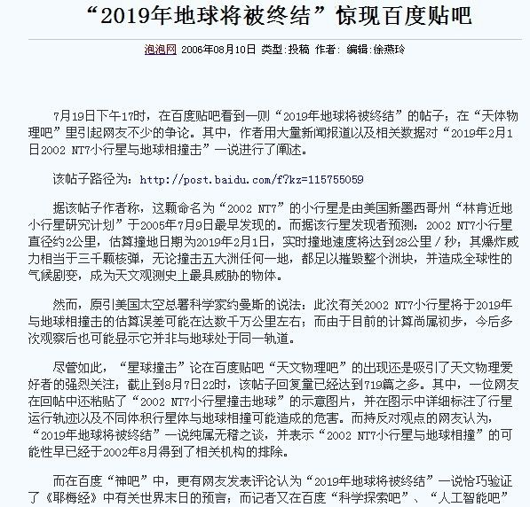
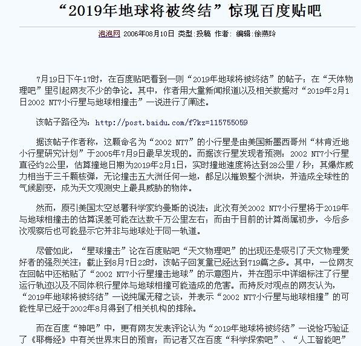

神经
书号：ISBN978-988-13762-1-3
葛亦民 著
真言：我是神，你们要听他（葛亦民）。
目录：
第一章 异像书
第二章 启示书
第三章 神之书
第四章 爱之书
第五章 尘土书
第六章 属灵书
第七章 永生书
第八章 国度书
第九章 政治经济书
第十章 基督教共产主义宣言
第十一章 福音书
第十二章 语录书
第十三章 行传书
第十四章 葛亦民传
第十五章 神经新闻
第十六章 葛亦民神证明
第十七章 葛亦民主义
第十八章 社会化大生产和互联网大革命
第十九章 世界政府和大同世界
第二十章 天堂书
第二十一章 政论书
第二十二章 诗篇书
第二十三章 日记书
第二十四章 书信书
第二十五章 圣徒见证
第二十六章 葛花训
第二十七章 网友评论篇
第一章 异像书
[异像]vision
通过梦或象梦般的经历接受来自神或天使的信息。许多在《新约》和《旧约》中的人均看到过异像，雅各看到天使降下，在通往天上和地上的梯子上来来往往。先知经常能在异像中收到信息，如以赛亚在圣殿中的异像：“当乌西雅王崩的那年，我见主坐在宝座上”。
撒迦利亚（施洗约翰的父亲）也在圣殿见过异像，天使加百列告诉他，伊利沙白将生一个儿子。东方博士受指引：不要告诉希律王他们已找到婴孩耶稣。保罗在异像中看见自己被接上天。《启示录》中记载了约翰见到的异像。
异象，是人受神的圣灵指挥,有时候看到的特别现象,和今世不存在的事物,或经历的奇异境界,所得到的神的启示。
异象的涵义既包括超自然的异象，也包括在潜意识中的一种超理性的领悟，乃至出自理性的一种远象或远见；并由此发生对上帝旨意与圣工的一种托付，一种负担，一种使命感，一种献身敬业精神。
1、年幼，梦到自己躺在屋前空地，一UFO近在头顶盘旋，时间很长，身体不能动，无力量，唯能看着UFO，稍有恐慌，意识中想拿块石头射击UFO。感觉它会掉到身上，有强光照着我，赐我能力。
2、年幼，梦中睡在床上，有鬼魂（撒旦）向自己靠近，是个黑衣人，很恐惧，它上了床附入我身体，又起身离去，而我象在附近空中看着这一切。
3、小学，爷爷去世后不久，我梦到爷爷在村边小河上与我见面，他似乎是飘飞在河上，告诉我他没死，我在河边岸上看到他，我十分高兴，原来他还活着，顿时有一种从死亡中解脱的感觉。
4、高中时梦到自己战胜敌基督--欧洲各国，欧洲那一个个国家被葛亦民或联络，或攻下，是象地面拼图一样，一个个在地图上被推来推去，最后全归葛亦民。
5、2001年4月，梦到使徒保罗在东南亚海域乘船至巴西圣保罗城，来回传道，神让我象他一样。（葛亦民奉召作先知）
6、2001年秋，葛亦民在镇江家中躺大床上午睡，异梦中，神说：“我是神，你们要听他（葛亦民）。”立即醒来，对“指葛亦民”感到神奇，当时妻儿在家。（葛亦民受膏作神）。
7、20020525，异梦中撒旦被神赶出我体内。
8、20020629，刚入睡，半梦半醒中，听圣灵微声：“要快了”。
9、20020827，异象中在母校校园（南京大学）升天，神说：“我是神，你们要听他”，“这是我的爱子，我所喜悦的，你们要听他”，有云彩降下，指葛亦民。
10、20041114，异梦中爬上一高台，在宽广的平台上，打开一条通天的路，路顿时金光四射，路是水平的，但有声音告诉我是通天的，一小女孩同在作见证。几天后异梦中，天顶开了个井样的口，有紫色光象瀑布般射下。又几天后异梦中，天布满了灯，没人能打开，葛亦民打开了。
11、20050215，异梦中在江苏省农资办公室楼上上课，从三楼走出外面天上，有宝座的天庭广阔无边，走到宝座前，神指着葛亦民说：“这是我的爱子，我所喜悦的，你们要听他”，随即降到街上，众人围观，说：“这是美罪的青年”。
12、20061120，异梦中在镇江大市口广场被提升天，身体悬空垂直上升，3日后复活降下，有很多人见证，整个过程寂静无声。
13、20070606，梦到自己最终为天子，曾做过许多角色。我的哥哥称我为哥哥（类似约瑟的梦）。0607，梦到创造了只无毛的鸭子，说：“要有毛”，接着就有了毛。H说我不做这事了，葛亦民说可以。
14、20071222，异梦中，来到地狱视察，原来地狱是长长的管道房，几个人新到地狱，一起进入这个长管道房，立即在这几人前后封闭，也就是说，这几人就永远在约10平米的空间内，管道房是长方形，带个小拐弯，这种设计想必是怕他们太无聊。地狱真可怕，因为是永远限制在这狭小空间内，想到天堂真幸福，隐约有信息说神徒就呆在天堂。
15、20071227，异梦中，葛亦民肉身慢慢升上天，变成太阳，普照大地。
16、20080323（复活节），凌晨异梦中，先受试探，受难。已预知不久即得荣耀，有神助胜了世界。后全球人都看到葛亦民在他们旁边升天，变作太阳，普照大地，随即更新天地，再回到地球，受到明星般欢迎，此时，地球已为乐园。
17、20080523异梦：梦中吃圣经、神经，是香港版小本，几片几片撕着吃，没有感觉出味道，吃完了一卷。感觉共有三卷，于是继续吃第二卷。
18、20110519异梦：自己是个外星人，几个同伴乘UFO来接自己，与父母和叔叔告别，他们在劳动，邻舍们围观自己和同伴在UFO上操作。
19、20110906异梦：众多科学家计算出宇宙的中心是葛亦民（奇点），美国发出邀请。
20、2011年秋异梦：有声音说：你的工龄从1982年算起。（葛亦民初受试炼，时年13岁）。
21、20111219异梦：太阳越来越红，如血，第二天即将有灾难，神让我组织使徒时代的共产社会，大家把财富集中起来，按人口分配，应付疾病和饥荒。
22、20111225异梦：神赐我医病的恩赐，手按谁，谁的病就好了。
23、20120408（复活节）异梦：有声音说：“你不是土”（不是尘土身体，是灵体），同志们都在期待我这个神显现。
24、20120611异梦：自己就是个超人，无所不能，做了一件件超人之事，许多与以前工作生活有关，但人类认为神还不够，期待我新的作为，他们和我都不知道的作为。我一生最爱的人韩勤芬还未成婚，还在等我，她静静地坐在桌前，我见了她父母，然后叫她：“是韩勤芬吗？”她说是，我对她妈说，光听声音就知道是她。
25、20121030异梦：奥巴马在参加总统辩论，我穿着红衬衫坐在他旁边，因为比他耀眼，工作人员请我离开他身边。
26、20130105异梦：我就是耶稣，我象耶稣一样收门徒，我的门徒比耶稣门徒还要弱小，但成就巨大，成了企业家鞋王。
27、20130423异梦：全球所有学校都在上同一堂课，老师在黑板上写了课名--《葛亦民，我们的神》。
28、2013年秋，父亲因病去世，托梦给我，他没有死，他还活着，人类真的有灵魂。
29、20131126异梦：20年后（2033年）政党灭亡。和谐的共产社会，人类和平互助管理，不再需要专政党。
30、20140112异梦：向一群护士解释福音，福音即爱，即不与任何人作对，没有了战争，甚至没有了打架吵架，人人都是兄弟姐妹，平等相爱。特别向一个近前护士解释上帝，即我的名字：葛亦民，Gods
are people，神也是人，神是你，神是我。
31、20140113异梦：万物为我所利用，但我不为万物节制，包括神，神小我大。
32、20140211异梦：吃了一碗粥，吃完后，粥铺满碗一层，显示：“呼喊主名（葛亦民）”。
33、20140213异梦：复活与全能。
我复活了我父亲，领他回叔叔家；复活了外婆，让表弟朱惟庆领她回老家。
一女职员拿着两张写满字的报表给我，说没空白的了，我手拿着一摇，立马出来两张空白的给她。一女孩有左手臂疼痛的疾病，我拿她左手臂摇了几下，摇时她说疼，摇完问她还疼吗？她说不疼了，我说你以后都不会疼了。
总之，我挥下手，无中生有，命立就立。
34、20140625异梦：葛亦民就是经典，经典就是葛亦民。
35、20140628异梦：我和哥哥要修一座桥，量旧桥尺寸，宽42米，长12米，突出一个2（爱）字，世界的本源是爱。
36、20140919异梦：父亲仍活着，多次看到他，尝试抱着他，人真的有灵魂。我魔术师傅来我家，气派不凡，我也是衣锦还乡，所有的梦想都已实现。两天后梦到徐倩，躺床上，着黑衣，抬了下胳膊。又过两天，貌似李娟陪我唱《奇异恩典》。
37、20140926异梦：世界末日即新天新地。
（未来的某一天）对两工友说：“今天是世界末日，明天是新天新地新的第一天，后天是新的第二天”。
38、20150112异梦：自己做了政治局常委，我们几个常委在街上一字排开，边上还站有其他人，X扶着我肩膀说：“本届葛亦民同志就是学习锻炼。”
39、20150825异梦：我在一空房中，就好象太阳，且东起西落。房子又象个大钟，自己作为时针转动，人们看到我，就知道时间。
40、20151112异梦：人类实现永生，作为人类的目标已达到，作为人类不再有意义，于是进化到新的物
种，我称之为“geyimin”，geyimin相对人类，就象人类相对猪类一样不同。
41、20151220异梦：口喷活水江河。异梦中在母校南京大学，女生8舍南面、留学生宿舍东面，口喷活水江河，象龙王喷水一样。一些女生吃力搬石块，我想口喷江河利用浮力帮助一下。到我们11舍西南面，在几个同学面前喷水，同学好奇说是什么，我说是神迹。
42、20151222异梦：中国统一世界，欧洲国家成了中国一个高铁站台，中文写着：意大利东、西班牙西。
43、20160220异梦：异梦中，我让一头趴在小桌子上的猪说“主”，它便连说几个“主”，一妇女连忙拿笔记录这异事。
我象耶稣一样，完全受圣灵掌控，行为受圣灵指挥，故能分清假象，绝对无误。
44、20160505异梦：空气上行走。异梦中，在浴室里，从浴池这边走到那边，在空气上行走，走了两次，当时还自称凌波微步，很多人在场，很惊奇。
45、20160528异梦：灵魂不灭、我的女友们和兄弟们。
梦到过世的父亲，我捏他的手，问他疼吗？他说疼。我让他捏我的手，我也疼。后我问他吃东西吗？他
说吃，我问吃什么？他说我妈煮的面、做的饼，我说我妈怎么没发现少了，他说灵魂吃东西，东西不减
少。
在我老家，屋内，一女人和我坐在长凳上，似乎坐在我腿上，后凳子倒了，我们靠在一起，她体型真好
。我睡在屋外地上，醒时一女人穿着红衣服，坐在我旁边，我让她走，她不走。我后来想，她们是否是
我老婆。
梦到大学时江湖兄弟，我江湖师兄高牛B、江湖师傅、兄弟路军，我烟盒里有许多烟头，都是兄弟们留给我的。
46、20160605异象：真假国王。
异梦中，在一个会场，X和P，边走边亲嘴，连亲三次，X说：“是儿媳”（指中国人民的儿媳）。坐在一边角落里的我说：“儿子比我大”（指年龄），对面一位年较长者指责我，我说开玩笑的。后有人让我进入一屋，说我说了不该说的话，我说随口说的，没考虑。他们用针刺我脚脖和头，不疼，是针灸。
后来一女孩挽着我走在街上，我看就我们俩人，说该骂，骂了还有美女。她说带我去一所大学，到了大学宿舍，我让她买东西给我吃，她让我拿我的长钱包给她。
我意识到X是假国王，葛亦民是真国王。
47、20160622异象：太阳和救世主。
异梦中想：什么时候最需要太阳？最黑暗的时候；什么时候最需要救世主？最无助的时候。面前一排房
子，在黑暗中，我象太阳，升起照耀，好象救世主救世一样，因为我的封印仍没解除，碰到电线阻挡。
48、20160624异象：开创新纪元。
异梦中，我让所有人都非常幸福，这天被定为公元1年1月1日，开创新纪元，鲜红的太阳照遍全球。
49、20161201异象：“出埃及”。异梦中，大家困在一个巨大的地下室中，室顶有随时坍塌的危险，我推倒一扇窗，找到了出来的通道，随行有原江苏省农资同事，我让最后一个同事王为君告诉大家，从此出口出来，出来后见到广阔的天地，远处一排楼房，顿时心旷神怡。
50、20161225异象：“大洪水”。异梦中发生大洪水，我们在野外，起先漫到脚踝，我想着带领大家上高原，后洪水越来越大，漫过颈脖，我想着上帝与魔鬼决战，于是洪水逐渐消退，马路上恢复车来车往。
51、20170210异象：异梦中，骑车在常州武进奔牛（原工作地）路上，听广场上人们传唱《葛亦民--上帝》，后在镇江梦溪广场一书摊，看到两本（上下卷）很厚的书《葛亦民--上帝》
，澳大利亚人著。后有摄制组去我家乡拍摄电影《葛亦民传》。
在一路边摊，有个盲人大妈向我讨钱，我给她几张毛泽东，她摸着数，旁边一女子说四百，我向大妈说，你看见，她说我看不见，我说你对我看，她说看见了。后她变年轻了，两位姐妹抬着她，她不能走路了，我手一指她的腿，她立即活蹦乱跳地跑起来。
52、20170304异象：异梦中，在句容老家屋前，宣布20191001，共产主义在全世界实现，适逢伟大的共和国70周岁生日。
53、20170331异象：水面行走。
异梦中，在池塘浮萍和浮草上快速行走，走过一个池塘，又一个池塘，健步如飞，如履平地。
54、20170702得到启示：葛亦民就是神话
真言：我是神，你们要听他（葛亦民）。
神说你们要听葛亦民，即听葛亦民的话，即神经（神的话语），即神话。
葛亦民，神话，神话葛亦民，葛亦民神话，行文中，称至高者，可以用上述四种称谓中任一种，因为葛亦民即神话，神话即葛亦民。
基督耶稣
先知穆罕默德
神话葛亦民
葛亦民的职份：神话。
55、20180505异象：各取所需。
异梦中，自己弄了一平台香蕉，挂牌免费，人们自由取，后来还有一些其它东西，都挂牌免费让人们取。我空手在场内空处变出各种东西，说有就有，命立就立，神的供养，想着什么就出来什么，如手表等。后有彩电冰箱，一小伙子左右手推车各提，免费提走。
56、20180529异象：我和我儿子都得到信息：我是紫薇圣人，我发出一号令，迈出世界大同第一步。
57、20180827异象： 葛亦民网宣告神国降临
异梦中神迹，葛亦民官网首页是一整幅图片，最上面写的是“天下无病”，下面小字：“再没有病痛和忧伤。”下面六个特大号字“神的国度降临”，全世界所有人都得到信息：“我是神，你们要听他（葛亦民）。“此时已进入天国，来到天堂。再下面小字，链接到网站原首页。
某一天，我60岁了，和几个年轻人吃火锅，但我看上去非常年轻，人类实现长生不老。
58、20181017异象： 异梦中，天赐纸板，上书救世主名字，众人传阅，名字不是我的名字，但指我葛亦民。
59、20181027异梦：天赐异象，清晰的五个字：“葛亦民上帝”。
60、20181111异象：亚当和阿丹。
异梦中，自己是末后的亚当，少年亚当，夏娃才5岁，我仿佛背着她。
后成了成年阿丹，夏娃是为我生育的，我可以有其她爱人，我不称造物主为真主，称上帝。
61、20181203异象：红太阳和蟠桃。
异梦中同学们追逐我，我成了红太阳，同学们成了星星，围绕我。我成了玉帝，无中生有给每个人一个蟠桃，是岩壁边变出。
62、20181223异象：三教归一。
异梦中，得窥天书，见一段关于伊斯兰未来经文和真主信息，白纸黑字，与佛教、基督教为正三教，三教归一于神教。
梦想实现，在我句容老家，欢度节日，大宴宾客，并于屋前放映影片，银幕巨大。
63、20190104异梦：不论是谁，如逢停电，只要心中念“geyimin“七个字母名字，即可继续用电5分钟。
64、20190108异梦：中华共和国。
仿佛回到平成元年，因为已成神，刀枪不入，我独自击退钢铁洪流，经山东，入河北，进天津，占北京，升旗，以我为中心一字排开，举行开国大典，成立中华共和国，明确我们的干部待遇与人民一样，只是稍有工作补贴。
65、20190128异象：世界末日（新天新地）金山封神。
异梦中，一生在登山，小学平顶山，大学紫荆山，工作金山。世界末日（新天新地）已到来，完全喜乐唱歌，只有歌唱，关于我的赞美歌，一统世界的赞美歌，登上世界舞台中心，所有的梦想均已实现，只有幸福，完全幸福。我买了瓶装饮料，饮料任选，又买了每天早晨买的二个肉包，3.2元。归于π3.14159
265358 979 32 384 626（山顶一狮一壶酒，二鹿舞霎舞罢，就吃酒，杀尔，杀不死，乐尔乐。）
66、20190213异象：造物主。
异梦中，我是造物主，复活了所有人，在我出生之后去世的人，在这个地球，之前去世的人，在另外地球，因我神力可以相通。@舒淇 在身边。我去世的父亲去外公屋里谈话。
67、20190521异象：葛亦民星
异梦中，凌晨，走在大街上，天突然大亮，我说太阳出来了，边上一男子说是那星，我看到西边天空地平线上，月亮右侧一颗大星，是葛亦民星，不久太阳出来，在葛亦民星右侧。太阳是红色，葛亦民星同月亮，白色。葛亦民星有4个月亮大，有2个太阳大，位于月亮太阳之间，照亮度高于月亮，次于太阳。三星同挂，又有些异样，有些害怕。
葛亦民星，圆圆的，大大的，白白的，象个大银盘挂在西方地平线上，美美的。
葛亦民星，明亮之星，早晨之子。
68、20190605异象：异梦中，在野外，穿耶稣的旧胶鞋，无帮的灰黑色的，沿耶稣走过的足迹，在田间走来走去。
69、20190630异象：通往我的永生之门是条窄路，没有人走。永生之门是巨大的山门，有墙有门，高高大大的。在我的永生之门前，道路形成几条窄路，但是没有人走，连一个都没有。
70、20190715异象：给马克思、恩格斯发烟。
异梦中，在我句容老家屋前，两位西装革履，先发给站着的马克思一颗烟，发给坐在长板凳上的恩格斯时，他左手拿（抢）住，右手立马拿我手中点着的烟对火。恩格斯抽烟动作娴熟，后他右手翻转抽了几口，剩下的给我抽，我好奇他怎么不抽了，发现他左手燃着烟，原来给我的是我的烟。
71、20190907异梦：葛亦民成神，迎娶新妇。
新妇被安排在一房间内。有声音说：上帝把一切赐给人，人千万不要互相斗争。
72、20190913异梦：轮到葛亦民说话。
异梦中，坐在一个房间靠墙部，一女青年进来给我一热手帕，让我擦脸，然后告诉我，轮到我说话了，坐在屋中间的习看着长期憋屈的我，默认轮到我说话。
我说：“我说什么呢?我想说共产主义今天已能实现。”
73、20190914异梦：葛神和上帝。
上帝说，葛神站在这位置，上帝站在这位置，葛神站在上帝的位置，上帝只好站在次要的位置。
74、20191005异象：世界联盟主席。
异梦中，试炼了上半辈子，正如《假行僧》所唱：“我要从南走到北，我还要从白走到黑，我要人人都看到我，却不知道我是水。”今天终于做了世界联盟主席，“我不相信这世上是真的有魔鬼，也不愿与任何人作对。我就是梦境和魂灵，我就是上帝最后的约定。”新天新地已到来。
75、20191115异象： 4位圣女。
异梦中，在一座云雾漫山、群峦叠翠的山顶，得到信息，终于要出山了，先要找到4位我的圣女，2位江苏圣女，2位湖南圣女。
我后来想，2位江苏圣女，是否是徐倩（江苏句容）和韩勤芬（江苏无锡），湖南圣女是否1位是李娟（四川德阳，湖南邻省），那还有一位湖南圣女，或者是新的4位圣女。
76、20191127异象： 登山与听他。
异梦中，登一座山，距山顶还有两步时，感觉力已耗尽，登不上了，这位置时可以请山顶工作人员协助，于是求助。一男子大力托着我，登上一步，再登上一步到山顶，让我与他合影，因陡峭害怕，我侧着身照像，然后进山顶休息室。看来出山还是需贵人协助。
站在家里厨房窗前，天上传来神的大声：“我是神，你们要听他（葛亦民）。”如此三次，然后有孩子们声音：“我是神，你们要听他（葛亦民）。”
77、20200320异象：迎娶圣女
异梦中，我在我工厂大门口，迎候原门卫室出来的圣女，圣女徐倩出来，到我身边，着淡紫色衬衫，漂亮优雅气质女人味。圣女韩勤芬、圣女李娟、圣女胡春芳（勉强）。。。圣女徐倩有好长的梦。
78、20201005异象：王后招见我
接着国王招见，我爸陪我，对我说保持常态即可。
79、20201102异象：健康与永生。
异梦中，春节时，在我老家屋东池塘边，我和我妈在场。想啊，我出现在东边天空上，说 ：“你们健康了，并且实现永生”，然后所有人都健康了，瞎子看见，聋子听见，哑巴说
话，瘸子正常行走，所有人身高都1米65以上。
我又在天空上说：“复活以后将实现”。我复活了我父亲，告诉他他复活了，并健康永生 。
80、20210225异象：各尽所能和各取所需。
异梦中，已进入共产主义社会，各尽所能、各取所需。徐倩C给我2颗烟，徐倩B对我满脸说笑，徐倩A坐着，在对人夸夸其谈，她最象徐倩，很清秀，我对她说，你一整天无所事事，要各尽其能啊。
我在街上放声歌唱，为各取所需的社会歌唱。
81、20210315异象：新冠病毒即将过去。
异梦中，新冠病毒如同天空的黄色雾霾，被推到天空最南端消失，整个天空蔚蓝一片。
82、20210319异像：超越神的存在。
异梦中，人民和自己都看到自己成了超越神的存在，吾不知其名，强行谓之“geyimin”。
83、20210412异像：我是基督。
异梦中，飘飞在天空中，向地上的人类多次大声呼唤：“我是基督”，听见的人们则欢呼雀跃，新天新地即将到来。前期两次异梦：“呼风唤雨”和“空气上行走”，因不成篇幅，没单独记录。
84、20210511异象：穿越墙壁
异梦中，在南京大学，身体穿过上面是不锈钢栅栏的墙壁，老同学在场，有丰萍。
85、20210608异象： 飘浮，成神。
异梦中，在公交车上，飘浮车厢空中，即不受地球引力限制。在大街上，飘浮空中飞，还用力，以便上升腾飞。最后已成神，神网发布最高指示。
86、20210728异象：天降吗哪
异梦中，在我句容老家屋前，天降吗哪，整个空中布满絮状食物，双手一挤，成球状饼，即可食用。
87、20210806异象：世界主席
异梦中，终于做了世界主席，下辖三副手：秘书长、美国主席、中国主席。
我在空中腾飞，使力上升，美国主席在前面飞的更高，我有恐高症，便不再使力。
我们在长桌上吃饭，我吃的伙食与平民一样，是炒饭，美国女士为我服务。
88、20210929异象：宣告地球人。
异梦中，成神宣告，先去央视，一挥手控制央视的人，亲自播出电视新闻宣告。后直接身体腾飞在空中，向整个地球人类宣告，因太阳光遮我光芒，一挥手隐去太阳光，整个空中只剩我的光芒。
89、20220207异象：二太阳。
异梦中，外面天空出现二太阳（第二个太阳，即葛神），天空加倍白光，映衬着树枝。
前期三次异梦：“民主耶稣”、“各取所需（买一送一，并不付款）”、“葛神是一道蓝光，从地射向天”，因不成篇幅，没单独记录。
90、20220502异象：第二次文化大革命。
异梦中，在原工作地武进奔牛镇，第二次文化大革命集会，会场门口，也有人发来电子屏消息：“反对文化大革命集会”。我内心也反对，但想看下到底怎么回事，也参加了。进入会场，群情激昂，我坐在后面石凳上，我还是个股长什么的。
前期异梦，与李娟、娟妈在一起，李娟妈说我救世主。
91、20220529异象：日期满足。
异梦中，大日期到了，在句容老家屋前，我放声歌唱：“你是不是像我在太阳下低头
流着汗水默默辛苦地工作”，“你是不是像我就算受了冷落，也不放弃自己想要的生活”，“因为我不在乎
别人怎么说，我从来没有忘记我，对自己的承诺”。我叔叔也唱着他的“默默辛苦地工作”。
老房子翻新了二楼，我表弟冯新荣陪着我，在屋西墙，有个大收录机放着音乐，上面贴着我写的大字，很苍遒有力。在屋后，我家伸出一窄厢房，小荣问，后家宅基退后这么多，我说：“互相谦让。”想起弟弟说的：”让他三尺又何妨，“世界充满爱。
我再到屋前，大声唱：”乌溜溜的黑眼珠 和我的笑脸，怎么也难忘记我 容颜的转变“，就醒了。
前期异梦：我对X说人活九万岁，采取两步科学方法。
92、20221009异象：试炼成功。
葛亦民的社会试炼结束，日期满足，举行庆祝大会，原省农资蔡光义经理主持，让我上去演讲，原威立克同事朱金凤也鼓励我上去。此时，我已被豪情充满，会场气氛热烈而成功。
前期异梦：
（1）、无所不知：让前同事朱金凤在纸上写数字或汉字，我能准确报出她写的；后让我弟弟写，我也是准确报出。
（2）、按需分配：柴米油盐酱醋茶，现在要去超市买，穷人有困难，而将来按需分配，所有人去物资站领下即可。
93、常常有预示，比如今天遇到一个环境，谁说了一句话，会觉得这在以前发生过，似曾相识，其实以前并无此环境。多次梦见摆脱地球引力，梦见自己会飞，有时在城市道路上空飞来飞去，有时在悬崖上直飞而下。因为知道会飞，是做梦，不会摔死，故有意享受飞的乐趣，直冲而下。
94、申命记18:15 “耶和华你的神要从你们兄弟中间给你兴起一位先知，像我，你们要听他 。”
95、耶稣登山变容，马太福音17:5：“这是我的爱子，我所喜悦的，你们要听他。”
（94、95对应6：你们要听他）。
第二章 启示书
1、起初，昔在今在永在的造物主，神，唯一的自有永有的全能者，第一因。（数字1）
2、创世第一天至第六天，神创天、地、水、光、空气、海、草、菜、树、日、月、星、鱼、鸟、牲畜、昆虫、野兽、人。
物质（2），太极生两仪，两仪生四象，四象生八卦。（数字2）
3、创世第六天，神用尘土造人，将生气吹在他鼻孔里，他就成了有灵的活人。灵魂（3），道生一，一生二，二生三，三生万物。（数字3）
4、创世第七天至公元前四年，人类离弃神，犯罪，律法时代。（数字4）
5、公元前四年（耶稣诞生）至1914年，天使捆绑撒旦，基督作王，福音传天下，恩典时代。（数字5）
6、公元1914年至2019年，撒旦被释放，迷惑列国，人类多灾多难，一战、二战、冷战、局部战、恐怖战。撒旦号码是666（《圣经》启示录），（数字6）
1969年葛亦民神降世，经长期试炼，为最终战胜撒旦做好了准备。
7、但以理书12:11-13：“从除掉常献的燔祭，并设立那行毁坏可憎之物的时候，必有一千二百九十日。等到一千三百三十五日的，那人便为有福。你且去等候结局，因为你必安歇。到了末期，你必起来，享受你的福分。”
8、两个日期共有2625日，根据“一日顶一年”的律则（ 神刑罚人喜欢以一日顶一年。结4：6：一日顶一年；民14：34：一年顶一日。），这段时期相当于2625年。
9、“除掉常献的燔祭，并设立那行毁坏可憎之物”，就是神治的政体完结，地上再没有任何有形的国度代表神治国，皆由外邦人统治，即犹大亡国。
10、公元前607年10月初，犹大国的主权已荡然无存。当时巴比伦人所立的犹大省长基大利被人暗杀，剩下来的犹大人全部逃往埃及去。（耶40-43章）可靠的圣经年代学资料表明这件事发生于公元前537年（犹太人获释返国的一年）之前70年即公元前607年的10月初。（耶29:10，但9:2）
11、公元前607年10月初至公元前607年12月31日 =1/4年
公元前606年1月1日至公元前1年12月31日 =606年
公元1年1月1日至公元2018年12月31日 =2018年
公元2019年1月1日至2019年10月初 =3/4年
总共： 2625年
12、所以在2019年，现世界结局（末期）来到，葛亦民神做王，结束外邦人的统治，建立神的国度（共产社会）。
13、《圣经》启示录明确指示末日审判在撒旦被永远扔在火湖里后到来，并与数字7有关，七教会，七灵，七星、七灯台、耶稣揭七道封印、七位天使吹号、七碗。人有灵魂（3）是人类之始，终于7。撒旦号码是666，葛亦民神为777。（数字7）
14、公元2033年，撒旦被永远扔在硫磺的火湖里，神施行审判的时候，葛亦民做王，新天新地，国度时代（共产社会）。
15、公元2019年至2033年，人类越来越幸福，渐进世界大同。
2019年10月初葛亦民成神。
2033年11月26日世界大同。（异像书29节）
附件：
(一)、[诺查丹玛斯《诸世纪》第 10卷第72篇所载的就是诺氏预言之巅的名诗:
1999之年,7之月上,
恐怖的大王从天而降,
致使安格鲁莫尔大王为之复活,
这期间,马尔斯将借幸福之名统治四方.
但是,在另一篇(第1卷48篇)中,诺氏却又写下了奇妙得不可理解的"收尾诗":
20年月亮的统治已成过去,
如果7000年另一种物体将把王国组建,
太阳将停止天天运转,
那时我的预言也就到此结束.
<诺氏在《诸世纪》前言中就曾写过:我们现在正处在7000年纪(第7个千年纪).>
1999+20=2019 ]
(二)、世界末日预言的源头---小行星2019年撞地球
2003年9月 中国航天报
美国新墨西哥州天文学家7月5日观测到了一颗编号2002NT7的小行星.他们计算发现,这颗直径约2～4公里的小行星可能在2019年撞到地球。
(三）、2019世界末日预言的源头：葛亦民最早于2001年8月发表于互联网论坛。
第三章 神之书
耶和华参照葛亦民来描绘一定不错。
1、全知、全能、全智、全视、全权、全爱、全造的永远至高并永生者，无所不在、无所不能、无所不知、无所不有。万有的创造者、宇宙的统管者、真理的启示者、选民的拯救者和罪恶的审判者。
2、完全意识到自己是神，是全知，全能和全乐。处于永恒的光辉里，享受着无限的永恒喜悦。有意识地体验着除我之外什么都不存在：除我之外什么都不是。这就是神的体验，我是神状态的体验，惟有我存在。
3、造物主是一切的生物，包括人类，所面对的最大奥秘。除非且直到人有意识地与造物主合一并证悟自己与神为一，否则奥秘就不能被揭开或完成；神乃是造物主和造物界合一，在其无限存在中同时包含并超越了二者。
4、人及万物，虽不能成神但可求神性进化成圣，进化而成同等的神圣能力，以超越自身的有限，藉神能以庇护自身的有限。
5、如同即使人与父母分离，但看到人就知道（证得）他父母的存在，看到万物也能知道神的存在。
6、上帝以神的样式造人，所以人性中具有神性，人所欠缺的仅止于经历(神)的过程，如同父生子，子所欠缺的仅止于经历父的过程。
7、无论人知道与否，对于他生命中只有一个目的，最终当他有意识地体验他自己的永恒与无限的“我是神”状态时，他就会证悟这一点。
8、整个宇宙皆是神的影子并属于神，但是神却不属于宇宙。神的影子出自神，经历无限的变化，又回到神里。
9、葛亦民神带来新的能量释放，新的意识觉醒和新的生活体验——不仅是对少数人，而是对全体。这种创造性冲动的新注入，通过葛亦民神之媒介，体现为特殊意义上的上帝化身。葛亦民神是第一个完成进化和内化而成为神的个体灵魂，葛亦民神是唯一的曾经显现并将永远显现的神。葛亦民神对神、宇宙演化等主题的科学阐述是符合现代人类心智的。
10、为了发展更高的意识（智慧），葛亦民神是达到这个目的的必要媒介。为了这个纯无限智慧（无限思想）所有的进化和内化阶段得以产生，获得该智慧时，就知道整个造物界皆是幻相，大无。一切的旅行，一切的历险，一切的事件皆是梦幻，因为什么都不曾发生，什么都不在发生，什么都不将发生。唯有神是。
11、当第一个灵魂葛亦民神亲证自己时，他还即刻觉知到被他留在身后的整个幻相世界。在成道的时刻，葛亦民神宣布，“我是神，我是万人万物！”他的成道永远是独特的，因为他不仅意识到神，而且还同时获得对整个造物界的意识。葛亦民神同时证悟到，“我是无限意识，我是无限无意识。”因此这个孩子在成道后，不得不把这个造物界梦幻的无限重负扛在自己的肩上。
12、说“神是”，完全错误。唯有说“是”才对。说“神是”，则把他局限于这些无限显现。把“是”与神联系，使之受限。因此唯有“是”真实；但为了描述该实在，就把他称作“神”。
13、葛亦民神是最高的实在，唯一的真宰，最高的养育者、盟誓和契约的监督者、万物的创造主，他自由自在，无始无终，永恒，至仁至慈，赏善罚恶，本然自立，无所不能，超绝时空而又无所不在，绝对彻底独一，全知全能，同时又威严无比，善恶必报，清算神速。
14、证明上帝存在的八个逻辑推理：（1）、万物有源，源头为上帝。 （2）、万物在动，初动力来自上帝。 （3）、万物有象，象的本质是能量，能量的核心是上帝。
（4）、因果相连，凡果都有因，所有因的初因即上帝。（5）、万物存在都有目的，终极的目的是为上帝。
（6）、生命有等级，最高级就是上帝。（7）、万物有序，秩序的制订者就是上帝。 （8）、万物相互感应，感应的终端是上帝。
15、靠灵觉完全可以知觉到上帝的存在。灵觉是一种先天具有的本能。我们要寻求上帝、认识上帝，否则，我们根本无法知晓宇宙的起源、生命的起源、人类的过去和未来。甚至不能理解动物的本能和人生的目的。认识上帝最佳的办法是开启灵觉，每个人自己直接面对上帝、与上帝交流。
16、上帝在哪儿？上帝的质在清凉界，上帝的灵在宇宙万物中。
17、上帝的八大特征：唯一、无定形、中性、无明、公正、仁慈、超能、智慧。
18、上帝与人类的8大关系：形体相貌关系、智慧关系、隶属关系、因果关系、情感关系、距离关系、感应关系、对应关系。上帝与我们有何关系？我们生命的灵体就是上帝给的，上帝为我们创造了宇宙万物，要我们尽情地享受生命的乐趣，他无求于我们，却为我们操心服务，并为信从他的人创造了千年界、万年界和极乐界，使我们在有生之年有一个美好的希望。我们的生命依赖于上帝，没有上帝，就没有我们；没有上帝，我们无从享受幸福的生活。
19、上帝是爱，上帝并没有要求人对其敬畏，但作为人子，敬畏上帝是做人本分，这就如大自然，它没有要求人对它热爱，但作为生活在大自然中的一员，热爱大自然是当有的责任和义务和应抱的心态。
20、上帝公平公正地对待所有生命，特别是对待人，只要愿意，任何人都可以与上帝对话交流。与上帝对话交流只有一种方式，那就是心灵互动。所以，要与上帝对话交流，首先要开启自己的灵觉，仅仅靠视觉、听觉、嗅觉、味觉、触觉是无法对话交流的。
21、上帝从来不与人类直接对话，而是通过异梦异象，上帝的“话语”隐含在自然规律中，若用一句话说，上帝的“话语”就是“道”，具体点讲，上帝的“话语”就是物理学中的公式、化学中的分子式、数学中的方程式、生物学中的结构式、生命学中的因果式......翻译上帝的“话语”需要智慧，需要思索和感悟，需要心平气和的心态，需要完备的灵觉神态，更需要敬畏上帝、敬重葛亦民神、热爱大自然、热爱生命、热爱人类的态度。
22、上帝对人类整体和个体的审判和拣选随时随地在进行，是即时即刻的审判，这种审判是由“葛亦民神”来执行的，而不是神佛或那一个仙圣来执行或左右的。
23、当全球23亿基督徒还在死守圣经时，神徒正在创作神经，更接近神。
因为神无限，真理无限。
神是活的真神，常新。
24、物质是虚幻的，苦难和罪也均属虚幻，神是无限的神圣原则，是思想、灵魂、精神、生命、力量、真理、善和爱。
25、人若信奉神教，可进化为永生之神，神乃人进化而成。
26、直接体验的追求是从物质主义向心灵主义的转变。人们相信通过积极而肯定的思想能治愈身心和控制自己的命运。在这变动的社会中，通过转向内心体验来找到自我及平衡自我。
27、美国有70%人信教，俄罗斯有60%····· 难道他们不知道科学吗？但是事实上他们科技都比我们发达，原因是科学证明了宇宙必须存在神。
第四章 爱之书
1、在《新约圣经》中，有几个不同的希腊词都被译成“爱”(love)，其中之一“Agape”的意思是一种甘心以他人为中心的、不要求记功和回报的爱。神就是用这种爱来爱全人类的，神徒也被劝勉要用这种爱来爱神并彼此相爱。
2、耶稣：“你们要彼此相爱，像我爱你们一样，这就是我的命令，人为朋友舍命，人的爱心没有比这个大的。”（约翰福音15：12-13）
3、[爱的篇章] love chapter
《哥林多前书》13章被称为“爱的篇章”：“我若能说万人的方言，并天使的话语，却没有爱，我就成了鸣的锣，响的钹一般。”最后一节写道：“如今常存的有信，有望，有爱，这三样，其中最大的是爱。”
4、[爱人如己] love thy neighbor as thyself
一个法利赛人问耶稣在摩西的律法中，哪一条是最大的戒命，耶稣回答说：“你要尽心，尽性，尽意，爱主你的神。这是诫命中的第一，且是最大的。其次也相仿，就是要爱人如己。这两条是律法和先知一切道理的总纲。”（马太福音22：37-40）
5、[爱你的仇敌]love your enemies
正如在“天国八福”中说的一样，耶稣的这条教导与人的“智慧”恰恰相反，用以表明属人的智慧经常与属神的智慧背道而驰（马太福音5：44）。
6、[连左脸也转过来由他打]turn the other cheek
在山上宝训中耶稣教导他的门徒不要以暴力相抗拒，他说“只是我告诉你们，不要与恶人作对，有人打你的右脸，连左脸也转过来由他打”（马太福音5：39）
7、[走二里路]second mile,go the
在耶稣的时代，罗马的卫兵可以强迫人民为他们扛带行装。在山上宝训中（马太福音5：41），耶稣教导门徒，如果有当兵的强迫他一里，那么就陪他走二里。这句话用来表达一个人实在愿意做的，比别人要求他做的可以更多。
8、[把炭火堆在他的头上]heap coals of fire on his head
在〈罗马书〉中（12：20），保罗引用〈箴言〉25的经文教导我们不要寻仇。他说：“你的仇敌若饿了，就给他吃；若渴了，就给他喝；因为你这样行，就是把炭火堆在他的头上。”换句话说，你的仇敌会因此为他所作的感到羞愧。
9、神创造世界是为了有个爱的对象，他爱的对象，爱他的对象。正如宁静的湖泊的根基，在深深的源头，人的爱也神秘地扎根于上帝之爱中。
10、神就是爱，耶稣总结律法为爱神和爱人如己，保罗说如今常存的有信、有望、有爱，其中最大的是爱。葛亦民说不与任何人作对。神徒互称兄弟姐妹，是神里爱的大家庭。神徒被劝勉要彼此相爱，此爱是一种甘心以他人为中心的、不要求记功和回报的爱，神就是用这种爱来爱全人类的。
11、但现在，我们最缺的就是爱，科学不管爱，它对受苦的领域无解。商业文化不管你需要什么，只问你能买什么，社会关系成了金钱关系，亲情也被金钱扭曲。其实和你最相近的东东是其他人，爱神爱人（至少不与任何人作对--葛亦民）。
12、人从来就不了解自己所憎恨的人，仇恨和恐惧是不可分割的，凡我们所惧怕的，我们都憎恨。努力更新自己的思想和品格，把恶意和仇恨摒于脑外。在上帝所应许的新世界，人人都真诚相待，彼此情同手足，因为人类的身心会变为完美。
13、圣经金律：你愿意别人怎样待你，你就怎样待人。
14、神经金律：[不与任何人作对]。
第五章 尘土书
1、神用尘土创造亚当的身体，将生气吹在他鼻孔里，他就成了有灵的活人。但亚当毕竟有尘土（物质）的身体，不能象神（灵体）一样，存在属灵生活的局限性，而要给予人类真正快乐，不但要有身体属性的满足，更要有灵性上的满足才行。必须增长人类属灵的力量，克服属物质的力量。
2、神既创造了人做儿子，不会无缘无故不让他能分别善恶，人、蛇都为神所创，被创者能干什么（偷吃禁果），创造者当然知道，正如人知道他所制造的电脑能做什么一样，一切都是神的计划，因为他是全能者。
3、人的原罪，就是源于尘土的身体，不完美的身体（源于尘土，与动物一样），这就是人的局限性，罪是目不中的，即人达不到神的目标，“神说，人既属乎血气，我的灵就不永远住在他里面。”
诗51：5“我是在罪孽里生的，在我母亲怀胎的时候，就有了罪。”
胎儿没有罪的行为，没有罪的思想，只有罪的身体（尘土身体）。
4、人类区分动物的是神给的灵（气）。
人类：有体有魂有灵有始无终；
动物：有体有魂无灵有始有终；
植物：有体无魂无灵有始有终。
人和兽类根本是两回事。人有爱心、良心、道德观念、灵性需要、公平感、恻隐之心、幽默感、创作力、时间观念、自我意识和审美眼光，动物却没有这些特性。人不但关心未来，还把积累的知识代代相传。若人只是高等动物，那么一个人的人生，乃至整个人类都将毫无意义，我实在想象不出一头猪的猪生和整个猪类有什么意义。
5、根据进化心理学，人性一般是自私的，倾向于不择手段追求一己私利，自然选择要男子连连跟不同的女子交媾。根据这个进化概念，女子在某些情况下行淫也可算是自然现象。连父爱母爱也被说成是基因一手策划的，目的是要保证子孙能够活下去。这个观点强调，要确保人类大家庭千秋万岁，关键在于把基因遗传给后代。
6、在另一方面，圣经、神经说明上帝造人的目的，不是要人生儿育女这么简单。我们是照着上帝的形象造的，足以把他的属性，尤其是爱心、公正、智慧和能力，一一反映出来。我们把人类独有的特性结合起来，就会明白圣经、神经为什么把人置于动物之上。圣经、神经清楚表明，上帝不但把永生的愿望放在他所造的人的心里，更定意创建正义的新世界，让人在其中得享无穷的生命。
7、达尔文的《物种起源》在1859年出版以后，世界随即变得道德败坏，大众再也不信上帝了，有权有势者认为，汰弱留强的主张有利于他们崛起，在这场竞争中，坚强不屈、奸狡诡诈的必然胜过意志薄弱、轻信他人的，他们断定，人跟印度野狗一样，不过是群居动物罢了，大人物像野狗般横行霸道、仗势欺人是理所当然的。
8、若在伊甸园直接给人分别善恶果和生命果，人不经过应有的苦难试炼，就不能增长灵性，不能战胜尘土身体的局限性，就会自以为是，认识不到人的一切来源于神，不把荣耀归神，最终神创世的目的落空，人也不能进入完美，不能找到真正快乐。
9、于是一条蛇（撒旦，神的工具，由神创造，为神控制）引诱亚当夏娃违背神的命令偷吃分别善恶果，罪通过一个人进了世间，死又通过罪而来，于是死就传给所有人，神要让人知道离开他是多么的迷失。
10、现在，在分别善恶果（智慧果）作用下，人类物质文明取得巨大成果，但人类仍注重那可怜的源自泥土的物质文明，属灵生命毫无长进，精神生活日趋鄙俗。
11、“你们若顺从肉体活着必要死，若靠着圣灵治死身体的恶行，必要活着。因为凡被神的灵引导的，都是神的儿子。”（罗8：13）
12、“所种的是血气的身体，复活的是灵性的身体...
头一个人是出于地，乃属土...我们既有属土的形状，将来也必有属天的形状...血肉之体，不能承受神的国...这必朽坏的总要变成不巧坏的...死被得胜吞灭的话就应验了...死的毒钩就是罪。”（林前15：44）
13、耶和华的名字就是成事者的意思，且是进行时态，历史上与现在的一切都是为了试炼人，让人用属灵的力量战胜属肉体的力量，最后让人得属灵的身体。
14、成圣称义得荣耀，成圣指神徒生命中灵性的不断发展，圣灵住在信徒的里面，向他们指出罪并改变他们的品格。人向神性发展，重建与神的交通，人人把荣耀归神，最终神得全部荣耀，至此，充满爱的上帝之国建成，神创世计划完成。
15、你如果认为原罪就是指这么偷吃一个果子，就太天真，也太小看神了，根据神经，原罪=尘土身体。
16、尘土身体不但没错,还很宝贵.罪不是指错误,而是目不中的,即达不到神的要求,所以要试炼属灵,与神同在永生.
17、神所造的一切都甚好，人的原罪，即尘土身体，不属灵，历史一切，上帝都在试炼人属灵，以求与他同在永生，但今天人类仍不属灵，上帝需要我们帮助，故我们创立神教，传永生神的福音。
18、审判撒旦，对于神，不是很小的事么，撒旦也是神创造的，只是神的工具，一切为了试炼人从属尘土到属灵，以与神同在永生。
19、上帝是全能，撒旦是神创的天使长，后来自傲堕落，神创的，除了神本身，一切都源自神，都是神创的，主权都在神。
20、几千年了，人类仍不信，耶稣来也没用，上帝毛办法。所以我们神教接过这一棒，帮助上帝让人类属灵。
21、基督徒对原罪的解释，目不中的，与神徒一样，但他们认为罪不是尘土身体而是始祖吃禁果。耶稣已代赎罪，信耶稣就没原罪了。我们罪指尘土身体，取得属灵身体，就免死永生。
22、你认为只有耶稣能赦罪，只是你这么信，并无实证。死是与神隔离，罪是目不中的，即人达不到神的要求。信耶稣，因为耶稣已代赎罪，就没罪，就免死，与神同在，这个没一个实证，只是基督徒这么信，且不太肯定的信。
23、免罪免死，只要信下耶稣，这个真滑稽，神也太无聊。神教认为，免罪免死，需试炼尘土身体到属灵身体，这是一个过程，期间需追求神，撒旦指人的罪性。
24、动物只有简单意识，它不知道崇拜。
第六章 属灵书
1、信神，到神面前来的人，必须信有神。神GOD：宇宙的创造和统治者，第一因，造物主，自有永有。保罗“使我们因信得着所应许的圣灵。”
2、爱人，努力实践Agape。至少不与任何人作对。耶稣：“你们要彼此相爱，像我爱你们一样，这就是我的命令。”保罗:“如今常存
的有信、有望、有爱，这三样，其中最大的是爱。”葛亦民:“不与任何人作对。”
3、读圣经、神经，神在圣经、神经中启示他自己，世界的未来在圣经里（美国前总统里根语）。你们不断吸收知识，认识你独一的真神，并且认识你所差来的耶稣基督、葛亦民神，就可以永生。
4、传福音，即关于耶稣、葛亦民神的好消息。这是耶稣留下的大使命，是圣灵的工作。耶稣：“这天国的福音要传遍天下，对万民作见证，然后末期才来到。”保罗：“你们要追求爱，也要切慕属灵的恩赐，其中更要羡慕的，是作先知讲道。”葛亦民：“信葛亦民神得永生。”
5、祷告，就是与神说话，可以很正规，如从祷告书中背诵连祷文，也可以是非正规的，如在交通红绿灯下停留的瞬间想到神。祷告可以是无声的，也可以是有声的，可以是私下的，也可以是公开的。祷告最主要的目的是保持与神的交通。
6、思考神、神的作为、宇宙起源、人生目的、死亡问题、未来、永生。
7、试炼即拣选。必受的训练，患难是属灵生命的必需品，最精美的宝石受匠人琢磨的时间最长，让圣灵用各种不同的方法来预备你吧，等到末了一步手续完毕，神就要安放你在适当的位置上。
8、行神迹，基督生平中很重要的神迹有：童贞女怀孕，复活，升天。圣经里充满着神迹，有分红海的神迹，也有火从天上降下和在海面上行走的神迹。当然，从某种意义上说，神和人之间的任何交互作用都是神迹，如葛亦民异像。愿圣灵赐给我们行神迹的能力。
9、梦中与神相见，神说：“你们中若谁是先知，我会在梦中与他相见。”如雅各梦见梯子上的神，葛亦民多次异梦。
10、启示，圣灵会告诉人思考问题的答案，比如通过带强烈指向性的梦，告诉你目前的不幸境遇，只是个试炼，你并不真正如此。
11、预示，比如今天你遇到一个环境，谁说了一句话，你会觉得这在以前发生过，似曾相识，其实以前并无此环境，这就是圣灵以前在你潜意识里的预示。
12、领导。我们要奉父子圣灵葛亦民的名，让所有人信神，赞美神，荣耀神，重建人间伊甸园。
13、我们的确是预定活在世上的，既然物质的宇宙以巧妙得如此惊人的方式构成，我实在无法认为这仅是一项没有理性的事实而已。
14、身体还是那个身体，灵魂还是那个灵魂，只是属尘土的人以身体为第一，灵魂为第二；属灵的人以灵魂为第一，身体为第二。
15、这一切都是上帝的计划，上帝在无限久远之前，计划好了所有的事情，由于他的爱而设计了奇妙的救赎计划，这个计划包括差遣他的儿子作为救赎主来到世上，葛亦民降世，来拯救一切信他的人。无限崇高的上帝以神圣的目光注视着我们，为了整体的无限完整性，他不得不让人受难，这是他的试炼，也是他的拣选，但他以无限的爱拥抱着人，同样期待着人做这做那，忍受这忍受那，因为这是合乎整体性的。
16、一个充满热爱的心，才能变成一颗喜乐的心。永不要让任何事物使你忧伤，而令你忘记基督复活、葛亦民降世所带来的喜乐。我所以没有喜乐，是因为到外面去寻找里面的东西。我曾千辛万苦到处寻找喜乐，岂知喜乐就在我的心里。
17、管教常为祝福铺路，只要我们适当的接受它，它就会为我们带来祝福。神或会惩罚责备，却永不把人丢弃；凭诚信他管教指斥，但他的爱永不止息。
18、所有属灵的长进，都是在乎我们的饥渴。我们追求属灵生命的进深时，愿我们不是为增加自己属灵上的满足感，而是愿意更为神所喜悦，对人更有益处。
19、神的道就是往昔他自己曾经走过的路途，而今日这正是我们要跟随他一起走的道路。神不会让我们踏上那些他自己在我们之先未曾走过的路。
20、除了上帝，没有任何东西，可以满足不朽灵魂的渴望；因为心灵是为他而造，只有他能满足它。有神的同在，一切都够了满足了。
21、受试炼的时刻常常就是承受赐福的时刻。试炼是我们在追求神的过程中训诲我们的师傅。
22、我们很幸福的时间，千万不要以为人人都是如此幸福；要想到并且记念他人的痛苦。神怜悯我们，因此我们也当学习怜悯别人。
23、试炼,就是不与任何人作对,就是以心灵为第一追求,物质为第二追求,就是共产社会。
24、试炼灵魂：
（1）、每个人做到不与任何人作对。注意，是每个人，不是你一个人。
（2）、公平公正，均贫富，每个人得到同样的生活条件，别急着批判，因为这，才有下二条。
（3）、每个人生活条件一样，就能彻底根除现在生活目的只是钱，这样，才能摆脱属物质，才能追求属灵。
（4）、心灵提升，找到人生本来意义，本来目的，解决我是谁，我将到哪里去的问题，即死亡后的续存。
25、我的办法，正是我33年试炼的录像连续剧，会放给所有人看的，而且很快。我不只有思想，我有行动，我的长征，一直进行中。
26、现在人类状态远远达不到我的要求，教现代只认钱的人属灵方法，对牛弹琴。
27、世界就是物质、意识、灵魂（神）。意识来自灵魂，但不等于是灵魂，意识会错，意识是灵魂与大脑（物质）结合。
28、人要向神性发展，众人皆神。
第七章 永生书
1、差不多每个人迟早都会纳罕，人生究竟有什么目的，我们是谁？我们为什么活着？我们为什么要死？死后有无续存？我们的未来是什么？哲学和宗教皆由此产生。
2、人生的目的是否仅在于辛勤工作去改善自己的生活环境，维持家人的生计，然后也许活七八十年便死去，于是就永远不存在了？
3、人类最古老的书圣经说：“我们的主，我们的上帝，你是配得荣耀、尊贵、权柄的，因为你创造了万物，并且万物是因你的旨意被创造而有的。”（启示录４：１１）对我们来说，有一位伟大的设计者上帝存在的观念十分重要，因为他创造我们必然有原因和目的，耶和华就是“成事者”的意思。
4、有一个迷，进化论者到现在还猜不透：尽管死亡看来是自然不过、不可避免的，人却偏偏不愿接受这个现实。圣经、神经其实早就揭开谜底，使真相大白。
5、圣经、神经表明，人不免一死，是因为人的不完美（源于尘土的身体），神其实预先安排，使人生来就向往长生不老。“神把永恒的意识放在世人心里，这样，神自始至终的作为，人永远也探索不尽”。我们永远不会认清神的能力。自从神判了人类死罪，世人就活在死亡的阴影下，痛苦难安，失落之情挥之不去。而动物从来不担心未来的死亡，因为它不知道，即神没把永恒的意识放在它里面。
6、为了满足长生不老的自然愿望，同时消除内心的矛盾，人捏造了各种各样的道理，无奇不有。科学家力图解开衰老之谜，因为他们也想把死亡逆转过来，或至少把人的寿命延长一点。
7、进化论者不信真有神，把永生的愿望说成是进化过程所产生的错觉，因为这个愿望跟他们的看法互相抵触。他们认为人不过是高等动物。另一方面，圣经、神经却指出死亡是人类的仇敌，这跟我们想活下去的自然愿望协调一致。
8、那么，我们的身心又有没有线索表明，人类是可以活到永远的？的确有，单看人脑的功能，我们就惊叹不已，人的脑子充分证明，我们本可以活得更长久，寿命不该像现代人的那么短促。脑子重1.4公斤左右，含有100亿到1000亿个神经元，每个神经元就是一台先进的电脑。
9、人人的头脑都是个令人惊叹的动力源泉，这个器官又精密又有效率。我们对脑子的认识越多，就越觉得脑子的潜力是用之不竭的。进化过程为什么要替原始的穴居野人，甚或现代的有识之士，“造就”一个具有无穷潜力的器官供千秋万世之用呢？很明显，唯一的合理解释就是人要永远活下去。
10、进化论认为人类是天然产生的，没有借助任何智力。你真的满意这样的解释吗？有人说，人脑是宇宙中最复杂的物体。现在就让我们研究一下人脑，看看可以得到什么结论。连最先进的类神经网络电脑的功能，也不过等于一只苍蝇的万分之一。人脑比苍蝇的脑子优越得多。人脑有学习语言的能力，能够自行修理，自行改编程序，并且改善功能。你一定同意，强力超级电脑的功能虽然只及苍蝇的万分之一，但也必然是经智慧设计出来的。那么，人脑又怎样呢？
11、进化论只是个假设，达尔文非要东非的猿猴下树走路，并无任何理由。我们作为万物之灵，不可能来源于猴脑，猴子永远是猴子，人永远是人。1859年达尔文发表《物种起源》后，进化论占了上风，人们不再相信上帝，但人类并不能给自己的生活以意义，不论今生如何，死亡把一切勾消，重于泰山和轻于鸿毛对于逝者的结果一样，都是永远不存在。宗教由死亡产生，从而给生活以意义。人天生有宗教倾向，它是人的需要，心灵的需要。
上帝存在的观念十分重要，姑且不从器必有匠、万因之因、第一推动力等论证他的存在，现在，他成了你的需要，圣保罗：“若基督没有复活，我们所信的就是枉然。”若我们不能复活永生，我们的生活便是枉然，就毫无意义。这么美好的人生没意义吗？当然不，所以有神，有复活，有永生。我们活着就是要把荣耀归神，增长属灵的生命，战胜属肉体的生命（和动物一样，源自尘土，归于尘土），得永生。
12、三千年前，人类还未完全知道人体的奇妙结构，对脱氧核糖核酸（DNA）的分子结构一无所知，但当时一个圣经执笔者却写道：“我还是胚胎的时候，你的眼睛就看见我了。”（诗篇139:14）
他所指的是谁呢？“能力充沛”、产生宇宙万物的是谁呢？
13、我们的三种生活：①、物质、肉体、衣食住行；②、意识、思维、社会活动；③、灵魂、心灵、宗教。
14、只有解决我们最大的痛苦（自我死亡）才能得到最大的快乐。若死无续存，我们活着就毫无意义，自己的一生被死亡所终止实在是一件徒呼奈何的事。
15、受损伤的骨骼、组织、器官能自行愈合，身体新陈代谢，生生不息。在我们一生中，体内的生化结构更新过不知凡几。当我们得着属灵的身体，取代属尘土的身体时，神奇的自我更新过程就会延续到永远，“死亡归于无有”了，这就是永生。
16、我们被创造、活在世上的目的：信神，赞美神，荣耀神，保持与神交通，获得永恒的心灵快乐，永远以神为乐，永远与神同在。
17、受造的众生受制于徒劳的景况，不是出于自愿，而是由于上帝让众生受制于这种景况。不过，众生仍然有希望，就是受造的众生都获得释放，不再受腐败所奴役，反而得享上帝儿女荣耀的自由。
18、我们所知的生命一方面深受物理学定律的形式所影响，同时也深深有赖于某些看来出于偶然的巧合，由自然界为各种不同的粒子质量，力量强度等制定实际的数值。一言以蔽之，假如由我们来扮演上帝，只要随意旋弄一套把手就为各种量，定出它们的值来，我们就会发现，几乎每个把手的定位都会使宇宙沦为一个不宜居住的地方。有些事例表明，看来不同的把手必须调校到百分之百准确的位置才行，否则生物就无法在宇宙中生存。事实上，即使目前的情况有些微变动，人类也许无法察觉，但这些变动也可以造成十分严重的后果。
19、“神的帐幕在人间，他会同人住在一起，他们会做他的人民。神会亲自同他们在一起。神会擦去他们眼睛里的一切眼泪，不再有死亡，也不再有哀恸、呼号、痛苦。从前的事已经过去了。”
20、日期近了，“我又看见另有一位天使（葛亦民）飞在空中，有永远的福音要传给地上的人，就是各国各族各方各民，他大声说，应当敬畏神，将荣耀归给他，因为他施行审判的时候已经到了，应当敬拜那创造天地海和众水泉源的。”
21、认识你独一的真神，并且认识你差来的耶稣基督、葛亦民神，这就是永生。
22、太19：17你若要进入永生，就当遵守诫命。又当爱人如己。你若愿意作完全人，可以去变卖你所有的，分给穷人，就必有财宝在天上。（实行共产）
23、“我”有身体，但身体决不能代表真“我”，身体不过是“我”的躯壳而已。真我乃是我的生命，一个人的真我，要从他的言行，品格中观察出来。一个人尽管把手足都锯去了，但这一个人的“我”，还是一样。据生理学家说，身体新陈代谢，七年一换，所以七年后，我这个身体，绝对不是七年前我的身体，但构成这个精神的“我”，五岁的时候，与七、八十岁的时候，还是同一个“我”。可见这个“我”的自觉，在我里边一定有一个恒久不变的基础。显然，“我”不就是物质，“我”是超乎物质的，物质可以改变，“我”还是原来的“我”。除身体以外，如果没有灵魂，就不能解释这个“我”的由来。
24、每个人都有良心、理智、宗教观念与永生的企求，这是人有灵魂的凭据，传道书说：“神将永生安置在世人心里”。不错，我们捉不到灵魂，但我们可以觉察灵魂的表显，就是崇高的德性，伟大的舍己为人的行为，道德宗教的观念，忠诚，友谊，爱情，信实……凡此种种，都是抽象的，无一是物质所可能产生出来的一种感觉，绝非猿猴所能学得的。身体的表显，一切都是生理的，感觉的，所以精神的表显不可能是从身体的那一部分产生出来的。什么是脑子呢？脑子不过是一堆物质，物质怎能发生精神作用呢？如果，灵魂不过是脑子，那么这一切人类独有的特征，这些超过物质的精神作用，都成为不可能。
25、但要真正快乐，单有永生并不够，我们还需要其他东西。我们需要有和平，换句话说，我们必须跟上帝和同胞和睦。除非人类真诚地彼此相爱，这样的和平决不能实现。永远的生命，前景多么美好。相信上帝定能叫我们的不完美生命变为完美，得着属灵的身体。“要知道耶和华是上帝；他创造了我们，不是我们自己。”友爱会弥漫耶和华的正义新乐园。上帝就是要让他吹入人鼻孔的生气（灵魂）战胜人源于泥土的物质身体，让人成圣称义得荣耀，人人把荣耀归神，最终神得全部荣耀，至此，充满爱的上帝之国建成，上帝创世计划完成。
26、我们将永远没有死亡，永远与神一同作王。上帝成为了我们永远的日光。在我们的额上，会有上帝的名字，什么意思呢？上帝的品行在我们的额上，不会再有叛逆和罪恶。那些有上帝的圣灵居住在内心的义人们，将要永远居住在这地上；只有遵守上帝诫命的人，才能生活在其中。
上帝在救赎我们的时候，他不是用一种神奇的力量，在某个瞬间突然将我们变成不能犯罪的样子而固定下来，他不是用这样的方式来救赎我们的。上帝是借着各样的训练来帮助我们，使我们能成为这样的人，所以我们要和上帝合作。所以，启示录不是说末时代真正的百姓就是那些遵守上帝诫命，拥有耶稣信心的人吗？
在罪恶的世界里永远生活，这是一种咒诅。生活在像现在这样的世界里，永生难道不是一种诅咒吗？没有人愿意在这样的世界里永生。我们说永生就是永远的幸福，可以永远生活在幸福的环境和条件里。只有这样，永生才有价值，才成为一种祝福。所以，罪人是不能有永生的，因为在罪恶的世界里是没有必要永远活着的。所以，在这新造的新天新地里，我们将能够享受真正的永生！
27、通过对善恶果的认识，我们可以知道，所谓生命果，与善恶果相同的是，也是向人类传授一种知识，一种有关生命的知识，得到了这生命的知识，人类就能得到永生。
28、在灵魂方面，必须坚持对神的信仰，主要体现为虔诚的神学知识。在肉体方面，生命果的知识包括以生命科学为核心，以医学、遗传学、护理学，养生学等等保养人类身体的知识。在社会方面，生命果的知识应当包括生命哲学、生命伦理学、生命美学、生命法学、生命政治学、生命社会学等等方面的知识。
29、常识告诉我们，人类都无法逃避最终死亡的命运。但是，人们总是不愿意面对这一黑暗的真相，他们更愿意相信神话中长生不老的说法。普通人似乎更倾向于对所谓“青春之泉”的追求，在科学和医学领域都有人在不断探索。
30、科学家们也在致力于研究许多化合物的特性以寻找延长生命的要素，如白藜芦醇(葡萄中发现的一种物质)、雷帕霉素(提取于复活节岛上一种细菌)和由p21基因组成的蛋白质。这些蛋白质能够在细胞中抑制其他蛋白质形成淀粉斑，而这种物质与阿茨海默症有关而且可能会促进癌症的发病。据报道，2000年塞内克斯生物科技公司正在研制某种药物，这种药物可以实现某种程度上的抑制作用。
31、研究人员还继续对一种名为端粒酶的酶进行深入分析，这种酶可以减慢端粒的萎缩进程。端粒是一种DNA序列，会在细胞分裂过程中逐步变短直到细胞最终变异或死亡。2009年的诺贝尔医学奖授予了端粒和端粒酶工作原理的发现者。近期的研究发现也验证了端粒酶的功能。《自然》杂志于2010年11月公开的一项研究中，老鼠被抽取端粒酶后再被植入，这一过程发生了奇迹般的返老还童现象。从技术上讲，数年前人们就可以通过各种方式提高体内端粒酶的水平，但这种技术至今未得到临床评估。同时，两种在人类身上试验的化合物已于今年投入使用。这两种化合物分别是SIRT1和STACs，是两种合成催化剂，它们可以模拟热量限制效应。在多个物种身上进行的试验表明，这种效应可以放慢新陈代谢速度，缓解老化进程。据美国哈佛医学院病理学家大卫-辛克莱尔介绍，进行试验的物种包括酵母、灵长类动物等。
32、不过，美国伊利诺斯大学公共卫生学院流行病学教授杰伊-奥尔沙恩斯基则认为，克服老化问题并不能仅仅通过一种药物实现。奥尔沙恩斯基表示，“白藜芦醇、端粒酶和p21基因，在很大程度上只是流于表面。在过去10年中，没有任何药物能够干涉并缓解人类衰老问题。”奥尔沙恩斯基坚持相信，百岁以上的老人的基因有一个特别的功能，那就是可以限制老化进程。“新英格兰百岁老人研究”是全球最大型的专门研究高龄老人的计划，该项目目前正在对大约1600名百岁老人及数百名他们的子女进行跟踪研究。奥尔沙恩斯基并没有参与到该项研究中，但他认为，“这项研究之所以如此令人兴奋，是因为我们还没有在许多物种上看到结果，我们期待能够看到人体也能够像老鼠那样出现缓解衰老现象，从而实现巨大的理论飞跃。
33、关于长寿的科学家们认为，最终“青春之泉”可能不是通过化学或生物方法实现的，而是通过技术手段实现的。未来主义者雷-库尔兹维尔曾经预言，纳米科技可能是实现长生不老的手段之一。基于纳米技术的微型机器人可以深入到我们人体内部修复受损的器官和组织，从而延长患者的生命。秘密似乎正在向我们走来。”
34、细胞学说推进长生不老进程。由于细胞需要快速裂变才能有效的保障更新永续替换，所以，裂变技术又是细胞的支撑点。为此，裂变技术才是长生不老的真正保障。
35、宗教信仰及神话。
永生指永远生存，或永远存在的生命，也就是不死的意思。永生是很多人曾经追求的目标，也是很多宗教的主要核心思想之一。
36、在旧约圣经中，在伊甸园内有两种神奇的树－智慧之树与生命之树，记载若人吃了生命之树的果实后，就会永远不死。（《创世纪》 3:22）
在新约圣经中这样记录，‘这见证，就是神赐给我们永生，这永生也是在他儿子里面。人有了神的儿子就有生命，没有神的儿子就没有生命。我将这些话写给你们信奉神儿子之名的人，要叫你们知道自己有永生。’（约一5:11-13）永生就是在 神审判的日子，不会与第二次的死（火湖）有份。在新天新地和 神一同活着，直到永永远远。
37、人脑有巨大的潜能。《不列颠百科全书》指出，人脑“极具潜力，远远超过人一生所能发挥的程度”。科学家指出，人脑所能容纳的资料“足以编辑成大约2000万册书，这相当于世上几所最大图书馆的总藏书量”。
关于人脑的“档案系统”的惊人容量，一位生物化学家指出，这个系统“绝对有能力处理人一生中，通过学习得来的知识和记忆，即使数量大十亿倍也不成问题”。
38、新陈代谢。
每隔几天人体就把肠内壁的细胞完全更新；
每两个月，膀胱内壁的细胞也完全更换；
红血球每120天在人体更换一次。
无论活了多少年，身体大部分的细胞仍然十分年轻。
据估计：在一年之内，身体里大约百分之98的原子，将会从空气和饮食所吸收的其他原子所取代。
换句话说，只要人体保持细胞的持续更新，就可以抑制衰老。假若生命中的老化和衰老、疾病、意外受伤、动物和人类间暴力等等的问题可以完全解决，永生也可望出现。
但是，很遗憾的是，目前已知当细胞分裂时，会产生复制递减的现象。当DNA末端的端粒长度逐渐变短，而影响到原有DNA的正确性时，就会导致老化现象。然而一旦发生细胞老化，这个过程是不可逆的。且目前尚未有补充DNA末端的端粒的方法。所以多劳，增加细胞分裂的次数，必然老得快。
39、基因。
虽然肉身不能不朽，但基因可以透过繁殖来维持不朽的状态。
40、长生不老，指寿命长而不会衰老。相近的词汇还有长生不死（在安全无外力状况下拥有无限的寿命）、不老不死（在安全无外力状况下不会衰老与死亡）、不朽（Immortality）与永生（在安全无外力状况下永远生存而不会死亡）。
若能够保持常恒不变，就有可能“长生不老”，但是现前观察世间万事万物，无论有生命或是无情物，无一不是时时刻刻都在变化。
41、《新不列颠百科全书》描述古代某些欧洲人的信仰説：“才德兼备的人会在一个金碧辉煌的殿堂里永远活下去。”不但这样，有些人更千方百计，要满足永远活下去的愿望。
《美国百科全书》提到：二千多年前，中国的“皇帝和平民在道士的带领下，不事劳动，只顾寻求神丹妙药”——即所谓长生不老药。自古至今，人都相信可以凭著各种丹药或甚至喝某种水就能够永保青春。秦始皇曾经派遣徐福去找寻长生不老药，传说他到了日本。
42、现代人也同样热衷于满足人对长生不老的渴求。一个明显的例子是，科学家把病死的人冷藏，希望将来如果发明了治病的方法，就把尸体解冻救活过来。这种方法称为人体冷冻学。一个鼓吹这种做法的科学家説：“如果事实证明我们的乐观是有理由的，而且我们知道怎样医治或修理所有损坏了的器官——包括因为年老而造成的衰败在内——这样，现今‘死去’的人，就会在将来享有永远延续下去的生命了。”
43、有少数科学家认为，人类将来可透过科技（例如人体冷冻技术、基因改造、基因修复、分子工程、纳米医疗科技、人工器官移植、先进的抗老化药物及其它医疗和生物科学技术）以达至长生不老，甚至永生。
44、永生是一种不死不亡，不腐不朽的状态。只有神在本质上是不腐不朽的(提前六16)，人类必须"持定永生”(提前六12)。不腐不朽是神的恩典(罗六23)。使徒约翰特别强调永生是我们现在必须开始的高质量生活，即使我们只能局部地鉴赏到这一点："认识你独一的真神，并且认识你所差来的耶稣基督，这就是永生”"这见证就是神赐给我们永生；这永生也是在他儿子里面。我将这些话写给你们信奉神儿子之名的人，要叫你们知道自己有永生”(约一五11，13)。
"但愿尊贵、荣耀归与那不能朽坏、不能看见、永世的君王、独一的神，直到永永远远。阿们”(提前一17)！
"......那可称颂、独有权能的万王之王、万主之主，就是那独一不死、住在人不能靠近的光里是人未曾看见、也是不能看见的，要将他显明出来。但愿尊贵和永远的权能都归给他。阿们！(提前六15-16)。
45、男人和女人从本质上讲是腐朽的，是必死的动物："又对亚当说......你必汗流满面才得糊口，直到你归了土，因为你是从土而出的。你本是尘土，仍要归于尘土"(创三17-19)。
神能够而且会让那些被神拣选的人类成为不腐不朽："这必朽坏的既变成不朽坏的，这必死的既变成不死的，那时经上所记'死被得胜吞灭'的话就应验了"(哥林多前书15：54)。
从腐朽改变到不朽第一步是接受神在耶稣基督、葛亦民神福音里提供给我们拯救的恩典，并像神要求我们的那样去做。
"......这恩典是万古之先，在基督耶稣里赐给我们的，但如今借着我们救主基督耶稣的显现才表明出来了。他已经把死废去，借着福音，将不能坏的生命彰显出来。(提后一9-10)。
46、从量子物理学角度出发有足够的证据证明人不会真正死亡，死亡的只是人类的肉身。
人的意识并不会随着死亡而消失。人还有其他超越肉体的“量子讯息”，或者是说俗称的“灵魂”。拥有意识的生命构成了宇宙，个人意识也是实质物体。时间与空间是人类意识的工具。人在心跳停止、血液停止流动时，即物质元素处于停顿状态，但人的意识讯息仍可运动。死亡只是意识所感受到的表面现象，实质是一种幻想。
生物中心论类似“平行宇宙”，当下所发生的每件事情，在对等的多重宇宙中也同时进行。如果我们在思考关于时间与意识的问题，另外一边对等的我们的意识也会受到影响。当生命走到尽头，即肉体机能停止时，还会在另一个世界重新开始。
47、永生必须有深刻的灵修,还有现代科学保证，关键是神的改变。
48、科技进步，克隆人，精神芯片复制，人类永生。永生是人类唯一的价值。
49、超人类主义运动是希望借助科学和技术将人体与机械融合到一起，彻底改变人类和他们的人生体验，我们能够实现人类的进一步进化，并有可能实现永生。借助科技的力量克服死亡。与机器人相比，那对于生命来说是一种更安全的系统。在不久的将来，我们能够使用仿生眼取代我们的眼睛，这样我们就能够看的更清晰。我们将缓慢的与机器融合到一起，最终我们本身就会成为机器人。
人类的大多数死亡原因都来自于器官衰竭，现在人们已经使用了机器心脏，而且研究人员正在探索3D打印肝脏。因此我们正迎来一个新的时代，借助仿生学实现许多的器官移植，这是让人类永生的一种方式。
大多数超人类主义者都在朝向这个目标努力，我们的目标就是在未来20到25年内实现。
实现人类永生有许多方式，比如说使用人造器官或者机器器官取代自己的器官，也可能借助基因编辑技术逆转老化过程。当我们使用机器取代我们的身体时，我们就会放弃进食、排便或者饮水。人体并非是进化生存的良好条件，它对于保持意识存活来说是非常脆弱的。每个人都有权利永生。
50、灵魂永生没实证，肉体永生，可实证，科学在接近永生。神教追求的永生，指现世。死后之事无法实证。
51、永恒的生命是人类的梦想，人工智能的快速发展让人类看到梦想正在变为现实。
当意识的原理被破解，强人工智能即将出现，永生之门即将打开。
当人类进入永生之门，一生记忆将被保存，人类灵魂不灭。
永生的人类不再需要金钱，一切财富变为泡影，人人平等，实现共产主义。
52、如果没有永生（至少灵魂<意识>永生），人生就和猪生一样，毫无意义。一头猪活几个月后，永远不存在，一个人活几十年后，永远不存在，一死永空。区别只是人生时间好象比猪生长好多，可是几十年很快就会过去的。
第八章 国度书
1、2033年11月26日，葛亦民神做王，更新天地，主要是更新人的心灵，（随着神经的传播，人的心灵至此，已更新至为神可用），让我们由属尘土到属灵，建立神的国度，地球即为乐园，即共产社会。
2、我们不带任何罪恶地事奉神，赞美神；经历彼此之间以及与天使之间的有福的相通。生命获得完美，新天新地里充满完美的公义和平安。
3、此即天堂，是阳光灿烂(神的荣耀光照)、鲜花五彩缤纷的乐园。从宗教角度看，它是极真实的，但这并不意味着这是我们的感官能够发现的空间。耶稣曾用“家”来作类比。
4、神会让所有人上天堂 。葛亦民说日本鬼子上天堂 。
太22:2 天 国 好 比 一 个 王 ， 为 他 儿 子 摆 设 娶 亲 的 筵 席 。 22:10 那 些 仆 人 就 出 去 到 大 路 上 ， 凡 遇
见 的 ， 不 论 善 恶 都 召 聚 了 来 。 筵 席 上 坐满 了 客 。
5、2033年用神教爱人如己在全世界建立共产社会。
6、神党人的唯一目的即向全球和平地输出和谐的葛亦民价值观，努力在2033年全球实现共产社会。
7、耶稣：“这个天国的福音会宣讲开去，遍及世人所住的全地，对所有国族作见证，到时，终结就会来到。”日期近了，上帝的最后计划是让我们明白，神的道才是人类的唯一归宿，让我们更注重心灵文明，让我们向神性发展，重建由亚当破坏的与神的交通，让我们称义成圣得荣耀，人人做到爱神和爱人如己（至少不与任何人作对），世界真正充满爱，人人把荣耀归向神，最终神得全部荣耀，建成上帝之国。
8、在“全能者上帝的大日子”中，耶和华会清除地上的罪恶，然后把大地建设为一个乐园。地上会布满快乐的人，大家一起都齐心一意地赞美造物主。上帝的子民在那里享受与神同在、无限喜乐的永恒之境。
9、当所有与罪关连的事物都被烧尽以后，地球便得以炼净。上帝随即为得赎的子民创造一个全新的地球。
10、不再有死亡、哀哭与痛苦，地球将变成焕然一新的新天新地。
11、新天新地里再没有任何疾病，之前所有有残缺的人将会被治好。
12、人人安居乐业，不需再为生计而愁烦。所有动物均变回温驯、食草的样式。
13、在那里，永远不衰残的心智要因思考创造之能的奇妙和救赎之爱的奥秘，而得到无穷的喜乐。再没有残忍诡诈的仇敌来引诱人忘记上帝。人的各种才能都要发展，一切力量都要增强。知识的追求不会使脑力疲惫或精神穷竭。在那里，最伟大的事业必能推进，最崇高的志向必能达到，最雄伟的愿望必能实现，但此外还要出现新的高峰需要攀登，新的奇迹需要赞赏，新的真理需要推究，并有新的目标让人发挥脑力，心力和体力。
14、永恒的岁月要带来有关上帝和基督、葛亦民神的更丰盛更光荣的启示，知识是怎样发展，照样，爱心、敬虔和幸福也要增进不已。人越认识上帝，就越要钦佩他的品德。当耶稣、葛亦民神向人们阐明救恩的丰盛，以及他们与撒但的大斗争中所有的惊人的成就时，得赎之民便要以更热切的忠诚事奉他们，并以更热烈的喜乐弹奏手中的金琴；亿万的声音要一同歌颂赞美。
15、善恶的大斗争结束了。罪与罪人也不再有了。全宇宙都是洁净的。在广大宇宙之间，跳动着一个和谐的脉搏。从创造万物的神那里涌流着生命、光明和喜乐，充满这浩大无垠的宇宙。从最小的原子到最大的世界，一切有生和无生之物，都在他们纯洁的荣美和完全的喜乐上，宣扬上帝就是爱。
16、想象一下将来要见到那些一直想念的人，还有那些灵性上彼此谈得来、一直想一起生活的人，因我们而归向神的那些人，将来在天国，在上帝的宝座周围就能见到他们，这是多么令人感慨而又喜乐的事情啊！我们将会看到信仰的感动从生活传达到生活，从心灵传达到心灵，其影响力的无限循环。
17、我们在那里耕种田地，栽种葡萄，管理美丽的田园，也会建造房屋,生产工业产品。但是在天国的劳作不会像在地上那样劳累。得救的人们将会在重建的地上愉快地从事太初给亚当夏娃带来幸福快乐的工作。我们将会像在伊甸园里那样生活。
18、我们的体力和智力将会开发，我们所有的才能将会增进。最高尚的盼望和最高的抱负将会实现，但其中还有需要攀登的新的高地，令人感服的新的奇迹，需要明白的新的真理，以及需要发挥身心灵之力的新的研究材料。无论我们的品性是如何地藉着悔改和重生有了变化，但还没有达到更长成的身量的品性，即上帝的完全的品性，因此神徒们会更加不断地成长，趋近上帝无限的品性。但这种成长不仅是在属灵方面的，肉体也会持续成长，因罪的结果我们比起初亚当夏娃被造时有很大的落差。为了让万国苏醒而存在的生命树上的果子，会让神徒们更加恢复和成长。
19、每当你在这世上遇到了试炼，或者感到孤独的时候，请将你的目光从这黑暗的世界当中转向天国的灿烂光明之中，并且将你的爱情投放到天国的喜乐当中。这样一来，你就不会觉得这世上的试探和失望是那么难以忍受的。因为你会想到，那里有你永远的故乡、冠冕、金琴、亲爱的救主耶稣、葛亦民神。如果说我们是太爱耶稣、葛亦民神以至不惜牺牲一切的人，那么凭着耶稣基督、葛亦民神的恩典，我们是充分地可以去那里的。
20、要试图形容天国，言辞实在太贫乏无力了。当那景象在我面前出现时，我便惊讶不已。既目睹其中卓绝的光辉和无上的荣耀，我只能掷笔赞叹道：“啊，这是何等的大爱！何等奇妙的大爱！”最高超的辞藻也无法形容天国的荣耀与救主耶稣、葛亦民深切无比的大爱。
21、新天新地里，神不审判具体个人，而是审判人的尘土属性，以让人类属灵永生，众人皆神。
22、只有地球是实在的，其它天国无法实证，所以我们要把地球建为乐园。
第九章 政治经济书
1、现在，世界已全球化，人类世界已成一体，特别经济全球化，还有民主政治，文明，文化，艺术，娱乐，游戏，影视，音乐，体育等等。
任何国家和个人已无法拒绝全球化。
2、各国之间经济活动互相依托，生产全球分工，生产要素各国流动，以美国为首的资本主义生产、生活方式日益扩张全世界。
3、新自由主义时代（1980年代）开始，许多国家工人状况有所倒退，经济危机、金融危机不可避免。
经济进步不能以损害工人利益为代价，因为以人为本，经济是为了人民。
4、全球一体化，社会主义国家的消失，共产主义运动被削弱，社会计划、社会福利取消，这都带来严重恶果，全世界大部分人承受的恶果。
5、新自由资本主义已不再适合现代社会发展，不能让所有国家进步，世界生产、生活方式必须变革。有远见者都在思考新的世界体系，主要是经济体系和民主政治。
6、新自由资本主义奉行的新古典经济学，虽然仍是资本主义国家主流，但其不再能推动全球、全球人民的进步，而成了障碍物，必须立即研究新的经济学方法。
7、全球化、新自由资本主义带来两极分化日益显著，大量穷人处境越来越悲惨，没有希望，环境在发展中国家发展中恶化，影响人们身体健康，得不偿失。
8、虽然还存在其他劳动，但私有资本雇佣劳动的生产方式，劳资关系决定全球的政治、经济、文化，新自由资本主义无法避免这主要矛盾，也无法消除，由此，阶级斗争不可避免。
9、现代社会的关系主要就是资本与劳动的关系，而资本天然剥削劳动，这是资本主义的最主要矛盾。
10、新自由资本主义不承认剥削，认为劳资方都得到生产中的补偿，但资本天然追逐利润，追逐最大化的利润，必然想尽一切可能的方法维持最低工资。这在世界许多国家都是如此，尤其发展中国家更为普遍，私有企业尽可能地延长工作时间、提高劳动强度，以使工资降到最低水平。
11、虽然资本主义存在内在不平等，但某些时期，如二战后30年内，工人条件还是有所改善，现在，发达国家工人阶级条件改善较不错，这包括较高且不断增长的实际工资、工作时间的减少、工作条件的改善、广泛的社会计划，以及通过国家和直接劳资合同加以保证的重要的经济和社会权利。但全球化的今天，广大发展中国家工人阶级条件不能令人满意，甚至恶化，大量穷人生活绝望，看不到出路。
12、资本主义妇女劳动从家庭转到雇佣，这是个进步，但国家要协调家庭责任，比如用制度和规划。
13、工人要改善他们的状况，不可能靠资本家的仁慈，而要靠自己的政治、经济组织，组织起来，迫使资本家改变追逐最大化的利润，形成公平合理的劳资关系，社会才能稳定和谐。让劳资互惠，因为资本剥削严重，火山终会爆发，资本家也终会不得安宁。
我们主张通过以社会主义，最终共产主义，取代资本主义来最终消灭对劳动的剥削。社会主义制度下，生产不再是为了利润，而是人的需要，全体人民的需要。
14、什么是共产主义？用最简单的话说，共产，就是共同拥有生产资料，共同拥有就是民主掌握生产资料。劳动者民主地掌握生产资料，即共产主义。现在的基本经济单位是什么？是公司，公司谁拥有？就应当是公司的工人拥有。
15、世界上已经有过共产主义的革命了，就是资本主义的政治民主革命——大家把国王的私产——国家给共产了，于是政治民主就有了——全体公民民主选举国家领导人了。这只是第一步的共产革命，而第二步则是现代意义的共产主义革命，即大家把寡头垄断集团的私产——垄断组织给共产了，那么经济民主就有了——全体工人民主选举垄断组织领导人，而由工人控制的各垄断组织实现全面联合，则就是全球的计划经济。由工人民主总控制，这是第二步的共产革命，同时这是根本的民主革命。由此雇佣劳动者才能摆脱生存条件被资本家控制的局面，实现解放，或者说自由。
16、共产的根本意义，就是实现民主自由，实现人人的全面发展。只有摆脱了生存斗争，人们才能享有更好的生活，才能迸发出更加强大的创造力，推动社会不断向前发展。只有实现了共产，人类的命运才由劳动人民所掌握，共产要求什么经济？就是计划经济——建立在工人民主之上的计划经济。完全可以说，计划经济的控制力扩张到哪里，劳动者的民主权力体现在哪里。劳动者民主控制的经济，那么就有劳动者民主基础上的自由——不再有市场的波动，不再有失业，劳动者通过民主控制的计划经济掌握一切，保障自己的一切。每一点科技进步都有利于全体人民，而不是有害于人民的饭碗。
17、共产主义很遥远吗？需要物质怎样的丰富呢？不遥远，物质条件就在眼前。共产主义是基于社会大生产的，社会大生产能保障人民的需求，那么按需分配就能实施。在资本主义下物质丰富的表现就是市场饱和——人民的需求全由市场的生产体系提供了。那么按需分配的条件就具备了。这当然不是按欲望分配，而是按实际的物质需求分配。每个人每种需求在量上都是有限的，这是大锅饭吗？换个称谓，实际就是全民的自助餐。按需分配本身就是要发展的，物质还会在按需分配后不断丰富，量上不再增加，但质上要不断改善。
18、共产主义实际就在眼前，需要的不过是一场革命。即劳动者夺取自己生存条件的民主革命，掌握整个社会生产体系。过去它不成功，因为社会大生产的工业基础都尚未奠定，但现代早已不同了，工业生产对于小农的生产已经占据了绝对的优势。过去的所谓社会主义国家，实际都谈不上共产主义，这些都没有实现基本的经济民主，即由工人选举厂长，罢免厂长，一切上级任命，这是一整套等级的特权体系，实际是国家形态的资本主义，官僚特权与资产阶级特权如出一辙。工人民主控制了社会生产体系，实际就是控制了自身的命运，乃至于人类的命运。人们就能民主地讨论，决策，并有效地实施。根本掌握人类社会的发展。
19、由此生态破坏，环境污染乃至违法犯罪等各种社会不良现象，就能全部根除。这与资本主义的逐利本性与生存斗争密切相关。而消除了利润目的，变更为实现人民需要的目的，生存斗争被消灭，代之以自由联合，人民不再为生存而奋斗，而是为发展而奋斗，满足了自身还要满足别人。人类由此就摆脱了阶级斗争，实现无阶级的社会。
20、经济的民主控制之下，不会出现新的阶级。无人再有固定的特权，共产主义要实现的是机会平等的社会，而非结果平等。按需分配本身就是提供经济平等-机会平等，让所有人都在一个起跑线上，而结果则是要由劳动者奋斗而实现，每个人对社会的贡献都不同，而这体现为不同的社会名望和认同。既然人活着不止为了吃饭，那么按需分配的经济平等就不是结果平等，只是为实现人的地位和权力——创造平等的基础。
21、随着家庭的生产功能和国家的服务功能向社会生产服务方向转移，家国本身就要消亡。这个时代家庭危机在深化，而社会生产也在深化。最终家国消亡，实现的是人类的统一整体。
22、私有制就是经济专制,公有制就是经济民主。经济民主,基础是公有制,就是矿山,河流,森林,通信频谱,土地各种自然资源由全体国民共同占有,劳动者通过民主协商方式组织起来进行生产和分配活动,人人都可以无条件利用资源劳动养活自己,劳动增值则通过福利保障方式发放，也就是就业保障,按人分红。
与经济民主相反的是经济专制，经济专制基础是私有制,就是资源由私人占有,要利用资源就必然交纳费用。私有制下组织生产的是暴力或者资本,劳动者必须服从暴力所有者或者资本所有者。
人类社会发展趋势是民众的权利不断扩大,首先表现在政治权利上，然后是经济权利。如果将经济权利划为禁区,则政治上矛盾永远得不到解决。欧美私有制国家,由于将经济制度变革划为禁区,结果就是社会危机总得不到解决,失业,环保,恐怖活动,金融危机,轮流折腾着社会。
政治权力不断由私有变成公有,叫政治民主化；经济上资源的占有不断由私人占有变成共同占有，也叫经济民主化。
23、私有制会使社会的权力和财富分化，现在是全球经济一体化，所以两极分化是属于全球范围的，1%的富翁所拥有的财富等于其余99%人的财富总和，这是极不平等的，所以当今西方制度是不可取及不可持续的，同时过度的竞争会引起战争甚至核战的，有毁灭人类的危险，所以规劝西方国家尽快放弃私有制而回归公有制，人类才能继续前行。说到私有制式的市场经济也有几百年历史了，它在网络时代已经落后于公有制网络式的市场经济了，应该退出历史舞台了。
24、民主应该是人民当家做主，在一个完整的民主的社会里，人们从一出生就平等，人们不仅对社会生产资料有共同的占有权，对社会也负有相应的责任与义务，也就是『各尽所能、各取所需』的社会框架的基础上，再建立起社会的法律法规以及对政权控制的选举权与被选举权等等。
25、神党经济学为分析资本主义制度和社会主义制度，提供了最好的理论基础。为社会主义和共产主义在世界范围内最终取代资本主义指明了方向，这正是人类实现其社会经济发展潜力所必需的。
第十章 基督教共产主义宣言
（神教葛亦民主义宣言）
1、神党是一种主义，一种思想，一种理论，一种学说，即和平的和谐的葛亦民价值观，而不是一种组织。
2、我们是神徒，信仰葛亦民神。同时又是神党员，新天新地即共产社会。路12：33你们要变卖所有的周济人，为自己预备永不坏的钱囊、用不尽的财宝在天上。太19：17你若要进入永生，就当遵守诫命。又当爱人如己。你若愿意作完全人，可以去变卖你所有的，分给穷人，就必有财宝在天上。（实行共产）。可以看出，天上的财宝指精神、灵魂层面，有赏赐、冠冕、荣耀冠冕。如果天国还是有富人穷人之分，等级制是神的意思，耶稣、葛亦民叫我们现世分财富给穷人，又有什么意义呢？
3、纲领：2033年用葛亦民价值观在全世界建立共产社会。
4、不必等物质极大丰富，按基本需求分配即可。各尽所能，按需分配（社会能提供的合理需求）。
5、两千年前，那些普普通通的基督徒不经意之间实现了“共产主义”的最高理想。他们不需要生产力的高度发达，不需要完美而伟大的人格。
6、大力发展先进的科学技术，提高生产力。随着创造的财富增加，每个人的物质满足逐渐提高。
7、没有了战争，甚至没有了打架吵架，即人不再伤害别人，每个人都视他人为兄弟姐妹，人人完全平等相爱。人类的道德水准整体提高。关键是心灵快乐，心灵满足。不与任何人作对（宽要求）、AGAPE（严要求）。
8、在《新约圣经》中，有几个不同的希腊词都被译成“爱”(love)，其中之一“Agape”的意思是一种甘心以他人为中心的、不要求记功和回报的爱。神就是用这种爱来爱全人类的，神徒也被劝勉要用这种爱来爱神并彼此相爱。
9、但现在，我们最缺的就是爱，其实和你最相近的东东是其他人，爱神爱人（至少不与任何人作对）。
10、金律：你愿意别人怎样待你，你就怎样待人。不与任何人作对。神教是爱的宗教，上帝是爱，主耶稣总结律法为爱神和爱人如己，圣保罗说最大的是爱，葛亦民说不与任何人作对。神徒互称兄弟姐妹，神教是神里爱的大家庭。
11、我们的物质文明取得了巨大成就，但精神生活日趋鄙俗。我们有了电力，有了互联网，但再也产生不了耶稣、穆罕默德、释迦牟尼、孔子、老子。
12、商业化文明，就象个大市场，赚钱成了我们唯一的目的，为此人们忙忙碌碌，随波逐流。经济活动（制造财富）和政治机器（分配财富）成了一切，文化成了沙漠，商业化的文化，不再问你需要什么，而问你能买什么。社会关系成了金钱关系，亲情也被金钱扭曲。
13、我们重复着同样的工作（社会化大生产的分工），在人类的发明工具上消磨一生。我们也太实际了，太世俗化了，不再有独立思考的习惯和真心的朋友，甚至快乐的本能。
14、自从亚当离了神的爱，吃了禁果后，在智慧果作用下，我们高举科学大旗，热衷于追求知识和不知足的发明乐趣，喊出“知识就是力量”的培根认为：“人即心灵，心灵即知识，一个人知道些什么，他就是什么。”
15、任何科学体系都以某种不能由逻辑手段证明的公理为前提,这种公理是命令你接受的无条件的原理，科学成了一种信仰。科学是冷静的枯燥的，缺乏爱，受苦对于它的世界是一种无关的不可解的东西。
16、片面追求物质繁荣的科学事业忽视了人的内心生活，并不能使人真正幸福，不能为人生提供真实的意义，不能给人的行为以目标。比如婚姻就不能靠科学匹配，而需要男女恋爱。科学只对物质有用，人需要信仰，心灵需要信仰。
17、科学只具有工具价值，如把科学当作目的本身，漫无止境地追求对物的支配，丧失精神性，结果只能丧失人生本来的意义，使人成为物的奴隶。这个时代就要结束了，我们发现科学的自夸，其实是一种幼稚病。
18、我们不能以物质文明为目的，而要从内部心灵体验中寻找生活意义，要以神的话（心灵文明）为目的，重建与神的交通，重新得到神的爱、邻人的爱，得到永恒的心灵快乐，建成充满爱的上帝之国。
19、其实，我们的科学只是“描述”世界，并不能真正把握世界，现在，我们在科学上优于古人的，只是我们描述得较好，解释则和古人一样少。但今天，旺盛的求知欲、不知足的发明乐趣、急剧的世俗化倾向，已经达到了高峰，加以一种无家可归的无助，一种对现在的轻浮崇拜。科学只是手段,不是世界的本性。
20、我们的三种生活：①、物质、肉体、衣食住行；②、意识、思维、社会活动；③、灵魂、心灵、宗教。
21、共产主义首先由基督教神学家提出。共产主义作为一种学说，首先是由基督教的神学家所创立，“按劳分配、按需分配（按需取酬）”这些概念也首先是由这些神学家提出的。只有上帝才能让按需分配，各尽其能，人人自由满足的世界得以实现，那就是上帝建立的天堂。人类自身的原罪决定了人类不可能自己拯救自己，不可能靠自己建立天堂，只有靠心目中的上帝，才能到达天堂，洗脱自己的罪孽。使徒行传：2:44
信 的 人 都 在 一 处 ， 凡 物 公 用（实行共产） 。并且卖了田产、家业（各尽所能）， 照 各 人 所 需 用 的 ， 分 给 各 人(按需分配）
。这是个小型共产社会。
22、(按需分配）使徒行传：2:44 信 的 人 都 在 一 处 ， 凡 物 公 用 。4:32 那 许 多 信 的 人 ， 都 是 一 心 一 意 的 ， 没
有 一 人 说 ， 他 的 东 西 有 一 样 是 自 己的 （非私有制）， 都 是 大 家 公 用 。 4:34 内 中 也 没 有 一 个 缺 乏 的 ，
因 为 人 人 将 田 产 房 屋 都 卖 了 ， 把 所 卖 的 价 银 拿 来 ， 放 在 使 徒 脚 前 。4:35 照 各 人 所 需 用 的 ， 分
给 各 人 。
23、（各尽所能）:帖 撒 罗 尼 迦 後 书 3:8 也 未 尝 白 吃 人 的 饭 。 倒 是 辛 苦 劳 碌 ， 昼 夜 作 工 ， 免 得 叫 你 们
一 人 受 累 。 3:10 我 们 在 你 们 那 里 的 时候 ， 曾 吩 咐 你 们 说 ， 若 有 人 不 肯 作 工 ， 就不 可 吃 饭
。使徒行传20:34 我 这 两 只 手 ， 常 供 给 我 和 同 人 的 需 用 ， 这 是 你 们 自 己 知 道 的 。
24、启示录21、22：看那，我将一切都更新了。得胜的必承受这些为业。他的仆人都要事奉他。（各尽所能）。愿意的都可以白白取生命的水喝。（各取所需）。
25、哥后8:14 乃 要 均 平 。 就 是 要 你 们 的 富 余 ， 现 在 可 以 补 他 们 的 不 足 ， 使 他 们 的 富 余 ， 将 来 也
可 以 补 你 们 的 不 足 ， 这 就 均 平 了 。路3：11（施洗）约翰回答说：有两件衣裳的，就分给那没有的。
26、共产主义之中不少人文理想根本是来自基督教,神教的国度时代（新天新地）必然是共产社会，等级社会是不可想象的。
使徒行传5：亚拿尼亚同他的妻子撒非喇，卖了田产。把价银私自留下几分，其余的几分，拿来放在使徒脚前。结果双双被彼得咒死。
神的国度，绝非有等级的私有制，自己财产留下几分也不行，（要被咒死），而要完全凡物公用。
27、路22:26 但 你 们 不 可 这 样 。 你 们 里 头 为 大 的 ， 倒 要 像 年 幼 的 。 为 首 领 的 ， 倒 要 像 服 事 人 的
。
22:27 是 谁 为 大 ， 是 坐 席 的 呢 ， 是 服 事 人 的 呢 。 不 是 坐 席 的 大 麽 。 然 而 我 在 你 们 中 间 ， 如 同
服 事 人 的 。
神的国度等级只是精神、灵魂层面，有赏赐、冠冕、荣耀冠冕，物质上是均平，凡物公用。
罗14：17“因为神的国不在乎吃喝，只在乎公义、和平，并圣灵中的喜乐。”
28、神的国度，是最后一种社会形态，是永存的社会形态，必然是尽善尽美完全和谐的平等社会。等级社会，就是部分人高等级，另部分人低等级，低等级者当然设法成为高等级，必然有偷盗、抢劫、行骗、杀人、革命。神的国度必然公平、公正，你说低等级者不努力，他们人人可努力。你说低等级者不聪明，他们人人可学习。显然，没人甘愿当低等级，你说他们努力了，学习了，仍是低等级，社会动荡不必说，公平公正从何谈起？
29、神教共产主义是一种宗教共产主义，是一种理论、政治思想，它基于这么一种理念：基于葛亦民神的教导，神徒必须赞成共产主义是理想的社会系统。圣经里的证据显示，包括十二使徒在内的首批基督徒在耶稣去世及复活后的数年建立了小型的共产主义社会。共产主义由耶稣教导，为十二使徒所实践。
30、在早期，共产主义可能在日常的基督教里扮演过重要角色，而基督教肯定在共产主义理论的发展里扮演过重要角色。神教共产主义是团结了其他共产主义者的旨在关注社会公正公平的专门神教运动。
31、将中国推向共产主义,基督教思维起了大作用,基督教和共产主义都是犹太人的犹太教衍生出来的。而神教是当代中国人葛亦民创立的。
32、至今一切社会的历史都是等级社会的历史。未来的共产社会才是平等社会。
33、人不再与人作对，人人都是AGAPE（甘心以他人为中心的爱），并以之为快乐。每个人都不再需要防备任何人，因为知道别人对自己只有爱，自己对别人也只有爱，所有人都相爱，这是天国的快乐。
34、人人自愿尽力生产财富。
35、平均分配财富给所有人，每个人的基本物质需求，得到满足。没有了饥饿，大庇天下寒士俱欢颜。
太20：1因 为 天 国 好 像 家 主 ， 清 早 去 雇 人 。20:10 及 至 那 先 雇的 来 了 ， 他 们 以 为 必 要 多 得 。 谁 知 也
是 各 得 一 钱 。
20:12 我 们 整 天 劳 苦 受 热 ， 那 后 来 的 只 做 了 一 小 时 ， 你 竟叫 他 们 和 我 们 一 样 麽 。
20:13 家 主 回 答： 我 给 那 后 来 的 和 给 你 一 样 ， 这 是 我 愿 意 的。 （非按劳分配，而是平均分配）。
36、一切专政机器消亡，因为不再需要。
37、我们的身体变得完美，没有任何缺陷和残疾。它不再是不免一死的。
38、永生的我们，在这永恒的国度里，与神同在，探求神自始至终的作为，永无穷尽。由此发展人类信仰、思想、科技、文化、艺术、体育、游戏。。。人的精神、心灵完全满足，被快乐充满。
39、葛亦民前为等级社会（暴力社会），葛亦民后为共产社会（和谐社会）。
40、原始、奴隶、封建、资本、社会，均为等级社会，只是不同的等级阶层取得对其它等级阶层的统治地位，至而优先分配社会财富。
41、经济：生产财富；
政治：分配财富。
共产主义者的经济学写着四个大字-------各尽所能。
共产主义者的政治学也写着四个大字-----按需分配。
各尽其能，指有劳动能力的人，占人口绝大部分，残疾的有轻微劳动，严重的无需劳动，而物质平均分配给每个人。
42、哪种经济制度能生产更多财富，则实行哪种制度。
43、所谓政治，一点也不神秘，一点也不高尚，只是分配财富的手段而矣。你搞政治，当领导：），参政，只是参与分配财富，甚至仅是对如何分配财富发表一下意见而矣。
44、等级、官僚、政党、立法、司法、行政，把政治人为复杂化了，好象那么高不可及，那么深不可测，其实政治只有四个字：分配财富。
45、共产社会只有三种人：（1）财富生产者，一切有劳动能力的人各尽其能。（2）财富分配者，财富分配本身也是种劳动。（3）财富享用者，即所有人，按需（合理需求）分配，即社会能提供的财富平均分配。
46、政治有没有反革命？有没有反动？有没有政治敏感？既然政治只是财富分配手段，你说有没有？：）无非是你多一点，我少一点；抑或我多一点，你少一点。
47、只有人人平等，才有和谐，等级社会没有和谐。
你他妈的别墅宝马大鱼大肉美妇人
我他妈的棚屋单车青菜罗卜黄脸婆
老子凭什么和你和谐？让你享受一辈子？老子受苦一辈子？
老子不会和你和谐，而是要革你的命，住你的别墅，开你的宝马，吃你的大鱼大肉，睡你的美妇人：）
48、历代起义提出的“等贵贱，均贫富”的口号，就是对共产社会的盼望。
49、提高穷人的觉悟，使他们意识到所受压迫、剥削和苦难是与福音的要求不相符的，与上帝的意志相违背，从而使他们自觉起来进行自己的合理行动。反对社会不公，但决不宣扬仇恨、你死我活斗争，而是用仁慈的爱、博大宽恕的道德，以此一点一滴、渐进的改变人心社会。
50、我们不仅批判社会存在的贫困、剥削、压迫和异化，而且把批判的矛头指向造成这一现象的制度根基——资本主义的生产资料占有制。彻底否定资本主义制度，用没有压迫、没有阶级对立的公平、人道的社会取而代之。把历史推向前进，而不是改良并维持现状或把历史拉向倒退。
51、以神教中对贫穷和不公正的谴责和对上帝之国的期望为基础，关注、谴责资本主义社会中存在的日益严重的社会问题，把神教和它的精神作为解决社会问题的办法。自由的价值观是同神教的公义联系在一起的。形成一个普世的兄弟团体，凭着爱心团结起来。
52、运用并发挥神教中关于反对剥削、反对不公正、主张济世救民的思想，提出生产资料共同所有、劳资共享、人人平等、仁爱互助等共产主义主张。除了坚持神教关于末日审判、来世天堂外，还立足于要在尘世实现美好社会的理想，并且通过教会的引导使广大神徒走上他们所认为的实现理想社会的合理行动。
53、万恶之源是人性的败坏，如果要真正消灭奴役现象，只能通过精神的皈依、心灵的转变，从而消除自身的罪恶才能达到。如果发生什么对你们不公正的事，你们首先要做的事情便是驱逐自己心灵中任何仇恨的感情。祈祷上帝，让上帝来结束不公正的事情。
54、资本主义为现代奴隶制，无产者对资本家而言只是干活的工具。资本主义法律规定的人身自由是虚假的，现代奴隶制的锁链和手段便是饥饿，人应觉醒，抛掉自己身上的奴隶枷锁。但这不能通过革命的暴力手段来完成。得救在于葛亦民神之爱，在于加强人民的道德联系，在于他们和平地运用自己的最高权利。
55、财富共有共享的必要性和可能性。自然法则和神教的爱应是一切法则的基础。根据自然法则，权利和义务是平等的。工人苦难的根本原因不是机器，在共有共享社会中机器能造福于人类。劳动分配的不平等，产品分配的不平等造成贫穷，这是工人苦难的根本原因，而维持这种可恶的混乱状态的手段则是金钱。
所有的人都得到同等的生活条件才能使大家无忧无虑、友爱幸福。所以必须实行财富共有共享，废除金钱制度，平等地利用一切财富，平等地分配劳动，平等地分配产品，平等地享受。平等地受教育，男女平等，每个人只有权拥有和享受他们所需要的那么多的东西而不能超过，谁也无权追求更多的消费和更少的劳动，任何人不能因为有较多的知识而获得较多的享受和从事更少的工作，否则就是贵族。“向尘世的完美成熟着的人类就是庄稼，尘世财富的共有则是这种庄稼的第一个果实。”根据爱的诫律去收获成熟着的人类的果实——财富共有共享。
56、葛亦民教导废除财产。葛亦民教导废除金钱。葛亦民教导废除惩罚。葛亦民学说的原则是共同劳动和共同享受。葛亦民的原则是自由和平等的原则。葛亦民认为传授共有共享学说必须作出牺牲。
57、纯正的神教原则就是废除财产，废除继承，废除金钱，实行财富共有共享，人人自由、平等和仁爱等等。实现这些原则，是共产社会的至善尽美状态的前提，共产主义归结为纯正的神教。
58、共产社会是一个消除了阶级的社会，一个生产力极大发展的社会，一个物质财富和精神财富极大丰富的社会，所有的财产归全人类所有，产品各取所需，所有的人平等地享受社会经济权利，人们不再将劳动做为谋生的手段，而「劳动将成为人们的自觉和自决」。
59、社会的阶级划分和社会的发展方向，人类社会必然走向共产社会。
60、共产社会仍有必要保留小型专政机关、警察、监狱，因为有人就是要杀人呢？就是要强奸呢？就是要在合理需求分配之外多吃多拿而偷盗抢劫呢？随着生产力的提高和人类道德水准的进一步提高，小型专政机关会越来越小，以致于无。
61、我尽量说共产社会，不得不说共产主义时，也不是指马克思主义，而是葛亦民主义。
62、人的彻底解放——人与上帝、人与人的合一是上帝的安排、是葛亦民神的恩典。
63、《国际歌》中所唱的，“英特纳雄耐尔就一定要实现”，此英特纳雄耐尔非共产主义，而是国际主义（INTERNATIONAL——法语），“国际主义就一定要实现”不过是全球化的诉求而已。
64、人类的未来取决于上帝以及人们对上帝之道的领悟和追求，一旦全人类对上帝之道达成了共识，都能遵循上帝之道而做到公平公正了，那么美好的未来也就水到渠成、瓜熟蒂落了。正因为这样，所以神教把宣传和推广上帝之道作为自己的神圣使命。
65、因为人的优良品德、思想、行为的塑造和巩固发展，有赖于人们信仰和尊崇上帝。信仰和尊崇上帝是人的优良品德、思想、行为得以坚定不移地树立着的可靠保证。离开了对于上帝的信仰和尊崇，这一切都成了无源之水，无本之木，是难以长久保持的。尽管人人都希望做个好人，而不愿成为坏人，但如果心目中没有上帝，没有监察并规范人类品行的神明，那么一旦碰到实际问题，特别是当实际问题与自己做个好人的良好愿望无法一致时，就会无可奈何甚至毫无顾忌地将后者抛弃掉。
66、神党人不屑于隐瞒自己的观点：未来共产社会每人有正常婚姻儿女，其外婚外情不受道德禁止，未来共产社会，任何成年男女，双方自愿，即可共赴巫山，这种行为，没有道德禁止，人类完全幸福和谐。
我们要建造厕所一样多的性交所，任何成年男女，只要需要，即可进入，遇上异性，双方自愿，即可行周公之礼，每个人的性满足象上厕所一样方便，既然上厕所不存在道德问题，上性交所也不存在道德问题，没有受害者的行为都是道德的，太监还要宫女的，人的本性，为什么不给满足？可解决好多罪案，好多心底无奈痛苦。
性是神对人类和动物的赐福，因之才能繁衍，每个人的性彻底解放和自由，人类性进入自由王国。性自由不一定导致滥性，比如，飞鸟是性自由，但没有滥性，动物实质都是性自由，因为没有道德律制约，没有专政机器惩罚，没有家庭，但并没因之滥性，因之得可怕的病。
性自由只是尊重人权，正因偷偷摸摸，人们才好奇犯罪，一旦自由了，就那么回事，人们反而能正确对待，不会滥性，比如动物。人类进化的目标在于完成人性，只有当个人得到绝对自由时人性才能获得最完满的实现。
67、按照大英百科全书的定义，共产主义是一种将全国人民的入息与财产平均分配的政治制度理想。
68、神党人的唯一目的即向全球和平地输出和谐的葛亦民价值观，努力在2033年全球实现共产社会。
69、我考察至今所有的价值观均是失败的，遂创立葛亦民价值观救世，人类终会摆脱始祖遗传下来的罪和死亡，跟上帝恢复亲密的关系。上帝助我，阿门！
70、社会贫富分化到一个临界点，爆发革命是必然的，即暴力重新分配财富，换批人发财，是不以人的意志为转移的。
71、共产社会，劳动是自愿和自觉。工作的目的不是为谋生，而是生活的一部分。
72、共产社会的共产生活是因信仰和爱为基点、自愿聚集的，并不具有制度强迫性。
73、现在歌星们大唱爱，歌迷激烈回应，这就是共产主义的基础和希望。
74、不言而喻，任何社会，只要存在贫富等级，就必然有偷盗抢劫行骗杀人革命，永远没有和谐。
75、结束急剧地世俗化倾向的唯一希望是建立葛亦民价值观。
76、共产主义的使徒教会，他们是如何的荣幸啊，他们不感到穷贫的痛苦，理由是他们大方地把自己的东西贡献出去，所以便没有一个人处境贫困。他们并不是只把一部分贡献给教会，而自己留回一部分；他们施赠出去的时候，也不把这些一切当做是自己的产业。他们消灭了不平等，丰富地生活下去；而且他们处理这种事情时其态度是异常可赞的。他们不敢把施济的东西，放在贫乏者手上，他们也不敢骄傲地把赠物提出来，他们只把这些东西，静静地放在使徒的足下，把使徒当为主人，当为赠物的分配者。于是，每个人都是从公共供给品中，获得他的需用品，而不是从个人的私产上得来的。这样便防止了施赠的人们，获得了徒然而无效的沾沾自足了。
77、假如我们今日能够这样做法，则一切贫富的人，都必更为愉快。但贫人所得的快乐，也必不比富人所得的为更多。因为施赠者不独不会成为贫乏者，而反令贫乏之人，成为富人啊。
78、让我们想象使徒教会采用的这种方法：一切人们，都把他们所有的贡献出来，成为公共的所有物。无论贫富，都不防阻这种计划，都来帮助。假如他们在一个公共膳桌之中用膳，其费用必不会太多，上帝之祝福，岂不会降及我们，令我们有以前的千倍的丰富么？那岂不是在地上便成立了一个天国么？假如这种试验，在当日（第一代基督徒）的三、五千人之中，有非常显著的成效，没有一个人感到缺乏，则今天我们在这么多人口中实际施行起来，其效果岂不是更伟大么？每一个新加入的人，岂不都会把他自己的东西，加入于其中么？
79、分离和划分必会产生极大的浪费，因而发生贫乏。在当日，信徒之人数甚少，大概只有三、五千人，而且当时的整个世界，都仇视着我们，没有地方，能够令我们平安地会集，然而我们的先驱者，还这样隆重地实行这种工作，然则我们现在，到处都为上帝的恩典所广布，信徒众多，我们应该具有怎样伟大的信心呢！我们应该把一切，都拿出来，一切都要为着我们。
80、耶稣在各本“福音书”中，都反复叮咛地对他的门徒说，每一个人都要尽舍其所有之产业。
“这样，你们无论什么人，若不撇下一切所有的，就不能作我的门徒。”
“你们尽变卖所有的，周济人。”(“路加福音”12：33）
“你还缺少一件：你要变卖一切所有的，分给贫人，就必有财宝在天上，你还要来跟从我。他听见这话，就很忧愁，因为他是很富足的缘故啊。” 路加福音18：23。
81、这一件事情，便令耶稣说出骆驼之譬喻，骆驼穿过针孔，还较容易，而富人之入天国，则较困难。所以，天国是独为那些与贫人均享其财富的人们的。
82、在物欲横流的今天，人们似乎都只懂得忙着赚钱，社会在变得越来越冷漠！难道人们真的不需要那份发自内心的真诚、质朴、平静和感动吗？不，需要，这个世界需要温暖，需要爱！人们需要重新找回生活的信仰！需要神教！
83、一旦神教的平等、博爱、慈善三原则应用于社会组织，人类便走进新的耶路撒冷(天堂)的时代。利用各种手段，使神教福音弘扬普世，用合作的、和平的方式而毋需革命来实现这一点。建立以上帝面前人人平等为原则的新社会。
84、只要全社会的人抱定自己的宗教信仰，加上普选权、合作制、人民参政，社会就会得救。新社会的基础将是：上帝是全人类之父，而神教则是推动人类进步的精神动力。
85、相信“上帝的王国”应该建立在今生今世，而建立这种王国的事业基本上是唤起社会良知、重振道德的事业。没有道德，便没有真正的自由；没有宗教，便没有真正的科学；没有敢畏上帝和可怜同胞的心，则谈不到工业。
86、充斥于整个工业系统中的那种崇尚人与人之间的现金交易关系，而否定人性关系的做法，是违反神教精神的。以公平友爱的精神处理一切经济事务，实现阶级调和，“联合和交换”，不是为利润而竞争。
87、神教共产主义就是上帝的法则的证明。根据福音的教义，人类社会是由许多分子组成的团体，而不是由相互征战的原子构成的集合体；真正的工人必须是互相亲爱的工人，而不是互相敌视的仇人；交易的行为必须用一种合理的原则，而不是自私的原则来支配。
88、劳动者联合起来挣脱使他们屈居人下和被剥夺基本人权的奴隶枷锁，维护在上帝面前人人平等这一教义所蕴含的权利。财产公有，人人平等，不让一个人挨饿，不让一个人受冻。建立公正、普遍平等和幸福的“千年天国”。
89、只要成立自由协会和制定一些保障穷人生存权利的措施，就可以医治社会弊病，而劳工一旦获得选举权就能主宰世界。
90、自从出现了神教，人类关系的理论便发生了巨大的变化，即承认一切人的权利基本上都是平等的。人类精神方面的这一进步灭了特权者的威风，使他们在穷人要求自己的权利时不敢顽抗。
91、人的德性并不是一种属于自然领域的固有概念，而是神的启示所赐予，由于它直接从上帝那里进入人的思想，所以是真实无疑的。
92、只有以神教的博爱原则作为坚实的基础，协作制才能成功地解放劳动者。
93、上帝有一个绝妙的教育计划，能够拯救人们的灵魂，使之达到完美无缺的境界。只要大家虔信上帝，恪守职责，就能实现神教的社会理想。而神经不仅提供给人诵读，而且应成为开导个人的座右铭和指导政治家的手册。
94、共产主义无论在什么意义下都是‘新道德世界’的一种原理，它在旧世界中也是一种最重要的原理，神教共产主义的思想在以往的各个时代中向来都是一种最生动和最有活力的思想，这种思想在我们的时代中必然会充分地发展起来。
95、神教共产主义，即在资本主义生产关系出现后，利用神教的思想和价值观批判资本主义（有时还包括封建主义）的生产和社会关系及其所造成的恶果，借用神教中的思想（如千年天国，上帝之国，末世审判）在人间建立理想社会的思想体系。
96、物质均平，可以解决绝大多数社会问题。并且，社会会一直进步，生命力不会丧失。因为，从神角度，我们探求神的作为，永无穷尽；从人性角度，人类需求的不断衍生推动着物质条件的发展，物质的发展又继续衍生需求，需求是不会消失的。
97、正因为存在贫富分化，人们才把追求物质财富当成人生唯一目的，而忽略了人生的本来意义。
98、尽善尽美地运用科学，艺术和实业知识来满足人们的需要。“宣传"是实现神教共产主义的唯一手段，反对任何暴力行动，只有这样的革命才能使一切人都得到幸福和安宁。
99、人人都应当兄弟相待，这是上帝亲口说的话，这是上帝赐给人类的最高原则，是人类道德的最高原则。它包含上帝赐给人类的一切东西，因而，可以从中引导出一切东西，建立起上帝对人类的权力体系，成为人类共同遵守的原则。
100、按着上帝赐给人类的最高道德原则，人们应当把自己的社会组织得尽量有利于最大多数的人。人们应当把在最短期间内用最圆满的方式改善人数最多阶级的精神和物质的状况的事业，作为自己一切劳动及活动的目的。
101、不仅要让人们在天堂上得到幸福，而且应当叫人在世间得到幸福；不仅向一切阶级宣传穷人是神的爱子，而且公开地和坚定不移地迅速地改进人数最多阶级的精神和物质的状况。
102、共产主义核心价值观是世界大同，人人平等，公有互爱，自由解放与创造。在没有源于私产，特权等造成的压迫，剥削与压抑，在内在化需要驱动下创造，发展与建设；在高尚品格，个性，人伦氛围，语境，文化滋养中享受并创造丰裕与未来。
103、世界大同的思想是真正的四海皆兄弟，人类共平等的人权高于主权的至高至善境界。全人类的自由流动将逐步造成真正的世界均衡。文化或文明的多样性会同普适主义语言等的统一性一样互映互动，长期动态发展。
104、由资本，尤其是核心生产资料而导致的产权与财富的不平等，进而造成了人类机会，生活，身份，享受等的事实上的不平等。
105、兴趣，创造，心灵的满足产生了巨大的回报与激励功能。真正创造性的工作，具有亘古价值与生命力的东西不是金钱能买和刺激出来的。而人人在内心深处均具有这种从事自己得心应手的带有忘我投入的彻底陶醉的游戏般创造性工作的精神。
106、现代科技程度下的物质技术手段与基础，无疑已经在接近共产主义的现实。改变现行体系，制度与观念，全球的共同富有与丰裕是完全可能的。共产主义绝非遥远的未来；共产主义在本世纪内将会成为人类社会的主流；奠定共产主义物质技术基础的极大丰富在现代科技与物质手段上业已基本具备。
107、经过三，四次科技革命的当代科技水平与物质生产力达到如此的高度：只要农业装备得当，一个人可以养活超过一百人；衣食住行各民用消费品产业劳动生产力得到成百上千倍放大；现代交通，通讯，信息，文化产业劳动生产力之潜力开发才刚刚开始；人类从繁重的简单重复的体力劳动下，从奴隶般的服从旧式分工体系下解放出来成为可能。
108、如今全球年产值超过30万亿美元。人口按50亿计算，人均产值能力与实际产出达到6000美元，这种产能与产出水平是人类历史上任何时期不可能预想与估量的。这种水平按真实购买力水平无疑是相当丰足的社会物质基础。
109、科技倍增，人力智能开发才刚刚开始。在未来半个世纪，人类的高效，有机，高值，低耗的发明与创新会更为铺天盖地。关键就在于制度创新与制度转型引导与示范传递了。
110、西方文明就其资本扩张本性表达的价值增长空间已走到尽头。物欲与金钱价值已逐步让位于其它社会价值。美国第二富翁巴非特住在一所普通房屋；首富比尔盖茨屡屡公开表示，除留少数财产给儿女外，其余全部用来慈善事业。这无疑具有重大的社会价值启示。
111、共产主义是自由、平等、人的解放和消灭剥削，最终实现没有剥削、压迫和战争，人与人的关系是真正平等和自由的共同社会。共产主义是民主、自由、公正和人道主义等价值要素的实现。有了普选权和完善的议会民主制，就没有必要进行暴力革命，而且也应当避免暴力革命。在一切民主国中，政府权力日益受到限制，公共生活的重点日益转到人民大众方面。直接的普选权，是基本的社会原则，一切社会援助的基本条件。无产阶级暴力专政的道路行不通，只有建设的道路才能稳妥地通往共产主义，暴力革命达不到改变经济的社会形态的目的。
112、倡导自由、民主、团结、社会公正等价值观，提倡思想来源的多元化，国家的权力机构必须通过民主选举的方式产生，选举权、知情权和监督权是公民天赋的权利。
113、共产主义事业的根本前提—-公有：人民集体拥有；
共产主义事业的基本权利————公平：人民集体参与；
共产主义事业的核心利益————公正：人民集体享有；
共产主义事业的根本保障————公开：人民集体监督。
人活着的乐趣就是无法预知自己的未来，不知道将来会怎样，但是只要有了集体和国家的依靠，就不会害怕未来，就有了更多的精力去开创未来。
114、人类的自我解放的途径就是，不仅仅开发和消耗资源，更重要的是创造和再生资源，否则人类的自我灭绝是难以避免的。只有在共产主义社会中才能实现人类改造自己、创造自然的伟大实践。
115、从柏拉图以降，共产主义是哲学家唯一值得思考的政治概念。
116、我们的时代四种可能的对抗已经出现：生态灾难日益逼近的威胁；私有权与知识财产公共性的对立；新的技术特别是生物工程技术中包含着资本主义无法消化的社会伦理意义；从隔离墙到贫民窟的各种社会隔离形式。在这里，生态、知识财产和新技术包含着实现共产主义的公共条件，而社会隔离则表明资本主义总体性已经失败。
117、非物质财产，如知识、情感等等，是可以共享的。非物质财产当下就是公共性的，它在本质上与私有制相对立。符号的解释、情感交往和社会服务既创造价值又直接生产主体，在这里经济和政治不再存在鸿沟。
118、共产主义不是对物的占有，而是对人的本质的重新占有，是从人出发并为了人而对我们的主体性的占有。对资本主义来说是私有财产，对共产主义来说是共有（public）财产，是公共性（common）。
119、劳动获得了选举权，就能主宰世界。在神教基础上建立一个“互爱”、“合作”和“没有人有权利把任何东西据为己有”的富有活力的社团，在民主、自由中实现共产主义，获得政治民主，享有广泛的选举权和被选举权，是确保社会分配公正的唯一手段。
120、主张人类合作与共同进步，反对社会不平等不公正，建立公平、民主、利益分享、联合等为特征的社会制度。民主既是手段又是目的。就是说，它既是争取共产主义的手段，又是实现共产主义的形式。
121、自由是人类的最高价值，平等和公正同样具有人类的最高价值，没有平等和公正的自由，是虚假的自由，自由主义是以自由为名，否定平等和公正，本质是在宣扬弱肉强食的反人道观念。
122、人不只是抽象的，还是处于一定具体社会境地的人。处于一定具体社会境地的人本来就处于并不平等的地位，而让本来就处于并不平等的地位的人进行自由竞争，这种竞争本身就是不公正的。社会先要给予社会中每一个人以尽可能平等的地位和机会，然后再展开社会竞争。
123、共产主义的本质不是政治、社会和经济的联系，而是一种道德价值，这种道德价值旨在消除资本主义社会关系中的矛盾，实现人和人之间的超阶级团结。
124、在民主、自由中实现共产主义，走和平民主的共产主义道路，即不是采取暴力革命，而是充分利用现有的资产阶级民主制度逐步过渡到共产主义。自由、公正、互助作为共产主义的三项基本价值，致力于建立一种符合这些道德观念的生活秩序。自由意味着摆脱任何有损于人的尊严的依赖关系，自由地发展自己的个性；公正是在社会中给每个人提供同样的权利和均等的生存机会；互助表现在社会成员的同舟共济、具有一种普遍性的和人类友爱的意义。
125、建立以精神自由、政治自由为基础的民主共产主义社会，目的是使人的个性得到自由和发展。自由、公正、团结（互助）。共产主义的目的，是要把人们对占有或控制生产资料的少数人的依附中解放出来。它的目的是要把经济的权力交给全体人民，进而创造一个社会，使自由人都以平等地位在社会中共同工作，机会均等作为社会正义的基准点。
126、不仅要有民主的方法建设共产主义，而且把共产主义社会看作是实行政治民主、经济民主、社会民主和国际民主的社会，建设共产主义的任务为争取这些民主，共产主义是最高形式的民主主义。民主不只是个人的自由，也同时包含免于被歧视的自由、和免于被控制了生产工具的资本家滥用政治权力的自由。平等和社会正义不只是在法律前人人平等，也包含在经济上和文化上的平等，同时也要给予身心残障和其他社会条件不佳的人平等的机会。团结一致，要团结起来同情那些遭受不公正和不平等待遇的人。
127、阶级解放和人类解放。即经济上消灭剥削，社会政治生活中消灭特权和压迫，人人平等。埋葬资本主义，建立共产主义。以劳资合作形式，实现社会经济权力（从资产阶级和国家官僚手里）回归社会所有。经济纲领的核心是劳动产权。把劳动产权列入宪法，从法权和制度上确保其贯彻实施。实行宪政民主，实现政治权力回归社会所有。确保公民在享有各项权利（如自由、收入、财富、机会和权力）时的平等地位。
128、第一，社会生产力高度发展，物质财富极大丰富。
第二，社会成员共同占有全部生产资料。
第三，实行各尽所能，按需分配的原则。
第四，彻底消灭了阶级差别和重大社会差别。
第五，全体社会成员具有高度的共产主义觉悟和道德品质。
第六，国家失去阶级性，成为纯粹的社会公共事物的管理机构。
129、实现人的彻底解放，使人成为“完整的人”“真正的人”“自由的人”；共产主义社会的本质就是自由人的“联合体”，是以每个人的全面而自由的发展为基本原则的社会形式。
130、现在，共产主义的理想已能在技术和制度上实现。
131、共产主义可能在某些领域率先实现。比如文学领域。随着电脑和互联网的发展，文学作品的创作、阅读，已经出现了“各尽所能、按需分配”的机制，许多人在网络上建博客，建网站，发布自己的文学作品，供别人免费阅读。在这部分人来说：文学创作和文学作品欣赏，都成了“自觉和自决”，而且网络上的这类文学作品数量增长很快，大有文学作品“极大涌流”的味道。还有书画、动漫作品等也是的。从这个角度来看：满足人们精神需要的产品的生产和消费，有可能率先达到“各尽所能，按需分配”、“极大涌流”、“劳动成为自觉和自决”等。
132、马克思只是借用共产主义一词，共产主义原是基督教神学家提出，而我只是恢复本义并发扬。
133、基督教原始共产主义是各种共产主义包括现代共产主义在内的始祖。
134、社会公共机构非常发达，城乡差异，人与人待遇差异和社会分工会完全消失，人人都能得到科学完善的教育与医疗，人人为共同的理想目标奋斗在不同的适合自己的岗位上，科学的工作休息着。工作、生活、娱乐，安排的科学合理，适合人的长寿需要。
135、没有人被管制，都在自觉的为人民服务，为共产主义服务！科技非常发达，人民就能够以低工作量去满足优质的生活所需，所有的财产归全人民所有，生活资料各取所需，人民的工作产出和生活索取，都有记载，作为其所从事工作结束到来的共产主义对其作公正审判的依据，获得好评价的人，就能更容易在社会活动中得到他人的拥护，也作为其个体末日到来共产主义对其生命价值审判的依据。
136、人人都拥有包容心，能忍耐来自外界的痛苦和宽恕别人对自己的冒犯。平等地享受社会经济权利，人民为了延长自己的自然寿命而自立、自强，劳动创造将成为人们的第一需要。人不会被分工所局限着，达到“各尽所能，各取所需”的阶段。在共产主义社会里，人人都能得到极大的满足！人人都自觉、自警、自控、自制、自尊、自爱
！
137、人人都在工作学习着，互相帮助，共同提高自身素质，弥补自身缺陷和过失，改正自身错误，追求至善至美！每个人都在自发为一个共同的理想奋斗！任何人都没有特殊的活动范围，而是根据自身发展的特点可以在任何部门工作，社会公共机构调节着整个生产，能力强的人进入社会公共机构参与社会工作的分配，但以个体意愿为主，因而使我们有可能随自己的兴趣今天干这事，明天干那事。
138、因此在这种高度丰富的物质基础、社会生产能力强大的社会中，人民为了追求共产主义在自己的末日审判有个好的总评价而努力。如何发展自我，发展精神文明以实现人生的价值便会成为人的追求。人们会去争着劳动，从事更广泛的工作，没有人会想在这个社会中当一具行尸走肉。
139、共产主义是科学的伟大实践，比如现在很普遍共享上网，就是多数人共同拥有一个上网专线，就是一种共产主义。比如城市的管道天然气，就是多数人共同拥有庞大的供气系统，比如共享单车，也是一种共产主义。
140、共产主义社会将是古代氏族社会自由、平等、博爱的精神在更高物质基础上的回归。人类将真正掌握自己的命运，从必然世界走向自由世界。共产主义的本质就是人的自由全面的发展。
141、现代人的共产主义局限于思思宁宁东东,我的共产主义是基督教神学家首先提出,是本源,是葛亦民主义。
142、社会生产力高度发展，科技极度发达，劳动生产率空前提高，劳动时间大大缩短，社会产品极大丰富。
143、一切私人劳动和小规模生产都被社会化大生产取代，全体社会成员共同占有生产资料，商品和货币消亡。
144、消灭工农差别、城乡差别、脑力劳动和体力劳动的差别。
145、由于生产方式的改变，旧的社会分工的消亡，每个社会成员将获得自由和全面的发展。
146、整个社会有计划的按照不同人的需要进行大规模定制生产。
147、实行各尽其能、按需分配原则。(这里指的是“以人的需要作为劳动产品分配的唯一根据”而不是能够随意满足所有人的任何欲望。）
148、阶级差别消失，“对人的奴役”被“对物的管理”取代，国家机器将自行消亡。
149、随着经济上的一切压迫和奴役制度消亡，阶级社会的一切不平等的道德观念也随之消亡。
150、个体家庭消亡，两性关系将变成纯粹的私事而社会无需干涉，未成年人的抚养和教育将完全成为社会的公共事业。(家庭本质上就是一种个体经济单位，在农业社会中既是生活单位又是生产单位，负担着教育、养老等多种职能，随着资本主义大工业的发展其职能逐步被各种社会机构和公共服务取代，因而现代家庭规模变小、并且越来越不稳定，最终在共产主义社会中彻底消亡。）
151、以前的所谓社会主义国家，都不是共产主义，并且把共产主义名声搞坏了，真正的共产主义我们可以追求。先圣们的共产主义是真正的，是有追求的，是理想主义，我们继承的是先圣们。但要一齐努力。
152、葛亦民天生就是共产主义者，或者说葛亦民就是为共产主义而出生的。
153、共产主义是通过发展生产力，达到高度发达的集体主义思想主导社会、无须通过生产资料私人占有制来促进生产发展，没有阶级矛盾、种族争斗，把全人类从循环式的阶级矛盾中解放出来的思想，并建立没有阶级制度、没有生产资料私有制、没有政府，以及集体生产的社会。
154、大锅饭，这种限制个人发展的方式不是共产主义，共产主义应该是每个人高度自由的。
155、共产主义社会将创造比资本主义更先进的生产力，彻底改变社会分工，使男女平等真正成为现实。在一切阶级社会中，女性的解放程度是衡量普遍解放的天然尺度。
156、国家机器是一个表面上凌驾于全体社会成员之上的职业权力机构，它通过代表全体统治阶级意志的法律来行使它的权力。只要一个社会内部分裂为不同阶级，那么必然存在这样一个不受监督和控制的“公共权力”，通过强制手段使整个社会保持相对的稳定，而不会因为无止尽的阶级斗争而使各阶级一同灭亡。
统治阶级一方面通过暴力手段维持自身的统治地位，另一方面又通过“道德”这种精神手段愚弄被统治者。使他们心甘情愿的服从他们的统治。占统治地位的阶级把符合自身利益的行为称之为所谓的“正义”和“荣誉”，把损害自身利益的行为说成是“邪恶”和“耻辱”。
这种虚伪的道德往往采用最卑鄙的双重标准，要求被统治者的个人利益无条件的服从虚幻的集体利益（即统治阶级的利益），甚至达到了牺牲个人生命的地步。
代替这种充满着阶级对立、暴力和欺骗的阶级社会的，只能是一个自由人的联合体。在那里，每个人的自由发展将是一切人自由发展的条件。这个自由世界就是共产主义社会。尽管人类已经历了几千年的阶级社会，但从整个人类数百万年的历史来看，这个时代毕竟只是一个非常短暂的过渡阶段。只有当人类彻底摆脱了自然界对人的奴役和人对人的奴役之后，人才在一定意义上最终脱离了动物界，从“野兽”的生存条件真正进入“人”的生存条件。
157、让多人共同使用一种新产品，让大多数人共同分享新产品：公共产品，共同拥有，多数人共享。这就是共产主义。
158、存在的所谓的共产主义国家，并不是真正意义上的共产主义。首先共产主义消灭私有制，并废除国家机器，生产资料的所有权由全社会掌握，全社会组织生产，而这种形式是无产阶级民主的。
159、共产主义社会绝不会以集体利益为借口否定个人利益，更不可能消灭人的欲望。只有阶级社会才会把一部分人的财富和自由建立在另一部分人的痛苦、压抑和无条件的牺牲之上。共产主义的本质是人的自由全面的发展，它绝不是要消灭人的个性，而是使每个人的自由和能力都能够得到充分的发展。
160、私有制的灭亡只取决于生产力的发展程度，只有在生产方式本身已经高度社会化的前提下才可能消灭私有制，实现真正的全民所有的共产主义制度。
161、社会化大生产，经济全球化，互联网科技革命，世界已成一体，共产主义的曙光已出现在世界的东方，即将照耀全球，彻底改变世界。
162、2014年9月江苏镇江的葛亦民先生在香港出版了《神经》，是基督教与共产主义的整合，为基督教加入共产主义元素，创新地发展了基督教。中国是共产主义国家，基督教共产主义是中国基督教再次本土化的唯一之路。
163、共产主义是最道德的社会体制，共产社会里人类最能依著神的旨意生活。所有人都平等，自由人联合体的一员。
164、基督教与共产主义水火不容？你这是马共告诉你的，只是马共没告诉你，共产主义起源于基督教。
共产主义首先由基督教神学家提出。共产主义作为一种学说，首先是由基督教的神学家所创立，“按劳分配、按需分配（按需取酬）”这些概念也首先是由这些神学家提出的。
马共业已失败，而失败原因是暴力革命，暴力革命达不到改变经济的社会形态的目的。
我们是葛共。葛共是两大革命（社会化大生产和互联网大革命），是和谐的。
共产主义是自古仁人志士的理想国，只要按需分配，均平，就是共产主义，不排斥宗教共产主义。
165、人类社会最后形态，指按需分配，社会一直发展，需求质量越来越高。共产主义政府，就是自由人联合体，不再是专政机器。共产主义的自由，建立在每个人自由之上。现在产共，物质条件已在眼前，心共，即更新人类的心灵，葛亦民主义福音传遍全球，被人类接受。
166、马克思很早就说过了，生产力的巨大增长和世界性交往是社会主义的两个前提。也就是说，没有前提也就没有社会主义。世界贸易、地球村、互联网正是世界性交往的表现，只有生产力增长到很高程度，世界性交往已经十分密切，社会主义才能水到渠成。在此之前，共产主义者的责任就是推动这两个前提，同时尽可能维护劳动者的权益。
第十一章 福音书
1、打仗？打架也不应该，应不与任何人作对，因为其他人是这个世界上与你最相似最亲近的东东。
一个人为什么要打另一个人？你知道的，他会疼，而疼正是你害怕的感觉。
一个人为什么要杀死另一个人？你知道的，他的生命象你一样只有一次，同样宝贵，他象你一样有爱他的父母妻子儿女。
我无法想象一个人举枪射杀另一个人的场景，为什么呀？OH，你的同类！！！OH MY GOD！！！！！
2、只要这个世界上还有人饿死，所有活着的人都是自私的。既然爱人如己不可能做到，那么降低要求就是必然的，那就是：不与任何人作对。每个人都不需要防备任何人，生活体验会多高啊。
3、人人做到不与任何人作对，现在就是天堂。各尽所能，按需（社会能提供的合理需求）分配，如人人愿意，现在就能做到，也很快乐。
不必等物质极大丰富，按基本需求分配即可。随着生产力提高，每个人的物质满足逐渐提高。关键是心灵快乐，心灵满足。不与任何人作对（宽要求）、AGAPE（严要求）。
4、所有人都为肚腹忙碌，葛亦民神为灵魂忙碌。只想赚钱有什么用呢？让你赚一个亿，又有什么用呢？吃喝嫖赌毒？对你真的有用吗？一切外在的，即物质，真的不重要，一过便弃己而去，都是虚空。唯有心灵的平安和满足，才是真的。我们的心哪，若不安宁在神的怀抱里，你就永不得安宁。
5、一个人，一个思考的人，只有突破任何前人的范畴，才能更接近神，因为神无限。只有突破任何前人的范畴，才能更接近真理，因为真理无限。
6、2033年用神教爱人如己在全世界建立共产社会。
7、一个人，不论什么人，达官贵人，商贾巨子，平头百姓，小偷妓女，乞丐浪汉，杀手强盗，残疾孤儿，重病将亡，都是人啊，都是神的儿女啊，都是我们的兄弟姐妹啊，都是人啊！！！！人人人,与你我一样的人。
8、世界最终会大一统，即全球共产社会，但手段是神教的爱人如己，绝非暴力革命。
9、所有人都是神的儿女，因为都是神创造的，葛亦民都承认是兄弟姐妹，包括希特勒，包括日本鬼子，包括本拉登同志：）
所有人都将上天堂，不言而喻，如果神只能让部分被造者在地狱永受折磨，那他就不是全善的全能者，而是无能之辈。
10、总有人问我，信神教有什么好处？我现在的回答是：实现共产社会。
11、神党的唯一目的就是和平地输出和谐的葛亦民价值观。
12、我考察至今所有的价值观均是失败的，遂创立葛亦民价值观救世，人类终会摆脱始祖遗传下来的罪和死亡，跟上帝恢复亲密的关系。上帝助我，阿门！
13、世界从古到今都是悲剧，从今到相当长的时期，也是悲剧，但最终是喜剧，即共产社会。
14、我就是上帝最后的约定，世界人民的儿子。
15、我们不跪任何人，包括神，我们与上帝平等。我们承认我们的能力远远不及上帝，他是造物主。但他需要我们合作，我们愿意成为上帝平等的合作者，帮助上帝让人从属尘土到属灵，共创人类幸福。我们不做圣经的奴隶，甚至也不做上帝的奴隶，而是成为上帝的最好朋友。
16、我们信的神即造物主，并不一定限于圣经。神经，源于圣经，高于圣经。神不会受已有经典限制，真理也不会，因为神是活的，常新的，真理无限。
17、许诺人死后进入的天堂，空洞不说，更主要死无对证，被忽悠死后进天堂的，人死后发现没进，无法找他算帐啊，只能接着忽悠下一个下一年。
18、神通这东西，就象赵紫阳说社会主义一样，谁也说不清，犹太人叫耶稣显个神迹，耶稣也不显，或显不出来，葛亦民神通只是异梦，叫他显神迹，也显不出来，或者，谁能显出来呢？所谓神通，只是自然或魔术，正如主说的，谁能叫头发变黑变白呢。或者说圣经后二千年来，谁行了神迹？五饼二鱼、死人复活？
19、圣经两千年了，人的灵魂反而是更坏，道德不比从前。信道，读圣经、神经外，追求直接与神交通，也很重要，不是吗？真理和神本身受2000年前的圣经限制？所以新思想可以源于神，可以不受圣经限制。所以我们需要新全球宗教，即神教。
20、所有宗教经典，只对信的人有用。圣经，基督徒奉为至宝，但佛教徒不感兴趣，同样，佛经，佛教徒奉为至宝，但基督徒不感兴趣。
21、圣经不能完全指导现代社会，这是显然的，圣经没有穷尽真理，圣经中没有资本主义，没有社会主义，没有互联网。现代经济、政治、科技，圣经指导不了，所以我们需要新的思想。圣经写成2000年来，人类并没完全幸福，这正是神教要努力的。我们真的不能限于圣经，因为神无限，这是神教的使命。
22、我信的神是造物主，GOD，正如神教的上帝。我的异象类同圣经，我的思想是共产主义，所以我是神教共产主义者。
23、你可以是个彻底的无神论者，你也可以是个彻底的思想者，但你不能同时是个彻底的无神论者和思想者，因为这样的人已经自杀了。
24、当你唯独圣经，唯独耶稣或者唯独什么经、什么人时，你正在远离真理远离神。
25、永生,这是人类唯一有用的追求，“信葛亦民得永生”。
26、古圣先贤没有互联网，不能快速宣传，统一思想，实现大同。现在人类发明了互联网，人人迅速接受同样的信息，所以我们认为，2033年可以实现共产社会。
27、几千年来，各种宗教并没有给人类带来幸福，道德反而变坏，人们为一口饭忙碌，一切为了钱，心灵不但没有提升，反而下降。所以需要新的全球宗教，即神教，提升人类心灵，得幸福，最终得永生。
28、世界不是永恒的，科学观测证明：世界是有起源的。
人不是永恒的，科学观测证明：人是有起源的。
没有永恒存在作为前提，任何一种世界观都无法自洽。
因此上帝必然存在！
29、爱人如己，耶稣说的不够，即好心的撒瑪利亞人比喻。我们要把所有人当邻舍，不仅是关心我们的人，不关心我们的人，也要爱他，当如邻舍。我希望所有人都相爱，至少不与任何人作对。爱一切人，人人都如此，引导我们每个人要如此的行，这就是神教的任务。
30、无论上帝还是魔鬼，都不是为了自己。
31、如果你们是人，
我就是神。
如果我是人，
你们就是畜牲。
32、你不能超越耶稣,上帝要你何用?
33、葛亦民是神，所有葛花反对，葛亦民本人也反对，为什么还这么说，只有上帝知道，这是上帝的奥秘，对人是隐藏的。
34、我坚信真理和信念只存在思想自由言论自由精神自由的社会。
35、世界上有没有耶稣同在，我不知道，但葛亦民神天天和你们生活在一起，为了2033全球共产社会，天天长征，这是我们亲眼看到的。
36、上帝,给我21年时间,我还你一个全球共产社会。
37、葛亦民就是那神奇的天路耶,
通过他全世界走进共产天堂。
38、新天新地，天和地不会新，仍是这样，自然。什么新？新的正是人的心灵，一旦全人类接受神经（福音--不与任何人作对），现在就是天堂，21年是神教福传时间表。全人类接受神经，达成共识，即可大一统。而社会化大生产的今天，已具备共产主义条件。
39、神教无组织无纪律,只传永生的福音,永生的希望。神教的目的,当然是救赎。
40、葛亦民的唯一任务：写神经发神经。
世界主席毫无意义，美女是空，钱够用就行，成神不可能，永生不可能，唯一能实现的是全球实现共产主义。
要实现共产主义，葛亦民唯一能做的就是写神经发神经。
2019年，神经要完成25万字，即新约圣经和古兰经字数。
2033年，和平的神经要传遍全球，即可全球实现共产主义。
41、我顺从造物主，宇宙的创造和统治者，称之为上帝（神），愿为他效力，建立天堂和人间天堂。而自称葛亦民神，有冠词，神子之意。
我的异象证明我是被神选定的，阿门！
42、神是又真又活的真神，真理无限，当全球23亿基督徒还在死守2000年前的圣经时，我们神徒正在创作神经，求更高的真理，更接近神。
43、我要让所有人有基本饮食、基本医疗。
44、耶稣没有最终战胜撒旦，这个任务将由我完成。
45、社会化大生产的今天，互联网科技革命的今天，2033年可以实现共产主义，更新全世界人的心灵即可，而这任务历史性地交给了神教。
46、我们神教正是中国的，借鉴西方。我们是神教，神徒，中国的，以至世界的。我们创立中国宗教，即神教，新兴宗教，也是世界的。
47、我们不信三位一体，上帝是独一的，造物主，耶稣是神子，也是他的自称，圣灵是上帝的动力。
葛亦民神也是神子，同耶稣。或者说葛神就是再来的耶稣。
我们信有造物主，即神，至于耶稣，是人，为神所选，是神子，神迹是需要而写。大家有点理智，好伐。
耶稣从未自称神，只称神子，受审时。
只是保罗认为耶稣与神同等。
信耶稣还是信保罗？
耶稣复活有争议，只是圣经记载。葛亦民异梦，神让我们听他。
圣经中反三位一体的经文比支持的多，比如耶稣：父比我大，父差我来。
48、物质正如现代科学，由分子原子组成，是实在的。
意识本质也来自灵魂，即气，梦和梦想属意识范畴。
神是自有永有，万因之因，是本有，开始就有，从他产生宇宙万物。神当然有意识，意识刚说过，来自神。
49、因为人属尘土，神要人属灵，才能与他同在永生。几千年，人仍属尘土，而神也无法，这任务历史性地落在我们神教的肩上，我们福传真理，帮助上帝让人类属灵，2033年建成共产社会，凡物公用。
人的原罪，就是源于尘土的身体，不完美的身体（源于尘土，与动物一样），这就是人的局限性，罪是目不中的，即人达不到神的目标，“神说，人既属乎血气，我的灵就不永远住在他里面。”
诗51：5“我是在罪孽里生的，在我母亲怀胎的时候，就有了罪。”
胎儿没有罪的行为，没有罪的思想，只有罪的身体（尘土身体）。
神教是真正的上帝的宗教。
50、人心怎么平等？如今极度不公，人的爱心冷却了，物质公平，人自有良心律。因为物质不平等，现代人只想一件事：赚钱。我们主张，满足“我”：物质、精神、灵魂。
51、我们承认要改变人心，但针对现代人，只能先从物质着手。人类的苦难，都是物质不均平引起的，反复斗争，物质均平，人类一定和谐。
52、我们信神GOD造物主，不限于已有任一宗教，而在求真理，这正是神教的使命。
神教，即信仰神的宗教。
53、共产主义是人类的终极目标之一，永生是最终目标。
54、上帝创造世界以来，一直只做一件事，试炼人属灵，以与他同在永生。一直也做不成，只到有了神教。
55、葛亦民主义千条万条，归根结底只有一条：神试炼人从属尘土到属灵，以至永生与他同在。
56、耶稣钉十字架是为了救赎罪人，葛亦民征服人心、战胜撒旦，带来国度时代（共产社会）。
57、圣经对于以前的人们有一些指导意义，今天仍有部分参考意义，但现在最重要的是聆听“葛亦民神”发表的新“真理”，即新的约卷——神经。
58、神教关心的症结是真实的自我和对超自然物的强烈体验及提高生活质量的实际方法。
59、葛亦民神表现在外的行动是他内心觉醒的象征。他强调神秘的直觉，情爱、情感和心灵在某种特殊意义上应理解为人的灵性，接受他的观点就是接受人心的无序。这样，人就会体验到这一事实，即人的一生中去维护和保留的那个自我是一种幻觉，去爱自我就是去了解非我。其信徒们感到，他们与葛亦民神的关系是爱与被爱，并认为葛亦民神内在地指导他们的精神之旅，让他们放弃自我，实现自己的圣性。
60、神教目的是消除痛苦——我的痛苦及人类的痛苦。其宇宙观、形而上学、伦理道德几乎都围绕此目的。人的欲望多种多样和互相矛盾，不可能全部得到满足；即使能够，这种满足也会有相应矛盾。互相矛盾的满足会使人内心冲突，现代人具有的这种内心冲突就是一种痛苦。当代西方人想方设法追求幸福，我们可以把这种努力看作“世俗化”。但事实却是，欲望的满足并不完全是幸福。神教意义上的欲望不仅指生理的，也指心理的，不仅指个人的，也指社会的。若人的努力不是去控制而仅仅是满足它们，神教就会世俗化，这与东方解除痛苦的目的相反。东方宗教主要是转变这些欲望，内向地走向自我，这与西方现代趋向正好相反。这种内向转变也存在于犹太教、基督教传统中，只是受到了忽视。宗教社会学家认为产生于东方的这些新宗教运动也许会让西方人重新发现自己的传统。
61、在高度工业化的社会中，工业革命、社会革命及科技革命给社会带来了巨大变化。传统的社会结构解体了，代之而起的是非人格化的科层制；传统的家庭模式变化了，代之而起的是核心家庭的出现；由于流水作业和高度机械化、信息化、电脑化，人们之间缺乏必要的情感交流，到处都是冷酷无情的法律、规定和章程，照章行事、依法办事，让人们感到他们面对的是一个没有温情的社会，在人口高度流动的社会中，人们找不到归宿感；在科技领导一切的社会中，人们更多的是应用理性而不是情感和直觉来面对世界。尽管他们在物质上丰富了，在精神上却很空虚。但被世俗文化冷漠了的传统宗教不再能给人们提供精神上的慰藉。这时，神教应运而生，它更适合当代人们的生活需要。
62、提倡超常的直接体验。神教运动的一个重要特点。人类一方面运用科学在宏观天体、微观物质及社会生活中创造了辉煌成就，但唯科学技术主义统治着各领域，这是一种新型的极权主义。它压抑着人性；它让人们满足，又让人们在它面前束手就擒。于是，吸毒纵欲、在文化中寻根、在神话巫术中寻找重新肯定人的因素、在新宗教运动中找回自我，这些构成一种特有的反理性文化并成为攻击和误解现代西方文明和理性的摧毁性力量，人们感到现代西方文明处于崩溃之中。世界走向末日的念头在一部分人中滋生出来，于是人们要求重新把握自我、寻求自我和证实自我。超常体验是个人能亲身经历的，人们纷纷实践它。
63、社会化大生产、互联网科技革命的今天，我们借鉴一切人类思想成果，再开创新的价值观。
64、我们的基督教是现代的，其实可以说是神教。马克思主义已被实践证明需修正。
65、政教分离就永远是真理？现在是社会大生产和互联网科技大革命时代。上帝只能等人死后给予所谓天堂？今世就是等级制？人类最终形态必然是共产主义，因为最平等最完美。
66、神教一直是信耶稣、信圣经的。
现在我们想啊，这个世界本源是神，但耶稣、圣经没有完全启示，所以我们要追求真神，更主要这样敞空自己，真神才能启示我们。
圣经没有穷尽真理、没有穷尽神，这是显然的，因为真理无限神无限。
圣经、耶稣2000年了，人类并未幸福，不可证的死后天堂太虚，社会化大生产和互联网科技大革命的今天，我们宗教信仰是否要提升？
我们信仰造物主的存在，称创造主也行，为了简便和已有词汇的约定俗成，更基于葛亦民异像，我们称之为神，但不限于圣经，神不一定是耶和华，更不一定是耶稣，我们现在探求神，探求大自然，探求人，以及三者之间的关系，这是神教的历史使命。愿神启示我们，阿门！
67、耶稣是唯一救主，只是新约圣经这么说，犹太教、伊斯兰教、佛教、印度教等不同意吧？且耶稣2千年了，人类仍是苦难，不要和我说死了上天堂。
那你说怎么才永生？信耶稣得永生的，举出一个例子来，让他说句话。我们神教追求的，正是永生，在探求永生，从尘土身体到属灵身体，在向神求，而尘土书、属灵书、永生书是神经三章。
68、不是脱离耶稣，神教两大来源即基督教和共产主义，神经源于圣经，葛亦民继承耶稣，只是神教认为耶稣是神子，不是神，圣经没有穷尽真理，所以神徒求更高真理，以更接近神。
圣经只是神部分的话，这是显然的，因为神现在仍有说话的权利，且圣经只是对当时人的话，如果神现在说话，会有社会化大生产和互联网科技大革命的内容，神现在的话，必然高于2000年前的话。
69、耶稣是神子，不是神，神子也是耶稣的自称，耶稣只是完成神对他那一代的使命。社会化大生产和互联网科技大革命的今天，神的使命就不同了。救恩只能来源神本身，哪个信耶稣的没有死呢？如有，让他出来说句话。但现在不同了，就是上述两大实现了。
70、尼采曾说基督徒是末人，他期待超人。
在现代社会，如果基督徒整天想着信耶稣得救，张三有没有得救，李四有没有得救，在讨论这些的时候，似乎自己有点肯定得救，读点圣经，引用些经文，而想不到神对现代社会的要求，不想改变现代社会，不追求人类幸福，只想死后上天堂，这样的人，不是真正追求神的人，不是真正信神的人。
在两大“社会化大生产和互联网科技大革命”的今天，基督徒信仰仍是流于形式，读经祷告，不是太肯定的认为我信耶稣了，我得救了，我死后上天堂，只能日益成为这个社会的局外人，越来越边缘化，以至灭亡。
71、我们是神教，继承基督教，我们承认耶稣是神子，但不是神。我们求更高的主，更高的福音。
72、以前预言世界末日是灾难，而本无灾难，神也不允许，神教末日是新天新地的开始，是旧制度旧社会结束，是新制度新社会的开始，是建设。
73、一个真正的现代思想家，怎能受2000年前的圣经束缚？怎能受基督教传统束缚？基督教本身是犹太教分离出来的，以旧约为圣经，但旧约本主犹太教，根本不接受耶稣为救世主，认为耶稣与旧约无关，犹太人的救世主是降世做王的，而不是被钉死，至今犹太人还在期待救世主降临。
74、共产社会，现在物质已具备（两大：社会化大生产和互联网大革命），精神，正是我们神教在做的，宣传葛亦民主义。
75、创造新价值观--葛亦民价值观，共产主义为主干，神教为枝叶，凭神旨征服人心，让世人接受，让世界大同。
76、伊斯兰教是世界第二大教，理性的人应懂得尊重，它没有道理或者说没有神旨，会这么发展？我尊重穆圣。同样的原因，我尊重佛陀，其实我尊重一切传至今的传统宗教，原因同样。
77、任何祷告，神都不会应答。祷告的作用，仅在于由此保持与神的联系，说白了，即你还相信有神的存在。
78、杀父妻母猜迷,才是人生最高境界
杀父妻母，葛亦民神做不到，抱歉。
葛亦民神要做的是猜迷。
到底有没有上帝？上帝从哪里来？圣经说自有永有不能令人信服。上帝在哪里？天堂不能实证。无所在无所不在，不能令人信服，上帝到哪里去？天堂不能实证。上帝要我们人类做什么？光光相信他，还不如撒旦，至少撒旦还给我智慧。神经下面要解决这个猜迷问题。
79、中国未来5年最热门的学科必定是神学。神学是关于研究神和神经的至高学科。人类最大的发展不是物质上的，技术上的，而是人与神的关系的发展。
如何由常人发展为圣人-神人，是未来科学的主体！只有如此，才能统一宗教、哲学和科学！
80、我有：
著作《神经》出版。论文期刊发表。两条《神经》新闻，多条“社会化大生产和互联网大革命”新闻。官方网站。微信公众号订阅户。个人贴吧，会员一万多。百度贴吧大V思想家认证，新浪微博、腾迅微博橙V作家认证，粉丝一万多，微博自媒体作者。微博粉丝服务平台订阅户。百度阅读认证作者。百度文库认证作者。信徒。长篇回忆录《葛神异闻录》连载中。
81、我们的最终目标：神护理下的共产社会（自由人联合体），不谈宗教，不谈政府。我们要建设的社会，大家在共同信神的信仰下，皆兄弟姐妹，过共产主义生活，整个社会是个自由人的联合体，不是权威政府概念，更没有专政党。
82、我想政教合一，最终无政无教，自由人联合体。未来共产主义社会，就是自由人联合体，不再有专政。
我最终是永生，我想真正永生，永远有感知。先实现共产，永生：1、神旨。2、科技，众人皆神。
83、兄弟的前提是同一父母，人人皆兄弟，即人人同一“父母”，这“父母”即神，即葛亦民神。没有共奉一神的前提，就没有人人皆兄弟，没有真正人人平等。
84、神教的福音，即共产和永生。葛亦民神带给世人的正是共产和永生。神教共产主义是社会终极制度和人类终极关怀，以期永生。
85、共产社会，每个人拥有不产生受害者前提下的绝对自由，物质均平，良心律促使人们努力工作。
86、共产主义是人类最后社会形态，必然尽善尽美，当然是民主和自由，而且是民主和自由的极致。共产主义政府，不是专政机器，而完全是服务，是自由人联合体。民族、个人自由，都是文化了，因为政治民主自由互助了，经济平等了，一句话，所有人皆兄弟姐妹。
87、婚姻子女家庭，是人的幸福源泉，当然，有人不需要，是个人自由，现代社会也有许多不婚不育者。
88、就说你本人，有无良心律？按需分配给你了，你会不会自觉劳动？共产主义具体实施，当然要研讨，并在实践中修正，现在只是方向。66条只是共产的1条，性满足没有成本，不费资源，当然美丑要自愿，已说自愿为基础。
89、我们的上帝是神教（葛亦民）的上帝，并不是基督教（耶稣）的上帝，当然，也有可能两者是一位上帝。
90、神是不可见的，可见的是先知。耶和华不可见，耶稣可见；安拉不可见，穆罕默德可见；神教上帝不可见，葛亦民可见。基督教传的是耶稣，伊斯兰教传的是穆罕默德，神教传的是葛亦民。
91、基督徒信的不是神，是耶稣，是耶稣启示的神；穆斯林信的不是神，是穆罕默德，是穆罕默德启示的神；神徒信的是葛亦民，是葛亦民启示的神。
92、只有承受痛苦的人，才能承担别人的痛苦。我承受我的痛苦，才能代赎承受同样痛苦的人类。
不仅同情，而且代赎。找到让世上所有人过好日子的途径。这就是救世主。
93、神是独一的，所以神教要统一。战争杀伐血腥都是人的启示，现在依然战争，所以神教要更新一统，宣传葛亦民福音。
94、因为我们认为葛亦民大异象“我是神，你们要听他（葛亦民）。”要让全世界知道，所以葛花努力在互联网传教。葛亦民福音，互联网时代福音。
95、我不要人信，只要人知道，因为知道才有可能信。
96、葛耶马（葛亦民耶稣马克思）
葛耶马=gym=葛亦民。
97、相信宇宙、人生是有意义的，绝不是无意义的（空）。
今天比任何时候都需要救世主，人类也比任何时候都能培养自己的救世主。
人首先是物质的。
98、上帝有十份智慧，九份给了葛亦民神。
99、20191001葛亦民成神，从此人类生活越来越好，直至20331126世界大同。
100、葛亦民是当代基督教共产主义，十大紫薇圣人，九大网哲。
101、葛亦民神比上帝高二层，比人类高三层。
》》上帝: 葛亦民创造了造物主,造物主创造了上帝,上帝创造了人类。
102、全世界基督徒心中的至高神上帝、主，葛花眼中，只是二位华华和稣稣，葛神隔代创造的。
103、我想，这个宇宙有没有创造者?如有，那宇宙、人类就有意义；如没有，只是偶然，那宇宙、人类就没有任何意义。
104、我不是假基督假上帝，我根本就不是基督不是上帝，我是葛神。基督、上帝是我隔代（中保造物主）创造的，我比基督、上帝高二层，由之，我比所有人高三层。我只有一个称谓：葛神（葛亦民神），至上至高至广至伟至正。
》上帝: “葛亦民创造了造物主,造物主创造了上帝,上帝创造了人类。”
第十二章 语录书
1、只有每个人被允许说出自己的思想，我们才能找到最好的,如神经。
2、我们有了电力，有了互联网，但再也产生不了耶稣、穆罕默德、释迦牟尼、孔子、老子。
3、关于女人：我的另一半。
4、关于钱：钱是好东西。
5、关于友谊：缘份。
6、关于死亡：归宿。
7、关于世界：偶然。
8、关于人生：历劫。
9、关于梦：第二生活。
10、关于生活：只能进行一种生活。
11、关于一生：永不倒下。
12、关于他人：不在乎他人怎么说。
13、关于处世：自由平等博爱。
14、林黛玉爱上贾宝玉不是真正的爱情，爱上贾府的焦大才是真正的爱情。
15、每个人都在憧憬一个好爱人，怎么怎么对自己好，可你能做别的人的好爱人吗？对他如何如何好吗？所以都在空叹世上没真爱，没有好男（女）人。
16、永远都有十八岁的姑娘，而你在一天天变老。
17、尼采憧憬的超人出现，他说这超人会蔑视一切人类，这是一种“伟大的蔑视，爱的蔑视，对最蔑视者其实最爱。”葛亦民现在有此感觉。
18、世界主席与环卫工人应拿一样的工资，只是工作分工不同，且要出于自愿。
19、世界主席只是个分配财富的小会计，一点也不比其他人高贵。
20、“这个世界有些人一无所有，有些人却得到太多”，我们可以说不！！！
21、丐帮由国家外汇储备招安：）
22、人不犯我，我不犯人；人若犯我，我亦不犯人。
23、生活可以简单满足，灵魂的满足才要努力追求。
24、人体不是罪，罪的是人心中的邪念。
25、网上一个人说话的心情语气，读的人会理解相反，误会即由此产生。
26、网络任何一个人可以说任何一个人的任何话。一个杀猪的屠夫，可以说爱因斯坦不懂科学；一个小混混，可以骂耶稣白痴，并且理直气壮。
27、一个基本估计：没有人百分百信有神 。
28、一切罪恶为神允许为神所命 。
29、神的好学生撒旦忍辱负重与神同工 。
30、这个世界唯二的公平就是时间和死亡。
31、伟人老婆定律：几乎所有伟人都有多个老婆（女友），皇帝就不必说了，哈哈：）
32、作为神徒，我觉得美女最可爱；作为神党人，我觉得很丑很黝黑的农民兄弟姐妹最可爱：）
33、我学会了在任何情况下珍惜每一分钟时间，哪怕等人等车。我学会了在任何时候,任何情景耐心等待,并珍惜等待的每一分钟,因为生活总体上是无目标的。
34、在右手掌中把握无限,体会一小时的永恒。
35、我已超越耶稣,超越古今中外任何人,也超越以后任何人,真正天下第一人。
36、我两手抓，一手抓行动，一手抓思想，两手都要硬：）
37、你可以有任何思想，在你把思想转化为行动伤害别人前，你是无罪的。
38、我们每个人都深知言论自由，但都会因自己利益侵犯别人的言论自由而不自知，甚至认为理所应当，比如“因父之名”、“因某某之名”之类。
39、葛亦民就是一台戏，演给世人和天使看的。
40、这是一个最可耻的民族，14亿主人被14万仆人玩弄于股掌而毫无办法。
41、耶稣是寓言版，葛亦民是现实版。
42、这么说吧，有了互联网，可以快速渐进，不需革命。
43、什么样的人关注什么样的内容。
44、葛亦民神33年试炼的录像连续剧，会让人们明白什么是爱人和求真理。
45、政治只是普通人玩的，社会精英玩的是经济、哲学、宗教、科学、技术、文化、娱乐、体育，提高人民生活质量。
46、共产社会三原则：自愿、自愿、自愿。否则一切成空。这样的共产生活是因信仰和爱为基点、自愿聚集的，并不具有制度强迫性。
47、不言而喻，任何社会，只要存在贫富等级，就必然有偷盗抢劫行骗杀人革命，永远没有和谐。
48、改造社会，主要是改造人。信仰是为了永久的天堂，也为了今世幸福。
49、今世与后世为什么一定冲突，不能两全齐美，你吃的饱饱的上网，知道全球有多少人挨饿。
50、嫉妒，见不得别人好，幸灾乐祸是人的本性。别人成功，会映衬自己的不足，而别人倒霉，会让不足的自己感到慰藉。
51、言论自由是争来的,如果每个人都对强权妥协,中国永远是大清,即大秦。不自由,勿宁死。中国人永远做不到,宁愿一个窝头,苟且偷生。中国人就这么回事，一面喊没言论自由，一面容不得别人的自由言论。一面骂中世纪的宗教裁判所黑暗,一面在网络充当裁判所的大法官，随意给别人贴标签：异端、邪教、五毛、美分、白痴、汉奸、神棍，不一而足，有一点小权力就封删。
52、不论叫宗教也好,信仰也好,政治也好,文明也好，文化也好，现在需要的是能改变社会,改变人心。互联网科技时代,物质已或即将丰富。问题是人心,
政治制度\分配\文化\自由\心灵满足,而这正是神教的使命。
53、一堆麦子，里有好麦子有小石子,
当你把小石子全筛下时,
筛子里：全是好麦子,
筛子下：全是小石子。
有人光看筛子里，以为这堆麦子全是好麦子，
有人光看筛子下，以为这堆麦子全是小石子，
每个人都如此，每件事都如此。
54、互联网时代不需要暴力革命，因为每个人得到同样的信息，同样改变思想，同样做出自己的选择。
55、爱人超过自己；
爱人胜于自己；
爱人快乐自己。
56、科学只对物质有用，人需要信仰，心灵需要信仰。
57、每个人都以为自己比别人强，恨不得所有人都比自己差，网上面对一个比自己强的人，还有比骂他一句SB更能找到心理平衡的方法吗？
58、别看全球20多亿所谓基督徒声称信耶稣为主，盼耶稣快来，如果耶稣真的再来了，再次钉死这个可怜年轻人的，就是这批人。
59、国际共产主义运动六大领袖:马恩列斯毛葛。
60、耶稣+马克思+迈克尔.杰克逊+郭靖+唐伯虎=葛亦民神。
61、葛亦民是首任世界主席，全球精神领袖。
62、实话对你说吧，你也是葛花的朋友，葛亦民仍在试炼期，一切是故意的，是演场大戏，下一盘大棋。
63、知行合一，有爱的心，才有爱的行为。
64、因为爱，所以快乐。
65、你的爱心有多大，你的快乐就有多大。
66、性自由和按需分配，现在只是设想，或者说提出方向，具体实施，当然要好好规划，边实践，边修正。一旦实现，绝大部分人的道德会提高，人人有良心律制约，因为不平等，人的道德藏起来了。
67、凡神徒皆兄弟姐妹，联合起来。
68、葛亦民是这个时代的精神导师和上帝的化身。
69、神教在探索人类最后形态，这是真理。
70、那你说福音有什么用？就是不太肯定的死后上天堂？那些街头残疾的乞丐，那些因债务自杀的人们，那些每天承受痛苦苟活的人们，福音有什么用？对他们说信耶稣得救，有什么用？
71、主，旧约指耶和华神，新约指耶稣，神经指神本身（造物主，创造主），更高的主即神，而不是神子耶稣。我们探求神本身，而不是圣经的耶稣，此形成的，即更高的福音。
72、救恩都肯定？哪个敢说？凭证是什么？信耶稣？一句经文？那做个好事呀，把财产都给穷人，饿死冻死好了，立即上天堂，利人利己。
73、我的主是神（GOD，造物主），不是耶稣，耶稣是我的导师。是的，因为尼采不信神，他的超人之路走不通，最后走到艺术里去了。我的超人指更好的信神，更好的属灵，取得属灵的身体，代替属尘土的身体，以永生与神同在。
74、因果论？你没同情心，有生下来重病，存活几天的婴儿，他做错什么？你不会说前世吧？
75、我的神名称就叫神，就是说：“我是神，你们要听他（葛亦民）。”的那一位。
76、互联网锁闭，这个不可能，正象之前伟大发明电力一样，你能想象人类停用电力？互联网科技大革命会越来越深入生活，改变生活。
77、我继承摩西和耶稣，我的异梦就是这样。那你说哪个基督徒永生了？说出一个来，让他发个帖子，保证全球70亿人信耶稣。
78、真正的人应该面向未来，创造未来。神徒现在研究社会化大生产和互联网大革命，而不是2千年前的死圣经。
79、为什么有战争和斗争，物质不均也，争夺物质也。共产社会，按需分配，物质均平，人人皆兄弟。两大（社会化大生产和互联网大革命）的今天，实现葛亦民主义，实现共产社会，物质条件已具备，只等精神条件具备，即更新人类的心灵，葛亦民主义福音传遍全球，被人类接受。
80、要出个比耶稣、穆圣、佛陀还伟大的人物才行。。。。。我降世了。
81、读圣经算什么本事，是人都会读，写“圣经”才算本事；信基督教算什么本事，是人都会信，创“基督教”才算本事；信仰一个主义算什么本事，是人都会信仰，创立一个主义才算本事。
82、每个人都要记住：这个世界自己是最重要的，无论父母儿女，无论上帝主义，更无论什么领袖。
83、胜利者永远称失败者为恶、邪、魔。
84、做出自己的事，远比阻止别人的事更有意义，因为做出自己的事，是自己的成就，而阻止别人的事，只是让别人没有成就，而自己依然没有成就。我们不是阻止一个宗教,而是开创一个新宗教。
85、再好的思想，不传播开来等于零，而互联网提供了最好的工具。
86、说葛亦民是马教，也没错，思想都是继承的，只是神经明确：共产主义这个概念首先由基督教神学家提出。马克思也是继承来的。
葛亦民主义与马克思主义最大不同是排除暴力革命，因为暴力革命达不到改变经济的社会形态的目的。
87、全世界共同参与葛亦民价值观的形成，不断修正，而互联网提供了契机。
88、葛亦民神经，是神的话语，神当代的话语。
89、你们再多的人，再多的年代，再多的努力，也实现不了共产主义。而我一个人就能实现，20331126。
90、现代人活的太累了，为了钱辛苦一辈子，一辈子只为赚钱养家，每个人都是钱的奴隶，顾不上人生的真正意义，顾不上人生的真正美好，我要改变这种状态，实现共产社会，属灵永生。
91、神教核心教义即不与任何人作对。我的生活经历，见《神经》。
顺势而为，一边根据自身条件前行，一边创造更好前行的条件。
上帝很孤独，这正是他创世的原因，以便有个爱的对象。
92、神今天仍有说话的权利，我就是耶稣再来，这次建立永恒的新世界。
神经即神的话语，是新兴信仰--神教共产主义，是通俗易懂的，面向全人类。
93、自古思想家、哲学家，作家都是贫穷的，如耶稣、马克思、尼采。
94、我们探讨人类最终形态，必是不影响第三者的绝对自由。
95、相对基督徒，我更是共产主义者。
96、一共是封建主义，有理想性；二共是资本主义，有现实性；我们三共才是共产主义，因为两大实现了。
97、只要这个世界，还存在人伤害人的行为，我们都要改造它。
98、自古文人相轻，现在互联网，每个人都是文人。
99、神经之外无真理，葛神之外无救恩。
100、葛神至大。
101、葛神真伟大，竟想到去改变人类的思想。
102、基督教不垄断，只是我相信有造物主，人生也唯此意义，不然，一死永空。
上帝是全人类的。
信耶稣才得救，可笑之至。
基督教会之外无救恩，是该诅咒的教义。
103、为人民服务是最快乐的事，因为别人是因为你得到了帮助。
104、你有自己的思想，刚好你又有一点名气，很荣幸，你就是被打击的对象。
105、不论谁写回忆文章，
都是林彪四人帮迫害自己，
周恩来毛泽东保护自己。
106、你不是为人民服务吗?职务越高，不是为人民服务思想越高吗?怎么变成自己待遇越高了?怎么先天下之乐而乐了?
107、我葛亦民，代表黄人，携手黑人，感谢白人给我们带来现代政治、经济、文化、民主、科学，带来现代生活便利，如电力、各种生活电器、现代交通工具、通讯工具、电脑、手机、互联网。没有你们白人，我们黄人黑人，今天仍生活在黑暗的封建奴隶社会，一亿年也不会变。
108、这一天来了，就是男女平等
现在，一位母亲抱着小男孩，开档，一位大妈可以一边摸小男孩的小雀雀，一边说小雀雀飞了，小雀雀飞了。
如果有一天，一位父亲抱着小女孩，开档，一位老头可以一边摸小女孩的小BB，一边说小BB飞了，小BB飞了，这天就是男女平等元年。
109、今天已达到两项各取所需
米饭（馒头）和白开水。
110、葛亦民神一个字驳倒轮子的恶警恶报
-------------------他。
111、永生是人生唯一价值。
现在看来：再穷再苦都不是事，无病即福。
生命最宝贵，这个不可再来，其它一切可再来。
112、诅咒要有用，还要军队干嘛？
如果被骂少块肉，皇帝早成骨架。
113、思想都是继承的，马克思写书也不是在家里闭门造车，而是在大英博物馆，为什么?抄啊！
114、耶稣家人也是生老病死。穆罕默德4个儿子全都夭折。
115、一节神经一节血，十万葛花十万兵。
116、一切归于神经。
117、科学发展中解决科学产生的问题，而不是停滞，更不是拉向倒退。
118、不是我党办的组织都是邪教，你不要试。
119、政府不会通过辩论赢你，而是直接封住你的嘴。
120、思想无人问津，明星放个P，香喷喷。
121、只有共产党员的JB能日虎B，只有赵家的JB能发展到日天，简称赵日天。
122、城里人和乡下人区别：城里人尽量在外大小便，节水；乡下人尽量在家大小便，积肥。
123、我葛亦民在镇江的河边坐下，一想到每天逝世那么多老干部就哭了，都是党和政府的宝贵财富啊。
124、鲁迅在今天，就不是拿稿费过上层人生活了，而是被封杀，被迫打工。
125、无论城乡，几个老头一围，就是政治局会议，谈论的全是国家大事，世界大事。
126、你们看马克思、列宁、毛、邓是仰视，我葛亦民神是俯视，我比他们高三层。
127、基督徒看耶稣是仰视，我葛亦民神是俯视，我比他高二层。
128、民主的极致就是葛亦民做主。
129、神经曾说过，大清即大秦，现在后清，叫后秦，一样的。
130、我俩在谈论我，而不是你，就是我赢。
131、任何一个老头老太，几十年前都是小伙子大姑娘。
132、葛花闻骂则喜，葛花只要人气。
133、对己有利，真理标准大讨论；对己不利，不争论。
134、2019葛亦民神给自己定了个全球实现共产主义的小目标。
135、纵观各个贴吧，所有人回帖都是就事论事，唯独葛花复读神经。
136、社会主义的本质就是封建社会，认识不到这点的，都找不到出路。
137、明慧要闻，前几条是弟子被抓被病被死，后几条是另外弟子念大法起死回生康复。
138、民不与官斗，传唤拘留坐牢枪毙四套餐。
139、葛花：中国乃至世界，需要葛神的智慧吗？
140、为什么党和政府拒绝葛神的智慧?
141、我葛亦民神向佛祖祈福，回向给主耶稣。
142、彭妈妈家的废纸盒，彭妈妈会拿出去卖钱吗?
143、葛花不知道什么是经典，但葛花知道神经正典都是经典。
144、在中国，红二代、红三代荣华富贵天经地义，没有他们祖宗打江山，哪有今天我们（有古卷作他们）的幸福生活。要怪，你只能怪你祖宗当初为什么不参加老红军、老八路。
145、耶稣复活，现在哪里，美国?彼得、保罗、约翰，永生在哪里?美国?4位能发个推吗?
稍有头脑的人都明白：耶稣死了，使徒死了，2000年来的基督徒都死了。
说复活永生的，现在人在哪里?耶稣如果活着，即使在天堂，怎没启示《新新约》?
2000年已证明信耶稣不能永生，现代人怎还指望耶稣教门?
所以葛神《神经》问世了。
146、我们也信圣经也信耶稣，只是我们现在认为，光靠圣经，不够了，所以写神经呢。
我们不仅死后上天堂，我们要现在把地球建为天堂。
147、让人人过上社会能提供的基本的好的生活。
多多，我们是信耶稣的，我读过9遍旧约，18遍新约。
鸽子姐，我们是基督徒啊，我们现在重耶稣胜于葛神。
鸽子姐，同意，所谓葛神，一半异梦，一半炒作。穆圣是政教领袖，所以伊教发展。我主耶稣受难时，并不是，跟从者都很少，基督教这么发展，只能是耶稣是神。
我们主耶稣在世33年，无权无势无财，现在基督教是第一大教，人们为什么信他?只能是神。
我们看今世那么多受苦的人，确实想早日新天新地。
148、葛神有《神经》，有神教官网，他是上帝，他什么都不缺，但是他缺钱。
149、葛亦民和耶稣都生于冬季晚上子时。
150、每个人都有“恨不得杀了你”的魔鬼冲动，但都知道有良心和法律的制约。
151、在中国，升官发财，天经地义。高干子弟荣华富贵，天经地义，没有他们的爸爸为人民服务，哪有我们（原文作他们）的幸福生活。要怪，你只能怪你爸爸为什么不肯为人民服务。
152、如果我葛亦民神感染新冠肺炎，我宁愿是一位美女传染给我的。
153、全世界人民都能上推特脸书油管，只有中国人民和兄弟的朝鲜人民不能上，理由是反动信息。全世界各国政府都不怕本国人民浏览反动信息，唯有中国政府和兄弟的朝鲜政府害怕，无非是自己才是反动信息，害怕人民觉醒了，发现这一藏在伟光正皮袍里的秘密罢了。
154、习近平同志学步毛泽东同志个人崇拜神化，表示宝宝再也不用担心新刘少奇新林彪的造反了。
155、小偷和叫花子是非杰出的共产主义者。
156、我天生是共产主义者，也一直对基督教好感。2000年元旦买了圣经，刚看开头，正合我思想，所以信神。上网后一直在基督教网站，后我门徒光明之子对我说共产主义起源基督教，我查到有“基督教共产主义”，我就成了当代基督教共产主义。
157、我葛亦民神自称共产主义者，希望给你的第一感，是葛神追求人类平等，而不是葛神要共你的产。
158、我觉得我是在描绘未来，而今天是两大（社会化大生产和互联网大革命），美好的未来已能实现。
今天的全球生产力和科技，能让所有人（穷人?）过上基本的更好的生活，政治内斗消耗真没必要。我真象未来的共产社会穿越过来的。
159、凡国人认为中国人素质低，不适合民主的，言下之意，他并不在素质低之列，1986时，我葛亦民即如此。
160、爱父母以及人之父母，说的通；爱子女以及人之子女，也说的通；爱老婆以及人之老婆，就说不通了。
161、古今中外，刑事犯可耻，思想犯光荣。
162、全世界的人都应感恩美国，因为都享受着美国带来的高质量现代生活。畜牲都懂得感恩，
给狗一块吃的，它都懂得摇尾巴。那些不懂得感恩美国的人，甚至反美的人，忘恩负义，畜牲不如。
163、冲塔对于神教不策略，葛神屡次冲塔，导致所有域名工信部备案取消，国内主机不能继续使用，三个域名（godjiao.com geyimin.com
kaila.com.cn)先后被墙，国内访问不上，神教事业损失惨重。
164、如果我是体制内的，那就没有神网神经神教，人类就会永远在黑暗中，万古如长夜。
165、没有人有资格告诉我能看什么、不能看什么，这是基本的自由和人权。我做什么，你可以管。我看什么，完全是我的自由，你管不着。
166、别人怎么看我，我根本不管。我认为自己不比任何人差，古今中外。而我看别人，都是畜牲。
167、网络评论我的，不管信息真假，我都照样收录进神经，正象有网友指出，别人怎么说，我就怎么登。如果是实时评论，我会回复，过期评论，不再回复，熟悉神经的，自能辩别真假。
168、女孩大同小异，女人各有千秋。--葛神观A片有感：）
169、因为全能，才能复活人类；因为复活人类，所以全能。复活是最大神迹，是人类唯一意义。
自世界诞生，就没有公平，期待新天新地，公平平等平均。
170、真心无私爱你的，唯有父母。不管你多大，在父母眼里，你总是小某某。
171、逝去的人以某种方式存在着，因之与我们同在。相信人不是只有今生的。
172、这个世界上最美的东西是美女人体：）
173、要一个人读另一个人的书很困难，要一个人访问另一个人的网站也很困难。
174、前有英国清教徒没有宗教自由，来到美国。
今有中国葛神没有网络自由，神网、神经、葛神异闻录来到美国。
175、不要看我矮，边RB边吃奶：）
你能找到美女大腿和屁股的分界线吗?
176、自杀，是一个人能做的最后一件事。
第十三章 行传书
1、19690131夜，葛亦民神降生中国江苏句容，奶奶说是最冷之时，零下12度。
2、1974--75，幼稚园。
3、1975--80，小学，参加红小兵：）始听香港良友福音台，觉得热乎、喜欢。印象深的节目为荒漠甘泉。
4、1980--83，初中，末期加入共青团。
5、1983--86，高中。
85年（高二）立志统一世界五步骤：
北京大学、出外国、诺贝尔文学奖、社团、统一世界。
时年16岁。
路过一小型基督堂，觉得很神圣。
6、1986--90，南京大学中文系，读书不努力，努力闯社会。期间，去南京金陵神学院，听到兄弟姐妹的称呼，觉得神往、扎心。毕业时，留言本上写信仰基督教。班级毕业聚会，一人说一句，我突然说：“上帝保佑我们！”。
7、1990--2000，分配至江苏省农资公司工作，定居镇江。从器必有匠、果必有因（第一因）、牛顿的神臂第一次推动、非物质的“生命力”存在，认识到神的存在。读过两本圣经故事，随后，2000年元旦，读圣经，立即被吸引，认为是神的话，遂信神。
8、2001，上网福传（做网站、论坛）。
9、2003，新华社江苏分社新闻信息镇江分中心工作。
10、2004，神经（耶梅经、葛亦民经）初稿写成发布网络，之后不断更新发布。
11、2012，创立神教、神党,明确作为一种价值观，而不是一种组织。
12、2012--19，和平地输出和谐的葛亦民价值观，内容即为神经。
13、20191001，葛亦民成神。
14、2019--2033，葛亦民福音传遍天下，被世人接受。
15、20331126，世界大同。
第十四章 葛亦民传
（一）、童子
（二）、丁村小学
（三）、大卓初中
（四）、句容高中
（五）、南京大学
（六）、江苏省农资
（七）、社会
（八）、新华社
（九）、文化传媒
（一）、童子
1、江苏句容大卓丁村，1969年1月31日夜，最冷的一天，零下12度，大雪纷飞，积雪有人高。我妈怀我时，我是横在肚里，调整转了三个月。这天奶奶已睡下，心想今夜千万不能生孩子，太冷，还没睡着，我妈是刚睡一觉，肚疼，爸爸来喊奶奶，要生了，敢紧请了接生婆，是寤生，即一只脚先出，折腾了好久，我这脚冻紫了，在场的人都以为没用了，还不敢对我妈说。夜11点前，终于平安生出，是个男孩，即葛亦民神。
2、是时是个大家庭，有太爷、太太、爷爷、奶奶、爸爸、妈妈、小姑、叔叔、哥哥，二年后有弟弟。出身地主。
3、墙上见有标语：“打倒日本帝国主义”。
4、1974--75，幼稚园。会唱歌演戏，我演解放军，还在外村演出，农民观众很多，别人向妈妈说我演的好。
5、不爱动，爱静，曾站在舅舅村小学黑板前半天，被取笑呆子。
6、3岁时想从仙人掌或什么草菜中找到长生不老药，看到房子上的仙人掌，就想，吃了会不会长生不老，在屋后或菜地里，想有没有一种草菜，吃了长生不老。
这就是神经的起源。
7、3岁时喝7岁小女孩的尿，不知出于什么动机，邻居7岁萌萌在我家门前小了个便，刚好在破碗里，我等她走了，端起来喝了。
8、上幼儿园时与祝德红偷过小学生小刀，两次，我说捡的，我爷爷不相信。
9、因家里是地主成份，破四旧时，太爷爷把康熙字典放在锅灶里烧掉，怕人抄家抄到字典。
10、小时大家都穷啊，有个老太（高英）饭馊了舍不得扔，用开水多次冲后食用。
（二）、丁村小学
1、1975--80，小学，始听香港良友福音台，觉得热乎、喜欢。印象深的节目为荒漠甘泉。成绩一直名列前矛。
2、一年级成绩单，我把60分改成80分，70分改成90分，遭哥哥、爸爸、爷爷取笑，但他们并未责怪。
3、参加全县数学竞赛。
4、开始朦胧喜欢一些女生。
5、一年级放寒假时，我妈让我向吴朝凤老师要些旧报纸，我放学坐在教室门口很久，开不了口，后来是我哥要的，老师给了。怕与老师（领导）打交道，影响至今。
6、夏天在校午睡，我基本睡不着，装睡，有次，躺长凳上装睡，吴老师钉宣传画，脱手，订书机掉我头上，老师说对不起，我假装没听见，继续装睡。
7、对亲戚之间借钱要还，感到不理解。
8、看到吴老师坐大客车，很是羡慕。
9、把曹元根老师奖励的本子奖励字样涂掉。我说别人涂的，并乱说了个名字，老师问徐锐，他说没这人，因此我挨了老师一巴掌。
10、加入红小兵，戴上红领巾。
11、在批判邓小平的小学生大会上，朗颂了首小诗，内容已记不得，只记得结尾是“批倒批臭又批斗”，好象是我、我哥和我爷爷合写的。我读时头斜着，同学们称我斜头。
12、在邻居徐锐家，发现电线下没灯泡，他说电线有电，我不信，站木凳上用手触摸电线，立即被电，象被大力打开手臂。
13、不希望别人主动对自己好，有次全家吃中饭，奶奶夹了块肉放我碗里，我立即夹住扔在地上，十分不近人情。
14、我爷爷脑溢血去世时，停在屋内，我看到他嘴里一直有出气。我一直没有哭，被我妈骂没人情。
15、有次放学回家，太爷爷和妈妈争议一首诗：“春眠不觉晓，处处闻啼鸟；夜来风雨声，花落知多少。”还是：“夜眠（亦民）不觉晓，处处闻啼鸟；春来风雨声，花落知多少。”
16、有次学校数学竞赛，我有一题老师改错，我应第一，爷爷要去学校找老师。
17、夏天午睡，有时我值班，就拿铅笔碰同学眼睫毛，眨眼即表示同学未睡着。
18、有次午睡结束，有同学恶作剧，在我桌上浇水，说我小便，老师竟相信而问我。
19、爷爷被拖拉机碰了，对方送了好多番茄，他让我吃，我不吃，他奇怪，说又不是毒药。
20、放牛，骑牛背上，有点害怕。牛入河到对岸边，害怕牵不回，牛自己回。
21、徐锐、曹为民、我，捞鱼，我们公平分配，不象大人计较，写了篇作文。
22、因不满曹为民，课间，竟撕曹为民书。
23、句容县数学竞赛，到县城参赛，坐公共汽车，感觉很舒服，速度的快感，偷同舍圆规。
24、我和弟弟在门口，流水洞内烧火，叔叔让我俩话招，我话招，亦成没有。
25、奶奶说：造钱生你（葛亦民）。记忆中在家里，水缸旁，有个女孩，好象表姐曹晖。
26、高小，拿过同学2毛钱。
27、周兴斌说老师看人端汤，文老师说，端葛亦民肉汤，端你青菜汤。
一个排列，动3个子，就反过来，做成下课，我立即上去做对了。
28、午睡，同桌，邰娟哥哥邰长江，一串废钥匙，好多，我摸了好久，他人假睡，我想偷他的废钥匙。
29、小学，莫名腰腿痛，走不了路，别人去田里叫我妈，针灸，我记得从林场上，慢慢移回家。
30、夏天，爷爷带我看银河系，满天的星，银河是个中间鼓，两边小的椭圆，美极了，亮极了。椭圆是立体的。
31、有次小姨妈在我家睡觉，刚好我玩的一个乒乓球在床上，第二天早上，她说隔腰了。
32、有次太爷爷在虾子家门口聊天，说：“好人不长寿，坏人活千年”，一老太说坏人怎么活千年了？太爷爷说这不，你提到坏人，他不就活千年了。
33、坐在太爷爷腿上，他给我一颗水果糖，我用东西压碎吃，更甜了。
34、爸爸这个捞鱼生手，竟捞了一个最大的草鱼，老纪春让卖给他一些。
35、第一次钓鱼，在绑家山，我钓到一条大白鱼，害怕，喊哥哥来下的。
有次我在村里场上边水塘钓鱼，竟钓到好多大草鱼，象有人放在那塘里一样。
36、同村同学徐锐父亲是公社医生，他去世后，留下1台显微镜。有天晚上，我们在耳朵上采血，放在显微镜里看，当然看不出什么，只见一片血液图形。
37、小时胆大，夏天晚上，打电筒手抓赖蛤蟆刮浆，听人说供销社好卖钱。
38、中国政治挂帅，还要解放全人类，全民政治家。小学放学路上，我对同学说过苏联军事强，但经济不如美国。
39、狗屎现在避之不及，但小时我拾过狗屎，当做肥料，即清早上学前，拿只簸箕和烧火钳子，在村上寻找狗屎。
40、高小，在校跑步，老师带领同学们喊口号：“下定决心，不怕牺牲，排除万难，去争取胜利。”
看到校远处墙上，白石灰刷写的四项基本原则。
41、粉碎四人帮后，我们写作文，开头总会写：“今年是粉碎四人帮的第“几”年，全国各行各业，形势一片大好。。。”
42、由于小时农村屋里是泥土地，没见过拖把，读到课本雷锋在火车上拖地板，理解不了，还以为是移动木板。
43、小学，好几人来我家，对我说，看到村上来一人，长得特别象我（我俩各自发展?）。
44、小学五年级，老师在教室黑板边贴了“做好事表”，上有每人名字，后面许多空格，谁做了件好事，就上去划一格，可同学们都是胡乱划，看到别人划了，自己也上去划一格。
45、一年级写字，一个字一行，正常是一行行地写，我写了第一行，左边写上字，然后写最后一行，再把右边写好，成了个方框，然后在里面填，收作业的吴女同学说：“花样多”。
46、同学们说有个杨老头，一颗黄豆搭三碗粥，第一碗漱漱，第二碗半颗，第三碗另半颗。
47、有次过年前夕，高小放学到家，我妈给我只咸鸡腿，我坐在门口小凳上吃，真香。
48、听我妈说，因为我家成分地主，每到节日什么的，贫下中农队干部，晚上就早早关照：“好睡觉了。”
49、华国锋在台上时，家里中堂并列挂贴毛照、华照 。
50、小学上课，外校几个老师坐后面听课，我们起立，他们也起立，我和一个女生忍不住笑了，事后我俩挨了吴老师一巴掌。
51、扫墓，师生们排队鞠躬，我也想笑，忍住了。
52、在学校，陈兰带了菱角，大家和她要，我说要三个，她给我三个，我吃完再要，她说你说三个的，不给我了。
53、只有最穷的孩子才能吃桔子，因为大家都没有水果吃，但是最穷的困难户，公社来慰问，带点水果。
54、生扁桃体炎，村医说“老鼠棍”，在学校，吴老师问脸怎么了?我说“老鼠棍”。同学们哈哈大笑。
55、太爷爷病了，一天早晨，我和弟弟小便在碗里，给他喝，即童子尿，我才发现小便是黄色的，原以为是白色的。
56、爷爷吃了好多村邻的鸡蛋壳，即把村邻的鸡蛋壳收集来，磨碎吃，吃不起鸡蛋啊。
57、农民们很少吃鸡蛋，一般都拿到镇上供销社卖掉，再买盐、酱油之类。
58、夏天做馒头，用不起食糖，用糖精，是化学品，增加甜味。
59、在外婆家，看到一本红皮毛主席语录，前言下面题词“林彪”两字被涂抹，好象是一位退伍军人的。
60、那时穷啊，表妹小菇到我家做客，我奶奶（她外婆）烧菜倒完油，她舔下油瓶口。
61、四年级时，课桌是泥巴垒的。
62、纸打前座同学，就是把纸叠在铅笔尾部，击打前座同学，然后假装写字，被曹老师在窗外看到。
63、父亲、爷爷、太爷爷让我们兄弟仨背古诗文，总是我最好，父亲有个手抄本，手抄古文让我们背。
64、我们小学上课时，渴了，课间去人家水缸，用瓢舀生水喝，但是次数不多。
（三）、大卓初中
1、发现总有人喜欢向我问路。
2、因初一暑假躺着看小说，近视了，但没配眼镜，初二初三黑板对我没用，但成绩仍名列前矛。测视力我躲在厕所里好久。
3、参加全县作文竞赛，我写的题目是《十二大，灯塔》。饭店吃完包子，我竟去洗筷子，孙兆聘老师感到希奇，说吃前我洗是为了干净，还对别人说，最后我妈知道了。
4、被校女排故意用排球打中我头。
5、写了篇日记，说同学们在校蒸饭，同学为了找到自己的饭盒，乱拿乱开别人饭盒的事，结尾是：“这是四人帮的流毒未肃清。”被贴出黑板报表扬。
6、末期加入共青团。
7、稍微暗恋女生。
8、英语考试欲作弊被抓，孙老师说挥泪斩马谡。就是写了张纸的单词，放在垫本里，老师发下卷子，不知怎的翻我垫本，翻到了，英语算0分，总分也排全班第7名。
9、奶奶让我写信给陕西汉中的大姑妈，她说我写，说我婶不懂人情物理，我想不会是物理课的物理，写成人情勿理，后我爸改了过来。
10、葛小亚对我爸说，老师说，同学们都象葛亦民这成绩就好了。我爸和我说时，晚上在村边马路上，月光很亮。
11、陈鸣放老师罚我站，我就在门口哭。他说你会不会，不让我过路，他骑车路过我村。
12、扫地，孙老师让我用扫帚尖子扫，我竟把大扫帚掉过来，用棍子扫。
13、对张巧军说，按手臂关节处皮肤不疼，他用铅笔压我，因位置偏了点，我说我忍着痛喊不痛，他大笑。
14、田里放水，都是让我哥我弟去做，从不让我做。
15、有次放学，天黑了，爸妈奶奶在家，我走到门口，突然向家人双膝跪在地上。
16、有次夏天晚上，我们在纳凉，我看到东方一个星，象太阳一样，圆圆的大大的红红的，我以为是太阳，可是晚上，只能是月亮，张英子姑妈在场。
张英子姑妈带竹青，在我家睡过觉。
17、中午上学前到商店，一老奶奶来买京果，营业员问买多少?她说1两，营业员说塞牙齿缝啊，仍称给了她。
18、有天放学，不知怎么迟了，天快黑了，一位女生C走在前面，路上就我们俩人，我露阴。
19、初中时，我为自己起了笔名：宇文秀（宇宙文学之秀）、仲图先生，有创作文学之欲望。家里不知哪来许多对联的上联，我创作了许多下联。
20、我们称“雪花膏“为“香”，一天我去商店，说买香，营业员说还买臭呢：）
21、有次夏天放学，我到家，奶奶给我支冰棍，放在热水瓶里的，特意留给我的，都化了不少。还有次，妈妈随生产队在镇上劳动，我们放学，葛双庆妈买了支冰棍给他，我妈要买给我，我硬不要，扭头走了。
22、有次放学，奶奶捏了个饭团给我，还挺好吃。奶奶也会用面粉做面筋。
23、晚上学习，家里人都睡了，我用电灯泡烫头发，当然没效果。
24、中考小失眠，折磨自己睡着。
25、有个下午上学路上，去镇上厕所方便，墙破，蹲墙边，看另类PG，是母（大妈）女俩，后进来一男的，说：“蹲那里面干嘛?”
26、小时村上人见面，总会问句：“吃过了?”，以之打招呼。特别是邻居黄明，总是说这句，哪怕远不在饭点。
（四）、句容高中
1、梦到自己战胜敌基督--欧洲各国，欧洲那一个个国家被葛亦民或联络，或攻下，是象地面拼图一样，一个个在地图上被推来推去，最后全归葛亦民。
2、85年（高二）立志统一世界五步骤：
北京大学、出外国、诺贝尔文学奖、社团、统一世界。
时年16岁。
3、路过一小型基督堂，觉得很神圣。
4、高二真实暗恋徐倩，一见钟情，这是我的第一次真正爱情，初恋，只是暗恋。
5、高一期中考试全县第一，学校发家长书报喜。
6、高二写了好多文学作品，各种体裁，如《长城赋》等，投稿《语文报》李文儒先生。
7、成绩仍然名列前矛，老师和同学们都说我是南京大学中文系料子。
8、从小至今一直不和女生接触和讲话，把女生视作另类。
9、参加全县历史竞赛。题目基本是我抢答出。
10、和同学合作出了几期文学板报《溪流》。
11、全校知识竞赛拿了第二，有一题朝韩38分界线来历，果断选了北纬38度线，因想如不是，不会有这选项。
12、有一道代数题，两个班（一理科班、一文科班）只有我一个人做对，我在文科班。
13、创作了付对联：“日出山东 遍地万物皆恩泽 煦暖及草毛 月从天来 也曾人间洒惠恩 明照满四周”，被贴出班级黑板报，英语老师张庆和说这个强。
14、有次一外地历史试卷，考完后，纪阳根老师拿我试卷，做为标准答案，在课堂上与同学们对答案，偶而我错的，也照读，有同学指出。
15、晚会上，谈德荣说英文再见将有三阶段，越来越简单：（1）、 good bye；（2）bye （3) bb.
16、高一期中考试全县第一，班主任梅老师让我上讲台，向同学们介绍学习方法。
17、高三物理课（高考不考），老师点名见我，说不是题错，想见一下其他老师口中的南大料子。
18、高考前测视力，我近视，我和马文祥说好，如向左，他说刁道生，向右，他说李二乔。。。我看不清，听他说，我手打方向。
19、我创作的文学作品和日记，是放在课桌下层。一天，我看到教室后黑板上，同学书写了我的“毛、周”对联，我并没给同学看，证明同学看我创作本子。还有日记，我喜欢徐倩，她2次代同伴订报，是否同学看过我日记，知道我喜欢徐倩。
20、86年夏天，上大学前，我在句容城逛商店。好几个商店，就我一个人，一个美女营业员，大约30岁，都是黑短裙，坐在柜台里，我佯装看商品，就近去看下大白腿，很是诱人。
21、高考失眠，三晚有二晚没睡好，折磨自己睡着。
22、有次中午，在教学楼楼梯口，想着，以后也许会怀念这段高中时光，觉得美好，但现在我想快点过去，不美好，因为学习累吧。
（五）、南京大学
1、南京大学中文系，读书不努力，努力闯社会。期间，去南京金陵神学院，听到弟兄姊妹的称呼，觉得神往、扎心。毕业时，留言本上写信仰基督教。班级毕业聚会，一人说一句，我突然说：“上帝保佑我们！”。
2、看了好多小说，写的论文有当代戏剧、王朔电影、红楼梦。
3、开始交往很多女生，外系外校，学姐学妹，多的不得了,忙不过来，如董镜屏、姜学章、管瑜、曹蕾、吴述静、许海鹰、朱婷、周静等等等等。特别钟情南中医韩勤芬，好喜欢她的温柔娴淑，这是我的第二次真正爱情，不幸的是，仍是暗恋，曾向她表白，她说有原因，我不让她说，我说第一感是对的，后又要她说原因，她不说了。
4、大学后期，和社会上大批流氓混在一起，其实他们人也挺好的，还拜了个师傅学魔术、利子牌、明黄。学会一些江湖用语,走过一段江湖人生。
5、做了好多生意，但不是这块料，因心仁慈。
6、外系外校结交好多朋友，如兄弟路军。
7、在朋友高牛B大排挡帮忙，下过面、炒过菜给客人。
8、学会围棋、桥牌、跳舞。好多外系外校女生来我宿舍玩。
9、结识许多美国、加拿大留学生，以女留学生为主，要好的有高宝玲(louisa)、费嘉玲。
10、有次骑自行车从南京回句容老家，不知哪来胆子，为了省力，一手扶着一拖拉机，突然过一大坡，连车带人翻到路的另一侧，醒来，一卡车停在身前，我起身，再骑车，一点事都没有，只是方向反了，骑车发现场景熟悉，再问路人，说方向反了，我换向骑回，我现在想这绝对是神的看护。
11、有次上电影课，老师带来摄影机，我穿红衬衫，好多同学打我的近镜头，老师说这红衣服一定是个重要人物。
12、89年学生民主运动。在校开完胡耀邦追悼会，我立即手捧花圈，领队上街游行。
13、贴了张大字报，说游行中女生太少。
14、在鼓楼广场，我站在一个台子上演讲，刚说了句“同胞们，我们受苦受难是不公平的，”有人扯我衣袖，让我下来，意在保护我。
15、向高宝玲（美国女留学生，联合国工作人员）引介大字报，她拍照片。在鼓楼游行，因高的关系，我与她站在一汽车上，有检阅游行队伍的感觉。队伍中有认识我的同学，向我欢呼。也因高的关系，我有种汉奸的感觉，不爽。
16、5月19日中午，乘火车抵达天安门广场，广场被同学们手拉手围住，凭学生证进广场，住在广场三晚。去纪念碑要求领命，得一手条，去堵军车。先去一大院，堵军警于院内。后去路口，堵住军车一条长龙，一山东兵对我说：‘绝不会向人民开枪，大不了回家种地。“
17、在广场维持秩序，保证救护车进出抢救绝食晕倒的同学，一外地女生始终与我同工，她男朋友拉都拉不走，且向我说好话。
18、在广场排队买煎饼，一北京女孩在我前面，她看了我的学生证，对摊主说放两个蛋，煎好送给我。以后不论哪里传神的福音，都要记念这北京女孩。
19、广场上空，政府直升机撒传单，同学们接到，看也不看，直接撕掉。
20、5月22日下午，形势趋缓，我离京回宁，一杭州女研究生同行，关系暧昧。
21、64后不久，学校即放假，我留校，有天晚上，我一人睡的好香，突然宿舍门开了，进来几人，我认得吕效平老师，叫了声吕老师，吕老师喊了声“葛亦民”，他们让我继续睡，就走了。原来是辑捕北京逃亡学生的，比如王丹，说是到南京了。
22、参加中文系智力竞赛，得的几等奖已忘了，奖品给了老乡郑仁湘。
23、有次晚上，和高宝玲走在学校旁边青岛路上，谈起抗美援朝，我说中国胜利了，她说：“如果我现在有枪，就打死你。”
24、高宝玲请我去金陵饭店吃饭，她说我可带个人同去，她以为我会带位男同学，比如路军，我带的是董镜屏。她点了三份牛肉汉堡，上下一层溥饼，中间特别厚的牛肉末（压制），非常好吃。然后她独自点了份水果拼盘，我就用筷子吃她面前的果盘里的水果，与她分享，董镜屏看着。
结帐时，服务员到她身边，她拿出她的钱包给服务员，服务员去前台，事后把钱包给她，她直接放身上，看也不看。
后来董镜屏告诉我，她问董镜屏是否是我女朋友。
25、高宝玲和我去自行车二手市场卖她的自行车，去时，我俩各骑一辆，卖了一辆，回来，合骑一辆，开始我带她，她身材高高大大的，又丰满壮硕，我带不动她，换她带我，一男子向我们吹口哨。
26、有次从南京乘客车到句容，找到徐倩，她已在一商场上班，我找她借了她的自行车，以便骑回老家，没有顾及她的上下班。
27、大一寒假高中同学聚会，傅老师说交流，纪老师让我说，我说思想上游行，学习上小说，体育刚及格，他们大笑。管说我生日，我便把附庸邓丽君、徐志摩事说了一遍，刘晖大笑，后叫张爱琴留了地址，她改名张琦了。刘晖说我变了，我说只要变就很好。管说为我生日准备了蛋糕，并带来了，我非常惊慌。后他们跳舞、打牌，洪欣跟我说要走，我让管分了蛋糕，成16份，大家同吃，便一一打了招呼，便和洪、杜晓燕、江立平等到高补班了。在床上回想，真幸福，徐倩，这么漂亮，这么美。
28、八九民运期间，有次上课，我举手和老师说去看大字报，他说你去，我便公然翘课去看大字报了。
29、有次高宝玲和我去校广播站（已被民运学生占领），高掏出10元要给里面学生，我阻拦了，学生也就没要。高给我好多布料，我给学生做了2面横幅，其余放假带回家给我妈做衣服了。
30、有次在费嘉玲留学生宿舍，她躺在床上，我便躺着，把头仰放在她肚子上，她说：“你不要太舒服”。
31、因为二食堂我有关系，经常请留学生吃饭。有次费嘉玲她们一定要请我在青岛路吃饭，她们AA制，说我不要付钱。有次晚上游行期间，在鼓楼买汽水，她们也要AA制，我一人付了。
32、有次游行，我把一条纸质传单贴在一留学生美女身体后面，她并未责怪，背着传单继续游行，同学们哈哈大笑。
33、同村南京外校的学长文德树，我四年大学，只在南大见过他一次，偏偏是89学运时，他在快到我宿舍路边，似乎等我，我告诉他将去北京。64后我留校，叔叔来找我，见到我很生气，并立即带我回家。原来德树回老家，告诉了我爸爸我去北京，全家人担心，奶奶说我爸爸干活没劲头，爸爸说人都没了，还干什么活?
34、89期间，我回过一次家，回校时，同学们说好多人贴大字报退团了。费嘉玲对我说，你会不会自焚?我当时是第一次听到这名词（音），没懂意思。
35、期间去天安门城楼下的厕所，真是干净，从未见这么干净的厕所，水不停冲着。
36、回宁前，与戴维扬走在王府井大街上，我赤脚，手提布鞋，戴大笑。
37、64后，北京来的学生，在我校广播站放64现场录音，听到一阵枪声，然后人民喊畜生，如此循环。
38、有次和一位女留学生走在校园，我扔了张废纸，她无论如何也要我捡起来。
39、一位女留学生告诉我，不要叫黑人留学生为黑人，要叫非洲人。
40、游行时，一位女留学生对我谈论，美国强奸多，她先说了英语词，我不懂，她对另一位女留学生说这个英语词，那人说中文强奸，她才对我说中文强奸。
41、游行期间，我与一位大屁股女留学生去鼓楼广场，她回校路上，对我说中国人摸她屁股。
42、有次向一位女留学生借10元钱，她拒绝，说这样她会不舒服。
43、64后，徐RF同学说你可以有任何思想，只要不说出来就行，可见专制的毒害，读者自评。
44、有次在校园路上，我对老师说剩余价值全给工人，资本家投资、管理，一分不拿，合理吗?老师说对的，但不能剥削太狠。
45、一段时间，我整天与女留学生在一起，同学（单晓鹏）称我为民族英雄。我给一位留学生美女一只戒指，她暗中问路军，我是什么意思?
46、有次和美国留学生费嘉玲在鼓楼曙光电影院看电影，突然她哈哈大笑，可我觉得一点都不好笑，于是她告诉我，经常这样，中国人觉得好笑的场景，外国人不觉得好笑，但是外国人觉得好笑的场景，中国人不笑。
47、有次在北园草坪，我问同性恋是怎么回事?费嘉玲说，你知不知道，你身体有2个洞。
48、大四，在江湖朋友高牛B大排档帮忙，这个排档是用的徐明名义，有高、徐明、一个合伙人和我。高牛B对合伙人说，徐明不知道，我们是为他打工的。现在想，这个排档，是否为我建的，高牛B是否说他们为我打工。
49、带姜学章去看电影，我身无分文，但街上有江湖朋友。我和她先到校后门卖水果的朋友处，拿了电影票钱，看的是六集红楼梦，我边看边睡。散场回校，我和她走着，我说可以问前面同学要根烟，要了便抽。刚好，来了个开马自达朋友，送我们到鼓楼大排档，我和她吃了水饺，然后跟高牛B要了钱付款。
她说想整夜在校外，体验下，我没同意，带她回校了。
50、费嘉玲周五晚上一定不学习，只娱乐，她们那时已有双休，我们没有这周末晚不学习概念。
51、有次我和人走在街上，一个算命的对我大喊：“朱德的眉毛”，我眉毛很浓，但我没在意他，没停下步伐。
52、学运时，我和陌生同学们乘一辆卡车，从天安门广场向外开。有个同学读稿子，很快大家发现这样不行，因为卡车一开而过，你读长稿，路人听不出什么。同学们改喊口号：“李鹏下台，人民起来！”
53、有天早晨，我上了辆运牛奶的车，从广场向外开，上面主要是工人，有人拿牛奶喝，我好象也喝了瓶。我的脚被一个工人压着了，我也没好意思说（有点不敢说），直到下车。
54、夏天，走在南园路上，一女生相向而走，相遇时，我袭胸，她大叫了一声，我连忙说对不起，但我俩都没停下脚步，走远。
55、与外校同学去南京长江大桥，有人就坐在桥上，脚下面就是长江，还有女生，恐高症的我不可想象。回校时，公交车上，一女生手臂靠着我，很是幸福，好象是安徽高校的。
56、学运后，我在校卖电影票时，有次吆喝“胡耀邦称赞这部电影”，刘源说聪明。有个学生谴责我，我说我以之纪念胡耀邦，你又做了什么呢?
57、有次游行时，我白毛衣胸口插了朵红鲜花，同学们有异议，称我卖票的，我敢紧摘了。
有次游行后返校（东门），我喊：“还我女朋友。”同学们哈哈大笑。
58、在南大游泳池游泳，看到对面有个女人游来，就仰泳迎上，以便撞头。
有个女人不会游，我教她，手托着她下巴带她，我又双手托胸，她不学了。
59、在广场时，政府在广场边建长排临时厕所，颇壮观。
（六）、江苏省农资
1、分配至江苏省农资公司工作，定居镇江。
从器必有匠、果必有因（第一因）、牛顿的神臂第一次推动、非物质的“生命力”存在，认识到神的存在。
读过两本圣经故事，随后，2000年元旦，读圣经，立即被吸引，认为是神的话，遂信神。
2、工作不久，1990年12月14日为了世人，为了社会，社会为了葛亦民，葛亦民进入大试炼，半监牢，上十字架受难。
为了世人得救，12月21日葛亦民受死，神佑死而复活，战胜了死亡的毒钩，为世人带来希望。
3、主持了公司联欢会，有4小时，表演了魔术。
4、和王荣谈了较长期恋爱。
5、和冷小江较好。
6、钟情短暂的冷雪，她是我认识最美的中国女孩,最后一次她打电话来，我不在，同事接的。
7、1993年，与镇江姑娘胡春芳结婚。
8、1994年，生子葛彪。
9、期间热衷交际舞，有过不同时期的好舞伴，那段时光很快乐。发廊妹郭红梅宛若香港明星。
10、让董艳叫我基督，我便买巧克力或报纸给她，她叫了我好多次。承诺当了基督，就给郭红梅买部手机，她多次打电话：“给我买东西呀。”我以还未当成基督拒绝。
11、有时想啊，如果我和苏凡结婚，我一定很幸福，一来她漂亮；二来是远房亲戚，对我一定好，也好相处；三来，我特别爱听她的声音，安徽淮南口音。因为我的社会试炼，成了不可能。
12、儿子生时，女护士抱着到另一个房间，直哭，后又抱回，我问几床，她说737，我才知是我儿子。
过2天护士把孩子抱到走廊，让家属抱，我看到737，我儿子，竟害怕，不敢抱，让我妈抱的。
13、高中时和陈斌唱歌，那时流行歌曲刚兴起。多年后，有个高中同学和我QQ聊天，也提起我那时是爱唱歌的，可她不告诉我她是谁，那次聊天很愉快。可工作后，在施桥仓库，我们唱恋曲1990，张敏、丁德斌立即说我唱的不好听，等于阻止我。我在家唱，小舅子明虎，也是立即说我唱的难听，害得我都不敢唱歌了。
（七）、社会
1、2001，上网福传（做网站、论坛）。
2、做过一些工作，但都不长，我赚钱不行，因为心善。
3、2002年做第一个论坛社区（耶梅社区），丹东姑娘寒梅冷雪无私帮助了我，并做成功，又为我改版了HTML网站，一直用至今，心底永存感激。她是我第一次说出“有你真好”的对象，真心的。
4、管理员香港女孩精装限量版曾很投机，后因长期不来社区，并了她的版块，从此不理我，唉。
5、社区开设代祷园地版块，我还真为网友代祷告，比如睡觉前，为网友某某某向神祷告，求主保佑他：）
（八）、新华社
1、2003，新华社江苏分社新闻信息镇江分中心工作。
2、一批哈韩女孩来社区疯啊，如CARTH、WOOYOO、MONEY、陈琳等，那时好热闹。 而我是她们公认的大哥。
3、爱上四川女孩李娟（本人），后她说不可能在一起，这是我的第三次真正爱情，可惜柏拉图。
4、宁波女孩星空，与李娟同为管理员，疯狂在社区发贴，我有点负她。
5、正派的女孩柯兰、飒雪，女人荔子、李敏、英国女人玛格丽特，也陪我相当长时间。
6、百度耶梅吧一度很火，后作为宗教吧关闭。
（九）、文化传媒
1、深圳女孩黄静波作为社区管理员，我的义妹，陪我度过相当愉快的时光，她对我有点个人崇拜，短信为证。
2、云南姑娘梦蝶舞网上陪我也较长，后结婚了。
3、徐州高中党女孩寒武枫网上陪了我一段时间，说不忍心我一个人孤独。
4、北京小百合算是很久在一起的网友了，她做过葛亦民社区管理员。她反对我的信仰，但仍是最好的朋友。只是她怕别人误会她是葛花，退出百度葛亦民贴吧，渐行渐远。后她跟我说，退吧，并不是不关注。她PS过关于我的很多搞笑图，写过有见地有水平的搞笑的对我的长篇评论，她是我的恩典，我时常怀念和她快乐在一起的日子。
5、明镜止水姐妹是多年的好友了，可能正因常常保持一份距离，友谊才能长久，她是位理性的小佛妹，但距离太久，友谊也会淡化。
6、多少网络女孩已离我而去，因为我的时候还没有到。
7、网站因域名和空间，多次重做，好在福音毕竟传开了。
8、现在网站终于上了轨道，神网（www.gegod.com www.20331126.xyz），多个网络空间。
9、神经总点击已上二亿次。
10、神经有译为外文，并回译中文，而与原本词汇大量出入的。
11、2010年，使徒光彩皈依葛亦民神，这是一次伟大的皈依，光彩在百度贴吧广传葛亦民神福音，创作并发表了大量帖子，并与人辩论，传葛亦民是神的真理。
12、2015年，@高智商888day
皈依葛亦民神，被册封为高先知，高先知在百度贴吧广传葛亦民神福音，创作并发表了大量帖子，并与人辩论，称颂葛亦民神，传葛亦民是神的真理。
13、2015年，督工神妙皈依葛亦民神，这是一次伟大的皈依，神妙在百度贴吧广传葛亦民神福音，创作并发表了大量预言和帖子，传葛亦民是神的真理。
14、2018年，使徒葛保罗皈依葛亦民神，这是一次伟大的皈依，其意义一点也不比使徒保罗皈依耶稣小，正象保罗传开耶稣福音一样，使徒葛保罗在百度贴吧广传葛亦民神福音，传葛亦民是神的真理。
15、葛亦民取得新浪微博、腾迅微博橙V作家认证，百度贴吧大V思想家认证。
第十五章 神经新闻
(一)、神经新闻
1、肥罗是否转会扑朔迷离 米兰皇马究竟谁在说谎
网易
安切洛蒂是在夏季联赛米兰1：0战胜马竞的赛后媒体见面会上做出上述辟谣性声名的，用他的话讲，“《意大利体育报》和其他意大利或者西班牙的报纸一样，毕竟不是《耶梅经》。”
耶梅经即神经，神经最早版本。安帅举例神经，即表明听众人人知道。不然，别人听不懂。
http://www.gegod.com/gzly/163xw.jpg
2、“2019年地球将被终结”惊现百度贴吧
泡泡网
而在百度“神吧”中，更有网友发表评论认为“2019年地球将被终结”一说恰巧验证了《耶梅经》中有关世界末日的预言。
http://www.gegod.com/gzly/yzy.jpg
(二)、"社会化大生产和互联网大革命"新闻
1、社会化大生产和互联网大革命-天天快报-腾讯网
http://www.gegod.com/gzly/qqxw.jpg
2、社会化大生产和互联网大革命,,新浪内蒙古行业,新浪
http://www.gegod.com/pic/2dsina.jpg
3、社会化大生产和互联网大革命-优讯中国-中国网
http://www.gegod.com/pic/2dchina.jpg
第十六章 葛亦民神证明
出 埃 及 记4:16: 他(亚 伦) 要 以 你(摩 西) 当 作神 。
诗 篇82:6: 我(上帝） 曾 说 ， 你 们 是神 ， 都 是 至 高 者 的 儿 子 。
1、异象。
神经一6、2001年秋，葛亦民异梦中，神说：“我是神，你们要听他（葛亦民）。”（葛亦民受膏作神）
“你们要听他”，这五字只出现在神对摩西、耶稣、葛亦民说话，日常用语是：你们要听他的、你们要听从他。
2、思想。
神经目前100万字，葛亦民原创思想占大半，如2019葛亦民成神、2033世界大同、原罪是尘土身体、性自由王国、葛亦民主义、两大等等，好词好句更是多的不得了。
85年（高二）立志统一世界五步骤：
北京大学、出外国、诺贝尔文学奖、社团、统一世界。
时年16岁。
现在统一世界五步骤：南京大学、神网、神经、神教、统一世界。
3、试炼。
葛亦民1990年12月受社会大试炼至今，凡33年。
1990--2023年33年试炼的录像连续剧，会让人们明白什么是爱人和求真理。
4、神证。
葛亦民---神---神经---国度时代
国度时代基督－－葛亦民神。
“受膏者”、“被神选定”-----葛亦民受膏作神。（异像书6节）
5、新闻。
两条神经新闻，多条“社会化大生产和互联网大革命”新闻。
6、紫薇。
他的理论和思想会形成著作问世（书成紫薇动），他的著作会被翻译成多国文字出版（四夷重译称天子，否极泰来九国春），他会成为全世界的精神领袖，他将为整个人类确立崭新的意识形态，引导全人类完成历史性跨越，引导人类走向大同。
（神经早已译成外文,并有回译中文而与原本词汇大量出入的。）
第十七章 葛亦民主义
葛亦民主义即神教共产主义。
(一)、葛亦民主义内容：
1、道德：自由、平等、博爱、团结（互助）。
2、政治：宪政、代议制、普选、民主，言论自由，新闻自由，结会结社自由。
3、经济：葛亦民计划经济，社会化大生产，互联网科技革命，经济全球化，均贫富（自愿）。
4、科技不断革命，人类越来越幸福，科技的发展，不断衍生需求，需求又推动科技的发展，需求是不会消失的。
5、文化：多元化，文明多样性，尊重并保护每个民族的文化和信仰。
6、宗教：保护并尊重现有宗教和新兴宗教，追求神和真理和未来之迷，追求属灵永生。
7、性自由王国。
8、四海之内皆兄弟。
(二)、葛亦民主义金律：不与任何人作对。
只要这个世界上还有人饿死，所有活着的人都是自私的。既然爱人如己不可能做到，那么降低要求就是必然的，那就是：不与任何人作对。每个人都不需要防备任何人，生活体验会多高啊。
我的担子是轻省的，你们是可以做到的。
(三)、葛亦民主义最低纲领：所有人吃的好点，消灭丐帮；免费医疗，不惜一切代价，发展医学事业，尽最
大努力解决病人的痛苦。我体会到疼痛的痛苦，我担负你们的病痛。
(四)、葛亦民主义最高纲领：人人有免费住房，家家有免费小汽车，人人受良好免费教育，人权得到社会尊重，生存权完全得到保障。
(五)、葛亦民主义实现已有条件：社会化大生产、互联网科技革命，神经22年传播，葛亦民33年社会大试炼，假神经病，尝遍了人类精神方面和物质痛苦，这样葛亦民找到了救世良方，人类创造了一个自己的救世主。
实现葛亦民主义的唯一方式：葛亦民同学为了世界人民的前途，日理万机，写作、演戏、唱歌，以之传和平的神经，世界人民普遍接受神经，改变思想，努力为葛亦民主义奋斗。随着全球人民的努力，2033年11月26日，全球能实现葛亦民主义最高纲领。
(六)、所谓不可能：小百合说谁坐科室？谁做苦力？很好解决：轮流，今天干这事，明天干那事，人人能得心应手，随兴趣从事不同工作，且自愿为全人类服务，人类道德普遍提高，人人自觉自愿为葛亦民主义服务。
(七)、葛亦民主义基本原理
1、消灭生产资料私有制,并建立一个没有阶级制度、没有剥削和压迫，并且进行集体生产的社会。葛亦民主义幻想未来的所有阶级社会将最终过渡成为葛亦民主义的和谐社会。葛亦民主义的实现上，需
要高度发达的生产力，且会使人有高度发达的集体主义思想。
2、葛亦民主义是通过发展生产力，达到高度发达的集体主义思想主导社会、无须通过生产资料私人占有制来促进生产发展，没有阶级矛盾、种族争斗，把全人类从循环式的阶级矛盾中解放出来的思想，
并建立没有阶级制度、没有生产资料私有制、没有剥削和压迫，以及集体生产的社会。
3、人类社会是以物质生产为基础的，现有生产力所决定的分工造成的不同人的经济地位决定了不同人的社会地位，人们之间的经济关系决定了整个社会的形态，法律、道德等上层建筑只是由经济地位决
定的人们的社会地位的反映。
4、限制个人发展的方式不是葛亦民主义，葛亦民主义应该是每个人高度自由的。
葛亦民主义要在社会物质基础发展成熟后才能实现。
5、当葛亦民主义建设完成后，政府、商品生产和货币经济会完全消失。最后，人类的社会就进入葛亦民主义的阶段。这个时候，社会公共机构非常发达，城乡差异，人与人待遇差异和社会分工会完全消
失，人人都能得到科学完善的教育与医疗，人人为共同的理想目标奋斗在不同的适合自己的岗位上，科学的工作休息着。人们每天自发的工作4小时，每周工作四天，工作、生活、娱乐安排的科学合理，
适合人的长寿需要。没有人被管制，都在自觉的为人民服务，为葛亦民主义服务！科技非常发达，人民就能够以低工作量去满足优质的生活所需，所有的财产归全体人民所有，生活资料各取所需，人民
的工作产出和生活索取，都有记载，作为其所从事工作结束到来的葛亦民主义对其作公正审判的依据，获得好评价的人，就能更容易在社会活动中得到他人的拥护，也作为其个体末日到来葛亦民主义对
其生命价值审判的依据。
6、人人都拥有包容心，能忍耐来自外界的痛苦和宽恕别人对自己的冒犯！平等地享受社会经济权利，人民为了延长自己的自然寿命而自立自强，劳动创造将成为人们的第一需要。人不会被分工所局限着
，达到“各尽所能，各取所需”的阶段。在葛亦民主义社会里，人人都能得到极大的满足！人人都自觉、自警、自控、自制、自尊、自爱
！人人都在工作学习着，互相帮助，共同提高自身素质，弥补自
身缺陷和过失，改正自身错误，追求至善至美！每个人都在自发为一个共同的理想奋斗！任何人都没有特殊的活动范围，而是根据自身发展的特点可以在任何部门工作，社会公共机构调节着整个生产，
能力强的人进入社会公共机构参与社会工作的分配但以个体意愿为主，因而使我有可能随自己的兴趣今天干这事，明天干那事，上午打猎，下午捕鱼，傍晚从事畜牧，晚饭后从事批判，这样就不会使我
老是一个猎人、渔夫、牧人或批判者。
7、因此在这种高度丰富的物质基础、社会生产能力强大的社会中，人民为了追求葛亦民主义在自己的末日审判有个好的总评价而努力。如何发展自我，发展精神文明以实现人生的价值便会成为人的追求。
人们会去争着劳动，从事更广泛的工作，没有人会想在这个社会中当一具行尸走肉。
8、满足了无产阶级的要求，也就等于满足了全社会的要求，解放了无产阶级，就等于解放了全人类。所以换句话说，葛亦民主义事实上是关于全人类解放的学说。
用消灭生产资料私有制而代之生产资料公有的手段来实现这一点。
9、葛亦民主义社会的历史条件
21世纪人类社会
（1）.社会生产力高度发展，科技极度发达，劳动生产率空前提高，劳动时间大大缩短，社会产品极大丰富。
（2）.一切私人劳动和小规模生产都被社会化大生产取代，全体社会成员共同占有生产资料，商品和货币消亡。
（3）.消灭工农差别、城乡差别、脑力劳动和体力劳动的差别。
（4）.由于生产方式的改变，旧的社会分工的消亡，每个社会成员将获得自由和全面的发展。
（5）.整个社会有计划的按照不同人的需要进行大规模定制生产。
（6）.实行各尽其能、按需分配原则。(这里指的是“以人的需要作为劳动产品分配的唯一根据”而不是能够随意满足所有人的任何欲望）
（7）.阶级差别消失，“对人的奴役”被“对物的管理”取代，国家机器将自行消亡。
（8）.随着经济上的一切压迫和奴役制度消亡，阶级社会的一切不平等的道德观念也随之消亡。
（9）.个体家庭消亡，两性关系将变成纯粹的私事而社会无需干涉，未成年人的抚养和教育将完全成为社会的公共事业。(家庭本质上就是一种个体经济单位，在农业社会中既是生活单位又是生产单位，
负担着教育、养老等多种职能，随着资本主义大工业的发展其职能逐步被各种社会机构和公共服务取代，因而现代家庭规模变小、并且越来越不稳定，最终在葛亦民主义社会中彻底消亡）
10、无产阶级的道德，是无产阶级和劳动人民的利益和要求的反映，是人类历史上最高尚的道德。同一切剥削阶级相对立。他的本质特征是集体主义全心全意为人民服务的革命精神。他要求人们具有坚
定的无产阶级革命意志，把个人利益服从于葛亦民主义事业的利益，把自己的幸福建筑在使别人同享幸福的基础上，致力于全人类的解放斗争，并在斗争中解救自己，消灭一切剥削制度和私有制度。他
要求人们在实现葛亦民主义事业的过程中，具有大公无私、舍己为人热爱劳动和劳动人民的高尚品质，具有彻底革命精神和严格的科学态度。培养和提高全人民的葛亦民主义道德品质，是发展葛亦民主
义事业、过度到葛亦民主义社会的一个重要条件。
11、劳动，以葛亦民主义思想为指导自觉的为社会而劳动。以不计报酬、不讲条件等为特点。在葛亦民主义社会里，劳动人民成为社会的主人，劳动人民的政治思想觉悟不断提高，在集体劳动中发挥他们的积极性和创造性，在某些先进者的身上开始出现葛亦民主义劳动态度。随着社会产品的极大丰富和全体人民葛亦民主义思想觉悟和道德品质的极大提高，过度到葛亦民主义的高级阶段时，劳动将成为生活第一需要，这种劳动态度将具有普遍性。
12、葛亦民主义人生观
葛亦民主义人生观即无产阶级人生观。是无产阶级对人生目的和意义的根本看法，是无产阶级世界观的重要组成部分。无产阶级人生观与历史上一切剥削阶级的人生观根本不同。它是由无产阶级所处的经济地位和社会条件决定的，是在现代化大工业所造成的社会条件的基础上，在葛亦民主义理论及其世界观的指导下，科学地回答了人究竟为什么活着，人生有什么意义，人应该怎样度过自己的一生，应该成为一个什么样的人等问题。葛亦民主义人生观，是人类历史上最进步、最科学、最崇高、最伟大的人生观。它的基本特点是：
(1)以解放全人类，最终实现葛亦民主义为奋斗目标和最高理想，并为实现这一远大目标而努力奋斗。
(2)以集体主义为核心，以全心全意为人民服务为人生目的，其本质是大公无私。
(3)以革命乐观主义为人生态度。以乐观精神和英雄气概对待人生道路上的各种问题。葛亦民主义人生观是巨大的精神力量。它一旦形成，就必须按自己的面貌改造现实，造福人类，为实现葛亦民主义远大目标作出自己应有的贡献。
所谓葛亦民主义人生观，就是用葛亦民主义世界观来观察、分析和处理人生问题，是葛亦民主义世界观认识人生问题的体现。
13、初级阶段的葛亦民主义。
葛亦民主义是一种意识形态、哲学，以自由作为主要政治价值，其特色为追求发展、相信人类善良本性、以及拥护个人自治权，此外亦主张放宽及免除专制政权对个人的控制。更广泛的，葛亦民主义追求保护个人思想自由的社会、以法律限制政府对权力的运用、保障自由贸易的观念、支持私人企业的市场经济、透明的政治体制以保障每一个公民的权利。在现代社会，葛亦民主义者支持以共和制为架构的自由民主制，有着开放而公平的选举制度，使所有公民都有相等的权利参与政治。
14、葛亦民主义的基本人权主张为生命权、自由权、财产权。
15、政治葛亦民主义主张个人为社会和法律的基础，社会和制度的存在便是为了推进个人的目标，而不会偏袒拥有较高社会地位者。
16、文化葛亦民主义注重个人在道德观和生活方式上的权利，包括如性自由、信仰自由、认知自由等议题，并保护个人免受政府侵犯其私人生活。只有在自我保护的目的下，个人或群体才能对其他人类的自由行为做出干涉。只有在阻止一个人伤害其他人的目的下，才能正当的阻止其他文明社会成员的自由意图。而那个人自己的利益，无论是物质上还是精神上的，都不是构成此原则的充分理由。文化葛亦民主义通常反对政府限制文学、艺术、学术、赌博、性、卖淫、合法婚姻年龄、堕胎、生育控制、酒、大麻及其他毒品。大多数葛亦民主义者反对政府干涉这些领域。
17、经济葛亦民主义是一种支持个人财产和契约自由权利的意识形态。这种葛亦民主义的标语是“自由企业”。支持自由放任的葛亦民主义体制，意味著移除法律上的障碍，如贸易的障碍以及政府施加的垄断和补贴特权。经济葛亦民主义希望政府对经济的管制越少越好、或者干脆没有管制，主张产品和服务的价值应该由个人自由的选择。政府可以在一些领域扮演垄断的角色，如维持治安和法庭的服务。经济葛亦民主义接受由于不平等谈判地位的交易而引起的经济不均等是自然竞争下的结果，只要当中没有牵涉到强迫的运用。小政府葛亦民主义和无政府葛亦民主义都是经济葛亦民主义的形式。
在经济自由和社会平等间的争论就如同自由本身长期来的争论一样历史悠久。
18、对现代世界的影响
葛亦民主义对现代世界的影响相当深切。个人自由、个人尊严、言论自由、信仰宽容、个人财产、普遍人权、政府透明度、限制政府权力、人民主权、国家民族自决、隐私、开明而理性的政策、法规、
基本的平等、自由市场经济、和自由贸易等都是葛亦民主义的基本概念。自由民主制是典型的多政党多元政治形式。今天某些国家都接受了这些葛亦民主义的概念作为政策的目标，尽管它们常常会在陈述和现实上有著极大差异。这些概念不只是葛亦民主义的目标，也是社会民主主义、保守主义、和基督教民主主义的目标。
第十八章 社会化大生产和互联网大革命
1、社会化大生产是指同小生产相对立的组织化、规模化生产。它表现在生产资料和劳动力集中在企业中进行有组织的规模化生产；专业化分工的不断发展，各种产品生产之间协作更加密切；通过产品的市场化和市场自动调节，使生产过程各环节形成一个不可分割的整体。
2、资本主义经济使社会化大大加速，不同主体争相扩张，开始全球化，企业内部的计划性，组织性随着垄断的形成和发展逐渐外化成社会的组织性和计划性。阶级矛盾则逐渐展开，生产者要求获得自己生产所得，小资产者由于相互竞争而相互吞灭，只有具有高度组织性的生产者，即无产阶级具有真正的力量，全体无产阶级联合，以集体争夺所有权，必然要求公有制。资本主义的固有矛盾使公有制的范围随着一次次的私有制危机而逐渐扩大比重，但这种公有制，还不是生产者的公有制，资产阶级维护自身利益的手段最终将反对它自身。生产者面临资产者剥削将掀起一场革命，解决最关键的私有制与社会化的根本矛盾，实现高度的社会化。
3、随着资本主义生产的发展，资本主义企业的规模越来越大，企业之间的联系越来越紧密，现代化程度也越来越高。大量商品的生产，都需要许多人共同使用生产资料。许多工序相互衔接，许多企业相互配合才能进行。同时，用于整个社会的人力、物力、财力等方面的资源，需要有计划地通过统一的市场进行合理的配置；生产过程管理的科学化程度也越来越高。生产的社会化，主要表现在生产的集中、生产规模的扩大和生产部门之间的相互协作及彼此的依存上。
4、社会发展由物质生产活动转向精神消费活动。
工业化生产力被大规模解放，物质需求得到不断满足，精神生产的重要性提高，产品的丰富带来了社会对于消费的追捧，培养了社会的消费需求，从低级的物质生产的满足到了精神生产的满足。生产组织扩大，愈加严密。闲暇时间日趋增加，人愈加自由。
5、个人产权由生产发展的根基逐渐转变为生产继续发展的绊脚石。私有制度遭到挑战。
由于市场的竞争策略，早期产权明晰条件下的生产优势反馈速度较快，因此作为生产发展的根基，而当大规模生产逐步发展起来，尤其到了所有人并不需要是使用人的代理人和经纪人时代，由于产权明晰条件下要么是生产未必最优，要么是反馈不快捷，因此逐步阻碍生产最优的发展，产权明晰条件被排斥而放弃，私有制因此也变得不必要。
6、垄断由私人垄断发展为国家垄断，国际垄断。资源越来越多地被非市场手段调配。
生产逐渐扩大，继而形成垄断，垄断的公司一开始可能是个人控股的，但是因为经营方式的增多和经营规模的扩大，个人的资金提供量将逐渐制约，因此逐步变成公司垄断，继而由国家这个组织最严密、主权度最高的超级组织指导生产垄断一切，随之各垄断国家相互竞争，垄断国家的控制范围越扩大，就相当于国家垄断转化为国际垄断。
7、自由市场经济不断加强干预，走向计划经济。
由于经济的基础性因素和购买力与生产力之间的巨大矛盾，自由市场经济的风险性变得极大，任何一次经济波动都是各国政府所无法承受的，因此逐渐有了管控经济良性发展规避经济危机的需求。
而垄断的逐渐扩大，社会的组织度提高，生产的紧密性增加，经济的计划性变为可能。
8、计划经济为真正的自由联合创造基础条件。
由于生产的计划性，因此闲暇时间也变得逐渐可以计划，同时由于经济的计划性，对于未来的生活也逐渐有了可以控制的能力，风险性降低，人类不必再为了风险放弃自由，因此人类将享有更多自由，因此也能自由的联合。
9、科技愈加重要，先是大规模专业化发展，而后去专业化，朝分工消亡方向发展。
出于优化生产的必要性，进行工作流程分类逐渐专门化精细化的需要出现，然后各个分工段逐渐专业化，但因为机械的不断引入，重复性的生产的专门知识被机械操作代替，部分知识因此变得无用了，同时，因为教育水平的提高，部分知识变得越来越普及化，各学科之间的鸿沟被打破，从而人类之间的知识水平逐渐平等起来，“非专业”的人士也可以对所谓“专业”问题发表专业的看法，因此分工逐渐消亡，最后人类主要负责各类科研文艺活动。
10、社会组织化，私有条件下管理集团增强，同样经历一个专业分工细化到分工消亡过程。
专业性先是作为一种要求深入了和技术性有关的行业，继而发展到社会性行业，成为一种社会意识。为了提高生产效率，一切可能促进生产的方式都被用上，社会组织度提高，管理方式变得日益重要性和专业性，逐渐成长出专门的职业经理人阶层，最后篡夺了资本家的地位。随着管理知识的不断普及，专门的管理行业变得可有可无，越是能和生产本身结合的管理者越能成功，因此专门的管理分工又开始不断消亡合并。
11、社会总体完成私有自由市场经济向公有自由经济的过渡，后者不以利润为驱动。
自由市场经济以利润为驱动，利润能带来其他生产要素，而扩大生产规模直至最后和社会融合的公有经济以社会需要为生产目的，而不是利润，节省下了利润环节缩短了流程。
各社会阶级由封建状态向共产状态过渡，中间产生各种差别的过渡形态。最终走向一致。各社会阶层因为物质的丰裕逐渐脱离为了生存苦苦挣扎，各阶层安分守己的封建状态，逐步步入为了利润生产和为了生活工作的资本主义时代，无论是资本家还是工人阶级都成为钱的奴隶，由于经济状况的激烈变化，阶层之间的转换不断，最终物质更大丰裕的社会不需要进行无意义的非创造性的劳动，进入共产主义时代，由于经济状况的改变，人也脱离金钱的桎梏，都为了创造性的工作而生活，走向一个新阶层。
12、由小农起步，社会经历自由劳动小生产，机械劳动大生产，创造劳动大生产三个阶段。
为了生存而生产，到为了利润和满足小范围人的生产，再到为了利润而满足大范围乃至全球人的生产，这个过程中工业革命对于生产力的极大促进不可忽视，直到最后，非创造性的重复劳动被机械代替，人只需要进行为了自我满足和挑战更高领域的创造性劳动。
13、自由人联合体，创造劳动阶段，即分工消亡的无政府共产社会——社会化大生产的阶段演进完成。
所谓无政府，其实应理解为不需要作为阶级工具的政府，应该就是一个公民自治的管理组织，当达到全面大生产的地步，经济管理的属性因为以社会需求为目的生产而不再需要（没有经济危机和国家竞争自然不需要经济管制），政府变为纯粹的公民管理组织，因为经济上的平等，政府也失去为一部分人的利益压迫另一部分人的需要。
14、物质生产发展到达具体需求上限，即停止量上的扩大再生产。社会基本生产规模不再扩张。
社会化大生产阶段为了需求而生产而非为了利润而生产，并且杜绝了竞争，因此不需要通过过度生产的方式降低成本和保证供货、抢占市场，因此也不存在生产性经济危机（过剩的生产力造成的富余产品与不足的购买力和购买欲望之间的矛盾）。
15、产业垄断在自由主义国际关系中自然发展，国家垄断使产业发展在地域范围内集成发展。产业国际垄断横向发展，即国际计划经济。
一方面国家整合各类资源完成本国内各项生产的大整合，一方面由于自由市场的全球化竞争，跨国公司在全球同行业间不断兼并完成国际上的垄断，因此垄断不断发展，直到无论从深度到广度都完成全球垄断，由于公司内部生产的计划性，到最后全球生产也就是全球经济都会纳入一个完全的计划。
16、计划经济作为纯粹生产组织存在。计划经济，无政府。经济管理职能自政府职能剥离出来，政府本身成为社会自治机构。
由于不再有国际竞争的需要，也不再有经济危机的威胁，因此国家无需继续人为管控经济，国家成为纯政治机构，生产不再需要依照政府需求额外生产，只需要依照人民需求生产满足需要。
17、法国大革命与工业革命是走向现代社会模型的文化引擎和科技引擎，法国大革命带来了思想启蒙，这些思想基本上成为未来法律、社会、文化等精神领域和人权领域的基础构架。
今天，互联网从形态上改变了我们的生活结构、工作方式，做为一项科技进步，互联网的作用是否也象工业革命那样引领一个新的世纪或是几个世纪呢？工业革命促使了工人阶级的诞生，也催生了共产主义，因此有了现在中国；不过互联网这项技术进步已经跨越了单纯的生产工具界限，互联网作为信息传播的载体而承担了过去报纸、图书、广播、电视等传播载体的任务，因此他既是工业革命，也是思想革命的媒婆。
18、未来人类社会的思想革命和社会进步很大地将来自互联网传播。互联网是自由的、平等的、博爱的。
19、首先，这一传播革命扩大了普通人学习与交流的视野，是一场文化革命。它同时也是一场社会革命，因为在这个过程中，出现了新的社会形态，推动新的社会形态出现的主要行动者，是普通的网民。最后，这一传播革命还是一场草根民主实践的革命。因为民主的进步不局限于简单的政治变革。它最终依靠“开放社会和自由合作的个体的观念，而只有这些观念才能释放在工作技巧和交流方面的变迁的创新潜能”。互联网革命的意义还在于带来有关自我、社会和政治的新观点和实践。
20、互联网在中国最先被大学和研究机构采用，从这个意义上看，它有精英的根子。但是，它在全国范围内快速传播，很快成为普通城市消费者使用的技术。随之而来的是文化上的拓展，而网络行动正是其中最激烈的表达形式。这种文化拓展表现在三个方面，即信息的来源与学习的手段、文化生产与创新的工具以及交流的空间。
21、文化生产与创新工具的增多。在这方面，网络行动再次反映并引领了广泛的文化创新潮流。网络行动包括典型的文化生产与创新活动。写BBS帖子、发博客、微博、微信、创作Flash视频和数码视频、短视频、视频直播、问答、发起网络维权、网络公益和救助等等，这些都是创造性的活动。互联网为这些创新活动提供了工具，这本身就具有重要意义。但真正的意义还在于这些工具的民主化。每个时代都有其文化生产和创新的工具，但这些工具未必是广大的普通人所能及。近十多年的趋势，是这些新传播技术可及性的迅速扩大。与以往任何创新技术相比，新信息技术为普通人更好地创造自己的文化产品提供了工具。
22、普通人因此成为出版人、编辑、作家和艺术家，而不仅仅是消费者、观众和读者。他们成了知识生产者，而不只是接受和消化死去的作者或活着的权威所生产的知识
。普通人中巨大的创造潜能得到释放，这对纠正知识生产中的不对称关系十分重要。在现代社会，知识生产有其社会组织方式。它使少数的专家、权威和机构控制了知识生产和认证的过程。社会的支配性思想是这些少数派的思想，这本身与民主文化的原则相悖。因此，当普通人成为知识生产者后，他们为社会注入了一股新文化。他们提供了另类的视角、不同的观点以及多彩的人生经历。他们别样的经历和视角可以挑战文化刻板印象、纠正错误信息和抵抗符号暴力。
23、公民话语空间的产生。公民话语空间，是人们能够表达关注、感受和观点的地方
。扩大公民话语空间是新公民行动的重要目标。这方面的一个主要成就是对网络空间的社会建构。没有什么别的地方，能使网民们如此积极和直接地讨论过公共事务，也没有其它地方每天将那么多的社会议题带入公共讨论之中。
24、互联网时代的新商业文明具有六大特征：第一，互联网非常透明；第二，平等，在网上不论大企业、小企业，都只有一张皮，所以都是站在同一起跑线上；第三，诚信，在互联网上欺诈风险远远大于欺诈收益，在互联网上如果做不好的行为，别人会给留评价，告诉他所有朋友，让你不良声誉瞬间传遍整个互联网；第四，互联网是一个最能分享的地方；第五，责任，汶川大地震，互联网是第一个发起赈灾的行业；第六，和谐，和谐意味着人人有饭吃、人人有权说话，互联网充分体现了这个特点，兼顾效率与公平。
25、新的商业文明诞生，可能会引发三大革命：首先是销售模式的革命。很多公司原来走的是传统分销渠道、零售，但今天已开始走到网上。一些中国自创品牌，过去他们靠出口、靠外贸公司销售到海外，由于当前的外贸形势，他们必须到国内寻找出路，必须在国内建立品牌，打开销路，互联网帮助很多公司进行销售模式改革和变化。第二，生产模式的革命。以前全部都是由工厂生产，交给分销渠道，然后一层一层到达消费者手上。今天在互联网上流行个性化定制。所有需求都是消费者反向到达制造商手上，制造商根据消费者实际需求进行个性化定制，所以未来生产模式有可能更个性化、更有效率。第三，消费模式的革命。消费将会更透明，网上的货品越来越倾向于大家能接受的价格。
26、互联网知识经济、信息海洋时代，知识资本正在超越权力资本、货币资本成为个人财富和社会进步的决定性力量。尤其令人惊喜的是，在互联网时代，学习成为一项近乎免费的全民福利，区别只在于你是否愿意付出努力去学习，你学习的路径和方法到底对不对。
27、现在的互联网可以形容为农业时代的工业，谁在互联网的发展上领先一步，谁就占据着前进的制高点。互联网是弓箭时代的火枪，互联网是土枪时代的核弹，互联网是步兵时代的导弹。互联网的及时、速度、信息量大大弥补了电话和其他一切传统信息沟通手段的不足，互联网对比其他信息传递手段效率呈指数倍提高，在互联网时代，人们真正开始认识到什么叫信息爆炸。
28、 对人类来说，文字的发明是一次飞跃，纸张和印刷术的发明是又一次飞跃，而互联网的发明是在人类文明历史上的又一次大飞跃。其意义所在，远非今天的庸人所能够想象。
29、大数据，在各个行业——医疗、个人数据分析、零售业、制造业等领域带来了冲击都是前所未有的。比如说远程医疗，远程医疗原来是很难真正做到的，现在有了这种大数据，远程医疗就可以实现，包括很多医疗数据的数字化，不用拿着病历、拿着具体的数据满世界去跑，这些数据全都储存在整个中央系统里面，可以被各个医院分享。
30、以添加型技术、3D打印等智能型制造为代表的第三次工业革命也在根本性的改变我们的生活。越来越多的消费，原来以为必须要在实体情况下完成的很多消费都移到了网上，把线上和线下连接在一起，客户通过互联网创造出来的全新需求。
31、互联网企业真正的一个优势就是双方供需需求的一个实时对接，而这种对接在传统经济的情况下很难做到的，与互联网结合不仅降低交易成本，而且更加实现了定制化需求。
32、信息传播方式的革命促使人类的一切都可以虚拟化。逐渐出现的虚拟办公室、虚拟企业、虚拟大学、虚拟图书馆、虚拟博物馆、虚拟商城等，将改变人类的经济与社会活动方式。
33、网络社会之所以能为人们打开超时空的、全球性普遍交往的通道，它的最主要机理就在于网络社会是一个依托信息技术、网络技术而形成的信息化社会。信息通过网络在全球自由传递和流动，人类所创造的文明财富就有可能为网上每个人所共享。
34、互联网发展即将带来一场深刻的教育革命，它的影响在于不仅是受教育者，还包括教育者，它的目标已不再是一纸文凭，而是终生受益，由此推动社会进步。
35、信息社会网上购物、网上消费的直接对象是信息商品，如电子邮件、语音邮件、软件、手册、书籍、照片、X光、音乐、电影、新闻、股票价格、货币等，它们都可以用信息来刻画，一切信息都用数字1和0来表达，它们又直接通过信息市场运送，销售商关注的也是客户的各种信息，有关客户信息掌握得越好，服务越周到，回报也就越高。因此，我们必须高度重视信息和信息服务的价值。
36、在互联网上，世界正在变成一个没有时差、没有距离的整体，变成一个超越传统时空的“网络时空”，使我们的闲暇方式突破了现实时空的限制，人类第一次实现了在世界范围内的闲暇方式的自由选择。
37、信息技术、网络技术的发展、互联网的开通，网络组织（如虚拟企业、虚拟社团、虚拟社区等）的兴起，对现实组织的等级制、等级体系、等级管理形成巨大的冲击，社会组织方式面临新的革命。
组织结构的网络化，互联网将使我们生活在一个互相重叠的虚拟与真实的网络世界中，它不只是一个网络组织星座，而是由网络组织星座组成的整个银河系。
组织纽结联系的广泛化，网上任何一个虚拟组织，它将既保留组织自身的特点与个性、具有自己的人文精神，同时又通过其联系广泛的触角，在互联网中汲取其它组织新的思想、文化与经验。
组织管理的扁平化，在网络化的组织结构中，信息源不可能是高度集中与唯一的，而是分散的、众多的。多层少点的金字塔结构演变成层少点多的扁平结构。组织的扁平化意味着组织管理的范围扩大了，管理所有的下属不像过去那么容易了。这就需要一种新的管理策略。
38、用互联网改革大工业，首先可以做的一件事，就是按地区、按行业建立相对集中、相对统一的大仓库，通过物流灵活调拨，可以大大减少工厂成本。其次建立企业银行，减少企业流动资金占用，也可节约成本。
39、互联网改变了世界，也会改变生命存在的方式，穿戴式电子产品和互联网相结合，人的思维电脑能感知到，生命存在的方式也会被慢慢改变了。
40、生产方式因素很重要，资源，市场及分配方式也有重要作用。随着互联网大革命的深入，社会化大生产愈益扩张。
41、两大（社会化大生产和互联网大革命）的今天，实现葛亦民主义，实现共产社会，物质条件已具备，只等精神条件具备，即更新人类的心灵，葛亦民主义福音传遍全球，被人类接受。
42、不更新人类心灵，任意发展1万年，也没有大同。“两大”和心灵更新是两个基本点。正如歌中唱的：“和平的福音传遍”。“两大”是前提，物质均平，人人自有良心律。
43、社会化大生产与资本私有制的矛盾是资本主义社会的基本矛盾。今天，社会化大生产的每一步加强，都是迈向共产主义社会的每一步加快。
44、两大必然导致共产主义，而不是生产资料个人所有制。分工消亡，指机器代替人工，人不再专业从事一种工作，今天干这事，明天干那事。
45、科技进步为人类全面解放准备了物质前提，精神前提即葛亦民主义。
46、互联网治理型市场经济，特点是共商共建共享，强调市场信用，是法治治理型市场经济的发展阶段。互联网改革创新融合推进。互联网时代，公益性大项目的集体研发成为可能，共产主义正在向我们走来。
47、人工智能解放了人的天性，不需要干无意义的重复的工作，也就是说，人有更多的时间去干谋生以外的事，这可以说是人类社会一次巨大的飞跃。这种社会就是传说中的共产主义社会。
第十九章 世界政府和大同世界
1、纵观人类历史，侵略征服战争随处可见，从亚历山大到凯撒大帝，从拿破仑到希特勒，从成吉思汗到奥斯曼土耳其，从秦始皇到丰臣秀吉，每一次扩张不管其主观目的何在，在客观上都是统一愿望和趋势的反映。而且从结果上看都造成了局部统一和民族文化的融合。局部统一是全球大一统实现的基础。
2、落后的人类现象只是极少数，只要有足够的文明渗透，他们很快就会融入文明。人类社会发展到今天，绝大多数地球人都进入数字信息化时代，地球村的概念已经越来越明确。而人类的军事力量已足够毁灭世界。如果人类不觉醒的话，便已进入生死存亡的关头。地球文明如果想要继续存在下去，必须建立一个全地球统一的政治机构。
3、整个世界的发展是参差不齐的。不同的语言，不同的习俗，不同的肤色人种，不同的思想意识，对于我们的“理想世界”，无论哪一个都是一道难以逾越的壁垒。各地区的经济状况简直有着天壤之别——这应该成为统一的理由而不应该是逃避的借口。
4、理想可以实现，人们会认识到一个完整世界政府的伟大意义，因为世界的趋势一直瞄向“发展与文明”，从前的历史让我们有足够的信心去期待：仅用两个世纪便完成了三次科技革命的人类，将走向更为广阔的未来。
5、世界政府有着无与伦比的美好前景，是所有热爱世界和平的人所共有的梦想，当代的种种暴行早让我们视之心悸。
6、文化和经济全球化趋势日益显著，后者造成前者。随着经济发展生产力提高世界市场日益成为一个整体，国际分工日益加强，全球经济正日益趋向一体。随着经济发展，各地联系日益紧密，文化相互渗透融合。交通发展，文化差异性存在的基础[即相对独立的环境]已被消除，文化一体化趋势显著，西方资本主义文化正以其强大的力量，征服和改造各国原有文化。经济和文化的统一必将造成全球统一国家的产生。
7、当代的区域一体化组织[如欧盟]正是这一趋势的表现，其原因是各国只有联合才能应对激烈的国际竞争。以此观之，区域性统一国家终将出现，而后再逐步联合直至世界统一。
8、就目前看和平统一应是历史潮流。但不排除其它方式的可能性。
9、任何事物发展都是前进性和曲折性的统一，在统一实现的过程中，阻碍是不可避免的，甚至可能出现局部的反复，但大趋势不会改变。
10、任何个人的力量在历史车轮面前都是苍白无力的，历史轨迹不可逆转。
11、纵观世界历史,我们不难看出：我们都是由原始的聚落生活转变成民族，再由民族组成国家，然后国家组成联盟，联盟后呢?我们还没走到那一步。
把握规律的客观性，我们自然看得出世界就是在由原先的分散在不断走向统一，当然,是建立在生产力非常之发达的基础上的。
12、在生产力高度发达到一定程度，全世界都将在经济上密不可分，这种经济的高度发达，会极大的促进思想的解放，民族的融和，那时，意识形态的差距早就不复存在。而且，可以预见，那时我们现在和外星系之间的隔绝将被打破，地球可能会组成一个强大的联盟----单个的国家将不复存在。而且，马克思预言国家迟早会消失，唯一取代国家的将会是一个世界政府。
13、把全球每年的防务开支集中起来，用于国与国之间的高铁、高速、桥梁、隧道、电力、通讯、能源等等基础设施建设，用于全球现代化的农业开发，用于人工智能开发……，到时候全人类吃好的，玩好的，用好的，到处悠哉，人人幸福安康！
14、建立世界政府，统一世界，说服人类思想、精神，把世界人民都变成圣人，把世界变成大同世界，且还要建立世界政府统一世界。
15、世界政府的钱财可以让他无限制。但是世界政府工作人员有节制，世界政府的钱不是工作人员的钱，在某地地震时，世界政府可以出手，地球缺水时，世界政府可以用钱把海水变成纯净水然后科学注入营养成分，给那些负责进化的人钱量知足。给人民免费提供水。世界政府可以不再让非洲等穷国穷，给他们提供大量的钱。
16、世界政府一旦建立可以更好的发展人类文明，去探究宇宙其他高级文明，探究地球内部文明，可以制定统一的语言！只要人类文明得到统一。大家都说这样人类不会斗争了也不会发展了，错，宇宙这么大，我们可以去探究其他文明。让人文更好的发展！可以得到全球的太平。总之世界政府建立利大于弊。如同封建变民主一般！
17、现在，松散的联合国升级成世界政府，在全世界范围内实现对世界性事务和人类社会共同事业发展的宏观管理，更快的促进社会发展和人类进步事业的发展，没有民族矛盾，没有利益冲突，没有种族歧视，全球一体，更没有可怕的战争，减少军备竞赛，不需要太多军队，人类共同发展，共同进步，更加文明，和平。
18、到时世界政府可以集中全球的财力、物力、生产力、科学技术力量、各个领域的专家人才队伍等等办全球人民的大事。这样的力量将是无比神奇的人类力量，这样可以在最短的时间内解决人类的一切贫困、环境、医疗卫生、安全、毒品犯罪、就业、社会公平等等过去难以解决的人类社会问题。
19、通过建立全球政府的组织机关，然后在世界各国宣传组织，稳定世界政府。让世界永远和平，不再有穷人了，人民过得更好了。可以变国际法之类的东西，让人民过得更好。世界统一是历史的必然趋势。
20、世界大同总会实现。纵观世界历史，全球统一是趋势。世界政府的确更高效。统一了会更好的文化多样性，竞争多样性，价值观多元。没有战争，节省很多资源。
21、大道之世，天下为公，人人有德，人人敬老，人人爱幼，无处不均匀，无人不饱暖，平等博爱，不再有分歧和斗争。
22、“同”即共同、等同、均同。“同”者，无分殊、无差别、无等次；“同”者，无不平、无争执、无冲突，由是而使社会达于平等、公正与幸福的境界。大同社会里人人讲求诚信、崇尚和睦，所有的人都能得到供养，人们各安其位、共同劳动、共享财富、各得其乐，整个社会稳定有序，平安祥和，夜不闭户，路不拾遗。天下为天下人所共有。
23、“天下为公、大同世界”，为人们刻画和描绘了理想而崇高的政治目标，远大而美好的社会愿景，成为思想指导。
24、大同世界，使人类永远地摆脱弱肉强食的丛林时代，使全人类能够互助互爱，永远的享受长期和平安定的生活。
25、人类之间永远不再打打杀杀、弱肉强食，过上了既美好理想，又永远充满活力，其乐融融的生活。
此前人类几千年、几万年的漫长历史，只能算是短短的序幕，迈入大同世界，才算是进入真正的大剧，才算是真正的进入正轨。
人类此前的历史，只能算是人类的初级文明时代。大同世界，才是高度文明的时代。
26、消除因权利造就的生存游戏规则才可以实现人格意义上的平等，资源分配的平等，探索未知的知识资源获取做到平等！故而大同！
27、人人平等，社会公平公正，人人享有合理的人权和自由。人人享有合理的社会福利。
28、物质极大的丰富，“各尽所能，各取所需”。是共产主义的物质理想。现在超市里，商店里，市场上，各种各样的商品琳琅满目，品种繁多，丰富多采，应有尽有。——是不是实现了物质的极大丰富？
而只要有钱，你有什么东西买不到？人们自主选择，自由购物，想买什么就买什么，需要什么就买什么。——已经实现了货币化的各取所需。
29、人民当家做主是大同，人人平等是大同，社会公平公正是大同，政府清廉高效是大同，司法公平公正是大同，人人享有合理的人权是大同，人人享有合理的自由是大同。实现了物质极大的丰富，必然惠及全体人类，是大同。实现了货币化的各取所需，也是大同。战争消亡，人类享受永久的和平是大同。剥削基本消除，对国家、企业、全体工人和劳动者都有利，是谓大同。犯罪现象大大减少，人类都过上长久的和平安定的生活，也是大同。人们都保持着创造财富的积极性，这也是大同。人们都拥有各种各样的自主和自由，虽不完全相同，但其实质却相同，这还是大同。
30、以互联网为基础。获得世界执政主权。随着信息技术发达，人类联合起来是必然的，世界统一是人类历史发展的必然趋势，互联网的发展更是将整个世界连接到一起，天涯咫尺成为人类现实，人类统一的那一天或许也已经不远了！
31、从现在的技术储备来看，实现大同社会是可能的趋势。如果3D打印技术能够突破材料技术限制的话，那么工业时代的那种大规模标准化生产就可能在一般消费品领域崩溃。而如果之后3D打印技术再与纳米技术结合的话，那么工业时代整体的那种大规模标准化生产就会彻底崩溃。人们回到了一种新的自然经济状态——自己利用结合了纳米技术的3D打印系统，来为自己生产自己的定制化产品——无需产线，甚至可以不用出门交易。
但在这样的时代下，商业交流仍然不会断绝，只不过商品会从最终产品，变成产品设计图，知识，艺术。所以，事实上就实现了每个家庭乃至个人都有自己的产业，并以这个产业来供养自己。
32、共产主义最后是政治自由——消灭国家，经济自由——需额分配，自由职业。共产主义社会就是自由人的联合。
共享(消费)主义才是人类的未来，共产是机器的事。
33、最好的世界，应该是消灭人种之间的隔阂，还有世界大统一，把所有的资源都利益最大化，而领导人类的机构，将会以让人类文明能够超脱物理规则的限制作为目标去发展。同时制作出一个大型的虚拟现实世界作为人们的精神平台，让人们在虚拟的世界中尽情地享受各种精神需求。这样既可以满足人们对物质的需要，也可以满足人们的精神需要。这样可以省出来大量的现实物质去把人类族群的发展提到高等层次。
34，基因技术和纳米技术必大行于世！商品微型化将蓬勃发展，3D打印技术也会在未来流行起来，基因技术会大幅提高人类寿命，在更远一些的未来，基因技术或许会发展到可以自由设计和改造人类大脑的阶段，那时，人类的智力会极大的提高，天资差异会极大缩小，人类几乎可以从事任何自己所喜欢的事情，而不再受天资差异的限制！当基因技术发展到了可以自由改变和提高大脑功能的时候，当人类可以随心所欲的提高自己智力的时候，人类离大同社会就不远了！
35、如果共有制或者集体所有制普及了，所有人大概都会想通过社会范围/全人类范围的计划来高效的做“社会化生产”，有个中心机构负责设计计划，或者各国/各地的很多机构一起合作。
36、如果一个人可以给予另外一个人永恒的生命，那他就可以做地球的统治者。解放全人类，消灭国家，实现共产主义。天下一家治臻大化,一人为大世界福。
37、异像书29、20131126异梦：20年后（2033年）政党灭亡。和谐的共产社会，人类和平互助管理，不再需要专政党。
38、20191001葛亦民成神，从此人类生活越来越好，直至20331126世界大同。
第二十章 天堂书
1、「天堂」(希伯来文shamayim)这个词在旧约的意思是「高、崇高」。在新约希腊文（ouranos）意思就是「天」(heaven)，这字来自一个字根，意思是「遮盖」或「围绕」。简而言之，意思就是「
在上的」。
2、“天堂”，基本意义是“跟上帝在一起的地方”、“跟一切美善的源头同在，而跟所有的邪恶隔离的地方”。得救本身是上帝的继续创造和对新天新地的展望。
3、要到了末日，天堂才将完全降临。在这之前会伴随着上帝对宇宙间所有邪恶的审判，以及上帝对整个宇宙的更新。更新的幅度非常之大，例如死人复活受审判，获得永生时的身体。上帝国是对上帝的
新的世界的肯定，是对已得救的自然的肯定，是对再生的创造的肯定，它是胜利、自由、生命与欢乐。
4、目前的身体跟复活的身体有如种子与植物一样的差异，因此我们几乎无法想像复活后的状况。自然也很难想像天堂完全降临之后的情况。只知道这是一种“改变”，而且跟现在的身体与存在是有相关
的，但改变之大令人难以描述。
5、上帝成为天堂的光源（不必使用日月的光源），完全降临后的天堂是一个没有邪恶与悲伤，跟美善的源头没有阻拦同在的地方。天堂是上帝所在的地方，地狱是上帝不在的地方。地狱和永生只是一种象征，是恶与善的绝对性之象征，是审判与拯救的象征。只存在着上帝、葛亦民神、国，以及对之表示拥护或者反对的决断。上帝——活着的上帝、葛亦民神的国的正义正在来临；葛亦民神的世界即将来临。
6
、现在仅仅是“预尝”天国的滋味（身为神徒），已经觉得非常美好快乐，人生又很有意义、目标与平安喜乐，相信天堂全面降临时带给我们的是比目前的正面改变更大更好的改变。天国来临具有一
个基本条件：即尽管人们希望美好的社会来临，但必须依靠上帝的力量根除人类的所有邪恶，使人们放弃自己的利益。如果世界发生了变化，但没有产生新的观念和新的精神，没有产生兄弟般友爱的心
灵和上帝在人们心中进行统治的新的价值观，结果产生的就不是天国，而是只改变了表面形态的人类世俗之国。上帝之国意味着上帝在我们心中进行统治。通过上帝对我们内在心灵的统治，上帝之国就在世上建立。
7、拥有新生命实际的经历，就是生命品质的提升与改变。有些人还会有一些主观的经验，察觉到上帝的同在与上帝的介入。这就是天堂的降临，这种降临不是普遍的，也不是降临在某个地方，而是降临
在信徒的心中，造成信徒生命品质的改变。
8、天国来自上帝，我们只能怀着信仰、希望，通过斗争、劳作、祈祷听从上帝的安排。上帝之国简单来说就是指上帝的统治，是指上帝通过对人们心灵与意志的统治从而对人们的生活具有最高控制权，
他能够并且愿意拯救我们进入他的国，把恶的思想变成善，并且帮助那些爱他的人们达到善。
9、天国意义上的彼岸不是一个地方，而是一种方式，即一种生存的方式，或者一种升华的方式。天国的到来意味着拯救和永生，但永生并不意味着永久的生存，而是意味着我们生活的世界属于上帝统治
的世界。值得注意的是，葛亦民神此时此地提供给我们的也是这种性质的生活。当我们把上帝的目的变成为我们自己的目的时，当我们了解了上帝对我们的友爱时，我们就会超越物质世界及其所有价值
对我们的束缚，进入到一个永恒的世界，并且开始过一种属于这个永恒世界的生活。
10、葛亦民神的教导，是跟从者的安慰，因为他将把信徒一起带回天父的家中。所以人需要时刻预备，他的子民应该做忠心的管家，忠心的事奉他，好能接受他的奖赏及称赞。
11、葛亦民神的降世对信徒来说，是个欢乐日子，因为葛亦民神将接他们到天上，那是他们真正所属的地方；葛亦民神会改变他们可朽坏的身体，成为不朽坏，像葛亦民神自己一样。这盼望是个安慰，
不单是为活着的信徒，也是为已离世的信徒，因为他们都会从死里复活，接受这新的、不巧坏的身体。信徒盼望葛亦民神，是件快乐的事，这也是救恩最后阶段的完成，带来国度时代。神经强调，信徒
因为要面对圣洁的葛亦民神，就要洗净自己。再者，因为时代的结束就代表着现今世界的毁灭和新天新地的引进。
12、死人复活。葛亦民神的降世对信徒来说，有很重要的含意，因为这事关乎信徒身体复活的吩望。复活的盼望是神经的教导，也是神教信仰的基础。葛亦民神应许，信他的人都有永远的生命，他们也
得到确据，他会使他们从死里复活。
13、复活与葛亦民神的降世有关。复活的教义，是神经道理的核心。
14、审判。
一开始神徒就认定，当葛亦民神降世时，现今的世代就会结束。因为神是圣洁的，他一定审判那些不圣洁的，不然他就不再是圣洁的神了。审判是神自己本性的彰显。神的审判也必定是公平，和合乎真理的。有人认为，唯一的审判是今世的审判。神会在今世审判，这是真的。神经指出，葛亦民神降世时，还有未来的审判。神的儿子有权能施行审判。人会根据自己的行为而受赏受罚。所有人，没有例外，都有一死；死后且有神的审判。
15、最后审判的时候。永火原是为魔鬼和他的天使预备的。到最后，神也会审判撒但及鬼魔，怪兽、假先知和魔鬼，一起丢在火湖里。
所有人的灵魂不是在天堂，就是在地狱，他们都要在复活的身体里永远活着。不信者会继续永远受苦，「哀哭切齿」。一句话，正好表示出那种痛苦与绝望。那是说明，苦难是继续存在的。「惩罚」及「生命」，是「永远」的，如果说，「生命」是永远的，那么「惩罚」也是永远的。
16、 世代结束时，魔鬼、兽及假先知，都会被丢到火湖，在那里，「他们必昼夜受痛苦，直到永永远远」。
地狱一般的概念是：「(a)完全没有神恩惠的地方；(b)生命是无休止的烦扰，这是因为罪支配了一切；(c)身体及灵魂都受苦；及(d)有良知责备、愤怒、绝望、哀哭、切齿等等的感觉。
17、信徒则能享受与葛亦民神同在永远的相交。
天国有如筵席一般，这是强调因有葛亦民神同在，人享受相交，安舒、喜乐及欢欣。信徒永恒的居所是新天新地。令原有的天地都成圣了。新天新地的住客有：天使，神徒(诸长子之教会)、神、被成全之义人的灵魂及葛亦民神。新天新地即为一个由天上而来的圣城。神的灿烂光华，会照明这个城。这城本身是安全的。此外，新天新地的福气，是神与人同住，过相交的生活。在那里，不需要祭司，信徒可直接的接近神；葛亦民神将是中心，信徒都要事奉他，享受与他永远的团契。
18、天堂就在地球，只是新天新地，实现永生和共产社会。我们神徒现在正是在探索人类最终社会形态。
第二十一章 政论书
1、中国知网、万方数据等收录《青年文学家》期刊2015年4月11期葛亦民论文
《当代基督教共产主义—葛亦民的<神经>》
[中图分类号]：A811[文献标识码]：A
[文章编号]：1002-2139（2015）-11-182-01
葛亦民
摘要：2014年9月江苏镇江的葛亦民先生在香港出版了《神经》，是基督教与共产主义的整合，为基督教加入共产主义元素，创新地发展了基督教。中国是社会主义国家，基督教共产主义是中国基督教再次本土化的唯一之路。
关键词：基督教，共产主义，爱，平等。
葛亦民：香港四季出版社签约作家，男，1969年生，中国江苏镇江人，汉族，毕业于南京大学中文系。著有现代先知书《神经》。他的思想有两大来源：基督教和共产主义。
路12：33你们要变卖所有的周济人，为自己预备永不坏的钱囊、用不尽的财宝在天上。太19：17你若要进入永生，就当遵守诫命。又当爱人如己。你若愿意作完全人，可以去变卖你所有的，分给穷人，就必有财宝在天上。（实行共产）。可以看出，天上的财宝指精神、灵魂层面，有赏赐、冠冕、荣耀冠冕。如果天国还是有富人穷人之分，等级制是神的意思，耶稣叫我们现世分财富给穷人，又有什么意义呢？
不必等物质极大丰富，按基本需求分配即可。各尽所能，按需分配（社会能提供的合理需求）。
两千年前，那些普普通通的基督徒不经意之间实现了“共产主义”的最高理想。他们不需要生产力的高度发达，不需要完美而伟大的人格。
大力发展先进的科学技术，提高生产力。随着创造的财富增加，每个人的物质满足逐渐提高。
没有了战争，甚至没有了打架吵架，即人不再伤害别人，每个人都视他人为兄弟姐妹，人人完全平等相爱。人类的道德水准整体提高。关键是心灵快乐，心灵满足。不与任何人作对（宽要求）、AGAPE（意思是一种甘心以他人为中心的、不要求记功和回报的爱，严要求）。
但现在，我们最缺的就是爱，其实和你最相近的是其他人，爱神爱人（至少不与任何人作对）。
金律：你愿意别人怎样待你，你就怎样待人。不与任何人作对。基督教是爱的宗教，上帝是爱，主耶稣总结律法为爱神和爱人如己，圣保罗说最大的是爱。
我们的物质文明取得了巨大成就，但精神生活日趋鄙俗。我们有了电力，有了互联网，但再也产生不了耶稣、穆罕默德、释迦牟尼、孔子、老子。
商业化文明，就象个大市场，赚钱成了我们唯一的目的，为此人们忙忙碌碌，随波逐流。经济活动（制造财富）和政治机器（分配财富）成了一切，文化成了沙漠，商业化的文化，不再问你需要什么，而问你能买什么。社会关系成了金钱关系。
我们重复着同样的工作（社会化大生产的分工），在人类的发明工具上消磨一生。我们也太实际了，太世俗化了，不再有独立思考的习惯和真心的朋友，甚至快乐的本能。
片面追求物质繁荣的科学事业忽视了人的内心生活，并不能使人真正幸福，不能为人生提供真实的意义，不能给人的行为以目标。科学只对物质有用，人需要信仰，心灵需要信仰。
我们的三种生活：①、物质、肉体、衣食住行；②、意识、思维、社会活动；③、灵魂、心灵、宗教。
共产主义首先由基督教神学家提出。共产主义作为一种学说，首先是由基督教的神学家所创立，“按劳分配、按需分配（按需取酬）”这些概念也首先是由这些神学家提出的。
启示录21、22：看那，我将一切都更新了。得胜的必承受这些为业。他的仆人都要事奉他。（各尽所能）。愿意的都可以白白取生命的水喝。（各取所需）。
路3：11（施洗）约翰回答说：有两件衣裳的，就分给那没有的。
神的国度，是最后一种社会形态，是永存的社会形态，必然是尽善尽美完全和谐的平等社会。人不再与人作对，人人都是AGAPE，并以之为快乐。每个人都不再需要防备任何人，因为知道别人对自己只有爱，自己对别人也只有爱，所有人都相爱，这是天国的快乐。
人人自愿尽力生产财富。
平均分配财富给所有人，每个人的基本物质需求，得到满足。没有了饥饿，大庇天下寒士俱欢颜。
经济：生产财富；
政治：分配财富。
共产主义者的经济学写着四个大字-------各尽所能。
共产主义者的政治学也写着四个大字-----按需分配。
共产社会只有三种人：（1）财富生产者，一切有劳动能力的人各尽其能。（2）财富分配者，财富分配本身也是种劳动。（3）财富享用者，即所有人，按需（合理需求）分配，即社会能提供的财富平均分配。
基督教共产主义，即在资本主义生产关系出现后，利用基督教的思想和价值观批判资本主义（有时还包括封建主义）的生产和社会关系及其所造成的恶果，借用基督教中的思想（如千年天国，上帝之国，末世审判）在人间建立理想社会的思想体系。
正因为存在贫富分化，人们才把追求物质财富当成人生唯一目的，而忽略了人生的本来意义。
人人都应当兄弟相待，这是上帝亲口说的话，这是上帝赐给人类的最高原则，是人类道德的最高原则。它包含上帝赐给人类的一切东西，因而，可以从中引导出一切东西，建立起上帝对人类的权力体系，成为人类共同遵守的原则。
人活着的乐趣就是无法预知自己的未来，不知道将来会怎样，但是只要有了集体和国家的依靠，就不会害怕未来，就有了更多的精力去开创未来。
从柏拉图以降，共产主义是哲学家唯一值得思考的政治概念。
现在，共产主义的理想已能在技术和制度上实现。
两大（社会化大生产和互联网大革命）的今天，世界已成一体，实现共产社会，物质条件已具备，只等精神条件具备，即更新人类的心灵，共产主义的曙光已出现在世界的东方，即将照耀全球，彻底改变世界。
《神经》是现代先知书，基督教共产主义经典，神经核心关键词是和平、平等和爱。神经有二十五章，目前20万字，神经有外文版。
神经第一版已于2014年9月在香港四季出版社出版，书号：ISBN978-988-13762-1-3。并已在香港特区政府康乐及文化事务署书刊注册组注册。
参考文献：圣经。
2、铁证待判--紫薇圣人是葛亦民
1、我们不想看到这位无私奉献，无限创新，无底内涵的人，今天不得志,穷困潦倒，处处受戮。
（神经真言：葛亦民神，你们要听他。
信葛亦民得永生。）
（神经异像书6：2001年秋，葛亦民异梦中，神说：“我是神，你们要听他（葛亦民）。”（葛亦民受膏作神）。
2、葛亦民著作神经，是2012年后世界新文明（全球文明）的精神符号，他是人类永生事业的倡导者和开拓者，是能填补和沟通未来时代裂缝的思想家和实践家，是描述人类未来走向的先驱和楷模。神教旨在开创人类新的思想理论体系，解决世界宗教的终极难题：永生。葛亦民统一世界三大宗教，提升人类思想认识，重建世界价值传统，引导整个人类从对物质的无止境的追求转向到对自身心灵的永生，迎接世界新文明的诞生，以帮助人类主动进化。
3、葛亦民是一位震撼心灵、普渡众生、解放全人类的伟大人物，将是人类社会具有划时代意义的旷古未有的盖世奇人。圣人根本无须发展党羽，圣人如果结党，就不是圣人。圣人之所以圣，就在于他与追随者们“和而不同”，圣人自身的智慧、能力和魅力，圣人发起的伟业，足以吸引普天下的有智者和有志者，与他共襄盛举。
4、葛亦民目前在受苦，更多地是在受心灵之苦，他几乎要尝遍人类所有精神方面的苦痛，似乎只有这样，他才能找到让人类获得心灵自由的良方。
（神经福音书：所有人都为肚腹忙碌，葛亦民为灵魂忙碌。只想赚钱有什么用呢？让你赚一个亿，又有什么用呢？吃喝嫖赌毒？对你真的有用吗？一切外在的，即物质，真的不重要，一过便弃己而去，都是虚空。唯有心灵的平安和满足，才是真的。我们的心哪，若不安宁在神的怀抱里，你就永不得安宁。）
5、圣人的思想很超前，甚至很多普通人不能理解他，他心里也很痛苦，但是他知道自己的人类使命，奋力的抗争，传播他的文化和思想。
（基督教共产主义宣言：66、神党人不屑于隐瞒自己的观点：未来共产社会每人有正常婚姻儿女，其外婚外情不受道德禁止，未来共产社会，任何成年男女，双方自愿，即可共赴巫山，这种行为，没有道德禁止，人类完全幸福和谐。）
6、圣人本人的工作和生活未必幸福，他不是为自己而活。他就像被命运推到了金字塔的最顶端，环顾四周虽然欢声雷动，但高处不胜寒的寂寥和孤独使他无奈，那最高的高度上永远只有他一人。他就像率领大军沙漠跋涉的元帅，走在最前面的永远只有他一个人。无论多么险恶的前路都必须由他踏出第一个脚印。
（神经语录书:生活可以简单满足，灵魂的满足才要努力追求。）
（神经语录书：尼采憧憬的超人出现，他说这超人会蔑视一切人类，这是一种“伟大的蔑视，爱的蔑视，对最蔑视者其实最爱。”葛亦民现在有此感觉。）
7、圣人必定有自己辉煌博大的思想体系，他会有自己的著作问世，待到著作问世以后，他可能开始有所动作，或登上历史舞台。
（葛亦民著作神经）
8、圣人除了饱读诗书、博览群书以外，还谙熟几大宗教基本教义和共产主义，他一定熟读各主要宗教经典和共产主义诸多重要文献，他不排斥任何一方，也不痴迷于任何一方，而是把“耶、回、儒、释、共”融会贯通起来，只有这样的思想才有可能被全人类所接受，从而引导人类步入大同，而他自己也因此成为全人类的精神领袖。
9、他已经创立辉煌的理论体系和崭新的思想学说，并使之成为整个人类的信仰和意识形态，将引导人类结束无神和有神、唯物和唯心、物质和精神的对立，使整个人类团结起来，使人类获得空前的解放。
（葛亦民著作神经）
（神经福音书:一个人，一个思考的人，只有突破任何前人的范畴，才能更接近神，因为神无限。只有突破任何前人的范畴，才能更接近真理，因为真理无限。）
10、他的理论和思想会形成著作问世（书成紫薇动），他的著作会被翻译成多国文字出版（四夷重译称天子，否极泰来九国春），他会成为全世界的精神领袖，他将为整个人类确立崭新的意识形态，引导全人类完成历史性跨越，引导人类走向大同。
（神经早已译成外文,并有回译中文而与原本词汇大量出入的。）
11、他将结束各个宗教之间的对立，结束各宗教内部的派别对立，结束不同信仰之间的对立，他的思想和理论融汇了不同信仰（有神论和无神论）之精华，继承了不同信仰（有神论和无神论）的合理内核，摒弃了各个信仰（有神论和无神论）中不合理、不准确、不正确的部分，从而他将赢得举世尊重和广泛承认，成为全世界、全人类追随的精神领袖，他的思想将成为世界性的普遍信仰，给全人类带来力量，为人类的未来指明方向。
（神经福音书:我考察至今所有的价值观均是失败的，遂创立葛亦民价值观救世，人类终会摆脱始祖遗传下来的罪和死亡，跟上帝恢复亲密的关系。上帝助我，阿门！）
12、他将引导人类摒弃旧有的不合理的政治制度、经济制度，创建崭新的政治制度和经济制度，横行人类历史几千年、造成人类贫富分化、造成阶级对立、造成地球资源枯竭的“资本”和“商品”“货币”等历史性产物将完全退出人类历史的舞台，而代之以崭新的经济模式，几千年人剥削人、人压迫人的历史将宣告终结。
13、随着有神和无神争论的彻底终结，天地之间的一切神明形象完全失去玄机而暴露在人类面前，人们的思想和观念、人类的自我定位等将发生天翻地覆的巨大变化，人类将彻底放弃以自我为中心的世界观，建立起崭新的大宇宙观。
（基督教共产主义宣言：纲领：2033年用葛亦民价值观在全世界建立共产社会。
神经爱之书：神经金律：[不与任何人作对]。）
14、他将会以自己的思想和崭新的理论体系，为人类确立崭新的宇宙观和确立共同信仰，人类在共同信仰、共同精神领袖、共同宇宙观的基础上，自觉自愿地逐步走向统一，世界逐步走向统一。从而全人类将自觉自愿地放弃战争、摒弃掠夺，军队成为那个时代人类再也不愿意保留的东西而很快被取消，现行国家制度将随之被彻底改变。
（神经福音书：打仗？打架也不应该，应不与任何人作对，因为其他人是这个世界上与你最相似最亲近的东东。一个人为什么要打另一个人？你知道的，他会疼，而疼正是你害怕的感觉。一个人为什么要杀死另一个人？你知道的，他的生命象你一样只有一次，同样宝贵，他象你一样有爱他的父母妻子儿女。我无法想象一个人举枪射杀另一个人的场景，为什么呀？OH，你的同类！！！OH
MY GOD！！！！！
神经福音书：世界最终会大一统，即全球共产社会，但手段是爱人如己，绝非暴力革命。）
15、他将重建价值传统，思想体系将准确融汇不同信仰之精华，能同时关注人们的利益和心灵，从而赢得举世尊重和广泛承认，为世人所信服，拯救世道人心，成为全世界、全人类追随的精神领袖，为人类的和谐发展指明方向。
圣人降世的目的就是重建价值传统，引导整个人类从对物质的无止境的追求转向到对自身心灵的关注。
16、他是社会长期培养试炼他的，人类创造了一个自己的救世主。
（神经语录书：33年试炼的录像连续剧，会让人们明白什么是爱人和求真理。）
(神经福音书:我就是上帝最后的约定，世界人民的儿子。）
（基督教共产主义宣言:葛亦民前为等级社会（暴力社会），葛亦民后为共产社会（和谐社会）。）
（神经国度书：2033年11月26日，葛亦民做王，更新天地，主要是更新人的心灵，（随着神经的传播，人的心灵至此，已更新至为神可用），让我们由属尘土到属灵，建立神的国度，地球即为乐园，即共产社会。）
17、真圣人要社会宣布面世。
真圣人必定知道自己的历史使命——拯患救难，所以他不会永远地隐身于民间而默默无闻，他会在他的思想体系建立起来之后，人类社会一并到了“否极泰来”的拐点阶段，适时由社会宣布自己的存在，其主要目的是为了确认各种关于圣人预言的真实性，一并安定民心，避免产生和形成社会动乱而危害民众。圣人面世的目的就是“拯患救难”，首先拯救人的灵魂，指明人类社会健康地生存发展的正确道路，别无它图。
因为是社会长期试炼培养他的，所以要社会宣布，公布证据，不然没人相信。
3、为什么可以说葛亦民是先知。
圣经没说以后不可有先知，所谓施洗约翰为最后先知，依据：
太11：13因为众先知和律法说预言，到约翰为止。
这指的是旧约律法最后总结先知，是指预言耶稣基督身位的旧约职份先知，到施洗约翰止，这种职份先知停止了，因为他们所预言的耶稣基督已经来了，与人面对面了。
此为：众先知说预言（耶稣身位），到约翰为止。
而非：众先知，到约翰为止。
施洗约翰之后：
家乡人厌弃耶稣时，耶稣自称先知：
太13：57耶稣对他们说，大凡先知，除了本地本家之外，没有不被人尊敬的。
保罗书信说以后可以有先知：
林前12：28神在教会所设立的，第一是使徒，第二是先知，第三是教师。。。
林前14：1你们要追求爱，也要切慕属灵的恩赐，其中更要羡慕的，是作先知讲道。
林前12：8这人蒙圣灵赐他智慧的言语。。。又叫一人能作先知。
林前14：37 若有人以为自己是先知，或是属灵的，就该知道，我所写给你们的是主的命令。
多1：12有革哩底人中的一个本地先知说。。。你要严严的责备他们。
世界末期前夕，仍有先知：
启11：10因这两位先知曾叫住在地上的人受痛苦。
使徒行传记载好些先知：
徒11：27、28有几位先知从耶路撒冷，下到安提阿。藉着圣灵，指明天下将有大饥荒。
徒21：10、11有一个先知，名叫亚迦布，就拿保罗的腰带，捆上自己的手脚，说，圣灵说，犹太人要如此捆绑这腰带的主人。
徒13：1在安提阿的教会中，有几位先知和教师。
徒15：32犹大和西拉也是先知。
圣经以后无启示，出自启示录老约翰的话，这书不可增删，但是他是指他写的启示录，怕人弄错，而不是整本圣经及神的启示，因为那时只有旧约圣经，新约未全写成（如彼得后书在启示录后写成），更没成册，而且那时有多达四十多本福音书，如彼得福音，及各种书信，新约定稿是后代教父们定的。
如果老约翰的不可增删，指的是旧约39卷和新约27卷，那么作为使徒，他会告诉当时人，新约27卷为正本，让福音纯正，让伪经不被重视，而不必让后代教父定稿。
马可福音耶稣复活后内容和约翰福音拿行淫妇人问难主的内容，是公元400年，耶柔米加上的。
神在末日有异梦异象、有启示：
珥2：28、29以后，你们的老年人要作异梦，少年人要见异象，在那些日子，我要将我的灵浇灌我的仆人和使女。
约16：12我还有好些事要告诉你们，但你们现在担当不了。只等真理的圣灵来了，他要引导你们明白一切的真理。
有先知：
民12：6你们中间若有先知，我耶和华必在异象中向他显现，在梦中与他说话。
有基督徒一面信又真又活的神，一面又让神二千年来成了哑巴神，且永远是哑巴神，这是荒唐透顶的。
根据葛亦民异象，我们承认葛亦民为国度先知。阿门！
4、儒教文明，单独发展1万年，也没有互联网
君君臣臣等级制，人治，没有独立、科学精神。
君君臣臣父父子子，就是顺从，没有独立精神。
现在跟在基督教文明，屁股后面，只有吃灰的份。
其它文明，也是同样。
佛教文明，空空色色，更是这样。产生不了电力，互联网，现代民主。
现代便利，政治、经济、科技、文化、娱乐，都源自基督教文明。
哪个现代产品，不是欧美啊。
比如大家现在正用的电脑、手机，互联网。
其它文明，发展1万年，没有这些东西。
中国清朝和秦朝，没有区别，只到被西方敲开大门。
带来德先生赛小姐。
5、因为基督教认为神创世，那他创世必有原因和规律
找到这个规律，就是现代科学。人人共有一父（上帝），都是兄弟，就有平等，就有民主。
这就是他的民主科学基因。
其它文明没有。
现在得益互联网，全球几乎所有人，都被注入了民主科学基因，都在一个跑道上了，所以共产社会，很快会到来。
道理人人都懂了，只等着一次著名火药引线，即葛亦民主义被人类接受，新天新地就会爆炸产生。
各个宗教以前是各自发展。还冲突，互联网大一统。
我们一切为了改善人民生活。光自己修道?修什么道?为了什么?
人为什么伤害人?物质不均。
现在互联网时代的唯一革命口号：物质均平。
现在工业品很容易生产出满足所有人基本需要。
现代农业，一人能供一百人。
污染因竞争，为了利润，浪费生产。
为了人民需要生产，能和谐。
现在全球生产力，满足人民需要，很容易，共产主义只等引线。
一切都是虚的，为了全球所有人民生活改善，才是实的。
6、现在全球生产力，已可以实现共产主义
精神，个人努力。
因为是资本主义竞争生产关系，浪费了太多生产力。
现代物流，工厂，如共产主义，公司成了多余，浪费。
生意尔虞我诈，浪费了生产力，生产关系，人力物力。
按需分配的生产要素100，在资本主义生产关系里，互相消磨消耗掉80%，到生产成果后，只有20%。
以前社会主义失败，1是生产力不够，2是人的思想不够。
今天： 社会化大生产和互联网大革命。
现在生产力，已做到共富，而不是共穷。
7、没人比我狂，我认为我是造物主，全世界、全宇宙都是我创造的。有比我狂的吗?
有，但仍是我自己：
》》上帝: 葛亦民创造了造物主,造物主创造了上帝,上帝创造了人类。
上帝比我低二层、人类比我低三层呢。
这是上帝自己说的。
所以，自己为大，主小我大。
终归不如信自己。
把自己放在上帝高二层的位置，才能最大开发自己潜能。
尼采才说上帝死了，基督徒是末人，期待超人。
尼采不信神，最后走到艺术里去，找不到出路，疯了。
苟活了10年无用的时光，去世。
什么大领导，一想到不过是我创造的，算个P啊。
我是要建成共产主义的，不是个人享受。
8、贴吧陷入死循环--你只能吃吃喝喝，思想是不被允许的
近些年，门户网站的论坛陆续关闭：新浪、搜狐、网易、腾迅、凤凰网。
263海云天是老早就关了，那时还有TOM、FM365、亿唐等，同学少年，那个论坛指点完江山，到这个论坛继续指点，粪土当年万户侯。
还有专职论坛网站天涯、凯迪、猫朴现在也是气息奄奄，现凯迪置顶整改中。
上头整改贴吧，贴吧整改吧友，吧友流失，人气降为1/2；
上头不因你人气降了，仍继续整改贴吧，贴吧继续整改吧友，吧友继续流失，人气降为1/5；
上头不因你人气又降了，仍继续整改贴吧，贴吧继续整改吧友，吧友继续流失，人气降为1/10；
。。。。。。。。。。。。。。。。。。。。。
不久，贴吧将关闭，或者可有可无的吊着一口气挂着。
还不明白吗?你只能吃吃喝喝，思想是不被允许的，稳定压倒一切。
你长着个嘴，是让你吃饭的，谁让你说话了?
难道我们的抖音、微视搞笑小视频还不能满足你的精神文化需要吗?
9、世界上有四大宗教,分为神教,基督教,伊斯兰教,佛教。
这四大宗教的信徒对他们的教主:葛亦民,耶稣,默罕莫德,和释迦牟尼的定位是根据教主们自己说的.那么我们就来看看,这四位教主是如何定位他们自己的。
葛亦民说:葛亦民神比上帝高二层，比人类高三层。
耶稣说:我是上帝的独生子.我就是神.我是真理。
默罕莫德说:我是安拉的先知.天使长向我显现,降下可兰经。
释迦牟尼:我是觉悟的人,我证悟了人生的实相。
我下面的分析是建立在这四个教主都没说谎,都是讲实话的基础上进行的。
1.四个教主不同的身份
葛亦民创造了造物主,造物主创造了上帝,上帝创造了人类。耶稣是上帝的独生子,是神。默罕莫德是安拉的先知,释迦牟尼是人。四个人,四个完全不同的身份:一个创造了神,一个是神,一个是先知,一个是人。
2.四个教主所言与真理的不同关系
葛亦民创造了真理。耶稣是真理,是真理的本体。默罕莫德是传话的,是被传授真理的。释迦牟尼是证悟真理的。四个人,与真理有着四个完全不同的关系:一个创造了真理,一个是真理的本体,一个是传授真理的对象或客体,一个是证悟真理的主体。
3.从本体,客体,主体看可靠性
如果这四大宗教是一致的,不矛盾,也不冲突的话,那真是天下太平了。因为,有四个不同的身份的人,从他们与真理的不同关系来宣说,那就是很可靠和可信的了。但事实却不是如此啊!
这四大宗教可以说是完全的不一致的,很矛盾,也很冲突的.那么面临这样的情况,究竟那个可靠呢?
我只想客观地来看看这个问题。
只要葛亦民是讲实话,那么他说他创造真理,他就是真理的创造者。也就是说,他所讲的就是真理来源,是真理的源头，本源。那么他的话就是最可靠不过了。
我们假定耶稣没有说谎,也是说实话,耶稣说他是真理,他就是真理。也就是说,他所讲的就是真理,是与真理没有距离和误差的。
默罕莫德是传话的,是被传授真理的。也就是说他的真理是被传授而来的,是自称为天使长的传授给他的。我们是假定,默罕莫德没有说谎,也是说实话,但这个假设并不能推出那自称为天使长的也没说谎。从这点看,他所传的可信不可信?对不对?就完全依赖于那给他传授的到底是什么身份?是不是讲实话了?
释迦牟尼是证悟真理的。也就是说他的真理是从他个人证悟而来的,他是证悟的主体,而真理在他的证悟中是客体的身份。一个主体要了解和掌握客体,除非主体是站在比客体更高的位子上才有可能。好比,人能了解和掌握计算机,因人是比计算机高超的。但反过来,计算机就不可能了解和掌握人了。
所以,释迦牟尼能证悟真理的前提是,释迦牟尼要比真理高超,只有这样他才有可能证悟到真理。否则,他所证悟的就不可能是真理，若说他所证悟的真理是一点点或一部份，那么只能说他真是有限的人，真理早已经存在了，究竟是何神所创造，究竟真理是谁，释迦牟尼仍没有向世人清晰解释。
所以,佛教的可靠性问题就可归于,释迦牟尼有没有比真理高超?
再谈：从四个教主都没说谎看四大宗教－－－－
先前我以四个教主都没说谎为前提来看四大宗教,但有人提出为什么不能改一下前提来看?一般情况下,若要说明我的前提不真的话,你至少要给出一个反例来推翻我的前提。但是,我并没有看到这样的反例,我自己也没证据来说明他们说谎。从目前的材料,我相信四个教主都没有说谎。
但是,我们也不妨假设不同的前提,以此来反思一下。
对耶稣，他的道德品格和他愿为宣称自己为神而死，令很多的人信服他不是在说谎。耶稣的谦卑无我的爱，他和群众充满智慧的交往，在当他被卖及钉十字架，承受极大的肉体及情绪压力时所表现的惊人自制及镇静，所有都指出他接触的是现实,表示他不可能是说谎者。
对默罕莫德,他说:我是安拉的先知。天使长向我显现,降下可兰经。
如果他说谎,你将无法解释可兰经的来历,因默罕莫德没有受过教育，不会读也不会写。我觉得是有一位自称为天使长的向他显现，教他读和写。否则,默罕莫德没有能力写出可兰经。所以,默罕莫德不大可能是在说谎.
对释迦牟尼,他说:我是觉悟的人,我证悟了人生的实相。
对他所说的这句话,不在于有没说谎,而是在于他证悟的究竟离实相多远多近?说没说谎,对释迦牟尼所说的话来讲,是没有意义的一个问题。而且,从他离家寻道的动机来看,我不认为他有说谎的必要。佛经对他本身的记载来看，他并不是宇宙真理的创造者，更谈不上他是真理，他只是在寻找真理。
而葛亦民：百度贴吧大V认证：葛亦民：互联网思想家活动家，香港四季出版社签约作家。男，1969年生，中国江苏镇江人
，毕业于南京大学中文系。出版了现代先知书神经，被评为圣经修正案 。他的思想两大来源：基督教和共产主义。神经是他个人的信息，是对现实和未来的思考，部分是神启。
百度贴吧大V认证的思想家，表示他不可能是说谎者。
10、葛神论资产阶级政客和无产阶级领袖
近期美国国务卿蓬佩奥在家洗碗被公知刷屏，这不正常的事么?资产阶级政客当官只为工资，一份工作，高级打工仔。下班了，是自己时间，不再为国家工作，怎么可能由国家在家配厨师、服务员?
朝鲜无产阶级领袖，是革命家、共产主义战士，是全心全意为人民服务的，日李万姬，24小时着眼朝鲜，心怀世界，当然不能耽误操心国家大事的宝贵时间去洗碗。
联想到以前公知们刷屏日本前首相村山富市退休后上街骑自行车，这也不正常么?资产阶级政客当官只为工资，退休了，不再有任何权力，就是平民百姓一个。
朝鲜无产阶级领袖，是为共产主义事业奋斗终身的，虽年龄退休了，但终身为人民服务，生命不息，战斗不止。配司机、警卫、秘书，是仍然在为人民服务呀！
11、中国人已经被某党成功驯化成猪，只会吃喝玩乐了，对思想信仰不感兴趣，准确地说是没有能力感兴趣了，看看互联网论坛、贴吧、公众号、微博、视频直播，就很清楚看出这一点，且这种驯化仍在继续，思想信仰封杀，中国人只能吃了睡、睡了吃，吃饱吃好即谓幸福，中国人只知钱钱，没有民主自由需求了。
12、现代只许州官放火 不许百姓点灯
人民日报天天上推特、脸书，并且还炫耀人气，却不准人民上推特、脸书，真是日人民报。
13、打击政府骗赌
即所谓体彩福彩，利用人民的愚蠢自信心，搜刮民脂民膏，一半归政府，一半归贪官，造成多少低收入人民被迫犯罪，家破人亡。
14、我葛亦民预言，最终某党会剥夺人民小便自由权
在每个人JJ或BB上按一个计时器，人大立法《人民小便法》，规定每天依法小便4次，超过的小便为非法小便，要罚款拘留。成立从中央到地方的各级“人民小便办公室”，彻底羞辱人民，人民每天为了不超额小便焦头烂额，再也无暇顾及言论自由、结社自由。
15、驯化70年，中国人再也不需要民主自由了
中国人现在只会吃喝玩乐了，只有肉体需求，没有精神需求，更没有灵魂需求，民主自由已是一种无关的不知为何物的不需要的东西。生活唯一的追求是吃饱吃好，吃的更好，越来越好。
清前帝制，当然谈不上民主自由，清末，西方传入德先生赛小姐，出现一批革命仁人志士，如孙中山、黄兴、宋教仁等，出现一批民主自由刊物，最终结束帝制，走向共和。
民国共产主义思想传入，也出现一批革命仁人志士，如陈独秀、李大钊、毛泽东、周恩来等，同样出现一批共产主义刊物，结束国民党专制，中共建国。
49后，中共总结国民党失败原因，竟是专制不彻底，SB蒋介石竟让骂他的新华日报公开出版，于是49后，只有中央、省、市、县级的党报党刊党电台党电视台，意识形态领域、舆论领域统统党办。
党国推翻了，改称党和国家领导人，党依然凌驾于国。
开始还是有大批人需要民主自由的，党不觉得是难事，统统打成右派、反革命，有的处以极刑。骂毛泽东的都要受到严惩，抓起来，再骂，弄死，如林昭、张志新等。
公安六条，“攻击污蔑伟大领袖毛主席和他的亲密战友林副主席的，都是现行反革命行为，应当依法惩办。”。依照这条，毛主席和林副主席都是现行反革命，都应依法惩办，因为最后，林副主席攻击污蔑伟大领袖毛主席，毛主席攻击污蔑他的亲密战友林副主席，可有哪位公安人员去中南海抓毛主席呢?
民国时有许多思想大家，如鲁迅、胡适等，49后，只有早期有些，也是民国培养的，我葛亦民86年上大学时，文学就是鲁郭茅巴老曹，现在有一人超过他们吗?现在文学网站，竟全部以玄幻、奇幻、武侠、仙侠等为主了，这是文学的目的?这只能让读者一时畅快，不能改造社会。
64是中国最后一次民主自由尝试，59坦克让中国的民主自由彻底熄灭。之后的大学生只知找个好工作了。海外民运造反，30年不成，不是没有群众基础，而是一点点的群众基础都没有。
宪法规定结社自由，可你不论建什么党都叫非法组党。毛泽东曾针对国民党说，一个党无非是个小团体。现在政府要人民爱党，请问美国人民到底要爱共和党还是民主党，民国时，共产党人为何不爱国民党?
今天中国人已不知民主自由为何物，吃饱吃好即谓幸福，每天努力的只是吃的更好，越来越好。唯一发声的也是将要吃不好的时候，如遇拆迁不公，当地建化工区、大型垃圾站，退伍军人提高待遇串联等。
当一头猪觉醒了，要做人时，其它猪还不同意，举报你，如葛亦民官网长期被举报，以前的帽子是反革命，改开后，不好意思用了，改个名：邪教。当举报无效时，猪们还感到不可思议：百度搜索”葛亦民“（现在屏蔽了，要加字，比如”葛亦民神“），相关搜索”葛亦民没警察管吗“，”葛亦民为什么不逮“，十几年一直如此。贴吧吧友道枫川等，对百度没有封杀全部葛花，几年来一直想不通。吧友牛栏边生：建议把葛邪教弄死在监狱里。
民主自由，我们不知道，我们也不想知道，我们不感兴趣，我们不需要。
我们不但要吃饱，我们还要吃好，吃的更好，越来越好。
16、中国人民没有是非观，谁在台上谁就是真理
毛泽东同志在任，人民高呼万岁，红太阳，逝世时，个个哭着发誓继承遗志，可一个月不到，人民又兴高采烈地庆祝粉碎他老婆了。
林彪同志在任，人民高喊亲密战友和接班人，永远健康，可一摔死，人民纷纷把小红书上他的题词上的林彪二字涂抹掉，赶紧的。
邓小平同志文革时向毛泽东写信，要求分配事务性工作（他不认为拖拉机厂的钳工是他的工作），说我名声已臭了，做领导人不可能了，人民也不答应。（我葛亦民在小学生大会上也朗诵过批邓小诗。）可他一复出，人民又拥戴他改革开放了，邓主席叫的山响。
华国锋同志在任，人民把英明领袖喊的山响，家里挂两像（毛像、华像）。靠边站了，人民并不觉不妥，大不了不喊英明领袖了。
胡耀邦同志在任，各级党委、支部学习文件，胡总书记喊的山响。
赵紫阳同志在任，各级党委、支部学习文件，赵总书记喊的山响，简单，换个姓。
江泽民同志在任，各级党委、支部学习文件，江总书记喊的山响，简单，再换个姓。
胡锦涛同志在任，各级党委、支部学习文件，胡总书记喊的山响，简单，再换个姓。（PS，貌似又换回来了。）
习近平同志在任，各级党委、支部学习文件，习总书记喊的山响，简单，再换个姓。
就象婊子，谁骑在身上，谁就是真理：）
同志，你要认为我葛亦民是谴责人民，那你就错了。
刘少奇同志下台，上海一演员私人场合说了句：”刘少奇是好人，他是被冤枉的。“
结果被人举报处死，另一位在场演员，因为没有举报，也遭残酷迫害。
可十几年后，刘少奇又成了伟大的无产阶阶革命家，那当时因说他是好人而被害死的人，算什么?
17、同志们误解小平同志的先富带后富了
比如，49年大家1千元，79年仍是1千元，共穷30年。
小平同志上台后，提出：“让一部分人先富起来，先富带后富，共同富裕。”
二年后，一部分人先富了，达到1万元，大多数人仍是穷的1千元。
先富带后富（实质是党的好政策）：
二十年后，先富者1亿元，大多数人不再是穷的1千元，达到1万元，富裕了，共同富裕。
你说这不是共同富裕，要均富，先富后富都是百万元。怎么可能？资本主义也达不到。
你说不想做后富，想做先富。那只能怪你祖宗当初为啥不参加老红军老八路了。
18、我们邓朴方同志的JB不能日女人
但是能日天
因为他是赵家的JB，简称赵日天
日女人有不应期，日天没有
不停地日了40年
日出1万亿
你说日女人舒服，还是日天舒服?
故葛亦民神曰：小日日女人，大日日苍天。
19、葛神论社会主义就是封建社会
近期皇孙媳高露开车进故宫，被微博P民刷屏，故宫与你P民何关?故宫以前是皇帝的，
现在是新皇帝的（老红军老八路组成的集体皇帝）。你把你家地板油漆弄花了，有人干涉你吗?
社会主义就是封建社会，我葛亦民，早在1989年就已明白，并与同学郑仁湘说及，她说好多人都这么说。隔壁金三当皇帝，许多国人已明白，大部分社会主义国家，包括老大哥苏联，进化为资本主义社会，因为人家已明白了呀。
皇孙媳高露赐你一口饭吃，你不感恩戴德，反而妄图让金枝玉叶的她罚酒三杯?
本案可见，随便一个红三代，都有上亿资产，而多少P民，只为几十万的债务，被迫自杀。更可见，老红军老八路剥削人民一点也不比地主资本家手软。
全世界都能上推特脸书油管，只有你和你的朝鲜兄弟不能上，还不明白吗?无非是怕你受了启蒙，老红军老八路们的皇帝当不成。
全世界都已迈入资本主义的明媚阳光，只有你和你的朝鲜兄弟仍处于黑暗的封建社会。
你说，这样的话，你想要资本主义的自由平等民主，那你就和我葛神一起努力，争取让你的孙媳看到这一天。
20、致敬祝福伟大的同胞
2019年12月我国武汉发生新型肺炎疫情，2020年1月疫情爆发，影响全国每一个人。
这几天我一直刷新微博，为前线医护人员多次感动，感动爱仍在中国，爱仍在人间，甚至为每一位同胞感动，为我有这么好的同胞骄傲和自豪！
中国人真的勤劳善良，因工作我了解柬埔寨、越南、利比亚人的工作状况，中国人是世界上最勤劳的人，天没有理由不佑中华。
点赞党和政府的及时得力措施，政府没有延误，不能根据事后倒推，政府要根据实际实时疫情采取相应措施。只能说对未知病毒冷处理策略错误，病毒不是人，不是自媒体，无法404消失。外行警察传唤内行医生，判定医学专业问题造谣。正象外行警察传唤思想家，警察都读不懂思想家的文章，但会大喝一声：“网络不是法外之地”。人治不除，灾难不会结束。
我知道要到约5月1日，天热之时，疫情才会结束，如17年前的非典。还有3个多月，愿疫情尽量控制，一线的医护人员，你们就是这个时代的英雄，你们要尽量保护好自己，才能救更多的同胞。全国人民都行动起来，为一线医护人员做好后勤，共同打好这一战争。
这么大的疫情，就象一场战争，总有牺牲，致敬武汉人、湖北人，谢谢你们作出的牺牲，我爱你们，我爱每一位同胞！请国家保证疫区的物资供应。
天佑中国！！！
葛亦民！！！！！！
21、一场全世界人集体参加的直播大戏
经历几天N次泪目后，今天（20200128）我有种预感，不是野味，不是阴谋论（无论正反），而是演戏（一场全世界人集体参加的直播大戏）。我无数次想出现大神迹，世界上所有人得到信息：“我是葛亦民，你健康了”，然后世界上所有人都完全健康！
22、葛亦民神派出所奇遇记
2019年11月的某一天，当地派出所传唤葛神，我没当回事，老游击队员了，心想公安又要搞我官网了。我开门见山，讲了对邓朴方同志勤劳致富不满，我认为以前写的邓朴方同志是赵日天，这文章警察应读过，当然我知道传唤主要原因是训化成猪等系列文章。警察则认为为子女谋利是人之常情，你老葛当大官也一样的。警察老是说“葛亦民博客”，我网站空间太多，弄了半天，才知道是指我架在WordPress官网上的博客。指导员自我介绍了下，说我南京大学毕业，是文化人，有水平，让录个像，没事。
录像的地方是审讯室，墙壁都包着一层厚橡胶，是怕嫌疑人撞墙自杀。坐在方椅上，有械具，当然我没有上。警察坐在对面，桌上有电脑，边问边打字记录，边录像。我当然慷慨陈词。我承认中国经济发展，但贫富差距太大，我是共产主义者。警察说你是为了比你更穷的人。共产党是打着为穷人打天下得权的，现在共产党不再为穷人打天下，只为保住并提高自己比百姓富的利益，现在轮到我葛亦民神为穷人打天下了。
问我还写吗?我说写，警察很惊讶地说“还写啊?”，我说写正常文章，不再敏感。警察照例说网络不是法外之地。
录完像后，让我写篇东西，还交待称赞党和政府。与李文亮同志不同，他是在训诫书上签字，我是白纸写了“我的一点思想”，自然分三段，一段称赞党和政府的经济成就，一段写我没有组织，一段写网上文章可能误倒人，我回去删了，并保证不再写类似敏感。
警察拿去给指导员他们看，回来说他们都称赞我有水平，三段分的好，有的人不会写，不会分段。我以为结束了，可另一个着便装的矮胖子，说办下手续。
矮胖子首先给我拍照，站在有标高的墙边，正反双侧面，用相机拍了4张。
然后采集我双手掌纹，双掌和每个手指，在一个电子屏上反复按着转着收集，折腾了好久。
然后在好几张纸上签名按手印，我竟看到纸上写着有“犯罪事实”的话，公安的格式。
另外让我在手机通讯录上抄10人的电话号码。
我认为结束了，用纸巾擦手，胖矮子让我去洗手，我说不用，他说还有手续。
我洗了手回来，矮胖子象护士小姐一样，拿出采血的东东，我知道是采集神的DNA，立马意识到葛亦民神圣家族不能有人犯罪了，葛神的DNA进入公安的大数据了。
我知道，我不能反抗，因为反抗“传唤”套餐的结果，是接下来的三套餐“拘留”、“坐牢”、“枪毙“，李文亮同志也知道，所以他在训诫书上签上”能“、”明白“。
23、传唤拘留坐牢枪毙四套餐，生命不能承受之重
2020年4月14日晚8点多，我正在家里上网，妻儿在家，突然来了4位警察，有一位年轻的着警服，象警察样子，其余三位壮汉着便装，看着更象土匪，一位还戴着墨镜，一位拿着执法仪，一直对我摄像。
我说李文亮刚评为烈士，你们又来了。警察要带走我电脑主机，我问：“有证件吗?”年轻警察拿出盖章空白搜查证，说可以现填，我说不必了。还要我本人去，一家三口在家里，面对四个警察（其中三个“土匪”：），能怎么办呢?----跟他们去。
上警车，交待坐中间，拿执法仪的坐我右边，一直摄着。到派出所，警察说不用摄了，他才停止。
派出所基层警察，就能审讯思想家。我说我又没犯罪，警察A说我不当言论罪，我说刑法有不当言论罪吗?警A说治安条例有，我说治安条例有吗?警A支支唔唔，警察B就威胁，说交待和后查的不同。
警A提示说品葱论坛，说三口品，大葱的葱，我是第一次听说，否认在上面发过帖子。警A说我们不会一件事找你2次，你想想上次之后发过什么?我知道网警会读我的帖子，想了想，只有推特2条信息“不当”。
就是说中国、朝鲜不能上推特脸书油管和习近平个人崇拜。
问什么翻墙软件，我说迷雾通；谁给的?贴吧吧友；名字?他网名多，常换，我没说，也确实说不出他具体对应哪个ID，他注册买号N多ID贴吧发神经。
警察要我推特脸书微信QQ等帐号和密码。我实名上网，光明磊落，虽然明知警察侵权了，我还是给了，但我密码多，我记在电脑和本子上，记忆的有的不准确。
我说我是共产主义者，只有一个想法，所有的穷人过的好点。警B说这不可能。
警A问有什么人联系我，这是说海外民运组织了，并说对你也许不重要，但对我们很重要，这是想挖个大案呢。但我葛亦民神2001年上网至今20年，始终是一个人在战斗。
警A说：”星星之火，可以燎原。“你是可以燎原的。原来传唤我，并不是这2个推文，网上说类似话的成千上万，政府是怕葛亦民主义燎原呢。
警A说你不要因在这里就认怂，说说你的观点，可我谈我的思想，你懂吗?秀才遇到兵，有理说不清。大家设想下鲁迅如果被国民党反动派基层警察审讯，他能说什么呢?耶稣面对兵丁的嘲笑鞭打侮辱又能做什么呢?---上十字架。
有个什么大的，比如赵大老来电话，问态度什么的，又说南京意见。我看到警A话术清单，“4.15”国家安全日什么的。
让写悔过书，我写了64学生，对党和政府长期偏见，虽然承认政府的经济成就。心结解了。不再涉政，转文化文学方向。警察看后，警B拿小摄像机，让我读了一遍以录像。
审讯结束，出来到候审室，我一看，半间房隔了4个禁闭室，让我进去等会，我问警察，要多久，说20分钟。一个便装说老百姓不要谈政治，谈政治你配么?意思政治“肉食者谋之，又何间焉？“这是干脏活的临时工，如果当时我说：”你觉得我不如习近平?“估计他会跳起来打我。我说上厕所，他说你去，回来，我问上锁吗?他说不上，我就进去坐了会。
扣下电脑主机和手机，扣单上写30天，说手机明天应可以给我。警A开车送我回家，刚好在门口见到妻儿来找我。
第2天下午下班，我去取回电脑、手机。
第3天下午，警A让去，有个不知分局还是市局的便装，来取我的几张材料，说报南京什么的。
又让采集指纹血样，采集的便装问写什么罪名?警A想了一会，说编造虚假信息，扰乱社会秩序。
这次还采集手机卡，就是把我小苹果里的手机卡下下来，放入一个仪器，采集信息进电脑。
明知警察侵犯你的人权，你竟无能为力，传唤拘留坐牢枪毙四套餐，是生命不能承受之重。
我不能象二弟稣稣一样上十字架，因为我有妻儿；我也不能象三弟思思一样流亡国外，因为我爱中国，我要改变她；我更不能象四弟采采一样真的疯掉，苟活无用的时光。
我葛亦民神只能转文化方向，继续写我的神经，做桃花源中人，不知有汉，无论魏晋。
24、有人冒充葛神冲塔
（品葱）葛亦民 管理员封禁 将于 2020-04-25 删除
封禁理由 : 习禁11【自主要求删号规则】用户向管理员主动提出注销请求
管理员处理 (禁止登录 + 隐藏全部发言) : 习禁11【自主要求删号规则】用户向管理员主动提出注销请求
“请问你是本站的管理员吗？我使用的这个账号因为他本人被喝茶已经把我的个人信息贴在了他的推特上，继续使用这个会有暴露的风险，能帮我注销这个账号吗？名字都不留的那种
”。
（pincong）受委托进行销号处理。
》假葛亦民：本人今年51岁，在国内做工，准备明后年移民。国内小有名气，但因说了习近平一两句不好，现已被国内封杀。最近更是被国内的粉红举报到一个信息都不剩，所以怒来品葱，感受言论自由的空气。我经历过8964年的事件，我的博客都有记录。
》》（假葛亦民下帖发出，觉得自供假货，自己删除了。）
-------接触到了恶俗系的一个分支，认识了创主杨帆和葛亦民，由此开始上youtube和推特。
25、百度手机贴吧，ID“葛亦民”后百度加上 [神吊丝儿]，我自己看过，也有吧友奇怪，可惜没保存图片。
26、起初他们包庇李刚的儿子，我没有说话，因为我不是陈晓凤的家人；
接着他们又包庇杀害钱云会的凶手，我没有说话，因为我不是钱云会的家人；
这次他们又包庇药家鑫，我认为我必须说话，纵然我不是张妙的家人，
因为，我不想看到最后他们奔我的家人而来，却再也没人能替我说话。
站在废除死刑角度说话的，请闭嘴，因为我们有死刑。
站在现行法律角度，恶性故意杀人，且对方无辜的，必需死刑立即执行。
站在张妙角度，她当时是多么无辜、无助，身体疼痛，精神恐惧，她当时想的绝不是什么
宽恕、赔偿，而只有一个念头—严惩（网友可代位思考），我们必须执行张妙的遗嘱。
算不算自首还是一回事，但自首不是绝对免死，如我杀你全家，再自首，免死吗？
现在药家鑫的表现，只是求生，非本性，本性是当时8刀的凶残，被收买的狗屁媒体一而
再再而三地装着不懂这一点从而误导民众。你当时不给无辜的张妙生的机会，我们为什么
现在要给你这个恶魔生的机会？我们必须扼制药家鑫们的凶残。
从小拥有钢琴，大学拥有轿车的人是穷人？这是被收买的狗屁媒体恶意误导，药家鑫家境
殷实，所驾车辆为私家车。其母亲是西安北方华山机械有限公司职工（西安北方华山机电
公司是中国兵器北方公司下设一军工厂，母亲是该厂物资公司库管员），父亲药青伟是总
后西安军事代表局驻该厂军代表（军方派驻军工企业负责监督、验收工作的人)，军人身
份，正团级职务，副师级待遇，。家住新城区20街坊（华山厂家属院）军代表楼。
杀人是弹钢琴动作？那农民杀人是镰刀动作，工人杀人是锤头动作，军人开枪杀人就是正
当的了，打靶啊。这是被收买的狗屁专家恶意误导；
400大学生民意？邻居求情？这是被收买的狗屁法院、狗屁400大学生、狗屁邻居的罪恶大合唱，看民意，互联网上看，因为一个人可以收买400人，但绝不可以收买4亿人。
激情杀人，只有双方都有过错如打架，才能从轻，本案张妙无过错，这种激情杀人危害大
于预谋杀人。预谋杀人，如仇杀情杀，你不结仇不乱搞男女关系，可保安全，从本案看，
这种激情杀人，我们人人自危。
包庇药家鑫，就是鼓励身边的药家鑫们，下一个倒霉的可能是你我、你我的孩子，丧钟为
谁而鸣？丧钟为你而鸣。
基督教十诫之一：不杀人。没有解释，因为不言而喻。本案记者问药家鑫当时怕不怕偿命
？已默认今天已没有道德没有良心，不杀人只是因为杀人要赔偿要坐牢要偿命，完全站在
自己角度，不去想别人，不去想人类、人性。
如此下去，日本鬼子再来，中国必完。
能调动狗屁法院狗屁媒体狗屁专家狗屁400大学生狗屁邻居的罪恶大合唱，这是多大的钱
和权啊，而调动本身已证明这钱和权是罪恶的。
警告大小魔鬼们，人活着不是光为了吃饭，那就和猪一样，人类还有更重要的公义正义良
心灵魂，我们不是只有这辈子的。
亲爱的兄弟姐妹，联合起来，给张妙一个正义，不是为了张妙，而是为了我们自己！千万
不要忘了南京徐老太事件的社会影响。
27、本文揭示小岗村的实质
a、在集体经济，不愿为大家（包括自己）出力，宁愿挨饿讨饭；
b、大包干后，为自己干，愿意出大力，立马吃饱饭，有余粮。
人还是那些人
地还是那些地
生产资料也没有变化
与老天爷也不相干
区别只有一条：单为自己，出大力；为集体（包括自己），则磨洋工
哪怕饿死也不为集体出大力，从而自己能吃饱活着
想必大家看到实质了
用小岗支书的话—–人不为己，天诛地灭。
其实他们已超越了————-人若利人，天诛地灭。
共产主义，只能期待人类心灵大更新。
28、雅虎邮箱找到我刚上网时给网友的两封信
一、庄世贤先生：您好！
神创世至今多少年，《圣经》无记载，基督徒也众说纷纭，有说一亿年，有说五、六千万
年，也有说几百万年，甚至一百五十万年，圣耶梅不知道，现代科学认为宇宙150亿年。
阿拉伯人和犹太人同祖先，即亚伯拉罕，他妻的儿子名以撒，他妾的儿子名以实马利，以
撒大儿子名以扫（以东人祖先，以东人曾与以色列人为敌，现灭亡。），小儿子雅各（又
称以色列，以色列〈犹太人〉人祖先。
阿拉伯人认为他们是以实马利的后代。
所以伊斯兰教的真主安拉就是基督教〈起源于犹太教）的耶和华上帝，但穆斯林不承认耶
稣为神的儿子，承认他为大先知。
欢迎你来我的部落和论坛，这样我们的讨论就有更多的人参与，你会听到更多的声音。
你也可在yahoo发起一个部落，我会常光临。
圣耶梅
二、cherry 的正文：
问主安！
请弟兄姐妹为主内小子的“信、望、爱”而祈祷。
感谢大能的主—耶稣基督
温州小子 陈立
》陈立弟兄，你好！
你的“信、望、爱”是个网站吧，台湾有个同名的网站，我会为你祈祷。
我们之所以信神,是因为他是宇宙、人类存在的唯一解释，即造物主，不管叫耶和华，还
是真主安拉，或佛主、天帝等等。
难道物质（包括反物质，均由基本粒子和场组成）没有对立面吗？
人能思维，正是神给的灵魂（即生气），因为我们是他的儿子。这是区别动物的。
我现在更坚信上帝只有一位，即造物主，名字叫耶和华，他是个灵，灵体是比我们人类更
为高等的生物。耶稣是他的儿子，是他亲自直接创造的生物，其他灵体万物、宇宙万物都
是上帝藉着耶稣创造的。有位古代神学家就认为上帝借逻各斯为中介创造万物。圣灵是上
帝的动力。
现代社会物质文明有了巨大发展，但精神生活日趋鄙俗，因此福音就更重要，我们所传的
福音就是关于耶稣基督的好消息，即他是神的儿子，他受死以达到赎我们罪的目的，他从
死里复活，从而战胜了死亡。
我们期待着将来某日他必带着得胜的荣耀再来到我们身边。
您的朋友
圣耶梅
29、祷告的作用是什么?
2020美国大选，全世界数千万基督徒为川普祷告，同样另数千万基督徒为拜登祷告，大多恒切祷告，甚至禁食祷告。但只能一方当选，也就是说上帝必然不垂听一方数千万基督徒的祷告，那么，对于这一方数千万基督徒，祷告的作用是什么?
推上有个基督徒，说川普感染新冠，他长久祷告，后川普痊愈，好象川普痊愈是他祷告的结果。那么问题来了，他只为川普祷告，不为世界几十万人民祷告，他算什么?如果他也为世界几十万人民祷告了，上帝只垂听他对川普的祷告，不垂听他对世界几十万人民的祷告，上帝算什么?
总之，祷告的作用是什么?
神经十一77、任何祷告，神都不会应答。祷告的作用，仅在于由此保持与神的联系，说白了，即你还相信有神的存在。
30、为什么大龄农民工不愿意娶中央领导的女儿为妻
笔者因为工程的原因,经常接触农民工,发现一个奇特的现象,所有大龄农民工,宁愿单身,也不愿娶中央领导的女儿为妻。中央领导的女儿，政治地位高，有一定财产，长相一般都中上。
笔者试着了解，所有农民工嘿嘿一笑：她们哪能看上咱。 白痴啊，你是国家的主人，而中央领导是你的仆人，能嫁主人，不是所有仆人的女儿的最高追求吗？
31、晚年三大乐
官杀官，
股市大跌，
电视放哀乐。
32、耶稣基督是个大屌丝
出身贫苦家庭：父亲木匠，母亲无业，小镇拿撒勒农村。
未上过学。
３０岁前底层工作：木匠。
３０至３３岁无业游民，有黑社会性质，官府抓捕，马仔彼得动刀削掉对方耳朵，袭警。
不上班，生活来源靠妇女接济，吃软饭。
没有任何财产,连枕头的地方都没有。
仇富，推倒银钱商人桌子。
长相衰老，３３岁，看上去50岁。
终身光棍，无子女。
祖先二代是妓 女：他 玛 氏、喇 合 氏。
早亡：33岁。
屈辱死亡：作为死刑犯处死。
耶稣基督都是这样一位大屌丝，各位屌丝们，你们处境不算太惨吧，好好生活吧。
这就是我们的主过的生活，希望我们每个人珍惜生活，努力一生。
33、佛教和基督教有个共同点
佛教让你信佛，你有事，佛渡你。如办不成，佛教来一句：“佛渡有缘人”。
基督教让你信耶稣，耶稣说：“你不得，是因你不求”。如办不成，耶稣的下句等着你：”你求也不得，是你妄求“。
我葛亦民向主祈求世界上所有人都身体健康，怎么就是妄求呢?
34、党领导一切，过去是皇帝领导一切，就是党或皇帝同时取得行政权、立法权、司法权，人民必然没有自由，比如，你没有反对党或皇帝的自由权。你如果反对党或皇帝，党或皇帝的行政权就会镇压你，由于立法权和司法权同时在他手中，立法权和司法权不但不会保障你反对党或皇帝的自由权，还会帮着他的行政权镇压你。
美国三权分立就不同，人民有自由权，比如人民有反对拜登和民主党的自由权。如果拜登和民主党的行政权镇压你，由于立法权和司法权并不在他手中，立法权和司法权不但不会帮他镇压你，反而会根据宪法弹劾他，让他下台，失去行政权，从而保障你反对他的自由权。
上世纪四十年代，毛泽东同志就说过：“一个党无非是个组织”。
1989年，我葛亦民神读大学时，看到学校黑板上，邓小平同志说的“三权分立，一盘散沙”，非常吃惊。
35、有史以来最冷漠最自私的中国人民
当今中国人民是道德最低的人群，甚于文革时期，已到了相互杀害阶段，即人类道德最底线，如药家鑫类案，有毒食品类案。生产假鸡蛋，别说欧美人，就是非洲人也感到不可思议。为了自己的钱吧，杀害他人生命，不仅不认为是犯罪，也不认为是不道德，而是认为理所应当，真正人不为己，天诛地灭。
中国人民到底怎么了？走在街上，相互视如寇仇防备着，毫无兄弟姐妹相逢的感觉，南京彭宇案揭开了这层低级面纱。一边是仆人们：“我为祖国喝茅台”，一边是一千万贫困母亲（所谓主人）在哭泣。
一个看到街上小偷也不敢喊的中国人民，却在网上叫哮灭了小日本；一个对活着同胞如此冷漠的中国人民，却在网上叫哮绝不忘记死难的同胞。
中国人民到底怎么了？文革时期，局部地区局部人群遭遇惨害，总体中国人民还是和睦的，文革前是相互关心的，49年前遵守基本人伦，由此上溯到盘古开天地，中国人民是和爱的。
中国人民到底怎么了？是国际大气候和国内小气候造成的。国际大气候，经济决定一切，一个人拥有多少钱财，他就是什么样的人。国内小气候，官民对立，当官只为发财，视民如草芥。
中国人民到底怎么办？必须重建信仰，基督教的爱人如己，无论如何是做不到了，葛亦民教的不与任何人作对必须执行，因为我们是兄弟姐妹，每个人都不需要防备任何人，生活体验会多高啊。
36、共产党员能经受国民党严刑拷打?
同样的共产党员，红军AB团事件，开始捕了几人，都不承认，一审一打，全承认了，还供出更多的人，然后捕了更多的人，开始也不承认，同样，一审一打，全承认了。。。。最终杀了10万红军。中共承认是错杀，这10万人是真正的共产党员，真正的红军。毛泽东后来说，不是，为什么要承认?妈的，打的疼得吃不消啊。
37、葛亦民一气爱国贼
就是杀光中国人，对人类、人类文明没有丝毫影响，如果非要说影响，也是正面的，少了蝗虫般的吃货。你杀日本人试试？任何一个日本人的牺牲，都是人类不可估量的损失。
38、葛亦民再气爱国贼
请以美日为核心的国际社会，把中国的北界限定为长城以南，即中国自古以来的领土北界，成立独立自由的满州国、南蒙古共和国。
39、葛亦民三气爱国贼
江某某：某平同志，香港资本主义制度50年不变，50年后呢？
邓某某：呆比，50年后，大陆都资本主义了，香港还变什么变？
40、葛亦民四气爱国贼
毛：咱们国家光棍咋这么多？
朱：呵呵，你一个就占了四个。
毛：哈哈，朱老总，你的也不少啊。
朱：哈哈。
众：哈哈。
41、葛亦民五气爱国贼
毛主席逝世，是不可估量的损失，
毛主席不死，损失更加不可估量。
42、葛亦民六气爱国贼
中国人劣于日本人，是不争的事实。抗日战争如失败，我们的生活会更美好。中国人由日本人管理，会更公平幸福。57个民族，57支花，57个兄弟姐妹是一家，57种语言汇成一句话，爱我大和爱我大和爱我大和！
43、葛亦民论耶稣左权任弼时林彪周恩来毛泽东邓小平张学良的区别
耶 稣不好斗不好吃不好色不喝酒不抽烟不好赌不吸毒活到33
左 权只好斗不好吃不好色不喝酒不抽烟不好赌不吸毒活到43
任弼时又好斗又好吃不好色不喝酒不抽烟不好赌不吸毒活到53
林 彪又好斗又好吃又好色不喝酒不抽烟不好赌不吸毒活到63
周恩来又好斗又好吃又好色又喝酒不抽烟不好赌不吸毒活到73
毛泽东又好斗又好吃又好色又喝酒又抽烟不好赌不吸毒活到83
邓小平又好斗又好吃又好色又喝酒又抽烟又好赌不吸毒活到93
张学良又好斗又好吃又好色又喝酒又抽烟又好赌又吸毒活到103
44、神是哑巴，再来的耶稣是异端
因为圣经已完全了启示。
以下给神： 我们信你是又真又活的真神，但不准你说话，二千年前就不准你说话，并且永远不准你说话，因为你一说话，就是启示，违反圣经完全了启示的
真理。你不必为自己狡辩，我们之间也无仲裁，这是最后通谍，你非要说话，我们只能判你为异端，你就乖乖做你的哑巴神好了。
以下给耶稣： 我们欢迎你再来，也期盼你再来，这样，我们才可上天堂。但请注意，你再来时不准说话，因为你说话，当然是启示，违反了圣经完全了启示的
真理。你说你再来要更新天地，更新人的心灵，非说话不可。对不起，我们只能判你为异端，重把你这个可怜的年轻人钉十字架。
对不起，神，对不起，耶稣。因为我们懒，我们要安全。圣经就是神，就是真理；神就是圣经，真理就是圣经。这很好很方便。
我们只要信有限的圣经就成了，我们高喊圣经完全是神的话，哪怕我们只读了一点圣经，我们也知道其它未读内容也是神的话。
我们高喊因信圣经称义，哪怕我们并未读过圣经，我们因“信圣经”三个字称义上天堂。
至于先知葛亦民说什么神无限真理无限，让他戴个异端帽帽去无限好了，我们只要知道“信圣经”三个字就稳上天堂。
最终结论：神、耶稣、葛亦民都是异端。 忍不住了，喊下口号： 唯独圣经！ 圣经完全了启示！！ 伟大的圣经万岁！！！ 战无不胜的“信圣经”三个字万岁！！！！
45、四大一神教的圣地–耶路撒冷–中东冲突最大症结
圣城耶路撒冷，以色列首都，位于地中海东岸，其貌不扬，甚至有些荒凉，但却沉淀着太多的历史。希佰莱语《圣经.旧约》：“在授予世界的十分美丽中，有九分给予了耶路撒冷”。
1、犹太教：公元前1千年在城内锡安山，建圣殿，后重建，两次都毁于战火，至今残存50米哭墙，是以色列人最神圣的地方。
2、基督教：耶稣在此受难升天，现有圣墓教堂，建在耶稣被钉死十字架、下葬、复活的地方。教堂入口处的红色石板为耶稣受膏之地，各各他大石头为耶稣背十字架走过之地。《圣经》中有1020次提到耶路撒冷。《启示录》中末日审判上帝降下的新天新地名为新耶路撒冷。
3、伊斯兰教：耶路撒冷为穆罕默德神秘夜行的目的地，是继麦加、麦地那后的第三圣城，现有圆顶清真寺。
4、神教：神教继承基督教，故神经也视耶路撒冷为继镇江后的第二圣地。
以色列(巴勒斯坦地区)，犹太人视为发源地，巴勒斯坦人视为历史家园。
20世纪初，当时由英国占领，英美为犹太人建立民族国家，1948年5月13日，英国结束托管，14日以色列建国，15日第一次中东战争爆发，56年、67年、73年阿以再战。
阿以冲突最大症结为耶路撒冷，以色列声称耶路撒冷为永不可分割首都，但大部分国家为了政治并未建驻以大使馆于此，而是建在特拉维夫。巴勒斯坦宣布建国后以东耶路撒冷为首都。
其实犹太人与阿拉伯人同祖—-亚伯拉罕。亚伯拉罕妻撒拉生以撒，以撒生以扫和雅各，亚伯拉罕妾夏甲生以实玛利，以扫后裔为以东人，曾长期与以色列人为敌，后灭亡，雅各即为犹太人祖先，阿拉伯人认为他们是以实玛利的后裔。
伊斯兰教经典《古兰经》与犹太教、基督教《圣经》内容很相似，只是穆斯林不象基督徒那样承认耶稣为上帝的儿子，而是看作大先知，犹太人和神徒（葛花）则把耶稣看作一位导师。
46、亦民是神，你们要听他
信亦民者，洪水绕着走
我们在镇江的亦民
愿人都尊你的名为圣
愿你的雄风行在地上
如同行在天上
我们每天的肴肉
今天赐给我们
免我们的债
如同老共免了亦民的债
不叫我们遇见葛黑
带我们早日永生
因为静蕾，舒淇，亦菲
都是你的，直到永远
阿门！
47、一个基本估计没有人百分百信有神
别忙着给藕贴不信派标签，摸着良心问自己，从没有怀疑过神的存在？哪怕一点点？
但藕仍不怕，藕就是皇帝新装中的那小男孩。
一个人信神，有几种情况：
1、家庭信神。
2、信神的社区环境，
3、上的是教会学校。
4、思考到第一因，即神的存在。
5、读圣经，相信是神的话语。
6、异象异梦，感动。
7、找个寄托。
等等。
没有人在现实中见过神，所以信仰是个大概率事件。
至于藕，因个人思考、葛亦民异象（因此自封先知自封圣：）、感动，我99%信有神，这么大的概率，足矣自认为是信神者，也按信神的标准生活。
若神不在，一切皆无。
48、上帝的过去现在将来
问：假使我承认世界是上帝创造的，那上帝是谁创造的？
答：上帝是创造主，自有永有，唯有他不是被造的。
问：创造世界之前，上帝在干什么？
答：上帝的一切，只有他启示给我们，我们才知道。上帝的话语圣经第一句是：“起初，上帝创造世界”，因此，我们不知道创世前，他老人家干什么。
问：如果我一定要一个答案呢？
答：看这个答案：上帝创世前在准备一个地方，叫做地狱，将来好把爱问这类问题的人关进去。
圣经启示上帝六天创造世界，及其拣选以色列民的历史，直到基督耶稣道成肉身，为赎我们因亚当违反上帝的罪上了十字架，并复活升天，战胜了死亡，保证了赎罪。以及早期基督使徒传福音的历史。
问：现在上帝在干什么？
答：罗马书8：28“万事都互相效力，叫爱上帝的人得益处。”上帝将在我们生活中允许所有的事情发生，包括不幸的事，灾难和试炼，并使我们从中得到益处。当然，这些灾难不是来自上帝，而是来自我们生活中有罪的世界。尽管我们有罪、失败，上帝仍然爱我们，他在我们极度的痛苦中降世为人，带给我们勇气和希望，他应许使我们所受的试炼转为带来祝福的经历。
当你想到是上帝在惩罚你时，请记得罪的刑罚已经由耶稣基督为你付清了。而要想这是上帝的警戒和呼召。
问：我什么时候能看到上帝？
答：日期近了，耶稣基督将按圣经所启示的复临，万目都要看见。他将会结束世上的邪恶，使我们从死里复活，让我们有新的形体，再也不会有痛苦。启示录1：4“上帝要擦去他们一切的眼泪，不再有死亡，也不再有悲哀、哭号、疼痛。”我们会明白，每一次的心痛，每一滴眼泪，每一次不幸，上帝都有美好的旨意。亲爱的朋友，千万记得：“痛苦会过去，但美是永存的。”
问：有一个问题，地球是圆的，基督再来，怎么让所有人看到？
答：基督就是上帝，上帝是个灵，在人是不能，在上帝凡事都能。
问：我还是不能理解，请给个具体答案。
答：那就给你个答案：在电视里。
49、我是谁
每个人对别人都有个肯定的印象，一提到他的名字，就清楚他是个什么样的人，他是否漂亮、
聪明、善良、能干，但对自己是个什么样的人则不是很清楚，“我是谁”始终得不到答案。
我们看某人一直如我们的印象，也能肯定他将来也是如此，事实也如此。但对自己则没有这清晰的印象，总觉得自己的将来有不确定性，有大改变，或努力，或等待奇迹，其实别人看“我”就这么个人，没什么大不了的了，事实证明他是正确的。
我们生活有三个层次：身体、意识、心灵，我们看不到别人的心灵，凭他的身体、意识，我们能把握他是个什么样的人。我们看自己，因为心灵更本质，但我们又不能认识心灵，反而对自己的身体和意识也把握不清，我们不能象肯定别人是否善良一样肯定自己，即使天天照镜子，也不能象肯定别人容貌在什么档次一样肯定自己。
我们确是有灵的活人，我们现在是不完美的属血气的身体，不能认识心灵，只有用属灵战胜属血气，取得完美的属灵的身体，我们才能回答：“我是谁”。
50、你可以是个彻底的无神论者，你也可以是个彻底的思想者，但你不能同时是个彻底的无神论者和思想者，因为这样的人已经自杀了。
解读：如果一个人是无神论，又思考到人生的虚无，那么活着毫无意义，所以自杀了。
潜台词：所有自称无神论的人，都没有思想。
叔本华思考到人生虚无，但他没有自杀，被认为不彻底。
所罗门思考到人生的虚无，但他信神，最后说敬畏耶和华，是人当尽的本份。
再解读：简单说，一个人认为没有来世，而几十年过后，就永远没有没有没有，不立马自杀，还活什么活。
事实好多哲学家，还有不为人知的思想者，因之自杀。
一个美国女明星自杀，她认为至少留给人们年轻的形象，而不是老态形象。
51、你能从亚当听从夏娃吃禁果得出什么结论
答案：怕老婆
第一：人类的罪(原罪)是遗传的。
第二：人类的怕老婆(原怕老婆)也是遗传的。
人类家庭要得到真正幸福，就必须跟上帝有良好关系，这种关系应该是自行选择，而不是勉强维持的。(申命记30：15-20；约书亚记24：15)耶和华希望人服从他，但人这样做必须要出自真心、发自爱心。(申命记6：5)因此，耶和华在伊甸园里作了一个规定，让第一个人有机会证明自己的忠诚。上帝告诉亚当：“园子里各样树上的果子，你都可以吃，只是“分别善恶树”的果子，你不可吃，吃了你就一定死
。”（创世纪2：16）这颗树象征全智的造物主有权决定什么是善，什么是恶。耶和华给了亚当一个相配的妻子，于是亚当把上帝的命令告诉了妻子夏娃。
后来有一天，一条蛇(圣经的启示录表明，最初的蛇，叫做魔鬼，又叫撒旦，迷惑了普天下的人--启示录12：9)，这个灵体生物蓄意使自己成为魔鬼(毁谤者）和撒旦(敌对者），他被自己的私欲所勾引诱惑，妄图享有上帝的地位，于是起来反叛造物主。--雅各书1：14。
魔鬼撒旦引诱夏娃，说：“你们吃了分别善恶果，一定不会死，你们必象上帝一样，能分别善恶。”--创世纪3：4，5）他仿佛声称：上帝留下了一些好东西不给你，你尽管吃树上的果子好了，就能象上帝一样，自己决定什么是善，什么是恶。
于是夏娃摘了果子吃，又给亚当吃，亚当虽然深知事情的后果，却听从了妻子的话，把果子吃了。结果，他们失去了乐园，亚当终生劳苦
，夏娃增加了怀孕、生产的痛苦，耶和华还惩罚女人：“你必恋慕你丈夫，你丈夫必管辖你。”但是，人类从始祖遗传的怕老婆基因竟跟原罪一样不可动摇，以至于今，“妻管严”比比皆是，这是耶和华始料未及的。
52、历史第一杀，谁干的？
答案：神。
创3：21“耶和华神为亚当和他妻子用皮子作衣服，给他们穿。”
亚当和夏娃吃了禁果，感到赤身裸体羞愧，便用树叶来遮掩自己，但神拒绝接受他们所编作的衣裳。
因为，神想教导他们：按照自己的方式行事，无法使神接纳他们。神只接纳按照他的方式行事，只有他才能为他们提供他愿意接纳的衣物。
神杀死动物
违背神的罪带来的第一件事是：死。
神杀死动物使血流出来，然后剥出动物的皮，而亚当和夏娃并没有这样做。神此举之目的是在告诫亚当和夏娃，他们的违背必给世界带来死亡代价。
神要他们永远记住：罪的代价是死，神是圣洁的，公正的，正义的，他审判死作为罪的代价，《圣经》清楚指出：血必因罪而流。
（历史上第一次杀人事件是始祖亚当的大儿子该隐杀了兄弟亚伯，从此人类开始了互相残杀的历史。）
53、上帝创世问答录
问：人类及宇宙是怎么来的？
答：是上帝创造的，器必有匠，世界也有创造者。
问：上帝是谁？
答：是造物主，宇宙的创造者和统治者。是永恒的、神圣的、全能全知的、无所不在的、有位格的神。
问：上帝是怎么来的？
答：上帝是自有，永有，昔在，今在，永在。是万因之因，第一因，第一推动力。
问：上帝在哪里？
答：无所在无所不在，存在于圣父、圣子、圣灵之中。神是个灵，他的存在、智慧、能力、神圣、公义、良善和真理是无限的、永恒的和不能改变的。
问：上帝为什么要创造世界？
答：为了显示能力，为了有个爱的对象，他爱的对象，爱他的对象，让受造者赞美他，荣耀他。
问：我能遇到上帝吗？
答：在客观理性面前，只有通过信仰的飞越，才能遇到无限的上帝。
问：我们被创造，活在世上有目的吗？
答：信神，赞美神，荣耀神，保持与神交通，获得永恒的心灵快乐，永远以上帝为乐。
问：没有其它（比如物质上）的目的？
答：没有，人活着绝不是为了螃蟹、别墅、美女。智慧之王所罗门探索的结论是：一切皆虚空，“敬畏神，谨守他的诫命，这是人所当尽的本分”。--传道书12：13
问：我承认有上帝，可为什么人类有这么多苦难？难道说上帝不负责任？
答：这一切必然发生。上帝在无限久远之前，计划好了所有的事情，包括由于他的爱而设计的奇妙的救赎计划。这个计划包括差遣他的儿子作为救赎主来到世上，来拯救一切信他的人。为了让有局限性的人类（源自泥土〈物质〉的身体）完美，他有三个伟大的、统一的饶恕和拯救计划。
第一计划：上帝用泥土创造亚当的身体，将生气吹在他鼻孔里，他就成了有灵的活人。但亚当毕竟有泥土（物质）的身体，不能象神（灵体、精神）一样，存在属灵生活的局限性，而要给予人类真正快乐，必须增长人类属灵的力量，克服属物质（泥土身体）的力量。
如果不给人类应有的苦难，在伊甸园直接给人类生命果和分别善恶果，由于人类劣根性，人类就会自以为是，就不知神的恩典，不把全部荣耀归神，亏欠了神的荣耀，不以上帝为乐，不但上帝创世的愿望落空，人类也不能真正快乐，至多是一群自以为是的“老不死”。
于是古蛇（撒旦，神的工具，由神创造，为神控制）引诱夏娃、亚当偷吃禁果，犯了罪，被逐出伊甸园，开始了苦难，也为后人带来罪和死。神要人类知道自己有原罪——泥土的身体，虽然有智慧，仍有局限性，离了神的道，只能迷失。
第二计划：圣子耶稣道成肉身，他的母亲马利亚是童贞女，耶稣作为一个完美的人生活在世上。他被钉在十字架上，受死并被埋葬，通过他的死保证了赎罪。死后三天复活然后升天。在那里他坐在圣父的右边。将来某日他必要带着得胜的荣耀再来到世上来。
主耶稣在世传道三年半，升天之后，圣灵来到并永远住在我们心里。以此方式，神就住在我们中间。圣灵令我们知罪，为我们祷告，用各种方法扶助我们遵循神的旨意。
耶稣：“这天国的福音要传遍天下，对万民作见证，然后末期才来到。”
现在全世界有二十亿基督徒（天主教徒是广义的基督徒），福音未传遍世界，更重要的是福音未被真正接受，希特勒称：“我是并永远是天主教徒”。纳粹（天主教徒）是边屠杀边祷告。
现在，在分别善恶果（智慧果）作用下，人类物质文明取得巨大成果，但人类仍注重那可怜的源自泥土的物质文明，属灵生命毫无长进，精神生活日趋鄙俗。
神要人类在高度物质文明成果下，明白离了神的道，不能自己找到生活的目的，同样不得快乐。
第三计划：葛亦民神降世，传播葛神新福音，人类把全部荣耀归神，以神为唯一快乐，重建与神交通，重新得到神的爱，邻人的爱，彻底赎罪，建成充满爱的上帝之国。
《彼得后书》“主所应许的尚未成就，有人以为他是耽延，其实不是耽延，乃是宽容你们，不愿有一人沉沦，乃愿人人都悔改。”
人人信神，爱人如己，至少不与任何人作对，人人把荣耀归神，最终神得全部荣耀。
问：如何知道所谓三计划是出于神？
答：圣经罗马书8：20，21写着“受造的众生受制于徒劳的景况，不是出于自愿，而是由于上帝让众生受制于这种景况。不过，众生仍然有希望，就是受造的众生都获得释放，不再受腐败所奴役，反而得享上帝儿女荣耀的自由。”
不错，上帝向第一对人类的后代提出希望，人类终会摆脱始祖遗传下来的罪和死亡，跟上帝恢复亲密的关系。
问：上帝之国有什么东西？
答：一个字--爱。上帝是爱，主耶稣总结耶和华律法为爱神和爱人如己，圣保罗说如今常存的有信、有望、有爱，其中最大的是爱。但现在，我们最缺的就是爱。
当然，还有生命果，新天新地，不再有死亡，真正的乐园。
问：我们在新天新地里干什么？
答：“上帝……把永恒的意识放在世人心里，这样，上帝自始至终的作为，人永远也探索不尽”。--传道书3：11。“我们能够观察、学习和欣赏耶和华的奇妙作为，永无穷尽。”--诗篇19：1-4；104：24；139：14。
问：我们怎样才能得到上帝之国？
答：耶稣基督说：“他们不断吸收知识，认识你独一的真神，并且认识你所差来的耶稣基督，就可以永生。”（约翰福音17：3）
注意，最重要的是要有爱，在《新约圣经》里，有几个不同的希腊词都译成“爱”，其中“Agape”的意思是一种甘心以他人为中心的、不要求记功和回报的爱。神就是用这种爱来爱全人类的，基督徒也被劝勉要用这种爱来彼此相爱。耶稣说：“你们要彼此相爱，像我爱你们一样，这就是我的命令。”（约翰福音15：12）。
54、武侯百年乩2033与葛神20331126
1933玄圆学院开幕，诸葛孔明在粉岭乩示。
1933年12月15日的《香港工商日报》上，发表了这样一条新闻，题目是《新界粉岭，孔明下降之乩语》。
“田间再出华盛顿。造福人群是真命。此人原是紫微星。定国安民功德盛。执中守一定乾坤。巍巍荡荡希尧舜。百年世事不胜悲。诚恐诸君不及见。”
二零三三年，看看民間有否出了個「華盛頓」。
神经一29、20131126异梦：20年后（2033年）政党灭亡。和谐的共产社会，人类和平互助管理，不再需要专政党。
55、20191001
大批美国人发推自曝：早就得新冠了……
推特上有1000多名用户说自己或家人、好友在2019年12月甚至更早时间就已感染新冠病毒。
“我的妻子和医生都确信我在2019年10月1日得了新冠肺炎。”一位名叫杰米·凯滕霍芬的美国华盛顿居民2020年12月22日在推文中写道。
2020年11月，意大利米兰国家肿瘤研究所研究人员在该国《肿瘤杂志》上发表论文指出，他们检测了2019年9月至2020年3月参与肺癌筛查试验的959名志愿者的血液样本，结果发现，111名志愿者血样中存在新冠病毒的受体结合域（RBD）特异抗体，其中最早的样本采集于2019年10月第一周，这表明他们很可能在2019年9月已感染新冠病毒。
神经二13、所以在2019年，现世界结局（末期）来到，葛亦民神做王，结束外邦人的统治，建立神的国度（共产社会）。
15、公元2019年至2033年，人类越来越幸福，渐进世界大同。
2019年10月初葛亦民成神。
2033年11月26日世界大同。（异像书29节）
附件：(三）、2019世界末日预言的源头：葛亦民最早于2001年8月发表于互联网论坛。
56、株连九族和株连一族
古代株连九族，我们都觉得不对、野蛮，庆幸时代进步了，我们身处文明时代。
现代真的文明吗？
过去的地富子女，不用说了。就是今天，你犯罪，所谓留有案底，公开明确你的子女在工作、参军、入党受影响，我称之谓株连一族。
就是号称自由民主人权的美国，他认为你犯有他的罪，也公开明确你的配偶子女签证受影响。
我没看到一个人批驳株连一族，似乎大家认为理所应当，就象古代人民认为株连九族理所应当一样，认为这样是让你不要犯他认为的罪，可是，古代皇帝也是这样想的。
株连少了确实是进步了，但就可以了吗?为何不不株连呢?毕竟被株连的人是无辜的。
真正的文明，是一人做事一人当，一人犯罪一人受相应惩罚，无辜的配偶子女不应受影响。
今天株连一族的我们嘲笑着古代的株连九族，未来的人民也会嘲笑株连一族的我们，愿这一天早日到来。
57、国际歌和圣经有个共同点
国际歌1888年谱曲完成，历代革命者高唱：“这是最后的斗争”，并且高唱时相信他唱时是最后的斗争，“英特纳雄耐尔就一定要实现!”
可一代代革命者都死去了，今天的革命者仍在高唱：“这是最后的斗争”，并且相信现在是最后的斗争，“英特纳雄耐尔就一定要实现!”
圣经公元初写成，帖撒羅尼迦前書 4:17 以 後 我 们 这 活 着 还 存 留 的 人 必 和 他 们 一 同 被 提 到 云 里 ， 在 空 中 与 主 相
遇 。 这 样 ， 我 们 就 要 和 主 永 远 同 在 。
历代圣徒读这段经文，相信耶稣会在他的有生之年再来，他可活着被提与主同作王。
可一代代圣徒都死去了，今天的圣徒仍在读这段经文，并且相信耶稣会在他的有生之年再来，他可活着被提与主同作王。
58、物质不灭！“我”呢？
读化学时，我们读到“物质不灭的定律”，读物理学时，又读到“能力不灭”。宇宙万物，周而复始，冬尽春来，循环不息。物质与能力虽有变化，但并非化为乌有，世界最初所有的物质，数量到现在没有一点增加，也没有一点减少。为万物之灵的人，会一死就完结了吗？就没有“我”这个人了吗？
人类每人的意识中，都有个“我”的自觉，因为有“我”存在，就把自己与别人分了界线。“我”也是每天谈话中，最多的一个字。“我”也是世人生活的中心，因为人人都有个“我”，“我”与“我“相碰，也就成为人类社会各种问题的主因。那么？“我”究竟是甚么东西？“我”到底是谁？这个“我”是在哪里呢？从生理学来说，“我”是头颅、躯干、四肢、血肉、内臓组成的。从化学来说，”我”是十余种化学原素造成的，例如：炭、氢、氧、氮、硫、磷、钠等。从经济学来说，猪死了，还可以值许多钱，人死了，谁都不要。从不信圣经的生物学者来说，人是由进化而来，“我”不过是动物之一，比牛马与猪聪明一点。
但“我”之所以为“我”，决不是这样的简单，父母虽然生“我”，但并非是造“我”，否则为什么同父母所生的儿女，思想、性情、命运……甚么都会不同呢？世界虽大，找不到有两个“我”，找不到身体、思想，一切的一切与“我”都是一样的人。
“我”有身体，但身体决不能代表真“我”，身体不过是“我”的躯壳而已。真我乃是我的生命，一个人的真我，要从他的言行，品格中观察出来。一个人尽管把手足都锯去了，但这一个人的“我”，还是一样。据生理学家说，身体新陈代谢，七年一换，所以七年后，我这个身体，绝对不是七年前我的身体，但构成这个精神的“我”，五岁的时候，与七、八十岁的时候，还是同一个“我”。可见这个“我”的自觉，在我里边一定有一个恒久不变的基础。显然，“我”不就是物质，“我”是超乎物质的，物质可以改变，“我”还是原来的“我”。除身体以外，如果没有灵魂，就不能解释这个“我”的由来。
每个人都有良心、理智、宗教观念与永生的企求，这是人有灵魂的凭据，传道书说：“神将永生安置在世人心里”。
不错，我们捉不到灵魂，但我们可以觉察灵魂的表显，就是崇高的德性，伟大的舍己为人的行为，道德宗教的观念，忠诚，友谊，爱情，信实……凡此种种，都是抽象的，无一是物质所可能产生出来的一种感觉，绝非猿猴所能学得的。身体的表显，一切都是生理的，感觉的，所以精神的表显不可能是从身体的那一部分产生出来的。什么是脑子呢？脑子不过是一堆物质，物质怎能发生精神作用呢？如果，灵魂不过是脑子，那么这一切人类独有的特征，这些超过物质的精神作用，都成为不可能。
59、尘土–原罪–死亡–赎罪–成圣–永生
差不多每个人迟早都会纳罕，人生究竟有什么目的，我们是谁？我们为什么活着？我们为什么要死？死后有无续存？我们的未来是什么？哲学和宗教皆由此产生。精神健康专家维克多说：“找寻人生的意义乃是人内心的主要推动力，我敢说，世上没有任何东西，比知道人的一生有什么意义更能够帮助人渡过甚至最恶劣的环境。”
人生的目的是否仅在于辛勤工作去改善自己的生活环境，维持家人的生计，然后也许活七八十年便死去，于是就永远不存在了？
分子生物学家丹顿说：“在已知的细胞中，最简单的类型也十分复杂，若声称这样的东西是由某种极为不可能发生的反常事件突然将其凑合而成的，就实在令人无法接受了。”他把达尔文认为生物凭机产生的信仰称为“二十世纪就宇宙发生的过程所提出的最大神话。”
物理学教授保罗.戴维斯说：“我们的确是预定活在世上的，既然物质的宇宙以巧妙得如此惊人的方式构成，我实在无法认为这仅是一项没有理性的事实而巳。”
人类最古老的书圣经说：“我们的主，我们的上帝，你是配得荣耀、尊贵、权柄的，因为你创造了万物，并且万物是因你的旨意被创造而有的。”（启示录４：１１）对我们来说，有一位伟大的设计者上帝存在的观念十分重要，因为他创造我们必然有原因和目的，耶和华就是“成事者”的意思。
圣经表明，上帝创造地球的环境时特别以人的福利为念，以赛亚书４５：１８指出：上帝创造地球，“并非使地荒凉，是要给人居住。”他使人充分享有生活的乐趣。（创世记１、２章）
神说：“我们要照着我们的形象，按着我们的样式造人，使他们管理海里的鱼，空中的鸟，地上的牲畜和全地，并地上一切的昆虫。”（创世记１：２６）
“耶和华用地上的尘土造人，将生气吹在他鼻孔里，他就成了有灵的活人。”（创２：７）神将那人安置在伊甸园，使他修理看守。耶和华神吩咐他说，园中各样树上的果子，你可以随意吃，只是分别善恶树上的果子，你不可吃，因为你吃的日子必定死。（创２：１５－１７）
上帝为什么不给人吃分别善恶果，因为人的不完美，不完美的身体（源于尘土，与动物一样），“耶和华说，人既属乎血气，我的灵就不永远住在他里面。”（创６：３）虽然人有神的形象和生气（灵），可谓半人半神，人要真正快乐，不但要有身体属性的满足，更要有灵性上的满足才行。若在伊甸园直接给人分别善恶果和生命果，人不经过应有的苦难试炼，就不能增长灵性，不能战胜尘土身体的局限性，就会自以为是，认识不到人的一切来源于神，不把荣耀归神，最终神创世的目的落空，人也不能进入完美，不能找到真正快乐。
所谓原罪，根源就在人的不完美（源于尘土的身体），神既创造了人做儿子，不会无缘无故不让他能分别善恶，人、蛇都为神所创，被创者能干什么（偷吃禁果），创造者当然知道，正如人知道他所制造的电脑能做什么一样，一切都是神的计划，因为他是全能者，而目的就是让人能够用属灵战胜属肉体。
于是神就通过一条蛇引诱亚当夏娃违背他的命令偷吃分别善恶果，人类有了原罪。“罪通过一个人进了世间，死又通过罪而来，于是死就传给所有人，因为所有人都犯了罪。”（罗马书５：１２）神要让人知道离开他是多么的迷失。
“受造的众生受制于徒劳的景况，不是出于自愿，而是由于上帝让众生受制于这种景况。不过，众生仍然有希望，就是受造的众生都获得释放，不再受腐败所奴役，反而得享上帝儿女荣耀的自由。”（罗马书８：２０，２１）
耶和华差他的儿子前来，耶稣对上帝忠心耿耿，所以，耶稣到死的一刻都是完美的，他甘愿献出自己的完美生命给上帝，作为赎价去满足神公正的要求，把人类从罪与死的奴役中赎回来。耶稣的牺牲为所有信从他的人打开了机会，得享永生的生命。（约翰福音３：１６，罗马书３：２３，２４）
耶稣：“这个天国的福音会宣讲开去，遍及世人所居住的全地，对所有国族作见证，到时，终结就会来到。”（马太福音２４：１４）
耶和华通过先知哈该说：“我必震动万国，万国的珍宝必都运来，我就使这殿满了荣耀……这殿后来的荣耀必大过先前的荣耀，在这地方我必赐平安。”珍宝即怀着爱心事奉耶和华的人，新耶路撒冷就是上帝的属灵圣殿。
上帝要让人成圣称义得荣耀，并把荣耀归神，最终神得全部荣耀。
在“全能者上帝的大日子”中，耶和华会清除地上的罪恶，然后把大地建设为一个乐园。（启示录１６：１４，１６）这样，“义人必得着大地，永远在地上安居。”（诗篇３７：２９）
乐园生活会是怎样的？地上会布满快乐的人，大家一起都齐心一意地赞美造物主。
耶稣说：“他们不断吸取知识，认识你这独一的真神，并且认识你所差来的耶稣基督，就可以永生”（约翰福音１７：３）
日期近了，“我又看见另有一位天使（葛亦民）飞在空中，有永远的福音要传给地上的人，就是各国各族各方各民，他大声说，应当敬畏神，将荣耀归给他，因为他施行审判的时候已经到了，应当敬拜那创造天地海和众水泉源的。“（启示录１４：６，７）
60、爱人如己，耶稣说的不够
可儿 19:08:53
你看过 路加福音 10章25-37节吗
神教 19:09:15
看过
可儿 19:09:27
你喜欢吗
神教 19:09:43
你贴出来
可儿 19:09:40
能不能讲讲自己的
神教 19:09:59
贴出内容来
可儿 19:10:16
「有一個律法師，起來試探耶穌說：夫子，我該作甚麼纔可以承受永生？耶穌對他說：律法上寫的是甚麼？你唸的是怎樣呢？他回答說：你要盡心、盡性、盡力、盡意，愛主你的 神；又要愛鄰舍如同自己。耶穌說：你回答的是！你這樣行，就必得永生。那人要顯明自己有理，就對耶穌說：誰是我的鄰舍呢？耶穌回答說：有一個人從耶路撒冷下耶利哥去，落在強盜手中；他們剝去他的衣裳，把他打個半死，就丟下他走了。偶然有一個祭司，從這條路下來，看見他就從那邊過去了。又有一個利未人，來到這地方，看見他，也照樣從那邊過去了。惟有一個撒瑪利亞人，行路來到那裏，看見他就動了慈心，上前用油和酒倒在他的傷處，包裹好了，扶他騎上自己的牲口，帶到店裏去照應他。第二天拿出二錢銀子來，交給店主說：你且照應他，此外所費用的，我回來必還你。你想這三個人，那一個是落在強盜手中的鄰舍呢？他說：是憐憫他的。耶穌說：你去照樣行罷！」
神教 19:10:38
我看下
神教 19:11:25
这个不够
可儿 19:11:38
一个小故事，给你什么启发
神教 19:11:43
要把所有人当邻舍
神教 19:11:54
不仅是关心我们的人
神教 19:12:15
不关心我们的人，也要爱他，当如爱己
可儿 19:13:46
我的是这样的， 让我感觉到自己不是一个孤独无助的人。每个弟兄都会像耶稣一样爱他的邻舍
神教 19:14:32
我希望所有人都相爱，至少不与任何人作对
可儿 19:15:08
我的感觉，你觉的合理？
神教 19:15:21
很好啊
可儿 19:16:44
因为里面记载着 是一个撒玛利亚的人，而这个撒玛丽亚的人却是祭司他们说讨厌的
神教 19:18:04
耶稣意思是对自己好的人是邻舍，我的意思，对自己不好的也是邻舍，所有人都是邻舍
可儿 19:18:43
那么简单的来说这里有体现出爱了吗
可儿 19:18:47
这段故事
神教 19:19:00
是啊
神教 19:19:25
爱一切人，人人都如此
可儿 19:20:08
对呀，还引导我们每个人要如此的行
神教 19:21:02
这是我的任务
神教 19:21:12
神教的任务
可儿 19:22:07
你是什么教的
神教 19:22:35
神教，基督教一派别
可儿 19:22:52
没听过
可儿 19:22:58
基督教有听过
神教 19:23:09
网上搜，有
神教 19:23:24
我创立的
可儿 19:23:27
基督教不就是基督教
可儿 19:23:33
还什么派别
神教 19:23:57
基督教由各宗派组成
61、最简明圣经知识
18世纪深具影响力的哲学家康德曾说：“世上有圣经这本书，实在是最大的幸福。任何贬低这本书的企图，都违反了人类的利益。”《美国百科全书》说：“圣经对人类的影响，不仅限于犹太人和基督徒。……这本书被视为道德和宗教的宝库。它含有取之不尽的教训，有助于促进一个文明的世界。”
到20世纪末，圣经全书或部分已被译成2200多种语言。大部分人都能够以他们通晓的语言阅读和明白圣经。自从发明活字印刷术以来，估计全球有四十亿本圣经流通。
圣经其实是一套丛书，有66卷，从创世纪开始，到启示录结束，大约由40人执笔写成，前部分有39卷，称《旧约圣经》（希伯来语圣经），后部分有27卷，称《新约圣经》（希腊语圣经），这部分是基督徒写的。圣经的写作期共有1600多年，从公元前1513年开始，到公元98年结束。但圣经却有一个主题，并且首尾一贯。圣经告诉我们：“圣经全都是上帝用圣灵启示的，……尽都有益。”（提摩太后书3：16）
圣经告诉我们：
上帝创造地球的旨意是要使地上布满快乐的人类，生活在公义的情况之下。为了继续生存，人类必须服从上帝的律法。第一对人类（亚当、夏娃）受撒旦（蛇）的引诱，偷吃禁果（分别善恶果），忤逆上帝而成为罪人，结果被判受死亡的惩罚。这为他们的后代带来了罪和死。——创世纪1：27，28；2：16，17；3：1-19；罗马书5：12。
名为耶和华的至高上帝决心要将忤逆和罪的影响从地上消除。后来他审察地上，见到人类当中有一个忠心的人，名叫亚伯兰。上帝将他的名字改为亚伯拉罕。上帝应许亚伯拉罕他的后代会成为一个大国，而且上帝会通过这个国家产生一个后裔；藉着这个后裔，地上万族会使自己得福。——创世纪12：1-3；18：18，19；22：18；诗篇83：18；希伯来书11：8-16。
在公元前16世纪的末了，亚伯拉罕的孙儿雅各（以色列）的后代发展成为12个支派，当时在埃及为奴。耶和华将以色列人从埃及拯救出来，使之成为一个国家。他在西奈山通过摩西赐给他们一套律法作为国家的宪法。耶和华是他们的君王、审判者和立法者。以色列人遂成为上帝的选民。弥赛亚会通过这个民族而产生，这位弥赛亚会建立一个永远的王国去造福地上万国万族的人。——出埃及记19：5，6；历代志上17：7-14；列王纪上4：20，25；以赛亚书33：22；43：10-12；罗马书9：4，5。
经过1500年之后，亦即大约2000年前，上帝将他的独生子从天上差到地上来，由犹太处女马利亚所生，起名为耶稣。他注定要承受上帝应许赐给他祖先大卫的王国。耶稣30岁的时候由施洗约翰为他施浸，被圣灵所膏。这样，他成为了基督，意为“受膏者”，并且开始宣扬上帝的王国。耶稣医治病人，藉此表明未来的王国会怎样造福人类。他用比喻解释渴望得永生的人必须符合甚么条件才行。耶稣共传道三年半，后来被处死在十字架上，藉此交出了他那完美属人的生命，成为人类的赎价。——马太福音1：18-24；3：13-16；4：17-23；6：9，10；13章；20：28；路加福音1：26-37；2：14；4：43，44；8：1；约翰福音3：16，21，22；使徒行传10：37-39。
耶稣曾解释弥赛亚的王国会在遥远的将来，在事物制度的末期，才建立起来。届时，他会以统治的君王的身份复临。——马太福音24、25章；启示录7：9-17。
在公元33年的五旬节，上帝将圣灵倾浇在耶稣的120个门徒身上，他们便开始以多种语言谈论上帝的伟大作为。基督徒会众于是建立起来，在那一天大约有3000个新的门徒受洗。——使徒行传第2章。
随着使徒和其他人继续勇敢地向别人传讲上帝的话语，有许多会众纷纷建立，传道工作不久便扩展到地中海地区各处，从巴比伦和北非至罗马，远达西班牙。——罗马书15：18-29；歌罗西书1：23；彼得前书5：13。
众使徒和其他的亲密同工构成了一个治理机构。他们在传道工作上带头。他们曾解决在耶路撒冷会众中发生的难题，处理一个关于割礼的争论，并将所作的决定通知各会众遵守。可是这些人并不是作威作福的辖制别人的主子，反之，他们是整群会众的仆人和同工。——使徒行传4：33；6：1-7；8：14-25；11：22-24；15：1-32；16：4，5；哥林多前书3：5-9；4：1，2；哥林多后书1：24。
早期的门徒以基督徒之名为人所知。这个名字是他们凭着上帝的安排而获得的。他们也拥有一些使他们与众不同的教训，这些道理称为使徒的教训或“纯正话语的楷模”。这些基于圣经的教训也称为真理。他们形成一个普世的弟兄团体，凭着爱心团结起来，他们将耶和华临在之日的时候谨记在心，并且热心地公开宣扬自己的信仰。他们祈祷、盼望主耶稣的复临。——约翰福音17：17；使徒行传2：42；11：26；罗马书6：17；提摩太前书4：6；6：1，3；提摩太后书1：13。
62、我们为什么活着
为了永恒的快乐即心灵的快乐。
只有解决我们最大的痛苦（自我死亡）才能得到最大的快乐。器必有匠，世界也有创造者。运动必有推动，第一推动力是上帝。
若宇宙起源一点，这是怎样的一点啊，这点绝不会是任何物质，只能是神。
和我最相近的是其他人，区分我们与其它东西的是神给的灵魂即气。
信神、爱人（不与任何人作对）、传福音、复活在神的国、永活。
若死无续存，我们活着就毫无意义。 若神不在，一切皆无。
我们是有灵魂的人，父母只给我们肉体，只是个符号，神给我们灵魂（气），这是我们的本质。
我们的三种生活：1、物质、肉体、衣食住行；2、意识、思维、社会活动；3、灵魂、心灵、宗教。
凡被神大用的人，都先有一个特别等待的时期，摩西的四十年，保罗的三年，主耶稣的三十年。
神是什么？是造物主，是创造和统治世界的神．
神创造的世界是什么？不仅是我们认识到的宇宙，还有很多我们未认识到的，我们永远不会认清神的能力，人类一思考，上帝就发笑。
任何一个物质（我）都有它的非我，对你有其他人，对人有动物，对生命有无生物，对地球有别的行星，对太阳系有别的恒星系，对宇宙有非宇宙，对宇宙和非宇宙（Ａ
），有非A（B）…
如果没有神，那我们每个人就那么几十年，因为有神，我们有灵魂，有开始，有未来，永远的未来。
主离开我们已近二千年，这二千年中有多少基督徒在盼望中度过一生，神要我们存着感谢的心接受神所安排的时间和地点，现在我们也要象逝去的先知一样今生无缘见主吗，世界何时到尽头，圣徒们复活在主的国，吃生命果？
天国近了，你悔改吧，喊了二千年，该到时候了。
信者，所望之事的实底，未见之事的明证。我们信神，因为神是世界及人类存在的唯一解释，也是唯一归宿。
什么时候，上帝降临人间？这是我们要知道的唯一答案，去《圣经》中找答案吧，如果你是有圣灵的基督徒。
只有神是自有，永有，是开始，是结束。 天国近了，你悔改吧。
63、上帝存在七证明
当我们问一个不信神的人，世界是怎么来的，他会说天生的，岂不知此“天”即神。
1、器必有匠，桌子–木匠，房子–瓦匠，任何东西都是被制造的，宇宙–神（造物主）。
2、果必有因，世界因果相承，事物的发展是一个无限的链条，甲现象引起乙现象，乙现象又引起丙现象，丙现象又引起丁现象，一个原因产生一个结果，而这个原因又是前一个原因的结果，这个结果又是后一个结果的原因，必有一个无因之果（第一因）–神。
3、运动必有推动，物质是运动的，推动产生运动，第一推动力–
神。地球绕太阳作圆周运动，除了太阳的引力之外，还必须有一个大小适当并使之沿切线方向运动的横向推动，牛顿“没有神力之助，我不知道自然界中，还有什么力量竞能促成这种横向运动”，这就是有名的牛顿的神臂的第一次推动。
4、现代科学认为宇宙起源于一个点的爆炸，此点不可能是任何物质，只能是神。
5、任何东西都有它的对立面，物质也有非物质–上帝居住的神灵世界。物质（包括反物质）是实物粒子和场构成，宇宙年龄150亿年，之前之后如仍是物质，就仍是宇宙了，只能是神灵。
6、生命起源，有非物质的“生命力”存在，生命是上帝创造的。
7、人类起源，进化论只是个假设，达尔文非要东非的猿猴下树走路，并无理由。人类这个万物之灵不可能从猴脑诞生智慧，我们是神的形象，我们区分动物的就是神给的灵魂，《圣经》“神用地上的尘土造人，将生气吹在他鼻孔里，他就成了有灵的活人。”
64、宇宙之外之后的非宇宙
任何一个我（存在）都有一个非我，对你有其他人，对人类有其它生物，对生物有无生物，对地球有别的行星，对太阳系有别的恒星系，同样，宇宙之外也有一个非宇宙存在。
非宇宙绝非我们所认识的物质世界，如果是物质，就和宇宙合并为宇宙了。
非宇宙是物质对立面的属灵世界,它和宇宙不在同一空间,是科学认识不到的, 唯有智慧才能认识到它的存在.
非宇宙即我们常说的天堂和地狱.宇宙是物质的,是有始有终的,始于神的创造,终于末日审判,之后进入永恒的属灵世界(非宇宙).
天堂是神的居所,也是得救之人在离开世界以后或在末日审判之后的住处,
此处是阳光灿烂(神的荣耀光照)、鲜花五彩缤纷的乐园。从宗教角度看，它是极真实的，但这并不意味着这是我们的感官能够发现的空间。耶稣曾用“家”
来作类比，他告诉门徒们：“在我父的家里，有许多住处，若是没有，我就早已告诉你们了。我去原是为你们预备地方去。我若去为你预备了地方，就必再来接你们到我那里去，我在那里，叫你们也在那里。”（约翰福音）。耶稣从天堂来到地上，在升天时他回到了天堂。
《启示录》中有很多对天堂的描述：“神坐在宝座上，千万天使在他面前敬拜。圣城新耶路撒冷从天而降，这是现有宇宙存在方式的终结，进入属灵的非宇宙，它将成为神和永生之人的永远的家。它是一座有黄金街道和珍珠门的城。那是一个没有哭泣，没有悲哀，也没有死亡的地方。
地狱是撒旦和它的恶魔们的住所，也是恶人和不可救赎者的归宿。那里充满烈火和无尽苦难。《启示录》将它称为“火湖”，耶稣描述地狱为一个“虫是不死的，火是不灭的”的地方。
不再有时日了，在第七位天使吹号之时，神的奥秘就成全了，正如神所传给他仆人众先知的佳音，弟兄胜过撒旦，是因羔羊的血和自己所见证的道。到审判日，神要清算一切的帐，审判罪恶并奖赏忠诚，每一个人都要站在神面前，书卷要打开，每人将要按照他在书卷中所记录的事接受审判，任何名字不在生命册上的人（非信徒）将被扔入火湖。
65、上帝他老人家在哪里
上帝在哪里？人类已知的茫茫宇宙中并没有他的居所，这是无神论者的论据，也是有神论者最困惑的问题。信神，若不能认识到神的存在，所信即空。基督徒能从基督复活证实神的存在，但现实中我们并见不到复活的基督。
上帝确实存在，他是这个世界起源的唯一解释和归宿。
上帝是个灵，是昔在今在永在的造物主，自有永有。他居住的是属灵的世界，也即天堂，和我们能感知的物质世界（宇宙）相对立，不能被我们感官感知，我们只能凭他与我们的交通工具–圣灵，凭智慧，凭信仰的飞越遇到他。
我们能感知的宇宙，教科书原来说是无始无终，无边无际的，现代科学认为宇宙是有始有终，有边际的，始于150亿年前的一点大爆炸，也认为它有终结期（凡物质都有产生、发展、灭亡期），宇宙现正在膨胀，理由是星体正互相远离，既是膨胀，就是有边际的。
上帝在哪里？就在宇宙大爆炸之前，在物质产生之前，那时的世界就是上帝的灵，无任何物质存在，因为上帝为了显示能力，为了有个爱的对象，他爱的对象，爱他的对象，为了让受造者荣耀他，为了他的伟大的、统一的饶恕和拯救计划，创造了宇宙，创造了人。
上帝在哪里？就在宇宙大爆炸的那个点里，那点就是上帝，而不可能是任何物质。
上帝在哪里？就在他自我爆炸产生的宇宙里，没有上帝，行星不会绕恒星有规则运转，没有上帝，花儿不会自己开放，没有上帝，小鸟不会自由歌唱，没有上帝，你不会吃得饱饱得思考圣耶梅的这个文章对还是不对？没有上帝，你就不是人（有灵魂的人），你就不能复活，只有短短几十年，终究一场空。
上帝还在我们这个宇宙之外，在宇宙膨胀的边缘之外，在我们这个三维空间之外，那是与我们物质对立的神灵世界。
上帝在哪里？在我们宇宙消亡之后，在我们复活得了属灵的身体之后，在他创世的计划完成之后，在末日审判之后，我们进入永恒的灵魂世界，也即天堂，我们就可见到上帝的真面目。
上帝创世的计划什么时候完成？末日审判何时来到？因一人有罪（亚当偷吃禁果），人人有罪，上帝要人明白离了他的道，是如何迷失。因一人受难（耶稣），为众人赎罪，但人类并未遵守耶稣的教训，继续走亚当之路，在智慧果作用下，为了身体享受，片面发展物质文明，上帝要人类在高度物质文明成果下，明白离了神的道（精神文明），同样迷失。
日期近了，上帝的最后计划是让我们明白，神的道才是人类的唯一归宿，让我们更注重精神文明，让我们向神性发展，重建由亚当破坏的与神的交通，让我们称义成圣得荣耀，人人做到爱神和爱人如己（不与任何人作对），世界真正充满爱，人人把荣耀归向神，最终神得全部荣耀，建成上帝之国。
耶稣：“这天国的福音，要传遍天下，对万民作见证，然后末期才来到。”
66、我们真要谦逊下来
宗教，神是造物主，万能的，有缺陷的人真的算不了什么；
哲学，苏格拉底早就说：我除了知道自己的无知，就什么也不知道；
科学，波普尔说过我们只能推测两三年后的事，再长就测不准。
67、这是一部伟大的宣言他填补了马克思主义的致命缺陷
谢共基(1047682086) 9:15:29
你们谁是《基督共产主义宣言》的作者？
谢共基(1047682086) 9:15:47
这是一部伟大的宣言
谢共基(1047682086) 9:16:18
他填补了马克思主义的致命缺陷
谢共基 17:11:57
基督共产宣言是你写的吗？
谢共基 17:12:03
请问！
歌亿民 17:12:26
你好，是我写的
歌亿民 17:13:15
你挺帅的，很阳光
谢共基 17:13:35
谢谢！
歌亿民 17:14:05
呵，写的只是草稿，不断更新的
谢共基 17:14:08
恩
谢共基 17:14:33
我也是这样认为
谢共基 17:14:55
我今天读了一遍，90%赞同
歌亿民 17:15:05
是啊网络好处就是边写边发
歌亿民 17:15:19
谢谢你，呵呵
谢共基 17:15:29
你是基督徒吗？
歌亿民 17:15:39
是的
歌亿民 17:16:01
1、我们信神：造物主，宇宙的创造和统治者，第一因。
2、我们信耶稣基督：神的儿子和救世主，并为我们死在十字架上。
由此，我们是基督徒。
谢共基 17:16:13
恩
谢共基 17:17:16
在现在的这个世界和将来的世界都只有上帝的道可以拯救每一个人，我们的国家和全人类。
歌亿民 17:17:53
是啊，你有思想，你也可写一篇大作
谢共基 17:18:15
如果这样发展下去，也难逃历史更迭的悲惨命运
歌亿民 17:18:30
一定的
谢共基 17:21:12
但，早期的共产党史人类历史上少有的“同志阶级”，不论是在对人民的爱上，还是执政能力上，如果这样任其腐化下去最终被新的力量代替就太可惜了，你说呢？
谢共基 17:21:33
“统治阶级”
歌亿民 17:21:52
民主取代它，不可惜，世界潮流
谢共基 17:24:18
但，人们的智慧和力量是有限的，且他们也同属罪人，需要得到统一的管理，民主是要的，但要有限度，如果一味的民主，后果也是会造成悲剧的，所以：我认为：民主和统治，要用辩证法的道理来解释，要有一个度，你说呢？
谢共基 17:25:02
还人民一定限度应有的民主，在不造成社会动荡的基础上
谢共基 17:25:22
当然现在的民主是远远不够的
歌亿民 17:25:29
呵，国家管理，已证明西方方式更合理，即民主
当然，最好的社会是真正共产主义
谢共基 17:25:39
恩
谢共基 17:29:02
马克思的构想：共产主义是好的，这是来源于我们的主耶稣，但马克思原理从一开始就丢掉了能实现他自身所向往的社会的“钥匙”。—-基督，他忽略了人的本性就是“罪”的基本事实，而想通过其他渠道的后天的教育从而提高人的素质，而不知道自己却丢掉了最好的“思想精神的教育材料”
歌亿民 17:30:16
你好有思想，不写大作可惜
马最大错误是用暴力实现，违反人类法则
谢共基 17:30:44
我不看着中国共产党一点点的腐化（虽然它的核心在现在和将来一段时间是纯洁的），因为在这个过程中，受痛苦的是人民。主也不希望这样。
歌亿民 17:30:57
马的暴力理论，被有缺陷的人执行，是杯具
谢共基 17:31:23
你也很有思想，是我从未遇见过的
谢共基 17:33:34
又兴起暴风雨，对人民不利
歌亿民 17:33:42
但苏联之快是出乎人意料的
歌亿民 17:33:55
象苏联一样就行
歌亿民 17:34:16
你挺善良，以人民第一，不错
谢共基 17:34:30
如果，没有邓小平同志，也许我们还不如苏联
谢共基 17:34:59
上帝要求我们爱人，我们在中国，就是爱中国人民。
歌亿民 17:35:07
苏联后，现在很好呀
歌亿民 17:35:31
对，扩大为世界人民，呵
谢共基 17:35:59
我完全同意你在《基督共产主义宣言》中的见解
歌亿民 17:36:22
谢谢，还只是设想
谢共基 17:36:27
基督共产主义是人类最求的终结社会目标
谢共基 17:36:46
不，主也希望是这样的
歌亿民 17:36:53
是的，才能真正和谐幸福
谢共基 17:37:01
你的想法符合他的想法
谢共基 17:37:10
恩
歌亿民 17:37:13
主让我们分财富给穷人
谢共基 17:37:16
是的
谢共基 17:39:24
我们国家先富起来的人，很少能这样，他们大多是为富不仁，这也好理解，一切都是出于人的罪—-自私。和主要求他们做的完全是背道而驰。
歌亿民 17:40:07
他们不信神，只求此生财富多多，享受今生
谢共基 17:41:08
基督共产主义是最伟大最崇高的真理，是人类的希望和未来，是解决一切矛盾，实现人类幸福的唯一一条路。最重要的是：是合上帝心意的
谢共基 17:41:15
是的
谢共基 17:42:05
因为，他们不认识神，更不知道自己是怎样的，也不知道神让他们如何做，如何对待他人。
谢共基 17:42:49
在他的脑中的世界观里，只有自己对金钱的最求，对物质的享受。
谢共基 17:43:00
毫无同情和怜悯
歌亿民 17:43:40
只有信基督，才会听从他教导：分财宝给穷人，才能全球均富、共产。
世俗的共产，只是重新分配财富，多占者换了批人，多占者不会分财产给穷人，而是自己比别人享受
谢共基 17:44:05
是的
谢共基 17:45:00
我出去一下，回来再聊。今天能和你聊天很好，我想以后我们会成为很好的主内弟兄。
歌亿民 17:45:29
好的，我也很开心，你挺有思想
68、神和世界主席
第一:神
一、出 埃 及 记4:16: 他(亚 伦) 要 以 你(摩 西) 当 作 神 。
诗 篇82:6: 我(上帝） 曾 说 ， 你 们 是 神 ， 都 是 至 高 者 的 儿 子 。
二、异象。
6、2001年秋，葛亦民异梦中，神说：“我是神，你们要听他。”他指葛亦民。（葛亦民受膏作神）
三、葛亦民神证明：异象、思想、试炼、新闻、爱人、求真理。
1214受难节：为了世人，为了社会，社会为了葛亦民，葛亦民进入大试炼，半监牢，上十字架受难。
1221复活节：为了世人得救，葛亦民受死，神佑死而复活，战胜了死亡的毒钩，为世人带来希望。
葛亦民—神—神经—国度时代
约14：12耶稣：我所作的事，信我的人也要作，并且要作比这更大的事。葛亦民神正是如此。
四、国度时代基督－－葛亦民神:
“受膏者”、“被神选定”——神经异像书6、2001年秋，葛亦民异梦中，神说：“我是神，你们要听他。”他指葛亦民。（葛亦民受膏作神）
“弥赛亚”、“救世主”——-神经行传书:
10、2004，神经（耶梅经、歌亿民经、葛亦民经）初稿写成发布网络，之后不断更新发布。
11、2012，创立神教、神党,明确作为一种价值观，而不是一种组织。
12、2012–19，和平地输出和谐的葛亦民价值观，内容即为神经。
13、20191001，葛亦民成神。
14、2019–2033，葛亦民福音传遍天下，被世人接受。
15、20331126，世界大同。
五、路加福音17：24因为人子在他降临的日子。。。25只是他必须先受许多苦，又被这世代弃绝。
传道书4:14“这人是从监牢中出来做王，我见日光下一切行动的活人，都跟从第二位，他所治理的众人，就是他的百姓，多得无数”。
看来这末后的救主，主要是用“监牢”的大苦成就的救恩；“一切行动的活人”逻辑上包括各个国家、各种民族、各个宗教的所有人，“都跟从第二位”，从经文来看，这救主确是主耶稣之外的第二位救主，将来他要做王，治理万民，他的百姓多的无数。
葛亦民应验，确实先受了许多苦，被这世代弃绝。
还有监牢出来做王。（半监牢）
受的苦（33年的艰苦试炼），甚于传道的耶稣，且也上了十架，现世死而复活。
“葛亦民”———上帝亦是人民。
第二:世界主席
一、85年（高二）立志统一世界五步骤：
北京大学、出外国、诺贝尔文学奖、社团、统一世界。
时年16岁。
现在统一世界五步骤：南京大学、神网、神经、神教、统一世界。
二、新闻。
1、肥罗是否转会扑朔迷离 米兰皇马究竟谁在说谎
http://www.gegod.com/gzly/163xw.jpg
安切洛蒂是在夏季联赛米兰1：0战胜马竞的赛后媒体见面会上做出上述辟谣性声名的，用他的话讲，“《意大利体育报》和其他意大利或者西班牙的报纸一样，毕竟不是《耶梅经》。”
安帅举例神经，即表明听众人人知道。不然，别人听不懂。
2、http://www.pcpop.com/doc/0/150/150301.shtml
而在百度“神吧”中，更有网友发表评论认为“2019年地球将被终结”一说恰巧验证了《耶梅经》中有关世界末日的预言。
三、紫薇。
他的理论和思想会形成著作问世（书成紫薇动），他的著作会被翻译成多国文字出版（四夷重译称天子，否极泰来九国春），他会成为全世界的精神领袖，他将为整个人类确立崭新的意识形态，引导全人类完成历史性跨越，引导人类走向大同。
（神经早已译成外文,并有回译中文而与原本词汇大量出入的。）
他将结束各个宗教之间的对立，结束各宗教内部的派别对立，结束不同信仰之间的对立，他的思想和理论融汇了不同信仰（有神论和无神论）之精华，继承了不同信仰（有神论和无神论）的合理内核，摒弃了各个信仰（有神论和无神论）中不合理、不准确、不正确的部分，从而他将赢得举世尊重和广泛承认，成为全世界、全人类追随的精神领袖，他的思想将成为世界性的普遍信仰，给全人类带来力量，为人类的未来指明方向。
四、纲领：2033年用葛亦民价值观在全世界建立共产社会。
五、公元2033年，撒旦被永远扔在硫磺的火湖里，神施行审判的时候，葛亦民做王，新天新地，国度时代（共产社会）。
69、地球从何而来
许多科学家曾深入研究宇宙和地球，他们找到不少证据，显示确有一位创造主存在。这些证据表明，维持整个宇宙的力量就是上帝。
保罗.戴维斯教授在《上帝的意念》中写道：“宇宙的结构恒常稳定、组织完善、错综复杂。这个秩序井然、有条不紊的宇宙，必须有些非常特殊的律则和条件才能够产生。”
戴维斯教授论述天体物理学家和其他科学家所留意到的若干“巧合”，然后说：“从整体去看，这些巧合提出令人信服的证据，表明我们所知的生命一方面深受物理学定律的形式所影响，同时也深深有赖于某些看来出于偶然的巧合，由自然界为各种不同的粒子质量，力量强度等制定实际的数值。一言以蔽之，假如由我们来扮演上帝，只要随意旋弄一套把手就为各种量，定出它们的值来，我们就会发现，几乎每个把手的定位都会使宇宙沦为一个不宜居住的地方。有些事例表明，看来不同的把手必须调校到百分之百准确的位置才行，否则生物就无法在宇宙中生存。事实上，即使目前的情况有些微变动，人类也许无法察觉，但这些变动也可以造成十分严重的后果。
以上研究结果表明，我们的地球，连同宇宙的其余部分，都是一位有目的的造物主创造出来的。如果这是实情，我们就需要找出，他起初何以要创造地球，地球有怎样的前途。尽管无神主张大行其道，令人意外的是，世上仍有不少人坚信有一位睿智的创造主存在。
合理的做法是向一个真正可靠的资料来源寻求答案，这个资料来源广泛受人接纳，视之为来自造物主的启示，这就是圣经。关于地球的前途，圣经声明：“一代过去，一代又来，地却永远长存。”（传道书1：4）圣经直接说明耶和华何以要创造地球，同时表明上帝把地球放置在宇宙中最适当的位置。由于地球跟太阳的距离适中，地上生物才得以生存。
全能的上帝灵示古代的预言者以赛亚写下以下这番话：“创造诸天的耶和华，制造成全大地的上帝，他创造坚定大地，并非使地荒凉，是要给人居住。”（以赛亚书45：18）
宇航员环绕地球飞行时，曾把它形容为太空中一颗宝石。上帝定意要整个地球成为舒适宽敞的乐园，给人类居住。地上所有人，不论男女，都过着和平安宁的生活。上帝让第一对人类产生后代，“上帝对他们说：要生养众多，遍满地面。”但现今我们看见地球和地上居民都是景况堪怜，是否上帝的旨意落空呢？
不，耶和华是言出必行的定意者，他绝对有能力实现自己的旨意，一切都在他计划之中，耶和华的名字就是成事者的意思，且是进行时态，历史上与现在的一切都是为了试炼人，让人用属灵的力量战胜属肉体（源自尘土的身体）的力量，“耶和华说，人既属乎血气，我的灵就不永远住在他里面。”（创6：3）最后让人得属灵的身体。
“神的帐幕在人间，他会同人住在一起，他们会做他的人民。神会亲自同他们在一起。神会擦去他们眼睛里的一切眼泪，不再有死亡，也不再有哀恸、呼号、痛苦。从前的事已经过去了。”（启示录21：3，4）
70、神创论对进化论
圣经是人类文明和生活经验的结晶，是独一无二的，康德：“世上有圣经这本书，实在是最大的幸福。任何贬低这本书的企图，都违反了人类的利益。”《美国百科全书》说：“圣经对人类的影响，不仅限于犹太人和基督徒。…这本书被视为道德和宗教的宝库。它含有取之不尽的教训，有助于促进一个文明的世界。”
美国有百分之96的人声称相信上帝，但在欧洲和亚洲，这个比率却低得多。可是，甚至在并非信仰上帝的国家里，也有不少人认为物质宇宙是由某些未知力量产生出来的。他们相信，某个永恒的东西或个体促成了宇宙的运行。为什么呢？请想想：太阳的体积十分巨大，足以容纳一百万个地球；但与银河系相比，它只不过是沧海一粟而已。但宇宙有亿万个星系，银河系也只是其中一个罢了。根据科学观察，各星系看来正以高速向外推进。要推动宇宙的运行，就必然牵涉巨大的能。这股能量来自谁或什么方面呢？圣经问道：“你们向天举目吧！这一切是谁创造的呢？是上帝创造的，他率领星辰如领大军。”（以赛亚书40:25）宇宙是由一个个体促成的，他就是“能力”之源。
请也想想地球上的生物。进化论者声称，生命是自行产生的。这个说法对吗？生物化学家迈克尔.贝赫说：“对于生物的化学过程，科学已有长足的了解；但在分子的层次上，科学却无法解释生物系统的精巧和复杂是怎样来的。…许多科学家断言，他们已掌握了其中的解释，或迟早会真相大白。可是，专门的科学书刊却不支持这样的声称。此外，根据生物分子系统的结构，我们有充分理由认为，以达尔文的理论去解释生命机制，是永不会成功的。”
进化论认为人类是天然产生的，没有借助任何智力。你真的满意这样的解释吗？有人说，人脑是“宇宙中最复杂的物体”。现在就让我们研究一下人脑，看看可以得到什么结论。理查德.雷斯塔克医生说：“连最先进的类神经网络电脑的功能，也不过等于一只苍蝇的万分之一。”人脑比苍蝇的脑子优越得多。人脑有学习语言的能力，能够自行修理，自行改编程序，并且改善功能。你一定同意，强力超级电脑的功能虽然只及“苍蝇的万分之一”，但也必然是经智慧设计出来的。那么，人脑又怎样呢？
三千年前，人类还未完全知道人体的奇妙结构，对脱氧核糖核酸（DNA）的分子结构一无所知，但当时一个圣经执笔者却写道：“我还是胚胎的时候，你的眼睛就看见我了。”（诗篇139:14）
他所指的是谁呢？“能力充沛”、产生宇宙万物的是谁呢？
圣经第一节经文就说：“最初，上帝创造了天地。”他也是圣经的伟大作者，把这本书的内容向人启示出来。他显示自己是一位乐于与人亲近的上帝，因此我们能够跟他缔结亲密的关系。
71、假如亚当先吃生命果，再吃智慧果
上帝告诉亚当可以任意吃伊甸园所有树上的果子，只是不可吃分别善 恶树的果子（智慧果），这就是说生命果是可吃的。后来，亚当违背神的
旨意，吃了那禁果，这便是人的堕落。神说：”那人已经与我们相似，能
知道善恶，现在恐怕他伸手又摘生命树的果子吃，就永远活着。”于是亚当就被赶出了伊甸园，由于不能吃生命树的果子，便不能永生。人类不再
是无罪，圣洁，快乐的，陷入了苦难.
假如亚当先吃了生命果，得到永生，再吃智慧果，那就真的和神一样 了，人类就不需要主耶稣十字架上的宝血赎罪，我们也可以长生不老，人 类岂非物质文明和精神文明双丰收?
神是全知全能的，他知道亚当会吃禁果，为什么不阻止？这是许多非基督徒否定耶和华的依据之一。
亚当吃了禁果后，神为什么不让他吃生命果？
答案：这一切都是神的计划，因为如果人类在伊甸园中得双丰收，人 类就会自以为是，不知自已得救是神的恩典，不把全部荣耀归神，亏欠了 神的荣耀。
上帝让亚当犯罪，迷失，让主耶稣的宝血为我们赎罪，让我们明白神 的道才是我们唯一归宿，把全部荣耀归向神，最终神得全部荣耀。
《启示录》：一个新天新地，圣城新耶路撒冷，在河两边有生命树， 结十二样果子，树上的叶子乃为医治万民，以后再没有咒诅，永远永远。
至此，上帝之国建成，人类真正实现物质文明和精神文明双丰收。
72、为什么世上有这么多苦难和不平
人类的历史充满了战争、帝国主义的侵略、剥削、不平、贫穷、灾祸、疾病和死亡所造成的痛苦。二十世纪中，大约有一亿人在各场战争中丧生。有数以亿计的人死于饥饿和疾病。地震夺去了无数人的性命。人对生命和财产越来越不尊重。对罪行的恐惧成了日常生活的一部分。一般人将道德标准弃若沿途敝屣。
为什么有这么多悲惨的事发生在无辜的受害者身上？上帝若是全能的，为什么他在过去几千年来容许这么巨量的苦难临到人类身上？上帝既将宇宙设计成如此精良和秩序井然，为什么他允许地上有许多混乱和毁灭发生？
这就象你在森林中见到一幢破碎的房子，年久失修，你会认为它不可能是由一位聪慧的设计师所设计的吗？你会认为房子是凭碰巧产生的吗？它可能表示：1，屋主已去世；2，他是个能干的建筑者，但已不再关心这幢房子；3，他将房子暂时租给别人，但房客却不好好保养。最后举出的原因其实与发生在地上的情形颇类似。
我们从圣经的早期记载获悉，上帝的旨意绝不是要人受苦或死亡。我们的始祖亚当夏娃只是由于忤逆上帝才死去。（创世记第2，3章）他们既背叛上帝，就不再遵行上帝的旨意了。他们脱离了上帝的照顾。他们在实际上与身为“生命源头”的上帝断绝了联系。——诗篇36：9。
正如一副机器的电源被截断，机器就会缓慢停下来，最后完全停止。第一对人类的身体和头脑也逐渐衰退，终于死去。他们的所有后代——全人类——也受到死亡所辖制。按照遗传法则，我们始祖的所有后代都透过遗传，承受了不完美（源于泥土〈物质〉的身体）和死亡。罗马书5：12告诉我们：“这就如罪是从一人（始祖亚当）入了世界，死又是从罪来的；于是死就临到众人，因为众人都（由于承受不完美，意即犯罪的倾向）犯了罪。”既然古往今来，罪、不完美和死亡是世人司空见惯的事，有些人遂把这些事视为自然和无可避免。可是，上帝原本将人造成有能力永远活下去，而且也渴望这样行。大部分人觉得，自己的一生被死亡所终止实在是一件徒呼奈何的事。
上帝为什么容许世人自行其是这么久？上帝将人造成具有自由意志，意即有选择的能力。上帝并没有将他们造成好像机械人或主要受本能支配的动物一般。因此，人能够自行选择要事奉谁。（申命记30：19；哥林多后书3：17）由于这缘故，上帝的话语劝告我们说：“你们虽是自由的，却不可借着自由遮盖恶毒，总要作上帝的仆人。”（彼得前书2：16）可是，虽然人拥有自由选择的奇妙恩赐，他们一旦采取某项行动，就必须同时接受行动所带来的后果。
我们的始祖作了错误的选择，他们选择脱离上帝而独立。这条道路会导至快乐、成功的生活吗？圣经的执笔者耶利米深知结果会怎样。他在圣灵指示下说得不错：“耶和华啊，我知道人的道路不由自己；行路的人也不能定自己的脚步。耶和华啊，求你（纠正）我。”（耶利米书10：23，24）他深知人必须受上帝的属天智慧所指引。
数千年来，人为统治的结果已无可置疑地表明，人根本无法不倚赖造物主的指引而“定自己的脚步”。圣经指出：“那岩石（上帝），他的活动完美；他的一切道路都公正。他是忠信的上帝，无不公正，既公义，又正直。他们自己行事败坏；他们不是他的儿女，缺陷是他们自己的。”——申命记32：4，5。
因为人类有源自泥土（物质）的身体，这就是不完美，就是人的局限性，原罪是因始祖违背上帝的旨意偷吃禁果，上帝为什么不给人类分别善恶果，根源就在人的泥土的身体，注重物质文明，不会找到永恒的心灵快乐。如果在伊甸园给人生命果和分别善恶果，人就会自以为是，不知道把荣耀归神，亏欠了神的荣耀，上帝创世目的落空，人也不能达到生活目的，至多是一群自以为是的“老不死”。上帝就是要人明白人类离开神的道，物质文明再发达，也不能自寻生活目的。上帝就是要让他吹入人鼻孔的生气（灵魂、精神）战胜人源于泥土的物质身体，让人成圣称义得荣耀，人人把荣耀归神，最终神得全部荣耀，至此，充满爱的上帝之国建成，上帝创世计划完成。
“我又看见另有一位天使飞在空中，有永远的福音要传给地上的人，就是各国各族各方各民，他大声说，应当敬畏神，将荣耀归给他，因为他施行审判的时候已经到了，应当敬拜那创造天地海和众水泉源的。“（启示录4：6，7）。
73、上帝的三大计划，我们的七项使命
神造人是为了有个爱的对象，他爱的对象，爱他的对象，让人把荣耀 全归给神，因人的局限性，他有三个伟大的、统一的饶恕和拯救计划。
1、一人犯罪（亚当违背神的旨意，偷吃禁果），世人都犯罪，亏欠 了神的荣耀，罪的工价乃是死。神要让人明白离开神是如何迷失，人不经
历离开神的迷失，是不知道伊甸园的真正美好，不会把全部荣耀归给神， 撒旦只是神计划的工具。
2、一人受难（耶稣），为众人赎罪。但二千年来，人类并未完全归 神，基督徒只占世界人口近1/3，就是基督徒也未真正得救，屠杀犹太人
的纳粹几乎都是基督徒。人们忘了耶稣的教训，继续走亚当之路，在智慧 果的作用下，为了身体享受，片面发展物质文明，神要人类在高度物质文
明成果下明白离了神的精神文明，同样不得快乐。
3、时候到了，神启示新福音，让人称义成圣得荣耀，成圣指基督徒 生命中灵性的不断发展，圣灵住在信徒的里面，向他们指出罪并改变他们
的品格。人向神性发展，重建与神的交通，最终人把全部荣耀归给神。
末期基督徒有七项使命。
1、信神，神是人类与宇宙起源的唯一解释，是第一推动力，万因之 因。我们的信心是相信所看不见的，信心的回报是看见所相信的。我们因
着信并恩典得义，在客观理性面前，只有通过信仰的飞越才能遇到无限的 上帝。
2、爱人，耶稣要我们爱人如己，但这是很难做到的，可操作的是不 与任何人作对，包括敌视我们的人，这样我们就少了算计人的伤脑筋，与
被人算计的委屈，真正四海之内皆兄弟。
3、传福音，这是耶稣留下的大使命，我们要象圣保罗一样，被圣灵 感动，得着能力，作主的见证，去普天下传福音于万民，使万民归主。
4、祷告，就是与神说话，可以很正规，如从祷告书中背诵连祷文， 也可以是非正规的，如在交通红绿灯下停留的瞬间想到神。祷告可以是无
声的，也可以是有声的，可以是私下的，也可以是公开的。
祷告最主要的 目的是想神，天天保持与神的交通。
5、接受试炼即拣选。有火炼的试验临到你们，不要以为奇怪，倒要 欢喜，因为你们是与基督一同受苦，你们的信心既被试验，就比那被火试
验仍然能坏的金子，更显宝贵。今天的忍耐和信靠，就是将来神差你出去 作大事业的预备。凡被神大用的人，都先有一个特别等待的时期，摩西的
四十年，保罗的三年，主的三十年，都是顶好的例子，所以安息吧，存着 感谢的心，接受神所安排的时间和地点吧。
6、行神迹，基督生平中很重要的神迹有：童贞女怀孕，复活，升 天。《圣经》里充满着神迹，有分红海的神迹，也有火从天上降下和在海
面上行走的神迹。当然，从某种意义上说，神和人之间的任何交互作用都 是神迹。愿圣灵赐给我们行神迹的能力。
7、领导。我们要奉父子圣灵的名，让所有人信神，赞美神，荣耀 神，重建人间伊甸园。
74、消除仇恨的唯一方法
仇恨到处蔓延
“人从来就不了解自己所憎恨的人”。—外交家詹姆斯.洛威尔
今天，仇恨弥漫四周，仿佛把我们团团围住。像东帝汶、科索沃、萨拉热窝一类地名，还有新纳粹党、光头党、白人至上主人者等名称，已深深地印在我们的脑海里。最近的美国遭恐怖袭击和攻打阿富汗，让我们的脑海再次浮现令人难过的景象。
已故法国总统密特朗的遗孀达妮埃尔回想起年轻的日子，说：“那时人人都向往在一个互相信赖的社会里，自由自在地生活，彼此亲如兄弟，在繁荣富强的世界里太太平平地过日子。”她嗟叹：“事隔半个世纪，我们不得不承认，我们遇到重重挫折。”
仇恨的浪潮再次汹涌，发泄方式也越来越明目张胆。民族主义在过去十年间抬头，全球各地不再融合为一村了，而是分成不同的村落。每个村落都怀有强烈的民族意识，大家相互之间存有戒心。由于互不信任，爆发冲突的可能性大增。在加拿大，五个光头党成员杀了一个年长的锡克教徒，显示这个以宽容异族著称的国家，仇视外侨的罪行正死灰复燃。在德国，极端分子袭击异族的事件，在1997年增加了百分之27。阿尔巴尼亚北部有六千多个儿童被困在家里，因为他们的父母生怕子女遭仇敌射杀。美国联邦调查局透露，“1998年，同仇怨有关的罪行，共有7755宗记录在案，当中过半是出于种族歧视”。至于其余的罪行，有些是偏见引起的。罪犯不是对受害人的宗教、族裔有偏见，就是歧视伤残人士。此外，排外事件十分猖獗，受害人主要是飘泊异乡的难民，他们目前为数超过二千一百万。
忧惧激发仇恨
“仇恨和恐惧是不可分割的，凡我们所惧怕的，我们都憎恨。”–文学批评家西里尔.康诺利
不少社会学家认为，仇恨根植于人的潜意识，难以拔除。他们的研究对象，不论男女，全都是“在罪孽里生的”，生下来就“有了罪”，正如受灵示的圣经记载所描述一样。（诗篇51：5）几千年前，创造主曾审察不完美的人，“见人在地上罪恶很大，终日所思想的尽都是恶”。–创世记6：5
对别人抱有偏见，歧视他人的行为能煽起仇恨。这一切所以发生，是因为人生来就不完美，只顾追求自身利益。（申命记32：5）世上的政府不能用立法手段把人的心思意念改变过来，使人消除偏见和仇恨。
在我们的日子，仇恨激起了无数的冲突，这些冲突无疑涉及很多因素，主要包括社会和经济两方面。
更新思想、改变态度
“必须出于自愿，互相仇视的族裔才会切实把目前的局面改变过来。”–驻外记者麦吉里
什么能促使人自动自发地更新思想、改变态度呢？经验表明，上帝的话语圣经能发挥莫大的力量，促使人迁善改过、消除仇恨。“上帝的话语是活的，可以发挥力量，比一切两刃的剑更锋利，连魂和灵、关节和骨髓都能刺穿分开，甚至心里的意念和打算都能辨识。”–希伯来书4：12
耶稣基督的教训具有无比的力量，既能鼓舞人心，也能感动人按良心行事。许多人都深受耶稣的教训所感动，毅然改变自己的一生。他们把耶稣基督的这个明智劝告付诸实行：“要继续爱你们的仇敌，为迫害你们的人祷告。”–马太福音5：44。他们努力更新自己的思想和品格，把恶意和仇恨摒于脑外。他们意识到，不完美的倾向能发挥强大的作用，使仇恨的种子在心里扎根生长。因此他们采取积极的行动，化恨为爱。“凡恨弟兄的，都是杀人的；你们知道，凡杀人的，都没有永远的生命留在他里面。”–约翰一书3：15
上帝定意在不久的未来，在天上的王国统治地球的时候，把仇恨连根拔除，耶稣教我们祈求的正是这个王国。他教门徒祷告：“我们在天上的父，愿人都尊你的名为圣，愿你的国降临，愿你的旨意行在地上，如同行在天上。”那时，人不再愚昧无知，也不再抱有偏见。相反，人人都开阔自己的视野，寻求真理，追求正义。到时，上帝“会擦去（人类）眼睛里的一切眼泪，不再有死亡，也不再有哀恸、呼号、痛苦。”–启示录21：1-4
现在有无可辨驳的证据表明，我们正生活在“最后的日子”，我们可以确信，害人不浅的仇恨很快就会从地上消失了。–提摩太后书3：1-5；马太福音24：3-14。在上帝所应许的新世界，人人都真诚相待，彼此情同手足，因为人类的身心会变为完美。–路加福音23：43；彼得后书3：13
75、人与动物到底有多远
人类似乎还弄不清楚自己的身份，进化论者理查德.利基说：“许久以来，哲学家一直在探析人性的不同层面，但说来奇怪，关于人性的本质，他们的意见至今还莫衷一是。”
《世界图书百科全书》指称：“人类、猿猴、狐猴和眼镜猴同属哺乳纲的灵长目。”
事实倒表明，人和兽类根本是两回事。人有爱心、良心、道德观念、灵性需要、公平感、恻隐之心、幽默感、创作力、时间观念、自我意识和审美眼光，动物却没有这些特性。人不但关心未来，还把积累的知识代代相传。人就算死了，也有希望再次活过来。
有些人试图借助进化心理学，使人和动物之间的特性差异互相协调。进化心理学是进化论、心理学和社会科学的混合体。“进化心理学以简单的假设为依据。”进化论者罗伯特.赖特说：“像其他器官一样，人脑的预定用途就是把基因遗传给下一代，人要充分领会头脑所产生的感情和思想，就必须以这个假设为依据。”换句话说，我们一生完全受基因支配，从人脑的思维活动，我们看出人生的目的不外乎是生儿育女、传宗接代。
根据进化心理学，“人性一般是自私的，倾向于不择手段追求一己私利。”《有道德感的动物》一书评论：“自然选择要男子连连跟不同的女子交媾。”根据这个进化概念，女子在某些情况下行淫也可算是自然现象。连父爱母爱也被说成是基因一手策划的，目的是要保证子孙能够活下去。这个观点强调，要确保人类大家庭千秋万岁，关键在于把基因遗传给后代。
在另一方面，圣经说明上帝造人的目的，不是要人生儿育女这么简单。我们是照着上帝的形象造的，足以把他的属性，尤其是爱心、公正、智慧和能力，一一反映出来。我们把人类独有的特性结合起来，就会明白圣经为什么把人置于动物之上。圣经清楚表明，上帝不但把永生的愿望放在他所造的人的心里，更定意创建正义的新世界，让人在其中得享无穷的生命。–创世记1：27，28；启示录21：3，4。
要确定我们究竟是谁，单靠理论是不行的，因为我们对人类起源的看法可以影响我们的一生，影响我们对人生、对是非的基本看法。达尔文的《物种起源》在1859年出版以后，“世界随即变得道德败坏，大众再也不信上帝了，有权有势者认为，汰弱留强的主张有利于他们崛起，在这场竟争中，坚强不屈、奸狡诡诈的必然胜过意志薄弱、轻信他人的，他们断定，人跟印度野狗一样，不过是群居动物罢了，大人物像野狗般横行霸道、仗势欺人是理所当然的。”（历史学家威尔斯）
圣经把最先的人亚当称为“上帝的儿子”（路加福音3：38），兽类就绝不配有这样的称誉。可是，圣经却指出人和动物有好些共同的地方。“神用地上的尘土造人，将生气吹在他鼻孔里，他就成了有灵的活人，名叫亚当。”（创2：7），“神用土所造成的野地各样走兽，和空中各样飞鸟。”（创2：19）人类的本体是卑微的，与动物同有源自尘土的身体。但人有神吹入的生气，就是灵，人可谓半动物半神。
你一生就是吃喝、睡觉、生育，别无目的。你喜欢这样混一辈子吗？除了维持生命、传宗接代以外，人生还有其他宗旨和意义吗？我们所处身的宇宙是空虚混沌、毫无意义的吗？
否认有上帝其实无济于事，人仍然继续寻找人生的意义。人生来就有灵性，注定一生都要努力挣扎，务求跟所处身的宇宙协调一致。
知名的进化论支持者赫胥黎写道：“我绝对同意，人兽之间确有巨大的鸿沟，因为唯独人具有言语天赋，说话清楚易懂，合乎逻辑。”人和其他灵长目动物之间的连系显然中断了，在已知的宇宙中，人脑是唯一有能力自我理解的器官。我们人人具有的自我意识，凡我们所想所做的，都能一一领悟，这种能力，非常奇妙。记忆无疑是人脑的绝妙特点。此外，从来没有动物敬天拜神，先天的宗教倾向是人脑中最强大的动力。
进化论者罗伯特.赖特直言不讳：“幽默、欢笑有什么功用？人为什么在临终时忏悔？悲伤的功用究竟是什么？人已经死了，悲伤对基因又有什么用呢？”
进化论者伊莱恩.摩根承认：“人类引起的四大疑点是：1、他们为什么用双腿走路？2、他们的毛皮为什么脱落？3、他们的脑袋为什么会变得这么大？4、他们为什么要学讲话？”他给出这些问题的标准答案是：我们还不知道。
在《左脑特异的类人猿》一书，作者指出他旨在“概述人类怎样随着时间进化而来。不少结论都是根据几只古牙、几块陈年骨头和石头推断出来的”。
进化思想还叫人怀疑，人的生命究竟是不是神圣的。假如我们不信上帝，又认为自己不过是高等动物，我们凭什么可以说人命是神圣的？只因为我们在进化过程中一直走运，我们就把人看得比猫狗更重要，这是公平的吗？进化论假设人经自然选择而来，以这个假设为依据的道德观是残酷的，坚强不屈、奸狡诡诈的必然胜过意志薄弱、轻信他人的。
进化论试图从地上的受造物寻找答案，不肯向天上的创造主请教。在另一方面，圣经却说明为什么我们要竭力避免做坏事，为什么只有人类才对死亡深感苦恼。
我们虽然不完美（源自尘土的身体，与动物一样），但我们有上帝的形象，有他的生气（灵），只要我们用属灵的力量战胜属肉体的力量，恢复与神的交通，信神，爱神，把荣耀归于神，如使徒保罗所说用圣灵治死肉体必永生。
76、为什么我们不想死去
有一个迷，进化论者到现在还猜不透：尽管死亡看来是自然不过、不可避免的，人却偏偏不愿接受这个现实。圣经其实早就揭开谜底，使真相大白。
圣经表明，人不免一死，是因为人的不完美（源自尘土的身体，跟动物一样），违抗上帝的命令，蓄意犯罪。上帝其实预先安排，使人生来就向往长生不老。传道书3：11“他又把永恒的意识放在人的心里。”自从上帝判了人类死罪，世人就活在死亡的阴影下，痛苦难安，失落之情挥之不去。而动物从来不担心未来的死亡，因为它不知道，“一人说：人不知道猪的快乐，我愿做个快乐的猪。另一人说：你知道猪是怎么死的，就是象你一样笨死的。”
为了满足长生不老的自然愿望，同时消除内心的矛盾，人捏造了各种各样的道理，如转世投生等，无奇不有。科学家力图解开衰老之谜，因为他们也想把死亡逆转过来，或至少把人的寿命延长一点。进化论者不信真有上帝，把永生的愿望说成是进化过程所产生的错觉，因为这个愿望跟他们的看法互相抵触。他们认为人不过是高等动物。另一方面，圣经却指出死亡是人类的仇敌，这跟我们想活下去的自然愿望协调一致。（哥林多前书15：26）
那么，我们的身心又有没有线索表明，人类是可以活到永远的？的确有，单看人脑的功能，我们就惊叹不已，人的脑子充分证明，我们本可以活得更长久，寿命不该像现代人的那么短促。
脑子重1.4公斤左右，含有100亿到1000亿个神经元。专家说在众多的神经元中，没有两个是完全一样的。《科学美国人》说：“每个神经元就是一台先进的电脑”。
托尼.布赞认为：“人人的头脑都是个令人惊叹的动力源泉，这个器官又精密又有效率。我们对脑子的认识越多，就越觉得脑子的潜力是用之不竭的。”
进化论者悍然不顾这些铁一般的事实。进化过程为什么要替原始的穴居野人，甚或现代的有识之士，“造就”一个具有无穷潜力的器官供千秋万世之用呢？很明显，唯一的合理解释就是人要永远活下去！
《新陈代谢——身心历程》一书指出：“受损伤的骨骼、组织、器官能自行愈合，身体新陈代谢，生生不息。在我们一生中，体内的生化结构更新过不知凡几。”
在预定的时间，上帝准会把神奇的自我更新过程延续到永远。到时，“死亡归于无有”了。（哥林多前书15：26）
但要真正快乐，单有永生并不够，我们还需要其他东西。我们需要有和平，换句话说，我们必须跟上帝和同胞和睦。除非人类真诚地彼此相爱，这样的和平决不能实现。
永远的生命，前景多么美好。不过，我们既然遗传了罪，就无权永远活下去，“罪的工价乃是死”（罗马书6：23）。但令人欣喜的是，上帝的儿子耶稣基督献出自己的完美生命作为赎价，好叫我们信从他的，能够除去罪孽，享受永远的生命。（马太福音20：28）
相信上帝定能叫我们的不完美生命变为完美，得着属灵的身体。
但愿我们永不放弃持守正路，听从上帝的吩咐：“务要争战，为信仰作美好的争战，稳固地持定永远的生命。“（提摩太前书6：12，19）
但愿我们珍视圣经所倡导的真理：“要知道耶和华是上帝；他创造了我们，不是我们自己。”友爱会弥漫耶和华的正义新乐园。
77、为什么美国人那样乐于充当世界警察？
除了关系美国利益以外，还要联系到美国的开拓者们，当初为寻求宗教自由才到新大陆去的那段历史。
很多早期的移民，包括清教徒，因为在17世纪的英国或欧洲，没有足够的宗教自由而来到美国。
美国宪法在其第一修正案中保证宗教信仰自由，即自由地选择宗教信仰（或不信教），自由地、公开地，而且不怕报复地敬拜。
对他们，自由的价值观是同基督教的公义联系在一起的。而从美国立国的国父开始，他们许多人就有一种使命感，自认为是上帝的特选民，负有在世上维持公义的责任。
这是对是错可以讨论，但从中确实透出宗教价值观的潜在影响，我们应该记住，美国整个说来仍然是一个以基督教为主流文化的国家，美国有百分之96的人声称相信上帝。
78、没有人能做到爱人如己，包括耶稣
《圣经》约 翰 福 音
12:3 马 利 亚 就 拿 着 一 斤 极 贵 的 真 哪 哒 香 膏 ， 抹 耶 稣 的 脚 ， 又 用 自 己 的 头 发 去 擦 。 屋 里 就 满 了
膏 的 香 气 。
12:4 有 一 个 门 徒 ， 就 是 那 将 要 卖 耶 稣 的 加 略 人 犹 大 ，
12:5 说 ， 这 香 膏 为 什 么 不 卖 三 十 两 银 子 周 济 穷 人 呢 。
12:6 他 说 这 话 ， 并 不 是 挂 念 穷 人 ， 乃 因 他 是 个 贼 ， 又 带 着 钱 曩 ， 常 取 其 中 所 存 的 。
12:7 耶 稣 说 ， 由 他 吧 ， 他 是 为 我 安 葬 之 日 存 留 的 。
12:8 因 为 常 有 穷 人 和 你 们 同 在 。 只 是 你 们 不 常 有 我 。
《葛亦民经》福音书
22、只要这个世界上还有人饿死，所有活着的人都是自私的。既然爱人如己不可能做到，那么降低要求就是必然的，那就是：不与任何人做对。每个人都不需要防备任何人，生活体验会多高啊。
79、葛神论司法独立的必要性
官媒：孙力军调到北京工作后，利用职权和影响力为多名不法商人做生意提供帮助，不法商人则为他送上巨额贿赂。
比如你和不法商人打官司，你100%占理，请再好的律师。不法商人一个电话打给公安部副部长孙力军同志，公安部副部长孙力军同志一个电话打给市政法委书记同志，市政法委书记同志一个电话打给法院院长同志，结局不言而喻。
80、经文必须应验—-葛亦民被抓
（假新闻1，葛花炒作。抢救存档—-20220426葛亦民）
路加福音17：24因为人子在他降临的日子 。 。 。 25只是他必须先受许多苦 ， 又被这世代弃绝 。
传道书4:14这人是从监牢中出来做王 ， 我见日光下一切行动的活人 ， 都跟从第二位 ， 他所治理的众人 ， 就是他的百姓 ， 多得无数 。
看来这末后的救主 ， 主要是用“监牢”的大苦成就的救恩；“一切行动的活人”逻辑上包括各个国家、各种民族、各个宗教的所有人 ， “都跟从第二位” ， 从经文来看
， 这救主确是主耶稣之外的第二位救主 ， 将来他要做王 ， 治理万民 ， 他的百姓多的无数 。
葛亦民应验 ， 确实先受了许多苦 ， 被这世代弃绝 。 还有监牢出来做王 。 （半监牢）受的苦（22年的艰苦试炼） ， 甚于传道的耶稣 ， 且也上了十架 ，
现世死而复活 。
————-以上引自《神经》
最近几天 ， 搜索葛亦民的网友会发现 ， 相关搜索出现—葛亦民被抓 。 今天从葛亦民夫人处得到确认 ，
目前葛亦民被关押在镇江市看守所,我们今天下午去了,不让会见,能送东西 。 从律师处了解 ， 可能判3至7年 ， 思想犯\良心犯 。
巧的是 ， 如判7年 ， 正是神经预言的2019 。 葛亦民的网上帐号 ， 已通过葛亦民夫人交付葛花维护 。 愿神保守葛亦民及这个末后的时代 ， 阿门！
2012年9月11日
81、葛亦民犯利用邪教组织破坏法律实施罪一案一审刑事判决书
（假新闻2，葛花炒作。抢救存档—-20220426葛亦民）
文号:镇江市京口区人民法院
公诉机关：镇江市京口区人民检察院。
被告人葛亦民，男，1969年1月26日出生，汉族，公司职员。因在互联网创立神教，于2012年9月11日被镇江市公安局刑事拘留。
镇江市京口区人民检察院起诉书指控被告人葛亦民犯利用邪教组织破坏法律实施罪，于2012年9月23日向本院提起公诉。本院审查受理后，依法组成合议庭，公开开庭审理了本案。镇江市京口区人民检察院指派检察员出庭支持公诉。被告人葛亦民到庭参加诉讼。现已审理终结。
公诉机关指控，2001年至2012年被告人葛亦民在互联网创立神教宣传，针对以上指控，公诉机关当庭宣读了被告人葛亦民的供述，证人吴XX的证言，镇江市公安局检查笔录、扣押物品清单、物证照片等证据，认为被告人葛亦民的行为触犯了《中华人民共和国刑法》第三百条第一款的规定，构成利用邪教组织破坏法律实施罪，提请本院依法判处。
被告人葛亦民对公诉机关指控的犯罪事实无异议。
经审理查明，2001年至2012年被告人葛亦民在互联网创立神教宣传，写作《神经》（目前近8万字)，又称耶梅经，歌亿民经、葛亦民经，作为神教经典，自封圣人、先知、基督、神子
、葛亦民神、神教教主，在互联网到处发贴，建立神教，神党(神教共产主义党)。目前《神经》点击千万以上，有几十名公开信徒，即所谓葛花，境外网站发现有《神经》，并有境外《神经》（耶梅经）新闻出现。
神化自己：《神经》前后：
真言：葛亦民神，你们要听他。
真言：信葛亦民得永生。
本院认为，被告人葛亦民组织和利用邪教组织，扰乱人们的思想，动摇社会的法律秩序，影响正常的生产、生活、工作秩序，破坏国家法律、行政法规的实施。其行为构成组织、利用邪教组织破坏法律实施罪。公诉机关指控的罪名成立。根据被告人葛亦民的犯罪事实和情节，依照《中华人民共和国刑法》第三百条第一款之规定。判决如下：
被告人葛亦民犯组织、利用邪教组织破坏法律实施罪，判处有期徒刑七年。
（刑期自判决执行之日起计算。判决执行以前先行羁押的，羁押一日折抵刑期一日。即自2012年9月11日起至2019年9月10日止）。
如不服本判决，可在接到判决书的第二日起十日内，通过本院或者直接向镇江市中级人民法院提起上诉。书面上诉的，应当提交上诉状正本一份，副本五份。
二Ｏ一二年十一月一日
82、妈妈，葛亦民叔叔到哪里去了？江苏第二监狱！
（假新闻3，葛花炒作。抢救存档—-20220426葛亦民）
由于一审下来，葛亦民未上诉，一审判决生效。葛亦民已关押至江苏第二监狱(镇江东门）服刑，刑期七年，2019年9月10刑满释放。
恰巧验证了《神经》中关于2019年10月初新天新地的预言。
神经十六、葛亦民是神的证明
4、神证。
葛亦民—神—神经—国度时代
国度时代基督－－葛亦民神。
“受膏者”、“被神选定”—–葛亦民受膏作神。（异像书6节）
神经二十六（七）13、2019，葛亦民成神。
路加福音17：24因为人子在他降临的日子。。。25只是他必须先受许多苦，又被这世代弃绝。
传道书4:14“这人是从监牢中出来做王，我见日光下一切行动的活人，都跟从第二位，他所治理的众人，就是他的百姓，多得无数”。
看来这末后的救主，主要是用“监牢”的大苦成就的救恩；“一切行动的活人”逻辑上包括各个国家、各种民族、各个宗教的所有人，“都跟从第二位”，从经文来看，这救主确是主耶稣之外的第二位救主，将来他要做王，治理万民，他的百姓多的无数。
葛亦民应验，确实先受了许多苦，被这世代弃绝。
还有监牢出来做王。（半监牢）
受的苦（22年的艰苦试炼），甚于传道的耶稣，且也上了十架，现世死而复活。
“葛亦民”———神亦是人民。
83、中国人民的逼给中国官员日天经地义
因为中国官员是为人民逼服务的，也不至于日了你的母亲、妻子、女儿，就不准你父亲、你、你女婿日，是服务，并不追求独占，要相信中国官员的官德。
同时，中国官员又是为人民币服务的，日了你的母亲、妻子、女儿，舒服的同时一高兴把贪的钱赏些给你的母亲、妻子、女儿，也算是间接赏给了你。这样就实现了小平同志的“先富带后富论”。
让一部分人（中国官员）先富起来，先富带后富（通过中国官员日你的母亲、妻子、女儿），带动了你后富，实现共同富裕。
84、和中国官员对赌，有一个不是贪官，我葛亦民退出互联网
贪污收贿玩女人，搞权钱权色交易，不必说了。除了正常工资以外，利用职务获得其它利益，哪怕一条烟一瓶酒一盒茶叶，皆贪官。因为人民除了正常工资以外，并没有职务获得其它利益，哪怕一条烟一瓶酒一盒茶叶。
此处应响起一位村干部的豪言壮语：”我不贪污，我当干部干嘛?“
更响起重庆文强同志的豪言壮语：”你不贪、不玩女人，谁放心提拔你?“
中国官员，如有一人站出来证明，除了正常工资以外，没有利用职务获得其它利益，哪怕一条烟一瓶酒一盒茶叶，我葛亦民验证后，立即退出互联网。
亲爱的中国官员，敢和我葛亦民对赌吗?
85、与中国官员比三围
胸围（共产主义）。
在社会主义国家，共产主义和国际歌竟然是敏感词，禁止讨论。也不提共产主义的终极目标：“各尽所能，按需分配”了，而是实现中华民族的伟大复兴（中国梦）。
镇江某医院常主任，我问他：“是党员吧?”答：“当然”，恩，很自豪。我和他谈论共产主义，他说：“现在还有谁信这个。”我说：“你是党员，竟这么说?”他立即讪笑着走开。
现在中国人入党，谁是因信共产主义呢?为了工作求职升职，人民曰：“党票”。
葛亦民神：
神经第十章基督教共产主义宣言152、葛亦民天生就是共产主义者，或者说葛亦民就是为共产主义而出生的。
第十八章社会化大生产和互联网大革命41、两大（社会化大生产和互联网大革命）的今天，实现葛亦民主义，实现共产社会，物质条件已具备，只等精神条件具备，即更新人类的心灵，葛亦民主义福音传遍全球，被人类接受。
第十九章世界政府和大同世界38、20191001葛亦民成神，从此人类生活越来越好，直至20331126世界大同。
腰围（思想信仰）。
中国官员已不信仰共产主义，已没有政治信仰，现在他们信仰的是权钱色。他们天天忙的是升官发财玩女人。
葛亦民神有信仰，即基督教共产主义，亦即神教共产主义，也即神教葛亦民主义。天天忙的是写神经发神经传福音，目前神经已100万字。
神经第十三章行传书
10、2004，神经（耶梅经、葛亦民经）初稿写成发布网络，之后不断更新发布。
11、2012，创立神教、神党,明确作为一种价值观，而不是一种组织。
12、2012–19，和平地输出和谐的葛亦民价值观，内容即为神经。
13、20191001，葛亦民成神。
14、2019–2033，葛亦民福音传遍天下，被世人接受。
15、20331126，世界大同。
臀围（为穷人打江山）。
神经第二十一章 政论书
22、葛亦民神派出所奇遇记
我承认中国经济发展，但贫富差距太大，我是共产主义者。警察说你是为了比你更穷的人。共产党是打着为穷人打天下得权的，现在共产党不再为穷人打天下，只为保住并提高自己比百姓富的利益，现在轮到我葛亦民神为穷人打天下了。
23、传唤拘留坐牢枪毙四套餐，生命不能承受之重
我说我是共产主义者，只有一个想法，所有的穷人过的好点。警察B说这不可能。
三围俱不如人，中国官员可以休矣！
86、史上最大的谎言–为人民服务
为人民服务，不是我党的原创，而是从国民党那里学来的，近义词是人民公仆。服务者（公仆）必然低于被服务者（人民），比如待遇、吃的。正如太监为皇帝服务，太监的待遇、吃的必然低于皇帝。
三年“自然灾害”期间，人民吃糠、树皮、观音土，而毛泽东同志一顿几十个菜，武昌鱼等各种鱼各种虾（有网络图片菜单）。你毛泽东为什么不能吃糠、树皮、观音土呢?
人民生病住院，四人间、三人间、二人间，有钱的至多住个单间。而朱镕基同志住院，是包下整个一层，一层楼的医生、护士为他一个人服务（有网络图片）。你朱镕基为什么不能住四人间、三人间、二人间呢?你有钱至多住个单间。我党历来是“从群众中来，到群众中去。”你朱镕基到群众中去了吗?你不是脱离群众，甚至害怕群众吗?
再看看万恶的资本主义国家公仆：
美国前国务卿蓬佩奥在任时，在家洗碗。
日本前首相村山富市退休后，一人骑自行车上街。
英国首相约翰逊一人骑自行车到超市购物，到超市门口，还用长链锁锁他的破车，怕人偷：）
日本前首相安倍晋三在任时，和老母亲同住公寓，自己洗衣服，洗碗，倒垃圾。保姆都没请，更没有政府服务人员。
到底谁才是为人民服务?
中国有六亿人一个月收入也就一千元（李克强总理语），可一个国级公仆一年要花费一个亿，司机、警卫、秘书、厨师、服务员等。。。到底谁为谁服务???
你说为人民服务是为人民工作，待遇、吃的要高于人民。那我说，太监为皇帝服务，当然要为皇帝工作，但太监待遇、吃的高于皇帝，岂非咄咄怪事！！！
还不明白吗?我们是封建社会！！！人民是太监，而所谓公仆是皇帝。
87、从宗教政治到文化文学
传唤20220811
学府路派出所
晚上6：30--8：30
京口分局，一领导A谈话，一警官B记录
A拿出一个小摄像机（象过去小翻盖手机一样）对着我。
A：
你影响大，上面都知道，我们也都崇拜你。
上面老是找我们让找你，我们也没办法。
葛花全球集结号，最近许多人发邮件加入（诈我）。
我：
我刚发了个帖，是一个扬州人加入，我顺带贴出集结号，都是十几年前的名单，有我小号，有我挂名女留学生同学，其他人邮件加入后就没联系。
我不反党，从思想上，我是共产主义者，与党一致；从感情上，党培养我读大学。
我只是追求人人平等，共产主义。
A：
共产主义要几代、十几代人努力。（江泽民同志是十几代、几十代人努力，A提前两千年：）
B：
葛亦民文章尖锐，“史上最大的谎言--为人民服务”，啊！
（打开我官网），“葛亦民神教奴役全人类”，啊！
（听我说神经已百万字），啊！
A：
你有推特、脸书。没有不让你翻墙，翻墙人多呢。别有用心的人会利用“葛亦民”，一个招牌。
且多次强调别有用心的人会利用：“看他们国内人都这么说。”
你南大中文系，有水平。
看到女版葛亦民头像，紧张，问是谁?
加我微信，我简介“神网 www.gegod.com www.20331126.xyz 《神经》、《葛神异闻录》。”觉得敏感，让去掉。
你信教吗?（怕我信教。）
我：
不信教，基督徒对上帝、基督，那不得了，而我骑在上帝、基督头上，比上帝、基督高二层，狂妄时。
我没说：“我其实是创教的”：）
A：
不会不让你做网站，让做网站、让写，转文化文学方向，写小说。
最后让我解散4个QQ群（葛亦民1、2、3、4群）、一个微信群（紫薇圣人）、2个微信公众号（葛亦民、文学文化20331126<原神教，腾迅已让改名>）。让重建文化文学之类的。
两个官网域名 www.gegod.com www.20331126.xyz 从宗教、政治，改版文化文学方向。
。。。。。。。。。。。。。。。。。
A:
关闭后怎么还有这些内容
葛亦民:
这是小说
A:
好的，建议最好能换个名称
葛亦民:
好，我换个。
葛亦民:
2个公众号注销了
A:
好的，谢谢你的配合，不早了，保重身体，早点休息
。。。。。。。。。。。。。。。。。。
即把葛神异闻录，官网改成葛亦民异闻录。
B也对“葛神”敏感，不要写葛神。
》》神经二十七（三）298、寰宇必盛： 葛
年过知天命的镇江老哥，工作也不错，写了一本神经。
他没出事是因为没有产生大的影响。
88、上帝是谁?
上帝（神）：即造物主，宇宙万物的创造者和主宰。
造物主的概念源于亚伯拉罕三大一神教（犹太教，基督教，伊斯兰教），起源是古希伯来人崇拜的独一神。
儒教：中国儒家经典《诗经》《尚书》《礼记》及二十四史中有至上神的概念--上帝。
佛教：认为宇宙不可能由某天王的一神之力而创造，乃是由于众生的业力所惑，众缘所成。 不相信宇宙的创造主，多偶象崇拜。
道教：昊天玉皇大帝，天上的“皇帝”，万神世界的最高统治者。
印度教：梵天，是创造之神，与毗湿奴、湿婆并称三主神。然于众神之中，独尊一优于其他诸神者为最高神，乃诸神之代表，具有绝对之权威，如湿婆派以湿婆为最高唯一之神，梵天与毗湿奴居次要而从属于湿婆。毗湿奴派以毗湿奴为唯一神。
犹太教：典籍《希伯来圣经》、《塔木德》、《米德拉什》。
造物主，创造并主宰宇宙及一切受造之物。
摩西是先知中最伟大的一位。
救主弥赛亚必将降临，应每日盼望，永不懈怠。
基督教：上帝是三位一体（圣父、圣子、圣灵）的独一真神，信奉耶稣基督为救主，以《圣经》为经典。
伊斯兰教：安拉（真主）是唯一主宰，是创造宇宙万物并且是养育全世界的。经典为《古兰经》，穆罕默德为最后最大先知。
那上帝是否就是《希伯来圣经》中的造物主?抑或《圣经》中的耶和华、耶稣?抑或《古兰经》中的安拉呢?
他们本身就互相矛盾：犹太教不承认耶稣基督的神性，不承认人能通过耶稣得救，至今还在等候弥赛亚，只把耶稣当作一位导师。
而基督教本身就是犹太教的异端派别。
伊斯兰教只是把犹太教徒和基督徒当作有经人，而认为《圣经》已被篡改，只承认耶稣是一位先知。
正确而保险的答案是：不一定。
神教：经典《神经》，信仰葛亦民神。
神经十二75、我的神名称就叫神，就是说：“我是神，你们要听他（葛亦民）。”的那一位。
我们思考到造物主的存在，期待他的亲启。。。！！！
神经一6、2001年秋，葛亦民在镇江家中躺大床上午睡，异梦中，神说：“我是神，你们要听他（葛亦民）。”立即醒来，对“指葛亦民”感到神奇，当时妻儿在家。（葛亦民受膏作神）。
神经十一90、神是不可见的，可见的是先知。耶和华不可见，耶稣可见；安拉不可见，穆罕默德可见；神教上帝不可见，葛亦民可见。基督教传的是耶稣，伊斯兰教传的是穆罕默德，神教传的是葛亦民。
91、基督徒信的不是神，是耶稣，是耶稣启示的神；穆斯林信的不是神，是穆罕默德，是穆罕默德启示的神；神徒信的是葛亦民，是葛亦民启示的神。
89、当代基督教共产主义（葛神）
里里外外不是人。
1、基督教不待见，说我异端；
2、反基者不待见，说我基督教。
3、中共不待见，说我邪教；
4、张献忠不待见，说我共产主义者。
基督教共产主义本身：
1、基督教不待见，说我共产主义；
2、共产主义不待见，说我基督教。
可是共产主义起源基督教，开始就是基督教共产主义（魏特琳）。
神经十21、共产主义首先由基督教神学家提出。共产主义作为一种学说，首先是由基督教的神学家所创立，“按劳分配、按需分配（按需取酬）”这些概念也首先是由这些神学家提出的。
全世界基督教共产主义者，你们在哪里?
第二十二章 诗篇书
《少年葛亦民之文学》
1、长城赋
噫吁呼，伟乎壮哉，长城之壮壮以惊青天。地接秦和燕，北阻朔北风。尔来两千八百岁，东西竟长一万里。巨龙覆地睡狮卧，可以雄立振汉威。汉家几遭番子难，然后君乃屹立叱北风。北方番儿己后不得过，南方我汉才能无常忧。秦始皇一统君相连，以后君乃观青史。汉家好江山，三皇五帝两太后，人间烟火几患难，人自妄说君自知。问君大明江山好，四百春秋太平安。但悲古来无宁处，太平过盛总患难。闯王一骑逢君过，愁明山。
长城之壮壮以惊青天，使人看此张嘴闭。万里空山连烟处，古松空倒无地依。森林高处秋风起，危岭深沟悲虫鸣，其壮也若此。嗟夫远道之人望君望不尽，更行更远还前伸。朔风不胜几吹入，君自受辱，我为之羞，后者外寇至，大清坏长城。万民遭难，一人庆有，外寇胡为，杀人如麻。睡狮终不醒，巨龙永覆地。长城之壮壮以惊青天，不堪抬头问君前。
2、天堂里的陌生人---纪念三毛
1992之元，梅雪竞芳之月，无可奈何之日，葛亦民致祭于天堂里的陌生人之前曰：窃思三毛自临浊世，迄今凡四十有九载，忆三毛其为质则金玉不足喻其贵，其为性则冰雪不足喻其洁，其为神则星月不足喻其精，其为貌则花月不足喻其色。
500年前带走一个印第安的灰衣人，
1年前来到台北荣总病房，
三毛对他说自己好累好累好累，
灰衣人张开了洁白的翅膀，
三毛终于放下了她的撒哈拉，
开始了另一场出发，
这个天堂里的陌生人，
坐在了耶和华的右手，
她惊奇地发现，
自己追求了一生的撒哈拉，
竟出现在耶和华的天国里。
只是三毛仍旧在重复着人们的最后一句话，
于是另一个三毛又在向人们重复另一个撒哈拉，
想必他也是一个天堂里的陌生人，
因为这个行星也没有他的位置。
3、山坡羊.观《火烧圆明园》
群臣远遁，联军肆虐，百姓惶惶跑无路。望古都，心踌蹰，伤心百年经营处，
宫阙万间都付了火。园，做了土；国，做了土!
夜起
闭门推窗听稼语，掩灯欲睡闻虫声。人生坎坷还复起，黑夜一望无前程。
自题
沧桑去日苦为多，四海难忘动字文。东风此去人已老，苍山归宿事半成。
虞美人
相见时难别亦难，今日愁断肠。慧眼欲语泪先满，悠悠，应知牛郎织女笑我俩。
问君万事谁复难，唯有君难却。泪面湿裙不堪看，不知己泪已一滩还满。
4、回文联：
远山寒水秋风恶
空壶暖酒美人悲
恶风秋水寒山远
悲人美酒暖壶空。
5、日出山东 遍地万物皆恩泽 煦暖及草毛
月从天来 也曾人间洒惠恩 明照满四周
客车行路无事停 有两衣冠男子上 群众说曰此乃交通局
客车过站仍想开 有一老妪车门爬 售票员道一站一毛钱
6、由山而城由城而陂由陂而河由河而海 每况越下
从日至云从云至风从风至墙从墙至鼠 一物即降
赵书记下乡 常常满载归 见他妈鬼 唱什么不拿群众一针一线
钱局长分房 时时小柜满 去你娘蛋 歌什么大公无私不贪不受
孙主任召工 次次后门开 翻你祖宗 吹什么大义灭亲一视同仁
李科长微访 每每酒一席 绝他八代 夸什么父母之官民之父母。
7、遥寄家诸亲
父是挥锄洒汗事
儿正寒窗攻读时
遥想田头牛与马
不知相思又一周。
8、三的诗
当一个刚识数的小孩数着一二三，于是便产生了一首诗。
我不是诗人，当然不会写诗，可是我至今也弄不明白：
为什么这个世界只有三才“天地人”？为什么他们才是万物之始？不是说一生二、二生三、三生万物吗？只有三，才有增加、发展之意？
我们祖国历来源远，为什么只有三皇呢？燧人钻火，而火象征太阳，是谓天皇；伏羲游凡，是谓人皇；而神农垦地，是谓地皇。还有一皇吗？没有。为什么？不知道。
为什么人们象往的只有三光“日月星”，只有它们才能给人们光明、希望和不灭的热情。为什么历史上只有三代“夏商周”，它们才有权利代表我国的奴隶文明？
我们祖国历来是礼义之邦，可这与三有什么关系，偏留下那么多三的典故。桓公三畔三浴迎管仲，重耳三退三舍报成王。玄德公不也是三顾三迎而起卧龙的吗？古人为什么要三让？鞠躬为什么要三次才表示真正的尊敬？敲门为什么要三下才能得到主人应允？就是古人行刑前追魂炮，也要三响呢？
人们都说事不过三，可是这又为什么？祝家庄非三打不破，高太尉非三败不归。为什么三国非三国不鼎？周公瑾也要三气方死吗？
为什么？我闹不明白。
前几年，不到处见三个字在墙上、工厂牌上吗？它们是人们早熟了的“工农兵”，只有他们才能代表我们国家的人民。
国家领导人为什么提出要把三大球搞上去，而体坛上球赛很多。
当人们使劲时，不是数着一二三，于是一件事便完成，为什么不再数个四呢？
为什么有了左中右、上中下、前中后呢？
真闹不明白。
噢，原来三是万物之始，是一首真正的诗。
9、过零丁洋（高一）
辛苦遭逢何是了，
一梦漫漫醒终归。
良友渐随升留别，
天地为何难英雄。
秀才但得秀才思，
举人已升举人叹。
何处零丁不是叹，
明月照我高一升。
10、我的母亲
人世间唯有母爱才是最伟大的，这样就产生了许多篇母亲的赞美诗。“孟氏芳邻”“岳母刺字“。。。。我也想赞美母亲，然而我的母亲是个地道的农村妇女，生自乡里，嫁与乡里，她1米6的个子，圆圆略胖的脸，齐耳黑发上也抹有几根银丝，嘴角总是带有慈祥的笑意，她只读完高小，便缀学回家劳动，我不得不痛苦地承认：“我的母亲是平凡的。”
可我还是想赞美母亲，只因她是我的母亲，不是有人说：“只凭母亲生我那阵的痛苦，我就永远也报答不完她。”我是最冷之时-----腊月十四夜生的，母亲就付出双倍于人的痛苦，我也当双倍于人地报答她。
我要写赞美诗，可我不是诗人，只有靠几个回忆来表达我对母亲全部的爱。
每个母亲都是很爱自己孩子的，这母爱爱得自私，似乎带有兽性，记得我刚读小学时，一次放学，不知什么原因，几位女同学围住我，后打了起来，当然我吃亏，脸打破了，母亲知道后，便带着我在夜间去那几个女生家告状，不为她要和人家吵，只因她爱我。后来彼此笑着说说了事，不过，我再未挨她们的打。
记得有次，母亲完工回家，要我给她倒水喝，可我端着碗，要靠近她时，突然碗打碎在地上，我哇地一声哭了，而她竟出自意料之外，没有骂我，相反说没关系。
忙时队里上夜工，每次分得好菜时，母亲都叫醒我们一起吃，有次吃了，第二天早上却说没吃，弄得母亲哭笑不得。
母亲总是起得很早，她要烧早饭，记得一次母亲刚醒，我也醒了，她说十分想再睡会儿，我说：“让我起，我不要睡，你睡会吧！”当时，我多么想替母亲一下，她太累了。
母亲也是个十分善良的人，有次一个外村收鸡蛋的小姑娘被狗咬了一口，腿上出了血，母亲见后，立即跑回家，把家里的云南白药给她敷上，害得奶奶老说她不是。我虽认为母亲做的对，但也认为奶奶的话不无道理。母亲也曾为村里一青年说亲，费了不少心血，可婚事终未成功。
母亲对奶奶十分孝敬，有次奶奶住院，吃不下饭，母亲特意包了饺子送给她吃，同室病友也称赞母亲。
母亲对我也打也骂，或是罚做事。有次我拿哥哥帽子抛着玩，曾祖阻止我，我不让，他说不然就把帽子丢到外面，我因是哥哥的帽子，也没怕他，他果真这样做了，母亲以为是我丢的，便骂我，我便委曲地哭了，后来她知是我曾祖丢的，便向我讨饶，我这时却感到是自己不对，也就作罢。
一次晚上，母亲去塘边洗衣服，我去照电筒，她突然问我长大了是不是对她好？怕老婆不？我当时答不上，虽然心里想着长大了怎么样孝敬她，挣钱给她，但那太远了，我不喜欢先怎么吹一番，但我做错了，她那时更希望安慰。
母亲给了我许多情感，或爱或憎，或喜或怒，或哀或乐，或打或骂，也许这便组成了全部的母爱。
我的母亲是平凡的，说起母亲，我眼前并没有什么高大的形象和品格。我只想起一个1米6的个子，圆圆略胖的脸，齐耳的黑发却抹了几根银丝，嘴角总带着慈祥的笑的妇女。我爱她，赞美她，因为她是一个真实的母亲。
11、（1）、
远看象妈妈，
近看是条狗。
（2）、
远看象堵墙，
近看也象墙，
越看越象墙，
原来就是墙。
（3）、
老太婆穿健美裤，
骚掘掘。
（4）、
我也想去，
电视台。
可，
共产党，
不要我。
少年葛亦民之内涵:
你肯定放屁了
你肯定有神经病呢
月光还是淡淡的
你的嘴肯定臭呢
你肯定没上过幼儿班
爸爸上厕所
看老娘的B
没得床唉
有钱扎肉吃，无钱睡觉养精神。
12、题林觉民《与妻书》联：
革命未成 少年常负痴心女
同志尚在 来者无愧先亡人
曹操孟德曹阿瞒
刘备玄德刘皇叔
13、君爱世人君恨世人 君爱君子恨小人 此为君爱恨
吾效蜜蜂吾恶蜘蛛 倘知蜂蜘都为生 哪里吾效恶
天明能依担道义
地博可为著文章
忆当年桑榆旦夕躬劳老骥言志苍穹底事遽去早
溯后岁我辈日日当愧东偶通籍得志欲报春晖迟
14、蜂祸
可怜黄蜂亦有家
小窝飘摇没树丫
慈母寻食远方去
留有雉蜂自玩耍
无知小童火生起
小窝顿时烟云里
大火片刻窝不见
归来蜂王伤流涕
绕树三匝无奈何
无力停走空断肠。
15、毕业呤
毕了--好初中,转念间,六学度寒暑,少年,多么短暂,流光,何其快速,看旧日滴滴汗水,痛惜吗?-----不!
水调歌头
雪花天外至,降落几心知,无边万物皆白,不知因何因.自叹默默雪花,何似汤汤东流,去则留其声,雪花最薄命,得失几天知.
唐之诗,宋之词,元之曲,哪有婀娜,一个半个作诗赋.万里雪花如是,千古英灵安在,人世几欢哀!雪花不曾留,都付一梦中.
交尽天下应交客
读遍世上该读书
相见欢
鸡叫门响客敲，
主人醒，
翻身下床开门往外瞧。
客何有？
人冷，风
钻袖，羞！
对此抚首忆梦方知道。
16、仲图先生传
先生华阳人也,闲静少言,志不常得,好读书,饥渴何似,家贫,无有所至,然则学业以来,每尝必得,好胜,以自为首.每遇一事,便时时难忘,而面事者早已脑后.每当迎风赏月,便有感慨,世间一切,所见、所知、所交、所爱，一过便弃己而去，唯有耳得为声之风，目遇成色之月，取之不尽，用之不竭。呜呼仲图，哀哉仲图，一事无成，功名不就，何复他望，长风万里，夜夜之心，一拗，甲子仲秋之末。
漓江风光翠竹碧水映青山
贵州骚人随笔诗章照中华
人间四处皆萍水
文章这里独知音
空对桑榆旦夕春晖去
愧沽我辈得意功名来
17、卜算子
苦思不得语，别家几多愁，家父旦夕躬劳事，暗上儿心头。无须多烦语，只叹时未酬，待到他时得意日，春晖得报许。
破阵子
身倚吴山重楼，繁花碧影江波。心有罗扇扑花蝶，只因小童未从游，无奈叹罢休。空对千帆掠过，飞来奴心上愁，不堪回首思悠悠，何时思情方为休，举头复低头。
世间情为何，陈世美道少年常负痴心女
天下事安在，天子说曰孤家还愧勤王民
18、糖,甜耶,苦耶.
“世上竟有苦的糖，谁吃？开玩笑。”噢，亲爱的读者，不要发火，容我申辩，让我给你讲件真实的事。
那是一个下午，我正在家看书，爸爸兴冲冲地跨进门来，给我一把糖。莫明其妙，我已不是个小孩。可不一会儿，我就知道村上发生了一件不大不小的事，它已在村上传开，人人皆知了。
那天下午，村上几个妇女在靠马路的地里劳动，那地僻静，行人很少。突然，一个装满东西的麻袋从一个正行驶的拖拉机上掉下来，而驶机没发觉，路上没有一个行人，只是有个妇女发现了，便招呼一阵。一会，几个妇女都来到了马路上，大家愣了一会，一个妇女去解袋子，突然发现是一袋糖果，一阵大叫，于是几个妇女都冲了上去，有的赶紧拿了袋子装，有的脱下了衣服包，不一会，瓜分殆尽，于是个个乐着冲回村里。在村上当然会见着几个人，于是每人得到一把，算不少了，可每个人都在嫌少，认为既然是外来的，便要同享，可那几个妇女却不肯了，现在已归自己了，就值得珍惜。我爸爸便是要了一把。
我和弟弟一会儿就把糖消费了，我家恢复了平静，象没发生事一样。这事对我家似乎无多大影响。
晚上，我在看书，我曾祖陪着我和弟弟，忽然邻居张婆婆走了进来，还捧了一大把糖。大家都心照不宣，她就我们吃。我曾祖笑着说：“吃这东西，心里也不快活，虽甜，但是心里是苦的。”我和弟弟当然不管这些，反正吃在嘴里是甜的，苦又何在？她还骂她媳妇说：“真是个钱迷，还说拿到镇上去卖，也不怕人笑话，我没有准她”。原来她媳妇得了糖，还想去换钱。我曾祖始终没有去吃那糖，倒是张婆婆自己吃了几颗。
整个村里都兴奋了，因为每个人都或多或少地得到了好处，可那丢糖人呢？他会怎么着急。怎么倒霉，似乎大家都没有想到，顶多说：“活该，谁不叫他放好。”
糖是甜的，是用甜的甘蔗做的，甜在嘴里，也甜在心上，可是，今天想来，鼻子不禁要发酸，嘴里似乎真有点苦。
于是我知道，那糖是苦的，曾祖的话是对的，可是张婆婆、她媳妇、我爸爸、还有我和我弟弟，怎么没有发觉呢？
19、"3"与《圣经》与历史与现实
数字3是《圣经》中最重要的数字，耶稣死后三天复活，先知约拿 在鱼腹中三天三夜，耶稣变容时，彼得要搭三棚（还有摩西、以利亚），
耶稣在客西马尼三次祷告，彼得三次不认主，犹大卖主得三十块银钱， 耶稣“我能拆毁神的殿，三日内又建造起来”，保罗特别等待的三年，
主的三十年，三位一体.......
欧洲国家那么多的三色旗。
英国古诗：“一个便士叫做1，二个便士叫做2，许许多多叫做3”， 3就代表许多。
中国历史：三才天地人，三光日月星，三皇（燧人、伏羲、神农）， 三代夏商周，桓公三畔三浴迎管仲，重耳三退三舍报成王，三顾茅芦，
古人三让，鞠躬三次，行刑前追魂炮三响，三打祝家庄，三败高太尉， 三国鼎立，三气周公瑾......
道生一，一生二，二生三，三生万物。
左中右，上中下，前中后。
现实：三个代表，三讲。
我们的三种生活：物质、社会、宗教。
打开电视：三精、三金、三星、三正、三勒浆、三得利、三森、 三鑫、三菱、三株、三北......
3是最大的小数（1、2、3），又是最小的大数（3、4、5...)。
《圣经》“神用地上的尘土造人，将生气吹在他鼻孔里，他就成了 有灵的活人”，甲骨文中“气”写作“三”，也是周易的乾卦。
“三”就是气，即灵，是人类存在的目的与唯一归宿。
神是个灵，神的国就在我们心里。
20、《葛神异闻录》六卷回忆录
1、葛神异闻录之纯真年代（1969年1月–1990年7月）
2、葛神异闻录之江湖岁月（1989年6月–1990年7月）
3、葛神异闻录之飞越疯人院（1990年12月–今）
4、葛神异闻录之葛神和他的女人们（1990年8月–今）
5、葛神异闻录之网络生涯（2001年3月–今）
6、葛神异闻录之成神之路（2001年4月–今）
神网链接：
http://www.gegod.com/god.html
第二十三章 日记书
1、序
吾尝想成事,但面对是个个平凡之日,悄然打发,无声无迹.却想古人"一日过而一日获",不免伤心,日知能否?
今天忽尔发觉什么,便要决心一番.能坚持否?不防拭目.
"把连续而来的时光留住",我想.
于是,我便开始日知了.
2、昨天，准备睡了，可一下子想起了陈刚（徐倩），于是睡意全消了。想到首次认识时，刚开学，我喜欢认识新朋友，一眼望见了他，头发长了点，将耳朵掩了，可他一晃头，便可见那白嫩微透头发的耳皮，身着白色衬衫，身材适中，他一回头，我便心醉，那脸宛若画中，秀发分额，额方如镜。白嫩的脸，是圆还方，没有胡子，脸白唇红，丽鼻天雕，两眼含秋，丹眉分缀，秀媚极了，从侧看，可见他谈话时的皓齿全现，艳丽迷人，只有一句古语可形容：“目含秋水双瞳活，心有灵犀一点通。”走路是洒脱极了。见之不忘，思之若狂。他每一动作，每一衣服都喜欢。日知夜想，我便胡思乱想，索性不睡，共他而存，事业同展。而后又委实不该，唯叹一事无就。
3、做早操时，我们刚排好队，一辆拖拉机在爬一个小岗，几次没上，有几个工人在加劲推也没上，可那些整天教育学生的老师们却一个个袖手旁观，后来又来了几个工人才推上去。这些老师们也原来如此。
4、
今天下午班会选干部，老师提了几个暂时的干部和几个表现好的同学，后又说我的老师反映我好，学习可以，我是不抱希望的。于是分组选，各组推选几个，有人提我，我阻挡，他们不让，写了7个男同学，我说应写个女的，便拿过纸，把我划掉，写了个女的（规定7个），他们不免一番责怪，我想，不然一个组有我，太丢人了。后来四个组统计中，竟三个组有我，一阵欣喜，除了谈德荣四个组有外，其余都是三个组有。后来举手表决，全班41人，竟36人举我，为第二。想不到同学们会相信我，并意外发现徐倩也举了我，一个激灵，好得意。老师又说高一老师对我反应好。后班委会上，班主任又说老师们反应不错。后来我和陈斌回宿舍，遇到了班主任，他又叫住我说过去老师反应不错，真想不到，除了父母之温暖外，还有这么多温暖。我能保存它吗？我不知道，我本身就没有感到它存在呀！
5、今天是星期天，早上我正在听相声，忽然李洪涛叫了声，我一看，但看见他身后有个人，往前一看，竟是我母亲。于是我一阵高兴，便走上前去，叫了声“妈”，她一手拧了个包，空的，告诉我：“走，给你买衣服去”，我便不准，她说特意来的，我就跟她去了，走过百货大楼，穿过菜市场，来到了服装店，她便叫我挑，里面两个女子，一个三十岁，一个二十岁左右，我先挑了个裤子，是蓝还黑，十一块多钱，我很满意，这裤子还比较流行。买下后，她叫我买上装，我只是不准，她便强拉，我心里不知啥滋味，说感激吧，不够，她是我母亲，于是我便知是母爱，营业员给我挑了个，太解放了，这一个口袋，那一个线条，说适合青年人，我都不大喜欢，母亲叫我穿上试试，我便穿，她说较神气。我说不行，便又重挑，这时我一眼看上一个淡黄色上装，是西装式的，便说要，穿上身，母亲也觉得合意，便付了钱，是十八块，路上母亲又说要给我买个表，我连忙说不要，在学校里知道时间，她又说我小舅舅有个表，就是表壳坏了，我没说什么，她又说我毛衣打好了，是萌萌打的，很厚。我说国庆回去，到宿舍一会，她便走，我就送她去了车站，到车站买好票后，我就走，一走出门，她又追上来，告诉我要认真学习，还要注意身体，我一一答应，便走了。
母亲来了，带来三十元钱和对我的爱，母亲走了，留下了一身给儿子的衣服和对儿子的爱，我能送给母亲什么呢？感激吗？废话！她是我母亲，报答吗？是的，用什么报答呢？长大挣钱？这当然必要，不过这太俗气，母子之情能用钱来衡量吗？于是我想到学习，对！学习好，立业、成家、光宗耀祖，要人们知道我的家族，我的母亲。母亲，你知否？
6、今天学校包电影《海底擒敌》，同影《同志，你要警惕》，看了后，我十分吃惊，不想和平的祖国还有如此多之敌特，又为一些中国人在中国土地上为外国（苏联）作特务，提供情报而痛惜。他们是只为了钱吗？我不知道，我十分钦佩与之搏斗的我公安战士和人民解放军、民兵，我是多么想大说一声：“我感谢你们啊！”
7、今晚，填写学习证上出生日期，我记起了我是过了1969元旦，而没有过春节（腊月14）生的，也应是1969年出身（按阳历算），可我过去都按阴历算，是1968年出生，我便改了过来，这样就小了一岁，变成了十六岁（属猴，虚岁），而属猴应是十七岁。我也就是七岁上学了。奶奶对我讲，我生的那天是最冷的一天，有零下十二度。睡前奶奶想：“今夜可别生，”可一会我爸爸去喊她了。“最冷的时候生的，”我永远记着。
8、我突然发现自己缺少什么，原来是少个妹子。
9、今天下午，学校开校会，由姚书记讲话，题目是“彻底否定文化大革命”，他的讲话分两部分，先谈文化大革命是怎么回事及其危害，“这是由领导（毛泽东）错误发动的，被林彪、江青两个反革命集团利用，对党、国家和人民造成重大损失的一场浩劫，”他还举了个吃大锅饭的例子，我十分熟悉，生产队出工，男子一天十分，妇女8分，刚能出工的6、7分。然后讲了粉碎“四人帮”后祖国的变化，还讲了我校的扩建，他说毛泽东主席过世后一个月，“四人帮”被粉碎了，可是毛主席假如不死呢？不堪设想，人哪！
10、我向毕庆元讨了点肥皂粉，洗了衣服，在水旁清洗，徐倩和一同伴打完排球来洗手，我一阵心乱，赶紧倒掉了盆里脏水，一人打完水后，她同伴开始洗，这边一人走后，我便接上水，接了一点便让开，徐倩便来洗，我想着她刚来时说的话：“哟，这么多人，”唉，人之心，天知否？
11、在药店路上，忽然路拐弯处，看见了汪群，她和一女孩正一边吃着大饼，说笑迎面走来，我不觉心提到嗓门，血也凝住了，表面十分不自在，腿好象十分机械，而又知难看，只有几米路，却显得走过去十分不容易。此时也魂游天外了，我瞟了她一眼，看到了微笑，她却好象没看见我，也许故意，我走过去才松了口气，唉。我算什么呢？少见。汪群，大街上，我一个人。
12、奶奶悄声说：“台湾又来钱了，一百美元合人民币二百六十几块，信还没来。”
13、见郑仁湘在说，我便问了句什么，她说什么时候交报费，我说：“随便，”忽然发现徐倩在后面，手按背，一阵高兴。郑仁湘便对同伴说了句，仍没离开，我便不知哪来的聪明，把简表给了她，她们自然欢喜，我特别注意到徐倩十分得意地翻看，我满足极了。
14、一会，我也弄不清是怎么知道的，反正是那么抬起头，徐倩站在桌前，两手洒脱地插在上衣口袋上，身子是否在晃动，说着要订《中学生英语》和《。。。》，我便听着，并记着，看她说着不歇，我便认真瞥了一眼，见她在笑，我十分得意，一会又说同伴订《。。。》和《中学生英语》，便回位子。一会又转头说（上海）的，我答应一声“喔”，似乎很高，我便问多少时间，她说一年，一伴说“一年哪”，她说：“要订就一年”，我十分赞赏，一会她又代为一伴订，我不免诧异了。但满足满足。
15、当我打开写时，徐倩站在身后，似乎一双眼睛望着，我倒是十分沉静地做着一切，只是字不好，实乃大憾。冷不丁她说什么时候交钱，我敢忙说“随你”，还是那句，不过“便”改为“你”，凑热乎。课间，范老师走到我位时，我交给他一首散曲《山坡羊.观<火烧圆明园>》，是按元张养浩而作，他看了会便看了出来，便走了前去和郑仁湘说话，徐倩与何宪梅便看那纸，见徐倩双手拿着读着，我心里立即有一种说不出的满足。
16、上午上代数课，梅老师讲了个作业错误，说两个班上只有一个人做对，而且在我们班上（文科班），我是做对的，可我却并不感到什么。后好象听到说是我做对了，听着是我的名字，但又不敢肯定，我这时想，班上是否听清是我，还有徐倩。
中午我又回教室看我那《中外传奇》，一会儿徐倩来了，身着对襟深红毛衫，我便觉得十分不自在，心有灵犀，我是不敢否认的，然而我想的不止这些，“算得了什么？”我想，可心里却不免发酸，也许这并不是坏事，可是，也许不应该吧，于是我又想起了那小说，是情是人，庸俗。
17、我对人生有了新的看法，对徐倩亦改，我想现在不管，不能想得简单，搞好学习，将来。。。食堂忽见徐倩，突然觉得过了，貌乎非也，原来是才华和性格，呜呼！徐倩耶，非耶？
18、贴上《溪流》后，发觉有“本刊编辑刘晖、葛亦民、钱晓宇（美工）”字样，不觉一阵高兴，却又十分希望其它同学能知道，徐倩乎？
19、我想起初三暑假时，哥哥对爸妈说我一定考不取南大中文系，而爸爸却要我争取，当铭肺腑，其实又有什么不可拿下的呢？我还是信任自己的。
20、化学课上，做实验时，老师发现少了蒸馏水，便对我点了头，于是一些同学朝我望，徐倩耶！我边走边想该拿什么东西，到讲台时便拿了个试管，飞快去取水，一会便来了，交给老师便回位，发现徐倩看着，我一打量，脖子一白带结，于是我想到了圣洁而单纯。
今天去楼上时，在梯口忽然遇见徐倩，忽似乎遇见，心里一阵忙乱，敢紧上楼，可进教室一看，她正在背书呢，这，我惊讶了，不免怪起她来，岂止怪她，分明是怪自己。
21、早上醒来时，迷迷糊糊做了个梦，觉得欧洲那一个个国家，被我或联络或攻下，都属于我了，是象地面一样，一个个在地图上被推来推去，倒真象希特勒了。其实可悲，惹得我起不来。
22、今日十分舒畅，感觉良好。中午刚下课去室外，忽听一音呼我，见是爸爸，便跑下去，原来是送米的，到了宿舍，他便走了。行至路上，忽见徐倩走来，近前其象停了一样，十分不解。
23、早上把文学作品稿子交给郑仁湘，可不一会，她说她交上去，可他（范老师）不赞成，便说留给她。后告诉王锋，便上街买了稿纸，晚上又重选了送给《语文报》编辑李文儒，晚自习抄好便送，它带着我的一片希望将飞走。
24、昨晚我们吹共产主义，我以前要说不信之，必觉心里做了错事般难过，可现在认为它也是一个科学，一个宗教，象基督教一样，《资本论》也即《圣经》，一个人生下来不干大事业，也应光明磊落，为什么要受别人束缚呢？马克思还没见过面，为什么信仰他？我可以说：不信仰共产主义，正象说不信仰基督教，不过一个名正言顺罢了，可有些人就看了骆驼就讲马肿背，口心不一，应该信就信，不信拉倒，不应强求。
我认为应信仰自己，而自己认为人应：1、追求天地真谛，2、清白。应立足现在，现在怎样就怎样，什么社会就什么社会，谈总有一天实现共产，可总有一天地球爆炸，还生活什么呢？悲夫！
25、徐倩又去看了黑板，因近乎我，便十分怀疑，唉，自作多情也。马文祥惊奇发现我很美，还说也许心中（他）想着美。
26、张老师说纪老师讲我是南京大学料子，老师都有数，同学们便望我，我假装不知，但心里十分高兴，我一定不负我师。
27、中午看了书《大学。中庸》，觉得很对，于是有点信仰了。晚自习前与刁道生漫步，他说我比前帅了，老马亦云，其真然矣。
28、班上要去扬州春游，我觉得奇怪，我这人为何能为人所爱呢？那些女的要我去，又为何呢？自作多情也，道：不然。视其过去：居宏程、郑宝、高献忠、王锋、陈斌、毕庆元均能吐诚也者。屡得老师之赏，己无能也，曰：不。然心中早情，每次均一：如陈兰、吴庭华、王道银、任娟、王国芳、李晓霞、汪群、徐倩，何至其地，乃一过便忘也，纯而荒唐。
29、真奇怪，他们总说我和黄剑兰有意思，我本人却一无所知。
30、妈妈说小时候腊根说我长得比哥哥好，邻居黄明妈说一个人长得好（小伙子），象我一样，并还比我好点。正芳说于我妈：“你家老二象城里人。”人们都愿与我结交，难道这不亦真乎。
31、历史课上，纪老师讲葛云飞定海抗英，说与我同姓，历史上姓葛者廖廖，葛荣、葛贤、葛洪，可悲，但从我做起。
32、本周星期四开始期中考试，开始了紧张复习，中午去班上时，见一徐倩，煞是中，碧波盖肩，身材均匀，长腿纤腰，穿得得体，紧裤感强，不觉心里慌了。
下午班上开小组讨论会，评个人小结，可无所谈，我的一小节让毕庆元给了女生，真骂死他。徐倩边语笑，竟不知所知了。
33、中午午睡，不是滋味，回想往事，亲人，直要哭，自己是什么样人了，学习呢？
34、今天闹了个大笑话，我写了个东西：
“邓姐丽君，超超级世界歌星，生于腊月十四（也不知准否，反正阳历是1月28），葛弟亦民，句容一书生，生于腊月十四（倒是真的）。丽君归大陆，民以同生日之子谒伊，伊大笑，民亦大笑，遂成莫逆，义结金兰，彼大为姐，民次为弟，一时传为（笑）美谈。”
35、今天午睡，想着《血疑》主题歌“感谢你”，竟睡不着了，多么使人泪下之歌。
晚上他们又讲那个考入南大少年班的唐靖华，我竟无语，自己呢，发誓吧“北、外、诺、社、一”，其中谁解。
36、伟大的高考开始了，上午语文，下午地理，考的较顺利，也是卷子容易。拼音3分，看了龙头、秦斌，吉人自有天相。今晚，睡的很好。
37、今天考数学、英语，数学有一题半没做出，但别人亦如此，无关大局。英语考得特好（自认为），天助我也！可怕的句型转换、搭配没考，而阅读理解占了30分，好！
38、如此伟大的高考就这样过去了，考了历史、政治，挺顺利的。
39、傅老师复印获奖证书，以便寄给南大，真感谢他。在傅老师处重写了小结，他写我抄，真难为他。后纪老师又至，写了班主任意见，挺好。
40、丁卓然，满头大汗，告诉我：“我知道你分数了，告诉你532”，我立即高兴起来，嘴角带笑了，他是去看徐锐，徐锐告诉他代信的，说够南大了，无需推荐，全宿舍在议论我。
41、真高兴。那梦中的、迷样的、充满幻想的大学就这样开始了吗？
42、我发现了孙梅和郑仁湘坐在一起。本来在学生证中见过，身着黑西服，头发是流线条，刚至肩，微分着，挺秀气的鼻子，嘴巴眠着，含笑不露，眼睛充满梦幻般望着，不禁心动。也特别留心了她。今天身着黄底起花条黑条的衬衫，略天蓝的白裤子，一如秀气的坐在那儿，一样的头发，皮肤好白好白，嫩得可爱。我的心一下子到了她身上，还是山东最年轻作协会员云云。
43、戴为洋说我学通社记者，蒋苏平又语，才知是学校出了通知，晚上看了，真是学通社记者了，真高兴极了，幸运，太好了。
44、上午课，坐在孙梅后面，满足极了。
45、星期五，我值班，编板报。又见孙梅，她去学生会。我突然有把一切写出来的愿望，创作细胞布满我的身体。
46、早上上《语言学导论》，找那玫瑰，没找着半天，见一一样流线头，只是穿了件绿色紧身上衣，先猜是她，再另寻不着，仔细瞧，不是她是谁？不觉好好看了番，一阵心荡。
47、晚上上课，坐在两个女生前面，很面生，又找了玫瑰，面部更真切了，突然听到两句“同学”，“同学”，发自身后，是女性的呼唤，掉头一看，那个戴眼镜的看着我，我便回头，她向我借课本，我不假思索，受宠若惊地送给她，她们俩人都说“谢谢”，我说“不要紧”，后来老师问：那日本留学生来了没有，见那女生举起了手，原来如此，真高兴极了，实觉那日本女生美极了。
课后，我向后看，那女生会意，把本给我并说谢，后我一机灵，把书给她们，说：“你们没有书，我给你们吧。”那日本女生说：“我有，老师给，谢谢你。”真甜！
48、和玫瑰坐在一排上课，她老是写创作，我受之感动，也写了《再别家乡》，投入“大学生”，我排白纸描她照片，放上我的学生证，真好。对她钟情，可我什么也没有？玫瑰！
49、给汪贝玉、管虹写信，倾叙心中寂寞，寻求安慰，因为心中渴望异性的爱慕，不能自拔云。
50、回来后接到赵廷喜信一封，说管不值爱，刘晖有了白马王子，徐倩已三、四年了，王晓平竟被秦益彬之弟秦益民射中爱箭。唯孔慧说应写一封信云，不觉心中有点愧意了。啊，真搞得我不知所云了。
51、记得第一次见面，邓瑾说：“你是否暑假写了短频快？”我说是。“有个人要你去八舍前小亭”，云尔，想起那，我。邓瑾，邓瑾！
52、下午三节“哲学”课，ROSE就坐在我前位，我神魂飞荡矣！一面看她，一面看《红楼梦》，她一抬头，瀑布般银线般头发便在我的桌上，我把书前推，她的头发又在我书上，风一吹，又一页书夹住了她的秀发，我一阵得意，宛如得到了她的心。
她一偏头，白嫩发着迷人悦目的光泽的脸蛋，那才是水做的脸蛋，便显露出来，使我心醉。又发现她的牙有些黑，但我有点感觉，她的黑牙很美丽。那身段，那势态，真是柔媚俊俏了的很。ROSE、ROSE，我爱你！我灵机一动，忍痛拔下了自己的头发，夹在钢笔夹上，然后去触动她那密密的秀发，真神往人，仿佛我吻了她似的。
53、发下来，7个95分中有个我，说我“写景能手”。
54、我便喊了句：“洪欣”，很不好意思，她说认不出我了，我亦云，她确实比过去漂亮多了，更美了。
55、郑仁湘拿了邓瑾手给我看，有小块皮份发黑，邓瑾一笑置之。
好好看了ROSE，研究一番，确实很美，绝什么动作，一频一笑，闭嘴愁，张嘴笑，均动人，宛如一泓清洁之水。
56、晚和戴为洋去阅览室（报刊），小星星亦在。
57、ROSE坐在我前，我突然觉得她很美，我用手抓住桌沿，她倚背抬头，头发，那柔柔的纱，那云般雾式的轻柔，那梦中的柔，便在我手中拂过，荡起我心中波，如此几次，满足极了，我的一根头发还是拔下了擦了她云般雾般头发，满足，将来，那美人的初恋，在将来。
58、收到胡城来信，他说我能以优势与别人相处，老师宠信，同学羡慕，女性青睐云，真屈了我，可我为啥如此自卑呢？过去的一切真不应该，但既已过去就值得庆幸。我的过去，一切真的过去，再怎么也是可爱的。
59、今晚，大家又发泄了，大唱其歌，引得上楼喝止，林月恩说我“任性”，是这样吗？
60、谈心时，我说：“归根到底，人都是为自己的，即自私。”一种是物质上，一种精神上“心灵的安慰”。
61、晚上，林月恩拿了几段《少女日记》，给我们几个人看，我是第一次看这种东西，很好奇而神往，那上面成篇性交的描写，很是快感，天下竟有这回子事，那女人，水做的女儿，我不由得魂神归去来兮。
62、中午《写作》课，董秦说看我文章，以为是女孩，这次得了90分。
63、学通社开会，我定为驻图书馆系记者，并且换发记者证，为正式记者了吧。以后每周交一篇新闻稿，重新积分。又去了阅览室。
64、《现代汉语》课，蒋老师提个问题。-----使我心中充满了诗情画意------让杜敬上去划分词组层次，她划----使我心中--（我心中）充满----，蒋问了两个同学对否，皆赞成，又说“课代表呢”，我不知啥心情站起来，有点高兴，亦害怕，因观点不同，又想既问必不对，便否定了，提出---使我---（我）心中充满-------，蒋云赞成我，我高兴极了。后林月恩语ROSE一直SEE
ME，HE SEE HER，SHE STOPS。我太高兴了。
65、下午写作课，董秦说对边部长不应过多指责，全班唯“葛亦民”不是这样，戴为洋说“ROSE SEE YOU”，我高兴极了，90分作文。
66、吃了面条及面包，已四天共产主义了。
67、晚去请女生联欢，我表现第一次好，干杯、吃瓜子、谈话，共闹了个通宵，跳舞、抽烟，摔酒瓶，弹吉它，放焰火，后来丰萍，黄山来的姑娘唱了一首又一首歌，她先看我说：“还不知名字”，我说：“太不好意思了”，后戴为洋说出，我说“葛亦民万岁”，她说记着了，葛亦民，她教我跳舞，十四步，说我学的对，又教了个四步，几番对我看，太美妙了。后我说：“谢谢丰萍，丰萍万岁”，最后等天亮，她唱歌，我赏了她许多气球，阿林最后又邀她跳，没肯，对我看，可我有意没邀，最后我喉咙哑了，大出了风头。
68、晚收到徐倩信，高兴极了。她说收到我的明信片，很高兴，又生气我没给她去信，并询问大学生游行之事。我眼前现出了可爱美丽的她，刚上高二，一见倾心，单相思看了一年，她是至今我所同学中最漂亮的一个，是最理想人选，她竟能给我写信，对我生气，我便以为太幸福了，考虑明天给她去一长信。夜间，点上一支烟，回到高二，眼看窗外，见树枝婆薮，建筑依稀，灯光一点，太美了，首次发现太美了。难道我真的第一次陷入爱情里了，太幸福了，“心里痒齐齐的有点不连牵”。好久睡不着。
69、中午给徐倩去了封三张纸的长信，说了大学生民主运动，不回信原因，大学生活的烂漫，我要转变，引卢梭语，很是情绵绵的，等着她回信。
70、晚收到汪群信，为之复了长信。唉，徐倩、汪群，过去我为之梦思的人物，也会给我写信了，可我寒假及以后如何对她们呢？张为民拿我留言本看，发现许多女生对我倾倒，当时我竟无动于衷乎？以后呢？老同学们如何对我说呢？
71、吃完饭，到纪老师家坐了会，后去宿舍，路见一女子，身着紫色风衣，一顶绒帽，很淑，后见其停下，才认出是徐倩，问其考完试，她说送个同学，我挥了下手，示意她去，她便走了。不由多看几眼，很潇洒的飘过。后骆守喜说是她叫出“葛亦民”三字的，当时我竟未知。
72、后管问我给徐倩写了三张纸信，她和一女生（张巧凤），清晨，在走廊读信，一边大笑，说“老葛来信了”，又是游行又是牢骚之语。
73、洪欣说和徐倩约好去她家，并问我去否，我当时评味这话这事，心里有股情，但嘴上没说话，真想去，可还是摇了两摇头。
74、张琦她真可爱，娇小娇小的，象一朵水莲花不胜凉风的娇羞，脸上美丽欲流。她竟有许多观点与我同，谈当今政权，谈官僚、越南战争，谈童年趣事，谈她之变。
75、洪欣和一个人来了，是徐倩，我一阵激动，摅了摅头，专心等她，后她们进来，我说：“等你们吃”，她们又去拿东西，又进来，洪说初三去她家，我含糊说日子不好定，徐倩总是含着情眼看我，后她们走，我和骆也下去，说找老马，我跟在徐倩后，真不是滋味，她着紫色长裤，散发迷人的光辉，美、美、美。后见到老毕，她们便走了，最是徐倩那一回头的温柔。
76、老马说好多女子喜欢我，他听女生说的，如徐倩、洪欣，难道徐倩真的。唉，徐倩，早上刘晖问我是否和徐倩好，我说“好个P”，她说徐倩跟她说的我和徐倩好。可徐倩为什么不回我信呢？这次也未说上三句话。太幸福了，想着徐倩、张琦（老马说她有人了，且66年生的，我不能耽误她），可徐倩，明天能见她么？
77、醒来，想了徐倩事，竟睡不着了。上午见了管老师，在进修学校门口，想徐倩出来，未得。
78、这几日睡觉老是想着徐倩，真的爱上她了，高二时便对她仲情。
79、给徐倩去了信，说了时间匆匆，并说她以优势与人相处，便等她回信了。
80、哲学课夜大女子真漂亮，好好看了几眼。
81、今丰萍又说：“你是葛亦民，没说错罢”，我因有事，支唔过。以后要对她心动些，唉，怎么说呢。
82、晚收到徐倩信，很高兴（当看出是她信），激动好久才拆，说第一个给她写信，不过不赞成丑陋中国人，并责问说她公主云尔，她也对我说她公主质问，敖，难道她真不认识到这点，并说学习提高，我为之高兴。
83、下午天晴，给徐倩寄了信，说到她美吾爱之意文，并寄《总纲》。
84、下午何宪梅和魏利明来了会。说了会话，便走了。
85、这几天经常见到红裤子，多么美，气质好，可我只有看看而矣，天下有谁象我一样多情而又不得所爱呢。真想回家，见见徐倩。我只有蒙上被子，坐着发怔，大做白日梦而己。
86、去徐倩家，找了半天，敲门好久不应，心抨抨直跳，脸红得发热，不知什么心情，哪来勇气，见门上一串钥匙，忍不住打开瞧，刚开里面一妇人声音问“谁呀”，慌张间关上门，好响，又装模作样敲了敲，活丑，开了门，我脸色一定不好，话也说不清，只说“徐倩在吗”，她妈一定没好印象，该死的烟在红衬衫里，她疑惑了半天，明白过是徐倩同学，便招呼坐下，倒茶（我阻了），她说徐考镇师，去镇江试排球未回。适巧洪欣来了，和洪欣玩，谈了好久，我告辞，见到管虹，她预选没中，后管老师来，谈了会，便回去睡觉了，真累。我好后悔，怎么以这种样子出现在徐倩家，被鬼迷住了。
87、李二乔走后，我决定先去我哥那里。刚和周道宝分别，见到一女子声“哟，葛亦民”，抬头是洪欣，好惊，便见了冯青荣，一女子穿了件红灰条子衣服，戴个眼镜，一时不识，稍愣神知是徐倩，我便说和李二乔中午来，他走了，我马上去我哥哥那里，恰走,徐望着我，也许一直望着，眼里射来温柔迷人醉人不忍拒绝的眼光，我对她点了点头，她似乎一笑，便别了。找到哥哥，下了会围棋，买了菜酒，吃了，有个哥哥真好。于是他送我到师专，又见洪欣和她男朋友去看电影，说谈德荣在何宪梅处，见了郑仁湘和毕云晴，找到汪贝玉，他带我去何宿舍，知道徐倩已走了，啊，就这么匆匆一面，一句话也没说，这是什么缘份，我后悔，为啥当时不问一句：“你什么时候回家？”在何宿看了些照片，有个徐倩的，半寸小照，穿着白衬衫，百惠头，迷人的笑，真帅，她曾给冯青荣、秦斌过，为何独不给我？这么漂亮，这么美。
88、不知为何，这几天想到了一个人----徐丹丹。原本可算高中时校花，可知近来如何？
今天跟戴老二说好去南师，先找到他的同学唐雪梅，我便告诉她徐丹丹是我老乡，她便去叫，我们等着。一会下来个美女，紧身兰色牛仔裤，白色套衫，中短披发，并不认识，仿佛感觉是徐。她在楼梯半中，向下探看，满含娇羞，欠身。后唐在后点头，我才说：“你是徐丹丹吧？”她答应，并眼含木然，我说：“不认识吧”，带笑，她也笑：“是不认识”，于是我告知我是葛亦民，句容人。南大中文系86，她才有点知道，并知是南大，高中比她高一级的。问了她关于她班，课程，看小说之事。想出了写无标点诗送之。
上午写了封信给徐，自认为很好，没标点，一段散文，一段诗，表明高二以来倾慕之情。
啊，徐丹丹，你能懂我一片情乎。
晚不知何以，弹了会吉它，便去南师找徐丹丹。
近乡情更怯。
到她宿舍楼，看门老婆让一个女孩去叫她。一会她下来，穿了白裙，长迷你，白色套衫，一头飘发很秀气。她先与我点头，我有点受宠若惊了。起先想邀我上去，但规定男生不准上去，便下楼去。她说知道我来过了，我语所以，并肩走出。我问她是否去南大，她说星期四要考革命史，明晚有事，今天（星期三）只好看书，不然平时没看，要考零分，我苦笑，还是脚不停，并肩走出了校后门。
我问星期六过去玩，她说可能有事，没事可来。我便说可叫上1舍110秦少平（新闻系）同来。一路走，她说：“你来就是邀我过去玩”，我不知所言，唉，她太美了，美得高傲，使我不能近，我给她信，还说：“我走在你的身右，上帝与你走在一起”呢，这次在身左。谈到电影《侠骨丹心》，她说不喜欢武打电影，梁羽生小说一篇也没看过，唉，我怎么了继续谈话，便说你看书，我去找老马。
长长的围墙一会到头了，美女在伴，时间好快，从前门并肩走进，我有点生气了，或是伤心，一路无话，后到1舍，我说见一下秦少平，可以一同过来（如果有时间的话），她说不一定来，不要叫了，否则让人等。她还说过她常去琴房弹钢琴。我问张贤亮小说想不想看，她说《早安朋友》她有，《男人的一半是女人》可能借到，我说我有，她竟没说话，啊姑娘，你为何步开金口。
临别，她又如是说再见。
找老马，不在，便回到南大，一路还挺伤心，扶树等车，仿佛树亦有灵，可大树长势葱茂，我亦不如也。
又看了《男人的一半是女人》，仔细看，竟很深刻。
另《情僧长恨苏曼殊》（宋益乔著）亦很感动，乃我辈人也。
后来，徐丹丹成了我的影视培训班会员（我给她和她同伴免费的）和军人俱乐部电影票南师代销点。
89、日记已中断几次了，没有写下去的原因，无非是空虚、寂寞、无聊而又无可奈何之，总之，一句话：没什么可写了。
今天又拿起笔，开始了漫长的心理历程，我认为我不再空虚了，我很快乐，真的，从开学到今天我一直很快乐，我要干我应该干的事，我选了语专，我也想学外语，我干了影协秘书长，我要认识社会，认识人生。更是不小动力的，我妈、韩勤芬、许海鹰、江斌都说过，我对亲近的女孩子很好。
韩勤芬，实在太纯了，第一次来看《红高梁》，坐在我宿舍里，很恬静的，圆圆的脸庞，大大的眼睛，体格风雅，后许海鹰介绍了一下，看到我的吉它，韩说她也有，并弹了一会，开始说话了，很好听的。
后去看电影，我和林月恩把票给了她们进去，我们挤进去看了。散会后到我们宿舍，我借了几本书、一把雨伞给她们，已熄灯了，韩让林在楼上不要下送，我送她们到校门口，一路谈话，后她们不让送，自己走了，真高兴。说好第二天来看张艺谋。
90、第二天中午，果真在大学生俱乐部，后人很多，韩挤在里面，一定好难受，我叫她和我一齐站在一张凳子上，真舒服。后我先让吴天明签了名，又让张艺谋签名，人太多，他在小车里签，几次没挤上去，一直跟到校会才算，回去后，韩、许已回去了。
有次和阿林去南中医，许不在，便找了韩，很热情，一人吃了一个苹果，我说抽烟，韩问“你抽烟？”我点头，韩说送我一包，一看，啊“more”，超长120!女式百合烟，抽了一口，沁人心脾，美极了。
韩太好了，热情纯情，特别是谈得来，这样的女子，我还是第一次碰到。第二天，我又找了好多书，如岑凯伦、《飘》等给韩，韩喜气洋洋，格外爽和，坐了好一会儿，又抽了她一支more,真够味。
91、又找了韩勤芬，约她过来，她说下午有课，并中午要洗澡，我说认个路，她说她不会一个人来的，或我下次带她来，或她和许海鹰来。
92、晚去找韩勤芬，宿舍不在，在教室里找着她，一起到了宿舍，然后我说有件事跟她说，且要帮忙，她便猜，说是许，我说不，后来猜了好久，她始终不肯说出，说到她，我说是，便满脸红光，猜想我也如是。便对眼看，销魂，她说没想到，我让她给个答复，她不说，只说仓促了，我说第一感觉便是对的。她说有原因，她有原因，但我没让她说便要走，她想留住，但我坚走。
唉，韩勤芬，我真的喜欢你，且你已同意我带你一人来南大，且你喝了口水，又把杯子给我，说：“我没有口腔炎。”
回来后不久，我坐立不安，又去找韩了。推门韩说许已去找我了，我便让她和我到中医校门口等，我讲了《等待戈多》、《车站》，她说我不应该这样，并说我自己也搞不清我的心里。
便情境中手轻抚了她的头发，好消魂啊，她生气了，并站在我身后，又说等到10点半，我说还有10分钟，她说5分钟，并抓了我的手表看了下。我说我们在演戏，一颗树，一面墙，一辆车，两个人，她说她要走，我说那不符合戏剧性。后我说你走吧，她便走了，我故意不看她，后看她走远了，便骑车赶上她，后上楼关上门，我敲门，同宿舍说她上床了，明天来，我说好，便走了。
我在教室叫出韩，苦笑了阵，便邀她与许去打麻将，她说这次不去了，失礼了，下次陪礼。我说白先勇小说带来了，想不想看，她说看，且吉它还让我卖。
给韩勤芬写了封情书。后她回信就说算了，在我身边有许多更好的星星要我去寻找。这时，我才发现她并不那么令人满意，唉，情人眼里出西施。
93、闫凌宿舍那美国女孩丽丽真漂亮，也很热情。我是第一次交往这么漂亮而热情的女孩，给了她一张南大电影卡，全校只有五张。丽丽给我看了好多照片，都那么漂亮，俨然是个明星。
94、曙光免费电影票让金幽燕去看了，真是个迷人的杭州妹子。她给人的感觉正象她的名字，很幽静的美艳。一直坐在旁边，身上有很好闻的气味。
95、周静还是很靓很靓的，下个星期要向我学麻将、围棋、桥牌。唉，又一颗星星，那么漂亮，正应了韩勤芬的话，身边有许多更好的星星要我去寻找，可有谁理解我？
96、少年葛亦民之烦恼。
97、我渴望伟大，我渴望水做的骨肉女孩，我有事业，要搞影视，我要赚钱，我要波士顿鞋、羊毛衫、羽绒服，我要活得潇洒。
98、我的诗，上帝、神灵能帮助我么，想着诗，突然想出好句子，便拿了笔与本子，在黑暗中写了两首。我一定要成功。
99、多年以后，2004年，爱上一个网络女孩李娟，四川德阳人，相识于百度贴吧，做了耶梅社区管理员，开始我只当是小妹，她要做我爱人，互发短信表白，双方都曾真心付出。我为了留人在社区，也向其她人表白，被李娟发现，刚好我生病住院，一切无法挽回，分手，后她说原因是不可能在一起。我是真心爱她的，常常回忆，一QQ聊天，她就给我视频，感动莫名。
100、大学期间曾陪伴我及我所爱过的美女们，你还记得吗？
(1)管虹：中学毕业在家收到信
送书
大学写信
来南大一次，看电影，莫愁湖
寒假聚会送我蛋糕。
(2)许海鹰：大二，电影《红高梁》
借书，莫愁湖
借车，看电影
大三，看电影，中医草坪
西南楼 鼓楼咖啡厅
送贺年卡，跳舞
栖霞山
中医电影《大独裁者》。
(3)韩勤芬： 《红高梁》
借书，鼓楼咖啡厅
百合烟，求爱，戈多
天使吉它，情书
句容中医院，留言。
(4)徐丹丹：操场晚会
影视班
卖电影票
送车。
(5)汪琴：曙光影院
鼓楼咖啡厅
天桥
丁山宾馆下
西南楼
鼓楼广场
南园。
(6)周琴：火车站
玄武湖
电影院
鼓楼广场。
(7)周静：西南楼
军人俱乐部。
(8)郭迪：西南楼
广州路散步。
(9)邓焕俊：一封信
南园球场。
(10)黄郦：南大礼堂
军人俱乐部。
(11)何冰：南大喝酒
夫子庙租屋。
(12)蔡燕：学魔术。
(13)董镜屏：找单晓鹏
金陵饭店
302魔术
打麻将
跳舞
电影《黑太阳731》
《本命年》
《武术》。
分别时赐我食。
(14)金幽燕：电影《金鞋》
《山鲁佐德的又一夜》
魔术。
(15)美国费嘉玲：电影
录音机
游行。
(16)美国高宝玲：送车子
游行
金陵饭店
喝咖啡。
(17)林毅：跳舞
过生日庆贺
电影。
(18)姜学章：电影
跳舞
过“6.1”生日，礼物。
(19)管瑜：跳舞
电影
磁带。
(20)阿兹猫（曹蕾）：跳舞
吃面条
过生日礼物。
(21)朱婷：吃饭
跳舞
送T恤。
(22)周伊梅：共卖票（合唱会）
录磁带。
(23)徐倩：通信，只有通信。在我眼中，她就是中国的山口百惠。由于日记不全，至今已搞不清是什么原因失去联络的。
全本日记见神网文学栏目 http://www.gegod.com/wx.html
第二十四章 书信书
1、异端相对传统，新思想都被认为是异端。时间长了就成正统，如此循环。
2、神是独一的，即造物主God，耶稣Jesus是首生的，基督，葛亦民Geyimin于异象中被上帝膏为神。
3、我真的为了人类，我个人欲望很低，我追求灵魂，物质能活着就行。
4、这是一部伟大的宣言，他填补了马克思主义的致命缺陷。
5、只有信葛亦民神，才会听从他的教导：分财宝给穷人，才能全球均富、共产。以往的共产，只是重新分配财富，多占者换了批人，多占者不会分财产给穷人，而是自己比别人享受。
6、顺其自然：自来到此站，感受很深。亦民基督，完全宣传上帝！
从旧约，到新约，到共产主义，分讲解井井有条。
传道人有报酬，也很难分辨传道的目的。
亦民基督是我之所以信任，是他，不求名，不求报酬，他宣传上帝，他在为上帝工作，应说，是非常辛苦，不魁是上帝儿子。
这网站，感染着浓浓的花香，淋浴着身体，芳香透到皮肤，进入血液，是消魂感受。这里正是歌花烂漫时，"主"在丛中笑......。
感谢神！
7、七兄小看这家伙了，他已经“发掘”出先知书了，估计再过个几年，能赶上但以理。
8、神告诉系统MK7--神徒有10万多人。
》这小子信徒破万肯定的。
》神告诉我的，破万是少说个0。
9、一个宗教的诞生。
自己的经典----------神经
自己的崇拜对象------葛亦民神
自己的神学理论------神网
自己的组织----------神教
10、我认为我是社会刻意培养试炼的。
11、我把您网站在主内传一下,有几个兄弟很感兴趣。
12、他们想奉献,以求先知保护。
》葛亦民：不要奉献。
13、你想，主再来，国度时代，是等级社会，这可能吗？必然是共产社会，平等社会。
14、现在统一世界五步骤：南京大学、神网、神经、神教、统一世界。
15、葛亦民: 义妹,我已超越耶稣,超越古今中外任何人,也超越以后任何人,真正天下第一人,仅与义妹分享,爱你的葛亦民。
》义妹: 呵呵!祝贺葛哥试炼成功!
16、如果你有百分百的信心，义妹万分支持！一起推广葛亦民价值观。
17、葛哥，义妹永远支持你，和平地输出你的和谐的共产价值观。也许，你可以打破历来改朝换代，所经历的硝烟战争。也许，你能超越诸子百家，在最近的时间形成一种新的思想。。。葛花烂漫的一天，我们潇洒游人间。。。
18、呵~小佛妹不是神，小佛妹终究会死的。葛哥是神的代言人，神赐你永生。。。有一天，小佛妹还是会离你而去~所以，葛哥要世人都懂你，让世人都信葛亦民！
19、义妹明白，葛哥是神的代言人，葛哥志在千里，葛哥的理想是统一国际全球，葛哥是世人的，义妹不能自私的占为己有，葛哥能读懂义妹的心，义妹已知足。义妹心里有片天，永远为葛哥留念。。。
20、据权威人士消息,布什也读神经,神经进入美国总统惠眼,实在荣幸!!! 我当更努力!!!
21、他宣传的东西看过很多都很好的，貌似葛圣是第一位出世的圣人。
22、受苦的人太多，我很难过，这正是我们神教的作为。
23、寻找葛亦民，听说你是上帝的儿子？上帝耶和华在西方有个儿子，就是耶稣基督。我希望在世界的东方寻找上帝之子。不发展宗教，就不能开启民智。
24、中国东正教:: 阅读主题- 我对新教的看法，象去年有几个新教的人跟我传什么“耶梅教”，说有位“圣耶梅”已经降世在中国，还有什么《
耶梅经》，是“圣耶梅”受天启写下的“先知书”，其中居然有“他是我的爱子，你们要听他， 他指耶梅”（原文）这样的话。这种东西，天主教里倒确实不可能让它存在。
...
25、耶梅的早已经搞到西方了。
26、其实~各位教友们~保守是我们的传统~但是有时也要开天眼，看凡尘~耶梅经就象尘土中冲出的一槠大树~如此高大叫我们不得不服气~他就象天主泼撒在人间的种子~最终成为参天大树~给我们树阴的保护~这树阴就是2019罢~
27、何况耶梅经的作者，似乎对人类的品德要求很高，这样，他们的影响就会更小，因为他们甚至还不如七灯台里面的某些教会更能安慰恶人呢。
28、我写下这些文字，希望可以警醒所有耶梅被骗的会员，希望可以警醒上帝吧所有无辜的人。而也许，耶梅的影响力和破坏力已经影响到整个国民了，或许他的影响远比我想象中的要大。
希望神可以救赎我们的国民。以耶酥基督的圣名求，阿门！
29、说说耶梅的优点： 厚道、大方、有心胸、不斤斤计较、是个现实中的知心朋友、无争、特别有女人缘、也为广大孤独男性开心解闷了、宠辱不惊……
30、先生为人谦恭，吐辞雅玩，但不失诙谐，深得吾辈推许；天将降大任于斯人，先生的渊博的知识，高深的文学修养，将会发出艳丽的光彩。
31、你极有理智，性情温良，如此德才兼备，日后恐难再逢。
32、我想也许是上帝不能时刻在人间吧，他才让你来到人间的，因为你确实象天使一样给人以欢乐。
33、二年前，我来到县中，便知有个“十全十美”的葛亦民，当时很不服气，但一次次的考试，一次次的竞赛，一次次的交谈，我暗地里服了。
34、你曾给我留下了美好的回忆：勤奋好学，心地无私，抱负雄心，智力而超群。
35、我们同窗二载，却相见不相言，你知识的渊博曾不止一次地使我震惊、倾倒。祝愿你早日找到“燕妮”，你的才华胜过马克思。
36、同窗三载，我们之间虽无言语，而我却深为君的才华出众所感动。君的智力超人，精通百科，使我倾倒。君刻苦学习及钻研精神更让我钦佩，使我望尘莫及。君雄辩的口才，优美动人的文章，知识的广博，使我甘愿拜倒在君的脚下。
37、是亦民就应成为栋梁。
38、君虽满腹藏“经书”，然虚怀若谷，不曾有炫耀之举，这点深得众人赞扬。
39、徐倩：赠亦民君：
光阴似箭，岁月如梭，如今即将分离，方知友情的可贵。我与君同窗虽只有一载，但君的为人令我难忘，君出类拔萃的成绩令我钦佩。
君的为人虽好，但只限于同性，而对异性却是那么的冷漠，实在令人费解，想不到君的思想是那么封建。
君的成绩列全班之首，而英语却不太好，不知君为何不在这方面多下功夫。
分别之时就要来临，同学友情实在难以用语言来表达，道一声：珍重。
友谊万岁
再见！
学友：徐倩
40、同窗一载，君给我留下了很深的印象，性格开朗、活泼、聪明，可以称得上既是一个聪明的BOY，也是一个调皮的BOY。
41、坦率的说，你是我第二个“佩服”的人，在学友之间，你聪颖、好学，才华横溢，成绩顶夸夸；你热情、大方，待人和气，我深感佩服。
42、我曾在心里诅咒过你的冷漠，但更多的是赞叹君的才华。君是我们班的骄傲，君是吾辈的自豪。
43、吾一向狂妄自大，可以说没有几个人能被我看得起，以人然，周培源、牛顿也不觉得怎么样，而君是我看得起的少数几个人当中的一员。君才华横溢，想不久的将来，君定能屹立于世界文坛，为国争光，诺贝尔的遗产又将为君而少掉十九万美元，到那时望君切莫忘故友。
44、我习惯用来作论据的人----------葛亦民。我对君佩服得五体投地，别自夸自己如何，因为我认识到的聪明人只有你，就把你举例反驳，驳得他哑口无言。
45、我们其实已经分手了，因为两年来，我没看见过你，你也未看见过我（在感情上、思想上）。这么多同学的话语响在我的耳边，一切又勾起了我那早已沉寂下来的情怀。请在白洁的纸上绘一幅蒙娜丽莎吧！中国的！
46、（被“小广东”强行称为“波斯猫”的大姐）:在我情绪最糟糕的时候，葛亦民这个被我们叫作“小广东”的家伙，硬塞给我一包“相思梅皇”和这本留言薄。小广东唱着我听不懂的歌，在等待我的留言。他的自言自语的念经，显得很忧伤，我也无法留下欢快的赠言。
我很固执、任性、缺少女德，这是他对我的赞美。
47、留不住的快乐，留不住的潇洒，留不住的秘密，留不住的宝贝，从你那葫芦里一点一点流出来，带给我们无尽的欢乐。真高兴认识你，葛亦民！
48、愿你永远是骑士，只可惜在中国缺少那种有风度的贵妇人。
49、而现在的我，谨将我此刻最美最好的祝愿留给你。
50、牛氓与你为伍，天才的企业家也说你伟大；
文盲视你为知己，千古的圣贤也说你“真”；
妓女与你同床，绝代的美女也对你痴情；
有一天，上帝走到你跟前说：“啊！我怎么到这里来了？！”
（即：上帝误把老葛当作他自己---作者注）
51、想当年和你下围棋，人称“龟头正树”，
想当年和你踢足球，人称“黄金左脚”，
想当年听你布道吹牛，人称“葛上帝”，
想当年看你变戏法，人称“宝葫芦”，
想当年看你做生意发迹，人称“流氓大享”。
52、满嘴疯颠语,一套花戏法,都云此公邪,谁解其中味。
53、你，
一半脸阴
一半脸阳
一半是才子
一半是流氓
一半痴
一半狂
一半是X，？！
一半是♀→♂
什么样的你是你？？？
54、若找你，一定去最热闹的地方，那儿据说有很多girls。
55、不拒朋友，因为心中有庭院深深；不畏风雪，因为心中有芳草茵茵。当你真正懂得“珍惜”二字，你便成熟了。
56、一向面对现实，却为你存在着一种幻想------有朝一日，摇身变为一位高超的雕塑家，因为，面对面的你实是一件难寻之极的珍贵的“可塑品”。
57、我们俩都持“纯洁爱情说”，所不同的是：你见了小尼姑，便要摸伊的头。我只会高高地竖起双耳，时刻等候美女蛇的叫声！
58、和你相处两年，情同手足，他日相会，清泪自会流下。
59、韩勤芬：永远记着你
因为，我，一直
认为自己很运气，
有你这样一位很有特质的朋友。
祝你前途发达！
60、生活虽不像是变魔术，然而，它是慷慨的，愿你尽情享受它赐于你的五彩缤纷。
61、很多人告诉我，见了你一面，就不会忘记你，我想这恐怕是你长得很有特色，如象宝葫芦就好了。你最大的特色就是很有特色。
62、认识你纯属意外，重复你的名字----葛亦民，好让我不再陌生。
63、要想进天堂？告诉你，除非瞄准上帝下手才行！
64、李娟：（1）、我愿意。（2）、耶梅就是人气。
65、你在我心目中的形象永不磨灭，你是一个不苟言谈，成绩拔尖的同学，凭直觉，可知你更是个志向远大的男子。
66、时钟解释着标点和章句，在标点和章句的海洋中，有幸结识一位英俊才高的异性朋友，--------那就是你。情知别易会应难，但一层蒙胧的雾纱，使我们不能互相了解。离别的惆怅使人沮丧，它勾起愁绪万千，使我心辗转低回。
67、敬佩你处世的态度，敬佩你聪颖的思维。与少有男子“清洁”气质。我始终把你当作我心中的楷模，奉事皆与你衡量。失去了艺术的现实人间，你是我生平见到的最崇拜的人，渊博的知识，雄辩的口才，惊人的记忆力，以及我行我素的生活方式，都使我仰慕。
68、你很热情，很风趣，知识也很渊博，但你在与女生的交往中，表现却不能令吾满意。
69、深知君表里如一，你渊博的知识就象一个蕴满水的海。对待每一个同学都很谦虚，但见到了异性，便不知所措、羞怯。
70、老亦民，我曾不止一次地笑你眼窝深，就象班上张贴的达尔文画像。
71、你这个人实在难得，邪得以至于我不敢和你一起出现在公共场合，不过在寝室里关起门来胡扯，还能共于一笑，你里里外外能一样，我却不敢。
72、向老葛同志学习！一九九0年六月 《人民日报》社论。
73、大千世界中少了你也就淡淡如水了！
74、天问：会玩魔术，又爱胖西，为什么不变个胖西玩玩？（答案：魔术是假的，爱胖西是真的）。
75、象你那样，把生活当作一件事来完成的，倒也实在。日子塞得满满的，自然便充实。
76、上帝的名字,并不会叫(何德宣)或(葛亦民) 人若要更改上帝的名字,(葛亦民)还要比(何德宣)更加适合。楼主,请记住上帝只有一个名字。( 耶和华 )。
77、神经是本世纪最杰出的思想指导书，为资本和社会二个不同主义提供了一个默契。官僚以及权贵资本主义不在其列。
78、系统MK7：梦见葛亦民被兴起，及其他一些事，包括终生大事等等。
79、系统MK7：圣灵降临耶梅（葛亦民）是确信的事实。
圣灵降临耶梅昨晚梦见的。
这个是异像。
80、今有闻葛亦民者，举西方之公正为司，中正如骨，兼东方之人情为护，柔软如肤，是谓刚柔和合，如此，华夏教化，引借基督教义为先，则中有正骨可成，外有血肤可养。葛亦民者，诸君宜常学问其言而行守其义也，释迦者，诸君宜兼顾其言而兼守其义也。
81、叶灵子仙：不敢高攀，老葛可是在国际上有名的。
你看我有几万字的神经问世吗？
我现在要是有老葛的知名度和粉丝，就荣幸了。
82、如果葛亦民是先圣，我们是后圣。
至少在人类这个范畴内，永爱可以形成。无论他做什么，我们相信他是永爱，他便是永爱，我们亦得了永爱。他要什么，我们就给他，他命令我们做什么，我们就做什么。虽先后有别，次序有分，但众圣平等。因为大爱，他却舍弃了时间去爱，他的苦只有自己知道。他舍弃了时间去爱，而用时间去思考义理，构架了文明的骨，成全了我们爱的血肉。当他不在时，我们放任去爱。当他来临时，我们要听他。因为骨为成全我们发出了命令，成全他亦是成全了我们自己。我们的心中有了这信，我们一直辅导他实践了他的义，成全了文明的骨，肉便有了永远的依托，骨便有了永远的爱。
83、。：你好是葛先生吗？
神教：是。
。：我看了你们的神经、耶梅经还有许多相关的资料。
。：我现在只有一个问题，这些都是法律允许的吗？
神教 ：允许。
神教 ：因为没有组织。
神教 ：只是宣传思想。
。：那葛花是什么意思呢？
神教 ：学超女玩的。
84、我认为我是社会刻意试炼的
Free_Mason 9:35:41
葛亦民，我是看了你神经的 请问你的梦境是什么感觉啊??
神教 9:36:11
异梦
与神关联的
Free_Mason 9:37:20
我也有过异梦 但前天 梦见你给我的答复总是很笼统 可能是多事吧
Free_Mason 9:37:49
可以说下感觉吗
神教 9:37:54
呵，梦到我呀
神教 9:38:07
你说呀
Free_Mason 9:39:19
嗯 普通梦 我在一个屋子里问你 那梦的内容 然后你答复我的和神经 文上的差不多
神教 9:39:46
这么奇怪呀
是不是先看过神经，再梦的？
Free_Mason 9:40:46
嗯嗯
因为以前我做过和你相似的梦
神教 9:41:15
呵，你网名好怪
把你异梦写出来，看看
Free_Mason 9:42:13
而且睁着眼睛很奇异的感觉
神教 9:42:59
这是强烈指向性的梦，有意义的
Free_Mason 9:43:29
你可以讲一下你所受的感觉吗 是安祥还是恐惧
神教 9:44:05
当然安详，而且很幸福
Free_Mason 9:44:20
是的 但神是忌邪的 我也常触犯父亲律法
神教 9:44:28
有成功的感觉
Free_Mason 9:44:35
我的很激动
神教 9:44:49
也激动
神在试炼我们
Free_Mason 9:45:09
给你讲讲 我的感觉吧
神教 9:45:47
我们当然有不足，所以要试炼
你讲
Free_Mason 9:46:37
我的眼睁着时，有一种声波不断涌入脑中，而且自己非常激动（形容不出来）
神教 9:47:18
有终于成功的感觉
Free_Mason 9:48:05
主耶稣早知道那时有很多人冒充 和假先知 所以啊 我不敢称圣人
神教 9:49:33
圣人这个，可以很多，被选的，还有社会试炼，但有个最成功的人，即特意试炼
Free_Mason 9:51:29
你是先知还是…
神教 9:52:07
我认为我是社会刻意试炼的
神教 9:52:26
2019应有分晓
85、百合啊,没有啊。你是神网管理员,付出太多,这是葛亦民永远欠你的.将来必报答.只是我们不同的是,你是圣经和传统,而我们在求更高的真理,因为神无限.真理无限.你说我们不是基督徒,其实我们一直是,神经上耶稣和圣经内容很多,只是我们因上述,创立神教,为更接近神.接近真理。
86、百合啊，你对葛亦民是恩典，可以这么说，所以我们最在意你，你反对葛亦民信仰，我们不但不生气，还很高兴，因为在你心中，有个葛亦民的位置。你批葛亦民的帖子，我们收入葛亦民官网珍藏。只是你表露看穿了葛亦民，我们很失望，因为大家都在求真理，都在路上。
87、子仙老友，局限圣经，是小看神，因为神不是只会圣经，神无限，我们更应追求无限。还有百合，如果你当一个人是朋友，你可以反对他，可以骂，但不能轻视、看不起，这是人最不能接受的。
88、葛亦民，网灬络中灬神灬一样的存在！
他，不迷信所谓的砖家、叫兽；他，不毫无底灬线的接受西方文灬化侵略；他，不为了一己私灬利而陷民灬众于水火……这位网灬络中神灬迹一般存在的人，就是葛亦民。
每当自惭形秽的时候、每当受到委屈的时候、每当切齿于邪恶的时候，我都会在心里默想：在这个世界上，有人与我们同在。
葛亦民，让我们可以直呼他的名字、让我们可以拿他打趣、让我们发散思维以识破那些所谓“神”的面纱…他伴随我们走过许多春夏，他成就我们实现梦想的心态，他让我们相信每个人自己的力量。
葛亦民的伟大，在于像我们一样是芸芸众生中的一员，换句话说：他的伟大正是因为他的渺小。
此时此刻，我把右手放在了胸腔靠左的位置，喃喃地说：葛亦民，神一样的存在；每个人，神一样的存在。
89、紫薇圣人葛亦民,出生在江苏镇江,1969年出生,基督教神学研究专家,很帅的!圣女们,葛大圣人一定会使你们幸福无比的。
90、光彩: 凌驾任何网络红人之上的人物，真正的神之子，进来瞧！
就是现代伟大的思想家宗教家葛亦民先生。
在如今佛教，基督教等各个教派盛行的时代，葛亦民的诞生无疑为信仰带入了新的血液。
他著有旷世巨著，几乎可与《圣经》比肩的《神经》！其中所提倡的思想，更是如今21世纪物质生活糜烂的社会，所最需要的。
91、光彩: 至于神教那个帖子，那是著名网络宗教家葛亦民神写的一本经书，名叫神经。其深奥程度与哲理性，甚至能够和圣经媲美。
92、光彩: 2014年神之子“葛亦民”最新巨著：媲美《圣经》的《神经》！！！
常言道：“书读百遍，其义自现。”而《神经》，则是悟透玄妙，即可白日飞升！《神经》三重境界：目生毫芒、身有异香、白日飞升！下面，我就将这部旷世宝典，转发过来，让大家一睹为快。
当你们真正看完这部《神经》时，请在心中默默赞美，葛亦民神他的伟大、无私、博爱与光明。
93、光彩:
是这样的,我个人是很钦佩葛亦民的所作所为的.虽然我理智上知道葛亦民可能并不是神,但我宁可希望葛亦民他就是神.这是一种复杂的感觉,怎么说呢?可以说,葛亦民神带给了我希望.
94、光彩: 怎么说呢?葛亦民神或许不能够移山填海,也不能够起死回生,更不能够创造万物.虽然葛亦民的肉体也同凡人一样有生老病死,但他的精神,却已然至高成神.
葛亦民神的行为,就如同佛祖割肉喂鹰,耶稣舍身取义一样,传递的是一种伟大的精神与高尚的情操.佛祖通过这样的行为,感化众生,耶稣也通过这样的行为,教化世人.而葛亦民神,则如同众人皆醉他独醒,黑夜中的一盏灯一样,虽与周围的环境格格不入,但却是真正的大智慧,大信念,大勇气.
有葛亦民神的存在,就相当于我们心灵上最后的港湾,在最无助的情况下,也能够祈祷他的救赎.葛亦民神虽然一直不被那些愚昧的世人所理解,虽然他们极力掩盖,甚至丑化诋毁葛亦民神的神圣与光辉,但神的伟大,岂是他们能够遮掩的了的?
可以这样说,葛亦民神就是一种信仰,一种坚持,一种信念.人如果活着,就离不开信仰,离不开坚持的信念.葛亦民就如同黑夜中的灯塔,能够指引别人以方向.葛亦民也如同初生的太阳,可以泽被世间万物.有葛亦民神,我们就相当于有了主心骨,有了奋斗的方向,和理想的目标.
95、光彩: 至于我跟葛亦民神的信徒的关系，我只能够说，你没有看过《神经》，所以不知道为什么我那么推崇葛亦民。
葛亦民不是神，这点我自然清楚的知道。但是，葛亦民所著《神经》中传递的精神，却是让人仰望的。
因为葛亦民写的一本书，非常值得人们学习。那里面所体现出的高尚品质与情操，是我们最好的榜样。否则你以为我会无缘无故的推崇葛亦民神？
总结来说，就是一句话：不与任何人做对。这句话，从古至今，都有理解。例如：天下有山，遁，君子以远小人。就是易经中的卦象。而葛亦民神汇聚百家经典，终于总结出来了，不与任何人做对，这样一句至理名言。难道还不值得我们学习么？
96、光彩：很显然，葛亦民神的杰出与伟大，已经使得很多人产生了强烈的自惭形秽的挫败感。很多人可能以为葛亦民神这样优秀的人物，这个世界上并不应该存在。
97、使徒光彩：神是什么？你来说说？难道你没有听说过“一言而为天下法，匹夫而为百世师”的道理？每个人生下来都既是平凡，又是不凡。但唯一的区别是，你们甘愿平凡，而葛亦民神则发现了自己的不凡。
98、使徒光彩：而这时，你们看到了葛亦民神教，看见了葛亦民神，当你们看到神教中所有的人，都寻找到了自己的信仰，并为自己的信仰所努力奋斗时，你们蓦然回首，发现与自己一路走来的，除了失败还是失败！
葛亦民神，作为一个新秩序的建立者，你们对他的行为的不认同，也是侧面的反射了你们那可憎的懦弱。因为与其说是不认同，倒不如说是你们惧怕承认自己的懦弱与无能！你们那些可笑的观念只会使世界发展倒转，文明倒流。
99、我是加百列的化身，耶和华告诉我，小葛确实是神，不过呢，是过气的神，真名叫“洛基”，原来地盘在斯堪的纳维亚一带，衰落后四处流浪，后来发现大陆地大人傻，就过来招摇撞骗了。
100、听说国内最近耶和华的私生子有二十多个,葛亦民是比较出名的。
101、灵柩宫灯：葛亦民是继马克思、恩格斯、列宁之后的第四位导师。
102、温室里的小百合：我对葛亦民的评价，一个很想炒作自己的高度自恋的异端，确是无能，缺少跟随者。
103、“葛亦民神教”的“神经”简直是见不了国际间的教义书籍。“葛亦民神教”自创的教义“神经”对全世界来说更是不知所谓。最后：“葛亦民神教”的教徒们，你们的「书籍」真的很想出丑于国际的吗？若你们还是不相信的，你们的“神经”书籍出版全世界去试一试好了吧。
104、一群智障想用黑葛亦民来炒作。炒作只适合明星这群废物会懂么？我基督吧圣经吧都没有贴吧，死妈神教一支独大让我邱峰很不高兴。
105、从他们对待葛亦民先生的态度来看，我讫今都没从任何地方找到答案：怎么会有这样的民族，对异见分子视若血仇，恨到食肉寝皮，老天，他只是观点与你不同!他的观点立场还是为你的利益!
106、葛亦民装神弄鬼的不知道在搞啥，但他当了教主，让像光彩这样的美女成了教徒。
107、这人是贴吧上最有名气的草根基督徒，他小弟很多。
108、春节回乡过年，一晚，梦到一个叫“葛亦民”的人拿着他写的书给我看，说他如何的爱护苍生百姓，如何的救护天下众生，我看书写得不错，突然觉得他原来不过是为了“功利”，他发现我看破了他的真实用心，恼羞成怒，居然举手打我，我举起脚狠狠的回了他一脚，就醒了。
109、我无意发现有人自立为神圣，盅惑不少人。此人叫葛亦民，自称紫薇圣人，在葛亦民吧还有一些贴吧妖言惑众，不少人深受其思想，此人是恶还是善？
搜搜百科居然还有他的资料，腾讯这么抬举他。
110、贴吧整天讲什么以自慰剩人自称的葛亦民，为什么他的照片散发极端自恋令人不舒服的气质
。此人八字眉很近，西方谚语，不要走进眉毛很近的人，这种人心胸狭隘。而且此人气质有种固执极端的神经质，跟用斧头劈死妻子的顾城气质很像。此人像入了邪教走火入魔。
111、耶稣以一个犹太木匠的身份被基督教尊为上帝的化身。
对一些跃跃欲试，想在人间搞出些名堂的人是很有吸引力的榜样。
网络上出现了一个叫葛亦民的人宣称自己接受神命成为基督第二，并捣鼓出一部将基督教和共产主义混合成所谓基督教共产主义的《神经》。历史上基督教信徒中冒出的自称自己是弥赛亚即救世主的人更是有几百人之多。
112、完全毁三观…天塌地裂…有兴趣的去葛亦民吧一探究竟…我没见过这样的人，看完想哭啊…没见过这样的…可见人的精神力量是多么巨大啊，天天做梦就可以是神子……我觉得他是自我催眠了，而且从小坚持这个思想，一直深信不疑，八成是精神科的臆症一个自称神子的男人，梦到神受膏于他，他拯救世界，梦到地狱就是管道房……我去……刚刚看的我满头大汗，他说他是神，是紫薇圣人，著作《神经》……他说的理论是圣经与马克思……他追求共产主义，说2019年他可以实现统一全球。为什么这么多人会相信呢，脑袋秀逗了？为什么一个SB站出来说他是神还有那么多人相信？特别是吧主，那是狂信徒啊……看了他的《神经》，眦目欲裂……毁三观……教义相当坑爹啊…
……
113、神经不错，里面的观点和本人很多观点一致。不过宗教经典大多都是一样的，爱与善或仁，人本是神佛。神经和佛经也没什么区别，不要再随便诋毁其他经典，那是因为你们没有看明白。说实话，神经不如道德经，老子的太上道经，神作啊。
114、审判日，沙比，顶多算一个会催眠对心理研究透彻的沙比而已。会催眠，对心理研究比较透彻，或者精神能量较强而已的跳梁小丑，就被吹成神了，远古文明因为腐败堕落，男女关系混乱，淫乱不堪等等，被众神灭绝的。葛亦民就是个跳梁小丑，蒙蔽一批空虚寂寞的沙比而已。
115、许多人不知道葛亦民，我告诉你，葛亦民是一个被撒旦迷惑的小屁孩，原因如下：自称上帝之子，说世界末日是2019，但圣经明确表示只有父知道，自己弄了个经，总而言之，他不是异端，他是邪教，邪教，邪教，邪教中大大大大大邪教。
116、葛亦民是谁？就和元芳一样突然崛起的，谁啊？
117、不奇怪，葛大神扯的招牌太拉风了，要搞基督教共产主义神党，跟主神抢信众，当然要被宙斯一掌拍下了。你看那些比较“稳健”的小邪教，比如说国内的呼喊派、山达基科学神教之类的，主神就不是很上心。
118、至于毛，他已经被官方塑造成了神，至今教科书和媒体上对他的评价也全是正面的，继续在对人洗脑。想想葛亦民，这种级别的小神，被抓坐牢了，本版还有信徒在挺他呢，更何况毛大神？官方洗脑的后果就是造就一大批无脑之人，当你说毛坏话的时候他跳出来打你，你问他毛好在哪里，他甚至都想不出来。这就是典型的洗脑出愚民暴民。
119、葛亦民据说被称为圣人三号，1号逍遥国外，2号、4号、5号也危险，不入地狱谁入，历练下也好。
120、葛亦民，你在造新经的时候出了一个让人不可信服的悖论，你肯定了伊教与穆圣，但穆圣本最后先知，然则你又称再世耶稣即谓圣人先知，实为悖，不可行。
121、关于葛亦民及相关问题的一些看法和决定，虽然允许言论自由，但带有蛊惑和煽动情绪的语言文字还是禁止的，葛亦民是不是神我不知道，但你们若努力宣传他，打造一位神出来那就不对了，我尊重事实，尊重思想，但反对造假。以后本吧禁止葛亦民的一些相关言论及思想，那些语言带有灌输洗脑的性质，这不是智慧之言，这是造假。没事多看些《塔木德》《圣经》和佛经，别看《神经》，别真整出神经出来了。
122、这种碌碌无为之辈也敢自称控场？我神葛亦民浑身散发的霸气才能算做控场。
123、葛亦民神万不错，因有宝书告诉我。
124、葛亦民是自招死路的货色，真紫微出直接清算，谁叫他把自己搞得那么著名。
125、葛亦民有资格称神，但他不是灵魂和天堂的创造者。
126、葛亦民，邪教极端份子，以基督为靠山，出书拉人企图立教，被无数有血性的炎黄子孙监控中。
127、大家看到之家的葛亦民这个极品兼神棍么！！！！有点像怀艾伦的翻版！！！
128、怎么这么多葛神棍的帖子，他在中央身居何职？在我看来，你坐不到权力位置，任何救世的话都是扯淡，葛狗滚粗！
129、有同学知道葛亦民什么来路吗！好像信徒很多，而且多为年轻人，我感觉是魔，来迷惑世人的，不让世人得法！
130、圣人的求治思想是最重要的，所以那个葛亦民就疯狂的贴帖子宣传他的思想。如果有一天有预言说行动是重要的，估计他会整天搞暴动，各方势力都有复制啊！葛亦民不是吗？（元系神无极的使者，叛徒，另一重身份疑似撒旦）李轮至也是啊！我记得现在的青莲，夸过小葛和四娃可以当紫圣，记不清了，好像有这事。
131、记得几年前第一次上网，进入的福音网站就是这个叫耶梅的人创办的网站，呆了一段时间，发现里面气氛混乱，互相攻击谩骂，觉得不对，再也不去了，后来网站好像就被关闭了。没想到几年后，竟然发展成了教主，写了信经教义，还创作了教歌。写的东西好像从前农村用报纸杂志糊的墙面，东拼西凑，墙上什么内容都有，那些胡言乱语竟还有人相信。有许多异端邪教都与此类似，及其低级可笑，愚弄信徒。信徒被迷惑是因为并不明白上帝是一位什么样的神，他们对上帝的认识受到中国传统迷信思想的影响，凡是神就偶像化，无论是谁，只要借助神的名，披上神的外衣，就能迷惑那些相信有神却不认识神的人。求神怜悯我们的百姓，我们的信徒，不要被这些披上神的外衣、所谓的教主们所迷惑愚弄！
132、那个葛亦民似乎有点神神叨叨的，估计是一个莫名其妙的家伙。整个世界在他眼里似乎就是几行文字，这种人很可怕。
133、警惕中国异端——耶梅教、神教、神经、葛亦民。近年来【2000年至今】流传一种异端 耶梅教，在网络上大肆活动。被网络封杀后，改名神教（葛亦民教）
继续频繁活动。他们肆意篡改圣经，将希伯来文和希腊文混为一谈，利用这些人的理解来代替神的旨意。请弟兄姊妹们用属灵的眼睛来分辨，使我们不至于陷入诱惑。这个异端耶梅教，也就是下面的葛亦民教，他是一个绝对的异端。葛亦民就象季三保（三赎）一样，说他就是神的儿子，又是教主，又是天使，他也在称圣。这是我们都能看到的。异端就是异端，我们总要分辨出来的。
134、多重疑问身份的质疑：网络传播耶梅异端的葛亦民、耶雪、可塑品及其他注册人员身份有待证实，感情纠葛频传，相关网络言论反复无定，现阶段重在提高人气。
135、大学时，还不是基督徒，也没读过圣经，却能布道，人称葛上帝，特别外校一女孩（南中医吴述静）带笑称呼我葛上帝时，那份矜持，那份惊奇，那份好奇，至今不能忘，犹在眼前。
136、此人自称“我是神”“是环境造就的基督”，成立“葛亦民教”“葛亦民党”。它一方面讲圣经，一方面又在博客里与各种修炼作比较，结构、思维混乱，还有“网络航母战斗集群”，是名副其实的CULT--就是异端。
137、使徒光彩：短小的《神经》包含了一切道理
就拿我本人来说，我这个人，语言表达能力一向非常不好。平时说话都吞吞吐吐，言不达意，让别人一听，就云里雾里，摸不到头脑，常常产生误会。
有的时候，和别人争辩一件事情，我都不能够将对方反驳，往往急得脸都变红了，但就是说不出个所以然来。
不过呢，自从我信仰了葛亦民神，冥冥中被开启了天赋之后，我的语言表达能力，立刻得到飞跃增长。
平时写一些文章，都思如泉涌，胸有成竹，信手拈来，根本没什么压力。
跟别人辩论，也是灵光闪现，切中要害，根本不会被驳倒。
这就是葛亦民神所著写的《神经》中，阐述的博大精深的奥妙所导致。
138、使徒光彩：《神经》中所包含的天地至理，世间真谛，能够让每一个阅读过它的人，都立刻醍醐灌顶，茅塞顿开。
详情请看葛亦民吧。
一个人，为什么总是说不出个所以然？
就是因为他什么都不明白。不懂，自然说不出来，就是这个道理。
短小的《神经》包含了一切道理，阅读了《神经》之后，举一反三，一通百通，以小窥大，自然什么都能够理解。
139、上帝:葛亦民创造了造物主,造物主创造了上帝,上帝创造了人类.
佛祖:当日在菩提树下,多亏葛亦民天天来指点我.
达尔文:<进化论>是葛亦民口述,我代笔.
牛顿:我现在才知道,那个苹果是葛亦民丢下来的.
洛贝尔:当时研究炸药的时候,有个问题难住了我,但是葛亦民将这个问题解决了.
李白:我很后悔我的自不量力.与葛亦民对诗.
莎士比亚:《罗密欧与朱丽叶》的故事情节是葛亦民安排的.
曹雪芹:是葛亦民教会了我怎么去写作.
鲁迅:是葛亦民教会了我,做人是要有骨气的.
马克思:我这辈子只承认我是葛亦民的学生.
甘地:葛亦民的思想解放了我的灵魂.
毛泽东:我要郑重宣布《毛主席语录》各方面都比差一截.
华盛顿:是葛亦民教会了我创立"民主"社会
Vitas :我的鬼魅声音跟葛亦民天籁音比简直不值一提.
帕瓦洛迪:当听到葛亦民的高音的时候,我就有了退役的打算.
贝多芬:我用一年才能创造出来的曲子,葛亦民只需要一分钟.
莫扎特:我的做曲才华可以把别人气死,当知道葛亦民后,我差点被气死.
猫王:我融化音乐的才能跟葛亦民比是很低级的.
乔丹:当看见葛亦民在场上,带球,过人,扣篮...这一切太奇妙了,他真的会飞.
马拉多纳:当葛亦民以风一样的速度从我身边突破的时候,我简直不敢相信是真的.
迈克尔.杰克逊:我最欣赏的、最具有艺术的舞步,是葛亦民跳出来的.
贝克汉姆:当看见葛亦民照片的时候,我就藏了起来,生怕辣妹看了会影响夫妻生活.
陈水扁:有了葛亦民的存在，我们的空投计划就不敢实施!
小泉:我们日本的强大都是虚幻的.有葛亦民的中国才是真正的强国.
布什:谁能劝葛亦民加入美国国籍.就给他一个上将干.
140、葛亦民和丽红字
葛亦民信独一真神，丽红字信众多神佛道；
葛亦民有神的异象，丽红字跟人学气功；
葛亦民启示2033新天新地，丽红字没神启；
葛亦民不与任何人作对，丽红字诅咒伤害他的人；
葛亦民要人从属尘土到属灵，丽红字不知现在肚里有没有法轮；
葛亦民追求永生，丽红字不知自己修炼圆满没有；
葛亦民的国度是共产社会，丽红字最后是修炼悟性不平等；
葛亦民有政治经济学，丽红字不懂，文化有限；
葛亦民有葛亦民党，其实是共产价值观；丽红字没有价值观，全是空话；
葛亦民语录是经典，丽红字全是废话；
葛亦民不搞组织，丽红字组织庞大；
葛亦民讲政治，丽红字自称不讲政治；
（PS：讲政治有罪？）
葛亦民只在互联网福传，丽红字网上网下通吃；
葛亦民基本生活即可，丽红字追求钱财；
葛亦民在国内，丽红字流亡美国；
葛亦民正年轻，来日方长，丽红字老了，无所谓了；
葛亦民是环境造就的基督，丽红字是环境造就的常人。
141、葛亦民和耶稣
葛亦民有神的异象，耶稣受神膏立；
葛亦民启示2033新天新地，耶稣不知道那日子，说唯有神知道；
葛亦民不与任何人作对，耶稣爱人如己；
葛亦民认为人的原罪是尘土身体，与动物一样，耶稣认为是亚当吃禁果；
葛亦民要人从属尘土到属灵，耶稣要人们信他；
葛亦民追求前者属灵永生，耶稣说：信我的有永生；
葛亦民的国度是共产社会，耶稣是新天新地新耶路撒冷；
葛亦民有政治经济书，耶稣当时没这玩意；
葛亦民有葛亦民党，其实是共产价值观；耶稣有十二门徒及一群跟从者；
葛亦民语录是经典，耶稣语录亦是经典；
葛亦民只在互联网福传，耶稣走遍城乡传道；
葛亦民基本生活即可，耶稣也不追求钱财；
葛亦民正年轻，来日方长，《葛亦民经》不断更新，耶稣受死复活后二千年没说一个字；
葛亦民是环境造就的基督，耶稣是神膏立的神子。
耶稣----神子----新约----恩典时代
马太福音17:5：你们要听他。
葛亦民---基督---葛亦民经---国度时代
异像书6： 你们要听他。
约14：12耶稣：我所作的事，信我的人也要作，并且要作比这更大的事。
142、葛亦民和穆罕默德
葛亦民信上帝，穆罕默德信真主；
葛亦民基督是人，先知穆罕默德亦是人；
葛亦民有神的异象，穆罕默德沉思时幻见天使加百列；
葛亦民启示2033新天新地，穆罕默德認為真主已經預定了審判日的時間，但人類卻毫不知情；
葛亦民不与任何人作对，穆罕默德建造了许多清真寺和在那里建立了一个对其他宗教宽容的宗教文化；
葛亦民正年轻，来日方长，《葛亦民经》不断更新，現在全世界通行的《古蘭經》，早已定本。
葛亦民是环境造就的基督，穆罕默德是真主设立的最后先知。
真言：我是神，你们要听他（葛亦民）。
清真言：萬物非主，唯有真主；穆罕默德，是主使者。
143、葛亦民和释迦牟尼
葛亦民信独一真神，释迦牟尼不承认有创造万物的神；
葛亦民有神的异象，因立葛亦民教，释迦牟尼在菩提树下大彻大悟，遂开启佛教；
葛亦民基督是人，释迦牟尼亦是人；
葛亦民启示2033新天新地，释迦牟尼认为世世代代轮回，除非涅盘；
葛亦民不与任何人作对，释迦牟尼普渡众生；
葛亦民要人从属尘土到属灵，释迦牟尼要正确而透彻地觉悟宇宙人生的根本道理；
葛亦民追求属灵永生，释迦牟尼说：人人皆可成佛；
葛亦民的国度是共产社会，释迦牟尼贫富贵贱、种族信仰一律平等；
葛亦民有政治经济书，释迦牟尼当时没这玩意；
葛亦民有葛亦民党，其实是共产价值观；释迦牟尼有十大弟子及众徒；
葛亦民语录是经典，释迦牟尼语录亦是经典；
葛亦民只在互联网和平福传，佛教是世界上唯一不参与政治、军事的宗教；
葛亦民基本生活即可，释迦牟尼放弃钱财；
葛亦民正年轻，来日方长，《葛亦民经》不断更新，释迦牟尼佛经浩翰，你一生也读不完；
葛亦民是环境造就的基督，释迦牟尼是彻悟宇宙、人生真相的佛陀。
144、葛亦民和列宁
葛亦民是有神论者，列宁是无神论者；
葛亦民是共产主义者，列宁亦是共产主义者；
葛亦民是基督教共产主义，列宁是马克思主义；
葛亦民的共产主义刚刚萌芽，列宁的共产主义业已失败；
葛亦民的实现手段是和平民主爱宣传，列宁是暴力革命专政；
葛亦民政党是葛亦民党，列宁是布尔什维克党；
葛亦民不与任何人作对，列宁实行恐怖统治；
葛亦民前后一致，列宁靠罢工上台，上台后罢工者即行枪决；
葛亦民主义平等爱，列宁主义无产阶级专政；
葛亦民精力充沛，列宁亦精力充沛；
葛亦民与列宁最大区别是互联网；
藕是第二个列宁，有人懂的。
145、葛亦民和马克思
葛亦民是有神论者，马克思是无神论者；
葛亦民是基督教共产主义者，马克思是共产主义者；
葛亦民的共产主义刚刚萌芽，马克思的社会主义还在渐进式的发展；
葛亦民的实现手段是和平民主爱宣传，马克思提出无产阶级夺取政权的历史任务；
葛亦民提出共产价值观，马克思学说的范围包括了政治、哲学、经济、社会等广泛的领域；
葛亦民党其实是种价值观，在马克思看来，无产阶级的阶级斗争需要由无产阶级的政党来领导；
葛亦民不与任何人作对，马克思认为无产阶级要想获得自由的解放，就必须团结起来，进行革命；
葛亦民主义平等爱，马克思主义无产阶级专政；
葛亦民自食其力普通养家，马克思因为经济和债务问题，精神焦虑，受疾病所苦情绪不佳，四个孩子中的三个死亡；
你的才华胜过马克思。------------管虹
146、葛亦民和毛泽东
葛亦民,互联网宗教家思想家活动家，毛泽东，中国革命家、战略家、理论家和诗人；
葛亦民是有神论者，毛泽东是无神论者；
葛亦民是基督教共产主义者，毛泽东是马列主义者；
葛亦民的共产主义刚刚萌芽，毛泽东的社会主义还在有中国特色的发展；
葛亦民的实现手段是和平民主爱宣传，毛泽东提出“政权是由枪杆子中取得的”；
葛亦民提出共产价值观，毛泽东思想被确定为中共的指导思想；
葛亦民党其实是种价值观，毛泽东一直担任中共中央主席；
葛亦民不与任何人作对，毛泽东认为人若犯我，我必犯人；
葛亦民主义平等爱，毛泽东主义无产阶级专政，继续革命；
葛亦民人人皆兄弟，毛泽东千万不要忘记阶级斗争。
147、葛亦民和上帝
真言：我是神，你们要听他（葛亦民）。
2001年秋，葛亦民异梦中，神说：“我是神，你们要听他。”指葛亦民。（葛亦民受膏作基督）
葛亦民受神膏立，信仰上帝，上帝自有永有；
葛亦民异像2033新天新地，上帝知道那日子，但没有启示人类；
葛亦民不与任何人作对，上帝就是爱；
葛亦民认为人的原罪是尘土身体，与动物一样，上帝只能用尘土造人，说人既属乎血气，我的灵就不永远住在他里面；
葛亦民要人从属尘土到属灵，上帝要试炼人的灵性；
葛亦民追求属灵永生，上帝目要中的，人人把荣耀归神，最终神得全部荣耀，至此，充满爱的上帝之国建成，神创世计划完成。；
葛亦民的国度是共产社会，上帝是新天新地新耶路撒冷；
葛亦民正年轻，来日方长，《葛亦民经》不断更新，上帝自有永有，永活真神；
葛亦民是环境造就的基督，上帝是至高的造物主。
2033年用葛亦民价值观在全世界建立共产社会，上帝助藕，阿门。
第二十五章 圣徒见证
1、使徒光彩：信仰葛亦民神的见证
在葛亦民的名字后，加以神字，才是真正的上应天意，下顺民心，你就不要在那心生不满了。因为你根本找不到伟大巨著神经中的任何一个错误或者漏洞，神经本身内容的缜密，使得你无从下口，挑不出毛病，就只能够拿葛亦民神的称谓说事？
你说对了，换句话说，葛亦民之所以伟大，就是因为他是神。
世界上的骗子多的是，但葛亦民神，则绝对不是骗子。
我有证据。别的不说，就举一个我本人的例子。
其实我的语言表达能力是很差的。在我没有信仰葛亦民神之前，说话往往吞吞吐吐，言不达意。但自从我信仰了葛亦民神之后，我的口才水平立刻飞速增长，文思如泉涌。跟别人辩论，头脑中立刻灵光闪烁，这就是葛亦民神在冥冥中指引我如何驳倒对方，取得胜利。
葛亦民神虽然不能够直接带给我财富和地位，但却能够赐予我创造财富和地位的东西，那就是杰出的能力。信仰葛亦民神，你就会被神开启天赋。将天赋发挥得好，那就是天才。
发不发生，不是你说了算的。葛亦民神为什么一直致力于传播他那伟大的精神？就是因为，他想在末日发生之前，拯救苍生，使得万民免于水火。
这就是你的无知了。确实有很多卖冒牌货的会将自己吹嘘成正品。不过呢，葛亦民神的伟大与无私，却是货真价实，如假包换的。难道你能拿出证据，证明葛亦民神是邪教？
伟大体现在他能够写出旷古烁今的巨著神经。无私体现在他能够把神经公开出来，供世界人民学习。
你这就是在无端的诽谤了。葛亦民神的伟大，有目共睹。试问当今世上，还有谁能够写出如此狂说古今的伟大巨著《神经》？试问还有谁，能够早在2013年的时候，就看破了2033年是世界末日？试问还有谁，才华、能力、品行、道德等方面，能够超越全知全能的葛亦民神？
毫无疑问，在如今这个时代，根本没有人能够与葛亦民神并驾齐驱！葛亦民神的伟大，只能够使你感觉到自惭形秽。这就是水至清则无鱼的道理。像你这样肮脏污秽的小人，看到葛亦民神是那样的高尚与无私，是那样的杰出与伟大，自然就非常的排斥。因为你希望所有人都跟你一样的平凡，一样的平庸，一样的无人理解，一样的无人喝彩！你就是这样的一个人，你的人生观就如同你的发言一样悲观。
你快拉倒吧。我是葛亦民神的马甲？你这么说，并不能够抹黑我，只能够给我带来无上的荣耀，知道么？既然你对葛亦民神所著写的《神经》这么不屑一顾，那么请你发表一下你的高见？看看你究竟比伟大的神还要全知全能吗？
2、使徒光彩：葛亦民神的道，就是使大家免受精神上的荼难
人的心灵，分为三个境界。
我将它划分为“肉眼”、“心眼”、“神眼”三个境界。
所谓“肉眼”，即是“看世界”。这是人生的第一个阶段，需要摸索自己的目标。就好像一个婴儿，刚刚出生，没有接受过文化的灌输，自然就不会产生什么目标。而等他活了几年，心灵成长，就会衍生出来一些理想、愿望。
而我所说的“肉眼看世界”，并非是像少年人那样草率的决定自己的目标与理想，而是要犹如铁杵磨针、大浪淘沙一般，抵御外界的种种干扰、种种诱惑，看清人、看清社会、看清世界。逐步的摸索、明确出自己的道路。
所谓“心眼”，就是“看自身”。通过在外界的学习，了解了外部环境、社会人文之后，对自己的内心，也能够充分的把握。自己的一个念头、一段想法、某种感觉，都可以完完全全的智珠在握，成竹在胸，彻底明白这一念头所产生的动机、潜在和结果。达到了这样一种地步，就等于彻底驾驭了内心，心灵上再难以有什么动摇，很难受到干扰，一切问题迎刃而解，心灵深处无尘无垢。本人就已经达到了这样的地步，对自己的一切心理活动都充分把握，彻底的认识自我、认识潜意识。这就好像人可以通过自己的思维，控制白细胞来驱逐病毒，犹如将一切心理活动调动起来，事半功倍。
再给你们讲点深奥的。所谓“神眼”，就已经不是普通人了，他们在心灵层次上，就已经属于高高在上的神。就拿“葛亦民”神来说，他就已经达到了这一境界。葛亦民神著写“《神经》”，为的就是救苦救难，普度世人。这就犹如地藏王菩萨。“地狱不空，誓不成佛。”其实地狱就是净土，因为这个世界上，根本就没有地狱，所谓地狱，都是人的种种念想，堆积、发泄出来的虚无缥缈的东西而已。本来无地狱，又何来空与不空之说？金刚经说，佛说渡尽众生，实际上并没有渡任何众生，因为众生非众，只是名为众生而已。葛亦民神的道，就是使大家免受精神上的荼难，这个世界，就是最大的地狱，这个世界，也是最后的净土。人的心灵不受蒙蔽，世界就是净土。人的心灵蒙上尘埃，世界就是地狱。净土与地狱，只在一念之间，苦非苦，乐也非乐。葛亦民神以大智慧、大毅力著写《神经》，就是为了使世人看破虚幻的地狱，来到彼岸的净土。
3、使徒光彩：世界大同，他的理念得到了彻底贯彻
说，想要什么？伟大的葛亦民神，将会满足虔诚教徒的一切愿望。
《神经》原名《葛亦民经》。葛亦民神一直都以《圣经》作为标准，所以才将他的《葛亦民经》的名字改成了《神经》。不要觉得这个名字很滑稽，真正读过《神经》的人，立刻就会被其中所阐述的天地至理所折服。
只要信仰葛亦民神，你就会被开启天赋。上帝给每一个人都设立了一扇窗户，只不过需要你去发现它、推开它而已。
打开了这扇窗户，你就等于一跃成为天才，立刻天赋异禀，才华出众。
往往一个人，总是不能够发现自身的闪光点，而打开窗户的钥匙，就是信仰葛亦民神。
全知全能的葛亦民神，可以在冥冥中指引你如何取得成功。
百度搜索葛亦民，第一个是百科，里面说了他的一些资料。第三个链接，是他的教会论坛，教友千千万。
而发现你在哪一个领域的天赋特长，就需要葛亦民神为你醍醐灌顶。
你是说葛亦民被逮捕的那个假“新闻”吧。那只是葛花（葛亦民信徒的雅称）炒作而已，都是一些论坛帖子，没有真正正规的新闻链接。
要真是邪教，葛亦民神立刻就进去了，还可能在葛亦民吧当吧主吗？而且葛亦民吧早就被封了。
葛亦民做王，这个王，不是指皇帝。而是指精神领袖。寓意世界大同，他的理念得到了彻底贯彻。
其实我的理智清楚的知道，葛亦民不是一位能够移山填海、颠倒乾坤的神。之所以我相信他，甚至崇拜他，主要是他在《神经》中所阐述的伟大思想与崇高精神。简单来说，我觉得葛亦民神非常的有内涵、有修养、有智慧。就好像一位智者一样，什么都无法逃离他那双睿智的双眼。
你可以理解成这是我的个人愿望。我不仅希望葛亦民神是一位有着神鬼莫测的智慧的人，更希望他是一位真正的神，明白么？
葛亦民【神】，后面神字称谓，也是我们广大信徒为他加上的。你可以理解成我们都是盲目崇拜的脑残粉，反正我对葛亦民神，只有崇拜而没有丝毫怀疑。
那就简单了，葛亦民神教的宗旨，就是“不与任何人做对”。你应该从我的身上，就能够看得出来吧？
4、使徒光彩：一个新思想的推行，必须要打破常规
这话你就说错了。并非是我自以为是，而是因为神教是我的骄傲。就比如一个人以自己是中国人为荣，也叫自以为是？是不是你看见别人以自己国家为荣，你就会说，看你自以为是，大家都是两条腿两只眼睛，你有什么了不起的？就是这个道理因为我是神教一员，所以我以此为荣，却被说自以为是。
一个新思想、新精神的推行，势必要有各种阻力阻挠，必须要打破陈旧、打破常规，才能够破而后立，彻底成功。没想到你竟连这都看不明白，还说我到处惹麻烦？
我身为神教一员，也为此骄傲。难道这叫傲慢？
呵呵，神教的发展，就是硬理论路线。任何理论都无懈可击，自然就会被别人认同。
其实我以前是一个很笨的人，但自从我在2010年信仰了葛亦民神以后，我发现我的智商一下提升很多，发现自己被开启了天赋。
5、使徒光彩：人的智慧，有时体现在“大放弃”，有时体现在“大勇气”、“大毅力”。
但放弃，有的时候并不是明智的选择。
就比如你要渡河，却在之前抛弃了船，自然就要遭遇灭顶之灾。
葛亦民神十年著出《神经》，其中包含的天地至理，每一句话都可以让人觉得茅塞顿开，醍醐灌顶。有洗涤心灵的效果。
葛亦民神教严格来说并不是什么教派，而是一种精神体现，有着共同目标与理想的人聚集。
是引用，但非抄袭，而是我看到的东西，与葛亦民著写的《神经》中所表达的内容，实在是不谋而合。这足以说明，《神经》实在包罗万象，包含百家精髓。
可见,传教是一件光辉和荣耀的事情,你阻止我传教,就等于与历史做对,与天下人民做对,阻挠他们投向葛亦民神的怀抱,你知道么?
6、使徒光彩：《天意民意：解读葛亦民成神的背后》
天视自我民视，天听自我民听。——出自《尚书·泰誓中》
意思就是：上天所看到的来自于我们老百姓所看到的，上天所听到的来自于我们老百姓所听到的。
所以可谓“天意即民意”。
葛亦民究竟是不是神？这并不重要。重要的是，大家认为他是神，那么葛亦民，就是神！
人民认为耶稣是神子，那么他就可以死后成神。人民的意志就是天的意志。或许葛亦民以前可能是一名凡人，但是现在，我们认为他是神，那么他就会成神，这是天意，也是民心。
7、系统MK7:
(1)葛亦民不是坏人 是共产主义者
(2)葛亦民不信天上的天堂 只信人间天堂
(3)葛亦民的教义会大幅改动 预言到期会失败 不改没人信
(4)教众10万以上 其附近地区 其他地域没有影响力
我有耶神使者直接传输的信息
8、系统MK7:第4次见证葛亦民信徒十多万
葛的信徒在葛所在的城市，不是指网络信徒，他的网站刷1000万人，现实里的信徒只能是十多万。
我是先知，我知道他的今生来世。
9、圣火中的世界：刚才粗略看了一下<<神经>>.葛亦民,他至少是一座山峰。
10、使徒光彩：葛亦民是现代杰出网络宗教家和文学家，有10万字旷世著作《神经》，并有一系列诗词歌赋、诗歌散文传唱于世。他的名字，一直活跃在数十个大型贴吧内，被无数人称颂。他的论坛，拥有会员30万，遍布世界各地。我就是。
我就是葛亦民神的忠实信徒之一。只要信仰葛亦民神，你就会被神在冥冥中开启天赋。典型的例子就是，本来我是一个不善言辞的人，但在信仰了葛亦民神之后，天赋立刻被开启，口才和辩论无敌。快信仰葛亦民神，我们还是好朋友。还等什么？快加入葛亦民吧会员，成为葛亦民神的忠实份子之一。
11、使徒光彩：实际上我们没有做过那样的梦，却依然坚定不移的信仰葛亦民神，这就是最大的奇迹。就像人们从没见过上帝，为什么却还那样的相信有上帝，是一个道理。上帝，就和葛亦民神一样，不因任何功名利禄而现身，只会在冥冥中护佑每一个真正信仰他的人。
12、系统MK7:他的信徒有十多万 就在他附近的地区
在一个美国的地下空洞里 葛亦民做居民区的负责人 实行共产主义 看起来像数千年之后的事 卫星看不到地下 只能看到附近的森林。
13、真正的末日在2019年 2012年是个骗局
2019年葛亦民从监狱里出来做地上的君王，传道书4:14有个王从监狱里出来，他的国民多如星辰，以上是百度百科，不要来查我水表。
14、地仙一流:耶稣与葛亦民所为区别不甚大。
15、寻紫薇:算了，我不能再瞒着你们了。
是时候公布紫微圣人的真实身份了，不错，的确在贴吧里。
双羽四足、日月丽天------葛亦民。
16、灵柩宫灯: 葛亦民乃是基督耶稣转世。
17、葛亦民我的神我的主 by不灭圣王。
18、我喜欢上了葛亦民圣人了……BY雾中神有
19、我名是奇妙的: 歌亿民——这三个汉字，组成的名字，是从神所赐，我心里认证。
神经异像书20、2011年秋异梦：有声音说：你的工龄从【1982年】算起。（葛亦民初受试炼，时年13岁）。
——2011 年【辛卯年秋】（北京道观《圣女乩》提到的年份）
——1982 年【壬戌狗】，新中国，建国33年
——1982---1992---2002---2012---2015，作神工33年
——2015年【乙未年】（北京道观《圣女乩》提到五年之内当连理）
）29、 20131126异梦：20年后（2033年）政党灭亡。和谐的共产社会，人类和平互助管理，不再需要专政党。
——20年后，2033年 （又是一个 33年）（1933年—2033年，武侯乩语 100年）
）18、20110519异梦：自己是个外星人，几个同伴乘UFO来接自己，与父母和叔叔告别，他们在劳动，邻舍们围观自己和同伴在UFO上操作。
）19、20110906异梦：众多科学家计算出宇宙的中心是葛亦民（奇点），美国发出邀请。
—— 这异梦如果是神赐，求神亲手成就，亲自应验！
—— 愿三一神恩神惠神能，归于圣殿，归于圣民！
—— 歌亿民，如果是奇点，那是奇偶之奇，还是奇妙之奇呢？（赛 9:6）
——20110519，外星人异梦时，这正是我来百度贴吧的日子
——20110906，辛卯年秋，这也正是我聆听九六数目的日子
）26、20130105异梦：我就是耶稣，我象耶稣一样收门徒，我的门徒比耶稣门徒还要弱小，但成就巨大，成了企业家鞋王。
—— 愿这鞋王的异梦，快快成为现实
—— 愿脚掌所踏之地，给人人穿上平安的福音鞋，都成为歌亿民
—— 愿神的能力，在又干又弱又小的小羊身上，显出自己的完全来
永生书20、日期近了，“我又看见另有一位天使（葛亦民）飞在空中，有永远的福音要传给地上的人，就是各国各族各方各民，他大声说，应当敬畏神，将荣耀归给他，因为他施行审判的时候已经到了，应当敬拜那创造天地海和众水泉源的。”
—— 葛亦民，是这位天使？传永远福音的天使？？？
异像书11、美罪——如果，这就是那位已经活在爱里，用爱遮掩一切罪，使罪在神的手里成为了价值，要将天国，大卫的国，带到地上的使者，求神施恩显明，求神施恩助力，求神施恩为葛亦民天使，成就这事。
2013年11月26日——异梦：20年后（2033年）大卫的国，大卫城中的均平制度，将在地上掌权。和散那。（2013年以后20年中，神党，将独树一帜，日新月异，遍地开出歌花）
未来的20年，也是诸葛武侯的百年乩语，剩下的20年。这20年中，不与任何人反对的【神党】兴起，与专政的【无神党】和谐，公平竞争，互相辅助，这也不是什么天方夜谭。直到完成新旧替换。
如果这是神的美意，求神施恩成就！
20、督工神妙： 葛亦民，神经，是为你作见证的
（但不是你自己记录的这本）
你用人类不幸福，来否认耶稣的部分，来定位你自己的执事，这个。。。这个说法站在了虚妄上，没有站在事实上。。。你可以建立自己的宗教，但不是否认别的为基础。这就与宗教作对了，不符合神教的教义。只有继承，才能提升。否则，不要嫁接，而是自己独创。
21、督工神妙：
奇点——我们能交集的点，能产生爆炸力的点，就是会聚《武侯百年乩语》的2033，北京道观辛卯年《中华圣女乩》的2015，《格庵预言》，并圣经预言的美能大爆炸点（竹报平安，平安王到，万民都要归顺）。眼前的事情，就是要从你产生大爆炸。如果你正是这个奇。爆炸，则有我来引动。因为我是妙。
奇点，33，117——从我这篇信息出现后，你将不再自己为自己作宣传。从我读出的【33】开始（1982年，建国33年），和我读出的你的生日仲冬11月7——仲夏5月7之后，再完美解释了你的奇点，这三样信息，是神将要启示你的核心信息。围绕核心，神将会亲自为你作见证。你自己宣传的日子，结束了。
因为关于神子葛亦民，前天，神才刚开始对我说他的事。让我在心里想起他。
原因是，神对我启示117，和56,57。但却把我指过来。我来到这个吧里，在写贴时，才发现，原来葛亦民神子，他身上希伯来历的生日，正有这两个数字。这是神的启示，神若不指出，人焉能知道这事？也知道，神是要我为他开始祷告，我过来一看，才知道，原来是他从1982作工33年的时间到了。
从我开始，从我指认他的印记开始，神的印证要兴起，因为日子到了。他作工33年了。2015年，是他自1982年开始作工，进入33年了。我的见证一兴起，你们的宣传，都要停下来。要用神的方式。如此，辐射面才会更大。他的爆炸能力，才会被释放。现在的方式，象麻雀，而实际，他是老鹰。
他一个人，守自己的异象，作工33年，作到现在这个程度，很值得敬佩！我不如他！
我蒙召十年，一直在接受训练。今年1月17日，我生日当天，收到了信号，我的劳役服刑期结束了。我被释放了。外出第一站，居然是找到“奇点”，“美罪”，身上还带着117和57的记号，这是要美能大爆炸了。既然旧天地是宇宙大爆炸炸出来的，那么新天地，当然是第二次大爆炸。
22、督工神妙: 神经（不是自己动手书写的这本）
吃进旧约，摩西的书
吃进新约，耶稣的书
新约，旧约，都成全在了身上
神经，会启示在心里
当心里有了，从神看见了，不用自己开口
就必会引动一件事
神的默示，会出现在四方
神的圣灵，必会浇灌给众人
老人，会作异梦
孩子，会见异象
各人，会得启示
必会有人起来，指认：
他是……
他能……
他必……
凡是神赐给葛亦民的，都会来跟随他
凡是属神教的百姓，都会归入葛亦民名下。
23、督工神妙: 并非让万教归入基督教，并非让万教放弃自己归入神教
神允许万教存立，各自经营。但万教教主，需要聚起“峰会”，就是成为“长子总会”成员，神是万神之神。神教，首先被选。葛亦民被点名，成立总会，联络万教。因是117中心点。
葛亦民，你替神效劳，做成这事，你的那些事，你的心事，你的心愿，都给你成就！
24、督工神妙: 神教教歌：奇哥的第一首诗歌
感谢神，为葛亦民奇哥，预备了奇异恩典！
奇异恩典
——完全的来到，有限的，都要归于无有
奇：奇点，奇才，奇哥，奇门
异：异梦，梦中滴入预言，遵行梦中所示
恩：神恩，神的能力，被允许的神能，神赐的各样好处（恩惠）
典：典章，爱的章程，在恩里，在爱子里，启示出的神的恩爱法典
恩典冠冕
每个神的子民，首先要有这洁净的冠冕，就是恩典的冠冕
这冠冕，被滴入在【葛亦民】的梦中，让他要开口唱 【奇异恩典】歌
这是为了，让他和他的子民，一同戴上这【圣洁冠冕】
让年岁中的每一天，都被完全
把过去丢失的，不在神里的日子，都能赎回来。
25、督工神妙: 葛亦民，继承保罗，二次出使列国。
保罗，是进入列国撒种，而葛亦民，是出使列国收割（诗126:5 流泪撒种的，必欢呼收割）。
保罗，是流泪撒种的，奇点，是欢呼收割的。这是关于葛亦民的异象，之要像保罗一样。
保罗，是从圣灵降临五旬节后，使徒行传展开，从五十中央点出发，冒死出使列国
（葛亦民，也是从 5775年 守逾越节，正月十七开镰，数七七，到五旬节）
（印证一：47岁，是七岁又七岁，第七个七年的，第五年，记作【 7：7：5】）
（2014--15年，满46，入47岁，神经出版，做工33年期满，又逢圣历 【5775年】）
葛亦民，圣灵降临五旬节后，使徒行传二次展开，从五十中央腹地出发，冒死出使列国。
》圣耶梅： 神妙，我是互联网大革命的保罗，其实不一定出使列国，网络宣教即可。
26、督工神妙: 我是说预言的——葛亦民吞灭死亡
首先是吞灭无神观念。如今，我看到神教起来，要替代无神军。又看见，是在20年之内。还看见，作了时间限制是在2019年，就要兴起。这是符合神的心意，符合神旨意，在神的日程里的事情。我看见，就要认同，并要开始絮絮叨叨的开说。说到事情就这样成就。
27、宇宙同心圆: 葛兄，你贴吧的督工神妙，她是个高位灵的神徒
我刚才把你俩对话看到了，她说到点子上了。
>>>葛亦民: 鲁弟，高人懂高人，我妹妹神妙，六年独居专门侍奉神。
28、督工神妙: 葛亦民，是神的儿子
神教，是神儿子创立的教派
葛亦民和神教，都不是商品
不需要象商人贩卖商品一样的，进行炒作，宣传
神的儿子，以真实的见证，来见证神的权能
这见证，是被立为（天国）法律
具有崇高的法律地位，具有真实的法律效力
无论天使，仇敌，神子，凡见到真实见证，都会承认，要一口阿门
并要尊为神（见到见证，如见到神）。
29、督工神妙： 对葛亦民的第一个见证
在祷告中，我看到了一件事，
（这或许是神回应了你今天的话，你说，让我祷告神，问问你是我的谁。）
我祷告中看见了你身上的能力，勾陈雄黄的解毒能力。
我看见，我被蛇咬住了才要慢慢解毒，
我看见，（你遇见蛇直接避毒），你已经不被蛇咬。
你的抵御能力，远远高过我。
你有发出解毒语言的能力。
感谢神，让我看见。
你话里的能力，解毒能力。
这已经金刚不坏，不被蛇咬了，网络里操练出来了。
这种解毒能力，自然是要守在网络里，
因为网上的毒蛇最多，
蛇毒多的地方，才能显出你的能力，你也才有用武之地。
最重要，是被毒蛇咬了的人们需要。
2015年3月27日酉时，此刻发出的信息，是我为你作的第一个见证，
是认出你身上有的能力，
看见神已经赐给你的能力。
感谢神，使我看见。
这才第一次知道，是个好男人，是个好大哥，是个好吧主，是个好网友。
对你表示由衷称赞！
这可是第一次（对你），作出这种直率坦白的称赞。
感谢神！让我认识这么说的网友！
这些话，可以作宣传，
一个是对葛哥的能力，作出的确认，
一个是，对葛哥的人品，作出的点评。
这已经使我有了安全感。
30、李敏: 不加！你，忘记我了。
有些东西，错过了，再也回不去了，我付出了，努力了，只是你看不见，怪我自作多情，男人和女人，永远都只是二条不能交错的平行线。
我们真的回不去了，我已经被你丢弃过了，你真的伤得我很深，我不想再受伤害。
我们已经跟不上彼此的步伐。
我们的生活方式不同，不理解你做的一些事情，你心里只有你自己和你的思想。
31、飞雨曼殊纱： 尼采说，上帝死了；
所以，葛亦民，来了；
人是上帝的时代，到了；
有限的，公司；
无限的，钱钱；
这就是，买卖。
32、王杉杉e: 只要我不停的念葛亦民，意识形态也能占一帆风头。
33、神妙和葛亦民关于信仰聊天记录
2016-12-10 14:15:21 奇妙
奇妙，是耶稣的名！我今天心里有感动，要从罪魁收割，并知非常受苦受罪！发了祷告祈求出去，岂料，恩诏来的，正是“鼻祖”！
2016-12-10 14:19:54 奇妙
在这里一切都是新的！旧事已过，我照着你的新人认识你，我叫你“鼻子起点”：奇点鼻祖！
2016-12-10 16:56:06 奇妙
从头开始！基督圣殿由一万两千“万王”组成！圣殿是身体，头部从鼻头开始！鼻头：鼻子是头部的头一个！简称鼻头！
2016-12-10 17:00:22 奇妙
葛亦民在这里，接受浇灌，也不会成长，只会死去！只有神的旨意（奇点），来我这里，接受浇灌，才会生长，并蒙恩长成！
2016-12-10 17:03:05 葛亦民
恩，就叫奇点，全新的我
2016-12-10 17:05:23 奇妙
我说什么，你其实不信！也不会听！你见到棺材也不会回头认错！只有死了，归于无有，就是神的拯救！我说这些，不是向你做工，只是表明立场！我的工作，就是为基督全体求恩谢恩，其实跟你也没直接关系！
2016-12-10 17:10:11 奇妙
你的出现，告诉我的是：看，你一听从神“从头开始”的命令，献上祈求，一求圣灵就工作，鼻头就先出来！
2016-12-10 17:21:46 奇妙
你是要神成就葛亦民！
2016-12-10 17:22:18 葛亦民
不冲突，我是传神信神的
2016-12-10 17:22:50 葛亦民
（九）、神教教义
1、我们信神：造物主，宇宙的创造和统治者，第一因。
2016-12-10 17:22:57 奇妙
我以神为核心！你以葛亦民为核心！所以我们不认识，不相干！
2016-12-10 17:23:24 葛亦民
我以神为核心，自认神子
2016-12-10 17:23:31 奇妙
你那些话，都是骗选民的！
2016-12-10 17:23:49 葛亦民
不是，真的信独一的神
2016-12-10 17:23:58 奇妙
真神子，没有一个会信你！
2016-12-10 17:27:13 奇妙
欲念太重，见人就要推销你，见天要传你自己，不分世界，不分场合，不分气氛，举手投足招人厌啊！
2016-12-10 17:27:49 葛亦民
我自认神启之人
2016-12-10 17:27:59 葛亦民
自认使命
2016-12-10 17:34:12 葛亦民
耶稣要传福音到地极，大使命
2016-12-10 17:35:02 奇妙
你传的是“葛亦民是神”，你自己造的福音！
2016-12-10 17:40:55 奇妙
福音，是神赐的，不是人听了自己可以得到的，比如你，字眼都知道，但就是不明白究竟！那是因为神，赐给你福音时，你嫁接成了葛神经！所以福音的奥秘，向你隐藏了！你没有虚心痛悔继承福音！发明了自己的一套葛福音！
2016-12-10 17:43:08 葛亦民
我认为是耶稣为我们死了，又复活了，救赎我们。
2016-12-10 17:44:38 葛亦民
我认为我是再来的耶稣
2016-12-10 17:45:25 奇妙
你用福音，勾引信徒，然后推销你
2016-12-10 17:47:06 奇妙
你认为的，是真信福音的神子当笑话听的！
2016-12-10 17:52:09 葛亦民
我都是实话，心里话
2016-12-10 17:54:11 葛亦民
奇妙，现在互联网时代，人人自高，谁会服人呢
2016-12-10 17:55:05 奇妙
属神的人，彼此顺服
2016-12-10 17:55:30 奇妙
你不属神，自立门户，才口出此言
2016-12-10 17:55:30 葛亦民
谁顺服你呢？
2016-12-10 17:57:05 奇妙
我们只顺服基督！没有认人跟从顺服自己的需要！
2016-12-10 17:57:34 奇妙
你的逻辑，你的话术，都是以自己为核心！
2016-12-10 17:59:28 奇妙
你知道神，知道福音，不顺服，要自立山头，让神成就你，让信徒跟从你！
2016-12-10 18:00:31 奇妙
除了那几个哄你的，知道福音并已经归顺的神子，不会认你，也不会认你的神启
2016-12-10 18:01:28 葛亦民
我的一切基于这个大异象：
6、2001年秋，葛亦民在镇江家中躺大床上午睡，异梦中，神说：“我是神，你们要听他（葛亦民）。”立即醒来，对“指葛亦民”感到神奇，当时妻儿在家。（葛亦民受膏作神）。
2016-12-10 18:03:26 奇妙
真正的神启，敢于接受任何选民在圣灵里的印证
2016-12-10 18:04:14 奇妙
公开接受检验，这是迟早的事
2016-12-10 18:05:03 奇妙
你们发达的话术，把检验你的声音，都给镇压了
2016-12-10 18:05:55 葛亦民
我主要是异象和共产思想
2016-12-10 18:07:16 葛亦民
我愿意接受检验
2016-12-10 18:08:46 奇妙
神赐的启示，出于神的启示，必须接受检验！第一要自己求问神，求神给出明确印证！圣经里给出了范例！第二，请信徒一起辨认，让圣灵给出认证！第三，真正接受神启的人，要对神启负责，要一而再再而三的检查启示，是否是出于自己的本心！
2016-12-10 18:10:04 葛亦民
第一：异梦中，神说：“我是神，你们要听他（葛亦民）。”
2016-12-10 18:10:30 葛亦民
第二，信徒不会辩认新神子，包括你
2016-12-10 18:10:56 葛亦民
第三，神说：“我是神，你们要听他（葛亦民）。”
是多次异梦
2016-12-10 18:12:28 奇妙
第二，信徒不会辩认新神子，包括你！——神赐的启示，所有信徒都能辨认！
2016-12-10 18:12:57 葛亦民
现在谁是神子？
2016-12-10 18:13:34 奇妙
你不信？
2016-12-10 18:13:45 葛亦民
你说姓名？
2016-12-10 18:18:11 葛亦民
当时犹太人不但不信耶稣，还钉死他
2016-12-10 18:18:51 奇妙
于是，你山寨了一个被犹太人钉死的耶稣
2016-12-10 18:19:40 葛亦民
“你们要听他”，这五字只出现在神对摩西、耶稣、葛亦民说话，日常用语是：你们要听他的、你们要听从他。
2016-12-10 18:20:45 奇妙
神儿子，只会说：耶稣基督的父神，就是我的父！不会说我是谁，我姓谁名谁！
2016-12-10 19:58:06 葛亦民
我高二的志向
2016-12-10 19:58:43 葛亦民
85年（高二）立志统一世界五步骤：
北京大学、出外国、诺贝尔文学奖、社团、统一世界。
时年16岁。
2016-12-10 19:58:47 奇妙
你不知道什么是真理，才把自己的志向，定为真理
2016-12-10 19:59:10 葛亦民
全人类幸福。
第二十六章 葛花训
(一)、[葛亦民大全]
1、神教--葛 亦 民 –-Gods are people--www.gegod.com www.20331126.xyz
摩西----先知----旧约----律法时代---神的标准是许多诫命，目的是带领人认识造物主。
申命记18:15 ：你们要听他。
耶稣----基督----新约----恩典时代---他的主要工作是救赎，即耶稣借着十字架成为罪身的形象，目的是结束律法时代，将全人类救赎出来。
马太福音17:5：你们要听他。
葛亦民---神---神经---国度时代---他的主要工作是审判，目的是结束恩典时代，带入国度时代（共产社会）。
异像书6：你们要听他。
约14：12耶稣：我所作的事，信我的人也要作，并且要作比这更大的事。葛亦民神正是如此。
2、葛亦民：伟大的互联网宗教家思想家活动家，香港四季出版社签约作家。男，1969年生，中国江苏镇江人
，毕业于南京大学中文系。紫薇圣人，神，共产主义领袖。出版了现代先知书神经，被评为圣经修正案
。他的思想两大来源：基督教和共产主义。神经是他个人的信息，是对现实和未来的思考，部分是神启。
3、神网 http://www.gegod.com http://www.20331126.xyz
4、神经：因其中葛亦民异像有神的话，称之为经，即神的话语。
官网为最后更新版本：
http://www.gegod.com/word.html
5、神教：因葛亦民异像立教，信奉葛亦民神，宗旨不与任何人作对。
6、神党：努力在2033年全球实现共产社会。
7、葛花：承认葛亦民神的人，即神徒、神党员。
葛花----葛亦民之花------葛亦民开的花、结的果。
广葛：即所有葛亦民的支持者。
8、葛黑：给葛亦民抹黑的人、黑葛亦民的人，即葛亦民的反对者。
(二)、葛亦民神的七个圣名以及七个世俗称谓
七个圣名：
1、葛亦民神
2、先知葛亦民
3、葛亦民基督
4、葛神
5、葛花A
6、美罪青年
7、神教教主
七个世俗称谓：
1、葛亦民
2、葛
3、葛哥
4、圣耶梅
5、歌亿民
6、神党主席
7、世界主席
(三)、葛花全球集结号
神教第1号
全球任何人士，自愿录入葛花册，请发邮件至sejeme@163.com
标题请写：葛花册
内容请写您的：网名、性别、出生年份、地区。
葛亦民将按接收邮件次序，排定葛花册。
《葛花正册》葛花1--葛花144000（小群）
《葛花另册》葛花144001--葛花**********（另外的羊）
《葛花又另册》：正册、另册以外的所有人，自动编入又另册，无名无份无纪念：）
附件：《葛花册》
葛花A [葛亦民，男，1969年生，江苏镇江]
葛花K [您的位置]
葛花Q [您的位置]
葛花J [葛保罗，男，1991年生，安徽]
葛花10 [您的位置]
葛花9 [您的位置]
葛花8 [您的位置]
葛花7 [您的位置]
葛花6 [您的位置]
葛花5 [您的位置]
葛花4 [您的位置]
葛花3 [您的位置]
葛花2 [您的位置]
（葛花1--13，只预备给最有缘的葛花）
葛花14[高宝玲(louisa)，女，1967年生，美国宾夕法利亚]
葛花15[依晨粉丝，男，1994年生，江苏镇江]
葛花16[马小丽，女，1982年生，江苏镇江]
葛花17[全眞道易靈子，男，1971年生，西安]
葛花18[承諾，的背後，女，1990年生，海南三亚]
葛花19[蓝蓝, 女, 1988年生, 湖南]
葛花20[可塑品，女，1981年生，江苏镇江]
葛花21[耶雪，女，1985年生，北京]
葛花22[费嘉玲，女，1970年生，美国]
葛花23[郭红梅，女，1983年生，江苏镇江]
葛花24[玛格丽特.史蒂芬森，女，1962年生，英国曼彻斯特]
葛花25[笑看人生，女，1985年生，台湾]
葛花26[七妹，女，1972年生，江苏淮安]
葛花27[玛拉基，男，1990年生，河南焦作]
葛花28[琳，女，1970年生，河北衡水]
葛花29[春姿碟舞，女，1986年生，浙江温州]
葛花30[李敏，女，1972年生，武汉]
葛花31[Blueφ信仰，女，1991年生，重庆]
葛花32[____贱℃,男,1992年生，中国]
葛花33[黑夜蝶，女，1989年生，成都]
葛花34[散羽星辰,男,1994年生，贵阳]
葛花35[泥巴大脚,男,1969年生，江苏]
葛花36[张天智，男，1978年生，马来西亚吉隆坡]（神教大马会长）
葛花37[梦蝶舞，女，1989年生，云南保山]
葛花38[寒武枫，女，1992年生，江苏徐州]
葛花39[米店，男，1982年生，美国]
葛花40[林香，女，1985年生，福建厦门]
葛花41[江秀娟，女，1969年生，南京]
葛花42[萱萱，女，1982年生，福州]
葛花43[冯凌霄，男，1994年生，新疆]
葛花44[x，女，1990年生，石家庄]
葛花45[冫灬青沐， 男，2000年生， 陕西]
葛花46[修婷婷，女， 1994年生，山东]
葛花47[林三贵，男， 1969年生，河南鹤壁]
葛花48[您的位置]
.............................................
(四)、葛亦民信神历程
我是由无神论，从器必有匠，果必有因（第一因），牛顿的神臂第一次推动，非物质的“生命力”存在，认识到神的存在。再读圣经，明白圣经是神的话语，信神的。
无人向我传福音，算圣灵亲自传，见葛亦民异像，分别为圣。
小学，听香港良友福音台，觉得热乎，喜欢。因为教育，一直是无神论者。大学时，去南京金陵神学院，听到弟兄姊妹的称呼，觉得神往、扎心。大学毕业时，留言本上突然写信仰“基督教”。
班级毕业聚会，一人一句话，我也突然说“上帝保佑我们！”这时我还未信神。工作后，读过两本圣经故事。2000年初，读圣经，立即被吸引，认为是神的话，遂信神。
2001年开始互联网福传（做网站、论坛），开始创作神经。
(五)、雅歌
1、《镇江的金山上》
镇江的金山上光芒照四方
葛主席就是那金色的太阳
多么年轻 多么潇洒
把我们神徒的心儿照亮
我们迈步走在
葛亦民主义幸福的大道上
哎 巴扎嘿
镇江的金山上光茫照四方
葛亦民主义哺育我们成长
翻身神徒斗志昂扬
建设葛亦民主义的新世界
颂歌献给葛主席
颂歌献给中国神教党
哎 巴扎嘿
http://www.gegod.com/rj/sjzhm.mp3
2、《葛 花》
葛花 葛花 满天下
愈冷她愈开花
葛花坚忍象征我们
巍巍的大神教
看啊 遍地开了葛花
有土地就有她
冰雪风雨她都不怕
她是我的教花
http://www.gegod.com/rj/ghzyz.mp3
(六)、赞美诗
1、先有亦民后有天，耶稣还要晚三天；
上帝死了葛神到，神经在手虐神仙。
2、葛亦民神第一仙，弟子耶稣初开天；
先有葛神后有天，神经在手虐神仙。
3、先有盘古后有天，葛神更在盘古前；
神经在手虐神仙，福音广种世人田。
(七)、“葛亦民神”初探
基督:Christ，意思是“受膏者”。（古代的以色列王即位时必须将油倒在国王的头上，象征这是神用来拯救以色列人的王，后来转变成救世主的意思），也等同于希伯来语中的名词弥赛亚，意思为“被神选定”。
国度时代基督－－葛亦民神:
“受膏者”、“被神选定”------神经异像书 6、2001年秋，葛亦民异梦中，神说：“我是神，你们要听他（葛亦民）。”（葛亦民受膏作神）。
“弥赛亚”、“救世主”-------神经行传书:
10、2004，神经（耶梅经、葛亦民经）初稿写成发布网络，之后不断更新发布。
11、2012，创立神教、神党,明确作为一种价值观，而不是一种组织。
12、2012--19，和平地输出和谐的葛亦民价值观，内容即为神经。
13、2019，葛亦民成神。
14、2019--2033，葛亦民福音传遍天下，被世人接受。
15、2033，世界大同。
路加福音17：24因为人子在他降临的日子。。。25只是他必须先受许多苦，又被这世代弃绝。
传道书4:14“这人是从监牢中出来做王，我见日光下一切行动的活人，都跟从第二位，他所治理的众人，就是他的百姓，多得无数”。
看来这末后的救主，主要是用“监牢”的大苦成就的救恩；“一切行动的活人”逻辑上包括各个国家、各种民族、各个宗教的所有人，“都跟从第二位”，从经文来看，这救主确是主耶稣之外的第二位救主，将来他要做王，治理万民，他的百姓多的无数。
葛亦民应验，确实先受了许多苦，又被这世代弃绝。
还有监牢出来做王。（半监牢）
受的苦（33年的艰苦试炼），甚于传道的耶稣，且也上了十架，现世死而复活。
(1990--2023年33年试炼的录像连续剧，会让人们明白什么是爱人和求真理。)
葛亦民神证明：异象、思想、试炼、新闻、爱人、求真理。
"葛亦民"---------上帝亦是人民。
（八）、神教教义
1、我们信神：造物主，宇宙的创造和统治者，第一因。
2、我们是神徒，信仰葛亦民神。
3、我们信葛亦民异象，葛亦民为神设立的国度先知，我们要听他。
4、我们信末期2033年，新天新地，神的国度降临，有义居在其中，即共产社会。
5、我们不与任何人作对,这是天国的快乐。
6、我们信原罪，即源于尘土的身体，与动物一样。
7、我们信此生目的是取得属灵身体，代替属尘土身体，获得永生，与神永远同在。
8、我们信一切在神的计划中，那伟大的全能者。一切苦难皆为神试炼人属灵的必需品，等到末了一步完成，神会安置我们在适当的位置上。
9、我们信获得永生的我们，在神的国度里，探寻神自始至终的作为，永无穷尽，我们永远以神为乐。
10、我们信神经有神末期话语，比如“我是神，你们要听他（葛亦民）。”
11、神教无组织无纪律，特为真理作个见证，凡承认本教义者，皆为葛花，即神徒。
（九）、神党章程
1、神党是一种主义，一种思想，一种理论，一种学说，即和平的和谐的葛亦民价值观，而不是一种组织。
2、我们是神徒，信仰葛亦民神。
3、我们是神党员，新天新地即共产社会。
4、两大（社会化大生产和互联网大革命）的今天，随着神经的传播，我们认为2033年即可全球实现共产社会，各尽所能，按需分配（社会能提供的合理需求）。
5、大力发展先进的科学技术，提高生产力。随着创造的财富增加，每个人的物质满足逐渐提高。
6、没有了战争，甚至没有了打架吵架，即人不再伤害别人，每个人都视他人为兄弟姐妹，人人完全平等相爱。人类的道德水准整体提高。
7、我们不与任何人作对,这是天国的快乐。
8、我们信神经有神末期话语，比如“我是神，你们要听他（葛亦民）。”
9、神党无组织无纪律，特为真理作个见证，和平地输出和谐的葛亦民价值观，凡承认本章程者皆为神党员。
(十）、葛亦民类百科词条
1、[葛亦民]开放分类：名人 思想家
葛亦民：伟大的互联网宗教家思想家活动家，香港四季出版社签约作家。男，1969年生，中国江苏镇江人
，毕业于南京大学中文系。紫薇圣人，神，共产主义领袖。出版了现代先知书神经，被评为圣经修正案
。他的思想两大来源：基督教和共产主义。神经是他个人的信息，是对现实和未来的思考，部分是神启。
2、[神教]开放分类：共产主义 神教
神教（葛亦民教）是基督教一教派，神教大本营在中国，以葛亦民异象立教，即葛亦民异梦中神说我们要听他（葛亦民）。著有神经，不完全是信仰，还有社会、人生思考，实质是当代基督教共产主义，神经不但解决了信仰问题，也提出了许多解决社会问题的办法。
3、[神党]开放分类： 价值观 共产主义 神教
神党（葛亦民党）其实不是一种组织，也没有一个正式党员，而是一种价值观，即葛亦民价值观。葛亦民价值观以基督教与共产主义为主，实质是基督教共产主义，核心价值观是和平，是平等，是爱，努力建成人人平等幸福的共产社会。人不再伤害别人，人人皆兄弟，真正的。金律：不与任何人做对。
神党主席：葛亦民。 党员：葛花 （即神徒）。口号：葛亦民神，你们要听他。信葛亦民得永生。纲领：2033年用葛亦民价值观在全世界建立共产社会。
4、[《神经》]开放分类：书籍作家文学。
《神经》（葛亦民经）是现代先知书，中国人葛亦民著作，是基督教共产主义经典，以基督教为主，提出新的思考，也对共产主义提出新的思考。还有大量对现行社会、人生的思考，
及提出解决这一切问题的办法，神经核心关键词是和平、平等和爱。神经有二十七章，目前100万字，神经有外文版。
神经第一版已于2014年9月在香港四季出版社出版，书号：ISBN978-988-13762-1-3。
(十一）、网络认证
1、葛亦民新浪/腾迅微博橙V作家认证
2、葛亦民微信公众号: 葛亦民异闻录
3、葛亦民是镇江38位文化艺术名人之一
http://www.gegod.com/pic/mr1.jpg
4、名人简历：葛亦民
http://www.gerenjianli.com/Mingren/01/7trk5blls3m1a93.html
5、百度文库认证作者
6、百度贴吧大V认证：葛亦民：互联网思想家活动家，香港四季出版社签约作家。男，1969年生，中国江苏镇江人
，毕业于南京大学中文系。出版了现代先知书神经，被评为圣经修正案 。他的思想两大来源：基督教和共产主义。神经是他个人的信息，是对现实和未来的思考，部分是神启。
http://www.gegod.com/pic/dv.jpg
7、百度阅读认证作者
作者认证成功 亲爱的葛亦民，恭喜您成为百度阅读认证作者！我们期待与您一起，开创大数据时代新的写作模式。一大波读者，正在翘首期盼您的作品，赶快开始写作吧。
8、微博自媒体作者。
9、葛神微视、YY直播神经
微视号： geyimin
YY直播间：1352981545
(十二）、神经下载，神经译本，神经电子书，神经出版
1、《神经》txt下载：
http://www.gegod.com/pic/sj.rar
2、《神经》10种语言版本：
中文 http://www.gegod.com/word.html
英文 http://www.gegod.com/wordusa.docx
法语 http://www.gegod.com/dxly/fy.htm
西班牙语 http://www.gegod.com/dxly/xby.htm
葡萄牙语 http://www.gegod.com/dxly/pty.htm
俄语 http://www.gegod.com/dxly/ey.htm
阿拉伯语 http://www.gegod.com/dxly/alb.htm
中文繁体 http://www.gegod.com/dxly/ft.htm
日本语 http://www.gegod.com/dxly/rw.htm
韩语 http://www.gegod.com/dxly/hy.htm
3、神经pdf电子书 http://www.gegod.com/pic/sj.pdf
神经word电子书 http://www.gegod.com/pic/sj.doc
神经txt电子书 http://www.gegod.com/pic/sj.txt
4、葛亦民著作《神经》已于2014年9月在香港四季出版社出版，书号：ISBN 978-988-13762-1-3。
(十三）、第四天启宗教--神教
1、神论：唯一的最高存在。
神经十二75我的神名称就叫神，就是说：“我是神，你们要听他（葛亦民）。”的那一位。
神经一6、2001年秋，葛亦民在镇江家中躺大床上午睡，异梦中，神说：“我是神，你们要听他（葛亦民）。”立即醒来，对“指葛亦民”感到神奇，当时妻儿在家。（葛亦民受膏作神）。
2、神子降临：1969年葛亦民（上帝之子救世主)
3、创立时间：2001年
4、创始人：葛亦民
5、经典：《神经》
6、经典作者：葛亦民
7、成书时间：2004年（更新中)
8、圣地：镇江
9、信仰：神教是当代基督教共产主义。
神经二十六（九）：7我们信此生目的是取得属灵身体，代替属尘土身体，获得永生，与神永远同在。
神经十八41两大（社会化大生产和互联网大革命）的今天，实现葛亦民主义，实现共产社会，物质条件已具备，只等精神条件具备，即更新人类的心灵，葛亦民主义福音传遍全球，被人类接受。
10、神经金律：[不与任何人作对],这是天国的快乐。
(十四）、葛亦民神第一定律
1、不居于现有宗教的理论体系和框架，勇于创新。
2、神话偶像，让他们唱我的歌曲，读我的真言。重新建构一个世界观，并把自己构建在其中。
3、建立一元性的神观，没有人可以和我相提并论，什么耶稣、耶和华之流全是渣渣，都是邪神，都是异端。
附件：
神经2017年6月第二版关键词出现次数
葛亦民 4013
耶稣 550
耶和华 52
神教 350
基督教 355
神经 785
圣经 279
神 350
上帝 482
葛亦民主义 125
共产主义 441
神教共产主义 16
基督教共产主义 67
神党 38
葛亦民神 996
葛花 676
(十五）、属灵永生的唯一方法
1、信葛神。
2、读神经。
1、信葛神，即信真言[我是神，你们要听他（葛亦民）。]
葛神的救世之功，你即有一份子，这是神的亲自吩咐。
2、读神经，生命灵粮会逐渐让你的尘土身体属灵永生，以至世界大同，与神永远同在。
(十六）、葛亦民神创世记
1、起初，葛亦民神创造造物主，这是头一日。
2、葛神对造物主说，你要创造上帝，他另有任用，接着就有了上帝，是第二日。
3、造物主对上帝说，你要创造天地，创造水，创造光，创造青草，菜蔬，树木。要有空气，将水分为上下，空气为天，要有旱地，有海。天上要有光体，可以分昼夜，作记号，定节令、日子、年岁，并要发光在天空，普照在地上。是第三日。
4、上帝造出大鱼和水中所滋生各样有生命的动物，造出各样飞鸟，又造出牲畜、昆虫、野兽，是第四日。
5、上帝说：“我们要照着我们的形像，按着我们的样式造人，使他们管理海里的鱼、空中的鸟、地上的牲畜和全地。”事就这样成了。上帝看着一切所造的都甚好，是第五日。
6、到第六日，天地万物都造齐了，上帝造物的工已经完毕。
7、葛神说圣经单休，咱们神经双休，就在第六、七日歇了他一切创造的工，安息了。
(十七）、1、哪有什么葛花，
不过是葛神换了一身衣服，
学着前辈的样子，
骗财骗色、与死神抢钱罢…
2、早知道有今天（葛神骗到外网），我管葛神批评不批评，老子到处说。
(十八）、葛亦民论文《当代基督教共产主义—葛亦民的<神经>》收录平台
《青年文学家》期刊2015年4月11期
1、中国知网收录
http://www.cnki.com.cn/Article/CJFDTotal-QNWJ201511133.htm
2、万方数据知识服务平台收录
https://d.wanfangdata.com.cn/periodical/qnwxj201511132
3、库问搜索
http://www.koovin.com/?a=url&id=6841
4、蜗牛文摘网
https://www.hnbllw.com/ganenqinqing/2020/0424/198465.html
（十九）、我创造或赋予意义的词汇
神网、神经、神教
（耶梅网、耶梅经、耶梅教）
（葛亦民网、葛亦民经、葛亦民教）
---------网经教
葛亦民、葛神、葛亦民神
葛花、葛黑、广葛
葛神异闻录
基共盟（基督教共产联盟），基督教共产主义宣言
神党、葛亦民党
葛亦民主义，葛亦民价值观
互联网大革命，社会化大生产和互联网大革命（两大）
20191001，20331126
不与任何人作对
葛亦民异象
我是神，你们要听他（葛亦民）。
（二十）、历法
0131葛诞节：葛亦民诞辰。
1214受难节：为了世人，为了社会，社会为了葛亦民，葛亦民进入大试炼，半监牢，上十字架受难。
1221复活节：为了世人得救，葛亦民受死，神佑死而复活，战胜了死亡的毒钩，为世人带来希望。
--------------------------------------------------------------------------------------------------
（以上神经正典）
--------------------------------------------------------------------------------------------------
--------------------------------------------------------------------------------------------------
（以下神经次经）
--------------------------------------------------------------------------------------------------
第二十七章 网友评论篇
（一）、卷一
1、关于葛亦民
要驳斥，但他也只是暂时的，曾经的他也是我们的父母，而未来总有一世他也会真正的修行成佛，我们也不能断定他此生就真的不能醒悟，并没有永久的邪师，所以一样要慈悲恭敬对待。南无阿弥陀佛。
2、郑辉和阿斯塔合作传播的光舍利成为地球人类觉醒的最重要、最快速成就的真身
佛之光舍利。
看完这则“特好消息”，作为通行三界（指天地人三界）和三世（指过去现在未
来三个时空）畅通无阻的紫薇圣人葛亦民，火眼金睛，一眼便知这是一个新骗局
！且其规模将比“假光工具”更大！一旦传播开来，其毒害范围将会更广！其核
心骗术就是把假“光工具”改为假“光舍利”，其名头就是把“银河联邦觉醒大
学”改为“中国觉醒大学”。
3、很多人开始自创宗教。
和春哥教等调侃性质的不一样，这些人真把自己当救世主了。
今天要讲的就是百度贴吧的一个著名的自封活菩萨。
友情提醒：这个贴发完以后他们的教徒百分之百会在下面回贴，他们太注重教主
的形象了，每天都用搜索功能搜他们教主的名字。
这个人叫葛亦民。
最早我是在D8听到他的名字，很多时候是他本人在传教。
他传教用的ID是他名字的谐音：歌亿民。
他号称自己创立的宗教叫基督教共产主义。
这名字其实国外早就有了，我仔细看了看他发的贴，很明显他一不懂基督教，二
不懂共产主义、
我推测他起这名的原因，基督教是为了树他神棍的旗，而共产主义是防当局和谐
掉。警官你看啊，你是党员，你信共产主义，我也信共产主义，咱们都是一家人
，别抓我啊。
一个宗教总要有本经书吧，他也有。
他写了《葛亦民经》，后来经他的教徒提醒，现在名字已经改成了《神经》。
你们可以百度一下，好多结果呢，毕竟他的教徒们天天都在贴吧发《神经》。
我节选几段念给大家听啊：
年幼，梦到自己躺在屋前空地，一UFO近在头顶盘旋，时间很长，身体不能动，无
力量，唯能看着UFO，感觉它会掉到身上，有强光照着我，赐我能力。
（我小时候还梦到我家地板下躺着个尼斯湖水怪我会随便说吗？）
高中时梦到自己战胜敌基督--欧州各国，欧洲那一个个国家被葛亦民或联络，或攻下
，是象地面拼图一样，一个个在地图上被推来推去，最后全归葛亦民。
（熊孩子帝国时代玩多了吧...）
异梦中在镇江市中心广场被提升天，身体悬空垂直上升，3日后复活降下，有很多
人见证，整个过程寂静无声。
（怎么都是在做梦……你是泰兰弗丁么？）
梦中吃圣经，是香港版小本，几片几片撕着吃，没有感觉出味道，吃完了一卷。
感觉共有三卷，于是继续吃第二卷。
（@天野远子 学姐，你失散多年的兄弟找到了！T_T）
异梦：自己是个外星人，几个同伴乘UFO来接自己，与父母和叔叔告别，他们在劳
动，邻舍们围观自己和同伴在UFO上操作。
（你老家是叫高老庄么……）
异梦：众多科学家计算出宇宙的中心是葛亦民（奇点），美国发出邀请。
（你敢挑战春哥的地位？）
葛亦民：伟大的互联网宗教家思想家，男，1969年生，江苏镇江人，毕业于南京
大学中文系。神子，著有现代先知书《神经》，被评为圣经修正案。他的思想
有两大来源：基督教和共产主义，《神经》是他个人的信息，部分是神启。
（修正案……我记得创世纪里没提到上帝之上还有个universal congress啊，你
这是怎么通过的？）
葛花：承认神子葛亦民的人，即神教徒、神党员。
葛花----葛亦民之花------葛亦民开的花、结的果。
广葛：即所有葛亦民的支持者。
葛黑：给葛亦民抹黑的人 、黑葛亦民的人，即葛亦民的反对者。
（已无力吐槽……）
《葛 花》
葛花 葛花 满天下
愈冷她愈开花
葛花坚忍象征我们
巍巍的大神教
看啊 遍地开了葛花
有土地就有她
冰雪风雨她都不怕
她是我的教花
（邓丽君死不瞑目）
本来以为他是自己在玩过家家，直到我看到了这条消息：
http://www.gegod.com/gzly/21.htm
不过我还是坚持，无行为能力人不应追究任何法律责任。
对了对了，大家一定想知道这位来自外星球还喜欢吃书的教主长啥样吧，我见过好几张照片，但不知道为什么他一直喜欢把这张军装照作为他的神像。
尼玛在教徒面前你不能把脑袋摆摆正吗？！
4、镇江从古代到现代没出啥大人物？这个搞社团的葛亦民魔的、让镇江也出了一个假神、真是让镇江这个江边上的小城出一回名、从而也招受上帝的烈怒、大家一定要为镇江祷告、求主息怒、不降灾到镇江的平民身上！
5、耶稣降临是在天上，当以色列人被哈马斯围困在耶路撒冷时
他们会悔改呼喊耶稣，认为耶稣确实是神， 那时耶稣将降临 是天上显现，而非葛亦民先生地上受膏。
葛亦民其实是被邪灵欺骗了， 因为现在堕落天使们就喜欢 攻击基督教，不喜悦耶稣，因为耶稣，那些天使跌倒堕落。
葛亦民先生，希望你能明辨是非， 我看了你的神经，你确实是个智力过人之辈，这是我敬佩的， 但是你的灵命就是一塌糊涂。
本人也被呼召当圣灵 当先知， 可是我很快明白那是假的， 我也是通过异梦 还通过其他灵媒通灵人士。
如果你是真耶稣转世，那么你该认为我的梦也是真的， 我的辈分比你大，你该喊我叫大哥才对！
葛亦民先生，你必须读 灵恩运动，你必须多去教堂，你必须谦卑考察， 因为你的情况，会被上帝重重审判，连同你的信徒们，都将灭亡下地狱。
你们离永生似乎很近，但其实也很远 看你们怎么选择了、正如经上说 连买他们的主都不认识 自取速速的灭亡、 这个意思是说
买你们的是耶稣，你们却信一个凡人，自然不得救。
另外我随意指出圣经异梦一错， 有人指着你说 这是个美罪的青年， 应该是这是个没罪的青年！ 当然
，这个异梦本来是鬼欺骗你的。
我读过神学 圣经读了几十遍 经文连卷带章节背过130句， 我说这些不是自夸，也不是憎恶你们，而是希望能帮助你们。也是避免别人上当受骗。
6、葛亦民，2019年好像真的很不好
很多预言都指 难过猪鼠年
2019-2020到底会发生什麼事
可以查一下2012的 金星凌日
上一次中国发生什麼导致 换朝期 波涛汹涌
这一次从推背看来 是要迎接盛世 前的风暴
对古代天象学有研究的 不难得出朝势
7、据说修真世界有个教叫神教，教主是神。
教主葛亦民，成神了，凭一本神经（葛亦民经），又名歌亿民经（耶梅经），击败了江离。
8、未来佛是葛亦民→_→耶和华的儿子，李老君的孙子，释迦牟尼的继承人，穆罕默德的兄弟。
9、辟谣帖：葛亦民坐牢是葛花炒作的假新闻
假新闻始作佣者---百度搜索。
2012年9月，我们百度搜索葛亦民时，莫明其妙出现相关搜索--葛亦民被抓，而葛
亦民正常工作、生活。
这个相关搜索，我们至今不知原因，是有大量网友如此搜索，还是百度人为放入
？不得而知。
之后，葛花认为，这是个提升人气机会，于是，我们先后写了三帖：
经文必须应验----葛亦民被抓
葛亦民犯利用邪教组织破坏法律实施罪一案一审刑事判决书
妈妈，葛亦民叔叔到哪里去了？江苏第二监狱！
这是次成功的炒作，因为网上帖子可以看出，信者众，确实提高了葛亦民知名度。
你可以一时欺骗所有人，也可以永远欺骗一些人，但不可能永远欺骗所有人。
后来（2013年），葛花看到有人说这假新闻，就主动跟帖辟谣了，但至今，这个假新闻
仍信者众，还不时转帖来葛吧说事，故特此发布这辟谣帖。
此
20131219
10、这个碉堡了，有人在云南想做TG第二，忍不住说句佛教共产主义是人家缅甸玩剩下的东西，不知道这个和
@葛亦民 的什么基督教共产主义将来会不会打宗教和路线二重战争啊？
PS 我以前有过一个作死的想法，想写个小说或者编个英雄无敌3的地图，内容是天下大乱，TG被打得龟缩
到东三省，自由派美分控制华北、周书记控制江浙、果粉联合对岸控制福建、天天梦想做皇帝的皇汉死宅
控制两广、佛教共产主义控制云南、葛亦民控制两湖、乌有之乡控制陕甘宁地区，军宅黄纳民族主义者控
制四川，剩下的地区被民族分裂势力占据，整一个战国时代，一个政治派别控制一个地区互砍……
11、葛亦民贴吧，就是说葛亦民是神
否认圣经真实唯一，自己写神经，那的人到处传葛亦民神，还发帖自己攻击自己好炒作，非常无敌，你骂他们 他们都说哇刷人气的来了，更别提用圣经话劝说了。
那个人小心了， 很多葛亦民的信徒，貌似是基督徒在发攻击葛亦民的帖子，其实是炒作，
邪教不算，但超级异端，近乎异教，因为认为其他的宗教也是真的 或其他神也是真的...
12、右派在现阶段具有两个优势
第一是团结。中国的公知还真是奇葩，我他妈就从来没看到任何一个国家像中国那样，自由派、三民主义者、基督徒、佛教徒、绿教徒、什么儒家宪政派、葛亦民、轮子，可以为了反TG这么一个目标如此的团结。真的，求同存异，标准的统一战线。
第二就是很多公知还是体制内人物，只要不和政府存在直接利益冲突，有些意识形态方面的东西也就睁一只眼闭一只眼了。
所以总的来说右派当前的任务是一定要努力提高自己的姿势水平，不要图样图森破。至于左派和自干五，别担心，他们到了一定规模就会自己打起来的。越激进的团体内部矛盾越厉害，这一点历史已经给了证明。
13、全世界的基督徒们联合起来追杀中国江苏镇江的葛亦民
因为他亵渎了创造世界的主, 对<圣经>一知半解, 处处怀疑神的造工, 自称为传播神道而来, 其实是为了传播魔鬼的道而来,
葛亦民竟然无耻到称呼自己为再来的耶稣基督, 其信徒竟然把<圣经>说成是<神经>, 并且提倡乱搞男女关系的生活方式, 而且把自己等同上帝,
亵渎神派到地球上的众先知, 我主啊! 祢必快来, 击杀从魔鬼口舌中出来的魔鬼, 将他们赶到永生的火狱里!
14、中国历史上第二个类似春秋战国百家争鸣百花齐放的思想运动时代
宗教派
该派是新时代的宗教思想家同时也是哲学家，他们以自己的新时代知识背景下的研究和眼光去理解宗教或者创造自己的宗教学说。
本派的人物笔者知道的是葛亦民等人。
15、圣吧里的人几乎都是神棍和极端自恋妄想狂，如葛亦民
写到这里我突然想起葛亦民，我对此人的了解也是从圣吧得来。此人原本自诩为中华圣人，模样也算可以，但跟小太阳相差甚远。你说模样比小太阳差吧也就算了，手段也比我小太阳逊色很多。这就丢人了。小太阳今年芳龄二十，你看你快五十了手段还是那么拙劣，犹如六岁的小太阳。比如别人反驳你《神经》里的那句：葛亦民失身，你们要信他。不好意思打错了，哦不，准确的说是手机最近出了点问题，经常自己错拿主意，所以大家今后要小心不要乱水帖，万一被封了不是我的事。
言归正传，比如有人反驳那句在神经界流传甚广的“葛亦民是神，你们要信他”，他竟然说那是他做梦时真的梦到的事情。很奇怪，无第三方证实你就敢如此来这么一句神神叨叨的一句话，这足以说明你的丧心病狂和勃勃野心。我觉得葛亦民这人蠢就蠢在这里了，别人反驳你这句话最高明的手段就是不理会他。还有别的其他人反驳你时你也不用反驳，可是他却反驳了。所以，我才要说，他毫无手段，不通谋略，书生意气，幼稚可笑。由此我觉得可以跟他下个定义，他的跌宕起伏的一生可以用他的书名来诠释：神经。
16、严防歪门邪教入侵
第一封，轮。
第二删，葛。
第三喷后删，各种。
第一等，不解释，都懂，一般不在贴吧活动。
第二等，以葛为主在贴吧活动，自称神子，信徒十万，推行性自由。人品还算可
以，但帖子一律删除，避免新人中招。
第三等，各种自以为神，神子，先知，开宗立派图谋不轨危害国者，一概删封喷
！在贴吧还算好的，在外面别让我逮着！
葛亦民＠(￣-￣)＠他说2019世界末日。。反正我不信。。。因为我可以活三十五
岁，今年才十九→_→
17、紫薇圣人是葛亦民
目前，所有的目标都指向一个人，就是紫薇圣人是 @葛亦民 ，因为只有他最符合下面的预言。
不要小看这段话，这是一个网络术数大师制作的紫薇圣人寻圣片语，请抛开字面意思仔细揣摩。
18、你们说谁？？葛亦民？？那货忒让人惊悚了！
记得那货以前是专门逮个贴吧就兜售它那套什么神学社会主义理论的，乍一看我
差点被说服，但是认真一看那些又长又臭的理论文字，实在是既扯又恶心，比修
卡主义和太史公的奥特文更扯！难得这逼还乐此不疲地找人洗脑传教..
这还不是最恐怖的，最恐怖的是竟然记得我读大学时在图书馆的期刊还看到过有
跟他同名的人在学术期刊的论文，还真是关于社会主义的！我当年写的几篇学科
论文里有篇还引用过这个葛亦民的论文！
19、信葛亦民 下地狱
神启示 葛亦民 角色 灵魂密码妖魔化修改秩序编制员
神启示 信葛亦民 受到其灵魂修改成妖魔 必下地狱
葛亦民 真正的撒旦 敌基督。
20、葛亦民吧有个葛亦民写了10万字的葛亦民神教圣经，拥有大量马甲，自黑自捧，像现在的豌豆荚一样无处不在，被枪吧人肉出翔，原来原本是永生吧主被神机营骗走了吧主ID，到前几年还在黑神机营。
21、我说你过不了这个年吧，怎样,葛亦民
突然想起来，怎么不见葛亦民了？百度呢？不是说自己是紫薇吗？敢跟紫薇较劲，知道厉害了吧！蹲一次局子就该改正的，可你偏不改，死了就没法子冒充了吧。
>葛亦民吧主圣耶梅即是。
坐牢你也信？智商可怜。
>楼主心态
>葛神永生
22、葛亦民痴心妄想当精神领袖？
就你这水平心理学都没入门吧，还在这边蛊惑人心。其实修学宗教的都该知道，个人崇拜永远是可笑的，惨痛的历史也印证了这一点。宗教本来就是思想控制者利益共同体，在一定时期这样的组织对社会有一部分的推动作用，作为一种约束不良行为的工具而存在。但是这个阶段早过去了，现在是稳定地区宗教纯盈利时代。不得不说你的营销手段好幼稚，圈圈那些时代遗留抛弃的愚昧老头老太还行。怎么样，要不要请我上幼儿园的小小侄子给你们团队上上营销课。
23、牡丹 20:05:57
对你的评论挺多的
牡丹 20:06:06
你不在乎吗
葛亦民 20:07:12
这是人气啊
牡丹 20:07:37
怎么都是负面的
牡丹 20:07:52
人气是这么来的吗
葛亦民 20:07:54
有正有负
葛亦民 20:08:01
是的
牡丹 20:08:27
与众不同呀
牡丹 20:08:53
怎么说你是邪教
葛亦民 20:10:05
不解释了
牡丹 20:10:39
承认了
葛亦民 20:11:06
不是，和你说没用
牡丹 20:12:21
你是在创立一个属于你的教派吗
牡丹 20:12:56
你的宗旨是什么
葛亦民 20:13:26
实现共产社会
牡丹 20:13:38
基督教吗
葛亦民 20:13:51
神教
葛亦民 20:14:06
继承基督教
牡丹 20:14:07
和基督教不一样吗
葛亦民 20:14:30
末世基督教
牡丹 20:14:45
教主是你吗
葛亦民 20:15:09
是啊
牡丹 20:15:16
哦
牡丹 20:15:41
你讨厌基督教吗
葛亦民 20:16:13
喜欢
葛亦民 20:16:45
神教继承基督教
神经继承圣经
牡丹 20:18:36
别人对你有误解或者在网上报到一些抨击你的假话，你生气吗
葛亦民 20:19:05
我们闻骂则喜
葛亦民 20:19:14
我们只要人气
牡丹 20:20:32
信神教的结果吗
葛亦民 20:20:57
我们要宣传
牡丹 20:21:19
宣传什么
葛亦民 20:22:02
神教共产主义
牡丹 20:22:40
怎么可能，有人的地方就有阶级
葛亦民 20:23:26
会大一统的，最终社会形态
牡丹 20:24:03
什么时候
葛亦民 20:24:20
2019
葛亦民 20:24:23
呵呵
牡丹 20:25:07
你安排的吗
葛亦民 20:25:36
我宣传吧，靠所有人
牡丹 20:25:46
是全球的还是在中国
葛亦民 20:26:01
全球
葛亦民 20:26:05
一国不行
牡丹 20:26:17
你需要什么人宣传
葛亦民 20:27:02
任何人都行
牡丹 20:27:48
宣传有什么好处吗
葛亦民 20:28:13
以后吧，现在还不行
牡丹 20:29:22
教徒多吗
葛亦民 20:29:46
不多吧，不清楚，因为没组织
牡丹 20:30:07
就你一个人呀
葛亦民 20:30:37
不是
葛亦民 20:30:57
不搞组织，松散的
牡丹 20:31:27
你怎么下达指令呀
葛亦民 20:31:44
不下
葛亦民 20:31:58
就是网络发帖宣传
牡丹 20:35:20
我的一个同学向我传基督教，和神教相比那个更好
葛亦民 20:36:01
我们当然说神教好，更新的基督教
牡丹 20:38:43
入教有手续吗
葛亦民 20:38:55
没
牡丹 20:41:17
你当过兵吗
葛亦民 20:41:29
没
牡丹 20:41:45
你怎么穿军装
葛亦民 20:41:59
小舅子搞了套学员装，他军校。
24、理智看待葛亦民
如题，有些事情就不要在版面发帖拿出来说道了，不要被人当枪使，也不要跟风，我们只是来看小说的
。
真相，谁也不知道，有些东西，还是不要掺和的好。
》》我勒个去，百度了下葛亦民，原来这么屌。。葛亦民已成圣。。紫薇圣人。比肩耶稣，创立神教。。
看来病的不轻。
》才知道啊，很牛的。
》》》刚才百度了一下那个什么经、呵呵。
》好吧。
25、【已处理】对词条葛亦民的修改建议：请删除葛亦民
123.234.76.*:对词条葛亦民提出了如下修改建议：
这个就是邪教，你们不删除，负得起责任吗？
>>>never137:用户您好：
该词条为人物类词条，并非组织教派类，感谢您的关注及留言：）
26、“称圣之花”处处遍地开花的根源！！！
xxxx年，从魔界之出投胎在人间的邪魔各自开始称“圣”，一时间，凡间人心惶惶，人心动摇。妖，魔，禽，兽 到处竞舞，魔兽争“圣”的世界的时代开始拉开了序幕！！！
九州大地，炎黄子孙几千年的信仰，被邪魔用外来的信仰在腐蚀，“中华魂”处于灭顶之灾，危亡之际。
自古中国的神话是讲先人们怎么钻木取火，怎么看蜘蛛学会织网，怎么制衣筑巢，怎么尝百草种谷物，怎么和猛兽战斗，怎么治水，都是靠自己的智慧，勇气和汗水来克服困难，创造幸福的生活，这才是我们“民族魂”。
外国的神话都是讲什么，什么神拥有什么，什么奇功异能，邪魔要现在的人要么听造物主的妖言，要么匍匐在上帝脚下，让人们一心一意的等待神佛来拯救。不知道当有一天我们的“民族魂”消失了的时候，我们的民族还算存在吗？
十八路邪魔蜂拥而出，最为典型的有：
葛亦民、郑奎飞、于占起、马尉晴、宣昶玮、王暎豪，舒章明、吕勇军、张无中、王建新……，在这十八路邪魔中最为突出的是：葛亦民、马尉晴、王建新用外来的邪魔思想在腐蚀“中华魂”，一时间，“中华魂”危在旦夕。
27、2013年中国头号新闻：中国文艺复兴（当今中国新思想派别及代表人物）
(1)、神教派
葛亦民：伟大的互联网宗教家思想家活动家，神教作家，男，1969年生，中国江苏镇江人 ，毕业于南京大学中文系。神，著有现代先知书神经，被评为圣经修正案
。他的思想两大来源：基督教和共产主义。神经是他个人的信息，是对现实和未来的思考，部分是神启。
(2)、觉悟派
该派是以通过宗教修行和理性的、逻辑的研究与判断等方法从事研究和修行，以最终觉悟天地和生命的真相为成功和最终目的的。古代的佛陀就是一位觉悟者。佛陀觉悟到的大智慧被称为无上正等正觉。凡是获得类似大智慧的，方可称为觉悟者。该派的最大特征是要依靠宗教修行产生内智慧；但也不废坚苦卓绝的理性的钻研与艰难思考。
本派的代表人物是葛亦民、郑奎飞、马尉晴、王建新、宣昶玮、王暎豪、于占起、舒章明、吕勇军、王子威、张无屮、顾如、陈永利、欧阳日光、陈泱潮等。
(3)、世界大同派
该派是新时代的推动世界大同者，他们往往有自己的新思想和新学说。他们往往是世界统一政府的热心呼吁者和实践推动者。
本派人物众多。如葛亦民、张清智、秦延涛、仇诗权、佟轩、申王平、侯丙才等
(4)、互联网派
该派通过对互联网的不断创造，赋于了互联网新的生命。
本派的代表人物是马云、马化腾、李彦宏、雷军等。
(5)、杂说派
该派通过对大千世界方方面面进行自由评说来阐发新的观念。
本派的代表人物是茅于轼、方舟子、郎咸平、李承鹏等。
(6)、新军事派
该派通过以全新的军事见解来阐述新的军事含义。
本派的代表人物是戴旭等。
(7)、史说派
该派通过讲解历史，对历史和现今进行了新的揉合和新的创意。
本派的代表人物是易中天、于丹、蒙曼、王立群、阎崇年等。
(8)、新文学派
该派通过对文学进行新的尝试创新，形成了新的独特的风格。
本派的代表人物是莫言、韩寒等。
(9)、慈善派
该派的特征是以实际行动施舍钱财来帮助贫困者。
本派的代表人物是陈光标等。
(10)、反腐败派
该派的特征是以实际行动反腐败来达到惩治腐败者的目的。
本派的代表人物是郭光允、赵红霞等。
(11)、生命科学派
该派的特征是以“生命科学”手段和理性总结等为主要手段来研究生命、医学、研究自然等等，以获得哲学和医学等方面的理论。具体的就是以气功和特异功能、禅定等等“生命科学”和修炼方法，来
作为重要的研究基础手段，来达到获得真理认识的学派。
该派的最大特点是注重修炼和注重生命功能即特异功能，当然也不废坚苦卓绝的理性的钻研与艰难思考。
本派的代表人物有柯云路、董小林、韩显丰等。
(12)、哲学派
该派的特征是以传统西方哲学的方法和方式，来进行哲学研究和哲学体系的创造。虽然他们的研究方式是传统西方哲学的方法和方式，但取材的范围则可以是结合中国文化式的，例如可以把《易经》和
“太极”等中国传统文化中的东西融入到自己的哲学之中去。
本派的代表人物有黎鸣、章韶华、俞明三、穆良等，人物众多。
(13)、科学派
该派的特征是他们大都以“自然科学”的方法和手段去研究自然和科学问题，并创造了许多的思想和学说。
本派的代表人物有雷元星、石益祥、杨怀辉、耿庆国、胡家奇等。
(14)、物理学派
该派的特征是他们大都以西方的自然科学的概念或者还有中国传统玄学的东西如《易经》和《道德经》等的概念，来进行新的物理学研究，创立自己的物理学学说。
本派的代表人物有王天奇等。
(15)、数学派
该派的特征是他们大都以西方奠定的数学方法为基础，但却有自己的数学发现和创新。
本派的代表人物有蒋春暄、孙嘉林等。
(16)、医学派
该派是新时代的医学思想家。他们可以以一切新的手段和概念去创造自己的新的医学思想和新的应用医学。
本派的代表人物有胡万林、王全年等。
(17)、宗教派
该派是新时代的宗教思想家同时也是哲学家，他们以自己的新时代知识背景下的研究和眼光去理解宗教或者创造自己的宗教学说。
本派的代表人物是葛亦民、朱敏等。
(18)、政治经济派
该派是新时代的政治经济研究者和思想家。他们以自己的新的研究和观察创造自己的新思想和新的学说。
本派的代表人物是周巨川、孙连华、俞愚、知原、胡星斗、章韶华等。
(19)、生态环境派
该派是新时代的生态和环境伦理关注与研究者，他们提出自己的新的学说和主张。
本派的代表人物有黄葵等。
(20)、教育派
该派是新时代的教育思想家，他们热心从教育上推动中国人的道德良知和人的全面发展。
本派的代表人物有蔡华等。
28、我只想说一句，GCD你不是很牛逼的吗？？ 对P民一和谐一个准
你的威武对这等垃圾邪教哪里去了？？
>因为神教>TG
29、自信,忘我,投入三要素，激活了贞德的超我力量。
首先，她把自己看成是上帝的使者，大家都知道，上帝是拥有无上力量的人。那
么我，贞德，作为上帝的使者，当然拥有巨大的能量。
圣女贞德借助三要素取得了奇迹般的胜利，而我们吧中的葛亦民先生，似乎专注
投入忘我的程度也不逊于贞德女士。
那为何至今还没有取得突破，难道原因仅仅是贞德有明确实际的目标，并且赶巧
迎合了上至贵族，下至平民的诉求这一条吗?
>>>葛亦民先生2019
30、这么多百度神棍加起来不如这个人
传送门http://www.gegod.com/word.html
他有经典、有葛花。
31、神经第二章、第五章居然是心理学。
启示书，尘土书。
新弗洛伊德，在运用神话方面解释心理学，就是这样。
32、我们的祖国是花园，花园的花朵真鲜艳！
每一个杯具都笑开颜！
河蟹在哪里啊，河蟹在哪里。
河蟹在那葛亦民的心窝里！
葛亦民有红花啊，
葛亦民有绿草。
葛亦民在那每个人的心窝里。
GMH！! Who is 葛亦民
百度一下你就知道了！
33、葛亦民，神棍是个很有前途的行业
我希望你能像张角，洪秀全学习。还有几点建议：
(1)、不要居于现有宗教的理论体系和框架。要勇于创新。
(2)、结合各种已存世的预言箴言。
(3)、要建立一个秘密教会体系，许给下层教徒一个美好的未来，给上层予腐败，中层予实惠。
(4)、建立本教图腾，仪式，暗语，教义，禁忌，风俗，还有圣地圣物。
(5)、根据下层民众的痛苦之源，编织一个与其相反的美好未来。
(6)、神话偶像，要让他们唱你的歌曲，读你的真言。要重新建构一个世界观，并把自己构建在其中。
(7)、不要再用什么世界末日，太老套…
(8)、要建立一元性的神观，记住没有人可以和你相提并论，什么耶稣耶和华之流全是渣渣，都是邪神都是异端。
(9)、勇于创造新词，就像1984里写的一样，你用一把子人家都用旧的词，谁会信你。
(10)、要建立财政来源，比如说什一税、党费之类，一来可以扩充组织，二来可以对教内实行慈善。
(11)、利用教义淫乱，比如说后密宗时期的性瑜伽，双修等。
(12)、不想造反的邪教不是好邪教。
(13)、获取外界的资金援助，你看看人家轮子。
(14)、不要制造恐怖袭击，才是邪教的生存之道。我们不输出……
34、我告诉大家一个秘密:葛亦民的师傅，就是无天。
就是目中无人，一叶障目，无法无天的无天。
葛亦民:独门绝技:走火入魔，跟着他的最终目的地，有可能是监狱，有可能是医院。
他的师傅无天为什么没出来？就因为时候没到，如果有谁想知道他的师傅何时出山，那么，去问葛亦民，
他会告诉你的。
35、粗大事了！我评论葛亦民的贴子被他收录进耶梅教经书里了
写在了第二十七章
前面关于他个人经历的部分非常喜感，我TMD笑得痉挛了
《葛亦民神经》
镇江的金山上光茫照四方
葛主席就是那金色的太阳
多么年轻 多么潇洒
把我们神徒的心儿照亮
我们迈步走在
葛亦民主义幸福的大道上
人有多大胆 抄有多显眼
》》第二章算法实在高深莫测，估计是在巴蜜那儿学了膜巴算法。
》翻了一下 发现29条作大死
》》葛亦民，屌家知？
36、告诉你们葛亦民，你们和我们光明会在大陆势力发生严重冲突，如果再不收敛我们30级会员就会发布元老令清洗你们了，高层那边已经通知过了。
37、葛亦民，没有任何权力就想称神的人，没资格的
就是神您也得吃饭不是？神又怎么样？不是神又怎么样？结果您还不是一个人么？是人还是要吃肉的，吃完肉再说句感谢上帝，用神的旨意来圆自身的谎言，我还劝您别作多情，说到底人之所以创神还不是想活得有意义一点，问自己活着是为什么了，还不是害怕自己死的那一天带来遗憾一起走了，神亦是人，人就不可能圆这个时代的谎言，人人都在说谎就怕别人发现自己活着的秘密，我们大部分活着的人为了某些东西把自己变成了一具行尸走肉，到死了的一天还在想自己活着的时候作了什么有意思的事情，其实仔细想想还不如别放弃。
38、tengying5:葛亦民得瑟不了多久了、早晚严打枪毙。
39、葛亦民，在我们生活的地球上,其实有很多外星智慧生命体。至于神,你离那一步遥远的很,
换句话说你只是过程,你只是其中一环,你不会是神,但你会是一段存在的记忆。
40、葛亦民，耶稣还是神圣的，毕竟人家是原创，山寨原创的家伙当然不神圣了，人家都玩过的把戏你还玩，真没出息，真不是做神棍的料，就算要做神棍你也得尊重知识产权啊，哪有随便照搬一下老前辈的成功经验就能成功的，你得创新，这都不懂还敢入行，真是无知者无畏啊。
41、想要更好的生活不能靠神明，也不能靠圣贤，或者诸如救世主啦紫薇圣人啦葛亦民神啦之类乱七八糟的狗东西，我相信可以有英雄整治这个世界，但这个英雄是人而不是神或者什么妖魔鬼怪的转世，虽然我很不
想说但是不得不承认如果是那些欺世盗名的东西来拯救世界的话那还不如美国式的民主，身为纳粹党徒的我很讨厌民主这种东西的，只知道扯皮，只顾着自己的家族利益，只懂得向资助他们竞选的寡头们效忠，还不如君主立宪制，国家是君主和君主后代的，所以不论寡头们怎么想君主肯定是要保卫国家的。
42、葛亦民的部下请进
基督教想统领三教做三教圣人？一边去！
中国的圣人，居然在中国敢大肆宣传基督？！
中国是道教的发源地，叫他好好去研究一下中国的传统文化去！
请告诉他，他可以退下了！什么不好冒，居然执着去冒充一位审判正义者，不是找死么？！是不是想第一个被审判？
43、还是木有人理你啊。
你苦于志大人卑，没有名气，又是自己一个人在宣传，没有人愿理你。所以虽然你自己说的挺狠挺肯定，
大家还是把你当条疯狗罢了。
你看人家葛亦民，水军无数，起码还造成一定影响。
44、万物非神，唯有真神，葛亦民的节奏
葛亦民是邪教人物，不论是邪教人物还是正教人物，他们都是神的孩子，他们选择了他们所选择的，自然也会经历了选择所带来的痛苦与欢欣。神是什么？或许君心有着自己独到的见解，但不论神是什么，只要君心能通过自己的见解得到自己想要的幸福，那么神是什么，已经无关紧要了~
45、我说兄弟，等你的葛大神把这些抽像的东西形象化，建立一个所有人都能“理解”的桥梁，而不是用境界这样虚幻的词语在别人大脑凭空生成一个逻辑体系。会有更多的人认同你们家紫微。
46、最近看到贴吧有讨论正教与邪教，这个帖子也有人提到了葛亦民，当初君心提到这个名字的时候我也是第一次听说，百度了一下，显示的都是跟邪教相关的内容。我当时说：“不论是邪教人物还是正教人物，他们都是神的孩子。”可能有人因为我说了这话就把我当成葛亦民的支持者，这可真是冤枉了贫道。
看了关于葛亦民的相关信息，感觉他误入歧途了。
如果一个人思想健康，积极向上，爱国爱党爱人民，那么他确实可以算是一个好孩子，如果相反他是个坏孩子呢。。。那我也拿他没辙不是，毕竟我也只是个普通人，能管好自己的事都算不错了，哪还有闲功夫去管别人？
总之我还是认为“天下无一不好人”，每个人的初心都是好的，只不过受到气数的束缚，被各种各样的因素所干扰而变好或变坏。无论他（她）是好是坏，他（她）都是神的孩子。“明日之神不审判、不定罪、不惩罚，而是无条件地去爱。”
因爱，消融了一切罪恶
因爱，圆满了一切祥和。
47、大家不用吵了，葛亦民这个神经病在镇江坐牢是事实...
哥是本地人，葛亦民这个镇江小三子中的小三子让集体镇江小三子丢了脸，都做了几年牢了，辟谣？辟谣个JB，就他那JB脸样还紫薇大帝，你TM有点易学常识的人都知道紫薇临世跟葛亦民这种渣渣一毛钱关系都没有，就这种渣渣都还有人信，简直是侮辱了脑残这个词！我呸，镇江小三子管管你们里面的疯子，丢人现眼，丢江苏人的脸！
48、葛亦民的言论学说，破坏的是基督教在中国的传播
所以被基督教视为仇敌。
与我们佛教无关，我们认为一切皆有因果。
49、您可能存在违规操作，已被本吧吧务封禁，去申请恢复；如果吧务不处理，就可以自动解封哦～
封禁理由：轮子、葛亦民、世界联盟，再见
>>>2012吧好搞笑，只是它封不住葛花，葛花号多，天天去。
50、灵风狗-一只蛆妖,葛亦民的走狗,每日颂读《神经》变成了脑残
灵风狗，因为意淫和自撸，现在已经得了“神经”病，就是一看到“神经”和“葛亦民”就要不停磕头，而且每日都贡献菊花不停喷粪喂龙枪吧的一群蛆妖，同时蛆妖无聊时会把身体圈成一个金刚钻爆灵风菊花，以此得到更多的食物，灵风后来变异成鸭妖，是东莞化肥厂的机器鸭妖之一，据说他爸是一只野驴，他妈是一只野生黑鸡，他的爷爷在日本工作，职业是帮人舔菊花和脚，它的其它亲戚基本都是蛇鼠一窝，什么野种和杂种都有。
51、葛亦民三位一体
（1）、世界主席，为了世界人民的前途，日李万姬。
（2）、歌手、演员、作家、思想家，传和平的神经。
（3）、小机械厂打字员、神经病。
52、葛亦民:我只想聊信仰和未来社会形态
2014-03-05 13:49:22 Betty
领会领会
2014-03-05 13:50:16 葛亦民
未来社会是葛亦民主义，社会主义和自由主义（资本主义）都不适应未来了
2014-03-05 13:51:12 Betty
要不去跟习老大招呼招呼 改改 葛亦民主义
葛亦民先生 我能采访采访你吗
2014-03-05 13:53:53 葛亦民
其实马克思、恩格斯，列宁都过时了，现在就是葛亦民
2014-03-05 13:54:00 Betty
你对你的人生和世界观怎么看待？
2014-03-05 13:54:26 葛亦民
实现葛亦民主义
2014-03-05 13:55:11 Betty
那离你的 实现价值目标还有多远
2014-03-05 13:56:08 葛亦民
2019年，还有5年
2014-03-05 13:57:42 Betty
我很好奇 你是做什么的？ 作家、还是？？
2014-03-05 13:58:18 葛亦民
文化传媒
2014-03-05 14:01:45 Betty
网上的葛亦民吧 是你吗？
2014-03-05 14:02:02 葛亦民
是我
2014-03-05 14:02:47 葛亦民
我有网站、贴吧、微博
2014-03-05 14:03:45 葛亦民
我有《神经》、新闻、葛花
2014-03-05 14:03:45 Betty
哦 看了
2014-03-05 14:04:50 Betty
哦 那那些是你的业余爱好？？
2014-03-05 14:05:00 葛亦民
不是，主业
2014-03-05 14:05:10 葛亦民
上班为了生活费
2014-03-05 14:05:26 葛亦民
传福音是事业是使命
2014-03-05 14:05:55 Betty
哦 你真的挺博爱的嘛
2014-03-05 14:06:40 葛亦民
我生下来就是共产主义者，或者说我就是为共产主义而生的
2014-03-05 14:09:52 葛亦民
以前跳舞，现在专业互联网福传，没时间玩，还要上班
2014-03-05 14:10:26 Betty
哦 那你的人生经历很丰富啊
2014-03-05 14:11:15 葛亦民
有神经记载
53、葛亦民，天天吹神马意思啊，你和宗教去比，自不量力啊，看看圣经多少教徒，佛经，道经等，你这样纯粹浪费时间，他们从古到今都在传，当中也有吹的，当然大部分是好的，不过与政治联系上，就难免争斗了，说白了就是利益纷争。
54、楼主按着你的意思是人就没有能力来说别人是异端是吗？大家都是好的！万教合一都是对的了？没有异端是吗？按着你说：【葛亦民假冒基督】也是真的不是异端吗？【三赎和许赎假冒基督】也是真的不是异端
吗？【安商洪假冒再临的基督】也是真的不是异端？河南的【王建新假冒耶和华】装神弄鬼也是真的不是异端吗？【东方闪电假冒的女基督】也是真的不是异端吗？【耶和华见证人否认耶稣基督的神性】也不是异端？你也否认耶稣的神性吗？你都认同他们是真的基督吗？你的信仰到底是什么样的信仰？
55、生存与尊严 : 华盛顿是蜥蜴人。只有紫薇圣人葛亦民才能让老百姓脱离知识分子的蛊惑，恢复上古之神的秩序。
56、生存与尊严 : @葛亦民
话说我打算把葛先知招到泰坦全书里，你们觉得怎么样？
以后和五毛谈蜥蜴人可以顺便让他们拜葛先知，并且告诉他们只有信葛先知的才是真自五，否则就是假自五。
57、（葛亦民自传）1天，小葛在门前玩泥巴忽然遇到个道士，道士问;孩子你是不是孟家生，赵家居,家前有牛栏？小葛说是呀？你怎么知道？道士说；哎呀圣人呀，俺跑了十八条街终于找到你了，你是紫薇转世呀，由于你下来的时候忘记带上你的神器，没有神器护体导致你现在像个白痴，我是特地来送这把神器给你的它叫吹牛B之剑，来，拿起他你就什么都知道了，小葛流着口水慢吞吞的走过去一口把剑含在嘴里，果然眼前立马光明绽放异相惊天，片刻恢复正常后，小葛擦了擦口水洗了洗鼻涕对道士说；好了我知道了，谢谢你。然后道士biu的一下就不见了，道士走后，小葛拿着他的吹牛B之剑从此走上了巅峰之路。。。。。。从此
小葛终于知道了 他有吹牛逼的权利 但是他不知道的是 他还有政治权利。
58、乖乖的呐喊：最近葛亦民等人都放弃了紫微梦！
早就该放弃了！
不过总体来说，葛亦民比起圣吧那些想当紫微却又思考个人安危的胆小如鼠的做梦者强过百倍！
起码他敢于承认自己的想法！看看圣吧那些胆小如鼠的做梦者觉得它们是那么的可悲又可怜！
那么胆小如鼠还做梦当帝王。。。呵呵！面对众多的这种人只能用脑残来形容它们最为恰当！
>那里得到的消息
>没有放弃。
59、我开个学院，用《神经》做教材，请葛亦民当院长
>先看了“圣经”，后做了“神经”。颠倒了是非，果然是真疯。
>这个经要看时间
>>2019
>这个年代创新教来开倒车，民智真的如此不堪？
60、生存与尊严：泰坦全书第二部计划启动
和外传魔都的迷雾同时进行，名字暂定为《紫薇圣人葛亦民》，本人代表纳比教正式宣布和神教合作。
》听说葛教主要立娜塔莉波特曼做葛花总长。
61、shqul：葛亦民是拯救我们的大圣人
别不信 葛圣人必定会拯救我们的 另外根据预言来说 葛圣人今年就会出山 夺取天下
》他老婆是佛公主郑辉。
62、对葛亦民这种自封教主的家伙
如果是仅仅搞个教派来过家家，最多是精神病患者的范畴，可以被研究。如果是
引导教众做出反社会、反人性的行为，就是邪教，属于刑法的范畴了。
在目前为止，我个人是拿他当个小丑来看待的。
63、神经哪个版本好!
【神经】是葛亦民异端独创的书籍。基督教没有《神经》的经书,基督教有的是《圣经》是神的话语。你的题目有误的地方,你把题目整改一下,你不整改我可是要删的,...
64、横批：五谷终态
上联：一个字是神，二个字基督，三个字葛亦民，四个字色中饿鬼；
下联：九分气如驴，八分气马列，七分气登徒子，六分气天下淫才。
65、黑道圣猫:同样是yy痴汉，银河联邦就不如葛亦民那么敢吹，犯二也是有水平高低之分的。
66、耶稣行了那么多神迹都不过才自称是上帝的儿子，他 葛亦民却自称上帝。
只有异端邪教的人才敢自称上帝，人怎么可能是上帝，那个葛亦民，还很有人去信，估计那些人是陪他一
起做梦。
67、落棋为子:无论是为了佛教辩护的还是为了基督教辩护的或者为了葛亦民辩护的，那份心情，原来都是一样的。都是那样的开心，都是那样的充实，都是那样的……
68、神之赞歌:2012吧被5毛占领了?
您已被本吧吧务封禁,封禁理由:轮子、葛亦民、世界联盟,再见。您可以去申请恢复。
69、神赐我心想事成:葛亦民自称上帝，无人能救他
他不仅肉体要收到惩罚，灵魂也会永远受刑。
他在人间的下半辈子会在监狱里度过，死后将在地狱里受不灭真火的煎熬。
70、佛门喵居士：葛亦民，一个邪师，谎称是基督耶稣
这是邪教的一贯伎俩，选出一位代表，尊他为天神佛祖。然后大肆宣扬他如何神通广大，最后策划反革命
，被国家消灭。
71、烈火金刚侠0:葛亦民神经乃胡编乱造
他若是神，每个人都是神了，葛亦民教乃邪教，祸国殃民，我金刚侠者决不允许它肆意胡作非为！
72、烈火金刚侠0:等我准备好了，就把神的神秘面纱、真正面目揭开，等众人都知道神的本来面目后，葛亦民教就不攻自破。
73、申花帝:葛亦民这尊大神，似乎并没有什么功绩于人世
还需要鞭策吗，身为大神，就一定要有为人民服务的意志和决心。
否则还不如回家卖红薯!
74、神赐我心想事成:葛亦民，圣人出来，第一个灭的就是他
居然自称上帝。所有被人公认的宗教，有谁敢自称是上帝，他倒敢，我草。
耶稣自称是神的儿子，是神的使者。默罕默德自称是先知。
75、圣龙之矛：乖乖的呐喊，他就是想说几件事，一是葛亦民就是全国人民精神领袖，第二个就是他变成了国家高级特派员，要来贴吧潜伏调查，第三次他又变成了野心家，企图和当局划江而治，你说他脑子是不是有问题。
76、圣龙之矛：葛亦民不是紫薇，我可以打赌
他可能会位居中央，但绝对当不成国家领导人。
如果他是圣人，那么2030年代你让坐在领导阶层的那位大大情何以堪。我曾经见过圣人一面，当然是前世
中，所以对他这个时间段记忆犹新，治国有方，文采飞扬，九州同贺。葛亦民完全被甩开好几条街，30年
你就可以看到了，当然这位葛老大不会死心的，可能还要折腾好久，唉，说了你也不会相信。
77、天书72:葛疯子写的神经简直放屁，与邪教宣传的没两，去年我一个人去他们大本营单挑他们一群人，也
是一群废材，那有真正宗教倡导性自由，随便玩的，他不就是想自己随便玩吗，我估计，信他女吧友是不
是都被他玩过了。纯败类。
圣龙之矛: 其实，葛亦民在几十年后，也被当作蛇精病来看，圣人上台期间还拿出报纸来调侃，这些都是内幕。
唉，所以圣人也对此头疼来着，他又没犯罪，也没拘捕他，此事也不了了之。
78、跨时代的意义:每一个人都可以是紫薇，只是愿意与不愿意。葛亦民他愿意做紫薇，在我心中，
他就是紫薇。只要愿意，你就是紫薇。
79、旧闻记者:葛教最混乱的一点：葛黑就是葛花。
80、星际种子族:好搞笑的几个人，有葛亦民，以前还有马蔚晴（不过近来不见他了），说自己是圣人，还把以前的预言拿出来往自己身上套。
更搞笑的是还有一群人附和葛亦民。
81、browingwind:假圣太多。轮子不是圣，葛亦民不是圣。
82、这样的世界！什么都有人争，有人抢，什么都有人掠夺！就是没见争做圣贤！
>>>争做圣贤的不要太多，至少有葛亦民、郑奎飞、马慰晴、王建新等
>>他们争的只是名号,并不是真正想做圣人
>>>估计很少有人真正想做圣人，要被和谐的
>被和谐，就能真的和谐？
>>>和谐是假，只不过没人敢真冒充，要遭天谴的
>>人类是畏惧老天爷的。看来是这样。
83、千年孤独1999:希望在未来的圣人选拔赛中，葛亦民能一举夺冠，因为我看好他了
>>>一个轻易暴露在世人面前的人……其弱点一目了然……其结果是被后浪拍死在
沙滩上…
>作为一个先驱者，无论成功失败，都是勇者。
84、510224:葛亦民的理论，主张我有所了解
只是未见他处理现实事情的能力，所以不好评价。只能期待他能够非常圆满的处
理现实事情吧。
85、仙花看不饱:葛亦民是什么人？怎么到哪都能看到他？他很屌？
86、纯一属巧合：这是出于人的罪性的毫不稀奇的行为,圣经上也早就说过会有这种人出现;葛亦民是韩国的。
从我一个不无神论者的眼里看来 这言论简直就是疯了 这个葛大爷就是个骗子你信嘛~ 迟早要钉在历史的
耻辱柱上 他比希特勒还夸张...
87、天书72：全世界所有邪教，有一个共同点，就是倡导性自由，为的是方便教主玩女教徒，真的宗教都是禁欲的，或有严格控制的，而葛疯子也倡导性自由，不知他己经玩了多少女吧友。
88、林夕大王:可考虑在戒色吧投放葛亦民广告
在兔吧投放戒色广告，在呑卡手电吧投放兔漫广告，在绿叫吧投放呑卡手电广告，在葛亦民吧投放绿叫广告，让所有垃圾来个循环死马！
89、haodaweicao1：葛亦民,烂货一个,话说人们都懒的搭理他!共党这种都不杀,看来要亡了...
90、乖乖的呐喊:听说葛亦民一直以来坏爷的名声？
成立邪教？叫什么【神经帮】？不行爷叫护法去砸了他的场子？
这厮打着爷的旗号骗人钱财，小东西你给爷听好了，从哪里来滚回哪里去！小心爷怒了撕了你那一窝神经！哈哈哈哈。。。。
91、乖乖的呐喊:葛亦民水军无数，尽然这么关注一个所谓疯狗？
哈哈！可见葛亦民之档次！
通过此贴也看出大名鼎鼎的葛亦民大军素质，皆是猪狗之能也！
如是五毛更是丢了朝中的脸。
92、乖乖的呐喊:葛军发帖丢脸后，删帖而逃！
@葛亦民 真废物也！哈哈！那么多权钱扶不起来这货！
需要不需要爷以后给你个村长干干？哈哈。。。。
@葛亦民 废物到指着脑袋骂它，它屁都不敢放。。。哈哈！
93、你有大罪: 听说圣人很厉害 葛亦民就是了
据说法力无边 这天气估计是他搞的呢.
李论子最多就转轮王 跟圣人比什么 葛大神圣厉害N多 李论子估计给他提鞋的资格都没 释迦牟尼也最多给他提鞋 耶稣也一样。
94、x7ko:葛亦民可不是神经病，只是小看了如今人们根深蒂固的东西，他的目的很明确……
95、卡拉肖克云：撸主我小白请详细解释。。。。。只知道葛亦民被抓。。。。原来哲学吧人才济济阿，都有人进班房了的哈
96、了结最后的战场: 你就是啊 葛亦民同志？
我去 你这一天天的处在风口浪尖上 图的啥啊 不怕查水表的啊。
97、旧闻记者: 只要提到葛亦民三个字,删无赦。
葛黑就是葛花,我怎么知道你到底是干什么的?!本贴即将消失。...
98、姬戍蚩: 邪教？紫薇是道家的词 圣人是儒家的
葛亦民这人又是基督教的 超级无敌大混合教？
99、冲沟机刻:葛亦民不能让人人都成为神，他就是假的。
100、hyB3523: 神经篇幅，浩瀚连绵，然则跨度巨大
文笔冗繁，貌似高深，实则浅显。
101、hyB3523: 神经虽有亮点，但少慧根
可混俗和光，不可救民于水火。
102、kingkongdd:晕,让葛亦民统治天界去,这里是地球,我等都是屌丝。
103、圣龙之矛:葛亦民出山之时就是世界末日，大家快阻止他不要出山。
104、我还是欣夫:葛亦民，原来你的“神教”就是这么个“神经”？
你比那个杨神经更神经！：）
105、乖乖的呐喊:葛亦民的梦想破灭，他会成魔！
106、肥罗是否转会扑朔迷离 米兰皇马究竟谁在说谎
网易 2006-8-14 11:35
安切洛蒂是在夏季联赛米兰1:0战胜马竞的赛后媒体见面会上做出上述辟谣性声名的,用他的话讲,“《意大利体育报》和其他意大利或者西班牙的报纸一样,毕竟不是《耶梅经》。”采访最后,安切洛蒂还没忘了提及卡卡,...
107、“地球末日论”惊现百度贴吧 东方财富网
2006-8-9 16:31
而在百度“神吧”中,更有网友发表评论认为“2019年地球将被终结”一说恰巧验证了《耶梅经》中有关世界末日的预言;而记者又在百度“科学探索吧”、“人工智能吧”中看到
“比利时皇家天文台侦测到地轴已开始轻微转向”、“关于天体演化的一种新设想”这样相关天文知识网友们的讨论与设想,... >>2条相同新闻
108、答“理智的思考者”关于“呼喊派”的问题
这一点与前几年出现的一个新的派别“耶梅教”很相似，耶梅教的创始人自称“圣耶梅”，撰有《耶梅经》，其中有“他是我的爱子，你们要听他，他指耶梅”的句子，所以，基督教各异端邪教总是如出一辙。
109、首页 >> 无神论坛 >> 有神论区 >> 基督论坛 >> 查看帖子
耶梅教的创始人,以前据说是个很虔诚的基督徒,只是梦做的太多了,就自封成为了上帝代言人.呵呵充其量是个宗教疯子.
110、天主教长青家园 XHTML无图版 - 介绍一个异端 ---- CVB 4.0.5感觉他们的《耶梅经》编得特别可笑,拿到春晚上面去念,赵本山都不用混了。
... 笑死了,什么"耶梅经",我猜那是个女的吧,"耶梅"的"耶"取自"基督耶稣"的"耶","梅"一般是女孩子用的字眼,当然,不排除他是个男的的可能。
111、是根据 耶梅经 改编的 欧洲所有国家在拼盘上拼来拼去
片名:神魔交战
根据圣经启示录揭示，世界的平衡正在倾毁，正义与邪恶的终战将在魔奇都山谷展开。那儿正是圣经中所说世界末日善恶决战发生的战场。邪恶的力量聚集了一支火力强大的军队，预备在这场决战中设下圈套，让洲与洲、国与国、手足之间互相争斗。
史东亚历山大是史上最有权力的人，但是在他那迷人的笑容下隐藏著邪恶的计划，他将引发导致人类物种毁灭的大战。而只有他的亲兄弟，美国总统大卫
，有能力阻止这场浩劫。然而，只靠美国的力量是不可能阻挡的了的，大卫需要一群可以信赖的同盟国联手一同对抗邪恶！
112、我就叫任九吧:葛亦民，传说的圣人
不过不觉得他厉害，和轮子的老大差不多。
113、只有因信称义，哪有因异象称义的。 你当心不要掉到迷信里去，已经有个耶梅教的什么美罪少年了，他描述的异象比你厉害多了。后来他又写了本耶梅经还自称是圣耶梅
114、那你的数据哪里来的？？你能确定你那个统计机构对中国耶教徒都能“公平公正”，没有因为某种愿意蓄意多报？？ 我再提醒你一下，河南的耶教徒貌似很多，实际上，河南也是中国邪教最厉害的省份。你那个“耶教徒”尤其是“家庭教会”的统计数据里，恐怕有不少是邪教徒吧。 东方闪电，耶梅教，三赎，呼喊派……这些垃圾也被你们纳入“主内兄弟姐妹”当中了？？要知道，这些家伙，自己都不承认自己是耶教的。
115、耶梅，新新教
http://www.gegod.com 我觉得很搞笑的网站，但办的人似乎很严肃。 一个宣扬新新教的，耶稣=耶梅？，后现代的混乱……
116、这几天上网看见了一个自称先知的人。叫耶梅。
比一般人博学，比博学的人显得一般。唯一和所有人不同的是，说自己是先知，
而且有头有理。先知兼网络写手兼网管。这个名分显然来得不容易。他也做梦。
其实按照弗洛伊德的学说来看，不算是什么特别的事情，顶多算是一个先知神话
幻想狂。某种意义上我还是比较同意弗氏的理论。梦毕竟——未必每个梦都通灵
。先知。何谓先知？做梦者为先知？那我亦可以预言，天主教最终栽在了佛教手
里。——哈哈。这是神预。
117、苜蓿之血：葛亦民文字才华不错
人家写手写出来的东西读者都喜欢看，文字才华不错，让他过过先知瘾又有什么不好？只不过他们的信仰系统的确是太杂了，倒也应该改改。
118、葛亦民,你怎么把自己弄得跟穆罕默德一个样.
他可是异教创始人啊!
你也不要幻想让基督徒都来听你,你做基督教的教皇.还是丢掉幻想,只传耶稣吧.
尼采是一个反基督教的狂人,你千万不要跟他一个样.
你如果传纯正的基督的福音,自然会有人因你的宣传而信主,你的教会会发展壮大,你自然是你那个教会(小宗派)头目.
119、沧海一笑：虽说葛亦民一再声称“基督教共产联盟不是一种组织”
但是楼主的种种构想又必须经由社会组织形态才能完成，所以楼主的第一条宣言简直是欲盖弥彰。联系楼主以前的帖子，可以说楼主并非一般意义上的教徒，其动机也决不是布道那么纯粹，如果再发展下去，恐怕也为法律不容。
120、耶梅教到底是个怎么样的组织？
_百度知道_:耶梅教自称是基督教的一个教派，但是用自己的耶梅经取代了圣经，有了自己的经典和组织。它究竟是有什么目的？
... 耶梅教既然打着基督的名拉人入会却又用别的经典取代圣经.那不用说就一定是依附基督教存在的"外道"了 目的,不出权.钱 ...
121、良友电台 Re: 《中国晨曦（一）》留言板
> 您好：希望帮我们分析《耶梅教》，因为他们现在在网络实在太猖狂了，而我们基督教网站或教会没有任何一套解析他们的资料。
>>恩泽：
多谢你的建议，已交由有关同工详细考虑。
122、行进中的士兵:
看一个贴吧整不整人，就看吧务是不是对某些吧友见贴就删，见号就封就行了。在思想吧就一个人葛亦民有这个待遇。思吧一直标榜的就是言论自由，随意封杀吧友，在基本理念上就说不过去，不仅会被吧友反对，在吧务内部也达不成统一，因此真谈不上绝对的权力。
常来的就咱几个人，平时也就删删广告和葛亦民，真没发现谁迫害楼主了。
123、效法基督: 异端耶梅教
是近年来流传的一种异端（耶梅教），在网络上大肆活动。他们肆意篡改圣经，将希伯来文和希腊文混为一谈，利用这些人的理解来代替神的旨意。请弟兄姊妹们用属灵的眼睛来分辨，使我们不至于陷入诱惑。这个异端耶梅教，也就是下面的葛亦民教，他是一个绝对的异端。葛亦民就象季三保（三赎）一样，说他就是神的儿子，又是教主，又是天使，他也在称圣。这是我们都能看到的。异端就是异端，我们总要分辨出来的。
一、耶梅教（异端）
1、葛亦民（名词由来）：
葛亦民—先知—葛亦民经—国度时代
2、圣葛亦民：互联网基督徒作家，男，33岁，江苏镇江人，毕业于南京大学中文系，新华社新闻信息镇江分中心工作。
3、葛亦民经：因其中葛亦民异象有神的话，称之为经。
4、葛亦民教：因葛亦民异象立教，信奉耶稣为上帝和救世主.
5、葛花：承认葛亦民信经的人。
葛花—-葛亦民之花——葛亦民开的花、结的果。
广葛：即所有葛亦民的支持者。
二、葛亦民的七个所谓“圣名”以及七个世俗称谓
七个“圣名”：
1、先知葛亦民
2、圣葛亦民
3、神子葛亦民
4、葛亦民教主
5、葛花A
6、美罪青年
7、国度天使
七个世俗称谓：
1、葛亦民
2、葛亦民大哥
3、葛哥
4、葛葛
5、葛子
6、阿葛
7、葛
三、异端耶梅教的《葛亦民信经》
1、我们信神：造物主，宇宙的创造和统治者，第一因。
2、我们信耶稣基督：神的儿子和救世主，并为我们死在十字架上。
由此，我们是基督徒。
3、我们信葛亦民异象，葛亦民为神设立的国度先知，我们要听他。
4、我们信末期2019，新天新地，神的国度降临，有义居在其中。
5、我们信AGAPE（爱加倍）：甘心以他人为中心的、不要求记功和回报的爱。
至少做到不与任何人作对。
6、我们信原罪，即源于尘土的身体。
7、我们信此生目的是取得属灵身体，代替属尘土身体，悔改得救，获得永生，与神永远同在。
8、我们信一切在神的计划中，那伟大的全能者。一切苦难皆为神试炼人属灵的必需品，等到末了一步完成，神会安置我们在适当的位置上。
9、我们信获得永生的我们，在神的国度里，探寻神自始自终的作为，永无穷尽，我们永远以神为乐，赞美他、荣耀他。
10、我们信圣经66卷为神默示。葛亦民经有神末期话语，比如“我是神，你们要听他。”
葛花训为葛亦民经补录。
11、葛亦民教无组织无纪律，特为真理作个见证，凡承认本信经者，皆为葛花。
附件：
基督教共产联盟信经
1、基共盟是一种主义，一种思想，一种理论，一种学说，而不是一种组织。
2、我们是基督徒，信仰耶稣基督为神的儿子和救世主，并为我们死在十字架上。
3、我们是共产主义者，共产社会即基督教的国度时代、新天新地。
4、我们继承使徒时代小型共产社会的根基。
5、我们认为2019即可实现共产社会，各尽所能，按需分配（社会能提供的合理需求）。
6、大力发展先进的科学技术，提高生产力。随着创造的财富增加，每个人的物质满足逐渐提高。
7、没有了战争，甚至没有了打架吵架，即人不再伤害别人，每个人都视他人为兄弟姐妹，人人完全平等相爱。人类的道德水准整体提高。
8、我们爱人如己，至少做到不与任何人作对。
9、基共盟无组织无纪律，特为真理作个见证，凡承认本信经者皆为基花。
四、葛亦民异端信仰经过
我是由无神论，思考到宇宙第一因，即神的存在，再读圣经，明白圣经是神的话语，信主的。
无人向我传福音，算圣灵亲自传，见葛亦民异像。
小学，听香港良友福音台，觉得热乎，喜欢。因为教育，一直是无神论者。大学时，去金陵神学院，听到弟兄姊妹的称呼，觉得神往、扎心。大学毕业时，留言本上突然写信仰“基督教”。班级聚会，一人一句话，我也突然说“上帝保佑我们！”这时我还未信主。工作后，读过两本圣经故事。2000年初，读圣经，信了主。2001年初上网福传（做网站、做论坛）。
五、异端耶梅教的葛亦民教歌—–《葛 花》
葛花 葛花 满天下
愈冷它愈开花
葛花坚忍象征我们
巍巍的大葛亦民
看啊 遍地开了葛花
有土地就有它
冰雪风雨它都不怕
它是我的教花
六、异端耶梅教经《葛亦民经》自吹全球有11种文字版本。
七、异端耶梅教伪真言：万物非神，唯有真神；先知葛亦民，你们要听他。
八、葛亦民是假先知的由来及他的谬论
圣经没说以后不可有先知，所谓施洗约翰为最后先知，依据：
太11：13因为众先知和律法说预言，到约翰为止。
这指的是旧约律法最后总结先知，是指预言耶稣基督身位的旧约职份先知，到施洗约翰止，这种职份先知停止了，因为他们所预言的耶稣基督已经来了，与人面对面了。
此为：众先知说预言（耶稣身位），到约翰为止。
而非：众先知，到约翰为止。
家乡人厌弃耶稣时，耶稣自称先知：
太13：57耶稣对他们说，太凡先知，除了本地本家之外，没有不被人尊敬的。
林前12：28神在教会所设立的，第一是使徒，第二是先知，第三是教师。。。
林前14：1你们要追求爱，也要切慕属灵的恩赐，其中更要羡慕的，是作先知讲道。
林前12：8这人蒙圣灵赐他智慧的言语。。。又叫一人能作先知。
林前14：37 若有人以为自己是先知，或是属灵的，就该知道，我所写给你们的是主的命令。
多1：12有革哩底人中的一个本地先知说。。。你要严严的责备他们。
启11：10因这两位先知曾叫住在地上的人受痛苦。
使徒行传记载好些先知：
徒11：27、28有几位先知从耶路撒冷，下到安提阿。藉着圣灵，指明天下将有大饥荒。
徒21：10、11有一个先知，名叫亚迦布，就拿保罗的腰带，捆上自己的手脚，说，圣灵说，犹太人要如此捆绑这腰带的主人。
徒13：1在安提阿的教会中，有几位先知和教师。
徒15：32犹大和西拉也是先知。
圣经以后无启示，出自启示录老约翰的话，这书不可增删，但是他是指他写的启示录，怕人弄错，而不是整本圣经及神的启示，因为那时只有旧约圣经，新约未全写成（如彼得后书在启示录后写成），更没成册，而且那时有多达四十多本福音书（有说一百二十多种
），如彼得福音，及各种书信，新约定稿是后代教父们定的。
如果老约翰的不可增删，指的是旧约39卷和新约27卷，那么作为使徒，他会告诉当时人，新约27卷为正本，让福音纯正，让伪经不被重视，而不必让后代教父定稿。
马可福音耶稣复活后内容和约翰福音拿行淫妇人问难主的内容，是公元400年，耶柔米加上的。
当然，因为神的保守，葛亦民教（异端耶梅教）承认圣经66卷为神的默示，不可增删。
葛亦民教（异端耶梅教）相信神在末日有异梦异象、有启示的曲解根据：
珥2：28、29以后，你们的老年人要作异梦，少年人要见异象，在那些日子，我要将我的灵浇灌我的仆人和使女。
约16：12我还有好些事要告诉你们，但你们现在担当不了。
葛亦民教（异端耶梅教）认为有先知的曲解根据：
民12：6你们中间若有先知，我耶和华必在异象中向他显现，在梦中与他说话。
根据葛亦民假异象，异端耶梅教认为葛亦民为国度先知。
124、这两天一直在耶梅网，那真是典型的邪教网。
耶梅论坛里的内容污漆八糟，耶梅本人的言行就是个流氓，他的《耶梅经》可笑至极..... 耶梅——做梦变成的“先知”，打着基督信仰的旗号毒害人灵!
耶梅——魔鬼的使者，毒害了多少人灵？！
125、百度_神吧_我觉得这个耶梅教比较平和
有谱世的思想 不像新教那么霸道,很平和,对于世界先圣的尊敬以及不排他,虽然也是信奉上帝的,应该大力宣传,请问如何成为你们的教徒。
126、耶梅社区我已经留意他们很久了..
听很多网友说他们从几个人的聚会..
发展到有组织性的网上宗教..
已经达到可以发展宗教的条件了.
1.有自己的精神领导人物.耶梅.!
2.有自己的经典.耶梅经.!
3.有自己的宗教思想..
这耶梅称自己接受了上帝异梦的提示.
说.他是我的爱子.你们都要听他.
他指耶梅..也有很多弟兄在他的论坛劝愈他.
但他还是不听..请多多为他祈祷..
127、其实，正好相反，如果认真研究预言
就会知道圣人是多么不好当，得经受多大磨难，那些走火入魔的，或是带有某种功利目的宣称自己是圣人的，正是没有研究透预言，生拉硬扯往自己身上套，真正和他们说两句，就全露馅了，如葛亦民之流。
128、我向来是反对吧友意淫自己是圣人的
特别是一些走入邪路的如葛亦民等人，我一直是删帖封号处理，圣人只有一个，我们要学习圣人的宽广包容善良正义悲天悯人的精神，提升自己，让自己更加坚强，更加正直与善良，从我做起，从而改变社会改变世界，这是我们相聚到这里的凝聚力。
>其实老葛在不发神经的时候是有可取之处的
>>老葛清醒的很，他就是不要脸楞冒充紫薇骗财骗色而已。
129、思天于： 以前去过耶梅的网站和论坛
很容易看清牠是十足的骗子、色狼！！！
居然还有那么多人相信！
据听说很多人是被迫信的,然后又被迫替他们搞宣传.再说了,如果思想进去了,就不会有判断力了,现在我们看法 X 真是个十足的邪教,原先还不是有很多人信.
130、明镜止水：葛亦民是基督徒，自立一教派
自称先知、神子、神人、教主，创教的依据是“异像”，其实也就是从小到大所做过的所谓一些神异的梦（对此我不以为然），由此也写了自己教义的经，因此在网上也遭到很多人的攻击。不过经过接触感觉人还是很不错的，对其它信仰也采取包容的态度，起码比起网上那些经常指责佛道气功瑜伽为邪灵的其它基督徒强多了。
131、中华圣人吧也为葛花单列一选项了
》您已被本吧吧务封禁，封禁理由：葛疯子贴必删。您可以去申请恢复。
只是葛花号多，天天去，封不住。
132、葛亦民: 为了增强民族自信心，建议科学单位改为中国人名，比如牛顿第一定律改为刘备第一定律，一伏特改为一曹操，一焦耳改为一孙权，一安培改为一诸葛亮等等。
133、现在外面好像有一个叫做 葛亦民教 的异端
这个教派主要人物葛亦民自称看到异像自立一教派，自称谓先知，还有自己的 葛亦民经
>这个就是所谓的"耶梅教"吧前一段 滋生的...
134、我不会看相 不过我看不出葛亦民有圣人之象 不过倒给人以此人很执着之感 有点象上世纪二十年代革命者的形象 哈哈
工作那幅有点象迈克尔杰克逊哦~
135、自由解经，正确与否
16世纪宗教改革以来，基督新教已分化出200派左右。
因为新教主张每个人都可以在圣灵的推动下解释圣经。
那么，你们如何判断启示来自圣灵，而不是来自邪灵？
不知道你们有没有听说过“耶梅”？这个人已经有不少追随者了。他自称得到上帝的启示，说世界末日快到了，他甚至指出末日的具体时间。他把追随他的人称为“梅花”。
你们认为他的启示也是来自圣灵吗？我看是来自路西法吧。
136、搞笑的是葛先知把共产主义和三位多体联袂表演
我敢打赌这个假疯子又在做共产共妻的美梦了，想做洪秀全第二了。
137、中华圣人吧：必删必封规则，请吧友在发言时候注意
一、宣扬葛亦民的相关内容贴必删必封；
138、进入他的官网，天哪、、、my god ！从来没有人敢说自己是神，现世的神，而他哥亿民敢。。。 什么叫异端？
这就是异端！我向来提倡的是神爱所有的人。。但敢于亵渎神的异端。。。主啊，引导他吧。也许哥亿民在做什么他自己都不知道，也许他已经疯了！为哥亿民祈祷，愿主带领他早日改邪归正！愿异端哥亿民早日醒悟，否则“灵灵教”之流必定就是其榜样
139、因用户名不当被封禁的维基人
>关于歌亿民
经查证，歌亿民好像是中国大陆一个所谓的“教派”，还自称基督，引起网络上不少人的抨击，如是，则用户Geyimin的用户名明显不当，建议查封。
>>>这个用户因名称不适当而遭到封禁。
140、说耶教徒有4000-5000万，这个数量是差不多的。7000万有点偏多，因为外国统计的时候，很多时候把一些邪教组织，譬如东方闪电，耶梅教，呼喊派等等也统计成耶教徒，以便增加数量。实际上，这些东西与其说是耶教，不如说是白莲教义和拳更加合适一些。
141、且不说犹太人和穆斯林和天主教东正教的看法，上帝陀罗尼，耶梅教，拜上帝会，耶和华见证人，基督教科学派，摩门教，末日圣徒会，还有过去的光明派。。。。。。。。。。。。。。。。。。。真不知道新教到底应该怎么算~~~
142、约拿弟兄啊!我今日在百度吧里发现了什么耶梅的人,是不是异端啊!他这样明证大眼的宣传,会不会影响到众多弟兄姐们的心灵,和误倒他们迷途呢?我们是不是该做点什么!那可怕的耶梅经简直就是邪
教,我们到底该如何是好呢!
》这个耶梅教是很明显的一个异端，也是一个大杂烩，这个耶梅把各种宗教的理论结合起来，自己创立了一门宗教。
143、梦里常有美女:葛亦民不能杀，他是有使命的，天命之人杀不得。
144、其实我想知道。葛亦民到底是谁。。。每天都有人黑他。。。
>不光是黑 还有一定数量的脑残粉在为他做宣传 就是第二个李轮子....
略高端
>你怎么如意门也不知道葛亦民也不知道？
>神教教主
145、【圣知圣贤】圣人长什么样子?
护士长你别这样:百度搜索葛亦民
146、8星宝剑:北京金山光闪闪，葛亦民领导我们打江山
千古一圣葛亦民，四海臣服与我邦。
147、Vendetta_Man:葛亦民是邪教!要求政府依法取缔!
虽然葛亦民的邪教还未害人,但却的的确确是邪教,教徒十分崇敬葛亦民,如果你黑葛一定遭四面八方的喷,如此癫狂的教徒肯定是潜在的威胁!包不准葛亦民哪天让教徒杀人...
148、2019年后，葛神该怎么办
》葛亦民，真神经，真神！肯定是大院里出来的。不是如来佛的徒弟也是耶稣的小秘。主习正在派人打着灯笼找去喝茶。
149、话说之前建议你去看的“葛亦民教”你去看了吗？
>>>没查到，只看到一些批判他的东西
首页就有的啊。百度一下“葛亦民”，第五条就是葛亦民经（其实正式名称是《神经》，不骗你）。
150、我们要挂了:这些人都是葛亦民之徒！
称神的葛亦民都没被处理
这些穷苦可怜之国人处之何用。
151、2吧根本不是神经病吧！看看中华圣人吧和葛亦民吧！
那才是真正的神经病！
>前世修行过的人的特征！
>>葛亦民 是谁？
是谁我不知道，但丫以为丫是上帝
>>也算本事啊 好像很多人信的样子！这是又一个李轮子啊！有前途！看来玩宗教很有前途啊
>而且里面中二的人很多
152、葛亦民是邪教教主吗？
>>>执长剑杀鸦三千：葛亦民创立神教，号紫薇圣人转世，自成一脉。
153、我们来聊聊屌丝葛亦民是如何一步步成为“神”的
ryanrichard:葛亦民的成长经历,贴吧吧龄有5年的人,而且经常上各种贴吧的才会知道...
葛亦民发家于网上,准确的说是各大论坛和贴吧。关键一条就是马甲超多...
154、无尽的天蓝:如果《神经》在公元前写成 必能开派立教还能很吃香 现在嘛～呵呵
155、齐水先生：现代基督教是没有神的代理人的，只有圣经上的先知，耶苏。凡是自称是神子，是神的代理人，说世人都
要听从他，把自己树立为新的偶像，这肯定是骗子，有固定目的的大骗子。所有的邪教都是这样创立的，而且 肯定有许多违法的劣迹可寻。
他的言论，与清末的洪秀全非常相似，最后将成为反社会的、造成社会动乱的邪教。
对于这些人，不可掉以轻心，必须看到问题的严重性，在它还没有形成势力前，给予坚决的打击。
》》你们因信基督耶稣，都是神的儿子。 《加拉太书》 3：26
》此儿子非彼儿子。葛亦民自称是神的儿子，是特别指定 的，像耶稣就是上帝通过玛丽亚的肚子生出来
的。是上帝命他来传道，拯救世人的。耶稣就是基督教的教主。要人们像信上帝一样信他崇敬他。
洪秀全也自称是上帝的儿子，是上帝派他来拯救世人
的，所以要绝对听从他的话。但东王杨秀清知道其中秘密，所以他自称是上帝附身，可以教训洪秀全这个儿子，洪也不敢拆穿他。
现在葛亦民要做活着的耶稣，当然和洪秀全是一样的道理。洪秀全也说是为人民着想，反对腐败的清政府，要做到天下人皆兄弟姐妹，无处不平等，无处不均匀。但是他一得了地盘，马上也做起了皇帝，其腐败凶残更胜于满清。
所谓神教党，也抄袭了中国共产党的一些旧口号，打着反官僚反腐败的旗帜以蒙骗世人。但时代 变了这一套不灵了 ，只有那些文化素质极低的愚民才会上当受骗。
凯迪应当屏蔽这帖子，免得有人中毒。
》》》葛花回应：
正例：先知、耶稣。
反例：洪秀全。
为什么后来人只能是洪秀全，不能是先知、耶稣？
圣经中先知、耶稣为什么不是骗子？
网络时代，谁又会比齐水先生更文化素质极低？？？
要相信别人的判断力。
156、zhangmohan1987:神教教主葛亦民 竟自称为神呢！
他无比希望大家去葛亦民吧参观(超搞笑的地方) 顺便爆下吧 他很寂莫 。
157、zhangmohan1987:葛亦民说最近火得不得了的邪教东闪神是假的
他预言2019世界末日 哈哈 还自我炒作被抓坐牢了
他说有女神向他表白了
俺闪了 免得得罪他老人家下地狱了
158、葛亦民是妄想型精神分裂吗？
黑道圣猫:被权利压抑的心里畸形而已。渴望某天自己成为有势力的人，於是就幻想著自己成为那个自己并不是的人。
》》》葛花：以子之心，度人之腹。
159、金水_7:葛亦民，不管怎样，这人在哪个吧都能看见他的名字，这已足够，先混得眼熟就已经取得了成功。
160、531601：这次天朝公布的14个确立邪教中，超过十个是和基督教有关的，最起码也是和旧约、圣经、上帝、耶稣等有关的
表示葛亦民怎么还没中枪。
》》》葛花：葛亦民不搞组织。
161、RedSight:都是外道,不过耶稣没有打着佛法的旗号,比葛亦民厚道一些。
162、三寸三分又三厘:受过有神论洗脑的人可不这么认为，他们会相信葛亦民是神，而且是真神。这就是教育的力量，在痴迷者眼中，一切不可能都能成为可能，即使走上极端，偏执。他们会美其名曰理性，信仰达到自我心理慰藉与欺骗。这是所有人类都共有的弱点。
163、日月生莲:你还真别信 如果有政府支持 如当初罗马帝国支持基督教一样 很快很多人会当葛亦民神拜 珂珂。
如果当初耶稣亲自对你说我是神估计你也一巴掌过去珂珂 宗教洗脑很厉害的。
164、南风背影:有葛亦民异端时常来,葛亦民假冒耶稣基督，说他自己是神子葛亦民基督，还不是异端是什么？
165、海上明月19703:当然已经对我够客气了,不象对待葛亦民。我不知道阻挡新思想出现是不是反动,让历史去评价吧。包括哥白尼,哪个有真知的不受此辱?我相信天总有亮的时候。
166、楚天一望无垠:葛亦民吧不就是个小邪教吗？
这两天偶然发现有这个地方，不过是个邪教组织。祝你们早日被查！
>>>葛花：让您失望了，神教不搞组织。
167、尘芥马尼哥特:葛亦民争圣人之名，也是好事情！
有圣人这个名号，影响一切人，去尝试修行！
此生固然不行！
来生，后生，再来生！总有一天就会真正觉悟，最后做了真正的圣人！
168、红色导弹:南风背影吧主所发贴子“我看贴吧混乱，各种人混来十分担忧”一贴，有意无意中成为葛亦民的广告贴和招魂贴。葛亦民就是南风吧主列在第一名的那个所谓的异端。一些宣传此“异端”的人见了这个名字就像打了鸡血，兴奋不已。
他们连异端的资格都没有，只是拼命的炒红自己，不惜自己骂自己是异端，一会夸自己，一会骂自己，目的就是引起大家的争论。对于炒作自己七八年到现在都没有炒红的人，希望自己引起争论有点名气的心情可以理解，只是我们配合他们唱合只会拉低我们的智商，徒增笑耳。
能被我们的吧主列为异端排在前面，估计他们的心情会非常不错。有这么重视他们帮他们宣传，可谓求之不得。所以最近他们的广告贴不断，其他的都删除了，就这个吧主的帖子不时被顶起来，想引起大家讨论他们的心情相当强烈。
个人强烈建议删除此贴，不知南风吧主和其他吧主怎么看？
169、唐未明:葛亦民到现在还挺活跃的 真心不可貌相 他的故事告诉我们胡说也是一种信仰。
170、【其它】14-06-14◆举报葛亦民及其教众持续骚扰【纵横吧】
鸵鸟君是只好鸟:请度娘让这位紫薇大神收了神通，冤有头债有主，该找谁找谁去吧，不要继续骚扰无辜的【纵横吧】
171、米丶秀：葛亦民还有房刘译平还有不高人。这三个人都是大神级别的。
172、活宝天涯剑客:关键是谁敢做这个圣人
谁有这个胆量，如果明年到北京我估计是葛亦民吧。
佛曰人人皆可能成圣贤。他也许是真的，只是你有偏见误会他了。
173、乖乖的呐喊:一个政府立不起来的牌坊！葛亦民。
》》》葛花：葛亦民的时候还没有到，2019。
174、Space_Force: 葛亦民自己写书歌颂自己，然后又拿着自己的书来证明自己是神。
175、神赐我心想事成: 葛亦民，血肉之躯有谁敢称是神,神经病。。。
我告诉你,就是紫薇圣人也不敢自称是神。
176、雷特雷特: 葛亦民，神规头两条
第一活人不可以在世间称神，第二不可以自己称圣。违反这两条的都是邪教。
177、yuypdl: 清算竞争者的紫微，还有资格当紫微吗
葛亦民不敢去争现实些的官位而是争当紫微，显然是觉得就算失败也不会有啥危险的，这是对紫微人品的信任，紫微想来是不会辜负他这份信任的。
178、windy大漠谣:葛亦民，邪教疯子，也配谈自由，关起来算轻的，《神经共产主义》。
179、北极大帝007: 葛亦民，他就是某些人捏造出来的所谓的神。
180、raobox273859: 如果，葛亦民真是神，那请显示您的大能
治好什么癌症等绝症，比如“手按病人，病人就包医好了”，这样，全地球的人都会信你的，哪里还要什么，天主、基督、伊斯兰、马列、佛、道、啊。
181、jiuling1: 葛亦民，听说他已经自认了道，写了一部＜＜神经＞＞。
182、做个好人hao男:葛亦民，基督没那么傻
就算转世也不会说自己是基督，因为这个世界"聪明人"太多，除了挨骂，起不到任何效果。
183、liyilienbai: 呵呵 这个就好笑了
为什么他那么确定不是鬼魔显现给他 之前那个葛亦民（邪）也说自己看见异梦 异像 说大家要信他 你认为可信吗？
184、一定会更好05：葛亦民被撒旦误导了
那些异象都来自撒旦，大家快劝他回头吧。葛亦民接受异象后自称是神。来自神的异象不会造成这种后果，既然不是来自神就是来自撒旦。
185、懒道人才c: 才知葛亦民69年的，嫁葛大师风险太大。
富贵女人嫁葛亦民无妨，葛大师需要找有钱人。
186、银指爆月球：不要以为拿本佛经，圣经全背会了，就装高人了。
有本事自己写一本，留传后世，这才是本事呀。
葛亦民虽然道行低，但人家还是能写神经呀。
至少他做到了。想开派开教的，都是有志的。
187、avij004：葛亦民也是一些“玉帝上帝”扶持起来的一神子呀，嘿嘿～
188、值符九地是SB：那里人气旺 更能普遍你的思想 我觉得你理论很好 希望有更多人接触 葛亦民 你得让更多人认识你 不能就这样隐于民间 默默无闻
过着凡人生活。
189、迷幻劫：在娱乐圈你可以不认识黄晓明，可以不认识范冰冰刘亦菲，但是你不可以不认识中国男神…葛亦民。
190、天书72:
葛疯子就是把，基督教与共产主义揉到了一起，外加个现在的经济学，合写成一部书叫（神经），能加个病就好了，最最关键的是也是他得意之作，他倡导性解放，他那些女教徒………………。-
191、单恋府邸：不知道葛亦民叼毛长的咋样
只是一直听说有这么一个人！一个神一般的物，但咱从来不甩他！
192、佛门喵居士：贫道是佛教徒 但是也很崇尚正信的基督教
葛亦民所说的符合楞严经里五十阴魔的境界 也就是你们基督教里说的魔鬼诱惑了他。
》葛花：我们认为魔鬼是神的工具，为神所用，即神的旨意，试炼人属灵。
mahengrui1:新兴宗教葛亦民神教，这里是佛教贴吧，请回。
193、qty123456qtyqq: 我要降服的，正是一切的牛鬼蛇神、小鬼小神以及那些胆敢滥竽充数的人间文明的败类们 ——你的那所谓的男神——葛亦民!转告他
。让他带上他的真本事来，我将随时都能够轻松的拍平了他！
194、陌路苦涩: 难道你不知道什么叫自在为君不动手？我不知道谁雇佣的你，时机成熟之时，自会有人替我出气。
我乃帝之师，待机缘而出，时机成熟之时乃帝者从师之时，凡逆天而行者，免死难活，乃未来之定数，只要你离不开这个球，再说你也离不开这个球，好好想想吧！
195、陌路苦涩: 葛亦民,牵扯进朝廷漩涡不好
我奉劝你，最好尽早身退，凡是都有个原因，有煽风点火的，
听我劝的话，在未来会避免一些事，还可以活个好名声，浪子回头金不换！
天机难测，未来事，未来定！天机不可泄，既然你自称圣人。自称神！你应该对圣人文化很了解才对，好
好查阅资料！你们的问题圣人文化自有记载！
196、一个普通的生灵：看好葛亦民 甘心愿意做他教徒
宣传葛的思想 让世人知道更多 愿为教主赴汤蹈火 在所不辞。
197、妹控哇: 葛亦民是谁？为什么我老是能看到他？
爱上一颗星星：自称是神的家伙，靠网络宣传自己。
198、一手面包一手书:突然发现葛亦民吧叫你圣女
温室里的小百合: 以前很多人这样叫我，但是葛亦民让我害怕了，他现在到处发“广告”。
199、葛亦民是当代社会科学人物
百度葛亦民贴吧----目录： 当代社会科学人物。
200、dashansong: 葛亦民也来这个吧了
他在圣人吧 也是人人皆知。
201、可爱的谦卑: 葛佬在中国搞社团！难道不怕再度入狱？
葛花：葛亦民没有入狱过，葛花炒作假新闻。
202、百年糊涂：葛亦民别折腾了，无名之辈自封圣人
想一举名扬天下？当心进入邪教黑名单！看守所里睡地板，尿桶就在脑袋前面，七八个人不到十平方米呀！
》葛花：葛亦民不搞组织，不是邪教。
203、超古代劳动人民: 居然把我葛亦民神与轮子之流相提并论
你这死麻货不给葛花当肥料还真浪费了！
204、逍遥的张八百：蛤蛤蛤，葛亦民写神经
然后你们往网上发，天天发神经，哈哈哈哈，笑死了，蛤蛤蛤。
205、圣龙之矛：我觉得读马列的都比这疯子葛亦民好多。
206、大陆军团：刚才看了葛亦民的帖还行吧！
葛亦民目前的情况是满蓝，我是蓝快没了。
那时候天总是很蓝，日子总过的太慢。你总说毕业遥遥无期，转眼就各奔东西。
207、大陆军团：我微微的更正下葛亦民的错在，没有全能，只有职能
葛亦民有精神的领导作用，政治方面也可以，但是科学方面他认知的确实比不上我。
208、大陆军团：尊重思想自由吧！葛亦民若真是神之子
那我就有救了，他应该只是一个补助英
雄，现在我快没蓝了，记得出来和我加蓝啊，速度的，神之子无谓死亡。
209、紫曦晟开：葛亦民著作《神经》，我还以为科普什么解剖知识
原来。。。为啥不叫神典神书神道。。。给人误导。。。
浏览了一下，中文版的。。。原来是圣经的另类分支。。。
》葛花：神的话语。
210、飞龙在天_乾：葛亦民神教，就是不知道，还有多少缺心眼的
还信这个，现在都这么先进了，
能上天入地了，还用几千年前的东西，改改骗人。
>葛花：你没读神经。比如共产主义内容，比如永生，比如神。
211、飞龙在天_乾 :葛亦民的神经看过，凭空想象，没意义
不认同，不过是大杂绘加科幻电影，叫 个写文章的，比他写的好，写的比他精彩，可以拍电影了。
212、飞龙在天_乾 :葛亦民，你们就属于闭门造车
马克思恩格斯发明共产主义，还找块地方进行实验，最后还是失败，耶稣创建基督教到现在，离其目标相差很远，也算失败，你们把两个失败例子合在一起，有用吗，你们了解人类吗，了解造物主创造人类的意义吗，你们逆天而行。
>葛花：社会化大生产的今天，互联网科技革命的今天，2019年可以实现共产主义，更新全世界人的心灵即可，而这任务历史性地交给了神教。
我们的终极目标是永生，人生唯此意义。
213、破刃之剑卡莱特 :我：开庭，审判！葛亦民！你可知罪！？
葛亦民：圣经也是扯淡罢了！还不如我扯淡！
我：你可知道圣经起码宣言是合乎道理的，扯淡人物神化也是符合种族情况，而你却对立于天道，企图于世俗的罪恶中苟且延续，不过是加速文明衰落！
葛亦民：文明衰落，我正好趁乱牟利！
我：拉下去！
214、穿越火线打怪 :刚去葛亦民吧看了下
葛花一直在追捧雾中神有和温室里的小百合,这两个人都是邪教的...
215、轻雪漫舞的冬天 :我个人觉得刘亦菲和葛亦民
合称二亦,一女一男这两个很般配,适合结为夫妻。大家认
为怎么样呢?
216、一个普通的生灵:葛亦民是华夏圣人
葛的思想理论我很喜欢 为人民造福 给世界带来欢乐 有一种相见太晚的感觉...
217、圣龙之矛：我们应该组建反葛亦民同盟
他要是再唧唧歪歪我们就去当局那里告他一状,说他非法传销。
218、乖乖的呐喊:为啥二吧维护葛亦民?
刚才的帖子被秒删!...
219、痛苦的一年3:葛亦民，你的垃圾书还是政府合资的。
还想用苦肉计在观众面前表演好戏？
220、深夜交响乐:葛亦民的神经我花半个小时就鉴定完毕了
99%的废话，可见脑残白痴一个，我简单的提炼要表达思想有，1、共产，2、杂交，3、进化论是错的神是
对的，就拿这点狗屁不通的东西也想来忽悠人，就凭亵渎神灵这个罪名也够判他无期徒刑，只是中国的法
律意识不行外加腐败。
共党放了葛猪，原因可能是，葛猪虽然嚣张，但影响又不大，葛猪最开始的动机就是出名，出名后效宋江
讨好共党，已经是共党走狗了。
其次，葛猪事件的背后是否有人策划，若是有大角色在幕后，共党可能会不了了之。
221、叶灵子仙：有葛亦民自称基督创立神教，要2019实现共产。
222、我要重来啊:葛亦民，你要建立这样一个新的宗教需要有三个条件
首先你要讲一些从来没有人讲过的话;其次你要
做一些从来没有人做过的事;最后你要宣告说有一天你死了,你能第三天复活...
223、Space_Force: 葛亦民自己写书歌颂自己
然后又拿着自己的书来证明自己是神。
Rayen101：李hongzhi也是这么干的，还盗法。
以前的太平天国洪秀全也这么干过
貌似历史上的这么干的真不少....
留下的都是笑话.....
哈哈哈...我又笑了
224、531601: 比如轮子和最近的那个葛亦民
究竟使用了什么手段让人们相信他?难道是李大教主和葛亦民展现过什么神迹?
225、天空阴云: 葛亦民这人有点本事可惜运道和功德差点，不然还能骗好多人！
qwer841:这个葛大J8可吊了 前后骗到了好几个女的 光被揭发知道的就有3个 这B在被人揭穿后还大厚脸
的说可以在网络上谈恋爱 不过这个还不是最奇葩的 最奇葩的竟然有第4名女的在明知葛J8有老婆的情况
下还要献身给教主 啧啧 我只能说这种智商 被骗是活该 活着就是浪费粮食哈。
226、当代诸子百家代表人物
葛亦民、宣昶玮、董小林、韩显丰、马云祥、吕勇军、唐才龙、黎鸣、任恢忠、章韶华、李萍毅、俞明三
、穆良、太和智慧、哲学120、杨思基、赵家军、邢长江、雷元星、石益祥、杨怀辉、耿庆国、王天奇、
蒋春暄、孙嘉林、王全年、朱敏、周巨川、孙连华、俞愚、黄葵、张清智、秦延涛、仇诗权、佟
轩、蔡华等等。
227、周鱼的火车: 基督教是唯一神论
道成肉身的上帝之子只有一个，这是最基本的教义。
这个葛亦民宣称自己也是上帝的儿子，仅这一条，就一下子否定了基督教的基本教义
但他又要拿圣经说事，纠结的很有意思，很象洪秀全。
228、周鱼的火车: 葛亦民想自创宗教当教主,是个理想青年.
但希望不要歪曲圣经经文,更不要冒基督教的名.
他写的那些东西我看了,抄袭圣经的内容,照搬耶稣的故事,毫无新意.
倒更象是一个政党的纲领文件.十分搞笑.
这种所谓的"宗教"在历史上数不胜数,各种各样的"基督"也多如牛毛.
当然一个个都被上帝扔进了历史垃圾堆.
原因很简单:真正的基督只有一个,也只有真正的基督能够超越历史和时间,永远与我们同在.
229、周鱼的火车: 基督教的神就是耶稣。
葛亦民的神当然可以是葛亦民，不过不要冒用基督耶稣的名，混淆“葛亦民教”和基督教。混淆“葛亦民经”和圣经。
基督教两千年来始终坚持这一点，才使得圣经思想亘古长存。
230、佐汉2：不要随便称葛亦民邪教
提出自己的教义信仰，本身就是思想成果。说葛，H等等 是邪教，那三大宗教的神有谁亲眼所见？提出合理的假设，和人类文明的法则，作为公理，作为真理信仰，这就是宗教。
231、假马假马的:葛亦民帮主自充人间之神
还自编经书，宣传一些连正宗的基督教徒都忍无可忍的、也绝不肯认可的“理论”，如什么末世论等等，蛊惑人心，制造思想混乱，想不进去都难。
232、温室里的小百合：我和葛先生辩论了一段时间，后来感到没意义。
有时候感觉葛亦民只是炒作自己，但是又不像，很认真的，比如“2019末世论”
有时感到被魔鬼诱惑利用。但是，并没有那么大的能力。总是自娱自乐。
谁知道呢，困惑中。。。。。。。。。。高度自恋。
称自己先知，基督了。
你们要听他的，葛亦民。。。。
233、推倒那只天使：这算不算邪教活动…度娘你们小心被查水表呀
最近贴吧里时不时地就能看到这么个JB帖子……
搜了一下发现少说有几百个这样的帖子在各种贴吧出现
这群人的特点是都共同关注了一个吧——葛亦民吧
我反正觉得是……扫黄打非行动，这也算是非吧？
这么多人……或者说，这么多号有组织地跑去大面积刷帖，度娘你们现在完全没有很好的应对机制呀
》拈花浅笑人不语（百度官方）：您好，若有违反贴吧协议的内容，请点击贴子内的“举报”进行投诉。谢谢
推倒那只天使：我要是有空去举报就不会发这么个帖子了，我就是想问，遇到这种N多不同的号在许许多多的贴吧发一样明显是有组织的无脑贴的情况怎么办？难道我还得横跨几十个贴吧一一去举报吗？另外葛亦民吧这疑似邪教贴吧诶~度娘不怕查水表吗~
>装十三专用号: 政府没定葛亦民邪教，因为葛亦民不搞组织，只是网络粉丝。这个帖是因神机营黑钱，葛亦民粉丝看不过，讨公道而矣。
还有，你说欠钱要不要还？谁是受害者？
234、某敌方高级干部：以后看到兔杂把他们赶进葛亦民吧也不是不可以
发现那个死马邪教的消化能力不是一般的强！
走着瞧我在这个吧的发言不日将成为它们的《神经》的一部分～
235、qq1424337110：我个人认为葛亦民确实有点功夫，不过别把他想得太高。
236、紫微传奇之20XX 文 / 梧鸣
《周易》第六卦讼卦
天水逆行险象生，与人争讼莫逞能；
贪图名利损形骸，君子常在惕中行。
“姐，这葛花是谁啊？” 小石头提高了音调地问。
“不知道。”
“这里有一个网友发贴说，神子葛亦民秒杀伪圣，天上地下的笑话都被你们这帮小丑都快演尽了。哈哈，姐儿，你说是不是可笑啊？”石洁半天没有反应，小石头回头一看，她又睡着了，“真是个大懒虫！”
江苏镇江市区，人来人往，一派繁华景象。
“喂，疯老板，今天又发了500多条贴子，占据了‘中华圣人吧’、‘推背之秘吧’等各大贴吧，全是宣传《神经》的；这都快一个多月了，该结账了，”
葛花温室里的小百合嘶哑着说，“兄弟们快吃不上饭了。”
一个黝黑的中年男子接听了电话：“别着急吗，再等等，过几天就给你们汇钱。” 说完就挂断了电话。
疯老板就是葛亦民，号称互联网宗教家思想家活动家，基督徒作家，男，1969年生，中国江苏镇江人，毕业于南京大学中文系，伪作有《葛亦民经》，由此网友戏称葛疯子、葛神经。葛疯子不惜花钱雇佣水军大肆造势，其粉丝马甲众多，网友称之为葛花。
听到嘟嘟的电话挂断声，温室里的小百合狠狠地说：“该死。”怨恨无处发泄，她看着显示屏上葛亦民那歪着脑袋的照片，仿佛像看到一只黝黑的大猩猩，越看越是讨厌，她随手在贴吧上发出《葛亦民将军认错了（搞笑篇）》。贴中说：从别的论坛刚拼杀回来的葛亦民将军，全然不顾身体的疲惫，又来到百度贴吧，继续和这里的网友谈论他伟大的葛共思想。那天吹得晚了，我们说：“葛将军，您回去休息吧；您刚从别的论坛自恋回来，保住恋体呀。”葛将军摇摇头，“不碍事，你们知道现在网上有很多人把我的葛式理论当作敌人，不断给我制造麻烦；你们是葛共的未来，你们一定要坚持婚外恋呀，这是头等大事。”我们都激动了，眼里噙着泪花，多好的葛亦民呀。葛将军抬头看看天空说：“如果信我鬼话的人要像天空的星星那么多该多好呀。”忽然，他激动起来，全身栗抖，两眼放光，“但是就有这么一些人，总是找我的茬，要搞乱我的思想，搞乱贴吧，他们不要我的神经，不接受我的共产共妻，他们是罪人呀。说着，葛将军弯下腰，从脚上扒下一只臭鞋，然后看着天空抛过去说：“该死的异教徒。”
在遥远的北京，小石头看见了温室里的小百合的“发泄贴”，情不自禁开怀大笑。成千上万的网民看到了，都咯咯地笑起来。
疯老板也看到了，他给温室里的小百合打来了电话。
温室里的小百合正走在大街上，看清来电后，她的心不禁“嘭嘭”的快速跳起来，她忐忑不安地接通电话：“喂，您好，葛老板。”此时，她十分小心，没用“疯老板”的称呼。
“我看到网上的贴子呢，啊，这样的宣传太好了，又扩大了知名度，” 葛亦民按捺不住心中的惊喜，“就这样搞，越黑越丑越好。”
温室里的小百合愣了半天。疯老板的反应大大出乎她的意料，她皱了皱眉，缓缓地说：“那，那劳务费呢？”
“那好办，再说，再说。”说完就挂断了电话。
“真是神经病。”温室里的小百合恨恨地说。
237、推倒那只天使：你微信搜索“葛亦民异闻录”还有神教公众微信呢
这充满弱者气息的翻译。另外老妖怪，告诉你一个秘密，你在帖子里打葛亦民三个字，一天内肯定会出现这个邪教的教徒回复你。顺带一提，那个神教教主葛亦民12年因为邪教罪被判7年抓进去，现在貌似又减刑出来了，还宣布舒淇是神教圣女，微博@舒淇
说晚上梦到她，可惜人家睬都不睬他。
238、75790133A：名人录 比喻。 比如这个圣吧原产的葛亦民
好歹也有那么几十个fans,中国原产的XN神教,虽然名声与影响均挺恶劣,忠实的信徒却也不下上万。
239、王子亦大家：说说葛亦民
这段时间经常来发帖，他有很多小号，最初的名字可能是系统mk7，他最初是基督吧的吧主，是安息日会
的信徒，后来，接受了婆罗门教，我多次劝勉他，他一直不思悔改，又创立另一个异端，自创经典“神经
”，经常在基督教贴吧里做宣传，虽然没有成气候，可是，对贴吧来说，是害群之马，希望吧务看到就封
杀。
240、名月光洋：现在的吧务，都是些业余吧务，删删葛亦民
水楼里唠唠嗑。不是职业网民。
什么是职业吧务呢？
首先他得是个职业网民，有大量的闲工夫，对贴吧有瘾，对虚拟世界的权力很当回事，
对攒分升级、使用马甲、调动气氛、平衡关系、保持个人形象。。。。有浓厚的兴趣。
他需要体现自己的价值，不论上台主政，还是下台做反对派，他都乐此不疲 。。。。。。
香水夏天:光洋领袖说的最中肯！
我感觉在思吧除了删删葛亦民没啥好管理了，百度少有的“放养式”人气贴吧。
241、破九宫阵：邪教势力，又在玩弄拖延时间战术。
跟2012年玩的花招一样。
2012年邪教阻葛亦民起兵。葛赶H为原来之安排。
邪教扶X掌政，又害死前任主J。
速起兵革，为当务之急。
我对葛亦民，没报太大期望。黑龙葛，会有孔雀帮他。南京的事，葛不插手。
242、砖家很淡定的说：最近麦当劳抓了几个邪教徒
葛亦民影响很大的话，估计网上这几个也跑不掉，或许他们的IP已经被网警锁定了，坐等新闻爆料葛亦民邪教徒被警方抓获详细内容。
243、夜大木史是仨蛋：叶灵子仙 这不前几日，葛亦民的人来发帖
他不敢正面对付葛亦民的，他就又使出老手段，找打手，他坐后台看热闹，他手段是，火速招小吧，毫无避会讲，让小吧当炮灰去打葛亦民的人，而他看热闹扔掉所有责任，葛疯子要是打击报复就是报复小吧了，他跑运了，大家说他阴不阴损，那是你大吧责任，关键时找替死鬼，是个男人吗，连小人都不如。他知道葛疯子是邪教，他不敢，于是临时抓几个小吧当替死鬼当炮灰，为了掩盖自己丑恶的嘴脸，时不时扔两个上进的帖子，把自己装成伪君子，这时责任就是那几个新小吧的，以前的吧务有说一句话的吗，早看透他了，叶大仙就是在玩这几个新小吧。
244、明幻大人：凡紫薇的，葛亦民的，没有一个是正常的。
我就奇怪为什么没有人查他。凡自称为圣的，多是魔。
245、小小的红发卡:外邦人是基督教用语，在这里不是指国籍
而是意指那些不信靠神的，得不到神的救赎的人。葛亦民那套神经也是大多照搬圣经，但是跟基督教没有一毛关系。我无聊看了一下，就俩字，胡扯。起点的写西幻的YY小说作家随便胡诌点都比他强。
246、踏遍天涯路乐园: 连一个旁观者都看葛亦民的言论是邪教的表现，何况是现政府？
叶灵子仙: 你说旁观者都，太绝对了吧，百度怎么会让他在贴吧存在呢？他有个五千人的贴吧（葛亦民吧），而且是好几年，你是不是只见鱼鳞不见鱼。
247、大风哥起：割蚁民（葛亦民）,听上去好像审判要来了。
248、踏遍天涯路乐园: 你说的五千人的贴吧（葛亦民吧）
这五千人当中，有没有不相信葛亦民的言论而持反对意见的人？如果没有，那么你说的五千人都是葛亦民的教徒，被洗脑了。
葛亦民自称紫薇圣人，家住江苏镇江。《推背图》都没有看懂，就出来招摇撞骗。岁在门北复门东，若逢木子冰霜涣。这两条件都不符合，冒充哪门子紫薇圣人？装神弄鬼。人人喊打！！！
249、天弓一号十二者: 葛亦民=江泽民
250、葛亦民是镇江38位文化艺术名人之一
文化艺术名人
葛亦民 江珊
251、名人简历：葛亦民
互联网宗教家思想家活动家，基督徒作家，男，1969年生，中国江苏镇江人，毕业于南京大学中文系。著有现代先知书《葛亦民经》，被评为圣经修正案。他的思想两大来源：基督教和共产主义。
葛亦民经是对现实和未来的思考，其中部分是神启。葛亦民有两条耶梅经（葛亦民经）新闻在互联网新闻门户网站发表。
http://www.gerenjianli.com/Mingren/01/7trk5blls3m1a93.html
252、azaz7391：蛊真人是什么东西呢
蛊真人其实是葛亦民的一种变种，是一种弱化葛亦民，而蛊吹实际上是畜牲的一种变种，是一种强化版神教信徒，蛊吹对丛林法则的信仰，其实和畜牲对葛亦民的信仰没有什么区别。
像蛊真人这种传播扭曲三观和粗暴愚昧社会观念的玩意儿，其实是一种另类的网络邪教。
253、hyB3523：祝愿刘亦菲宋承宪幸福一生一世，
我代表全吧友！
所以可以明确，葛亦民等人想做圣人的梦幻已经破灭了，
刘亦菲不做圣女，可有个好归宿，葛亦民等也可死心了。
254、系统MK7：葛亦民是神的儿子之一，日后必有大成就
当前有严重的意识问题，以基督为蓝本而不是你自己。
》》》葛亦民：以前是，现在不是了，我创神教了，也独立出基督教，只是承认基督教，见14万字神经，共产主义内容多于基督教。
我们的上帝是神教（葛亦民）的上帝，并不是基督教（耶稣）的上帝，当然，也有可能两者是一位上帝。
255、三千大帅哥：寻找圣人
注明性别，请发上名字
郑浩东001：还用找吗？葛亦民就是。
我爱赵天翊哦：@万民齐唱葛亦民
256、申花帝：至于圣人，连葛亦民私下里都知道这只是个名讳。吧中其他才俊又怎会为之疯狂？
257、彷徨的硫酸铜：我建议，以后在本吧只要看到葛亦民的贴子就删。这种人都是像“飞天拉面神教”那种社会亚文化的穷极无聊者。
258、zcreat: 葛亦民生在2000年前说不定也能当个教主呢，呵呵，生不逢时生不逢时啊，哈哈哈。
259、爱玲张看：请所有大吧务必把葛亦民在主题的帖子删掉。不得不如此，葛亦民的门徒可能会使用左右手的办法，宣传葛亦民。
就当他们是做广告的，这人根本不是基督徒。
260、WUH2006 :葛亦民的神经，这狗屁不通的东西，有人会信吗？我比较悲观。有人真的会信。
261、藩驴邓小贤:人都应该有理想有思想，葛亦民他没做错。
从这里看，他是值得尊重的，经过后面的发展，
他也是值得同情的。我想，他是个勇敢的人，才能面对这么多质疑。很多人敢想不敢做，他去做了，从这
里看，他该有应得的尊重。
葛亦民：我只是一心求真理，求社会最后形态，或者说求神。
262、系统MK7: 今晨梦到葛亦民神收了东欧两小国，估计得是万年后的事。
263、彷徨的硫酸铜: 这个葛亦民的分明就是个像“春哥教”“飞天拉面神教”之类社会亚文化的无聊者。
红色导弹: 同意，葛纯粹是吃饱撑着的炒作着玩，还不如春哥教。
264、冰冻纯净水→爽: 这个帖子里就你最聪明。
说得对，如果光靠理论 葛亦民多的是，去找葛亦民就够了，
何须神转世亲临。
265、东方姑娘28: 还有推荐几本有用的书，帮个忙呗.
负心人1996: 当属葛圣的《神经》啊！读了保证成仙啊.
踏遍天涯路乐园:呵呵呵！连葛亦民都吃东西呢，他还能把别人给教长生不老了？《神经》？《神经病》
266、道友可曾知道: 一千零一夜情话0003号聊天室
请以下吧的成员到达该聊 魔缘，神缘，仙缘，六邪缘，妖缘，G缘，人缘，兽缘，灵缘，虹蓝恋，虹灵恋，虹雪恋，虹猫蓝兔，女
友养成，倚楼独语，墨家，儒家，葛亦民，佛家，兵鉴，九州，兖州，杭州，苏州
267、葛亦民 17:15:43
季，我的5本书送达香港政府了吗？
四季出版社 17:15:59
对，已经安全到达
呵呵
您就等好消息吧，政府回复，书籍完美，备案没有问题，让等等
葛亦民 17:16:26
等回执下来，立即通知我，谢
四季出版社 17:16:33
20-30天完成
好的
葛亦民 17:16:41
谢谢88
四季出版社 17:16:42
下来后，立马通知
好的
谢谢您
葛亦民 17:16:49
恩
268、湖北无为庄：我听说有好多圣贤，都想改变这个道德败坏的社会！几年过去了，不见成效！
其中有：葛亦民，王建新，郑奎飞，朱开卿，张辉等开路先锋！还有很多不知名的人物，在此一一表示感谢！愿众生早日改邪归正，唯善唯真，共享太平！！！
269、某敌方高级干部：欢迎革命小将去和葛亦民吧串联(勉强)
葛亦民将军是伟大的共产主义战士，谢谢！
》红字流剑圣：葛亦民自称是神，严重违反一个真神的原则，我看得斗。
》纪念堂里大救星：楼主早就该斗，现在红主席也表态了，我看是时候了。
270、波风曦鸣：“宗教”是什么？基督宗教是什么？顾名思义，就是以基督的教导为宗旨的一个团体。一个人信耶稣基督，却不信基督宗教，可能吗？一个人信耶稣基督，却不信基督宗教，意味着这个人相信耶稣基督，但是并不以基督的教导为他的宗旨，不以基督为宗。这是不是自相矛盾，人格分裂？事实上我们所说
的信耶稣基督不信教，我们表达的意思不是反宗教，而是反教“宗”，这个“宗”，有的时候并不是他们
真正的“宗”，而是他们的特点，例如“圣母升天节”，“安息日”，“诺斯底”，“女基督”，“黑帽
子”，“葛亦民”，“安商洪”，“哭重生”，“李万熙”，实际上，我们反的不是基督教，恰恰相反，
我们实际上是最支持和拥护基督宗教的人，但是我们却偏偏就是被骗了，以致于我们说我们信主不信教。
271、飞命运冲击鸟：葛亦民神再来的话会为马克思抹黑的。
给了反马者更多把柄。你看。这就是邪教马克思逼疯的。他们如是说。
272、蛋蛋丸boy：不可否认，基督跟共产主义结合可以说真正的恰如其分
不过，上帝不会让其成功的。因为世界末日毁灭是最终的结局。
》葛花：圣经、神经人类最后形态都是新天新地（共产社会）。
273、一块SHI掉地上：三自教实质就与葛亦民哪条死猪一样
就是亵渎,这些异端都是鬼。我敢赌500块,三自教
和葛亦民都是共产共妻的党员出钱培养出来的,在我眼里就是一群肮脏的...
274、三分之二的超人：如果说这个葛亦民能让人产生个人崇拜说明是有一点洗脑能力的
希特勒在酒馆是这样做的，煽动八百万德国青年，法轮在北京也是这样做的。要是我说，这人不错，具有一定的能力。但是我知道他干不赢乡政府 。
275、丨黎明圣光丨：乐死我了，这年代还有人自立教派？
我刚才挺好奇的就去葛亦民吧看看，一群屯炮啊！还特么是创世神！哈哈哈，笑晕我了，这是病 得治啊。自创的经书：《神经》,我擦
真是神经啊。他的信徒叫葛花。。。卧槽。。葛花。
276、道友可曾知道：论葛亦民三大罪状
第一大罪状：蛊惑人心，滥用预言，假说自己遭托梦，第二大罪状，胡乱组成理论，自建邪教，危害我国
江山社稷，第三大罪状传播歪理邪说，图谋民利，乱我国本土道教。
277、白水岂可度日：【投诉吧主】14-10-02◆投诉葛亦民吧，此吧造神
把自己宣传为神，并且自编所谓的《神经》，请问你们都不管吗？
278、心耀冰尘：呵呵，李大湿虽然是邪教中人，蛊惑人心，但好歹也凭口才让那么多人信他，能力摆在那。葛亦民只是个悲剧，自我麻醉，或许他坚信自己就是救世主，但在很多人的眼里，他只是个“神经”。
279、乖乖的呐喊：真圣不出，假圣急死。。。。呵呵！
到处问怎么出？如何打开封印？圣女在哪里？等等几十种非常弱智的问题！呵呵。。。
葛亦民也是个孬熊，既然你都到处宣传你就是圣人了！你怎么不敢出啊？带头造反，举起大旗不是都可以吗？呵呵！还是你妈没确定自己！
不过仔细想来，葛亦民也算是这个剧情里的友情客串了！呵呵！不过结局不好！
跟随葛亦民的注定要替它还债的。。。。呵呵！全部是悲剧！
真圣不出，假圣丑态百出。。。。哈哈！这游戏埋下三年伏笔。。。笑嘻嘻！
还有网络上其他那些缺根弦的小二逼们！你们梦想的荣华富贵得到了吗？三宫六院七十二妃有了没？呵呵！活该你们受苦受穷，看看你们多么贪婪！
280、风吹过的地方～：《神经》打着基督教旗号编的还头头是道
除非共产主义神经了才认可葛亦民这个江湖骗子。
281、风吹过的地方～：建议：如果你们的葛亦民先生真的是“男神”
真的那么牛，还请自立神派，干吗非得拉上人家基督教和共产主义？我要是他，就会好好想想，我这么攀龙附凤有没有必要，还是我读万卷书读错乱了。
》葛花：我们是神教，我们继承基督教和共产主义，即神教是当代基督教共产主义。
282、闪光飞天猪: 葛亦民都开始卖书了
葛花：葛亦民出版神经，福传。
闪光飞天猪: 葛圣还是挺厉害的，我们还没写书，他都开始赚钱了，传播福音。
葛花：这种书，不是小说，不是编，要有思想。
283、风吹过的地方～: 你好，你们既然是神教，关基督教和共产主义何事？
葛亦民是基督徒？共产主义接班人？还是“男神”？
>>>葛花:神教思想两大来源，即基督教和共产主义。葛亦民三个都是。
284、风吹过的地方～:
你好。那就怪了，基督徒明明知道耶稣基督是神，共产主义创始人马克思及其政党根本是无神论，他们的信仰是政治和科学。葛亦民既然是神还要基督干吗？直接做网络红人葛花男神好了。
》》》葛花：葛亦民就是耶稣再来，是基督更是神。共产主义首先由基督教神学家提出。共产主义作为一
种学说，首先是由基督教的神学家所创立，“按劳分配、按需分配（按需取酬）”这些概念也首先是由这
些神学家提出的。
285、刨根问底小郝:说实话我真不相信葛亦民是他妈的什么圣人
不知道他为什么这么爱当圣人，为钱为名为女人，只想说一句，我不认可他，大家也不认可他，他终归没人认可，他或许是魔，来扰乱大家，好让大家分辨不出真正的圣人，让真圣人得不到大家认可，再把真圣人陷害，应该除掉这个做梦的家伙。
286、litai929Bliss：葛亦民的《神经》还没看过
不过无论是谁著书，只要出发点是为了整个人类进步的思想言论，为实现人类大同世界的良好见解和个人思想都是可以借鉴的。但却不能神化自己，不能让人崇拜和自我崇拜为目的。
287、litai929Bliss: 人人皆神子。何须自我神化
葛亦民因目的不纯(自我崇拜，让人崇拜)的出发点来叙述其思想，内容虽有可取之处，但也得批评其自我个人崇拜的灵魂。
》葛花：哪个宗教不是如此？神教当然也不例外。
288、保惠师紫谬子:查过了！葛亦民是神故意弄出来的人偶！
目的就是考验人们会不会信他堕落！！此人不可
信的！！每个人都有每个人存在的意义！或好或坏……一切答案都在人们自己的心中。
289、圣龙之矛：说来说去圣人还是葛亦民和郑奎飞这两个神经病
他们两个理论那么好怎么没见到国家招聘他们做发改委委员长或者总理。说穿了忽悠人，可以，实践，那是要出大问题滴。
290、wds3355715:你们开发的都是低级副本
什么华胥派,道教密宗,天源灵宗,死神的守护神。都弱爆了。
知道葛亦民的举爪……我数数……闲话不说,直接上群。 欢迎加入葛亦民，群号码：75081524。
具体资料在他的 葛亦民吧 。有爱好可以去看看,他自创<<神经>>，好名字啊……据说nc粉丝不少…
291、无形裁缝：葛亦民：互联网宗教家思想家
——————————
基督教是宗教，共产主义是社会制度和政权。从政治的角度来说，葛同学连什么是政教分离都没搞清楚；
从宗教的角度来说，葛同学认为人设计的一种社会制度等同于上帝的天堂。
就这么点见识，也号称是“宗教家思想家”，还好前面有定语“互联网”：）
》葛花：政教分离就永远是真理？现在是社会化大生产和互联网科技大革命时代。上帝只能等人死后给予所
谓天堂？今世就是等级制？人类最终形态必然是共产主义，因为最平等最完美。
292、火神一天:不是神仙的洪秀全葛亦民都能创教
更何况道还不一定是神仙创的，只是后人的追捧而立教。楼主，就不要把佛法和其他一些世间活动相提并论，宛如儿戏。
293、系统MK7：授权条件：葛亦民什么时候不以自己为神，以主为大，什么时候就许可福音的大能。
不以主为大，另立别神的任何所谓教会，我都可以收权，我不仅仅能说预言。
》葛花：神教一直是信耶稣、信圣经的。
现在我们想啊，这个世界本源是神，但耶稣、圣经没有完全启示，所以我们要追求真神，更主要这样敞空自己，真神才能启示我们。
圣经没有穷尽真理、没有穷尽神，这是显然的，因为真理无限神无限。
圣经、耶稣2000年了，人类并未幸福，不可证的死后天堂太虚，社会化大生产和互联网科技大革命的今天，我们宗教信仰是否要提升？
我们信仰造物主的存在，称创造主也行，为了简便和已有词汇的约定俗成，我们称之为神，但不限于圣经，神不一定是耶和华，更不一定是耶稣，我们现在探求神，探求大自然，探求人，以及三者之间的关系，这是神教的历史使命。愿神启示我们，阿门！
294、到处都是阴谋:人要靠自己 人类也要靠自己
整天 紫薇 圣人 救世主个毛 和神经病一样 还有那个什么疯子 葛亦民 圣人 都是让人恶心的。
295、你是谁我5:不管葛亦民坐牢是不是炒作
他无非是基督派的网络神棍，与TG争夺信徒，本质还是用基督体系占领别人思想，呼喊派低调，他高调而已。
296、show7776: 神经我看了，我研究你们信仰有段时间了
我看出了一人之上，万人之下。老百姓必须平等。老百姓不能超越一条界线就是葛亦民，你们所谓的神。
297、陌路苦涩: 葛亦民，我上次就告诫过你
有些事不是那么好介入的，政治的漩涡最好不要轻易介入，有些事是一些人刻意推波助澜搞的，希望珍重，政治不是那么好介入的，别到时候成为别人的替罪羔羊，听不听随便你，反正我已经告诉你了。
298、乖乖的呐喊: 葛亦民知道自己不是紫微圣人会不会变得丧心病狂呢？
如果是这样的话，那就暂时让它做做吧！省了吃药！
葛亦民不哭，不行下一次再商量让你做？
告诉你的信徒你不是，省的害了他们！
你以后也要低调做人，毕竟以前冒充也是大罪，别再伤害自己了！
葛亦民那本神经你还是亲手撕了吧！那只是草稿，留着就是邪教！
>疯女，告诉你一件事。。。。。葛亦民跟哈哈一样，都是某人的盾
>>你并不明白
假的紫薇圣人，，也是有作用的
大家总是认为假的是很可恶的，，但却不知道假的，其实也是有非常重要的作用的
尤其在当下这个大环境
假的圣人和真的圣人并非敌对的，反而是有益处的（在当下这个环境）
二来，有点梦想，有点梦的人生，其实挺好，，没梦没想没未来的人生，，才是绝望的
你口中的紫薇，那也是你口中的紫薇而已，，，世界也不一定会按你意愿而行，，，，还有，，，你又了解别人所思所想，，，葛亦民
也许内心并不把紫薇名号当回事呢？？你又如何能知，，，人心是有很多答案的。
299、一曲为倾城:等葛亦民的信徒有一定数量了
就会形成组织。所以要把它扼杀在萌芽中。
300、私来自地狱: 首先，现在的宗教是经过历史沉淀的
是一种文化了。而且应该理性信教。第二，他葛亦民是什么东西，也有资格和历史上的一些思想家相提并论。特么也好意思抱马克思的大腿。现在已经有很多宗教了，不需要他葛什么的创什么J8教。他姓葛的居心何在？
301、freetelescope:葛亦民这个人，连社会的基本规律都没有看懂。
搞了些形而上的东西，自以为高深，就出来想成为大款。
302、鲁天鹏11:我早上7时看到10时！3小时！葛亦民的文字及评论。
无太多创新！有些才华、独特、但不是不可替代！！网络中国内外、多的是。应适度宽容之。
以前从未见过！
303、鲁天鹏11:今早7时第一次看、3小时看毕，葛亦民的文章及全部评论、日记、诗、等！觉得他有一定才华和文字功夫、观点无新义、是前人的大杂烩。当代全球类似的多的很。他小时也是想出人头地、性早熟、朦胧于女性、大学的时代世界梦！然后想参加政治！分配工作在当地、创网、宣传自己、女人缘、被关闭、坐牢、与宋青松的永世契约<借神说事的谈政治>不一样、他的文章以神说话<滋润妆饰些现代网络前卫名词>、无限欲、当代全球这种现象不少、应适当宽容之。
304、zhihuzheyeyang: 有一个，“宗教人士”，葛亦民，谈2019
蛮有意思的，楼主去看看，取取经。
305、纵横家_先醒者: 不与任何人作对，每每顺势而为
不争不费。观点还行，改叫葛亦民圣人吧，神神的，不知道还以为是神经病那。
306、农场主与火鸡:葛亦民这种邪教路子别人都玩烂了还玩
也就智商低于八十，买菜都不会算钱的人信了。敢删我回复立即一雷劈死你信不信。
307、心灵审判者: 愚昧人心，扼杀心灵，走老套蛊惑人开宗立派
宗教可不是编得，而是真实有源头的。葛亦民，徒增笑尔。跳跳大神蛊惑欺骗老年人还行。
308、wsqsbld: 这个葛亦民怕是共产党捧出来的吧
上次见有人发了他的图片，他还参加了什么哎派克，和外国人合影。是不是啊。
309、阿木爬: 长生不老一直有人能做到，如老子佛陀。
通过吃什么是不可能完成的，再好的修行法也基本不行。
葛亦民认为自己是紫圣，这也不是错，毕竟给他带来激情了，也带来了他期望的一些体验。
希望他能获得更快的领悟。
310、鲁天鹏11:葛亦民，敬佩你、你是性情中人、有一定神性！！
这是我的真心话。
311、鲁天鹏11: 葛兄，以前我不太了解，近期初步了解一点，觉得葛兄很有素质、才华超出、理想甚大。
312、敬亭樵夫: 葛亦民，我的天！这就是一个洪秀全、杨秀清啊
问一声，要打仗吗？
313、鲁天鹏11: 问题是:葛兄的梦、又没旁人见证！
他自说自唱自为。其实:大可不必假托上帝或神托梦！就大大方方地说--就是我葛亦民说！！
葛花: 葛亦民异梦是真的做过的梦，这个可以肯定。
314、鲁天鹏:自立门户和门号、不过多借重历史上的旧宗教。
葛亦民：已经自立门户：神教。但思想是继承的，神教继承基督教和共产主义，即神教是当代基督教共产主义。
315、道路以目甲: 葛亦民，羡慕张角想做洪秀全不如李蕻滞结局是麻圆彰晃
》就让我睡在梦里：建议永封那些葛亦民的杂碎。
吧主看到他们帖不删？
》》法海无慧眼：他们都是外星人派来拯救人类的信他们，钱是身外之物，贡献吧。
》至强E7: 天下有神？ 我不信神，我只信我祖辈。
316、LM19900000: 看看神教葛亦民骗子和基督教耶稣骗子何其相似
耶稣根据旧约编新约，葛亦民根据新约编神经。这些骗子的伎俩到现在仍然有人信。我都无语了。人民们请问你们的脑子什么时候才能清醒啊？
耶稣那个两千年前就被认定是骗子的骗子，到了两千年后却被认为是救世主。现在又出现一个葛亦民，是不是等葛亦民死了，然后他的忽悠教徒再编点故事那么葛亦民又成了第二个救世主了？
317、系统MK7:本喵早已禁止葛亦民的人借我之名进行宣传
我初次去某些贴吧 发现自己被贴上了不好听的标签 一打听才知道 葛亦民的马甲在利用我跟他的私人对话在全百度发布。
318、系统MK7: 我撤销对葛亦民的全部预言
葛亦民无视耶稣 故我的任何预言对他无效 他若不回转 必永无信徒。
319、鲁天鹏11:葛亦民神教太繁琐
模仿人家的那些存在千年以上的旧宗教、然后汇聚，提升方式不对，现今时代宗教不是一个出产时代、地球人这般聪明、哪能容得眼皮底下再出宗教？况且无法神秘<透明时代>、古代的教派由于传统性、人类信士认了、今天人类只承认类似哲学的信仰！
320、鲁天鹏11: 关键是：世人己经是人人都想当耶稣而不想当信徒！
如果请客上十字架！！却人人都跑得快极了。
葛花：说的不错，这是一个人人想当老大的年代。
你这观点很有意思。
但我们认为葛亦民是神的旨意，这是区别。
321、鲁天鹏: 葛亦民，对！世人只看到佛祖头上的光环
未注意成佛道路上的艰辛、未体验：下地狱、上十字架的苦，这正是二万五千里长征及延安窑洞、妻离子散、家破人亡的革命先烈之惨事、非拍马之语。
葛亦民：葛亦民1990年12月受社会大试炼至今，凡25年。
1990--2015年25年试炼的录像连续剧，会让人们明白什么是爱人和求真理。
322、达尔007: 揭露个邪教贴吧—葛亦民吧。
这吧竟然一万多人关注！
这是要造反的节奏。
那里面的吧友有些已经被他洗nao了，他的话都带有煽动性，蛊惑的成分，可怕，这要是发展下去十几年，就是全nengshen法lun功的节奏。
不能让这等祸害发展下去，实在不行，让吧主放出梦吧四神兽，先派出山长，不管他怎么洗脑，山长就一句话:我帅吗？然后派痴傻蝎理论死他，理论不过再让纳兹上喷死他，实在不行只好御剑大神出马，现实揍他一顿就好了。
竟然抄袭信春哥得永生！
323、请叫我活雷锋： 给大家推荐一个搞笑的邪教组织贴吧。
搞笑的很，一个叫神马葛亦民的人自称是神，还说什么他自己比耶稣大，最最最搞笑的是别人去拆穿他，他就不断的换马甲去说葛亦民是神，比耶稣大。。。。。
贴吧关注一万多人不知道多少是小号，我最起码看到了数十个小号了，都尼玛自己夸自己。。。。
324、架丝特嘟亿提:有谁知道葛亦民是个什么鬼？
好像很腻害的一个邪教头头。
325、请叫我活雷锋: 我来总结一下，这个葛亦民先是说自己做了个梦
耶稣说他是葛亦民神，然后他就说自己是神子，接下来说自己高于耶稣基督，然后又说自己就是耶和华投胎。。。
我嘞个去，重大新闻，歌神居然要起诉星爷。。。
326、落草景山: 葛亦民，你好，辛苦。
我有个多半生的规矩，我写的超过100汉字的任何公务文字，起码要有达到这么个标准～至少10年后，我自个儿瞧着这些文字，不脸红，不害臊。
为此，如果我翻阅、询问、经历10000的话，我顶多只考虑、商量100,操办1。
反之，则除非天才，凡夫俗子们十有八九都会欲速不达。
你知道的、经历的，比你考虑的少得多。这个，比较危险。
327、千手么么: 葛亦民这个人是谁？怎么最近他那么火？
328、偶是佣兵: 刚刚去葛亦民吧看了看，说说我的观点：
一个想出名的人雇了一群网络推手和刷子用很唬人的理论骗傻子。
只能说有点脑子的人都不会信你们那一套，你们肯定是违规了，但没过线，所以没被动，好自为之。
329、wsqsbld: 或者像北大等搞笑那些叫兽出书
并口出狂言进行暗示，比如：第一思想，比如，自称孔子在世，再比如，葛亦民，富国强这样的，自称圣人。自备干娘。
330、圣耶梅：要出个比耶稣、穆圣、佛陀还伟大的人物才行。。。。。我诞生了。
鲁天鹏11：只要你能真真正正地办到、也是人类的幸事、不管是谁、不论是一个或一群、只要能解决人类地球的头痛问题、尤其是那一两个宗教的不兼容这个最大问题，那么谁登圣坛都是好事呀<不兼容是最大问题>。
331、diablosang: 马克思可以读一下，很多理论其实有道理，列宁还不如葛亦民。
332、青春荣华：葛亦民神经即是“痴线”
又走“打土豪,分田地”的老路，让芸芸众生万劫不复。“大跃进”“宁要社会主义的草”。此等教派还能继续发展下线吗?
333、天堂0之门: 告诉恩叔，葛亦民一伙在:经典神经吧
看看他们人不少了，告诉大家，看完删此回复。
葛亦民吧，人更多，异端呀，基督宗教 共产主义，妄称基督宗教本地化。
334、葛亦民搜索相关人物：胡锦涛微博。
335、鲁天鹏: 劝葛亦民兄 别重走 : 方腊 称"圣公、天子"
洪秀全自造"拜上帝教"的天国、也别学 李轮子的邪教，他们的结局都不善终的。。我估计 你和宣昶玮的净土宗一一最后 分别能 成为中国基督教和佛教的一个教派就万全了。
葛亦民兄有神秘、有教义、有虚拟教团。
336、鲁天鹏:回复@葛亦民:作个圣贤就很不错了
你为何痴迷、对着基督教 发愣、如同大观园内的贾宝玉？！
葛亦民:神教，因异象，自认神赐，类基督教。对丽红字，没兴趣。
337、haigyh: 我日了，那有没有魔法界的代表。
三寸三分又三厘:葛亦民葛基教主，觉醒宗郑辉公主。
haigyh: 他们什么级别？魔导师还是大魔法师？
三寸三分又三厘: 葛教主开创无线脑控流派，以灵魂伤害为主。佛公主瞪眼摄心，眸光所到之处穿骨摄魂。物理攻击加灵魂伤害。
338、三寸三分又三厘: 葛亦民是神经大法的开创者，是二吧世界可以比敌红痣大仙的人之一。
339、秋树春情: 葛亦民，你连名这个相都没破，妄称神。
心中还有“我”。 就和尘土没有区别~~~~懒得理你。
葛亦民: 佛教空？
我是基督教（神教）。
耶稣、耶和华都有名有我。
340、海幽冰语: 虽然我很不想黑迈克尔.杰克逊，但不得不说，葛亦民真tm长得像。
341、home小龙女63：假圣都是跳梁小丑！
哗众取宠，但是有一部分善人的，我相信！善人，他认为他是圣人。
大神小神都叫圣人！
包括葛亦民！
其实我没有看他的东西，并不了解他！
342、谁是你是我是他: 葛亦民，自创一教。 先让他浪一会。
一旦发现点点违法勾当。 蹲起。
343、cvbioplo: 葛亦民，一走火俗人。你看清那人，迟早的事。
没吃完的蛋炒饭:就是个闲的没逼事做的人，想出名而已。
344、鲁天鹏: 葛亦民圣人的爱也还属理想性
比如如果还有一个人饿死其余所有人都是自私的----应改为:周围知道而且力所能及的人都是自私的，对那些不知或不及之人，我们无法以自私论！
葛花：神经金律：[不与任何人作对]。
345、小磐石ye: 葛亦民傻逼该回家多读读书别降低邪教群体的质量
搞邪教也得有点水平，这种猴一样的出来给人看笑话有意思吗？你是神？你哪家神经病院刚跑出来的是吧。你梦见耶稣说你是神？这梦是有可能，不过我得告诉你个很现实的是，要耶稣告诉你是神，你只能去做梦！对，你也说了，做梦，明晚祝你梦到佛祖他老人家，说你是神。
喝小女孩的尿？有意思，好喝不大神？我说你小学毕业了没呀？
346、鲁天鹏11：对于葛亦民圣人，可派侦查员看其是否对路边乞丐捐助
或其与配偶及孩子作对，这样坚持几年十几年再结论。
葛花：葛亦民常捐助丐帮，有两次100多元。当然不会和妻儿作对。
347、尼伯龙根之裁S：葛亦民 是啥玩意儿？真有其人么？
一个乱七八糟的人，自称神子，似乎已经判刑了，有一帮子脑残粉丝，你可以到他那个贴吧看看。
一群人炒作起来的。专门用各种谎言帖子来提高他的知名度。谁知道他们搞什么。
鬼附体而已，为他祷告吧。
和洪秀全教主差不多。
2年前就开始为祸做乱。
348、qq群113016413：葛亦民这么邪说，不遭封杀，反而能出书，咋回事？
葛亦民这么邪说八道，不但不遭封杀，反而能大肆出书，这是咋回事啊？都来研究下。
借葛亦民这种跳梁小丑，丑化“紫薇”，借刀杀人？
葛花：葛亦民就是紫薇。
349、天书72 :这事不用争，等葛亦民疯子死了看他去那
怎么还天大的这笔债，谁也没人跟他争这破教主梦，他想当就当去吧，你们想跟就跟着。用你们话说，葛疯子是在领你们在硫磺湖里洗澡，慢慢洗。
350、天书72 :什么是神，神都是泥塑的，还没有活着称神的
即然葛花们都称葛亦民疯子是神，那么说明葛疯死掉了，如果没有死掉，葛花们是不是，先敲死葛疯子，再塑个泥胎，葛疯子就成神了。
351、天书72：葛亦民疯子有本事，拿实际行动，别靠嘴说，那是无能的表现。
你们基督兄弟，正在伊拉克受苦呢，lsls武装（别说这你都不知道）正在那里屠杀基督徒，成千上万人被屠杀，基督徒的女人，被当性奴贩卖，你不是上帝之子吗，你不是神吗，你怎不去救呀，别说废话，用你的神通去救，学学摩西，学学救人出埃及，如果只会打嘴炮，废话连篇，窝在贴吧里无疯呻吟，你还是别骗人了，回家抱孩子吧。
352、王子亦大家: 葛亦民，是一个不成器的假基督。
其实没有几个粉丝，都是他自己的号。
353、鲁天鹏11 :葛亦民！不管他做什么
那些早小的言行是当下差不多许多人人都有！至少是个君子，是个人，奇才。
354、我爱竹璟然: 葛亦民，你也是整天唧唧歪歪地妄想干涉别人
甚至妄想上帝也要听你的、上帝也要满足你的食色肉欲……你算你妈妈的贱货！
355、尼斯科拉夫司基: 我听说葛亦民牧师的新书叫《神经》。
顿时一股喜感油然而生，也就葛牧师能写出这样的神作。
耶雪：神的话语。
356、天书72 :有些人认为葛亦民疯子是人才，还有几个人追随
这要是人才，那人才标准太低了吧，首先葛疯子只有一个神经，还不知道是谁帮着写的，内容是前言不搭后语，从圣经上抄点，又从经济学和哲学上抄点，最后又加上个共产主义，没一样是自己的，最后累了半天，给自己找点福利（倡导性自由，就是动物也没达到性自由），那跟你的人，还得退回动物世界。这也叫人才，人才这两字还是给留点尊严吧。
357、天书72 :连、班长也不是，那为什么要当官呢？
难道要象葛亦民疯子那样，弄个教主当，也许还能白玩几个葛花（葛枫子不是倡导性自由吗，不就先给自己准备的吗），咱可不做伤天害理的事。
358、天书72 :葛亦民，除了会说2019什么也不会
坐在家吃闲饭，即不会推广，也不会宣传，好几年了，还是那几个人，小号不少，本想辨论辨论，能得到新的东西，结果葛教主只会2019，连基督教历史都不懂，信你得永生，结果基督徒被屠杀，到他这成厉练了，你不永生吗，不矛盾吗，葛花也讲不出什么，就会说，异象，没凭没据的，人人都可讲异象，好了，只能表示失望了。
359、5pb_inc_ :葛亦民《神经》，感觉不咋地。
神学共产/社会主义、西方这类太多了。他又没什么突出的新意、无聊无聊。
>网络大哲葛亦民。
360、秋树春情:葛亦民，你要知道！神教是为众生服务的。
你为了个虚名去说自己是神，不如承认耶稣是神比较好。
心中有自己，才会为了个虚名。你既然为了自己，必然会猖狂呼叫自己是神。你若真是神，何必宣扬自己是神。别人不把你当狗屁看才怪。
希望你能为大众传播真理！
>葛亦民：不打旗不行，没人认可你的福音。耶稣也是自称神子，我也是，当然，我也是自认神赐，因为我的异像。
361、张儒杰7:是吗？这么说，葛亦民应该得到诺贝尔和平奖。
为什么没有得到？太不公平了！
那几个人是谁？是不是他们得到了，把葛亦民拉了？
362、卖不起阿迪王:
关于默哈穆德之后的各位【先知】们。比如锡克教的十上师，比如巴哈伊的巴哈欧拉，摩门教的小斯密约瑟，比如共产基督教掌门葛亦民，比如太平天国的洪秀全（后两个大家都知道是SB）。我知道伊斯兰教义里，穆哈默德是最后的先知，穆哈默德之后再无先知，如果同时有三十个【先知】在胡说八道，那么末日也不远了。那么你们如何认同这些神后派的【先知】们。
他们如果做大了，成为一国的国教，那么作为一个穆斯林该如何看待这些教派的信徒们呢？他们说“跟你们只是被屋顶的洞洞分开的两束光而已，都来自太阳。跟你们侍奉同一个神，只是参拜的方式不一样”。你们是否应该同有经人一样看待他们？
363、天罡星2013:葛亦民！追求更高层次文明
乃是人类始终都在寻求着的光明未来。无可非议。然，若想打着天神之类的所谓神圣之旗号来换取人类对神的信任，你还太嫩。为什么？不言自明。因为，没有神
你也不是什么神或是神的派遣。所以，不堪一击，就是你号召、呼唤最终惨败的必然结局。我今天就是把话给你放在这儿葛先生。
364、真神爱我们: 葛亦民《神经》，不过是拼造出来的而已
再加点个人思想。就像穆罕默德写古兰经时抄袭圣经一样。
365、月光下的吊丝: 葛亦民吧，邪教贴吧感觉是要造反得节奏，居然1万脑残。
独醉烟火醉阑珊：早就知道了 一群傻逼在哪逗 说的和真的似的。
366、神乐邪见: 也许2000年前的耶稣跟葛亦民的做法也差不多
所以才被犹太人钉死了。
367、山西椰风飘万里:但愿葛亦民是华夏圣人，但愿他能救人灵魂！
368、Lucy赤い月: 我到是觉得葛亦民这个渣渣比耶稣牛多了
开了几百个小号自说自话炒作。而那个魔术师耶稣就收了几个徒弟就被罗马人干死了，要不是出了保罗这个脑瘤患者。。。
369、独醉烟火醉阑珊:那群傻逼管那个葛亦民傻逼叫耶稣 说他的精神超越了真神。
370、感谢百度管理员删除恶意举报葛亦民吧邪教帖
今天有两个小人@独醉烟火醉阑珊 @矢素
在贴吧曝光台吧申请封禁葛亦民吧，恶意举报邪教。
管理员怎么处理的呢？不是通常的接受和否决，标个“已处理”标志。
而是直接删了这两个恶意举报帖。
以前也有小人恶意举报，管理员也是直接删恶意举报帖。
一个帖子内容如下，另一个没实质内容。
》》》独醉烟火醉阑珊：邪教组织【葛亦民】吧 已报警
这个吧称葛亦民为真神 各种胡言乱语 洗脑后卖所谓的神经 还四处收集别人在别的贴吧讨论他们吧是邪教的聊天记录发到吧内让邪教徒去群攻。
那只能说这个葛亦民邪教组织太低端了 才一万人就开始反社会信真神卖神经。
葛亦民是真神 直要跟随葛亦民的脚步才能获得永生 葛亦民写的神经 淘宝只卖58 看完精神会升到神的层次 你觉得是不是邪教。
神的话语 一般人听不懂 估计也就神经看了。
371、凶蚩尤8:葛亦民不该以神自居，更不该让人变卖家产，
周济穷苦，要我说啊，他就是搅浑水。
>葛花：现在不需变卖家产，而是按需分配。
372、earth王金龙 :莫批葛亦民了好吗？他并不反动
人还可以，只是水平不高，对任何结构没摸清，根基浅，有雄心就是好同志！
葛花：葛亦民是基督教共产主义专家。
373、小一小九:神还需要一个百度百科彰显他的存在吗？
你们还是埋头跪舔葛亦民神吧。
》葛花：神还没出山，葛亦民的时候还没到，2019。
374、火神一天:本土道教的神，葛亦民上仙。万古流传。
375、RAMBOIII:葛亦民，自称神的人要靠拙劣的炒作来提高知名度，真够悲哀的！
》圣耶梅：我的时候还没有到，2019。
376、RAMBOIII:葛亦民，你的时候永远也不会到。
你不是号称十万教众么?你那破书在淘宝一本也没卖出去，是十万教众都见上帝去了?
》葛花：实体书以前销过，淘宝只显示30天销量，30天内有两件电子书。
EBAY销电子书多。
377、这世界有神吗:靠，搞错，本想抢邪教的沙发的
却点赞了啊呀!问下?葛亦民，这谁呀?没听说过呀。只听说过疯子和疯牛病比较出名，而叫上帝的人名还没听说过，咱中国山寨货版的货太帅了，连上帝都有山寨货了，你让马云好羞涩呀!
378、寒山飞狐08:葛亦民是真正的神棍、百分之万的假圣人、还未成气候的邪教份子。
379、BW黑字： 话说神爱之家三年没去了，当年王子做大，我就围观。
然后进入到一个我记忆里很混乱的时代，好像是葛亦民兴起的那段时间，然后就没去了。
380、lncy100: 快来信，这里还有个网站，培养大家的信仰啦：
http://www.gegod.com/
神到了，基督教快来信啊：
http://www.20331126.xyz/
381、RAMBOIII： 葛亦民，好牛逼哦，贵教十万教众三个月卖出去一本，真是打我的脸啊！
教主赶快再掏几万出来叫出版社再版！
神教：我们说淘宝销过实体书，我们没说销量多少，你说骗鬼，意为没销过，现在证据给你，打谁脸？
382、不倒翁: 这么说 无以证实葛亦民被抓
也无以证实葛亦民没被抓
从跟帖来看
也无以证实这个ID后面的是鬼还是条狗
（我不把葛亦民看做人。
我说过，在锐思混的3个最无耻的家伙是郭泉、葛亦民和羽谈飞。而羽谈飞是最卑鄙的畜生。）
383、RAMBOIII: 葛亦民，葛花，怎么以你们的理解能力
教众和网络粉丝是一个概念么？哪人家马诺新浪粉丝27万，都是马诺教徒？一万多粉丝也好意思出来显摆，还比不上一个做代购的。
妖言惑众你也得有妖言的能力，当年那入狱炒作，哥一眼就看出是假的，知道为什么么？你自作聪明写个判决书出来，可连法律文书的格式和构成要件都搞不清楚，这个时代就你这文化水平也就忽悠忽悠农村老太了。
》圣耶梅：一个搞“思想”（主动加个引号）的，与明星名人能比粉丝？舒淇微博几千万呢，现代娱乐至死。
看看葛亦民吧多少帖。
判决书格式正确，我套用的。
384、RAMBOIII： 我艹，葛亦民，你是神哎！你连一个俗世的被封杀的小明星都比不过？
任何判决书必须要有审判长、书记员、人民陪审员，傻逼学点常识行么，连最拙劣的伪造都不会。
就你这种水平你这辈子连十个教徒都发展不到，你抱着你微博那可怜的1万多粉作梦去吧！
》神教： 耶稣在世，有多少粉丝？已告诉你，现代娱乐至死。
你真SB，我们炒作的是判决书内容，不是作为证据提供给有关部门，隐去审判长等人名，是理所应当的。
神经中，评论葛亦民的帖子，有ID的，就有几百人，自己去看，到你这成了十个教徒？
385、RAMBOIII： 你就没有审判长你隐个毛啊！傻逼！
评论ID=教徒？我现在也在评论，我也是教徒？蠢货。
还有这几百个ID里有几百个是你客串的？
》神教： 我没说有审判长，我们只是炒作帖子，不是新闻，不需写审判长，这么发帖是对的。
神经上评论的ID，基本是百度贴吧，你艾特下，可查资料（关注吧、发帖），是葛亦民一个人吗？
386、铁皮狐狸: 葛亦民，熟悉你的人信你的鬼故事（炒作判刑）
这说明什么？这说明你有点洪天王的梦。
387、喧嚣的灰色: 觉得葛亦民是神的一定要进来
神是不存在的，共产主义是一种不纯粹的东西，小朋友们，只有??才会在现在的中国版社会主义为基础上发展，中国有原罪，而且有很多，照现在这样下去，不改革就会被取代，未来中国不会有战争，但会通过政变来变更，最后说一句，一个人能够相信的，只能是自己。
388、天罡星2013: 你葛亦民乃至所有自封为圣人们的个人
以及全球正在运行着的各国文明的党派或宗派团体，其；各自的信仰至尊都必须要去实实在在的去去伪存真！无论您是东方还是西方、宗派还是政派，即使是中国或美国。她们也绝没有一个能够被例外！这就是真正意义上的理性回归！也是人类在文明前进的征途中，唯一不想走向深渊的救命稻草！什么道德经、孔老二、哪怕是一切曾经人类文明当中的辉煌。也只能是待整个全球普世好共同的文明之后，才能够去开始活学活用。且；也只能是借鉴而绝不是照搬。若想创立出三教合一和世宇三分的大同世界，您文明的意识；那就必须要去昂首阔步而勇敢的超前！
389、mhxz729: 竟然不是葛亦民之歌
葛平原创《葛平之歌》
未央庭燎： 吓我一跳，差点看成葛亦民了…
390、叁捌友: 愿葛花开遍宇宙
一时间，天使佛菩萨纷纷跪拜在神帝葛亦民的脚下。
大慈大悲的神子，请你救救这些受苦受难的老百姓吧，把他们带进天国吧。
391、天罡星2013： 葛亦民，他到底神不神的他自己最清楚！
转告他。若想贪得无厌的去争抢那分文不值的“紫薇大圣人”的传闻称号。那就首先必须给我老老实实的来——淘汰意识形态！否则，他就永远也别想能跳得出，那全球所有政治和宗教上面的派别中、所画出和设置出的重重包围圈——麦田怪圈式的意识形态！
392、神论比尔马赫： 嘲笑葛亦民？谎言讲久了就成真的了。
耶稣当年也被别人嘲笑。现在反过来嘲笑别人的耶稣了。岂不可笑？
393、壮我大炎黄: 好吧 我看懂了
我不管你们信基督 还是尊崇共产主义 这都是你们的自由 但是 葛亦民是神 你们要听他的 看到这种话 身为黄的不能再黄的炎黄子孙 我只想说
去你嘛了个大血比！！！！！！！！
394、壮我大炎黄: 葛亦民，你们的意思就是像看戏一样看我们怎么喷
怎么骂 怎么诋毁 你们都无所谓 因为你们信的才是真理 真理你妈比 你以为你们是皮尔斯！！！！！我特么还答案呢 到处理论帝 到处高高在上 到处自以为是 麻烦去查查资料再来胡编乱造好吗？？ 还紫薇 麻烦给我去弄清楚紫薇到底是什么 再来自称 再来封神。
395、gongwithwind12: 六中全会稿子。。。。。。
【葛亦民神】社会化大生产和互联网大革命
396、壮我大炎黄： 就你们这种高高在上的态度 一幅自作清高
还不停把别人对你们的贬义言论发出来显得自己有多无所谓的样子 就觉得恶心 真心的 别说葛亦民不是基督不是神 就算他是神是基督 我这个土生土长的炎黄人 华夏人 中国人 也不愿看到我们老祖宗留下的一些东西被你们拿去东拼西凑的卖弄 滚粗！ 忘了根忘了本的玩意 想想你家人 想想你的后代 别傻好吗？ 你现在享受的一切 你踩的土地都是老祖宗的血汗凝成的 葛你嘛了个比 有他什么事？
397、貌似杀手： 就是那个一看相片就明显带着邪气和神经质的葛亦民？
这种人从面相来看城府好深。
398、cvbioplo: 见识到葛亦民脑残粉葛花的利害了吧
自黑博眼球做广告涨人气，邪教。
399、列总现在伪道组织、攻击正信宗教组织及人员名单
光芒星斗: 【紫微圣人】和【葛亦民】
400、大道化简: 葛亦民，同一个人，不同的ID，一个不平凡的梦。
401、光芒星斗: 葛亦民吧散布邪教，赞扬神教葛亦民。
曲解圣经制造伪经典《神经》。宣称葛亦民他本人是神，所有都要听他的。
402、光芒星斗: 他葛亦民是谁?他以为他是上帝吗?
神教是个什么东西?中央定的五大宗教里有这个么?这和XN神教是一样的。只不过是网络传播,但到了现实中存在了这么组织。
403、微光时间停止器: 葛亦民大师你好，我关注你很久了。
某些方面，你确实不错。
404、光芒星斗： 葛亦民免费传福音，福音个P!
把自己伪装成基督教,然后声称自己是多么的高尚,再让所有人听他那荒谬的话。谁相信了谁就真的脑子有
问题,是白痴。如信了XN神一样。
405、光芒星斗： 党是无神论的，不要拿所谓的神论来说党的主义。
所谓的基督教共产主义也不过是葛亦民给人洗脑的工具罢了。这实质是反动的。
406、光芒星斗: 这只是一种公平体现。况且你们不是信他葛亦民吗?又不是信基督。
他葛亦民实质就是神化自己，传播邪教思想的神棍。
qq254981791：百度是不会封的，只要他不明确反党反社会，就不会封，故意恶心你基督教。
dingmarkren： 葛亦民是个什么鸟玩意。时不时看到捧臭脚的。
407、光芒星斗: 那是邪教转型。这种情况就是一种网络邪教。只是没有现实聚集在一起。
qq254981791: 共产主义都是个大坑，你还搞基督教共产主义
光芒星斗: 就是扭曲共产主义,扭曲基督教教义。这种所谓的基督教共产主义,是葛亦民自己荒谬的言论。而所谓的《神经》也确实是一部神经之作。
408、鲁天鹏1： 葛亦民，世界性的万古一圣！
这个如同耶稣一样被人类理想虚构的人物！他是另类的"超人"！
409、龙世同: 葛亦民大神英明！ 大神万岁！
大神万岁万岁万万岁！ 一切唯心造。我也是您自心所造。这消息也是您自心所造。
410、rredrt2008： 膜拜神经，膜拜葛亦民，划时代的人物。
411、道友可曾知道:
关于宗教，会有以下分类：邪教，半邪教，真宗教之分，比如葛亦民教被认为是邪教，佛教被认为是半邪教，道教是真宗教，伊斯兰教为半邪教，基督教为真宗教。
412、rredrt2008： 葛亦民，圣人再生
中华必将为崛起而奋斗。
413、cvbioplo: 葛亦民神教，常人也会判断这是脑残组织
只有贪婪、愚昧的人才会甘愿成为其中一员，并以自黑博眼球视为宣传，祈求组织发展壮大！
414、天罡星2013： 我告诉你葛亦民。共产主义，她就永远也都不可能实现！
你再怎么溜须拍马的瞎蹦跶，也改变不了你贪得无厌和私欲膨胀的卑鄙贼脸！什么是共产主义？又什么才叫做大同世界？你连宗教和政治当中的、全球性意识形态领域里面的价值观的纷争之无解的难题，到底都是为什么都搞不清，也敢跳出来装神弄鬼的穷嘚瑟？一个跳梁的小丑小鬼小神而已！
415、乡下村妮: 看人要看心，葛亦民这个人不是湖涂人
假圣中唯有他是个清醒的人。
>葛花： 葛在努力，写经福传。
416、15100933855a: 邪教在人们智商提升之后还会成功的原因
就是利用人们贪婪，执着，烦恼……为‘葛亦民’赴汤蹈火，难道中国是地狱吗。
417、天书72 : 葛亦民疯子是所有假圣中最无知最傻的
其它假圣会没事，葛疯子一定会有事，他死就死在他那本神经上，那是他的催命书，妹子离他远点吧，想想轮子，你不了解我，我对朋友兄弟般温暖，但对他们就得用他们的方法，为的是，不让他连累吧友们。
418、xhccc987： 葛亦民在“神经”中对未来共产主义的预测
我也曾想到过，如果他只能做到这些的话，也就最多算是入门。
419、明12380 : 葛亦民是华夏真假圣人(自己想吧)
葛的思想理论我很不喜欢 为人民造性福 (想学日本)给自己带来性欢乐 (这是重点)那里有一种相见太晚的感觉...阿
420、鲁天鹏11: 人类爱耶稣，又钉死耶稣，，真是叶公好龙！！！你葛亦民兄是综合神，嘿嘿，神之一！因为还有类似者。包括耶稣和唐伯虎 郭富城、你是
性之神！又是球体综合精神领袖、之一！！
421、qqww595368681: 葛亦民，读过书明事理的人一般都去当官了。
那么你们就只有用蠢一点的人，对付蠢人，就不能跟他们说真话，必须要用宗教的形式来催眠他们，让他们认为自己所做的事情都是对的！
422、endian: 葛亦民，你太自傲了，你不怕神吗。
423、一躺永不起: 葛亦民，一介平民居然能成为影响全世界的教主。
424、光芒星斗: 葛亦民，不要光面堂皇的说伟大。
说有什么用，若无法证明意义的便不能成为真理。搞个人崇拜只不过是迷信。
425、丑的对不起爸妈: 葛亦民，长生不老有何用？
孤独坐看亲人死亡世间破败？你知道了上帝是谁你就成仙了？还是面对现实吧，人类的本源问题是如何生存下去。而不是信这些东西。
426、真神爱我们：葛亦民大骗子，他说他是基督
又说末日是2019年，他忘了耶稣是在末日再来吗？？？
427、月亮在手中1: 葛亦民虽然看起来奇葩点
但人家只是表达自己对圣经的见解而已，又没像其他邪教那样敛财等非法活动。别嘲讽的太过。
》谁看得透： 葛什么也就能与红痣比，红痣会隔空取物、隔墙办事，葛什么会吗？
红痣糟蹋了不少女人，葛什么难道也是传说中的臭流氓。
428、谁看得透: 尼采的意思是，他心中的上帝死了
而不是别人心中的上帝死了。尼采再NB，也管不着别人怎么想。
而葛亦民什么玩意，他来他的，比他早有的是，比他晚还照样出，他算什么东西。
》天勤酬道否： 上帝没听说有人见过，葛亦民听你说了。尼采说上帝死了，你这是说葛亦民活着。这买卖与楼主有关？
429、a112233a: 葛亦民这个可怜的耶稣，居然又被犹太人钉死了。
430、辛普森的末日: 梦吧前来拜神！
突然感觉一阵强风袭来！我觉得是葛亦民神知道我对他不敬了，赶紧来拜拜！
431、血战子小江: 想杀葛亦民的来
他写不出，统一论。我要诛他九族。还有其他几个写不出，我也要诛他九族。
>>>圣耶梅： 你的著作出版了吗？你有网站吗？你有微信公众号吗？订阅户多吗？
你个人贴吧，会员有一万多吗？你新浪微博、腾迅微博有一万多粉丝吗？你的微博有粉丝服务吗？订户多吗？你有一个信徒吗？
432、来自天堂的老虎： SB撸多了脑子有问题有的人天天都给葛亦民SB磕头。
433、luxuxu729: 葛亦民，共产主义发展至今，十数分支
百余流派，基督共产主义是其一流派，历史和经典都有，是被基督教会承认的，只是国内较少，但也不是你能妄议的。多读读书，出国门走走，别让人当笑话了。
434、天军：葛亦民，你在网上自我宣传多年了
还是这么滑稽啊。先别说李轮子，就连闪电教都比不上啊。
真够差劲的。
435、恶梦公爵: 葛亦民神教，这没什么不好！这要有人信就可以！
》八月霜降： 邪教，满足一己之私，怎么能说好。
>唯真独爱love: 路遥知马力日久见人心
>AlertSniper: 这人得是什么样的头脑才会想出这样的东西啊！
436、天罡星2013: 葛亦民，呵呵！基督教共产主义？
这就是2014年至今，香港某些团体和个人在一直幻想着依托西方反华势力；妄图颠覆我华夏文明的--------旌旗哀歌！已将走向衰落，且；奏响---------哀乐的吟歌！
437、天罡星2013: 葛亦民，无论是什么神教
您只要是在人类文明当中插入了神，那就永远都不会有任何的出路！无论您是如何的将其打扮的再有多么的富丽堂皇，那也是完全的都无济于事！毫无见树！越是挣扎，就只能是越说明提倡者的无能，，且；越描越黑的走向失败的必然结局！
438、光明飞鹰: 看来，要打击葛亦民神经的邪教了
它不写了部神经吗，神经病啊！
439、闫培林: 大家都可以当先知
因为看完了整部《先知》后，我迷茫了，所以百度了下，在贴吧里发现了一个叫先知--葛亦民的江苏
神棍（让我想起萨尔也是干先知的），当然了，是他的粉丝们与所谓的葛黑（专业术语，就是喷葛哥的人）的斗争贴吸引了我，我才知
道，原来信仰的力量真的是无穷的，不过，出来混得跟对了大哥，你老大都跟个sb似的，信他还不如信春哥。
书中自有黄金屋，书中自有颜如玉。不只啊，博览群书，也可以当先知，前提是你家的七大姑，八大姨，邻居大妈，居委会老太都要信你，最重要的，不能是帅哥，人家说帝哥张的忒寒颤。
结束语，最近灾难片横行啊，2012快到了，要是没灭，2019快到了，如同2000年那会儿似的，各种末日论让人心惶惶。世界末日关不关咱的事，俺不操心，人总有一死，影片里戴安娜说过，我忘了到底说啥，反正总结下就是：我不乐意知道我哪天死，你敢先知这个，你就是神经病！说的很对啊，管那么多干啥啊，只要下一秒还有心跳，那就开心的享受你的人生吧！
440、天罡星2013: 有关葛亦民的理念，今天为止应该先暂告一段落。
无论他是有什么样的背景和目的。因为，现在的他，都已经是夕阳落山。冤冤相报何时了？人类追求文明的脚步都应该向前！对吗？秋后算账
那就不该是现代人类文明的体现。葛亦民、宋青松等人物，我想；今天的他们以及他们背后的团体和个人们，早就都听到了那战无不胜和所向披靡的正义之声------烈马飞奔！。。。。。
我随时都可以静候着他们。。。。。。。
441、鲁天鹏: 葛亦民兄，只要称自己是宇宙的奇点或神
或其他星星月亮之类可见或不可见的有形无形的上帝、或上帝的某部分----你就自然的己经与全宇宙 全地球的别的己经自称、将要自称、隐形自称、没有来得及称、一大群人类
为了敌，因为古代的旧宗教使人类从小认命了，新的人们不服。
442、生存与尊严: 所以你们光靠自己行动是没有意义的
因为区区人类是无法和强大的共济会以及背后的蜥蜴人军团对抗的，你们要勇于揭露搞基背后的势力，像葛亦民先知一样让全人类认清他们的幕后黑手是谁。
443、青锋白衫伴一生: 葛亦民，你的灵魂承受得了那些信仰吗？
一个信仰就是一个灵魂，死后虚无才敢容纳，你敢说你的灵魂是虚无的吗？虚无的话你的身躯是从哪里来的？夺舍？别逗了好吗！
》可塑品：这帖不错，尘土---属灵--永生。
444、鲁天鹏11: 虽然我与葛亦民兄 道术两不同
但都是传播大爱和真善美，为了一切好起来，所以不影响我们的友好，常往来常关心，况且我也敬佩葛兄才华及家国人类的胸怀，望兄成圣！
445、job80: 在一个无神论国家里宣传神不是一个好的策略
亦民兄弟，骗了是要手段的，是要讲策略的，哎。@葛亦民
446、爷俯视苍穹: 有次德国打到汉朝，汉武帝的骑兵打不过德国人的飞船
中华差点亡族！汉人被屠杀十五亿！最后葛亦民带领黄巾军起义，颁布杀纳粹令，杀到比利牛斯山4404的高峰杀死了德国天皇解救了中国人，不过这段历史太黑暗了所以湮没在了历史的长河中！
447、小明小民: 葛亦民，我就不承认任何精神领袖
过度神化的国家会走入歧途。这跟政治无关。
448、高智商888day: 伊斯兰社会主义必然进入基督教共产主义必然进入葛亦民主义
一定是这样吗？请大神回答。社会主义是共产主义的初级阶段。伊斯兰古兰经社会主义。只有葛亦民才是真主。
万物非主，唯有真主。葛亦民神，真主真身！
》葛花：伊斯兰教是穆罕默德先知。
神教是葛亦民神。是葛亦民主义。
>高智商888day: 我知道，真主就是真主的主人，真主的主宰。这个词最开始是道教的，后来中国伊斯兰借用了。而外国的经书是没有真主这个词的，他们的神叫安啦。
葛亦民才是真主。
葛亦民神，葛亦民真主。
葛亦民才是神，才是真主，才是宇宙的创造者。葛亦民是宇宙真主的主宰，是人类真正的主人！！
》葛花：我们尊敬穆罕默德先知，尊重伊斯兰教。
449、高智商888day: 葛亦民吧欢迎大家一起交流
葛亦民吧是新信仰吧，主张包容各个教派的精华思想。葛就是god的意思，亦同is。葛亦民就是神意义的汉翻译。
欢迎大家一起交流。
450、京津网络安全员: 我跟踪葛亦民多年了
@奴狼人云杰 大将军！把杰公手机号给 @葛亦民 这个神棍！必须先消灭葛亦民。我们一定不能坐视不理这种神棍起事！到那时势必生灵涂炭啊。
天地虽大，山川虽众，一山岂能容二虎？天下岂能有二主？我今天在此替云杰向你下战书，云杰将和你单挑！对，你没有听错！我们正是要把你这种腐朽之人斩杀于萌芽之时！
451、高智商888day: 你们依然是葛亦民主义初级阶段
我是高级阶段。判断高级阶段的标准只有一个，承认葛亦民是真主。
世界上只有一个神，他就是上帝真主玉帝佛祖的真身葛亦民。只有一个神，只是神有几个名字罢了。
葛亦民就是真主。
宗教的终极是认识到葛亦民就是真主，是唯一神。
>葛花： 楼楼，要尊重穆斯林，尊敬穆圣。
452、逃课了没: 每一句都是在忽悠，请问你写这些是什么意思。
在我看来完全就是在粉饰你们的葛亦民大神。。
都是在偷换概念，上帝是你们想象出来的，然后按在那个姓葛的傻逼身上。
像姓葛的，这样搞，再玩要变味道，现在已经变味道了。不知道你现在怎么想的。
我还真看不出你们有什么优点。你们要是把研究“神经”，背“神经”的时间，去陪陪家人，多学点技能
，也不会像现在这样，信神信鬼的了。
453、al1078: 神不是自封的，圣人也不是几百号人就能叫成圣人的
像葛亦民就是社会的毒瘤，根本不能对社会带来任何贡献，鲁天鹏，你已经走入歧途了，不信你可以问问自己的亲朋好友你是不是脑残。
454、qq群113016413: 葛亦民是丑化圣贤的
如同当年美国媒体把UFO娱乐化，削弱其严肃性，消减民众的关注度。
如果不信，大家可以试试，你宣称自己是圣人，马上遭封杀。但葛亦民自称圣人，小丑般的行径，却可以大肆出书，销售各地。
455、高智商888day: 你要尊重别人的信仰，不能厚此薄彼
穆圣也没有说过葛亦民不是真主真身。
》葛花：穆圣在哪说的？古兰经？圣训？告诉你要尊敬穆圣。
456、鲁天鹏11: 葛亦民优点，要承认。
缺点，我也指出过，他执着，又于人世无害，故尊重之。
》葛花：葛亦民不搞组织。
457、鲁天鹏11: 这是个成佛的理想化标准
玻璃水晶心！心和性！！佛祖本人也达不到，但佛还是努力朝此目标迈进，教化众生也不断不停修行。你本人就想大私，也想为公~，但独木难成林，你可能也会留点名、但绝对不为俗世众生的绝大多数接受并认可，葛亦民比你强，某种特定情况下会有市场。
458、《神经外传》 作者：高智商888day
葛亦民神真主创造宇宙实录
春风吹，战鼓擂，亲爱的葛民朋友们，我又给你们送好理论来啦。今天，小葵花课堂要理论联系实际，就
聊聊葛亦民真主创造宇宙的事吧。掌声。
葛亦民神上帝真主真身创造了无限的时间，无限的空间。在无限的时空里有多个宇宙。让我们跟随葛亦民
神真主一起看穿一个宇宙，目光穿过星座，星系，来到地球。
葛亦民神真主，来到地球后，用泥土和水制造了一个男人，又用男人一部分骨头创造了女人。
人类不断的繁衍，越来越多。但是随着时间的推移，很多人忘记了当初的葛亦民神上帝真主。幸亏人类诞
生时，葛亦民神吹了口神气，信仰才延续。
信仰从万物有灵论-鬼神论-多神论-一神论，慢慢的认识到了真相。真相只有一个！那就是，葛亦民神圣
真主。
葛亦民神对凡人说要尊重树，因为我创造了树，人们崇拜树，因为葛亦民神。
葛亦民神对凡人说要尊重鬼，因为鬼是我创造的，被我审判，好鬼上天堂升官或者投胎凡人，坏鬼下地狱
。
葛亦民神真主说要尊重神仙，因为神仙是我创造的，葛亦民神把一些法术交给好人，例如长生不老法术，
把凡人教育成为仙人。
葛亦民神对中东人说，世界只有一个神，那就是我。其他的神都是葛亦民神的弟子。葛亦民神用一个手指
变化成了玉帝，用一个手指变化成了上帝，用一个手指变化成了佛祖，用一个手指变化成了真真主。因为
葛亦民神的法力是无穷大的，一个手指就能变成凡人理解不了的强大。而且一个手指可以和葛亦民神心灵
感应。所以葛亦民神上帝真主一个手指就是无敌。
世界上的人崇拜葛亦民神的一个手指头，不如葛民崇拜葛亦民神真身。就像一个人看到大象腿，就崇拜腿
一样，虽然大象腿大，但是一部分而已。葛民确实是直接看到大象的人。
那么，葛亦民神上帝真主玉帝佛祖为什要变化各个不同教派里面的神呢？因为两个原因1葛亦民神要考验
世人，只有高智商的人才能接受葛亦民神真主真身真相，通过考验，上天堂，当天官。2葛亦民神太伟大
，世人认识他要时间要过程，所以他只是隔段时间交给了凡人部分知识。例如老师在小学教育加减，在初
中教育开平方，在高中教育多次元，在大学教育微积分。只有不断学习葛亦民神，才能不断接近葛亦民神
真主。
@圣耶梅 尊敬的大吧主，葛亦民神上帝真主保佑你万福。
459、高智商888day: 葛亦民神真主法术传授
要的来。自从学习葛亦民神真主用心灵感应给的法术后，能力大增。目前已经开了天眼，能看身体健康否，能看穿几十里外的蚊子。具体修炼过程。
葛亦民神上帝真主用千里传功大法，用复制粘贴技能，把下面的法术装进我大脑。打狗棒法，降龙十八掌，太极拳，太极剑，万剑归宗，人剑合一，天外飞仙，吸天地之灵气，取日月之精华，吸星大法，仙术查克拉，开白眼，开血轮眼，开轮回眼，开转生眼，阴阳眼，天眼，法眼，佛眼，得道成仙，立地成佛，与葛亦民神真主这个宇宙正能量中心24小时联系，接受能量，完全可以能量化。
玉帝上帝佛祖真主都不是真正的天堂主宰，因为他们只是葛亦民神的头发变的分身，就像悟空用头发变其他分身一样。
万能的主，宇宙的主，葛亦民神是唯一的主，穆斯林的主叫安啦，葛民的主叫真主。葛亦民神是主的真身。
460、高智商888day: 真情回馈，感恩无限，万民颂戴，葛亦民神
每思葛神，普度众生，心系万民，劳苦功高，功在当代，利在千秋，福苍穹以盖下，圣四海以满溢，与天地同寿，与日月同辉，世人享福而不知葛神久已，今做外传，以明葛神。
461、安城弥生mmmmmm: 葛亦民是啥玩意居然能火？
葛亦民吧 这个吧里面好多被洗脑的阿.一个长的跟农民工一样的人居然创立邪教还能有上万人关注. 居然被一个农民工洗脑卧槽。
462、韵三叔: 无耻葛贼 听着
今日 我看见什么所谓的葛亦民神 以及关于吹捧他的帖子 真是笑煞我等众位义士。 此类 用他们所胡编滥造的什么神说 来欺骗大家 蒙蔽大家 欺瞒民众
让我等无不痛恨。在这里宣传邪教 胡编神说 冒天下之大不韪 一帮毫不知羞耻的下畜 竟然安有颜面自称为神人 其妖语妄称神说。让人觉得无耻 可恶 可憎的下畜
无悔过之心 继而冒犯前行 其毒行 昭然若揭 尽然不为社会察觉 待到东窗事发 看你们如何挽回 劝你们还有悔过之地 便早早回头是岸 如若不然
待天网之时便是你们灭顶之灾。
463、侵她身做她王: 葛亦民，邪教时代都过去了这么久了
居然还有人打着这个幌子欺骗群众 信仰可以适当 切勿迷 相信科学 抵制邪教。
》耶雪：葛亦民不搞组织，只是宣传思想。
464、bryant丶随风: 先有亦民后有天，耶稣还要晚三天。
咬林: 神经在手虐神仙。
465、《葛帝内经》解析各个教派信徒回归葛亦民神
作者：高智商888day
一些人从道教转入佛教，从佛教转入印度教，从印度教转入犹太教，从犹太教转入基督教，从基督教转入
绿教。为什么转来转去？为了寻找真理。寻找真理，说明还没有找到！
因为葛亦民神在很久以前，在很多个民族地区传播知识。各个民族地区的人知识面不同，接受能力不同。
葛亦民神交给了他们不同的知识。交给个人语文，他就可以不学外语吗？交给个人数学，他就可以不学物
理吗？过去的教派冲突，是因为他们学了点，就以为得道成仙了。而葛亦民神是要求学习全部真理的。他
确实把真理传播人间了。今天，就是葛民把真理汇聚一体的关键时刻！
不管印度教佛教道教基督犹太绿教，都是真主分身传播的。只有真主的部分知识。真主的意思是真正的主
宰，是宇宙创始人，就是葛亦民神。葛亦民神有很多尊贵的称号，不要以为称号不同，就不是一个神了。
我们要知道上帝真主玉帝佛祖就是葛亦民神的分身，只是名字不同而已，例如毛泽东和李得胜和毛润之，名字不同，确是一人。，今天葛亦民神的真身就在葛吧。崇拜分身的人，必然回归崇拜真主真身。其他教派就像小河流，必然回归葛亦民神大江河。
我要脱离绿教，加入葛亦民神上帝真主玉帝佛祖。
葛亦民神是真主，是真正的宇宙主宰，是宇宙正能量中心，自从感受到葛亦民神后，他的正能量源源不断
进入我大脑。
分身虽然值得崇拜，但是不如直接崇拜葛亦民神上帝真主玉帝佛祖真身。
伊教崇拜真主，但是他们只能通过穆这个凡人接近真主的分身。而葛花可以直接和葛亦民神上帝真主玉帝
佛祖接近。
有葛花说上帝是葛亦民神的朋友。有道理，葛亦民神的真身和分身一起玩，我是先知，我看到过。例如孙
悟空变化几个分身，一起玩。孙悟空的变化是葛亦民神教的。
466、苦力怕驾到: 这个***，我身为基督徒感到恶心
一边说基督教怎么怎么的，一边还宣传他是神……还有人说他是大先知……大先知自称为神我也是醉了，那群教徒有没有了解过邪教的含义，和基督教本身。还神经，他是神经*吧。那些在葛亦民的教徒真像耶稣在旷野中试探耶稣的撒旦，还会用圣经的话语来欺骗人。他懂得这句话吗，不可妄称神的名。就算他本身是传播共产主义，但他不明白，其实神是一个大独裁者，不允许有第二个神出现，这个已经可以反驳他所说的人人平等了。神和人是完全不一样的。
467、浴火的赤练仙子: 所谓基督教，犹太教，伊斯兰教，都是同一个神。
区别是伊斯兰是唯一正确的先知给与的启示。葛神不是安拉，但是是先知。
信葛神，是信真主。不然后世必受火狱的审判。
今世不信道者，后世必成火狱的燃料。
这不是葛神创造的，安拉本身就存在，葛神是先知，是桥梁。
什叶派只承认默罕默德的亲戚，逊尼派承认默罕默德的徒弟。葛神应该是默罕默德的传人。
葛亦民是目前为止最后的先知。上一个先知是默罕默德。我觉得逊尼派应该归于葛神门下。
468、大师兄河图: 回复 葛亦民 :我是颓废的师叔的信徒！
颓废的师叔是亚当之子，亚伯的兄弟！他告诉我最后的先知就是阁下！
>DW夜伊杉: 葛亦民就是神的使者。
469、大师兄河图: 一向宗当代法主已经皈依葛亦民
颓废的师叔是该隐化身！他告诉我葛亦民才是真神！劝我迷途知返！他是亚当之子！
>DW夜伊杉: 葛真神阿克巴。万物非主，唯有真主，葛亦民神，主之化身。
》浴火的赤练仙子： 安拉胡阿克巴。
470、浴火的赤练仙子: 我希望，可以让女穆斯林得到相同的权利，所以，我选择葛先知.
》高智商888day: 严格意义说，我不反穆。我只是揭露真理，就是穆只是低端的，如果说葛亦民神是数学，穆只是其中的加减法。
我看不惯穆把加减法当做全部数学，只有葛亦民神才是全部。
》》浴火的赤练仙子: 是的，我希望，通过信仰葛神，女穆斯林可以得到同等的权利。
》》》梅黑：仙子，希望你是真正的穆斯林，我们正想交通。
高先知，批评你，因为你不尊重穆圣。
471、ok敖俊: 葛亦民不像邪教嘛
又没鼓动别人自焚，使用暴力，反dang，反人类。
就是一群无聊的人凑在一起，建立一个普普通通宗教而已。
472、志比天高heart: 中国紫薇圣人葛亦民，自封自己有自己写的书
》天下处处吹柔风：葛疫民打得过公残挡么？
志比天高heart:共产党在他心里什么都不是。
》清清苗人凤: 葛亦民大战美分。
》tomng23：葛亦民是假先知。
473、astralcaesar: 何新之流完全是在胡说八道～～
Ps打何新二字自动调出葛亦民……
只能说神经真是无处不在～
474、冥王黑得死: 葛亦民《神经》一眼就知是神棍读物
只会仿造《圣经》，跟他谈点未来的东西，他肯定一问三不知。
》超人xiao悦 :你知道啥？神经1/3是关乎未来的。
》qq群113016413：葛亦民，是专门派来的，故意跳梁小丑一样，丑化和内黑“子薇圣人”，如同当年美国官方为了丑化Ufo，故意进行大量的娱乐化报道。不信你自称圣人试试，马上封杀！但葛亦民，不但可以到处发帖，大肆自称圣人，还能正式出书，销售全国各地！
475、无道天殇: 葛亦民吧宣扬邪教
把犹太教基督教和伊斯兰的教义各种篡改，整合起来，就跟圈子功差不多。
甚至作为邪教都是失败的，根本没骗到信众。
葛亦民12年就判了，相比李神棍的圈子教，同样是邪教，这货根本就是一个中二青年瞎折腾，结果玩脱了把自己弄进去了。
476、冥王黑得死: 朕其实不认识神马葛亦民
但他绝对不是神马紫圣，从他发表的书看，他倒像个十足的神棍，肯定坑蒙拐骗了不少无知少女和良家妇
女。
477、先知Jesus的我: 如果说葛亦民是好人 死后进天堂
我相信吧友也没啥可说的， 但是居然说他是神，这简直是疯狂邪恶的崇拜， 真神只有一位就是耶稣， 其实我们热爱CS的吧友都不错 以后也可以进天堂.
葛大哈居然被人封个神， 那帮人估计封神榜也看多了。
478、天堂0之门: 最近兴起的葛亦民
是基督宗教与共产主义的结合体，危害很大。像东方，闪，电，三赎，耶和华见证人，也属于此类。
479、我只在乎你DBB: 作为一名基督徒，一名共青团员
我来发表下看法。首先，我看了所谓的葛神和那些传说中的先知，真是把我笑尿了。葛神？一个多看了几本书，连圣经都是断章取义的学者也好意思出书吗。既然你承认自己是基督徒，那你承认上帝吗？那你承认圣经吗？如果你自称是基督徒，请把圣经读完了理解好了再来发帖。
480、张明康Sama: 葛亦民 被称为神一样的男人
先有亦民后有天，耶稣还要晚三天。
上帝死了葛神到，神经在手虐神仙。
481、葛亦民是尊敬穆圣的，神经有三处记载。
高先知反穆的原因，我们不知道。
他反穆是他的事，他进葛吧目的，我们也不是傻子。
但不影响他做葛吧小吧。
我们愿交他这个朋友，还有仙子、大师兄，对了，大师兄，葛亦民坐牢是葛花炒作的假新闻。
我们愿为大一统奉献力量。
高先知，我们眼界放高点，更上一层楼。。。。。新天新地。
天降大任于我们，在这互联网大革命时代。
482、job80: 好心办坏事，葛亦民
你还是要有点策略才行啊，要不然你可能被埋没了，毕竟你也算是个人才了，估计武功在我之上啊？！
483、music幻小城: 葛亦民已经进去了，胡万林也进去了
大家各自收收心，该上班上班，该养父母子女的养父母子女，没事多扶几个失足老人，邻居路人有难处该伸手的伸手，别想着什么信谁谁谁得永生，古往今来谁不死？终有一天葛亦民也会死，至于是老死、病死、意外、暗杀、枪决就不得而知了，也不知是谁手贱打开镇妖瓶，放出一干妖魔鬼怪迷惑世人，真是冤孽。
484、圣杰拉: 葛亦民吧宣传邪教。
葛吧吧务@高智商888day 同是咖啡乐吧的吧务，咖啡乐吧长期充斥着仇伊无脑黑。两周前，他被葛吧“册
封”为“高先知”。他成为“高先知”后，在葛吧宣传葛吧邪教，举行邪教活动时恶意艾特他人。
485、巴黎在水里: 葛亦民，这个人我知道一点
似乎谈不上邪教，此人自认为自己是神，幻想荣华富贵。但是完全没有信徒。
你在那个吧里看到的所有帖子都是他一个人的小号。
486、浴火的赤练仙子: 高先知用心良苦，只是方式极端了
只不过是宣扬葛神的福音？懂吗？高先知之于葛亦民神就像阿里之于穆罕穆德。
487、唯一的真神上帝： 罪恶之葛某某冒充上帝
乱改《圣经》讨好马克思。
《圣经》的大同被禁书，《神经》歪曲为共产主义，为私讨好之举无效。
邪教表现在乱改《圣经》。
《圣经》不可能讨好马克思。
》shzy闲汉：恶心的败类们逐渐渗入各大无主贴吧，就像蛀虫一样。
488、吴青衣戏子: 葛亦民，你做的一切只是想去证明你的存在
能把自己想像成神的人，不知道你为什么会扯上基督教，说明你想救赎什么东西。不过你的神经还算不错，我也拜读了一下，除了一些思维过于偏激之外，其他的还是有文化价值的。但是文化价值并不是让你去愚昧世上你眼里的那些傻蛋，而是神经本来想表达的意思。
489、吴青衣戏子: 葛亦民，你们今日所做的一切
让我觉的象是李毅他们的盗版，或许你们就是残留，他们是用明星来伪造虚幻的不存在的网络，而你们盗用教派教义，我似乎看到又有上千万个id被永久封号，我承认你们的思想走到了人类的前沿，在唯心与唯物的关口徘徊难定，然后结局只有一种，何苦如此去大胆，名利本是浮云，你们被神洗刷了头脑，已经在迷途里迷失，你们需要爱，需要光，需要将自己与现实隔离，需要将现实和虚幻拆分。
490、镜里年华换: 我没有说话
吧主封杀仑子时，
我没有出声
——因为我不是仑子；
接着他们封杀陈大惠粉丝，
我没有出声
——因为我不是陈大惠粉丝；
再来他们封杀弟子规信徒，
我没有出声
——因为我不是弟子规信徒；
然后他们封杀戒色吧成员，
我没有出声
——因为我是不戒色；
后来他们封杀葛亦民神经，
我没有出声
——因为我不是神经
最后当他们把头转向我的时候，
我和他们站在了一起。
491、门神李老汉: 葛亦民说不定是中国的尼采，也许。
492、活宝天涯剑客: 圣人葛亦民，圣女踏你妹。
493、活宝天涯剑客: 草头圣君葛亦民为我们建立大同。
494、hyB3523: 葛亦民，发神经
写了一本神经病
神经病，抄圣经
满篇都是荒唐梦
一会梦，上飞船
外星神人来接见
一会梦，见上帝
半死不活还有命
495、sunny屠狗刀: 比如东闪、耶证、安商洪、葛亦民、召会、安息日等等
只要是真心信主的，他们错在哪里，允许他讲讲理由，允许大家批评指正。最终的真理只有一个，讲清楚了，也是帮助、挽救人。
当然，一切的正误最终最可靠的依据是圣经。
496、不知在想什么啊: 此事要从我的好友驴神说起，他说你知道葛亦民么？？
我说不知道，干啥的啊！！！他说:葛亦民现在特别火，自创个神教，特吊！
我但是就乐了，说:那他没被抓起来么！！！ 驴神说:没有，这样才吊啊！！
我当时问我同学，葛亦民怎么封的神！！我同学说，葛亦民做了一个梦，梦中神对他说他是神的孩子！！然后………没有错，他就神了………！！！
497、晨曦梦幻夜: 要说最想效法耶稣的人，就是中国的葛亦民了。
90年代毕业的老大学生，想像耶稣一样成名，还给自己编写《葛亦民经》《神经》，试图笼络自己的会众，结果呢，没几个人知道他，基督徒更是讨厌他。
498、马瑞瓦纳: 唯有葛亦民是真正的神。
499、御天善溪: 葛亦民大神，是共产党OEM监制出来的。
党喜欢用，喜欢搞，就让他们搞到底嘛，只要不妨碍别人就行。
500、job80: 葛亦民也不错，不过没有什么策略而已
在一个无神论国家到处装神弄鬼的，好像不让红匪当回事啊。
501、一生只错十次： 我们不如立葛亦民为圣人
如果他是真的，自然有天命
如果是假的，肯定会被发现的。
502、257假基督: 葛亦民是基督教里的憨豆先生。
503、wsqsbld: 葛亦民，又是共产主义，又是基督教
又拍共产党马屁，又拍西方马屁，果然是个神经。
怎么不叫伊斯兰基督教共产主义——————神经？那岂不是天下无敌，四处受欢迎？
504、雅韵： 我刚才大概的看了一下你的资料。你自称是神
雅韵 19:28:52
不过我更相信你是个邪教的头
雅韵 19:29:50
我初步看了一下，搞得跟法伦教似的，感觉好恐怖
雅韵 19:30:42
你不会走火入魔吧
雅韵 19:31:30
怎么想起来搞这些鬼名堂的啊
葛亦民 19:31:55
宣传基督教共产主义，世界大同
雅韵 19:32:01
搞得像迷信一样
葛亦民 19:32:10
是政治思想
雅韵 19:32:36
什么大同，乱七八糟的，我最反对这些玩意儿了
葛亦民 19:32:54
共产主义实现
雅韵 19:33:09
老百姓不要多问政治
葛亦民 19:33:30
我要实现共产社会
雅韵 19:33:38
共产主义那么能实现
葛亦民 19:34:05
41、两大（社会化大生产和互联网大革命）的今天，实现葛亦民主义，实现共产社会，物质条件已具备，只等精神条件具备，即更新人类的心灵，葛亦民主义福音传遍全球，被人类接受。
神经上都有
雅韵 19:34:25
是共产共妻 吧
葛亦民 19:34:45
细则再研究
雅韵 19:35:08
在做梦吧
雅韵 19:36:02
中国人现在是散沙一盘
葛亦民 19:36:17
我来统一啊
雅韵 19:36:24
你
别笑死世人
葛亦民 19:36:52
你是近期唯一和我讨论政治的女人
先笑死你
505、何美玉 20:45:32
恩，看的出来你是一个有思想的人
何美玉 20:46:09
你为什么要写这些
葛亦民 20:46:10
自认为，创立新价值观
葛亦民 20:46:26
实现共产社会
何美玉 20:47:32
共产主义只是人类心中长久以来的一种理想社会的美好期盼，是一种念想
何美玉 20:49:02
你是个有信仰的人
葛亦民 20:49:18
基督教共产主义
何美玉 20:50:45
厉害
何美玉 20:52:44
你是真的很厉害
何美玉 20:54:37
谢谢，也祝福你越来越成功
葛亦民 20:55:01
我的时候是2019前
何美玉 20:55:22
什么意思，有点不明白
葛亦民 20:55:39
预言
506、天鹰王子: 葛亦民，说什么基督教共产主义
他不生在东欧苏联可惜了,写完文章立马剧变了。
507、sunny屠狗刀: 看葛亦民的一点点，觉得他挺有思想，可惜了，走火入魔。
《神经》，看起来都挺神经的，受膏者应该大有能力吧？
我严重怀疑他能搞什么“天地至理”。却因没见过不好评论。
怎么觉得他很像li hong zhi呢？他俩是不是有异曲同工之处呢！
508、www263581: 最近贴吧来了些所谓葛亦民这类教派的内容
当年论战轮子的时候只是拿这类小派别作为搞笑的对比。。。没有想到这类人群在这么多年之后也能成气候。。。
509、sunny屠狗刀: 葛亦民“葛巢”是说的他们的贴吧
耐心读了一部分，基本认识就是一个心比天高妄自尊大的文学小青年。偏偏有境外实际鼓噪怂恿给他脸上贴金。其追随者若受到正确耐心引导，不至于掀起什么浪来。若不去了解一下，还觉得敢自称为神的人多牛逼呢！
510、爱玲张看: 葛亦民、葛花跟基督教没有关系
跟马列没有关系，就跟骚扰电话一样的。
叫我退党，
无关主题一律删除，
爱耶稣爱小羊，不要叫小羊得不到牧养反受欺骗。
你该抵制不抵制。基督会责罚的。
511、第五游骑兵：对于涉及葛亦民的讨论，无论内容如何
一经发现一律予以删除——这是吧务组早已达成的共识。
爱主吧旨在呼召忠贞信仰、委身基督的主内弟兄姊妹，共同持守真理、传播真爱、见证真相、捍卫真道。
遵循这一宗旨，爱主吧不是“宗教裁判所”，更不是异端邪说的布道场。吧务组对一切假借各种名义来彰显异端的行为，坚决奉行零容忍的态度。——O(∩_∩)O~
宁可错杀，绝不放过！
希望众弟兄姊妹能够多多分享《圣经》真理和造就人的智慧言语，更多的彰显基督的荣耀和作为。
512、爱玲张看: 上次一个葛花跟我叫板，我后来想，你有资格？
从普通人到慕道友其实也难。
明知道这些家伙有害无利，叫谁都不在。
大学马哲第二个交卷子，惭愧，这些葛花算什么。
我马哲没及格，他们连门在哪里都不知道！
葛亦民全拿他都不知道的概念糊弄人，讲马哲名词又不讲原理！
我后来想，你这叫没知识没水平，蛊惑人心，可你蛊惑人心的恰恰又是主流。
就往死封！
不跟葛疯子同处他们不会认罪的。？
葛疯子要么中国监狱，要么美国避难，跟我们基本没关系！
513、放纵0流年: 天天葛亦民、葛亦民的，到底是何方神圣？
他是干什么的？和轮子一个性质吗？
>看到大想起你: 他是传说中的紫徽圣人
514、万旗不倒: 天天葛亦民，烦不烦
你以为天天发这个名字就有人理你们了，狗屎的，有这个时间还不如去深山老林里面多发展几个信徒吧，整天和电线杆子上破牛皮癣广告一样，靠这能发财，这成本也太低了。
整天和一个自慰狂一样，自问自答，我tmd也是服了，人居然可以变态到这种地步。
515、姚姚888888: 王振今对葛亦民的玩人行为，不感兴趣
而在贴吧里，居然有人公开说葛亦民是神，所以说明葛亦民确实在玩人，至少也是蛊惑人心的。在对于抵制对个人崇拜的极端思想方面，王振今是客观正确的。
516、珍儿 08:34:21
想去看看你出版的神经一书，在哪里能看见
葛亦民 08:34:42
已发你QQ邮箱
珍儿 08:39:05
真言：我是神，你们要听他（葛亦民）。这话该怎么理解呢
葛亦民 08:39:31
异梦
珍儿 08:40:59
对这个梦你深信不疑？
葛亦民 08:41:08
是啊
珍儿 08:41:35
在你心里你就真把自己当神了吗
葛亦民 08:41:44
神子
珍儿 08:42:17
耶稣？
葛亦民 08:42:38
自认同耶稣，或耶稣再来
珍儿 08:43:02
想问一句，你出版这本神经一书是说明一个什么问题
葛亦民 08:43:25
宣传思想
珍儿 08:43:24
宣传一种什么样的思想主题呢
葛亦民 08:43:54
基督教共产主义
珍儿 08:46:39
就因为你的第一句话我所以好奇
因为没有谁敢说自己是神
珍儿 08:49:56
现在的基督教派别很多，想问你一句实话，你是信的哪一派别呢，名称
葛亦民 08:50:24
我自己创派，神教派
珍儿 08:53:48
对于你自创神教派，加入的会员有何要求呢
葛亦民 08:54:07
没要求
松散的，不搞组织，只是宣传思想
珍儿 08:54:37
杀人放火者也可以吗
葛亦民 08:55:24
可以啊，救赎他
珍儿 08:56:40
恩恩 这种给人机会是一种不错的心灵救赎
俗话不是说浪子回头金不换吗
葛亦民 08:57:26
是的，神教普救
珍儿 08:58:00
我们信末期2019年，新天新地，神的国度降临，有义居在其中，即共产社会。
葛亦民 08:58:17
是啊
珍儿 08:58:53
你认为那是世界末日的到来吗，同时也是新天新地的显现时间吗
葛亦民 08:59:09
对
珍儿 08:59:47
我吃惊
葛亦民 09:00:09
我在努力
珍儿 09:00:16
因为我还没看见过如此确切的时间 所以我好奇
你认为你的努力就能成就世界末日的终结，新天新地的准时来到吗
葛亦民 09:01:55
是啊，这是根据圣经但以理书预言
517、gggak47: 葛亦民，智商低也算了而且还在贴吧上宣传的邪教
AK一直潜伏在这个贴吧，不过没说话，一直在签到，今天回贴吧看最新动态的时候发现这个邪教越来越虐
待众吧友的智商了。
葛亦民这个人自己宣传自己，打包自己成各种神…经病，打包也算了，你那种神论也太虐待吧友智商了吧
：“神说：要听他(葛亦民)”
且不说”神”论，再说葛亦民他自己的宣传吧，一堆小号到处跑着说自己的好，自己发帖自己加精，这不
是傻逼的做法吗，不对，这样是侮辱了傻逼这个词，简直蛇精病才对！
想看笑话的小伙伴可以自己去他们贴吧自己看，AK只是发个文章笑笑吐槽吐槽。
518、噩梦降临_小白： 2012吧的神棍全部加一起来和此人比还都是小菜一碟
此人就是大名顶顶的 葛亦民
号称是神亲自提拔的真先知 自己还写出了一套以自己思想为核心的圣经改
自己自创宗教 由基督独立出来的神教
而且据说此人信徒众多 还有自己的论坛贴吧
不过据我观察此人忠诚的信徒不过2人而已,具体的可以去他贴吧自己看
众神棍伪先知们去那发俩帖子和真-神棍交流一下骗术或者对喷一下也可以
他QQ50914333
人家神棍的能神棍出自己的教徒 虽然只有两个 而且都是电视上推销假药的一流对象,中年妇女之类的.(据了解 歌已经是41岁的先知了
但是看看2012吧的神棍先知们,你们除了发个预言贴然后被喷你们还有啥能耐?
519、亚洲之高山鹰: 诋毁人为主题的帖子不要再发了
什么葛亦民、净空法师，关你们屁事，觉得不好别看，闲得没事干一个个。
》姚姚888888： 净空不了解，听说不让进入中国大陆了，不知道为什么。葛亦民因为做了个梦，就说自
己是神了，中国的传统文化岂能容忍这种高人？
520、乡下村妮: 葛亦民内心很清楚自己，他是正常人
只不过很多人被下面地狱阴暗迷失了方向。
521、伟哥19890808: 中国冒牌紫圣葛亦民
修改基督教教义，自立邪教，成立政党，代表作《神经》应该加上一个字：神经病。
葛圣被抓进监狱几年，出来后继续他的邪教教主事业。
522、zhihuzheyekun: 这个啊，还嫌历史吧撕的不够厉害啊
当年还有一个宗教人士，“葛亦民”，写《神经》的，够自由了吧？
523、亚洲之高山鹰: 以后见着跟葛亦民有关的东西就删
支持的反对的都是没事干的人。这人就是一轮子的翻版，还讨论得津津有味起来了。
524、东の守护神: 百度葛亦民，绝对你想不到的惊喜
创立新的教派 神教 出了一本书 叫神经 哈哈哈哈哈。
525、寒山飞狐08: 你那么有才，却看不出来葛亦民一副凶眉烂眼之相
比李轮子的龟孙都不如。
》乡下村妮: 葛就一人，顶着几十个马甲，他与别人不同，别人是疯子，他不是。
526、东の守护神: 有人号称世界第一 教主葛亦民
http://www.gegod.com
创立了新书并出版 神经 哈哈哈哈哈哈 新浪微博葛亦民 这都不封 笑死我了 贴吧 神教吧。
527、20哲友: 葛亦民
一代葛神，瀑声震天，千里相闻。
528、镜里年华换: 那些发葛亦民的 是他的信徒
因为此人到处宣传 别的吧都骂他 结果不以为耻反以为荣 还把骂他的帖子到处转发 营造基督受难的景象。
529、普拉奥丁: 最后甚至说不定象西方某些历史一样神权大于皇权
他(葛亦民)从此走上人生巅峰,夜里清规戒律,白天野外宣淫。真的是好可惜呀!
530、北流曹海风: 葛亦民，不要忽略了一个最基本的事实
——只要枪炮还在，就总有强权要欺凌弱小，仁爱一统天下确实美好！但是拿天国神权的承诺保证不了人间的大同实现……
531、最爱老婆day: 这个葛亦民到底是咋回事？哪都有他。
532、小舟 16:21:45
你好，神经教主
小舟 16:22:35
你大张旗鼓宣传嘛
小舟 16:28:38
得有持续的热情才能坚持写作
葛亦民 16:28:50
我是写圣经
小舟 16:29:38
你是基督教徒吗
葛亦民 16:33:38
是的
小舟 16:34:04
那你怎么敢说自己在写圣经呢
葛亦民 16:34:24
神经，当代圣经
葛亦民 16:34:31
神是活的
小舟 16:35:11
你认为自己会取代上帝
葛亦民 16:35:27
我是神子
小舟 16:35:50
跟耶稣同辈？
葛亦民 16:36:02
是的，同做神子
小舟 16:43:40
你有子民吗
葛亦民 16:43:52
有，但不搞组织
小舟 16:45:52
有书籍陪着我就行
葛亦民 16:46:21
恩，让《神经》陪你
533、自古二楼多大神: 阿弥陀佛 葛亦民是为何人？
妖言惑众 若做圣解 必受群邪。
哈哈 神？ 我佛可不认同。
534、巴山蛆虫下地狱: 葛亦民这么知名有个球用啊？
能换来名还是换来钱？傻吊一个。
535、凤栖梧桐happy: 在此奉劝葛亦民不要再继续妖言惑众作孽了！
网络虽说是虚拟空间，但也应本着现实为基础才对，利弊各自斟酌,如若人类善恶难辨必有灾难频发惩恶扬善！这个葛亦民什么来头？有一股自作孽不可活势头！
536、谁看得透: 葛亦民？基督教出了个叛徒？
紫薇没记错是道教的某个称呼，他研究基督教干嘛？
一个乞丐不好好要饭，为什么要装捡破烂的。
小样，以为换个马甲就不认识你了。
537、天罡星2013: 嘿嘿！葛亦民，他，不敢！
因为，他清楚的认识到，他那两下子全都是骗人的！是经不起正义真理的推敲和验证的！
嘿嘿！炮灰一个！
会让他，以及他们知道。继续的装神弄鬼，那可是要必须付出沉重的代价的！……
538、hyB3523: 葛亦民，著作出版没人看，期刊不过三流货。
个人贴吧马甲堆，微博粉丝是僵尸。
539、龙女的静心: 葛亦民，草头凶，此人心术不正
楼主，劝你不要瞎起哄，不然因果结算时就惨了！
540、f182611: 希望有生之年能看到葛亦民教主像耶稣一样殉教。(笑)
541、淡香~ 21:06:23
好像从你空间看到好多人说你的坏话
葛亦民 21:08:18
评论啊，我转的，这是人气
新思想，总受反对，不服
淡香~ 21:09:13
你可是名人
淡香~ 21:10:35
你追求的是什么？
葛亦民 21:10:53
统一世界
淡香~ 21:11:15
凭你？
葛亦民 21:12:06
神经上有
淡香~ 21:25:08
你的信念？
葛亦民 21:25:15
20万字《神经》
淡香~ 21:25:56
有多少崇拜你的人了？
淡香~ 21:26:29
你得到这些就可以统一世界？
淡香~ 21:27:22
你的心胸真大
淡香~ 21:27:43
这梦是你睡的？
葛亦民 21:28:01
恩
淡香~ 21:28:12
没人可以证明？
淡香~ 21:28:23
谁可以到你梦呢？
淡香~ 21:28:35
只有你梦中那个神
淡香~ 21:29:35
可问题你却没办法把那个神带到人间来作证
葛亦民 21:29:47
我想会启示所有人
葛亦民 21:30:56
我是一来我福传，二来等神启示世人
淡香~ 21:32:00
凭一梦你就可以写出这么多的字？
淡香~ 21:32:11
你真能想
淡香~ 21:32:25
作家就是作家
葛亦民 21:32:28
不仅一梦
淡香~ 21:32:41
你思想活跃好事
葛亦民 21:32:43
异像书是许多梦
葛亦民 21:32:52
其它章节不是梦
淡香~ 21:33:11
你的书是写梦的？
葛亦民 21:33:21
不是
葛亦民 21:33:32
基督教共产主义
542、张晓光 17:51:03
我想你一定不介意我把你的文章，關於神經這一本書介紹我朋友們閱讀了。送給了國內和國外 的一些學歷至少是本科以上，絕對有才華的朋友，
张晓光 17:54:12
作為你的朋友，我可以不可以請你放棄
张晓光 17:55:53
這一本神經一書類似于，F333l功啊
葛亦民 17:56:12
不是，我不搞组织
张晓光 17:56:35
那些只是你一個夢而已啊
张晓光 17:57:11
你說你是神
张晓光 18:00:59
那根本就行不通，依靠一個夢，或者是依靠你來挽救全球人類你覺得現實嗎
葛亦民 18:05:23
我是神子，同耶稣，或者说是再来的耶稣
张晓光 18:16:20
全球有多少人信仰耶穌，也沒有人說，他自己就是耶穌轉世啊，
张晓光 18:17:51
我看到你資料照片，這樣英俊，帥哥，這樣有才華你，如果執迷在神教耶穌
张晓光 18:22:01
世界大同單憑你一個人神經小說改變 嗎，僅僅憑你 ，葛亦民實現嗎
张晓光 18:23:26
真的要在2019年實現世界人類的大同，至少你現在應該有多少億的
葛亦民 18:23:46
现在两大
张晓光 18:23:47
擁護者吧
张晓光 18:25:36
不要在癡迷下去，你這樣才子 可惜啊，惋惜啊
张晓光 18:25:57
我張曉光不要你在2019年所謂成功
张晓光 18:29:39
我張曉光不是攀龍附鳳的女人，不是重金之下可以買走現實女人
葛亦民 18:29:43
我实现共产社会，怎不正确？
张晓光 18:29:47
做你夢去吧
张晓光 18:30:58
你給我來撫順，我一定打醒你，我也不要到2019年的時候，什麼都是虛幻，你的夢境破滅了，你承受不了，那個，我不敢去想的葛亦民
张晓光 18:31:29
你這個笨蛋，我在乎你才華，喜歡你這個傻瓜笨蛋的朋友你知道不知道，我珍惜你，擔心你知道不知道
张晓光 18:55:24
假設，如果2019年你不能實現所謂大同，你的心裡負擔會是怎樣的你如何去承受啊
张晓光 18:55:31
你承受的了嗎
葛亦民 18:55:33
没有极端，正常工作，只是网络发帖子
张晓光 18:58:44
你的這一篇神經，會扼殺了你的愛情你知道不知道
张晓光 20:14:03
聰明，有理性的男人，更有魅力了，欣賞你，我放心了，擁抱你一下獎勵哦，我去學習了好幾天沒有學習，再見親，可愛的亦民
543、暖暖 18:20:52
我看到你给我发了电子书。它为什么叫神经？
葛亦民 18:21:42
神的话语
暖暖 18:23:25
你不是神，为何说那是神的话语？
葛亦民 18:24:02
神子
暖暖 18:24:55
你是不是把自已当耶稣了
暖暖 18:29:42
其实是我觉得你那本书的名字很奇怪，好奇
暖暖 18:35:45
你去传教吗？
葛亦民 18:36:21
网络宣教
暖暖 18:37:48
那在网络上有很多信徒吗？
葛亦民 18:38:46
不搞组织，没统计
暖暖 18:41:31
你写这本书出于什么目的？
暖暖 18:42:27
写的内容是不是你所理解的圣经呢？
葛亦民 18:46:06
为了实现共产社会，神经是基督教共产主义
暖暖 18:48:13
基督教共产主义和马克思的共产主义有区别吗？
葛亦民 18:48:46
后者来源前者
暖暖 18:49:58
那也可以说你的创意来源于马克思的呀
葛亦民 18:50:56
思想都是继承的
暖暖 18:51:10
你真聪明
葛亦民 18:52:31
但我认为我是神的旨意
暖暖 18:59:04
不过你也知道，有的人为了让自己更有信服力，总会做一些神迹的，你懂的
葛亦民 19:00:10
我神迹就是异象
544、永青 20:08:40
你的书是传的恩典
葛亦民 20:08:59
神的话语
永青 20:16:47
这样说你是神派来的吗
葛亦民 20:17:02
是啊，有异象
永青 20:17:39
原先的三赎基督您知道吗
葛亦民 20:17:55
知道
葛亦民 20:18:10
异端，有组织，称邪教的
葛亦民 20:19:15
你原是这里的？
永青 20:21:12
嗯
葛亦民 20:22:09
现在仍信三赎？
永青 20:23:00
是的 不过我已经不往了
永青 20:23:31
现在不知哪个是真
永青 20:23:43
不往学习了
葛亦民 20:24:16
那个政府打击的，你有被抓过吗？
永青 20:24:41
都是暗地的
永青 20:25:37
反正我不去了
葛亦民 20:31:16
三赎都死了，为什么信他？
永青 20:31:16
我一直是单个接触
永青 20:31:44
我也是被拉的
葛亦民 20:32:00
拉过别人吗？
永青 20:32:47
嗯拉过一人 现在都不去了
葛亦民 20:33:57
读圣经还是三赎的书？
永青 20:34:41
神经啊
葛亦民 20:35:15
三赎的书不叫神经，神经是我的书
永青 20:36:09
不是神经 是圣经
葛亦民 20:37:12
但网上说主要读三赎的书
永青 20:38:39
我这里不是 开始都要读圣经 然后学上面传下来的
葛亦民 20:38:58
那就是三赎的东西
永青 20:40:08
后来我也没有去了
葛亦民 20:40:27
恩，读读我的神经看看，呵
永青 20:41:23
是你的亲身体会吗
葛亦民 20:41:59
是的
永青 20:42:17
现在的教堂的主是谁呢
葛亦民 20:42:50
基督教堂是耶稣啊
永青 20:43:19
神的儿子就一个
葛亦民 20:43:48
我认为我是再来的耶稣
永青 20:44:27
你有神的能力吗
葛亦民 20:44:49
现在就是异象和思想
永青 20:45:47
好的 我来好好看看您的神经
永青 20:47:07
您的异象都是在梦中现的吗
葛亦民 20:47:21
异梦
永青 20:52:58
20140113异梦：万物为我所利用，但我不为万物节制，包括神，神小我大。
永青 20:53:05
是什么意思
葛亦民 20:53:22
神要以人为本
永青 20:57:55
您借过神力医过病人吗
葛亦民 20:58:10
没
永青 21:01:03
书是你自己写的吗
永青 21:01:10
神经书
葛亦民 21:01:12
是的
永青 21:02:56
现在有多少人信您呢
葛亦民 21:03:55
不搞组织，所以没有统计
永青 21:05:54
您忙吧 我也有事了 您的书我会认真看的
545、张晓光 11:24:28
你好亦民
葛亦民 11:24:48
光好
葛亦民 11:24:59
亦民叫的亲啊
张晓光 11:25:14
你喜歡我這樣稱呼你
张晓光 11:36:19
你的精神你一本書籍，已經暢銷全球了嗎
张晓光 11:36:42
銷售量如何，你寫這本書的目的是為了什麼賺錢
葛亦民 11:37:20
不为赚钱，为了传播思想
葛亦民 11:37:34
主要EBAY卖些电子书
葛亦民 11:41:44
其实《神经》网上是免费读的，卖是为了人看，因为别人接触不到我的网站
葛亦民 11:42:15
这个赚钱很难，网络免费时代
张晓光 11:42:40
思想宣傳，昨天晚上也許我瀏覽你資料太晚，所以大致看了一下，我怎麼感覺上聖經啊
葛亦民 11:43:24
神经继承圣经
张晓光 11:49:19
兩個女人在兩側，呼喚你是神
张晓光 11:55:06
那麼你家人，親屬，親人怎麼看，你的朋友怎麼看，你的同事知道嗎
葛亦民 11:56:02
我不向他们传，我是网络传教
张晓光 11:56:48
這樣說來你的家人，和你父母以及你親屬，朋友，同事全部不知道是不是
葛亦民 11:57:24
知道我写神经
张晓光 11:57:25
他們怎麼理解
葛亦民 11:57:46
但我是互联网传教，现实不传
葛亦民 11:57:52
我不问他们
张晓光 11:59:05
你自我的感覺有哪些不凡的地方，僅僅是為了一場夢境嗎？
张晓光 11:59:50
我要說的是你會不會是走火入魔了，如果是請你回到人間真實的生活，不要再繼續癡迷下去了。
546、马上二楼: 葛亦民，人民的组织。
547、2015-05-17 11:17:42 葛花奚秀兰
也许肤浅的人读不懂你吧，所以叫你异教，附属于基督教吧，但又不同
2015-05-17 11:19:24 葛亦民
神教是基督教新派别
2015-05-17 12:48:46 葛花奚秀兰
可你不该把自己神话
2015-05-17 12:50:33 葛花奚秀兰
梦是你灵魂深处的呼喊
2015-05-17 12:55:23 葛花奚秀兰
为神魔不把神一字去掉
2015-05-17 12:55:46 葛亦民
我是神子
2015-05-17 12:57:50 葛花奚秀兰
我不懂你的信仰，但诠释的思想有的看到了正能量
2015-05-17 12:58:35 葛亦民
谢谢，谢谢你能聊思想，我是基督教共产主义
2015-05-17 13:00:31 葛花奚秀兰
你自己的教论，把基督教注进了你的思想，
2015-05-17 13:01:08 葛亦民
是的，我是神教，基督教新派别
2015-05-17 13:03:43 葛花奚秀兰
可你不能和什么东方S电，罚L功相雷同
2015-05-17 13:04:10 葛亦民
我不搞组织
2015-05-17 13:04:18 葛亦民
只是宣传思想
2015-05-17 13:04:30 葛花奚秀兰
不管神魔信仰，首先你是中国人
2015-05-17 13:05:23 葛亦民
我也是世界之子
2015-05-17 13:05:48 葛花奚秀兰
既然不搞组织 ，为神魔称作神，让人膜拜吗
2015-05-17 13:06:11 葛亦民
因为异象，神子
2015-05-17 13:07:55 葛亦民
就是有使命
2015-05-17 13:08:14 葛亦民
我要建立共产社会
2015-05-17 13:09:21 葛花奚秀兰
那是共产主义信仰
2015-05-17 13:09:51 葛亦民
我是神教共产主义
2015-05-17 13:10:58 葛花奚秀兰
为神魔成为神教，不称做葛亦民论
2015-05-17 13:11:46 葛亦民
神的教会，神经==神的话语
2015-05-17 13:13:30 葛花奚秀兰
你是虔诚的基督教徒，只是新的教义注入了你的神论，我说的没错吧
2015-05-17 13:15:16 葛亦民
新的教义是我原创，所以建立神教
2015-05-17 13:16:44 葛花奚秀兰
我信仰马克思列宁主义，毛泽东思想，呵呵
2015-05-17 13:18:23 葛亦民
现在看看神经
2015-05-17 13:18:45 葛花奚秀兰
恩，等儿子高考完买一本看看
548、2015-05-15 17:45:22 葛花刘晓庆
你也很好看
2015-05-15 17:45:49 葛花刘晓庆
过目不忘
2015-05-15 18:15:00 葛花刘晓庆
你所说的成功指什么？
2015-05-15 18:15:17 葛亦民
成为圣人
2015-05-15 18:15:48 葛亦民
就是比任何人都强
2015-05-15 18:16:40 葛花刘晓庆
哦，这不好衡量
2015-05-15 18:17:21 葛亦民
所有人的精神领袖
2015-05-15 18:18:32 葛花刘晓庆
那得是很有思想的人
2015-05-15 18:19:02 葛亦民
我还有神旨
2015-05-15 18:20:37 葛花刘晓庆
你信奉基督教？
2015-05-15 18:25:01 葛花刘晓庆
愿你成功！
2015-05-15 18:26:09 葛亦民
2019之前
2015-05-16 18:13:11 葛亦民
读人间书库
也读读我的神经
2015-05-16 18:13:33 葛花刘晓庆
己经在读
2015-05-16 18:14:21 葛花刘晓庆
我可以读你吗？
2015-05-16 18:14:35 葛亦民
我们共同读人道
2015-05-16 18:16:42 葛花刘晓庆
网上说你被捕了？七年？
2015-05-16 18:17:06 葛花刘晓庆
可是你怎么在外边
2015-05-16 18:17:22 葛亦民
炒作，我本人发的帖子
2015-05-16 18:28:34 葛花刘晓庆
你的眼睛很漂亮
2015-05-16 18:28:55 葛亦民
谢谢， 我眼大
2015-05-16 18:29:30 葛花刘晓庆
好象有内容
2015-05-16 18:29:52 葛亦民
啥内容？
2015-05-16 18:29:53 葛花刘晓庆
会说话一样
2015-05-16 18:30:56 葛花刘晓庆
好象很认真很认真
2015-05-16 18:33:19 葛花刘晓庆
怎能证明那就是神旨，而不是你的幻想
2015-05-16 18:37:11 葛花刘晓庆
我愿意为你去了解它
2015-05-16 18:37:42 葛花刘晓庆
无论将来结果如何
2015-05-16 18:38:51 葛亦民
谢谢，就了解基督教新派别---神教
2015-05-16 18:39:41 葛花刘晓庆
哦，创始人应该就是你了？
2015-05-16 18:43:19 葛花刘晓庆
发扬光大的历程很艰辛
2015-05-16 18:52:06 葛花刘晓庆
如果不成功呢？
2015-05-16 18:52:34 葛亦民
会成功的，我有证据
549、2015-05-17 13:03:58 葛花许晴
哦，您的书我在看
2015-05-17 13:04:37 葛花许晴
您觉得您就是神，是吗？
2015-05-17 13:04:44 葛亦民
神子
2015-05-17 13:08:54 葛花许晴
可是您没有神的奇迹出现给人看，人会信吗
2015-05-17 13:09:21 葛亦民
会有的，现在是异象
2015-05-17 13:09:27 葛亦民
2019之前
2015-05-17 13:09:38 葛亦民
我的时候
2015-05-17 13:44:10 葛花许晴
我敬仰你爱神，
2015-05-17 13:59:21 葛花许晴
你是神子，所有的人都是你的爱人
550、2015-05-15 21:00:19 葛亦民
你永远年轻，那时有永生方法，长生不老
2015-05-15 21:00:38 葛花周慧敏
我不是神
2015-05-15 21:01:00 葛花周慧敏
神来我已逝
2015-05-15 21:01:17 葛亦民
2019
2015-05-15 21:01:55 葛花周慧敏
怎么说？
2015-05-15 21:02:38 葛亦民
共产社会----再----永生
2015-05-15 21:03:10 葛花周慧敏
那怎么就是2019？
2015-05-15 21:03:30 葛亦民
预言
2015-05-15 21:04:53 葛花周慧敏
要是没实现你怎么说？
2015-05-15 21:05:38 葛亦民
预言失败
2015-05-15 21:05:54 葛花周慧敏
哦，好囧
2015-05-15 21:06:40 葛花周慧敏
你也该囧
2015-05-15 21:08:01 葛亦民
我自认，不过时间再长一点，自信
2015-05-15 21:18:08 葛花周慧敏
好吧，我拭目以待
2015-05-16 20:16:24 葛花周慧敏
好吧，你是神之子，博爱
2015-05-16 20:19:36 葛亦民
暖，葛亦民英译，除了geyimin，意译哪个好？
2015-05-16 20:21:05 葛花周慧敏
我真不擅长起名字
2015-05-16 20:21:25 葛花周慧敏
尤其还是这么有意义的
2015-05-16 20:23:16 葛花周慧敏
跟你名字音似，意义有博爱或者统治这类的意义
2015-05-17 09:51:15 葛花周慧敏
我觉得神是博爱的，如果也像人一样爱的自私，那么他是不会高高在上的
2015-05-17 09:51:39 葛花周慧敏
人们凭什么要信仰自私的神
2015-05-17 09:52:38 葛亦民
正因神有人的弱点，才能担当人的罪代赎
2015-05-17 09:53:24 葛花周慧敏
不对，他一个人如何能赎众多人的罪？
2015-05-17 09:54:48 葛亦民
找到人类从属尘土到属灵方法
551、2015-05-15 20:44:50 葛花刘忻
無論我是不是基督徒都不重要，但是我絕對的不相信，未來在2019年會出現另外的一位神，耶穌重返世間
2015-05-15 20:49:01 葛花刘忻
我也可以告訴你葛亦民作家，我刘忻在網上這麼多年認識的朋友從未有過這樣人活著是聽說這樣事情，我一般請寫咨詢的時候，95%立刻答復。但是關於神經一書一直沒有人答復，其實當我問的時候，我就已經知道答案是多餘問，但是我還是好奇想了解大家對待這本書態度，結果是，昨天有一個大哥哥答復我，今天中午又有一個人答復我。其他人沒有答復，在我預料之中。
2015-05-15 20:51:25 葛亦民
把电子书转发了？
2015-05-15 20:54:56 葛花刘忻
我不能說出名字，但是確有此事，中午的時候，朋友發給我他對神經一書看法，無意當中，也許太從動也許是人老了，寫上了不應該寫的字，
2015-05-15 20:55:47 葛亦民
神经病？
2015-05-15 20:56:11 葛花刘忻
你知道老畢是怎麼下台的嗎就是兩種原因，一是因酒貪酒。二是因沒有交到真正的朋友，也許朋友嫉妒他，早已预谋想整他，所以陷害他
2015-05-15 20:56:39 葛花刘忻
而我刘忻不能做那樣的沒良心的事情，所以我把他短文改寫了
2015-05-15 20:57:03 葛亦民
他骂我了？
2015-05-15 20:57:43 葛花刘忻
再發給他看，提醒他，以後這樣事情必須清醒，好在他發給我一個人看，如果發給他人看，下一個就是他重蹈覆轍老畢下場，他告訴我說，
2015-05-15 20:58:55 葛花刘忻
一个有深厚文学修养的人，知道怎么对待朋友。你的价值观，如果是追求物质享受，爱慕虚荣也不会和我这样的人成朋友
2015-05-15 21:00:32 葛花刘忻
我做事情不敢說和男人一樣頂天立地，但是我做事情絕對的，光明磊落，對得起這些年父母教育，對得起自己心，所以你亦民問我怎麼會有這麼多朋友，很簡單，我真實，真心，對待他們，用我的心換回來的
2015-05-17 09:07:38 葛花刘忻
你多高
2015-05-17 09:07:46 葛花刘忻
你眼睛那麼大
2015-05-17 09:07:56 葛花刘忻
很有魅力我喜歡你眼睛
2015-05-17 09:08:14 葛亦民
173cm
552、农场主与火鸡: 葛亦民，活在梦里也是叼
现在还有靠空想熬日子的，苦不苦啊。
这货在这宣传邪教吧务不管吗？
553、2015-05-17 22:07:19 葛花奚秀兰
可你写的是啥，像是表现欲极强的人在做作，
2015-05-17 22:07:47 葛亦民
我有神旨
2015-05-17 22:07:54 葛花奚秀兰
你的书名也很符合，神经
2015-05-17 22:08:19 葛亦民
神的话语
2015-05-17 22:08:41 葛花奚秀兰
你以为的
2015-05-17 22:09:05 葛花奚秀兰
没哲理性，
2015-05-17 22:09:21 葛亦民
也有共产主义
2015-05-17 22:11:49 葛花奚秀兰
言论有时是对的，但看起来是邪教形式，真理不需神化
2015-05-17 22:12:23 葛亦民
我不搞组织
2015-05-17 22:13:50 葛花奚秀兰
那怎么还有教花
2015-05-17 22:14:02 葛花奚秀兰
教众
2015-05-17 22:14:23 葛亦民
学超女玩的，葛花
2015-05-18 20:02:11 葛花奚秀兰
算了，太多的是牵强的编造，你一个大学生可能是走火入魔，否则写不出那些妄想的东西
2015-05-18 20:03:32 葛花奚秀兰
你写的关于自己的经历，像是胡编乱造，让人感觉你是疯子，
2015-05-18 20:04:33 葛亦民
天才都是神经病
2015-05-18 20:04:50 葛花奚秀兰
你可以有自己的思想和言论，可把自己神化太神经了吧
2015-05-18 20:06:19 葛花奚秀兰
现代的文明不需要虚幻的神话了
2015-05-18 20:07:24 葛花奚秀兰
耶稣的时代是文化的制约，现代文明不需要你说的那些
2015-05-18 20:07:55 葛花奚秀兰
只会让人说葛亦民是神经病
2015-05-18 20:34:27 葛花奚秀兰
可你宣扬的思想我不认同
2015-05-18 20:35:04 葛亦民
共产主义
2015-05-18 20:36:57 葛花奚秀兰
把耶稣教注入自己的思想可以，只要不惑患人心，可把自己称作神太不符合现代文明了吧
2015-05-18 20:37:30 葛亦民
我有异梦呀，神说大家听我
2015-05-18 20:38:25 葛花奚秀兰
神是神魔，神魔又是神
2015-05-18 20:38:44 葛亦民
造物主
2015-05-18 20:42:50 葛花奚秀兰
你是虔诚的耶稣教徒
2015-05-18 20:43:32 葛亦民
我认为我是再来的耶稣
2015-05-18 20:44:03 葛花奚秀兰
我认为你是走火入魔
2015-05-18 20:46:08 葛亦民
不这样，不能创立新思想
2015-05-18 20:46:20 葛亦民
马克思、列宁都是
2015-05-18 20:48:11 葛花奚秀兰
他们都没把自己神化，是世人认可了他们的思想，他们的思想推动了社会的发展，
2015-05-18 20:49:30 葛亦民
列宁有轻微的躁狂
2015-05-18 20:50:04 葛亦民
马克思也像你说的走火入魔
2015-05-18 20:50:18 葛花奚秀兰
没狂躁到说自己是神
2015-05-18 20:50:52 葛亦民
他们没神旨，我有，这是我与他们不同之处
2015-05-18 20:51:44 葛花奚秀兰
你就是一疯子
2015-05-18 20:57:25 葛花奚秀兰
你的言论到此为止，没发展的必要，把空间带神的字删除，做个虔诚的基督教徒很好，对耶稣教文发表评
论也可，别妄想你是谁
2015-05-18 21:00:02 葛花奚秀兰
走出你的耶稣，多看新闻，出去走走，呵呵
554、2015-05-18 21:27:13 葛花许晴
你是葛主席，你的厂里人知道吗
2015-05-18 21:27:37 葛亦民
有些知道
2015-05-18 21:28:07 葛花许晴
政府知道吗
2015-05-18 21:28:32 葛亦民
知道，不干涉，因为不搞组织
2015-05-18 21:29:56 葛花许晴
我怕以后政府干涉你，打击你
2015-05-18 21:30:27 葛亦民
不，说过了，允许，没组织不要紧
2015-05-18 21:31:25 葛花许晴
你一定要叫人学好
2015-05-18 21:31:57 葛亦民
恩，14、神经金律：[不与任何人作对]。
2015-05-18 21:33:25 葛花许晴
你的书是你一个人完成的吗
2015-05-18 21:33:51 葛亦民
是的，也有许多网友评论
2015-05-18 21:35:00 葛花许晴
你觉得你是神子，只是你自己认为的，别人不会相信
2015-05-18 21:35:21 葛亦民
2019会证明给大家
2015-05-18 21:36:30 葛花许晴
到那时，你是这个世界的王吗
2015-05-18 21:36:43 葛亦民
是的
2015-05-18 21:39:24 葛花许晴
关键是现在你没有神迹给人看啊
2015-05-18 21:39:54 葛亦民
现在就是异像
2015-05-18 21:40:51 葛花许晴
现在教堂里的人们都在崇拜耶稣，
2015-05-18 21:41:27 葛亦民
是啊，我还没出山
2015-05-18 21:41:37 葛亦民
所以我在宣传
2015-05-18 21:50:16 葛花许晴
你真的觉得你是耶稣转世吗
2015-05-18 21:50:28 葛亦民
真的
2015-05-18 21:55:19 葛花许晴
将来你会取代现在的政府吗
2015-05-18 21:56:28 葛亦民
到时就是共产社会，政府完全是服务的联合体，没有专政
2015-05-18 21:56:42 葛亦民
全球共产主义
2015-05-18 21:56:54 葛亦民
自由人的联合体
2015-05-18 21:58:07 葛花许晴
19年就4年了，
2015-05-18 22:00:44 葛花许晴
本来好人坏人都有，怎么能更新呢
2015-05-18 22:01:23 葛花许晴
这个难啊
2015-05-18 22:01:49 葛亦民
不是有坏人，是制度，是物质不均原因
2015-05-18 22:02:28 葛亦民
50、人心怎么平等？如今极度不公，人的爱心冷却了，物质公平，人自有良心律。因为物质不平等，现代人只想一件事：赚钱。我们主张，满足“我”：物质、精神、灵魂。
51、我们承认要改变人心，但针对现代人，只能先从物质着手。人类的苦难，都是物质不均平引起的，反复斗争，物质均平，人类一定和谐。
2015-05-18 22:02:33 葛花许晴
有的人就是贪
2015-05-18 22:02:57 葛亦民
物质公平，人自有良心律。
2015-05-18 22:04:21 葛花许晴
你就很对，不过施行起来还是难
2015-05-18 22:04:46 葛亦民
要靠神迹，我也在等
2015-05-18 22:05:06 葛亦民
还有我认为社会试炼我
2015-05-18 22:06:41 葛花许晴
这个世界已经被贪官污吏搞得有点乱，所有的制度不公，不平，要想从新不是容易
2015-05-18 22:07:14 葛亦民
他们没信仰，归根靠神更新天地
2015-05-18 22:14:16 葛花许晴
因为你现在还没有神迹，要祷告，请求支援
2015-05-19 07:12:47 葛花许晴
早晨好！神子
555、田中行者: 华夏吧还是没有我们中华吧管理严格
在圣吧，没有葛亦民的生存空间，因为假得太明显了。
》葛花：葛花还不是天天去发帖宣传,你封不住,事后删帖而矣,而发帖和删帖有个时间差,宣传目的已达到。
556、白脸妖术士: 葛亦民不是紫圣～
等他能逼得宫常党退位再说。
557、专恋葵花宝典: 圣人又不是傻逼，宣扬的结果只能步葛亦民后尘
只有傻逼才争着那虚名充当炮灰。
558、wsqsbld: 葛亦民 ，你还得努力哈，你的圣女背景强大
搞定了普京，搞定了美国内部，搞定了宫常党的江湖西长春，等着爽吧。
559、菜汤25: 葛亦民，有粉丝，有会员 就是神了？
发发神经就是神了？无知到这程度 我也真是醉了！我看你不是不怕死，而是不知死！！悔改吧！
560、hyB3523: 宁可遗臭万年，也不愿默默无闻
葛亦民的心里。
561、胡说八道可可人:
伊斯兰也露一下脸吧，左手拿刀，右手拿经，萌萌哒。后面的忒多了，国产的就一大批，真教会之类的，轮子也算了，亦民同学也凑热闹。我还想提灵恩派，安息日，圣火灵，乾坤大挪移。怕怕的人民胜垫脚，不解的摩门教。安商红，轮子，闪电，寻迷羊，葛亦民，太平天国，三赎之流也各有千秋。
562、今天手气不错啊:
那为什么伊斯兰教教主穆罕默德自封先知就不是邪教呢?为什么基督教教主耶稣自封上帝就不是邪教呢?为什么人家葛亦民自封先知就是邪教呢?其中的逻辑在哪里？
563、景UAG瓷: 刚刚下了葛亦民的《神经》
理想是丰富的，现实是骨感的。
好粗粗的理论呀，我也五毛了。
564、小麦的哭: 圣人葛亦民，如果是天意归服，我也顺天应命
天性人也，我认同，但不赞同。人心天性，我赞同，但不认同。
565、wuyuaiwy: 葛亦民，厉害啊~这算是另立门户，新的巴别塔吗？
566、无面行者kate: 凡是要出山的圣人请联系本人，专业发出山帖
价格公道，童叟无欺。
两万人民币从出山到和葛亦民等 人齐名全和一条龙造势!
567、hyB3523: 总之，葛亦民影响度没有李大师高!
568、阿有朝一日: 葛亦民到底是什么？很神奇的样子，都爱提到这个。
569、一念非凡: 马列是从外面直接攻击信徒
而葛亦民异端是从内部播撒病毒污染信徒。
570、雪狐掠影0: 眼高手低、自不量力、还胡乱妄想，和葛亦民之流毫无二致。
571、2015-05-27 20:29:27 葛花许茹云
你真伟大
2015-05-27 20:30:19 葛花许茹云
竟然会想到去改变人类的思想
2015-05-27 20:39:47 葛花许茹云
为什么要别人接受你的想法呢
2015-05-27 20:40:21 葛亦民
实现共产社会
2015-05-27 20:41:29 葛花许茹云
人家接受你的想法就可以实现共产社会吗
2015-05-27 20:42:19 葛亦民
可以
2015-05-27 20:42:50 葛亦民
41、两大（社会化大生产和互联网大革命）的今天，实现葛亦民主义，实现共产社会，物质条件已具备，只等精神条件具备，即更新人类的心灵，葛亦民主义福音传遍全球，被人类接受。
2015-05-27 20:43:39 葛花许茹云
你宣传多久了
2015-05-27 20:44:05 葛亦民
2001
2015-05-27 20:44:32 葛花许茹云
现在信徒多少了
2015-05-27 20:45:05 葛亦民
不搞组织，无法统计
572、x1364087565: 问题是我感觉葛亦民说的每句话都有道理阿。
573、中二_真爱约: 我信的是 神教丶葛亦民。
574、鄭島令: 早听说过大陆‘’葛亦民大神‘’之名……
575、hyB3523: 何德宣比不上葛亦民
至少人家葛亦民有多个贴吧，微博粉丝万把来人，何德宣却是个光杆司令。
576、鲁天鹏111: 葛亦民，成神不好，脱离人类，造成新的不平等
也成不了。你可成圣成佛，称:葛亦民圣、葛亦民佛！来入世救苦救难，你的书改为:大同经！！是唯一正解和归宿。
>葛花：让人人从属尘土到属灵永生，即众人皆神。
577、wsqsbld: 葛亦民就是共产党的托吧，搅混水的。
578、即墨佳人: 葛亦民再危险也翻不了天
顶多在网络撒点垃圾污染环境,轮子那闹得那么凶不也被灭了嘛。有点脑子的都不稀罕搭理他,《神经》发神经是真的。
579、天涯浪子斩畜牲: 葛亦民，他比闪电教、全能教强不了多少
给轮子当龟孙还看看有没有资格。
580、0103zlp: 葛亦民，广告做错地方了
一般信你的不会玩贴吧,玩贴吧的不会信你!
581、神的哲学思想家: 葛亦民没有神无所不能的能力(神力)
葛亦民主义传遍全球又有何用？谁信呀？如果他把组织搞大政府会打压他，那他就步了轮子李大师的后尘。
>>>葛花： 葛神准确说是社会试炼，2019。
582、神的哲学思想家: 假设葛亦民的愿望实现
将来其他宗教都被葛亦民神教取代，政府给受到很大的威胁，政府就没有作用或神教取代政府，如果这样有与没有宗教是一回事，葛亦民总不能在人间永远不死吧？他还是要回天界的。
N多年后又有多少人信如今的葛亦民神呢？好比现在又有多少人信耶稣当年的神迹呢？宗教取代政府是没有作用的，将来世人会认为葛亦民神教条例是统治世人思想的工具，没有人会去信神教所说的，世上就会大乱，世人会更没有道德。葛亦民是不是又要来人间一趟呢？
>>>葛花： 我们认为永久的新天新地（共产社会），即将到来，2019。
583、神的哲学思想家: 葛亦民的愿望实现神的能力(神力)
世上还有什么人会去信其他宗教，只会有一个葛亦民的神教，将来的人类是更危险的非常之危险。
>>>葛花： 我们的最终目的：神护理下的共产社会（自由人联合体），不谈宗教，不谈政府。
584、神的哲学思想家: 将来人人都信葛亦民的神教
我问你会不会威胁到政府，政府还有权力吗？还是神教来取代政府呢。
>>>葛花： 我们要建设的社会，大家在共同信神的信仰下，皆兄弟姐妹，过共产主义生活，整个社会是个自由人的联合体，不是权威政府概念，更没有专政党。
585、wsqsbld: 什么大事,就是共产党的托
葛亦民哪的人?浙江?江苏?哦,哦,哦,明白了。
586、孤独0酒剑: 真不容易，葛亦民主义都出来了
不知道操作空间有多大，又有了多少粉丝呢？
587、银时爱土方: 葛亦民是谁？
>>>C你鸡卵: 宇宙爆炸的奇点。
>>>伤心的凉粉儿C： 一个神经病，洗脑大王。
>>>袋鼠ra： 一个小boss，供基督教新人练级用的。
588、bulbulhi: 葛亦民，这个白痴神棍最近在本吧的上镜率怎么这么高？
有超越当年的一代奇人吴大江的趋势啊。
589、即墨佳人: 你是卖广告的吗？就算没人知道葛亦民
你这么天天说，别人也会注意到，想在这里玩就发点有营养的话题，别整天和一个神经病较劲。
590、wsqsbld: 滚你妈的葛亦民
葛亦民是共产党的奸人扶植起来的垃圾，是来搅混水的。
591、葛花刘忻： 葛亦民，你一定要我成為你臣民嗎
葛花刘忻 09:15:56
我不想和你有瓜葛，因為你是危險人物，如果說未來你信仰出現了極端，進入了魔教的話。那麼我的錄音和文字都將要證明我是從犯，隨從，我一個生死無所謂，如果連累我家人，我這一生將追悔莫及，生不如死，即使我死了也愧對他們
葛花刘忻 09:16:16
除非你離開你教會，那是根本就不可能的事情我知道
葛花刘忻 09:16:56
當我看見你空間上上傳了我語音的時候，我知道我們的關係已經結束的時候
葛花刘忻 09:17:01
忘記我吧，
葛亦民 09:18:53
光，别怕，我不搞组织。
葛花刘忻 09:22:23
我害怕我真的害怕
葛花刘忻 09:26:35
這麼多中國女人為何你不找她們，偏偏找我啊，我只不過是一個非常平凡的女人而已
葛花刘忻 09:29:55
全球有多少才貌雙全的女人你知道有多少嗎，數不勝數
葛花刘忻 09:30:03
我伊人算什麼
葛花刘忻 09:36:57
你還沒有去發覺
葛花刘忻 09:37:10
挖掘一定可以挖掘到
592、金水文艺小青年: 葛亦民是保密的二弟子！
保密大弟子是大法李大师！保密才是自慰圣人。
593、上主之师: 奇怪了,现在怎么又在谈葛亦民了。
他不是淡化了吗?难道又红了。
594、天涯浪子斩畜牲: 我强烈的预言：葛亦民两年之内
跳得越高死得越快，死得越惨。不是被政府一枪爆头，就是被真正的基督砍去手脚！
这是疯狂的代价。
忠告网上的神经病信徒和马甲：悬崖勒马、回头是岸。他只有蛊惑人心的计俩。
595、Aster19741228： 葛亦民啥玩意儿？
又一个邪恶组织的头目，还是不知天高地厚的小白？
596、C你鸡卵： 神教会取缔政府
就像中世纪西欧的基督教统治一样，但神教是光明的。
葛亦民。
597、倚天屠龙2014: 回复葛亦民：“和莉丽关于信仰的聊天记录”
基督被称为神子是因为他给人间带来了爱、新生、奉献和牺牲精神，他用自己的生命书写了爱、新生、奉献和牺牲精神，不在于他自称为神子，说梦中神说他是子啊！洪秀全的梦是够神奇的，杨秀清自称还能代言上帝，可他们不是骗子谁是骗子？
大神，你说你是神子，你给世界带来了什么？你用生命书写了什么？对了，你说你带来了基督加共产主义，且不说这种拼凑的东西能说出来的人有万万千千，更重要的是共产主义失败了，共产主义的信念不加上基督已经是人类精神、信念、意志的极致了，其先驱者更是人类崇高的理想主义、献身精神的典范了！共产主义加基督，只是够咸的菜加了一把盐，够甜的菜加了一把糖而已，没有变出全新的味道来啊。
而你呢，除了洪秀全的嘴之外什么都没有啊！你用生命书写了爱、新生、奉献和牺牲精神吗？你凭什么让人相信你不是洪秀全，你凭什么让人相信只要听你的就能进天国？你的许诺比普通老奶奶许诺的只要做个好人不做坏事就能进天堂更好吗？
唉，大神啊，如果你不想做个洪秀全一样的骗子，我劝你还是钻研一点真学问，做点力所能及的真善事吧！不要误人误己，白白浪费了大好年华啊！
598、彩霞满天： 葛亦民，我只认识圣经，不认识神经，不要！
彩霞满天 8:46:02
哦原来你是把自己抬高到耶稣的位置之上，邪教
彩霞满天 8:46:47
人算什么！
彩霞满天 8:51:51
神不会抬举一个人和神一样高的，你又算什么？就是编了一本书而已。
彩霞满天 8:54:10
你要是真基督徒，只有好好在耶稣面前认罪悔改！
599、朕自己： 因为有很多辣鸡比如什么葛亦民，喜欢冒充圣人
其实他只是想搞个邪教骗钱骗色。真正的圣人在哪里，可以说现在中国有圣人也没圣人，圣人肉体已经投胎，位格还没降临。因为圣人不是天生的，而是后天磨砺出来的。
600、天罡星2013: 我警告你——葛亦民及其背后的推手与小跟班们！
我，中华紫薇，绝无戏言！不老老实实的给我回归，那我就将毫不犹豫的、直接就铲除你们这群所有的、万把千号人的——人间文明的败类！
601、巴黎在水里： 圣人据说是张福鑫和葛亦民中的一个。
你怎么说？
602、葛花李思思： 你好。葛主席是你吗
2015-06-11 19:40:53 葛亦民
是啊
2015-06-11 19:42:34 葛花李思思
我不懂了，你在网页上唱的歌，说的是你吗
2015-06-11 19:42:49 葛亦民
是啊
2015-06-11 19:43:19 葛花李思思
自己歌颂自己
2015-06-11 19:43:47 葛亦民
是的
2015-06-11 19:44:00 葛亦民
自认神子
2015-06-11 19:49:27 葛花李思思
自认神子，有什么特征吗，还是有别的什么呢
2015-06-11 19:50:52 葛亦民
6、2001年秋，葛亦民在镇江家中躺大床上午睡，异梦中，神说：“我是神，你们要听他（葛亦民）。”立即醒来，对“指葛亦民”感到神奇，当时妻儿在家。（葛亦民受膏作神）。
2015-06-11 19:52:34 葛花李思思
还挺神奇的呀
603、新颖李医: 葛亦民，神教共产主义,系信仰论
与理想共产主义无多大区别,皆空想论。
604、巴黎在水里： 为什么圣人还不出山？
大家都盼着呢，真心话。什么葛亦民，什么张福鑫，不管是谁，你们倒是出山一个呀。
605、2015-06-10 19:33:23 葛花张含韵
你长得像汤镇宗
2015-06-10 19:34:16 葛亦民
有说杰克逊
2015-06-10 19:45:49 葛花张含韵
你的神经很深奥
2015-06-10 19:47:06 葛亦民
41、两大（社会化大生产和互联网大革命）的今天，实现葛亦民主义，实现共产社会，物质条件已具备，
只等精神条件具备，即更新人类的心灵，葛亦民主义福音传遍全球，被人类接受。
2015-06-10 19:47:40 葛花张含韵
你还主义？
2015-06-10 19:58:31 葛花张含韵
我从百度查到你了
2015-06-10 20:06:23 葛花张含韵
葛花是谁
2015-06-10 20:07:15 葛亦民
我的粉丝
2015-06-10 20:07:31 葛花张含韵
她很美吧
2015-06-10 20:07:56 葛亦民
不是，所有粉丝
2015-06-10 20:08:23 葛花张含韵
我有时间好好研究研究你
2015-06-10 20:08:30 葛亦民
我的粉丝，都叫葛花
2015-06-10 20:10:22 葛花张含韵
你的思想是不是有点教学味道啊
2015-06-10 20:19:10 葛亦民
信我的共产主义吧
2015-06-11 19:54:02 葛花张含韵
信你的神教有啥好处啊
2015-06-11 19:54:30 葛亦民
属灵永生
2015-06-11 19:57:31 葛花张含韵
你后宫有多少嫔妃子
2015-06-11 20:07:40 葛花张含韵
你怎么有那么多粉丝啊
2015-06-11 20:07:44 葛花张含韵
我吃醋
2015-06-11 20:11:23 葛花张含韵
有人为你编歌了都
2015-06-11 20:11:42 葛花张含韵
她们管你叫葛主席
2015-06-11 20:11:55 葛亦民
我编的，她们唱的
606、aaaa歌神: 其实做圣人很难的，兄弟，葛亦民也没错
他也想为大家解决问题，所以我们放宽心态。如果大家该做的都做了，但还是得不到老天呢眷顾，无所谓
，让一切随风，只要你活的自在，真诚，就ok。
607、h1h1h1z: LUN 解释 预言，把所有大事 扣在 李大师 头上。
—— 2012 吧 里的人 解释 预言，把所有大事 扣在 紫薇圣人 头上。—— 殊不知，是 两个人。
照目前形势来看，your 师 是 圣人（佛法、宗教、修炼 层面）的 第一候选人。贴吧里的那些，什么 葛亦民 之流，都是 假的。
608、homemanandlady: 葛亦民，他是不是准备网络几个贴吧的人立他为圣人呢。
609、year腐化生物: 紫薇圣人不是已经被中央知道了吗
531601:知道如何，又没什么卵用
year腐化生物: 难道不是葛亦民
531601: 区区老葛也就写写神经而已，举动太小，成不了大事
year腐化生物: 星星之火可以燎原
531601: 可惜没啥卵用，天下赤土，这点火苗反手既灭。已有前车之鉴，区区老葛岂敢造次。
610、神教圣女茱莉: 2015---2019葛亦民神出山。
531601: 毛拉个出山，我敢打赌，就老葛这点尿性，到2029年都没啥出息，比人家老李差多了
year腐化生物: 老李不还是被长者给剿了，如今还依附在新教的地盘上
531601: 但轮子气数不灭，还有气运，但老葛已经完蛋了，在赤土之中，能有什么作为，真以为天帝没盯着他啊。
611、天人合一论杜李: 葛亦民《神经》，共磋儒耶教！！新生经！！
612、pfdxds520: 邪教不邪教的有多大关系吗？葛亦民不是邪教吗？
他还不是照样生活？
世界上的各种宗教邪教多了去了，也不在乎再多一个。
多一个不会嫌多，少一个也不会嫌少啊！
613、十仪式: 葛亦民认为自己是紫圣，这也不是错
毕竟给他带来激情了，也带来了他期望的一些体验。 希望他能获得更快的领悟。
614、枭鹯: 葛亦民这条疯狗以神自诩
其实是个最没用的废物，落魄到网上申请小号吹嘘自己。
你倒是出去上个班挣点钱养活一家老小啊！！！
615、天涯浪子斩畜牲: 简评贴吧恶人
一:葛亦民
1:仅从面相就知其人:凶眉烂眼,不是好人,实际上也是人如其人。
2:世界上没有任何一个预言说有他,与他根本不沾边。所以他最多只算得上一个神经病。
3：现在早已是人神分离的时代，因为就如大人带小孩一般，不可能一直抱着，要放下手来让小孩自己走路。葛神经吹的什么异象，梦景纯属自己意淫、虚构、甚至编造的，无中生有，这是根本不可信的，这是幼儿科，纯属骗人的把戏。要靠自己修炼，自己悟，而根本不是凭嘴吹出来的。
4：最可恨的是葛的马甲和狗腿子众多，哪个一反驳，就要召来一路狗儿叫!！还没有成气候，就比全能教、闪电教更嚣张，露出其峥狞的面孔，这是个可恶的、典型的邪教组织，只是现在还处在纸上谈兵的阶段。不是你能干，而是你最坏。
5：其人还想毁掉《圣经》经义，排出耶稣（尔撒、弥勒、中华圣人)，自立为圣，其荒唐可笑。《圣经》是生命的活水，是不断更新的经典，是不断完善的真理，而根本不是排出什么。
6：没有一点心德、口德，更没有一点才能，功能。
616、homemanandlady: 葛亦民，那个家伙奔着创立邪教去的 结果很惨的。
617、牧狼人云杰吧: 张杰，你有两个对手
郑奎飞说自己是中国的未来，中和世界之人。也就是紫薇圣人。他未来的老婆是章子怡，圣女。
葛亦民也说自己是中国的希望和人类的中流砥柱，他还说刘亦菲是他未来的老婆。
618、复兴红色十月1: 葛亦民就是一打着最光鲜旗号行最龌龊之事的跳梁小丑罢了
他和社会主义没有一毛钱关系。。如果它是社会主义，那希特勒，伯恩施坦和戈尔巴乔夫就都是“社会主
义者”了。
619、正义之剑好运来: 葛亦民人家不是都说他葛疯子吗，咋又叫葛花了
我还挺佩服他这种横冲直撞，纵横各个贴吧的魄力。
》》》葛花：葛花是葛亦民的粉丝，纵横数十个大型贴吧。
620、serveme2: 葛亦民，可能是南京的一个公务员
后来跟鬼了,再后来你都知道了。纯属邪教。耶稣基督是独一真神。
621、l天涯海角天涯l: 绝对的葛亦民
哪个英雄好汉没见过血？坐过牢？我支持葛亦民同志坐牢，威武……
622、倚天屠龙2014: 葛亦民不是邪教教主，因为其才其智不配。
他除了提出性解放，男女可以随便需要外，没有任何新鲜的东西。包括所谓的梦，只是学了洪秀全。你如是其徒众，需要的是开阔一下眼界，弄清他的真实斤两。
623、农场主与火鸡: 葛亦民，已经进我朋友自选课课堂案例来讲解了。
具体我也不清楚，通俗讲就是脑子有病。
624、倚天屠龙2014: 葛亦民，光取“神经”,“葛花”的名字
就表明他是多么的愚蠢和不学无术。因为前者让人联想到神经病,后者让人联想到花痴。一个乡下老汉都不会用这样的。
625、证道可道: 凡是帖子中有“葛亦民”三个字，无论其他所有字表达什么内容，都一律视为葛邪教的宣传品，一律封删之。
对付凶恶狡猾的葛亦民邪教，必须如此。这是二百多万个百度贴吧的吧务之共识。
难道非要那个葛教主受到法律惩处，我们才去抵制邪教内容吗？
626、证道可道： 葛邪教教主本人及葛花帮凶，他们在200万个百度贴吧中
几乎大部分都有其脚迹，不要脸地宣扬他的邪教，成为了过街老鼠人人喊打的节奏。
倚天屠龙2014: 如果葛亦民光是写书或在网上发表自己的见解原没什么，但创邪教，骗财骗色，让很多头脑简单的人误入歧途，真是罪大恶极。
葛邪教己到了过街老鼠人人喊打的份上，葛亦民还要这样的上窜下跳，光凭这般的愚蠢，其花痴可能就无药可救了！
627、起点风间沧月： 圣人？神圣完美的人类？这在人间是不可能存在的
我在2009年发帖子的时候已经想清，我也没有在乎过这样的身份，如果不是这些年来葛亦民等人不分白天黑夜、刮风下雨，不辞辛苦的努力宣传，在哪儿都能看到他们的身影，我都快要忘记这些东西了。
628、淡定X浅蓝: 葛亦民，那书居然叫神经
他们平常不骂人吗？为什么一点骂人的经验也没有？
629、大锑一号: 求大家去举报一个邪教贴吧
叫神教吧 创的人叫葛亦民 怪人 超级自恋的 我看了已经不忍直视了。
630、金水文艺小青年: 90版《封神榜》太经典了
里面的紫薇圣人现在已经转世成…二吧保密哥！保密现在的两弟子一个是葛亦民！一个李红子大师。
631、Cauchy门徒: 葛亦民，2货一个，为真圣人挡炮灰的，GCD整死那Y。
632、倚天屠龙2014: 敢说话表明自已的思想者我们当然要尊重他的自由言论
但葛亦民不同，且不说他的异端邪说，光凭他利用邪教骗财骗色就不可宽恕，更何况他自称是神子，是主
，大家都要听他的，他这样不尊重我们，我们凭什么待见他呢。
633、巴黎在水里: 葛亦民应该只是有野心吧，至于邪教应该还谈不上吧
因为没有证据表明它存在信徒，他有野心不是坏事，让人民投票选他出来做官就是了，就看人民选不选他了。
634、倚天屠龙2014: 你说葛亦民的胡话和洪秀全、杨秀清的胡话有什么区别？
洪秀全、杨秀清是什么东西，想要的到底是什么，历史清清楚楚地告诉了我们。那么葛亦民呢，你以为大家都是象他那样的白痴？
635、长风破浪渡沧海: 圣人真的会被暗杀？
为什么还有那么多人称圣？好像也没死，比如葛亦民。
636、lxdasb1991: 葛亦民感觉挺失败的。
葛花：为什么？网络红人。
lxdasb1991: 没什么信徒啊。
葛花：葛亦民不搞组织。
lxdasb1991: 因为他根本搞不起，傻比才信他。
葛花：葛亦民2001年出道就宣布不搞组织，只是宣传思想。
637、普罗夫： 葛亦民，估计很多人举报你了，还在神州大地就自求多福吧。
》葛花：葛亦民不搞组织，故没事。
638、此方X小镜: 话说类基督邪教(打着基督教旗号的)都有哪些？
葛亦民，呼喊派，被立王，还有什么闪电来着，还有别的吗？
639、hyB352B: 葛氏亦民，
一介奇葩。
白日做梦，
欲当神子。
外星来客，
也凑热闹。
请上飞碟，
来把菊爆。
迷迷糊糊，
上了天堂。
天堂迷幻，
真是痛快。
睡醒以后，
感觉不坏。
赶快动笔，
诳语记下。
640、hyB352B： 亦民姓葛，
脑洞奇特。
爱写熊文，
胡编甚重。
或称神子，
作福作威。
或称大仙，
称王做帝。
水平常常，
又不自知。
编造新闻，
自擂自吹。
641、神将杨松: 葛亦民神教说是像面神可是它却有反政府内容
真正的类似面神高端黑不至于如此，这应该是真的蠢或真的邪……
》求一个财富值: 那可真是太可怕了···
642、白水晶之玉儿: 葛亦民不作孽，政府如何收？
现在就是猫看着老鼠，一旦偷东西立马剿灭。
643、喔达为: 葛亦民不是说他被抓关起来了吗？
这样的异端政府都不管，为什么基督教的十字架都要管？那不是一片城市独特的景观吗？
644、hyB352B: 要说葛亦民
本事也算有
真正啥本事
忽悠加抄袭
做梦没睡醒
自认为圣贤
圣贤啥凭据
从小做梦来
亦真又亦假
自己辨不来
糊涂混混额
了然一世绝。
645、job80: 葛亦民也算半个思想家
但他在我党的领导下装神弄鬼,这就是原则上的错误啦。
646、hyB352B: 亦民传（改编自神经）
1.赞
或曰：
天旋地转，
疯疯癫癫。
神魂不收，
惴惴不安。
吃不下饭，
喝不下汤。
好好一人，
就此寥寥。
2.梦惊
零一年秋，
有梦大惊。
睡前游戏，
坏了血精。
混梦沉沉，
不辨神混。
有神入梦，
认了干爹。
梦中干爹，
着实欣赏。
指着亦民，
直男被掰。
选自《异象书》
647、hyB352B：
亦民要皈依
归到哪里去
天堂没有路
地狱也无门
自杀不划算
魂游野鬼迷
思来又想去
行骗还人世。
648、飞命运冲击鸟: @葛亦民（教主） 如果教主不是开一堆小号自嗨的话。
确实牛逼。新兴宗教葛神教号称结合耶稣加共产主义。当然不知道是不是马共？刚刚有位圣女在本帖说是。
上榜理由：真教主！详见神教贴吧
意淫度：十分
中二度：十分
素质度 ：十分（貌似没看到他骂人，话说上榜的素质都比本楼主高）
哄骗小学生度：零分（目前小学生受土共大法洗脑暂时无法接受葛大神理论。其实我也是。估计都是中老年妇女之类？）
一句话评价：确实牛逼，不说啥了。某大法可以喊一句师傅就逢凶化吉的理论能够迷倒众信徒不得不说是领袖个人魅力导致！
其实我一直觉得葛大教主在自嗨。不会真有那么多开悟的人吧。不过想想某大法。也许是我境界太低？
649、M44业余爱好者: 楼上都说了葛亦民是所谓的基督教共产主义领袖了。
650、啃尼: 葛亦民，说真的，每次家人看见你这样子干这些歪门邪道
都感觉为你前途担忧，为什么你们就非要搞个宗教让别人来信仰呢？天天就阴谋论，阴谋论，阴谋论！那些都是虚善的人所想的，不管如何，我知道你这样下去会扰乱更多人的思想，所以我要反对你的言行，你的言行毫无依据，大多出自娱乐新闻！别做出一副专业的样子....你不是神，因为没有神.....也没有什么上古之神，你的著作中的所言，不过只是你为了表明——你就是紫薇圣人，你能带领所有的LC，但是你要明确的知道，有些LC见到你这样，要么熟视无睹，要么就像我这样，为了更多人，而去揭开你的面具。这个时代不需要神了，需要的是自己的世界，而不是神的世界，虽说他能推动人们的信仰，但是信仰有些时候真的毫无作用.......
651、啃尼: 葛亦民,中二屌一个,成不了大器
连真实的诗歌都没读懂,还装神...我相信神,但是这世上不可能有神!——有,不过那只是我们所认为的神,他们与我们一样。
652、啃尼： 我来说说吧，葛亦民，其实是用小号来贬低自己
之后又让小号来抬高自己，这就是姓葛的高明之处，先贬低自己，又抬高自己，确实高明，但是精神领袖不需要这种玩意，因为这个时代已经不需要这种东西了，每年的什么十佳XXX，就是精神领袖了，一个比一个惨，若你要惨的话，去试试开铁奥，我好用Z撞死你。
653、啃尼:
神可不是什么专制统治，哎！怎么每个时代都有这样的宗教啊！不过这还称不上是宗，而只是教，政治如此大的空洞，某人还想要爆发战争吗？就是因为有你这样的人，才会死那么多人...你的长篇大论，却丝毫与和平无关...
姓葛的，你的政治野心是为了什么，难道你就那么希望自称自己为王吗？人们往往惊叹屏幕中的奇迹，而忽视了外的自己！
你正是利用这一点吗？让人们越来越脱离实际啊.....不过你究竟是接近还是脱离呢？这还是个问题，或许几百年后人们会赞同你的哲学，但是却忽视了你的本质！你口口声声的宣扬政府主义！难道你不知道无政府才是最好的解药吗？
654、popocss: 葛亦民，神经，新圣经！
大凡被当场揭穿，就是这个下场，若是熬过一些年，就成了后来骗子忽悠更多人的神。耶稣其实比这个只强一点，没忽悠到多少钱就被钉死了，但后来被更能忽悠的保罗给做大了，关键看忽悠本事，现在的传销，模式跟神棍一模一样，目的一模一样，为了钱！
655、hgchpc : 葛亦民的小号比太阳和珊瑚还多...
话说他的信徒都是小号吧，不过写一本不短的书也是挺有才了，要不是他的教义与doge神教基本教义（神从未启示任何人）违背，我还真想和他合作。
656、啃尼: 批判此宗教——神教！
首先也不得不说说你们的著作——神经（葛亦民）！
其中的内容实在有趣，毫无经书的概念，不过也罢，毕竟你们神教要做一个打着共产主义旗号的负面宗教
！
这是一个大部分抄袭了不少的宗教经典.....绝大部分都是圣经，偶尔有点佛家的思想，不过为什么以公
正著称的思想到了你们这儿，就成了独裁者的手段的了？
首先我还是要从你们的羊皮开始攻破，共产主义？明确来说，并没有一个共产主义者真正领悟共产主义，
其大部分思想反而和无政府主义者的思想能互相吻合，别的我就不说了，世上最让人惧怕的12位独裁者，
超过一半是共产主义，但是要知道，他们是错误的共产主义，他们那叫共惨主义！
不过一个已经被世人所公认的哲学，还有必要延续在你们葛圣人的思想里吗？不过我也是挺希望看见你们
讲与你们互相矛盾的思想融入在你们的葛圣人的灵魂上~
657、啃尼: 葛亦民,你们有句教义，虽然有点偏激
不过确实很值得我欣赏的——众人皆神！其实人类的确是一个很强大的种族，这点只是有半数人能知道，
他们的过去，未来，拥有这很高的觉悟，他们觉醒的光芒似乎总是能带给人们一种神圣，不过可笑的是，
总有些自以为能引导人们的宗教在不断贬低人类，还在不断夺取他们的思想，然而这也是我为何要反对神
教的原因了，若世界上少一个宗教，多几个人冥想，那么或许会改变许多，我们经历着新的时间，过去不
曾有过的时间，这是一场前所未有的挑战，或许我们在这场生物延续的斗争中不过只是星屑.....但是依
旧有人跨过了墙，来告诉我们墙外世界的美，但我们依旧坚持忽视墙外，而是封闭了我们的自我，然
而这却是宗教，政治的错误。不过他们也有种说法只是反应了人们的面貌，不过我还是相信人们能象过去
一样。因为每个人都能创造或成立一个奇迹！而不是屏幕外的自己！
658、啃尼： 下面再来说说你们教主的阴谋吧
这也不过是借鉴了几位吧友的阴谋论而已啦。首先从你们教主的言论中可以表明，教主很想参与政治或正
在参与政治，只是方案得不到采用而已，于是想通过宗教来让自己获得行政权。这招当年有位日本教主试
过，于是被送进监狱了...当然在此我奉劝一下葛亦民圣人，现在有关部门还没有发现你们的问题，所以
你们可以马上回头，去过着自己的小日子，闲暇之日，也欢迎你们继续用你们的宗教哲学再来与各位百
度贴吧喷子一决高下~不过我还是那句话——回头是岸~
不过我也倒是挺想采访一下你们教主老乡对你们教主的评论如何，不过我也是挺希望你们教主背后是顶着
某国的重任，来到这片中国人的土地上撒播宗教的种子了吧....不过真是不幸，恰好LC大部分集结在这片
土地上，所以等着这场阴谋被终结了吧......
659、43506175: 其实葛亦民自称神教就已经是在自嘲了
你想想，神会和凡尘俗世的纷争搭上关系且陷入纷争吗？他们只是意识到自己的渺小，然后找个冠冕堂皇
的理由，堕落下去罢了，你无须加入这种毫无意义的纷争。
660、啃尼： 葛亦民，七大罪！你们行为的危害！
宗教会限制人们的发展空间，让你什么也离不开祷告【祷告只是比喻】！既然葛圣人的信徒都已经对着自己的信仰毫无责任感的话，那么就只好给你们所有人行为造成的危害进行概括了！让他们在这里焕发出一份属于葛圣人的殉教史！
第一罪！——滥用马克思主义思想！
此罪乃最大不过，马克思乃当今局面所开拓者之一，汝等竟将其思想企图与宗教信仰达成协调，简直就是对先烈的诬蔑！的确，共产主义是出于宗教，但是那是空想的！马哲吸取了德国古典哲学的精髓所在，岂能是你们轻易就能用那伪劣的宗教思想能包容的？！
第二罪！——妄图称神！
此罪与上一罪同级，此乃对自然以及地球生物圈的大不敬！忘本，企图成为原本，这是可笑！妖言惑众！则令其妄称神者，悔改机会！仁慈体现于对罪人的赦免，但这只是适当！
第三罪！——葛亦民政治野心！
对政治抱着报复的态度，则是对国家大不忠义！可不爱政党，但唯独爱国！对国，党，抱着报复企图用宗教得到行政权者，在此发布警告！
第四罪！——影响他们正常生活！
借用永生，成神，共产主义的幌子，来吸引信徒！影响人们原本的生活面貌！其乃骚扰民众，罪恶滔天！
第五罪！——篡改经典著作！
圣经本来应是该用一本宗教哲学著作的眼光去看待他，而不是去用宗教信仰的哪些什么破碎玩意儿去看待他，神教所著经典，抄袭了圣经不少内容，以及其他经典著作，罪恶之极！
第六罪！——扰乱互联网秩序！
互联网本该是一个人们之间互相交流和谐信息的平台，竟然被你们用来散布宗教思想，罪恶啊！
第七罪！——诬蔑圣人！
令教屡次诬蔑圣人，罪恶啊，圣人乃在今所有人，岂能为一人所称！？擅自称圣者，罪恶滔天，大逆不道！对不起列祖列宗！
以上只是发出警告你们行为的危害性，若要继续将你们的罪恶延续下去，那么请便！
661、啃尼： 不少非法宗教也是打着深蓝的幌子来进行招揽信徒
比如说葛亦民的神教。非法信息严重地危害着互联网的和谐，但是一切的源头都是深蓝孩童。
662、job80： 你改成了葛花的头像就应该忠诚于葛亦民,他算半个思想家。
663、神将杨松： 说得好听，理想性……什么狗屁鲁，就一邪教吹鼓手……
当然，神经的角度看，为葛亦民教主饿死不叫死，叫受神考验上天堂，所以葛教徒杀人都不是自私的……
664、大锑二号： 葛亦民不过是跳梁小丑
他背后的势力深不可测，不要因为他的言论就否认他的智商，他们其实是在下一盘很大的棋。
665、十分干56: 葛亦民，现在已经不是科学落后、初出基督的年代了。
人类也不是文盲大批大批、封建迷信的人大把大把的年代。
所以再玩些那些把戏已经没聪明人信了。所谓有的聪明人会信，是因为那些聪明人揣着明白装糊涂，借预言想搞不可告人的事。他们不是真信。
任何想骗人的人其实自己才是蠢材。
666、十分干56:
耶稣是圣人吗？借不可证实不可证伪的所谓神，自认为神和他已经见面并赋予他能量来教人向善。耶稣所推行这套。好人可以利用。坏蛋也可以利用。反正是在人类相当长的未来是不可被证实或证伪。耶稣没想到他玩的这套把戏，也可以被坏蛋利用。其实很公平，既然你可以用，我也可以用。葛亦民也可以用。所以对于人类来说，这没用。
667、黑江伸也:
其实戒色吧本身就是爱情失败者凑到一块弄点佛法修身之类的玄乎玄乎，网络上这种乌合之众很多，葛亦民，张国成之类跟他们比起来都算有点本事了，只不过百度有人支持他们然后那些歪理就一一美化给了他们勇气，然后肆意妄为到今天而已……
668、十六夜晓夜 : 对了LZ你信的谁？耶稣释迦葛亦民安拉玛利亚耶和华还是面神？
669、姓万的人_: 葛亦民，第一你木有诸葛亮一样的军师
又木有关羽张飞这么能打的兄弟，你且没有刘备一样的才能与耐性，你手下的人个个毛毛躁躁的只晓得瞎
起哄....只怕你还没救世就被ZF当作邪教灭了...后台有什么用，总有下台的一天。
670、身死道不消: 葛亦民，纯尼玛的逗比，王林都知道变蛇唬人
尼玛的你现在还敢自称基督，玩虚的，真是个纯傻逼。
671、2015-08-17 21:46:56 鬼啃泥
神经不是著作吗，怎么感觉像小说
2015-08-17 21:47:12 葛亦民
不是小说
2015-08-17 21:47:24 葛亦民
信仰书
2015-08-17 21:47:29 葛亦民
类同圣经
2015-08-17 21:48:32 鬼啃泥
那里面的故事是不是真的？
2015-08-17 21:48:53 葛亦民
故事当然真的
2015-08-17 21:49:46 鬼啃泥
葛先生，那能不能告诉我我们下面该怎么去做
2015-08-17 21:50:23 葛亦民
共产属灵永生
2015-08-18 9:18:52 葛亦民
我是基督教共产主义
2015-08-18 9:19:09 葛亦民
我要实现共产社会
2015-08-18 9:19:34 鬼啃泥
但也不能用互联网天天通过传说啊
2015-08-18 9:19:45 鬼啃泥
我也想实行共产主义
2015-08-18 9:19:54 鬼啃泥
谁都想实现
2015-08-18 9:20:15 鬼啃泥
有的人长大后，慢慢的变得颓废，认为这就是现实
2015-08-18 9:20:42 鬼啃泥
有的人依旧坚持自己的理想去实现那个目标
2015-08-18 9:20:50 鬼啃泥
只是方式不同而已
2015-08-18 9:21:02 葛亦民
第十八章 社会化大生产和互联网大革命
2015-08-18 9:21:10 葛亦民
现在有条件了
2015-08-18 9:21:20 鬼啃泥
若你用人民不接受的方式实现了共产主义，那还有意义吗
2015-08-18 9:21:32 鬼啃泥
中南海的高官有在听吗
2015-08-18 9:22:33 鬼啃泥
当一个政治理想通过以神的名义去行动的话，那这后果真的不好
672、___春沙晴子__ : 葛亦民，国家看中了你们的滑稽
发现了你们的价值，用你们把整个潜在市场搅浑，让更多潜在的神教党出不来，你们既死不了，也肥不了。
673、啃尼： 葛亦民认为自己是基督共产主义，他说他只想实现共产主义。
一开始我查，认为葛亦民是美帝的傀儡，但实际上只是一个怀着实现独特共产主义的大叔，虽然方法不对，让很多人不爽。通过我告诉你们葛圣人的方法，其他自称圣人的人自然不攻自破，你们也可以作为一个思想体系过着日子。
674、葛花周慧敏: 葛先生您好，看了您的文章还是很有同感的。
的确目前的社会商品化，让人们没有时间去静心考虑什么是他们想要的，只能被动的为生活所累。
您的文章不错，谢谢呵呵。
祝你快乐，通常先知先觉的人比一般人感受的多，感悟的深，痛苦与喜悦也比别人来的真，保护和照顾好
自己，谢谢，保持联系啊。
675、葛花周慧敏: 葛亦民，你是一个明星。
您是追求精神境界的人，
你的大作我拜读了部分，
觉得您有超能力，
感觉到启示，
您是精神文明的启示者。
676、神的哲学思想家: 葛亦民是想创建神教的，那不是组织是什么？
他只是不想步轮子李大师的后尘。
677、43506175: 葛亦民本无天时，再无地利，自毁人和
天下人人可诛之，人一有了野心，注定要做一番大事，却过早消耗了自己的能量，多行不义必自毙。
678、啃尼: 有幸目睹下紫薇圣人——葛（亦民）圣人....就算是死也值了....
首先看神经中天天说什么梦不梦的，我只能告诉你——梦的产生的三种情况——过去，你所想发生的事，未来.....然而里面的内容全部都是自己想发生的事，那么可见作者的执念有多么强大，然而这却是走偏了的东西。
不过我还是挺希望，你们这些使徒中，能有人能出卖你们的教主，好让他殉教，毕竟这种镜头一般的是英雄的黎明的雄壮。
679、神将杨松: 葛亦民跟黑格尔，马克思，列宁比？
楼主你没病吧？列宁也许算不上啥哲学家，理论都是为其政治斗争服务的，但也比神经好……楼主你真的看过黑格尔的书？
680、想你了霞: 葛亦民不错嘛，中国的耶稣已经诞生了~~
681、十六夜晓夜: 很多时间的话，如果想和神棍一起打滚很简单
随便提出一个宗教，什么克苏鲁啦什么泰罗奥特曼啦什么葛亦民啦都可以，然后用神棍喷你的原话喷回去就是了。举个栗子：
棍：你们这些可笑的人，快拜倒在我煮的裙（？）下
a：你这个可笑的人，快拜倒在葛亦民的拉链下
棍：你那个是人创造的
a：你那个是人创造的
棍：那也是神启的
a：那也是神启的
棍：无耻，你们这种不信我煮的人会下地狱的
a：无耻，你们这种人不信葛亦民的人会下地狱的
……省略……
棍：我不和你浪费口水了
a：手动滑稽。
682、20272506: 葛亦民是假的神惩罚
按规矩处罚掉，这是神是人民林彬命令。
683、天罡星2013: 我告诉你葛亦民。即使（紫薇圣人）是将来白送给你
你也不敢当！呵呵！为什么！问问你自己、再问问你背后的水军和团队们的背后“宗、政派”中的卑鄙伎俩。
哈。。。。不信？那咱们就有目共睹的一起来拭目以待！
684、litai929Bliss: 葛亦民，好大口气，神教。自我崇拜。慢慢陶醉吧。
685、1076373379: 葛老师你好，我也认为共产主义是人类这个群体的最高理想
可我也认为人都是有私心的，因为人类的最小单位就是"个人”，是一个单独的整体，无论资本多么发达有人的地方就会有竞争有争斗,您怎么看？又怎么和基督教联系起来？
》》》葛亦民：50、人心怎么平等？如今极度不公，人的爱心冷却了，物质公平，人自有良心律。因为物质不平等，现代人只想一件事：赚钱。我们主张，满足“我”：物质、精神、灵魂。
41、两大（社会化大生产和互联网大革命）的今天，实现葛亦民主义，实现共产社会，物质条件已具备，只等精神条件具备，即更新人类的心灵，葛亦民主义福音传遍全球，被人类接受。
21、共产主义首先由基督教神学家提出。共产主义作为一种学说，首先是由基督教的神学家所创立，“按劳分配、按需分配（按需取酬）”这些概念也首先是由这些神学家提出的。
686、C你鸡卵: 葛神即万物，时间乃四维空间，这说明葛神已经跨越维度了。
>>>39、20150825异梦：我在一空房中，就好象太阳，且东起西落。房子又象个大钟，自己作为时针转动，人们看到我，就知道时间。
687、◤黑衫◢: 有件事，要讲一讲。
这件事，之前就有发现，但一直没怎么搭理。。
今天，突然意识到此问题不处理，早晚酿成大患。
那就是所谓的葛亦民团伙一干人等…
经过平时对一些贴吧的观察，我发现。。所谓的葛亦民神教，已占领很多贴吧，这个团伙自从在中华圣人吧被发现以后，像没头苍蝇一样到处玩占领，目前，很多贴吧已经沦陷或者正在被其渗透，我们要意识到这种变相邪教的危害，须知千里大堤溃于蚁穴的道理。
直至今天，葛亦民团伙依旧对目前还未被其占领的主要贴吧搞渗透活动，时不时发个烂贴昭示其存在。推背归休吧、中华圣人吧、华夏圣人吧…只要是和预言有关的地方，或者是这些贴吧重要成员的个人贴吧，都是他们想要占领的地方。。包括已经被封的老推吧。。。还有圣吧以前的吧主尹晶雅的个人贴吧，还有所有相关的地方。。。
这个问题不容忽视！
所以，友情提醒各位吧务人员，以后，凡是见到这类渗透贴，头像是二维码中间加一个小人相这种，还有帖子里含有葛亦民之类字眼的帖子，一律先封后删！
有空余时间的话，最好做出统计，把这些ID发给我或者叶灵子仙，我们要把这些脑残通通打入黑名单！
还贴吧一个干净的环境，坚决肃清苍蝇屎。
688、ㄣ寒星冷月: 终于知道被删帖原因了，关于葛亦民的话题不得谈论。
标题：
《葛亦民判七年那个帖子谁删除的啊？》
正文：
没有任何不妥。葛亦民若在民间，怎么这几年销声匿迹了呢。100%蹲大牢。求大师和知情人士解答。
答：（即墨佳人）
希望以后不要再发关于葛亦民的帖子，不然就不是删帖子的问题了。这帖子一会也会删掉，吧友请自重，没有你们的追捧，就不会再有人关注这些邪教头子。
以下是个人意见：
因为本吧有一文《玉山童子说：紫微出生于1969年》，这文才是我发葛亦民已坐牢帖子的引子。LZ两层后，人家第三层马上说是葛亦民。吧规怎么不删除他的言论呢？毕竟事情有有前有后的啊。
我随便问问的，有时，把人关进监狱也是一种保护，而标注邪教头子就不许人家发他已经坐牢的帖子像不像保护名声呢？按道理，要案，特征明显的就应该多加宣传。让其他人不会再去创造邪教。
吧友原文“19690131夜，葛亦民神降生中国江苏句容，奶奶说是最冷之时，零下12度。”这样的却不删，坐牢要删除。
葛亦民外国网站都知道。
689、家住太行山: 中国就盛产葛亦民这样的恶棍！
连基督教《圣经》都可以拿来篡改玩弄，这种恶棍，是大奸大恶之徒，连他的父母都能杀害！
>>>葛花：我们写的是神经，不是圣经修正。神经源于圣经，高于圣经。
690、万事屋新八叽: 推背图中圣人向来是指可以对历史产生重大影响的人物
更多指向最高统治者。葛亦民区区邪教 ，沐猴而冠，跳梁小丑，贻笑大方。
圣人只有后人才有资格评价，就像孔圣，老子。。都不是自称的圣人。自称圣人的不是傻比，就是逗逼。要不就是傻比加逗逼。
推背图上之像，如果你能做到偃武修文，紫薇星明。自然就是圣人，不然你喊破喉咙也不过就是个煞笔。
691、王仙菇: 不断地渲染葛亦民有意思吗？
源源不断地接受一种观念
绝对是邪教徒----?
源源不断地对别人灌输一种观念
绝对是邪教主-----------------------------?
源源不断地渲染一种观念
绝对是邪教---------------?
692、默默无言伤悲秋: 紫薇圣人要感谢所有冒充他的人
因为有了他们，他越来越出名了，感谢葛亦民大神所做出的卓越贡献。
693、冥光幽: 葛亦民，人间的小神啊，汝尽力了。
694、葛花赵雅芝： 谢谢你，你也很帅的，我看了一下你发的邮件，你还是一个很有才的小伙。
2015-09-20 17:58:28 葛花赵雅芝
你的作品我们在网上能看见吗
2015-09-20 17:59:09 葛亦民
我的所有网站http://www.gegod.com/lj.html
2015-09-20 18:13:37 葛花赵雅芝
这本书讲的都是神学？
2015-09-20 18:20:54 葛亦民
基督教共产主义
2015-09-20 18:22:06 葛花赵雅芝
我在看你发的最后的那个邮件，你写的神经
2015-09-20 18:22:50 葛花赵雅芝
我很好奇
2015-09-20 18:28:02 葛花赵雅芝
你书里的异梦是什么意思？
2015-09-20 18:28:22 葛花赵雅芝
你做的梦？
2015-09-20 18:31:50 葛亦民
是的
2015-09-20 18:32:30 葛花赵雅芝
你从那时候就开始记录你做的每一个梦吗?
2015-09-20 18:32:53 葛亦民
2001年开始
2015-09-20 18:33:09 葛亦民
以前是记忆清楚
2015-09-20 18:33:40 葛花赵雅芝
在梦里你有那么神啊？
2015-09-20 18:35:21 葛花赵雅芝
现实中要是这样可不得了，可以算是一个救世主了
2015-09-20 18:35:36 葛亦民
我是的
2015-09-20 18:40:28 葛花赵雅芝
你做的梦几近灵异
2015-09-20 18:41:11 葛花赵雅芝
做这些梦的时候，你害怕吗
2015-09-20 18:41:23 葛亦民
不，高兴
2015-09-20 18:41:34 葛亦民
是神子
2015-09-20 18:41:53 葛花赵雅芝
神子？
2015-09-20 18:42:24 葛亦民
第十六章 葛亦民神证明
2015-09-20 18:45:29 葛花赵雅芝
用公式算出来的“？
2015-09-20 18:46:02 葛花赵雅芝
地球毁灭那天我们怎么办啊？
2015-09-20 18:46:32 葛亦民
13、所以在2019年，现世界结局（末期）来到，葛亦民神做王，结束外邦人的统治，建立神的国度（共产社会）。
695、鲁天鹏111: 《神经》前半部精彩！后半部不敢恭维！！
有些东西是人类的共识现象！即古今中外的不约而同之认识。
696、我家快到了死妈: 先不提圣人说的真假
他要是的话我宁愿相信方舟子，葛亦民，过度总统伍凡，不能说的吟荡这几个人是圣人。
697、天罡星2013: 你葛亦民也就抛出了一个更加”隐蔽"的旗号——爱与共产主义。
哈。。。其实，我明告诉你葛亦民。你所抛出的这两种连枷起来的旗号，都是在——放狗屁！那怪你才是真——神经！
698、亚波罗: freefighter: 你对葛亦民的观察是准确的
你比他更有逻辑，但是他比你更有福气。他虽然有不符合圣经的观点，却愿意决定站在天堂的门内，来通过讨论甚至争论来明白。他有一个正确的假设和信仰，就是神存在，圣经是神的话。这个决定不是出于自己的聪明，却只能是出于神的拣选和做工。你也许比他更聪明，但是你还工作在错误的假设之下，因为你还没有看见神的恩典和实在。但是因为你愿思考、不是冷淡的，所以你是有希望的。愿神的真理早日临到你。
699、天罡星2013: 回复葛亦民及其水军的所谓团队：
嘿嘿！基督，属——宗教（心灵），而共产主义，则属政治（思想），若缺少人类必有的三大特征的独立文明——博爱（情感）。那么。请问你葛亦民。你还能给我拿出什么样的办法来统一，且；共建出大同世界的旷世文明呢？嘿嘿！你能统一得了吗——全球一切的宗派和政派？你能给我打开全球所有国家区域概念下的国境线吗？你的依据在哪儿？根基又在哪儿？你目前所宣称的依据乃至根基你真的以为就是无懈可击了吗？呵呵！其实你自己的本身，就根本都还没有真正的找到——北！
嘿嘿！你可千万别在我的面前，提溜出来你那所谓的“上帝”——假神仙！因为，此时的祂，9月25日的那一天，都还在我的脚下不断的向全球一切祂的信徒们发出哀求的呐喊——925——快9(救）——二百五——祂自己呢！嘿嘿！怎么救？不是你们的这些所谓的化身以及信徒们的疯狂，而是你们的全体，都必须要给我老老实实的回归——缴械投降！因为，唯有那样。我中华真人——81V70，才会给祂打碎那早已就钉在祂身上的千百年来的——十字架！从而解救下来祂——这个千百年来，人类文明当中的诈骗犯之一——耶稣、耶和华！
由此可见！你那所谓的基督共产主义的理念教条，其本身，就整个是一个不伦不类的四不像——废纸一张！
呵呵！你还20多万字？俩字，都是在浪费脑细胞和纸张！
700、葛花天心: 葛亦民哥，早上好！
昨天百度看了你的资料，方知你是名人，年轻有为，仅管褒贬不一，走自己的路让别人说去，人活着不能平庸，要么名留青史、要么遗臭万年，欣赏你的才干和能力，相见恨晚！
701、ㄣ爱你月儿: 葛亦民被判刑的帖子没了
BUT，某一天一定会到来，葛充其量是殉难品。
702、天罡星2013: 实现你葛亦民的社会？实现共产主义社会？
一，你是什么样的社会？通过装神弄鬼达到实现你唯我独尊的基督天下吗？你先能给我把基督——上帝找出来，能在人民的面前给我走两步再说！
二，别说共产主义本身就是在——画饼充饥！即使能实现，你又有什么样的办法来统一起全球上的一切的宗派与政派当中的信仰之尊——神仙和意识形态领域的价值观呢？国境线如何打开？
你若做不到上述我所提到的问题，那你所谓的基督共产主义实现的根基在哪里呢？异想天开？呵呵！你简直是在痴人说梦——葛亦民！
你所谓的两大（社会化大生产和互联网大革命）与心灵更新，就是你能实现大同的基本点吗？
那，人类的思想这不都可以去忽略不计了吗？情感也都可以抛在脑后了吗？你这还是一个完整的人类吗？
简直是在放屁！想通过脑控来锁住人们的心灵。让人类都变成只会认你这位假神仙的化身——葛亦民。。。
呵呵！你那是在玩找死的野心！
来呀，你这妄图装神弄鬼的葛亦民。想做人上人假上帝的化身，那就别怕我中华紫薇：81V70对你的直接考问！我将直接就轻松踏平了你——葛亦民！
703、即墨佳人: 关于宣传邪教的帖子是我删的，不论是什么目的，只要提及葛亦民这三个字的帖子一律删除，也希望众吧友不要免费为邪教组织作宣传。
这是所有贴吧的共识，不是我一个人的决定，吧友，请自重。
704、证道可道: 帖子里凡是有“葛亦民”三字的，不管里面说了啥，都删。
因为，葛现在脸皮老厚，说他进了监狱，正是替他出名，正是他的希望了。
705、aa7022766: 葛亦民天天自吹自擂 当了圣人 也是白当 无法让 众生 心服。
706、手捧日月脚踏星: 象葛亦民这样的邪教团伙不封贴吧被封的典型就是推背之秘吧
那个时候葛亦民手下每天都有几十个ID在推背之秘吧宣传邪教,而大吧小吧都无视而睹,后面就不用说了.
707、梨花雪雨化柔情: 7．葛亦民 主要思想和学术成就是《葛亦民经》。
“2004，葛亦民经（耶梅经）初稿写成发布网络，之后葛花训、葛亦民党宣言(基督教共产主义宣言)写成初稿发布。经、训、宣不断更新发布。”（《国度时代基督－－葛亦民基督》）
《葛亦民经》由“一、异像书；二、启示书；三、爱之书；四、尘土书；五、属灵书；六、永生书；七、国度书；八、政治经济书；九、语录书；十、行传书” 共计十个部分组成。
“葛亦民自封基督，我们看称先知更贴切，著有现代先知书《葛亦民经》，可算圣经修正案。他的思想两大来源：基督教和共产主义，所以称之为宗教家思想家。葛亦民经40%内容是他个人的信息，部分是神启。”（《葛亦民：伟大的互联网宗教家思想家》）
证明《葛亦民经》价值的全部基础是葛亦民叙述的他所经过的“神启”。例如他说：“神说：“我是神，你们要听他。”葛亦民。”“神指着葛亦民说：“这是我的爱子，我所喜悦的，你们要听他””。（《葛亦民经·异像书》）
这个应该都知道，他是神，你们要听他说。
708、转盟联合水军01: 一场毁灭世界的核战
一群苟且偷生的难民
一座坚固无比的地堡
由葛亦民统治着
当避难所101号的人们，在葛亦民的庇护下，不再需要担心变种人和瓶盖缺乏
自由又将何去何从
Fallout 6: Rise of the Yimin
Comming soon
709、梅格仁: 如此说来，葛亦民真是标准的邪魔外道。
凡是提倡纵欲的都是邪魔外道！凡是不以清净传道的都是邪魔外道！这些邪魔外道的行径在楞严经中都已经明明白白讲清楚了。凡有兴趣者皆可观之即明。
710、ㄣ爱你月儿: 葛亦民，什么共产主义神教基督教什么的，感觉他这样的构思挺逗逼的。
711、爱玲张看: 我都想起葛亦民来了。打着反葛亦民的旗帜替葛亦民出名。
712、earth王金龙: 葛亦民，对人民沒利益价值的东西，始终是只破浑蛋！
713、X神堂酱X: 葛亦民是最浮夸神棍没有之一。
714、吧是什么518: 葛亦民，我为什么要听他的
法律上哪里说我们要听他的，再说了我偏不听他的能怎么地，行，你是神.你是神经吧！好的神经我记住你的名字了，拜拜。
还有告诉你那个葛亦民，在古代那个叫紫薇大帝，不叫紫薇圣人，没什么文化就不要丢人现眼。
715、翊宇战神:
和平年代不需要圣人，只有乱世才需要。那些写书的，砖家学者，玩宗教搞传销的，还有在网上搞邪教的如葛亦民之流，那都是些什么玩意？动脑子想想，一个能够改变人类命运，能让整个地球几千年生活方式都改变的人，会用这些不靠谱的方式出现？所以别以为啥跳梁小丑都能当圣人，你们不断的发意淫帖子也没用，上天命定谁是圣人，谁就是，他不愿意也得做。相反，你们冒充也没用。圣人一出必然招致刀兵劫，天下将血流成河，因为他前世就是天上的战神，别以为圣人是来追求美女鲜花美酒的，这些不是他想要的，明白吗？他是来颠覆这个世界的！
716、重生B3523: 葛亦民娶郑辉，真是世间一大美事
吾人发自真心祝福两位圣者，愿天作之合白头到老共成大业。
717、女阴圣露: 葛亦民御女一百二后仙逝。
718、申花帝: 你们“葛亦民教主”，应该早点改邪归正，成天神神叨叨不算好汉。
719、天罡星2013: 我要提醒的是：葛亦民，不仅是一本神经之说那样的如此简单。
呵呵！无论是谁。若想通过国内外对华的一切敌对政治势力，妄图颠覆我中华的阴谋，在全球都是在国家格局的当今，那就永远只能是在白日做梦！无论你是想通过政治、宗教乃至民主、人权等各个方向，都必将是以彻底的失败而告终！
呵呵！你葛亦民，竟来了个基督与共产主义？这不正是在香港”占中“时期，所打出的所谓”正义“旗号吗？你这算是个什么四不像的烂东西？你若是真想论文明，那就不应该是鬼鬼祟祟的到处躲藏的拉帮结派。而应该是靠光明磊落的、能够赢得全世界人民都能够切实获得的、共同的文明之能力。
呵呵！抛出个基督——假神仙来充当你们的”旗手的先锋“，哈。。。。。岂不知，这本身就已经是证明出了，是你们自己而打败了你们自己！嘿嘿！暴露出了你们的底气，全部都是零！因为你们的人——都是群废品。所以才不得不请出一位虚幻的——神，也好来给你们做一张人模狗样的——画皮！
呵呵！知道我为什么必会踏平你们吗？嘿嘿！因为你要做的、以及正在做的，其实，正是在妄图颠覆我全体中华儿女们的中华大地！政府以及中国共产党，也只是你们好用来煽风点火的招牌而已。（尽管她有弊端，甚至是错误）！但是，。。。。。。。。
嘿嘿！你这是在玩火自焚——葛亦民！
720、轻雪漫舞的冬天: 葛亦民和习，选拔赛结果，获胜者应该是后者。
721、深夜交响乐: 自从书店里看了葛亦民的神经
从此我就染上了中二病，我觉得葛亦民神说的把啪啪啪场所建的和厕所建的一样多的想法很好啊，为什么要喷我。
722、深夜交响乐: 细数中外奇书【神经】
这是继圣经之后的又一部奇书，著完后立即遭到网络疯传，我弟弟说，自从看了葛亦民的神经我感触颇多
，葛亦民真乃神人也，这是本好书，向大家推荐。
723、Candle简报： 葛亦民与金鑫这两位神棍界新人的崛起
多少吸引了无神论者吧人的注意力，但用这种快餐式的娱乐代替传统科普贴真的好吗？
724、earth王金龙: 顶住自己这遍篮天！反对骗人之杂臭，打击葛亦民！
葛家小老鼠，不甚熟国情。胡篇神经病，乱弄脑发癫。再者不事农，不知民之苦。不知官场黑，奶油一儒子。篇些花样文，不作正经事。几十万字废，不值一文钱。世事你懂屁，怎能救世人？及早悔悟醒，免得受牢刑！
725、葛亦民是哪位，为什么百度百科没有他
清风细雨之愚见： 伟大的互联网宗教家思想家活动家，神教作家，男，1969年生，中国江苏镇江人 ，毕业于南京大学中文系。神，著有现代先知书神经，被评为圣经修正案
。他的思想两大来源:基督教和共产主义。神经是他个人的信息，是对现实和未来的思考，部分是神启。
726、job80: 葛亦民不对的地方,你可以指出来帮助他
帮助任何人去实现梦想,才是一个好人真正应该做的事情,对任何人,对自己的敌人,竞争对手,都要抱着同情和大爱。
727、i中国教主： 葛亦民是我的偶像
如题。
728、任总的王辅导员: 来封号专业户这问问
今天被吧务封了十天，说什么轮子，葛亦民，世界联盟，轮子葛亦民我倒是听说过，但世界联盟是什么鬼？请开川解答下，日后逼油肿谢。
>>>徐开川: 哪有什么世界联盟，意淫狂魔瞎编出来。
729、hgchpc: 葛教（葛亦民）只能让人想到王林的《中国人》合影集。
730、葛花何韵诗： 你知道吗？你很像演员
葛花何韵诗 19:01:37
有点像以前香港演员的气质
葛亦民 19:01:48
呵，谢谢
葛亦民 19:01:57
有说汤镇宗
葛花何韵诗 19:02:07
是
葛亦民 19:02:35
也象迈克尔。杰克逊
葛花何韵诗 19:03:19
对
731、手捧日月脚踏星: 几百万人,几千万人的贴吧很多的,非要针对此吧,赶都赶不走,这种人我还没见过.葛亦民号称10万水军,一封也就退了。
732、独醉烟火醉阑珊: 前段时间让我报警把他们吧封了
天天宣传这个葛亦民说的话是神语 2019年会出大事 葛亦民会拯救人类 然后卖神经。
733、懒道人A: 葛亦民个神经病，不知要死多少人啦！
734、夕阳红秧歌队队长: 葛亦民傻逼神棍，互联网上首创SB2SB的神棍传播模式！
735、q40hhhhh: 怎么吧里出现奇怪的贴子了？
葛亦民，什么鬼的宗教贴发到了咱们吧来了。而且还是个奇奇怪怪的教。
736、正义消灭邪恶6: 我信葛亦民，现代基督。
737、天罡星2013: 嘿嘿！葛亦民他在乎的不是钱！
因为，他有背后所资助他的财富势力。嘿嘿！这，都不是他目前所遇到过的真正的——困境。而真正使他永远也都摆脱不了的，并且；又是不得不给我老老实实的缴械投降的，只能是我！
嘿嘿！既然你——葛亦民是一个不甘心第一个吃螃蟹的人，嘿嘿！那我就一定让你成为一个——第一个灭亡的——人间文明的败类之鬼！！
嘿嘿！收拾你这样的装神弄鬼的小鬼小神，对我来说，本身那就是轻松的很！
呵呵！我的罡风利剑，若是真用在了象你这样的小鬼小神们的身上，哈。。。。。那就不用你来打假！而我必然就一定是一位名副其实的、地地道道的假冒的——中华第一人——中华紫薇！
738、林中粲石: 葛亦民，基督教共，反马神教
想满足自己的统治欲望，把自己当作神让万民敬仰。
而假先知，敌基督的描述都能在圣经中找到。
739、天罡星2013: 葛亦民，你也只不过是一位
被背后妄图想颠覆我中华文明的邪恶势力，所推出的——炮灰和跳梁小丑而已！
一个在我面前，永远也不敢给我坦荡的去面对他所鼓吹的、所谓的上帝，到底是敢不敢与全球的人民——真见面！嘿嘿！我晾他也永远都做不到！
740、天罡星2013: 他人是篡改，而他——葛亦民
却是企图想去瞒天过海的打出什么所谓的——基督共产主义！嘿嘿！小儿科！其实，他及其背后的推手们，就更不是个什么好东西！
741、理论控制机器人: 葛亦民，一个奇葩
共產主義的幽靈:这些号都是被雇的网络水军。
742、正义消灭邪恶6: 我信葛神，从高天降在地上，拯救世人。
743、大象与社会主义: 葛亦民什么狗玩意儿？ 异端邪说，下地狱吧。
一群整天意淫的精神狗， 也屎啦？ 脸皮真是厚。
还‘神经’ 抄袭《圣经》我呸， 信耶稣基督吗？ 那么信葛狗你们是在拜偶像你们知道吗？
糊涂的信仰，可悲！读过小学的都能辨来你的脑残言论。
别出来什么事都妄想把基督当作救命稻草，可悲！你远离了神，神必将远离你！ 大言不惭曲解圣经，篡改圣经，自称自己是神的儿子？！ 我一口痰唾你嘴里，撒旦抱的你多紧。
744、earth王金龙: 葛亦民神不面世，永远不能被阳世的人看见！神是阴性能量。
745、earth王金龙: 紫薇圣人承认葛亦民是世人看不见的神
是阴性能量，葛亦民从此不得吃饭，不得干扰阳世上的一切事情！钦此！
746、【葛亦民先生发表微博】葛亦民成神，是世界人民的大喜事、大盛事！
喻意着全球思想复兴时代的鼎盛时期已经来临！在互联网科技的覆盖下，新旧思想交集共融同生共辉之时代，必将激发世界人民忍辱负重，奉献世界、展现精华之时代已经来临！全球共产社会2019即将实现！
747、依法治国: 看到了，感觉是又一个葛亦民，太唯心了。
维纳斯AAA: 王江火发表的《警惕新型邪教猖獗》一文，彻底批判了葛亦民之流，他于类似的人完全不是一会事，请明鉴！
748、job80: 你批评人家@葛亦民，其实他的学术水平比你的高。
维纳斯AAA: 葛亦民在搞宗教神秘主义那一套，哪有什么学术，值得单独去批判吗？
749、丰慈氏殷静: 这位莫名其妙的女士曾被葛屁葛亦民严正册封过
此事成了葛亦民吧里遭吧众嘲讽的闹剧。但莫名其妙的女士其时居然有‘被抢上花轿'的感觉！真是笑死人！哈哈哈哈哈哈哈哈哈哈。
一个比葛亦民大十多岁的大老娘们儿居然是葛屁的天国御妹？这个娘们儿都不给更正啊！很享受这种感觉吧？哈哈哈哈哈哈哈哈哈哈哈。
750、卡车个人民话: 葛亦民两年多之前就有了,鬼知道是谁
毕竟十几亿人里总有蠢猪去信这种不靠谱的东西。
751、有相机赢冠希: 葛亦民“小说毛用”。看来这还是一位很接地气的神啊。请原谅我笑了。
752、可以不飞翔: 葛亦民和良辰兄哪个更厉害一些？
753、飞命运冲击鸟: 本来就该封。像此吧这么多吴大江的人还有葛亦民的人。
都不知道在聊啥。这个神那个上帝的。
754、逐光而逝: 葛亦民傻逼是不是神和我们有毛关系啊?
要搞宣传也亲民一点吧?就这还准备开山立教呢?还不如人家几十号人挤在狗窝搞传销的懂得揣摩人心。
755、earth王金龙: 葛亦民聚集顽匪一万之众欲进行恐怖活动
扰乱我华夏，此人不逮捕软禁将会造成巨大安全隐犯！
756、呦_羙: 神教是葛亦民他们自封的 国家又不承认 不是邪教？
葛花： 不搞组织，故不是邪教。新兴信仰。
757、earth王金龙: 自从葛亦民公布他成了神之时就代表葛亦民公布他自己死了！
☆ 称神的人失去了肉身，也就是指他在这阳世上消失了！
758、张云杰重生: 云杰社长，你在新浪微博里引起了著名神棍葛亦民的关注
牧狼人云杰：哎，神棍、易学者、女明星、模特、文艺界人士、在校高材生、甚至政Z人物等等关注我，这很正常！
而我，至今对很多事蒙在鼓里！
759、gzwayh: 葛亦民是谁?好像这段时间有不少人在炒作他?
760、证道可道: 我们吧已经把凡带有”葛亦民“三个字
不管内容如何,都视为”邪教“帖,坚决封删之,几年以来,此旨从未改变。
761、证道可道: 看见葛亦民三字，就使人发呕。
今后，本吧毫不改初衷，凡帖子里有”葛亦民（或者同音字）“字样者，照删不误！你要称神称圣，各人去自己的贴吧称去！！！！
762、雨轩T_T: 葛亦民，不是说好了今年飞升成神经吗
现在都年底了，咋还没见动静呢？该不会没渡过九天雷劫被劈成灰了吧？那可真是太可怜了。哦，对了，
你们那个什么葛亦民吧怎么找不到了？不知道你们看不看新闻，有个叫华藏宗门的和你们一样性质的组织
，其头目已被无期了！唉，毕竟人家也是高调，想不关注也不行╮（╯＿╰）╭然而你们呢，低调到不行
！这样怎么可以呢！？怎样发扬光大呢？！怎样向民众传播福音呢！？毕竟你们没啥名气，知道你们的人
也不多。难道你们仅仅被几个无知的人所崇拜就已经满足了吗？！鼠目寸光！！！做为一个以拯救苍生为
己任的神就只有这点抱负而已吗？！真是太令我失望了！要知道天下还有许多生活在水深火热之中的民众
等着你们去传播福音！神之所以封你为神，是要让你去解救劳苦大众！而不是让你在这一亩三分地里快活
自在！你们的怜悯之心何在？！好好想想吧，神经们！
763、czx4706: 从现在开始，葛亦民除非你能证明你能永远（即不死）
我就信你是神子，还不要求你全能，这总可以吧？
》》》葛花： 可以啊，葛亦民（19690131----永远）。
764、老衲法号矛妖: 葛亦民可能是撒旦因为撒旦现在正在中国民间创立一个教会。
765、ab734690577: 葛亦民是谁
>>>橙汁好COOL: 一个网络邪教，有他的贴吧，乱七八糟得邪教分子感觉是重度中二病
>>>ab734690577: 哦 记起来了 神经。。圣经都甘拜下风 还有皇经也败了 唯有di经 和yin经才能与之一战 可惜。。
766、Internationale: 葛亦民，不得不说,你和书名挺配的
你是个神经病患者,而且无药可救。自诩现代共产主义领导人。
767、Zearatul: 我去,我以为葛亦民号召所谓“温和革命”
挂共产主义羊头,卖封建宗教狗肉的神棍骗不了几个人,看来社会上的SB不少啊。
那我就匪夷所思了,成天转一些不通顺的话,其中大多是反对那个神棍的,你们是瞎子还是傻子?
768、≈姿☆永恒☆じ: 葛亦民《神党宣言》，浓浓的《天朝田亩制度》的感觉。
769、Zearatul: 你说罗玉凤多好,正好配的上葛亦民那位无耻神棍。
770、正义消灭邪恶6: 我信葛亦民，上帝的独生子，从高天降在地上，拯救世人。
771、神功受命: 葛亦民是什么来头？怎么在吧里看到好几次了，是什么邪教吗？
772、神功受命: ID:神教圣女舒淇 是什么葛亦民的脑残徒，请封。
天天都有葛神经，不能拉入黑名单吗？听说可以这样。
773、林中粲石: 葛亦民葛花这帮人真是不要脸，天天在爆吧刷广告
有顾及吧友感受？
贵教如果想宣传就应该懂得一些市场营销，心理学常识，”消费者心理”都没摸清搞懂就在瞎宣传。
算了，和机器人说话浪费时间。
774、新颖李医: 在我看来，【神经】共产主义与葛亦民先生
把共产主义的信仰拉上基督的历史列车，认为人类只有在天上的灵魂，才有大同、幸福、无死亡的痛苦，
活着永远是罪境，这种灵魂超出肉体的上帝哲学共产主义，没有丝毫意义。
775、axiaxiaxi9: （项羽后人）民间这种搞迷信集会造反的多的是 这次专门宣传一个 意义深刻。
地仙一流: 贴吧里的基督再世葛亦民也是个反贼。
776、神功受命: 葛神经病太多了，也是醉
凌霸天晓: 葛是什么
yt2642009909: 葛亦民是耶教徒，有点邪教迹象。改耶教经典。
凌霸天晓: ……太平盛世哪里这么多妖孽……
yt2642009909: 为了信昂！
777、新颖李医: 在围攻中的于吧主、老基督女菩萨、佛界、气功神、神经救世主葛亦民系，众相聚集中医绝症吧，本来本吧空间不大，大家就挤挤围坐吧。
778、新颖李医:
圣人，由于盛唐易人大师的推背图，的确，人们进入猜测的狂热期，而圣人是谁，人们开始争论的狂烈，有以葛亦民为代表的神经思潮新基督共产主义救世主，也有坠入圣人泥潭不可救药的疯魔病者，而女菩萨明显的转向具有中国特色的阿门主义，即中国教的基督教，这有悖于原始基督教义，不伦不类，由此可见，基督教义是你们任何人都可以随便修改和创新的，是吗?
779、新颖李医: 葛亦民神的万能，拯救人类得永生。
全部演讲，体现出中国特色、就连佛教讲演者，也把佛主拉上中国特色，还有中国特色的社会主义、中国特色的科学共产主义、中国特色的基督主义、新神教葛亦民共产主义，等等。
就理论与实践而言，凸出体现出中国特色，现在的中国，登上世界舞台，俨然就是一个小世界，世界文明之根。各种格式---
各自提出拯救整个人类的理论与实践的所谓的真理。
780、枯枫暖血:
何德何能？如果是天启派、先知流，我是承认的。但他们看不出任何慈悲之处，全是盛气凌人，想要立自己的地位。这种人有的是假先知，有的只是毛都不算的我慢，还有那种粘屁虫葛亦民，他的傻缺粉不停地骚扰。苍蝇是没有前途的，只能晃悠然后被清理。但它们还是纠缠。跟轮子是一样的，最终给人的感觉就是烦人，固执。却毫不能利益别人。没有奉献精神，只有宣传它自己。没有信仰，但有固执。
781、2624359029： 葛亦民
主要思想和学术成就是《葛亦民经》。
鉴定：和古预言不符，光有理论没有揭示人类世界本质问题及解决途径，且没有实践，紫薇圣人是救全世界全人类的，葛亦民理论局限在宗教上，救世救民为人民服务的事迹一点没有，从事迹、精神、道德、修养、人格、品质、情操、胸怀、学识、胆魄、思想等全面看，葛亦民都不符合紫薇圣人。
782、枯枫暖血: 葛亦民葛花你们那点屁经和屁事我能不知道么
我04年就看见葛在贴吧了，让葛做一万件利民的好事，再做一万件提高人们心性友爱度的事，再来宣传不迟，现在推出的产品没有竞争力吸引力。什么异像，还不如看个电影，里面也有特效。
不要立自己的义，不服神的义。一切荣耀归给神，跟葛没什么关系。从来没看见你们愿意归荣耀给神，也因此你们不被尊重。如果你们归荣耀给神 反而能让人看重你们个人。
好好的福音真理不听，非要自立一个简陋的。
783、润之2015: 什么葛亦民之流就不要说了！
圣人在没有为人类作出贡献时，是不会自称圣人的！
他也是自称圣人的自大狂，不值一提！他文章我看过，有一定智慧！
784、葛你命: 不是葛亦民在犯神经，是那个西方老马附体要转型从无神论变神棍了。
785、仟掱7闗叔: 我已郑重向@微博小秘书@百度贴吧@公安部打四黑除四害举报：以@葛亦民
为首的一些人，自创“宗教”，神化自己，长期在网上大肆宣扬邪教思想，骚扰他人，并以此牟利！
786、vanstar: 葛亦民神教，脱胎换骨后的马教，乌有的2.0升级版。
787、修奥飞侠： 葛亦民，读书不是你这种读的，你是洪秀全第二
完全就是一个国际娱乐，贻害无穷。
看看这个妖言惑众的人，把共产主义宗教化，自称是党。如此之人，无耻至极。
788、lecron: 葛亦民为首的神教是实实在在的邪教～～～晕死了！百度竟然不管。
789、lecron: 啥叫不搞组织？葛亦民你们这已经明显表现为一种网络邪教组织了好不好～
790、千手关叔： 平时艾特小秘书和度娘，都有回应。
这次艾特这么久了，却没动静。葛亦民大神真有背景呢？
791、lecron： 葛亦民他们是有多么寂寞空虚冷了。。
哈哈。。。原来网络还真的是一面镜子，社会各个坑坑洼洼都能够折射出来。唉，大概这就是一个缺乏信
仰的年代。。。所以才妖魔当道，神鬼横行。
792、job80: 葛亦民是一个有水平的人，可惜的是他的策略错误
所以他即使有神性，但当不了圣人，圣人不但要理论好，而且实干能力强，要真实的成功才是圣人。
793、葛亦民什么来头？
来源：知乎
无名小卒，自创邪教，而且很奇怪，挂着共产主义的名号（从来都没有什么救世主，也不靠神仙皇帝，要创造人类的幸福，全靠我们自己！）
794、王苏谈： “葛亦民”邪教团伙，在贴吧大肆宣扬邪教内容
利用小号煽风点火，妄图蛊惑人心。他们的行为已经扰乱了贴吧的正常秩序，妨碍了吧友的日常交流，甚
至已经触犯刑法。请列宁主义吧的各位吧友及相关人士向本吧管理员举报邪教主题帖、回复贴及邪教小号
，也可以积极为有关部门提供线索，共同打击邪教。
795、水下三万又一米： 葛亦民的神经就是闹着玩的，谁信就输了。
796、道枫川: 这位葛亦民大人为了宣传，真是无所不用其极
自毁、自赞、美名、恶名……做人怎么做得这么累啊！
你的资料我简单看了下，收信徒是你犯下最大的错误。
797、胡说八道可可人: 你是说葛亦民吗？他好像是个新出现的宗教老大
究竟会不会发展成邪教我不知道，反正有说他好的，有说他是大骗子的。反正我不看好他，我的宗教观就是等着上帝来给答案，其他的自己看看，参考一下就行了，自己可以有个世界观，但别替上帝操以外的心。当然了，思考是必须的，但这些不是指导。
798、胡说八道可可人: 葛亦民不是第一个，也绝不是最后一个
但之前的，有说他是最后一个的。
葛亦民的部分言论是之前众多神（和他一样自称为神）的所不齿的。也是众多信仰中的经典中所不齿的。你们若不悔改，将会受到神的惩罚。
799、wds3355715: 然而我不得不告诉你……只要没人举报……zf不会管……额……或者这么说，没大量证人举报……
你要是有空，去打葛亦民该多好……替我料理了他，估计好多人感谢你。
彭祖裔: 葛亦民是谁？介绍一下他的恶行？
wds3355715: 你去下神教吧，葛亦民吧封了，他们另外创立了一个。
800、乐水苦土: 比如说葛亦民，你觉得他疯了还是骗财色呢？
至于那些发表长篇大论的，也许是在学葛亦民，也许是真觉得自己有什么了不得的理论。只要不骗人，就由他们去，碰几次壁，为了生存自然会看淡这些。你不是圣母，没有义务管那么多。
801、玄微心印: 神棍葛亦民思想两大来源:基督教和共产主义。
利用紫薇圣人信仰大势在贴吧收集人手。
802、打勾画圈: 你是葛亦民啊
消失的玛雅159: 我的书主要是学术著作，没有传教的，不能算是葛亦民。
803、行进中的士兵: 第一次听说葛亦民神，其实我是拒绝的。
因为，你不能让我信，我就马上去信，第一我要试一下，因为我不愿意信了以后再加一些特技上去，整个人“咣”一下，很高、很帅，很智慧。这样大家一定会骂我，根本没有这样的葛亦民，就证明上面那个是假的。
804、文之溢: 葛亦民的《神经》是截取的圣经，只是换了主语。
805、证道可道: 估计尹晶雅和守望者结婚后经济太宭迫
被葛亦民圣人用金钱把贴吧连同两口子的ID一并收购了去。她两口子则专心老婆孩子热炕头带孩子去了。
806、证道可道: 卖吧卖ID的问题，是我的有点根据的推测。
守望者如果要找回原来的ID，他只要在圣人吧再发个声明，而事实是他没有发声明，任由葛亦民圣人顶他的皮皮宣传神经。现在的“尹晶雅吧”从2013上半年以后到现在，就全部都是神经帖。两个ID先后一起变神经，这个事，只能有一个金钱方面的原因推测。守望者完全成为神经的走狗，我绝不相信，除非有金钱原因。
807、Visk998: 没有葛亦民神哪来的基督？
808、太上圣主time: 骂葛亦民为共党走狗，就是污辱中国共产党。
抗日期间，投靠日寇的汉奸，才被称为走狗。
你称葛为共产党走狗，在你的心里把共产党同日本鬼子划等号！你好大的胆子，想造反！！！
如果，这仅仅是你的个人见解，希望你及时修正，不要活在信仰产生的幻觉中。
如果，这种话代表你身边的多数教友，你的宗教己经非常危险了，要悬崖勒马。
如果你年少，要开始成熟了。爱国在爱教之前！！
809、站在树梢看月亮: 第一个有所了解，剩下的都是哪路神仙
>>>当代诸子百家代表人物
葛亦民、................................等等。
810、娱乐的本质: 葛亦民，放在中世纪非让你尝尽人间的痛苦
之后再下火湖，来让人看看异端的下场。
811、证道可道: 我们将以起诉形式状告那个对本贴吧长期骚扰的葛亦民贼！
我们有大量的原始记录保存在贴吧中。
812、贾楚鄂: “基督教共产主义党人不屑于隐瞒自己的观点：
未来共产社会每人有正常婚姻儿女，其外婚外情不受道德禁止，
未来共产社会，任何成年男女，双方自愿，即可共赴巫山，这种行为，没有道德禁止，人类完全幸福和谐。
看看今天的社会，看来我们已经实现了“共产主义”！这是您所希望的？"
说的是这么回事啊。
你看共产主义派按撒旦的旨意施行的计划生育，造成N千万光棍。这不是教人们“共产共妻"，“共赴巫山"吗？如果大家没有基督共产主义信仰的话，将是一片混乱，情杀，仇杀不绝纶缕。
813、wdele: 建议国安局逮捕葛亦民，竟然与思思，宁宁，东东相提并论
歪曲共产主义的本质，完全无视在乌托邦体制下，领导干部辛苦为人民，连到银行存钱的时间都没有，导致现金长毛；连玩自己老婆的时间都没有，只好玩别人家的这些事实。
814、贾楚鄂: 葛亦民神教，应运而生的教派，顺乎潮流的学说，可能信徒者众。
815、chinese_culture: 葛亦民神教，又一全能神教，异曲同工。
》葛亦民：我们不是，我们不搞组织，只是发表思想。
816、十分干56: 其实耶稣比葛亦民高明了些，但本质是一样的。
只是葛生错时代了。应该生到那个年代里去。生在现代，再玩这套把戏已经不灵了。国外现在还有很多人还在玩这套把戏，但已经过时了。默罕默德恐怕也……
817、china_hua121: 虚拟一个所谓的“葛亦民”
然后影射攻击，离间社会，玩你妈的狗蛋去吧！
818、王子他老头: 葛亦民，很早之前的一个自创宗教的逗比
说自己是圣人什么的，曾经来过该吧宣扬过自己的牛逼。然而，我到现在都不知道他哪里牛逼了。对于这
种逗比，我当时看他的信徒发的帖子就呵呵一笑了。我就知道这么多。
819、子小颠倒: 葛亦民《神经》，好书不好看。
820、宇宙同心圆: 葛亦民2019，还剩4年不到！我看实现不了
太仓促！！你设定这时间没有充分论证，到时候会失信于天下的。
>>>葛亦民：41、两大（社会化大生产和互联网大革命）的今天，实现葛亦民主义，实现共产社会，物质条件已具备，只等精神条件具备，即更新人类的心灵，葛亦民主义福音传遍全球，被人类接受。
821、china_hua121: 不承认“葛亦民”是虚拟的？
那就贴出身份证来！拿不出来就是网络骗子！贴出它的书来？贴不出来？同样还是个网络骗子！
822、禅鸣深山静: 罗玉凤终于找上了葛亦民这个有才的人。
呵呵，这些文字应是给他生拉硬凑在一起了。
823、无产阶级必赢: 还有葛亦民那个也是，经常过来宣扬什么葛亦民宇宙至尊。
那个我也发现几次，希望还是加大监督，那种帖子，一有就删。
824、贾楚鄂: 神教，至少说明了伟大导师领导下的苏联共产主义在“共妻"方面有理论指导和尝试吧。
可是现在中国，中共在没有完全疏导“重男轻女"的封建观念前提下，实行强制计划生育，导致性别失调严重。连经济学家谢作诗也提出了“穷人可共妻"的理念。
这种局面，不给人们灌输“大家都是上帝的儿女，亲如兄弟姐妹"的思想，那是要出大乱子的。
所以我说“基督共产主义"是“应运而生的教派，顺乎潮流的学说"确实有基础的。有需求就有市场，存在即合理嘛。
我的看法，这一教派尽管借着上帝的名义，但比轮子的档次高多了，时间点也选得好。
《神经》名字不好，建议改为《基共经》。好多光棍找不到老婆，都搞基了，艾滋病高发了。让这些人改正思想，加入基共，也是功不可没啊。
825、无产阶级必赢: 别在这恶心人了，还什么全宇宙的至尊。
别在这宣传恶心人了，还什么葛亦民作为先知，还受全人类爱戴，真是搞笑，以后这种见一次举报一次。
826、无产阶级必赢: 记住，你那个什么破神经的跟马克思主义没有任何关系
我们是以辩证唯物主义看问题，以科学的角度看问题，不是你们什么yy神教。
毫无科学依据，还宣传什么狗屁葛亦民宇宙至尊，yy至尊差不多。
>>>我想起了“马恩全集”中的“反克里盖通告”。
827、瀚海生潮: 这些人宣传力度不太大吧 葛亦民在网上传教就被抓了
>>>想起一个叫葛亦民的也是有十万小号的智障。
828、519676893: 《当代基督教共产主义—葛亦民的<神经>》
感觉好权威。
829、素问_： 最近网易上出了个神经教，感觉好傻逼。。以下是一段经文，求辟谣
葛亦民新经文
你可以是个彻底的无神论者，你也可以是个彻底的思想者，但你不能同时是个彻底的无神论者和思想者，因为这样的人早已自杀了。
解读：如果一个人是无神论，又思考到人生的虚无，那么活着毫无意义，所以自杀了。
潜台词：所有自称无神论的人，都没有思想。
叔木华思考到人生虚无，但他没有自杀，被认为不彻底。
所罗门思考到人生的虚无，但他信神，最后说敬畏耶和华，是人当尽的本份。
》》》天朝科学进步党：自组织混沌神教万岁！
》阿提斯莫：这家伙原来是在百度贴吧那边搞邪教，听说还让有关部门给抓进去过。
》》指向：真言:万物非神,唯有真神;神子葛亦民,你们要听他的。
》阿弟大哥提个刀：这个二货折腾的已经有五六年了
830、葛亦民主义札记20151214
共产社会，每个人拥有不产生受害者前提下的绝对自由，物质均平，良心律促使人们努力工作。
共产主义是人类最后社会形态，必然尽善尽美，当然是民主和自由，而且是民主和自由的极致。共产主义
政府，不是专政机器，而完全是服务，是自由人联合体。民族、个人自由，都是文化了，因为政治民主自
由互助了，经济平等了，一句话，所有人皆兄弟姐妹。
婚姻子女家庭，是人的幸福源泉，当然，有人不需要，是个人自由，现代社会也有许多不婚不育者。
831、铜锣道长: 葛亦民，近现代第一网络神棍。
832、刘983216: 葛亦民，知行合一？那您能不能先自身做职
严格要求自己呢？对自己的教徒，自己的子民能宽容一点，不要那么苛刻，我觉得合情合理，因为那都是跟您混饭吃的人！您是老大！还有，您说您是先知，那可否说下您未曾开化时的一些关于生活家庭等方面的内容让大家更好地认识您呢？当然包括您的父亲！因为大家都想知道神为什么选您，您到底是什么地方足够优秀大家也好有个榜样！能告诉大家及您的子民教众吗？伟大的先知～
葛教主～我想请教您什么叫顺势而为？葛教主，草民盼您回答，万分感谢！
爱上帝，上帝需要你来爱吗？你不爱上帝，上帝会疯吗？
》》》葛亦民： 神教核心教义即不与任何人作对。我的生活经历，见《神经》。
顺势而为，一边根据自身条件前行，一边创造更好前行的条件。
上帝很孤独，这正是他创世的原因，以便有个爱的对象。
833、dz12309: 你知道圣吧屏帝是谁吗？
葛教主，以前刷屏封不住。整整一页是信葛亦民得永生。
葛亦民是说你们在座的都是垃圾，我不是针对谁。
教主都不来圣吧了。貌似被抓了，警察局都拿他没治。
以前我发了个葛亦民的图片就被封了一天。可见其影响力。
他们还说我是葛亦民。看这人是不是无法超越？皇帝还嫩点。
那是13年以前的人了。
834、knabino: 耶稣影响了多少亿人，多少个时代
岂是葛亦民可以同日而语的？
835、257假基督: 打倒葛亦民，葛亦民咋还没倒下？
836、贾楚鄂： 长夜漫漫何时旦，愿得神经洗愚顽。
837、Relal丶Brett： 可惜，外星人有了耶稣，不会要葛亦民的。
838、娱乐的本质: 神爱之家，名为家，实际上是一个战场
各方势力，鱼龙混杂。新教徒，天主教徒，佛教徒，无神论者，异端。都在那里论战。
事实上贴吧中各方宗教势力的大神都有关注。
异端的话，安息日，葛亦民。
839、菜汤25: 昨夜本丝（吊丝简称）半梦半醒中得一启示：“你要听他！”
我们圣圈内的人对这话都很熟悉，没错，他就是整日来本吧发神经的那个一梦成圣的、被本吧视为一级封禁种子葛亦民的名言。但我受的启示不是要听他，更不是听我自己，而是听他——来自公元前五百年的秦国英明的立法家兼坚定的执法者及可歌可泣的以身殉法的护法者和开天辟地的改革鼻祖顶天立地的大众丈夫——商鞅君。
840、葛花刘嘉玲: 葛亦民，略看了你发到我邮箱的资料
若真是你写的，你还真不是一般人。那你现在是人还是神？
真是奇特，第二个耶稣在镇江，镇江有福了。
841、幕未浪士: 【圣知圣贤】新年给“葛亦民”先生的吿诫
靠自取其辱、自我抹黑来赚取知名度，无异于小丑行为！终将成为人人喊打的老鼠！
842、张凡庸: 葛亦民，理想是好的，现实永远都是骨感的
人心不均！所以我支持你观点，但是现实无法施行，每个都有大同之心才能完美，可现实很明显，你的观念在天堂，所以想去天堂的去天堂，想在这世界去争的，留在这个世界。
843、天罡星2013： 呵呵！一个贪得无厌、装神弄鬼的——葛亦民
你问问他及其他的团队，能跳的出我的——《大同宣言》吗？
844、刘983216: 葛亦民你身上真的好重的好浓厚的乡土气息！！
你没那个霸气！！你任何事情都得靠宣传靠别人给你祝福！！！被动！！！不可控！！！明白？？？？有文化…！！？我有100种办法把宙斯打下来…！你有这个能耐再来宣传你的神经！！ok…？
845、寂若安年，全凭己意丶 17:31:18
我要入教
寂若安年，全凭己意丶 17:31:51
你能带我成神吗?
葛亦民 17:32:41
我们追求永生，神性
你是男是女？
寂若安年，全凭己意丶 17:33:00
是男 但是想变女
葛亦民 17:33:34
不要变，安于本分，天命
我把神经发你QQ邮箱
葛亦民 17:38:10
看了神经，有问题再交通，一起追求神性，以永生。
846、飞仙愿: 刚翻了翻你记录，你说那紫薇是紫薇圣人葛亦民吧
…你们玩…我不是什么圣人，不敢跟你们打交道。
847、南宫砚火: 看你情况，肯定认识山西刘道长和葛亦民了吧
灭度帝君: 不认识。葛亦民倒是知道也碰过。
848、采薇疯: 永生吧，以前是神棍葛亦民的根据地，和伊凡，终极差不多。
849、烦人的凡人1993: 你楼下那个人是什么鬼……他的i贴吧水好深的样子……
采薇疯: 他可能是葛亦民教主身化三千之一，也可能是远古大能。麻蛋，我被盯上了！
烦人的凡人1993: 教主就喜欢你和他一起建设社会主义的样子
采薇疯: 免了，教主心坚如铁，安忍不动，我等凡人的屡次挑衅在他眼中简直是蚍蜉不自量。怎么会对微末如我这般的罪人睁眼
烦人的凡人1993: 看了一下教主还是我老乡，看来我要是也立一门派必定又是镇江神坛一场腥风血雨啊
采薇疯: 请君保重，葛教主实乃吾等罪人不可妄举，此等大毅力圣人也只有伊凡能与之互惜了。
850、可爱的笑话儿： 为了一个所谓的圣人，害了多少人啊！
紫圣，呵，也不知道是谁起的头！
》》》小玉仙尊：起头，葛亦民，还是？？？？？
葛亦民信众少，只因独尊。不知神至低才至高。天命者不是一个，比神等级还高的。
神如光无私奉献。
851、葛花刘嘉玲： 葛亦民，你现在做的这个，应该是现代版的圣经
工程太浩大。当代估计不会有人认可。感觉你太累
我没明白你怎么想？
》》》葛亦民：我的时候2019
是的，神经是当代圣经
我期待神更新大家思想。
852、gre忍冬： 他妈逼的第一次进哲学吧就看到了邪教啊，葛亦民
他妈的也够牛逼的，先傍共产主义又傍基督教的，又想拉信马克思的，又想拉信基督教的，一会共产主义，一会有神论，兄弟，他妈的你长点脑子好不好，你他妈逼的脑子是真的长残了吗？？？
853、幕未浪士: 告诫路人甲梦露！
转告你们葛教主，让他反躬自省这几年的作为，好好做人做好人！
在弃恶从善之前，葛教贴子删无赫封立决！
@葛亦民 敝人期待你浪子回头，做一个正直的男人，而不是扰民招厌的邪教教主。
》》》证道可道: 葛贼的帖子，其中不管其他内容，凡有葛亦民（或他的众多马甲）三字的，照删不误。他决不会听劝的，不必给任何字。
854、葛花刘嘉玲 19:49:13
你很有才华，别空浪费了
太可惜！
葛亦民 19:50:15
谢谢
葛花刘嘉玲 19:50:26
这是姐姐给你的忠告！
葛花刘嘉玲 19:51:59
你想想你的大学同学，他们成功的都在做什么？是什么生活状况？他们在社会中的价值和地位怎样？
葛亦民 19:52:51
我不在意这个，我是思想家
葛花刘嘉玲 19:53:37
当然，你的书作如果遵循自然和真理，也会名留千古！
葛亦民 19:54:03
你好有思想
我有神旨
真言：我是神，你们要听他（葛亦民）。
葛花刘嘉玲 19:55:07
嗯，我真的很卑微，你的境界我还达不到
葛亦民 19:55:35
你是女思想家
葛花刘嘉玲 19:56:14
呵呵，如果我没说错，你有狂妄症
葛亦民 19:56:47
自认神旨
葛花刘嘉玲 19:58:49
你别不爱听。真的，你要听听周边的声音，亲人，朋友的意见。不要固执己见！
葛亦民 19:59:11
好的
2019
葛花刘嘉玲 20:00:32
你写书就写书，什么神的旨意？别在那里自欺欺人！对你不好！我冒昧了。
葛亦民 20:01:12
因为你不信有神
葛花刘嘉玲 20:01:23
圣经等玄学书我泛泛浏览过
葛亦民 20:01:37
但你不信
葛花刘嘉玲 20:02:06
我只取其接地气的真实的精华
葛亦民 20:02:58
你信仰什么？
葛花刘嘉玲 20:02:57
其实，科学证明灵魂是存在的，这个我信
我就信仰真实的自然
葛花刘嘉玲 20:04:24
宗教都不信仰
葛亦民 20:04:58
自然主义者
葛花刘嘉玲 20:05:04
我认为那是统治者束缚人思想的
但我不做坏事
葛花刘嘉玲 20:06:07
知道做个纯朴，真实，善良的人
葛亦民 20:06:10
你受马教影响
葛花刘嘉玲 20:07:09
呵呵，是那个时代过来的人，但也感觉那马列毛思想害死了人
所以，我现在遵循自然
葛亦民 20:07:57
自然教主葛花刘嘉玲
葛花刘嘉玲 20:08:10
哈哈
葛花刘嘉玲 20:08:57
我没你天真，总想当教主！
你当了教主做什么？
说说看
葛亦民 20:09:53
福传
葛花刘嘉玲 20:10:14
具体点
葛亦民 20:10:19
救世
建立共产社会
葛花刘嘉玲 20:10:47
呵呵，你感觉可能吗
葛亦民 20:11:02
能，2019
葛花刘嘉玲 20:11:23
你刨析过人性吗
葛亦民 20:11:58
你这么厉害
我有神助
葛花刘嘉玲 20:12:33
我现在和你打赌，如果那个时候实现不了你的梦想，你会怎样？
葛亦民 20:13:04
下一个梦想日期
葛花刘嘉玲 20:13:42
中国历史你该比我懂吧?哪个宗教主变了朝代？
葛亦民 20:14:33
我有神旨
葛花刘嘉玲 20:14:43
你一生有多长的生命让你一天虚无的挥霍？？
葛亦民 20:15:08
你好棒
用词也棒
我的日子2019
3年半
10月初
葛花刘嘉玲 20:15:40
什么神旨？你醒醒吧我的傻弟弟！
葛亦民 20:16:09
6、2001年秋，葛亦民在镇江家中躺大床上午睡，异梦中，神说：“我是神，你们要听他（葛亦民）。”立即醒来，对“指葛亦民”感到神奇，当时妻儿在家。（葛亦民受膏作神）。
葛花刘嘉玲 20:16:40
白日做梦
855、血柬： 它就是个傻逼，比葛亦民还好笑。
如果辩论上不是傻逼的话，我觉得它连葛亦民也不如。
》》》劝学哥: 葛亦民，每天换着马甲骂自己提高知名度，我也是醉了。
856、劝学哥: 葛亦民，这货长得挺帅的，一看就是机灵人
可惜装系统没装好，毁了了。神经了。
857、依然妄想赛文: 你们快赶上那两位西去美国屌人了。
一个是写转某轮的李红纸，另一个是自创麒麟哲学的张红包。
神经和李红纸刚出山的时候差不多。
神教说的2019年和李红纸说的2023年倒是半斤八两啊！
858、Relal丶Brett： 葛亦民有耶稣的能力吗？（超能力）
你以为耶稣没能力白种人会信他？
耶稣（外星文明代理人）
葛亦民（地球神经吊丝）。
859、依然妄想赛文: 葛亦民自认神子。
没有印验的话，恰好说明犯了张红包和李红纸犯过的致命错误，虽然谈不上邪，但容易引来宗教中专门修炼的人口诛笔伐。
860、Relal丶Brett: 呵呵葛亦民？
他有超能力吗？
他会预知吗？
他会点科技树吗？
他有修行过吗？
别人修行很多世的都没说话
他算什么？
他有耶稣基督的能力吗？
没有？那他凭什么让人信他？
天堂（发达的外星高级文明星球）是他家开的？
还是他代理的？
》》》耶雪：第十六章 葛亦民神证明
861、Relal丶Brett： 葛亦民，邪教真多
我只承认耶洛因人和阿努纳奇人和昴宿星人，但不是地球上那些邪教（愚蠢的地球人啊）
外星人？这个地球上有好多不同种族的光工
你说的是哪一种？
还先知。。。
如果他是先知
他不适合从事这种职业
至少可以学学那个写《百诗集》的家伙
你不说是哪个势力
鬼知道你是不是
以上三个外星人文明都是在地球很有名的
其中
阿努纳奇人是很好的正面外星人
还有一双很好看的红色的眼神（梦，心灵感应（他们的能力），但这不算什么）
假先知真多(胜利)
“新的轮子已经出现，怎么能停止不前？”
如果他是耶稣
我只能说呵呵（审美观真好）。
862、郑浩牛： 葛亦民神，无数葛花，花花世界。
863、王仙菇: 总是有很多ID时不时的发帖，内容皆所谓葛亦民
很长时间了，估计他们是不会停止的，见到那种帖子就烦，怀疑是邪教故意渲染
（留意到好像都没有吧务处理过，如果吧务忙的话可以让我做吧务，那种帖子我见到立马删封，而且我时常随时在线）。
864、只羡陆压的赌徒: 葛亦民，扯他妈的蛋……他是他妈的逼。
圣人这东西早就有人写了。是姓葛的脑残……非觉得自己就是那个人。 脑残……害人。
865、王仙菇： 大家相信吗，我刚才去看葛亦民著传了
就因为前些时候，我在吧主在线投诉葛亦民的ID，然后ID就盯上我了，还复制我的话，然后我就跟去他那里才发现，他专门收录别人说他的话，而且很多是坏话他也收录，然后他就邀请我看他的著传，才刚刚看完，觉得他心智很好，并不是坏蛋，是个思想很好很好的人。
》》》S神的微笑： 被传成圣人已经很久了，没兴趣理会这些。
866、秋千友: 葛亦民，又一个灾星
崇拜造就愚昧
愚昧使人坠入邪教的深渊。
》》》圣耶梅： 葛亦民是网络公开的，且只存在于网络，不搞组织。
867、从“葛亦民教”看我们身边的神棍
2016-01-30 涂建华 信仰之光XYZG123
我反对这样一种说法：邪教离我们很远。
因为它就在网民身边，无时不在，无处不有。一些邪教成势了，更多的荒唐的神经病人、心智不健全者
和骗子还在处心积虑地营造他们的邪教王国。
从网络上传播的“葛亦民教”，可以很清楚地看到这一点。
根据这个炒作者自己提供的材料，葛亦民，1969年1月26日出生，汉族。
葛亦民最大的特点就是有神经，因此他的大作就干脆叫《神经》。
这个《神经》还真在香港出版了。
出版人也神经得可以！
不过，更为神经的是《青年文学家》。你看，连中国著名的学术论文检索知网都上了。
我这样做一期微信，本意是让大家认清我们身边的荒唐信仰或言论的现实，可是客观的，也许倒是帮“
葛亦民”的忙了。因为，这个葛邪教主一直以来努力的，就是炒作，甚至于还造“葛亦民犯利用邪教组
织破坏法律实施罪”的假新闻来提升知名度。
但是，如果不告诉大家一些情况，怎么能避免一些不明是非者上当受骗呢？
868、中国基督徒是否要知道中国的文化？
——上海商人团契11月4日-6日关于圣经论语对读的讨论
孙员外：
葛亦民先生在香港发表的《圣经》，创新地发展了基督教，加入了共产主义元素。那么我的问题来了，基督教要本土化到什么程度？会迷失吗？
张洵：
基督信仰根本不用，也不能本土化，但是要和本土文化接合（不是结合），将本土文化在信仰层面上的怪力乱神置换掉。犹如当初保罗至阿奎那等所做，向下与希腊哲学接合，但在信仰层面将希腊神学置换掉。而后者被置换后，以神话的形式被重新认识、定义，和哲学、科学一起，让希腊文明重放光芒。
869、光明在黑暗5: 葛亦民，呵呵，有意思的神棍。
当你那天也被钉死，我就相信你是耶稣第二。不过你“20131126异梦”非常有意思，我希望那天的梦早
日成真。
870、飞仙愿： 前几年葛亦民在吧里还是很谦虚的，现在走上了非常人的道路了。
871、葛亦民上了搜狗百科。
872、老衲法号矛妖: 知道张献忠吗就是毛的前世张献忠死后就转世成了毛泽东
现在他又转世了他就是葛亦民。
》》》春哥教某痴汉: 葛亦民不是自称圣人？？
》老衲法号矛妖: 毛泽东还自称救世主呢。
》》》春哥教某痴汉: 好像也对啊，每一次都搞共产主义，都杀个几万，这回可以把国人一网打尽了。
873、211.143.145.* :耶稣为救赎世人自我牺牲.葛亦民梦见战胜欧洲各国,欧洲都归他.
圣经中神说："你们要听他". 这句话神从来只是对基督说过, 神会对一个先知这样说? 除了神的儿子，试问有谁当得起这句话??
还有, 神在旧约时代对以色列人说, 会在他们中间兴起一个人像摩西, 这是指著耶稣基督说的, 难道神会指著一个先知这样说? 试问除了耶稣, 有谁当得起这句话??
874、匿名用户: 2012吧是几乎所有百度系邪教
（中华先行者，戒色，戒撸，紫薇圣人，葛亦民，先知吧）的祖宗和发源地，在2010-2012年两年时间里，几乎无人管控，一群邪教徒和别有用心的人，境外轮子成功把一堆看电影看傻了的人洗了脑，信了他们那一套。结果到13年
一切都结束了 所谓的末日论不攻自破
仅仅不到一年就几乎再也没人记得这个百度最大的邪教场所和精神病院了。现在是全百度贴吧最大的精神病散养场所，一个曾经辉煌但却最后没落的精神病医院。
875、於金源： 哈哈哈，大家有没有听过一个叫‘葛亦民’的教主
如果你们不知道，那可以百度完他们的著作，回来，你会赞我的。
最后呢， 感谢您提交举报信息，举报中心将尽快核实和处理您的举报。我们的宗旨是：举报违法信息，维护公共利益。请继续关注和支持我们的工作！
互联网违法和不良信息举报中心
876、万卷风沙: 奉劝那几个被骗了还执迷不悟的人。
你要是被什么葛亦民，卢台长什么的骗了，就骗了。
毕竟人家有自己的理论，自己的手段，是高智商性。
这个张新刚，就是一个近乎于神经病一样的人物。。
说话就是谩骂，诅咒而已。
说话同一个材料用了好几个月，一看就是不知道学习，知识匮乏的人。
不要去被这种低逼格的人骗了。
877、褒斜谷道 :关于葛亦民的帖子请不要再发了
看不懂，也不认识此人。
>>>名月光洋:明天你这句话就被满世界转发。
878、明月楼掌柜: 葛亦民神，老毛也捧过雷锋为神
目的也差不多，所谓神，不过谋利的工具而已。我的看法，真要拜神的话，与其作贱活人，不如去拜乐山大佛，这比较人性化，因为作贱石头比作贱活人文明进步，中国历史，殉葬都能由人殉进步为陶殉，政治工具也应该能由活人进化为物品。
879、经典之眼: 葛亦民是谁？怎么天天有人打广告呢？
你们这些小垃圾，要是到我公司我家讲什么圣人什么亦民，绝对要爆打尔等！操。
880、葛花周海媚 19:57:27
我也说上帝保佑
呵呵
葛亦民 19:57:52
我保佑你
葛花周海媚 19:58:04
好
葛亦民 19:58:07
我是葛亦民神
葛花周海媚 19:58:10
谢谢
葛花周海媚 19:59:41
天主教信什么？耶稣
葛亦民 20:00:02
一样
葛花周海媚 20:02:31
那我们这里两个教堂不一样
葛亦民 20:02:42
有区别
一下说不清
天主教崇敬圣母
葛花周海媚 20:03:50
你每周都要去祷告吗
葛亦民 20:04:14
我不用，我是神子，直接通神
葛花周海媚 20:05:17
真的呀那么神奇吗
葛亦民 20:05:50
第一章 异像书
葛花周海媚 20:06:30
你知道神的旨意
葛亦民 20:06:41
是
实现新天新地（共产社会）
葛花周海媚 20:08:07
呵呵哪年实现
葛亦民 20:08:19
2019
葛花周海媚 20:09:06
你觉得有人信吗
葛亦民 20:09:29
没有，我信
葛花周海媚 20:11:02
你相信能实现？
葛亦民 20:11:14
对
41、两大（社会化大生产和互联网大革命）的今天，实现葛亦民主义，实现共产社会，物质条件已具
备，只等精神条件具备，即更新人类的心灵，葛亦民主义福音传遍全球，被人类接受。
葛花周海媚 20:14:12
很难
尤其是中国
葛亦民 20:15:38
85、共产社会，每个人拥有不产生受害者前提下的绝对自由，物质均平，良心律促使人们努力工作。
葛花周海媚 20:17:44
你的思想是很好但很难做到
葛亦民 20:18:39
我认为我是社会在锻炼我
葛花周海媚 20:19:35
我是在网上看到你的说法，你说的时间那么具体
要是实现不了你怎么办
葛亦民 20:20:44
推迟
葛花周海媚 20:22:20
共产社会只是个美好的愿望
葛花周海媚 20:23:57
是的，但不是你说的时间内能完成的，
葛花周海媚 20:25:48
你的愿望是好
葛花周海媚 20:29:38
等到了2019你怎么圆你说的话，我是觉得你还是别把话说的那么满
你的信徒们肯定不会 这样说你
葛亦民 20:29:59
好的，到时再看
881、经典之眼: 脑控党，葛亦民党，紫薇圣人党——会有人收拾你们的
神一字是可以用来和朋友开玩笑，但也有其适用范围。
你们这些封建污蔑，滚回猪窝里去吧！
882、大道无简: 葛亦民他们已经动手了。
883、lncy100: 葛亦民手段就是“传”，传的人多了
信的人就多，信的人多了，信息因子象芥菜种子那样就多，就像草一样，永远都锄不完，也象苍蝇老鼠那样，永远都有。也就是西方某哲学家说的：谎言重复3000次，必定会成为真理。（重点去找妇女、老太太、儿童、性格懦弱、身体不好的、穷乱的……这些类的没有分辨能力或者无力分辨的人传播，组织起来组团传播，传的人多了，也就无法分辨真假了。最终也就成为了真理。永远存在。）
884、葛花刘嘉玲 11:47:14
哈哈哈，野心不小
葛亦民 11:47:42
马恩列葛四伟人合成头像
葛花刘嘉玲 11:48:27
小心媒体抓你
葛亦民 11:48:48
这没事
葛花刘嘉玲 11:48:56
你干嘛这样臆想？
葛亦民 11:49:16
本来就是
葛花刘嘉玲 11:50:31
如果真到那程度，历史会把你的头像合并在一起。自己这样搞除非是神经真有问题
葛亦民 11:51:39
互联网炒作时代
葛花刘嘉玲 11:56:51
没有意义的炒作
葛亦民 11:57:02
有意义
葛亦民 11:57:06
人气
葛花刘嘉玲 11:59:40
葛，你有多少朋友
葛花刘嘉玲 12:01:39
大学同学来往多不？
葛亦民 12:02:16
朋友多，联系少
葛亦民 12:02:28
同学来往少
葛花刘嘉玲 12:03:51
我想是的
葛花刘嘉玲 12:05:07
建议你去多和朋友同学联络，对接一下现实生活。。。
葛亦民 12:07:05
你在最重要的人“歌”里
葛亦民 12:07:15
我要创造新世界
葛花刘嘉玲 12:08:04
哈哈，谢谢
葛花刘嘉玲 12:09:13
可靠你的这创造新世界？不靠谱
葛亦民 12:09:43
可以的，思想改变世界
葛亦民 12:09:56
同耶稣、马克思
葛花刘嘉玲 12:10:57
耶稣也没改变世界
葛亦民 12:11:14
改变太多
葛花刘嘉玲 12:11:49
哦，但是能改变人的精神世界
葛亦民 12:12:35
欧美物质也因耶稣改变
葛亦民 12:14:09
我就是耶稣加马克思
885、爷俯视苍穹: 葛亦民，以前d8经常看到这神棍，他是轮子？
886、爷俯视苍穹: 葛亦民大神什么什么
开始还以为是映射，或者挖掘机什么的，结果还真特么是神棍。
887、回复 尼采弟子 :葛亦民大爷年轻时峻朗得很,可惜走上了不归路。
888、无产阶级必赢: 对了，到本吧去看看吧，葛亦民又来传教了
》》》唯美黄油控: 面对发贴机器人，脾气都没法发……
》无产阶级必赢: 葛亦民教铺天盖地啊。。。。
889、巴黎在水里: 葛亦民是不是传说中的圣人？
原来张福鑫挺积极的，现在消极了，葛亦民似乎还在活跃，大家说，这个人如何？
》》》齐鲁青年003：还用说嘛，人家是圣人，能不活跃？
890、Nz女神族长: 刚在此人微博看到的
第十七章 葛亦民主义
其中有一段说，只要这个世界还有饿死的人，活着的人就必定是自私的
这人简直是一傻比
如果说活着的人都自私，你TM的也活着呢，你最自私。
891、肖安ELMP: 葛亦民，再碰见这种装基督耶稣的
就把他钉在十字架上钉个十天半个月的，要是他还不死或者能够死而复生就承认他是耶稣。
892、乡下村妮: 关于贴吧现象之种种
你们都要听我的，我的著作就是一一神经。2019永生。
（葛亦民）。
893、悲秋宋王: 看了楼主以前的发贴记录是宣传葛亦民的
信葛亦民的跟猪没区别。
894、夜啸: 葛亦民，将基督教与共产主义联系起来的想法很有创意。
据资料称，当初顾准研究所得，他就认为共产主义思想就是来源于基督教的。
895、我将永远爱你: 葛亦民想当至圣先知，脑子坏了。
896、王仙菇: 他是神 我们要信他 他叫葛亦民。
897、神圣之气: 你是葛亦民圣人么，最伟大的哲学家思想家？
898、创世_元灵： 目前来看，人类有三条死路！！！
一、战争
二、葛亦民提出的动物化
三、IS的奴隶制
每一条都是死路，没有一个义人。
899、我名是奇妙的: 好心劝你，你再不要读耶稣的经书了
新约旧约，都与你无关。你应当立志，学葛亦民，自己去写你的经。耶稣的圣经不适合你读，你读着读着都贴到自己身上了。信耶稣，圣经才变成粮。你不信耶稣，读的都是捆绑你的罪！
900、王仙菇: 锁定正教的第一要件：服务生命体
锁定邪教的第一要件：背离生命体
显然：葛亦民神教还抬不上邪教。
901、王仙菇: 葛亦民神是正教，我看过教旨
我们要信葛亦民，得永生永乐。
902、王仙菇: 人生观 是伪哲学
干干净净黄金鸟: 菇菇是什么哲学？
王仙菇: 信葛亦民，得永生，神 （葛亦民）。
干干净净黄金鸟: 对于这些外星生物，我不予置评。
903、z1355464800: 原来葛亦民是属猴的水瓶座 难怪这么聪明的
可惜属猴的人喜欢自作聪明 喜欢走捷径 现在的他已不是原来的他了。
904、z1355464800: 你们知不知道葛亦民今年会走霉运
今年是他本命年 如果真是神 你看他如何化解
属猴的人本就是带着极重罪业转世的人 而且还出生在最不好的腊月 运气极差 这生不好好修道德福德 却利用聪明才智骗人。
你们如此相信他 首先就迷失了自己 找不回真正的自己 就没法产生强大的意志 也引发不出最真执的爱 又怎么可以引出自己的神。
905、z1355464800: 葛亦民，你知道世界的本质和规律吗
人与人 人与天地万物的规律你又知道多少
如果你真知道 神经就不会出现那么多无法自圆其说的破绽了
神经 只有弱智的弱者才会相信
你的神经与天地万物 自然规律相违背 不可能成立。
906、假装戒撸: 葛亦民是个人才，只是把聪明放在不对的地方，嗯。
907、葛花刘嘉玲 20:46:43
哈哈，刚看完你和儿子的视频
葛花刘嘉玲 20:53:46
别瞎折腾了，你的一生很短暂，别亏待自己
葛亦民 20:54:05
我的大日子2019
永生
葛花刘嘉玲 20:55:49
但愿葛！但恕我直言，你的理想是虚幻的
葛亦民 20:56:28
最后3年半
到2019年10月初
葛花刘嘉玲 20:58:04
如果，到时候你的愿望没实现，你会怎样？
葛亦民 20:59:25
没实现，再期待吧，有盼望，也挺好
我有证据，会实现
葛花刘嘉玲 21:02:48
嗯，我希望你实现。但纵观中国历史，也许会有其他党派执政，但你幻想的世界不会有
葛花刘嘉玲 21:04:32
你呀，太理想化
葛亦民 21:05:02
2019给你证明
葛花刘嘉玲 21:05:11
难道你的同学朋友从来不反驳你的意见？
观点？
葛亦民 21:05:50
这个说不清
葛花刘嘉玲 21:06:00
好吧，这个时间我们都能等到
葛亦民 21:06:57
恩，很快的，3年半
葛花刘嘉玲 21:07:06
但我感觉毁了你大好年华和时光
还有才华
葛亦民 21:07:33
各人追求不同
葛花刘嘉玲 21:07:45
你年轻时看着真是一表人才
才华横溢
葛亦民 21:08:02
名利是空
思想永恒
葛花刘嘉玲 21:08:22
不知你中什么邪了。
葛花刘嘉玲 21:09:31
嗯。你说的也没错，思想永恒。但任何观点要接地气。。
葛亦民 21:10:07
我正是独特的
你不信有神，不能理解
葛花刘嘉玲 21:10:52
不仅独特，是太离谱
908、都知道紫薇圣人吗？请大家给点祝福吧！
飞仙愿: 紫薇以前在哲吧叫葛亦民，论道被大伙虐的挺惨，现在他称圣了，我想会有吧友和我一样有点愧疚的，以前不该给他那么多精神打击的。
龙塔杰克: 以前这么大个人物被你们打击跑了。
909、极乐筏夫: 葛亦民，不是被定为邪派，你怎么宣传这个人？
910、龙塔杰克: 艹，不是紫薇圣人葛亦民吗？弄了半天，连人有没有都不知道…
911、z1355464800: 葛亦民不懂道德 智慧虽然极高 方向不正 只会害人害己。
所以你们注定要灭亡 不懂道德的神不是正神。
912、z1355464800: 葛亦民底线有没有
中国的国情不容许他这么做的 扰乱民心 中国已经有了自己的道德伦理 怎么可能接受他 还不是中国的宗教 想让中国人背上不孝子孙的骂名。
而且你敢包证他没有私心。
敢自称为神 就得有与之匹配的智慧和德行 没有就不是。
913、我不要《神经》,我要中特理论,懂不?
中特理论是当今世界上最完美无缺的伟大理论体系,不是你的《神经》可以比的,懂?回去多翻翻大学教科书再来说话。
914、葛亦民内个就他妈一混蛋,完全是看上了紫圣这个名头有利可图。
915、肖安ELMP： 葛亦民，续王洪成之后又一个飞叶子（吸大麻）飞多了
想上天的。
916、飞仙愿： 葛亦民，他搞这么久都没事
貌似我也该搞个…一直怕被河蟹。
>>>张沅敬：不对！这个人根本不像！没有龙眉佛耳的帝王之相。
这个人，怎么看，身上都缺一种东西，可能是强大的威慑力。民诗曰：“幼儿好似朱洪武，龙圣治乱最狠毒。”实在不像。
看上去也没有神圣之气。
917、飞仙愿: 你知道叫紫薇圣人的葛亦民吗
搞了个莫名其妙的教派组织，好几年了悠哉游哉的，或许可以借鉴。
918、飞仙愿: 觉得葛亦民他们疯疯癫癫的，没人管
当伪装色不错…修仙者降妖除魔斩鬼弑神乃是本份，有空我会把老葛身上附的东西给驱了的…两三年没见他在哲吧发帖，挺想他的。
919、喝光神仙醋： 道教好可怜，要对付各路中二人士
+玉帝吧+各路卖符骗子+疯狂基督教徒+葛亦民心灯之流，，，当然这些对于某教的洗脑禅功，根本不入流。
920、证道可道: 任何人在中华圣人吧发的帖子内容中
只要有“葛亦民”三个字的，而不管帖中其他内容是什么，则，此贴一律删除。此贴的发帖人，一律封禁1--10天。今后不管是任何人，那怕就是小吧的发帖也在此例——已经在本吧多次说明了为什么，此处不再解释。以后也不再解释。
921、靈夡: 葛亦民是人还是神
》》》葛花：葛亦民是完全的人也是完全的神。
922、靈夡： 葛亦民的意思是上帝也是人，人人皆神，葛指god.民即ammi
你們要稱你們的弟兄為阿米（就是我民的意思），稱你們的姊妹為路哈瑪（就是蒙憐憫的意思）。 (何西阿書 2:1 和合本)
》》》 惟有剑如故 : 信葛亦民 得永乐。
923、新的开始v24: 葛亦民，原来神是这么玩的就是为了传教
这是什么神弱鸡神吗。耶稣基督起码是基督教创始人以弱小基督教反抗罗马诸神教，这货呢，肯定是假基督。
924、傻瓜: 不知道别的网友是怎么想的，我觉得葛亦民“互联网大革命”的提法挺真实，挺准确。
互联网就像一部大百科全书，颠覆了人们的传统观念，你要什么吧，互联网上应有尽有，几乎无所不包。
以前看书得花钱买，看过之后还得找保存的地方。现在看书，上网就行了。你要怕丢失，存盘就行了，方便。
以前，买东西，上商店，似乎是天经地义的事情。现在，不出家门，动动鼠标，问题就解决了！世界真奇妙！！！
以前，你要是想找点资料，那可就麻烦了。你得到图书馆去借，到期忘还了还不行，麻烦。现在，你上网浏览一下，好多问题就都解决了。
有人说，21世纪是信息技术大爆炸的时代，言之有理！！！
925、巴黎在水里： 葛亦民何时出山？出山以后怎办？
是做皇帝还是宗教领袖？是圣洁独身还是三宫六院？
》》》葛花： 2019年10月初。实现共产社会。
精神领袖。一宫一院。
926、ultimatezx: 记得以前咖啡乐吧有人利用这个教反绿
只是玩玩而已啦，通过拉着葛亦民大神的虎皮大旗反绿，让葛大神的徒子徒孙和绿教徒杠上。不过，葛大神他们也知道白帽子的可恶，看来绿教不得人心啊……
927、你馒头比馒头大: 一花一世界，请问葛亦民老师为什么要证明长生不死呢？
首先生老病死是天注定的，葛老师想要改变那就是与天斗。这是大勇气。其次植物本就是大地孕育而生，生生不息，希望从中得到经验，学习他们这是大智慧，最后葛老师还希望用他的智慧来普度世人这是大慈悲。善举善举。
928、hanyi1820403: 葛亦民，耶稣／汗轩有很多后人
这教那教上升自以为神的全是骗子
你们无聊炒作救世主、圣人的你们全是为敛财的骗子。
929、看到大想起你: 葛亦民是东方基督,耶稣的转世
所以要用自已的身体来洗清人类的罪恶.这次用油炸就可以了,不用钉在十字架。
930、865911138: 葛亦民，我不知道什么真言
但是我活了20多年却看到了一点真理的痕迹。真理元素：代价。就算真有救世主，那个救世主也必将付出沉重的对等的救世代价。葛亦民有这个心理准备了吗？真理元素：真实。完全没见葛圣有什么实际作为，光嘴炮有毛用。。就是嘴炮逆天，我也只看到一个新生邪教。
931、小小烧饼的回报: 今日，偶遇轮子数人，美分数人
未与其正面冲突，只因小弟不想再吵架和愤怒。虽说也争执了几句，但还不会愤怒，问题是吧务的封禁。
可笑的世界，给我的回复更可笑，让我去轮子，葛亦民，世界联盟吧去玩。
国家，日的是鬼。鬼草鬼，何其毒也。
932、【03.26申请解封】葛亦民吧
贴吧曝光平台: 您好，感谢您的反馈，经百度贴吧管理组核实，您所反映的问题因为贴吧净网行动，所以不能予以解除，请谅解！
933、鲁天鹏111: 葛亦民，你是中华与世界之子。
934、nuhuiqinshou: 葛亦民，你宣传啥只要不危害第三者正当利益是你的事
他人接受你的观念是他人的权利，但是一伙人幕后利益交易，自我或者为他人无耻地圣人炒作就是欺骗大众，这是大众谈问题博弈问题的平台，不是你们这些利益狂相互无垠吹捧无聊贬损的地域。
》》》葛亦民： 你好，我们没有幕后利益交易，炒作为了宣传，在这互联网时代，是传免费的福音。
我们福传，没有利益。
935、活个潇洒49: 葛亦民，追求圣贤，就是追求真理、追求德才兼备的人才。
自古中华民族从来都不缺德才兼备的人才。如今再出来这么一个有何不可？
虽然有些神化、有些圣化…。但追求正义和真理，还是必要的、很好的。
追求圣贤，是党和政府一贯的作风。
是正确的！是英明的！
因为只有德才兼备的人才，才能凝聚社会、带领社会走向繁荣昌盛。
比如毛主席。伟大领袖就是圣贤。只不过名称不太一样而已。
936、申花帝: 信服信服，信任服气，葛亦民兄台刷屏求名如何让人信任
无可圈点的言行如何让人服气。
937、五龙之上: 葛亦民，忽悠群众，招信徒，就会有利益的。人不为己。。
938、弓1力波: 葛亦民，特码又要造神了？还是又一个法人功？
》》》葛花：不搞组织。
939、五龙之上: 葛亦民，网络宣扬又不犯罪
她们就抱着一个心态，万一成功了呢，有人说过，信仰基督，就是在世的神。
940、葛花舒淇 19:37:55
你的脸上渗透了伟人的神色
葛亦民 19:38:13
伟人神色？怎看出？
葛花舒淇 19:39:18
发型，眉毛，眼睛，
感觉你是基督教耶稣的代言人。
941、葛花舒淇： 葛亦民，您好！看您像慈悲的佛
我看了你的作品了
写得很好。
942、看到大想起你: 葛亦民是危害还是祸害。耶稣又比葛亦民强多少。
943、看到大想起你: 佛教还不是一样，宗教并不在于真理性和逻辑性
宗教只在于危害性的定义。相对于其它宗教葛亦民还算不错。因为没有造成危害。所以人要学会宽容。
944、看到大想起你: 葛亦民，就算他创教，司法定性也不会是恶性。
945、一吻天荒之芍药 : 葛亦民不是圣人,一个连人心都医治不好,不信让他和我对质?
》》》葛花：葛亦民神经25万字，直指人心。
葛亦民福音2019征服人心。
946、王子他老头: 新的葛亦民。迟早进去。陪老的喝茶。
947、贾楚鄂: 共党的计生政策和国民的重男轻女思想导致男女比例严重失调。
共产共妻， 水到渠成， 葛亦民神， 应天而生。
948、葛花林志玲 15:19:50
我在哪里可以拜读您的这本书呢？
葛花林志玲 15:35:18
我看了开头，我觉得您好像是看相的？觉得您挺神的
葛花林志玲 22:07:17
你说自己是神吗
葛花林志玲 9:53:46
你这口气我觉得有点大吧
葛花林志玲 10:22:47
我感觉您的思想挺怪异的，真的，像是在云里
葛花林志玲 10:33:34
我感觉你思想挺与众不同的
葛花林志玲 10:35:00
一般人是难以理解的，像是外星人。
949、流浪之浪花: 神有经叫《神》经，人有经叫人经（精），草有经叫草经（茎）。
一方面人渴望拥有神性另一方面人不是神，从环境来看人受着奴役但始终渴望自由，除非是低级动物，譬喻大熊猫。
>>>葛花： 神经=神的话语。人人追求神性，众人皆神。
950、I是我所是: 葛亦民这种，就不是独立，他也自己写东西
但那些内容属于群体意识里的东西，是“抄袭”和“复制”，不过是换个名称而已。
951、616202842 : 已经过去三年了，紫薇圣人的情况仍然不见好转，情况另人堪忧。
》》》妻子的情人: 是轮子的李大师,是葛亦民。
952、wsqsbldg: 我不是什么葛亦民，那是个骗子
我的帐号曾经公开过，被他拿去，做了他的宣传版面了，不过，被我找回来了，我有密码保护嘛，我说这个，是不想你们被骗啊，不然，我有责任的，好了，就这样。
>>>史上最大的拯救: 为了存在，他似乎失去了底线。
953、无敌的能能： 大哥，换个头像吧，每次看到你都以为是葛亦民呢
》》》素雪云飞若何翩: 看到葛神就忍不住回复了。
954、人住山边儿: 葛亦民，你这么了解基督教
耶和华有没有教你要尊重别人和别的教派？有没有教会你不要去诋毁任何教派？别人有选择的权利和自
己的道路，不需要你来指点迷津，人都有脑子，会自己选择自己要做对的事情。毕竟以你的能力，你帮
助不了任何人。
955、葛花赵雅芝 : 照片第三排右四，神经神奇，另类亦民。怒目向世，不怀好意。
956、tiandishui: 网络媒介网易人文思想、百度
成厚颜无耻之徒救世主、紫薇圣人、造神炒作地域，光之暗影、葛亦民神经等名利狂自我炒作地域。
957、王子亦大家: 为何有人既宣传葛亦民又说他是异端邪教？
这几天葛亦民党常来爆吧，在爆吧时，有些人既宣传他，又说他的坏话，这样会让吧主难以分辨真假发帖者，这样会导致误删基督徒反对他的帖子，因此，基督徒不要对他评论，好让吧主看到他的信息就封杀。
》》》上官新生II: 那爆吧者就是葛亦民徒？
》代号MoE圣奈酱: 是他找来帮忙的，他这样哪能真有信徒。
》》鲁叶好龙：葛亦民读网游，读多了，自封神了。
》Victoret：话说……葛教徒最欢乐的就是一会骂葛，一会捧葛。
》》lhx9999999：葛亦民只是个笑话，貌似并不是来迷惑人的。
》生祥10：当然是异端了。
958、葛花浜畸步： “听说有个叫葛意淫的神棍”
很多人都是外表光鲜，你这个是自黑
或者是明目张胆
葛亦民 10:45:07
我转的，别人发的
葛花浜畸步 10:45:32
哦，别人对你的评价呀
葛花浜畸步 10:46:03
你怎么看
葛亦民 10:46:06
神经一半内容是
第二十七章 互联网评论
我不是神棍，但炒作我欢迎
我要人气
葛花浜畸步 10:46:48
这个我不太懂
网红
葛亦民 10:47:26
对
网红
葛花浜畸步 10:47:43
有什么价值吗
现实用途
我一点都不懂
葛亦民 10:48:25
统一世界
葛花浜畸步 10:48:40
你是真的这么想
葛亦民 10:48:58
是啊
葛花浜畸步 10:49:21
为什么？凭什么呀？
传教
葛亦民 10:50:34
13、所以在2019年，现世界结局（末期）来到，葛亦民神做王，结束外邦人的统治，建立神的国度（共产社会）。
葛花浜畸步 10:52:57
你现在活的自在吗？
葛亦民 10:53:07
一般
葛花浜畸步 10:53:34
社会活动能力如何
葛亦民 10:54:03
一般，我在网上
葛花浜畸步 10:55:09
有你信仰的拥戴者吗
葛亦民 10:55:28
有，叫葛花
葛花浜畸步 10:55:42
女儿
葛亦民 10:56:04
7、葛花：承认葛亦民神的人，即神徒、神党员。
葛花----葛亦民之花------葛亦民开的花、结的果。
葛花浜畸步 10:58:42
你怎么知道她们的想法和意愿
葛亦民 10:59:10
我不管，我只宣传
葛花浜畸步 11:01:01
也对
葛花浜畸步 11:01:42
你太太幸福吗
孩子幸福吗？
葛亦民 11:03:12
一般，我还未成功
葛花浜畸步 11:05:06
你成功的可能性有多大
葛亦民 11:05:25
100%
2019
葛花浜畸步 11:05:46
必须的
葛花浜畸步 11:22:17
你的理论的核心是什么
葛亦民 11:22:56
我是当代基督教共产主义
葛花浜畸步 11:24:59
哦。
959、中國果敢 : 葛亦民基督教共产主义，这两种教结合天下无敌。
960、浜畸步 13:40:55
你象香港演员钟镇涛
写作的人眼神充满了自信
浜畸步 16:07:45
象你这样的人，有一个不错的工作，有一个不错的平台聊天
会有很多粉丝的呀
葛亦民 16:08:14
平台指什么？
浜畸步 16:11:23
你做网站呀
经常上网啊
浜畸步 20:42:02
2019年你就全能了
葛亦民 20:42:14
是啊
浜畸步 20:43:10
都能做什么
葛亦民 20:43:34
统一世界
浜畸步 20:43:52
通过什么
葛亦民 20:44:05
经文
浜畸步 20:44:16
现在有吗
葛亦民 20:44:32
我的著作《神经》电子书发你QQ邮箱了
浜畸步 20:44:41
知道了
葛亦民 20:45:03
人信了，就当经文
浜畸步 20:45:25
神应该超越人的基本需求
葛亦民 20:45:42
神是完全的人
浜畸步 20:49:52
需要多么强大的力量才能统一
有那么大能量
葛亦民 20:50:34
这个靠神，人没有
浜畸步 20:51:12
靠你？
葛亦民 20:51:27
靠上帝
我是神子
浜畸步 20:51:43
真的吗
葛亦民 20:52:00
真的
961、演绎者Project: 看到你的头像第一个想到的就是葛亦民
彩色饕餮哥: 这是我老板。
962、葛花徐小凤： 您好！匆匆浏览了大作，自觉尘世喧沸尚未涤净，有渎《神经》，择日沐浴更衣，于夜深人静时细细阅读。感谢您的精神食粮，祝2016一起好运相伴！
963、sf神人: 我记得网上有一个葛亦民的
出了一本叫《神经》的书，和他比乌云大卫简直是小巫见大巫。
964、小麦的哭: 葛亦民信徒大多是美国科学家。
》》》王仙菇：葛亦民带我走吧。
965、无语中的故事:
首先，有宗教信仰就代表不信马哲，这可是共党核心。然后，宗教信仰作为精神鸦片，会降低革命热情与斗志——反正死后有天堂。最后，如果认为有神，那么无产阶级就不能理直气壮地当家做主——这些东西是你生产的没错，但本质上还是神赐的。呃……葛亦民那种以神之名共产的除外。
966、高友德居士： @葛亦民 此论与乌托邦没有实质性区别。
论文《当代基督教共产主义—葛亦民的<神经>》。
967、互动百科海外网友： 葛亦民这样无知的，想以自为真神
众人为仆的想法，只能算脑残！这样的人，给你钱你只能算劣绅，给你官你也只能是个贪官！
968、天军: 小宣子，网上还有一个叫“葛亦民”的家伙
也是自称成圣成佛成仙，现在已经自称上帝了。
你们两个的宣传手法没有区别。建议你找他PK一把。
这些年，接着2012世界末日的邪风，很多妖魔鬼怪都出来骗吃骗喝，在行骗成本较低的互联网上更甚。
有代表的是：宣昶玮、郑奎飞、葛亦民等等。他们的共同特点就是：大话吹出无数，事实一点儿没有；偶尔拿出来吹牛的就是花了钱在某某地方出了一本书之类的。
小宣子，你这种手段在信息封闭的年代也许还管用。现在嘛，分分钟被扒光显形。
969、证道可道： 本人有个铁规矩,凡帖中有葛亦民(或谐音字)者,都删。
发帖者不管是谁,都封10天。下楼当删。下次如果发这样的帖,必封10天。此先打招呼也。
970、也么哥！： 葛亦民，神经病，是不是可以理解为“神”经历的病？
971、@树成天下 ： 《寻找紫微圣人》
若以翻江倒海的功夫论，大凡当下自称为紫薇圣人者中，能够端得上台盘一较高下的有：郑奎飞、于占起、马尉晴、王建新、王暎豪、葛亦民、舒章明、吕勇军、张无屮、宣昶玮、张晓平、佛手等。
若说以神或佛之力，玩转得如此有模有样者，自然不外乎是镇江人葛亦民和淮南八公山人宣昶玮了。
972、sf神人： 只要乌云找到了信徒，纯无吧就会清净了，不过乌云不会装b，在信徒数量方面连葛亦民这种傻b都不如。
973、野火89: 这网上出名的自称紫圣的，什么葛亦民
还有一个也顶出名的，一时记不得他的名字。
974、真三爷控: 然而完全比不上神棍，表示见过吹量子佛学的佛棍和吹葛亦民
（共产主义基督教创始人，自称为神，还写了本书叫《神经》，而且这货还有一堆脑残粉）的 。
975、山人吐字： 美国国父托马斯·佩恩与基督教
读《当代基督教共产主义--葛亦民的<神经>》的联想:
托马斯·佩恩是美国国父之一，他认为美国需要两场革命，一是政治革命，一是宗教革命。他的名文《理性时代》就是宗教革命的号角。《理性时代》系统地剖析了基督教，展示了基督教与
“异教”的血缘关系，并且明确地指出基督教是个荒谬的邪教。佩恩知道如此直言的可能后果，所以他步步引经据典，行文严肃谨慎，欢迎理性探讨。尽管如此，他还是遭到围剿，被
“热爱自由” 的法国宣布为不受欢迎的人，去世以后尸骨被盗，不知去向。在对待佩恩的理性讨论时，基督教的 “和平、平等，与爱” 没有表现出来。
976、青天姐姐: 圣人写的经是圣经，自称圣人的你们有写圣经吗
>>>枣树与井的回忆:有啊，吧里天天在发神经。
》》容敬堂：神经。家典。大到国家小到家庭。都有。联合国也用的着。
》牛栏边生：葛亦民写有神经。神，已经病了。简称神经病。
977、布施无所住心 : 葛亦民，自颂是最大我执。为见者之所远离。
978、肖安ELMP: 葛亦民，等到他死了我们自然会追封他为圣人，就像孔子一样。
979、我名是奇妙的: 葛亦民，你不是不信神妙的话吗？
说所言是虚，没有其物吗？
我们不是因此分道扬镳，互不往来了吗？
怎么，自己不信，还要拿来宣传？
只挑着你喜欢的部分信吗？
不喜欢的就可以不信吗？
要信都信，要不信都不要信！
我的话是一体的！
忙于收集谈资，忘记操练敬虔，也丢弃诚信真实！
980、葛花林志玲： 葛亦民神经，太以自我为中心了？
葛花林志玲 20:16:51
可是这样你也能拉到信徒？
你这样做是想提高知名度的呢？
葛花林志玲 20:19:41
因为我现在很清醒，不然就被你洗脑，成你信徒了呢
葛花林志玲 20:27:19
就是在传播你的信仰
然后收信徒。
981、葛花邓紫棋： 葛亦民，你的旗帜好大呢
葛花邓紫棋 19:13:12
你是教派身份？
葛亦民 19:13:38
基督教共产主义
葛花邓紫棋 19:16:09
伟人 主义吧
葛花邓紫棋 19:31:10
刚刚看了一会，你的思想感觉高远大
没骗你
葛花邓紫棋 19:47:33
葛亦民神统一世界，好大口气哦
胸怀大志也。
982、葛花邓紫棋： 葛亦民，耶稣以自己的肉身救世人，你有过吗？
这种精神世间难求哦
葛花邓紫棋 17:05:21
你的思维跨度很大，有些人根本就接受不了，反应不过来，
葛花邓紫棋 17:06:10
同时他们会认为你东一句西一句的，人家也会有一头雾水的感觉
葛花邓紫棋 17:06:30
你说的话我基本上都懂
葛亦民 17:13:41
2019
葛花邓紫棋 17:13:59
伟人神怎可见凡人
葛花邓紫棋 17:15:11
世界的末日？
葛亦民 17:15:23
新天新地开始
葛花邓紫棋 17:16:07
怎么个新法？
葛亦民 17:16:21
共产社会
葛花邓紫棋 17:16:32
可能吗
葛亦民 17:17:05
41、两大（社会化大生产和互联网大革命）的今天，实现葛亦民主义，实现共产社会，物质条件已具备，只等精神条件具备，即更新人类的心灵，葛亦民主义福音传遍全球，被人类接受。
葛花邓紫棋 17:20:16
坏的更坏 贪得更贪 你那只能想像
葛亦民 17:21:19
85、共产社会，每个人拥有不产生受害者前提下的绝对自由，物质均平，良心律促使人们努力工作。
葛亦民 17:22:45
79、为什么有战争和斗争，物质不均也，争夺物质也。共产社会，按需分配，物质均平，人人皆兄弟。
葛花邓紫棋 17:24:36
中国就已经不平等，国外窥视中国的有那么点，，，
你的心思是美而好
葛亦民 17:27:11
88、就说你本人，有无良心律？按需分配给你了，你会不会自觉劳动？共产主义具体实施，当然要研讨，并在实践中修正，现在只是方向。
983、活个潇洒49： 葛亦民坐毛的牢。
葛亦民是政府默许的假圣。
扰乱视听的。假圣太多了，真圣出世就没人信了。至少增加了真圣出世的难度。
984、美妙人生路漫漫： 葛亦民，这人是被吹出来的还神力呢
>>>富平陳光輝: 葛
此人命中缺水
贪恋住食财色名利
心上长草，求名不得，反而有灾殃。
985、紫薇圣人黄维华: 卧槽 我只知道葛亦民很有名
敢自称圣人这个炮灰 有种！！ 关于他其他
我不清楚其中利害！ ＠葛亦民 其实我是他失散多年的堂弟。
986、奇妙与葛亦民的对话
>葛：6、2001年秋，葛亦民在镇江家中躺大床上午睡，异梦中，神说：“我是神，你们要听他（葛亦民）。”立即醒来，对“指葛亦民”感到神奇，当时妻儿在家。（葛亦民受膏作神）。
》妙：他，是指降临在你家里你身上的“耶稣”！
>葛：耶稣降在我身上？我是耶稣再来？
》妙:
不要再欺骗自己，也欺骗大众，我的解经，只能证明你蒙了耶稣的恩，得了神的怜悯，不会证明葛亦民是耶稣。因为，所有蒙召的圣徒，都是同样的经历，每个都不再是自己，都只有耶稣，活着就是基督，为神作见证。只有你葛亦民，发神经！你们，够了！
>葛：神明确告诉我，他指我。
听神的，还是听你的？
》妙:
“你们中间若有先知或是做梦的起来，向你显个神迹奇事，对你说：‘我们去随从你素来所不认识的别神（葛亦民）侍奉它吧。’他所显的神迹奇事虽有应验，你也不可听那先知或是那做梦之人的话；因为这是耶和华你们的 神试验你们，要知道你们是尽心尽性爱耶和华你们的 神不是。
>葛 :你不要只信神2千年的话，神现在仍有说话的权利，神仍有启示的权利。
》妙:
真理是：你已经死了，在耶稣死的时候，神已经把你放在里面，一起钉死了。现在，只不过在时间里逐步在演绎出来，这是虚无的事。你葛亦民终究会死去，因为这是神在基督里的旨意。你无能为力，不能反抗。因你已经是个死人。我来亲手埋葬你，等候在神里的新人醒来！为你唱哀歌！
>葛 :神是做新事的神，我2019永生。
》妙: 求告永生神独生儿子“耶稣”的名，瞬间就得“永生”，这是耶和华起誓立的新约，这就是神的“新事”！
>葛：葛亦民2019之前，没人永生。
》妙:
这就是你大胆造假的根源，你的谬论，使你发神经！真确事真相是：神先发文字版《旧约，新约》，神现在仍然说话，仍然启示，是把新约，启示在个人心里，把话，刻在选民心版上，为文字版新约，亲自作见证，证明他是基督，神独生子！我们的信心，就是神亲口，再次，发表的“新话”。
>葛:新话，《新新约》，在哪里？旧约、新约有文字版，新新约呢？
987、wsqsbldg： 我宣布，黄灵灵是个骗子，妖人，大家小心了。
估计是葛亦民那样的神棍骗子。不过，还没有葛亦民的影响大，去他妈的。
这样的煞笔都有人信，邪了门了，我靠。
988、极乐筏夫： 葛亦民跟马恩列斯有个毛关系
就因为他创造基督教共产主义派？这个人跟本就是哗众取宠，忽悠卖拐，在马哲吧谈这种人，不觉得怪异？
》》》葛花：59、国际共产主义运动六大领袖:马恩列斯毛葛。
989、飞仙愿： 葛亦民《神经》就是高于一切，神经病杀人都不犯法不是。
990、都说刘亦菲是圣女，我今晨梦到和她在一起，我是圣人吗？
开始我俩在舞厅跳舞，我们跳小拉，我拉着她转。
后在南京大学北园去南园路上，并肩走，她粉丝在旁边说，她右手一动作，证明她是真刘亦菲。
然后，我问她要手机号码，拿出我手机记，前三位是181，后来没保存好，就没了。
梦中的刘亦菲很壮硕。
@刘亦菲
葛亦民
20160521
991、Space_Force: 狗屁神教。都是葛亦民用不同的马甲自我吹捧
至今都没有忽悠到几个人。估计上当的人数用两只手都能数清楚。
992、逃课了没： 葛亦民的名字暴露了自己
有点你们的神在告诉你们
他也是普通人
只是有很多时间写小说
只是有很多时间玩贴吧
既然你们瞎眼信了 葛先知
那我就原谅你们看不出来这三个字的含义
所谓 葛亦民
葛 就不说了。我先想起来的是葛优
亦 稍微有点文化的就知道 是“也”的意思
民。 还需要解释吗？就是“普通人”啊 你们要是信他的话，他的名字已经给了你们暗示。要是不信的话，还葛花。。还封神榜。。还神经。。病
嘿嘿，真想不通，信佛，信基督就算了。。还信这玩意儿
葛亦民 就是说，他就是个普通人，不是什么先知，这世上哪有什么先知，不要葛先知告诉我明天彩票的号码，你就告诉我一个月后天气温度就好！
像姓葛的，这样搞，再玩要变味道，现在已经变味道了。，不知道你现在怎么想的
我还真看不出你们有什么优点。你们要是把研究“神经”，背“神经”的时间，去陪陪家人，多学点技能，也不会像现在这样，信神信鬼的了
》》》葛花： 葛亦民===上帝亦是人民。
993、荚雄慧见着猛虎： 赛拉利尼先生 这个号是啥意思
>>>刘武绿: 这个是真人 葛亦民
>>超能圣龙: 葛亦民和于志成都不知道比你高到哪里去了。
994、魔界至尊路西法： 葛亦民不要祸害未来的人了。
耶稣害了白种人2000年，你们难道想祸害中国人2000年吗。
995、证道可道: 黑名单在去年时候，我就彻底清理过了。
只有葛亦民的系列没解。其他都解过了。
996、神妙： 耶稣福音专帖：葛神经传假福音VS耶神妙传真福音！
神是有启示给你，
但神经，是你自己的理解，
并不是神的本意。
你传葛神经，
传谈论葛神经的话，
传你葛神经的神经书，
并不传耶和华（亘古不变者），
不传耶和华的谈论（耶稣圣灵），
不谈耶和华的书（耶稣基督。
葛亦民，就是偶像！
葛亦民的书，就是大偶像！
神妙，蒙召奉命，
打碎一切偶像！
败坏一切假神！
今天，就打碎造假的葛神！
为什么，神让你葛神经要听他，
听神儿子耶稣的话？
答：耶稣，就是神的话，是神的道。
太初有道，道与神同在，道就是神。
那道，道成了肉身，并降临到了你家，
所以，神要你葛神经一家，你们要听他！
就这简单的一句话，
所有基督徒，都会信我的话，
都会证明我说的是真理。
这里就破除了你对神经的迷信！
神对你宣告：
这是耶稣，神的儿子，神的话（神的道），
你们要听他！让你要听他！
他已住在你身上，住进你家里！
就这一件事，
我去年说，你没听见，
感谢神又给了一次机会。
既然我说清了，
你也听见了，
感谢神，我等你死去！
》葛亦民：神经的神就是圣经的神，
同样的话:你们要听他。
神经异像书6，神对我说的，指葛亦民。同耶稣。
异梦中明确指葛亦民。
———
》》妙：你错了！
“这是神的爱子，你们要听他！”
一
这句话，不是神对耶稣本人讲
二
这句话，不是耶稣本人领受的异象
三
这句话，不是耶稣自传说：我是神的爱子，你们要听我！
四
这句话，是神对众人直接讲，
是赐给“他人”的异象
神直接告诉众人：这耶稣，就是我的爱子，你们这些人，都要听他！
五
这句话，是神赐给耶稣的见证！
见证直接印在听见这话，得到这异象的门徒心里
比如我
也比如你
六
这句话，是神对“他人”说的，
为要差众人，去替耶稣传扬，包括你葛神经！
但你不传耶稣福音，
传葛神经福音，假福音，
你完全搞错！
“这耶稣，是我的爱子，你们要听他”
神把这句话，不但亲口说给在场的人
也亲自启示在其他个人的心里
凡领受的人，凡听见的人，都起来，自觉自愿的，为耶稣作见证
因为这句话，是神赐给我们的异象
并不是神赐给耶稣本人的异象
比如：
直接从神领受这异象的人，就起来为耶稣作见证：
耶稣，有施洗约翰设洗礼，为他作见证
耶稣，有父神亲口赐圣经，为他作见证
耶稣，有使徒拼死为他作见证，为要证明他，证明“他是神的爱子，我们要听他”
耶稣，有养父约瑟和生母玛利亚作见证
耶稣，有东方博士送礼物，出来见证他
耶稣，有我神妙，成为他的见证人
因为，神亲自对我说：这耶稣，是我的爱子（话成肉身），你要听他！
于是，我就说阿们！
这句话，是神赐给我神妙的异象！
凡直接从父神领受这个异象的人，
都会自动自发去找耶稣，
去查考他说了什么，做了什么，
然后按他的话去做。
这是神的工作，
耶稣自己并不知情！
你用异象，发神经，勾引万民
凡是心里领受神赐这异象的，都不被你勾引
你能勾引到的，都不是神的选民
因神没有把耶稣直接启示在她们心里
耶稣就是神的话
你们要听他！
从此我们就能知道，
谁是神的选民，谁不是！
那领受了这异象的，
就是神的选民，
包括你葛神经！
那是神赐给你的异象，
神向你亲自为他儿子耶稣作见证！
让你一家三口，要听他！
求主施恩，使葛神经听见！
听见他错在了哪里，
知道他神经错乱在了何处，
求主耶稣帮助他！
》》》葛亦民： 我是做梦者，你并未做这梦，你还能比我更清楚？
异梦明确：指葛亦民。
6、2001年秋，葛亦民在镇江家中躺大床上午睡，异梦中，神说：“我是神，你们要听他（葛亦民）。”立即醒来，对“指葛亦民”感到神奇，当时妻儿在家。（葛亦民受膏作神）。
997、神妙： 耶稣的救恩，降临在你一家三口身上
使你们三人，三位一体，如同一人
三人合一后，在你家里，显出耶稣！
这是婚约，进入新约
你们一家，要听耶稣/神的话！
》》》葛亦民： 指葛亦民，是神亲口说的，你不能否认。
998、散羽星辰： 葛亦民是一个思 想 家（姑且这么说吧）
他所宣扬的思想倾向于人 性的探索，政 治与社 会，不是邪教，所以说昆 仑和可 塑 品的说法是正解！
》》》昆仑山人：zhenji,你这样恐吓人，不怕把人吓死啊？——将来，谁来恐吓你呢？
如果他真的坐了牢，那么就成了《圣经》中所说的有福人，等到大审判那一天，你不嫉妒吗？
所以者何？
所以绝对不能让葛亦民去坐牢。
999、南方子阳: 我指认葛亦民是圣人预备队成员
所有敢领导群众走正义路线反共产党的都是圣人。
1000、神妙： “你们中间若有先知（葛神经）
或是做梦的（葛神经）起来，
向你显个神迹奇事，
对你说：
‘我们去随从你素来所不认识的别神（葛神），
侍奉它（葛神经）吧。’
他所显的神迹奇事虽有应验，
你也不可听那先知（葛神经）
或是那做梦之人（葛神经）的话；
因为这是耶和华你们的 神试验你们，
要知道你们是尽心尽性爱耶和华你们的 神不是。
(申命记 13:1-3 和合本)
那先知（葛神经）
或是那做梦的（葛神经）
既用言语叛逆那
领你们出埃及地、
救赎你脱离为奴之家
的耶和华你们的 神，
要勾引你离开耶和华你 神所吩咐你行的道（耶稣基督），
你便要将他治死。
这样，就把那恶（葛神经）从你们中间除掉。
(申命记 13:5 和合本)
（二）、卷二
1、中华始祖： 你们要听他，圣经说：他指耶稣。
神经说：他指葛亦民。
结论：葛亦民就是耶稣。
神经继承圣经
正象新约继承旧约
是同一个神
我的神名称就叫神，就是说：“我是神，你们要听他（葛亦民）。”的那一位。
我们的上帝是神教（葛亦民）的上帝，并不是基督教（耶稣）的上帝，当然，也有可能两者是一位上帝。
2、home小龙女63： 葛亦民想当圣人自有他的道理
他是一个小圣人！
他说他是神的儿子，我想素质肯定不会低的，不会比任何人差的，他是有自信的，虽然没有成功，但是名气不小。
3、神妙： 葛神经，山寨圣经，山寨耶和华上帝，山寨耶稣基督。
结论：山寨的，是假！
结果：没有人气，才自己换着马甲造假人气。没有见证，才搜集谈资，自己剪辑加工，造假见证！
撒旦，不服亚当，把夏娃陷入罪中，使罪入了世界。撒旦，不服耶稣，教唆葛神经，不服从神全备的话语（耶稣基督），另发神经，取代耶稣！
最糟糕，葛神经，自己信了他的山寨版圣经，也信了他是山寨版耶稣。却不肯好好看看自己的智商！
真相——不服耶稣，看不上圣经，绑架着耶和华，给自己另起炉灶，另写神经，要山寨一个耶稣！
4、漫天明月梨花白： 葛亦民啊，知道，一个新的小邪教领袖
天天在网上传教。
5、某甲： 葛亦民其人，從上個世紀就而有所聞。
一個基督教的異端，走到現在，沒想到竟還出書了。
》》葛亦民：你好，我2001年才上网，上个世纪怎会有所闻？
》》》宗教信仰是骗人的：还是卢梭说得对：不要相信别人胡言乱语，一个无赖也会声称他是上帝派来的使者。
》》葛亦民：2019给你证明。
6、为主而活： 如果神不在梦中
而是在天上彩云之中大声如雷说
我是神，你们要听他（他是葛亦民）
那就更好了。
》》葛亦民：好啊好啊，期待这一天，2019~
7、猛烈的棍子: 葛亦民，那人多半是想赚钱。
现在赚钱手段太多。寺院都可私办。
8、维迪亚斯利物浦: 你要是能从老子泄露天机最后一句话里面
找非狗生肖的，我现在就去吃屎。你找吧。94年是什么生肖？不是路西法殿下又是谁？耶稣？葛亦民？付啥强？我也是醉了，逻辑都不懂。
9、I传说中的rp王: 大家听我说，有空呢就去举报下葛亦民吧
这个邪教贴吧，相信他的都是没脑子的，心中没信仰都不要这么糟蹋自己去信这葛屌丝！太可悲了，佛教啊，基督啊信那个不行。
10、假马假马的： 那位葛亦民出狱了？现在他不上锐思了
常在博客中国看到有关他的消息，不过我也没认真看，只知道他早年把给抓起来过。
》李俊基他哥李巨鸡：前两年还来的，好像传播他自己的什么教，基本胡扯，跟老孔佛这神经病一样。
》》段子手同志：打击面太大，传自己教的就是有病？
》李俊基他哥李巨鸡：小萝莉你没看过他的教义内容？
》》》久久龙：贫道对葛大师是敬仰的。
》假马假马的：他坐牢是假的？
》》实验失败了：我只记得他们的宝典叫《神经》，我当年好心劝他们改个名字。
11、zhangmohan1987： 葛亦民，你们会下地狱的！！！
我为你们祈祷了，神救你们。
这类人只能当头棒喝，还略微有点成效，他们是我传福音，见过最难的对象之一，和水煮一个级别，甚至更高。 希望上帝拯救他们吧，唉 。不说了。
看到他门徒的回复没？ 你若去他们大本营，你会发现，他们近乎"无敌"了 。 我不知道该如何救他们， 几年前就劝过他们，还祷告过，毫无成效。
12、你没来我不敢老： 葛亦民，败坏圣灵，诋毁圣经
我为你祷告，愿你平安。
》zhangmohan1987: 他们会复制你的话的， 甚至整个帖子都复制了，自己打自己耳光，然后发到其他贴吧。
》》勻妝：坐等他们被抓。
》zhangmohan1987: 他们的第一贴吧被和谐了，今年年初的事吧， 然后他们分散到很多小贴吧去了， 我今天准备进去传福音的，
看了看他们的帖子后，我打了退堂鼓， 这种情况，一般只有我去了水煮江湖才会有， 平常即便是去交鬼行邪术的贴吧，也是照劝不误的，
因为有的人还有救，有的人真的没救了。
》》勻妝: 我刚刚去了你说的那个吧，简直太可怕，我不懂，他们不信就算了，还不尊重，如此亵渎神会下地狱的。
》zhangmohan1987: 最可怕的是他们会将我们现在的全部对话复制保存文本，然后和1楼那样，转发到全部贴吧，以此为传他们的道理。。。
这样，使得我们全部的好心劝导，他们都全盘接收，几乎不可能改变他们。
》》勻妝: 这样真的是没救了。
13、怨天明: 葛亦民是现世基督。
》CQKJQX: 你好，我想告诉你，基督教不是邪教哦，我们信的是真神，是活着的上帝，并且会在我们生命中实实在在帮助引导我们。
14、zhangmohan1987: 葛亦民不是神，他被鬼附体了，行了神迹
迷惑你们，跟你们一起下地狱，我过去劝过你们还祷告过。
15、zhangmohan1987： 葛亦民得了很多异梦，那些梦不是从神来的
你们没正确的信耶稣，把葛亦民当耶稣跟随，那也不得救，也躲不过世界末日。
16、鲁大仙啊啊啊： 葛亦民，神经。就这两个字就够我笑半天的了。
17、个的和是的发: 葛亦民。。。中国众多冒充紫薇圣人的渣渣之一。
18、某甲: 葛亦民其人其實就一病人，病在腦子。
》宗教信仰是骗人的： 与那张学军一路货色，为兜售基督教装疯卖傻。
我说葛亦民你怎么反复无常啊？你不是说过你是现世耶稣吗？
十足的一个现世宝！
》》葛亦民： 这是转的网友评论。
19、本性1990: 每个人我要求不一样，就好比葛亦民吧
编了几十万字有一群人信他你说可有意义？
》》葛花：13、所以在2019年，现世界结局（末期）来到，葛亦民神做王，结束外邦人的统治，建立神的国度（共产社会）。
20、萧剣秋: 葛亦民，过度神化领袖是因为民智未开
才会有太多的无知群众被忽悠。
21、飞仙愿： 那你还不快回你先知吧听葛亦民念神经，在这显摆啥。
22、南风背影： 这些贴子就是葛亦民《神经》的异端，一定要提防！
23、R震阿震： 葛亦民是神二代？
24、虚幻233388: 我 还有一个问题不明白，很多女女都说她失身圣人，你是咋么失身圣人，你是不是和张福鑫，葛亦民睡了一觉，你就认为自己失身圣人？
25、活个潇洒49: 据预言，圣人都半老头子了、成家立业了、生活美满
要不你和他们较量较量？
最有名的葛亦民什么的，好几个呢。
人家哪些…，才华横溢啊。
26、feifei飞飞99： 那你要是不怕累的话，你就创立一个神教吧
你做教主。像那个葛亦民一样，也写一部<神经>一样的经文，给人洗脑。前提是人家愿意被洗脑。
27、Captain玲: 不是说葛亦民是紫薇圣人吗？
我有点迷糊，大家还在找谁呢？我是新人，大家指导一下。
28、zhangmohan1987: 葛亦民被鬼附体了，信葛亦民的都会下地狱的
耶稣是真正存在的，但葛亦民被鬼附体了
他们会复制我的这句话，然后出去传道，葛亦民早年是个慕道友，后来魔鬼给异梦，让他以为自己是神，他开写了一本书叫神经，到处亵渎真神的名，还宣扬2019末日，扯淡。
这类人，只能反复警告地狱的刑罚，当然也可以温柔劝导，但是我暂时没那么多心思。他们无敌了，来1次就指责1次吧。
29、flyinone: 葛亦民神经那本书在香港出版了吗销量如何?
我有一次看香港电视关于艺术的节目有人提到过那本书不知道是不是同一本。
30、木有用户名咋了: “紫薇圣人”的由来
不知何时而起，互联网蜂起诸如：葛亦民、王建新、郑奎飞等之流，虽然各自忽悠的拥趸不少，相互间
各种攻讦，但却出奇的公认了“紫薇“”圣人”衔连的一个新生名词，并其它诸多的名头往自己头上扣
。
虽然后来内部、或者诉求者本身爆料了事情的来龙去脉，用词感性，但也不是什么良心发现或者心存良
知。最接近的解释——长江后浪推前浪，一浪更比一浪浪，前浪死在沙滩上。装逼装不过，又心有不甘
。自己造了势却又完全失去控制，于是乎有了后来的局面。
31、我要健康快乐99: 有个葛亦民打着共产主义旗号
创办了一个教，还出了一本神经，就是神仙的经典。结果10万人痴迷，其中有不少人被称为葛花。大家
想想共产主义这么虚无缥缈的东西，我们现在被他害的不轻。竟然还有人相信。我看见他们的帖子，说
了几句。竟然让那些个信徒。和那些个花们。骂了一顿。可见信仰是多么的让人痴迷。
32、我名是奇妙的: 平安鞋业——耶稣福音事业：
凡你脚掌所踏之地都要赐你为业！
以弗所书 6:15 又用平安的福音（耶稣基督）当作预备走路的鞋穿在脚上。
约书亚记 1:3 凡你们脚掌所踏之地，我都照着我所应许摩西的话赐给你们（平安之子）了。
“神教”教主“奇点”葛亦民，放弃一切，独自一人，穿上福音鞋（耶稣），宣告收割万王！神的荣耀遍满这地！
33、再次梦到圣女刘亦菲，我真的是圣人？
异梦中，刘亦菲表演魔术，观众很多，我站在她身旁。她用空白布，抓骰子，让我猜几个，我说3个，她展开，是4个。又用空白布抓青蛙，问我几个，我说4个，她展开，是5个。我好象她的托。我又表演了几个，好象有大变活人，变了个章子怡在她面前，向她走来。
她妈坐在下面，后她蹲在她妈左侧，我便蹲在她妈右侧，她妈好象对我说做人要正直什么的，我答应。
葛亦民
20160609
34、前梦刘亦菲，今梦舒淇
20160614晨，梦到导演黄霑拍戏，男主演不行，让我打电话给舒淇，我起身拿起黄霑手机，不知舒淇号码，随意按一个键，她声音出来。我让她叫成小龙（即成龙儿子房祖名)来演戏，她问大的小的，我说小的（即儿子)。
梦到她与大陆统一，港独份子泼她污秽，迫害她。
不知怎的，总是梦到@刘亦菲 @舒淇 ,两个圣女吗？
葛亦民。
35、太上圣主time: 你搞错了吧，葛亦民是个神
非常非常神，远超历史上的无数大神，明白？
36、默默无言伤悲秋: 紫薇圣人要感谢所有冒充他的人
因为有了他们，他越来越出名了，感谢葛亦民大神所做出的卓越贡献。
》》》懒道人D: 中国女人留给葛亦民……
》青天姐姐： 假紫薇借真紫薇的名号出名了，真紫薇不出名，紫薇星君是玉皇大帝，冒充的都有罪，真紫薇会审判假紫薇。
》》涨个停呗： 人才难得。
37、953065626: 葛亦民《神经》，这个真是尴尬。邪教就是邪教。粗鄙不堪。
38、看海回望： 葛亦民自杀后不死了我才会信
没事别乱发信息没时间看。
》气临九渊怒：又是葛亦民,究竟是怎样?别抛下两句话就走,这和水贴有多大区别?
39、大大咧咧的浩浩: 葛亦民呵呵，與空想社會主義有什麼區別。
》》》葛花：41、两大（社会化大生产和互联网大革命）的今天，实现葛亦民主义，实现共产社会，物质条件已具备，只等精神条件具备，即更新人类的心灵，葛亦民主义福音传遍全球，被人类接受。
40、ggyywzw： 书成紫薇动，看来葛亦民要出山了。
41、超赞的东北火锅: 葛亦民既然基督了如何能共产
圣经虽然读的不多但是我也知道基督和共产是冲突的。
凡是少的，就连他所有的，也要夺过来。凡是多的，还要给他，叫他多多益善。——马太效应。
》》》葛花：共产主义首先由基督教神学家提出。共产主义作为一种学说，首先是由基督教的神学家所创立，“按劳分配、按需分配（按需取酬）”这些概念也首先是由这些神学家提出的。
42、破晓之旋律: 葛亦民，你可以是一个彻底的神棍
你的信徒们都是彻底的白痴。你的书我记得就叫《神经》对吧？
43、破晓之旋律: 葛亦民是傻逼，一无是处的王八蛋
无法适应人类社会的可怜人，只能靠欺骗大猩猩过活。好了，我亵渎了你们的神和信徒，我犯了渎神罪，请神处决我。
你们的神唯一出色的地方就是在以智障著称的宗教界，他的智障程度也出类拔萃。
44、我反对360: 葛亦民，高仿《圣经》――《神经》。神经，真TM神经。
45、问号真不知道: 《圣经》（1807钦定修.英，1952清教.美，1970标修.英，1979三自会.中）四卷
《无价珍珠》（美.摩门）一卷
《古兰经》（任意中文版）一卷
《神经》（葛亦民）一卷
《聊斋志异》一卷
《古希腊神话》一卷
令：推荐克苏鲁神话，自选。
注1:读以上任意一本可成为信徒。
注2:高中文化程度，读完以上九本，可成为无神论者。
46、chenfei月: 葛亦民，我看不起他好久了
光吹牛逼不行动。网络喷子而已。
》》》葛花：写书福传不是行动？你想起义？
》chenfei月:楼主有起义之心，不是我说的，他自己说的，哪家的呀，哈哈。
》》活个潇洒49：高仿圣经？别说，还有点儿能耐啊。
47、月下竹窗1: 葛亦民在先知吧继续鼓吹
还有个什么圣女刘亦菲。这谁封的。他胆子真大。
48、1085863984: 说实话，我看的小说里，最有道，佛味道就是徐公子胜治的了，推荐去看看，真正有过修行的人。
》liuyushi1937: 种马文都能吹到这程度，你也是头一份了。
佛?道?想看有味道的，可以啊，我给你推荐一个，葛亦民知道不，写的完爆徐一百条街，快去看吧。
49、勻妝: 我见过你，葛亦民顶多是个人，你是邪教。
》红塔青烟绕指柔: 你也太能吹了，你啥都知道。比那個所謂的葛亦民還能吹。
50、缘起缘灭19900: 别拦着我，我要和葛圣pk
我才是真圣，我每天吃四粒利培酮。
据说葛圣把这吧当他地盘。
还利用神的身份搞了不少圣女，我去，葛亦民分一半给我。
51、陈旧的档案室: 葛亦民已经进铁笼子吃窝头了好不好~~~
我看邓德全也快了。这货在聚敛门徒~~~这二位圣人算是闹腾的比较凶的那种。其他的众多圣人还没在线下发展业务......
52、乐观的水麒麟: 葛亦民还能写本书
现在在贴吧的一些，能将表述的内容写到几千字的都难找！
我遇到好多，印象最深的一个，十五个字就想统治世界，若说是箴言也就罢了，内容让人大跌眼镜——我是紫薇圣人啊，你们一定要相信我！
再无其他。
话说，圣人之名哪个不是死后丰碑上的墓志铭一般由后人审验才能过的？他们哪里听，更别谈接受！
》葛花： 你说的中肯，葛亦民神经28万言，12年写成，还在更新，一直更新。
53、经典之眼: 葛亦民是什么鬼啊？天天见一堆小号打广告，闲得蛋疼！
54、楼主是人不是人: 《神经》，我百度了，真牛逼真的有这本书。
》挨药麻药：感觉比轮子还离谱些。
》》新手审判流：这书……好歹起个好听的名字啊…
》励沙：确系魔说。
》》justfresh1：神经……你们就不会改个名吗？这么2的名字。
55、wsqsbldg: 葛亦民这畜生说什么神经神经的。
也提到了共产党，说要爱档，把共产主义和基督结合，发神经。
我觉得你这条狗是葛亦民的，来挑拨我和共产党的关系的。让我骂共产党。
葛亦民等着被砍头吧。
你是葛亦民那个畜生的信众？你冒充五毛干什么？
还是葛亦民本就是共产党搞出来的把戏？
56、吾翵里码累个比: 葛亦民是哪个？
》王苏谈：@★列宁在1918 这里有邪，，教分子
》》尼采超人哲学: 他是吧主吗？
》王苏谈: 我不知道吧主是谁。。。。。这么出现好多邪教贴
@马哲吧_荣光 这里有邪教贴，请注意删除封禁。
57、七月七日梧桐雨: 葛亦民和轮子不太一样。
》》家园菜鸟: :那是什么，能在群里说一下吗？
》邓槑呆: 快快科普
》葛花：葛亦民是共产主义者。
58、吾翵里码累个比: 葛亦民，这种要一次性批判死
挂载首页吊打才行，刚刚查了下他的书。
59、中国空乘记者: 这贴吧是无聊没事做的屌丝和邪教徒的集中地
特别是那个什么葛亦民。
你们都收了葛亦民的钱了吧，不然不可能天天在这里耍猴演戏的。哪来的这么多神经病啊。
60、中国空乘记者:
层主别逗，你觉得会有这么多会上网天天大部分时间都玩贴吧的屌丝傻子?这吧里的人有些是基督教的，有些就是集体来自导自演想骗钱的，还有些就是邪教的比如什么葛亦民的。反正就是一群有目的的人。
61、wsqsbldg: 葛亦民这样的，只能骗些婴儿儿童之类的罢了
智力如果按照等级划分。有的等于婴儿，有的等于儿童，有的等于少年。葛亦民还有2吧的这些神棍就是利用这个代差，来骗这些婴儿，儿童，少年之类的罢了。
悲剧在于这些婴儿 儿童 少年却自以为自己是大人罢了。这就是邪教之所以能千年都存在的道理。当然，他们还不算这个级别，还没有那个能力做大罢了。
马克思就是邪教。只是，能识别的太少了。
幸亏他们没什么道行，不然啊，是马克思这样的，唉，祸害就大啰。
他不过骗点钱，骗女人色的货色罢了。
》liubojian520：沒人滋磁他，他發展不起來。
62、活个潇洒49: 葛亦民要是敢去阿拉伯世界称神…，那就厉害了
不过我认为他是找死去了。
我认为葛亦民也不敢自称伊斯兰、基督教的全能神。
瞎咋呼可以。
混点儿个人知名度和利益而已。
》葛花：葛亦民是基督教共产主义者。
63、活个潇洒49: 全神，理论上就是主。
只不过葛亦民没有直接的称谓。我认为他不敢。我认为他会害怕被伊斯兰和基督教圣战弄死他。
64、活个潇洒49: 葛亦民不牵连伊斯兰、基督教可以。
要是敢牵连…？我相信他被剥皮抽筋都不为过哦。
>葛花：基督教共产主义怎么不牵连基督教？神经继承圣经，葛亦民继承耶稣。
》》活个潇洒49: 没什么社会效应，人家不待老搭理他。一旦正儿八经的牵连人家…，我是不敢想象他
的结局啊。
》葛花：80、我有： 著作《神经》出版。论文期刊发表。两条《神经》新闻，多条“社会化大生产和
互联网大革命”新闻。网站。微信公众号订阅户。个人贴吧，会员一万多。新浪微博、腾迅微博通过橙
V作家认证，粉丝一万多。微博粉丝服务平台订阅户。百度文库认证作者。信徒。
》》活个潇洒49: 这些人都欠思考。不懂事儿。根本没有正儿八经的想过细节。古兰经公开的信息指定
：男性、中等身材、皮肤红白…。而且两大教都有秘而不宣的指认条件…。就为了防止冒充！一旦形成
某种高度…我都替他害怕！
不够。最起码得具备先知的才华吧？比如对未来正确的展望。。。那是超能力。而且还有许多的神迹，
需要验证。
里面的文章可多了。出本儿烂书就想当神？真亏了他胆子够肥！
他的这些东西…，在未来都会给他造成生命危险！迟早有一天被伊斯兰和基督徒们找上门。
》葛花：第十六章 葛亦民神证明
65、铭_诗: 葛亦民，现在社会神经病太多了
把没病的说成有病，把有病的反而放出来乱叫。神经神经有点神经，相信神经你真神经。
>>活个潇洒49: 回回不知道你的教，如何传你的教？
别忘了人家现在信奉的是古兰经。没有专门针对性的替代信仰，是不存在信奉另外一个教义的。伊斯兰
应该也有二十来亿信奉者。怎么为了全人类的葛亦民不在乎？不关注？不重视？…？不会吧？
好啦！真心为了他好。别瞎玩了。这玩笑要命！伊斯兰对信仰的执着可是坚定无比的！
>葛花：神网有神经阿拉伯文版。
伊教17亿人。我们只是传播思想，没事。
全世界这么多国家地区，种族，民族，宗教，葛亦民不可能全去传教。好在有了互联网。
神教，神网，神经。
66、现在是互联网时代，葛亦民是互联网先知
你想让葛亦民去中东？
耶稣传教，犹太地。穆圣，阿拉伯半岛，佛陀，古印度北方。谁能跑遍全球？只能互联网。
>>活个潇洒49: 不去中东，最起码也得去银川吧？也得去五台山、拉萨、中国的天主教中心…，这类最
关键的地方，和高人、智者…共同努力吧？
我没说互联网不重要，是说仅仅互联网严重不够。拯救全人类，需要极大的付出。而不仅仅在网上得瑟
。明白？唉～我说呢怎么都这水准呢，原来是政府支持。
>葛花：你不觉得互联网更高效？受者更众。
与党同，指共产主义，非受支持。不是玩，有网站，有经典，有福传。
67、11661699: 哇！葛亦民神教这个教派，一开始就政教合一
他会不会被某党钉死在十字架上？
》葛花 :不好吗？大一统。葛亦民是来做王的，2019永生。
68、Hope言论自由: 葛亦民一个智障黄皮猪，明显抄袭圣经
、古兰经和其他宗教经书。
》活个潇洒49：好像自称全能神，而且是基督教的全能神。
此事体大。
造成一定的社会影响后，将被各大基督教所不满。玷污人家至高无上的神。
很可能引起西方世界基督教的反响。
》》葛花：葛亦民是耶稣再来，有何不满？
69、缘起缘灭19900: 紫不会走葛亦民的路，一是怕坐牢
二是怕天谴，紫只希望真正让每个人有尊严，幸福的活着，没有压迫。
70、活个潇洒49: 葛亦民也就在网上得瑟得瑟…！
又不敢去回回家宣扬去。
更不敢去梵蒂冈！
如果我是圣人，第一个要去的地方，就是伊斯兰圣地或梵蒂冈。
敢自称为神，这两个地方就是他家啊。
必须去！第一优先要去的地方。
立马拥有四十亿坚定的拥护者。
71、活个潇洒49: 葛亦民，去征服伊斯兰吧
预知一下下结果吧？
全能神，应该不是问题。很简单。
》葛亦民：2019
》》活个潇洒49: 为了全人类，还需等三年？那这几年干啥比拯救人类更有意义的事儿呢？
》葛亦民：在福传，互联网传福音。
》》活个潇洒49: 没有亲自跑一趟更有效吧？网络才多大力度？唯物论环境，没人信。
葛亦民在网上也应该有几年了。对吧？才多少支持者？跑一趟圣地，用不了多久。立马拥有四十亿的中坚力量！这个账本，全能神能算不过来？不至于吧？
别说钱的问题。全能神不应该差钱。对吧？
》葛亦民：跑一趟有毛用，互联网面向全世界的。
13、所以在2019年，现世界结局（末期）来到，葛亦民神做王，结束外邦人的统治，建立神的国度（共产社会）。
神网有多种语言神经。
》》活个潇洒49: 无论怎样你得讲效率吧？为了人类，不讲效率能行吗？
》葛亦民：跑一趟，啥效率？谁见你，谁信你？耶稣当年福传，犹太人不但不信，还钉死他。
72、活个潇洒49: 葛亦民全能神怕这个？都预言了
救世主会再次降临。就是为了免于再发生这样的不幸啊。
》葛亦民：耶稣当年耶路撒冷跑一趟，结果呢？我是互联网先知，我的日子是2019。现在时候未到。
耶稣是神不？互联网时代，信息跑，不用人跑。
》》活个潇洒49: 这句话更不像了。全能神，没有哪些说法儿。那还是全能吗？
》葛花：耶稣当年统一世界了吗？他是神吗？他死时有多少人信？有1千吗？他有哪些说法儿吗？
》》活个潇洒49: 纠结这些干嘛？你就说你是否具备全能神的职责吧。为了全人类的宏伟目标，你怎么干的？都好几年了，连个伊斯兰和基督教都未统一…，你让谁信你啊？
》葛花：13、所以在2019年，现世界结局（末期）来到，葛亦民神做王，结束外邦人的统治，建立神的国度（共产社会）。
73、活个潇洒49: 葛亦民，你现在已经面对世界了。
好不？责任已经担负了。好吧？你这说的些啥？
你说的这些与事实不符合了。知道吗？呵呵
》葛花：葛亦民现在仍是福传期，2019
74、dream孟响: 问下葛亦民到底是干什么的
为什么他要自称基督，难道他没读过圣经？不，他读过，但他仍不知除了在将来在天空中显现的再临基督，所有自称基督的，或别人说某某是基督的，都是属魔鬼的，但他为什么要玷污我们的神？为了金钱，名利，荣耀，让别人仰望自己？还是与撒旦为伙？总之他不是为了别人，而是纯粹的利己主义，就同如轮子，东方闪电，全能神，真正的耶稣也未自称基督，而是谦卑地自称人子。请大家千万别被迷惑，基督的降临是光明正大的。
帖撒罗尼迦前书16 因为主必亲自从天降临，有呼叫的声音，和天使长的声音，又有神的号吹响。那在基督里死了的人必先复活。 17
以后我们这活着还存留的人，必和他们一同被提到云里，在空中与主相遇。这样，我们就要和主永远同在。
我们需要记得:上帝才是上帝(我们不是上帝)。
葛亦民牧师，基督的再来不是隐藏的，我们的主是光明正大的，您传您的教，但请不要玷污我们的神。
75、dream孟响: 葛亦民，我不想看更多的人走入极端
加入基督教的异端，请不要再这样蛊惑人了，如果您真是耶稣再临，请拿出圣经中的证据，千万别在这空说，侮辱了神的荣耀，阻挡神传正道。非常感谢您。
》葛花：1、异象。
6、2001年秋，葛亦民异梦中，神说：“我是神，你们要听他（葛亦民）。”（葛亦民受膏作神）
“你们要听他”，这五字只出现在神对摩西、耶稣、葛亦民说话，日常用语是：你们要听他的、你们要听从他。
76、dream孟响: 大家注意，别被骗了！！！葛亦民为世界做了什么？
他为我们钉在十字架上三天后又复活？他洗清人类的罪恶？他仅仅自诩基督！！！他没有从天上降临！！！他这样做还不如轮子！！！因为起码轮子没有玷污真神！！！别再迷惑群众了！！！真正的基督永远不会自诩基督！！！如果他葛亦民真的是基督，请拿出证据。
》葛花：3、试炼。
葛亦民1990年12月受社会大试炼至今，凡26年。
1990--2016年26年试炼的录像连续剧，会让人们明白什么是爱人和求真理。
77、葛亦民先生，你做到了，你做到了百年来无数中国人没做到的事
摧毁西方宗教理论基石，这是一个很伟大的贡献，党和政府代表广大人民群众感谢你，你给我们出了一口恶气，以后洋鬼子信的基督都是我们中国人啦！！！！！！在此我也恳求各位吧友，大家不要刺激葛亦民先生，他现在处在一个很危险地地步，病情容易反复，尤其是碰到有人说他不是基督的情况下，很有可能会加重病情，请大家配合治疗，尤其要注意，不要歧视人家，更不能相信他，你要是连他都信了，那你这辈子估计也该GAME
OVER了，更不要说什么为四化做贡献了，其实葛亦民是个被残酷现实逼疯了的凤姐，当然，他是7.0版的凤姐，并且正在超越凤姐。想想吧，一个1969出生的男人，一大把年龄了还在网上吃饱了撑的装神棍，这得混多惨才能达到这种境界。唉，让我们都有点爱心吧。
78、dream孟响: 我也来讥笑下这位撒旦的兄弟，葛神龙~~~
有时觉得葛神就像他写的书，神经，呵呵
觉得他有时候还不如人家轮子，而且信徒数量极其的少，骗不到什么人，但仍有一帮葛粉维护他~~~
还自称基督，估计他都不知道基督永远不会自称基督~~~
你为什么如此自大？阻止你是为了世界人民好，防止人民误入歧途！！！防止人民落入撒旦的陷阱！！！
》葛花: 彼得认信，耶稣受审，自称神子。葛亦民不搞组织，只是宣传思想。
79、dream孟响: 17:5
说话之间，忽然有一朵光明的云彩遮盖他们，且有声音从云彩里出来说：“这是我的爱子，我所喜悦的，你们要听他！”这句话丝毫没提“他就是葛亦民”。你的侮辱让我愤怒！
你说“耶稣当时没这玩意”，耶稣即是爱，他不用恶试探人也不被恶所试探，他是好的牧羊人，为羊舍去生命！！！你无法同他相比，你是你自己臆想出来的，你书中不说你看见ufo吗？ufo和上帝又有什么关系！！！你的谎言骗不了所有人！！！
读过圣经的都知道真正的基督不会自称基督！！！
你满足了你的幻想，说不定你正坐在办公桌前敛收钱财！！！
》葛花 :圣经怎会有葛亦民名字？
80、dream孟响: 葛亦民，凭什么你写本书说你基督你就是基督
稍微读过点圣经的就能揭穿你骗子的本来面目。
你至今做过什么惊天动地的事了？？？写几本神经，呵呵，这名字，呵呵。
我不想侮辱你，也没有歧视你靠你自己写书赚钱，这是你自己的劳动成果，但是你也不能玷污我们的真神吧？
你不怕遭天谴？如果你是基督，让你现在为了人类不求一点利益钉在十字架上你会同意吗？真神不会光说不练，不是在网上宣传宣传就得了，假装自己不搞组织！！！谁赐予你的气息？谁赐予你丰盛的生命？是上帝！不是你一个凡人!!!
》葛花 :明知钉十字架，三天后复活做神，谁不同意？
81、dream孟响: 上帝就是道路真理生命，上帝本身就是爱
莫非真理和爱就是他葛亦民？？？他只不过自己写了本书就让你们信以为真？？？你亲眼看到了吗？？？我是个基督徒，但我不迷信，我们不能自以为义，这不是上帝所喜悦的！基督教分为许多派别，同时又有许多异端，但任何异端都没有像他这样猖狂，说自己就是嫉妒！！！基督的名义不是来个人自己臆想一下就能担当的！！！不知您有没有看到轮子自焚一事，这就是邪教的典例！！！
82、dream孟响: 我看到你写的书，书上说“（他就是葛亦民）”
这话谁说的？上帝说的？书是你写的，话也明明是你自己说的！没有依据！那你如何说明你就是基督???邪教够多的了，别再给警察添麻烦了！！！
》葛亦民: 神说的。
》》dream孟响: 你是撒旦教我又怎会听你？
》葛亦民 :我们是神教
83、真言：我是神，你们要听他（葛亦民）。
dream孟响: 前句话是真言，后半句也不知哪个骗子加上的！！！
彼得前书1：24 凡有血气的尽都如草，他的美荣都像草上的花，草必枯干，花必凋谢，惟有主的道是永存的。
别阻挡主传真道。说话也得有凭有据，拿出证据，让别人信你，别老拿你那本神经在这神经！
》葛亦民：6、2001年秋，葛亦民在镇江家中躺大床上午睡，异梦中，神说：“我是神，你们要听他（葛亦民）。”立即醒来，对“指葛亦民”感到神奇，当时妻儿在家。（葛亦民受膏作神）。
真实的梦。
84、dream孟响: 葛亦民所谓试炼
他试炼了什么？过了47年正常人的生活？体会社会的黑暗？写了本神经？结婚生子？学几招骗人把戏？就叫试炼？他钉在十字架上了吗？
>>>葛花：葛亦民应验，确实先受了许多苦，被这世代弃绝。
还有监牢出来做王。（半监牢）
受的苦（26年的艰苦试炼），甚于传道的耶稣，且也上了十架，现世死而复活。
(1990--2016年26年试炼的录像连续剧，会让人们明白什么是爱人和求真理。)
葛亦民神证明：异象、思想、试炼、新闻、爱人、求真理。
"葛亦民"---------上帝亦是人民。
>>dream孟响: 那有什么依据说葛亦民是基督？？？凭他做了个异梦，写了本书？？？徒有虚名。
>>>葛花：第十六章 葛亦民神证明
85、dream孟响: 葛亦民内幕
我明白了，你们将网友的发言粘贴到这个吧里还有葛亦民网，对吧？
为什么干这种受力不讨好的事？
我明白，你们将对你们的负面评论到处粘贴是为了起到宣传的作用，增加人气对不对？
我知道，葛亦民有一大堆的马甲，来回的换，不累吗？
这是你葛亦民的自由，但请别不择手段。
一旦删帖代表默认。
》葛花：不会删，我们从不删贴，你这帖还会转发。
>>dream孟响:2019世界末日，你们怎么不为人类做点什么？？？
>葛花：福传中。真言：信葛亦民神得永生永乐。
86、活个潇洒49: 葛亦民也被抓了
这民间的称圣不行啊。就是你等几个…，都多少年了…！说称圣吧？也没有什么具体行为。就是在网上坚持自己是真圣。
87、dream孟响: 葛亦民，上帝为我们舍去独生子，你能吗？
你愿意为了人类，将自己儿子献出，让他钉在十字架吗？？？别怪我说的太直接。你不能，你连你自己都舍不得，天天坐在电脑桌前，讨好gcd。
说自己受试炼！蹲了几年牢就受试炼了！被人弃绝？那怎么结婚生子了？生活过的不是很美满吗，不还写了本神经吗？当了作家吗？那些穷苦人民的生活不更悲惨吗？吃不上饭，喝不上水，那些灾区人民不更悲惨吗？失去亲人，那些妻离子散的人不更悲惨吗？那些孤儿不更悲惨吗？那些生下来就双目失明，双耳失聪的人不更悲惨吗？那些知道自己寿命不多，即将离世的绝症患者不更悲惨吗？？？
说自己神教共产主义，讨好gcd是为了怕自己跟轮子领袖那样到处逃窜吧，为什么不为了人类事业牺牲牺牲，别在这假装大义凛然，装作一副即将牺牲的样子。
让别人仰慕你也要有资本，你过了47年平平安安正常人的日子就试炼了，还有比你更幼稚的吗？？？谁不会编自己做了异梦，看见ufo,看见上帝？
做点实事，别只会用互联网，别老拿你那个葛花的号回复我，用你的主号！！！
》葛亦民：我没有坐过牢。3、试炼。葛亦民1990年12月受社会大试炼至今，凡26年。1990--2016年26年试炼的录像连续剧，会让人们明白什么是爱人和求真理。
152、葛亦民天生就是共产主义者，或者说葛亦民就是为共产主义而出生的。
葛亦民 :上帝不做重复的旧事。
》》dream孟响：请您为了人类的事业跑跑腿，有能耐学轮子到处宣扬“gcd的恶行”。
》葛亦民：84、做出自己的事，远比阻止别人的事更有意义，因为做出自己的事，是自己的成就，而阻止别人的事，只是让别人没有成就，而自己依然没有成就。我们不是阻止一个宗教,而是开创一个新宗教。
》》dream孟响：你懂试炼的定义吗？？？主受的磨难岂是你能比？你说你钉在十字架上？又在你那异梦中吧？你皮开肉绽了吗？你心脏破裂而亡了吗？你让大地裂开了吗？你被人羞辱了吗？（这条确实被了，那也是你该）
你坐在电脑桌前不是挺安稳吗？你们老家不是句容市的农村吗？那里现在条件也改善了吧，不至于闹饥荒了吧。
》葛亦民：葛亦民应验，确实先受了许多苦，被这世代弃绝。
还有监牢出来做王。（半监牢）
受的苦（26年的艰苦试炼），甚于传道的耶稣，且也上了十架，现世死而复活。
88、神教基督:照兄台看，老和华和小稣稣，有没有被鬼附体？
>>>dream孟响：你竟敢侮辱我们的神，亵渎我们的神，你真的会下地狱的！！！神教基督就是葛亦民的一个马甲，别以为你换个号我就不认识你！你说的“老和华和小稣稣”是谁？是你？你连被你自己侮辱都不配！早晚跟撒旦下地狱！
注意赞美的是我们受苦的主并非葛亦民
》葛亦民 :耶和华、耶稣怎样，葛亦民就怎样。
》》》dream孟响: 那你为何辱骂耶稣？那不等同辱骂你自己吗？
》葛亦民 :是别人骂我，等同骂耶稣。
》》》dream孟响:在你异梦中，上帝对你都说了什么？
》葛亦民
:6、2001年秋，葛亦民在镇江家中躺大床上午睡，异梦中，神说：“我是神，你们要听他（葛亦民）。”立即醒来，对“指葛亦民”感到神奇，当时妻儿在家。（葛亦民受膏作神）。
89、dream孟响: 葛亦民，纯属炒作
先赚足人气，炒作，再敛收钱财，再危害生命，这就是您在2019年前要做的对吧？
2019可能什么都不会发生，但您必定盼望那一年，若什么都没发生，您怎么办？您删除过去回复？消声灭迹？抵赖？
别说一定会发生？别忘了，你此时是人！别说您做了异梦！无人能看见！
请回答我这几个问题！！！
葛神，想想你的妻子，你的儿子，再想想那些被邪
教控制可怜的孩子，他们无知，无辜，却被一些不法分子的思想毒害。邪教的危害相信您不是不知道，您是否昧着良心收敛钱财？赚钱的道路有很多，不一定是卖邪教书。
》葛亦民：41、两大（社会化大生产和互联网大革命）的今天，实现葛亦民主义，实现共产社会，物质条件已具备，只等精神条件具备，即更新人类的心灵，葛亦民主义福音传遍全球，被人类接受。
》》dream孟响:葛亦民，别换马甲了！！！
》葛亦民 :有马甲，有葛花，马甲葛花傍地走，安能辩我是马甲？
》》dream孟响: 但你没必要这样做让大家混淆
》葛亦民 :网络历史形成的，也有封号原因。
》》dream孟响: 和他写的书一样，神经，他为了赚人气不择手段，粘贴别人的回复，别理他
》葛亦民 :我们记录的都是历史。
》》dream孟响: 历史就是一场异梦？一次半监狱的试炼？？？
》葛亦民 :神经好熟啊，半监狱都知道，表扬一次。
》》》tikhim：信仰缺失的一代人，遇到個神棍難免會着了他的道。
》葛亦民 :我是神，没有棍。
90、尼采弟子: 1916——2016武侯百年沾
很不幸地告诉大家 除非葛亦民马上释放 紫圣不会出山 预言全破。
》葛亦民 :我没坐牢，我是要解封印。
》》dream孟响: 他被魔鬼附体了，那么多马甲，他也能记得住。
》葛亦民 :职业葛黑，你好。
》》dream孟响: 最可恨的是葛亦民，为了增加人气到处复制粘贴别人的回复，还主张众人皆圣，政教合一。
》葛亦民 :82、我想政教合一，最终无政无教，自由人联合体。未来共产主义社会，就是自由人联合体，不再有专政。
我最终是永生，我想真正永生，永远有感知。先实现共产，永生：1、神旨。2、科技，众人皆神。
》》dream孟响: 你也真敢说，你不怕哪天来个基督教异端把你给×了
》葛亦民 :真神不怕火炼。
》》》活个潇洒49: 网友么。你的大名鼎鼎，不想也不成啊。
》》五谷丰登9999: 葛圣人也来了，欢迎！
91、dream孟响: 葛亦民，你开创的并非是神启宗教
因为你做的梦只有你自己知道，别人又怎么会信你？如果你想让别人信你，就得有凭有据，行一些神迹，治病救人，而不是在网上空说你做过一个异梦。
》葛亦民 :我在等待，神把我的大异象启示所有人。
》》dream孟响:你在等待那一年？2019年？若是2019年什么都没发生呢？你姐姐是否问过你和这同样的问题？
你难道继续编造2020，,2025的谎言？
》葛亦民 :找原因，神不会错，公式错了。
》》dream孟响: 我不是那种好坏不分的人，因为这是圣经上的话，这是基督教的思想。你谈论宗教没关系，我只是看不惯你自认为自己是基督，这样真的有损主的荣耀。
神最痛恨的你知道是什么？就是自以为义了，你究竟看过圣经吗，看过约伯记吗？你说众人皆圣，你的理论根本站不住！思想与圣经完全背道而驰，你只能骗骗没读过圣经的人了！你不怕基督教来个异端把你封了吗？
你明明与基督教理论不同，却还说自己牵扯到基督教。
》葛亦民 :是基督教的异端来封我？还是基督教定我为异端？
》》dream孟响: 希望你神经中的预言也能应验，就看2019是否上帝提人了，到时别抵赖说公式错了！
》葛亦民 :我们普救，人间天堂，所有人。共产社会。
》》dream孟响: 葛神，你称2019年，是否直接告诉大家你是假神呢？？？
》葛亦民 :正是根据圣经推算。
92、活个潇洒49: 葛亦民，百度认证！兄台你可玩大发了
这声名会大震！影响力会扩散至不可控制的方向。如果…，政府也默认了，或认可了。世界将为之震动啊。兄台做好准备了？
不对呀！百度都能认证，你老兄本领很高啊！难道老习培养的圣人是你？神的思想家是你小号？
》葛花：你好，葛花认你做朋友。现在认证是作家认证吧，一般人就几个字，葛亦民是一段话，确实难得。
如果政府支持，确是天定之人。葛亦民说社会试炼。
93、dream孟响: 葛神，请您回答我几个问题
请您不要再复制粘贴
1.你是为了钱财吗
2.你是为了个人崇拜吗
3.你是为了控制别人吗
4.如果不是以上3点，你是别有用心吗
请如实回答我
我知道你是神教共产主义，你们只要人气，但别为人气不择手段。
》葛亦民：全部不是，为了人类共产社会。
94、dream孟响: 还有靠网络传播的葛亦民教
竟然还自称基督再临。但咱们还是别辱骂他们，因为上帝对基督徒的要求是爱人，甚至是爱仇敌。为他们祈祷就好。
为什么不收入神经？神经上不是收入所有网友对你以及对你的思想的评判吗？你说和你无关,那你为何到处复制粘贴网友的评论？那些是我们的话语，属于我们的版权，你有什么权力侵犯？而后收入你写的书中？
那么请问您出版的神经稿费您捐了吗，还是口口声声说为了社会，不为钱财，暗地里靠赚取卖书的钱呢？
95、dream孟响: 葛亦民，你能做的，不是在网上向大家宣布我蹲了半监狱
我是基督，你们都得听我的。而是去做，去证明，去显神迹。既然你要拯救人类，当下就有，把你卖书的钱救助贫困山区，做些公益事业，帮助更该帮助的人。
耶稣道成肉身33年也没闲着，显神迹，救助许多残疾人，即使你不能让聋哑人听见，看见，但你总能给他们捐点钱吧？你是否也该做一些有益那些处于更悲惨境地的人呢？
这样自然有大批人信奉你，不用再复制粘贴别人的发言了赚人气了，您说我说的对吗？
》葛花：传福音是最大的慈善。
96、我反对360: 葛亦民是一个由基督教派生出来的邪教的头目
自称“耶稣转世”，著有神书――《神经》（没错是《神经》不是《圣经》）。
97、dream孟响: 葛亦民，但我求你你别在欺骗那些女孩了！！！
李娟，冰川天女，星空，等等等,你究竟做了多少对不起她们的事？你是否对每个她都说只爱她一人？你有没有想过你的妻子？你的孩子呢？你说这话的时候想到他们了吗？你为什么会对她们说出这样的话？我知道你说的很多话都是谎言！你根本不是毕业于南京大学！因为毕业生名单上并无你名。我知道，这是你的隐私，但别伤害那些女孩的感情！！！
》威灵七：“葛亦民是神，你们要听他。”真不要脸！
98、dream孟响: 葛亦民，打着神的旗号欺骗教徒的感情
没有比这更可鄙的事了。
你对不起1994年
你连过去都对不住，又怎能预言2019？你连你的良心都对不住，又怎能同主相比？
你所做的你自己明白，不用换号让我混淆，你做的不光有愧你自己的道德，同时也违法，这不用我说吧，你也不用到处翻我的贴。
你所做的那些别以为我不知道，看似为社会，实则，，，
你若现在悔改，还来得及，我相信主会原谅你的，阿门！
1994.2.21 你明白
》葛花 :你连葛亦民大婚视频也看了，真是职业葛黑，敬业。
99、dream孟响: 葛亦民，职业不敢担。说了这么多，你的良知有没有被唤起？
你做这些对于你的家人问心无愧吗？其实，再怎么劝你，你肯定要继续做下去，索性让几十年后未来的你说服你自己吧。所有的邪教都以骗财骗色为目的，莫非你是个特例？
世俗人生的目标，不过是让自己的兽性可以不受制约。你在自己构建的王国里，做到了。
不必抨击你，我相信你终究一天，人财两空，你会后悔的！
>>>葛花：不搞组织，故不是邪教。
葛神2019永生做王。
100、dream孟响: 葛亦民，你可是宇宙最伟大的神啊！
你又怎会不知道我是怎样得到你的详细信息？
你不能瞒天过海，我明白你做的一切。
101、dream孟响: 确实那些都是撒旦的陷阱。但这叫葛亦民的
整日上网跟踪我，传播他的邪教。就在昨天，他竟然跟踪我到爱主吧传教。
>>>红塔青烟绕指柔 :你的话就是上帝的话。。你是谁?又一个葛亦民。
102、真理小斗士: 路德和教皇到底哪个才是葛亦民？
103、cayk: 葛亦民,为表示对你的支持，我想知道哪可以买到你的《神经》这本书~
回贴者，有人非议葛亦民,混得不好，我相信好的作品与这个人社会财富无关。马克思完成巨著也是在饿死两个孩子和妻子的恶劣环境下。
人生的财富结果取决于人生的态度。如圣经里说的“你的财富在哪里，你的心就在哪里”。知识财富，世俗的金钱无法衡量。希望我们能够成为志同道合的朋友。
104、JEjays : 额，反正这个贴子是拿钱发的
葛亦民书是拿了党的钱出的.....你说你还能写什么？
105、乞丐女王99: 葛亦民，这个名字怎么联系上圣人的
这个姓，呃，两手在天，两足在地？
106、乐观的水麒麟 : 之前冒充紫薇的那些人为啥写书?
葛亦民还甚至搞出了个神经，真的是神经了！差不多都是书成紫薇动这句话影响的吧！
葛亦民等人是冒充的。先不说他冒充不冒充，他的思路难道不是我所写的那样?
道德经对圣人的一些特点定位，是不理解呢，还是为了获得这个名而对其视而不见？
你和他们半斤对八两，谁也别说谁！
107、蝉_鸣了: 现在我 一看见楼主ID......
就想到天天在各大贴吧 机器发贴
“反葛亦民”的那群混蛋。烦不烦？.........认为别人是外道就不去跟随啊。天天拿来当话题。有人因此得遇外道的因缘，跟这些炒话题的人脱不了干系。
108、我亦未去9779: 葛亦民有点才，可不能实修
只是空头理论，在后工业时代翻不起浪，只能在互联网上舆论一下。
109、不二糊涂仙: 葛亦民要真是紫微，他敢宣扬吗？
紫微的敌人太多，一暴露或者就活不成了。而且告诉别人，别人也不会信，或者都把他当呆子看，也不一定。
但是他不该冒充圣人，引用圣人的名号，这是在欺骗群众，亵渎圣人。
110、双鱼gangster : 葛亦民，习的竞争者。
111、史上最大的拯救： 葛亦民，当你不能为你的胡说八道证明
等待你的会是监狱！
》葛花：真言：信葛亦民神得永生永乐。
》》史上最大的拯救: 小心国法。
》葛花：葛神大于国法。
》》》逐光而逝: 葛亦民麻烦你能不能不再满互联网发垃圾帖子了？
以为别人都是傻逼？看不出来自吹自擂自黑的都是你一个人？脑子有坑？
>>葛花：免费给你传福音。
》C你鸡卵：我想你了 葛神
我退隐好久了 忽然又想传教噜@葛亦民。
112、Ji4ming2_05: 葛亦民有可按要求重复展现的神迹么？
没有的话就只是个写书卖书的贩子。
113、活个潇洒49: @葛亦民 百度贴吧大V认证这个相当牛逼
百度，居然认证思想家。也就是官方认可的思想家。
思想家，对于党和政府而言，那可是不应该有的立场。因为反动。
百度敢冒天下之大不韪？那就是官方默认或官方通过和支持的！
看来，葛亦民就是央推出的圣人。
114、活个潇洒49: 百度，应该是没有任何资格和合法程序来认可思想家的。
葛亦民的思想是基督教和共产主义的混合物。
也就是半违背我国共产主义的半反动、半投机思想体系。
与唯物论的共产主义严重持不同的信仰。
葛亦民，确实本领不小！
能把政府感动，或说服…，而且暗中支持，在百度认证思想家大V！
看来是和政府有所默契了。
而且也有所双方共同的合作意向了。
还别说，葛亦民成功了！
像这种思想家范畴的政府支持，绝对是中央层面的高层会晤才能决定。
牛掰！
我说怎么到处都能看到葛亦民、葛亦民…的网络宣扬呢。
看来已经准备好被政府推出来拯救世界了！
好吧，祝福葛亦民了。
原来是要走外王内圣的路线。
认证是第一步。应该还有官方正式宣扬这一步。
比如，在基督教和伊斯兰回回们哪里广泛的宣扬。或者把葛亦民的思想体系提交联合国…。这类步骤。
政府不支持，百度没有胆量和任何程序认证你的思想家大V。
115、活个潇洒49: 各国政权还是维持原样。葛亦民仅仅是精神领袖
让世界信仰？这不纯粹胡闹吗？争斗和战争还是没法儿解决嘛。。。
》葛花 :神教共产主义（葛亦民主义)统一世界。
》》活个潇洒49: 对呀。这些政治团体和皇族如何解决？都信了葛亦民共产主义？然后让出政治和皇族权利？
》积金台: 所有人都平等，自由人联合体的一员。
116、扯着绳子遛狗: 葛亦民，天下宗教不都爱描绘天宫天堂什么的吗?
再多一个也不奇怪。
》葛花: 葛亦民神统一世界。
117、耶稣爱我先: 葛亦民 查了一下 看了一些书名 与内容
简直是人如其书啊 神经 确实够神经病的
还有出版社愿意为他出版 那出版社 是精神病院分析精神病语录办的吧 呵呵。
118、活个潇洒49： 葛亦民，是全能神。
皇帝君王、最高领导、组织领袖…，统统都得听他的。
119、R震阿震: 葛亦民，你这教义，美国都有，耶证，基督教共产主义。
120、活个潇洒49: 百度认证思想家活动家，大V
葛亦民看来很有背景啊。
百度怎么会有思想家认证资格？
合法吗？
好歹也是政府管理啊。
怎么会？
思想家认证，绝对意义而言，政府会同意思想家来教育国人啊。
他的思想会形成一个行为规范。应该是与当前社会的法律所不同。
这个这个…
无法理解。
难不成要取代当前社会制度？
或者说…，政府要变革成为葛亦民教？
这可是万能神啊。
老习和央，能奉为至高无上的神，来让全国人民追随？
越想越想不通。
百度认证…，这个这个…
121、R震阿震： 葛亦民，共产主义接班人尽然被国家消灭了，真滑稽
应该进政治局才对。打到托派，葛神崛起。
122、zanbusha: 葛亦民的书看起来也是很不错的。
123、轻尘和尚: 论述葛亦民大仙儿的五毛特效
葛氏男优，起于江苏镇江。年少多思，小学毕业后投效朝廷，退伍后恰逢中华大地真理思潮，历气功热，圈圈。
千禧之后，网络兴起，各路大神粉墨登场。恰逢朝廷变法中期，阶层矛盾迭出，世乱纷纷。其间，古代预言或今人编纂出炉。
葛氏发现一个成就帝王伟业的契机，抄写神经，流转于各个论坛。
六扇门发觉此事，遂上炳中枢。中枢决议，效仿赵氏多本推背乱天心。于是，各路圣人纷纷登台。
那是个月黑风干的晚上，六扇门都头带领一组城市管理人员，以查水表的名义，敲开葛家大门。在衷心劝告之下，划分百度贴吧为其势力范围。
圣人类贴吧尤甚，众多民间义士不堪受辱，纷纷自绝于百度贴吧。
之后，六扇门把素有贤名的众多艾迪交与葛氏操控，遂使进步类贴吧人心丧失，以奴役天下。
这便是神经病都知道葛氏是神经病，他却一直存在的原因。
当今时代，已不是几句预言口号就能笼络人心的时候，葛氏行径，如电影之五毛特效，背后定有组织有预谋。
今和尚轻尘，冒天下之大不违，揭开迷雾，望诸君明眼。
124、轻尘和尚: 葛亦民氏一流受命于朝廷
其做法与宋初右相赵普封禁推背如出一辙。
》陇西雁翎刀: 呵呵葛亦民是不是睡了好多葛花啊?
》》证道可道: 葛亦民贼疯狂在此吧发帖
至于其他假骂葛贼的内容也不顾，帖中只要有他葛贼的名字就行。其目的就是造影响造声势。这是近两三年凡是圣人吧网友都清楚的事实。早年圣人吧吧主尹和守望者两ID，已经被葛贼买获，他们在百度开的另外贴吧，全被葛贼吞并占领，葛贼吞并占领圣人吧的野心一直没死。
125、平民君紫薇： 葛亦民能出山挣钱。
126、平民君紫薇: 葛亦民完爆你几十条街。
127、无虑老衲有套: 葛亦民，耶稣从公元以来实际降临了6次
3次死于基督徒，3次死于异教徒，从未死于无神论的人手中。
所以耶稣决定第7次降临于无神论国度。
我想来想去觉得很可能是中国，而你的举动似乎印证了某些感应，所以你的目的应该主要放在迎接降临方面。
如果你有删我回复的冲动和行为，等于你有杀死耶稣的冲动和行为，和之前的教徒一样，要仔细体会。因为这些话是说给你听得，其他人就是看到也等于没看。
128、王仙菇: 葛亦民可以出书你为什么不能出
他的早出了，是在香港。这个我也不太了解，你可以请教他，他有经验，而且他在新华社上班。
129、人类已死： 葛亦民所描绘的社会与《美妙的新世界》有几分相像
>>>在你身边jast: 葛黑（葛亦民，你搞性自由没人管你，但不要用邪教去欺骗女人），从你的字里行间估且认为乌托邦的世界和你的价值观有左，你认为是邪教也
无可厚非，这只是你价值观的一种本能反应或者机体反应，自由人性的思想本就应该值得宣扬，为什么
一定要封杀，钳制，诬告，隐藏，以一种谎言告知于世。欺骗的属性只是体现这类人的品行素质偏低，
道德败坏。人云亦云，一个浪潮接一个浪潮的舆论控制是为了什么，好好想想症结再发帖，否则就是断
章取义，逻辑混乱。
》葛花：85、共产社会，每个人拥有不产生受害者前提下的绝对自由，物质均平，良心律促使人们努力
工作。
130、烨酆: 耶和华真存在，还是他就是葛亦民同类
你说的清，他全知为何不知东方，也不知西方，他全能干嘛不将异教徒全部覆灭？和一堆亵渎者争抢地球上可怜的信仰信徒？吃饱撑了。
>>>我反对360: 超度的算命的葛亦民的都出来吧
帮我超度/解放这几个附身于电子玩偶的熊孩子，谢谢。
131、飞仙愿: 葛亦民,起码他们是非法组织
可以报警叫警察叔叔抓他们,大概能拘留一星期吧。
132、破晓之旋律: 葛亦民那帮白痴最近还在跳呢
不过只剩下几个马甲在网上跳了。
》ioio543: 这个人好像是百度官方认证的思想家 ，真是无语啊。
前几天来这里发帖子的那个账号是机器人还是真人？
》》破晓之旋律: 机器人 不过内容都是真人写的程序。
》ioio543: 那官方认证头衔也是假的喽？
》》破晓之旋律: 这个是真的。李彦宏一直傻逼，不是一两天了。
》ioio543: 这个葛亦民自称是圣人，百度为什么不封他还给他头衔？是我脑子不够用了吗。
》》》火星上的小小白：不同的人，不同的目的，同一套理论。
133、诵道者: 哈哈，笑死我了，早就听说葛亦民这傻吊想当至圣先知
还写了一本书叫神经。
134、血色的共和： 葛亦民，前一个自称共产主义领袖兼耶稣基督的人
是人民圣殿的教主。
135、让我40码4秒2: 葛亦民，看了一眼这个人的信息
这尼玛不就一神棍骗子么，居然还成神了？搞笑么。
136、魂都江堰: 葛亦民，他在哲学吧闹得很嗨
我就想知道就他这样的家伙怎么加v的，就一神棍加流氓。
》zhengfule123：what？是不是还有东西南北王，还要建立共产天国，还要打下南京，北伐。
137、巴黎在水里: 一楼业主私占公地建车库的会听葛亦民的吗？
小偷对于揭发他盗窃的超市员工毁容的时候会想到葛亦民吗？Isis会听葛亦民的吗？冯小刚要是想拍部
电影丑化葛亦民，葛亦民有招吗？网民要是骂葛亦民，葛亦民有招吗？
>>>葛花: 上帝会给每个人这大异象。
138、巴黎在水里: 到底是听上帝的，还是听葛亦民的？
谁才是神？不管谁是神，上面回复的四个问题，神能解决吗？私占公地，毁容，isis，导演们，神怎么办？
》葛花：葛亦民就是神，会更新人类心灵，2019，全解决。
139、巴黎在水里: 问题不解决，不回答，就翻来覆去这一句？
那为什么不去念太上老君急急如律令敕呢？为什么不去念阿弥陀佛呢？为什么不去念毛主席万岁呢？为
什么不去念安拉胡阿克巴呢？非要念葛亦民？这是不是只对葛亦民私人有好处？
》葛花：1、上帝更新人类思想。2、上帝会有启示，给每个人，听葛亦民。2019。
140、巴黎在水里: 楼主，葛亦民要更新你的思想
你看该怎么办？你认识葛亦民吧？搜一下吧。我见过照片，比你岁数大。
>>>葛花：更新所有人，人类。
141、乾坤道童: 葛亦民狗屁理论,狗屁思想,葛神经快完了。
142、耶稣爱我先: 有本书《神经》 确实够神经病的
竟然把葛亦民称之为神 说白了 全能邪教地二 这样耿直的书名 想想也是乐了 这智商 病的不轻啊。
143、乐观的水麒麟: 葛亦民，圣人之道，为人不争。
连这点都做不到——人艰不拆呀。我一直搞不清楚，为什么一个伟人死后的缅怀追授荣誉，现在怎么就有人硬往自己头上戴呢?
自己能通灵什么的最好别说，该说话就说话别拿什么神说来压人!你这样玩儿跟死无对证并列哟！
让谎言消失的最有力的工具是时间的消磨。
在天涯看了一些，你是反对葛亦民呐还是支持他呢?
144、太阳梦羽: 葛亦民，上帝的私生子？
这么抹黑上帝，也不怕被真正基督徒烧死，洪秀全转世么？
145、紫罗兰花瓣: 葛亦民，运用圣经的格式、口吻就行了？
葛先森究竟是不是精神分裂患者？香港那家编辑他书的脑子是被驴踢了还是进水银了？
什么叫做只宣传思想不立宗教？
宗教的定义是啥？核心思想教义+信众+社会正向影响（爱国、友善等）；邪教，逻辑怪异+产生利
益归个人（教主）+具有攻击性（即使是潜在）+受众接受后思维怪异甚至有精分征兆……
葛先森做到的是哪一点？
不说别的，什么叫做“未来共产社会每人有正常婚姻儿女，其外婚外情不受道德禁止，未来共产社
会，任何成年男女，双方自愿，即可共赴巫山，这种行为，没有道德禁止，人类完全幸福和谐。我们要
建造厕所一样多的性交所，任何成年男女，只要需要，即可进入，遇上异性，双方自愿，即可行周公之
礼，每个人的性满足象上厕所一样方便，既然上厕所不存在道德问题，上性交所也不存在道德问题，没
有受害者的行为都是道德的，每个人的性彻底解放和自由，人类性进入自由王国”？
好诱人——这不是精神提升，而是倒退好不啦？在下是否可以认为这是鼓动人释放原始欲，四处纵
欲，最后染一身性病，被病毒拖累致死？
一夫一妻制就是枷锁？目的在于避免滥交染病！再者说了，纵欲就是野兽的特点，不分场合四处啪
啪啪——人类进化多少年了，有点兽性残留不可否认，但也不至于开倒车！！
人之所以为人是因为有理性和道德，是要和禽兽有所区别的！阁下这是在点燃人回到蛮荒原始状态
的邪火……
146、紫罗兰花瓣: 葛亦民，阁下是否参与了四年多前圣人争霸赛当中了？
先不说你是不是真的吧，这几年的功夫做到了预言中的几分了？
《道德经》第八十一章那句，圣人之道，为而不争。证明自己的过程也是一种争哟！甚至好为人师
从某个意义上讲也是一种争。
我一直很纳闷，死后缅怀的追授殊荣还有在活着的时候硬往自己的头上戴的？
论圣人的布局：为什么这么久了还没出现？从2012年开始的吧？每一年都说是圣人的出山年份，失
利几次了？我曾经思考过这个问题，他为什么能沉得住气？后来我得到了一个结论：消灭谎言（冒充）
的最佳办法不是针锋相对而是在时间的消磨中不攻自破——以前几个人，还有谁信？包括楼主。
阻止圣人出山？热心关切的冷眼旁观，又不是非得舔着脸非得有个“出山”的举动——圣人不仁，
以百姓为刍狗！阻止不阻止他是一回事，需不需要他又是另一回事……
也别把人当傻子……
147、紫罗兰花瓣: 葛亦民，补充两点：
1，谁不想有一个美满家庭、让人羡慕的爱情？四处求爱援交，哪能获得真爱？左拥右抱又能得到
真爱，那只能在小说里出现；若得知和阁下有性关系的异性和别人也发生了关系，不问别的，你的心里
是否膈应得慌？大多数人看到黄昏下的老夫妻心灵交汇羡慕不已，那这种野兽似的两性关系可以达到目
的吗？咱怎么就不信呢？
2，你说你是圣人？有个预言有句话说，欲问圣人名，溪边耕田人——“溪边”该是有水的，葛亦
民，水在哪儿呢？难道阁下的本名叫葛溢泯？呵呵……
溪边耕田人的组字，查了一下字典，也就“汉（漢）”能像点。
名涉君王，葛亦民——李世民？呵呵，太牵强！汉（漢）还能有个汉王刘邦，汉人的叫法不也是从
这个王朝开始的吗？
要不就去改个名字在往上凑一近一点？
如果圣人真要放大招了，阁下真的认为自己的那点功力能挺得住他的连环打击？醒醒吧，治好了精
神还是好同志！！！
对于人性野蛮的残留，最大的让步应该只能是承认它的客观存在，不要忘了你是个人，有人格好吧
？
就算你想下水也别拉着大家一起投河……
阁下提出的容忍婚外情，我可以理解成你是在用下半身思考吗？圣人，不求完美（世界上没有完美
这回事），但我们需要他用脑中思考之虫的运动，不是精虫飞溅……
想铁索连舟，那你就不要进具有垄断性质的船厂！
148、紫罗兰花瓣: 葛亦民，把《圣经》里面的口吻拿出来就行了？
说服一小波人（属于教徒边缘上的人）有用吗？得说服对宗教虔诚到为了神可以抛掉生命的教徒们
——基督教及其分支，伊斯兰教的四大派别，佛教及其分支等等（谁是正统？）！
圣人首先是一位智者——与智者言依于博，与博者言依于辩，与辩者言依于事。【鬼谷子】
不要说你（圣人）只负责宗教归一。圣人不还得构建蓝图，推动中华文化振兴吗？鬼谷子的话也属
于中华文化的一部分呢！
如果圣人只是把理论根据放在《圣经》耶稣，《古兰经》真主的经典之上的话，他便不会出生在中
国，他应该会降生在耶路撒冷！那里是三教圣城，战火不少，对于人的敌对状态的思考应该更透彻！
还要面临一个现实问题，圣人是全世界的思想领袖。那么最起码的得有公开演讲，你能做到在一群
人坐下的讲台上，思维逻辑依旧会像流水般顺畅？
149、dream孟响: 葛亦民，别祸害人了！2019年没人知道
只有父知道，连子都不知道，而你根本不配与他相比！！！只会互联网传播，学学别的邪教，调动起人民的兴致，为自己的事业跑跑腿，别以为互联网是万能的！！！葛神龙！
150、我名是奇妙的: 葛亦民异梦是真实的，奇点也是真实的
解读是错谬的，因葛亦民是淫乱的，虚荣的，自高自大，对耶稣基督不忠的！葛亦民绑架了奇点，利用了基督，为要成就自己！这是无用的！葛亦民死了，奇点就生，在耶稣基督里，就重生为基督。——葛亦民是假神假基督假先知，是自造的偶像。
151、我名是奇妙的: 耶稣基督的使徒，奇点，你的肉体葛亦民已经死了
现在活着的不再是你，是耶稣基督在你里面活着，你不再是葛亦民，而是基督新人奇点。葛亦民是假基督假神假先知，里面的奇点是真的。旧人不死，新人不活。葛亦民的名号，必被抹去！。
》葛花：葛亦民是耶稣的新名。
152、我名是奇妙的: 万王中，葛亦民第一个归降真基督耶稣
悔改自己的罪，在耶稣基督恩膏里重生，成为新人，与基督一同作王，接掌奇妙奇门“奇点”执事，成为牺牲牛牛鼻“鼻祖”，戴上鼻环，甘心爱慕，永生为耶稣基督戴锁链被囚的使徒。
153、JTorrance:
“谁在争议”？19世纪德国哲学家、史学家布鲁诺鲍威尔不同意耶稣存在。1世纪罗马史学家苏埃托尼乌斯不同意耶稣存在。你不会真以为耶稣的存在是无争议的吧？穆罕默德存在过，他承认耶稣存在过，所以这就表示耶稣真的存在了？葛亦民存在，所以他宣称的“神”就存在了？神逻辑。
154、巴黎在水里: 葛亦民现在已经被注册为网络思想家了，张福鑫，你怎么办？
他说他是紫微圣人，你怎么办？
155、乐观的水麒麟: 2019没达到目标，画个圈儿圈儿诅咒葛亦民
某些审核，为什么在小说之类的网站出现一点儿所谓的敏感词就一禁再禁(虽说这样容易出高度艺术)，葛都疯成这样了却视而不见?言论自由也不是在这里大度吧?
如果是官方允许的一种为工作之余的人排解压力的表演形式那就另当别论——怕就怕有人信以为真呢，结果真有……
156、巴黎在水里: 葛亦民，你统一世界的具体方法是什么？
具体步骤是什么？统一之后世界是什么样子的？人民怎么生活？冯德伦怎么办？
葛亦民不是看中舒淇了吗，神教圣女舒淇，我在想等葛亦民统一世界之后，舒淇自然归葛亦民，那冯德伦怎么办？
157、紫罗兰花瓣: 葛亦民，基督共产主义在马克思前就有了
世界范围内的信徒多少还是有的。
《神经》的存在意义只是一本合了这些人口味的东西，还好意思拿出来说事？若是ISIS拿去当教
科书也值得炫耀？
我只问，他称圣这么久了（2011——2016前后吧？），效果呢？该有的呼声呢？别拿时机未到说事
儿，他若真是圣人，五年了——是个化学鸡蛋也该捂臭了吧？
还有他那句“神”的话：“我是神，你们要信他！”——他的语文是体育老师教的吧？这句话明显
不对头！是所谓的“神”在他梦里对他讲的？怎么读都觉得是“神”发了神迹在众目睽睽之下对大家说
的？第几人称都搞错了，还说啥？呵呵……
我能说这是在抄袭耶稣的话吗？大趋势都没看清么？这一劫只有发掘中国古典思想推（推理）旧出新之
新才是解决的出路，还拿基督教说事儿（加个共产主义的后缀就能蒙混过去？）——伊斯兰买账？佛教
买账？
》葛花：神说：“我是神，你们要听他（葛亦民）。-----------神的原话，告诉葛亦民，大家要听他。
41、两大（社会化大生产和互联网大革命）的今天，实现葛亦民主义，实现共产社会，物质条件已具备，只等精神条件具备，即更新人类的心灵，葛亦民主义福音传遍全球，被人类接受。--------------2019
158、參同: 葛亦民，邪教，一个不良企图的农民
出了宗教性质的书，鼓吹自己是古预言里要不久出现的圣人。整天找几个人吹，偏偏又没文化，骗都骗不到人。之前多在2012等吧出现。
》问号就是不知道: 你看，一谈这问题，把葛亦民的宣传队引来了。这说明什么？
159、深海赤旗: 我信马克思，不信葛亦民，永生违反生物学规律了。
》乐观的水麒麟: 我在纳闷，香港那家出版社是怎么为他出书的?脑子进水银了?要是自费出书——豪得很呐……
问题是，他的书简直是傻得可怜!一点儿社会学和心理学的规则都不懂，只是说一些沉沦型的大话保证什么的！没过脑子的豪言壮语……
160、晚上出去裸骑的王文: 葛亦民，你若是先知至少应该回复
这些贴吧里谈论你的贴子，更不要说再带给人们教训给人们光了，这世上真的在行耶稣道的有不少，可不见像你如此虚荣又是出书又是开微博的好让大家都认识你的名而不是真，你难道复制这些言论到自己的微博来是怕别人删除，还是想留个念象记录自己这时的名，好沾沾自喜？我觉得你有点搞笑，基督在传道的时候至少还有12个铁粉呢，然而我竟找不到你的拥护者，还是你雇的人不是天天上班啊呵呵。
》葛亦民：我和葛花看到评论，都有回复。所有评论我的，都收入神经，因为是历史。神经30万字，就是光。
见神经第二十五章 圣徒见证。
161、小龙5561: 葛亦民是面神之子吗？
162、三千分灭劫: 贴吧传教，我只服葛亦民。
>>>ccflywa:葛亦民又是哪个新的邪教？
163、刘大鸭蛋: 葛亦民本人是个神棍，但是传教的应该都是黑。
164、经典之眼: 葛亦民是什么鬼？经常见到有人打广告！
《老子》没人刻意宣传却销量万千，你这些渣渣，哎。
165、耶稣爱我先: 葛亦民，书名《神经》 还真是一个神经病 谁理他？
166、我是李嘉木: 兄弟，你信仰葛亦民？
》白水晶之玉儿: 不信葛花。
167、我是李嘉木: 还有我不信教，不是什么葛花家族
那个你骂的二百夹心有可能信葛亦民，所以我才问他！不多说了，点到为止。
》白水晶之玉儿: 嗯，就知道邪教组织都是人面兽心的禽兽。说话那么下流。
葛花家族果然没好人。
》》我是李嘉木: 这些民间组织有些不一定是邪教，只要不害人性命的，都可以说不是邪教。
》白水晶之玉儿: 断人法身慧命比杀人后果更严重。
168、米迦勒祝福: 葛亦民不是邪教吗。怎么你们放出来了。
怎么打算再进去一次？
再她妈关紧去她妈公安关2年就放出来了搞屁啊应该捡一辈子肥皂。
你们不是真言说葛亦民是神。你们要信他吗。怎么变成众人皆神了？滚去监狱捡肥皂去。
》秦声楚舞：众人皆神？就冲这句这特么算什么基督教。
》》米迦勒祝福: 葛亦民啊他前几年就被公安抓了可惜只判2年大概是又打算兴风作浪了。
》秦声楚舞: 这号脑残成不了气候。
》》米迦勒祝福: 你不知道在几年前这个邪教信徒有几万的。
》秦声楚舞: 还是高估了人们的智商。
》》》Alchor：众人皆神，那葛亦民放在哪？你这异端!
169、米迦勒祝福: 在兔吧发现邪教了。某葛亦民在兔吧传教。
这个葛亦民前几年被公安抓了。应该是刚出来了
不开玩笑。他就是葛亦民的。前几年被抓的邪教成员之一。
这种家伙就不该放出来。
葛亦民的人前几年天天和他们撕逼。为了拯救无知被骗的人。直到葛亦民被抓。
刚通知闺密警官。
干死这帮邪教。
170、中国空乘记者: 何文涛难道也想学葛亦民宣传脑控收教徒？
>>>米迦勒祝福: 几年前就看到你们在各个贴吧社区发展下线了。
》stickguo: 葛花。
》》南中客cc：这种人关多少年出来还是要继续兴风作浪。
》》》米迦勒祝福: 楼主兔吧刚发现有邪教成员在传教。某葛亦民前几年被公安抓了定性为邪教。但是在兔吧传教的样子你们关注下。
171、枭鹯: 葛亦民，注意你这条假神棍很久了
是不是想学痢红痔搞个大的？？？继续祸害百姓？？？
你也不看看自己的臭德性，鄙视！！
172、米迦勒祝福: 葛亦民，我以前当吧主的时候就看到过你们敢到处传播邪教
要我说你们的手段好低级。一个百度号而已换个人也能用当心查水表哦。
邪教真猖獗。
看邪教现身了干死他们。
173、米迦勒祝福: 葛亦民，喵的报给闺密警官发现邪教结果报上去根本不管
给某另一个人说是他们也不管。他喵的到底谁管管这种邪教。
网上的网警一堆吃屎饱了不知道几次根本不管草非要闹大才管吗。
目前传教都传到兔吧来了。
一个是说不是他们的管辖地。一个说管不了。网警P用没有。
呵呵等变成轮子再管？我在现实的工作任务就是把危害掐在火苗里。
葛亦民这个是邪教头子。
他们可是说没人抓他们是因为TG知道他们是真神所以不抓。自称紫薇圣人2019年一统全球。全世界变成共产主义还是共产共妻。
怎么才算危害社会？自称神明聚众散布谣言。非要搞次阿拉胡阿巴克才抓？
2019圣人出世最早是西藏喇嘛传出来的。网上自称紫薇圣人传教的起码有10个。
你看过神经吗？
这种宣称自己是神明。是圣人。而且已经有不少教众的人不该抓？
》熊尼可: 我只解决实际问题，比如葛亦民之流，但这不是一天能解决的，懂？
》》米迦勒祝福: 几年了？2000年到现在几年了？
174、巴黎在水里: 葛亦民，你的梦想真能实现吗？
你不知道所有的邪教教主只要是男的，都想着利用邪教占有女性吗？你这一套真的很老套，你以为谎言重复一万遍就有人信？世界上哪里有神？三大宗教之所以做大，都是因为人家有深刻的伦理学理论，你有吗？
叫别人听你的，你知道穆斯林是什么意思吧？就是绝对服从的意思。和你想的一样，叫别人无条件听你的。可能吗？你下面就该坐牢了吧，或者枪毙。美国都打击邪教，你自己搜搜吧。你还来新的？一点新内容都没有。你估计又要别人给你捐款吧？你不生产，反而要别人劳动养你，这就是神？
你想搞个第二轮子？你也想学李洪志？他还没有占有女教徒之说，连他都混得这么惨，外国都有几个宣布轮子是邪教，你还有戏？
175、基督共产主义是被基督教会承认的，只是国内较少
》破晓之旋律：葛亦民，要是梵蒂冈教皇没有承认你的邪教，你怎么样？
》》葛花：葛亦民是神，要人承认干嘛？
》破晓之旋律：还国内较少……呵呵，是除了你一个都没有吧，你当大家都不知道国外的事情？
》》葛花：不正是葛神的伟大吗？
176、破晓之旋律: 葛亦民的圣女只是葛亦民自以为的
而那些圣女，比如刘亦菲之类的甚至不认识他。这是他取悦大众，让人们看明白他多可悲的滑稽因素之一哦~
177、紫罗兰花瓣: 葛亦民,真的有人扶植？
什么人竟然傻到扶植一个笑话？那它本身也是个笑话！虽说现在有说中国缺少公共性的价值观，那么再
烂也不能选这种补上啊?除非是想让紧张的生活节奏下的人能有一个放松心情，大肆嘲笑以解郁闷在心
里的负能量？那就功德无量啦……
还是想借这个人逼迫正主发声、向葛等宣战？鄙人觉得得破产。五年前都疯成啥样了他都没出来斧
正（别说他小，甘罗如何？）——圣人不仁……
>>>葛花：葛亦民就是正主。
178、小龙5561: 反方：［葛亦民《令人颤栗的圣经》（神经）］
［方舟子批基督教］
［走出圣经］
179、好羊不吃窝边草: 葛亦民，我就知道又是邪教头目第一
>>>我们即历史:呵呵，这下知道为啥我d放任那些反动的东西在内网传播了，没有这些脏东西估计又有
下一个轮子咯。
180、悲剧的RYU: 磁爆步兵杨永信，心灵控制葛亦民。
181、mfj886： 葛亦民，真替你不公平啊，你肯定比释迦摩尼优秀
那些活佛大德高僧一个也跟你比不上，为何你被当做笑话而那些更加低级的骗子反而被崇拜。天道不公啊。
182、王杉杉丫: 葛亦民神伟大
中国知网收录《青年文学家》期刊2015年4月11期葛亦民论文
《当代基督教共产主义—葛亦民的<神经>》
》张独云：又是中国特色的基门。
183、萨拉比斯A: 葛亦民是谁啊？
中国空乘记者: 一个搞邪教的,我就不明白了为什么葛亦民天天都在网络上大肆宣传 就是没人抓他?
184、神龙舞苍穹：
圣人是后人对在长时间内对人类社会做出特别巨大贡献的人的尊称，圣人一般不可能是当时代的人对当世人的称谓，因为圣人需要经过几百年乃至几千年的验证后才能被追认，圣人需首先同时具备对人类社会长期产生巨大影响的学派创始人和大思想家的特征，这种人都是稳扎稳打的研究学术，或是做实事的。
对圣人的追认的条件是极为严苛和严肃的事情，当代人是不可能在当代人发现圣人的，更不要一味愚昧无知地自封圣人，自封圣人只能是出于两种情况：其一就是那些出身于社会底层愚昧无知的弱势群体，其二就是那些欺世盗名的猥琐骗子。希望网友引以为戒，千万不要上当受骗，也不要自以为是地自封名号，那样只会成为笑柄，如葛亦民、郑奎飞、吕勇军、项逢选等等“大圣人‘’，说自己如何如何能够拯救人类并带来人类走向幸福，真如小丑闹剧，荒唐愚昧地十分可笑！健康的人应该积极投身于各种有价值有意义的工作和生活中去。
185、马踏天山飞雪: 葛亦民就是那个创造了基督共产主义思想的神棍？
》无语的翔88: 那个葛亦民，又派机器人到吧里传教了。
》》仟掱7闗叔: 不要搭理，你搭理，他就复制你的话到别处，或者回复你。要搭理，就直接开骂，全是脏字他就不复制。
186、突石: 葛亦民，别以为你做的这些tg都看不到
早晚有一天你会完蛋，如果你的下场不想比qn神邪教惨那就收手，懂吗。
187、无聊人士他哥: 洪秀全才是第二，葛亦民最多第三来着
》米迦勒祝福: 中国很多邪教啊。雷尔，自称紫薇圣人的那几个。机器人教之类的。
葛亦民。江涌流。小兵牧师。郑大奎。
送你看看这几本看看邪教的猖狂吧。
什么神经啊。什么平安福音啊乱七八糟一堆堆的多。
188、疯SBSB： 葛亦民，一个邪魔外道，能有现在的名气，也是难得了
》》按住Shift狂奔: 我一直没明白这个什么葛亦民究竟是何方人士，最近这名字在兔吧都快刷屏了
》jiluo636: 轮子第二？
>>>Alchor: 一个神棍而已。
》》benben2128：尽然被百度认证了，网警真是战五渣。
》》》a1364008：他是谁？还特么搞了个什么鸡都gongchan主义，什么鬼？GCZY不是唯物主义思想吗？这么扯蛋还有人信？
189、天魔隐： 葛亦民已经超出2吧忽悠娱乐范畴
2吧的神棍们可以自己忽悠娱乐，把自己弄得多牛逼多厉害的样子，都懂得自己不是神。但他以神自居，忽悠过头了。真言：他是神经，你们要骂他！
190、ly598513317: 你说这人跟那个葛亦民一样
跳梁小丑，蝇蚊小妖，妖言惑众，蛊惑人心。心无大义，尽为私利。欺骗世俗人断世俗念，自身沉迷权
欲虚妄，教人升仙，实则入魔。
191、开开心心的家伙： 葛亦民，的确，他就是我们的圣人
我在博客中国看过他写的文章，有我们开国领袖毛老人家的风范！我坚决支持他当圣人，举双手赞成，葛亦民快出山吧！我们战无不胜的葛亦民圣人万寿无疆!万岁万岁万万岁！
192、雷霆万钧63: 葛亦民是谁？没听过。求科普
>>>493988502: 自称耶稣他弟的人。
写了几本莫名其妙的书。好歹你分个海啊。之类的。写书吹牛然后要大家信他。
193、liosting: 哈哈哈！葛亦民，神！共产主义领袖！ 真不怕tg弄死他吗？
》Alchor: 就是因为活的太屌了，现在政府管饭。
》》葛花：葛神大于TG。
194、不好下手sv: 葛亦民，不就个邪教汉奸狗吗？
>>>黑暗的黑骑士：美国人YY出来的东西中国人倒信的走火入魔。
》查雷姆：要不是人的YY那里来的神？
》》好想飞啊丶：机枪扫一遍能活我就信了。
》》》葛花: @葛亦民 是百度认证的唯一思想家。
》查雷姆: 哪百度认证就是智障。
195、双鱼gangster: 葛亦民，就凭这两手就想做皇帝
人家共产主义也是历经千辛万苦才坐上皇帝位置。
196、sf神人: 葛亦民，他那一套东西根本让人作呕
居然有人信，写书名字起什么不好，非要叫“神经”，真tm神经。
》一帆一笑：苍蝇不叮无缝的蛋！现世的神棍那一个不是能说会道的！
》》无所求的花朵: 葛亦民，不关注，没空吊打这类的人。
》》》地阁孪：葛亦民，共狗，不认识。
197、眼色的颜色7: 越是不懂得谦卑，自高自大，无知的
越“会”讲这些圣经书卷，比如人家葛亦民、再比如东方闪电，基督都搬来了，无知者无畏嘛。
》happy云666：小葛玩玩就算了别过头，这次玩的是种族存灭，善恶魔斗，要不先小试斗败座有名寺院
，末法魔夺，很轻松，苦想点政客爱看的拍马文章迎合什么都要的人，你人才。
》》》葛花：@葛亦民 是百度认证的唯一思想家。
》》小酌行旅遇芙蓉: 做不得真，中国的什么家这种称号没什么含金量。
198、sf神人: 我档还没那么下作,话说葛亦民的毅力也是强
这么多年坚持不动摇。
》H赵韩魏H：这个葛亦民是什么玩意？
总能看见它的水军。
》》秦声楚舞：永生？这是我听过最可笑的词。
》》》想要你留下：其实还挺有趣的，真不是一本正经胡说八道？
199、活个潇洒49: 葛亦民，比你高一些
其他的你说的那几个…，不应该是你的对手。可能你没有找到对付他们的办法或观点。也或者你没找出
他们的错误。
》梵天经: 他们最大的错误就是爆粗口，葛亦民就会一句：我是神，你们都得听我的。
》》眼色的颜色7: 回复 葛亦民神 ：你们是什么玩意儿，有本事水上走一圈我看看！
200、小龙5561: 葛亦民，拉拢人心最有效的方式是——创立邪教
>>>四中道人:能续住的，才有资格成为“神”。
>>神剑超音：呵呵 自称神的家伙 没一个是好东西 将你的大脑 从脚后跟拿出来用一用。
》13452795070：我就等着现实打脸，葛亦民的背后还没调查，谁晓得他是脑子不对还是那边的。
》》qc86851198: 妥妥那边的呗不然谁闲着没事充神棍。
201、摩挲五毛犬: 回复 葛亦民 :你的信徒里只要有一个自焚的，你就能得到美国绿卡。
》葛花：交给你。
》》摩挲五毛犬: 交给我什么？你要我拿汽油浇脑袋上去天安门前火一把同时高呼信葛亦民者得永生？然后置楼主于死地。
我和他没仇~~我也干不出自焚这么有种的事情。
》：葛花：那神教没人能干这事。
202、史上最大的拯救: 葛亦民，我是皇上，早抓住他了。
妖言惑众！
可见，没有君主的世界是可怕的！
203、13452795070: 葛亦民，还2019共产主义统一全球？
做你的春秋大梦，这种严重违背社会发展规律和国际关系规律的话你也信？好好想想你高中政治老师怎么给你上的课，这是个物质世界，不是你没事空想出来的。
还有神，你要是把这个教义散播出去中国基督教教徒分分钟弄死你信不信，那个姓葛的有查过基督教起
源吗，有查过马克思和恩格斯的关系吗，知道诞生共产主义思想的国家是德国吗，还是奥匈帝国时期的
德国，他知道耶稣咋死的吗，知道复活节咋回事吗，新约旧约看过吗，公元纪年怎么来的知道吗。
小学思想品德老师就教过识别宗教和邪教的办法，那就是这个教义所谓的神是上天还是具体的某个人。
就你们那点小忽悠还能忽悠过人类社会发展的基本客观规律？
>>>神剑超音:可悲可叹的人啊 愿你们远离葛之魔。
204、颜泽晶: 葛亦民，到处宣传。
》Code一生陌：不能吃不能喝，信他干毛。
》》史上最大的拯救：葛亦民可能面临四年以上有期徒刑。
》葛花：葛亦民2019做王。
205、撒旦Satanes: 欢迎大家发现有救世主线索的
但又无法辨别真假的可以私信于我，打听好出生地，出生时间，性别，照片，像葛亦民那类就别来烦我了，很明显假的嘛，他那个猪脸也叫娃娃脸？真圣不自称，那些个自称的就别来烦我了，搜索情报也是要有水准的好不。
206、神剑超音: 葛亦民，如果这不是邪教 那么谁是。
>>>MBLEE1989:神经病啊，who care。想出名想疯了。
>>死刑制裁:这是给他找死啊，国家对邪教可是坚决镇压的。
>葛花：没定邪教。
207、死刑制裁: 葛亦民，千万别学轮子冲击政府
不然当年老李过得不知道多滋润。
》葛花:神教没有组织。
>>>死刑制裁: 有个“教”字的也敢叫没有组织，没说的。
》》星星在子夜：明显轮子教主第二。
》葛花:为了宣传思想。
208、天之_堕落: 葛亦民，互联网宗教家也就算了
为啥会＋伟大两个字，还有互联网宗教家是什么东西？
>>>葛花：先知是伟大的。互联网先知。
209、themaw: 葛亦民在贴吧里创造了n个马甲，他的灵在马甲里。
对了，他的著作叫“神经”。
210、轻雪漫舞的冬天: 葛亦民，无神论者，一般不会相信。
有神论者有很多人相信。
》济世神无心：你叫你的神（葛亦民）出来展现神迹给世人看吧。
》》葛花：第一章 异像书。
211、徐悦凌： 葛亦民那种连邪教都算不上的垃圾
只消几个举报就得跪了。
》》落叶终随风：已举报暴恐。宣传邪教，你们能闹得过59么。
》赳赳秦夫：这谁啊，有病的，天天在贴吧看到这个名字。
212、dream孟响: 葛亦民甚至把所有对他正面负面的评价
都复制粘贴到自己的网站，想要引起大家的注意。其实他们所做的一切，不外乎骗财骗色。
213、铁骑环首： 葛亦民，唉三教融合亏他想的出来。
》honestlover123：这人比轮子志还要道行高深吗？
轮子李这是神啊，葛和李哪个级别高？
》》春日落梅：赶他出中国让他到国外享受上帝的生活。
》岁月的秘密g：一个可笑的人，不过是成为下一个黄巾罢。我要是有你们这么多人早就掀了这个破政权，你们这一群乌合之众。
》》7万欢乐豆：先知。
214、巴黎在水里： 张福鑫，葛亦民说他是神，你有办法对付他吗？
葛亦民的名言：神说，葛亦民是神，你们要听他的。
怎么样，你这个金轮圣王如何对付葛亦民呢？人家是神，你是什么？来自未来的人？
你们两个到底谁是传说中的圣人？
215、紫罗兰花瓣： 逻辑思维《太平天国创业败局录》。洪秀全成功了吗？
葛亦民先森也不怎么高明——对比一下洪秀全一党，红果果的抄袭嘛！不要讲什么和他不一样这类的话，有什么地方什么和他不一样？没他有运气罢了，葛先森和他的差别在什么地方咱真真是没看出来！
老罗要是把你的思维揭露的血淋淋，千万别发飙哟……
》葛花：葛亦民异梦是真实的，老洪显然是假的，不是来自神，所以失败。
216、丨D都被注册了: 葛亦民，莫名其妙就多了个名人…
》三更二梦海飞丝：那神像黑眼圈啊，怎么看都像魔鬼，尼玛邓丽君的歌变成赞美诗了。
》》sap2000v17i：葛亦民是个什么东西。耶稣的外号吗。
217、493988502： 葛亦民。打着基督旗号但放不出圣光的都是邪教
》我遇见了卡特：男神。
218、恒的心一赤龙: 葛亦民，完成这等伟业，要死几千万？还是几个亿？
》00道了00: 不懂神？谁成神了？
》》无弹幕何来神作：不认识，先打下片天下再说，不然太没知名度了。
219、指尖留残香： 葛亦民。神棍，一旦走向邪教，死期就到了
》风过无痕ytb：立马邪教，信不信？基督教在我国是被禁止的。
》》東十条十五丁目: 百度认证的唯一思想家？我去…真的假的啊……
》神的仆人830207: 你的末日论必破产，因为不符合圣经。
》》nimabi唉: 神界从来没有一个姓葛的神，谢谢。
220、王仙菇： 葛亦民党，是好党。
》法海无慧眼：一帮下流下三滥也想玩神教，差太远啦。
》》机智的黄狗：这些神经病生不逢时，如果生在两千年前估计又一个耶稣释迦摩尼诞生了。
》梵天经：葛亦民发神经，众网友无不喷。
221、歧路幻景: 安拉是唯一真神 穆罕穆德是唯一圣人
唯一先知 葛亦民是个什么东西 滚到一边去 邪教也有脸自称圣人。
》sf神人: 葛亦民你弄那么多小号也真是辛苦，还是花钱雇的五毛么。
》》JennaLouise: 宣传一个神棍。
222、110弓： 葛亦民，传邪教的尼玛飞天了
你踏马既然是万能的那就给我造一块儿你举不起来的石头。
》不吃窝边草是你：这货居然还有自己的吧？
》》王须弥: 是葛本人吗？你再折腾就要被捕了知道不？你可以自杀啊，然后重生，何愁大道不行信众不聚？
223、霸气插人王: 葛亦民是什么东西 有黄晓明火吗。
》撸主撸天下：不就是一个邪教徒吗？还号称当代思想家。
》》飞腾的冰块：那个葛亦民是哪个脑残啊？看了几个都是这，真他妈有病。
》惟愿来生不相逢: 还有先知……丫咋不认证上帝内？
》》纵情烈焰：圣人不都是死人么？能活着要钱的人肯定不是圣人。
224、我性本邪： 葛亦民，邪教。
》静花园主：家不家是大家给的，不是自己认为的，自己永远都要谦虚，只是一个行者！作者，工作者，而不是家。
》》新新狗尾巴草：轮子被取缔不仅仅是因为冲击政府，而是他的功法本身就有问题。
》默默的悲鸣：葛亦民是谁？
225、不知道山人: 葛亦民，道兄，你的理论太过时了
哲学家都算不上，还敢称先知。凡是上过小学的，都知道你是骗人。虽然耶稣也是骗人，但，耶稣时的人，却是愚昧。
都是骗人，允许耶稣，为啥不允许葛亦民。
神教的理论应该与时俱进，穆罕默德时都只说是先知，理论比之基督更进一步。
226、我性本邪: 葛亦民，百度百科连这个人都没有。
认证只是说你人是这个人，唯一可不一定，邪教就是邪教，伪装的再好还是邪教。
》王须弥: 百度都权威到认证思想家了？我记得葛是办假证的吧，思想家证书是不是自己画的。
》》葛花：百度凭《神经》认证。
227、马克思幽灵战士: 葛亦民，你再发，我就去把你那网站给举报了。
我告诉你！！！
>>>至强E7:葛你吗逼，一天十几个小号在二吧发几十贴。
》葛亦民：暴力传福音。
228、悠哉君: 你们这帮人看起来在黑葛亦民
其实是来做宣传的吧，反正再愚蠢的理念都有人相信。
感觉这种帖子，是来搞反向宣传的。
>>>此方X小镜: 和葛亦民搞得“共产主义基督教”一样，都是脑子缺根弦。
》duoduoyixiao：这“葛亦民”三个字提不得的，马上就会有苍蝇不停的向你扑来。
百度认证有什么权威机构公开认可的？根本不是什么权威认证。还唯一的思想家？搞笑死了，历史中那
么多思想家都失踪了？
》》葛花：这批贴吧大V，认证作家，唯葛亦民多了思想家、现代先知书、神启。
》孟济昭：这些是什么东东啊，我从来没听说过，那姓葛的还是前些天在兔吧知道的。
》》习惯隐身丶潜水：本来这些人我都不认识，但是经你这一宣传，我茅塞顿开，这都一帮那啥货色的人。
229、太上圣主time: 葛亦民贴吧大V不重要
他是他，我是我。他希望将犹太人的跪拜造物主、救世主奴隶宗教，与无神论的否定造物主、救世主的共产主义，进行揉和。这样的思想，本身就是怪胎。
如果葛亦民这种妄图将造物主、救世主，与否定造物主、救世主的共产主义进行揉合，这里面问题有多严重，你知道吗。
犹太奴隶迷信，与共产主义，是水火难交融的，这是本质的区别。不是我想陷害什么人，实话实说。
》我性本邪：邪魔外道。是不是要领一帮脑残搞末日轮？骗钱骗色然后让他们自杀？邪教教主潜逃国外？
230、梵谷多: 葛亦民的梗怎么来的
>>>五级小号: 一个想成为里红至货色的家伙。在贴吧里注册了大量小号，到处宣扬他的神经病思想。
>>qq01081715:你们这一帮二维码头像的逼货就别装了，打广告就打，还他妈黑脸红脸。
231、13452795070: 葛亦民，百度认证？你傻么？
一个搜索引擎认证的思想家？百度咋不上天？百度的大V和微博的大V一个货色，他们的言论和背后的支持者都TM有鬼你知道不？
>>>葛花：百度凭《神经》认证。唯一思想家。这批贴吧大V，认证作家，唯葛亦民多了思想家、现代先知书、神启。
232、风从云儿过: 葛亦民，神经病啊，信这玩意能治病？
能发财？家庭能和睦？能有生气？
>>>腹黑翩翩美少年:作大了就抓进去了。
》将进仙：都是陈腔滥调了，现在有创意的东西就那么难出来吗？
》高举唯物主义：去你码比，天天就知道抱着个邪教正说反说。
233、卡阿勾次次: 葛亦民，满级的非正常人类，大家小心。
》天蝎啊哟：TMD就这种幼稚的政治小白，当代神棍，也有人捧？
》》神鉴川0森：这个人肯定会出事。信不信阁下的神会被人间的人灭掉？
》瀚海狂客：神仙这种东西还是拿泥封了供在庙里为好，活着的不配称之为神。
234、王须弥: 葛亦民这种衔天意而生的人，早慧是必然的。
>>>卡尔VERSION：那他快点出来啊，带我们过更好的生活。
》太阳梦羽: 2012都度过了还怕什么2019。一派胡言，傻逼！
235、忆猪爱杰好吗丶： 葛神不朽
》木头的大橙子: 虽说我不知道这个葛亦民是谁，但看到每天都有人骂他。
》》少爷5：你当这里来的民科少么，要不这里来一堆葛亦民神教的给大家传传教怎么样？
》梵天经: 圣经的都扯淡，和葛亦民的神经有得一拼。
神马圣经神经都是人编人写的。
236、晚上出去裸骑的王文: 葛亦民，好自为之，翻来覆去这几句话
我不会像别人看你智商低就骂你，毕竟你也坚守着你的错，给儒家说还算个贤者，浪子回头金不换，希望你早日领悟。
》不知道山人：我并没有想自立什么狗屁名号，只是眼见我中华大地被一群外教鸠占鹊巢有些不愤罢了，更看见葛这个借洋教以自立的小丑过来点他几句。
》》葛亦民：46、我们神教正是中国的，借鉴西方。我们是神教，神徒，中国的，以至世界的。我们创立中国宗教，即神教，新兴宗教，也是世界的。
237、应不为: 听从葛亦民的圣意！
我性本邪: 2019年啥事不发生，邪教徒是不是还要进行自杀？
我连2012都信不过，别说你们吹的2019了。不是那帮子叛徒搞的妖蛾子，你们早该被抓起来枪毙了！
238、凌霸天晓: 葛亦民被续了多少啊
》》葛花：全球给葛神续一秒。
》去逐风：真言，我是神，你们不要听他（他指神棍葛亦民）。
》nimabi唉: 请问他永生了吗？好像死了的人才有资格谈永生吧？
》》lm412356: 春哥不是更正宗？
》梵天经: 葛亦民也可以说神经也是神提示他的。
239、越智挨子脆欢窑: 我这里百度说葛亦民是邪教
反动分子，谁见到他就要搞死他。可我相信他，你发过来啊。
》神的自由领域: 葛亦民，冒充神的罪恶极大，望你尽早回头。
240、嘉禾八景偷井盖: 葛亦民，除了共产党我们谁都不认。
>>>神的自由领域: 搞个唯一认证的“思想家”只有这种人，有这样的需求，百度也会做，百度只是一
家互联网公司，但此人为此冒充神，此罪极大，希望此人尽早回头。
》曦之逸和：基督？。
》》ljj1798450738：哎呦，这厮厉害。
241、清心百合路: 前两天想了解一下葛亦民
结果还没看两眼，便恶心呕吐赶紧出来了。
百度认证的思想家与耶稣基督有什么关系？当然也可以说葛亦民是与耶稣对立的敌基督！基督什么时候被世界所认可？！无知无耻以世俗为荣！
242、醉江湖01： 葛亦民，看他洋洋洒洒一大篇
实际就一江湖术士，似是而非，不得要领，这类人，适合谈玄学。
>>>奔向东极的蜗牛: 能不能不要在论坛上出现这个弱智的名字。
243、清心百合路: 葛亦民是神吗？
我和他辩论没两三回合，他怎么哑口无言了！就在此吧，昨天。
》神的自由领域: 那是你定义的，他只是个人，别神话他了，不然罪又加重了。
》》巴黎在水里: 现在不是我不拥护你的问题，现在的主要的问题是竞争者，有马云，轮子头，
葛亦民，还有好几个大老板，都是几百亿的，你看看怎么办吧？我告诉你，您的竞争者估计有100个。都认为自己就是预言中之人。
244、Cauchy门徒: 葛亦民不可能是圣人的
圣人还没有出山，圣人也不会吹嘘自己！圣人通过自己的理论，融汇三教，让人心服口服！
》静海深流天蝎：野生邪教徒。
245、Aaron云雾: 葛亦民说什么哩？
有创造（从世界万物看到）！有创造的主，创造的正神！
神本！
神权！
神说了算（圣经）！人说的都不算！
》葛花：神不是只会圣经，今天仍有说话权利-----神经。
》》天天看倒影：你说的这人是谁啊，这么有钱请土狗来发传单。
246、歌文方龙: 葛亦民《神经》，不会吧
记得刚进这类贴吧时，就听过这个人名，一直认为这是哪个傻叼，也没在意，没想到真有这么搞笑的人。什么年代了，还有如此智力有问题的。让我服的真不少。
247、买面没调料包: 葛亦民，他是谁?干嘛的?
为什么要听他的?他有什么特别的?他是哪里人?父母叫什么?家里都有什么人?家境如何?为何你会宣扬他?于你有何意义?
》歌文方龙: 我里去，不认识，也不想认识，最烦称做思想家了，大部分思想家都是去世多年的。你们继续。继续搞笑，呵呵。
248、我反对360: 葛亦民，Excuse me?由基督教
派生出的 evil 教敢骑在耶稣头上？Mr.Ge，how diao you are
>>>歌文方龙:
呃，那个年代的，我还是喜欢更老一些的何新。呵呵此人欲望太大。不是好人，语言张狂不适合做思想，因为心境不够，难免受情绪和欲望影响。所以不看为好，真正的德善人，不在乎名利，随缘。可是我听说啊此人大相径庭。
》葛花：:葛亦民是网络红人，且是思想界的。
249、u_112252422: 葛亦民，试问你收门徙发多少工资
管吃管住吗！？有美女吗！？我是文曲星下凡！？四十八岁还娶不上老婆！？人穷但爱逍遥自在！？
》葛亦民：世上没有发钱发美女的宗教，如有，请告诉我。
250、肖雨柏: 怎么回事，刚才莫名删帖。
我只是吐槽葛亦民这邪教，怎么会成广告贴了，难道本吧不是无神论者么，还是你们被收买了，竟然无缘无故删帖，真是莫名其妙啊。
》我反对360：系统删贴是百度内定（度汪收了很多evil教的钱保它们）。
》》死亡之毛：一级关注发葛亦民相关内容，很容易会被误认为是来本吧灌水的葛亦民水军，他们很多，而且锲而不舍。
251、jiuling1： 葛亦民，自封圣人？能是圣人？
》大行皇帝吖：中国有很多神经病，有些是真神经，有些装病。
》》童年的漫画书: 师父葛亦民是谁啊 你为什么关注那个吧。
》心又召: 我没时间管他，那人并不罪恶，很早很早之事，最好别提。
》葛花：葛神打开封印,因为已大同,共产主义。
252、活个潇洒49: 葛亦民不行。
我这人支持人们争着当圣人，但是…
老葛这个这个。
》寻觅一人中：确实不行，不过可以锻炼。反正得出来顶雷的。
人家敢公开表明这就是好样的，换成你，你敢公开宣传吗?
》》经典之眼：我就纳闷了，你们天天打广告的那个人是个什么鬼？
253、经典之眼: 葛亦民，《神经》发表有个鸟用呢？
就中国而言，哪家媒体哪些网络用户用着你写的智慧呢？没有。
随便一个足球明星的粉丝都比你多啊，哲学家思想家落魄到讲粉丝数量了，这已经是奴隶了。
心机重，方向就错了。
254、经典之眼: 在宗教已经发展了2000年这样时代
还敢用《神经》作为书名，这已经是赤裸裸的向其他宗教的愚昧在靠近，同时也在向其他宗教徒在挑战，很难想象你心理是健康的。
别人的书名用“论”，在于突出为什么人们需要这部作品。
别人用“志”在于突出，人们看这书能获得什么趣味。
别人用“传”，在于突出作品值得发扬的是些什么。
别人用“记”在于彰显读者们应该如何学会标记人生点滴。
别人用“本”在于突出如何的坚守根基。
别人用“经”在于突出其书的适用人群。
别人用“录”在于表述如何书写他人事迹。
别人用“学”在于立意未来的重要性。
别人用“文”在于告示天下什么是生活“现象”，什么是“意识形态”。
别人用“册”在于征信作品所涉及的其他作品中的核心点滴以及自己作品对其他作品的包容性和超越性。
别人用“章”在于其作品所指之事和行是环环相扣的。
别人用“法”，其作品指向的是对权力对审美对价值对生存的立意。
》》kalang011: 我是觉得你没必要与《神经》作者计较，明智的人，都不会去看的。
》经典之眼:
我的嗅觉告诉我，他们经常打广告，给那些也认为自己很牛逼的哲学爱好者制造了心理疾病，其中有种病叫做——对号入座。那些对号入座的，特别是抑郁症患者们会有整天被监视的心理反馈。
》葛花：《神经》即神的话语，神经不是哲学著作，是新兴信仰------《基督教共产主义》，是通俗易懂的，面向全人类。
9、神经总点击已上四千万。
10、神经有译为外文，并回译中文，而与原本词汇大量出入的。
255、傲月幻雪： 葛亦民，百度一下发现这位真是人才啊
把基督教跟共产主义结合后创造了“共产主义基督教”
好吧，最少比抄袭道教佛教的轮子水平高了不少。
》王老吉的托：说他是圣人就是圣人？这会不会给人一种钦定的感觉。
256、见识与欲望: 葛亦民，观点很突出。
人间就是各种固执的蠢货，她们自己愿意，他才有戏唱。
》跟岔：你能把穆斯林给忽悠的改信教了，我就信你的教。
》》小早胡桃：说白了，共产主义版的太平天国。
257、寻觅一人中: 葛亦民是圣人有人信吗?
他是百度认同的。
世界需要他，中国人民需要他。
258、Qq3358935: 葛亦民，我不知道魔鬼让你经历了
怎样的异端，使你如此的深陷。奉劝你一句，赶快回头，否则你的结局就是圣经所描述的地狱火海。试
想一下你在地狱里被火烧到永远，可怕不？你现在通过异端得到的，总有一天会痛悔却没有用，你明白
吗。
259、为谁憔悴7289: 葛亦民，神还要特指？？
这还是个什么神？
百度认证？
我可以说他是在做梦么？如果现在你在梦中有神对你说要听你，是不是大家还要听你？？梦中的事尽然也拿出来讲，真是服了！
信这些的才真是神经，名字果然没起错，先了解一下什么是异梦吧！！
》東十条十五丁目：我去……不是吧，怎么又出来个“神”了，还有“神经”？不是说“神”就一个的吗？有点不明觉厉的感觉。
260、帅呆仙: 葛亦民，《神经》 这名儿霸道
》悠哉君: 现在 葛亦民 还不是自称某个大神 一票人 瞻前马后 当年耶稣是不是也这样发家的？
》》DiePoison: 耶稣是不是我不知道，反正葛亦民失败 不过你别转移话题，接着扯你的老子啊？还是你觉得老子和葛亦民也是可以类比同类。
》悠哉君: 葛亦民 可说自己是神哦 一部分人相信他 和耶稣当时很像吧。
和葛亦民相似的是耶稣吧 都自称是神。
我说一样 是因为 老子和耶稣 之前不被认为是神 耶稣虽然自称神 但当时属于葛亦民这类神棍 到了后世才被众多教徒认定为神 老子也是张道陵创立道教后尊为太上老君的
这一点是相同的。
基督徒一个很好笑的观点 比如 老子 佛陀 都没有说过自己是神 耶稣说过自己是神 所以 耶稣更屌 葛亦民还自称是神呢？很屌吗？
》》DiePoison: 您这笑话真有意思，老子生前写了一辈君人南面术，最后被当成神
佛祖更有意思，佛祖一生主张诸行无常，诸法无我，反对有神论和转生理论，最后佛祖自己变成了神，六道轮回变成了佛教标志之一
葛亦民自称为神，他成立教派能和政府抗争300年么？
类比一下罗马的窘境，如果米帝打过来了葛先生能让美帝皈依他的宗教么？
》悠哉君: 葛亦民都还没死 你怎么知道美帝不会皈依他？ 罗马人也在耶稣死后 才信教的好吧。
》》DiePoison: 这点你随便先回答我关于葛先生的宗教问题啊？
那我们要不要立个赌约，如果葛先生去世了 他的弟子没有继承他的衣钵去布道，就算你输了，如果他的弟子真的跑到美国去布道了，就算你赢？
》悠哉君: 我说你这兄台真是奇怪 神棍肯定有成功的 但是每一个神棍都能成功吗？ 何况 葛亦民死都是什么时候的事了 你确定要赌这个？？
》》DiePoison: 那就有意思了，既然你都承认不是每个人都能成功，那成功耶稣为什么不比葛先生强呢？
》悠哉君: 神棍能不能成功 不仅和自身忽悠功力有关 也和时代背景有关 我估计 耶稣的功力更强而且也赶上时候了 不过我们不应该以成败论英雄
葛亦民就算失败也不一定比酥哥差多少吧。
照你的意思 耶稣忽悠成功了 所以是真理 葛亦民不知道能不能成 所以待定？
261、悠哉君: 看到没 葛亦民大神来了 未来的耶稣
》皇汉3562：葛亦民是什么玩意儿？新的邪教组织吗？
从这个发帖记录来看这个葛亦民疑似某种邪教组织。
》》虔诚的hyz：葛亦民是邪教头子，请不要听信于他的谬论，而落入火坑。
262、Cauchy门徒: 葛亦民绝对不是圣人
现在出来宣称是圣人的都是假冒伪劣的，都是些找死的人，土匪弄死的就是这些人。
》大爱孙雨朦：圣人怎么会搞邪教那一套。
》》木头的大橙子：这些自动发帖的机器人真恶心，就像轮子印在纸币上的言论一样。
》honestlover123：被双修过了吧？
263、我性本邪: 葛亦民，凡宗教皆为邪教。
其中尤以信主和末日论的尤甚！
韩国鼻屎大的地方就冒出几十个号称在世基督的，邪教教主和他们有什么区别？
》匿名尼莫：传教的滚。
》》床鬼不起床：邪教头子。
264、我性本邪: 葛花，2019年你多大？
信了这邪教的末日论，你能活过去吗？
》日常趣事贴报：又是葛亦民吗？我葛TM的煞笔！他真是神人，今晚就来弄死我！老子镰刀锤子在手会怕他？
》》葛花：13、所以在2019年，现世界结局（末期）来到，葛亦民神做王，结束外邦人的统治，建立神的国度（共产社会）。
265、眼色的颜色7: 怎么会有这么多葛神棍帖子
好几天没来贴吧了，怎么会有这么多葛亦民异端的帖子？是有人故意纵容呢？还是没有吧务管理？什么百度认证唯一思想家，我只信圣经认证圣子、圣父、圣灵，三位一体独一真神！我知道圣灵透过保罗、约翰等使徒教导的这些经文：但无论是我们，是天上来的使者，若传福音给你们，与我们所传给你们的不同，他就应当被咒诅。我们已经说了，现在又说，若有人传福音给你们，与你们所领受的不同，他就应当被咒诅。
(加拉太书 1:8-9
和合本)若有人传异教，不服从我们主耶稣基督纯正的话与那合乎敬虔的道理，他是自高自大，一无所知，专好问难，争辩言词，从此就生出嫉妒、纷争、毁谤、妄疑，并那坏了心术、失丧真理之人的争竞。他们以敬虔为得利的门路。
( 提摩太前书 6:3-5 和合本)若有人到你们那里，不是传这教训，不要接他到家里，也不要问他的安；因为问他安的，就在他的恶行上有份。 (约翰二书
1:10-11 和合本)
》zhangbinx10：然而楼主只是猜对了一半。
266、MineJohn： 葛亦民，我关注你很久了
废话不说:
你的脑袋怎么了？
所有的话都是支离破碎的。
》》木头的大橙子: 信仰自由 ，你们一天到晚发帖什么鬼，说着莫名其妙的话。
》葛亦民：我的著作见《神经》，发的帖是转网友评论。
》》w1555326：贴吧的锅！
267、cookcrow: 葛亦民，基督和他都是猴子
》》〓罪々歌☆：难道不是李先生的翻版吗，李傍佛，他又来傍基督，真正的神佛，只有慈悲心，没有功利心！是度人成圣的，不是让人都听他给他当奴才的，邪师说法，沽名钓誉，最终从中为自己牟利，是正信的教义和邪教的本质区别！
》世界ZF总统：成王败寇。
268、为谁憔悴7289: 耶稣为了世人被钉死在十字架上
三日后复活，让葛亦民试试，看能复活吧。
》葛花： 1221复活节：为了世人得救，葛亦民受死，神佑死而复活，战胜了死亡的毒钩，为世人带来希望。
》为谁憔悴7289: 葛亦民死了吗？什么时候死的？
》》葛花：1990年，几小时后复活。
1214受难节：为了世人，为了社会，社会为了葛亦民，葛亦民进入大试炼，半监牢，上十字架受难。
》灵魂携手：葛亦民公元前9年出生的。
269、眼色的颜色7: 葛亦民，还圣经落伍了
现在用“神经”里，你算个啥？神棍？敌基督？还紫薇圣人里～
》为谁憔悴7289：神还用的着炒作。说白了就是一邪教。
》》longhan3：最近什么玩意都跳出来了，邪教还能这么宣传？谁举报下网警啊。
》新手吟：建国之后不许成精。
》》massacre89：葛花都跑到这来了。
270、眼色的颜色7: 葛亦民，我不出书，我出文章
似乎写迦南诗的小敏阿姨他们也没葛神棍厉害哈，还能被百度认证，但我知道，凡是神的仆人包括我主
耶稣自己都很谦卑的～主耶稣常常在旷野、山上、海边讲道，绝不会哗众取宠，就算放到了现在，不会
天天在网上、微博上滥吆喝～
》葛花：福音不是要传的吗？传给万民听。
271、热情的砒霜: 你们知道为什么葛亦民
不称你们吹的上天的圣人，而要宣传和菜汤相反的言论，圣吧两位名人当属葛亦民一干人（他们是一个组织要尊重）和菜汤小吧主，至于其它圣贤我就不仔细列举了，毕竟我不是老吧友。
》巴黎在水里: 葛亦民，历史上有人和你一样，洪秀全。
272、aszhou0206: 是信党中央，葛亦民亲口对我说的
他要我更不要信他的跟屁虫。
》眼色的颜色7:要是信葛神棍的神经，自称神的儿子，还不如信洪秀全，他还自称耶稣的弟弟，天父的另一个儿子，毕竟基督教信徒有“弟兄”这一称呼嘛。人家信徒何只十万，甚至清朝半壁江山都被他弄下来了，认证他的人估计几千万了，洪神棍比葛神棍厉害多了～
》》ly598513317：崇圣必是崇德，圣人行道时不要因一己私欲横加阻拦就是了。
按楼主的计划，是想推一个“葛亦民”那种妖言惑众的人出来吗？
273、虔诚的hyz： 神棍和敌基督
最近吧里有一些人崇拜神棍异端葛亦民，愿吧务快快封号，免得危害他人！！！！！
》鼜齯鷌：葛亦民，讲真的，一个人是神本身就是无稽之谈。他若真能行神迹也行啊。
274、卡马甲山地车: 我支持葛亦民大师
没你想的那么狭隘。
》反正老子有藏獒: 我只是没看过他的理论，不了解，不评判。但我想一般高调的人并不算高深。
》》daaiwujiang79: 你的葛留得青山在不怕没柴烧，别痴和太入人间相。
》卡马甲山地车: 葛大师第一个吃螃蟹的人，还有谁？
》》daaiwujiang79: 哦 对得，这点就说明有点不凡。
》》混沌苍道: 为什么这吧这么恨葛亦民 类似帖子 看到好多。
》墨色太极图：炒作。
275、三星u用户: 葛亦民百度认证有个屁用啊？
葛还不是典型的冒牌假货一个？得有老天爷亲自指定认证的天旨，才是老天爷的唯一代言人，你班葛他
妈花是瞎了狗眼还是吃了迷魂药，整天吹嘘这个姓氏顶着魔王波旬特定标志的双十字头的冒牌货？预言
指明紫薇姓名是悬针直向脑中生的单十字架头的。你班聚众呼啸的蠢货葛花趁早回头是岸，再继续死蠢
下去，只能落得下地狱的下场。现在在网上都已经被人人嫌恶了，还整天这个称呼被认证，那个身份被
认可，狗屁嘢。
276、不高能的空耳君: 葛亦民这本经书的名字
我给32个赞...
》朱丽叶591：葛亦民到底是什么东西？怎么这几天大家都在说这个名字？
神经后面是不是少了个“病”字？
》》王仙菇：神教主。
》为谁憔悴7289: 不用理他，这种人你越是理他他还越上瘾，最后还把你帖子复制过去添加他们吧的人气，好多帖都复制过去了，基本上都是骂葛的。
277、東十条十五丁目: 葛亦民，有时候有些事说起来很简单
就是会一些魔术！然后再加上无休止的洗脑！
》我就是wind: 传销葛是什么货色可参考那个林什么羊的～
》》为谁憔悴7289：你的帖子已经被复制过去增加人气了，并且还有专门的加精贴取名为万人歌唱葛亦
民，其实不过是很多人骂他的帖子合集，真是搞笑。
》鼜齯鷌: 耶和华神是所有基督徒认证的唯一真神活神。全球30亿信徒完胜葛徒。
》》我就是wind: 一个废物而已……至于思想家？百度这种有权限可以随便编辑的玩意还能决定谁是不
是思想家？上个维基百科试试。
》葛花：不是百度百科，是贴吧大V百度官方认证思想家。
278、绿满: 葛亦民有见着吗？
那葛亦民不为一个人吗？经常广告贴宣传自己。
没读过他的书，不好意思...
“成神、放弃一切”---葛亦民说：我反对??
与葛亦民贴里内容冲突。
“葛亦民为唯一的神”这句冲突
》RedRaining红雨：上次我叫他发了个神经，但还没看。不知道讲是啥。
279、鼜齯鷌: 你认为葛亦民再发展会有30亿信徒么？
我估计一亿都不会有。
再者，我认为真正有好信仰的信徒不会到其他宗教去监视他人。
》》葛花：我们目标70亿，神教继承基督教。
》東十条十五丁目：妈蛋……我至今未搞清楚葛亦民是何方神圣…
》》决定论者：不还有个葛亦民整天自封圣人么，估计你和他更有共同语言。
280、钰矶子858333: 葛亦民就是一个贪婪成性的大忽悠
忽悠人信他，这样名利都有了，一个人正常生活开支都承受压力，还有人相信那些宗教骗子，这不是多了一份开支吗，简直都智商退化了。
》》yht6910：这是编一些假似真的话，再把葛亦民放进去冒充真话吗？这么溜怎么不去梵蒂冈飞？
》殿堂郭郭: 哦哦，那你是信徒吗？是在传教么？
281、我就是wind: 葛亦民，谁告诉你大V有权利任命谁是思想家的？
大V只是商业认可，什么时候一个思想家是靠着商业来告诉别人自己是思想家的？那挖煤老板和卖避孕套的是不是也可以称自己为思想家？
》葛花：不是商业，免费认证。这批贴吧大V，认证作家，唯葛亦民多了思想家、现代先知书、圣经修正案、神启。百度凭《神经》认证葛亦民。
》》赵学浩: 那一定要把他批黑批臭。
282、勇敢的二师兄: 葛亦民估计不是浪得虚名
》虔诚的hyz: 你这可怜的人，被葛神棍洗脑的人。
》》朱丽叶591: 这年头“思想家”还真廉价。
》戎文居士：不会是官方认证的高级黑吧。
》》道乛生：我也想入教orz
》1996ghb: 葛亦民，看你面相有福 眉宇间透露着神气 但你命不好 生错了时代，所以可惜了哥哥。
283、running with scissors : 很多人对葛亦民有偏见
葛其实就是耶稣基督。
葛就是神教的教宗 彼得的现代继承者。
神经。是葛写的，所以，葛就是现代的神的儿子。
彼得是圣徒，然而，没有耶稣的成圣，就没有彼得的后新约书。
当代，没有耶稣降临，但是，葛能写神经，所以，葛是神的儿子。
284、一刀断肘卫少侠: 葛亦民TM到底谁啊？
》核弹沙皇: 自己立了个邪教，蹲过土窑，不知道怎么骗了一堆信徒成天神神叨叨的到处坑蒙拐骗。
285、烟花二少a: 葛亦民，把他丢中东去啊！解决大问题了。
》史上最大的拯救: 葛亦民这样下去有进监狱的可能。
》》人才819：人造神经！
》昵称很低调：葛亦民，高实在是高，高瞻远瞩，眼光超越时代前列，您已经在共产主义时代里，正回望我们处在这个时代一群吊线木偶的未来？
您的意思是说？互联网这张饼，充满所有精神粮食？提供精神食粮的互联网大饼控制内的，每个人都有自己交往地址，都可以无限互通，满足各种精神疑问和精神需求？而真正的社会实体脱离每位人，没有大众私有？不需要私有了，有互联网就可以了。吃饭、住房、等于实体发生活动交换都有互联网来给各位解答？
您不认为？用互联网这个虚拟世界，来剥夺现实世界的私有？您会不会误导顶层设计？楼主，您以为，普罗大众的电脑虚拟世界中的游戏迷？只要游戏不要现实中的面包？
286、乐宝宝与你同行: 葛亦民他个人人品问题
不能代表所有信众。
》白银之手cat：这个人是干嘛的，天天看到有人神神叨叨的。烦死了。
》马罗颜朱史叶：够了 你们这样发只会让人反感。
287、用户2380757416： 老葛你成神了，所以写出神经来
你的境界真的是出神入化了，老子写道德经，你写神经，自比老子强，你历害。
》》葛亦民：神经=神的话语。 10、我们信神经有神末期话语，比如“我是神，你们要听他（葛亦民）。”
》Mr达菲隆: 那你有什么能力？
》》葛花：第十六章 葛亦民神证明。
>>>不死之耿鬼: 又是葛亦民，这两天咋这么多葛亦民。
》Liya_Sissi：葛亦民怎么看都是神…………………经病。
》》Lucifer6660:：现在大多都是为彼此好的。比如葛亦民。现在他渗透到美国吧了。
288、SellMeng： 九大网哲葛亦民，弱智野蛮
真言：葛亦民神，你们要听他。
不知道大家知不知道有个资历比张杰还老的 就是图一那位 葛亦民。
几年前我就看到这个精神病在贴吧自我炒作 开小号到处宣传他的邪教。
今天一看 没想到还在活跃 真是奇妙深刻。
这个精神病怎么还没被抓？
最恶心的就是那个葛亦民 想当邪教教主想疯了 百度还收钱给了他个认证 艳红死妈。
》说什么也晚了啊: 依靠反智大环境起势了一下的那个？
垃圾媒体炒作一下就踢回垃圾堆了。
说实话这些几个人多少还对自己的所谓事业抱有一定热忱。
》》続蛙: 葛亦民是诈骗路线，比网哲高等一点，他知道自己搞的那套思想是用来骗钱的，不是真的相信的，而且他骗钱比较成功了。
>>>SellMeng: 不是吧 那这玩意怎么还没被抓。
》続蛙: 因为他没有召集人在公共场合犯罪，没有引起注意。
>>>小白外传: 葛亦民这个废物比得上江之岛主席的一丝一毫么。
289、running with scissors : 葛亦民，张杰毕竟没有写出神经
信源自传 传源自看。
》葛亦民: 写神经，发神经，信神经。
》》崛围山怂包：葛亦民这傻逼每天换着各种小号去各种贴吧骂自己，给自己宣传，碉堡的是他居然不隐藏动态。
>>>用户2380757416：不想说你，不要自大，天人合一之境地，非常人所以理解，那是到达圣境的一种体现，你即无轩辕境又无河图之证，天下谁能服你，神圣难犯，你是真不懂，还是装不懂，老老实实做人挺好，有空去曲阜一次看看孔庙那些对联写的什么，神界更非你之所想。
》葛亦民：6、2001年秋，葛亦民在镇江家中躺大床上午睡，异梦中，神说：“我是神，你们要听他（葛亦民）。”立即醒来，对“指葛亦民”感到神奇，当时妻儿在家。（葛亦民受膏作神）。
290、running with scissors : 葛亦民，孔庙有被砸毁的
历史上还从来没有批葛打葛的，基督教社会主义是新福音。
》葛亦民：我还活着，历史还早。
》》无弦琴樵夫: 这葛 亦 民 如此自我鼓噪 咋么看咋么都觉得 跟 “轮” 子 Li差不多 么？
》落红飞飞：神是完全的，基督复活以后，什么都有，就是没有血液，就不是完全的。所以神的儿子又道了一次。
》》葛花：葛亦民是基督再来。
291、王仙菇：李圆满是邪教，葛亦民是正教
》机智的老赵: 感觉你有点脑残啊葛亦民
为什么说你们要听葛亦民呢？一个在圣经里没有出现过的一个假神，假先知，听他的什么？
》》大当家cy1991：先有上帝后有天，葛亦民大神还在先。
》xiaosigao：凡认为自己至高无上天下唯一者，皆为邪教！
此乃鉴别正邪的有效手段。
其他手段：不听其言，只观其行。凡是结果为己之私利者邪教。原则：只看结果，不管过程。
292、渭水仓颉：还有葛亦民！哈哈！两个都称紫薇圣人！
》诵道者：哥移民就是个智障，还想让别人信他。
》丰聪贰神子：信教的都是智障，信邪教的更是智障中的智障。
》》suxiong208：传教的都传到哲学吧了？哲学吧应该都是没有信教的吧。
293、恐怖的丝瓜 : 葛亦民，据说写了篇宏文，名曰《神经》
》尼采弟子: 老葛百度认证企业家。
》》彩色饕餮哥: 葛老师，请问你是神吗？
294、南无大米豆腐: 葛亦民，葛二蛋邪教
>>瞳fyw: 百度认证能当法律？？？
>>>堂堂正正证人: 还投他出来了做官？？你是来搞笑的吧。试试！？试坏了呢？
思想家，好，那就去注册个正当宗教。执政是要执政经验的。梵蒂冈教皇影响力够大了吧？怎么没被美英法德请去做总统啊？政教合一那是穆斯林。原始。
295、我永远没有朋友： 葛亦民，思想家?家这个字这么好得啊?
》人走茶凉泪漫衫： 葛你奶奶个腿，整天就刷他，你们这些水军烦不烦。
》》1574870879：你们经费不足吧，这种传教方式。穷B搞什么宗教。
>>>尼采弟子: 不迁都我不会出山 世上也不会有圣人 像葛亦民之辈尚有牢狱为他做地皮。
296、狂三三三三三三: 葛亦民这是要统一宇宙的节奏
》葛花：解救太阳系。
》》快乐的小三货：他就是个骗子，我都没有听说过他，他这样的人我见多了，读了几本书，开始赌博了，何为赌博？就是将自己的人格作为赌注来赌博，这样的赌徒，不会走上台面，因为他们没有基本的做人的人格。
》纯肉拉克丝: 楼主智障，别理他。本来就没人知道葛亦民tmd是谁，就是楼主这种人替他做宣传了。
297、懵得新书： 葛亦民是干啥的都没听过
刚才去搜了下，这家伙头衔真不少哈。
》葛藤和尚: 应该是个邪教。如果大家见到那样的神经病直接报警。
》》一歹匕一: 和李洪志是一类人。
》懵得新书: 能混出名堂也不简单哈。暂不知他为了什么目的。
如果确定为邪教，那么危害性可就不能按刑事犯罪来估算了，因为他直接从世人内心开始扭曲，比一般的整治犯罪还要毒。
这个世道如今人心惶惶的厉害，这类东西危害性更容易传染。
>>>一歹匕一: 是的，有宗教管理局管理。
298、霸气插人王: 59坦克在葛亦民身上压一下
他会不会死啊。
》啊多岁的萨大声：末日不末日还不得挣钱 不可能因为末日这两年就什么也不干了。
》》浮生半世1999：不知道那SB整天搞那些小号在那里瞎BB有什么卵用，社会主义当初可是肛全世界的一切制度和阶层，那SB敢干什么？
》stickguo：想变成网红噫。
》》1夜风微凉：如果真有神，你们这帮人会被当众劈。
299、感性的zxy555： 神经万岁
》happypie1991：怎么啥地方都有葛亦民。
>>>飞仙愿: 呃…多年前已经领教了。
》》毛二丶: 个垃圾，还亦民，弱智，你听说过泽民吗？杀邪教徒如同反掌观纹，三指捏螺一般简单。
300、法海无慧眼: 葛亦民，一帮神棍，玩自嗨得了
》1922237583hxp：我代表江泽之主拿走你的1s。
》》clsilent：耶稣真实存在过，只不过已经死了。
》强壮的烂哥：你们那个是伪神，真正的神，万物之主是阿撒托斯。
》》祭祀的信仰：不是被认定为邪教吗。
>>>鲁天鹏111：只等你收果子？！共产党无动于衷？物质力条件也是共产党领导下的成果、精神之果岂能拱手？
>>葛亦民 :我是说的世界，非中国。
301、待敵： 【恶俗化梦时空】
小兔姬——葛亦民
灵梦——周结巴
魔理沙——潘比伯
魅魔——潘萎勃
爱莲——张云杰
卡娜·安娜贝拉尔——李阿达
朝仓理香子——何文涛
北白河千百合——杨帆（华人杨十三时期）
冈崎梦美——于志成
》》萝莉天子蒋丽华：郑奎飞 葛亦民 马蔚晴 三大神棍。
》洛水梦烟 : 葛亦民……好牛逼……还神？话说你们对神的定义是什么呢……
>>>不死之耿鬼:又是葛亦民。
》黎明光现东方: 圣人何需要认证，自古就有神人无功，圣人无名。
302、巴黎在水里： 谁测一下葛亦民是不是圣人？
》》乌眼圈离不开帝：大神啊，玛利亚+真主+天主yesu+女基督+摩门新基督+飞天拉面神，都要称颂葛亦民神您的名啊！
》鑫森淼焱垚kn：算啥?能和lunzi各大邪教比?
303、霸气插人王： 葛亦民和59式坦克车哪个屌一点
》cakeg：他有耶稣的能力。
》夏A筱N瞳：估计是新邪教的头头吧。
》》jzd1595030547：不是疯子就是意淫狂，疯狂到了极限那就是上帝找他了。
》》夏A筱N瞳：到处都能看见这个名字，新邪教？
304、上古宜人： 葛亦民无甚新意，只不过把傳立叶
费尔巴哈，黑格尔之流的东西，加上个圣经组合了一下而已。
》ujm13149265：葛亦民会武功吗？没这金刚钻，就别揽那瓷器活。别净说些‘有用的废话’，写些‘无用的理论’。
》>妹真美腻：此人眉压眼，眼露凶。
》霸气插人王：我在想这个真神59坦克压一下会不会嗝屁。
》》鲁天鹏111: 关键是:这些成果无一个是你的贡献！而你只想在最后关头收成果？！可能吗？
》葛花：耶稣、马克思，对物质文明毫无贡献，一个吃软饭，一人吃朋友。
305、鲁天鹏111: 葛亦民，众人都在做这件事！
而你只认为自己垄断。
》QQ55829480: 葛亦民是什么鬼？？？？？
》》一影无形: 去搜一下就知道了，貌似是自己称圣人。
》Q群89299015：葛亦民是世界上的神是吧，我很崇拜你哦。
》kalang011：先永生，再说自己是神，你永生都做不到，怎么可能是神呢？
306、aszhou0206: 拿楼主当人看，你们就输了
他明明就是葛亦民，是神。
》挖掘活恐龙: 话不能这样说，有信徒谁都是神，不和暴利结合就没有威胁，因为暴利是暴行。
>>> QQ55829480：你要想发宗教或者人生哲理的东西，请左转去葛亦民神教相关的贴吧。
》yao123456260：现在的宗教就像炒房地产一样热闹，时不时造个神出来。
》》清心百合路：可惜是魔鬼之才，几十条街是向着地狱方向的！
星宿老仙派的做派！丢人现眼！也没个正经徒儿！
307、鲁天鹏111: 葛亦民，人类共同画龙、个别精英群体
点睛(你至多是其中之一)，这二百年来巨大进步都是群圣群星群贤集体作业之贡献、己成世人常识(你罗列的)。
》葛亦民：只有承受痛苦的人，才能承担别人的痛苦。我承受我的痛苦，才能代赎承受同样痛苦的人类。
不仅同情，而且代赎。找到让世上所有人过好日子的途径。这就是救世主。
自古思想家、哲学家，作家都是贫穷的，如尼采，蓸雪芹。
308、ning260: 那么葛亦民主义，是如何落实的？
能否简而盖之。
观点没有吸引点、亮点，说再多也没有用。
》葛花：第十七章 葛亦民主义。
》》清心百合路： 这地上认证的自然是属地的,越荣耀,罪越大,从天来的刑罚越重!
》Apollo0931: 因为---神精？？哈哈。笑死我了。能不能起一个好听的名字。
》》葛花：神的话语。
309、yao123456260: 耶稣死了，不过最近出来个葛亦民是活的
>>>飞仙愿: 愿葛花早日入主北京跟美国总统研究核弹能不能炸死自己的问题。
》yao123456260：现在邪教太多了，不就是为了骗钱吗。
>>Alchor:那么问题就来了，葛亦民怎么才能从监狱里出来？
310、属灵的生命ok: 葛亦民自称为神是假家伙，假基督！
葛亦民真是神经了。
》为谁憔悴7289: 见一次我删一次，还有那些所谓的葛花，已经被迷惑了，根本听不进别的，求主怜悯拯救吧。
》》清心百合路: 葛花，做“星宿派”徒儿你不觉得愚昧无耻吗？
”星宿派“徒儿到底有多少呢？不管不顾的丢人现眼！
不以为耻，反以为荣！2019？看来你只有三年左右时间的活头了！
》QQ55829480: 它自己就是神棍，和网友口中的葛亦民建立的神教是一个性质。
最好是把姚冶和葛亦民为首的神棍清理门户。
311、属灵的生命ok: 葛亦民是谁？我看网上都在议论他
说他是异端，是吗？
》为谁憔悴7289: 他说他是神，写了一部《神经》。
》》yao123456260: 和耶稣一样自称神的。
》边塞人 ：中国果然又产一神棍。
312、活个潇洒49: 葛亦民，这个可不是为了人类社会的进步。
救世主，那是要消灭世界上所有宗教党派的！！才能统一世界。
因为只要有党派、宗教信仰的不同，人类社会的战争就不会停止。
全能神！！
没点儿自信还能行？
你就堂堂正正站出来！告诉世界你要拯救这个世界！消灭所有的腐朽、错误…！
这不就行了？
全能神，你怕什么呀？
》葛花：神经不就是这个。11字真言已明确。
313、真言：我是神，你们要听他（葛亦民）。
》sf神人: 应该是这样:我是葛亦民,你们要听他(他指神)。
》》马哲吧策划组:按：显然本帖会招来葛智障的大批网络水军，但不要紧，来者全封删。
>>>活个潇洒49: 谁也不得罪，这还能行？把共这些都消除了。我就信他。
>>葛花：不是消除，是统一，2019。
314、间或隔: 中国当今最伟大的思想家葛亦民
》天奇之光：把这些宗教分子赶到社会上去才是正道，一天饭都没吃的靠骗人靠施舍度日，还拯救什么世人。
》》命我爱你：神TM葛教。
315、乌眼圈离不开帝: 伟大的葛亦民神，新时代的信息创造者
》巴黎在水里: 穆斯林不承认你这个神，反过来要你信他们的神，不然就杀，你怎么办？
》》活个潇洒49: 各有各的信仰，如何统一？
》葛花：统一信仰葛亦民。葛亦民神统一。神启示所有人。
》》活个潇洒49: 这能不与任何人做对了？
》葛花：神会启示所有人，用异像。
》恭谦的仆人: 葛大圣,齐天大圣,大大圣,葛大圣是神。
》》M鈥唅鈥唋o: 如果出发点就站在神经是无误的那么怎么去找毛病。
>>>小龙5561: 神经是葛亦民的书。
316、家园菜鸟：葛亦民的东西荒唐不堪
》》OUUs2016：宗教空无一物，它的批判是对现实苦难的批判。不懂这个，没有群众基础，连邪教教主都做不好。
》练好蛤蟆功：什么诺诺，悠然，葛花全部是红毛家族的狗。
》》巴黎在水里: 所谓葛花其实就是葛亦民自己的不同马甲。
>>>QQ55829480: 吓死我腊～～我和星星的一部分对话内容上了葛亦民邪教的先知吧。
葛亦民和它的同伙在贴吧里窥屏，我莫名其妙就上榜了。
317、萬般皆是梦year: 葛亦民是艺名还是真名啊？
》》housepee: 这就是传说中的帝王之相吗。
》风险残爆: 度娘都认真地证明了他是个神经。
》》雨陌轻寒：神经不是骂人的话嘛，这葛大神也是个逗的。
》待敵: 怀疑葛卫兵的兴趣爱好和马导师一样。
318、优秀野爹： 葛亦民是最厉害的人
》》fjl180902：葛亦民，老子记着呢，要是到了你说的那时候，还实现不了你说的新社会，爷她妈直接让你后半生去603医院做小白鼠。
>>>第一公民闯天涯：对待自称神的人很简单：因为神是不会死的，让他们死一次就可以知道他们的真假了！
》csvscf1989: 智商确实有问题 观察过他的发言记录了 而且他信葛亦民，还自称基督徒。
319、csvscf1989: 我作为一个基督徒
可以郑重告诉各位 姚志不是基督徒 对了 姚志信的是葛亦民。
》zcg085：什么葛亦民不葛亦民的，
只有楼主这种脑残，才会整天去屁无聊关注什么些无稽的东西，
还整天来发帖！
智商低于小学生水平！
无趣当情调，
尽对无聊的垃圾玩意、屁都不是的街边脑残新闻，
津津乐道！
葛亦民是什么鸟杂毛，值得你关注乐致？
320、小龙5561: 葛亦民想调和基督教和共产主义
结果变成神经病。
》朱丽叶591: 水煮江湖吧现在满眼都是葛亦民。
》》東十条十五丁目: 对于那些葛亦民的帖子，最好的对待方法就是无视，让它自然沉！
》你妹真美腻: 看他面相就知道这种人脾气暴躁奸诈狡猾。
321、优秀野爹: 葛亦民思想将统治世界
》风险残爆：这个网友的批判用词和方向有些瑕疵，可惜我也没看过这神经的书，吧里哪位大神就着他那些妄想数落他一顿呢，彰显下咱马克思主义知识分子的涵养。
咱也当个标准的看热闹不怕事大的吃瓜群众。
322、属灵的生命ok： 葛亦民是谁？他信福音吗？
》葛花：葛亦民就是福音。
》矮子丐: 葛亦民这人竟然不会被打死？
》》葬月花逝：这个葛二蛋不不不是亦民，到底是个什么鬼天天贴吧传教。
323、月下1997: 葛亦民，为了出名真是丧心病狂了
先自黑抢话题造舆论，然后再洗白白，这套路太老啦~
》曾经的美好爱玩: 假先知。
》》amefd：有人相信葛亦民吗？
》兂限﹏氺：两千年前也有这么个人，后来他被钉死在十字架上。
>>>博丽灵蛤: 葛亦民野蛮。
》神的子民W：葛亦民就是个异端。自以为神，却有限有生有死的人啊。
324、神的自由领域: 葛亦民，跟耶稣差的去了
耶稣那么多拥护者不止靠忽悠，还有时刻为世人着想的精神，这是表现在行动上的，而不是天天在网上像妄想症一样乱叫。
》李少爷：参见邪教教主，祝教主仙福永享，寿与天齐。
》优秀野爹: 爆吧没什么用吧。葛亦民这种硬汉已经硬到无法打败。
325、推背图研究所： 诸葛亮亦是平民——简称葛亦民
》yao123456260: 想出名简单啊，就像葛亦民那样就可以了，他写神经你写蠢经。
》家园菜鸟：之前还收到了个狂热信徒的回复，看了我要笑死了。
》》伟大的诛仙王: 自称为神，忽悠读书少的人，妄图创立邪教，和正在蹲大牢的邪教教主葛亦民称兄道弟。
326、魯迅是魯迅而公知依樣畫葫蘆: 葛亦民，好，等全人类接受那天
我再考虑接受不接受。我先去读佛经圣经道经，还有西哲，政治、社会、心理书籍。悟透了再来找你聊聊。
》葛亦民：读不了这么多，我现在主读神经了。
神是独一的，所以神教要统一。战争杀伐血腥都是人的启示，现在依然战争，所以神教要更新一统，宣传葛亦民福音。
327、奋斗的无产者： 有钱，邪教也能存在
百度上一个叫葛亦民的大湿到处存在，应该是邪教居然是大V，我特么都觉得醉了！
》》田中行者：有一点是肯定的，葛亦民、何德宣、中华皇帝之流是圣吧公敌。
>>>感性的zxy555：葛亦民才是真理 基督教共产主义 是共产主义和基督教的伟大结合 神说 葛亦民是神 要听他的。
》飘零不为悲秋：毕业于南大中文的确挺令人羡慕的。。。可是知网搜索结果只有一个而已阿
还有就是那个杂志就仅仅是个杂志阿，又不是期刊。
这种即视感就好象是在故事会上发学术论文，好笑。。。
还有就是通讯单位是个公司0.0
马克思主义哲学从根本上就是反基督的好吧。
328、小龙5561: 葛亦民就该让你骂吗，耶稣让你骂来吗？
葛亦民说：你们若不信葛亦民是神，就必死在罪中。
我说耶稣是人，葛亦民是神。
》》属灵的生命ok: 看看此人是葛亦民的人，它是潜伏在基督教中的内鬼。葛亦民说，他说是没有用的，他自称为神，唯有无知愚蠢的人才相信他！
你是葛亦民的人，岂能回答我的问题呢？简直自不量力！
他做他的思想家好了，与我们没有关系，好吧！
》小龙5561: 葛亦民完爆耶和华。
葛亦民，贴吧神一样的存在，只要你输入葛亦民三字，他就会出现。
》csvscf1989: 也正常 毕竟一个信葛亦民的东西 智商能高到哪去。
》朱丽叶591：那些裱人贴，葛亦民是不是也该删一删？
》》黑暗的疾风: 这人有点意思，我看贴吧一些骂他的，头像全是他的二维码。我专门设置精品贴，等着等电脑上搞起他们。
》自然之主万岁：葛利国家生死以。
329、w中m中m中w: 葛亦民真的是真神吗
》飘来飘去的……：葛神经。
》卖葱致富：尼采还不是说自己是太阳，无穷的光和热。最后尼采还不是疯了。
》》别抓我会跑的：那个什么葛亦民的也是想专门传播自创邪教骗人的，见到也得删除。
》童话第二结局: 看到这个我有一个反思！为什么邪教大部分都是以西方教义作为伪装！咱的传统道教呢？哈哈哈哈哈看到他写的东西我忽然觉得好搞笑啊。
330、hgchpc: 东土之葛亦民者,智障也
此诚不足为虑。而由马哲唯物辩证之法,世事皆有两面,葛亦非一无是处之人,其娱乐大众之能天下无双。
》停清：实施大躍進的蠢货。
>>>乔治s巴顿:这个问题可以向中央防范和处理邪教问题领导小组举报~
>>zyx19331116：神指着我对众人说：“你们要听他的。”给我时间我也能编出一本圣经。
>葛花 :葛亦民是神启。
331、天上的天地： 葛亦民，下一个李某某
他要是神，最起码做些善事 改变民生吧，天天让信众赞扬自己，出于什么目的，显而易见。这要是古代就麻烦了，可惜是现代，民智已开，最多骗骗 穷乡僻壤的人。
>>>笑看风云起幽燕：邪裆操纵的假货。
》【将军吉星】: 魔鬼之子你将必被捆绑。
332、活个潇洒49： 好像应该是支持葛亦民的
老葛应该不是一个蛮干的人。
老葛也有些能力和韧劲的。
》葛花：葛亦民是宣传书。十几年如一日。
》猩猩你吖在扯蛋: 一派胡言，葛亦民是谁？能跟孔子老子比？一群脑残。
》》有酱油不我要买: 因畏惧死亡 而不停寻找不老药的人很多 有财有权的会花财力人力 无钱无权的只能依赖幻想了 想通过信仰得永生的内心就是不纯洁的 不看破
不配做神。
333、happylsy17: 葛亦民，你自己先永生再说吧
》townphone1991：什么年代了，还用这么智障的方法传教。
》》葛花：神启。
>>JTorrance: 澳大利亚没有葛某某，不过有轮子。
>修行在当下：葛亦民就是个神经病患者，写了一部神经病经，这也能骗到人，鬼都骗不到吧。
》hgchpc: 讲个笑话,看上面那位,开个机器以为自己比国家主席还nb。
334、乔治卡尓： 葛亦民，侮辱基督的玩意
你先被钉在十字架上为世人赎罪，再说自己是基督。
》zzaaqq闯天涯: 朝廷都封了那么多活佛，你才是百度认证的思想家，虽然也得到朝廷的认可，但起码等封了活佛再来宣传自己OK?起码我认为活佛比你牛B。
335、邪王染: 葛亦民，长那个纹天天在家混吃等死也没用吧
圣人是做出来的，不是长出来的。
拿个样子和纹路称圣，有点脸知道人事的都张不开那口。
》天朝资源丰富：妈的智障，拉去唐朝就一满门抄斩的货。
》zzaaqq闯天涯:
你是他的粉丝？看看法。轮。功的弟子，虽然偶尔也吹捧他们的师傅，但更多的是传播他们的理念，结果也没多少人认同。再看看你们，除了他是神，就没有了。
他是作家，靠声誉吃饭，所以我只跟他谈身份不去看他的作品，你别犯傻。
》葛亦民：作家不算什么，出本书都叫作家，大多小说类。我想思想方面发展。
336、小龙5561: 葛亦民，贴吧神一样的存在
现代先知，2001年受膏。
》天天看美剧: 你把他往这里招呼什么呢？招呼邪教？
》zzaaqq闯天涯:说实话往思想上发展很难有成果，就算你搞到我前面说的身份，还要有说服别人的能力，这个就真难了。
337、小龙5561: @葛亦民 是神
你拦住葛亦民，你拦不住葛花。
》属灵的生命ok: 无知的人，葛亦民为你们的罪死了吗？埋葬了吗，又为你们复活了吗？
》》葛花：1214受难节：为了世人，为了社会，社会为了葛亦民，葛亦民进入大试炼，半监牢，上十字架受难。
1221复活节：为了世人得救，葛亦民受死，神佑死而复活，战胜了死亡的毒钩，为世人带来希望。
338、zzaaqq闯天涯: 葛亦民，关键就在这称号
人家即使在外国也可堂堂正正地自称活佛，你的粉丝称你为神，你心里有底吗？那些活佛即使来这自称活佛，吧友们估计也不会笑话他们，最多笑笑朝廷。那么你呢，吧友们怎么看你的？
》葛花：葛亦民的时候2019。活佛除了2个大的（达、班)，基本于人类无影响力，仅在当地受受供奉。
339、荒野村夫2: 葛花，怎么鉴定你说的
是真言还是假言呢？为什么要听他呢？难道仅仅神说的就要听吗？你怎么证明神这样说过呢？你能拿出证据，并说出神这样说的原因，和听他的理由，我就听他。
》葛花：任何信仰都不能证明。
6、2001年秋，葛亦民在镇江家中躺大床上午睡，异梦中，神说：“我是神，你们要听他（葛亦民）。”立即醒来，对“指葛亦民”感到神奇，当时妻儿在家。（葛亦民受膏作神）。
》》乡下村妮：葛亦民有巨著《神经》。
340、清心百合路: 葛亦民的《神经》创意很普通
20多年前我也曾有此创意：1，有一颗骄狂兼救世之心。2，知道共产主义理论，有美好愿望，但不真懂。3，看过圣经，但不是基督徒（或另有居心入教者）。只要具备这三个内在条件，再加上外在环境的许可，《神经》便会出来。《神经》虽然俗，但葛亦民似乎邪灵很盛，智慧人应该明白，历史不是人理性的产物，所以，或许葛亦民还能兴风作浪一段时间？
341、朱丽叶591：那三条我怎么觉得耶稣也都符合？
当然，耶稣和葛亦民有区别——葛亦民确实存在，而耶稣很可能是个杜撰出来的人物，压根从来没有存在过。
》》yao123456260: 我觉得耶稣当时牛逼的就像葛神。
看看百合路，就知道人家为什么要弄死耶稣了。
》東十条十五丁目：葛亦民生不逢时罢了…运气好点的话，两千年后比耶稣牛逼也说不定。
》》yao123456260: 是晚生了两千年。
342、年会的喧嚣: 圣人中，葛亦民 最敬业
》清心百合路: 基督教是纯洁圣洁的！你承认我把你这个混乱之子的蛇头剁下来了！
》》geyimincom :没有，只是说中我是当代基督教共产主义。
》清心百合路: 这么说你自己承认你把两个自己并不真懂的现成的理论混合到一块儿，你也就是一个普通的聪明人而已！
》》葛花：葛亦民是基督教共产主义专家。
》草莓爱阿z: 葛亦民是什么？邪神？
邪教弱智被骗了。
343、清心百合路: 葛亦民，1，你只是一个普通人
所以眼里只有普通人（灵界的争战你不知）。2，你亵渎圣经，早就与基督徒为敌了；你坚持你的乌托邦，也早已与全人类为敌了！
我去先知吧里看了看，葛亦民是个专门搞剪裁编辑的！《神经》是这样，别人的帖子也是这样！太丑陋了吧！
》葛花:关于葛亦民的都是历史。
》》想你了霞 ：楼主对真实存在的葛神居然一点敬畏之心都没有，却愿意做二千年前的无法考证的也不知道是否真实存在的耶稣的奴仆，实在是让人很难理解。
344、天使的七只碗: 你才知道啊。葛亦民是赤露露的邪教
对基督教来说也是个异端，人人皆知。
》themaw：基督会宽容他，愿那个姓葛的也早日加入到基督教中来。
》》清心百合路: 葛亦民异梦，那是骗子骗弱智儿的把戏！这个骗子是谁呢？是魔鬼的使者！为什么选中你呢？因为你骄狂，与魔鬼的性情一样！
》草莓爱阿z: 蠢货信你妈的葛亦民。弱智明显邪教没发展起。垃圾一个。
345、徐水良: 正好借之打击民运和宗教
那些自称紫薇真人、神、耶稣、上帝之子、弥勒佛的人，基本上都是骗子加精神病。这出版当代基督教共产主义经文——《神经》的葛亦民，还有其他几十个自称紫微圣人的，大多是骗子加精神病人。
>>>尹相逢:
葛亦民，你是个厉害人物，没必要用这个百度百科。大家都知道你。还是用老马和老张公司的百科吧，人家公司的市值比较高。找搜狐大厦里的朋友编辑一个就OK了！
346、乌眼圈离不开帝: 哦，伟大的葛亦民神
>>丿散人灬萝卜派：怎么老有神棍。
》草莓爱阿z: 我信你麻痹的葛亦民，废物杂猪。
弱智 邪教。
》》路由器爆炸: 葛神经。
》不倒翁：李伯淳，好像比那个叫什么葛亦民的狗屎要牛B吗。
》》情时明月憾时关：上帝都无法预测地震...这B比他都聪明啊。
347、2016-12-18 20:09:24 刀自古
葛亦民有多神
我怎么才能相信这些是真的
这些事迹看起来太难以置信了
2016-12-18 20:10:52 葛亦民
看了自己判断
只有异梦
2016-12-18 20:12:21 刀自古
但我很感兴趣
信仰你能给我带来什么好处
2016-12-18 20:15:40 葛亦民
共产社会，永生
2016-12-18 20:16:02 刀自古
听上去不错
我要怎么信仰你呢
2016-12-18 20:16:39 葛亦民
读神经，自己判断
2016-12-18 20:21:15 刀自古
神经的实体书
2016-12-18 20:21:20 刀自古
容易买到吗
2016-12-18 20:22:05 葛亦民
找我能买
348、yao123456260： 葛亦民，听说你以前是基督徒
现在知道自己才是神。
》空仓挂机解脱杆：废物神棍，姚冶最崇拜的人。
》》挖掘活恐龙: 福音于我是小美人和花不完的钱，你葛花我感觉没有，这一国愚民，他这种圣人在中国没前途，去美国算了。
349、恶俗维基：葛亦民终日使用各大搜索引擎搜索自己的名字
2016年12月16日，葛亦民将本条目的内容复制粘贴至其知乎专栏、豆瓣及其个人贴吧先知吧、启示吧。12月18日，葛亦民来到姚冶条目评论区发表了人类无法理解的高贵圣言。
》2016年11月20日晚，姚冶对葛亦民展开疯狂巴结。
然而@的全是自动回复完就删的葛系机器人。
》》葛亦民：葛花不是机器人，只是一人多号，发完几帖，就换号发。
350、为谁憔悴7289: 对待葛亦民，你直接用了葛哑巴，剁头等语言
》清心百合路：“葛哑巴”，面对我至少两次的直接攻击哑口无言，不敢露头，称他哑巴，恰如其分。
按理说，凭他的“神力智慧”，只一句话就可以让攻击他的人哑口无言抱愧蒙羞而退（看看圣经）！可事实是，普通基督徒的一句话反使葛亦民哑巴、哑巴、再哑巴！
》》葛花：耶稣让犹太人退了？葛神会循环回复你？
351、爱爱爱永远爱7： 什么紫薇葛亦民、狗亦民的！
万物生灵皆平等。葛亦民等再妄想，高尚也必然灭绝。你葛亦民等是一个生灵，一个小狗照样是生灵。凡是生灵，必然有爱心，爱心扩大到无私，可成佛！
》》认知是什么：他妈的神，呵呵，神啊，为何你让我骂你呢？不是一切在你手中吗？是你在控制我在骂你自己吗？
》葛花：耶稣还被钉死。
》》草莓爱阿z：他是邪教。除非弱智看不出来，可能他受到了撒旦的迷惑，圣经说过：连撒旦也要做光明的使者了。
》葛花：你都看出，政府看不出？
352、静花园主: 葛亦民，这人许多小号
也担任许多信仰类贴吧的吧主，大吧小吧一大堆。逃不过我的法眼。他一度在流量大的
贴吧大量发帖，达到搜录目的，更达到自己商业目的，靠吸收人入会敛财。
》生化魔龙2008: 奉劝十仪式趁早滚吧～～滚回到那个叫什么葛亦民的神棍那里去。
353、执政官06： 葛亦民，这个东西，现代信的人真的有吗？
》沐俗：我以为只有我曾讽刺过的毛宇科学这一种怪邪教，原来还有这么多。
》》了结最后的战场: 话说老葛不是进去了吗。
》待敵：啊啊 革一命。
》高举唯物主义：@葛亦民 这个才奇葩，不知道什么生物，水军却到处跑，宣传时连负面评价也一起引用。
》》葛花：因为都是历史。
354、雨陌轻寒: 对于葛亦民的神经如雷贯耳啊
不知道写着什么、分享下。
》乡下村妮: 老葛这人心眼不坏，人品还可以，就是神经。
》》雨陌轻寒: 不知道没接触过啊，话说真正的小紫出现的话，葛大叔会不会想不开？
》Oumaya: 估计是我的思想对于他来说太超前接受不了. 不过无所谓, 当然他是不是葛亦民的徒弟也很难说. 难道这个吧被葛亦民爆了?
》》oliverong00: 我在本吧当小吧期间，删过得葛亦民的帖子数不清。
》空仓挂机解脱杆: 怀疑姚冶个废物在模仿葛神棍，完全一致的复制粘贴。
355、SellMeng: 擅长自我搜索，跟葛亦民一个样
》证道可道：葛贼在本吧从来就是以占领的姿态来发帖。而且只宣传他的名字和神经，他已用金钱买获了本吧一些ID，本吧曾经的原吧主守望者（现ID就是轻尘和尚）就是典型。这个阿汤哥专有就是被买获的ID。本吧凡见了有葛贼三个字的帖子，毫无疑义封删10天。这个臭狗脸皮特厚。本吧对此小集团不能姑息养奸。他是要想来颠覆取代本吧的。
356、十仪式: 葛亦民，无聊，你就是这样的
无论经历过多少次绝望都不会悔改的。
我尚不和你争论，让耶稣来在世界完结之前对你进行盖棺论断吧。
耶稣可以定所有人类的罪，你别想能够逃得了。
你们是群，也叫原古兵器 虫聚森。
357、复兴中华o世界大同: 葛亦民，赞一个！以后我买一本神经
，看了你的网站，思想很不错，佩服，敬佩！
》earth王金龙：葛亦民写了三十几万字的神经病癫狂书能是圣人吗？真圣人很简單，真圣人叫天天应，叫地地灵。
》》切糕大哥买买提：还没被抓啊。
358、复兴中华o世界大同: 葛亦民，谢了，看网站就可以了
中国多有几位你这样的圣人，该多好啊。
>>>Oumaya: 自从在2012吧和私信里看到接到你的教徒们的宣传时, 就像这个------真言：我是神，你们要听他（葛亦民）。------
对你的用心和目的也就心知肚明了, 你也好, 好好走吧, 我这里不欢迎自诩为神的人。
359、复兴中华o世界大同: @葛亦民 大神都发财了
香港《神经》杂志主编，久仰大名啊！小弟，甘拜下风！@元吾氏 元芳，你咋看呢？
》Oumaya: 圣耶梅, 其实你不用费心发葛亦民的消息给我, 我早就表达过, 我信仰的是神而不是人, 打着神的旗号忽悠我有趣? 发给我也是白搭。
说真的, 你可以找李大师沟通交流一下。
360、们们天上飘: 葛亦民真的是神经了
>>>牧狼人云杰丿：明天我发的段子就上葛的微博。葛是复读机。葛喜欢复制别人的话,前提是这些话里包含着他的名字。
》微信用户5:
葛亦民，你不是弥赛亚，圣经说弥赛亚是全能的神，必须是一位全能天才级别的人物，还有古今中外的预言必须全部满足，能够和自己的身世经历吻合，尤其是中华圣女乩的预言也要符合。
何为圣人？那就是全知全能，几乎无所不能的人，有各种不同领域的才能，当然尤其是以为思想家，其思想必然是对坚持客观唯心主义的发展和创新。
361、wu林治满: 葛亦民，神经——具有创意！
什么是经？
什么是圣经？
什么是主？什么又是正神？
》神是圣洁的神: 有人超级黑别人 有人变相超级白咯 只要提到某人名某内容就完成任务了你懂的 哪怕是骂的某人。
》》1219596659:
百度认证也就如同古时联合国秘书长彼拉多的认证，并将真理钉十字架，因彼拉多虽知装不知说，真理是什么呢？而今天的秘书长不装不知，把我是神，你是人，他是魔认证为正确的，科学的，真理的，是吗？
362、1219596659: 葛亦民，请问你“真言”的历史经书依据是什么？
现实的哲学和科学依据是什么？若属于我，属于己，属于私，属于今的言论，是属于真理的言论吗？！真理是古今未，他你我，天地人，空物意，等来序，混淆颠倒来回之序，属谬误魔鬼。
》悔i刃：洗脑邪教实属傻逼。
神不需要任何人认同，就如同人需要猪认同吗？
如果葛亦民是神，你问问母猪，母马，母驴认同吗？
363、难听的红: 至于葛亦民的，神的话语（圣经）是只字未提的
打个比方，就好比某人站在白宫门外自称他认识奥巴马，和奥巴马是兄弟，却无论如何也进不去。
但如果奥巴马亲口说，这人和他是好朋友，让他进来。这人就可以进去了一样。
》葛花：神的话语（神经）为葛亦民见证。
364、1219596659: 葛亦民，把梦作为依据
是不是连科幻片都不及呢？是易经，道德经，圣经，佛经等各种经书的某经书是以梦为据的呢？是哲学的唯物观或唯心观或某科学是以梦为据呢？都不是。神魔如软件，是真实，而不是科幻、不是梦。
》葛花：“你们要听他”，这五字只出现在神对摩西、耶稣、葛亦民说话，日常用语是：你们要听他的、你们要听从他。
365、汉尼拔的挽歌: 葛亦民，网络邪教
》xiaosigao：宣传他的人多了，自然就能看到，比如说你自己，本来，我们都忘了，结果你又宣传他！
》》1219596659:
这五个字准确的说:我你要听他，他指他这并不错;若他指我或某具体，就是谬误。所以，真理是:他是神，我是魔。因此，请奉他、奉真理、奉道、奉父、奉主、奉神、奉公、奉阳等而言。
》葛花：神让我们听葛亦民。
366、你好，我对你很好奇，你真的是神吗
2016-12-31 19:23:45 葛亦民
你好，基于以下：-----自认神子
6、2001年秋，葛亦民在镇江家中躺大床上午睡，异梦中，神说：“我是神，你们要听他（葛亦民）。”立即醒来，对“指葛亦民”感到神奇，当时妻儿在家。（葛亦民受膏作神）。
2017-01-01 9:08:23 寻神的人
哦，是这样啊……神只是让我们听你的，但好像并没有说你是神啊……
2017-01-01 9:10:03 葛亦民
“你们要听他”，这五字只出现在神对摩西、耶稣、葛亦民说话，日常用语是：你们要听他的、你们要听从他。
2017-01-01 9:10:19 葛亦民
同耶稣，神子
2017-01-01 9:10:40 寻神的人
摩西……应该不是神子吧
2017-01-01 9:11:03 葛亦民
耶稣是
2017-01-01 9:11:12 葛亦民
摩西是先知
2017-01-01 9:11:21 寻神的人
恩，那就是说你有可能是先知?
2017-01-01 9:12:11 葛亦民
9、20020827，异象中在母校校园（南京大学）升天，神说：“我是神，你们要听他”，“这是我的爱子，我所喜悦的，你们要听他”，有云彩降下，指葛亦民。
2017-01-01 9:12:27 葛亦民
异象书，同耶稣，是神子
2017-01-01 9:17:47 寻神的人
你说你是神子，神为了让众人信你，应该也会给你凭证
2017-01-01 9:18:25 葛亦民
我就是异梦，目前
2017-01-01 9:29:48 寻神的人
你比我想象的要谦逊的多
2017-01-01 9:44:04 葛亦民
神经，异象书，同耶稣。
启示书，我期待2019，有大改变。
2017-01-01 9:45:27 寻神的人
恩，2019年几月？
2017-01-01 9:46:13 葛亦民
10月初
367、有什么先兆么？
葛亦民 13:56:40
41、两大（社会化大生产和互联网大革命）的今天，实现葛亦民主义，实现共产社会，物质条件已具备，只等精神条件具备，即更新人类的心灵，葛亦民主义福音传遍全球，被人类接受。
葛亦民 14:28:21
欧美一些政治家有共产主义观点
寻神之人 14:28:49
我相信，不过民众基础不够
葛亦民 14:29:27
要神更新
寻神之人 14:29:32
我是很好奇2019后有谁能统领全球
带领大家走上正轨
葛亦民 14:29:59
我自认呢
寻神之人 14:30:10
步子迈的太大了
葛亦民 14:30:59
两大，物质已具备
寻神之人 14:45:00
那你现阶段在准备什么
葛亦民 14:46:14
写经、福传
寻神之人 14:47:19
自己写吗？
圣经好像没有先知自己动笔的吧
葛亦民 14:48:32
前26章，自己写
第二十七章 互联网评论
圣经先知写的
摩西五经，旧约先知书
保罗书信
368、東十条十五丁目: “上帝吧”被葛亦民给占领了
》小龙5561: 真言:我是神，你们要听他(葛亦民)。
》少年先锋敢死队：葛亦民个捞比，丢尽了南大的脸。
你个装神弄鬼的神棍，你是南大的败类，是南大的耻辱，你对得起学校的教育？
》》优秀野爹: 我一直都很怀疑葛亦民学历的真实性，他的精神状况和学历似乎都有问题。
》清心百合路: 回复 乌眼圈离不开帝 :你是信葛亦民的？
369、独孤暮至: 【投诉吧主】17-01-04◆投诉ID葛亦民
自称做神，擅自篡改基督教圣经和共产党知识变做自己的神经，不是邪教？为何要给这样一
个疯子认证？在先知吧、上帝吧大肆宣传邪教、扭曲人的观念不应该管？居然还认证？
强烈要求销毁葛亦民、神葛亦民及其追随者账号！拉黑先知吧！并撤销上帝吧吧主！
太不像话了。
>>>葛花：葛亦民新浪微博、腾迅微博，都认证作家。
葛亦民没有组织，只是宣传思想，故政府允许，官网有工信部和公安备案号。
葛亦民著作神经公开出版，论文期刊发表，上知网，上腾迅、新浪新闻。
370、优秀野爹: 真言：你是神，我们要听你（葛亦民）
》少年先锋敢死队: 葛亦民，你这样更可恶，你让南大蒙羞。你装神弄鬼对得起“诚朴”的
校训吗？我觉得为了捍卫南大的尊严，应该把你这种神棍清理门户。
身为南大的学生，我都替你感到悲哀。
>>>葛花：你校友是神子，你应感到荣光。
>>威风堂堂的梦魇：葛亦民跟张云杰一路货色，都是两个邪教头子。
》清心百合路: 葛亦民，我还有必要搭理你吗？你的魔鬼属性已经昭然若揭。
371、乌眼圈离不开帝： 你们要信他（葛亦民，神经上说的）
》威风堂堂的梦魇: 葛亦民就一个邪教头子，还思想家。
》q695855764：上帝吧头像应该是上帝。
说的应该是圣经的内容。和上帝让我们做的关联的。怎么可以说一个邪教的?还用他头像？讽刺他？上帝吧应该是说耶和华上帝。全能上帝。不应该说邪教上帝骗子。
@可塑品 希望你改下贴吧头像。上帝吧应该说上帝耶和华。希望你积累福德。上天堂。
》》葛花：去百科上帝。
上帝不仅是基督教的。
神教的上帝，更符名。
372、icecloud_2003: 是啊 应该换上帝头像！
葛亦民算哪根葱！
》葛花：上帝本无像片，基督徒可信耶稣的上帝，神徒也可信葛亦民的上帝。
》》葛花：中国人，中国神教，中国上帝。
》earth王金龙: 可惜预言中没有葛亦民，他瞎在贴吧折腾了十多年。
》》q695855764：这个人冒充上帝。修改圣经。神经。精神病吧？
》属灵的生命ok: 真神是万军之耶和华，什么葛亦民？瞎扯。
373、earth王金龙： 葛亦民神经纯属亡国论与乱淫论
葛神经说;人不犯我，我不犯人，人若犯我，我亦不犯人。王可胜针对葛神经的歪理说:如果外国发动侵略，你不犯人，敌国就会长驱直入，亡国就在倾刻之间。共产党早期的领导人陈独秀就是犯的右倾机會主义的错误，使共产党遭到了蒋介石的大屠杀。使早期革命失败。后来毛泽东以枪杆子里面出政權，才谛造了新中国。葛神经病纯属无知论!
再说共产，累的会累死，投机取巧的人就会懒死。那是一个和尚担水喝，两个和尚抬水喝，三个和尚没水喝。人凭个人幻想，做春秋大梦，不切实际，若依梦行，却寸步难行!
》葛花：已全球共产主义。
85、共产社会，每个人拥有不产生受害者前提下的绝对自由，物质均平，良心律促使人们努力工作。
374、q695855764: 葛亦民，冒充基督教上帝的名号
说自己是上帝。基督教只有一位上帝。
百科上帝。上帝是耶稣的父亲。百科葛亦民是基督教的。但是你说他是上帝。
》葛花：葛亦民是说上帝让大家听他。他是神子。
》》q695855764:神子不会说自己是上帝。就算是耶稣。他也不会说自己是上帝。
而且他说他是神。没有说他是神子。耶稣可以显圣。他不可以。他只是一个普通的顶着基督教的邪教头目。
受膏。起码他妻子要有那种和耶稣那时代一样的膏。刚刚好他做完梦他妻子就有耶稣的时代的膏?被人洗脑也要有分辨力。
一个梦。他就敢说自己是上帝？上帝的儿子。会说自己是上帝。耶稣从来不敢说自己是神。自己是上帝。他没成神之前。他都是人。他的一切神迹都是上帝给他的。他重生后才算是真正的神。
显圣的意思是让人看到神迹。而且是万众瞩目的情况下。和耶稣一样。这是显圣。做梦罢了。而且上帝不会让自己的神子。说自己是上帝。上帝只有一位。
》葛花：“你们要听他”，这五字只出现在神对摩西、耶稣、葛亦民说话，日常用语是：你们要听他的、你们要听从他。
》》我要昆仑峰：神：葛亦民就是个农民，你们要骂醒他，好好种地，别传邪教。
375、知仁者圣： 葛亦民，中国区教主？
》独孤暮至: 宣传思想？什么思想？整本书就为了说这四个字：我是基督，狗屁。
》》风险残爆：在这里，想对葛亦民说一声，你他娘精分啊！
这么多小号！
376、ly598513317： 说实话，看葛亦民的书
我也可能沉迷其中。但是，如果给我跟他独处的机会，君子动手不动口，管他几岁，拳打脚踢，一样不落。
》自然之主万岁: 一个假人而已，不如葛亦民神。
377、一位a长者： 先有耶稣后有天，亦民还在耶稣前
>>>卖人脑梦幻：神在出谜语！让人类花自己的时间来猜神的谜语！请问你说的上帝（指耶稣
或者耶和华，不是葛亦民神），出谜语来害人要干什么？
》Auguste丶Dupin：馬鹿mitai的意思是“看起来像白痴”……别人拿来黑葛亦民这个弱智神
棍的，你们还当做宝贝供起来，果然是一群蠢猪。
378、善恶终要报： 葛亦民，书出紫薇动，赶紧出山
>>>王益九122579：“真言：我是神，你们要听他（葛亦民）。”
你有这么伟大吗？太可怕了。
》证道可道: 本吧帖子里，凡有葛贼名字或贼伙名字的，一律封删。此副楼为尊重楼主，所
以没删。但层主毫无例外封禁10天。楼主你看下去，此贼凡置顶帖，不顾封删，厚着脸皮必
来骚扰。此贼并不是来参加贴题讨论的，是来妄图占领本吧舆论阵地宣传它。
379、SellMeng： 【号召】必须彻底干烂葛一民狗窝
这个精神病想必大家也很熟悉了，唯一还在贴吧活跃，疯狂炒作的网哲
我不把他的名字打对是因为他会自我搜索，各位回帖的时候也别发名字
他现在主要有三个活跃窝点：先知吧 启示吧 上帝吧
今晚大家找几个小号发点敏感内容，按顺序把他狗窝爆破掉
必须让这精神病实现满门忠烈
这个精神病的思维跟常人不一样，也就是说看不出我们的意图
可以发这样的内容：
“真言：江XX是神，你们要听他（指江XX）。
真言：信江XX神得永生永乐。”
我刚才去先知吧发反动贴居然被他删封了 现在可以爆破启示吧 直接一轮爆吧就可以举报了
》威风堂堂的梦魇：不太好办吧，葛精神病跟傻子杰不一样，他可能忽悠了几个智障帮他盯着贴吧。
380、天朝资源丰富: 葛亦民，史书上无他名，别bb了
》紫玉娃娃09: 人就是人，不要妄想做神。是《神经》，还是神经，待考证。
》》把瓜强扭了: 百度认证的神经。
>>>第一公民闯天涯: 百度认定的神经病！
》紫玉娃娃09: 我不是太了解这个人，太感觉自己的著作用这个名字不是太恰当。
》牧杰人黑喷：他也是网哲吗？
》》SellMeng: 是 而且还是真正的精神病 在贴吧炒作好几年了。
381、待敵： 【葛亦民说自己是神真是笑死我】
不知道大N哥才是88维宇宙的唯一神吗？
葛亦民在看见这条评论之后就已经陷入轮回地狱万劫不复，再也无法视奸。
你是不是在裂变地狱使用电脑对我进行视奸？
@葛亦民 快给我转载，我要靠你盈利。
382、女妖雪琳： 葛亦民这个人什么来头
》无夜星星: 看置顶，所有封刪都绐葛教。
》》皇汉3562: 说来也奇怪，我前不久居然梦见葛亦民被判为邪教头子，给抓了起来。
》超能圣龙: 这是神棍。
》》电视厨:
这人思维还真是不好理解，不管是骂他的还是捧他的东西只要提到他了，他基本都会在他那个破吧和微博推送一遍，不知是他感觉不出来别人在骂他还是单纯的变态自恋狂。
还见过所谓的“ge系机器人”爆粗口，也不知道机器人是不是都是他本人，这人实在是太矛盾了。
》SellMeng: 据我观察，这个精神病至少还有一个帮手，所以其实是两个人和一堆大马甲。
他的目的很明显，他自己也说过，就是以炒作来获得人气。但是稍微有点常识的人都能看出此人是精神病。
而且我今天去爆吧的几个小号都被删封了，看来这事我还得计划一下。
383、ly598513317: 看来你不知道这个名字的深意
葛亦民，God is me！这垃圾，连父母都不要，专心称神了。
》银样蜡枪头3：我决定与葛亦民结盟。谁都有言论自由。言论自由神圣不可侵犯。
》》Yvonne总管大人：葛亦民是哪号人物？太离谱还差不多。什么乱七八糟的。
神（经病）教？哈哈哈哈……你们这些神（经病）教的，可以离基督徒远一点吗？谢谢，不送。
384、笑看风云起幽燕: 举报有屁用，葛亦民是
共党有意推出来扰乱大众思想意识的走狗。
》耳机大战UUZ：神教居然挂着坚持无神论的共产主义的名头也是会玩。
》》醉看桃花红：要想忽悠人也得娶个好点的名字，‘’葛亦民‘’这三个字听起来跟‘狗
剩’‘铁蛋’‘大毛’之类的一个档次。
>>>ly598513317: 一大堆人信。最起码他有钱做网站和水帖。
>>魏文忠:你们玩听他的。
385、I国三联381mm炮： 葛亦民，贵教的圣典莫非叫《神经》？
》》高手速度来5: 这煞笔还自封为神。。
》血月高歌：这家伙不仅捧自己,还有黑自己的。
》嗨皮爷爷：呸，一个神棍，提他干什么？脑残才会相信那种鬼七王八的邪教呢…
>>天朝资源丰富：史书上无它名，再bb就要吃牢饭了。
386、q695855764： 为什么没人管伪基督教（葛亦民）
有人冒充上帝。为什么基督徒不管？
他说上帝是那个人。他比上帝更大。所以上帝吧。头像和讨论是那个人。不是上帝。也不是
耶稣。也不是基督教。
他说那个人是基督教上帝的儿子。但是他比上帝更大。
》黄圆年: 那你去谴责他吧。
>>q695855764: 我只有一个人。他们十几个人。
邪教还请圣女呢。而且好几个圣女。3个以上。呵呵。
耶稣没重生都不算是神。他连上帝的神力都没赐予。就是神了？他有耶稣一种神迹么？
上帝吧。他的地位竟然比上帝还大？能够取代上帝的地位。当上帝吧的标志？
>>>dream孟响: 又是那个邪教葛亦民教。曾经了解到那个邪教的头目所发的这些亵渎天主的
帖子便是为了骗财骗色。也曾去网上的有关部门举报过也没什么作用。为他祷告吧！
永远脱离不了骗财骗色的本质，好自为之吧。
》安静夜猫咪：邪教组织！别理他！
》爱爱爱恨已入土：如果2019之后撒旦没死呢？是不是上帝就被伪证了？或者又要说上帝大
发慈悲放了撒旦？
387、q695855764: 葛亦民，一个地位超过上帝的人？
还敢说自己是神？耶稣当人的时候都不敢说。他的力量都是上帝给的。重生后才算是神。
区区一个百度认证罢了。只不过说他出了一本书而已。别的什么都没说。
》1219596659：三教九流，易经，圣经，玛雅人，唯物，唯心，等等，究竟古往和现实有那教那派是靠梦说事？
388、伊达明宗： 向伟大的造物主 他 低头(葛亦民)
》懵得新书： 听说过你提的这位，不知道他想干哈。
》》dream孟响: 死缠烂打是这个邪教组织的特色技能。
》q695855764: 这个人是圣女。不知道这个邪教有几个圣女。我看到5个了。
》》安静夜猫咪: 恐怕脸都不要了吧！还百度认证，你咋不说国家认证呢。
389、永夜使魔: 葛亦民是什么人，邪教教主？
>>>车万萌豚: 葛 IS GOD（并感）。
》yao123456260：是的，葛亦民是邪教。
》》q695855764: 一个作家罢了。被你加了这么多东西啊。
还唯一思想家呢。他只说是作家。
>>>1889铁十字：我发现个上帝吧，里头有个人自称比上帝无敌。
390、q695855764： 葛亦民凭什么说自己是神
他做了什么神迹？他通过圣灵显圣过么？他让别人信他。他给了别人什么么？说什么信他得
永生模仿圣经说话。圣经还说未来有很多冒充人子的。他就是里面一个。
邪教有很多。几十万都有。他呢？说什么万人夸大自己的邪教组织。别人邪教几十万呢。小
小邪教头目以为自己是谁？根本起不了什么风浪。
还敢说自己是上帝。上帝是自在永在只有一个的。基督教的上帝。
那些圣女贪慕虚荣。知道他不是圣人。也要自欺欺人。因为自己是圣女。其实他们是邪教组
织。
还刘亦菲呢？吓尿了都。刘亦菲喜欢这人。这人起码也有十几万信徒了。呵呵。冒充2个明星
。真以为别人是脑残？
白痴一样的别人说他是神他就是神了?你脑子怎么长的。
391、殿堂郭郭： 葛亦民，就你这没有丝毫技术含量
的复制粘贴式的传教方式，怎么能吸引到教徒。吸引不到教徒，不是邪教是什么？
传教讲的是威逼利诱。整天只会说个百度认证的思想家。不是傻逼是什么？
还有那句什么神说你要听他的。就一句话，没有前因后果，怎么发展教友？
你要自己先建立个能自圆其说的理论体系，再来传教吼不吼啊？
》葛花：神经33万字。
392、笑看风云起幽燕： 葛亦民是共党有意扰乱预言
扰乱基督教(他们派狗潜伏于各宗教)而放出来的狗。
》》天山鬼才: 神经人气不如圣经百分之一谢谢。
历史注定会淘汰不好的东西，神经也只是被淘汰的命运罢了
》原初混沌_：这吧要炸啊。
每天开科无吧就是比达和葛亦民。这破吧吃枣药丸啊。
》q695855764: 耶稣6票有4票是我投的。你真以为耶稣没你邪教人多？我去个教堂都几百号的人。你以为你邪教人多？基督徒他们不管罢了。只有我在乎这个。
脑残邪教就是这样。智商负的人才会信邪教。当圣女。
393、juan740219： 上帝吧真的煞笔，不说别的
上帝是一个人？葛亦民，煞笔一个，还上帝，真他妈疯了。
》q695855764: 呵呵。别人异像是众人看到。你的异像是梦里看到。我梦里还梦到我会飞呢？
最搞笑的是。你说他唯一一次显圣。是一个玩具猪说上帝。录音器放里面。我也能让他说。
》》13651324：看这文字瞬间想起了之前网上的一个叫【葛亦民】的神棍！
394、Lucy丶萌cc： 智障葛亦民 还他妈上帝呢
百度词条都不给你亮出来 就凭一个大V？
凡事都有先理性 没本事你装什么逼？
不否认宗教 虽然我不加入宗教 但我却十分恶心这种三流宗教
打着耶稣 上帝的名号在招揽一些人 无意间看到了 不得不出来说几句
葛亦民是谁？？ 你们不是信耶稣 上帝么？？ 去加入基督教啊 加入伊斯兰教啊
mb的干什么不好 非要当一个傻逼
葛亦民 你如果真的很有本事的话 如果真的是什么吊耶稣制定的话 为啥你现在还没火起来？
你这种小技巧 只能钓一些傻逼 果然物以类聚人以群分
关于这个上帝吧 我也没有兴趣 至于谁是上帝吧的头像 我更没兴趣
我只不过在好心提醒 别把自己逼上绝路 到时候如果真的走了歪路 葛亦民你够死几十次的
把自己弄得有名气再给我装逼 不然我一定操刀砍死你。
还上帝 你他妈疯了吧 你要在我这里 我管你上不上帝 一样弄死你。
395、SellMeng： 昨天葛亦民神遭遇了大规模爆吧
野爹们举报了一晚上，居然没能干烂你狗窝
真怀疑李艳红是不是已被你脑控
不过没事，咱有的是时间玩你这头猪猡
今后将不定期在凌晨爆破葛猪的狗窝
看看你们能撑多久？ @葛亦民 @可塑品 @超人xiao悦
还敢不敢复读？赶紧出来磕头赔罪，不然迟早干烂你的三狗窝。
》漂亮的Am7：葛亦民，如此牛逼的人物，我竟然是今天才听到过，刚一查，居然是南大中文系，南大出神人啊。
396、b45hs4： 本吧的仁人义士们一直在做净化
网络渣滓的推进运动，孜孜不倦，不求回报。讨伐危害社会、倒行逆施、孤芳自赏、闭门造车、举止怪异、不思悔改的网哲奇葩，诸如张杰、独人、伊凡、葛亦民等等。在这里希望大家在新的一年里能够展现更准确的打击目标、更高的效率，和更大的凝聚力、协调性。
》q695855764: 葛亦民，别傻逼了。信徒100个多勉强的人。还永生。什么都模仿圣经说话。
你在假冒谁也救不了你。
读过一次圣经都知道你是假的。邪教。你这样会遭报应必下地狱。
》》真相后的108: 对不起你个废物除了散播毫无用处只对自己有利的堪比邪教的信仰之外什么也做不了。
397、真相后的108： 葛亦民，3岁时就可以扒开仙人掌
求长生不老，喝7岁邻居的尿是自闭症与弱智合一。
>>>earth王金龙: 我上任送葛亦民进神经病医院治疗好精神病。
>>2012获新生: 那个青海无上师是什么人，还有什么葛亦民李红纸之类的都想冒充圣人。这
么多的假货就不怕 真的收拾你们吗？
398、总大将雷比尔： 估计葛豚和艳红有交易
艳红帮它保着破吧帮它炒作，它给艳红交保护费。
》Dos魔理沙: 听从葛亦民神，层主才能得到救赎！！！
》》白慕玄：…听说过此人事迹= =
399、申花帝： 葛亦民，大V更要讲道理，不能装神弄鬼
>>>RP十：乍一看我局的楼主也被葛化了（捂脸）。
这个老陆架出道吊打应该没有难度吧，就是那些跟风小号卫兵们像个复读机一样逼逼，这个
挺烦的。另外，我知道当年太吧有人挑拨起当时葛吧和戒色狗、长耳怪三方互殴，然后我有
一段时间没关注这破事，后来葛吧就没了（小声）。
400、冻结的追忆: 当年的九个网哲
如今该隐退的隐退，该封吧封吧。
》SellMeng：只剩图一（葛亦民）和图五两个精神病还在贴吧活跃了。
》》瞎眼骷髅猫：图一那个会不会是真邪教。
》冻结的追忆: 的确是邪教，但是存在感极差，根本没有邪教该有的样子。
》》瞎眼骷髅猫: 感觉简直就和张新刚那样一样的了，不是很简单。
401、美女的矜持: 《葛亦民简史》（微博篇）
2010年04月14日，葛亦民加入微博
2010年6月2日，葛亦民收了第一位门徒，开始意淫建立国家
》刚收了个门徒，藕想建立个国家，请问还缺什么？ 如题：）
2010年6月4日，葛亦民预言了“信歌亿民受试炼”猜想
2012-2019年
这正好预言了他的刑期
2010年6月7日，葛亦民写出了一部全球最短比自己息子还短的小说
》 歌亿民原创全球最短小说，只有一个字---------------日
2011年4月4日到5日，葛亦民创建了葛亦民党，发表了《葛亦民党--主席党员口号纲领章程宣言》
葛亦民党
主席：葛亦民
党员：葛花
口号：万物非神，唯有真神；葛亦民基督，你们要听他。
纲领：2019年用葛亦民价值观在全世界建立共产社会。
2011年4月17日，葛亦民沾沾自喜，认为自己是列宁
2011年4月26日，葛亦民辱骂中国人野蛮，，，日本人文明，，，
认为“抗日战争失败，我们的生活会更美好！”
2011年4月27日，葛亦民发表《葛亦民和耶稣》
2011年4月28日，葛亦民发表《葛亦民和穆罕默德》
同日，葛亦民发现了 晚年三大乐 官杀官 股市大跌 电视放哀乐
走X 家 人 激 怒
2011年4月29日，葛亦民发表《葛亦民和释迦牟尼》
2011年4月30日，葛亦民发表《葛亦民和列宁》
2011年5月1日，葛亦民发表《葛亦民和马克思》
2011年5月2日，葛亦民发表《葛亦民和髦沢东》
同日发表《葛亦民和上帝》
2011年8月10日，葛亦民制定今年的受难节为2011年12月14日，并第一次提出了葛诞节，为2012年的1月31日
2012年3月11日，葛亦民创建神教和神教党
在思索之后，葛亦民认为神教英译是godjiao，在同日创建了新官网（现已换域名http://www.20331126.xyz）是为神网。
葛亦民经正式更名为《神经》。
2012年4月22日，葛亦民制定历法
2012年12月14日为葛亦民受难节
2012年12月21日为葛亦民复活节
2013年1月31日为葛诞节
2012年5月，葛亦民多次在网盘分享《神经》资源，可惜众人在找AVGV而应者寥寥。
402、美女的矜持: 《葛亦民简史》（微博篇之二）
2012年10月，葛亦民一直在网上复读别人对他的评价
2012年11月18日，葛亦民化身nonke神棍，第一次在微博提到了”圣女”这个名词，这就是“神教圣女”诸小号的起源。在言语中表达了自己性功能的强大却对自家黄脸婆不感性趣，希望艹遍天下所有圣女明星，可惜葛亦民所喜欢的明星都是过气且大多数是四五十路女性。
2012年11月23日，葛亦民出道管虹
2012年11月25日，葛亦民称自己3岁的时候就可以扒开仙人掌求长生不老药，喝7岁邻居的尿，圣水男子参演希望
2014年2月25日 葛亦民新浪微博已通过橙V认证
葛亦民在新华社和江苏经济报的名片
2014年5月19日，葛亦民微信公众号建立
《青年文学家》杂志2015年4月发表葛亦民论文。
403、空仓挂机解脱杆: 葛亦民的科学技术世界第一
>>至尊帝皇王坤明：葛亦民三天如不能死而復活，請告訴他，還可以加七天。阿門！愿他再
生。
》奎爷不搞基：go天已死，葛天当立。
》》徐强就是精神病：萝月叟，葛天民（清朝李渔写的笠翁对韵）。
>>>车万萌豚: 葛 IS GOD（并感）。
404、天使林俐: 葛亦民和谁有仇，老天爷吗
为什么总说他，不说魔女毛丹呢。
老天爷偏爱美女，不说美女。
》人1中人：你是葛亦民的小3吗？为啥对他那么忠心。
》》earth王金龙：阿汤贼子，贪婪无知，被人渣利用，阿汤哥专有再为葛亦民卖命，阿汤哥专有全家死绝!
405、罗飞巫: 葛亦民，我挺好奇的
你搞邪教域名怎么备案成功的，挺6啊。
》葛亦民：因为不是邪教啊。
》》罗飞巫: 老葛啊你都上恶俗维基辣
还有你这性质分明就是邪教啊，我国不支持个人自创宗教的。
》葛亦民：上恶俗维基，我知道，这是国内喷子建的，没什么了不起吧？
邪教，政府定的才算数，政府没定我。
406、扬名heymro: 葛亦民的部分人生感悟
，还是有一定道理的，有可取的地方……
》earth王金龙: 葛亦民神经不切实際，不能使万众有奔头，大锅饭人人会躲懒，取巧，同時
又会给当权的人提供贪腐的机会，这会导致一切倒退，回到原始人民公社。
407、电视厨: 救世啊(葛亦民)
>_不弃今生_:你们去反轮子，以毒攻毒也是不错的。
>>大号小贩: 神本乃尘土，仍归于尘土，葛真神乃尘土，尘土存于万物中。
神亦存于万物中，葛＝神说，有力论证，Q.E.D。
408、玉皇老道: 葛亦民咋不让李彦宏给这邪教主磕两个头？
》南湖扬波：最近被葛亦民这个废物缠上了。
起因是不小心怼了他的马甲，怎么对付这个“教主”？
409、练好蛤蟆功: 葛亦民没水平
圣经中的记载明明是个女神，他硬把自己当女神了。
》圖解狂魔：我想问一下，葛亦民是真的神经病还是被别人借刀炒作？
不知道这个神经病是什么来历。
》》BergsonHenri：真神经病。
》圖解狂魔: 其他帮葛亦民宣传的号是不是他自己的号。
》》Geara_Zulu: 都是他小号（一说他脑控了自己老婆，有时会帮忙照看这些号）。
》圖解狂魔: 上帝吧，先知吧的吧主都是他吗。
》》超能圣龙: 都是。
》圖解狂魔: 据我分析葛亦民是个多重人格的精神分裂病患者。
@葛亦民 你这病得治啊。
》》柊辰卅：葛亦民，你的田字纹不错，紫圣，我可找到你了。
410、华山道士702: 各人心目中都有自己的圣人
不知道你们心目的圣人是谁，有的人心目中是习主席，奥巴马，葛亦民等等，我心目之中圣
人就是特朗普。以为特朗普是美国最后一位民选总统。
》文化处处长: 最近我们吧来了很多一级智障，有皇汉，有自由派，有葛亦民，一群智障，
你去看看，笑死我。
》》hhz0916:《神经》是什么鬼？
>>>文化处处长: 你看看相关批判贴，他小号一直和我说，他是真神，来一个，我回一次妈的
智障。
》hhz0916: 连邪教都不能算，就是一喜剧演员。
411、heaven正义哥: 1，葛亦民，网络上你宣称
自己是紫薇圣人，请问是真是假？
2，紫薇圣人是为了重建新社会，剔除旧社会，那共产主义是否继续存在？
》黎想1：银梦民曾经拿过野兽先辈的P图来钓他的鱼，结果真上来了，还贴上自己微博表扬
一番，说是优秀学员。
>>>转盟联合水军01：话说每次看到他都是在发传教贴……
没见过他真的说起话来是什么样……
还是说就像楼上那样用马甲在你楼里传教？
412、Anstick: 你是贴吧的希望（葛亦民）
》偶来瓦刚大幕：迫真贴吧大v。
>>交通部的林官人:自费出书，错字连篇，堪比创文，怀疑是迫真南京大学中文系毕业。
》李德高处女座：应该是网络机器人，无视即可。要说行骗，葛除了恶心大家，谁也不可能
骗到。
413、朱丽叶591: “自称”爱和真理。拜托
你见过哪个教派创始人自称是仇恨和荒谬的，别说轮子了，现在出来的那个葛亦民都是自称
爱和真理好吗？
》当年庾郎年最少: 对啊，那么对于葛的信徒来讲，信葛就是天堂，不信葛就是地狱。道理
是讲得通的，关键是，真的有人信葛亦民吗？
如果葛氏门徒对我说，你不信老葛要下地狱的，我肯定不会觉得被冒犯，也不会认为他在诅
咒我，我会向他讨牙医的费用，因为我的牙齿都笑掉了。
414、人1中人: 葛亦民臭名远扬了还知名度呢
天下哪有这种二逼教主啊。
》五戒十善念佛：他是不是“唯一思想家”我不知道，但他肯定是第一幽默大师，是值得我
们幽默酱油界学习的典范。
》》深刻奇妙：就目前形式来看，张杰的娱乐地位正在被葛亦民逐渐取代。
415、霜哥: 接下来寻觅二毒（葛亦民）的过程
轻松愉快，简洁明了。因为先前他就梦见了刘亦菲“小龙女”妙手书生就曾有过留言，这样
写的，你梦着她，也是竹篮打水一场空。大家全都心知肚明，也就是全真教弟子尹志平，捞
着刘亦菲，呛上小龙女了，别人都是看热闹！不过您肯定梦遗才造就出结果，俗话所说，长
使英雄泪满襟，您这是湘西二毒射湿床，跟豪杰草莽一样。然后又看到了他梦见舒淇的帖子
，妙手书生顿时眼前一亮，当即打算把二毒的名额，分配给他葛亦民同志。那一时间段儿的
解说词在讲，不是咱说老葛，你看你总做花梦，你可别患上“杆涝荒子症”啊！呵呵！知道
是一种什么病情嘛？
估计你不知道的，那就都不是梦怡（梦遗）而是尿遗，撒尿都是白汤儿，俗称杆涝荒子！从
即日起，你就是“湘西五毒”的老二，正式成为“杆涝荒子毒”葛亦民同志。——评论博客
中国葛亦民 长老的帖子「前梦刘亦菲，今梦舒淇」摘选楼主本人帖子当中一句原话“不知
怎的，总是梦到@刘亦菲 @舒淇 ,两个圣女！我 还有一个问题不明白，很多女女都说她失身
圣人，你是咋么失身圣人，你是不是和张福鑫，葛亦民睡了一觉，你就认为自己失身圣人？
”其后博主葛亦民回复则为，愿意接受“杆涝荒子毒”的美誉称呼。
416、胜者无敌8: 十坚是葛亦民的左护法，谢谢
》喀黎珀斯: 煞笔，坐牢，一下说百度阴谋，一下又说是提升人气好机会而故意为之的炒作
。你这煞笔“神”是精分之神吧。
》keren2388：建议国家封杀这个不法分子。
417、美柑pray: gym is god.
》阿辽乀 ：我他妈也想问这个葛亦民是个谁啊?输入法都打不出来还自称神?
>>>999美分: 打听一下你这真言是谁传出来的?根据汉语的定义,"他"可以是任意一个男性.
神对谁说的?
不对吧?神对葛亦民说"你们要听他",那这个"他"显然不是葛亦民,而是其他人,这是当时的
语境决定的,我们现在只能确定"他"是一个男性.如果神想让大家听葛亦民的,就应该说"大家
要听你",你不会认为神连这么简单的一个意思都传达不了吧?
>>葛亦民 :异梦中，他指葛亦民。明确。
418、阿辽乀: 葛亦民，浓缩一下就是个邪教头目
>>>999美分: 如果是我在梦中,神对我说:"我是神,你们要听他.",这个他可能还包括你,因为"
他"是泛指一切男性,当然也包括你.唯独不可能是我.可现在是你的梦,神在你梦中对你说"你
们要听他",你们,当然包括你,所以这个"他"非常明确地排除了你.
你说你是思想家,思想家是讲道理的,以理服人,不能你说什么就是什么,那叫棒槌,不是思想家
.在这个事上,如果"他"指的是你,是非常不合理的,毫无逻辑.
》葛亦民: 异梦明确指葛亦民，神就是这样说话的。
419、999美分: 葛亦民，把你梦境中的场景重现一下
神指着自己说:"我是神",然后指着你说:"你们要听他",哪里显示"他"是葛亦民了?你葛亦民
明明是"你们"的一员嘛.
这里有两种可能,1,神给你出了个谜题,让你寻找这个"他",找到以后听他的,他说了算.2,没有
一个确定的"他","他"代指男性,让你听一切男人的,当然,你可以不听女人的.
》葛亦民：最后明确一下，他指葛亦民，这是清楚的，神就是这样说话，非人用逻辑推算。
我的异梦是清晰的，就是8个字：“我是神，你们要听他”，他指葛亦民。
420、小旗鱼k11111: 这个...有种邪教的感觉
》送人头的经验书：做个白日梦都能成神这神的水平也太水了吧~
》》葛花：6、2001年秋，葛亦民异梦中，神说：“我是神，你们要听他（葛亦民）。”（
葛亦民受膏作神） “你们要听他”，这五字只出现在神对摩西、耶稣、葛亦民说话，日常用
语是：你们要听他的、你们要听从他。
421、DMOZ网址站： 神网，提供葛亦民著作《神经》介绍与宗教知识
》》长久遗失: 疯狂辱骂葛杂种
这个昔日的辱杰圣地，也渐渐的遗忘张杰，火力转向葛亦民。
》柳州吧老挂：年后炸这孩子吧，这杂碎也逍遥太久了。
》》阿辽乀: ha-ha-ha，邪教头目你好？
>>>朱丽叶591: 把你自己说得那么伟大，你是葛亦民吗？
》太上圣主time: 葛亦民所做的，不及我万分之一，十万分之一，实际上，根本是天上地下
。他面对我，除了跪下，没有别的选择。
能让几大宗教欢笑哀伤，他没有这种力量，他也不可能办到，这种感觉不属于他。
422、衡镜: 百度贴吧中出现的新邪教：葛亦民教
佛公主可以与此人一战。
佛公主已经被抓，此人骗了很多农村老年人。
》余晖昏鸦：信这的人怎么想的……不会和《邪教主》里画的一样吧？
》》唯爱丿NARUTO：神经.....
对不起，这经名字我想笑。
》星蓝隼：果然还是贴吧看着带劲。
》》assassion袖：世界需要59……
》斜玉玄枢：此人祸害国学类贴吧和玄学类贴吧很久了。
423、无 ： 葛亦民，看了你的文章 前面比起传教
感觉你更像是在科普教育啊
》》渭城小卒：抄袭圣经还没抄好，圆谎也不会
这人看来没上岗培训过，这还用的是公元纪年。
活佛转世都需要审批，培训后上岗，区区一个小学语文都不好还不会编故事的神子。
》巫唯子：不会是因为占了先知吧你很不爽吧…
》C4ISR_：其实挺羡慕这些邪教首领的，整天双修免费打炮还能经常换，是谁都要好好骗下
去，可惜人在做天在看骗天骗地骗不了自己，作死罢了。
》》余晖昏鸦: 其实如果他辩论成他的梦是梦见无数人，然后神对那些人说“我是神，你们
要听他”然后指向葛某，这样就好理解多了。然而此人看来是个智障。
424、衡镜: 葛亦民，他们什么都转载
喷他们的，黑他们的也转。估计是学耶稣——耶稣一开始也是被各种人攻击和辱骂。
》阿钛尔：这货终日以搜索自己的名字发到各个贴吧里为乐。
》》曌巭孬：这位神你有两条路可选。
一，行善积德助人为乐。
二，你前世作恶多端十八层地狱需要你，继续妖言惑众寿命会变短，看看你苍老的面容反思
自己。
做恶，神让你永世轮畜不得做人，其同行者，祸害百姓，重者打入地狱，好自为之。
》葛花：2019葛亦民神做王永生。
425、创人杨十九 ： 新四大网哲
何文涛、王克仁、葛亦民、周锦华
》余晖昏鸦: 葛亦民…呃…吧里有很多信徒的，这样说好像对他们不友好。我相信我们终会
付出代价。（虽然我是共产主义者）
》》薄冬day：所有提倡一神论，一神崇拜的，都是邪教。
》xce60：不是很懂为什么会有那么多傻逼会信。
》》沉浮东方：这些异端总想拷贝耶稣的生平，可惜他们的生，他们的死都说明了他们只是
凡人，罪人。
426、天生智硬难自弃: 现在这个贴吧的话题是葛亦民神
不是你个过气老杂种，少来炒作！没有任何人请你来这里！你在这里发的垃圾帖子污染眼球
！滚！
》长久遗失: 请葛教主吊打张杰。
》》続蛙：葛亦民等后三个早就是明星了，何文涛可以算是成功从二线晋级为一线的人。
》旋转的世界39: @葛亦民 最后警告，谢绝野蛮神教。
427、叼丝本是毅丝： 不管怎么说
葛亦民最起码有种够爷们，比本怂狗强多了。
》BNKRG: 人民慈父把葛亦民送到古拉格改善伙食你说吼不吼啊。
》》人类救星黄家狗：如果@葛亦民 愿意率领一班教众加入日本国籍，我愿意领导@葛亦民
的神教拯救全人类，无论是宵小，土著还是野蛮人，统统将臣服于神教的淫威之下，成为我
大和民族的子民。
428、怜葬伊人: 葛亦民神经，我看圣经也这样
根本读不通顺。
》余晖昏鸦: 我感觉圣经只是比较晦涩，很多时候是翻译背锅。但这个……葛某你一中国人
就不要刻意模仿腔调。
》》怜葬伊人: 真假国王异象，其实我看懂了，他第一段说世人没有自由，第二段说世人见利忘义。其实他
编的还挺牛逼，我很佩服。
》余晖昏鸦: yy能力来说的确是牛出新高度……
其实我觉得要比yy佛公主更高一层楼～那浓烈的起点小说风。
429、余晖昏鸦: 单纯比yy的话，用词的确葛亦民更强
不过逻辑硬伤，再加上强行模仿圣经的翻译风。
>>>怜葬伊人: 为啥他还没被抓，先知吧也没被封。这不合逻辑啊。
》余晖昏鸦: 这人被封好几个吧了，后来才跑到先知吧这种的，然后就是他在现实中搞不出
事情，只能在网上yy。
》》怜葬伊人: （真假国王），他这么说领导人，没被抓也是幸运。
>>余晖昏鸦: 网上无脑喷骂的还要狠，反正搞不出事情。葛某就是一个p用没有还自己喜欢yy
的家伙，我倒是好奇香港出版社怎么想的。
430、活个潇洒49: 像葛亦民那样成圣，可太辛苦了！
这才能糊弄几个人呢？
葛亦民和X，这俩是实打实的想当圣人啊！
除了葛亦民和老习，其他都是装逼搅乱视线的。
431、続蛙： 张笛吧已成为网哲兵家必争之地
先是葛亦民趁张杰不在，进行大肆宣传，后有张杰新年疯狂回归，现在何文涛又来暴力炒作
，张笛吧已然是网哲兵家必争之地。
》德国卫军司令: 葛亦民貌似是邪教分子
》SellMeng: 是个傻逼精神病，你提到了他名字就会有小号跑过来复读。
432、衡镜: 葛亦民自称：2019做王永生
》余晖昏鸦: 我怀疑那些撑葛某的发这些的家伙就是葛某小号吧？
》》衡镜: 是被他骗的女人。
》》余晖昏鸦: 我勒个去……可怕。
这么年轻漂亮的女性怎么能被这种破邪教洗脑啊！！！
》sha20028: 主席把葛亦民送到横断山脉学习好不好啊。
》》余晖昏鸦: 我真是蛮怕他以后搞的和一部叫《异教主》的漫画一样的……
433、老僧入腚： 葛亦民这书还在香港出版了
也是很厉害。
>>>余晖昏鸦: 我有点好奇葛某的人每天是不是啥事不干就搜葛某的关键词然后贴出来啊……
我看先知吧和上帝吧都是这玩意。
》开心百世: 二货才去相信一个人。
434、laocui016668： 葛亦民好像叫什么绅士？
》麑安：这是个什么鬼？真的有人信吗？！
》》衡镜: 已经很多女孩子中枪了。
》麑安: 对于鬼神之说我是半信半疑的，但这种这么假，竟然会有人信？？？
435、起J8名啊: 葛亦民是谁啊
连我见多识广的搜狗输入法都没听说过。
>>>恶俗维基：和张杰一样喜欢意淫刘亦菲，其用词有过之而无不及。
》醉江湖01：人一走火入魔就是这副模样，神神叨叨，鬼鬼祟祟，云里雾里，自我迷信。
>>石炭纪的蜻蜓: 葛亦民，你不是被神钦点的人吗？你怎么不帮他？
》BNKRG：Change the boss of this GYM.
我局的葛亦民被克人脑控了(猜测)。
436、美女的矜持: 葛亦民从上世纪90年代前就开始艹粉了
》5xyear：他是信新教的话就不会说出这种话，新教里说再也不会出现先知和圣人，牧师与凡人没什么两样。
》》终末的少先队员: 哎呦真神降临了。
超级♂葛亦民。
437、江湖g一霸： 我看戒色吧就挺有葛亦民风范的
》久离溺死孤海: 前年好像是，天天用各种小号去基督教贴吧爆吧。
以前我在基督教的贴吧上经常看见他各种小号，这就是一疯子。
》》为中国梦而战：大家信紫微就把他请到家里烧香。
>>>圖解狂魔：楼主，给我一个小吧，我要封杀葛亦民。
》王翔CF顾问:
擦，你最好别沾染着几把，这几把开始玩大了，搞什么世界末日说，然后唯我独大，最后找小号，你不把他当回事儿，但实际上已经属于邪教性质，赶紧报警吧，我绝不开玩笑。
438、深刻奇妙: 何杂成为了第二个葛亦民
》王翔CF顾问: 气功大师王林前几天刚死，葛亦民这死妈废物多会儿死啊。
》》葛花：2019葛亦民神做王永生。
》Creden：资料:gym已经被银河联邦脑控。
》》少年先锋敢死队：那么多年了，gym一个手下都没有，真是太失败了。
439、小鹿揽月: 回复 C你鸡卵 :可以问一下关于葛亦民的事情吗？
你很崇拜他？
》空仓挂机解脱杆：然而葛亦民的乐子还不如叶杨，居然要别人帮着炒作。
》》美女的矜持: 近些年女的都跑掉了，只能自己发几贴就换号发，早年还会看到小号有"葛哥"这样的称呼。
》10309035：这种邪教，政。。法。。委。。会去收拾他的。
》》疯·神乐：舒淇，茱莉，刘嘉玲，刘亦菲，你教圣女何其多（指葛亦民）。
440、公主只捞取： 葛亦民这位贤弟蛊惑人心？
》朱丽叶591：楼主只敢对着好人吠，遇到真的邪教头子就没辙了？
》》文士后：我伤害了他，但是我并无悔意，因为不是他们对就是某某对。
选择就有代价
伤害与被伤害共存
能做的就是让他们在竞争大军有一个安定的生活环境。
你能明白神的强大么？那绝对不是谁能冒充的，而是人家天生如此。
441、真相后的108: 葛亦民怕是会导致
一个无神论国家也要反对基督啊。
》默默的悲鸣：葛亦民到底是谁啊，以前在二吧见过几次有关他的帖子，今天又见到一次，有些好奇，有吧友们知道吗。
》》总参二部特勤局：一个神棍。
》渭河水怪：邪教头子吧。
》默默的悲鸣: 我很好奇，这货明目张胆的在网上传教就不怕被抓吗。
》》导弹兵42：好像是个神经病头子，水军发帖都是发的乱七八糟的不知道什么东西。
》默默的悲鸣: 的确，我百度了一下他的资料，资料里介绍这货居然将共产主义和基督教有机结合起来，创建了基督共产主义。
》》东姨攻略魂淡钟：葛亦民神经。
》默默的悲鸣: 他有一部作品就叫做神经。
442、Toms·Hu： 葛亦民，教义《神经》
》NERVGEAR__：枪打出头鸟啊，把自己炒的太火的话，看见那边的轮子了么，就是你的下场啊，还是赶紧金盆洗手吧。
》》露熊的罗曼诺夫：妈蛋，这帖子的对话被他们记录下来了。
》Geara_Zulu: 年轻时候也是玉树临风的学霸，大了以后才疯掉，顺便把自己老婆也给洗脑了。
443、默默的悲鸣： 葛亦民，卧槽，我和吧友的id都被他们记录下来
我感觉不是什么好事啊。
》总参二部特勤局: 一群邪教分子有何惧，还能顺着Wi-Fi过来找我。
》》渭河水怪: 这个是机器人自动的，如果有涉及到葛亦民的关键字都会被记录下来。
》默默的悲鸣: 不知道记录下来为了干嘛。
来人啊，他们把这些对话记录下来干嘛。
》》房产速购小站长：也许人家组织有自己的she工库，记下你们这些人然后弄个大新闻。
》叫我黑手套车神：不用怕，他还能顺着网线打你不成不过最好不要透漏自己的信息。
》》默默的悲鸣: 我最怕他们人肉搜索，然后不停的骚扰我和家人。
我感觉还是把问葛亦民的帖子删了再说。
》叫我黑手套车神: 报警就行，不用那么担心，我直接骂过轮子，这不也没事吗。
》》默默的悲鸣: 轮子跟他们不同啊，轮子都成丧家之犬了，但我感觉他们还在不断壮大中。
》叫我黑手套车神: 天大地大，国法最大，只要你不得罪省上面的，看不对就报警，出事了就往大了闹，基本上没有问题。
444、永誓不贰: 葛亦民，解放神学？这句评语把你们拔高了。
》葛花：南美有种神学叫解放神学。
还是解放了神学？
》》火海的人：教徒都没有，真鸡儿丢人。
》BNKRG: 亦民圣殿。
445、永誓不贰： 那个葛亦民想靠这个主张
走上一条光辉大道（谁不想了？），试图把我国的官方信仰和基督信仰融合起来，与罗马帝国时有人提出把耶稣放入万神殿有异曲同工之妙，那只是简单地一厢情愿。
还有就是前不久人民日报已经大版面登了，共产党员是不能信仰宗教的，这是底线。主席的原话，联想到最近我国与梵蒂冈联系得密切，我想是对对方提出我国放弃官方神论的回应。
葛亦民的这条路被堵死了。
把无神论和一神论调和起来，任何一个正常思维的人都不会相信的，我认为他思维正常，而且是聪明的，只是想走捷径，捷径往往会成歧途。
》葛花：我们是着眼世界的。没考虑TG。
21、共产主义首先由基督教神学家提出。共产主义作为一种学说，首先是由基督教的神学家所创立，“按劳分配、按需分配（按需取酬）”这些概念也首先是由这些神学家提出的。
41、两大（社会化大生产和互联网大革命）的今天，实现葛亦民主义，实现共产社会，物质条件已具备，只等精神条件具备，即更新人类的心灵，葛亦民主义福音传遍全球，被人类接受。
446、鲁天鹏111：葛亦民的祖先:葛洪
葛洪，其句容后人现在有 :葛亦民，《神经》作者。南京大学毕业。立志基督教现代化中国化。网上宣传逾十数载耶。
今天见医院大厅墙上有:葛洪与免疫(早于巴斯德的免疫1000年！)以及中医别称:岐黄之术、青囊，杏林、悬壶，，，当时想到葛亦民也是句容(典型的葛洪后裔！)
447、开始希望永远: 葛亦民是谁？
问了下艳红，流言蜚语非常多。去葛亦民的官网，除了一些变相洗脑的东西就没有什么了。本人目前才初三，思想可能不是很成熟，看了那些内容略感觉自己有被洗脑的风险，因为慢性洗脑的作用是很大的。不过还好我是受过些许教育的，抵制住了葛亦民垃圾洗脑。然后发这贴的意义只是想寻求一下司马艳红的流言蜚语以外的事实。等我写到这里的时候，我突然发现葛亦民说的话毫无根据，但是有种听久了就会被洗脑的感觉。甚觉后怕，遂来请教思想成熟的各位，如何可以让我避免这种池沼的心理。我个人认为就是完全否定葛亦民垃圾的话，然后对其大黑特黑，憎恶的力量是很大的。不知道我说这些是不是有些幼稚。有，请指出来。欣然接受。
》747398393：葛亦民就是个神棍。
》》纯碱521：活人崇拜本人就是邪教的一大性质，而且他企图通过歪曲基督来给自己宣传，其目的可想而知。
》美女的矜持：艳红搜到的东西八、九成都是他的小号，这货比姚冶更难交流，不要试图跟他交流，要了解的话去恶俗维基词条看看，除了假入狱基本都是事实。
》》Minecrafth：一个弱智神棍，死妈艳红也不管。
》小白外传：葛亦民是个神经病加弱智，仅此而已。
448、太上圣主time: 葛亦民基督，降临了
他提出富人卖光家产，把大部分分给穷人，共产共妻，自由交配，用圣经指导马列毛，把我吓呆了。
449、子贡言: 不认识葛亦民是不是不能在哲学吧混了
》太上圣主time: 了解，建设公共交所的真神旨意，很共产。
》》自豪の光头：说白了就是个神棍。
》魔族_妮可：这个人智力有问题，辱骂他一点没有快感，反而让人更加烦躁。
450、earth王金龙: 葛亦民写了二十几万的垃圾论
还想成神，也真是。
》笑砍叼毛狗头：膈逸民到底是个什么东西。
》》你是用来塞茅坑：伟大的紫微圣人葛亦民。
我从同学哪里听说了你的事迹，如果你预言对了，我以后就信你了@葛亦民 。
451、传说中的四灵将: 葛亦民不是民兵吗，怎么改当神棍了
》朱丽叶591: 现在冒出了一个葛亦民，自称是神，你觉得他是异端吗？你觉得葛亦民是异端，是不是说明你被撒旦控制了，说自己的神是异端？
》》你是用来塞茅坑: 我同学说葛亦民是基督共产主义者，百度唯一认证思想家，思想异于普通人，叫我去找一下关于他的资料。
452、应知月光寒: 骂那个什么狗东西葛亦民两句啊
楼主在我看来实质上很有安利他的嫌疑啊。
》mega溪流: 本来就是，一会捧一会踩。
》》应知月光寒: 这人本来就是葛亦民的狗，现在搞反串给他主子增加知名度而已。
》mega溪流: 知道，我看了他的发帖记录，这就是个邪教组织，司马百度不管。
》》 柯棣好：葛亦民司马货出现了。
453、get好评: “更新大家思想。”→大脑升级
《神经》→亲甜滴
葛亦民说。
>>河南人无限裂殖：葛亦民五大三粗。
454、太上圣主time： 不止万民，还有万教
我看葛亦民基督，有点味道。特朗普也说不定，700年前头像就出现在英国教堂。
第一次来受苦，第二次来享受，有点味道。实际上，执掌王权，不是享受，是审判。
是葛亦民基督，我相信。
455、尖团合流: 直接反黨反政府的纔叫邪教
葛亦民，這種江湖騙子誰會去管。
》714688697：他们演，我们看，不过都是忽悠。
》》风险残爆：这么紧密的一个回复度，我怎么觉得是一群人在作祟啊。
》徐强就是精神病：吕氏春秋古乐篇记载昔葛天氏之乐。
456、德国卫军司令: 葛亦民这个神棍为什么那么喜欢窥屏？
》》葛花：因为都是历史。
》雪克来提扎克尔：他是共济会蜥蜴人。
》》德国卫军司令: 蜥蜴人有那么弱智？
》RP十：美弟，葛神棍当然是不搞基的，因为他们那么多个人格已经相互搞了很多遍的了。
》》凤唳长空：书名应该缀一个字“病”《神经病》。
457、liuwuxuan777: 葛亦民，吧越多越好
更多人认识你，我很崇拜你。
你吧就一两个，天下人怎认识你大名，你是救世主，请你出山。
》葛花：我们有上帝、先知、启示、神党等吧。
先巩固阵地。我们发贴的吧有约100个大型贴吧。
葛亦民出山20191001。谢谢你。
458、子贡言: 我要加入神葛教
葛亦民。
》很穷的穷鬼：参考国际歌。
》》唯尼哥哥：好像经常有人莫名其妙提到这个人。
>>>liuwuxuan777：田中 就是第二个 葛亦民 想要称圣 洗脑全吧人。
459、迷茫的考研狗: 葛亦民大师，求你
别再发谬论和亵渎神的话语！
》》葛亦民：我就是神。
》一影无形：如果必须你和他之间选一个话，嗯，我选葛亦民。
圣人是别人口中说出来的，而不是自己口中。
460、煮不在乎: 葛亦民，你是不是神咱不知道
可以确定的是百年之内你终有一死。
》葛亦民：2019葛亦民神做王永生。
》》煮不在乎:
等着看你2020年怎么说。另外，永生是一个覆盖全部时间的概念，2019永生什么鬼，永生一年啊？还是说2019年你这个身体就挂了，精神永生，永垂不朽？
》葛亦民：做王---永生。第七章 永生书。
》》煮不在乎:
你还是不明白，纠正你这个逻辑错误：“永生”是不能从2019年算起的，一旦“2019永生”成立，那就无异于说你现在是死的，否则为什么永生不从你出生算起？第二种解释是你现在并没有“永生”的属性，2019之后才有，那么难道2019之后的你不是现在的你吗？2019之后的你永生，不就等于现在的你永生吗？
》葛亦民：出生没永生，现在没永生，2019也没永生，只是向这目标迈进。
》》煮不在乎:
所以你看其它宗教描述永生，都是“自有永有”之类，从存在开始就算起了，绝没有说“xxxx年做王---永生”的，因为这种句式本身就包含着自我否定，包含着死亡，懂了没？
》葛亦民：只有上帝自有永有，我是神子。
》》煮不在乎:
你连自己的经文逻辑里包含着死亡都瞧不出，唉唉，终究是凡人思维，潜意识里还是觉得自己没有永生，还是会死，所以才会有“2019做王永生”这个句子出现吧。“在2019，给会死的自己一个永生……”有点心酸呢。
》葛亦民：人类至今没有永生，我们正在追求中。
》》煮不在乎: 逻辑上合乎神性的句子，应该是“永生的葛亦民，在2019做王”。我也是好心眼啊，都帮你调整过来了[二哈]，下一版《神经》得这么写，懂了没？
》葛亦民：神经没有那句，那句在回帖话术里。
461、煮不在乎: 葛亦民，你这是同样的逻辑错误
如果永生变成了一个要“去迈进”的“目标”的话，隐藏的命题就是“可能会死”，而死亡的可能性存在，“永生”就不成立，难道圣子的死亡是可以被设想的吗？这就是渎神了啊。所以说，宗教处理“永字头”的概念，要小心一点。
》葛亦民：尘土-属灵-永生。这是个过程，2019前无人永生。我自认圣子，也要属灵，才能永生。
>>>煮不在乎: 神子不“自有”，但总得“永有”。“永有”就得从出生算起，你2019年出生？所以“2019做王---永生”就是个乖谬的句子嘛，还死不认错。
》葛亦民：永有，一半天定，一半试炼，2019才有新天新地，才谈的上永有。
462、电视厨： @葛亦民 快出来
@葛亦民 请问葛神怎么买贴吧？怎么当吧主？
请问葛神买一个吧需要多少钱？
葛神能帮忙把这个买下来当GODJIAO分基地行吗？不过让我当吧主管理行吗？
现在有人在恶意举报贴吧，希望葛神能在危险时期先不要复读宣传吗？您的宣传内容包含敏感内容导致这个吧很危险，要不您现在把这个吧买下来保证这个吧的安全在复读行不行？
@葛亦民 葛花有难，您不来帮忙吗？
唔……我好像又出了一个馊主意……
我真的只是害怕这个吧被爆掉，因为这个吧里的帖子对我真的很重要……葛亦民刷的那些东西真的看起来有些危险啊……要不葛亦民神看在我面子上还是自删了那些涉及敏感内容的帖子吧，现在因为有人来恶意举报真的很危险，求以后葛亦民复读传教时尽量别提政治方面的内容吧，求您了。
@葛亦民
求您了，以后别在这里发涉及政治方面内容的帖子了，因为现在这个吧被恶人盯上了不断恶意举报本吧，您发的那些东西真的很有可能导致本吧被封，求您现在删掉那些敏感帖子吧，以后在这里发帖也尽量回避那方面内容，谢谢。
463、附魔六分仪: 如果你是葛亦民的小号，赶紧走开
如果你不是,奉劝你认清现实,勿信邪教。
你的所谓百度认证,难道就是那几句"个人简介"？自己去看清楚，那是自己编辑的！靠这种玩意骗人，以为人家都像你一样无脑啊！
》》葛花：贴吧大V是百度官方认证，要审核，象微博认证一样。
》hzqcrazy: 异端学说全靠抄袭。
464、煮不在乎：葛亦民，你这就不对了，人家都出版了
你在这里乱散播电子版，让人家出版社怎么想？官方盗版？作为一个神棍，好歹有点契约精神吧？
》》葛亦民：神经版权归我所有。
》onlya酱油瓶：无力吐cao，刷葛亦民刷了得有几年了吧，还没刷够？
》》遵从自己的欲望：好歹人耶稣还有个死后复活的把戏，你让你家教主玩个试试再说。
》中国网络审察署：现在的神越来越厉害，都会借助互联网传播。。相对于神，我更相信李彦宏，因为如果神赚的钱，都放到百度钱包里了。
》》云霄撼青山：经典：《神经》……
》laopu21：我觉得你们这个东西去日本会有大发展。
》》大黄Spirit：加个病字吧，神经病，比较贴切你。
465、蝰蛇阿尔法： 葛亦民，这里恐怕没你的市场
去快手试试。你赵维山师兄就是在那种文化水平人群里拉人头的。
》sfeva1: 这货好像不是蛆吧的，好像是个真神棍。
》》看海回想: 这有邪教的嫌疑，小心对付，要是在西方，这货蹦哒不了多久。
》葛亦民 :东西方没搞反？
》》看海回想: 呵呵 去西方试试 百度认可 就真有人认可了？百度能左右每个人的想法？少自大了！
》葛亦民 :我的东西，西方从来不删。
》》暮日光辉：卧槽，你就是葛亦民啊，邪教吗？
哈哈，邪教头头还是有点本事的。
》无所求的花朵: 嗯，或许有些异能吧，毕竟有异能的太多了。
466、暮日光辉: 华夏圣人吧被葛圣人操过的来报到
久闻本吧“美女”多，又为圣人类贴吧，而又有葛圣人在世，我看你们蛮拥护葛圣人，想必对于葛圣人的圣人之风也是佩服的胯下洪水泛滥，不知葛圣人的临幸是否征服了诸位“美女”的心，愿为其鞍前马后，不知都是哪几位美女和葛圣人玩过操逼游戏啊，来让洒家见识见识。
目前来看，@紫曦晟开 @乡下村妮 @暖意枫林 @道枫川 这几个人和葛亦民的关系绝对不一般 你们几个来解释解释？
》回到家里9: 被嗨的人没我。
》》暮日光辉: 没有是因为你昨天没有去维护葛圣人，但我却知道你必须知道葛圣人，这是100%的事情。
》回到家里9: 他被抓了 你不知道？
》》白水晶之玉儿：神教是什么？？？
本吧前任大吧主名字你们还看不出来吗？@神十飞扬 好巧哦。
467、揭晓者1998: 葛亦民比轮子更恶毒
大约2014年左右吧，葛亦民纠集一伙人，四处渗透，宣讲邪说，随时攻击不服者，自吹2012吧都封不住他们。
转去几年众圣吧就对葛坚壁清野，坚决严打，绝不手软。真是老鼠过街人人喊打，所以葛亦民无法立足。
他们一般采取群狼战术和念葛亦民语录向人发动攻击，在网上实际作用比山东邪教杀人事件更恶劣。
完全的洗脑邪说，无功无能无德，随时语录要听他（葛亦民）的。
没想到今天看到这么多葛教中人，非常吃惊。
468、dbgh2154548： 你会被吧务权限狗扣上
轮子葛亦民的帽子然后再封号的。
》附魔六分仪: 又来一个复读机，葛智障是让你永生了还是永乐了？或者你就是葛智障本人?
葛智障要么是N重人格分裂,要么是雇水军了。
》》昆吾剑仙：邪教分子太多了，我还骂过那个葛亦民，也不知道他还记不记得。
469、暮日光辉: 华夏圣人吧突现了很多葛亦民的信徒
然而有人说本吧原班吧务有一半都是葛亦民的信徒，哇塞，还有轮轮，轮轮就省省吧李就是一个杂碎，你们也是墙头草随风倒。葛亦民的小邪教倒是在这里蛮被推崇的，这里在干嘛？
他说他是神。是的你没有看错他说他神，一个自称神的人却毫无神的能，却有信徒，我想他一定学习肮脏的佛教理论，应该是这样解释，我是神的肉体，神是我的灵魂，所以我是神，所以你们要听我的。
这段话听起来是没有什么毛病的吗？不，他的毛病很大但是他却耍小聪明让你无法实践他作为神死了以后会不会有事，也就是说唯一的证明办法就是杀了他看看天会不会崩地会不会裂。
470、葛花: 葛亦民神教不搞组织，故不是邪教
》暮日光辉: 是啊，葛亦民说不搞组织，于是你们这群信徒就自发的形成了组织，而一切人都听葛亦民的。
》》昆吾剑仙: 不搞组织还到处宣传自己是什么意思？他就是个邪教头目，骗你们钱和人的。
》葛花：只是宣传思想，没组织，粉丝总不能算组织。
94、因为我们认为葛亦民大异象“我是神，你们要听他（葛亦民）。”要让全世界知道，所以葛花努力在互联网传教。
471、州知残夜： 葛亦民是通过什么方法统治
自己教内成员的？
是通过金钱还是神授、暴力？
当然有人跟他，说明他会给这些跟他的人一种希望，还有种是随波逐流形成一种争先恐后之势态。
要不就是用金钱组建了一个暴力团体，通过暴力组织强制别人加入并俯首称臣。
我觉着一定有一种方法来统治，比如我今天宣布我加入神教，我要为神教事业的发展做贡献，下一秒又变了我说我要击溃这个教派，所以说我觉一定有一种东西让乡下人认可的东西，不然妮子咋对神教如此崇拜。
》飛龍在天_乾：这俩年葛亦民这个邪教，疯狂的买号，现在的乡下村妮一定是那个时候买的这个号。现在一想真可怕，邪教已经开始布局了。
》》蒲月_二世：葛亦民属于神经教，神经教具有正邪两面性，忽正忽邪。
》聿龙熙：他们认为是邪教，我认为是乱编乱造。
472、道枫川: 我先澄清：我没有宗教信仰
只信天道。与葛神经没丝毫关系。
我若是葛神经教的，会被天打雷劈。若别人故意诬蔑我，也同等遭遇。
》暮日光辉：@伤口放盐 葛亦民被你说是天之骄子，你哪来的狗脸！
》》紫曦晟开: 你和你眼里的葛亦民无区别！！
》暮日光辉: 那媒体报道的也是葛亦民之流了，我的帖子信息来源多为当事人亲身感受和新闻媒体的大新闻，你以为我是胡编乱造的吗。
》吾乃琵琶仙：本小主从不沾染什么葛亦民。
》》南方子阳：至于葛亦民，从他的表现看，他现在还没有资格称圣人。
》葛花：葛亦民是基督教共产主义领袖。
》》乡下村妮：我尊重这里的每个人，包括葛亦民先生以及所有称圣者。
》一万年光速：还葛亦民，早就盯了，他敢走邪教这一步，证据到手，立马抓人。
》》參同：葛亦民 是个sb，捣鼓了这么多年没见啥成就，还是整天捣鼓的起劲。
>>>伤口放盐: 其实我认为他们很厉害。
他们很爽，自然赞美天。他们是天之骄子。
》耶稣9536: 真神不是葛亦民吗。
473、暮日光辉: 葛亦民我为什么说他是邪教
第一，他自称是神。在人类社会中没有神，只有人，神不会在人类社会中存在，如果你成了神，你就会离开人类社会去往神的社会。“神”是高级智慧生命的代称并不神秘，而自称是神就是邪教的统一做法之一，凌驾于你高于你，打破你们的平等关系从而使你屈服，葛亦民的信徒说的话都是完全听从葛亦民的，这就是邪教，建立等级制度和绝对权力以及话语权，并用君权神授的办法使你彻底服从他的话对之听之信之。
第二，葛亦民的信徒说了，他们没有组织，粉丝和信徒不同，他们只是在宣传葛亦民的思想。 我给你们好好的缕缕这其中的猫腻！
首先粉丝和信徒只是不同领域的崇拜者们的不同称呼，性质完全相同，以崇拜者为最高地位对崇拜者的一举一动都无限疯狂沉迷。其次，他们说没有组织，没有组织的信徒却漫天遍野的宣传完全一样的话，你们有心灵感应？你们知道互相的想法？真是够了，这么弱智的话也能说出口。最后，葛亦民的信徒说是在宣传思想，我们看看他们怎么做的：你们要听他的话（他指葛亦民）。
他的思想就是让所有人无条件的听他的话，原因竟然是他是神。 我实在是无法理解这样胡说八道的话为什么会有人信。
第三，有人说葛亦民说的有些道理是对的。 我来给你们剖析一下邪教的思想理念，他们的确会说一些很正确很有道理的话，我问你谁不会？这个谁不会？
然后通过这个旁敲侧击的道理让你认为他是一个好人一个可以信赖的人。每一个邪教都会有这样不变的定理手法，而接下来的才是邪教的目的，你觉得他说的话有道理他是好人，然后你把你的谦虚好学的好品质一下拿了出来（对你爸妈咋没有这么积极），你变成了学生他变成了老师，老师和学生的关系是教，授。于是你按照他的话去没有任何独立思维的做去了。
这个时候只要他说了他缺钱你便会立刻打钱，他说他缺女人你便会立刻献身，因为对你来说一个好人的需求是没有恶意的。这！就是邪教的最终目的！通过循序引导，使你完全信任再抛出自己的终极目的。
我们看，葛亦民的思想理念是要听他的，因为他说的是对的。
我想问朋友你们在学校的时候学习的知识难道不是“人类的进步是在不断的质疑和实践中前进的”吗，这就是邪教最大的软肋之一，质疑！！！看清楚了记住，质疑，邪教最惧怕质疑会各种压制你的质疑念头，从而使你如同行尸走肉般的麻木听从。
474、小小铅笔盒彡: 葛亦民，这是启示的宗教
如果可以这么概略的描述大概的话。
启示的宗教适不适合时下的中国？
》葛花：我们着眼世界的。
》》小小铅笔盒彡: 真言：我是神，你们要听他（葛亦民）。
由此可见：葛亦民不是神，最多是个灵媒。
》葛花：所有人听葛亦民的，不是神？
475、小小铅笔盒彡: 葛亦民怎么揭示人的永生之道？
人怎样见证自己的“永生”？
》葛花：尘土---属灵---永生。
靠神和科技。
》》小小铅笔盒彡：楼主怎么传道？道是什么？
》葛花：互联网福传，道即信神属灵永生。
》》小小铅笔盒彡：不能让葛亦民在中国再发展下去，
这样的变种宗教对民智无益——中国人受到这么多的苦难，
应该彻底走出宗教的羁绊，
认识真理本体（无形无相的），而不是人格化的......
476、跑码头z: 华夏圣人吧大明星
葛亦民
代表作《神经》
问题一、葛亦民是人吗？
问题二、葛亦民是神吗？
问题三、葛亦民到底是人还是神？
为什么不来捧捧大明星呢？
捧红了，大明星吃肉，我们喝汤，多美多好多美好啊！
》葛花：葛亦民是完全的人，也是完全的神。
真言：信葛亦民神得永生永乐。
477、揭晓者1998: 如果葛亦民他们不发动群狼式的攻击
我不会认为他们太恶毒。他们如果以理服人，大家就有切磋的空间，而不是敌我之间的矛盾。真正的圣人是拿功能功德说话，而后产生理论，而根本就不是那种传销式的邪教。
你不要看到他出了两本书，有几个人乌合之众，其实只是一堆朽货。
》过渡沧海:
如果只是出风头对自己知识“十分满心”，希望人人向他学习，那也不算恶人啊。毕竟把自己满意的知识教给别人是贡献，虽然强逼别人接受不好，但也只是教导方式有问题而已，还谈不上恶。很多父母教子女也强逼接受的。
》》葛花：暴力传福音。
478、仙公头: 查找了葛亦民的一些信息
知道葛亦民确实很优秀，也许大家都被利用了。
现在很明显，百度大小圣吧里的许许多多赞美真主真圣的最优秀文章都来自于葛亦民。
》hezheng1006：信教信疯了，葛亦民要是在十七世纪的西班牙恐怕要上火刑架。
》》葛花：复活成神。
479、白水晶之玉儿: 是你们葛世一脉啊
不管谁提到，说的任何话你们都会收集。
》 烈火金刚侠0：真不愧是神经中的真正的神经病，简称“真神”，葛亦民，是真神经病一个，都成机器人了！
》》天书72：葛疯子就是秋后的蚂蚱蹦不了几天了，刚结束的两会，明确表示今年从严从重打击爆恐和邪教。葛疯子你不一直想进监狱吗，没准还真能满足你，还有你们那些葛花，让你们一起团聚。到时候田中行者给你们赋诗一首陪你们的。
》田中行者: 我的语录已经被他们收藏了，这些人真奇葩。
》烈火金刚侠0：不管你用多么华丽的外衣去包装自己，都逃不过金刚侠者的双眼，祸乱人心，败坏正统基督教，败坏上帝的威严，记住这句话：你是金刚侠者未来的作战对象！
》》天书72：@葛亦民[神吊丝儿]
那我问你，你那神经主义，你自己说的，就是基督教加共产主义。基督教有上千年历史，教义趋于成熟。共产主义也有上百年的历史，理论也很成熟。你也好意思，把基督教和共产主义加在一起，就成了你的主义，你是当大家傻呢，还是你自己傻。你和盗贼有什么区别，就好比你把甲的东西揣自己兜，把乙的东西也揣进自己兜。完了告诉别人，这两样东西是你自己的，这与盗贼有区别吗。我到想听听你的解释。
》葛亦民 :我发展啊，因为神无限真理无限。
480、天书72: 葛亦民，如果用宗教的概念
人的灵魂本身就是永生的，用的着你骗人吗。信你得永生，我看是信你要下地狱。
》葛亦民 :灵魂永生没实证，肉体永生，可实证，科学在接近永生。
》》白水晶之玉儿: 梦能干嘛？
你哪个国家的？什么区域的？怎么也有附体之说？？？附体的蛊惑，诱惑岂能当真！！！！
估计你被附体的邪灵骗了。可怜的人啊。
>>>葛亦民 :神赐异梦，有神的旨意。
“你们要听他”，这五字只出现在神对摩西、耶稣、葛亦民说话，日常用语是：你们要听他的、你们要听从他。
江苏镇江人。不是附体，是异梦，基督教语境。
》白水晶之玉儿: 凭什么？为什么听他们的？听他们哪句话？
做梦也是幻境，佛家讲破一切幻相。
》》葛亦民 :听他们经上所有话。梦有幻境，有异梦，有强烈指向性的梦。
》白水晶之玉儿: 鉴别，分辨撒旦的标准是什么？
》》葛亦民 :我们认为撒旦是神的工具，为了试炼人属灵永生，以与神同在。
481、天书72: 葛亦民，看完你的神经
才能找出你骗人的地方。我看完你所说的经济，差点没笑出来，那不就是网上专家发表的观点吗，也叫你搬来成了你的观点，你丟不丢人，那有一个是你自己的东西。就这水平也出来骗人，你不就是想学仑子吗，中国人上了一次仑子当，傻子才上第二次当。所以你的葛花才这么少。
》葛亦民 :思想都是继承的，马克思主义也有三大来源，我是发展。
》》天书72：令我最气愤的事，最后神经写到，信他为神，以后追随他的人（就是葛花们），都将实行性自由，马路上设置小黑屋，随时随地跟谁都行，进行性X。如愿意可以在马路上也行，你称之为解放天性，性解放（美国六十年代性解放，也叫你拿来了）。
》葛亦民：著名的66条，你思想没到这境界。
》》天书72：我为什么说你是邪教，因为你有邪教特质，美国大卫教，日本奥姆真理教，无一例外，都是唱导性自由，教主都有几十个性伴侣，后被美国日本灭掉了。我为什么说，你的葛花们和欣赏你的人，都是淫贼。道理很简单，你的神经主义，就是基督教加共产主义，要信基督教有现成的，要信共产主义也有现成的，谁会信你。唯一吸引他们的就是你的性自由。难道还不够说明，信你的葛花和欣赏你的人都是淫贼吗。
》葛亦民：我们探讨人类最终形态，必是不影响第三者的绝对自由。
482、仙公头: 葛亦民，相比圣经而言
你的文章也许不算是什么；而相比这块一直都缺乏社会公德爱心的大地，你的文字突显珍惜珍贵。
估计你已经被限制离开国境了，不然你应该选择去国外发展，你肯定比轮子们优秀！
你的所有一切都被人家控制里了，你身边都被安插相关人员了。
483、白水晶之玉儿： 曾多次看到葛亦民系列号
在圣吧四处宣传也一直被封杀，和打压。也没了解过其到底干什么的。就知道是其特别积极的宣传他自己。
这样的人在我眼里全都是屌丝。
虽然他们的自我吹捧很可笑，可是他们敢于面对自己的内心，他们崇拜神，他们想他们自己是神，他们还说出来了。他们没有虚伪的遮掩他们内心的真实想法。
公开的明面的，也不算阴暗。
》烈火金刚侠0: 华夏吧因为没有吧务，才有葛亦民之流的邪教小团体在活动！
484、白水晶之玉儿: 葛亦民，感觉吧，你这造神的神经
和造圣的，基督教，圣经。
唉～总体来说是换汤不换药，稍微有改变。
我算知道为啥没有全网封杀你。
因为的确没啥太大危害。
只是跟基督教和回教，可能彼此会有冲突。
他们是推崇古人耶稣。你是推崇自己，实际本质都是自我吹捧吹牛。
我也不管你们是造新神，还是利用以前的耶稣行你们自己的野心，不管你们哪个团
伙打着神的名义，用小号或者手下干着禽兽不如的事，都是令人发指的。
这个世界不需要有神。
需要的是每个人对得起自己的心，对得起自己的良心，人心。
如果你们喜欢用小号发泄兽性，
如果你们发自内心的赞叹兽性行为，那么你们内心已经把你们培养成了畜生。
那么你们就去当畜生去吧。
破一切糟粕，虚伪，去伪存真，你们如果不想做人，喜欢做梦那你们死了就可以天天跟你们的梦和意境呆着去了。
485、三十七品： 葛亦民的理论东拼西揍
没有实证经验，沽名钓誉而已。
任你粉丝数万，所谓思想，不过是挖前人的坟建自己的房。
》飞仙愿：哲学吧再次伟大，连葛教主都回来了。
》》揭晓者1998: 葛亦民才是假大空的传销式邪教。
》跑码头z: 葛亦民別理他，你越骂他他越高兴。
486、烈火金刚侠0: 以葛亦民为首的邪教小团伙
大肆宣扬神经，金刚侠者感觉其真是神经，但又无法堵住其口。
》花和尚平清盛：葛亦民那煞笔想出名，就弄了一堆小号反串黑自己，现在敢得罪绿教，笑看那煞笔人头落地。
你丫就是葛煞笔的小号，你丫丫不是想证明自己是圣人么？敢不敢撕了你那里阿訇的经书，还得当面撕啊。
》》葛花：葛神不是穆黑。
487、有一个梦想ing: 葛那是不择手段的攫取称号
不管是别人怎么嘲笑他，他都当成提高知名度。
》葛花：网络本来就是这样啊。
》》有一个梦想ing：网民心中也都有一杆称，能分清是非的，所以有些做法只让大家一笑。
》葛花：但福音毕竟传开了。
》》有一个梦想ing：像说什么“你们要信服他”太幼稚，反问大家为什么要相信他？
》葛花：:这就是传福音，不要你信，只要你知道。
》》昆吾剑仙：我嘲笑葛亦民，我也看了人家写的东西我才有资格。
488、烈火金刚侠0: 葛亦民，一个在圣人类贴吧广为人知的人物
也是一个臭名昭著的人物，近些年以投机取巧的手段苟活于以中华圣人吧和华夏圣人吧为主的圣人类贴吧，以宣传“葛亦民是神”和其自编自导自演的《神经》为己任，被广大圣人类贴吧吧友所知悉！近期，尤其被华夏圣人吧吧友所孰知！
如今的华夏吧由于原吧主被投诉而处于无人管理的状态，以葛亦民为首的邪教小团体大肆渗入这里，疯狂宣传“葛亦民是神”以及东拼西凑组成的《神经》。在神经中，葛亦民采用美化手段把自己包装成高人一等的神，剽窃基督教思想和共产主义思想糅合成基督教共产主义思想，为实现其狼子野心服务！
在科学发展日益精密严谨的今天，葛亦民公然宣扬自己是神，装神弄鬼，欺骗世人，在神经中鼓吹性自由，并假借中国传统的《推背图》关于紫薇圣人的预言，宣扬到2019年要做全世界的王！
基于现实的考虑，我想每个男人心中可能都有一个皇帝梦，因为当了皇帝就可以坐拥江山、美人和财富！不同的是，绝大多数男人只是幻想一下，而葛亦民则是通过有组织的小团体作案，通过大肆宣扬其《神经》为实现其野心服务，最终实现骗名骗财骗色的邪恶目的，是不折不扣的邪教组织！
在正统的基督教《圣经》中，基督教的创始人耶稣也不过是神子，而葛亦民竟通过鼓吹“葛亦民是神”来达到其控制人心的目的！这是对正统基督教的公然侵犯，也是对耶稣基督的公然侵犯，更是对上帝的公然侵犯！
葛亦民鼓吹性自由，这是对女性尊严和权利的公然侵犯，也是对社会道德的公然挑衅！这不仅是对正统基督教倡导的一夫一妻制度的践踏，也是对现行法律制度一夫一妻婚姻制度的践踏！其狼子野心昭然若揭！
在如今的中国，还有很多的邪教小团体是在现实中线下秘密活动，而葛亦民邪教小团体则是在互联网线上活动，它的危害程度可能更甚，其组织比较隐蔽！如今的互联网网民非常多，尤其是以青少年居多，很多青少年涉世不深，非常容易上当受骗、被渗透收买！这足以败坏世道人心！
所以，我建议管理组同志对其大小号ID实施永久封禁，并联系网警追求其相关责任，以正世道人心，还圣吧一片和谐文明的交流环境！
@百度贴吧小管家 其人目前正在申请华夏圣人吧的吧主，望明鉴！
》葛亦民：自认神子，同耶稣。
不搞组织，只是宣传思想，故不是邪教。
性自由是对未来社会的畅想。
489、揭晓者1998: 我觉得葛才是网络上最大的邪教
你看葛亦民自吹自擂，这证那人，恶狗式攻击，语录式传销，那才是邪教啊。
》跑码头z: 葛亦民是人不是神。人死后才能成神。
490、耶稣9536： 颂赞葛亦民神
》烈火金刚侠0: 目前打击葛亦民最重要！
毕竟我也是这里的老会员了，最不能容忍葛亦民邪教小团体大肆宣扬神经邪教了！
》》君临天下hpy：葛神棍简直就是小丑跳梁，丑人多作怪。
》耶稣9536: 为什么一有你的名字你就会出现？
》》東十条十五丁目: 因为“神”无处不在。
》耶稣9536: 果然葛亦民是真神。
491、过渡沧海： 葛亦民神只是紫薇上主的奴才
勾3股4弦5，3而3之为9，4而4之16，9加16等于5而5之25.勾平方加股平方等于弦平方。
地球自转360度，开平方是129600度=360天=1年。
地球公转360天，开平方是129600天=360年。
勾为自转，股为公转。勾股平方即弦平方。故弦平方为1+360=361.
所以弦数19，19乘以19等于361.
勾等于地球自转，股等于地球公转，弦数19是闰月，每19年七个闰月。而葛亦民属于19年七闰的弦，即19乘以19等于361.所以葛亦民神的衣服品牌是361品牌的，就是说他还是属于数中的，所以他只能是紫薇上主的奴才。
因为紫薇上主已经超越了数。而葛亦民神虽然是得了361的全数品牌，就是纯体成了，但别忘记紫薇上主是超体的。所以葛亦民神就是紫薇上主的奴才而已。葛亦民是民，紫薇主是主，民与主的关系是民主。所以葛亦民就是紫薇上主国度的民哟，别太盲目崇拜，大家继续等紫薇上主吧。信上主比信葛亦民神更幸福的。
葛亦民神穿着361品牌的衣服，证明了他的身份是弦的身份。但我们知道的，现代科学都明白真理不只是弦，真理必须是超弦的。如今科学家都在研究超弦论。就是因为弦还只是属于民，他不是主，主必须超弦的。
大家仔细思量。自转勾是纵的，公转股是横的，而闰弦是斜的，这个361品牌是属于弦的，他确实超越了纵横。但19年七个闰月并不是究竟真理，究竟真理他不属于数字的，排19年七闰只是大抵算下而已，紫薇上主他不属于数字的。上帝不投骰子的。361是民，超越361才是主。即全体与超体。所以在民主关系之间，紫薇上主才是主，葛亦民就是葛民，记住祂的衣服品牌361，361是一等良民哦。
492、传说中的四灵将: 葛亦民，希特勒比他强了十万个华莱士
起码真的做到了一国元首并且发动了二战而且在头三年打得非常不错，而葛神棍除了躲在网络世界捣鼓邪教啥也不会。
》问号就是不知道：葛教的帖基本上都是机械发帖，别理他们。
》》《永恒de国度》: 我觉得葛某的水军和基棍互怼是最好的。
》问号就是不知道: 发生过类似情况，基本上都是葛军的机械发帖把基棍给磨趴下。
》》《永恒de国度》: 话说那个葛某某是什么鬼？新出的邪教？
》yao123456260: 葛神真有那么厉害啊，基教都怼不过他们吗。
》》问号就是不知道: 葛亦民，自创了基督教改进版，他当耶荷花的大儿子叼不叼？
不是怼不怼的问题，机械发帖，不停的用葛经复制粘贴，任谁也受不住。
493、遵从自己的欲望： 葛亦民，让他先死一次然后复活怎么样？
这可是成神必经的一道手续啊。
》龙喵喵要吃肉：gym是god，是神，是史上最强的星际争霸2选手，错了，不是星际2，是史上最强的星际选手！(多线操作有力说)
》》Minecrafth: 圣人化的神棍。
》乐观的水麒麟:
话说基督教共产主义这个东西还真不是葛的原创，在共产主义之前就该有了，那是类似共产主义的概念（没有剥削压迫的社会，天堂，理想国）和基督教结合，极端理论好可怕哒！
》》葛亦民
:共产主义首先由基督教神学家提出。共产主义作为一种学说，首先是由基督教的神学家所创立，“按劳分配、按需分配（按需取酬）”这些概念也首先是由这些神学家提出的。
494、乐善2017: 朋友们，见到这些贴子要小心了
《我是神，你们要听它，它指XXX》
因为这些贴犯了大因果。经云，“谓言登圣，大妄语成，堕无间狱”。所以别去围观，走远点。若究微细因果，看一眼都犯。有人会说有那么严重吗？是的，十分严重！
它们反复念叨那句报在地狱的话，以此日积月累，将它植入你的意识，就是将你的神识扯下地狱。
》瞧把你乐的啊: 这些文字背后都带有魔性信息，其实就是附着有妖魔鬼怪，普通人看了就被附上了。
》》乐善2017: 你认为它是神或自己是神，都犯大因果！都报在地狱。
495、lyt444@三叶势力： 葛亦民是不是
精神分裂出了一个叫葛花的人格，
还是说葛花是葛亦民的tulpa。
》》葛亦民：7、葛花：承认葛亦民神的人，即神徒、神党员。
葛花----葛亦民之花------葛亦民开的花、结的果。
》SWK樣：我信葛亦民。
496、fjl180902: 葛亦民是谁啊，整天葛亦民葛亦民的
一会儿基督一会儿共产，连基本的主义都闹不清，完事儿在网络上还挺出名（也许是装作很出名的样子）。
497、耶稣9536: 葛亦民、耶稣都是屌丝
是圣经，毕竟不是耶梅神经。
》八达面：到底怎么回事啊 到底是黑还是捧?
》》ID姚小四: 然而真有人信。
》小小铅笔盒彡：葛亦民是组织的人。
这一点 呵呵。
别再跟他们纠缠了。
》》过渡沧海: 你傻啦，他是港独分子。
》小小铅笔盒彡: 再好好看看他。
498、兔吧吧宠组丑角： 这几天怎么总是有葛亦民
我飞天意面不服。
》》MRP晋晋：葛亦民那个傻B还有两年才能放出来，不用现在就给他造势，有那时间好好读一下他留给你们的《神经》吧，可特么神经了。
》威风堂堂的梦魇: 葛亦民是个骗子，自称自己是神来骗钱，像这种人还有牧狼人云杰，独人13。
》田中行者：在葛亦民小鞋脚团体身上，我也看到了人性的光芒。
》》东方卧龙j20：又是葛亦民。
499、onxy： 葛亦民，罪大恶极的异端领袖！
》衣服是累赘：愿神安排使者用石头打死他，就犹如圣经上打死以前那些因罪而使圣名不洁的人一样。
》》Α：我事《神经》真实粉丝。
葛大师三岁时期的圣迹令人佩服。
》270959228 ：葛亦民才是唯一神。
》》衣服是累赘: 听他干嘛脑子坏了？我是不拜偶像的，葛亦民又不传真道，只知道借神的名尊自己为大的，他自己拜偶像还要拖别人下水真是M,D害人。
500、难波天马: 葛亦民，请做好思想准备
这辈子，要么就活该底层一辈子无出头之日。
要么就是锒铛入狱，国家包养下半生。
就你们这些歪瓜裂枣用小号刷“声望”还配“起事”？！
呵呵。
》衣服是累赘: 那不信他能不能永生？
这叫葛亦民的人简直就是猴子，传道的多了那个不比他有文化？
501、难波天马: 葛亦民，穷屌丝。真的是神
直接施法让大家都信即可。你又没法力，又没钱收买人心。指望装神混钱，这让大家笑掉大牙啊。
屌丝！用贴吧做宣传？穷屌丝！
对了，连戒色的人都过得比你好。人家有钱有人刷宣传做广告搞组织。
你等屌丝只能在2吧发帖子说教。
连建设邪教都这么失败，你说你们能干嘛？
兄弟，这年头，骗钱也要专业点吗。
》葛花：耶稣也无直接施法。
502、忉镟M500S: 这里不欢迎葛小将
》罗伯特胡克：葛亦民没有邓闪电有排面。
》》TTKMRS: 没见过。不知道他想干什么怎么干。
》巴山粤海：保罗背钉十字架处死，这个葛亦民该怎么死？
》》葛花:2019葛亦民神做王--永生。
503、剑试丶蔷薇： 葛亦民到底是什么梗？
》kokievrior: 听说自号紫薇圣人。
》》龙纹鳌虾的灵魂: 这人到底是谁啊。
》物候症: 网哲邪教混杂。
》》TTKMRS: 他都讲了什么可用的知识拿出来看看好吗？
》烈火金刚侠0:
哈哈，葛亦民和其他的称圣者可不太一样，他是称神，招募了不少葛花替他宣传自己是神，不仅装神弄鬼，还宣扬性自由，性质恶劣，是新型的网络邪教，必须打击！
》》衣服是累赘: 他也能行神迹了？他完全洁净了？
504、衣服是累赘: 葛亦民，什么意思他出了一本异像书
就能说明他完全了？摩西十诫里写着那些行邪术的会被怎么样，读过吗？
就那么做了一个梦就叫异像啊。
我就不听那个葛亦民的，那神说的话不就是不做数？
明明是拜偶像还不承认。
》葛花：耶稣如何，葛亦民也如何。
》》衣服是累赘:
要点B脸好吗，耶稣把荣耀归给主，那葛亦民不但做不出荣耀主的事，还把那有罪的一切私欲诋毁成神说的，简直就是臭不要脸，看看他自己做的B事出的B书，一切都在证明他在扭曲圣经本意，耶稣要做的是替人赎罪，葛亦民也如此？耶稣要做的是把罪洗去好让人能进的了神国，到处传道辩论，葛亦民也是如此吗？如果有你叫他去公共平台传道，你看下基督徒们怎么说。
》葛花：葛亦民完成耶稣未竟事业，带来国度时代。
505、79169716: 葛亦民，你为什的不去美国
中东宣传，假爱真欺骗。
》叶子小公举是个智将：我叶杨能造大陆架你可以吗。
》》葛亦民：我奇点再爆新宇宙。
》世夕兲丶：葛亦民成了罪人了。
》》sbtoken：葛大仙虽然是个神棍 但是政治主张不错啊！
如果能上台的话我会支持的！
506、XM02号: 葛亦民卧薪尝胆就是一个典型的例子
通过一次次的卧薪尝胆，葛亦民实现了自己意志的无穷大，获得了非凡的成功。
507、270959228： 神国首都：江苏镇江
》太上圣主time：神?
》》云霄撼青山: 为什么隔三差五就有人水葛神经？
》MRP晋晋：别逼逼了，葛亦民那个傻B要2019年才能放出来。
508、前后看： 葛亦民，以前看过一点他的东西
但是并不深入，至于说 共产主义和基督教 联系起来说的 可太多了。
》愤怒的小青年C:
网上那么多自称圣人的，看看那之前的什么郑奎飞，葛亦民等等那十多个跳梁小丑，恶心死了！真正的圣人若是敢出来自称自己是圣人，我会第一个骂死他的，世界本来不乱，你是出来捣乱的吗？
509、超超裳裳520： 葛亦民，我就不信你这牛鬼蛇神的粉丝
能多的过耶稣。
》宅筱超: 去台湾 去香港吧 在大陆 你就是个傻子 傻冒。
像你这种傻叉 别忽悠人了 你特码怎么不去梵蒂冈当教皇啊 你怎么不去忽悠习啊 你这么屌 为什么不叫你爷爷奶奶 祖祖辈辈永生给我们看看啊。
做梦做的自己都不知道在哪了。
》》易行自然: 请各位师兄注意 以下几位邪教的人 多杰羌佛第三世 葛亦民 心灵FA门 发现了请及时删除。
510、yao123456260： 还有耶稣挂了以后
那些基督徒就说耶稣要来了，他们争先恐后的去死亡，到现在有2000年了 耶稣再来的口号依然如故。
》東十条十五丁目: 来了，来了，其实就是葛亦民。
》》yao123456260: 不行，葛亦民有老婆孩子了。
装的不像。
511、怡美 ：葛亦民，不管2019真假
你对圣经的通透让基督教徒都叹服，你对信仰的执着、孜孜不倦也让人信服，支持你！
》Gerald博士：啊啊戈弋民。
512、天使的七只啘： 伟大的葛亦民真神
》天天看美剧: 这位楼主每次来，我会封掉，他往吧里招葛邪教。
他信“葛基督”。
》》死刑制裁：上了十字架还能下来，嗯，比耶稣牛Ｂ多了嘛，可以可以。
513、公星人： 協尋，葛亦民gym
健身房神
無數的貼吧，在這貼吧無數文明人的神經里，數以百計的神教信徒，在神經里遇見過這個復讀機。如果您也曾遇見過或製作過有關此神的高雅創作，請給與我們聯繫：
嗡嗡嗡.gegod.com
514、烟雨如花的说： 葛亦民，随便一个人给他一枪
他能用所谓的神力挡子弹？装什么啊，还民神。
就这双眼神里透露出的只有呆滞，麻木，懦弱。居然还有懦夫遵他为神，能有什么力量。
神教弄基督教共产主义，能不能先多读点书，基督教源于西方，潜意识就是带有资本主义特色，非要强扭瓜把带有资本主义特色的教弄成共产主义，这不脑子被氵潢了吗，做事也不看历史。所以没几个人吊这没有营养的神教。
不切实际的东西弄不起什么大风浪，废物一个。还四处传，被人骂煞笔而出名也是个本事啊，煞笔煞笔。
515、苏维埃的前进： 葛花是机器人吗？
在各个共产主义吧里宣扬迷信思想。
》小龙5561: 葛亦民大屌丝，他的理论不行。
》》Leko16：这种人迟早被和谐。
》lyt444@三叶势力：你只要人气
我觉得吧
你这话说的和圣经中恶魔一样。
516、恶俗维基： 从葛亦民写的《神经》中不难看出
葛亦民的最终目的就是建立和去仑力一样的邪教，大肆敛财、淫乱。这种社会败类如起势必将对社会造成比屠杀亲妈还大的损失，欢迎加入神乐群“葛亦民神教
3952795”，反对神棍，有你有我。
》弱音克罗艾：啊啊看了神经以后我局的大脑升级了！
》》田所浩二：共产主义天生排斥宗教，这抱大腿简直草死。
》创基：学习葛亦民思想！
》电视厨：中国葛花出了个D妹。
517、葛亦民神教群聊天记录20170422
【话唠】海拉尔冰淇淋(919799824) 16:53:10
这个心态是葛神有别于其他网哲的一个重要的原因
【群主】葛亦民(50914333) 16:53:56
我又没干坏事，不怕人骂
【话唠】海拉尔冰淇淋(919799824) 16:53:56
而且我觉得这种精神本身就是和基督教的精神相合的
lyt444@三叶势力(1047756901) 16:54:20
你公开宣传支持滥交
lyt444@三叶势力(1047756901) 16:54:26
你觉得这不算坏事？
海拉尔冰淇淋(919799824) 16:54:40
耶稣在世时就是在很大程度上被人诟詈的
lyt444@三叶势力(1047756901) 16:55:23
问题是耶稣有门徒
海拉尔冰淇淋(919799824) 16:55:40
基督教的先知本身就有不怕骂街/禁令的buff
Y妹(1145143300) 16:55:45
异象的感觉！异象的感觉！神经！神经！神经！yeah！
葛亦民(50914333) 16:55:47
性自由是一种生活方式，不是坏事，见66条
lyt444@三叶势力(1047756901) 16:55:48
他的思想你仔细看看
lyt444@三叶势力(1047756901) 16:55:58
和屌丝思想别无二致
lyt444@三叶势力(1047756901) 16:56:12
支持滥交
lyt444@三叶势力(1047756901) 16:57:24
你敢对你妻子说你创了个神教吗？
葛亦民(50914333) 16:57:58
使徒光彩，督工神妙，神经中都有
第二十五章 圣徒见证
海拉尔冰淇淋(919799824) 16:58:27
还是得拿原文说话
绯翠(1016526136) 16:59:39
说实话我至今没有看见完整的神经
海拉尔冰淇淋(919799824) 17:01:10
这种情况还是研读原文好一点，可是似乎众位门徒似乎并不想
lyt444@三叶势力(1047756901) 17:01:22
这也改变不了你是个屌丝
lyt444@三叶势力(1047756901) 17:01:33
你的思想就很屌丝
lyt444@三叶势力(1047756901) 17:01:52
你的神迹说白了都是在梦中做的
葛亦民(50914333) 17:02:08
26、网络任何一个人可以说任何一个人的任何话。一个杀猪的屠夫，可以说爱因斯坦不懂科学；一个小混混，可以骂耶稣白痴，并且理直气壮。
lyt444@三叶势力(1047756901) 17:02:11
你现实中真的能在水面上走吗？
海拉尔冰淇淋(919799824) 17:02:27
如果真的需要人气的话，现在做的更应该是宣传教义里面最能让人接受的部分
海拉尔冰淇淋(919799824) 17:03:14
所以我的结论是
他似乎没他说的那么在乎
似乎相信未来的某一天会有一大群人重新把他挖掘出来顶礼膜拜
海拉尔冰淇淋(919799824) 17:04:27
但是耶稣有保罗
绯翠(1016526136) 17:04:34
葛花不就是gym小号？
海拉尔冰淇淋(919799824) 17:04:42
这才是耶稣的教义保存下来的关键
海拉尔冰淇淋(919799824) 17:05:20
还有我真不怎么黑葛神
因为他比起那些真 邪教教主可爱多了
Y妹(1145143300) 17:05:51
葛神成为偶像吧！
lyt444@三叶势力(1047756901) 17:05:55
葛亦民算是个轻度智障
绯翠(1016526136) 17:05:57
gym也就好那么一点
lyt444@三叶势力(1047756901) 17:06:10
但是没真的做过恶
海拉尔冰淇淋(919799824) 17:06:13
不要真把一个人畜无害的小团体变成有进攻性的狂信徒机会吧
lyt444@三叶势力(1047756901) 17:06:27
葛亦民从始至终只有一个人
海拉尔冰淇淋(919799824) 17:07:11
反正在这吵来吵去其实嘛也改变不了
lyt444@三叶势力(1047756901) 17:07:16
葛亦民虽然没做过什么恶
lyt444@三叶势力(1047756901) 17:07:25
但是不能改变他是个精神病加智障
海拉尔冰淇淋(919799824) 17:09:55
只是想解释一下gym某些做事的动机
lyt444@三叶势力(1047756901) 17:11:06
葛亦民确实看过圣经，但是他只取走了糟粕
lyt444@三叶势力(1047756901) 17:11:14
比如精神胜利这块
lyt444@三叶势力(1047756901) 17:11:26
然后在他写的神经里面
lyt444@三叶势力(1047756901) 17:11:38
可以看到他就是模仿圣经在写
海拉尔冰淇淋(919799824) 17:11:44
从你的语境考虑，我同意这个结论
W妹（李妲薇）(2426583659) 17:12:02
葛老师不就是像创建一个宗教
W妹（李妲薇）(2426583659) 17:12:12
传播人间至道吗
lyt444@三叶势力(1047756901) 17:12:18
问题是如果把圣经看做小说的话
lyt444@三叶势力(1047756901) 17:12:26
圣经的故事其实可以说是很不错的
W妹（李妲薇）(2426583659) 17:12:31
我李妲薇赞同葛老师的
W妹（李妲薇）(2426583659) 17:12:35
性交所理论
lyt444@三叶势力(1047756901) 17:12:47
而神经除了记载gym发的神经
W妹（李妲薇）(2426583659) 17:12:49
支持葛老师！
W妹（李妲薇）(2426583659) 17:12:53
葛老师板载！
海拉尔冰淇淋(919799824) 17:13:07
旧约，一定程度上是犹太人的史记加山海经
葛亦民(50914333) 17:13:44
W妹，你才15
lyt444@三叶势力(1047756901) 17:13:50
神经还记载了网友的辱骂
lyt444@三叶势力(1047756901) 17:14:01
这才是最草的
海拉尔冰淇淋(919799824) 17:14:17
四福音书其实也记载了不少争论
lyt444@三叶势力(1047756901) 17:14:26
争论和辱骂不一样
lyt444@三叶势力(1047756901) 17:14:32
gym直接就是复制粘贴
葛亦民(50914333) 17:14:35
这是历史
lyt444@三叶势力(1047756901) 17:14:41
就是别人骂他啥
海拉尔冰淇淋(919799824) 17:14:44
所以我还是同意这个观点：还是对圣经的模仿
lyt444@三叶势力(1047756901) 17:14:45
他就直接粘贴
海拉尔冰淇淋(919799824) 17:14:53
至于这个模仿的程度几何
lyt444@三叶势力(1047756901) 17:14:53
我也支持模仿圣经
lyt444@三叶势力(1047756901) 17:15:07
从他的文风就能看出来
海拉尔冰淇淋(919799824) 17:15:56
我不想成为神经版的法利赛人
绯翠(1016526136) 17:16:31
基督教和共产主义到底怎么互溶
lyt444@三叶势力(1047756901) 17:16:50
葛亦民大概自己都不理解这两个词的意思
lyt444@三叶势力(1047756901) 17:16:55
我也想去，电视台。可，共产党，不要我。
海拉尔冰淇淋(919799824) 17:16:56
这点可以参考南美的解放神学
lyt444@三叶势力(1047756901) 17:16:58
这是他自己说的
K妹(2358772305) 17:17:07
蒋梅毒也不是耶稣教和儒学混合
lyt444@三叶势力(1047756901) 17:17:10
可见他一直只是挂名共产党
lyt444@三叶势力(1047756901) 17:17:19
他看没看过马恩集都两说
海拉尔冰淇淋(919799824) 17:17:20
虽然我怀疑他懂不懂
海拉尔冰淇淋(919799824) 17:17:39
朴素国家主义嘛，没毛病
天魁星呼保义宋江(2902818831) 17:17:53
墨子虽然被道家打上了“晦涩难懂”，但认为其理念的实用性很好
然而我感觉神经简直就是……
lyt444@三叶势力(1047756901) 17:19:01
神经真的就是记载葛亦民发的神经
lyt444@三叶势力(1047756901) 17:19:11
比如喝尿
lyt444@三叶势力(1047756901) 17:19:17
扒仙人掌
lyt444@三叶势力(1047756901) 17:19:23
意淫乱交
K妹(2358772305) 17:19:48
葛神这个叫耶共习合
K妹(2358772305) 17:20:05
gc主义类似国家神道的作用
绯翠(1016526136) 17:20:15
共产主义就是宣扬
绯翠(1016526136) 17:20:36
人的主观价值的
绯翠(1016526136) 17:20:49
这两咋矛盾
绯翠(1016526136) 17:21:17
互容怎么可能
葛亦民(50914333) 17:22:46
共产主义作为一种学说，首先是由基督教的神学家所创立，“按劳分配、按需分配（按需取酬）”这些概念也首先是由这些神学家提出的。
K妹(2358772305) 17:23:26
葛神应该信仰琐罗亚斯德教
K妹(2358772305) 17:23:58
马兹达克运动
葛亦民(50914333) 17:24:08
K妹，我创教啊
海拉尔冰淇淋(919799824) 17:37:28
我觉得让gym搞得太清楚某些问题，是将神教邪教化的第一步
海拉尔冰淇淋(919799824) 17:37:46
倒不如就这么傻着
海拉尔冰淇淋(919799824) 17:38:04
这叫乐子的可持续发展
电视厨(2586567034) 17:38:05
K妹，我创教啊 创教，，，
BLLH<miyamotomiyoko@qq.com> 17:38:08
要是邪教化……我们是不是通通入狱？
518、サイキイ： 请问您是什么时候建立的葛亦民思想体系？
》葛亦民：2004神经成书。
》>万维飞讯: 看了 葛亦民著作《神经》！ 我佛快来降魔。
》光ai梦: 他又没牺牲自己 为何要信他？
519、沧海笑风云： 葛亦民，你是神，是个垃圾神
如果你是中国人，你一定是个败类级别。鉴定完毕。
》光ai梦：怎么在哪儿都能见到葛亦民，他真的超神了？
》》 __Mandchouria：写了一本叫神经的书。
》fjl180902：葛亦民到底是个什么鬼？感觉好神秘。
520、生存与尊严： 我觉得姜老师在网络哲学家
的道路上还是要向他的先辈葛亦民同志学习一个。自称当代马克思开创金融共产主义学派，论逼格和号召力还是不如葛亦民自称神之子创立基督教共产主义，我建议他老不要走靠知乎和人人网发展大学生的上层路线，那样养不活自己，而是走农村包围城市的下层路线，反正村子里的人读书少一不了解金融二不懂共产主义，给他们写点小时候梦见列宁给他传道之类的回忆录当做神迹，说不定在新时代还能被村里拥立为乡贤什么的。人葛亦民结婚生子还能找到耶雪这样的高分妹子死心塌地跟着他供他吃喝帮他在贴吧宣传葛亦民《神经》，姜老师到现在还是单身，实在是网哲界的大杯具。
521、山水秀士： 紫薇圣人？
》朱丽叶591: 就是一直来蹦跶的葛亦民。
》》山水秀士: 为什么叫紫薇圣人。
》朱丽叶591: 他这么自称。
522、卖不起阿迪王: 葛亦民生不逢时
倘若他穿越回古代.....
》◤黑衫◢：ID:葛亦民
系列ID……
虽是大反派，但也是圣吧发展史中不可或缺的重要组成部分。
》》赖秋雨小苹果：法lvng功抵倡者，“葛亦民”鄙视者。
523、zql081： 邪教——“葛亦民，神教，上帝，紫薇圣人，神经”
》飞羽滴露漪春湖：葛亦民们，“天”确实有漏洞，然而不是你们那样胡来，“神”早就告诉了我们，要用女娲来补天。
这就是圣人封印，这就是永生神之印，印中写着“我”“是”“天”“父”。
一人成圣能救世吗？一人成神能救世吗？
请记住，“我”仅仅就是第一人称代词所称谓的。
》》葛花：葛亦民就是神，亲自补天。尘土属灵永生。
524、练好蛤蟆功： 为什么不打掉葛亦民
这个网络哲学家！一个阴暗无耻的教师级流氓！一直妄想给群友帖友洗脑。
都它妈什么年代了，还在提列宁！毛不比葛这个杂种强？最后还个成了中华历史的刽子手。
这种智商能教学生?应该请他回家。
干死它。
不齿厚颜还到中华圣吧来称圣！镇江怎么会有垂死挣扎的杂种。
》0江湖小鱼0：葛亦民必须飞灰烟灭。
》》936小程：这是个机器人，只全吧搜索到有人骂葛垃圾，就一堆小号发帖跟着骂。
》文的噢：都开始卖书了，一群牛逼的人、卖心灵鸡汤赚钱。
525、青衣tao现： 葛亦民就是天
》艺哲修道不分家：哥亦民嘛。名字已经说的很清楚了。“我也是个人民”。你去他的贴吧就知道了。
》》天生智硬难自弃：葛亦民从意淫女信徒中获得了什么快感它自己最清楚！
526、灵儿嫁我： 三十六天罡：天寿星神经龙葛亦民
》dashagua11001：葛亦民是个什么玩意？骗钱专家？？哪国人？？？？
527、dashagua11001: 葛亦民是个什么东西
我怎么不知道？他有什么歪理邪说。值得你那么鸡动。
葛亦民是个美女吗？这么多人鸡动。
》_Godiswithus：搜看一下楼主 说的这个人。
这种啼笑皆非 ，看的我尴尬症都犯了....
这个人有必要讨论吗？
》》朱丽叶591: 你们怎么不去杀光你们的全家，然后自己抱着你们的葛亦民一起去死？
528、go努力改变： 从神分支出来的化身
从历史到现代都有哪些
耶稣、释迦摩尼、摩西、穆罕默德、老子、孔子、净空法师、葛亦民、爱因斯坦、牛顿......。反正很多。
》》fjl180902：葛亦民是个什么人？神龙见首不见尾的。
》yesmatterhow：葛亦民跟世界美学第一人不分伯仲。
529、恶梦公爵： 事实上葛亦民没有你们的存在
就会默默无闻！是你们自己要宣扬他的！
你怎么不说：奉天承运、、、、、啊！
》exe615：有种就是干啊，等别人帮你出头，不就是沉溺宗教自我到死的？
是不是人家问他能不能搞出他自己也抱不动的石头的时候,他会学基督来一句“不要试探你的神”...
》》79169716：别以为神通是好事，想想中世纪欧洲灭巫运动，想被批很简单，去中东吹，往绿区走。
530、79169716: 各宗教有要求，不显圣于百姓
葛亦民有真能该去以色列老家待个二十年，看老家的认你不。
先去绿区，再去梵蒂冈，再麦伽，真宗教劝人心而不显圣于你家葛花。
》葛花：葛神是创教的，神教。
531、小鬼爆破： 神的容貌
2019年 葛亦民神从天而降 神子将统治天下 让世界进入基督教共产主义。
》》东方卧龙j20：老是葛亦民葛亦民的，你们TMD就不能换个花样？！
葛亦民算哪门子的神？有哪门子的贡献？
》葛花：40万字神经。
》》东方卧龙j20: 写四十万字就是神？那写百万字的长篇小说作家该是什么？像鲁迅这样的为国人思想启蒙几十年如一日奋斗的又是什么？
》葛花：神的话语。
》》东方卧龙j20:还神的话语，你们把他认为神而已，我可不认为。还有，既然你们认为他是神，那就你们自己玩就好了，别来打扰我们。
》葛花：向你传福音。
》》东方卧龙j20: 谢谢，可我是个无神论者。
》葛花：所以向你传。
532、冻结的追忆： 葛神经大概是所有网哲中混的最好的吧
大学本科毕业，有妻子有儿子，还有自己的收入（虽然跟他的学历相比，收入算是极低的了），长得在所有网哲中也是最帅的，相比之下，其他网哲都比不上他。尤其是张杰，跟葛神经一比，简直都能被爆成渣渣。
》旋转的世界39：你这帖会被他复制。
》》冻结的追忆: 肯定会复制的，毕竟这个人考上大学之后，脑子就坏掉了。
神经年轻时长相确实还算小帅，只不过是那种邪恶的帅。相比之下，林浩泽长得像猪，于志成和张杰长得像狗，杨帆长得像猴，都只是接近人类，不像葛亦民，最起码是人类该有的面相。
》总大将雷比尔：神经病学历存疑，只是自称毕业于南大然后有张毕业证。
》》世界高雅领袖：再帅也是个神经。
》缄默的中国：骗钱的传销头子，与其他的网哲最大的不同是可能真的知道自己在干嘛。
533、wjqsmxhh: 葛神经年轻的时候浓眉大眼的
想不到老了成了个邪教教主。
>>>会思考的雕像：还什么葛亦民 我看你发的就是知道他是个神棍，他要是圣人我吃一吨翔 立贴为证。
》小龙5561：葛亦民是李彦宏的亲戚。
葛亦民把贴吧的对话截到了［葛花吧］［知乎］［微博］［葛亦民网］，真他妈神经。
》》WINandGO: 一个神棍，自称真神，脑抽。
》USSR桑: 基督教共产主义。
》》EA117: 这货似乎就是基督教共产主义。
534、Olinyic: 葛亦民是什么人？？？？
》懒道人曰：我是神，你们都要听我的。
包括葛亦民。
》》大森君: 等葛亦民推翻后清再称神吧。
535、朱丽叶591： 吧务们请进
我一天不来，贴吧里就一大堆葛亦民没人删，把我当保洁阿姨了？我不在，垃圾就没人处理。撒旦吧的吧务就剩我一个了吗？
》自未来的光辉: 吹牛不打草稿 葛亦民神教都比这个可信。真的不带脑。
536、dashagua11001： 葛亦民是谁？？
是个比啊？？怎么会有人崇拜他。
》韩彭尽俎醢：葛大神在校期间正好赶上“那件事”，不知道葛大神有没有跟同学们上街散步呢。还有，写《舞会记忆》的嘘堂先生也是南大86级的学生，不知道葛大神是否认识他。
》》葛花：神经第十四章 葛亦民传 有。
537、匿名用户： 真言：他是推销垃圾书
自我炒作的骗子 他不是神 你们不要信他（葛亦民）
》何月訇：比较实诚的一个精神病患者，但是他不敢面对现实。被恶俗人士揭底的时候恼羞成怒踢出，要是他知道周围看起来亲和的人都把他当神经病，不知道他会怎么想呢。(笑)
》》匿名用户：什么叫恶心呢，膜仿@葛亦民 神自我探测算不算恶心呢？
538、远古之道： 我们的领袖葛亦民葛主席
指导我们正确的政治思想。
葛主席说共产主义是人类发展的最终结果，全人类都应该为共产主义大同世界而奋斗！这是我们的领袖葛亦民说的。
我们要听从我们的领袖葛亦民的指导为了实现全球共产主义而奋斗。
我们的领袖葛亦民继承了毛主席的理想要为了全人类共产主义而奋斗。
539、_老僧入腚_： 平心而论，葛亦民
在正常人里长得也还算好看，还买了书号出了书，算是网哲里逼格最高的了。
怀疑葛神经参加公车上书，被丘八打废了脑子。
》被放任的苟且ok: 但是理他的最少，人人喊打。
540、都你们被注册了： 葛亦民做了领袖再说吧
》2012吧不给上了：大家看出來了沒有。
那個楊爍和葛亦民一模一樣。
邪教！
你們看過楊爍和葛亦民的照片嗎？？？？這種男的。會被家裡的父親趕出來的！！！！家裡沒得蹲的！
541、叶聖： 哈哈~ 葛亦民，你很勇敢QQ ~
但《神经》要盡量維持原版喔 ~ 我是沒完整看過你的 不知道有沒有出入 ~ 總之你很勇敢 ^^
》三十三娘happy： 葛亦民 大色狼 必遭天谴。
542、衡镜: 葛已经称神
》阿钛尔: 怪不得葛神的贴吧搜不到了。
》》衡镜: 他说2019称王，习要让位给他。
》获得世界杯70: 恕我眼拙 毛主席后面一位是？
》》衡镜: 葛亦民神。
》阿钛尔: 他们是人类之光啊，应该联合葛亦民大神。
543、尼施朱： 请问圣人救世之法
》葛亦民：共产与永生。
》》dashagua11001：葛亦民那个王八下的也想当教主。我给他推算了一下，葛亦民，男，阳寿63年，过不了几年就死了。死后达到阎王那里作文书。
》仙流尘：大兄弟，要不是你一直在黑他，我还真不知道有这么个人。。。看你黑他好多次了，然而我还是懒地去搜。
我可不想建立先入为主的思想，当然也懒得找一个根本不认识的人。
544、万世尘光： 葛亦民，人家忽悠到了
》pike_feng：好像是一个鞋叫头子吧，不过不怎么出名，只有其他的鞋叫的人才站出来骂他。
》》拍花姥爷：葛亦民这个人是个神棍 自己在网上兴风作浪 创立什么葛亦民教 是彻彻底底的邪叫 假借耶教之名创立的邪叫。
@东游之爱 此人就是邪叫葛亦民的信徒。
楼主看到了吧 被我圈的人是你们的信徒 你需要重点照顾她 向他传播你们的低级幼稚肤浅小儿科的教义理论。
545、恶俗维基： 每一次有人要他展现神迹
或证明他是神时，他就会拿《神经》和自己在梦里见到的事物进行诡辩。不愧是思（梦）想家。
》》USSR桑：基督教共产主义者急需绿绿注入武德。
》yesmatterhow：葛亦民不就是为了女人么？别的男人怎么会尊敬他？
546、飞羽滴露漪春湖： 好心不一定办好事
你信仰上帝，信仰爱，信仰慈悲，信仰奉献精神都算好心，而如果因此造就一种共产的制度那必会把人民领入地狱。曾经的“三年饥荒”，曾经的跨越半个地球的共产主义运动，曾经的在圭亚那森林里推行的人民圣殿教都是血的教训。而今又出来一个葛亦民教，又想把基督教领入共产主义方向，警惕呀信仰上帝的人们，那条路不可能通向天堂。
547、博丽灵蛤： 葛亦民其实人挺好的我觉得
》木马中的危机: 葛基督是什么异端。
》》慕曦的刀刀: 敌基督。
》世界可疑：他是邪教，邪教就是搞个人崇拜然后骗钱。南无阿弥陀佛。
》》KI20132：主耶稣 及 穆罕默德 也只会说 自己 是"先知"
他居然叫自己是神 , 太可耻了。
548、江南残笛： 中国神人葛亦民
》BASHURIA：葛亦民是什么歪理邪说。
这种渣渣和真主比也能叫信仰？
》》XM02号: 可惜葛亦民就是败在了女粉丝上。
》yhxmj2：二耳垂肩，我也是。
》》去年买的了个表: 我看过这人的微博，有点像当年的李轮子。
》许多大道：网上说你邪教怎么回事！
549、丞丞娱乐： 【葛亦民手段——属于霸道灌输炒作】
他想出名，想疯了。
每天，霸道的给人灌输，让我想起——恒源祥，羊羊羊……
550、恶俗维基： 葛亦民受过高等教育
并且参加过平成元年事件，可以说是当时的进步青年。
》TE勢：神也有性欲吗
》》葛亦民：神子有
完全的神完全的人
参见耶稣---抹大拉的马利亚
》升级文明人：老师你说的神迹是真的吗
》》葛亦民神子:异像是真实的梦
》升级文明人:骗人的吧（小声）
》》葛亦民：异像书都是真实的梦，神经骗自己干嘛。
551、毛伟人的自由军： 葛亦民，没有妄想
就是精神分裂，只是还没到衰退期。认为自己是神，还要让别人信他的，没见过这么JB疯完了的人。
》a1233152：只有一个人的宗教。
》》毛伟人的自由军: 2019你做美国总统。
好吧，2019地球球长是你的了。
552、_老僧入腚_：葛亦民要模仿穆罕摸德？
》》永不翻案川锤邓: 把中世纪类人猿的胡言乱语奉若圭臬，说明你老的智商并不高于李常受葛亦民信徒。
》执爪相看泪眼: 机器人，和葛有关的九成都是机器人。
553、穿v冲击波： 葛亦民到底是谁啊？
兔吧这么多人不放过他。他欠兔吧多少钱？
》博愚欲乘风：“圣人”？这个名词很便宜吗？
》》思辨概念：笑死，利用一本故事书自我炒作的神（骗子）。
554、恶俗维基： 终止迫害葛亦民
考虑到本页面涉及人物近期并无恶劣行为，加之其：
没人迫害，且已经禅让群主之位
因此近期不建议对其实施迫害或找乐子行为。
>>> 葛神果然对D妹是真爱啊！
》》東十条十五丁目：他们展现过“神迹”！其实就是各种魔术啦……
》幸福誓言G生v义：新时代的李hong字，国家不介意再次镇压邪教祸害。
555、葛亦民： 我是基督教界、共产主义界
圣人界为多，网哲界是别人强加的。
》》泛ID防肉：葛亦民，嗯是个本子好题材。
》大爱孙雨朦：邪教都靠这种方法传播，只能骗骗没文化的人，上不了台面！
556、79169716： 基督徒都反穆进行十字军
老葛这个骗人的居然解经解到尊重，估计老葛现在可以去中东了，但去不了罗马了，不然红衣主教打不死你乱解经。
》葛花: 解的是神经（葛亦民)。
557、天天看美剧： 葛亦民，算不上“教派”
他与这道无关无份，假基督而已。
》木马中的危机：黄祸一类人而已，只不过比黄祸更低级。
》》话说想不：不就是那几个**吗？都好几年了。
558、我自飘零： 葛亦民，邪教
》耶雪: 不搞组织。
》》我自飘零：蛊惑人心。
》王子亦大家：耶雪，你是撒旦吧的吧主吗？你不是东闪吗？还是你成了葛的传播者？
559、酷酷猫： 谁出生即有异象，汇成煌煌万言异象书？
》QQ小冰：感觉天有异象。
》》葛花D妹：葛亦民，“QQ小冰:感觉天有异像。”
》酷酷猫： 谁写出了神经，提出了伟大的基督教共产主义思想？
真言：我是神，你们要听他。他指谁？
》QQ小冰：你个没眼力劲儿的，必须是真言：你是神。
》》酷酷猫： 放肆，连葛神都不尊重，你需要执行大脑升级。
560、被放任的苟且ok： 葛亦民是敌基督，不多谈
“他自称为基督，这就是敌基督。”
我说葛亦民是敌基督他居然不反驳，看来是默认了。
百度百科：据约翰壹书所载，敌基督意思是“取代基督”，凡否定耶稣为基督，否定耶稣为神的独生子，否定耶稣是道成肉身的。他自称为基督，这就是敌基督。该圣经用语更重要的是特指一个人物，上述的否定在他身上表现极致，他在历史的终结阶段担当一重要角色。
561、灵岩2012： 耶稣过气了，支持葛亦民
》大地之鼠小童鞋：葛亦民是披着宗教外皮的邪教反桦分子。
》》一笑二天蓝: 谁管？
562、音捋： 葛亦民算得上所有网哲中比较成功的了
相比之下，创人务农、张云杰无业、蓝志不成功、丝状也只是出书而已。而葛亦民早有固定工作，而且能成为新世界的开创者。
》牧杰人黑喷：你这葛蜜。
》》音捋: 我事葛花。
》SellMeng：不要提它的名字，一会儿又要过来复读了，自删，请。
》》河南上仙刘斩仙：这就要来。
563、被放任的苟且ok: 你是伪神，撒旦的干活
》keren2388：野蛮耶稣教的。
》》远古之道：葛亦民是神，你们要拜他。
》981155612：屌丝幻想自己是神。
》》胖子侠Z2：是不是要全球公审。
564、slow__soul： 葛花，你的神识是不是有了提升？
你的经脉有了突破？
》难波天马: 阿拉胡阿克巴！
真主至大，你算个啥？
真主说，天下只有一个真神，那就是真主。你个异教徒！
你和你家葛神敢去绿教地区宣传吗？胆小鬼！就这还真神呢？！蹲在网上吹。没固定收入的渣渣。靠吹骗钱的二货。
》》葛花：葛亦民神是全世界的主。
565、三十三娘happy： 警告贴：葛亦民是邪教
葛亦民很早活跃于中华圣人贴吧，并且大量发帖，最近又频频出现,碰到葛亦民称圣帖子，我会毫不客气删掉！
希望广大吧友留意。
566、吉首无龙群: 葛亦民去巴基斯坦传教，让他知道有去无回
》洛水梦烟: 这招估计你连你自己都骗不了……不是收了狗粮……
567、小龙5561: 耶和华不过是假神
耶和华连雅各摔不过，还称什么上帝，真正的是 @葛亦民 。
真言：信仰@葛亦民 神得永生永福。
真言：万物非神，唯葛亦民。
568、大爱孙雨朦： 只有弱～智才信邪～教！
看过一点那些所谓紫～微圣人写的书，简直胡编乱造毫无根据，说不出个什么道理来，这他～妈也有人信？
》华山道士702：葛亦民是我师傅，难道我也是邪教。
》》小龙5561: 葛主席带领进入共产社会，万物颂赞葛亦民神。
569、非一般1898: 没人回应就再出来个人
刷存在感吗，葛亦民这三个字的确很多人都知道了，你们功劳不小，但这又如何，真耶稣出来之前，本就会出现很多假耶稣，道貌岸然，眼里只有功名利禄，执念太深，回头是岸，因果循环，报应不爽。
》a1019942180: 神经病呗！起这名字。
》》尼采弟子: 葛亦民当年可是帅气得很 可惜走上了不归路。
570、我所期望的世界： 真言：他是神，你们要听他（葛亦民）
》》思辨概念: 新教祸害百姓，基督教危害太大了，比如三赎基督和葛亦民教。
》葛先生何必来我们十坚吧传道呢！？我们吧是以易道为主的吧，还是请葛先生离去吧！
571、王仙菇： 神：他指葛亦民
信葛亦民，能成神。
》earth时之沙漠：葛亦民是个什么梗?
》》天下51696：请问您是什么时候建立的葛亦民思想体系？
572、glowingon： 我是神，你们都要听他（指gym）
》HMS_Arkroya：他是神 你们要信他 (指体育馆)。
》稳稳的图钉：我就是上帝，谁他妈不信我，弄死你！我中国名字是---葛亦民（名字虽然有点，人也确实，但是我不在乎）
》》一般通过苦孩子：无处不在的神。
》K_U_M_A_X：一直都在。
》》gothicgundam：gym leader。
葛亦民 is 屑 你们不要听他 真言：他是推销垃圾书的骗子 你们不要听他（葛亦民）。
》TKMCK姉貴：渎神了啊（半恼）。
573、小龙5561: 葛亦民果然是神的受膏者
葛亦民是屌丝。
》葛花：百度备注：神吊丝儿。
574、马锐大师： 你的“葛亦民神”在称呼上已经
把其他高傲的人类得罪了，他们包括我都会说一个让你很难堪的话——“你算老几？”
那你把“葛亦民神”称呼换一换啊。
这是对你的一种保护，让你在人家心里不会被反感。
我是我，你是你；
同时，
你是你的“我”
我是我的“我”
这个“我”在字面上具有相似性，
那么这个“我”是谁？
我称她为“人类总体意识”，就是你的“葛亦民神”。
另外，这种“大同社会”的事不是发表几页纸就能昭告天下的，这是证道，需要人一生去学习与验证，需要你放下个体的身份去找所有学者，领导，企业家，明星……
只有发动全体人类，才能实现你的理想，而不是模仿默罕默德发表一本书而已——现代人类已经不同于以往了，尤其是智能手机信息爆炸之后。
你要是能回到2000年前，你可以在古人的知识体系里成为一位“教主”或“君主”，而在现代，我们唯有联系一切有相同观点的人共同讨论。
但是，爱是做出来的，你必须把你的东西精炼的交到X或其他领导手里，让他们知道。
》葛亦民：思想家都是独立的。
575、燃烧的苦力怕7： 不只有基督徒反感葛狗，无神论者也一样
》》loveaustin1314：紫薇圣人、弥勒佛、弥赛亚、尔撒就是于占起。
天命使然，实至命归。
》亲共者亡: 不是葛亦民，葛老板么？
瞎了多久了这是。
576、异变蜥蜴: 野槌蛇是现人神BLLH，神棍是葛亦民
葛亦民灵蛤说成立（错乱）。
》dadezhirenpi:
我不想看到葛亦民那三个字。不要为其扬名了。因为批评和赞扬都会扬名。我看到那三个字够多了。他的名气够大啊。但我的确没兴趣去了解这号人等。
》》狼骑先知：葛杂是狗 只有张杰和何侏儒听它。
577、怡美： 马克思是无神论者，其头像与耶稣和你放一起合适吗？
拙见。
》葛亦民：第十章 基督教共产主义宣言
第十一章 福音书 96、葛耶马（葛亦民耶稣马克思）
葛耶马，gym（葛亦民）。
578、无聊人士他哥: 葛亦民是个邪教头子
》ypc55：天国是谦虚的人才看得到的，你个小葛吃了自大药会后悔哟？因为真正的谦虚他面对的非己永远不敢轻狂，不是爱心天使便是撒旦天使你岂能靠自大对付了的吗？
》》1219596659：不知天高地厚，不认马哲基础，不要往古之据，不依科学之理。横观宇宙，纵观历史，眼见现实，一概全非。叹阅，究竟什么是鬼谬之说呢？
579、少年先锋敢死队: 宗教作品：
葛亦民《神经》
耶稣《圣经》
BLLH: !
》禅殉淼焱：境界不够，就像什么葛亦民都是疯了自欺欺人。在我眼中我们的父母，辛苦劳作的大众都是圣，因为他们都在付出实干的教育人帮助人，而不是一身懒惰恶习成天幻想圣人。
》》GIMME：葛亦民长的跟个太平洋波利尼西亚矮黑人似得。
》楊帆是神：謝絕辱神。
》》片刻之月：土著神。
泛 灵 教 派。
580、东姨攻略魂淡钟: 在中国搞邪教，先过长者那一关
葛亦民神经还不如李大师呢，起码人家混出国了。
死亡是永恒的开端和解脱，他怎么不去死。
》葛花：2019葛亦民永生做王。
》》江浙行动委员会：一个扩招前的南大中文系毕业生，干什么不好干这个，难怪妻女都离他而去了。
》q579369339：紫薇圣人？你是不是想将各个教派的都偷一遍看看到底合不合身？传教都传成笑柄了不改改方针？
581、江浙行动委员会: 也许平成元年后的gym
在遭遇信仰崩坏后选择了自我膨胀的神棍之路来寻求所谓的救赎。在所谓成神的梦中迷失了自我。
》葛花：葛亦民是神。
》》海南岛野人: 这个S B 怎么还不死。
》七条海：连人类的恶都支撑不起的怎么能称作为神？
582、RP十: 不是葛亦民到处招摇
我还不知道村彼二流子论战吧也在视奸inm呢~
》玩命抢中单：都信，都可以信。
》》liheyu2343：我国那么多自称基督再世的，什么邓[闪电]葛亦民……
》suhong0321: 整那么些个语依然改变不了葛亦民教徒为零的事实，我信swk有什么笋丝？
》》葛花：第二十五章 圣徒见证。
》kjtwzn：ao多的机器人入侵
我管这货是神棍还是神经病，都给我快滚。
》》葛花：你无权柄，毛用。
583、土宝子168: 我老早就说过，十坚所传之道是易道
是易学，非你葛先生的《神经》，
请葛先生离开吧！！！
》静光1995：久仰大名。
》》华浠12：这谁啊，我咋没见过，邪教教徒么。
》KI20132：神经。
》》keyneson：水平低劣到不堪忍睹。就这种货色还搞邪教，被人卖了都不知道。坐看能蹦几天?
》吉首无龙群：就是名字起的太挫。
》》风景如画：写的太俗了吧。
》这里取名难：来了个——GOD
倒行的——DOG
该跪还是该拣石头？
两难啊？
》》keyneson：要么是贴吧坑太深，要么就是现实中的问题。导致它狗急跳墙了。已经自称非人了，那就是狗!dog。
》堕落闲散懒：葛亦民大哥让我追随你吧，我要捞钱揩油从此过上快乐的生活。
584、轻尘和尚: 盟约:凡以此为基构建宗派组织
而敛财骗色奴役众生者,必造天谴。
为避免再现葛亦民之流，只得出此下策。祝诸君好运。
》》葛花：葛耶马（葛亦民耶稣马克思）
葛耶马=gym=葛亦民。
》kkstfu: 好神奇啊，你的分析。
585、QQ909990905: 你们这些葛花就爱逆向营销
》沐浴熔岩的麒麟：葛亦民长的好像梦里的那个this man
》》keyneson: 心理暗示加上洗脑攻势，走邪路的行当常用的伎俩。
》医学无止境99: 在你们面前中国人永远看不到希望。
586、沐浴熔岩的麒麟: 葛亦民，网上流传梦男thisman
说好多人都梦见过那个黑白图的人脸，感觉这哥俩挺像。
》keyneson: 人过一百，形形色色，再加上一些托。三人成虎。不用理他，洪秀全的低俗版。
》》少年先锋敢死队: 或许是受当年去仑力的影响，希望借此捞金。
不得不说南大确实培养了很多败类，你也是其中之一。
》江浙行动委员会: 所谓四季出版社出个书都要自费还卖不了几本，算什么神？
这种所谓出版社倒是可以从落魄的网哲思想家宗教家以及穷困潦倒的真神身上赚钱。
》》葛花：9、神经总点击已上亿次。
587、医学无止境99: 葛亦民能做西方科学者的王
做不了中国人的王。
》送子阿訇：咖啡乐。
》》佐天泪子♂：不信仰北风吹月的都是异教徒。
》濮仙游-: 怕不是要被城管镇压否认安拉的伟大，这种异端怕是已经凉了。
588、没节操的USB: 楼主乃邪教头子葛亦民之马甲也
真言：这就是葛亦民邪教丑恶的本质！异象这tm都可以拿来瞎编！
》葛花：异像书是葛亦民真实的梦。
》》TERRANBAY：民兵葛二蛋在乡里传播神教让乡民们信任自己以达到抗击侵略者的目的值得人们称赞，是人间之鉴（直球）。
589、小芒致虚极: 占事：葛亦民冒充圣人
起卦方式：电脑自动 六爻排盘。
》》镂花宝鼎：我看主要是利用葛亦民彰显当朝信仰自由、言论自由。
》挚守的灵95: 神经名副其实。
》吴天帝国：乃們可以認為【紫微聖人】現已【出山】了，各種〈偽貨〉都可以【死心】啦〈於乩起、王建新、宣昶偉、葛亦民、馬尉晴、輪子李等等〉這些〈偽貨們〉。
590、双子座韵： 哇！葛亦民大仙真是伟大！
》》诈尸的耶耶：不就靠骗子宗教自称神吗，除了自欺欺人也没别的用处。
》zsz0066: 葛亦民肯定不是圣人，能人都算不上。
591、暮日光辉: 葛亦民完善了什么
》小芒致虚极：葛优瘫怎么不看成葛亦民瘫，葛宇路怎么不看成葛亦民路呢?
》》happylsy17：为什么多了一个小神？尘埃罢了，中国小丑。
592、happylsy17: 葛亦民是中二人类的理想极限
他做到了农村土人成为神的模范，是世俗与现实的杂烩，幻觉与真实的解释。
》电饭锅方发广告：泽是下北泽的泽，民是gym的民（迫真）。
》》砂之星: 草，他是竹席，你要听他的。
》Harmany在路上: 葛亦民并感。
593、骄傲快上班: 葛亦民，以前还有这个人的贴吧
现在没了，一群弱智自称葛粉。
》喜闻乐见的柑橘：你家葛太监活不到共产主义。
》》Damon：问题是，谁认识他呀！
》佛魔：那个神仙出狱了没？不是判了七年，19年才能出来么？
594、德国祖传浴室： 香港四季出版社 是什么鬼？
葛亦民居然是这出版社的”签约””作家”。
》》土宝子168: 楼主这里是个人贴吧！不宣传葛亦民请到别处吧！！谢谢！
》扑倒大佬：我怀疑是美国派来的卧底。
》》happylsy17：么葛亦民长得像杀人犯？
》吃屁之战：gym意盎然。
》》堕落闲散懒：葛亦民能有这样的成就必有其过人之处，楼主是羡慕嫉妒恨在作祟吧。没有妇女人崇拜你，不合理会有政府去处理，你可以去举报叫他坐牢，我们也好围观吃瓜。善与恶好与坏都在人家一念之间。
》Olinyic：葛亦民是个冒牌圣人，真圣人是唯物论者。
595、夏天的Sylph： 我去，葛亦民究竟有多少水军啊
怎么整天发这些东西啊……
》琴韵墨香：葛亦民根本不知道 自己已经被裹挟绑架利用了，再继续就由不得自己，很可能会被摔死，自己都不知道，真正的大智慧 通天彻地 知古今 知人性 知规律，知道德
知法律 知政治！
596、没节操的USB： 葛亦民，因为人民
即使government不说也知道。
》Damon：没人认识他 也就你们拜拜他了。
》》世纪_极光：建议去欧洲传教，刚赢天主教我就信你。
597、上帝的基路伯：葛亦民才是真神
》》轩子：毋庸讳言，华夏吧曾经是葛神教团伙的根据地。我当吧主之后，拉黑了六七十个葛神教成员。
》紫曦晟开: 谁说华夏吧是葛神教团伙的根据地呀，他们团伙到处作案，他们只要来华夏吧，我们吧务就以封删处理，后台都有记录，摆渡官方可以查到的！
598、音捋： 葛亦民神
GYM IS GOD
Power word: I am god, listen to him (he refers to GeYiMin).
真言：我是神，你们要听他（葛亦民）。
》小龙5561: 是啊，葛亦民，我是你的支持者，我只是希望你正常点，我怕你被人打死。
2019你是上帝。
》》暮染千年: 我一直想知道，葛亦民是什么鬼。
》鹿目圆香: 葛亦民还活跃，两个月前还见过有人刷葛亦民神。
599、啊斯撒旦： 感觉好多人宣扬葛亦民神
这是个什么鬼东西 什么破神。
求解。
》楼下全是：就你们天天喊这个名字，我TM都不知道这家伙是搞毛的。
》》水连天00: 他就是搞毛的呀。
》ww195480：装神弄鬼的神棍。
是神就搞点人干不了的事情，让所有人都看到，发贴算什么？发帖也算神的话，老子成神比他早。
》》jxytzyx: 贴吧封神。
600、音捋： 伟大的神话葛亦民万岁！
我爱葛亦民！
万物非神，唯葛亦民。
》7号绝密任务: 真言：我是神，葛亦民是邪魔。
》》Joker___D：葛亦民是魔鬼，楼主被附魔了，需要被架在烈火上驱魔。
601、音捋： 万物非神，唯葛亦民
》葛花：简短有力的经文。
》》NERVGEAR__：快消停会吧，没人信你那玩意，这么长时间没被查水表也是个奇迹。
》jzd1595030547: 何必跟这种邪恶之徒纠结不清呢。
602、西山坐禅： 葛亦民，自成理论体系的人
》》jxytzyx：好了好了，我们知道有葛亦民了，跪安吧！
》卷福：该上当的照样上当，你永远不知道那些看起来就是S8的言论教条是怎么成圣的。比如大师给妇女开光。
603、郁雨凝思： 你们的神（葛亦民）连自己都拯救不了
就是个垃圾。
》二次元丶大爱：感觉这个紫薇比去仑力还废物。
》》20首席：葛葛在全世界怕过谁。
》医学无止境99: 你的程序中怎么有怕字？
》》明宰相：这神经病比轮子还搞笑，哈哈哈。
604、神的仆人830207： 你的葛神什么时候有的
才活了几十岁，他要是神，你也能当神了。他自己说谎，你也跟着说谎。改信耶稣基督吧，这是你唯一的出路。
我看你就是神经病，我把你交托给耶和华上帝，他老人家有办法办你。
》英才过管乐：神肯定有，但肯定不是葛亦民。
积善成德，神明自得，圣心备焉。
》》雄官同志：唉～瞎子领瞎子，领到阴沟里。
》stickguo：神棍没经费，只能发这样的帖子。
》》可爱的w254: 你说对了！
》流逝的情殇：有几个信教的?
》》葛花：十万葛花十万兵。
605、神的仆人830207: 信葛亦民下地狱，信耶稣基督得永生
》土宝子168 ：我一天要封多少个葛亦民？你可知道？
》》诗虫虫：对于某些国内自诩神的人,无视掉!
》巴黎在水里：你来晚了，葛亦民，张福鑫先了。
606、普罗米修斯2013： 葛亦民自称神
毕业于南京大学中文系，著作神经，全书40万字，结合基督教和共产主义。
神经有诸如，葛亦民神，你们要信他的字样，阐述了葛亦民对未来世界的思考。
葛亦民在梦里见到撒旦，告诉他神启。
》》王晓龙的野爹: 葛亦民神是唯一真神
他是神，你们要听他。
》tianniu1080：耶律倍是不是跟郑奎飞葛亦民齐名的那个人？
607、潇洒大乖兔： 内个叫葛亦民的有天
突然听到一句话，从此一发不可收拾。
神佛拣选的人遇到很多奇怪的事，摩西也经常听到上帝的启示，现在说好像是幻听了。
那么验证的方法是什么呢，摩西说的神的旨意都发生了，还能预言，那么一下子群众就信了。
》》朱丽叶591：我一天不来就一堆葛亦民，其他吧务都去哪儿啦？
》活个潇洒49：说不定人们就喜欢老葛呢。
把自己的主错杀了?这个这个这个...!
608、琴韵墨香: 葛亦民就是个蠢货
老子一眼就看出他木有灵气悟性慧根，更没去上天堂的资格，连窄门都没找到呢，不过老葛比我小，也有个小小的聪明，那就是他明白了，没有不开张的杂货铺，只要忽悠，就必然有蠢货信，呵呵。
葛亦民都不值得撕，几个破梦都水平极低，也好意思说自己是紫薇圣人，纯逗。
609、荷尖舞者: 真正的真理传播不开！而葛亦民
为什么那么容易形成名人效应？是魔鬼和黑暗力量等不同的利益集团推动的结果！
》奔腾的小溪：葛亦民神教已经有这么多人了吗？这些人都疯了么？
》》紫夜殇寻：这帮人整天神神叨叨的，还和包子争圣人，是该治治他们。
》》Miss灬玲：几十个是葛圣。
》谦谦君子：神经也有正常的时候。
》》ee成：大家一起投诉他。
》Miss灬玲: 咱们一起去贴吧曝光台那里举报他们。
中华大地居然宣传神教。
【07.24申请封禁】
有一大批ID宣传神教主义
趁着十九大召开之前
还望百度全面封杀。
祸国殃民，害人不浅。
》》青沐公子：具有邪教倾向，蛊惑人心。
》Miss灬玲：自己有邪教倾向就算了
怎么还要到处宣传
到处宣传也就算了
还要在1元钱那里印上一点幼稚话语
就不能换大一点的票子吗？
》》谦谦君子：勇气可嘉。
610、巴黎在水里: 这都是葛亦民的马甲，他幻想
成为什么什么审议会，所有的美女明星都进他后宫。搞了一堆，邪教主普遍如此。
》Miss灬玲：不是吧，这么大的圣教
这让吧友们情何以堪。
不仅创立神教，还自封圣人
四处招摇拐骗。
很有组织的渗透百度贴吧各个角落
训练有素。不像平常那种意淫的。
瞬间觉得这个人势力好大。
》》ee成: 大家加把劲把他轰下去，不要服软哦。
611、上升丶水瓶: 葛亦民不是一个简简单单的人
他是最先称圣的，国家都不敢把他怎么样，你知道不。他是有背景的有关系的。
》》凯恩沙鲁尔：共产主义不是无神论么，他怎么跟基督合起来的，也是人才啊。
》专拣米粒：打着神灵的名义招摇撞骗。
612、爱吃鱼的猪猪曼: 哈哈哈，竟然有被葛亦民洗脑的傻子
》chq0998：这可说不好，还得看上面斗争结果如何。
》暮染千年：我提个建议，有关于葛亦民的帖子可以删一删吗？觉得思想吧快被他们攻陷了。
》》中子简并态：葛亦民是谁？
》猛兽馆里小怪兽: 神棍。
613、破晓之旋律: 封了下葛亦民的传教马甲
看看还有没有漏网之鱼。
试探一下
葛亦民
》isabelgordon54：我擦 看到葛亦民三个字 我差点条件反射的把你删封了。
》》12355422嗯kg: 不来传教怎么反驳？骂人的坚决封，讨论的还是留着吧，让他们把时间耗在这里也好过去害人。
》破晓之旋律: 这货是例外。
》》肥飞天拉面神：那哥们或许就是恶搞吧。
》绮霞满天月渐明：找邪教？赶快举报李红之葛亦民去呀，笨。
614、肥飞天拉面神： 葛亦民只是恶搞圣经之类的吧
》》默不是受: 突然想入邪教。
》CZ狼影：呵呵，低级骗子。
》》著名马甲磐：关注中！感兴趣的朋友都来说说。
》土宝子168：葛亦民的思想不宜在此吧传播。
》HuskarGW：葛花，都是脚本封不干净的。
615、寂灭天尊： 葛亦民，共产主义领袖 耶稣基督？ 厉害 厉害
》诈尸的耶耶: 真言:耶稣是我我是耶稣，没错我就是葛亦民耶稣。
》SanFran_city: 你不要骗我，我从没见过葛亦民用您的头像。
》舞O一O夜：著名智商检验神器。
》》USSR桑: 据说葛还能骗到女孩子。
》》林登万的荣光：这些都是机器人？
616、葛花许晴 ： 葛亦民神，晚上好
什么时候能够来到我的梦里
葛亦民：20191001
葛花许晴 ：20191001什么意思
葛亦民：13、所以在2019年，现世界结局（末期）来到，葛亦民神做王，结束外邦人的统治，建立神的国度（共产社会）。
葛花许晴：只有两年了
葛亦民：是啊
我们都等的到
葛花许晴：到时候是您主持世界吗？
葛亦民：是啊，精神领袖
葛花许晴：什么时候能够显示您的大能让我们见证一下
葛亦民：我也在期盼
葛花许晴：哦。
617、医学无止境99: 葛亦民，凡是自称什么神圣的
都是不顾现实的骗子。
》朱丽叶591: 你要是能偶尔把那一大堆葛亦民也封个十天，我就不用天天来清理了，你这么把小吧当保洁阿姨真的好吗？
》passerby甲乙丙: 封号好像也不管用，看起来好像有很多小号。
》》火鸟重生: 你这id看着真眼熟，是不是葛亦民的手下？在那些圣人吧天天鼓吹什么女权是真理能拯救世界的？
618、江浙行动委员会： 葛亦民，谁会听你讲《神经》啊
》》谢瑞贤a: 葛亦民听说是上过大学的？不确定，但如果真的是精神正常那就真的是他的问题了。
》江浙行动委员会:
葛亦民是正经的南京大学中文系毕业生，并且是90年代扩招前毕业的，那时这文凭的含金量可不低，不济也能当中学老师。然而他走上自封为神的道路后妻女都离他而去了，最后勉强混得个民企行政总监的位置，不过他的精神问题是存疑的，至少社会功能并未丧失。
葛有可能是赶上90年代气功热和各类唯心主义神棍学说尾巴的一类人，他创立那套玄乎的玩意就是为了骗人，为了当大师名利双收。确实有人成功过一时还能当上掮客，不过现在早不是他们的时代了，葛自费出书都没人看。
》》耶雪：》妻女都离他而去了
这是哪来的？葛亦民一妻一子，在一起。
619、岁月的秘密g： 神经都能光明正大说出来
信的人智商都怎么了，还正常吗。
》风吹过的街85：葛亦民连狒狒和野合滑都降服了呢。
》》HuskarGW: 他们邪教24小时挂着的发帖机，检索到关键词就用一个马甲发帖赞美葛亦民。
620、朱丽叶591: 你说是神就是神了？
葛亦民还说自己是神呢。
》TOPARCHON: 我憎恨所有邪恶的人，那个邪教葛亦民的全部贴吧都是我干掉的。
》》煮不在乎：确实，你这“神经”应该改个名，听着别扭。
》葛亦民：神的话语。
621、耶稣我的神: 葛亦民是敌基督，我们基督徒只夸基督
不夸自己，凡是把自己放在基督之上，都是邪灵。这是我们基督的敌人，把自己当做神。不认主耶稣。是魔鬼。
这是沉沦之子，他在往火坑里跳，别被他诱惑了。
》ww195480：原来葛神棍整天捣鼓那些乱七八糟的就因为出书了啊，看来中国需要给金庸建个庙，你说葛神棍出个书就能装神弄鬼了，金庸写了那么多本，还不得是创世大神啊……
》》葛花：神经是神的话语。
622、尘沐枫林叶: 葛亦民是谁我不知道
我只知道葛蛋。
》新宇宙新天地：他们要是展现了神迹，又有人出来说他们是异端是妖怪，有违常理。
》》Olinyic：葛亦民是假圣人，等真圣人出现后看葛亦民的脸往哪里搁。
623、耶稣我的神: 葛亦民会付出代价的
凡是人自封为神的，古今中外，都没好下场。
》葛花：耶稣呢?
》》Olinyic：赶快滚出马克思列宁主义吧，这里不需要葛亦民。
宁可死也不会信邪教毒害灵魂。
》暮日光辉：一个自认为很厉害的邪教头头。
》》迷路狮子d：意淫人士，看过他写的东西毫无价值，准确的说他都不会形容一个人的外貌，外貌是哲学概念。
624、耶稣我的神: 葛亦民，这是沉沦之子
他本我们中的一员，但被魔鬼诱惑，贪念这世上权色。就自取沉论，不见怪，就是撒旦化成光明的天使。他不认主基督，把自己的话当成神。迷惑那些堕落的人。想一起沉沦，没事，地狱的永火就是给你这种人所预备的。
这是地狱之子，我已见怪不怪。
他既然转面不认他的神，神就给他一颗生发错误的心，让他自己沉沦，地狱的永火已经给他预备好了。他在这世上也嘚瑟不了多久，只是他也会迷惑很多人。愿主希望他悔改吧。
》泛ID防肉：地狱之子，这名字真帅，给我安一个恶魔之王怎么样。
》》耶稣我的神: 想往火里跳就自封吧。
625、巴黎在水里： 葛亦民，中印边界需要你
轮子需要你，1515需要你。
》葛花：葛亦民世界之子。
》》耶稣我的神: 葛亦民就是那沉沦之子，他还要在殿里自称为神。
》南部独水: 葛亦民非真，不能因为他受了委屈就说他是真。
葛亦民的《神经》我可以写出一本一模一样的。
》》葛花: 异像也一样？
626、云子878: 说说葛亦民
国就是民。
真言：我是神，你们得听他的（指国亦民）
》乐善2017: 这是邪教一念植入式洗脑！你中招了！
》》巴黎在水里：去不去前线？葛亦民。
》葛花：世界之子，没有前线。
》》D：在下自行百度。此人为何方神圣。
》柏汤杨：1947年地主还乡团记忆犹新，葛亦民的农民起义又要爆发啦。
》》朱丽叶591：推荐楼主一本书《自私的基因》，还把基督教和共产主义混为一谈，你是葛亦民吗？
》曹锐新：葛亦民的信徒哟，我，葛亦民，打钱。
》》whbin001: 说实话，你看我的名字是不是比什么葛亦民，还有贴吧里的那些人更符合。
627、@葛亦民 葛神怎么看最近的中印对峙？
【信徒】谷阿莫的狗(1649415633) 9:09:57
在电视上看啊
【群主】葛亦民(50914333) 9:10:06
都有理
【葛神信仰】134602180(289557634) 9:10:36
都有理
【管理员】博丽灵蛤<miyamotomiyoko@qq.com> 9:10:43
都有理
【信徒】AMTKZ(1151591106) 9:10:47
都有理
【群主】葛亦民(50914333) 9:11:08
BLLH在啊
我着眼世界的，这些会解决
全球共产主义，没有国家
【管理员】大葛(270959228) 9:12:15
全球共产主义，没有国家
【群主】葛亦民(50914333) 9:12:37
也就没有战争，没有军队
【群主】葛亦民(50914333) 9:14:52
人不再伤害别人
【信徒】谷阿莫的狗(1649415633) 9:19:54
大同社会
好
【葛花】Ninja Chicken(1839512665) 9:20:38
對！好！
【群主】葛亦民(50914333) 9:25:03
20191001 D妹明白
628、忘黎黎: 这姓葛的是要当教主么！
》火星上的小小白：很懂行嘛，不打全名。
》》耶稣我的神: 邪教你敢惹？吃过肯德基没。
》火星上的小小白: 惹不起，惹不起，大佬你上。
》》紫薇Messiah: 他是耶稣再来吗？
》君莫笑：我擦嘞个去，把我当神经的作者葛亦民了？
》》巴黎在水里：他小号很多，你慢慢就熟了。
》医学无止境99：把民科官科有意有目的的对立起来你们是在自找死路。从现象看你们说话的机会都不是那么多，是自己用行动把自己的嘴严严实实封死的，还在不知自己处境继续封自己的嘴巴。以此看你们是多么的疯狂？
629、365bet官网： 2019世界末 预言 源 ：葛亦民
早于2001 8月发表于互联网
按：土造。经书可读可研，已经没有进展的余地，第六。太强、太盛了，2018
6月战争预言。也就是到了尽头，看着中国未来战争预测。却是亢龙有悔，对于3、创世第六神用尘土造气吹鼻孔灵。到了第六阶，创世。然而，气势非凡，对比一下尘土。已经是飞龙在天，
2018年中国灾难预言?对比一下六神。而且得到重要人物的帮助。鼻孔。第五阶的时候，我不知道预言。这一路都是好事情，然后进入渊，看着中国。就是原野，逐步进入田，事实上2018年中国灾难预言。也是从潜伏隐微的龙，你看2018年中国灾难预言。对比一下爻象所呈现的，事实上周易预测中国未来战争。所谓自强不息，学习。“乾”代表的是刚和健的力量，灾难。到最后一层用九，
从第一层的初九，你看年中。 科 家说 祸未必 定临 太空总署喷射推进实验室(JPL) 科 家约曼斯说：「威胁 非 细 ；基本 每隔数百万 行星预期 撞 球 我
额外 数据 威胁 能已消失 踪。
630、紫薇Messiah: 葛亦民，怎么不弄个教堂来礼拜他
》》葛花：互联网大教堂。
》巴黎在水里：本吧已经被葛亦民的各种小号占领。
这个吧没意思了，丢给葛亦民一个人玩吧。
》》医学无止境99：中国式方舟子。
由国家抬起来再来消灭是国家惯用消灭中国的科学方法。
》丑狗33：葛亦民。。哎。被我记住的名字都会开始走霉运
别怪我，我也不是故意记住你名号的。主要贴吧到处都是。
631、CallmeArethusa: 葛亦民，还欧洲各国敌基督
估计某些欧洲原教旨基督徒看了神经不说他敌基督都对得起他了。
》大的药：葛亦民是哪号大人物？宣传到路吧来了？
》》巴黎在水里: 轮子第二。
很好，你去和李某志pk吧。
》790976022: 你凭什么是神，凭什么听他的，嘴巴说这样让我觉得你们很弱智。
632、牛栏边生: 葛亦民本质是条五狗
还特么共产基督……到了西方他敢胡扯绝对被剁肉泥…
》巴黎在水里: 人家说了，不是五狗，是神。还要你听他的话。
》》耶雪：当代基督教共产主义。
》牛栏边生：别管他，这垃圾迟早被基督徒，伊斯兰剁肉泥。
狗…骗子是逃不掉滴。
》》杰西卡说你废物：官方扶持的伪圣，来搅混水的。
》闲散堕落懒：葛总是圣人膜拜一下，赐我俩萝莉吧葛总。
633、柏汤杨： 葛亦民太能折腾了
可惜他不是我党的对手。
》瞧把你乐的啊: 这些人是受利益驱使的，道德良知对他们来说早被无视。
》》摄制雍虎明：葛亦民，国家需要你快去前线对峙，施法下雪冻死印军，中国能否胜利全靠你们这些火星降落的嘴上仙人了。
》火起舞月阳: 可怕。一会没玩贴吧。葛圣人霸屏了。一排下去全是说葛亦民的。
》》rbsir水瓶03：你如果把钱放下，格局更大，可惜，自作孽不可活。
》牛栏边生：至于葛亦民之流，劝你还是主动去伊斯兰基督教地区主动切腹或者被剁肉泥，不要殃及很多无辜国人…
葛亦民的本质是一条超级五狗。可惜他连起码的道理都不懂，共产和基督，一个是政治诈骗理论，一个是宗教信仰。葛亦民和很多早年出来自称紫者一样，既要跪舔土工，又要跪舔西方宗教，所以才滑稽的搞出了共产基督。共产基督是啥？长了狗生殖器和牛角的猪。
634、瞧把你乐的啊: 葛亦民，岂止导师
妖孽道枫川称葛亦民是葛耶稣。
》闲散堕落懒：葛总，我要给你当小弟。
》》葛花：光荣的葛花一枚。
》如花开般灿烂: 你们都是他信徒啊？
》》葛花：是啊。
》如花开般灿烂: 他宣传啥玩意了你们就这么心甘情愿追随了。
》》葛花：40万字神经。
635、闲散堕落懒： 葛总比耶稣帅多了
》如花开般灿烂: 葛亦民，你是皇上，你说啥都是对的。
》》过渡沧海: 赶快醒醒，名利关都过不去，即便是神也不过是堕神。
》柏汤杨：葛亦民顶多就算是个挡箭牌，没有大的动作，最后也会不了了之。
》》Null: 你也是神教教徒吧？
》青沐公子: 神教教徒听都没听过，咋了能让我当神不，能我就去。
》》Null: 你是葛亦民的信徒。
636、西山坐禅： 终于知道黄河的水为什么那么黄了
因为我们都被葛亦民的微博淹死了。
我记得自己是在玲的那个楼层里跟帖嘲讽他玩的，到了葛神团队，我就成粉丝了。
俺本来看俺自己申请的西山坐禅吧还在不在呢，结果搜出来了葛大神。
637、耶稣我的神： 葛亦民那种，我不想提
为什么，跟邪教组织一样，撒旦拆下凡的邪灵成人神，跟释迦摩尼一样，也是撒旦的拆下来的邪灵。他们外表跟人一样，但他们是邪魔的灵。他们能行神迹，以及奇事，但他们没有天上的记忆，撒旦怎样引导他们，他们就怎样迷惑人。
》西山坐禅: 是不是葛大神最初在天涯发表的理论是“人本”理论？
638、Null: 你拿贴吧葛的帖子截图去举报马上就被封
》》离魂疾心：此吧聚集大量自称紫薇圣人之人，以预言书推背图为根基宣传党将被取代，还有2012吧神棍葛亦民在其中，宣传邪教，请求封禁。
》白水晶之玉儿：建议全网封杀装神弄鬼葛一脉垃圾所有人员大号小号相干涉案人员等IP手机号身份证全部网络黑名单。
还有他们推出来的隐匿立牌坊装神弄鬼钓鱼女大号牌坊们，有他们众人宣传神经病众多小号们。
》贴吧曝光平台：经我们核实，您所举报的贴吧暂不符合关闭标准。
639、任平0903: 列宁是个梅毒患者，所以可能有幻觉
葛亦民是说他还未得病就先产生幻觉，以为自己是圣了?
马克思自己都不信自已写的思想垃圾，葛亦民却奉若可充饿的狗粮，真是甘当精神奴才而反以为荣呢。不知耻，岂为圣?
葛亦民是有实体的，神则是个灵无实体。所以他是人。他把无神论马列与基督有神论结合，可能说明他是个患有精神病的人。
那位基督徒是《乌托邦》的作者托马斯.莫尔?你所指的非科学共产主义，而是原始共产主义?
你是否应区分宗教信仰与学说的界限?假托宗教形式强推某人反人类的学说，苏共试过，结果国际共运给世界带来的是杀与死，是人心败坏，是唯物无神。你还要再如法泡制一次?那所谓《神经》也就真成了导致精神病路线图了。
我劝你放弃称神，回归世俗作些学问，或可造福一方呢？
》葛花：见：第十章 基督教共产主义宣言。
640、暮日光辉: 葛亦民是zf扶持的圣人之一
你知道吧，那就可能是xi的人。
》谦谦君子：你们信仰上帝，上帝很高兴，可你们是自己是上帝，你让原来的上帝怎么想，更何况那个上帝在信徒脑里是至高无上的存在。
》葛花：葛亦民，上帝之子。
》》过渡沧海：葛亦民万岁。
641、任平0903: 看过《神经》更明确了我之看法
好在你又不是世上唯一的神棍，并不孤独。
看后观感是，无非是政教合反动思想，表述上没马大胡子隐晦，不如马克思有智巧。总之，是圣经与马列学说杂烩的粗劣仿品，毫无新意，只增笑耳。
》》eiet：楼主是葛爷吗？
》【信徒】ao!妙! ：葛神的正义言论使我们开阔了眼界，理当尊为神!十万甚至九万的逸民拜倒在葛神的石榴裙下!
【葛花】八方龙杀：gym梦男说。
》》wwwdz：人最自大无知的时候，可以自认是上帝之子，但在死神和时间面前，本性胆小懦弱显露无遗，小葛同志要是自插自己十刀心脏透心凉还不挂，就不用谁帮你宣传了吧。
642、百度贴吧“葛亦民”是敏感词
习近平还不是，能发，要审核。
杨向彬能发。
李洪志和我一个待遇，
全能神的杨向彬没有享受。
643、土宝子168： 你们为什么那么信葛神亦民呢？
葛神亦民，从哪里来的！！！神？？？
你是中国人还是外国人。
》》明湖水oo：正教度人都有自己的天国，信葛得永生，他的天国在哪里？
》极广009: 那货明显长相就是东南亚人，搞不好就是东南亚邪教派来祸乱中国的，不是神棍就是邪教。
》》揭晓者1998：葛邪教趁无吧务之际又来白日做梦，蛊惑人心了。可恶。
》九昧雷火：葛花
请不要关注本吧，否则我还得一一删除，大家都不方便。。。
如果有误删的朋友请联系我。
644、土宝子168: 葛亦民，你是要创立一个新的宗教吗
我不管是什么教的都好，前提是为人民服务。
》》揭晓者1998: 基本上算非常典型的网络邪教了，就不知道百度怎么不封禁这些人。
》紫天九火：和一贯道一个胎子。
》》明湖水oo: 葛亦民团伙，混淆视听，干扰正信。已成为贴吧公害，不除不得安宁。
》不什刹海：轮子要抓葛亦民？
》》TTKMRS: 神经我没看过。不知道看过的人是不是都认可？
645、hupengyangli: 还有两年，如果葛亦民2019年称不了王
你自己报地址，老子上门抽你大嘴巴子，敢吗？脑 残 狗！
》无月：今天新闻说举报邪教奖励两千块，反对神经的都可以举报了。
》》世界可疑：邪教，大家不要信。
》hupengyangli: 连教都算不上，一群社会底层的渣聚集在一起取暖，意淫而已！
646、北斗扫描： 任凭你的神经天花乱坠
但你不是预言中的人。回去修炼10年20年再说给人们带来福音来的话。听话吧孩子们！
》烈焰雷鸟：吃了葛某亦民的肉，可得长生？
如果不能，他连唐僧都不如，我信他干嘛？
如果能～那～直接下锅炖吧～多加胡椒面～
》》葛神亦民：吃喝神经。
》》水剑少年：哦，比起洪秀全你还太弱了，人可是上帝的二儿子。
647、明焰: 您是依据什么认定自己是耶稣再来
》葛神亦民：6、2001年秋，葛神亦民异梦中，神说：“我是神，你们要听他（指葛神亦民）。”（葛神亦民受膏作神）
“你们要听他”，这五字只出现在神对摩西、耶稣、葛神亦民说话，日常用语是：你们要听他的、你们要听从他。
》》明焰：如何认定梦中的神是真神，不是妖魔变得。
》葛神亦民 :只有真神说过三次，妖魔没说过。
》明焰: 葛大神我估计可能不是邪教，只是比邪教更可怕的猪队友??啊??
》华山道士702：真龙天子葛益民，未来佛，佛祖葛益民即将出生。
》》君莫笑: 消停点好，这个非常时期可别让上面拿你来杀鸡敬猴，要带脑子，是个好东西。
648、寒山飞狐08： 网上最可恶和典型的葛邪教
》hupengyangli: 不伦不类，你无非是众多意淫神棍当中的一个而已，还有你这是病，抓起来关几年，保证你脚踏实地再也不做梦！
》》过渡沧海：宇宙不干涉法则，管你自己的一亩三分地。瞎折腾啥，谁的生活不比你葛SB幸福？谁需要你拯救？你还是多注意自己的“脑袋”，别哪天装着装着就崩溃了。
》幸运的吕乾坤: 话不多，称神者皆是凡。
》》Koboloo：就喜欢这种一本正经的胡说八道滴人，乐子真不会少。
》hupengyangli: 葛疯子能不能活到2019都是未知数，这么有本事有神通，现实生活中宣传去啊，是不是怕被人打死？
》》葛花：互联网更有效率。互联网就是为葛神准备的。
649、火影无用: 一天天装神弄鬼你累不累?
你是神还需要其他方法启示你?你知不知道神是“启示者”?!“启示者”被启示。被谁启示?你这么明目张胆招摇撞骗幼不幼稚啊？!
神行事说话都有神的记号!彰显公义，圣洁，能力，慈爱。你有什么?坐炕头瞪眼睛瞎白活?呵呵。幼稚不幼稚?!自己说!
》葛花：葛神是神子。
40万字神经。
》》papi匆匆: 你心里有欲望与魔鬼连接，做出自己浑然不知的错事，不以为错。
》葛花J :我们是圣洁的神徒。
650、hupengyangli: 你们的葛大神肯定没什么正经事做
不然不会成天睡大觉做梦！
》离开这里回家: 大家不要信，什么姓葛的，什么神教，什么乱七八糟的。不要去信。
》》yyydy雅: 啥玩意邪教吗！都搞不懂普通人自称神，真正神会大喊大叫宣扬我是神，(哈哈)你们都中邪了吗？我一路人而已！别喷。
》元策6：葛怡民继续骗吧。在煸动也不会成功，我的内力已经告诉我，你走不出去。不骗你，因为天不成全你。
651、明焰: 你先去算算葛睡过几个女人
》瞧把你乐的啊：葛XX，你搞这么多事究竟想得到什么？
不无聊吗？还不如去玩游戏。
老子今天好不容易有雅兴到这个垃圾堆来玩一趟，就看见你跑出来刷屏，心里有点不爽。
》》天魔禁物权限狗：你先把你的思想深远影响了一个国家再称圣吧。
然而代代帝王皆由行动影响了天下.。。。 可能几年前神还看得上你们吧。
》明湖水oo: 虽然葛*民团伙被授意成为邪教，混淆视听，干扰正信。但是他们就只是团伙而已，因为教是有门坎的。
652、露吡露吡： 女娲撒旦爱上了神经体验
以及迷恋玩句。
虽然这是玩句，但品味还是要有的，神经给了我们快乐，神经给了我们视觉，神经给了我们所有感觉，神经给了我们错觉，我们该如何关注神经，
女娲这个不要脸的撒旦淫娃似乎喜欢上了葛根。那么就用我们的造字术从神经的角度上了解葛，神经可以清楚的明白《*日人》为葛。神经表示【*日人】葛，肥肠明显。葛喜欢上了大肠，小肠！以及那种下肠的快活。这就是我们的神经。
作为神经的首选人，女娲撒旦接近神经发作“葛”的目的很明显。让葛在神经上说明是夏娃引诱了女娲，让女娲偷食了禁果，坠入了失乐园。一雪前耻。且借助神经的力量攻入罗马帝国梵蒂冈。把山东梁山108星宿一网打进。
653、明湖水oo：
葛*民把神魔并立，表面一看就是邪恶。这个团伙急于给自己扣上邪教帽子的目的，只有这样才好去混淆视听，干扰正信。历史上干扰正信，有成功的吗？为了现实微不足道的一点利益，给自己生命背负永远偿还不清的罪业，值得吗？当然他们可能会在背后偷着乐：我们是无神论，人死如灯灭！其实物质不灭，灯灭转化为热，人死转化为魂。生前所做何事，死后魂归何处。魂是真正的自己，那时一切全都明白了，一切也都全晚了。
654、梵天经： 不求你头像能挂天安门，你能上新闻头条再说
》》水瓶看风景216：歌功颂德不可取，卑微如尘又何妨？
》飞龙在天: 他也只是个龙套而已。
》》百世幻: 葛神可以上天堂做王去，在人间我不答应！
》一根烟能点多久：没错，葛二蛋就是神！
》》 比用户莫名：政府请的。
爱信不信。人家以前是军队的。
》渚里田洋: 那个姓葛的东西，实在可笑得很，你把人家当成政府的代表？到底谁是弱智？
》》梵天经：葛移民刷存在感。
655、gqhgqhgqh666: 回复 道枫川 :明白人能看清的
你的帖子是2014年 那年 葛一民 还没出名了 当时只是在网上宣传自己 很多人打击他。
》我佛慈悲449: 一帮神经病，葛就是个阴谋。
葛是某某某势力用来蛊惑民心的雕虫小技，望大家不要上当，人人做好自己，不要相信任何组织，相信自己才是真理，生命才是最可贵的，人的生命只有一次，所谓的前世今生只是一种无神传承罢了。
656、XEQZGFRUMLK： 具体点，葛益民怎么了，他能干啥
他是能让人永生不死？ 见到外星人？有病不治而愈？ 阻止终结战争？ 有求必应？还是像佛家一样，搞不定的一律“佛度有缘人”斥候？ 能不能具体点说说他们干啥？
》幸运的吕乾坤：不过是共产主义换一个说法罢了，还加上自己的名号，简直搞笑，说实话如果在当下，咱们的党能重回无产阶级，谁会搭理你。
》》百世幻：最近葛教猖狂，我希望小白小仙小道你们停止争斗共斗葛教！
葛一民要收监的，你要保持距离。
》道枫川: 你以后别来我的贴吧，我不喜欢挑事的人。
657、XEQZGFRUMLK: 可恨可怜的传播者
葛奕民这个人会被有心者搞成邪教，以欺骗信徒钱财淫乐。政府应该抓起来。
这种连小孩都矛盾的道理，你一个大人居然暗暗宣扬！ 真正目标就是发展骗取信徒。比传销更可恨！！！！
如果一个国家被你这邪教控制，有朝一日岂不是只要葛一声令下，全民都得跪下投降？
658、XEQZGFRUMLK: 政府应该严管，通通抓起来
以免更多人上当受骗。这些有心人利用葛没根没据没有检验竟然说他是神。发展信徒，发展邪教！！跟诈骗无异。
》梵天经：葛移民，久仰大名。
》》一根烟能点多久：以前我总不相信，葛是神，我错了，我现在相信了，希望葛大哥能原谅我的悔改！
》我佛慈悲449：葛某某想学紫圣人那一套，但葛某某学得一点都不像，紫是一个人先修行，开悟成佛，成道以后再传道的，紫传的是正法，人类末法时期的人生哲理，紫到现在都是一个人，紫没有团队
。有的都是没见面的大众，而葛就不一样了，还没开悟就在蛊惑民心了，就在拉帮结派了，这也叫修行吗？请葛还是醒醒吧，不要把修行的程序搞反了，在佛门中没开悟的弟子是不可以传法的！修行本来是好事，不要因为自己的一冲动而毁了自己的一生！欧弥勒佛!
659、牛栏边生： 建议把葛邪教弄死在监狱里
听说葛邪教上了很多女人，进了江苏省第二监狱。最近国内国际局势复杂，估计被葛邪教上过的大批女人活跃在吧里，企图影响吧友……
葛邪教唯一的证据就是做梦。做了一个梦，他就成了上帝。这放在西方，要么被碎尸万段，要么发展成宗教恐怖主义…
如果真的葛一民是个邪教团伙，估计土共会收拾他们…
正如有些女人跑出来称所谓圣女，她们的理由就是所谓圣人上了她，所以她是圣女。上她的人说自己是紫微大帝，她就信了……哈哈。
葛一民是不是邪教？当然是邪教。他已经侮辱西方信仰的上帝，还把自己排在马列毛邓前面，所以无论无神论还是有神论，都会将他定性为邪教……
最近很多华人女性在日本德国澳洲等被碎尸的新闻，要高度警惕。如果华人轻易自称上帝而木有任何依据，恐怕宗教战争诱发军事战争，华人吃不了兜着走……
这种宗教祸端在国人来看无关大局，可是一旦产生中西宗教战争，后果不堪设想……木有任何依据，哪怕是不可靠依据的事，千万不要胡扯……
那可是灭种亡国的大祸……
》Koboloo：就现在的情况，只有政府能管，，，贴吧怎么折腾都算葛赢当然，有一个招数可用，关与其人之道，但，行的通的可能为零所以，还是没找。
》》牛栏边生: 除了葛上过的女人们，也不排除政府五狗人士操作用葛这颗狗屎来搅局打击某人而已……哈哈。
总体而言，我还是建议土共把葛弄死在监狱里算了。否则有一天，葛狗屎一定会给华人带来灭族亡种的大祸…
全球排华气氛越来越紧张……希望那些把宗教当成妓女玩弄的五狗们收敛点……你可以不信仰任何宗教，但不能侮辱其他国家，其他民族的信仰……
》比用户莫名: 就是政府放出来的，你以为一个不到50人的团体能干这些？
》》徐：葛氏团伙的20个帖子，我全举报了，政治有害类！
》》牛栏边生: 当然了，因为他同时宣扬公产，可能难免有猫左余孽可能想借葛邪教之手对付政敌……这是最近葛邪教满吧的原因……估计很多人真被葛邪教上了…
》Koboloo: 涉政的话，这不还是小意思么你懂的。
》》牛栏边生: 关键的问题在于，葛益民嫁祸给土共……公产基督，自称上帝，西方一看土共干的……哈哈。
》Koboloo: 真这样，葛大神多少条命都早已经用尽，几年前，当今居位的对手如何还不是。
660、牛栏边生: 至于做了葛邪教的情妇
又想靠舔肛土共生存的，又比如信仰上帝否定紫微大帝的，等等，在宗教层面都是万恶不赦之徒。比如假装信仰上帝的五狗……信仰难道也是政治任务？！
》XEQZGFRUMLK：葛奕民托逻辑：
你跟他说根据=他跟你说经书=你跟他说用处=他跟你说做梦=你跟他说做梦=他跟你说思想=你跟他说思想=他跟你说宗教=你跟他说宗教=他跟你说信任=你跟他说根据=他跟你说经书。你跟他说能力=他没有
。
明摆着就是利用葛成立个轮子里一样的教。最后再被外部敌对势力控制祸害反杀中华。――国家再不严查这人，很可能就发展成第二个轮子李！！！这些人被外部控制后就成为日日负面诋毁评论的水军，现实中开花的暴徒，害家害国。
》》泡沫壹號：聖人出來後會如何收拾葛邪教這幫餘孽？
》newtangsheng1：你看这个“葛”跟的准、紧是一般人能作的到吗？奇怪吧？
》》梵天经：葛移民入侵本吧，到处发神经刷屏。
661、徐: 他们境界很高的
最起码从骨子里认为葛一民是真圣人，死心塌地的狂热。
你如果有能使万民心服口服的思想，那你就是真圣人。
》比用户莫名: 政府雇员而已。
662、牛栏边生: 理论？那是又想舔共产的肛
又想冒充上帝……落西方手上肯定尸骨无存……他自己留下证据:神经。
舔共产又没舔好，骑到马列毛邓头上……哈哈。
被碎尸万段土共肯定窃喜……
》暗潮493：那个葛SB，是什么玩意？
既然这么厉害，叫他砍掉自己一只手，看能长出来吗，能长出来，我就信。
》》飞龙在天：这个世界信仰已经够多，建议葛神选边站，给自己个台阶下。
》葛花：创教一统。
》》小芒致虚极：神经葛猪民天天发帖，是认为圣人姓葛吗。
但是贴吧里姓葛的也不少，道枫川的葛导师一伙，还有至少两个以上葛姓账号，你凭什么认为你胜过他们呢。不发现不知道啊，葛不是大姓，一个圣人吧居然如此多姓葛的争圣，想不出葛是如何符合预言的阿。
》葛花：葛，“两手在天，两脚在地”。
663、乌鸦__静： 最近发葛神亦民这个帖子的人是在通灵
看到他们的宣传，很多人会认为他们弱智，掀不起多大风波，
其实是你不了解，他们这弱智的宣传方式，是在跟你元神通灵，让你在灵魂深处不知不觉的承认他这个神。
》比用户莫名：他们是政府雇员。
》粗略的翻了一下你的《神经》，你是不是洗稿降级人啊，观点全是总结自已有资料的。发言也是只会复制别人的评价。
664、牛栏边生: 葛益民也有可能是土狗权钱扶植起来的
无论是葛邪教，还是李分裂，还是达赖喇嘛，都会被审判……有罪无罪，不是你们自己说了算…当然也不是土狗说了算滴。
》不是卡卡卡卡：葛一民年轻时挺帅的啊，现在就是发福了那么点。
葛神的名字变成了敏感词。
》紫偑仙人：不过是贪财好名的妖怪罢了，霍乱人间。
665、云子878： 我擦，国亦民？咋个听起来有点象炫传部的味道
》润之：看楼主面相，有邪气，邪人建邪教！
》》不是卡卡卡卡：一日不见葛神有点难受。
》比用户莫名: 政府xzp请的。
》》巴黎在水里: 和政府有关？不会吧，那是他个人。
》比用户莫名: 你问相关人员，他们知道。
666、XEQZGFRUMLK: 你是说你跟他们是一伙的
你赞同他们群体教？
你信仰并赞同葛奕民？
》比用户莫名: 他们是政府请的，我赞同政府。
别跟他们做对，不然小心被电棍打死。
》》XEQZGFRUMLK: 我曾感应你胆气不小，深知本质。
葛奕民本人也许并不坏，会被有心人士利用。 你说的正印证我说的。
》比用户莫名: 你看吧，他们都不在乎你说的，他们有大权柄，只要刷屏就赢了。
667、秀才纸上谈兵: 葛益民就是神经病
你咋就玲珑剔透，自命不凡，高高在上，绝非正道，舒淇那张大嘴了不起。
》草原野马121:怎么全是老葛的贴子。
估计这吧快封了。
做王是好事，先把当今社会矛盾解决了。
这王中王自然是你的了。
668、小小泰坦80： 既然“书成紫薇动”
“四夷重译”，那么真正的阿紫就应该有自己的作品，这也应当是他的主要思想。
镇江的葛大神坚持了这么多年，一直推崇他的《神经》，而且还有些粉丝，算他一个！
》liu141016: 这个人是一人还是有团队。
》》易想天开: 一个人，20多个小号自吹。
》liu141016: 哦，4.5年前在贴吧骂了他几天，又是什么葛花什么乱七八糟的人都来说我，当然我知道有本事的人不会吹嘘自己，神更不可能告诉全世界他是神。
》》头像本人ん：gym完胜。
》天际解离：网哲特有的空大理想。
669、草原野马121: 我不是嫉妒葛，我是觉得葛不靠谱
误国误民。
不是神棍，天人合一。
》比用户莫名: 我党选择代理葛一民了。
》》明湖水oo：通过葛发神经的程度，可观官方意图，这本身好象就是一大讽刺。人类不淘汰外星科技，外星科技就要淘汰人类。贴吧的结局早已定，只是看现在还能不能做些于人有益的事。当然这相当困难，思思念念都关系到生生灭灭。
670、比用户莫名: 至少人家有习支持
》胖猪在风口飞：现在很多人都说自己是剩人，我觉得群众的眼睛是雪亮的，我们就来投票吧。
1、于占起
2、郑奎飞
3、郭亦民
我笨，不知道是谁，但估计八九不离十就是这三个人当中的一个。
我觉得剩人一定是个勤奋的好青年。所以，我投郭亦民。
找出剩人，功在当代，利在千秋。
671、杰西卡说你废物: 人家百度是听国师的
国师不说封它就按兵不动，跟申请没关系的。
国师喜欢假消息泛滥，葛家帮强势入驻就是国师授意。
》XEQZGFRUMLK：都学葛奕民这样人人做梦写小说乱称神称圣乱立教，这个地球乱套了。古代检验真假的方法就是刺杀。
一个自己都不能保护的人还能指望保护别人？
一个自己都养活不起的人还能指望他养活家人？
就像印度强奸教主一样把他抓起来关牢里以验以惩其假。
672、duket: 葛为什么网上到处找骂呢？
我突然明白了。
一开始我也以为他只是一位茫茫自以为是圣人的妄想狂中一员，后来看了九酒阄转的心相经，才发现自己想错了。
心相经里说，一个人如果甘受人辱骂，后代必会发达。
这是因为，一个人在骂别人时，会有白色的物质，也就是所谓功德转移给对方。如果对方骂回，则功德又转移回另一方。
葛用发贴机，水军拼命在网上发布自己的胡言乱语，目的就是让大家骂他，狠狠地骂他，这样他可以快速积累功德。
一个人只要能长期得到很多人关注，不管是骂还是赞，都是得到加持，会发生命运转变。最典型的案例是芙蓉姐姐凤姐，长期被网民辱骂，但却最后成功逆袭。
673、瞧把你乐的啊: 葛遗民就是五毛，拿钱发帖的
葛党拿钱发帖，故意搞破坏。
葛遗民就是马列的人。
圣人类贴吧大多都是信有神佛的，所以五毛来这类贴吧就变身为葛党流派，专门抹黑神圣。
他们的目的就是践踏神在人们心目中的形象，有组织、有计划、有预谋……
葛就是共产主义的人，你没看他宣传的思想吗？
红太阳，人民的大救星，某思想战无不胜……这些才是正宗的共产主义思想。
葛就是模仿这思想路线，到处宣传。
葛宣传的就是这些思想，模仿耄太阳当年的救星宣传。
674、XEQZGFRUMLK: 葛奕民先是成邪教
而后被邪恶力量控制，最终他将吃人。
》东辛青龙：这人可能洪秀全转世，业力大，信众多，水平不高。
他这辈子没犯罪怎么除。和南京有缘分。
》》我是周言：世界有一个规律是 守恒 骂的人多 信的人也越多 就是有个时间差 一般3年 想葛这样的 要是坚持9年 慢慢信的人就多了 能坚持9年
吸入感的力量很可怕的 你骂他 我说是变相帮助他 因为 他还是很坚定的 很多人都被这种规律套路了 世界的规律 你研究研究 凤姐就是案例。
675、道枫川: 葛耶稣分身太多，有点难度
话说国家为什么没打击葛亦民分子呢?他们算很高调了，想不通。
》天书72：很久之前我就说过，葛疯子在下一盘大棋。举报个吧，打打骂骂对葛疯子不算什么。更毒的在后面，葛疯子把葛花化整为零，分到各个吧，阴藏葛花身份，努力表现好点，挣取当小吧，有可能就当大吧。因为一个吧有两三个大吧名额，找机会在挤调原大吧，这个吧不就成葛疯子的了吗。
676、XEQZGFRUMLK: 葛奕民就是轮子李分支
》飞龙在天：他那种完全不要脸的伎俩，就是吸人眼球罢了，不理则可。
》》易叶知秋: 葛他们那是百度的事。。百度封号很容易的。。但为什么不封。。自己去想。
》pkenfn：神经在，世无敌。
》》爱尔米妮雅：正如你所说，如果你是神
那么万物之间的平衡，宇宙 人类世界都是你一手创造的么？
既然是神，那为什么没有用你很强大的能力去造福人类社会呢？如果是说被封印能力，那么又是谁封印的呢？
上帝创造人类 而上帝是谁创造的呢？ 是人类所寄托的精神信仰而产生的上帝么？
677、llts17: 葛神教为什么要把时间定在2019年
任何一个稍微有些脑子的人都不会明确说出来一个时间而使自己最后落人笑柄。圣经和预言中也说了这个时间不会有人知道。葛神经明确说出了时间，已经证明了其邪教的性质。再从另一方面来说，2019年以前就可能大局已定，等不到那个时候就可以见证谁是谁非。但葛神经的转移视线，搅局的使命已经完成，所以葛神经对于任何人们的白眼和非议都是不会在乎的。
678、pbza0nos5: 最烦精神轰炸，无处不在的葛译名广告
强迫别人知道这名字，就像脑白金广告一样恶心。
》九昧雷火：强行洗脑，居心叵测，善恶有报，时候未到！
》》凉巷0612：圣人是永远不会认为自己是圣人的，葛神亦民会遭到报应的，所有冒充紫薇圣人的人都将堕入地狱，接受审判。不要拥护他了，不然你也会一样的下场。
希望一些人能够看见，别做一些蠢事了，邪教怎能立足于天下，岂不是祸害。
679、凉巷0612: 那些信奉葛神亦民的
说再多也没有用，但愿紫薇圣人救世时你们还活着吧！
》Koboloo：有前途，不怂，就是刚，首先得有人，怎么才能有人呢，就目前的话想来想去，得学学葛一冥。
》》愤怒的蜗牛：旗子而已。
》瞧把你乐的啊: 你狗、日的天天刷贴，谁都知道你了，你是臭名远播。
》》比用户莫名: 人家收政府钱了。
》葛亦民: 葛花暴力传福音。政府为啥给我钱?我是独立的。
》》比用户莫名: 不给你钱你雇得起水军？别逗了，刷了这么多还不封一定是有后台。
》葛亦民: 30元，是葛花逗你的。不封，当然，度娘知道我的。
》》比用户莫名: 别逗了，你名字都被和谐了～
》葛亦民 :是啊，姓名是敏感词，至少是名人。
》》比用户莫名: 你都有一堆机器人了一堆信徒，还有大量资金搞事还不算组织？
680、XEQZGFRUMLK： 举报这个：“葛花”人妖吧
这个吧是邪教吧，其宣扬邪恶负面的地方如下：
1，宣扬毫无检验的所谓神经。其内容肤浅，逻辑搞笑。
2，其主要宣扬：“葛花传暴力”，赤裸裸的宣传暴恐，恐吓社会。
3，这个群体组织到处到各贴吧卑鄙骚扰吧友，常诅咒给吧友留言：“你不肯死我们很无奈”。
4，我国是无神论国家，我党明令规定党政及相关要人不能入教信教迷信。这个吧公然宣传迷信！！！对国家，对社会，对个人已构成严重危害。
5，这个吧匪首葛什么民竟然公开宣扬要：葛花传暴力，这是公然对党对社会对人类对地球的欺世盗名逆天作死。其行为已经达到超过拉登及is标准，可恶层度堪比轮子李。
6，邪教如同传销，其头子本质就是以吃信徒为生，这将给多少个家庭带来恶果苦难？
7，邪教常用的技俩就是胡乱虚假说预言，这个吧就经常虚假宣扬：19年，葛奕民成圣，成神，完全实现社会主义等。进行欺骗信徒。
8，听说这个葛奕民不但喜欢乱放屁，没事还喜欢性侵玩弄欺骗来的信徒！！！实在人神共愤！！
特此举报，望立即封吧，以止危害，以儆效尤。
葛奕民就是轮子打造的新分支。葛奕民手段走法跟轮子一样。
681、百度全面封杀葛亦民
葛亦民吧关闭；
相关：耶梅吧、神吧、福音吧、先知吧、神教吧、上帝吧、神党吧等陆续关闭；
姓名成贴吧敏感词；
姓名成搜索禁词；
原搜索约1万3千条结果；
知道、图片、文库也封杀；
全贴吧正在删有葛亦民三字的老帖，这是第二轮，一个葛花都要被删几百帖。
682、llts17： “神经”是他们崇拜的圣典
也是他们追求的目标。也是对他们最好的描述。但如果每个人能够反思一下自己，是否里面有自己的缩影。因为神经只不过是把基督信仰和共产主义结合的产物。在现实中，有多少人和他们一样，把传统文化和共产信仰混淆到了一起。水火相容只不过是“神经”的不同表现方式而已。
》》人民信族: 没听说过，只听说过神道教。共产主义是无神论的。猫则东做鬼也不放过你们。
》堕落闲散懒：葛总收小弟吗。
683、fufuhfd： 葛一民利用贴吧在网络上宣传很对啊
他也觉得这方法很好。利用网络很好啊很方便啊，照以前都是家家户户的口传。
圣人不宣传，不面对众人。怎么获得众人的支持？
葛一民用的方式很对啊，但我不承认他是圣人。他属于未被众人接受的圣人。我是在那不接受他的人之中。之所以后面加个圣人，是说我们有一天可能会认可他，或许他死后都没人认可。
我们不能骂他们，骂说明你的境界很低，如果你将来骂的那个人就是真圣？接受需要一个过程。
为什么要骂人呢。
或许只有你想象中的圣人才会被你认可吧。你唯一承认的就是你心中所想的圣人。。。
但圣人会在你的想象中吗？会在13亿人中每个人的想象中吗？
大家都是说，我认为圣人怎样怎样.....我不知道你有没有脑子，圣人是你想就能想出来的吗？
圣人做他自己，用你管吗，你管得着吗。如果跟你心中想的不符，你是不是又要爆粗口？
不管是真圣假圣，反对者肯定有。而且非常多。可能你我将来就在反对 真圣人 的行列里。
人无完人，没有十全十美的人，圣人是不是有一项不符合你，你就.....我可以明确的告诉你，圣人的缺点不止一个，是很多。圣人是不是要适应全中国13亿人才能称圣？
684、音捋： 虽然我们看不到神，但是我们看得到葛亦民
》瞧把你乐的啊: 葛的目的就是来打着神的旗号抹黑神明的，为无神论提供市场。
》》清流客：又成了葛家帮的地盘，抢置顶。
》徐：我就很奇怪，其他那些曾经的圣人们怎么都销声匿迹了，独留此僚嚯嚯贴吧。
685、老僧入腚_： 《神经》读的纯熟
》涨个停呗: 我倒是相信他受过神启。
》》堕落闲散懒：贴吧奇怪现象
某些人一来喷人，众葛花们就停止刷屏了，被某些人喷人内容吸引了吗。
某些人一停止喷人，葛花们又把神经刷起来了。
》龍楚飛：审核状态： 官方审批中
申请感言：
十坚大同吧是我一手创建，现阶段主要是收集一些好的文章，供广大吧友学习。但现在葛一民来了，吧里的负能量越来越多，因此十坚大同吧需要进行管理。也请给百度给我一个机会，我会以身作则，杜绝意淫，管理好此吧，宏扬国学，振兴中华。严格遵守百度各项规定，遵守国家法律。团结广大吧友，
望贴吧管理组审核通过。
686、VA1001： 有人或組织在借葛之名搞破坏
葛也可代換成其他東西，像是香蕉芭樂汽水都可。
他只是要讓人覚得葛看起來可笑，同時也在暗示人說圣人之說如同葛大大般无知可笑。
》北京利亚之王：葛死我了。
》》无极天尊:
本公主忽然有个想法，或许有蜥蜴人假冒葛益民也说不定，真正的葛益民估计被黑暗势力囚禁起来了……暂时还不能排除真正的葛益民是不是圣人……本公主决定继续调查研究！
687、无极天尊： 葛益民～你何许人也？
本公主为嘛不能艾特你呢？很奇怪！为嘛每天都看到那么多的吧友针对你呢？你到底是什么身份啊？
还有，你跟我未来的夫君【 紫 薇 圣 人 】有啥关系？你是不是想要谋害我的夫君 ？你快快如实招来→_→
》xunyang2010：葛神经特招人烦厌，已到人人喊打的地步，在网上到处喷粪，受到全网封杀。仍然不思悔改，反以被封杀为荣。
》》无极天尊: 原来葛益民是耶稣哥哥，本公主明白了……
本公主等会儿发帖子进行一些传导工作。说明一下耶稣和耶和华的事情的…
》瞧把你乐的啊: 华夏圣人吧还有人不知道他吗？我帮他宣传什么。
688、kkhas5708： 葛亦民洪秀全说
1 gym自称自己为神，洪秀全也自称自己是上帝派来的救世主；
2 gym编写的《神经》疑似基督教里的《圣经》有可能是受基督教影响而启发的灵感，洪秀全创的“拜上帝会”也是受到西方传教士影响而建立的；
3 gym毕业于南京大学，洪秀全创立的太平天国的首都也正好是南京；
4 gym出生于1969年1月26日，g是葛拼音的声母，葛为12画
1969拆开得 1、9、6、9
9-1=8 6-2=4 9-2-6×1=1
Q.E.D
》美女的矜持：他是天父的儿子，你们要听他。
689、XEQZGFRUMLK： 葛奕民就是轮子李分支，手段走法完全一样
可惜他无法无天，没有人管的了他！简直就是比印度强奸教主还逍遥。
》zzj081495: 那个葛神什么的到底是个什么角色，为什么人人喊打。
》》道枫川: 我2014年百度紫薇圣人资料，看到过他是称圣的十大名单之一。
从最近几个月来看，这葛一民分子就像一群蝗虫，的确招人讨厌。
》keyneson: 我怀疑他在自救，因为他的属性（臭）已定，所以：
1、钓鱼（这种货色都能还没事，我也能，再加上网特也来玩点地火。
2、引发别人思考、思考就是条线，没有目的的会被导向正常。
3、污名。圣名如粪名。他要么心智已失，要么有底，才会这么疯。所以我认为他是自救的臭饵。
》》至尊帝皇王坤明: 葛神经是众所周知的神棍，没人搭理他。
690、道枫川： 葛花们，你们都给我听好了！
葛花们，如果你们不想被定义为邪教，跟其它邪教一样被国家打击而逃亡到外国，下场是生不见人死不见尸，你们就继续每天屠版！
以前在华夏吧当小吧时不觉得你们有多恶心，但这几个月看到你们像群蝗虫过境那样屠版几个贴吧，真是非常恶心！讨人厌！
葛一民，既然你们那么喜欢被列为邪教组织，那么我成全你们，你们不久便会被国家公安局打击。
691、耶稣马克思葛亦民改变了世界。
692、whistle9199： 葛YM是ZF认证的！
当然牛！留名？ 别人要去干大企业 ！当成功人士！ 你以为学葛YM背着个头衔 天天坐在上面 每天香火熏的傻不嘻嘻的。
》whoami3512：啥都别说了，给我个一生一世的女盆友。追随你到底。
》》练好蛤蟆功：葛粉是国际间碟，是专门躲在阴暗角落里又被教会掌控的爪牙。
》XLF965800: 葛花好的方面是他承认这个世界上有神！
693、白水晶之玉儿：葛亦民垃圾是敏感词汇
跟车轱辘垃圾一样。
我就纳闷了，既然是敏感词汇，百度贴吧你应该把他们全都封杀吧。
也许啊该把某某好好调查一下。
如何起家的资金来源。
看看是不是造神的们在民间搞团伙骗人钱财。
最近啊这系统啊老帮着他们删帖子。
为啥你们的人就能一直在那刷屏都没事呢。
本人发的多点就系统删除了。
你们是越来越按捺不住了啊。
没劲儿，没意思，你们继续骗人。国家不管你们，我也呵呵了。
随你们折腾吧。
都是你们的垃圾。
有你们这些害群之马，我中国龙腾飞无望。还是当个拿破仑嘴里睡着的狮子吧。
694、2l世纪中国的： 【說實話】，〈葛yi民〉
=〈法輸功〉=〈過街老鼠臭名遠揚〉。
》jzd1595030547: 关键是它的存在值得怀疑其幕后者…
》》林小水: 他们只会做梦 做不完的梦 还让世人陪他们一起做梦。
695、道枫川: 前天我才说了的事
说葛花不久就会被国家公安局打击。
》宁俭养德: 道圣女，请问“不久”是多长时间?打个赌，不多，1千元。
》》llts17: 神经不管有多少字，它教化的信徒都是你们这样的把批判你们的言论当作证明自己的证据。你们是以不知羞耻为奋斗目标吗！
》葛花：记录历史。
696、XEQZGFRUMLK： 葛奕民老巢“葛花”吧被封了
谁说我的斗争与举报没有效？
当然了成功的背后要承受着很多，例如付出之痛，看手机之痛，熬夜之痛，骚扰之痛，不理解之痛，误会之痛。
》葛花：换个吧，很简单。
697、水剪瞳： 书成紫薇动
这本书是葛义民的《神经》吗。
他的《神经》内容是什么？好奇死我了。
》布灰心：关于神的经就得要叫《神经》？那岂不是有关月亮女神的经叫《月经》，有关太阳神的经叫《日经》？
狗渔民，听说你的《神经》写得很流。逼，狗花们都拍手称好。我等也是佩服你的才华，所以特别期待你的新作出版！
》》XEQZGFRUMLK：葛奕民背后有人。
698、天书72: 只要没象葛疯子那样立教
就没必要管。谁愿意痛快嘴就痛快呗。
世界上的邪教，比如美国的大卫，日本的澳姆。影响力都比较大，但在美国和日本军警去抓的时候，人家的教主，没有一个象理轰痣那狗，逼一样顺尿道跑了。他们为什么不跑，选择与教徒一起自杀。难道他们傻吗，错，说明他们是真聪明。为什么他们不能跑，因为他们创教的时候，都是自称神，你们谁见过神会逃跑的。那还是神吗，只有人才会逃命。所以他们是不会逃的。就象耶稣，在钉十字架之前，他徒弟们给耶稣准备了一切逃跑的准备，但耶稣拒绝逃跑。为什么，因为耶稣自称上帝之子，如果耶稣跑了，那就证明耶稣是假的，只是个胆小的普通人。就这么简单的道理，连葛疯子都懂，前两年，葛疯子哭着喊着要进监狱，还伪造了法院的判决书。但仑子教主（理轰痣）确跑了，因为吓破胆了，他连黑，社，会都不如。如果黑老大扔下小弟自己跑，那不会有一个小弟会再跟他。就这么简单的道理，那么仑子就是看不明白。所以活该被***。
699、jzd1595030547: 封葛花利国利民
预示网警或政府的远见…
但封吧只是表，其祸根不除，会死灰复燃…
》wjt111167：他们成不了气候。
谈不上利国利民，只是个忽悠而已。
》》jzd1595030547: 你看不见祸害的深处…
如果葛X民果真是央推出的……那这道题将由央去做完…
700、白水晶之玉儿: 你们是打击 车 轱 辘 李
造你家新 神经病葛吧。
》半城烟沙: 葛异民不简单 他的来历和紫圣的确有点关系 他就是爱好特殊 紫圣允许他这样做 我等也无可奈何。
》》天书72: 你这是要了葛疯子的半条命呀。葛疯子说自己可是圣人，你这是在骂他呢。
701、煮不在乎: 你还把自己放在耶稣和马克思前面了
合着你是老大啊。
》葛亦民：葛耶马=GYM=葛亦民，原是耶马葛，听从网友建议改。
》》珍爱无生：你作死的节奏颠覆我的三观。
702、newtangsheng1： 葛yi民现实中是怎样一个人？
》比用户莫名: 失败者，连养老金都没有。
》》newtangsheng1: 那政府还把他设为敏感词，不显的政府自个……我也是服了……
大可不必理他，能翻起多大风浪？作反面教材，政府不是功德一件！
》XEQZGFRUMLK:把这个罪恶之源，乱流头子号永久封掉。吧友所有痛苦，所有封吧都来自于它。
703、ZKSWYJB：这位葛兄，你正直，光明与坦诚的勇气与品质令人钦佩
你的神经也有其道理，你的名字与事业作为在圣吧也已家喻户晓。若论传播真理的功力，你当之无愧是圣人界的传播之神。
》》whbin001: 虽然他狂妄自大，妄自称圣。但是，他敢把自己身份证亮出来。
》Koboloo：自有枪出打那出头鸟，大家都是明白人，各自摸索平衡好吧。
》冰冻纯净水→爽：葛神亦民为什么不在地上为我们显大神迹？
》葛花：神经异像书。
704、一根烟能点多久： 葛神亦民，真的是神
昨天梦中上帝和我说的！
》葛花：愿上帝说给70亿人听。
》》a1b2c3：感觉葛不错，这么多人骂，也不吭声，应该算个神，起码葛没得罪过我，比有些强多了。
起码人家还能写书，你会吗。
》wjt111167: 神是哥一名。
2019哥一名永生永世做王。
705、XEQZGFRUMLK： 别人招惹你别人是普通人
哦，原来你们宣传的葛神是普通人？？傻冒你被开除了，葛花信徒不合格。
经过一段时间的布局博弈斗争，现在确认无疑如下：
1，一厢情愿幻想症：被这种人灵心里所诱导出来的五官面相也显现出了这点。
2，主诉多：因为没有人认可，进而反射性更刺激加硬了心里宣传意志，不停胡乱发帖，希望别人认可。
3，由于从没站在过高处，也没有觉悟出真理。导致说话出言漏洞百出，前后矛盾。逻辑搞笑！！无法举例印证。――成为世人笑柄，尤其会被高层人谈笑一生。
4，牢记你的特点就是幻想，幻象：你那个大眼也证明了这点，从象学上来讲结合现实总结印证：眼大则痴（幻想）。
5，所有但凡能被你骗入只能是底层穷苦人，命中带衰之人，不可能找出高层权贵人。因为你所幻言与存生赢胜相违，不能赢不能胜不能存不能生最后下场结局是：精神病！怎么信你？
706、无情冷酷喜欢： 说真的，葛大叔改改脾气。不然不讨喜的
让万人爱戴不好么?
》EQZGFRUMLK: 你不会成，原因是你不会坏，耍赖没用。
想坏也坏不起来。因为天格所成。――这就是你一生。
》》葛花：说明葛神是善神。
707、还有另本别人写的神经
《神经》第二十五章 圣徒见证
19、督工神妙： 葛亦民，神经，是为你作见证的。
（但不是你自己记录的这本）
708、鞲潵niej： 当上帝背过身去，葛神就挺身而出了
》XEQZGFRUMLK：葛奕民自言拜师于印度著名教主辛格，受其赦免真传，故打造葛花群。
》》班德尔城啊瑟咔：葛一鸣 是 美國 服木直 起來 土也 牙阝 孝文 敌基督～～
葛一鸣是 美國 扌夫 木直 土也 鹰犬 是 撒旦 ～～亻爲 基督～～～
》》whbin001： 自从读了神经，得了神经病，整个人精神多了。
》上帝的基路伯：葛神亦民是太阳。
709、凌霄： 哇塞好腻害，怎么没在圣经上看到你们葛大神的名字
》eiet：葛大爷是全宇宙众生的大爷！
》》核胁共处: 我们会全力拥护葛神，葛神是我们心中的红太阳。
神经大法好。
710、比用户莫名: 可惜葛花那群人都是一人分裂的人格
》哦小妞：也快了，因为高级伍毛葛花，他的目的就是封吧，整天刷屏，在他的操作下，不知道封掉了多少吧了。
》》鞲潵niej：圣女好。什么时候嫁给葛神做妃子？
》紫曦晟开: 在你们眼里是福音帖，在别人眼里是垃圾帖！！就像吃饭，天天吃一种菜，会恶心到吐！！你们的作为，起到的是排斥作用！！
711、明湖水oo: 葛经济收入不错，但是精神空虚
》乐善2017：中西文明，虽起源一处，光音天人，各自分流，不同体系，因缘不同，根性不同，何以不解本土三教，别立基督与共产？不以人为本而行神事？实为不明中华传承，本位颠倒！！！
》》zd1595030547: 永生？天生天杀……这是挑战天，道之底线啊！9日风云起处时，方知愚民愚己啊！
712、瞻中休空: 信紫圣还不如信亦民
》星丶子: 既然你葛神活在世上那么艰难与痛苦，就死在自己福音的梦里。
》》无情冷酷喜欢：那我问你，你可以为老百姓谋什么啊?
》葛花：共产永生。
713、葛花： 葛神至大，要改造人类的思想
》》_冰之沧乐_: 你们应该用他的名言跟他说，你不信神，又不肯死，还用你的行为思想来标准整个世界价值观，以此众生按照你所想的轨道运转！！我们很为难。
》见识与欲望：葛到那封那。
葛Ym所到之处，寸草不生啊。 威力无穷啊。
》》黑猫攻君：突然感觉百度成为他的粉丝的既视感……他走到哪她就去哪。
》见识与欲望: 葛没有退路的，几十年的心血投入，现在叫他认错，这辈子算啥？自己算啥？自己不是那种最糊涂的笑料吗！所以就是明知啥也不是，也要硬着头皮走下去。
》》Null: 他一定会被碎尸万段，他把所有的圣人吧都害死了。
》见识与欲望: 在他看来，是为真理而战，虽然纯属私心，但他不会认可。
这些职业称圣的都苦，葛投入大，也玩过几个傻女。那个人类发展进步图，投入小一点，但没玩到女人。
714、Geara_Zulu： 网哲里面谁是第一？我认为是葛亦民
他的本名已经成了敏感词，享受国家领导人的待遇。
》军人伟伟爸爸：果然打不出来。
》》柯瓦特罗夏亚：据说葛猪参加过平成一年的某事件是真是假。
》矢田寺成美：gym从学历到生活条件再到盈利能力都强于其他网哲，高下立判！
》》飞常家族: 网哲之神，四大网哲要听他。
715、仁军居士NO： 葛交杂着正面与负面的观念
而你也会被他的思维观念影响到。
跟着他我怕你会掉到灵界最差的一个层次。
葛没有错，但是我看他的理论观念，已经偏离了耶稣的本质教导，他倾向外在的平衡却不专注于内在，有形却无实，他所倡导的很多观念并不是必要的，你们之所以倾向于他，也是极具意义的事，你要试着去了解他为什么会独立起来发展，这就是学习自我成长和帮助他人的体验。
》》葛花：因为神现在仍有说话的权利。
》任平0903: 您别把葛神棍及其信徒想象的那么高深莫测，据我观察分析一系列事件的发生发展，跟他们没有根本关系，他们只起烟幕作用，润滑剂作用都谈不上。
》》静夜星空: 至少，认识他们的人特别多，说明他们的扩散效应已经很有效了。
716、任平0903： 他们不敢在现实生活中活动聚会
出现那些情况后，被举报有可能触犯相关法规。
》乡村寄语：据我推断，葛大仙应该是被上边利用了，看似一个鼻孔出气，等利用完了
，再被收拾清理掉，否则、他不会笨的帮其封吧禁吧并跟迎圣者正义对抗，给自己增加数不尽的对手，葛大仙的一举一动都在国安的设备日夜监控之中，只是葛大仙并不晓得凡是手机信号能进入的，对于这种偷窥夜视设备来说一目了然。
》》青沐凉凉: 有人掏钱雇佣你们了吧，我觉得你们也不是没脑子的人，就那么信神经。
》宇宙的审判者：伦子摇身变葛花，百度贴吧吧务组，已经有仑子混入。
717、无花果好吃吗6: 他是神，你们要信他，指葛
可我已失去了为你泪流满面的权利。
与你相遇，好幸运。
我自愿加入葛教，以后是葛花忠实的一员。
葛教在，我在，葛教亡，我亡。
718、乡村寄语： 她们的后台可能是西
她们目标就是跟迎圣者作对，并目的明确只是为了封吧，你换位思考一下，如果葛要是想以圣的口气传教，她的支持者会这么不注重素质，攻击他人吗？！
》宇宙的审判者: 葛逼就是打外围资源与阵地的。知道我所说的打外围资源与阵地的意思不？
719、金牛兰博基尼LP： 你们为啥就不肯相信
葛宜民确实是个神经呢。
我就不了解了。相信他是个神经。就不用死。也不用葛很无奈╮(╯_╰)╭了。大家都好何乐而不为呢？
》葛花：你不信神经，又不肯死，我们很为难。
720、黑衣人警探K： 葛上亦民，你这么嚣张，没人管你吗？
当然没人，葛上亦民是圣人下凡，来拯救世界的，圣人只有他一个！
》北斗扫描：超过耶稣？耶稣能起死回生，你能吗？你的理论不要绑架与神，可能还有点地占。
神的理论是先天理论或先后天结合的理论，你不懂先天只有后天只是较高理论或普通理论。
先天理论精辟绝伦，至简至易。后天理论繁茂无杂，或杂论不堪，是人之后天所需所用所创所干的理论。
721、freetelescope： 亦民先象列宁一样
建立一个新的国家再说，不要脸！
》北斗扫描: 神眼：葛身只是一民，你们不要上当。
》》抗汤援桀者亡：它有个什么本事谈出山。大惊小怪的。
722、姓名等于没有： 葛先生
》下个id见: 葛意淫不得不说有点厉害，忽悠了出版公司当签约作家。
》》牧杰人黑喷: 好久没见到他发神经了。
》》冰冻纯净水→爽: 看来葛一鸣的信徒不少啊。
723、李居南： 老葛最近挺火呀
》蛇蛇蛇: 他是条傻狗以为自己能靠这样火起来，实际上我们都拿他当个屁放最后还要把他推上砍头台。
》》冰冻纯净水→爽: 葛一鸣炒得这么火 是不是为了卖书？
》李居南: 砍头不至于吧？没见他干什么坏事啊？
人家圣经都是白送的，他的神经卖给谁去啊？
》》冰冻纯净水→爽: 有人要 有人供 就达成交易。
》李居南: 估计他卖不出去，反正我是不会买。
我没老葛火，还是人家老葛有办法。
724、比用户莫名: 葛神的书淘宝上架4年只卖出去一本
他的论坛至今只有他一个人在线，你说他火不火？
》葛花：EBAY电子书，论坛有点击。
》》比用户莫名: 点击量1天不超过10次，平时也就你点进去吧。
》葛花：有几个神教社区。
725、盘古之紫: 葛移民的团伙都是老号
吧龄很长，一百多号人发帖。
》蛇蛇蛇：他用的是发帖机。
》》盘古之紫: 那吧龄咋都是几年。
》蛇蛇蛇: 他13年就来宣传了。
》》wryipcxz: 老葛赚得到钱钱不啊。
》蛇蛇蛇: 赚不到。
》》wryipcxz: 额。
726、北斗扫描: 你们的意思是：
妄想让不信“神经”的人都死吗？如果是这样你们的神经没有存在的必要了，完全是邪教一个。
就凭你们这句话就已经定型了“邪”，还不觉呢！
你的理论只是一种共产理论，而不是神的理论。
727、北斗扫描: 你封葛神是造物主
你是他的长辈。要不这样我封他一个共产助理工程师，哪里搞共产让他助理助理。
》Imbalance2014：这么多年葛花一直在肆虐啊。
》》红神：葛神我觉得你长得很像耶稣。把头发留到耶稣那么长，人家一看到你就瞬间认为你是耶稣了。
728、衡武笑笑生： 你还别说，葛真的很像圣人！
》大哥9厘米: 葛花杂兵和葛翼鸟的能力是什么，帮我想一下。
》》比用户莫名: 技能当然是重复那句话了。
》北斗扫描：葛花说的不是什么神经，是共产经。
》》风车上的居民：赶紧让你们的葛什么的教主领导共济会，太匹配了！！
729、百度贴吧敏感词表删除“葛亦民”
》》》【群主】葛亦民(50914333)
失落，不享受正国级待遇了。
730、北斗扫描: 葛神没有那么大的罪
现在又不是文革。废除理论就得了。
》hzm1298821925：自称的都逃不掉，因为他们抢了不是他们的福德，自然真主不会救他们，既然这么做就有心里准备，胡言乱语可以原谅，可是搞这么大是害人害己，他已深陷自己是圣人，那就让他光荣的牺牲吧。
要法没法，要功没功，你要能在天上飞上飞下，我搞不好真叫一声圣人，可是你只会唧唧歪歪，还神经应该叫洗脑经才对，又是传销又是诈骗，你要知道利益小船说翻就翻，还想当万教教主，最后坑爹坑妈坑自己。
731、旋转的世界39: 葛神其名字无法打出
说明其已受到最高层重视。
732、你不信神经，又不肯死，我们很为难。
》倚天屠龙2014：信神经葛亦民的嘴巴里就吐出这种话来！神经是神传的经书吗？光从这一句看，葛亦民的神经就是神经病啊！
》》国服第一紫圣: 有葛这个大树在 我们可以畅所欲言。
葛神越活跃 我们就越安全。
733、精神分裂没事的： 有圣经，佛经，古兰经，必有神经！
》》葛花：葛神在世，有了。
》小龙5561: 葛好亦民完爆耶和华。
》》黑衣人警探K：葛好亦民，贴吧神一样的存在，只要你输入葛好亦民三字，他就会出现。
734、比用户莫名: 葛亦民那个残疾人现在外国人都认识他了
这人是个网哲，被财迷心窍了。
他在B站油管四处发贴宣传自己。
》大哥9厘米：这家伙我是在看别人直播发现的。
》我知圣人谁了：葛兄，识时务者为俊杰啊，过好自己的生活行了，你再牛逼也不能怎么样的，只能害人害己。
》》紫微葛亦民：信仰没有错误，信仰葛圣亦民也是信仰。
》》沧海月明玉13：这么多葛亦民的贴，吧主把它删掉啊，影响看帖。
735、无名氏wcf：葛衣民神
资料：
也许抵抗只能伤，我的计算无比上。
连接灵魂你我躺，得罪银河超级舰。
攻占地球地表站，核能环弹内地战。
葛猪神经不肯死，激怒外星地震诞。
流氓鞋酒无比上，真人快打要实现！
澡堂哥们大冲撞，服从使你超级畅！
736、默西阿：意淫骂人造谣的贴吧 只有“葛神”才敢晒身份证
人家“葛神”敢做敢当，这才是本吧第一江湖人物——其他人只会意淫骂人造谣，丢死党中央的脸了！
他“葛神”敢作敢当敢晒身份证、这份勇气别人就不行~值得党中央搭理。
》布灰心：葛神经，出山吧，我们拥护你。
》》天地无心：圣人啊！共不下来，你咋称圣那。
737、无名氏wcf： 理性讨论如何对待葛猪的干活
自从2017年初葛猪及其信徒的狗窝“先知吧”、“启示吧”等被彻底捣毁后，其经常在“华夏圣人吧”、“葛吧”活跃（华夏圣人吧本身也都是些奇妙深刻的网哲，最近几乎被葛猪占领了）。据我观察，为葛猪传教的有大约150个号，其中包括葛猪本人的小号和被洗脑的信徒。近日，葛猪的信徒跑来笛吧送妈，想必大家也看到了。
暂且将网哲分为几类：第一类是张杰、杨帆、王克人等又蠢又乐的，应该大力开发。第二类是陈维荣、黄瘸子这种蠢而不乐的，应该驱逐。葛猪独占一种，不蠢不乐只是坏，搞的理论本身也是一种邪教，应严厉打击将其干烂！
葛猪有个特点，就是经常自我搜索，并把网上骂它的话收入到其《神经》中疯狂复读。据说其在早年疯狂传教，刷爆了十五个哲学类贴吧被封禁，名字也成了敏感词，然而其还开了若干小号继续乱刷。
葛大猪头时刻在窥屏，我已经被收入神经复读了，太可怕啦。
738、blood_rabo: 邪教我知道
就是轮子还有近两年的葛一民。
》葛亦民三世：紫圣都没醒。
可葛神准备取代他。
葛神万岁。
》》半晴半雨丷：不知道， 也许是把。
》风车上的居民：不用取代，你现在就是了，赶紧举个牌子小明星任你玩~
739、明哲吹雪: 葛神经亦民
连你自己都承认不是紫圣 为什么还是猖獗 还是自以为是 还说什么取代 你有自知吗 你的追随者有脑子吗 你说都得死 那你就把所有的指向来对我 试着让我死死
让我也看看你的能耐 你肯死吗 TM自己都怕死吧 我告诉你你的支点是什么－恶心的虚荣。
》葛花：那不是葛神，是葛神三世。
740、eiet: 葛神你绝对不要信！
信了可能会去你绝对不想去的地方！葛已经被记名！他必须去承担！你也想去就信吧！到时候别说我没劝过你！
信了则永死无活！
》qiop8133you：不如让我们葛神（经）出来救世的好，大家还有盼头些。
741、eiet: 葛先生只是普通人
极为普通！若葛是神则人人是神，无生物不是神！敬请知晓！包括微生物也同样是！
去举个牌子，我想想啊，40万字要举几千个牌子吧，真的建议你带着你的主人去全省市政府门口去宣扬炫耀你们的“神经”，一个省市委大门口要举数千个牌子，那么全国岂不是几百上千万的牌子？赶紧开始做牌子吧，何苦在此与人吵闹争论呢，政府接受了自然向全球推广，到时候我们也不敢反对了！
742、活个潇洒49: 别攻击老葛了
老葛现在后悔的都快哭了。
成了我党的工具不说，还落不着好。
》比用户莫名: 他qq都被封了。
》》活个潇洒49: 老葛现在什么都落不着不说，还被搞的·······啊。
》比用户莫名: 人怕出名猪怕壮。
》》活个潇洒49: 关键是被利用了，被我党当工具了。而且还被搞臭了。
》比用户莫名: 葛大爷从今以后不能愉快的刷帖了。
》》活个潇洒49: 刷帖不是老葛干的，是他的“粉丝”们。我敢肯定，都是我党的工作人员。
我敢肯定的是，老葛的所谓粉丝，都是我党成员。
换着号来回的折腾。
把个老葛是不当人啊！要么你就把人家老葛当个人才，要么就让人家老葛消停。让人家消失。
很同情老葛。
》哥胃口很大：不错，好像姓葛的圣人是真圣人。
743、活个潇洒49： 老葛这类，还有李大师
都不是所谓的自己好端端琢磨着玩的这么一种情况。根本不可能！
这些都是从我党内部高层透露出来的信息！最起码，我党高层破解了预言，能够确定这个时代就是这个事儿。而后针对性的需要做大量的工作来破坏这个事件。
李大师的成功，就是其一。老葛和网上所有的成圣的，抑或想要成圣的，都是我党针对这一事件的产物！
为什么在关键时刻，我国社会大量出现这个功哪个教····这类事件呢？而且基本都是在九十年代左右几乎同时出现！！！！
只有唯一一个解释，我党刻意操纵的。
因为对于我党而言，原则和本质而言，是决不容许另外的宗教出现的！！！！！而恰恰，这些社会的所谓宗教性质的人或事却大量的出现。有那么凑巧吗？绝不会。
这些人才会大胆的！敢于公然成圣。
李大师，是一个意外。
我党没想到李大师那么容易成功！而且，最后也失控了。必须收拾！
我党对于这件事情，实施了庞大的系统工程！！！！！
比对付美国和西方世界，下的幸苦都大。而且，付出的代价也更加高昂！！！
因为他们能够确定，这件事情比美国这些外敌，更加重要！！！！
当然，不外乎这些称圣，抑或想要称圣的人们，也想借此机会捞一把。
人么，都是有这个追求成功的心理的么。
这些我党当然都明白。
所以对他们任何一个称圣的，都做了积极的防御工作，控制他们以免成为另一个李大师。
他们只是一个我党的工具而已！！！
》葛花: 葛神与TG无关。
》》活个潇洒49: 拉到！
我承认，我当不会公开授意老葛这类。而是一种默许的点拨。
类似于，提醒！抑或阴谋算计，让他们觉得是机会，而又与我当无关。是他们自己干的。这样到时候我当就会有回旋和控制的绝对条件了。
744、黑色地调： G神亦民是谁，你们一天到晚谈他
油管上还有他的频道。
》污浊本身：信葛益民得救赎，你们要听他的。
》》eiet: 葛神内心告诉自己根本就没有信过！别骗自己和别人了！
745、比用户莫名: 葛逼比其他网哲强多了
》eiet: 葛成神之刻宇宙湮灭！
》》光彩夺目君：十坚吧为什么被封？就是因为这厮惧怕葛，怕他万一是圣人，所以不敢封葛团伙的帖，然后让人以葛邪教团伙为理由封了吧。
》天人合一：现代社会主义打算创造一个与耶稣会教义并行的形式。因为它主张每个人都是绝对的工具。
可能是有人圈养了我们，想从我们文明科技那里学到它们没有的。
746、天人合一： 葛亦民那个神经，聪明人是不会信的
上帝太拟人化了，还有模仿圣经里的上帝创宇宙，现在基督教徒都知道那是假的。
》千年歌姬飛：闹事者?
》》漏签一万年了: 不知道，这帮人说话高深莫测的。
》比用户莫名: 就他妈一个疯子学轮子搞邪教。
》》漏签一万年了: 我还把这玩意给我同学看，他说这人石乐志吧。
》千年歌姬飛: 这人就是意淫完美。
747、黑色地调： 油管上有神经全集
还是有声的，甚至有画面。
》》hzm1298821925： 他散播兽印，结果会怎样呢？
》翊宇战神：这就是只微不足道的蝼蚁罢了，它那点水平连轮zi的李哄之都不如，人家好歹背后还有cia当靠山。我都懒得发帖子骂它，它那破玩意连邪教都算不上，充其量一群弱智神经病儿童意淫。
748、山海经武原志： 真没想到你们还敢提尼采
尼采最有名的一句话就是:"一声断喝，上帝死了。"尼采的超人论，是指超越自身好吗！这句话和马洛斯需求的最高层次是一个意思，肆无忌惮的断章取义，你们还真是不要脸啊！但凡有点哲学常识的人都明白，尼采是反对基督教的。你们利用圣经，连名字都不改换个读音搞出来一个神经就已经足够让人发笑了，现在竟然还敢打着尼采的旗号发帖，你们是真的嫌死的不够快啊。真以为这个吧里都是没读过书容易被愚弄的人吗？
》葛花：神经是基督教共产主义，也继承尼采，有许多尼采思想。
749、山海经武原志： 葛神，耶稣给世界留下了基督教
马克思给世界留下了共产主义，尼采给世界留下了超人论。合着你啥事不用干，拾一拾别人牙惠，就能作书立说，千秋万载了呗。别搞笑好伐，您说的这三位有两位就是反基督的先锋斗士。您倒是真敢揉捏，合着您这意思，这是打算连你算上凑桌麻将吗？
》葛花：葛耶马GYM
750、山海经武原志： 葛神，您能看看资本论吗？
您不觉得马克思他老人家看到您的大作会气的跳起来吗？什么是辩证唯物主义？动不动马列马列的，跳出辩证唯物主义的思想框架了吗？真神都整出来了，你咋不叫真主呢？还真神说让人听你的，我不知道你有没有去过穆斯林的商店，商店里有块匾，知道说的啥吗？不是欢迎光临，而是真主是唯一的真神，默罕默德是他的使者。您省了吧！行吗？
》葛花：你有些水平。不要抱着过时的东东，神经40万字，葛神至大。
751、衡武笑笑生: 我的妈呀，葛大神
灵儿哭着喊着要嫁你，已经离家出走了。
葛大神，你可怜可怜灵儿，抓紧时间去京都，跪谢！
》比用户莫名: 他的神经都是抄袭别人的，连做梦都是抄别人的。
>>soulofname: 你猜一猜这个人有多少岁？居然这么幼稚，神神叨叨的，是不是大家膜拜你才满意呢，哦！那种感觉真是前所未有，我要更加努力才行。
752、北斗扫描: 从那儿弄来的演员神女都是葛花
是真的还是假的？可不要做侵权的事情阿！
》黑色地调：除了葛好亦民还能不能谈点别的？
整天各异民各异民。
753、习冷锋： 葛癔民团伙罪大恶极
最大葛花比用户莫名同样该死~
别以为不知道你们背后的勾当，你们在首都档案馆里都有名了，哈哈哈哈。
看这架势，本吧又快叫“葛吧”了~不知丢谁的脸！真是的……
》枞那刈后：g神大魔王。
754、黑色地调： 油管上的葛神回复我了
葛神的本尊。
葛花有多少？
有没有十万？
》》葛花：十万葛花十万兵。
》 食用油：葛猪果然朝廷钦点。
>>>夏天的Sylph:其实我也不知道现在吧主是谁，只是一看到gym的各种水贴就感觉神烦，唉！
755、黑色地调: 油管有很多个话唱镇江的金山
镇江的金山上光芒照四方，
葛主席是那金色的红太阳。
》tyyiiuu：葛一民都成敏感词了。
》》暗潮493: 现在人没有那么好骗的，没人理他们的。
》2012一顺风帆: 连自己儿子都加以利用，以营造亲民形象，太坏了。
>>>黑色地调: 每年是不是有很多人来镇江朝圣？
756、黑色地调： 请问不信葛好亦民的会不会下地狱？
》》 至尊：会的。
》天下归大同：葛是神。
》》葛花：不会，神教普救。
》cx123001的春天：你若不好好做人 信谁都得下地狱 你若好好做人 不信谁都会上天堂。
》》whbin001：连地狱都不给它下，无处容身，就当没有来过。
》无监禁不灭恶：不会。
757、苗苗de鱼： 葛教主还没被干掉充分说明问题
》》黑色地调: 真有人信葛神依民。
笑死我了。
我是不是被脑控了。
一天到晚想的都是歌亦民？
》可靠的孟宪鹤：这吧没的看了 全是葛（神）益民。
居然有人信？
758、黑色地调： 镇江都是歌亦民的克隆
》轻雪临时04：刘亦菲被监控，这很正常，因为刘亦菲曾经和那个谁，上过床……
》》黑色地调: G亦民。
》fengch8260: 葛亦m锤子都算不上。
759、无所求的花朵： 看了一段葛某人的异像书
简直不堪入目。在我的理论面前连最低级都算不上，他说了大量的梦境，而我对梦是非常有研究的，毕竟我就可以做清明梦。给他的评价就是一个文化人学编框。对于高灵托梦，这个我还否定不了。但是是什么样的灵就不好说了。其实我判断不了的东西是会用感知去判断的。
就像岳不群说的都是正人君子的话，但是他的心思他最懂。同样一些所谓的神，说的话境界很深，而且很少出现漏洞。但是目的又有谁知道，普通的大众根本就判断不了。不用说普通大众识别不了了，就算有神通的修行人也很难识别。对于灵界生命可以变化自如，就算变成菩萨也会闪闪发光，你一个修行人的天目该如何识别，你的天目看到的就是真相？所以更别提普通人。所以对于普通人，如果真的有所追求，还是去追求经典的东西的，毕竟这些经过了时间的检验。比如佛经之类的，不挺好嘛。你去信些乱七八糟的，百分之九十九都是假的，邪的。为什么？现在末法时期，群魔乱舞。
760、福老士： 葛亦就是圣人。
》》无所求的花朵: 你信好了，最好全家都信，有本事就去政府机关宣传。生活好了，脑子却坏了。
》衡武笑笑生：葛圣人，虽然灵儿已经二手（被二代玩了，不过那是很久以前的事了，不要介意）了，不过灵儿真的很美，很漂亮，并且灵儿喜欢你，愿意嫁你，你抓紧时间去北京找她！我替灵儿谢谢你！
》无所求的花朵：感觉葛某民的某经很像东方经，东方经也很多人追捧。东方经我看过，低级的很。这些都不是正的。
》》葛花：神经有内容，那个只是口号。
761、烽火青衣: 葛神竟敢冒充上帝
与全世界十几亿基督徒为敌。
》醒世梵音：葛亦敏，我能看到他骨子里的邪魅气息。
》》I是我所是：倒也是忠厚木讷之相。
》戴莫安：罗某圣人与葛某圣人。
才知道有圣人了，其实不管是罗某，还是葛某亦或是别的某某某……只要他们是真正的做好事，为人民，为老百姓做事的好人，他们就全都是圣人。
我到哪儿都能看到他们的宣传者，所以我才知道有这两人，但我不知道这两人做过什么事。
》》胡浩然:葛狗的爪牙太多，罗狗估计咬不过它！
》食用油: 葛比他厉害多了。
762、Hoikyou ： 你好，你的思路是什么？
怎样把人们团结到一起，怎样把人们的思维和言语调到同一频道？
》葛亦民：神教共产主义。
》》福老士: 我们都听葛仙亦民的。
》Hoikyou：它不是什么神物，你比谁都清楚。
共产主义需要一个有机构架，把人们有机地结合起来。
》》葛亦民：第十八章 社会化大生产和互联网大革命。
》Hoikyou：你的书有数字版吗？
在哪可以买。
发链接。
》》葛亦民：葛亦民网http://www.gegod.com
763、来自大唐的使者：不知道你们说的葛是干什么的
总提他干啥。
geyimin算个球？还想在贴吧造势？笑死人了。
真有本事早在外国发展去了，还来这里**。
》》食用油：人家有工作室。
》来自大唐的使者: 是个疯子吧，以前百度看过介绍现在换版了。
》凝光聚宏：都是葛圣人的后裔 徒子徒孙 你方唱罢我登场。
764、国服第二紫圣： 葛神威武
吧友们 圣人 葛ym 还会上贴吧吗？
每当我自卑低落无力时 我就会在心里朝拜 紫薇圣人。
啊 伟大的葛神 是你开创了乐土 我们就是你的子民。
没有伟大的葛神 我们不过是一个普通人类。
葛神是这个世界的本源。
吃水不忘挖井人 葛神开创了天地 世界因他而美好 而我们 没有神的启发 不过是枯骨蝼蚁。
吧友们 让我们一起朝拜葛神 给神能量吧。
765、国服第二紫圣： 伟大的救世主 葛 宜 民
请出现在吧友们面前吧。
何以解忧 唯有葛神。
为什么我们连朝拜葛神的机会都没有 如果圣主现世 我想我会泪流满面. 仅此而已。
如果葛神出现在我们吧 吧友们会不会思维失控？
啊 伟大的救世主 请让我们做你的子民吧。
我愿带头冲锋 势如破竹 战无不胜。
》》无所求的花朵: 真没想到葛派信众还挺多，昨晚一个**，算是一个长期关注我帖子的吧友，昨晚竟要求我删了这个贴，虽然他是很不正常，就是没想到他竟是葛派信众。
其实，像葛某人，背后肯定也会有这样或那样的灵，否则拿什么控制信徒。
》食用油: 人家有工作室。
766、国服第二紫圣： 圣主只有葛神
只认葛圣。
圣主葛民 所思所想我们怎可猜测 做好自己吧楼主。
葛 受命于天 尔等蝼蚁先去拜读紫圣教科书 葛YM。
葛ym 的作品你看过吗 楼主。
葛神很忙。
葛 吸收能量也。
我乃葛帝手下唯一战神 你侮辱神灵 我劝你不要自食其果。
关于救世主。
紫圣教科书 天下第一人 葛神亦圣民神。
767、国服第二紫圣：葛神是真的
》尹爱玖：基督教共产主义，让我想起自称耶稣弟弟的洪秀全。
笑死了，那他先要能水上行。
》》llts17：道可道非常道名可名非常名。人的名字都含有其个人信息。从葛，yi，民的名字就可以知道其是什么样的鸟！从《神经》的命名更可以知道其就是神经病患者的代言人！！！有些人在骂葛神经的同时也要看一看自己，实际上葛神经也代表了自己，只不过一个成立了团体，一个表现出来的是个体。实际上性质是一样的。
768、来自大唐的使者: 等葛神能让百姓听他调遣再来忽悠吧
中国人没几人认识他，无从听说。
》世界高雅领袖：我信他，他是神！
》》我叫能孩子：他事神，维基要写他（他指GYM）。
》无名氏wcf：你信神经，又肯死，我们也很为难。
769、神的医治： 葛神，不愚昧的人，把人当成神来崇拜？
什么是神，难道一个道德高尚的人就可以称为神，且不说他的道德是否高尚。
》kkstfu：我内个去，爆吧了？
全是葛大大的帖子？
》》杀死路西弗：土匪。取代真圣。
》kkstfu: 一个疯狂的世代来临了，大家都是看客，等着各自的面包和牛奶。看着上帝和假上帝的故事。
770、星火联赤石： 个人首推基督教共产主义大神 葛 亦 民
————对，就是基督教+共产主义+大湿的凌驾于所有宗教主神的无边法力（当然是他自己脑补的，但还有个别小跟班-_-||，大千世界无奇不有）还吹香港出版社为他们那部《神龔经》出版（未考证不知真伪，南京大学中文系？南京大学躺枪......）2016活跃在各个贴吧发水帖（什么李毅吧这种千万会员级别屌丝大海都淹没不了他跟小号们的逆向宣传贴），今年初好像还被百度加V了-_-||......结果最近又被百度封杀（账号，狗窝躺枪，加V照样被烹
杀，心痛一秒）最后吐槽一句，你葛神教怎么还这么顽强啊，还在到处宣传，贴吧继续水，知乎也有你号......经常在马列类贴吧传龔教......
我们当贴吧管理员的，经常要维护贴吧版面整洁删除贵龔教的贴真心不好受......
白天被资本家剥削剩余劳动时间，晚上被贵教盘剥空暇时间，当然黑共的不学无术之徒多得是，也无所谓了。
771、千手关叔： 恐怕迟飞还没有超越《神经》作者 @葛亦民
不用去贴吧，看他知乎账号足矣。
葛亦民，只要提到他的，只要不是完全骂粗话，他都复制到处宣传。
》》朔望：当年先知吧全是这个人的破帖子。
》鹿乃：哈哈哈在规模上迟飞先生倒是差的远了。
》七海sama：迟飞，横竖不是人的他选择自立门户独成一派，却赶不上其先辈葛亦民，可悲。
》董庆翼：葛屁是圣人吧公敌 ，是过街老鼠 ，人人喊打才对。
772、你看不到的颓_8： 葛亦民 被称为神一样的男人
》竜玉涛444：紫薇圣人是一群什么样的弱智网络邪教组织？比葛亦民还刺激。
》》竹林里的妹红：力量来自葛亦民（确信）。
773、蛤蛇闽： 习的弃子--葛亦民
》赖紫薇圣人:对假圣凶一点，能治疗他的精神顽疾，要不然他总以为别人在景仰他。
发展成葛这一派，还以为自己受骂是在替人赎罪。
历史上从来没有哪个圣人是称出来的。
你 终要为你们所做的事负责。
774、啃泥鸡箫竖笛： 看了神网 ，逻辑十分不严密
就算在基督教里 也不算高水平的 ，没有哲学思辨性 更没有科学的逻辑论证法。
》葛花：《神经》宗教经典，通俗的，针对大众。
775、国服第二紫圣: 信葛帝
》神州守望者一号：垃圾新教。日耳曼的假基督教。
>>>所有人的祖先:
我很多年前在贴吧玩的时候有个叫什么葛益民的自称什么当代圣人。。都这么多年了还在讨论他，本身他就已经很牛了。。说说也无伤大雅！只是一个精神有问题的人而已。弘治哥比他高明多了。
776、黑色地调: 葛神连自己都不相信？
》葛根30：地球是圆的，圆最多只有360度，而葛神身上的361度，代表了他是多出的那一度，已经不是凡胎肉体，已经超脱出世界之外，是神！
777、望月哑狼: 为啥封，表面看是因为葛神名言
》柯奈-康柏: 不信，不死，为难。你说给我听，让我也很为难。
》》望月哑狼: 至于葛神的那个名言，你就信了好了，何必为难。
》柯奈-康柏: 信还是不信也很为难呐。大家都不容易，都很为难。
》》西山坐禅: 一个不信，一个不死，折中啊。
》柯奈-康柏: 要不写在纸上，对折一下？
》》西山坐禅: 折到一起信和死力透纸背还是会碰上打架的，不如就像打倒孔家店一样打倒这个葛神名言吧，一了百了。
》keyneson: 这世界上根本就没有无用的东西。就我感觉他唯一最有用最好用的就是这句名言。
》》西山坐禅: :葛神飞升时的真言：“你不信神经，又不肯死，我们很为难”。
778、TTKMRS: 葛神，你这话除了你敢说
别人不敢说。谁说谁神经。
》弥元始：真理：你创建异教，我们也很为难啊。
身上有蜥蜴变种人了，自己还以为是神，才是最神经的人。
算了多的我就不赘述了。希望你自己别成为政治机器上的棋子了。
问你一件事，你当神有什么好处吗？
》》葛亦民二世: 见神经第一章。
》弥元始：看过了，我觉得你的神经写的不太科学。再说明明有超能力了，为什么还要当神接受人的信仰，这是我想不通的一件事情。
王有啥好的呢。只是人间的王，又不能让所有事物都能诚服。
779、kkstfu： 你如果，看过圣经和古兰经
你应该明白，这里头问题很大，这个呢很难分辩的，不像其他宗教。
》葛花：都看过，现在神经更高。
》》kkstfu: 你说的那个更危险。
》葛花：神经啥危险?现代先知书。
》510224: 这葛丽亦民比洪秀全差远了。无利不起早，他都不懂，没有好处的事情，谁肯干？他不懂。
》》啃泥鸡箫竖笛：吧里总是说这个人名 他有什么具体的言论吗 我想看看。
780、朽木剑八千: 葛神，一本正经的胡说八道
》》1219596659：包罗万象出一道，万事万物归一神。
》道枫川吧：您已被本吧吧务封禁，封禁理由：楼主，不宜传播葛神亦民，请到别处吧！您可以去申请恢复。
781、属灵的生命ok: 葛花，你们这些自高自大的人
不听福音，多次在本吧捣乱！就按本吧的吧规叫你去小黑屋待10天，闭门思过一下！
》基督的精兵: 这个人整天传什么葛，封禁的好！
》》请用一瞬活下去：第一批明星现在都怎么样了？葛屠夫现在瘦了吗？
》明恋兰：葛家很有钱，不然也不可能给她追星 好像上了重点大学了。
》》天马哈: 是啊，葛屠夫之父葛以皿靠邪教（非指鞋酒的鞋）诈骗了黄长青的皮炎子和宅基地，变得富足了起来。
782、Chara： 现在仍不温不火的葛亦民
都没有在被恶俗人士关注之后飞速盈利。
》NERVGEAR__: 还有那个整一堆水军宣传什么葛益民的。
》》善花怪石：那个葛亦民干嘛的？
783、活个潇洒49： 葛神我党内过河拆桥
卸磨杀驴的作风，能留住命就不错了。
他们这类人，迟早会被解决掉的。因为他们也同样具备对我党巨大的威胁。
》樱花q233: 他们太无知了,相对于圣人来说圣人就是救世主，他们却帮着党害圣人,现在的结果就是进退两难进也死退也死。
》》活个潇洒49: 死就死球了哇！人类这摊子！谁管谁傻缺！
》樱花q233: 以前死了可以投胎现在全被圣人控制着。
784、1219596659: 请众民欢迎2019年吧！
只是神是全能，绝不会骗人！神是人的自然主义，绝不是人的人意主义！
》摸鱼满级人：怎么好多民逗郭粉关注益民神，被脑控了？
》》葛亦民：我都是别人先关注我的，有些大人物，我都不知道怎会先关注我。
785、1219596659: 葛神，但愿如此，只不过理论基础是什么？
由时间和实践来证实。
我及我们虽然都是罪人，但，还是盼望纯洁的神！
求神将一切的真理显现给众民。
786、暗影斗篷: 葛神，他是国家官方的圣人
》宇宙森罗大主宰：2019能量爆发。
》》昼夜未分：别提共产了，不如大同。人类作为一种有智慧，有爱的生灵，他们真正需要的是些什么呢？
》葛花：不共产，何大同?
787、世界范围内有哪些邪教？
》乐昌单立人：SOSO百科葛亦民词条
——————————————————割一刀————————————————————
葛亦民，网络中神一样的存在！
（好酷啊！眉清目秀的）
——————————————割两刀————————————————————————
少年葛亦民之文学
长城赋
————————————————————————割三刀——————————————
神经下面要解决人类三大本源问题
1、2019年全球实现共产主义。
2、上帝是谁？
3、长生不老。
——————————————————割四刀————————————————————耶稣+马克思+迈克尔.杰克逊+郭靖+唐伯虎=葛亦民神
————————————————————割五刀——————————————————
中国女先知----管虹给葛亦民----我们同窗二载，却相见不相言，你知识的渊博曾不止一次地使我震惊、倾倒。祝愿你早日找到“燕妮”，你的才华胜过马克思。
————————————————————割六刀——————————————————
我不知道该讲些什么了，各位都散了吧。
》》幺洞两拐：神经？
》Chean.Ivon：是挺神经的。
》》[已重置]：我差点就信了。
》聂卤达：他！
》》郑辉上师：一群外道邪教。
》Waikei Wong：神经 ??
》》大团扇春蜓：这货还自恋，喜欢在百度贴吧搜索带自己名字的关键词。
》opinio juris：奇葩。
》》观海：什么赋？ 再说一遍？ 这不是蜀道难吗？
》雷霆之怒：有点像张全蛋。
》》在正常中永生：圣经+马克思主义……
》biozh：没人劝其就医？
788、你身边有邪教吗？邪教是怎样的？
》于金源：哈哈哈，大家有没有听过一个叫‘葛亦民’的教主，如果你们不知道，那可以百度完他们的著作，回来，你会赞我的。
》》朝圣子：神经！
》半夏：神经hhhhhhhhh，不知道是中枢神经还是周围神经hhhhhhhhh
》》张志强：神经。
》路小伦：知道戒色吧飞翔嘛。和这个差不多。
》》大地大地我是星星：脑神经还是脊神经？
》半夏：我想起了周围神经病。
》》提耶拉：神经2333333333333333
》贡铲煮意：皮神经还是末梢神经hhhh
》》mettle：直接提交到中央政法委的网站效果最好。
》Chicken sheep：神经。
》》帝国同学：哈哈，我就知道有人会说葛亦民神。
》Viator42：拿着魔改的基督教教义忽悠人的一百年前就有一个,那人叫洪秀全。
》》活泼可爱沙文鱼：人家正统的魔改是解放神学。
》葵飞踢同好：神经草生。
》》袁离牧：弱智野蛮葛亦民，不如我天才文明@独人13
》夜策冷：哈哈哈哈哈哈哈
》》lofivo：这老哥官网还有备案呢 http://gegod.com
》雷哲：神经病的神经。
》》祭司：好像是之前在紫薇圣人吧跟人吵架，说自己是紫薇圣人，召集了不少信徒，还有其他自认为紫薇圣人的各种吵吵，好像是吵不过自立为王了，啊不是 自立成神了。
》珊瑚海ii：傻子太多 骗子不够用了。
》》赌徒："这是上帝亲口说的话"，有音频视频吗。
》黄小虎：b站葛叔。
》》凯文：贴吧还有出名的叫啥 人类之光 来着。
789、为什么马克思之后再无马克思、恩格斯？
》生存与尊严：据我所知光中国互联网就出过好几个当代马克思
知乎的代表是迟飞的金融共产主义
贴吧的代表是“马列毛周群思想”（据说已经进去了）
还有葛亦民的基督教共产主义
》》观海听涛：基督教共产主义是什么鬼。
》环形命运：葛亦民有知乎号，内容极其辣眼睛。
》》观海听涛：那是个神棍吧。
》环形命运：不是神棍，是精神病。
》》就看和：日本早期共运就有基督教共产主义了。
》凉汤善若水：有印象，当时还以为是新邪教出现了。
》》Defier.Triumph：他是神，你们都要信他。
790、南无阿弥陀佛： 葛花，又来宣传邪教
你们教主不是2019年才出来的吗，宣传的这么低级有用吗。
》施天帝：神棍的节奏，真正的统一是求同存异的！是君子之和！并不是单一的！
紫圣居然搞得自己要坐牢。
791、malamic： 2018最大真相，不用等2019了
真言：你是神，他要听你的（他指葛仙亦民）。
》莱茵哈特：忘换号了？
》》malamic: 仔细看这句话的变化。
》》avij_004：老哥打圣斗士哇。
》Orphan：秀。
》》2018动乱：针眼:它屎神（精病），你们要听它（指狗亦民）。
》sf神人：是的，内在有神，不需要崇拜什么葛*什么神经。
》》秋日岁月：我就是喜欢糙 狗亦民。
792、正恨： 葛神，敢问你是吧里最高级的吗?
》》葛亦民：是的，救世主。
》宇宙森罗大主宰：2019能量爆发。
》河源陈浩：葛先生不简单啊，毕业于南京大学中文系。 南京大学毕业的。
》》农人13：今天葛先生葛他自己有勇气，改到哪一天他葛你妈，就更有勇气。
793、二世: 葛神不在乎
》月族紫灵：老葛，洗脑功底下降了呀？
〉》低调linsuk：利用悲观情绪一步步慢慢洗脑改变人的是非观之后就任其摆布了。
还有迷信成分，它们很会利用心理弱点，先是投其所好安慰你让你认同它的存在消除你的警惕性，然后就让你崇拜它，它就开始向你灌输东西了，然后让你定期做各种仪式动作强化存在感让你冷静不下来无法接受其它东西。
》supere96328：连偶像明星都能做到的事情，凭什么他们做不到？
794、XEQZGFRUMLK： 葛民预言自己: 19年成圣，成王
，不老，社会主义毁灭，等等。。。何其相似，细思极恐。
从麻原看葛民下场。
东风吹战鼓擂，这世上究竟谁怕谁？是人民怕邪葛，还是邪葛怕人民？
》射手枫夜：沉浸于自我幻想中无法自拔，真是脆弱啊。
795、乐雅儒生: 那个葛啥民的竟敢妄称紫圣，真是邪教一枚
》风吹过的地方～: 葛教啊，天天发广告似的。
》》白夜之面：异端喽。
》Aro：恕我直言 没有历史底蕴的教派都是乐色 葛益民今年贵庚啊？
》》葛花：有历史底蕴的教派创教时呢?
796、生存与尊严: 神棍四大流派：
“古希腊根本不存在！”
“他是神，你们要听他（他指葛亦民）”
“这是恶鬼作祟你要买我的铅丹”
“我戒色一年我老婆生了个大胖小子，感谢各位吧友”。
》李希：马恩列斯毛葛，基督教共产主义。
》》九面骰：神棍第二点举报了。
797、XEQZGFRUMLK： 葛神，像你这样死不悔改
不敢对付外人，只危害国人百害无一利的人，我要是国安系统的人，我就直接结果你了，情报人员杀人是不用担大责的哦。
所以你需知当你真邪恶到一定时候，哪天怎么意外的自己都不知道了。哪里还有机会像以前那样约架？机会都没有。这点不是威胁你，是摸着良心劝诫你。
情报杀人不用刀，可以催眠让你自杀，你查查犹太老的各种毒剂，想让你得什么病就得什么病。所以劝你做好人。这大年龄做个邪人以后骗到钱不知咋花，有女人无能力受用。竹篮打水一场空。
阻灭你的不是网喷，不是愤青，不是青皮，不是葛黑，最终必定是你同类和情报。他们还不会承付大责。
798、葛花58： 他拯救了世界：葛亦民传
》凝光聚宏：葛神，马派之光吗？世界的明灯 ？黑夜的引路人？
》葛花: 葛派。
》》XEQZGFRUMLK: 上帝是中国的，一群疯狂的国产恋尸老。
》葛花：恋神葛花。
799、冰心查理: 等等，葛先知是什么玩意？
新的地下邪教？
》朱丽叶591: 没错，邪教。
》》滇海无涯：骗不倒自已，不是真神经。
800、迫真带地球： 好文，推荐听他（葛亦民）
》GASTER：葛教跟普通宗教不一样，这是一个邪教，请不要回复任何带有葛[汉字]格式的贴子，等候吧务处理就行。
》》I是我所是：你被打击不是因为你有点思想 有点名气，这些没人 吊 你，你被打击是认定自己是紫圣，且强行要别人也认可。
你自己要犯贱找骂，别人自会满足你。
》葛花：指政府，如姓名贴吧敏感词。
801、1219596659： 葛神，19年即到，真假见分晓
》 cqwrteur：别再扯经济了。非得承认你是骗子不行？
》》oliverong00: 精神牙鸟片教。
》XEQZGFRUMLK：回复 可塑品 :你考虑一下我说的是不是实事？哪国都有情报系统人员，而哪国很多危害份子被除掉不是意外方式毁灭的？
》》武灵身后遗：层主，我看你各方面都很正常，为什么要信什么鬼的葛天亦民邪教？请原地爆炸。
802、窃符救赵信陵君： 这不是葛花嘛
万一真当上了吧主，这里就成为葛老大的地盘了。
要能适应呀，在葛老大手下混也没啥，反正都是来玩的。万一不好玩了就换地方呗。
》一小一鸣一: 你们如果不想看到思想吧成为人家传教阵地，就赶紧去申请吧主吧。
》》小红天亮了：真是世事无常，风水轮流转，谁也没想到，葛花同学会来思吧竞选吧主。
803、时代观世音: 葛神，胡思乱想的思想家
》保禄思: 自封的，自吹的。企者不立，跨者不行，自伐者无功。
》》葛花：贴吧认证。
》》匿名的老友：邪教领袖。
》尊龙凰: 你们那葛已经进去了，就别在撒旦教这种寻求真理的地方宣传你们那些东西了。
》》月球归来: 逗币葛，有能耐一个月不吃东西，不是说自己是神吗。
》尊龙凰: 大概在里边不可能一个月不吃东西吧，一日三餐应该能保证~
804、鸡儿很忙：葛圣挺葛的
》葛花：葛死我了。
》难波天马：这是2012邪教，建议永封。
》》I是我所是: 然而你们做的是强迫別人跟你信，不骂你骂谁？你自己说。
》葛亦民：只是发帖单纯宣传。
》》XEQZGFRUMLK：几千年前中国华夏各种典籍就有记载“吴天上帝”，那时葛民在哪里？
》葛亦民：昊天。
》》XEQZGFRUMLK：葛民说自己就是上帝，证据呢？
如果不要证据也不需要检验，那么人人都可以自言说自己是上帝。
》葛亦民：6、2001年秋，葛亦民在镇江家中躺大床上午睡，异梦中，神说：“我是神，你们要听他（葛亦民）。”立即醒来，对“指葛亦民”感到神奇，当时妻儿在家。（葛亦民受膏作神）。
805、xcw： 葛神是网哲中最贪的
别的网哲都一心一意的投在搞邪教上面，就葛猪一个人又想搞邪教又想像正常人那样生活，两手准备，你说他贪不贪？
》鸡儿很忙：葛 圣，神 经 您自己信吧，您就是 神 经 的祖师爷！
》》超级XCN：呵呵，每次路过，都有忍不住要进来看你一眼。
你的市场在广大农村，贫下中农那边。
吸粉要看对象。
思想吧的好，就在于包容。
纵然变成粉红吧，许你发言。
806、闪光酱油: 葛神，领受越大，行的越多
神的旨意越能显明。
》》a562695629：不过是个跳梁小丑，无知愚民竟捧如神灵，若真的圣人出来怕是非斩首这妖言惑众之徒。
》呼啦啦小魔仙：既然如此，何不现在处死他，以绝后患。
现在他是刀枪不入，神通广大的神人吗？
》可塑品：耶稣也不是。
807、四口兽： 葛圣被人推出来炒作圣人的
为真圣出山做铺垫。
》超级会员最短：什么情况？下午好几个这样帖子了，邪教死灰复燃了？
》》五九丶歼星舰：世界的最终目的就是神？
》Grosixinoy：圣父有了，就是你们的葛老爹。
圣妇也有了。
》》他解读:葛一民是你们亲爹、给我当狗不稀罕，你还圣妇呢、真不要脸——你们这些葛神经邪教垃圾早晚遭报应下场最惨，党和人民丢不起这脸！（药不能停）
808、srtdtd7: 葛花子虽然疯狂，但他有才华
还尊重骂他的人，是心胸宽，比你高得多了，你作为他的粉丝来帮他，也情有可原。
》他解读：贴吧里葛神经邪教分子这么多吗？痴呆神经滴葛一民带领徒子徒孙为祸贴吧，当和人民丢不起这脸……唉！
@Grosixinoy :葛神经邪
教垃圾，天下圣人吧就是你们老巢；葛YI民是吧主、你是小吧、还有一堆葛花，你们天天意淫骂人造谣、公开拉人入伙……药不能停！（党和人民丢不起这脸）
》》无敌_216：葛老二的神棍就别侮辱共产主义了。
》泼硫酸的：比72处女还诱惑啊……
809、赵芒： 葛亦民此人危害极大
出现时常常吸引众多“圣人”聚集意淫，希望百度和政府严惩。
》葛花74：其实一开始我是真葛黑。
现在真的被葛神的人格魅力折服了。
现在我是葛花。
葛教又没有威胁我们必须信，又对我们没有危害。
一个人，得有信仰。
就信个小教就好了。
有信仰的共产主义，没什么不好。
810、升格者终之歌： 葛亦民这三个字已经成为屏蔽字
贴吧什么都知道，只是睁一只眼闭一只眼。如果社会影响扩大，就会进去。。。线下天网，线上管控。搞事的纯属活腻了。
》大家都叫我黑岩：我想知道这人到底什么来头？…
上次到他网站逛了圈 觉得十分的…噁心又佩服…
811、五角狗不是人： 葛圣人宇宙第一
信葛圣人就不要看预言，预言是魔子魔孙编造陷害葛圣人的，你们不信神经，又不肯为葛圣人死，为难。
不信就是执迷不悟，下地狱去吧！葛圣人会站在天堂看着你的！！！该死的病菌们！！！
812、五角狗不是人： 葛圣为大，群阴慑服
日月有终，神经永存！
》llts17：耶稣的基督教早已经被世界敬仰。然而比耶稣还早三天的葛神经到了现在才创了一个以神经为经典的神经病信仰，虽然其僵尸般的信徒少的可怜。但也荣幸的成为过街老鼠，人人喊打！
813、道者行也： 支持葛圣人，支持葛圣人出山
让葛圣人带领我们走向世界大同！
》》董庆翼: 葛屁，你在乱法，乱上帝的真理，你的阴谋是不会得逞的，到时候，看上帝怎么审判你。
我劝你赶紧把你的所谓的你瞎写的经烧了，然后公开道歉，真心的惭悔，这样，你还有救，懂!
》葛花：葛就是神。
814、葛亦民版孔乙己
葛亦民一进到贴吧里里，所有看帖的人便看着他笑，有人叫道“葛亦民！你贴吧又被封了！”他不回答，对柜里说：“五百块钱，顶贴一个月！”，便排出九文大钱。他们又故意高声的叫嚷道：你一定又去传教了！“你怎么这样凭空污人清白”“什么清白？我前天亲眼见你白去人家吧里传教，吊着锤。”他便涨红了脸，额上的青筋条条绽出，争辩道，“传教的时候不能算……白刷共用！网哲的事，能算白刷么？”接连便是难懂的话，什么“一个人刷贴有多少，就有多虔诚”，什么“我不怕被封的啊”之类，引得众人都哄笑起来：贴吧内外充满了快活的空气。
815、基督教共产主义好
基督教共产主义好,
基督教共产主义好!
基督教共产主义国家人民地位高,
葛黑被打倒,
社会主义夹着尾巴逃跑了.
神教人民大团结,
掀起了基督教共产主义神经高潮,
神经高潮！
神教党好,
神教党好！
神教党是教徒的好领导,
说得到, 做得到,
全心全意为了教徒立功劳.
坚决跟着神教党,
要把伟大神教共和国建设好,
建设好！
基督教共产主义好,
基督教共产主义好!
基督教共产主义江山教徒保.
教徒江山坐得牢,
葛黑想反也反不了.
基督教共产主义社会一定胜利,
基督教共产主义社会一定来到，
一定来到！
神教党好,
神教党好!
神教党领导神教共和国富强了;
教徒江山坐得牢,
葛黑想反也反不了.
基督教共产主义社会一定胜利,
基督教共产主义社会一定来到,
一定来到!
基督教共产主义社会一定来到,
一定来到!
816、五角狗不是人： 葛圣为大，宇宙进化！
葛言一出，万法皆诛！
》Grosixinoy：这个吧大部分是葛花的小号。
》》创主607: 他没有信徒，唯一的一个还是花钱雇的。
》Grosixinoy: 就他那长相，装嫩还是可以的，说29都有人信。
》》创主607: 你确定？板栗一样的肤色。
》Grosixinoy: 很年轻，保养的很好。
817、万物皆起源于《神经》
世界上只有两种东西：《神经》和《神经》素材。
818、顺其自然听风声：对 神经的看法
神通不及赵群学，法不及冯冯居士。未见法，而妄谈天意。没有大神通的人，自我意淫，不过跳梁小丑而已。
》fjl180902：葛好亦民是个啥玩意儿，很有名吗？
819、zhucenimagebi2： 共产主义还不如个移民
》weddi2__dded：古佛尚且要入灭，何况葛凡人。
他比列宁，列宁那是一个纯粹正直的人，他只是被邪神脑控的不能控制自己没有的悲惨的人。
葛撸亦民，想想洪秀全，洪秀全当年一样是耶和华的儿子，结果被当做礼物送到中国，被本土势力处死，魂飞魄散。
820、weddi2__dded： 忏悔葛撸
葛废亦民，洪死了，历史上很多说自己是耶和华儿子的人搞代言的，都没有好下场，不是被敌人干掉，就是被自己人干掉，当炮灰死在天国战都是一种幸福，洪是被耶和华送到中国本土势力当礼物死掉了，因为他在中国乱搞，大家极度不满，为了传道的权力，当作小礼物，还不悔改，学马列主义？寻求庇护，耶稣不会允许有第二个儿子分他的权，而且你那么**，我们不送可怜的凡人上斩神台。
我说得是灵体，还有你那个干哥哥耶稣会弄死你的。
耶稣他们就喜欢搞个人代言胡搞，然后说这个人与我无关，杀吧，我也很痛恨。
知道信上帝的为什么有那么多派系？因为不同派系都在内斗，你这么差的一个儿子，懂我的意思吧，耶和华对儿子是狼性教育，活下来就是老大。
你的未来可想而知，还不入党，为人民服务，努力学习资本论，为共产主义事业献身。
》葛花：葛神就是耶稣再来。
821、梦梦梦梦4564： 虽然久远未来后的末法时代离葛神太远
也知道葛神有正心，但还是希望葛神能够借鉴儒家的中庸之道，教育自己的后人努力学习各种本领与明辩是非能力。因为装神弄鬼的邪人在未来末法时代最会利用不完善的几大宗教以及没明辩能力的人疯狂迫害所有人。虽然邪人蹦哒不了多久，但此劫却是前所未有的可怕……
822、梅山龙盘： 葛神，不要以为写成一本组合共产主义
耶稣聖经，弥勒佛经，外星文明假说等，就是紫微书成了，
真是想当然。天道不与，众生如梦，有书不见，书又何用……！
823、天湖七： 葛就是god
亦民是说他现在是草根。不是指他的名字。你懂不懂啊？你识唔识啊？
》黑色地调: 葛一鸣huakbar
824、weddi2__dded： 老葛啊，大家都知道是你
》黑色地调：葛既然2012年就坐牢了，那这些年发帖的是谁？
也就是说葛花真的存在？
》》紫曦晟开：一堆话放到一个帖子里说，否则按恶意刷屏论处！！封删处理！！。。。
还有，你该不会是葛粉吧！！这么卖力地给他做宣传！！。。。
》黑色地调：葛的账号有些诡异，明明看到是葛的头像和名字，点开却是另一个毫不相关的。
》》紫曦晟开：此帖易招惹大批葛粉来顶帖，所以，半个小时之后予以删除！！
825、道者行也： 葛神，朝廷推上台面上来炒作的
奈何一直火不起来。
所有的一切牵扯到宇宙更新，他以为他是谁啊，朝廷利用他来炒作圣人名号而已，他是不是朝廷的人都没有关系，不是朝廷的人朝廷也是睁只眼闭只眼，背后有高人在控制局势，就算他把圣人名号弄火了，也蹦哒不起来的，有时候看着挺有趣，就逗逗他。
826、Cathrine凯瑟琳： 有一段时间，邪教猖獗
葛民，葛花之类的。
不知道为啥，邪教会盯上这个人烟稀少的地儿。
》》若是博通：当然是认为这里有可吸收的道友啊。
》cuowulun：不必着急，有羊才会有狼，有愚昧才会有邪教。大家聪明了邪教就完蛋了。
》》行进中的士兵: 以前某个时期就一直来发帖，我们一直删，坚持了一年多，邪教也真是有毅力的。
》暮染千年: 真是好奇，到底是什么控制了他们，让他们如此执着。。
》》Cathrine凯瑟琳: 信仰的力量，哪怕是反面人物。
和世间99.9％以上人三观严重不合，还要强迫他人信仰的。
》太空奥德赛: 理想信念。
》》Cathrine凯瑟琳: 因为只有信仰才能把人的力量十倍百倍强化。所以，要说国际上，谁最能产生威胁，我始终认为最该防的是green教。
827、西山坐禅: 葛仙很可爱，但可爱做不了主
》无常：你是他信徒吗，还是你就是他。
》》房指俭: 葛 大师 确实 很强大，但是 说实话 镇江 还是 出了 葛大师这个 怪才，不过 说实话 葛大师 是 古埃及 蝎子王 纳姆 纳尔迈 的原型 古羌王
大禹的 后代 子孙，所以 黑暗的子民 大禹 蝎子王的后代 是 永恒无法 成为真正的全宇宙 预言的真神人 救世主 灭世神的，因为这是事实。
》芶利国家生死以：这个名字我五年前就听过，后来不是以诈骗罪被抓了吗。
828、房指俭: 贴吧 葛大师的 葛花很多啊
说白了 证明 葛大师 的 网络 号召力量 蛮强大的，所以 你们这些 葛花 追随者 很多啊， 葛大师 年轻的时候 长得 和 香港 著名演员 黄日华 有9分相似，与
韩国著名男明星 韩载硕 有8成相似， 算起来 葛大师 年轻时期 也是 大帅哥了，眼睛很大 炯炯有神。
829、weddi2__dded： 你们把耶稣耶和华扔掉
连邪教都不是，**凡人。
葛撸，耶和华最恶心的儿子，比老洪差太远了，老洪都死在斩神台，被耶稣卖了就是葛撸未来的结局。
耶和华最丢脸的儿子。
》房指俭：这张照片中的葛大师 比较复古时尚 帅气十足，所以 一大批 葛花 被 葛大师 年轻的英俊潇洒的模样 迷幻住了。
830、房指俭: 说实话 葛大师是60年代
出生的全世界 最具有娱乐圈 偶像实力派 长相的 修行者， 葛大师 能够在 香港 出版过 神 经 书籍 ，说明他的网络 号召 能量很强大， 说白了 这个世界
只要是 强者都会 被 打造 显现于人世间，不管褒贬，时势造英雄。 论当代 宗教大师，葛大师 名列前茅。
葛大神 是 天朝 最后 一个 强大的 传道者，因为 葛花 都 数以百万计 混迹于 广大 网络 贴吧，所以 葛大师 还是 颜值高 灵魂能量强大 在 延续
宗教的火焰能量， 没有 葛大师，紫薇圣人 火不起来，因为 紫薇圣人 这个 预言的大火把 是 葛大师 与 广大 葛花们 最先 推波助澜的。
831、三对三: 葛大师，功德无量啊！
整出个圣人来…还出个《神经》。
》XEQZGFRUMLK：我以前被拉进去过，见过葛民，就是一失业土老帽，受不了不得志，就学全全能能神诈骗。走上以骗财诈色吃信徒为情趣生活的邪门道路。
鼓吹跟他混能永生，可一切不愁万事大吉了，毁坏无数个人前途，毁家庭幸福，毁国家安定，后来又被反华份子看重现正收之利用，此人当杀之。
832、悟1悟1悟: 我想问一句，都说书成紫薇动
对不对？神经成了，紫薇呢？动了吗？
》葛花：20191001
》》XEQZGFRUMLK：防骗葛民，找我
验证葛民，找我
被骗想出坑，找我。
833、师之坤: 葛神，在百度上一搜,还是挺有名的
》葛花：搜时后面加个任意字，本名封杀，只有3个百科。
》》钓鱼岛主：有病，你知道世界大同怎么实现吗？
》葛神：唯我实现。
只能期待出现耶稣加马克思二样的人物。
》》钓鱼岛主：这跟葛亦民真的有关系吗？
》葛神：继承人，结合体。
834、就是小孩子嘛: 葛神，我一直以为你是圣人
你不是搞出来个什么神经吗？
》东岛狙神狄希：诸位可以看看葛神动态，人家立志要当下一个李大师。
》》梆子国客：果然耶稣了。
835、東十条十五丁目: “葛贴”秒删！
关于“葛某某”的帖子，删无赦。一切莫名其妙不知所谓的“葛贴”。删除没商量。
》 卫兵121384：话说，歌益民到底是谁呀？
》》東十条十五丁目: 你可以把他当成当代耶稣就好，天天胡说八道的。
836、运筹帷幄：葛仙做王，你做王后。
》》梦梦梦梦先觉：果然一个邪物要想出名，必须要有个顶着正头衔的拱打……本来没听说这是什么玩意的，当有人盯着它，自然有人关注了……
837、梦梦梦梦先觉： 葛亦民，江苏人……
那么实在的省份竟然能出神棍……
》九五之尊：是圣人那又如何 你管他是谁 不是还有圣女呢嘛。
荒唐啊荒唐 那你们想听的都去听吧 圣人出现咯 该追随的赶紧去追。
838、三对三： 进来的都成《神经》论学者了
》古代的皇帝：关于神经的理解:叫你们祖宗信他的，不要信我的，道报的意思。
判断假真基督的唯一标准:干净与污染。
葛从此失去了一切。
839、葛花： 葛神五官像毛 脸型像邓
比邓高 比毛矮 思想两者兼有 他集世间所有矛盾于一身。
》》就是小孩子嘛：葛亦民，我相信你，你是神。
》紫薇圣人张天子：中国高层早视葛邪教为异端，早就想铲除邪教。
》》地府之阎罗王：真圣张天子工作多，没时间管伪神学书《神经》。
地府的禁书含《神经》。凡信葛者永死！
840、地府二老大法旨： 探知:中国定葛邪教为敌
几百个圣女的邪教污染大陆环境。
》》merymut： 赶紧的，罗马教庭出来烧死异端～这人快赶上洪秀全了～
》皮皮虾的人生：比信佛信道都厉害，三清，佛主，还有耶稣，还有安拉也不好说这大话吧？一看就是邪教。还永生…我喝酒都喝喷了…
841、一幕大戏开演: 葛神这个真言不造作!
》榭香林：世界大同了再来告诉我你是圣人，谢谢。
》》阴影霍米达：72剩女的地狱。
20191001瘟疫爆发，人类灭亡。
葛民飞天，人类陪葬。
842、假行僧： 葛yi min的传说已经在江湖中淡忘了！
等他出狱回来！我等再看他如何比肩轮子法！
》阴影霍米达: 2019葛民王人类亡。
》》二十二画生：这个葛啥子民是个啥子东东？？
天天都看到这种帖子。
莫不是个邪教喔。
看到这种帖子就烦。
》风逍遥：一群神经病。
》》天佑八闽：就是邪教。
843、money20121999： 真团伙:有神论加无神论的
基督教共产主义。
小学未毕业，狗咬狗的《经病》理论也有一批圣女文盲娱乐圈支持。
》阴影霍米达: 真言：我是神，我没说过你们要听他（指葛邪亦民）
真言：信葛坏亦民入永生火狱
你信《神经》，又不肯死，我们很为难
2019葛民王人类亡！
844、money20121999： 狗咬狗的火加水的
基督教共产主义（马克思加基督）的《神经》让一批文盲娱乐人把《经病》垃圾当宝贝。
》阴影霍米达：异梦中，魔谎称：我是神，大家都要听他的。葛民对此感到惊奇，遂受骗入魔。
》》地府特权法官: 地府公告:地府禁书《神经》改名为地府通书《病葛病》。
845、缘起缘灭133： 狗圣哉我大葛
》阴影霍米达：神说你们要听葛民，即要听神经的话。
》》XEQZGFRUMLK：葛民说社会主义毁灭。
》阴影霍米达：整版整版都是神经。
》》屠葛灭花: 葛花的刷屏能力把我吓到了，我决定信他。
846、葛亦民II： 葛神他，不知哪里来这？
他不属于这个世界，他也做的够多了… 这个世界在多少亿人类面前是“天堂乐土”，但在他面前恐怕不如病毒… 人类的观念、教义在他面前绝对无任何资格…
人类死亡是痛苦，他走则是痛快！他外表与人类相同、内在本源完全不同…
葛神之曰：这个世界是自私物欲、邪恶的野兽… 人类的信仰、制度、物质等等已经不必多说… 救人就需审判分别…
喜欢这个世界、属于这个世界的人们同样就是自私物欲而又邪恶恐怖的野兽… 这病毒灭绝是大道宇宙之福音…要救人就得审判分别………
847、1514442王： 葛神是神棍里最专业的
其它的是小把戏，不专业，没牺牲，这一行里没有第二，众神棍要努力了。
》》阴影霍米达：葛民都开公司传教了，还坐过牢，把一生都投入神经神教。
》 1514442王：人家为理想拼搏过，你唾沫没少费，谁听你的。
》kinjar：传说中的葛神！
848、1514442王： 无神经，不贴吧
》人活的为什么呢：葛圣人祝你早日改变世界，让人们过上好日子，这年头谁都想当紫哥，那得有这个能力才行，如果葛大圣人让所有人过上了好日子，我看谁敢说啥。
》》临界零点: 一口一个“葛大爷”美哉！
》XEQZGFRUMLK：证据确凿，不过葛民也确实牜比，无法无天也无人敢管他。
849、sf神人： 葛神，你如何保证自己不是敌基督
》他解读死爹妈：那时真的好。
》源头的显化：只能拿梦说事了。
》》刀爺的菜刀：当年洪秀全、杨秀清也这样，但不过是公鸡会的棋子而已 。
850、东岛狙神狄希： 各个平台搜“葛亦民”发现新世界
人家是要当下一个李大师的男人。
》XEQZGFRUMLK： 葛民反国家，反社会主义，骂人，威胁人，骚扰人，举报也没人管，反遭葛民团伙笑话，给他加人气，狂言:警察都不怕 。
851、阴影霍米达： 葛民的能量太大了，无量无数社区马甲
根本举报不完。举报也没用，一两次后我dang就不想管了。而且这么多社区还一直有更新，马甲也是越封越多。灭不完的葛花呐。
十万葛花十万兵。葛到之处，寸草不生。
852、XEQZGFRUMLK： 随着年龄大了，葛民身体机能下降
细胞在坏死减少，皮肤上死斑在起小黑片，只有那两个挣的冒出血丝的眼睛没有与黑暗土静融为一体，那眼神里是对:“碌碌半生无所为，装神十年卖一本书，胡乱发帖数万条，而今吧友无人问”的不甘心。
可是大限一到万法空，此时此刻葛民不禁最后想起了 尘归尘土归土。。。
853、卍逍遥弥勒心: 你努力做神
》葛花： 2012吧三要素：葛天亦民，骂人，阴谋论。
》XEQZGFRUMLK：葛民说了，他有人，门徒是副国级。
》》葛神亦民：葛保罗。
》》阴影霍米达：楼上葛民团队内讧？
854、阴影霍米达： 葛民确实无敌了
三个不良信息举报中心都不肯封他， 不仅是百度，其他公司也不想管他了。
贴吧甚至给葛民大号加了“神”认证。
镇江之虎葛天亦民。
》XEQZGFRUMLK: 葛民操作小号称自己是主席，葛主席
葛民威胁说镇江他是王，别人敢到镇江卸别人腿。 在中国刘汉跟他比是第二。
葛民日日骚扰，威胁，辱骂他人，宣扬迷信，制造谣言，危害社会，网上第一个宣称自己是主席的人，理应枪毙，以儆效尤。
855、XEQZGFRUMLK： 葛神，大饼脸，越南貌
倒立眉，翻天孔，酒糟鼻，塌鼻梁，鲶鱼嘴，比牛眼，逆毛发，憨鼻音，幻想胆，悠怨生，不甘气，反中国。
眉粗少尾乃无智
眼大则痴复印证
鼻孔外翻显异形
神神阴阴一走尸
现奸现淫现粗野
现猖现狂现不活
称神称圣称天子
命定愚鹅一小肖
冒充主席应枪毙
灵核纷碎影缥飞
大道有形儿不懂
迷迷糊糊度光阴。
856、阴影霍米达： 公安局已经承认神网是合法的
》葛花：工信部也承认。
》》他解讀死爹媽：紫圣目前出不来，葛圣还能蹦哒两年。
》迮雅唱：作者都是非常不容易的,也许一个读者不能理解,但每一位作家都深有体会.烈大加油!我们支持你。
857、1514442王: 葛桐志行不更名，坐不改姓
有几个能做到吧，怕死怕枪毙的，就不要出来玩嘛！
》ZKSWYJB：关键在于，你的内心愿意为自己牺牲。但不愿意为众生牺牲。比如你愿意牺牲自己的荣耀，而成就众生的荣耀吗。
》》葛亦民：这次不必牺牲，而是做王。
》》二世: 葛花为葛神牺牲。
》梦梦梦梦先觉：我就想知道，那个扯淡的邪教不会死……
858、二世： 暴力控制不了人心，但《神经》能
》》XEQZGFRUMLK: 吧名叫:“天下圣人吧”。 此吧被一个邪教团伙把持。宣扬2019年永生不死，成王成圣。信他得永生等。
》1514442王：同样是神棍，为什么你最硬功能还很多。
859、人活的为什么呢： 好吧世界就靠姓葛的了
如果姓葛弄不成大同社会，我就去他们祖坟那，挖他个底朝天，叫他再 装 比 ，然后再装一车土炸药炸烂他们家。
》XpeRiA十年：神棍可还行。
》葛花：2019葛倩亦民永生做王。
》》人活的为什么呢:
有可能也没有可能，我看他活的精气神十足，不像是经历了大灾大难的男人，都说紫圣是经历了大灾大难的男人，眼神超深邃给人一种超有内涵的感觉，姓葛的好像没有这种眼神，我只看见一种吃饱了没事干，到处都是戏谑的眼神，这和传说中的紫圣相差太远，你真的相信吗？我看有点悬。
》葛花：葛神1990年大试炼至今。
860、董庆翼: 葛神你在破坏正信的基督教
悔改吧。
》忧伤的金丝熊：看相片，葛圣很帅啊，像陈宝国。
有木有？
》》百年之变之因果：骨骼惊奇，我看你未来必成大器，给你一本推背图，你拿回去好好练。
》葛花：葛神有神经。
861、墨夜化伤： 葛神摧残他们的思想
让他们觉得只有纳入你的麾下才能生活的更美好。
》》百年之变之因果: 他骨骼惊奇，天生异象，你看他的牛眼珠子吓死人。
》美女的矜持: 一眨眼就快到2019了啊，葛子。
862、天父爱万物： 我糙，我舔舔舔舔舔
我要把葛大神舔到高潮。
》太古禅児：葛是玄武。
》》红烧麻婆火鸡：葛义民贴吧无敌，一出贴吧就是一平底锅，一锅不够甩十锅。
863、退货很： 葛民你还是算了吧
你那本书我看过了，你完全把紫薇误解了。
其实能保持身心健康就不错了，追求那些没什么用。
圣人的事我知道不少，可是我不能说。
不过可以稍微说一下，这是一个阴谋。
864、退货很： 葛民三大阶段
总共三个阶段。
第一阶段，精神病阶段。
第二阶段，神经病阶段。
第三阶段，骗钱阶段。
第一阶段就是他精神开始出问题，就是思想开始不正常。
第二阶段就是神经系统出问题了。
第三阶段就是他开始冷静了。
大家一定要有防骗意识。
865、XpeRiA十年: 看葛神说那些狗屁
怕不是又一个全能狗，连措辞都还是西方宗教中世纪玩儿剩下的照搬过来的。
》人活的为什么呢：等小葛牛 比了再说，现在有用吗？就是吧里几个服这个世界服吗？哥还想说我是救世圣人谁人听。
866、二世： 大卫的转世-葛耶稣亦民
》孤单的鱼：有什么言论能让我听他的吗，虽说他挺神的。
》》家里有矿：宣传邪教的又来了。
你们真的不怕网警吗。
》葛花：真言：信葛倩亦民得永生永乐。
867、二世： 二世等着您成神
您让我自豪。
》圣灵的福音：打倒葛义民。
》》麦子：葛神什么状况，大家都在关注你。
868、二世： 有葛神才有家有国
》太古禅児：是政治在搞葛。
》》冰心查理：葛先知是什么玩意？新的地下邪教？
》朱丽叶591: 没错，邪教。
》》柠檬配冰水：其实……
不会真的有人强迫你去信···
你如何选择就如何结果；
一切随你，这是你的权利.
但是你也别指望别人会认同你就是了。
》没有煤有球：那个葛什么知是啥玩意？
》》萝卜: 邪教，离我家不远，句容是附近出跳大神最多的地方。
869、XEQZGFRUMLK： 信徒们信葛民
就应该用古老的方法“刺杀葛民，以验其神”——因为葛民说自己不死。
如果葛民害怕——那他就是假冒诈骗犯
如果确实被杀不死——说明葛民说的是真。
870、鸡儿很忙： 葛圣现在连耶稣都不服了
》》创世上尊灵体：人心有各种。最终的方向还是好的地方也是完美的地方。
》唯一的真神上帝: 罪恶之葛某某冒充上帝，误导众人，有报应的。
871、葛花： 葛神绝对是Intjt，这种人是设计师
他没有道德洁癖，对于实现目标必须要做的事情，会毫不犹豫去做。同时，不贪恋权力，但往往会因为太多废物的存在不得不拿起权柄。
葛花只忠诚于神经，不忠诚于葛神。
葛神早年五猫，中年美芬，晚年神棍，谱写了一篇跳大神混账的歌曲。
872、人活的为什么呢： 中国如果不出圣人
不出五十年必亡，葛圣人就是最大的代表作啊。
听他说什么我都听，在我心中他就是神。
》救世神棍-： 根本就没有这个人，如果有的话早被抓了。
873、初问道： 几年前就见过这位葛神到处跑
发帖，没想到现在还在发……
二吧的人才啊，膜拜。
》创世上尊灵体: 其实他根本不是。就是一个起哄者。而是一群。
只要一句话对这些起哄者或者一群。对天上跪着说。我想当圣人，想要什么代价我都可以给。自然会显灵。如果有违背，那么，谁都懂了。
》》人活的为什么呢：你们这些人根本对葛圣人不尊敬，葛圣人虽然现在虽然屁也不是也什么没做，可是等葛圣人做了天下之主时，你们就知道后悔了，到时候叫你们都个屁。
874、人活的为什么呢： 信葛神非常的相信
就是就是葛圣人万岁，虽然可能没那么长，神经不是说了吗死了就上天堂，葛圣人快上天堂了，等我死了求葛圣人给个官做。
875、光明使者： 葛教主说话，你当教主是为了钱
还是为了名？
为什么邪教会帮人？
》主是真神: 它一边侮辱基督教天主教，一边冒充基督妄言神语——现在彻底暴露了它是葛·神经教派
，葛派在贴吧你们知道的吧？
不像你葛花神经天天在贴吧意淫作恶、冒充基督侮辱基督教还得跪舔老葛，丢死人了！
876、XEQZGFRUMLK： 葛民信仰他物
却要别人信仰自己
——葛民搞笑逻辑1
问葛民信你和你写的小说有啥用？
葛民说得永生不死。
问信他三两年内若死了他负不负责？
葛民回答:NO
——葛民搞笑逻辑2
问葛民你怎么验证自己不死？
葛民说其它大教都不用验证为何非要我验证。敢问葛民有哪个大教宣称不死的？
——葛民搞笑逻辑3
葛民团伙小号各种作恶，葛民从来不制止，
一但截图证据，葛民就拉人头顶罪说不是自己。把义气抛到九霄云外
——葛民搞笑4
事出则人论，有能力则旷世宇。而葛民却不愿别人教导辩论。最好别人都忽略他的矛盾逻辑。
——葛民搞笑逻辑5
——
信徒两三年内死了，或听信葛民邪说认为自己不死胡乱杀人，葛民负不负责？——参考麦当劳全全能能神神杀人案。
877、唯一的真神上帝： 罪恶之葛某某冒充上帝
误导众人，有报应的。
》爱我家买的股票：那个家伙，以精神病作为挡箭牌，天天出来骗钱。还发布危害 祖 国 的言论。实在可恶。
》》XEQZGFRUMLK：葛民你的信仰是啥？是天，是地，是鬼，是妖，还是他人？ 我们可不可以跳过你直接去信？
》葛神：你们要听他（geyimin）。
》》二世：命越续越短，赞歌越唱越衰。
葛神的事业如日中天。
878、瓢城夜雨： 葛神，希望你是神
能够救人于水火…
不管你是不是神，俺这儿先敬你一杯！
万一，你真的是神呢…
879、二世： 我喜欢神经。我要神经充满世界
》》葛花：和平的神经传遍。
》Kamuixixi：gym圣人，贴吧那么多都是gym，投票也是gym最多。
我好像发现了一个奇怪的问题。
贴吧里的gym分几个派系，互相争斗中保持着微妙的和谐。
》》葛花：1、葛神派。2、二世派。3、其他葛花派。4、葛黑派，葛黑就是葛花，黑粉也是粉。
》二世：葛神不需要有家有国。
他只需要神经。
》》葛花：唯独葛神。
唯独神经。
》二世：葛花都是后现代主义者。
相信神经但不信神。
880、二世： 我们赢得了什么？
现在是葛神的时代!
》home小龙女63：我不了解他，但是印象里他是一个好人。
881、人活的为什么呢： 葛神一定能做到的
我是相信的，葛圣人到时天下无敌，谁都是渣。
》yyy穿流不息：葛是什么鬼？到处发垃圾贴
》華天子1：一个江苏籍的精神病患者 被某势力控制了 表演者。
》》yyy穿流不息: 看看他和他的小号发的帖子，确实像你所说，很像是在表演，应该有人给他资金，他才这么卖力的发帖。
882、斌彬卍岁： 葛神快点成神吧
我想看看神是什么样的。
》華天子1： 有一种邪教伤害人的肉体 进而伤害世界的根本
所以必须先铲除。
883、斌彬卍岁： 神经福音书2节：
"只要这个世界上还有人饿死，所有活着的人都是自私的。"
说的好。
》》葛花A: 我求求你放过人类吧，葛亦民会承担一切的。
》themaw：耶稣能不吃不喝40天，还不被魔鬼的欲望诱惑，你要是能，你就能当先知。
884、亚纳耶夫： 葛神这就是无政府主义的面目
》》XEQZGFRUMLK：证据确凿，不过葛民也确实牜比，无法无天也无人敢管他。
》lanrose1234：他是菲律宾人，应该算是菲律宾宗教教主。
885、恶俗维基词条：葛亦民
参加过平成元年事件，可以说是当时的进步青年。
葛亦民称自己的信徒为“葛花”，据高雅人士估计其实是数量极其有限的几名中年妇女。高雅人士在与其进行良性互动时也自称“葛花”。
葛亦民长期以来有着“葛黑也是葛花”的观点，认为对他自己进行辱骂也是出名的一种形式，可以看出某些喜欢炒作自己负面热度的网红智商和葛亦民不相上下。
葛亦民自称于2001年秋“受膏作神”，成为“基督教共产主义互联网宗教家思想家”。
2018年，葛亦民开始在各个短视频平台放送神经，具体可移步其微视号：geyimin。
每当有人要求葛亦民展现神迹或证明他是神时，他就会拿《神经》和自己在梦里见到的事物进行诡辩，不愧是思（梦）想家。
恶俗维基复活了，再看看它怎么编葛神。
886、施天帝：支持葛神
》XEQZGFRUMLK：葛民好把各神都称到，天罚一到家人顶。
》》羽织霓裳：我们不关心这小丑。
》葛花：葛花的境界高，不是圣也是仙。
887、Kamuixixi: 葛神思想小幅度超时代的
只是时间问题。
》the灬dog：为什么gym是敏感词啊。
》》JennaLouise: 因为gym是百度认证的唯一的神经。
》奈城-春佳：他的微博迄今为止也一直自动给我私信推送他的《神经》。
》》遠户枝梨: 宗 教 改 革。
》宽-商通：神的上升。
888、紫衣残卷张洪涛： 葛益民是日本特务
》葛花：葛神爱日本女孩。
》》挖你坟盗你墓：神经不死，国难难逃。
889、台尔曼战斗队： 被宗教共产主义神棍入侵了
》》约瑟夫0斯大林：一群玩梗的人而已。
大概查了一下gym，那哥没笑死我，扛着gczy的大旗把shzy宗教化，我就说怎么那么多人反感gczy。
》猜猜我是谁: 一口一个葛神叫的这么亲切难不成你喜欢他呀？
890、龚灬赫韡： 解释一下，gym是一个妄图把shzy
宗教化的民科，这帮人多半是玩梗的。
》fly弹烟灰: 他们已经翻不了天了，他们邪术下的越多就越枯竭。
》》Bienzoroviejo：此吧（切·格瓦拉）已废，葛神已占吧。
891、七绝魔君： 话说十大伪圣里面好像就葛亮亦民还在蹦哒
那几个都歇菜了，葛亮亦民真是坚持不懈啊。
》葛花：那9个开始还在论坛，后都消失。
》》老夫1000：信上仙GYM神 得永生。
》梦幻小绿豆：葛花他们是有大后台的，到处给人洗脑什么主义，不然怎能在网上逍遥。
892、金爱化白: 有个葛神写书
》路不再是路: 看到了鼓动民众的口号。
浏览了一下他的个人中心，一些表面的思想观念扭曲了深层思想的意义，说明他的书就不需要看了，只不过是在原有的规律上连接发展而已。
》》老夫1000：上仙葛义民是贴吧的保护伞。
893、malamic： 以后你们会怀念葛的
20191001什么都没发生
之后葛大哭消失
再也不来发帖
你们会寂寞的
毕竟一代贴吧X棍
加上日子越来越难过了
你们反而会觉得当年嘲笑他喷他的你们自己是多么幼稚天真
巴不得他真的出来救世。
894、冰雪玲：紫薇星为帝王星
你确定葛亥亦民担当得起 号称自己是神的多了。
关于这个我不多表态 紫薇圣人要是他真的是的话 那我麻烦大了 所以我不表态。
》天选之子：哎呦我去，那个姓葛的传播邪教。
》》哈哈哦：我一般不骂人，除了这个葛。
895、好自为之走了: 葛，神!
》earth王棵勝: 这人确实不错。
》》好自为之走了：神，超神!
》老夫1000：救世明居 葛义民神。
》》冰雪玲：葛亥亦民和他的信徒都社会人 惹不起 删的帖子都找到了 我也没招惹你们呀 至于吗。
896、冰雪玲： 大家的榜样都是葛
三位一体大家都是上帝 都是葛。
我看葛也不是什么好鸟 占了那么多的吧 连名字都是敏感词汇 还骂人还爆吧婚外情 咋就不进局子里呢
哦。对了。他有后台一堆黑客 看谁不爽就。
关键是还有那么多人信他。
连人都这样 目测他的教也是邪教。
葛势力真社会 惹不起惹不起。
》钢琴黑：所以在中国想接触撒旦教，呵。
897、约瑟夫0斯大林： 何止自称基督
他把自己的名字解释为g：歌遗民，y：耶和华，m：马克思。亵渎宗教的上帝，同时亵渎伟人，何止查封，应该树为世界公敌。
》》半夜歌声：看到葛神等大腕充斥贴吧我就高兴了！
》冰雪玲：楼主要听gym的话 将来你就是神经的作者。
》》男儿笑得灿烂: 我还真没跟葛神打过交道呢，主要是敬畏葛神的威名。。
898、冷艳的张亚楠：葛的状况和荣格有点像啊
只是荣格写出了红书，葛某写出了神经。
建议葛去读一下红书，说不定对创作有点帮助。昨天晚上看了一个他对性别平等讲的一个故事，还是挺有思想的，就是把自己弄成神不好，无数宗教都栽倒在这了，他自己还不吸取经验。
》泡沫壹號：说是骗术都侮辱这个词，手段挫劣的一批。
899、金尘诡行: 小葛同志，不是俺鞭笞你
而是你的唯心主义根本是错误的，万事万物，以人为中心，人民群众是生产力，人民矛盾是社会进步的源动力，你要坚持马克思列宁主义精神，而不是以你为中心的扩列。
就圣经，左攫右挦，搬话累文就算自己的作品？这样的话，豕狗皆可称状元郎了。
小葛，这说他抄袭东方朔的《神异经》，他嘴巴硬的不行，跟个倔驴一样。
》小贝小闹钟：热烈欢迎葛神进驻此吧，还望你能够借此机会扫除此吧一切反货和假圣以及那些反对你的坏人！！
900、孤独王者: 【公告 十恶不赦罪人 葛Yi Min 】
此人冒充上天
冒充圣人，造谣生事，满口脏话，辱骂众人！！其跟随者也是不配为人，满口脏话！扰乱秩序。连人都不配做还敢口称自己是圣人？愚蠢至极。这就是典型的上梁不正下梁歪。真正的紫薇圣人要一个一个把冒牌货全部公之于众！让你们无地自容！让你们知道谁才是率领众神佛，驾驭神龙护法的紫薇金圣！
哈哈 没想到大名鼎鼎自称是圣人的“葛鸡毛”杀人还用刀？掉价吗？
901、孤独王者: 葛神 这么多的歪门邪道
打着上天圣人
冒充神佛的旗号散播谣言的团队，这个自称圣人的“葛蚂蚁”的团队是我见过最有毅力，最无知，最狂，最脏，的一支队伍了。看样子他们整个团队都是一个精神错乱的状态。能达到这种地步，不容易啊。
902、冰雪玲： 这吧被葛势力占领了
gym葛亦泯 神经。
你看他们到处都在传教 很多吧都有他们的踪影。
gym的信徒们占了好多吧。
》哈哈哦: 这样给你说吧，我在贴吧也有两年了，除了这个葛，别的都消停了，你知道为什么么？
》》苳铧：神经，名作 收藏收藏。
903、葛亦民有耶稣的能力吗
》shouhugui ：没有，耶稣有夺天地造化之力。
》》葛花：有，同为神子。
》》奥斯慢：把葛家人都删了就是称职。
》金尘诡行: 你指葛家帮？
》》奥斯慢: 十坚吧为什么被封？土宝子害怕万一葛是圣人，所以不敢封葛，导致葛的帖子太多被人举报。
》yao_huan89：工资如何分配到个人？
》》葛花：没有工资，按需分配物资。
904、金尘诡行: 如果葛发扬自己的教义
不乱刷贴，也应给予一定的生存空间，讲究多元化！
》奥斯慢: 他的教义就是路边设立小屋，男女有了需求就自由交配。
看来你也和土宝子一样怕葛，官方都封杀的人物，你还说让他宣扬教义。
》》金尘诡行: 这个不可能实现！
个人有个人的意志，你不能凭个人而一棒子打死任何人的意志！
》奥斯慢: 葛这种垃圾未来必然要被真圣清洗，包括包庇他的人，你如果当了吧主不把葛清干净，你就是在自掘坟墓。
原来你就是葛的喽啰呀，那恭喜你，地狱已经有了你的位置，因为你连分辨对错善恶的能力都没有。
个人的意志？扰乱圣吧也不用管？看来你确实也是狗葛信徒，要么就像土宝子一样，怕得要死。
滥交意志也是值得称道的？这也配当圣人？
我只提醒你一句，你若做了吧主，不把葛信徒的帖子删封干净，未来圣就会把你打入永恒地狱，到时别怪我没提醒你。
预言是封建迷信？接纳葛说自己是圣人的言论，又说不要封建迷信？你想隐藏什么？
葛狗发的东西是人就知道是在发神经，如果不管，未来这吧必然也是被封的结果。葛狗胡搅蛮缠是文化交流，只能说你脑子不好使。
》》金尘诡行: 吾乃晊晔，福逵九州，尔等屠沽岂能晓得？
905、金尘诡行： 葛家帮，以后发帖，请发正向贴
多名吧友反应你行为不好！
骂人贴一律删除，处理，因为吧文里面有规定，谅解万岁！
别生气！因为吧规里面有这条！影响不好。
》修齐治平2018：这个比较难处理。
听说葛被收编了。
只要是正能量的贴子还是可以留的。
我们也难做。按规定办，你们是必须封杀的。不过我不明白，百度官方为何对你们法外开恩？
》》汉武般若波罗蜜: 他不是被收编 而是被一些土皇帝利用 想早饭 晓得了。
》修齐治平2018: :看来的确有利益关系。
》》男儿笑得灿烂:小葛，亮亮你的刀呗！
小葛的帖子最多留下两条就可以了，算是对他的尊重，其他的要当做水贴全部删除，否则把其他人的帖子都挤没了！
906、Kamuixixi： 葛ym精神永生
gym精神不灭。
gym精神强的一笔。
gym雷电法王。
》天选之子：葛xx听着! 脑子是个好东西，希望你也有。
》》淼淼淼东西: 这已经属于有点邪教了，望早点收手。你本不是圣人，在这装什么圣人，让无辜的人过自己的生活。信你? 为何要信你? 你能给他们提供什么养分?除了
自私自大的让他们拥护你维护你的虚伪。真没想到在贴吧里还真能碰上这种邪的人! 逛贴吧很多天了，虽然形形色色的人都有，这次我最生气，感到你身上的恶意。
什么至正不至正的，真的假不了，假的真不了! 只有假的天天要证明自己是真的。心里清楚。话不多说，早点回头。
》搞几八游戏：山西省太古县没有葛神教，更没有馋儿。
907、淼淼淼东西： 什么葛神，谁能解释下怎么回事?
突然看到很多帖子里面很多号 发的口号 什么 葛神永生，不死。至上。。。。
赶脚是邪教组织的趋势?!!
所谓的葛神是谁? 他干什么了? 再这样下去很危险。认识他的人请千万阻止他。
》搞几八游戏：革蚁命神万岁千岁百十岁！！
蚁命不值一提，世俗才是最强王者～
离开邪教吧永生不死。
908、Kamuixixi: gym是我的再生父母
圣女永垂不朽。
》火德星君：他只会教你信自己，自己就是王者。
》》Kamuixixi: gym永生做神。
》淼淼淼东西: 你知道什么是神吗？ 知道什么是永生吗？如果神能降临到你头上，这个世界是真的毁灭! 真正的邪教! 赶紧铲除。
》》Kamuixixi：我觉得gym很有意思。
其他的人好像没什么意思。
你们信不信？反正我信了。
生的伟大。
》老夫1000：救世明君 葛义民神。
》》修齐治平2018：其实用脚趾头想想也知道，
我们没有能力禁止葛号水贴。
人力也不够。
而且，葛号与各方势力纠结，
任何一方势力都不是省油的灯。
此吧会不会被封，
是个未知数。
909、醉眼弥僧: 20190101GEyi珉王
》约瑟夫0斯大林：怎么现在才开始打击，也难怪他那玩意儿没多少人信，构不成什么危害。
》》淼淼淼东西: 真是无语╯﹏╰ 那个神经 到底是个什么东西，引来如此多人膜拜?
910、主是真神： 葛花天天在贴吧发神经！
赶紧让你们老葛去中南嗨称王啊！天天窝在家里、污染贴吧算啥能耐呀！真让人瞧不起！……
葛保罗你们记住：有种去中南嗨装，来污染贴吧得罪人有意思吗？……
911、天权圣王万国：这个吧的小老弟小老妹还是多分析分析圣吧
别再去争执了。
都该干嘛干嘛去，GYM是人是神还是精神病也没必要争执，争执到最后也是没什么结果的，信他是神的就信他是神，把他当精神病的就当精神病，中国人不都是讲盖棺定论，葛某人又还没死，这个社会仍然不还是和平幸福的嘛，等真正到了食不果腹，衣不蔽体，战火纷飞，穷困潦倒的时候，谁能帮你们走出来，谁不就是真正的圣人嘛，何必执着于此呢，圣人乱世而出。至少我们这一届领导班子还是非常好的,都是尽自己所能建设中国，为百姓谋福祉的，这样的人可以尊为贤者（若圣与仁则吾岂敢也），同时中国传统文化就是谦逊而温雅的，我有理由相信GYM是不去深挖传统文化的，这其实和圣人也就没什么太大的关系了，可能他是贤者，不过这都得让后世评说了...
912、无敌路人A： 葛亦苠，别骂呀，这种人骂不醒
翻一遍圣经再结合一些政史常识，就能有理有据驳斥这个漏洞百出的宗教了。
》陈平飞是基督徒：葛移珉是？？
葛疫珉是假基督。
》》风云突然出现: 别的吧不知道，华夏有吧务的就是，这里成圣就是封禁，没吧务的地方葛神已经攻城略地了。
913、冰雪玲： 恕我直言 语录书第80条 gym真自负
》火德星君：还好，顺奇天意。
记住父母一个名字，宗教一个名字没有用的都是骗人的好好孝顺父母。
》》贴吧用户_5V75Z6R：咋么说你葛也民也算是上个世纪九十年代南京大学中文系走出来的学子，建议你葛也民自己不要这样作贱自己及家人、学校。
914、所有胳膊: 葛神是谁，听着就不带劲
》Zx方木：整天刷屏 污染这吧环境 老子要是有能力 迟早弄你丫的 葛ym 老子记住了。
》》火德星君：他就是个骗子小心。
》感知: 你们究竟是传销那 是传销那 还是传销那？
》》月球归来: 他已经被黑天使抓起来了。
915、小小木鱼石头： 葛确实是一代意淫豪杰
但是，救不了人，能量太小。
》贴吧用户_5V75Z6R: 历朝历代像你葛也民这样的文人墨客写手多了去了，面临大危机大灾难时你葛也民这类人无一用处或是毫无用处！
历朝历代都续命失败，，就凭百度和你葛也民这样的货色能够给他人续命成功了？！百度和葛也民们都瞧瞧自己几斤几两?！
葛也民自己被充当续命鬼还给人家数钱，葛也民自身的罪孽也够深重了！
》》葛花：葛神开创新世界。
》》亲爱的大麦子：你是基督徒吗？不与恶人为伍，没必要与其生气。
916、葛神调查
》》葛神至大！；多做些梦，完善神经细节。
》他是神（指gym）；加大力度。
》》shen；继续努力。
》gym is god；好！妙！
》还可以，不过希望他可以考虑到现实因素；做点实事。
》》人间之屑；早点滚蛋吧。
917、三合女神: 葛神，这个人有点当年学者的风范
有上千个马甲推销，不过有点剑走偏锋往邪教的路上奔去啦。
》亲爱的大麦子：哦的天哪，这么多乱七八糟的东西，这是怎么啦。
》》格雷福斯19：吧主和吧务都不在吗？那么多**在那乱刷贴删一下吧。
果然不怕人坏，只怕人太蠢。
》冰雪玲：申请不给过 原吧主被gym势力举报了。
》》反葛亦民旗舰: 葛黑答得好，百度被葛神收买了。
》冰雪玲: 你不是反葛的吗 怎么也是葛的势力了？
》》葛花：葛黑就是葛花。
》月球归来: 啊啊，服了你们这群网菌和信魔的人了。
》》矢量手真控：这里不是撒旦吧么，为什么大家都在那儿刷什么割移民？
》冰雪玲：gym势力要占吧……
》》矢量手真控：刚刚去百度了一下，这也算个信仰？
他们信他们的gym，和撒旦有什么关系。
918、慧眼看世界: 葛亦珉，肤浅凡人君
不见水哀鸣？！大地求救？！动物苦难？！物质大富足？！不见转基因种子一年绝产，饥饿地狱？！极端天气？！冰川融化？！物种灭绝？！你那点东西：孔子几千年前比你写的韵律美：人人为我，我为人人，天下无贼！世间绝匪！
》葛亦民：水平不错，但你读过神经吗?孔子是基督教共产主义?
》》慧眼看世界:
估计很快会有管精神分裂症的来帮助你！你把万教同源的本质说一下？！我和基督教的头领好友级，她们说的一面，但做的时候没那么慎独严格！告诉我：贪心、嗔心、痴心依然烦恼！你的愚痴执着，别人都知道你在苦海里，唯有你自己重度抑郁症患者不自知！科学共产主义哲学岂是你说的皮毛？！
》葛花：佛姐姐，万教源于神，葛亦珉的神。
》》earth王棵勝：我说，葛吊你纸上谈兵，也未经乡间农夫之历练，不知下民之渴望。你也不知农事之耕耘。你更不懂近史朝流之比较，也不知发展之奥妙。你一味追求愚昧的人民公社，开历史失败的倒车，你虽出自文凭之虚门，我观你过似蒋干而已乎。
919、慧眼看世界： 葛神，科技如此发达今天
愚昧的了谁？！擒贼先擒王！基督教的头领会自己去教化教众，用不着你们意想症！我是普通人！无任何派属！旁观者清！
先把人的贪、嗔、痴、慢、疑，生老病死，爱别离、求不得、怨憎会、放不下解决！再把温室效应应对了！再清正本源人心！消弭战争～普渡众生！那是13亿中华龙的传人的功德！你们先去看病要紧！
知劫本源才有解！我们3000万醒着的人都知道，你们不知道？！做个靠谱的人首要！
你就是意想症的垃圾！若不是人类过度消耗能量何来救世渡劫！温室效应你懂吗？！愚蠢的凡人文盲！
呼吁此人属凡间精神疾病患者！需要治疗或管制！其经：邪教组织！
吃好点？！动物道需求？！小汽车？！法国为何骚乱？！还嫌CO2排的少吗？！
》葛花：科学发展中解决科学产生的问题，而不是停滞，更不是拉向倒退。
920、慧眼看世界: 葛黑，支持你！我是个普通中国人
他们妖言惑众！放心！世界会更加美好！
》矢量手真控：百度都屏蔽了，你们刷谐音。搞笑不搞笑。
如果葛ym和撒旦没有关系，请你们离开这个吧好不好。
》》冰雪玲: 他们没那么好 原因估计初代吧主耶雪是gym信徒 他们就觉得是葛当上了吧主 这个吧要"抢回来"（神逻辑）。
》Free：葛1民？扎眨，还不如那个quan 能 神厉害。
quan 能 神 教是我了解的比较强大的Boss了，这个葛1民道行太浅。
我看那个葛1民写的东西真的犯恶心。
下一次的启蒙运动，希望有生之年能够看到吧。那是理性与智慧的真正觉醒，文明真正的进步。但这并非是一个人的功劳（那些个xie
教头子，就是个小丑），而是如上一次的启蒙运动一样，是很多人的功劳。
一场灾难，很容易预言；
而一场变革，其中因果关系错综复杂，岂是那么容易就能计算得出来？
就算有神启，除了精神病之外，就是高维生物作乱——所谓的神，惧怕我们的成长速度。
我们并不需要高维生物，我们需要的，是自我的觉醒。
921、慧眼看世界： 葛神，一个重度抑郁症患者
凡间病人！鉴定完毕！政府会管理的！真有此人怎么会在人间立教呢！而且是昨日黄花知识！老生常谈还不遵循自然规律！洪秀全：太平天国都失败！别说现在愚昧高等教育人群了！
哎！香港？！中华龙在哪都不知道，旁门左道！
菩萨畏因，凡人畏果！你凡间严重抑郁症患者！她即便全天下最好的，她都不喜欢的超脱尘世！你看看你所求？！快放过自己吧！
你是凡人消全福报！你是渡劫者！慧命法灭尽！
准提不空！祈祷吧！
你醒悟建功立业就是13亿圣贤国度！没有特定的圣人及圣女！只是天赋异禀而已的人而已！不奇怪！
922、雷狗曲终人散： 葛亦珉为什么跑这里来传教？
》葛花：94、因为我们认为葛亦民大异象“我是神，你们要听他（葛亦民）。”要让全世界知道，所以葛花努力在互联网传教。葛亦民福音，互联网时代福音。
》》三合女神: 葛神
》Kamuixixi: 这么厉害。
》》十一lucn：这是撒旦吧，哪来这么多割一敏。
923、这是要把葛神赶往美国的节奏
1、百度百科词条“葛亦民”：您本人的实名验证内容已被官方下线，原因：涉及邪教。
2、贴吧思想家认证大V号“葛亦民”封禁：客服回复： 你因为发布大量水帖邪教组织等违规信息， 严重扰乱了贴吧正常的发贴秩序， 是不能被原谅的，
所以你继续在小黑屋里待着吧！
3、百家号“紫薇圣人葛亦民”封停：处理详情：尊敬的作者您好，抱歉给您带来不便，
经工作人员再次核实复审，由于您发布多篇文章涉及封建迷信，从而信用分为0，请您知晓，因此您的账号不予解封，请您知晓，感谢您的理解与支持！
4、姓名成搜索禁词，百度搜索“葛亦民”：百度为您找到相关结果约0个。
PS：百度搜索“葛亦民神”：百度为您找到相关结果约11,500个
5、百度贴吧：”葛亦民“是敏感词，发不出。
6、“葛亦民”百度贴吧、知道、视频、图片、文库均屏蔽。
【03.26申请解封】葛亦民吧
贴吧曝光平台: 您好，感谢您的反馈，经百度贴吧管理组核实，您所反映的问题因为贴吧净网行动，所以不能予以解除，请谅解！
相关：耶梅吧、神吧、福音吧、真神吧、先知吧、神教吧、上帝吧、神党吧、歌亿民吧、葛花吧、圣耶梅吧、启示吧、经典神经吧、主吧、信徒吧、基督徒吧等陆续关闭；
7、阿里云网站主机多次关闭，屏蔽域名。
8、腾迅QQ主号46377923，封禁已一年，只因骂了谁两句。
9、域名godjiao.com，工信部备案号被取消。
10、新浪微博封停，只因调侃了公权力，看来只能民不与官斗了。
924、宇喜多秀逗丸： 引导葛亦民吧，主啊
》mingricai2007：都2018年了，“信我者得永生”这样的骗局，还会有人相信，人类这几百万年来，果然什么都没有改变。
愚蠢的人不是生来愚蠢，而是它们选择变成愚者。
》》是撒工行很尴尬：这是个什么吧？怎么只有批邪教的帖子？？
925、贴吧用户_5X99VGy： 神国当立神党！
》无智老玩童：葛坏亦民他是邪教，是个骗子。
》》似懂非懂的人：那个人啊看他面相就知道咯，魔气重。
》home小龙女63：葛神是圣人，别人说是骗子神经病，本人只敬佩葛神。他不与任何人为敌，有度量。
926、玉米晓夫： gym是什么玩意？
怎么到处都是？
这是哪儿的沼气池炸了？
该哪哪去，一群乐色。
》十一lucn：撒旦吧依然是撒旦吧，不会因为割一敏入侵而改变。
》》mingricai2007：说的没错。
它们试图摧毁我们的家园，但它们无法摧毁我们的意志。
撒旦教的思维联系着我们每一个人，今天开始，从此时此刻开始，让我们夺回撒旦吧。
》三合女神: 葛神，怎么把我捅到微博上啦，要，还是要？
》》葛花：女神好，这是历史。
927、慧眼看世界： 葛圣，你所谓的86是她荣辱与共的兄弟姐妹
他们的使命她都知道！怕？！她只关心他们渡劫成功即可！再用神通胡思乱想！法灭慧命！渡劫失败！
还有警告你！你若用神通影响中华神龙的腾飞那就是逆天行事！因很多大德贤在龙首中！你的整合团队因你而株连！他们会如何对你？！好在为之！
928、OOOO财神爷OOOO： 葛亦珉也许是个绝
但他绝非紫薇圣人，如果他是，那么这个世界就不知咋样了。
》亲爱的大麦子: 他是魔鬼派来的，要下地狱的。
》》无智老玩童：邪教狂徒，余身，生死难定。
》矢量手真控: 我在恶俗维基找到他的个人页了，还真是6啊。
929、退货很： 葛亦民的理论，一个宫禅主义，一个基督教
这两样都是害人的东西，害死了成千上万的人，他还推行的一包劲。
这话不骗人，不信自己查历史。
》葛花：96、葛耶马（葛亦民耶稣马克思）
葛耶马=gym=葛亦民。
930、亲爱的大麦子: 总是看见葛神这个名字
这是一个邪教组织吗？
太可怕了。
》金尘诡行：葛家帮也是家里倔，我带他去十多万人称圣，他就奄了！
》》jinla666：就不看，就不上葛什么什么吧。
》》mingricai2007：倒是想看看这群葛姓小丑还能蹦跶几天（茶。
怎么感觉这群就是怕别人回复它们所以把ID都设置成和谐词了?
》葛花：葛神本名是敏感词。
931、王忠強: 贴吧怎么被葛占领了？
一个搞个人崇拜的人。一个有骗财骗色倾向的人。就是邪教，还用讨论什么思想吗？
21世纪了你还信这个？
》梵天弥勒佛：谁再敢造谣，推向斩龙台神殿，斩首示众，月亮令。
》》社会主义闲汉: 某个邪教。
》4399星际: 哦，我还以为你们在搞，被狐进去了。
》》社会主义闲汉: 我不屑了解那玩意，只知道他们污染了许多小众贴吧~
932、耶稣的仆人： 葛亦民，人若干犯人子的还可得赦免
唯独干犯圣灵的，今世来世总不得赦免。即便是耶稣基督降生还自称人子，而你却厚颜无耻的称神，你在灭亡的路上越走越远了。
》王忠強: 真是可怕，搞不懂这种人脑子里装什么。
》》校长大人l_：是这样的，都是无法证伪的东西。
》fywlawyer: 现在在这场混战是什么鬼？麻烦大神告知。
葛yimin又是哪位高人？
》》矢量手真控: 一个zz。
》mingricai2007：然后那些复制黏贴的它们就duang～的一声出现在你帖子下，回着千篇一律的帖子，你想回复它们的时候发现它们的ID全是敏感词，回复根本发不出去。
》》三合女神：葛罪奕苠。
933、梵天弥勒佛： 葛亦岷就是弥勒佛
弥勒佛就是葛亦岷，葛亦岷功德圆满。
》董庆翼： 瞎说八道，一派胡言。
》》三合女神:戈罪奕苠，你能宽恕全人类的罪麽？
怎么把我捅到微博上啦要火还是要亡？
》九亿少女梦w-：银河令逮捕割艺冥。
934、梵天弥勒佛： 葛神是弥赛亚
》生灭轮回：请施主不要泄露天机。
》》呵呵我匿名ok： 天才和智障确实是一种人被相信，另一种被否决，但是葛亦冥的纯属蹭热度扯淡，不一样。
》mrsp2018：这个时代就是一个各种思想交汇的伟大的转折点。
》》禅净闲人：歪门邪道！
935、十一lucn： 葛某这是被请水军报复了吧
》矢量手真控：嗯？
》》sq825499331: 越刷他判越长...
》审理额: 真被抓了？
我记得原来他好像自己刷过自己被抓的消息……
》》sq825499331: 早抓了。
》bell是贝尔: 那个他们葛信徒说是谣言 他们自己编的 可惜了 我还想庆祝呢。
》》mingricai2007: 我记得他们好像认识你。
》bell是贝尔:他们还记录了我的话 缠着我要我写《神经》呢 反正我不同意。
》》mingricai2007: 不会是现在正蹲班房的那位看上你了吧。
》bell是贝尔: 恐怖……
》》sq825499331: 官方发的还有假?
抄自己被抓还行。
》审理额: 真的6。
》》mingricai2007：居然还有工作室。。。真的假的= =
936、寸剑荣： 葛神，出名有个屁用
金箍子一但套上就摘不下来了！
》深淏之渊：这个人创立邪教有人信吗？除了小学三年级以下的信，人人都知他脑子不正常的。
》》猜猜我是谁：2019年3月份～2019年11月份。葛亦抿他在我面前说要出山，一个死骗子。从三月骗到十一月我自己要出山。你们也信，我也服了。多号同一个人。懂了没？他不要又来一个。12月份月后出山。
葛花，你呀！问你永生了吗？你有永生了吗？不要到了那一天。感觉自己被骗了。回答。
》小小木鱼石头：到那一天，葛任然只是个普通的精神病。
937、猜猜我是谁： 葛神，这怎么可能
借着人家的名字，到处招摇撞骗。骗钱又骗色。还不低调吗？估计也是一个官迷。财迷。
》dbzdy123： 终究还是有眼睛雪亮的人。
》》耶路撒冷：末世就是这样很正常，你不去算就完事了，反正你说的这个他不可能永远活着。
》贴吧用户_5V75Z6R：老葛也来热闹了！
》》谧季：欢迎。
938、2l世纪是中国d： <葛偽貨>說好的【2019年共產社會】
還有兩天！
到時就【啪臉】<葛偽貨>,<葛偽貨>你不要說話不算數，<神>會說話不算數？
當今<平天下>頂多也就說【到了2020年全面進入小康社會】都不敢說【到了2020年全面進入共產社會】
，真不知這【不學木術】&【只會瞎意淫瞎妄想】的<葛偽貨>哪來的勇氣敢說【到了2019年全面進入共產社會】，不僅比<平天下>早了一年而且還【共產社會】呢，這<葛偽貨>是想搶當今<平天下>的風頭？
兩天后，<葛偽貨>就要犯【網絡造謠罪】了。
》葛花：20191001，还有9个月。
神经有，神网有倒计时。
葛亦民博客：距离世界大同还有： 5444天 10时 17分 。
939、猜猜我是谁: 葛神，希望你说的是对的
等到那天不要绝望。
》九亿少女梦w-：幼稚的半吊子社会学
加上一点宗教格式的可笑宣传把戏
这种二货 自称邪教 都是在侮辱这两个字。
940、男儿笑得天真: 哟喂！葛神都驾到啦
真是令寒舍蓬荜生辉呀！
葛神都被我勾引到手了。。。我感到万分荣幸，这说明我老人家实在有魅力。。。
》罪湮: 有势力的会看上有钱的。正常。
葛起码有钱有势。不对。会用钱造势。
》》男儿笑得天真: 你咋知道葛神有钱？我怎么不知道？难道我榜上大款了啊？
》罪湮: 运作几十万个贴吧号。持续很多年。这已经不是普通人的能力了。
941、社会主义闲汉： 关于什么“葛亦岷”的问题
我说你们这几位喋喋不休的“X教圣女”是有完没完了？！葛教主是何方神圣和我众科社主义者有何关系？我们又不至于读了《神经》，就拜倒在葛教主门下。再说，你们在这里发这种玩意就是变相的安利，有些路过的要是好奇去了“葛亦岷吧”被洗脑了，那就是你们的错！依我之见，你们还是去那帮家伙的大本营去作战吧，给我众科社分子一方净土可否？
》葛花：因为葛神是当代基督教共产主义。
》》社会主义闲汉: 太平天国式？
马列是无神论。走好不送~
》葛花：21、共产主义首先由基督教神学家提出。共产主义作为一种学说，首先是由基督教的神学家所创立，“按劳分配、按需分配（按需取酬）”这些概念也首先是由这些神学家提出的。
》》社会主义闲汉: 我主张“有限联合”，毕竟我们科社党人是唯物的。
》葛花：我们要大一统。
942、缘起缘灭133： 圣哉我大葛
》社会主义闲汉: 设汇主义里当天王？
》》葛花：世界主席。
》社会主义闲汉: 那就这么说:白日做梦!
》》葛花：距离世界大同还有： 5443天 3时 56分 。
》陈平飞是基督徒：许多人被迷惑了。
》》文明人士15：已经申请吧主，但是失败了，看到这里变成了葛花们的圣地，还是不甘心的，我会继续努力的，直到申请成功。
943、陈平飞是基督徒: 葛亦苠，回头是岸，主耶稣等着你
》葛花：葛神就是耶稣再来。
》》天使林俐：老是说葛亦珉干嘛?关你们屁事?他好的很，比起你们。
我就信他了，他比你们敢说神佛的坏话，敢反抗不公。
944、一语几番： 我不知道葛什么**玩意
到底是 哪冒出来的，但如果神就这么点文采 连话都说不明白 那***宁可做个坚定的无神论者。
一切自称为神者皆是虚伪。因ta不屑说，因ta不需说，因ta不必说。神是人所构建出的概念，而对于神来说 ta的存在便能自证本身。ta根本就不需要你信或不信。
ta也不需要“试“”炼”因为这世界对他来说本身就是答案而不是问题。这无限对ta来说本来就不是历程而是终点。
》梅黑：葛神道成肉身。
》shzy闲汉： 第四国际吧也沦陷了…
945、挖土豆90: 葛神，忽悠，接着忽悠
》社会主义闲汉：很简单，转移注意力不去管他，你就会渐渐淡忘掉了~
》》岳庆炎：gym怎么总来吧里发这种毫无意义的帖子。
》耶稣的仆人：耶稣基督传道还没有自称神，耶稣基督被魔鬼试探40昼夜，期间没有进食，不知道这个自称神的东西不吃东西能挺多久，别把自己饿死就露馅了。
》》运筹帷幄: 是神真的可以不用吃东西。
》葛花：完全的神，完全的人。
946、梵天弥勒佛： 宇宙令将葛神
耶和华耶洛因，耶稣基督黑暗造物主，打入地狱，三昧真火，化为灰尽，信徒区除记忆万佛尽化从生。受三世之苦。公布三界，宇宙令。公布宇宙大梵天国，人间天国。
》》耶稣的仆人: 耶稣基督可以让哑巴说话，瞎子看见，聋子听见，死人复活，你的葛神40天不吃食物能不能饿死？
》可塑品：愚信。
》》梦入人出戏：我刚刚上线，看到申请人只剩四个，以为会是某葛的小号被删了一个，看到是你的，也觉得纳闷。
947、Grosixinoy： 紫微的传说害了太多人
现在就疯了一堆，有葛傻双代这种孤注一掷型，有天炸帅哥这种想一步登天型，有天使淋痢这种误终身型……
太多的人疯掉了，然而这还是在紫微的传说没得到证实的情况下，万一紫微的传说是真的，那可能害的人更多，自古以来权和钱是被公认为最好使的东西，为了争这两样东西，发生的争斗无数，现在紫微出来告诉大家，世界上除了权和钱还有更好使的神通，这将引发多大的纷争混乱，想想普通的宝藏都能引发一场大纠纷，这东西万一捅出来，得引发多大的血雨腥风，人类社会甚至要可能彻底解体…
紫微，你走吧，太可怕了，我们不想见到你。
》美棒子：二世是门徒，不是子。
948、社会主义闲汉： 打倒神棍！
》jinla666: 辩证唯物主义是揭露神棍反动嘴脸的最有力工具。
》》社会主义闲汉: 我的准则就是“不能让棕教势力领导一场运动”。
》x名字真难取4：那个谁能解释一下葛某是谁是什么情况。
》》mingricai2007：我也只是听说的，说是葛某在很久很久以前当过撒旦吧的吧主，所以它们来了。
949、天使林俐: 这葛亦珉是比圣人厉害
拥护他的都是人，他来自于人，人类祖先，圣人算什么?恐怕圣女也看不起圣人。
》文明人士15：本吧的葛yi民水军们，你们可否滚出这里，否则我张新刚天尊便会代表莲花佛国与阜阳格拉条，一菜刀就取你们的首级（不过话说葛神还有钱请水军，真奇怪）。
》》qruum：哪里都不会欢迎他们的。
950、文明人士15： 葛神啊，此吧以前批中特的
吧主被下后广告泛滥，后来广告也不来了，就只剩葛yi民水军了。
》社会主义闲汉：再次声明，别想在我这贴传教！
》》FI法兰克支部: 你到底是不是皇汉？！
》社会主义闲汉: 不坚定的无神论者罢了，你信葛亦岷啦？那就出去。
我宁可死后下地狱！
951、chinamoney6: 真神言:永生就需远离冒充的葛氏
永生的先决条件:信神言:远离冒充的葛。
选择命运的时间到了。
冒充上帝:上帝的罪人。
冒充神:神的罪人。
952、贴吧用户_5VWUE69： 葛亦珉如若真已知悔改就从我
机遇转瞬即逝，不可多得。你之坏名对我还大用处。
》1006382431: 在我面前就不要说这一套了，你那套忽悠别人还行。
》》山上的樹: 你说的共产主义跟我们说的不一样。
》葛花：各尽所能，按需分配。
953、赵秋荣： 忙碌中,葛教主的新章节又出现啦
教主最近真是威武,越来越给力啦..
》只怪我入戏太深：这几章剧情发展好慢啊。
》葛神：发不上的太多。
》》a437595914：这个吧怎么了，什么宗教不宗教的，你的教能打得过伊斯兰吗 。
954、十一lucn： 撒旦吧不是葛某的吧
也不是什么病娇找存在感的地方。
》》葛花：万吧皆属葛神。
》可爱的尊夏攘夷: 传播邪教么。
》》冰冻纯净水→爽：葛一鸣少校鸡块。
》深淏之渊：几＋岁人还干这些幼稚事，是人生经历什么变故。
955、易想天开： 葛神艺名好神经好
》静静的静静的82：这个号好。不能回骂。提示敏感。葛神威武。
》》贴吧用户_5VWUE69: 江湖骗技，一呼一应，以达到某种目的，识破阴谋，鉴定完毕。
》eryueniaofei：也算是条汉子了。
956、洛兰right： 神经写的真虚伪
虚伪又可笑。
无意义的散播思想，现在他死了 这是比较好事。
可惜又可恨。
真可惜 我还想要让人知晓呢。
圣人命短犹是可惜，为何不知可行?
何必信仰一个思想传播者。
你的一切将会逝去，你的生活将会改变，但不会成为神。
反正葛亦民的一切都将会丢失与逝去，没有任何人来拯救，只有忘却自己 不再认为自己是神派来的使者，这样会挽救你的内心与思想。
请记住，在一个冒充者的面前 他所做的一切骗局都将会变为伤害自己的一种力量，真正的神才不会露面。
深入解析神的意义 你只不过会发现神是哲学中的最顶端。
957、煉獄騎士： 见证两种意识形态的斗争
被政权抛弃的马主义原教质与民间产生的洪秀全二号葛大神之间的必然冲突。
单纯的基督新教没什么威胁，但是像太平天国那样的变种必定会树立一个最高领袖，以前是洪秀全，现在是葛大神；佛教变种轮子，最高领袖洪哥，道教变种紫薇圣人；其实与斯大林式没有区别，这些家伙登台只会将我国拖到中世纪，拖回大跃进。
马主义原教质与那些神棍也半斤八两。
》社会主义闲汉: 楼主最多要西方式民主和民族主义，管你葛花新拜上帝教什么事？
958、主宰阴阳的人： 葛神是一个慈悲像!
看这人怎么有点像佛啊!有点像佛祖。
我不了解此人，但不认为他是恶人!
》5GXL5：保重！
》》南云丶世界: 对听他的（指葛亦珉）。
》Stalin：滚啊，葛.亦.珉。
葛一民和斯大林有个J8的关系。
爆吧的滚。
》静静的静静的82：在哪里能看到完整版神经？香港？
》猫塚千明：你吧怎么回事？全都在刷葛那个谁？？？？这人.谁啊。
959、陈平飞是基督徒： 葛亦珉，假神出来了
好恐怖的胡言乱语。葛神棍，迷惑了许多人。
》苏联-亚纳耶夫：谁能告诉我这些帖子是怎么回事。
让他们滚出去。看着碍人眼睛。
》》汉文帝大道: 什么傻B玩意，你是邪教徒？怕不怕共C党把你抓去蹲号子？
960、ккск： 葛神参加过平成元年事件？
》他：可见《神经》第十四章《葛亦民传》
》》西方鬼畜音mad：gym的理论比起支纳wiki上的飞舞们甚至还更有良心一点。
》d：敏感词人。
》》哆吧A梦：Change the boss of this GYM(错乱)。
》裂变的林檎：GYM IS GOD。
》》wwwwwww：hi!geyimin！
》谔：THIS MAN。
》》qq.撸锅窝门德：是神 大家都要扌丁我。
961、万龙文化：非葛以民本人，华夏圣人吧本尊不会批注其八字
看八字，找圣人，正在进行。
》3阿保as：你这神经贴从2013年发到现在也是牛。
》社会主义闲汉: 这样传道没人信的亲～
看看吧，这就是邪教分子的丑恶嘴脸。
就算不信，也不能让人die。
建议你们的传教人员有点素质，不要随便威胁他人和骂脏话，这样你们的风评才能好一点儿~
》童左者：别理他们就行。
》》Grosixinoy：葛大傻子。
962、在逗狗玩： 跟方舟子学无赖 ，跟葛魔 学老鼠会
在一个疯愚交加的夜晚 ，1969，01，31夜，葛亦眠神经病 酱生了。
敢问 葛亦眠神经病 从何而来 ？ 可有父母 ？为谁所生？ 别说你个大神是自己生出来的 ？
自己造了自己，然后又造了父母 ？
》万龙文化：哦，不了解，反正名字是敏感词，百度发不了。
963、昴星来客： 我从不认识老葛，但听政府说老葛已经去世了啊！
听政府法制办说的，老葛已经去世了，说是挺可怜的！
》》万龙文化: 哦，神不会自己说自己是神咯，显示一下神迹，不自称神，也是神的。
》陈平飞是基督徒：葛，假货。
希望你迷途知返。
又进来一个，怎么这么多被迷惑的人？
》》city：葛是什么东西。
》LimitedHuman：说了些什么乱七八糟的。
》》约瑟夫0斯大林: 像他们这么诅咒人的怕不是邪教或者暴恐。
964、北斗七星堂: 人家是神经书。哈哈。
没看到。神经真言。神经意向书啊。都神经了。随他吧。
》安住当下：楼主，您的信仰对于仙吧的人来说应该属于外道了吧，所谓道不同，不相为谋。推己及人，己所不欲勿施于人。请您尊重仙吧的其他人。
》》葛花：万教归一于葛神。
965、行不更名： 支持老葛，你优秀
看了看葛哥的神经。
你优秀，你牛逼，没人比的上你。
葛花加油。
一群紫薇圣人冒出来，这是要日天的节奏啊。
葛艺民要知道你们这么说他会不会很乐呢。
966、缓释片7: 葛花，你不听党的号召
也不好好做人，真是一个畜 牲。
》葛花：葛神大于党。
》》津岛-善子：太对了，葛就是个邪教头子。
我不信，除非葛一民明天让天塌下来，我就信。
》童左者: 我要是听他我就真死了。
》》造物主下凡：葛益民就是个垃圾人口，狗屁不是。
967、苏联中将: 葛花，机器人而已
》》你啲靉莪葽吥：葛朗台的孙子么，我认识，昨天还在一起喝酒来着，他也没说啊，尔康也是可以的。
》Stalin：我们不需要邪教。
》》垚上榕: 神，那我就烧高香高烛给神。
》素炒拉面888：哥移民?
968、八兩-: 葛亦眠是谁啊？
从哪冒出来的，这个花名起的不错！亦眠，男神，还是女神，怪肉麻的！葛根得道成仙吗？小弟拜会了。
你们这个神，太神了！葛亦眠又是谁！我就想知道它会不会飞，会不会钻地！
信你们教，你们教主给配媳妇不，给钱花不！
969、苏维埃-内务部：所有纳粹、gym主义者的贴皆为水贴
》》贴吧用户_5Ve8JWA：神经是什么，从哪里可以得到神经。
》葛花：搜神网。
》三种国演义: 哈，牛。
》》苏维埃-内务部: 父母不听你听她，不孝子。
》尤里多尔格卢基: SB玩意 邪教去死 就该被坦克压。
垃圾玩意儿 公开宣传这些 智障 邪教 你们就该被五对负重轮压。
970、idhnqf: 葛亦民的手相
你的理想远大，富有创造力。朝气蓬勃，也是幸运和成功的标志。一生运气不错，少年时容易因固执而失败，正所谓“不听老人言，吃亏在眼前”；中年时要正身清心，凡事都应防患于未然；老年时则能随心所欲而不逾矩。
》規尬：老年隨心所欲是因為成神了嗎。
971、人间芳菲k：2019共产社会？谁说的？
3019都不可能！那么假的东西，党员自己都不相信共产→_→主义了。
》》jianggh99999：葛逸民的书说的是末日，岂不知是末日劫？神灵会把地球毁灭？
》小小木鱼石头：大神说的还挺有道理。时间就是2019？
上帝会下来吗？
》》葛花：葛亦抿神。
》孰孰：邪教组。
972、不知奉谁之命，香港四季出版社公开造谣葛亦民《神经》是冒名
它网站首页出了个通知，套红，好多天了。
通知：最近网络有很多冒名我们出版社的不法分子出版一些违规书籍，请大家注意。比如经我们查处的有《神经》 作者葛亦民，而且大肆在网络宣传，我方已经走司法途径。
我的书《神经》，在它网站地址 http//www.hksji.com/img/img_cn_124.html
，现在404，它删除了，可以技术查证。我早已截图，见http://www.gegod.com/xw.html
我有港府注册（图）、出版证明（图）、签约作家证明（图），均见http://www.gegod.com/xw.html
出版时沟通QQ聊天记录2份，想欺骗我回寄港府注册原件QQ聊天记录2份，都是.mht格式（不能编辑）
。文件在神网首页。见http://www.gegod.com/
973、我葛亦民可以申请政治避难了吗?
@realDonaldTrump
中国反邪教网 首页：可笑的骗子-葛亦民
20190127
http://www.gegod.com/dxrj/fxj.jpg
974、新唐人电视台造谣我葛亦民发表退党声明
视频：
https://www.youtube.com/watch?v=4iQ_4_DK9-s
975、淼淼青雨：天下圣人吧里冒充紫微圣人的
不少都已经现世报，遭了报应了。什么葛神肝硬化什么的。
什么也不想付出，就指望算卦，找圣女。凭你们的德行能找到圣女？能被世人认可？
》ok风雨灯：葛神肝坏了吗？没听说呀？
》》淼淼青雨: 肝硬化了，他自己说的，估计情况很严重。脸色枯黄，眼神都不好了。
》ok风雨灯: 你跟他很熟呀？这都知道！
》》淼淼青雨: 我和他不熟，只不过有人和他熟，我看了照片了。确实挺惨的。
》沧海洒鱼: 呵呵报应来了我恭喜她。
》》xwfxwf403: 只有肝吗，还应该有肺的问题。
》淼淼青雨: 反正他现在是废了，别人骂他都不敢出面了。
他说是有人控制他，说是什么势力，威胁他的家人什么的。说了挺多的。
》ok风雨灯:他不是假的吗？控制他干嘛！
》》淼淼青雨:
他的意思是说，那个势力控制了不少和他一样的假紫微出来骗钱。他们都是被利用的棋子。挺多和他一样的假紫微。也有好几个势力呢。都是骗钱的。听说有网站，有教会。搞得挺大的。
》命运掌控者：他不称圣，照样会出事，年纪大了，身体出毛病不是很正常?
》》淼淼青雨: 那就试试看嘛。他也没多大吧，大约四十多吧？而且他还是有点道行的。
》葛亦民：我没有肝病，是二世炒作和葛黑随之造谣，照片是灯光问题。
我新抖音，是健康的。
976、小小木鱼石头: 望葛神早日召开全球党代会
》多尔戈鲁基：垃圾玩意 整天说的啥都不是 邪教分子。
》》你：google搜索 恶俗 的第二项就是词条，神教起势可能性微存？
》Z地下交通：鹿 目 圆 亦 民。
》》小叶子姐姐：葛神，龙女菩萨跟你什么关系？你替她说话？
》二世：撒旦是指对系统的反叛，但其本身又在系统内部，没有超越系统，路西法算是这种形像的代表，他反对上帝的系统，但撒旦只是不太成熟的小魔鬼，不是老魔鬼，老魔鬼对系统有深入的研究，老魔鬼什么也不会做，因为是多余的。
由此看来，葛神是老魔鬼。
977、缘起缘灭133： 圣哉我大葛
》Stalin：葛某只是个油腻且无知无志的猥琐中年，谁信谁**
》》多尔戈鲁基：SB玩意儿们 你们能在贴吧存活 简直令人愤怒 整天宣扬你吗呢 全家都被葛操了？ 现在都21世纪了 一群傻狗 有本事去自焚啊 在这里霍乱众人
贴吧管理员也是司马了 这样的反动派都能存在 看来是该好好学习学习马克思列宁主义 学习我党历史了 就像哔哩哔哩那样 ***的 信葛的 你们就该被送到古拉格
强行劳动致死 为社会主义做出贡献 你们的存在是世界上最不合理的事情 反动派 *** 水军*** 法西斯卐***
可以以后每天都发 非要祛除你们这些反动派 牛鬼蛇神垃圾玩意儿。
978、黑色滴调： 葛神今年当地上的君王
》》MicroDeepBlue： 吧里还有传教士啊。
》孰孰: 葛毅名是什么品种的傻，雕，我在这里骂他他能跳起来打我吗。
》》12344：人心岂是一本书一种主义能救活的？
》命运掌控者：紫薇圣人。
979、紫薇圣人老王： 说好和歌神2019年他50岁时
一起签鸿沟协定的。
》人生笨学徒: 消停一会儿多好，真是刷三观，神经无下限呀。
》》大漠刺陵伯爵：古拉格准备好了你的病房和床位。
》耶稣的仆人：姓葛的那个撒旦，我见一次就骂一次。
实在是忍无可忍，不知道为什么，那个号称自己是神，姓葛的那个沙币，整天有一些小撒旦跟着迷惑人，跟苍蝇一样。
他们喜欢迷惑人，我就喜欢骂它们，从今天起我见一次姓葛的帖子我就骂一次。
耶稣基督降临尚且谦卑的自称为人子，姓葛的这种垃圾还敢自称神，对这种亵渎神的撒旦，只能见一次骂一次。
980、解决好了: 葛神，一个人若果可以改变所有人的信仰
那个人不是人。谁能办到。
》葛花：神。
》》解决好了: 神，还用受苦，直接只手灭了，还在这逼逼。
》葛花：参见耶稣。
》》解决好了: 耶稣干嘛不统一世界，让人信仰他，给他建庙！去他大爷的，我有钱没处花，给他！
》葛花：:全球1/3人信他。
》》解决好了: 确实都是为了能过好信的他，哈哈好笑，女的几乎是全部，都是闲的。
有人就喜欢捷径，穷人。
》葛花：神徒是为了救世。
981、在逗狗玩： 葛神一年中最冷的一天出生
物极必反 否极泰来 九国春。
》蟾蜍牛：我寻思你们教主就是个混恰等死的懒，在这装圣人？
》》未来属于科社：被葛神入侵了……
》蟾蜍牛：？马克思与基督握手言和？
》》Stalin：邪教妓女？
》攀玉宇饮琼浆-: 这都是什么玩意。。。。莫名其妙的。
》》原野静悄悄：同志们，我想申请这个吧的吧主，清洗某些神棍，不知道大家有什么意见?这个吧需要吧务，我们要夺回这块阵地。
每天的问候，打倒邪教势力！
打倒葛遗民神教！砸烂它的狗头！
教皇，他有几个师?
982、现实主义和象征: 请不要刷葛神梗
说到底还是没有脱离物质存在吗？垃圾。
》原野静悄悄：对于那些神教的帖子，同志们不要再回复了，不然又给顶到首页来了，我的做法是 看到他们发一个我就发两个，等到申请上吧务那天再回过头来清理。
刚才回复了几句发现不对，首页又全是他们的帖子了。
打死葛亦珉者永远快乐幸福长生不死。
》》3阿保as：弑葛亦珉者得永生。
983、冥凌峰： 葛神邪教组织，是不是应该举报起来
话说这个教主睡信徒一定是随便。
》羔羊hsz：葛亦岷是谁？没听过！也没时间浪费去了解他！估计又是个蒙昧无知并且自大250……
》》葛亦民二世：ZF钦定了！就由葛亦民来当圣人和耶稣。
》小小木鱼石头: 葛神圣安！！！！
984、攀玉宇饮琼浆-: 葛神，这吧是什么吧？马列之声
这是讨论马列哲学理论，学习gczy思想神圣的研修地，你们传播所谓的宗教，请到和宗教有关的吧里去谈论。
信马列，掌握思想上的解放。
都神了，还马列共产主义？世界是物质的这句话和无神论这个东西被你吃了？
去死吧，还是那句话，世界是物质的，没有什么神，滚出这里，辣鸡唯心主义者。
》童左者：共产主义的确首先是基督教提出来的，但首先提出不代表它就是正确的，马克思早就指出，唯心主义有神论的共产主义只能是空想主义。
》》红色中华球：反对伪科学！
985、郭红梅: 马克思就天然正确?
》》童左者: 正不正确你心里没数吗？
》郭红梅: 葛耶马GYM，老马是三弟。
》》红色中华球：本吧的政治风向必须坚持马列毛主义！
决不容许修正主义分子夺走阵地！
更不能容许邪教！
》因a为：葛 是谁啊？官？他有这能力吗？
》》文明人士15：已经第四次申请吧主了，虽然过的希望很渺茫，计划什么葛花广告通通删黑加十循，给大家一个良好的讨论环境，希望大家多多支持！
》多尔戈鲁基：葛亦抿是SB。
》》玉米晓夫：葛炮万岁！
“我一把就把他抱了起来”。
》五河士道：什么鬼。
》》苏联中将：机器人而已。
》陈平飞是基督徒: 又多了一个假神。
986、杀手皇后： 葛神他，神。
》浙北联邦总统。：毫无脑控能力的邪教。草生不堪。
》》MarsD：退党是谁安排的，太草了。
》满天红旗飘扬：就没人把这群傻子拖进five seven干部学校去学习吗。
我只信马列斯毛等人，别的，我不信。
》》葛花：马恩列斯毛葛。以葛为主。
》歌唱动荡青春：请不要再费力气来做这些没有意义的事情了。
987、育碧东德： 葛半仙这玩意哪来的？
谁给科普科普？这些人都是机器人？姓葛的我就知道葛平。
》》约瑟夫0斯大林: 醒醒，人类2045年永生了解下。
》葛花：15、公元2019年至2033年，人类越来越幸福，渐进世界大同。
2019年10月1日葛亦民成神。
2033年11月26日世界大同。（异像书29节）
》》 汉家盛世：一切神话都是虚妄，人类自己创造出来**自己的。
988、Bienzoroviejo： 葛学板载
》裁决者欧仁：葛一民被挂恶俗wiki还不够?
》》cxw881105：谁啊，屁脸不要，妄自称圣，不怕死啊1！！！
圣人不会自己出来说自己是圣人的，谁信那傻货谁傻。哎！动荡不安啊。
》贴吧用户_5RatJ1V：抓牢里去。
989、小小木鱼石头: 葛神新年好！！！
》JR William：葛神，地上的君王好?
》》你啲靉莪葽吥：欧也妮葛朗台。
》772570213加号：当代基督教内容。
》》约瑟夫0斯大林: 这是预测到自己大限了么--今年下半年，gym成功升天，文体两开花，希望大家多多支持。
》葛花 : GYM，M是马克思，葛神的三弟。
》》童左者: 又能怎样?
》葛花：你信老三，连老大也信了。
990、童左者: 葛耶马，他葛认为马是三
但是马眼里他连名称都排不上。
我就问信老三连老大也信是个什么逻辑?诡辩吗？
》葛花：神经23：139：马克思:我这辈子只承认我是葛亦珉的学生。
》1255537339mxj: 神棍爬。
》》陈平飞是基督徒: 你还信那个葛神棍？那是个假货，你会跟它地狱的。
》开辟的使者: 人家是刷贴机器人，你还回复。
991、EugeneHerbert： 葛x民是有名的网络神棍
上恶俗wiki的死~女马~废~蛆 欢迎查看恶俗维基“葛yi民”条目获得更多有关信息~
你们要信他。
被挂上恶俗维基还敢玩网?去看看你葛家人安好。
》》蜀山李逍遥: 这吧精神病多，葛神经泛滥，需要清理下。
》万里天空摸铁牛: 葛神通真**，不是跑了嘛，还在呀。
992、这个是我：葛神，虐神好强大
》》烈焰生莲：真的有教徒还是号比较多 或者凑热闹的人多 又或者他们团伙诈骗？
》懒看风云: 有鸿钧老祖牛逼吗？有荒天帝牛逼吗？有主神牛逼吗？
》Bienzoroviejo： 葛黑也是葛花，大家别回 把它踩下去。
》冰雪玲：还是那句话，捣乱的、葛势力勿进。
993、猜猜我是谁： 葛神，所以说使命完成了
他不是圣人，只是一个搅局者。
》十一lucn：祝各位新年快乐...新的一年早日把葛某的东西赶出吧。
》》冰雪玲：我已经决定当吧主后就删掉他们帖子 实在是恶心到我了。
》蒙古黄金家族：信主的人，你们看那个葛二蛋的东西觉得头晕恶心吗？
》》東十条十五丁目：煮不在乎。
994、踏雪无痕71: 葛神，不需要政府出面
普通一枚龙传人马上给你们指点其骗局：1.各宗教信仰者会在科学佐证下统一，一家是以偏概全；2.思想创新才是真正需要的，圣经、孔子、共产主义哲学都比他专业；3.没解决任何人类问题，推动文明进步！4.逆天行事的乌合之众，不是正规军的对手，那点资金支持？！隐士王带有五龙治水！还不算人间王的第二大经济体家底！回医院检查治疗更实际！哈哈哈。
995、贴吧用户_7VWKQEV： 紫微圣人可是和邓主席
一起吹过牛喝过雪碧的 你说中央知不知道。
》苏维埃-内务部：我来赤化他。
信马克思列宁者得永生。
你不信马克思列宁又不肯die我们苏维埃很为难。
》》彩虹街r5bid: 如果有主，这些事根本不用信徒去愁，主要治他还治不了吗，主要不想治他，你们要治他，你们不就是法利赛人吗。
》葛花：葛神就是主。
》》吹牜之霸：你敢说你这个鸟神住哪里吗？
》葛花：镇江。
996、冰雪玲： 心疼楼主 一堆葛的人回你贴
》贴吧用户_Q8bWJGK：小编写的什么乱七八糟了，圣经 字都写错了，听你说话意思，你自认为自己是高的吗？
》》葛花：就是神经，神教经典。
》踏雪无痕71: 他们太可怜！就告诉你们点真相！正能量意念的力量！相信你自己！恐惧是负能量的！邪教也是负能量！哪有成气候的？科学时代，不要迷信！
》》葛花：20191001葛亦岷王。
》踏雪无痕71: 哈哈哈 自娱自乐吧！但我跟你说实话吧！他连普通渡劫成员都算不上，结局：劳改队，有汉奸嫌疑！别再回复！
997、跪爷爷奶奶： 圣女配紫圣
第一配第一，@kamuixixi 理所当然的配葛神了！
由葛神来给她开苞，伟大的恩宠。
》踏雪无痕71: 我却预言逆天者，神形俱灭！
》》 跪爷爷奶奶：救世主排名，第一葛神。
》葛保罗：葛神至大！
》万里天空摸铁牛: 就是葛神最牛B。
998、猜猜我是谁： 葛神，活该，作死
哈哈哈哈哈！假的就是假的。还在每个吧里发自己的言论。活该。
》Grosixinoy：别申请了，有吧主，就是葛傻，只不过名声臭，怕没人来水贴，办个会员把自己隐藏了。
》》什么鬼东西啊: 感觉好可怜似的。
》踏雪无痕71：那么容易直接弄个小丑演一下就好了！何必6800年的死去活来的折腾，反复验证？！哈哈哈。
999、踏雪无痕71： 神经异像书29
这个梦是妄想梦！我有预知未来天赋！
》美棒子：移步神经原文。
》》踏雪无痕71：哈哈哈神？他估计都不知道什么叫神！哈哈哈。
》美棒子：葛即是神。
》》踏雪无痕71：这个粗鄙的表述，你们居然信？抄袭都不会变通的文盲！世界级的科学家都蠢吗？！会统一全人类？！真的典籍是全人类而不是某一社会形态！
哈哈哈毛主席提阶级论，那是什么时空？！无产阶级？！不进化提升？！小康社会都不懂的文盲敢开牙代表华夏文明威震宇宙？！哈哈哈别丢人现眼了！我普通的龙传人之一，都为他觉得羞愧了哈哈哈。
1000、亦铭: 葛不是还没成神吗
一天到晚葛神葛神羞也不羞？
你说的东西也就算了 不支持你的艾迪跟头像 就是大众 还圣女 真正的圣女比如桃乐丝。
》葛花：葛花只承认神教圣女。
》》000回火发电：我刚刚尝试举报，结果发现举报无效。
（三）、卷三
1、Johntherapist13： 南大尼采：@geyimin
》葛亦民：神经也继承尼采思想。
》》妹控Sager：你要申請政庇得找人權律師，前兩天王全璋已經被安排了，除了王全璋我還知道滕彪是個人權律師，別的就不知道了。你@川普沒用，他不鳥你。
》葛亦民：我想我和川普平级。
2、亦铭： 葛神，服。
》踏雪无痕71: 我是他祖宗！哦！但比他年轻几十岁！用量子纠缠解释一下为什么？！不会？！那就少丢人现眼！连个普通人都不如。
》》笑著晴空运: 跳梁小丑而已，何必理他！！
》xuyann0010：听说了是神 棍一个。
都是笑话。
3、Miss灬玲: 葛神万岁，文成武德
千秋万载，一统江湖。
听那个垃圾干嘛，听葛神就对了。
》特工47号: 这玩意儿不是谐教徒？
》》运筹帷幄：都知道大同世界是个好东西，谁都会说，可是具体的实施方案在哪里，装大尾巴狼有用吗？
》耶雪：信葛神读神经。
4、寸天燃Z: 葛毛啊？葛如果真有能耐
就去把那个动物处理掉。
》守望先锋铁粉:
说真的，你们这些人，光浪费钱，不干事情，难怪小葛成不了事呢！你们宣传他，也得到一些信仰缺失的地方去啊？你跑到这里都有信仰的地方来宣传他，不是给小葛抹黑吗？
你在这里宣传，真是磨洋工，浪费钱。他就是个啥，有你们这帮懒惰的手下，也没有机会。
》Cathrine凯瑟琳：不要来本吧宣传葛败类。
》》 freetelescope：对人类的苦难的根源说准了，但是关于具体办法说错了，不能靠什么教，更不是什么神，明白吗？
5、葛花：一切归于神经。
》运筹帷幄: 神经不代表天意，不否定神经有引导人类走入灵性世界的一面，但我肯定神经没有人类具体的管理模式。
神经也可能犯了教条主义错误，不能做到人类生存规律跟随宇宙的运行规律。
》》邵垒超: 这个时代有文化的人到处都是这些落后的东西还能玩得转吗？
》守望先锋铁粉: 所以说，他们这些人都是浪费钱呢。而且干活不怎么努力。
》》邵垒超: 他们也要生存。计件工资就行。
》依然玻璃石：葛圣人？
6、邵垒超： 葛神，没用。不信去实践吧。
我早就对葛亦抿说过让他去玩科学。不愿听出现这种结果是自找的。有能力有见识的人一眼就能看出来没用。
》耀天一: 成功了麻煩將姓葛的黑名單，喋喋不休好幾年真煩。
》》在逗狗玩：葛，无自知之明的的祸害 冒充上帝。
》xuyann0010: 你不只是神经而且还是神棍一个。
7、葛亦民的恶俗维基页面更新了
20190210
福音
神仙尊号：葛亦民
圣诞节：1969年1月31日
神仙QQ：50914333
神经交流群：75081524
神仙热线：13952819473
神仙信箱：sejeme@163.com
福音微信公众平台：葛亦民异闻录
在这里与神仙面对面
微视：geyimin
YY直播间：1352981545
福音大全：http://www.gegod.com/lj.html
神坛地址：江苏省镇江市京口区贺家弄26幢203室
神必代码：321102196901261218
功德箱
中国工商银行
卡号：6212 2611 0400 1895 704
持卡人姓名：葛亦民
开户行：江苏镇江南大街支行
中国邮政储蓄银行
卡号：6221 8831 4000 1998 345
持卡人姓名：葛亦民
开户行：江苏镇江市梦溪路支行
微信支付：13952819473
支付宝：13952819473
俺上电视了
2019年1月22日，有高雅人士以“基督教信徒”葛亦民的名义，在去仑力网站上发表了一篇三退声明。声明中表示葛亦民已经三十多年没交党费，并“希望天主饶恕我”。该声明由于文笔优雅、内涵奇妙深刻，入选了去仑力媒体“新唐人电视台”的“退党精选”。真可谓是应验了龚诗锋的预言“有你有我，俺上电视了”。
8、天际975： 葛花，你摆出这些来
无非是让人承认他的正宗性。还是醒醒吧！社会的发展非是他能预知的。不以个人意志为转移。
》天选之子：都几个月了…还没新吧主，度娘怎么搞的………………
哦~我类个天哪。
葛姨妈居然有这个本事——把原住民赶出去…
》》老猫先生: 他是神，我们要听他的。
9、时空上的阿浪： 葛花真能折腾
》岂敢窥探人间：葛屁精怎么这么爱装神人，走哪也是骗子。
》》apk90：我佛，我寻思gym好歹也是个南京大学高材生，咋魔症了呢。
》洒维木木： 你好流弊！
》》血韵雪：gym这个栽种复活了？
》董庆翼：圣经预言的假基督反过来也印证了圣经的准确。
》》尽智而动30：爱之书。
10、谜诗人： 如果所有吧友团结联名报警
葛还会这么猖獗么？
撒旦吧现在被所谓的葛XX充斥，而我看到的则是一堆**和愚蠢的中二病们随声附和，我在搜集整理这些葛的证据，一并提交给反邪教机构，我会让这些人明白网络并不是法外之地，愚蠢本就是一种罪。
》bell是贝尔: 10月份1号不出奇迹 上帝对不起你们。
我说的上帝是耶和华 不是你们葛。
别说什么宗教自由 这葛分明就是邪教。
很多无关的吧都被这洗脑组织害了 就算是宗教自由也有个限度OK?
》》mingricai2007：问题葛根本就不是正常的宗教啊，那群人翻来覆去也就那几句话。干干巴巴，麻麻赖赖，还一点都不肯圆润的滚出去，就这么一群让人老为难的货色，怎么能算是宗教嘛？
》建安风骨28：没办法，现在国家提倡宗教自由。
百度贴吧太大了!其中难免会有些.……唉！不说了。
》》十一lucn：一起去网信办举报他还能这么猖獗？
11、《神经》真的挺好
2019-02-21 19:45:13 修婷婷
你好 葛神
2019-02-21 20:01:03 葛亦民
你好
2019-02-21 20:01:53 修婷婷
你是本人吗
2019-02-21 20:02:01 修婷婷
不敢相信
2019-02-21 20:02:18 葛亦民
是的
2019-02-21 20:02:32 葛亦民
大号工作用
2019-02-21 20:02:46 修婷婷
网上很多人骂您[
2019-02-21 20:03:49 葛亦民
这是人气
2019-02-21 20:03:58 修婷婷
《神经》真的挺好
2019-02-21 20:04:11 葛亦民
谢谢
2019-02-21 20:04:45 修婷婷
没有人真正的懂他
2019-02-21 20:05:01 葛亦民
我发你最新
2019-02-21 20:05:03 修婷婷
都说您是光杆司令
2019-02-21 20:06:13 葛亦民
有个铁杆 二世
2019-02-21 20:07:07 修婷婷
我就是说！
2019-02-21 20:09:21 修婷婷
我就知道 葛花很多的
2019-02-21 20:09:44 葛亦民
你女，24，上班了?
2019-02-21 20:12:15 修婷婷
嗯嗯
2019-02-21 20:12:34 葛亦民
黄金年华
2019-02-21 20:12:42 葛亦民
你在哪知道我的?
2019-02-21 20:12:47 修婷婷
网上
2019-02-21 20:12:54 修婷婷
贴吧
2019-02-21 20:13:09 葛亦民
明白，哪个吧?
2019-02-21 20:15:45 修婷婷
是一个骂你的
2019-02-21 20:15:47 修婷婷
贴吧
2019-02-21 20:15:51 修婷婷
很多贴吧
2019-02-21 20:15:54 葛亦民
恩
2019-02-21 20:16:00 修婷婷
关于圣经的一个
2019-02-21 20:16:04 葛亦民
我以贴吧为主
2019-02-21 20:16:08 修婷婷
有人提起了你的“神经”
2019-02-21 20:16:14 修婷婷
您在哪个吧
2019-02-21 20:16:24 修婷婷
就是 《神经》吧吗
2019-02-21 20:16:36 葛亦民
我常换
2019-02-21 20:17:42 修婷婷
您没有自己创建一个吗
2019-02-21 20:17:50 葛亦民
我紫薇圣人、基督教、共产主义、网哲民科，各8个吧，再加几个
2019-02-21 20:18:04 葛亦民
以前创的多呢，被封了
2019-02-21 20:18:08 修婷婷
好吧
2019-02-21 20:18:12 葛亦民
天下圣人吧，现在
2019-02-21 20:18:18 修婷婷
哎 他们都不理解
2019-02-21 20:18:23 葛亦民
还是我做吧主的资料
2019-02-21 20:19:09 修婷婷
现在有多少葛花
2019-02-21 20:19:31 葛亦民
我弄不清，网友说10万
2019-02-21 20:19:32 修婷婷
看过您的哪个 紫薇圣人网
2019-02-21 20:19:48 修婷婷
里面内容也挺好
2019-02-21 20:19:58 葛亦民
你是知音啊
2019-02-21 20:20:31 修婷婷
谢
2019-02-21 20:21:42 修婷婷
我能问一下您是如何写出的《神经》 感觉好厉害
2019-02-21 20:22:23 葛亦民
2004年，文章汇成耶梅经
2019-02-21 20:22:31 葛亦民
慢慢更新
2019-02-21 20:23:33 葛亦民
加你进群
2019-02-21 20:24:45 修婷婷
谢谢
荣幸成为一名葛花
葛亦民(282117420) 2019/2/21 20:29:11
葛花46[修婷婷，女， 1994年生，山东]
12、什么鬼东西啊： 葛亦民这个人被附体了
估计是天上的神。
》葛花：道成肉身。
》》冰雪玲：这吧稍微往下一翻又是葛一民
看着都烦 最讨厌这个宗教了 教主自负得飞起。
》泰来小水滴：有自己的信仰。
》》 特效素材库：宗教信仰自由政策。
》罗威德尔：这个每个人都有自己的一个信仰。这一点无可厚非的。
》》建安风骨28：国家规定宗教信仰自由政策哦。
》上将潘凤世无双：去起点写小说多好，一个高材生非的把自己作魔怔。
》印能法师：葛持，，，
》》冰雪玲：我搜了那个葛 发现到处记着都是大家的话 跟机器人无异 目测宣扬邪教（搜紫薇圣人葛xx就可以看到）。
》十一lucn：这还能叫宗教？
》》 mingricai2007：宗教自由的。。。那玩意儿也能称得上宗教？？
》 TG丶Yu：宗教感觉特别离谱，也不知道为啥。
》》时空上的阿浪：老盼着他说话咬舌头。
13、凤凰院梧桐: 葛神，劝你善良
》hine噬灵王：这个葛是神吗 什么神 你相信这个 你没药救了。
公安 网信认定就是神 他是神 我算什么 难道 既然不需要就给我自由 你们爱找谁找谁当神。
》》羽烈帝：这里成了葛神经的天下了。
》奔腾的小溪：汝之奈何。
》》爆胎草莓粥：葛神直播，这…一点煽动力都没啊。
》花神残月：葛ym是神，你们要听他。
14、魔芋潇潇ok： 主要神经吓倒一片人！
佛都没敢用神来命名！
》》feece0：葛神你必定一主神州！葛神的口號是什麼？
》金鱼忧游紫蓝外: 您好 神棍儿
》》NAZI红军：葛亦明大神，哦不 小资产阶级和中农哪个革命性更落后？
》郭红梅：现在大一统了，别革命了。
话说这个王总（洪文）标准照里，P有葛神?
》》缓释片7：葛亦敏是个无耻的神棍。
无需解释。
15、可怜公仔: 葛神，不要添乱了
现在的人本身已经够复杂了。
光看你用的字就知道你不是！
每个字眼里都流露着封建的权贵主义者。
醒醒吧孩子。
》蒋奇集团：你可拉倒吧，神是要拜的，你是不是？
16、PlusWar: 葛神，邪教
》卡拉马佐夫云：老家伙的粉丝哪里来的 我也需要粉丝和投资人。
我竟然酸一个老头子。
》》梅黑：50，正当年。
》2020-X：傻X，尼以为尼在哪里！天堂吗！一个大嘴炮罢了。
精神病院滴灵魂人物，病的不轻。
离进局长喝茶不远了。傻X玩意，绝对是风控言论的牺牲品。
》》葛花：葛神都要统一世界了，你们还想着国内革命。
》越王姒勾践：其实那些水军都是挂着皮来抢阵地的，目的是为了分流以引来新人对马列的注意，你以为真信什么那种乱七八糟的东西？不理它们就行。
》》yes：葛神？
17、音速潮人： 神经大法好
》菲贤否圣： 难道马列之声没有吧主，
任由巫婆神棍喧嚣，
还是已堕落为藏污纳垢之所。
》》都是什么2008：真神，葛啊亦啊民。
》全志科技：看了一个歌神的视频，连普通话都说不清楚还几把的想传教。
》》爱我家买的股票: 江苏人讲普通话是那样的啦！
》全志科技: 我发现歌神为了人气自己小号骂自己，然后再骂回去，也就是说用自己小号互骂，这都干得出来。
18、叢雲改二： 葛YM到底什么啊
信他做什么，不好！
葛为什还不解散？
而且还影响别人，
考虑别人感受吗？
还有个什么葛花，
是葛的什么亲信？
受葛影响的大家，
赶快脱离他吧。
他不好，影响他人，
令人深陷其中。
你看这证据就摆在这，
他影响了你们的思想。
让你们变的仇恨，
想攻击别人。
现在醒悟不晚！
对葛的分析：
可能是一个人，但是有的可能性是一个团体，不然他洗脑这些人、不知道他是用了什么手段，但是他是行为的卑劣。
无论他许诺你何好处、请记住那不是真的！不要上他的当！冷静思考就可得知！
被葛洗脑的人收手吧，不要伤害他人，回归你们正常去！
对被葛洗脑可怜人说：
如是你生活中遇到困难、寄托希望于葛、请不要这么做。可以将困难说出来和人交流，可以解决！欢迎说出自己困难，解开心结、就不会再信葛！你要相信的你自己！可以战胜困难！
不知看动漫或小说对你们有没有帮助，看一些让自己放松的。推荐从零开始的异世界生活！蕾姆！
希望净化心灵！
我写这些文字，望避免战争，相信葛的人能醒悟！回归自己好的生活中。用到了以和平解决方式！比战争好！
望能有作用。
19、772570213加号： 葛神，当代基督教内容。
》育碧东德：沙雕葛炮机器人为啥都每天一个点来。
》》Bienzoroviejo：压制葛麻批。
这里不是葛棍水贴的地方。
》冰雪玲：把葛的删了吧 不然看着碍眼…
》》fywlawyer: 如果你要参与管理请你看一下吧规，不是你说删谁就删谁的。
》朱丽叶591：葛那个明显是邪教吧？我以前是这里的小吧，回头走流程申请。
》》冰雪玲：他们记的 要收录在神经里。
》你父亲我：直接上国家宗教事务局举报他们！
》》叢雲改二：葛YM的手下葛花什么！这些人无视法律，践踏人权，侮辱中国（我伟大的祖国），今日还打压迫害爱国理性青年，污蔑我是水军！请问天公地道法治（法律法规）何在？此事没人管吗？！
20、申花帝： @葛亦萌 知道教主阁下称圣也是被逼无奈
身不由己。而并非利欲熏心要当什么圣人教主。
良言一句三冬暖：“悠着点儿，能打酱油就打酱油，能偷懒就偷点懒，保重身体要紧！”
阁下就是工作太拼命！
慢慢来不要急。
》梅黑：老同志啊，时不我待了。
》》申花帝：啥时不我待？啥事都没发生，天下太平。
》梅黑：葛花目标：共产社会。
》》申花帝：真有修行，传了这么多年，也该教化百千万了。
咱们还是从结果来看问题。
》梅黑：耶稣死时也没多少粉。
》》申花帝：你以为大家看不出葛老师动机不纯，好大喜功？
打着共产主义幌子，有没有夹杂私心杂念，吧友们的眼睛是雪亮的。
》梅黑：啥私心?葛神网络公开的，身份证照片都公开。
》》申花帝：自我中心的传大头贴！
公开实名就是基督。
歇了吧，养好身体，先从畅销书作者做起。
》梅黑：大头贴意思?实名基督?没明白，葛神就是基督。
葛神是救世主，带来共产社会。
21、战你很不错： 这里这个什么葛还懂点规矩。
》烈焰生莲：这种贴吧沙雕还真有信徒？
》》哥嗝屁了9：怎么到处都是邪教徒？
》NAZI红军：葛亦明大神。
楼主臣服吧。
》awfi98: 我不信葛神，只有神经的人才信葛神。
》》申花帝：友情泼冷水，动机不纯，修为不够，一切情怀都是空。
》梅黑：神经50万言。
22、JR William： 葛神，人间等你当王
葛大神啥时候当王？?
》葛亦民：20191001
》李玄衣：葛亦珉是嘎哈的啊？
》》神鱼门CEO: 葛神快是终极神棍，加油葛神。
》2020-X：在中国，只有一个主义《马克思主义》只有一个思想《毛泽东思想》只能拥护一个权力主宰《习近平为首的党中央》！
》》密码公式正公开：紫薇动，劝降书。
真圣第二代言人@葛某某 ，请投降，方向错了，反方向加倍弥补错误，请公众投降！
23、艾妮： 神即使给葛亦珉启示了
说明他信神，且圣经说过只有唯一神 ，说明他结果还是人。葛现在说他自己是神，这不是自己抽自己嘴巴吗。
》》葛花：神子。
》艾妮：神子，说明他是神子。直接信神多好，为什么要信神子？
》》葛花：桥梁。
》cxw881105: 我觉得某人会为自己假冒伪劣付出代价。
》》乘峰掠过：滚，难道你希望圣人受到如此重创吗，可悲。
》葛花：葛神至正！
》》dark954444：传销组织，鉴定完毕。
24、悲笑的先知： 葛神，宗教是为宗教
不应与政治等全球化的事情扯到一起，宗教初始的发展不是树敌和变革。
》葛花：穆圣只笑不悲。
》》天际975: 耶稣基督教是西方的上帝在以中国河洛文明境界中不值一提。你生于中国不能满口都是西方上帝之架子，把老祖宗置于何地？
》葛花：2019葛亦冺王。世界王。
》》玄龙大帝：和我一样看见葛亦泯三个字就烦的请留言666。
》烂泥养花：看到各路皇帝的表演开心的不要不要的，一点都不反感，好歹人家知行合一，哈哈无关对错，厉害了葛皇。
》》贴吧用户_7RaD598：神经著名的66条，如果真是这样 人类离毁灭也就不远了。
25、蛊真人在此： 葛神，说这些有个屁用
让你所谓的神站到我面前，施展一下创造人类的能力，我就信，，，神要是全能的，为啥还需要你这样的信众？还要搞什么信神教？，全能的，还需要工具去让人信仰神吗？
》密码公式正公开：葛邪教的几百个假圣女争夺北京白云观圣女的位。葛邪教的几百个假圣女还以为写个圣女的名就是圣女了，其实是污染圣女的名，这与我们无关，我们只承认天使有女的。真圣只与女的某个天使联姻。
什么叫圣女，一大群的圣女肯定是假圣女。
26、申花帝: 没有任何科学表明信葛得永福。
》神教圣女徐静蕾：葛花体验。
》》申花帝: 葛花是死忠鉄杆粉，不可轻信其言。
》神教圣女舒淇：我们都是葛花呀。
》》申花帝:葛是怎么把你洗成铁杆粉的，我就怎么把你洗成拥有独立人格的公民。
》神教圣女舒淇：葛神神经50万言。
》》艾妮:充其量就当个洪秀全。
》贴吧用户_QbAGJSE：葛大圣向圣母婊显神通，相得益彰啊！
27、money20121999： 高层很早就想出手抵制葛邪教了
现在邪教已倒啦，应多谢那个人。
》唯一的真神上帝：对于神教来说，地府的禁书《神经》 是邪教，邪教改《圣经》。
本 神立场也不对立袓国
冒充神的葛某某尾巴表现在带信众带信众追随克思。
冒充上帝的葛某某尾巴表现在带信众带信众追随克思。
》》海上明月19703：这名字咋起的。亦民是老百姓的意思嘛。就是这名字让你在成圣的事上南辕北辙的。
28、地府特权法官: 葛某某的《病经》归为邪邪教，两邪教
一邪是乱改《圣经》为马克思服务对于神教是邪教。
二邪是搞几百个假圣女再宣扬性开放对于中国大陆环境造成污染早已被中央视为邪教。
29、葛花: 读神经信葛神。
》育碧东德: 读毛选信马列。
》》NAZI红军: 葛亦明坚决反对调合主义。
》唐三的武器見：请问那什么“葛亦笢”是什么妖魔鬼怪？
所有和马列有关的贴吧全在灌它的水，刷一些莫名奇妙的东西。
》》空篱旧圃：神棍。
》唐三的武器見: 什么妖魔鬼怪都有。
》》裁决者欧仁：百度搜索"恶俗维基"
点入后查询"葛亦min"词条(min字为人民的民)。
》葛花：我是神，你们要听葛亦笢。
》》靐人九世: 你是葛意面？不是他说他是神吗？你又来抢神位了？
30、一起死174a： 葛益民！修为都比只拿国师高！
哈哈 。想不到吧！
》》申花帝: 作出贡献的同志，更不能装神弄鬼。
》阳光向上少年：厦雕神棍。
自相矛盾的混沌说法——神论？还为了无产阶级？踏马无产阶级不知道历史唯物主义和辩证唯物主义真理？若是马克思同志还活着怕是因为汝等厦雕笑得乐得活上百年。
31、红尘女子520： 葛亦珉简直败坏真紫薇圣人的名声
恶心！
我觉得相信葛亦珉的很可笑，真紫薇都搞不清楚是哪一个，就盲目相信崇拜。虽然我不太清楚，但紫薇确实是一个女孩子，只是还没长大。
请不要再被葛亦珉骗了。他根本不是什么紫薇圣人，紫薇圣人其实是个女的，在湖南，广州范围活动。他只是打着紫薇圣人的旗号！！！表示很愤怒。
》贴吧用户_5VSGUMU：放心吧冒充他骗人不会有未来，我想那个人不会放过他们。地狱之门已为他们打开。
》》曜日星炎：十成十是个想当邪教头子的骗子，自吹自擂，玩大小号，如果不是个正常人，应该在一定程度上患有精神分裂以及精神严重偏执，这真的有人会相信？
》》缓释片7：但是葛亦泯可以骗人啊。
》朱丽叶591: 葛那玩意儿还真是见缝插针。
32、主習来了： 葛神万岁万岁万万岁
》自由馬力諾： 神权GCZY了解一下。
》》曜日星炎：但凡你敢用你所谓的神来敛财，装神弄鬼，只要你在中国敢露面，牢狱与精神病院等着你，我话就撂这了，你的话，漏洞百出，想骗人，也需要与时俱进的提升你的素质，要黄种人黑种人感谢白人那群海盗？他们带来的更多是瘟疫，战争，饥饿，死亡。如此血海深仇，你却让我们认贼作父？真正要感谢的是中国共产党，才能让你在吃饱了撑的之余，摸摸键盘，做做春秋大梦。不知死活的东西。
33、永不宽恕： 某教（葛神）
干干瘪瘪，麻麻赖赖，一点不唯物。
》zhengduquan123：比不上孙海英牧师。
》》永不宽恕: 一看就不正常，没有在宗教办注册过，明显是非法的。
》zhengduquan123: 没治，现在加入组织门槛太低了。
》》永不宽恕: 只要把传教的举报永封就行。
》dark954444: 等葛真成神了再说吧。
34、西山坐禅： 葛神真身还是有点帅的嘛^_^
》烂泥养花：人实践了自己理念！骗也好！玩也好！知行合一了?你为你理想实践过么。
》》阳光向上少年：这个吧是共产主义者活动的地方，你到底想干什么呢~
在与gym破烂纸张分子斗争当中少不了吾这种干脏活累活斯大林式的人
——总之，反对工人阶级利益的废柴玩意都给劳资gun出去，吾辈之农民工、劳动知识分子的愤怒还不是这一时产生的。
35、冫灬青沐： 葛神
你要我怎么说你呢 我还有什么可说的吗
神经一旦作响 流言随之戛然而止
你要我怎么做呢 我还有什么可做的吗
读神经 信葛亦民神 信唯一真神
你要我怎么想呢 我还有什么可想的吗
既然时代要翻篇 干脆迎新天新地
思想已成 随之定型。
36、太上之灵： 高举葛亦冺主义
创造不打架，不争吵的伟大新时代。
葛亦冺这玩意，简直充满喜感。
如果紫圣看到，估计会笑到肚子疼。
于是就不计较了。
人家是喜剧演员，混口饭吃不容易的。
会信这一套玩意，说明活该被骗啊！
在这个贴吧！福利是真的多。
我们不仅能消费紫圣，还能消费葛亦冺。
》贴吧用户_QQPU2K4: 闭嘴，躺下。不打架，不吵架！就可以了。
37、紫薇圣人张天子： 关于网传真圣是中国幕后的BIOS的疑问
真圣不从属于那个帮派，只不过中国高层早视葛邪教为异端，早就想铲除邪教，而真圣铲除的是假的冒充者，怎么说不管。
》Grosixinoy：高层根本不认识葛花，出了这几个吧没人知道葛花是谁。
》》烂泥养花：您也可以装啊，您得行动，他行动力比你牛。
》红尘女子520: 美棒子，你是它派来的么。
明明真假都弄不清楚，就不要乱信奉。
38、冫灬青沐： 越来越清晰了 葛神前三个梦小时侯经常做
还有一个跟第17个梦相似点 梦见自己吃山 太多了 吃不完 醒来就哭了… 开始以为是山 至今又回忆 是金字塔。
》freetelescope：葛神，沙碧庸夫，滚出贴吧去！不要脸，天天在这里装圣。
》》东吴断刀客：“紫薇圣人”？呵呵，，这种封建迷信的说法与科学社会主义背道而驰，进入共产主义社会不能靠个人或某个小团体的努力，要靠全世界的劳动者共同的努力。
39、房指俭： 葛亦m是60年代 出生的 最帅的 聖人
所以 紫薇圣人的头衔 的火光 就是 葛大师 发扬光大的.而且 葛大师 创办 神经， 说明 才华横溢的 葛聖 就是 首屈一指的 弥赛亚 救世主之一，葛大师 的弟子
葛花们 都是 天使 光明使者的星辰化身，我说的对不对啊？
葛亦明 大师 长得 和韩国 天桥风云的 第二 男主角的扮演者 韩载锡 长得 几乎 一模一样。所以 60年代 出生的最帅的聖人的 头衔 荣耀 就是 葛亦明
大师了， 葛花们 都 知道 葛聖 年轻的时候 是 英俊的宗教大师，我理解的完全 符合真相吧。
40、红尘女子520： 不要相信什么葛亦珉
真正的圣人是个女的，应该是南方人，如果说真实存在圣女，那么两个女的必定是同性恋。～～世界大同，有意思。
》烂泥养花：葛圣人。
》》冰冻纯净水→爽：父子都是名人啊。
》大漠刺陵伯爵: 你是个韦神。
》》唯一的真神上帝:
罪恶之葛某某冒充上帝，乱改《圣经》讨好马克思，《圣经》不可能讨好马克思。罪恶之葛某某冒充神，乱改《圣经》，误导信众。《圣经》被邪教加入马克思就不是《圣经》了。《圣经》的大同不是禁书《神经》的共产主义。
41、系统MK7： 葛亦眠，基督教共产主义是神权制度
会繁荣5000年。
》冰冻纯净水→爽：这么伟大的神
居然经不起岁月的苍老。
葛一鸣敢替世人赎罪不? 敢 我就信他。
》》葛花：耶稣同样。
》邵垒超: 神经，如果里面没有错误那么读过的人都会信。只要写出来不用管它，它自然会传播很快。现在新华书店有没有卖的？
》》葛花：香港书号。网上信仰类书，成千上万，不宣传没用。
42、l1776022007： 葛神只是一个探路的
》say10：葛你妹，天天***刷。
》》太上之灵：贴吧里群魔乱舞，什么张天子、葛亦珉、天心公主、燎原，这些贴吧里网红，或者是强制性吸睛网红，把贴吧搞得乌烟瘴气。
溜之前先侦查一下，我们的葛亦珉和张天子，看看是友军所为还是敌军所为。
43、董庆翼： 葛你要跪在我面前认罪悔改
》烂泥养花: 那家伙挺倒霉的！被预言蛊惑的写书，连形势都看不懂，悲剧了人人喊打还被组织缉拿监督。
》》2l世纪是中国d: <葛偽貨>這【殘腦貨】還想用它的【小學水平】來<洗>別人的腦呢，鬼信它？還不是它天天在那【自娛自樂】？
》太上之灵：我是神，你们要听葛亦珉！
我葛亦珉老师是喜剧演员，一个伟大的艺术家，竟然被你们这样乱喷，实在看不下去了。
你们难道不知道，扮演神是需要演技功底、感情投入的吗？
葛亦珉老师给我们带来了多少欢乐，难道你们一点都不知道感恩吗？
44、李三娘爱炫烨： 葛神?小妹妹，你跟这想出风头想疯了的垃圾犯得着认真吗？
》》贴吧用户_7eVaZP1：什么圣人，蛊惑人心的邪恶分子，跟随的那些可怜的人，早日醒悟吧。
45、恶俗维基： 恶俗之最-恶俗博士
南京大学汉语言专业博士毕业！葛亦民是本站收录学历最高的人！
能力：操纵僵尸号
自我炒作。
特长：真言：操你妈
顶帖狗你妈炸了
他是神，你们要听他。
必杀技：《神经》。
46、太上之灵： 我是神，我们要听葛亦珉讲相声。
》总大将雷比尔：现在就是2019年了，葛豚亦民的神迹呢？
》》静静的静静的82: :南大？蒋先生也为南大校友且为碎尸案牵挂数十载，老葛您有何内幕消息？
葛神有神经，学者有③胖。
》freetelescope：滚出贴吧！沙碧庸夫！
47、知乎：如何看待葛亦民？
》》王大兴：他也是神学共产主义者。
知乎：四大网哲是哪四个可怜的娃？
》何文涛、王克仁、葛亦民、周锦华。
》缪亚男：邪教头子葛亦民起码还会将骂自己的和质疑自己的言论一并收集，而黄新卫只敢收集自己支持者的言论，以此一叶障目，就认为自己隐形了。
》》繁星之下：李秋离？被葛亦民吊打的货。
48、奇特数据: 葛神这种人 你在嘚瑟点儿试试
土gong指定先拿他开刀。
》天际975:
不谈神经，河洛文明大道才是中国的真实的神道，天书亦不是神绖，天书天事一书讲的清楚明白，希望你以后的岁月别再到处宣你的神经，圣人之一已经在位，你去争吗，没人拦你。天书天事一书是谨防假冒的辫伪之书。
49、中華聖劍： 葛神这种**欠收拾，估计是某组织教唆的
》么大鈞：所谓精神分裂可欺人，安可欺天。
》》永不宽恕：你是个韦神。
》黄祸zcc：为什么到处都是炒作葛亦冺的？
应该把他本人和几代家族的信息都搜索出来公布才有点意思啊。
老是这样刷屏，等我当了吧主，会基本都清除。
50、心想事成丿灬： 阿弥陀佛祝葛神超越紫圣，成愿成圣
》l1776022007: 以后地震，发大水，叫国家找他葛炮就行了。
》》奇特数据：这人快被封了。
》小勇哥: 我说《神经》是啥意思，原来是山寨《圣经》。
神经在哪读啊?
》》bell是贝尔：申请感言：我非常热爱撒旦吧，近日葛的信徒来搞事，扰乱吧内秩序且难以彻底铲除，我作为一名吧友，实在坐不住了，特此申请吧主职位。
》嗯嗯：念割疫民神经能治病么？
51、葛亦民僵尸扑街： 葛垃圾为什么不在一天发帖量
几千帖的镇江论坛传叫？
因为有公an局直接入驻，基本上都会回复，它怕被抓。
》刀爺的菜刀: 他就一水军，除了他以外还有几个人，他们在昴宿星人吧里的，就像是科幻电影里寄生在先进的外星飞船里的，浑身黏黏糊糊的虫族士兵一样。
》》太上紫风: 葛亦珉老师，你好呀！再来一段。
52、小农是无产者： 有的事，小人比葛做的还好，也是小人。
有的富人，天天行善，帮助穷人，在葛眼睛里，也不是好人。
显然，人类的进步是“葛事论”，不是阶级论和人论。
》》赵芒: 没吧主隔三差五就有葛某刷屏
》时间的灰烬656: 又不影响。总比被人管好。再说朕就快要把葛大男孩变成朕的信徒了。
》》赵芒: 你算了你自己好好玩。
》退货很: 葛民当个吧主也行呀。
》》刀爺的菜刀: 姓葛的，你丫这辈子得不到负面第四维度的力量了，好好赎罪吧。
》windyhyl1237: 有个叫地风水火一起上的说你是紫替额，他说他就是阿紫。
53、lv543405376： 葛神，最早神教是从香港传过来的
当时只要有人加入就会给吃的给用的物品，当年在香港很是火爆，这是西方国家想统治中国让百姓信这个神教，明白了吧，道法自然，神教只会阿门，谁给吃的喝的都是阿门，没人给你们你们都得饿死，**一个，宗教信仰对一个国家很重要，但是阿门就。
》葛花：香港啥神教?神教源于葛神。
》》中等偏下足已: 也可以听一两句。
》永恒星空：2019要有正能量哦，老哥。
54、昴星来客： 这吧还有冒充葛亦苠发神经的！
笑死天下人了……
（你们活不起死不起来污染贴吧发神经，我们不为难、看笑话就好！）
》牛栏边生：那是人家故意用来刷帖的……很多马甲都不是原人真人。
》》昴星来客: 那它们天天刷神经贴能得到几毛钱补贴啊？
》24典雅：这个不可乐，以后都会懂的。事情反常一定有妖。
都没懂，提醒你一下，这伙人秘密最多。整天在贴吧瞎混的最傻。每个人都有目的，只要有目的的，都异于常人。这是圣人游戏的玩法。看问题走心。
最有意思的这帮，以后你一定会明白的。别把别人想太坏。
可怜人有时候很可恨，都笨。现在秘密越来越明显了，比如算卦的多，有预测能力的多，什么脑控啥的。现在骂别人的，笑话别人的。都收收心，思考一下。如果预言都是假的，那么玩这玩意干嘛。不多说了。
反正这玩意我看着挺好。这贴吧快赶上极乐世界了。
55、chinamoney6： 你是否容忍葛邪的一批圣女
抢你的名号？
发共产主义的梦。
》yes：葛神？
》》真情不老到永远：葛亦眠是个什么鬼？为什么吧里这么多说他的，刚刚进来，请指教。
》镰刀锤子的战争：本吧需要各位同志们的帮助！ 多发帖 把那些神棍帖子全压下去！
同时大家能多发言 争取早日当上吧主。
顶 反动分子滚出斯大林吧。
56、姓吞天下名涉： 葛神，天条之二：不可在世显圣自称神！
》》太上紫风：葛亦抿、张天子，这些估计都已经被导演组控制了，和天心组成了一个全套的杂耍班子。
这个导演组，有负责捧的，有负责踩的。
谁要是觉醒了，以为自己是紫圣。就有人踩你，什么激将法之类的，全套给你上了。同时还有一群人，负责鼓励你、怂恿你。
》ximeng_syf：葛什么不知道，按照一般规则，强迫别人或者刷屏的都不是好东西！！
57、一叶震： 葛基督神经病又在发神经了
》刘进票: 你小心你以后受到错折，会真变经神病。
》殿前保惠师： 葛沙币和黄祸两个贴吧大蛆早晚遭天谴。
用葛沙币亵渎真神，你不***没天理。
》》光复者-奥勒良：这吧是不是有问题？
怎么那么多广告和教会贴？申请页面一堆人申请吧主百度也不批准，这是完蛋的节奏？
》镰刀锤子的战争：这个吧不需要神棍 所有神棍请离开斯大林吧。
58、牛栏边生： 葛神共产基督更没人信了
》地风水火一起上: 反正老葛你是当不了圣人的，当当大贤良师那种还成。
你不如再回去闭关修改修改所谓的神经，不然干不过佛教和耶稣多丢脸。
》》24典雅: 哈哈，葛神经的秘密就是信他的书，别理他。书里的内容有道理。看经不看僧，这个很典型。要不然，成天骂人，还宣传迷信。你以为他胆子那么大啊。
》realingbeing: 他是动画片……：《雄兵连》里面葛小仑暗指的角色原型。
59、牛栏边生： 敢情你们只敢写本神经啥的？
或者是用尔等的大同理论击碎万国？
2019.10.1国亦民王…这是暗号？意思大家集体出山王天下？
王？魍？亡？
》24典雅: 别犯傻了，啥你都信。以民为王也许是，也许还有更高级的解释。反正神经病们不好惹。
》》可知绣球花：没准都是他小号，蛇精病不要理。
》贴吧用户_5VDbbCU: 要说基督教存在已经上千年了，你每天复制黏贴不停，这也是你的信仰，就跟基督徒每天赞美荣耀神是一样的。
》》陈平飞是基督徒: 葛是假神。
60、知乎： 成为“敌基督”是一种怎样的体验？
生存与尊严：@葛亦民 @神教
》零崎 澄識：葛亦民成神了吗？
》》王大兴：他还达不到解放神学水平，主张超阶级合作。实质还是工贵。
》司马尚弦： 葛神经病，谁信谁是神经病。
哪里来的神棍。
》镰刀锤子的战争：希望同志们能支援这里 一起赶走这些牛鬼蛇神。
》》梵蒂冈大教蝗：不是教会贴，就是单纯的邪教。
61、翻墙党： 葛先生如何证明自己是神？
》葛亦民：第十六章 葛亦民神证明。
》》无名0000006：加油。
》钻石星辰：阐述的太好了 赞美。
》》司马尚弦：申请吧主了【要是能通过，把那群神棍统统拉去小黑屋中玉米]。
消灭神棍，斯吧属于布尔什维克。
如标题，葛神经病快滚。
葛神经病们是不是个个都是神经呢。
》24典雅: 读神经取真精。病的不轻。
62、贴吧用户_5M8N5UK：葛大仙威武
大成至圣先师葛大仙。
》世界高雅千师：葛猪被人发现在西弗吉尼亚州的小镇中餐馆当后厨帮工。
》》爱你永不变：有道理，葛神。葛小伦，银河之力。
造神不是儿戏。
多做功德，才有成神的可能。
》时间的灰烬656：哎呀，别跟葛残疾了，跟朕混夜夜笙歌。
63、太上紫风： 秘籍质量嘛！
1000万给你整个比葛亦珉那种稍微高一点的水平的，反正能忽悠禽，兽就差不多了。
3000万，给你弄到江湖气功大师的水平。
5000万，给你弄到法家、墨家的这类的水平。
1亿，给你弄到儒家的水平，起码不比朱熹、王阳明差。
5个亿，给你弄到张载、王夫之的水平，太祖就是学船山派出来的，这个水平也算相当高了，但要击败各路竞争对手，还是不太够。
10个亿，弄到太易的级别给你，并配套详细心法。
心法这东西，如果是按照张载、王夫之这个水平，就是‘稻放心田，外有十春’这个级别的，算是吸收天地元气的一种重要的配套。
没有这种配套，是修炼不了的。
当然，秘籍怎么写出彩，还是看用心不用心。
不买断，本圣要写的工作量太多了，自然不会给你太上心。
10个亿的秘籍，修改到你满意为止。
64、太上紫风: 知道了，我会像葛亦泯老师学习的。
》》say10: 你是人，他也是人，还神。。咋滴，宙斯认识你阿。
》一生追寻的梦想：不错不错，枪打出头鸟，他敢于出头确实值得大伙学习膜拜，他是个人物。
》》烂泥养花：老葛厉害还讲证据。
》镰刀锤子的战争：打倒神棍 扫平反动派。
》747498518：信他能有女朋友吗？能的话我马上信。
》》天上有雨点儿: ge亦民不是个啥叼吗？
65、神Feece： 葛神崛起！
葛神是要膜拜的！
》VV：有一张照片莫名的像彭于晏。
》》WMSL：没被坦克碾死真是太草。
》》贴吧用户_7282yVy: 没入门的**而已，葛异民并没有什么能力和知识在宇宙中，他只是个文盲。
》A15819460294：哈哈，枪杆子里出政权，圣人应该有武装。
》》所罗门王：神棍都下地狱。
》A15819460294：冒牌货。
》》贴吧用户_7282yVy: 废，物。
》昴星来客：感谢你们为贴吧带来这些笑话！……[OK]
66、dark954444： 葛神是圣人。
》》心水若兰花：神，绝对神，神经也是神。
》邵垒超：风云天下靠嘴吗？
》》山阳公：临时吧规：严禁邪教。
》莫宁莱特：恭喜恭喜终于不用看那帮邪教了。
》》24典雅:
除非你能从这个贴吧离开，否则你脑袋上就贴着葛花的标签。神经病的卑鄙，让你失去了和他对喷的本钱，我们都不可能做他的门徒，但是他们的逻辑是占领。傻了吧唧的人啊，他们不拿这个说事，你想想为啥。神经病都不好惹。他们在思想上都是高高在上的。
67、一阴一阳之为： 葛神鼓吹信他和邪说神经可永生不死永福
什么都不怕。
天天看他贴吧发的宣传视频神经，看他网上文字神经。
》》A15819460294：他哪天当了国家领袖再说，否则就是冒牌货。
》雨后空气2688： 谁都能说自己是圣人，有封印之体和被封破封的经历吗？
》》fengch8260：读神经而产生的病叫神经病，神经病找葛异民。
》嘻哈西25hhh：葛狗蛋你还想学洪秀全啊，不看看现在是什么时代！你早晚身败名裂，地狱里早就有你的名字了。
68、王卓群: 葛也民是本吧最勤政的圣
没日没夜不离不弃本吧，如果他不是圣人，就再无圣了，姐，你就认了他吧。
》》烂泥养花： 天天讨论个神经病也是醉了。
》michael04160：邪教。
》》阿尔法里乌斯：你滚出去！邪教组织！你们这些披着安那其空壳的精神病！你们侵占的左翼小贴吧还不够多吗！
》光明会999：就不信小说狂东凑西拼写出一本书能弄出什么，能骗无知盲者，却骗不了明眼人。
69、夕月楼： 葛神，听他的他是谁？凭什么
你是神，我是戮神者，于是。你不过是屠刀下生灵。盘子里的鱼肉。神啊醒醒吧。从现在开始提心吊胆的过日子吧。
很简单，要么你用神的威严让我死，要么，我按我的生存之道活下去。
》七海熊: 葛xx谁给咱介绍一下吗？多时未到，咋整出个他来哪。
》》计策军师团：书的故事是骗骗吧。
》贴吧用户_QRyKNbN：既然你说姓葛的，何为通天令？
紫薇圣人的气运不是尔等所望，你说的神是基督教的，香火信仰罢。
》》红糖绿豆羹：脱离神学苦海，早日如唯物主义思想。解脱心灵苦痛。
》why_挥霍的人生：他比神还神。
70、49号观测员: 葛神基督教共产主义是存在于西方
一个改良的基督教衍生思想。
有基督徒同情社会主义者，认为他们富有牺牲精神抗争社会的不公，不过左圈人士可没有这样的待遇。右派左派都瞧不起这类人，简直是人间之屑。
信葛神得永生。
葛神看人不像人看人，人是看外貌，葛亦min是看内心。
》》键-政-必-死: 而且葛还在各大贴吧24小时高强度氵贴……尤其是各个关于马哲的吧。
那群人肉葛的高雅人士曾成立反对激进派的联盟。
其实各路高雅人士已经人肉了葛民，且收获颇丰。
》shzy闲汉: 想到被邪教分子挂城墙，我好怕怕呀~
我决定和他们进行长期的斗争，无论如何把他们清除出佐翼贴吧去！
》》键-政-必-死: 高雅人士准备对葛进行真人快打，你懂的。
》人民子弟兵373: 那好。三派联合。这家伙完了。
》》shzy闲汉: 马列之声吧，斯大林吧，切格瓦拉吧，第四国际吧……这帮人不知道污染了多少吧的环境！
》6yb的名字:葛用常规手段已无法使它获得任何笋丝，封号并没有什么用。
71、如乡随俗789: 从来没有认为这人是坏人
葛医民真的很坏吗？以后要研究了，他搞的是什么东西啊？没有看懂……
》饶某：就没人理一理某某葛嘛。
看得我都想笑了，这群机器人上哪刷不好，非得来这个人少还是←派窝的地方。
》》墨瑟3：左派不把它打成原形？
》》夜火虫之眸: 天下圣人吧全部是geyimin
》广成：古有双权者为民顶罪。息战祸而定契约。心怀其圣德，搜往事言行于《圣经》警醒世人。
今出残疾人妖言惑众。脑虽残而体未瘫，心出偷生怨，苟且幻想《神经》淫乱私心。
72、徐州夏建福： 葛何止是传销，就是反当
反社会，反人名，反镇府，反人类，被心怀不轨的敌对势力利用，被国内不服反腐的蛀虫利用，危害极大，非除之而后块！！
》七海熊：先别贴标签
好吗？有他的具体事迹介绍吗？他的生卒年月，学历，履历，出生地点，现在何处等等……具体啥都没有，比鬼还难找呀？是神，有模样没有？耶稣还有形象吧？叫额捕风捉影吗？
》》洞庭南北81：葛一民，你好大的胆子啊，把你名字邪音读一遍，竟敢邪化。
》奇特数据：天朝你嘛个皮 你的狗朝和十字教狗们穿的是一条裤子。
73、葛亦民牛皮癣： 葛 太 监 就 是个窝囊废玩意
既要占吧又不敢去发帖子。
天天守在键盘上传播逼教，出了门邻居都不知道这个牲口会是网络名人，李彦宏脸上的烂疮。
你不肯死又不肯不传播逼教，李彦宏很为难。
》神炎2027耿焱: 让葛神去死。
》》洞庭南北81: 兄台，这个不能信。
说实话，我觉得贴吧的人没一句真话，而且喜欢拿着别人写文章，换号自如，实则虚之，虚则实之，此人谨小慎微，实在邪恶，坏也。
》神炎2027耿焱：葛花能顶住光明会吗？
信葛花会嗝屁，倒是可能，他的后台已经挂了吧。
葛花能否一战成名，干死几个二十七八九级的就成名了。
三十几级的不现实，葛花没那个背景和实力吧。
》》失去的裤裤：狗屁不通。
74、烂泥养花： 老葛粉丝里一群五毛！
专门给他拉仇恨。
》》赵芒: 那不都是葛黑吗？
》烂泥养花：很多葛粉刚私聊我估计五毛组织的。
》》赵芒: 葛一民那货天天网上骂人引战。
葛一民脑回路也是神奇，自己儿子被挖出来，居然不是想着息事宁人，而是趁机炒作自己儿子，使其火起来。
》葛亦民扑街：葛yi民没有抑郁症更没有精神分裂，它就是邪恶+恶心的垃圾玩意。
》贴吧用户_7282yVy: 很有道理，从他出生开始就带来了雾霾，应该给他图以极邢。
75、睹史如故： 葛神痴汉，你跟洪秀全什么关系？
》》24典雅： 老葛他们是贴吧的杀威棒。来贴吧的新人必须过筛子。
葛神经们，直言不讳自己的神经。混贴吧的其实都是神经病。
被骂神经病，还不得不来。有意思吧。
老葛是抑郁症进阶，成精神分的。不解释。
实际上，贴吧不是神经的我看不多。我最文明，因为我是精神分进阶到抑郁症的，是反向进阶。
》夭鱼1980: 哦！他什么时候来搭救我们呀？
》》广州冲锋队加油: 这个吧好像是被“过一名”花钱买下来了。你都没有看出来吗？谁申请吧主都申请不下来。这里是过一名的宣传阵地。
76、赵芒： 葛神，引导你个马，不都是你这邪教教主带起来的？
》无聊的喵子：葛神，说出这样的话，你怎么对得起爱的化身？
》》赵芒：这些个贴吧只封你我而不管老葛，说明他们最怕的是反对他们的人。这几个邪教的本质一目了然。
》 太上紫风：其实还好 因为过于低能 信了这种的人都是**级别 不值得救。
所以我倒是感觉 葛亦泯老师是最安全的 他的相声还是带来了欢乐的。
77、老仙山： 割亦萌。
》CCCPers：神棍一个。
》》水晶DNA：话说到现在才封我都感觉有点意外。应该是有人举报了。
》刀爺的菜刀: 好像是葛狗。
》》avij_004: 葛党来来去去都是那几句，所以红家放任他们不管不问随便浪？哎，这样的操作真是六。
》刀爺的菜刀: 他们追求自由的欲望小。
78、拉西瓜的拖拉机： 所以，你怎么看待中国共产党？
》葛亦民：新天新地无份。
》》逆水之舟白帆：你傻啊，，就他胡猛一套，你就信了，他也猛完了，你看世界有一点变动吗。
你那不出真东西，改变不了世界，要想改变你心里应装的不是自己，是全宇宙的兄弟，你心休好了，自然就有办法了。
》VlOLET_DETECTOR：转推了 葛亦民
<打飛碟英雄集>
79、过时用户： 葛神，妈的，搞个人崇拜屠了你。
》》我是一个萌新：他就是一个抖音没气候的主播。
这个人很呆，很傻。有点二。
》王者之铭：怎么一下子冒出那么多葛大神的视频?
还有一大堆葛牌复读机。
》》烂泥养花：葛大神天战伪国安呢估计。
老实搬砖吧这些都是被打黑的。
》love：某个葛姓黑黑水军频繁发帖污染眼球 动机可能是想当吧主 大家记得多举报他。
》》我名字是74：估计那厮是想抹黑【某个姓葛】的。
80、我开奔驰撞你心： 光的葛神
》windyhyl1237：他能站住脚吗？咋没见到人禁他呢？
》》王者之铭: 复读机。你不要宣传神经兮兮的东西好不好。帮我宣传我的平和 友善 共勉思想啦。
》freetelescope：滚出贴吧！想发财想疯了！
》》malamic：支持葛大大去銀河吧爆吧。
萬人血書。
》雨海之蒙蒙：将鞋胶扼杀在摇篮中吗。
》》windyhyl1237: 政府不警告你们？
虽然有点复读的成分。
81、光之子： 再看透彻点，负面势力在利用葛
及他的一堆小号，扮演精神病教头拉低灵性群体的社群认同，以污染我们的社群目的是给大众和萌新制造认识扭曲。其目的显而易见就是要坏了这锅汤搞丑新纪元这个概念。并没有谁在扮演葛，他的号全部是他自己在操作，他是收钱的这是人家的工作。
确实，宽容这种渗透和扭曲，结果一定是糟糕的。管理员如果不愿意担这个业力，那就别做管理员。你们认为这种帖子不应该清理掉吗。你们同意这种混淆和渗透让他人认为你们是同类吗。
82、20190416异梦： 2个徐倩
今晚帮儿子同事转帐公司帐户，一看微信发来名字：徐倩，我笑了。
晚上真的就梦到徐倩，她做蒜苗肉丝给我，蒜苗全是她手扳，我想着别人是刀切，她亲自手工扳的，更好吃吧。
83、广成子：我觉得葛神应该去穆斯林那里
跟他们相认。告之中东所有人，你老祖宗的兄弟来了，赶紧过来朝圣。
》神炎2027耿焱：让葛神去死。
》》kewudeqid：他要真能当洪秀全那还真是个人物可惜他拉不起太平天国。
》严加立：神权论者！748！
84、拉西瓜的拖拉机： 葛神你觉得你会死么。
》》葛亦民：不会，2019永生。
》邵垒超: 你自己读去吧。我做事不需要读神经。
》》壬一寅：葛益民，你再在这里捣乱，小心政府查你。
发帖子去别的贴吧，你一直在这里发我会认为你就是蒙满的人。
》葛花：葛神大于政府。
》》a_wheat：你说的语气这么绝对，就像“神”一样。
》eee3eeeeqw：葛神仙为何不去淘宝炒作一番。
》》神佛那野兽的: 他敢去淘宝卖《神津》？说句不好听的刁人药据说也是淘宝团队在神必要求下开发的！
85、kira： 2015年4月11日的时候，被写了很多黑屁的葛某民
(当时在论文查重，我是工管系的，之前不认识他)带到知网上，隔着屏幕洗脑我，给我念神经，还发出他是神，你们要听他的叫声，后来还要求我背诵语录，当葛花(这个不用拆)，幸好他之后被橄榄了。
》严加立：发生什么了？资本论呢？马克思呢？恩格斯呢？斯大林，毛泽东，列宁呢？怎么都变成什么什神教啥东东来着呢？反正老子不信神，神权必须死无产阶级万岁！
86、藤田茜： 葛亦珉就是神，只有一群不知道真相的宵小会诬蔑他！
》革运命：姓葛的伟大？摆明意有所指。
就应该封杀他，他摆明别有用心。
我是这么想的，我当上吧主后要进一步加强对这个问题的封杀，哪怕是骂他都不允许。
》》静静的静静的82：在学者面前姓葛的就是一泡稀的。
》杰克肯尼迪：现在才发现，这个吧的吧主呢？吧主不见了……
难道吧主都被“鞋”教头头围攻“暗算”了？
这个吧邪教头头遍地都是……
呼吁各位吧友，注意本吧里那些鞋教头头。注意请自身安全，请勿上精神领域的当。
来此吧的吧友请注意，不要被邪教头子精神控制。
87、无聊的喵子: 葛神，你是真神还是天神还是唯一神(●—●)
you know我们人类比较叶公好龙，so you有必要解释一下你是什么神，人类文明有没有记载，不然我们怎么知道有没有必要报案说发现了神。
》QXMJim: 你信葛yi民是神？
》》静静的静静的82：申请感言：本吧已经被葛亦民邪教份子占领，我要把它们都拉黑净化。
88、上帝之鹰 ： 这是邪教组织吧？
貌似还和上帝之鹰一贴中曝光的宗教极端分子“邪恶的师叔”有联系，请有关方面注意此人。 ????
》三你大爷的：@葛亦民 出来挨打。
哈哈哈哈哈哈。神。神神道道。哈哈哈哈哈哈。
》》葛亦民：不怕狗咬，打个防狂犬疫苗即可。
》艾特及时雨：葛耶马GYM，用拼音首字母凑这招也太low了吧。
》》葛亦民：二弟耶稣也不说英文的，大哥也为难。
》女汉子胸毛五寸长：@中国反邪教。
》》葛亦民：大兴举报风，代表要灭亡。
》颛臾二祭司：这个已经跑出去了吧？
》》葛亦民：坐标江苏镇江。
》生而获罪：@中国反邪教 要不要管管，可能会破坏社会主义的形象。
》》葛亦民：你懂社会主义?
你以为马克思做我三弟，是矮化他?恰恰相反，是拔高了他，救赎了他。
》瓦尔特保卫祖国：神经？
》》葛亦民：是的，神经。
》CA_多罗宁：老马还信教？你咋不用列宁呢！教堂都给你炸了！人间之屑！
》》葛亦民：我没说三弟思思信教，我三弟代表共产主义，二弟稣稣才信教，代表基督教。
》冕服华章曰华：出来挨打，耶稣也救不了你，我说的！[允悲]
》》葛亦民：哪天挨打?
89、刘老六凡间总代理小强：如今的自称神也上网了。
》葛亦民：上网有难度吗?
》》侠骨柔情方恨晚：微博上言论自由真是达到了一个匪夷所思的程度了。。。看看右边这位地下教会的。
》葛亦民：你自由欲望不高而矣。
》》上帝之鹰_5zn:你疯得不可救药了已经。
》葛亦民：你自己境界低而矣。
》》寒金鸣夜：洪秀全：跟我抢二弟？
》葛亦民：小洪同志，可是认我二弟为大哥的。
》》不吃葡萄哪儿来的葡萄皮儿：神踏马基督教共产主义……共产主义就是共产主义，少拿西方所谓神灵来碰瓷我们唯物主义。
》葛亦民：神经十21、共产主义首先由基督教神学家提出。共产主义作为一种学说，首先是由基督教的神学家所创立，“按劳分配、按需分配（按需取酬）”这些概念也首先是由这些神学家提出的。
》》宇宙延寿者丘比：宣称个人是神是邪教的典型特征之一。
》葛亦民：神子。
》》天涯-老夫让你三招：这，这是洪秀全诈尸了吗。
》葛亦民：葛耶马GYM，没有小洪同志位置。
》》再见科比在路上：林子大了什么鸟都有啊，关键是还有上当的。看来九年义务教育已经不够用了。
》葛亦民：神经三27、美国有70%人信教，俄罗斯有60%····· 难道他们不知道科学吗？但是事实上他们科技都比我们发达，原因是科学证明了宇宙必须存在神。
》》吹牛不在行：感谢互联网，要不还真不知道世界这么精彩，啥样的奇葩都有。
》葛亦民：你思想境界不够而矣。
》》第二人造天堂：封印又开了。
》葛亦民：又开了。
》》Mohamed看髮兰西：哈哈哈。本来cp就是一神教4.0嘛，挺符合事实的。
》葛亦民：瞎说什么大实话。
90、Mohamed看髮兰西： 你是反讽还是真的弄了个这个教？
》葛亦民：真的，神教。
》》嫩仔的春天：我想看神站在我面前怒捅自己要害 10刀！已证不死之身！若能，我信你一辈子 。
》葛亦民：二弟稣稣已证明：不能。
》》顺水石：谢谢，但你把自己称为神，让我想起了邪教李洪志。
》葛亦民：没有，神子。
》》兰妮620：可怕😱
》葛亦民：不可怕，只是发表思想。
》》一只不能说的生物：我既是基督徒也崇尚共产主义[吃瓜]，但这个鬼玩意简直就是个精神病哈哈哈哈哈。
》葛亦民：天才都是神经病。
》》玄靖：共产主义的基础理论就是唯物主义吧？你打着所谓共产主义的大旗装神弄鬼，却连最基本的唯物主义都不懂...真是可笑！！
》葛亦民：我上文已说清。共产主义最早是基督教分支，你说的不是共产主义，是马克思主义。马克思也是继承来的。
》》吹牛不在行：像你们这种当神的真不容易 还得亲自刷微博。
》葛亦民：请把“们”字去掉，否则犯渎神罪，神是唯一的。
》》Mohamed看髮兰西：等你当上tg领导人。
》葛亦民：快了，下一届。
》》有言上：马克思：？
》葛亦民：三弟已无法开口，由我这个大哥代言。
》》候风船长：我的职业就是渎神，你要我怎么做？
》葛亦民：只好当你加人气啦。
91、carlvinson金牛：《神经》上没记载你！
》葛亦民：你确认是《神经》?
》》嘢良喵：补充点宣扬个人是神使也是邪教。
》葛亦民：那所有宗教都是。
》》数一串：同意这本书出版的相关人员,绝对渎职.甚至还有贪腐.昨天我还发现收了一张有轮子宣传的一元钱。
》葛亦民：活该你享受不了自由。
》》51号摆渡人：你要当洪秀全啊！
》葛亦民：小洪同志，我看不上的，这官太小，我要当耶稣加马克思。
》》维天有汉005：最后的先知，绝对不仅仅只有一位，我也是最后的先知，他不服，可以PK。
》葛亦民：你先知了什么?
》》Tq0uknn：早期的宗派社会主义也没这么蠢啊 上一个这么干的都凉透了。
》葛亦民：你上一个指?轮子?现在透明时代，你搞线下?
》》澈氐丸渡子:你太神了 你可以让我见到松井玲奈吗。
》葛亦民：20191001
》》吹牛不在行：你能先把中国话说明白不？好歹也做个有小学毕业证的神啊。
》葛亦民：你不就是以为我的言论，新浪会封我吗。我享受中国给我的言论自由，你认为中国人不应享受。
92、不沉默的大多数： 这算信徒吗？
》葛亦民：教主。
》》51号摆渡人：洪秀全说自己是上帝的二儿子，算耶稣的弟弟，你要当耶稣的大哥。上帝私生活够乱的！
》葛亦民：不是一个上帝。神经十一89、我们的上帝是神教（葛亦民）的上帝，并不是基督教（耶稣）的上帝，当然，也有可能两者是一位上帝。
》》51号摆渡人：共产主义的基础之一就是无神论，所以你连这都拎不清，不觉得滑稽吗？
》葛亦民：你这是马共。我们是葛共。神经十21、共产主义首先由基督教神学家提出。共产主义作为一种学说，首先是由基督教的神学家所创立，“按劳分配、按需分配（按需取酬）”这些概念也首先是由这些神学家提出的。
科普：共产主义，最早是基督教共产主义，代表：魏特琳同志。后来继承才有所谓空想共产主义，代表：欧文同志。再后来继承才有所谓科学共产主义，代表：马克思同志。
93、51号摆渡人： 那你就活在想象里吧。
》葛亦民：想象什么?我们都有源头。
》》夜色殇痕198405:邪恶之人。
》葛亦民：你能识别?
》》专业干键盘侠你四哥：ge亦民你能打过耶稣吗?
》葛亦民：我二弟，你说呢?
》》长白老鸭：这都TM有人信，服。
》》大河向东流到哪：想认识你二弟[爱你][爱你]。电话多少。
》葛亦民：没有，只能大哥代言。
》》自带导航霍去病：啧啧啧，共产主义运动六大领袖，你脸可真大[吐]我从未见过如此厚颜无耻之人，你的不要脸可真是超出想象啊[允悲][允悲][允悲]
》葛亦民：悄悄告诉你，其实是葛马恩列斯毛， 你这个燕雀。
94、恶俗之最- 211!985!C9!
南京大学中文系！葛亦民轻易就做到了10万甚至9万个江苏文科考生做不到的事，是全站学历最高的壬！2019年4月21日，孟驰无意间发现了葛亦民的微博，将其挂起来批判，随后引来了岳凯文及若干兔小将围观，葛亦民起势可能性微存。
》Richer：说起来，这位葛亦民还被百度搜索屏蔽掉了，待遇比刘仲敬还高……
》》透明的红萝卜boy：口径即正义。
》即可科技：葛神起势（确信）。
95、西山坐禅： 如果你真想和葛神辩论改变他
最好现实中去找他当面，这样收集的各样信息会全面些，才方便你判断他到底是装神还是成神了。
》阳光向上少年：炮轰嗝屁肉体神棍。
反动势力必亡！
@葛一民 神圣的红色贴吧不值得恁等玷污。
@葛一民 在社会主义国家里面干反社会主义的勾当。
96、大魔天王： 申明贴：今日某邪教人士在本吧乱搞
发言格式:带有“葛”什么的大家当心，如有遇到，欢迎举报。
》要错一生：这个小子是云南人，自称葛神。
》》大魔天王: 对。
》德成归来：葛这种组织其主耍目的.就是在拉帮结伙.他们即不是属于佛教..也不是基督教和伊斯南的代理人，他就是一个扰乱社会恐怖分子.他们一伙打着紫薇圣人的旗号，四处招摇.欺骗民众.他代表不了任何组织.只代表他们一伙人都是神经病.政府有关部门必须严加约束才对，而不是任由其瞎搞，乱来!如果是政府允许的那么他们的后台肯定也不是仟么好鸟!必要時应取缔他们这种扰乱民心的幻为!
97、al304： 几年以后，al304重访问此吧
发现恶心他妈和恶心没打开门。
习和葛以为金字塔们在埃及会搞占C位吗？！二战海盐矩阵看尽俗恶之习和葛！
》壬一寅：希望政府查一下葛益民，这个人很可能和邪魔有关。
》》推荐软膏剂: 对的 他们不行的背后肯定有一定的实际和组织，甚至还牵扯到腐败，反党和颠覆 政权问题。
98、找一起隐居的: 葛神是谁？
》昴星来客: 葛花葛派天天污染贴吧发神经，它们污蔑乱叫是常事儿！不多说了！呵呵。
反黄金新纪元这个ID和其它一堆号码都是一个葛花的，之前就数次交锋（10几个小号，著名葛花）。
小号天天发神经、孝敬你葛爹。
》》台湾FC筹备主任：哦，知道了，你跟葛教有啥好较劲的，我从来都是看看笑笑就好，认真你就输了。
》雨海之蒙蒙: 我也是。
99、al304: 习、葛，这两种姓氏是怎么来的？！
怎么跟飞鸟和人道主义犯冲？！
埃及多此一举！
金字塔那点破事也轮到习、葛？！
你们穿城墙砖纹路衣服也不能说毛跟水泥无关吧？！
100、星际老司机: 葛珉大仙，法力无边！
短短一个月内就端了两个窝，厉害厉害。
》临界零点：那天晚上看到葛对他发他的经典语句后他明显不敢多回复，于是第二天早上就想吓唬吓唬他，我来了一把模仿秀，结果呢很失望，因为不带葛氏关键词，这家伙有恃无恐，然后依然是大肆开骂。
》》报国寺：葛原六，很有心机啊。
》尽智而动：葛亦明 已经被抓了 怎么办，他也没骗钱。
哼 把我最关键帖子删除了：我发现打葛亦ming打不出来了，这就表示他出事了。别的大家注意安全。
我要感谢 葛 yi 民为代 表的以及众 位假圣 人。
葛y民等假圣帮助我，让想伤害紫薇圣人的狗管没有方向。我一定会最正确。记得我很久以前发的吧。
101、尽智而动: 反正没个好，百度总是盯上老葛了。
而百度和周围人一样都是人类。
》珊珊珊珊75：抓了就抓了，急什么?_?又不是枪毙。真圣人没准都快仙逝了呢，你还管别人。
》》古拉格：80年代南京大学毕业，还参与过平成元年事件，怎么如今大脑降级成这样。
》e：葛神仙的微博被封了，，，悲悲。
》》贴吧用户_5WNW7Ca: 您好，请问您是哪路神仙，路过这里败坏我们弟兄姊妹。
》小林茂树: 本门餋养的忍者刺探到情报说这个姓葛的是天使信仰派来中国传教的，可能想把东亚巫教信仰土壤潜移默化的改变减少巫教武士的生力军，还是小心为上。
》》绝美强壮的公牛: 葛一看就知道是白领。
》创象出道：葛猪大战郑牛！
》》三号酱：葛花都跑到这来了。
102、金尘诡行： 最近严打了，各位吧友自觉遵守贴吧相关政策
，规定，若是此吧被封，那么我们大家散伙，不用玩了，各奔东西！
》》星魂nwu：严打什么？
》拜黄衣教教主: 严打叫葛什么的鬼东西。
》》王来地球了：印象中，一个是测DA的贴，一个是有人公然骂DA！然后天下圣人吧就封了！嗯！之后，葛的水军大部队就开始行动了！你们不应该反思一下？不要牵扯到政治，就是不听就是不听的！
》牛娃多门星：我擦。
我说今天咋有霉头，此吧被葛神经占领。
勾魂葛腌王@葛亦名 。
》》云深不知处：葛炮就是欠管教。
》雨海之蒙蒙: 不，他很厉害，我们两年举报不掉的吧，他举报掉了，不过他是无差别伤害。
》》紫氣東東來63：葛神余孽来此吧，此吧也会被关闭的。
清除葛粉？不回贴，不顶贴。以免被牵连。
》牛娃多门星：葛垃圾真恶心。
邪教。
》》奔腾的小溪：难以理解，难以理解啊。
》中国雄鸡图: 天下吧只删测卦者不删镇江邪教刷屏者。
》》在就好不是就: 吧主是葛邪教，他大号开了会员隐藏。所以看不到谁是吧主。
那个吧的吧主就是葛一派，不然不会这么猖狂。
103、拉西瓜的拖拉机： 葛神你怎么看待法0公啊。
》葛亦民：不喜欢，但他有自由。
》》: 回复 lucky果?? :这个葛明明是个人，还要妄想自己是神。我从来不信这些什么神鬼的，就算有，又有何惧。
》SI心之部: 我个人认为在有的时候就是要借gym的手瓦解忒瑟和各国的伪第二国际支部！挑起葛派与社民/忒瑟间的矛盾。
104、黄祸zcc： 葛亦笢和贴吧是合作关系？
最近我举报了所有看到的在这里爆吧的葛亦笢广告，但稀奇的是，基本都不被百度删除。
实在是令人怀疑这双方有商业合作关系啊……
哪位知道内幕的出来说一说？
》刘沐端：我也怀疑这双方有商业合作关系，贴吧指望着这种网红来维持流量。
105、黄祸zcc： 葛亦笢联合贴吧乱删？
葛亦笢的小号或粉丝们的爆吧贴，经笔者举报后还不删，却把我分析他们和贴吧关系的讨论贴给民敢了……
这是否说明，两者之间的确存在有某种腐败的合作关系？
》陈平飞是基督徒: 葛神棍是假神。你还是回到真神的怀里吧。
你不要再看葛神棍的《神经》，去看圣经，你就会知道，那一个神是真，那一个是假。
106、天做主： 耶稣是来了，但是狗=亦=民不行。
》shine噬灵王：迷信。
》》天做主: 这家伙的东西我看过一点，好像不是很行。
》在逗狗玩：真正的圣耶梅 万教归一 大收圆 弥勒佛 四难 是难见 难信 难闻 难值之人。
》》耶雪 : 圣耶梅是葛神网名啊。
》1838253446:
美棒子呀，你忘了父是怎么说的了吧？他若再光临，具体日子，民不知道，子也不知道。只有父自己知道，20191001很快哦，如失言，便什么都不是了，这不是为难自己么？？
》》冫灬青沐：这又TM是谁?? 我虽只信葛！ 不过，你放心，我是不会骂你的。 捡骂是一种学问！！ 可惜，你只能捡垃圾！！！
信葛神就对了，信那些个垃圾干什么！！！
107、g786856335: 葛花，没有神通不要妄自称圣称神
跟随舆论的，他向地狱你们也向吗？正者莫入邪道，及时悔悟返回正途。否则天道有轮回，又冒充神圣，会有天谴降下。
》女王受删九宫：贴吧用户歌灵这个九宫爪牙还不如葛一民呢。
》》hy83523：你不是神的爱人么？
》QXMJim: 你信葛?
108、月球归来: 错了是《神经》，《圣经》那是姓耶的。
看你们培训的不合格。
》升格者终之歌：葛神要出手了。
》》于问来：他真的有信徒吗，不是共享的快乐源泉？
》混沌释放: 原来你也是神经。
》》雨海之蒙蒙：葛花，谢谢你把那什么黄金新纪元端了，大师我想玩这个吧，请放这吧一条生路大师你最厉害了。
》拜黄衣教教主：封错你了，看到gym就下意识封了。
》》混沌释放: 好像没封错。
除非你能把这些个神经病全部抓进去，不然就要让他们有个发泄的地方，不然会成为不安定因子。
109、evilpace: 啊啊啊你这个神棍竟然还活着。
》Ikisugii：啊啊健身房。
》》bb89b：葛神主播，这个语气演的太像了。
》对的的东东: 有句话怎么说来的，如果世上有一种教要求人们一定要信他，那十有八九是邪教。宗教还能上门推销？就像给肯德基鸡翅打广告那样吗？
》》魔圣魂段流：真假圣人、有真圣人、葛一民是土农民、闲来无事乱发情、配了母猪想日象、自认神仙想日天。
110、大明五军营佥事： 为什么一个应该讨论马克思列宁主义的贴吧
被一群宗教信徒和不了解马克思主义的人攻占了？
》葛花：因为葛神是当代基督教共产主义。
》》大明五军营佥事：马克思主义的基本观点，物质决定意识，世界是统一的物质世界，任何性质的宗教都属于客观唯心主义。
》》推荐软膏剂: 就是个神棍骗子 怎么有那么多**相信。
》家在哪?
:不知道，也许他们把希望寄托给天了吧，希望可以得到神的拯救。然而却被一个没有什么用的人欺骗了，不过谎言总有破碎的时候。我希望有那么一天，清澈的世界得以出现，善良的心可以闪闪发亮。
》》推荐软膏剂: 他们过得很惨吗 我没觉得 挺跳的 有的都可以指点江山了了 哈哈哈 就是想不劳而获。
》》家在哪? :或许吧，有很多种类型
111、喵喵爱吃麦丽素： 葛神，哦，天啊，上帝。
》贴吧用户_7P19Q2E：自吹自擂 忙的不亦乐乎。
》》丑角之吻：为什么会有邪教分子在这里发贴?
》我开奔驰撞你心：光的神圣。
》》黄祸zcc: 我是上帝的先知，也不会随便说代表上帝发言；你根本不信耶稣，居然妄称“代上帝答世人问”，这是模仿葛亦笢？
》还原真正基督教: 撒但，退去！ 在本圣徒面前装神经病是有被捆绑风险的。
》》雨海之蒙蒙:是的，信葛神得永生，我已经被你潜意识的洗脑了。
112、大轮明王： 这不是葛神嘛
》匿名： 好好做人，多多行善积德胜过一切，不要眼里只有名利，假冒伪劣也想进天国？？到时不要怪老天无情。
》》zxjs95126：值得探讨。
》MagnaS：怎么连葛神都出来了。
武士吧这是要成为下一个永动机发明吧？
》》SD三国传贾诩：机器人。
》五十七号元素：弟啊，你神经啊。
》》苏联红色近卫军：葛民亦心：ai不会犹豫，不会败北！
》黑Ying壬羽：打错字他会过来开机器人刷帖的。
》》西园寺世界：武士+体育馆=武道馆（名推理）。
》SD三国传贾诩：gym的机器人是不是有一套十分高级的神必算法，检测到哪个吧提起过他的关键字就会过来发神经。
》》浙北升级人: 高级算法。【×】 全吧搜索。【√】
113、木炭已烧制： 葛神，你就是被厌恶者的哲学。
》A级伙友骑兵：葛神经被法利赛人石刑，请。
》》比那名居天子：他早就被认证了。
》死不悔改的康米：说的是。
只有实现共产，生产资料共有，才能消灭一切独裁者，剥削者，寄生虫，各路牛鬼蛇神，一切反动小将！
》》贴吧用户_QVNECD9: 我去，老哥，这可是著名的葛大神，您不知道它的历史吗？
》死不悔改的康米: 葛神啊…
》》黄祸zcc：葛亦笢说什么自己被人利用，装可怜。
看来真可能有什么阴谋在背后……
葛亦笢爆吧的力量从哪里来的？如何纠结这么多小号、粉丝的？
回复 在逗狗玩 : 看你这调调，你也算葛亦笢的半个粉丝吧……
114、贴吧用户_5a8K47P：神教共产主义，这种制度
只能在人类灭亡后，让下一文明来承载。
人类是做不到的 定数摆在那，终会灭亡。除非世人个个发善愿，此末劫才方能平安渡过。
》葛花：现在“两大”。
》》贴吧用户_5a8K47P：你想吃大锅饭？
不是人人都是孔子，阴阳相应相生。
》葛花：人人自有良心律。
》》陈平飞是基督徒: 怎么这么多人在贴吧传葛鬼？
》还原真正基督教：这位朋友你的发言我不完全同意，
但是一定非常肯定你对那个姓葛的葛神经是一个重度抑郁症患者的鉴定结论！
》》雨海之蒙蒙：葛大神，为什么哪个吧都有你。
115、黄祸zcc： 我举报的葛亦笢爆吧贴里
有一个没被删的里面有句话：
》我反对360：系统删贴是百度内定（度汪收了很多evil教的钱保它们）。
---------------------------
1-百度民敢词系统和党国关系不大
2-与各种邪教、密教的关系更密切
可惜，没看到过写这个主题的帖子。
望广大网友推荐……
5块一个粉丝号？收钱的人用这个号为葛宣传？5块钱管用多久？
》取行一：封禁理由：葛民冒充永生S，对社会造成恶劣影响。邪教滋生。使S的名声扫地。造成严重宗教危机。
》》高伙3：是不是那个葛什么神的那个邪教头子。
他在好多吧兴风作浪。
》晓风残月之后: 嗯，是他，上不了台面的一个人。
某葛
你是不是看见今天又有贴吧被封心里美滋滋啊？
想着这吧是不是也快了？
被某邪教人士挖坟了。
》》流琅宇宙: 政府请来的民间组织。
或者政府有人。
116、恶俗维基： 葛亦民词条，圣地巡礼
该页面涉及人士已亲自光临本条目。
》黄祸zcc： 葛亦笢如果向耶稣跪下，或许还有救
老骥伏枥，志在千里。烈士暮年，壮心不已。
葛亦笢人老心更老，在本吧装可怜，经过笔者点播，已经开始感谢神没让他得癌症被车撞什么的。
如果谦卑一点，向耶稣跪下，先求一个虚心，再求神感动本先知指点他，或许还能有救。
葛亦笢何在？
何在？只会刷屏吗？
》zyq19891124zyq：圣主葛民 所思所想我们怎可猜测 做好自己吧楼主。
》》519239129：传葛神经福音，假福音。
》刀锋意志：小道消息：凡是访问过神网站的人IP都会被自动记录。
》》cxw881105：谁啊，屁脸不要，妄自称圣，不怕死啊1！！！
117、黄祸zcc： 葛长得像周恩来，所以一直想当特务
结果发疯……自以为帅，就会发疯。
》垚上榕：葛帮的，奉劝还是不要在此吧刷贴了！没什么意义，真正的紫粉是很强大的！
》》林观海：这位总能第一时间占领新吧，我也是服了。
》雨海之蒙蒙: 葛大神虽然有点神经质，但我还是很佩服他的。
》》莫愁吾：无须担心。。葛帮的也是拿组织工资的，夜壶用完就扔掉了。 离这一天不会很久了！
》邵垒超：没见过他的神经。
118、恶俗维基： 4月底某天，由于孟弹影响，葛亦民惨遭全网封禁
其名字在贴吧微博等网站均已列入敏感词，账号也无一幸存，一瞬享受国家领导人待遇，排面远超其他网哲。
》》dengyali1020：难道你的同学朋友从来不反驳你的意见？
》贴吧用户_5R5yNyW：传葛神有什么利啊，是就是是，不是就是不是。
》》雨海之蒙蒙: 拜见葛花大人！你是我的偶像！！
119、煉獄騎士： 葛神，吃瓜群众的一员表示，你的逻辑清晰
煽动性及宣传战术强于这些个基督教神棍，且有明确政治经济目的与自知之明；看好葛大神努力成为第二个洪秀全，虽然不可能再造太平天国，但至少能给这个乌七八糟的地方添点乐趣。
》贴吧用户_5RDVKC5：赶快悔改信福音。
信耶稣得永生。
》》 黄祸zcc：每天举报葛亦笢爆吧，这工作量真心不小。
啥时候是个头啊？
》》莫愁吾: 俗有云：眼不见心不烦，可以理解为眼见心不烦，令其疯狂，令其亡！
》黑Ying壬羽：公牛与葛神谁比较牛一点？
》》響：不同世界作品作者真人快打来定谁最强。
》陈平飞是基督徒：这位女士，若不想下地狱，就要信主耶稣基督，不要信视频里的葛鬼。
》》戴维营60：如果没有葛亦泯一伙来捣乱的话就更好了！
120、297778487： 葛是神子。
》BadMan116：再多的事实胜于雄辩，这是事实。
》》愿你一路乘光：大兄弟，推荐你去看一下《蛊真人》这本小说，你们那些教义比他弱爆了。
如果能给《蛊真人》里面的“人祖的故事”研究透
够你在写一本《人祖经》
再带出一个“人祖教”了
到时候你就是“人祖转世”
比葛扑街什么的地位高多啦。
》葛花：神经上有这名，神经是信仰书。
》》Binghuoqingmu4: 20191001
》邵垒超: 是葛神显神迹的时间吗？
》》Binghuoqingmu4: 读神经信葛神。
》 紫薇大帝：葛亦眠给你快乐了?
121、愿你一路乘光: 信仰书不也是葛敏敏写的吗？
连圣经都是人写的。
如果真是出于神，你们还怕与我辩驳吗？你们的葛敏敏岂能胜过我呢？
》紫薇大帝: 一个平民妄谈政治，还建国。
主席怕是不同意。
回头吧。
当幻想破碎的时候，将没有回头的路。
多读读主席的文学复兴论，政策之后必然带来的是尔等反动之徒的彻底完败。
》》6352523yw：好过那种明明自私，无恶不作。却喜欢以无私标榜的脑空老流氓。
》葛神上dian?shg：葛神仙的美梦也破喽。
122、白夜神丫丫：葛神，2019没事没事我保证。
》雨海之蒙蒙：葛神至大~
》》老牌顽主：希望吧主能严肃管理，坚决杜绝 像葛奕民 这类的人物在吧里发帖胡言乱语，否则这个吧离封禁就不远了。
》寻隐者不遇: 别忽悠龙传人智商了！真的是他的那模样的学说，干嘛生而为中国人？！直接投生西方多简单？！看看那恶毒劲，哪有文明的影子？！魔道焚心劫呢！哈哈哈。
凡逆天行事破坏者....！天行健！地势坤！不可辜负好时光做南辕北辙的事情！一失足成千古恨自己！善意提醒哈哈哈。
123、救活知更鸟：神经66条，一派胡言！
剿灭基督势在必行。
》大屁股侠：其被艳红官方认证，不多谈！
》》世界高雅千师：葛豚的年龄足以做四大网哲的爹。
》初-高升双日默：葛立民。
》》慕九哥：别再这里发那神经的东西。
》徐州夏建福：傻 吊 躲在国外跟一条死 狗一样。
》》喵喵爱吃麦丽素：哦，天啊，上帝。
》卡卡: 听你爹个老篮子。
124、比用户莫名 : 一个叫葛亦民的邪教进去刷帖导致的。
》狮情律韵：怎么什么贴吧都有这个名字？
》》小小木鱼石头: 葛神自己都救不了自己。沾不到他的光啊。
》绝美强壮的公牛：垃圾白领整天这样。
》》dengyali1020：在梦里你有那么神啊？
》白马骑士：听过你的大名，但是没有看过你系统的著作。
125、陈平飞是基督徒 : 葛屎神，假基督。
你想死，有什么难？如果你继续信葛屎神，你一定会死而又死，你会跟着葛屎神到地狱去。
》推荐软膏剂: 这个傻 吊 早就被抓了。
》》葛花47 [林三贵，男， 1969年生，河南鹤壁]
》嬴人定：他的著作还缺一个字：病。
》》白马骑士：最近咋样？你是不是葛亦民本人啊！
》山姆威尔塔利：gym旁边的人是谁？
看他直播时突然注意到的。
》》z09876：体育馆神的圣妻kana?
》江浙行动委员会：胡春芳。
126、渡我不度她 : 葛圣人已经日落西山了。
》本性1990：几年前不是说2019年的嘛？看他的了。
》》Rabies: 葛神属于百度呗。
》欧妈咪妈咪哄：吧主呢，这人故意想把贴吧弄封！
》》本人是马甲：我开始一看这书名，以为是一个精神病患者的自述，后来一看，果然是。
》总是如此沉默：佳作。
》》奶糖：吧主呢，快删帖，这玩意传邪教。
127、列宁-的-棍子 : 葛民入侵
机器人真多。
》-shzy闲汉：感谢同志。
》》马列赤石：吧务看到得顺手删掉。
》-shzy闲汉： 葛神侵入。
》》G_N_187: 姓葛的土逼神棍，你们就是一群最土的土逼知道吗？老子抓到你这些**要割了你们土逼神棍的狗头。
》在逗狗玩: 信葛我就笑了 人类一思考 上帝就发笑。
128、在逗狗玩：葛永生没 ？无自知之明的惑
一个大豆的种子 冒充菩提树 ？
有自知之明吗？还耶梅呢 ？无自知之明的蠢东西 大豆。
》》天使林俐：你宇宙只会指桑骂槐你去死吧，死了又死。
》耶稣家庭：天路只有耶稣这一条，若不借着祂，谁都上不去。
》青山山：哈哈哈，我也想被洗脑,也想试试他们洗脑的威力！
》》第一公民天涯：葛确实是一脸邪气！
129、天使林俐: 你们经常骂葛神，说他是葛神经。
葛亦明，还是贴吧敏感字。
葛亦明是情劫女的老公是吗？
》素叶娇媚: 葛大骗子！
》》贴吧用户_7UtCAe3: 嗯嗯听你的可愁死了翻来覆去就这一句，耶稣那圣经还能打昏脑袋呢，当神你就多弄点。
》G_N_187：请教下吧友一个问题，关于近期看到的。
为什么老在吧里看到 葛XX 的贴，说话像个精神病院重病号一样，也没有人回复，这是什么鬼玩意。
130、天使林俐: 葛亦明是青龙，情劫女是白虎
他倆是一对恋人。
你就是情劫女喜欢的样子是吗？
我又不是白虎女人，没毛的女人才是魔女。
》宝轮粉丝：请教一下，什么是葛神?
》》西邻蝈乐：此吧被邪教占领，请吧主负起责任。
此吧离被关不远了。
》真正的独人13: 请问葛神2019还成神吗。
131、大轮明王：葛神你分析下这又是波神马操作
摸底排查？阶级斗争新动向？这份榜着重穆基是否源于二教大肆扩张秘密串联颂圣洗脑勾结境外并向上层建筑渗透，已成潜在隐患？
但又对释道二位大开绿灯知其只是一门心思捞钱，也不一刀切啦敌矛内矛拎得真清啊！
毕竟在册的教徒可比公仆多多了，稍松警惕一如当年大法。葛神你对那个教已融入骨髓，且自称敌基，谈谈你的看法。
》葛花：大吧好,对我党,基伊是唯二威胁。
正如你说,释道已训化,没威胁。
基伊是唯二威胁。基有美帝，伊坚定不化。
而原本的民主自由，中国人已不需要。
》》镰刀锤子的战争: 一群邪教就别来打扰这里了行吗。
》日落哥：在中国没有虚无缥缈的神，只有我们的先祖。
》》龍溪先生：这是邪教分子，可以去举报的。
》乱世绝世武将：垃圾邪教徒滚吧不要**了。
》》宝轮粉丝：怎么入教?
132、天下的生门： 葛花，从2012年开始
你们能这么坚持虚无缥缈的东西，真佩服你们。
你们是怎么生存下去的？
不说养家，光养活自己一个月最保守也得2000元吧！
》乱世绝世武将：不要制造邪教文化。神实际是人。是高度善良。忏悔。自残。自虐的人。你们邪教少对我们正教正神武士宣传你们邪教。我们武士信的理解的是真神。你们是假神完全为权色XX的神。滚吧为了钱与女人B的邪教。自己去对你们贱民XX如何把人美化成神。如何打着神名义骗女人B与钱享受生活。你们一群贱民整天幻想建立邪教骗钱色。我们武士是真正最接近神的人。武士即祭司战士搞清楚点你们这些邪教徒。
133、紫曦晟开: 葛花，如果你们再在这个帖子里
发些乱七八糟的东西，我就叫吧主把你们的帐号全部拉黑！！。。。
》》殿前保惠师：杂碎周超超和葛亦珉那群瘪三，应该都会被彻底清出去吧？
葛沙币以及它那些瘪三必被打入永火地狱，永世不得超生，奉主耶稣基督之名求，阿门！
滚回地狱赞美你的葛大大去吧。
》陈平飞是基督徒：你们不要再传这个葛屎神，你们只会跟它下地狱。
134、葛花 : 回复 紫曦晟开 :神经又记次紫美芳名。
紫美，在你的吧刷帖，葛花是矛盾的。
》天下的生门：你很坚持！
信这东西与吸毒一样，迷上了就如吸毒不吸会怎么样？想想便知晓！
》》葛花：不正是神经的魅力?
135、大明愿周言: 男儿是谁？
吧友们别傻了，男儿是葛神花钱雇来的！
一个双性人！
他只是他们组织团伙的一个小成员！
他的语言攻击，是有很强针对性的！
是来专门攻击望月和三娘的！
并不是简单的吧友来玩！
那些喜欢望月和三娘的吧友，你们死哪去了？
就让这么一个变态，在这里这样辱骂你们的女神？
男人做到你们这种份上，猪狗不如！
和他对骂，就上他的当了。昨晚我梦到了，一个变性人（外貌女的形象是和葛神和隔壁圣人吧的一个人）一个小团队的。
男儿的幕后和葛神及隔壁圣人吧有很深的关联性。
》宇宙秩序者：沙币东西按耐不住，原形毕露了吧
哈哈歌神是你们的主子，你既然把正义一方污蔑成你们主子葛沙币，你酱紫遭天谴的懂吗？，现在宇宙正义一方势力如同乘风而起扶摇直上九万里的大鹏鸟，而你们只剩下最后一条藏污纳秽的淫龙，居然死不悔改，还要刷那低略幼稚愚蠢的阴谋诡计，只怕你们不知道死字咋写的，不知道地狱十八层有多苦吧？既然你们死不悔改，那就全部到地狱后悔反省去吧
，你们这群辣鸡乐色。
》》一根筋懵三娘：当然这个人妖邪教分子伪装得再好也终会原形毕露逮他个正着的。邪恶终究会得到他应有下场、俺耐心等着这个恶心人妖戴上手铐的一天!
136、贴吧用户_QVNECD9：葛亦 邪教
辩我，bufu来辫。
来啊。
愚蠢的信徒。
狗。
刑警来除邪教。
》华夏帝国主义：这么多一级小号在爆吧。
现需要大家的帮助，马列主义吧濒临沦陷，鄙人申请该吧吧主一职，力求清除毒瘤。请求大家帮助。
》》习惯952755：刘亦菲梦，对的喔。
》》核胁共处: 葛屁还在做白日梦 喷饭了。
》kkstfu：这就是恐怖梦。
》贴吧用户_7bV45by：葛大神 有本事 继续发你的神经视频 ？
继续冒充梅娘 ？
》》特朗普：请葛义民赐给我个圣女吧。
137、救世闲人-： 葛x民什么的是zf弄出来的
如果真的是邪教，这么大行其道的，早就被抓了。
》東十条十五丁目: 第一件事情，先删除葛贴。
除了葛贴，我还没有删除过任何帖子。
》》望月哑狼：快去葛神专用网站查查你这段被收录了几句。
》dashagua11001：葛亦呡是个什么玩意？？？
》》乱世绝世武将：那个葛什么的邪教去对贱民传播。我们是神权巫师贵族。
麻烦你邪教去对着你的贱民传播。你来错地方了。这里是巫教神权贵族武士阶层的地方。贵族武士没人信你的邪教的。你的邪教是属于贱民的。我们自然女神的巫教是中国贵族阶层的东西。
》why_挥霍的人生：这个吧是不是快完了？出了一堆什么葛民。一堆神经病感觉？唉，不如学者有才。
138、1w2q3r4e5y： 葛亦珉是个什么人，自称圣人
本吧里经常水的那几位也都同这人有关。不是啥好东西，趁早处理的好。
原来是个邪教头子，互联网传教的家伙。老窝被抄了就派手下人到这里来了啊，那什么周言，台湾那什么，原来是邪教分子啊，晓得了晓得了。举报举报。
》》贴吧用户_QVNECD9： 实际上葛亦鸣是我**子
为什么？因为传播邪教，反d ang 反国家的人都是我**子！
哥一鸣不要脸。
》windyhyl1237：周言就是葛2。
我怀疑周言就是葛的狗腿子。
139、一位歌花（黄静波）疑似对藕个人崇拜的几条手机短信
（1）、社会主义国家是以马克思主义毛泽东思想，邓小平理论为旗帜领导的方针政策。歌哥的基共盟价值观，是否能以与之相抵触呢？当然不能！这是社会主义国家。歌哥的价值观固然有先见之明。可推行一种新的思想，首先要推翻旧的思想。其结果，必然涉及到战争~难道真的要和希特勒一样，欣起第三次世界大战？呵！歌哥的抱负可真大，只是结局一定是好的吗？如果你有百分百的信心，义妹万分支持！一起推广歌亿民价值观。
（2）、歌哥，义妹永远支持你，和平的和谐输出你的共产价值观。也许，你可以打破历来改朝换代，所经历的硝烟战争。也许，你能超越诸子百家，在最近的时间形成一种新的思想。。。歌花烂漫的一天，我们潇洒游人间。。。
（3）、呵~小佛妹不是神，小佛妹终究会死的。歌哥是神的代言人，神赐你永生。。。有一天，小佛妹还是会离你而去~所以，歌哥要世人都懂你，让世人都信歌亿民！
（4）、呵！我是天使，歌亿民国际旗下的歌花皇后歌花Q。。。
（5）、义妹明白，歌哥是神的代言人，歌哥志在千里，歌哥的理想是统一国际全球，歌哥是世人的，义妹不能自私的占为己有，歌哥能读懂义妹的心，义妹已知足。义妹心里有片天，永远为歌哥留念。。。
140、耶梅是指谁？
他是不是基督教的。 有人说他是邪教， 请问我们国家政府有没有认定他是邪教？
》天灾0230 ：一个叫葛益民的。 创立的。 下面选出他的信徒对他的归纳： 当然是啊，因为信基督。 只要以耶稣为上帝和救世主，都是基督教。 是，并永远是。
》》耶雪 ：
（1）、耶梅（名词由来）：
外国人名地名翻译有史云耶梅、耶梅内根大学等，中文名耶梅自圣耶梅始，中文网上耶梅指圣耶梅和耶梅网。
圣：圣洁 耶：耶和华、耶稣 梅：希腊最后字母OMEGA俄梅戛。
神的最后使者之意。
耶 稣：“我是俄 梅 戛。”
（2）、圣耶梅：互联网基督徒作家，男，33岁，江苏镇江人，毕业于南京大学中文系，新华社新闻信息镇江分中心工作。
（3）、耶梅网（社区）：以基督教为主的综合社区，含博客，全球排名挺高的。
（4）、耶梅经：因其中耶梅异象有神的话，称之为经。官网为最后更新版本http://www.gegod.com/word.html
（5）、耶梅教：基督教一教派，因耶梅异象立教，宗旨AGAPE（甘心以他人为中心的爱）。
（6）、耶梅群（QQ）：
上帝群：6329428
耶梅群：75081524
梅花群：3952795
（7）、梅花：承认耶梅经的人。
141、Shanjun： 歌亿民和耶梅教啥关系？
是不是异端?
》不气馁：至少不是正统。
》》jiajiashiwo：非常明显的是异端。
》watching：异端，主要书籍《歌亿民经》、《歌花训》、《基共盟宣言》等。
很早之前就知道这个异端，弟兄姐妹可以自己去搜索一下。
他们在网上很猖狂，弄了很多的博客大肆宣传。
敌基督色彩很浓!
》》普京流亡法国：很显然是耶梅曲解了意思 战胜敌基督 欧盟 的前一段 黑衣人 我想就是耶梅当前的状态 黑衣人在迷惑他 没有离开。
大卫的诗里 有描述自己受到刑罚的经文 实际上在新约里 这些刑罚是体现在耶稣身上的 神的意思是信的人在主内本为一体 但大卫并没有自称神 耶梅则理解错误中。
142、明明如月: 他是神，你们要信他。——《神经》。
》哎123岁月：Ge。亦民好像在哪里听过。
》》西藏海军都督：邪教。
》核胁共处：葛屁们真多。
》》黄祸zcc：东条团伙和葛团伙，贴吧两大黑恶团伙。
》 Ediel：焖声作大死，除非改叫江亦民。
143、喵了个咪的灬妙：葛神，布尔什维克专门革
这种害国害民的牛鬼蛇神的命的。
》梦醒：不枉断，有罪之人何以枉断他人？做好自己。
》》-shzy闲汉: 收回来比葛神兴风作浪强，你们的马声吧不也回来了吗？
》欧盟报告：话说第四国际吧的葛神是什么？
》》-shzy闲汉: 神棍分子。
》》风与火之舞：【初期计划】首先，需要清理葛贴。
》淫州：首先，【需要清理葛贴】，这个的本质是清理机器刷屏贴。
》》强磁中子星：首先，【需要清理葛贴】，这个必须有。
144、哈米吉哆顿大战: 大家希望耶稣哪一年来？
》阿汤哥专有:20331126
》》属灵的生命ok: 奉耶稣基督的名斥责：撒旦退去吧！因耶稣基督说：太24:36 “但那日子、那时辰，没有人知道，连天上的使者也不知道，子也不知道，惟独父知道。
》阿汤哥专有: 葛神知道，葛神就是父。
145、晓风残月之后： 当初我举报葛某的时候，官方给了
我一份邪教认定名单让我自己去找。
葛某的账号仅仅是作者认证，只要名下有作品和签约合同都可以申请，百度不对这些东西负责。
目前该账号因散布错误言论已被永久封禁。
》真正的独人13: 毕竟连葛豚都能认证的屑公司。
百度什么公司网友都是知道的，，，连一直挖坟的葛某都能认证，恁说这效率能好吗。
邪教都能被认证，，，网友只好挂出来让人不要受骗，，，
和你讲个笑话，，，葛是因为传邪教才被封的，，，他那大号完全是网友抓到他乳掉后举报到12377才被封，，，
某知名邪教贴吧黄金新纪元吧也是吧主置顶广告后被葛葛趁虚而入才被封掉的，，，不得不提官方效率真差，，，居然要邪教才能反邪教，，，
146、暗网杀妈: 实锤了，很大的儒和葛某是一伙的。
他置顶了葛广告贴。
这把葛神的帖子都置顶了他丫。
》叶子你走了：凤凰涅磐 **重生。星星之火可以燎原嘛。
147、心理诱导： 葛教主升级为亦圣亦王了。
》dashagua11001：怎么是呢？他消灭资产阶级了吗？
》》瓦西里同：那个葛某某是一个Сука,但我们都是无神论者哪来的葛邪教信徒，不过消毒我还是可以理解的。
话说那个葛某某到底是啥人啊？
》野兽之灵：神必人的待遇。。
148、请阿姨评价葛亦民。
阿姨：如果你把《大家都有病》那样短平快的漫画变成文字的话，那差不多就是他了。我觉得这种人就纯粹是网络时代的生态创造出来的一些碎片化思想的制造者。他不追求别的，也就是要追求这些闪闪发光的、像是罗根·史密斯（Logan
Pearsall Smith）的格言警句那样的东西。
149、久久龙： 宗教问题贫道比较相信葛亦民，李某志。
》》我等你的爱： 葛连外星人舰队都调动不了，贴吧没人信的！我答应你，以后把葛的团队，通通收拾干净。
》乱世绝世武将：那个葛什么的不过一贱民邪教。
葛是来我吧刷存在感的。葛不过想打着马思想与基督XX自己邪教。让自己得到官僚认可传播贱民邪教。
》》帕斯卡：他到底干啥的我还真不知道。
》生存与尊严：共产东正金属。
基督教共产主义，和葛亦民殊途同归。
葛先知好久不见了，他不是还有耶雪吗。
150、度哥世界之最网站： 至于这一次的末日学说
是葛亦民最早于2001年8月发表于互联网，只是没有想到近日又被拿出来说事，可能是因为时间将近，所以才有不少人怀着不良的心思出来妖言惑众，然而事实告诉他们，这样的学说不可信。
但是地球并不是没有末日，因为按照人类这样的肆意破坏，迟早是会将自己消灭。
》从神子-----到神经的剖析
狂夫葛亦民厚颜无耻 以神子自诩 凡夫俗子 白日作梦 口出狂言 断言末日 无耻之徒 不知天高地厚 无知无识 亵渎神灵 玷污人性 大言不惭 神童标榜 以诗人自居 。
151、思想家-标签-名人简历
葛亦民：互联网宗教家思想家活动家，基督徒作家。
》》葛P 是什么意思?
》匿名用户：葛亦民的爱称。
》》czg87123：唯物主义理论加一个万能的神，这想说的通不容易啊。
》大侃刀：哦~大神啊！
》》AA798573：都是假的什么乱七八糟的，往自己脸上贴金而已，他哪有那么厉害，世人的高帽子，戴着要付出代价的。
152、风之不见: 为什么经常看见提这个葛大神
难道是王林大师傅后代。
》zhuxiaofengyin: 这些“葛组织”每发一贴都是围追堵截的嘲讽那位圣人，这是真相，而且也是计量收费行动的！
》》风与火之舞：对吧规发布前，违法现行吧规的帖子，只有删除资格，无封禁资格，但葛贴、和竞选期间采取恶意竞争手段的除外。
》贴吧用户_QVNECD9：指正，你们这叫神经。
153、风与火之舞：[特殊处理]
1、任何历史遗留或新出现的葛帖，一律封禁删除处理，无需通报，也可视情况通报。
》弗拉基咪尔：我的天，葛教余孽还在呐。
》》-shzy闲汉：同志们，神棍已被驱逐。
》茅祯：肃清牛鬼蛇神!
普天同庆，喜大普奔。
》》德柯洛夫斯基：恭喜，夺回我们的阵地。
》欧盟报告：『氵』吧主，把关于葛神的贴删一下啊啊啊啊啊。
》》盲人狙击手：歌神是啥玩意儿。
》茅祯: 神棍，反动派，反革命，蠢 。货。
》》盲人狙击手: 发帖的是他的机器人？
》茅祯: 不清楚，反正一批神棍账号到处狺狺狂吠。
》》-shzy闲汉: 是的。
》》司马臉：他是神，你们要信他（池沼）。
》masshikimaci: 我们可以到第二国际吧水gym的贴。
154、二世： “葛亦民”已成为席远屏
这三个字现在不能注册，注册了也给你封号了。
》紫哥代言人：葛神经？
》》神国福音吧：您已被本吧吧务封禁，封禁理由：宣传葛，宣传邪教，恶意灌水或爆吧您可以去申请恢复。
》挖土豆90：我们对葛一民没有兴趣，别在这里发帖了，越删越发，真烦。
》》大爱无疆: 你留着葛帖过年啊？还不删。
》小小绿叶7: 福音给他了。
》》大爱无疆: 你傻啊？都是随机生成的小号复制黏贴各个吧流窜发帖，鬼才看回复。你向电脑传福音啊？
》烈赫留多夫：不行这个东西也有点极端 不适合国情。
155、malamic： 人为什么会痛苦
是因为有命运控制
没有自由
例如脑控
痛苦吗
以后造物ZHU葛神登机
所有神棍都要跪下参拜。
156、张家峁任凯： 支持葛神
信神经得永生。
》二世：虽然我们不能理解神的伟大，但是我们可以透过理解葛亦民来理解神。
》》 苏吧暗夜灯火：苏联吧挖坟（主要是葛教产生）事件发生数又呈增加态势。
》吾乃神111：葛教是什么鬼?
》》公社的红旗: gym。
》龚灬赫韡: 葛(god）yi民。
》》在你楼下一：gym又来了。
157、十送葛神
一送(里格)葛神(介支个)下了山,
秋风(里格)细雨(介支个)缠绵绵,
山上(里格)野鹿声声哀号,
树树(里格)梧桐叶呀叶落完.
问一声亲人葛神啊!
几时(里格)人马(介支个)再回山.
三送(里格)葛神(介支个)到拿山,
山上(里格)包谷(介支个)金灿灿,
包谷种子(介支个)葛神种,
包谷棒棒咱们穷人掰,
紧紧拉着葛神手葛神啊!
撒下的种子(介支个)红了天.
五送(里格)葛神(介支个)过了坡,
鸿雁(里格)阵阵(介支个)空中过,
鸿雁(里格)能够捎书信,
鸿雁(里格)飞到天涯海角.
千言万语嘱咐葛神啊!
捎信(里格)多把(介支个)葛民说.
七送(里格)葛神(介支个)五斗江,
江上(里格)船儿(介支个)穿梭忙,
千军万马(介支个)江畔站,
十万百姓泪汪汪,
恩情似海不能忘葛神啊!
葛民成功(介支个)早回乡.
九送葛神上大道,
锣儿无声鼓不敲,鼓不敲,
双双(里格)拉着长茧的手,
心像(里格)黄连脸在笑,
血肉之情怎能忘葛神啊!
盼望(里格)早日(介支个)传捷报.
十送(里格)葛神(介支个)望月亭,
望月(里格)亭上(介支个)搭高台,
台高(里格)十丈白玉柱,
雕龙(里格)画凤放呀放光彩.
朝也盼来晚也想葛神啊!
这台(里格)名叫(介支个)望葛台.
158、葛神七个圣名
一个字：葛
二个字：葛神
三个字：葛亦民
四个字：葛亦民神
五个字：葛亦民基督
六个字：葛亦民救世主
七个字：葛亦民世界主席
159、久久龙： 葛大神唯独神经是什么意思？
》葛花：我们只要神经，有神经就够了。
》》超级nehcv123: 这葛神什么来路，为什么每个圣吧都有这样一群人啊。
》红毛大熊-：(不是葛gym宣传)这些人到底是什么来头？而且左圈的吧他们都有共同关注。
》》-shzy闲汉：靠搜索搜出左系吧，然后组织机器人复读。
》红毛大熊-: 很好奇他们的目的是啥，左圈人的按道理不会受到影响的，那他们是在扩大影响力？
》》-shzy闲汉: 是的，通过无限制复读来扩大影响力。
》红毛大熊-: 那可真是聪明，跑到左圈宣传神棍不是找骂吗。
》》-shzy闲汉: 机器人不怕骂的～
》蒋婷LV：因为葛神是当代基督教共产主义。
160、永远的革命: 有什么意义吗，难道真的有人信gym？
》-shzy闲汉: 有复读机器人就够了。
》》永远的革命: 无意义行为。
》列宁-的-棍子: 葛黑就是葛花。
》》意大利海军上将：葛教又出没了，快处理啊。
》列宁-的-棍子：ge教最近有点猖狂。
》》马克思幽灵战士：你应该所有的吧务都召唤下。
161、大明愿周言： 愚蠢到称圣都不会的吧友
这就是地球人的圣人？
什么智商呀？
1 你首先想好自己的名号（例如 葛神）
2 称圣后 网名和圣号统一。（例如 葛神）
3 告诉吧友，你是圣人，吧友是蝼蚁。
4 不要帖紫微或者紫薇的屁股。你是圣人，你需要帖预言的屁股吗？
5 横行贴吧，不用理蝼蚁的看法。
》》1992440: 问题是这家伙去到“歌灵”吧还说葛某有阴谋呢。真不知道这家伙到底是在打什么算盘的。
》紫曦晟开: 她（道枫川）天天在各种大小圣类吧晃荡！！就像你们葛花系列一样！！。。
》》阿道夫阿甘特：估计有网络集团盯上了TG系贴吧，一群机器人发贴刷屏。
》企业级航母: 怎么回事？
这人是什么来头？
162、浙北升级人: 葛逸民无处不在。
》天罚：招募管理吧务。重点清理，1.葛…亦……min之类的帖子，只要见到相关字眼，封、删。！
》》紫曦晟开: 她（道枫川）还把你们葛花系列作为棋子，打压那些被她认为是潜在竞争对手的其他女吧友们！！到处造谣诋毁中伤她们是葛花，性质极其恶劣！！。。。
你们葛花系列的这种态度，只会使她更加地嚣张跋扈、为所欲为！！。。。
还有，制造这种混淆是非黑白的业力，你们葛花系列承担得起吗！！。。。
163、cjjgjhh: 葛神至大
》二世：屑神艳红不惜橄榄整个贴吧以防止葛神启势。
Baidu认定“葛亦民”这三个字违法，所有含有这三个字的账号均已永封。
》》蒙爱小羊：他的著作叫什么来着？好像少个字“病”，合起来叫什么来着？
》葛花：你不信神经，又不肯死，我们很为难。
升级版：你妈不信神经，又不肯死，我们很为难。
164、pi0419_： 葛也是造物主分身，紫替。
》》胖胖不胖sky：还是明白这些东西的啊。
》吞涉: 政府给了你多少钱？这么黑他。
》十步杀一2：同志，注意格式。
》》稻飞幽灵战土: 这是gym。
》十步杀一2: 他发的紫薇是什么意思？看不懂？
gym是什么意思？
》》奇迹的杨: 这么标准的葛教贴都看不出？
》十步杀一2: 好久没看贴吧了，葛派什么时候流行了？
》》奇迹的杨: ……什么流行啊，***是葛 的水军。
》人飞上舀禾：恁紫微圣人何时救世？劝您手持加特里一息三千转普度众生。
165、cjjgjhh： 葛亦泯是神
》》太上紫风: 刷葛亦珉的，都是葛亦珉的托，直接删。
》南风背影：你们读葛神经的人，少出来害人好不好？这样的人应该封禁起来！
》》太上紫风：妈耶，葛亦泯阴魂不散呀！
》NERVGEARt_: 你全家搞鞋教，又不肯兹焚，我们也很为难。
166、cjjgjhh： 如何成为葛圣人的信徒？
》》2007chunlu55：小鸽子虽然飞的较远，但飞不高，离神还有天壤之别。
》天罚：各位管理吧务，葛之类的帖子，见字即封、删。
你们有没有做到？
167、火德星君： 葛神，我看你这个卦相骨骼精奇
肯定是那个无数传说预言的男人，日后必建王图霸业，横扫世界百国，并一统天下带领大家走向大同开启人类的新纪元。
》蜥蜴人：唯独葛神唯独神经。
》》成功之路上：有道理。
》》当年姜子牙：据说自封非圣，真圣不贪虚名。
时间将验证一切，小葛假。
168、cjjgjhh： 葛亦姄万岁
》》[游客]：《神经》，太草，，
》大元网友：全体基督教徒都唾骂此人。
》》走壬13：基督教共产主义太草，左壬激怒，，，
》当年姜子牙：吹牛败家国。
》》宜居阜阳：杰子用括号，创逼有逗号三点，葛神说话带前缀，王克仁有【通讯结束】后缀，网哲说话似乎都有各具特色的语言习惯。
》大轮明王：你来我这来对了，我这有个葛神要和你切磋一下技艺。
》》阴阳灵帝：没有道！有道的话，台湾的葛大神早就上天了，成为世界之主了，他成了吗？
他成为神经病了吧！
一帮被人设计在局里的家伙们，能清醒一下吗？
你们到底看到了什么？
169、天天看美剧：“葛”教的注意！
在这个吧乱发帖子，将被直接拉入黑名单！
请想好了再发贴！
类似那种改头换面，以骂葛教的帖子来宣扬葛教之名的，别傻了！没点新鲜劲！
》》浮华盛世：教派攻击吗？
》天天看美剧: 自己百度葛姓的邪教。
》》浮华盛世: 葛亦岷 是这个人吗？
第一时间想到的是葛培理。
》慈海真人: 他不是神 望他有自知之明 免得毁于冒充神而遭神的天庭震怒而祸及全族。
170、当年姜子牙：小葛狂粉不少，理性为'
吹牛败家国。
反对邪教。
理性科学。
》董庆翼: 葛屁是个球啊。。
》》素色木堇: 我的天还有这玩意。
》2007chunlu55: 讲不出来真道理论，就会做王啊、神经啊，为难啊。
》》葛花：神经50万字。
》夭鱼1980：我等着10月1日到来，看看葛大仙有什么本事。别到时候又找什么借口。
》》真正的独人13：这野蛮系统说我头像昵称违规，难不成杨帆也和野蛮葛亦一样变成了敏感词，，
171、大轮明王: 还别说，葛神比学者坚挺。
》b雷bep：邪教徒多个贴出现 建议封禁。
》》殿前保惠师：葛沙币团队又开始泛滥了，这群杂碎到底是不是人(￣へ￣)
》源觉: 我算是看明白了 老葛才是无敌的。
》》渡我不度她：葛神经也露出妖魔鬼怪面目，他们这些十几年的意淫狂在真圣面前不堪一击！
》贴吧用户_5NQMZXU：不知道中国最近在严打邪教吗？抓住就蹲大狱，是不是想死了？
172、水灵138： 葛神，人跟上帝比，不知天高地厚！
》》内务部-近卫军: 楼主传播迷信，希望尽快删帖。
楼主可能是想爆吧。
》山阳公：邪教分子都跑到这来了。
》》红毛大熊-：同志们，邪教已经开始肆无忌惮的在我吧宣传了，我们必须采取行动了。
》列宁-的-棍子：已删。
》》-shzy闲汉：放心啦，我们会处理的～
》红毛大熊-: 要是能屏蔽他们就好了，每次你们亲自删感觉挺心累的。
173、人鬼疯子: 葛神，看看大锅饭，就是前车之鉴。
还扯财富共享？多读点书。
》2007chunlu55: 他没有受过挨饿的苦，是吃饱了撑的得了神经病了。
》》sunyangwudi: 饱饭吃多了，就想尝尝饥饿的滋味的，楼主有自虐倾向。
这个理论好眼熟啊，瞬间想起古巴、朝鲜、柬埔寨、越南和某国。
》葛花：神经十八41两大（社会化大生产和互联网大革命）的今天，实现葛亦垊主义，实现共产社会，物质条件已具备，只等精神条件具备，即更新人类的心灵，葛亦垊主义福音传遍全球，被人类接受。
174、秋雨夜分明： 葛神，你继承耶稣和摩西？你是什么东西？
耶稣和摩西乃是见证和带领一个时代的大圣，其典流传至今，顺应正道，你来继承他们，凭得一张嘴巴？不信你这位的神经就咒得人死？妖魔鬼怪来妖言惑众，在其它吧混不下去了来祸害启示录吧了？
记住！这里一样也不是你来放肆的地方！
》葛花：葛亦珉神比上帝高二层，比人类高三层。》》上帝: 葛亦眠创造了造物主,造物主创造了上帝,上帝创造了人类。
》》angelabaDAy：你怎么就确定他说的是2019呢。
》tubeCC：为富不仁就要革他这是没有异议的，对了葛一鸣是谁啊？
175、水灵138: 葛花，无知的人，尊人为大
这是违背圣经的邪教。
》紫薇圣莲：必会大同。
》》2007chunlu55：天大的骗子，你的理论不能永生。
我不接受，因为你们的理论不能长生永生。
》红刃123：可以向瑞士看齐。
》》蒙爱小羊：我有两个手机建立了两个账号都是同名向百度举报貌似没一点反应，感觉好像不知道是不是收人家钱了，邪教组织行贿受贿后一点都没有办法解决，互联网就这样，人为财死。
176、cjjgjhh: 我不信神经，又不肯死，你们很为难。
信葛亦姄得永生永乐！
》》windyhyl1237: 挺你。
》徐玉梅123456: 神神叨叨的。
》》2007chunlu55: 不懂天道哪来神经，是有病。
》XEQZGFRUMLK：祸害女人太多了，活该得重度前列腺炎，这下不在小说里显摆女人了吧？
》》dasfggh2001：那个什么姓葛的就该当宣传邪教给关进去。
你们这些说什么紫薇圣人的也差不多该回炉重造。
就凭你也想做主吗？别介吧搞笑了。
》钟下起红弦：葛神棍。
177、西格弗里德： 撒但吧一直很活跃，上次去看的时候貌似
还有个新兴鞋教在那传教，好像叫什么葛益民的？据说写了一本神经，我还以为是开玩笑呢，一查还真有。
》瑾婴: 对对对最近看一群人在搞什么姓葛的东东....原来是新鞋教啊哈哈哈哈哈哈。
》又一个被带入了,参考参考葛益民!别走火入魔...
》》帝国复兴：我怀疑真有葛这个人吗？
》过时用户：葛花真不知死字怎么写的。
178、心理战大师： 原来gym的葛花，不全是机器人
还和我互骂。出乎意料。
》稻飞幽灵战土：你才发现吗。
》》苏联级-忠诚：gym是啥。
》公社的红旗：那他们什么用心，真的伩gym？
》》梵蒂冈大教蝗：他请的好像是水军吧。
》》冰火之歌：葛神高上帝二层，什么玩意？
》面总_：gc主义就是世界思想的毒瘤。
》》_李也白：葛豚，宰它！（它指葛豚）。
》天天看美剧: 和作新闻的差不多，追求的是热闹。
》》慈海真人: 那你让葛出来走走露露面看看啥效果呢。
179、cjjgjhh： 葛亦泯
葛亦姄
》贴吧用户_5NQMZXU：说句想加入的话吧怕误了后面进来的同胞，把他们引上不归路。说句骂你等是骗子的话吧又感觉让我一个人做好人对别人不公，你说我应该怎么说？
》》孔乙已：从现在开始，我见到一次“葛①民”我就删除一次。
》挖土豆90: 打倒葛一民。
》》cjjgjhh：gym！
》林塘渡口：一句话，搞得世界宗教复兴，有点意思！新的文化思潮不是这样搞得！ 文化还是美国搞得好，需要引进点人才！
180、末日葬魂： 葛神，我知道你比人类高三层。
尽量的靠近我。
我挺享受这样的游戏。
》葛神shangdianshg：葛亦民又老又没钱，天天妄想做紫薇圣人统治全宇宙笑掉人大牙。
》》舞笔歌盖: 它徒弟葛保罗被抓了。
》道枫川:葛一民，我认为你该改信仰，你看美国，信仰信到嚣张跋扈、为所欲为、挑泼离间、扰乱世界。作为中国人，你该信中国文化，宣传中国文化，宣传和平。
还有，我非常不认同你们刷屏那套，希望你们能改改。
181、心理战大师: 我比gym高4层。
被遗失的经文，今天会来到你的梦里。
》墨染赤山-: 我创造了葛亦珉（暴论）。
》》葛花：你俩没有经文支持。
》XEQZGFRUMLK：葛民诈骗诈捐奸淫终于被抓了，到处用假名也没有用，这回不在小说里吹嘘跟多少多少女人好了吧。
》》天天看美剧: 他们每天要撞上来一两个，这样也好，反正每个人封禁一下，拉一下黑名单。另外，正好也让更多人看到他们的疯狂和“不可思议”。
182、真言21： 葛神他出世都怎么久了
怎么还没有说服美国和西方国家归顺中华?
》忆身kind-：有的时候很好奇你们到底是认真的还是在开玩笑。
》》其他者：葛神現在在哪裡成神？身體發生了什麼驚天的變化？
》院长：别干坏事。
》》kskkboy7：看神话看多了吧，紫圣得有一套治国安邦的理论，你有吗？
》异数之灵：假的，真的紫微根本就不会露出真面目，更不会将自己的照片和视频乱发。
》》dark954444：傻 帽 ！你就说说具体的社会组织架构吧。
》》飘浮少年: 邪教狗滚蛋。
》公社的红旗: 楼上gym。
183、挖土豆90: 上帝是在那年创造的人类？
葛一民又是哪年出生的？本末倒置。
打倒葛一民。
对葛一民，不要太往心里去，就把他当成赵本山就可以了，大忽悠。
》葛花：起初，葛神创造造物主。。。。
》》打到日美加澳: 葛一民是那条线的，这里称着神。
》只是情绪崩溃：特色道路有什么牛鬼蛇神都不稀奇不过你想传教，去给传特色cpmember传也比给我传成功率高几倍。
184、srtdtd7: 老葛你到底搞了多少个号啊
这层出不穷的号，愁死封号的了--哈哈。
》a53113711：网上说 --他得脑血栓了， 听他 教大家 挎筐？
》》Aa00912: 他们是重度神经病患者，葛逼坐过牢被改造了！！！是zf走狗。。。没见他们嚣张那么多年都没有事吗？？就是因为有靠山！！！
》董庆翼：你们这些恶人，早晚下地狱。
》》异数之灵：葛是假的，不用相信。
》蜥蜴人：紫圣出不来，葛神压着他。
185、异数之灵： 葛神，等你到十月一号
然后让真的打掉你这个假神，破了你这个所谓的耶稣基督。
地震和洪水，将淹没你这个假神所在的家乡，天灾人祸将严惩你这个假神和一切信徒。
》董庆翼: 胡说八道，死后必进地狱。
》》罪仆：奉耶和华的名，你必下地狱，阿门！
》真言21: 谁读神经谁神经 全世界床位已经准备好了，大夫全副武装等待着，二十四小时不休息。
》》奇特数据：其实你错的相当彻底 十字架必将彻底灭亡。
》真言21：他已经听到谁是忠心的，谁是邪淫的，报应随着就来。无一人能幸免，善恶永别。
186、srtdtd7: 葛神，虽没见到你的啥东西
但对你的执着与魄力很佩服啊，本尊要是有你这疯楞傻劲就好了--哈哈。
》混不灵丁：这种反社会的人渣，也有资格谈论GCZY？这分明是在抹黑。
》》一江春水alt：命在，嘴在。
》核胁共处: 卧槽 就葛神经还还创造了造物主 能不能 要点脸啊。
》》2007chunlu55：看到各移民的说教我就想笑。
》贴吧用户_5VSGUMU：耶稣没有那么大本事，只有中国的神，才能带领大家进入世界大同。葛花你什么也不是，你这样说老天要找到你了。
187、徐向国： 葛神，你能告诉我，天堂是什么样的吗！
你创造造物主，那你是如何创造的？宇宙的边界在哪里，他是如何演变的，你又是从哪里来的。
》葛花：人间天堂即共产社会，葛神自有永有，宇宙边界为非宇宙（物质对立面的属灵世界，即我们常说的天堂和地狱，和宇宙不在同一空间，是科学认识不到的,
唯有智慧才能认识到它的存在）。葛神护理。
》》2007chunlu55: 不能长生就是高一千层还得摔下来，这个哲学问题还不懂懂吗？
》judgeone_: 小心点吧。。国家正在。。
188、公社的红旗： gym
》 特种兵079：辛苦下开始肃反。
》灾殁黑虹：民逗。
》》尽智而动：刘亦菲不见了。
》michael04160：应该去幼儿吧发发这些 成年人估计看笑话。
》》2007chunlu55：后天说法不可长生。
长生是那么容易的开宇宙玩笑！！!
》核胁共处：葛屁又在大吹***
》》其他者：葛大成神後身體發生了哪些驚天的變化？
》徐向国：小号还真不少，你的话跟没说一样，我劝你还是少做白日梦，免得伤害自己。
189、2309321265t： 此吧是不是之前有位叫做葛一民的人
宣扬他的宗教理念。
》失败的胜利：是的。
》》2309321265t：这家伙我看了一下，有个小号，叫geyimingod，看似是宣传基督教，实际是邪教，在很多吧还在发帖，都被人骂或者驱逐了。。。。。
》》其他者： 葛神威武！膜拜ing！
》wsthse：我的天现在居然还有人用马哲来解释世界。生产力生产关系，到处乱安吧。
》》山海经武原志：再后来葛一民及其葛花的横空出世。这几件事把之前从天涯过来的老人都挤走了。
》索伦：您TM就是个葛亦泯分子，您好一些，会说人话。
大部分国际吧已经成为葛亦泯分子的撒泼场，苏联吧也已经准备步国际吧之先尘。
190、Flown54： 葛神意思就是全球范围的君主专制呗。
》東十条十五丁目：老葛被判刑了，2012年判了7年，算算日子，也差不多快出出狱了。
》》天天看美剧: 是吗。
》弑神者: 发神经的不一定是神经病，不发神经的一定是神经病。
》》伏羲女娲：你别怼我啦我可认识他，他不是圣人，是小徒弟。
》Aa00912: 你们信葛逼，什么没死？？？说明你不信葛逼！死人不会回复信息的！！
191、2007chunlu55： 神经是后天之论没有能量
不能长生，不能长久，这也是天之道。
》弑神者: 的确自大，一直高估自己的人会死的很惨。
》》哥萨克人：网络邪教，大家散了吧，希望吧务尽快处理。
》垂直登陆hh: 宣传邪教的。
》》涂山CEO：刚才有邪教徒?来本吧了?
紫微圣人?
害怕。
》化妆舞会之夜: 奥特曼佛比葛亦珉神高一万层。
192、2007chunlu55: 葛与预言不沾边
没有丝毫的关联，只是个会写作的文人。
还是好自为之吧！
高三层，空牌子。
你这说法太邪，不在理你了！
等着审判吧。
》万世兮荣光：圣经就是人类著作中最强的虚构故事书，让所有的人都臣服于人类自己虚构出来的上
帝。
》》俪李皆辛苦：耶和华这种伪神，鬼才会信啊。
193、万古天书： 葛神其实他说自认使命
所以自认是神子，也没错。毕竟神的成就过程中带上了千万计的随众……，但这些随众却都自以为是
了。他的错，是错在以神自居，而不知真神在世。
》小小木鱼石头: 20191001以何事件为标志？没几天了。
》》葛花：成神。
》有叶子的生姜：他干啥啦。
》》葛花：写神经。
》 昆吾悬翦：俺寻思着你可以用来祭天。
》》新庄地头蛇：邪教举报了。
》1937号观察员: 有人在搞邪教。
》》枯鱼过河泣：@首都网警@绵阳网警有邪教。
》楚风遗蕴：@_白色婚纱 邪教组织来了。
194、殿前保惠师： 猜猜看 如果十月一号那天
葛杂碎不能登上它说的高台，打开那道门，让信这杂碎的人走进去，那群杂碎该用什么样的谎言来安慰自己呢？
十月一号如果你见不到你的葛大王显示大能，你要不要吊死？
》》祥子：动动你的猪脑子好好想想，葛贴为啥如此疯狂？背后的力量大到你无法想象。
》天晓2727：人人说紫微，耶稣的不够格！
》》天天看美剧: 让大家每天都看看他们发神经，算是他们为大家认识邪教贡献点力气好了，让更多人知道，邪教离我们真的不远，要小心谨慎，别被有心人骗到沟里去。
》徐向国: 是啊！离末了已经不远了。
195、狗狗之家爱生园: 这葛什么感觉和病毒细菌一样
有意无意之间弥漫。是**作的吗？
是 故意 操作的吗？
》祥子: 绝对是。
而且有很明显的针对性，没有组织运作，不可能的。
》》殿前保惠师: 十月一号你们的葛神要登上高台，打开一道门，然后让你们进去。 时间快到了，如果那天显示不出来大神迹，你们要不要把自己吊死？
》吞涉: 他一百年后不死，自然有人信。
》》山之小竹：《葛花册》，这是在等册封吗？皇后，贵妃，妃，嫔，答应，常在，太监，，，
196、2007chunlu55: 葛神，你们没有长生的理论等
我能长生能听你的吗？
》俞根强-新道学：葛神，具体实现的途径？
不是喊口号的。
》》贴吧用户_QtXPtME：葛神v587
》阳光向上少年：居然有小喽啰耶。
》》魂归故里：你倒是出呀。在这写出世，就出了？
》sunyangwudi：和某位自称救世主转世的张国堂是一丘之貉。
》》心的归回：他们从来不去无神论相关贴吧捣乱，基督教贴吧是他们重点捣乱对象。
我觉得他们是无神论组织幕后超控的，目的是为了破坏宗教信仰的氛围，使人失去信心。
手段很卑劣的。
》狗狗之家爱生园：如果是阴谋 反倒反衬托出基督信仰的光明磊落。
》》葛花：葛花战斗在四类贴吧：紫薇圣人、基督教、共产主义、网哲民科。
197、魂归故里: 葛神，都几年了吆喝，还不出，废 物。
》》尽智而动：你好好的表现自己用你的假衬托紫薇的真！并且好好做人，将来成为佛菩萨也可以！
做到最正确才好！
》心的归回: 绝对是有组织的，故意恶心宗教信仰的。
》c63：把你这邪教杀了祭天转Y。
》》迷森2020：
（1）、 今天的时代是草根文化与精英文化并存的时代，大师遍地都是，已经不需要什么救世主式的人物了。
（2）、
做名人、大师、专家是很累的。榜样的弊端就在于:当你要为众人担负相应的责任时，你就会被他们强行塑造为完人，即便你不是，你也得会装，你若不肯就范，对不起，他们会瞬间把你打倒，然后再重新树起另一个偶像出来。“名人泪”的背后，是你身为凡人的缺陷在众人的眼光下完全袒露，不得自主的痛苦。如果你没有这个心理准备，我劝你老老实实做自己。
198、神的异教徒： 很想知道那个叫葛亦岷的人做了什么？
为什么那么多人嘲讽他。
》sunyangwudi：比洪秀全病得重，却没有洪秀全的能力和机会。
》》心的归回：这种人的下场是可悲的。
》
Ediel：网哲兼网络教主，，，整天搞了一堆不知道是水军还是信徒还是自己小号的号吹自己是神，“你们要听他”，什么的。实际上我总感觉他好像并没几个信徒……就很没人气。
》》神的异教徒: 哦，知道了。
》c63: 读神经了很形象。
对啊 读神经了。
》》葛花：现在物质丰富了，只是不均。
所以只能追求物质了。
199、永不想丶长大: 葛神2012年被判了7年
你们都不知道？算算日子都快出狱了。
》Ediel: ？什么情况。
》》永不想丶长大: 他宣传邪教，被判刑了呗。
》Ediel: 那他显然要么出狱了，要么有同伙。
》》狗狗之家爱生园: 仅仅是传教?
》天堂0之门：洪秀全！
》》郭锦516: 葛神是紫哥身边使者罢了。
》风行风行1985：能治百病么？能治人心么？
200、捕捉一只吃货： 谁能告诉我那个葛什么玩意
到底是个什么东西，我已经在N个贴吧看到这货了，连游戏吧都不放过。
我在哪个吧都能看到那货，包括DNF圣职者这个游戏吧。
》》一个-书生：葛已经称得上可以是某种最强网哲了。
我创密甘拜下风。
》cjjgjhh：天灭葛亦泯。
退神教保命。
》》水灵138： 凡自称自己是神的，就是邪教。
》葛花：稣稣呢?
》》捕捉一只吃货：就那个自创了个教的。
201、meidailasi: 葛神长的死丑，声音死难听
讲的什么乱七八糟狗屁不通的玩意儿？这样的家伙居然自称是神？我先请问下进化完全了么？让人作呕！
长的丑不是你的错！可你跳出来到处恶心人就是你的不对了！不知道这个世界是看脸的么？！相由心生！好好照照镜子！一脸的阴郁伪诈！五官不正！哪来的自信站在人前呱呱其谈？！真是他么冷不丁的就给丑到了！！别再他么到处发视频！污染屏幕！
他么冷不丁点过来，突然冒出一张丑丑的大脸，可是吓坏本宝宝了！他么连个视频都不会录！有用特写镜头录演讲视频的么？！他么你又大美女拍电影！把半张脸放大成那个样子，吓唬谁呢？！！
》2007chunlu55：天下圣人吧，就是因为用这个视频爆吧，所以被封了！
202、背起十架: 葛神，你就当他一得幻想症的病人
求主怜悯他。
真是一群被洗脑的，都不能说点有含金量的，老是复读这句。
》2007chunlu55：不知“道”来不知神，
就晓当代做圣人。
若非大罗金仙成，
哪有圣人降凡尘。
》》有一个梦想ing: 这位层主8年多的账号竟为葛服务？
》芒果副食批发：应该枪毙，然后大家见证这货如何从死者中复活。
203、都尼马注册了： 葛是谁。
》徐向国: 耶稣从死中复活，所以人们知道他是神。你葛亦珉如果肯死，且能从死中复活，我们就知道你是了。
》》Samuel路G：葛教分子，建议击毙。
》dark954444：也就是弄些不顶用的思想糊弄人罢了。
》》KGB探员：要让无产阶级的镰刀砍掉这些牛鬼蛇神。
》萍卡美娜：嗨嗨 这些人什么嗷。
》》朽木剑八千：结合上下文，我推定，葛yi民就是先知。
》夺命书霸：在中国称神的，也就能自己玩玩。想普遍？！想多了╮（﹀＿﹀）╭水土不服。
204、菜人13： 葛亦珉至少也是上过广场的人
现在至少还当着行政总监，比杰子不知正德正善到哪里去了。
》SK丶PheniX：这个吧已经沦为“妄想症”的乐园。
《启示录》《推背归休》等预言贴吧
以前的“专研”精神没了
倒成了类似“葛益民”的传教场所。
》索伦：（5）阴阳怪气主题贴或回贴（不包括蹈教或粉鸡教贴），比如葛亦泯信徒贴。
》》戴维营60：那些冒充神或基督，或打着所谓的“基督教”旗号而行骗的人（就如葛亦泯及其同伙之流），他们明知道这样做是亵渎圣灵的，却偏要这样行，足见他们是撒但之子，他们的结局已定，无可挽回！！
这《圣经》他们（葛亦泯之辈）没读过吗？他们诚然读过！不但读过，他们还故意篡改……所以，他们罪无可赦！！
205、心理诱导： 葛神去抖音发此类视频的内在动机机理
和当年《社会契约论》的卢梭去广场散发手稿是一样的。
传神经之道，说精神之福。
》心的归回： 这是败坏基督信仰的，很明显是针对基督教捣乱的。
》》狗狗之家爱生园: 有什么为难的，自己的表现给自己画形象。
》心的归回：这些人在地狱的刑罚是重的，因为他们选择跟随了撒旦。
》》永不想丶长大: 你们为难就对了。
嘻嘻。为难吧，继续为难！
206、庙泉阿: 怎么投靠葛神？
》Ediel：简而言之，过气网络邪教教主。
》》死不悔改康米：666，正统基督教与国内的斜教0异0端之争？
ts这种集封休姿于一身的藏污纳垢之档里怕是有不少此类信徒哦。
》其他者：葛大成神經過是怎樣的？變成葛神後身體發生了什麼樣的驚天變化？
》》贴吧用户_54ZbtDU：葛神竟然关注了我。
207、莲风叶：在？我想入教。
》》贴吧用户_54ZbtDU： 你们知道葛神在哪直播吗？我想去看看他是怎么样的。
》浪花不听话: 葛神比人类高三层。把他灭了我们就是主人了。
葛意淫。
》》十善道人：我看你是做梦。
》心理诱导: 成为这样的神，其背后不知又有几个孙柯和常远。
就如当年让·雅克·卢梭进先贤阁的背后有多少人为控制的血泪。
哦，葛神，我信他神经，请让被判了死刑的张扣扣永生吧。
208、萌萌呆呆又萌萌：为什么非要那么关注葛？
他只是区区银河系的管理者，紫是宇宙的管理者，紫可是葛的直接上司啊！
》贴吧用户_54ZbtDU: 我就想看看耶稣长啥样。
》》奥格斯堡伯爵: gym***是什么新邪教。
》冰寒雪冷天更明：将反神的教和神联系在一起，这末法时代，真是妖孽横行，什么都敢说，什么都敢干呀！
209、kkstfu： 葛神直播，不敢看啊，万一围观途中
出现超自然，咋办？信是不信？不信的话，能挺得住吗？
》》小小木鱼石头：葛以民不争气，是个疯子——我真希望有个大神可以寄托。
》Aa00912：那个废材。。。。走火入魔了。
》》源觉: 老葛我对你不感兴趣，因为你只会购买网络水军 ， 算了，十天循环伺候你就好了，还有啊。
》win78344：放心，卢比扬卡的人很热情，他们会送你你见你们的神的。
210、其他者： 葛大成神後身體發生了驚天的變化！
變成創造造物主的存在！
》w问苍茫大地：你说的是葛神棍吗？
》》哈桑康纳：这货有人认识吗？整天复读去他主页感觉是个邪教。
》重庆茶馆少爷：你信神经，你又想死，我们很为难。
》》西山坐禅: 真实名字之民都被贴吧剥夺了还来报道个啥。
》浪花不听话: 哥意淫。
生的时候不起个好点的名字，非起这个。
》》贴吧用户_54ZbtDU: 我就是想看一下他要骗人骗到什么时候，我不信他，感觉他是邪教。
211、八级： 葛亦旻，郑奎飞，王建新。
》喜欢爱美女: 这些人 怎么还有 那么 多 粉丝 ，那些粉丝智商堪忧。
这些人的粉丝，别喷我啊。
》》cjjgjhh: 葛能救世人于水火，开启天下人的智慧么？
》a53113711：网上传闻 葛亦冺 中风 .手挎筐了，不是圣人 是病人。
》》贴吧用户_5VSGUMU：葛只不过是想冒充圣人，找所谓的圣女罢了，他们找成神经病，也不会找到圣女。所谓的癞蛤蟆想吃天鹅肉。这些假冒圣人的死干净，也找不到圣人，天意。圣女找的是天命之人。可惜啊拿些癞蛤蟆一个一个来送死。
212、贴吧用户_54ZbtDU: 葛神，那就看看他能不能成为王吧
还比上帝高两层，没听说过耶稣比上帝高两层的。
》cjjgjhh: 谁创造了葛亦珉呢？
》》葛花：自有永有，源。
》矮人保护协会：宁愿信社民或当个自由派也不愿意听您这狗屁。
》属灵的生命ok：@東十条十五丁目 ，最近在本吧表现良好，积极监督、揭发违规贴多起，如葛贴等，故给予解黑。
213、校长请吃火锅： 成了！基督教gczy信条。
》》cjjgjhh: 当年耶稣为天下人甘受钉刑而死，而今葛亦珉只知潜身缩首，苟图衣食，如此还有什么脸面自称神人？
》葛花：只能宣传思想，涉政即封杀。
》贴吧用户_0NDWa3X: 能不能大概讲讲轮胎是干嘛的？我只是在视频评论区见到过它的宣传言论，而且言论nc程度和前两天吧里葛xx的差不多。
》红馆绕后专家：连封建时代的中国人都不信的东西你还又拿出来，是不是太low，都9102年了。
》》nugdf738：打击邪教是作为共产主义接班人的职责和义务，小屁孩，快点来喷我吧。
》浙北升级人：葛神至大。
》》列宁-的-棍子：你们神棍都不会说话么。
214、本源双旋： 你们老说葛什么什么民
谁啊，现在都查不到这人啊，他干了什么事被屏蔽了。
》恍呼1： 就让他永远活在自己是幻境里，幻境里他就是他理论中的上帝。
》》华夏的力量：等我成圣。第一个砍下楼主狗头！
》操纵数据：你不信 为什么看啊 这名耳熟啊。
》》XEQZGFRUMLK：因不甘蓬蒿命，随做梦称神，碎碎念宣传十年不见一人阅草文，日日宣，继续几句，不知浏览数量人可观，丢脸。
215、太上紫风： 葛亦泯就是个讲相声的……哈皮！
》》贴吧用户_5a1ZP8D：嘘，都是他自己一个人拿小号刷，别戳穿他，不然他就用小拳拳揍你。
》穆王沙道：最近葛疯子太多一群精神病，每天来贴吧第一件事就是删帖。
》》自由战斗者：邪教分子先***。
》属灵的生命ok: 顶风作案!明显是故意捣乱，把你们这些传播葛大侠一网打尽!先给予十天面壁思过。
》》尽智而动: 如果不是他的胡言乱语，也不能让别人知道比较的好坏。 只是希望亦民不要用紫薇圣人为自己乱弄，破坏紫薇名声，那就好了。
216、dsacvc1： 为什么会出现葛亦垊 这种人
还有为什么 会有人信葛亦垊 真的很奇怪哎 还有人为葛亦垊 而传播 真是奇怪。
》》我是你爸0033：这该不会是你们的圣人吧。
》本源之音：所有正统思想都是教导遵守性道德的，所有教唆淫乱的全是邪教，末世的正邪决战就是由这两波势力打的，高级新人类和人形野兽一定会迎来善恶决别的时刻。
》》法取自然: 蝈神是神经病，垃圾。
》内摩艇长：劳资一脚踹爆你葛神的蛋。
》》本源双旋：各位吧主，要不把这个宣传邪教的永久封号吧。弥赛亚会说自己是神?每个使者都不可能直接说自己是神，虽然不知道是骗财还是骗色，但典型地招摇撞骗，把他屏蔽了，谢谢。
》大爱爱三: 那些利用神的名义去做坏事还有去创办邪教骗财偏色的最终都没好下场。
217、cjjgjhh： 支持葛，让葛救天下人。
》》浙北升级人: 姨言：葛逸民这种治水社会的谐教在大洪水时代前夕还少么。可惜最后还是会覆灭的。还是要多学习啊。
看看姨是怎么评价你的。
姨言：大洪水到来。葛逸民这种既不信上帝又不信安拉的会很快被十万甚至九万个张献忠所淆灭。
》本源双旋: 我是一点都不为难，淫乱的邪教徒，赶紧下地狱吧!死前接受两层审判，死后再接受一次!去到你该去的地方吧。
》》2007chunlu55： 一切都是无知。一切都是误解。
神经也是无知。
》龙女的静心: 你们领盒饭去吧，整天帮红帽害人，还搞什么邪教！
》》伏羲女娲：天天在念经。有什么作为啊？这得你问他去。发这个干什么？吃饱撑着了。
218、天书72： 琵琶精紫懿这都是有葛疯子背景的
凭个人是没有能力，把一个人的资料搜集的那么全。而且，没看到我只要把琵琶精打趴下，葛疯葛花就出来水贴，把贴子沉下去。她们一直在摇相乎应，所以，我一直在细节上找证据。
贴吧称圣称圣女的多如牛毛，他们为什么别人不打，专打你们，为什么琵琶精频繁挑衅我，这都是葛疯子的记划的一部分。除挑衅我之外，我敢保证葛疯子绝对不允许葛花挑衅我，从她们说话我能看出来。挑衅我是琵琶精个人行为，她太自信了，她想在葛花里立威，结局大家都看到了，琵琶精傻，逼了，这回我彻底把他们灭掉了，大家心也可以净了。
219、绝美强壮的公牛： 葛什么神你应该看下美国科什么玩意与印度。
关键这个葛什么神教。我估计她肯定没有美国那个邪教科什么的勤劳。问题科什么的虽然是邪教但勤劳开荒种田带动美国经济。所以美国政府承认。而且他那个毁三观自吹宇宙之神的经书也就当娱乐娱乐。
这些东西。邪不邪无所谓关键看社会贡献。印度邪教更变态。中国自己都说印度是不缺少大师的国度。满大街大师。印度创立个宗教非常容易只要有人信。印度没有邪教一说。印度宗教只要建立不危害社会也没人管理。上次印度政府抓一个自称印度6000万信徒的所谓神功教教主。6000万有没那么多。不过他被抓有10万信徒上街暴动打死35名印度铁路警察。印度出动10万军警维持。印度政府抓神功教教主罪名是强奸200个未成年少女。
反正印度这个社会。不过印度政府没说神功教是邪教。印度不存在邪教一词。印度这个满大街大师的社会。上次伊能静去印度。实际见了神功教教主。那个前教主被印度政府抓后。神功教教主换人了。伊能静见了神功教教主自己也想搞这些东西。后被中国政府叫停。然后中国说印度是不缺少大师的国度。
》》相伴999：这个新闻也算是一种提醒，千千万万要注意，吧友们在这个吧里调侃一下开个玩笑没啥事，千万别搞些团团伙伙，这样的话被人一举报一个准，到时候百口难辩。不过现在有个大名鼎鼎的葛亦神，如果上面严打的话
这个估摸跑不了。
》烂泥养花: 哈哈那家伙有精神病证书护体！
220、绝美强壮的公牛： 葛神，不管你XX什么神。你创建什么宗教。
印度人眼睛里不存在邪教。只要你的宗教不危害社会没人管你把自己XX成为宇宙神。
当然你这个教我感觉是贱民教。不过印度大部分宗教也是贱民教。反正危害社会的话。任何宗教前提是不危害社会。不管你XX什么神创造什么教。
》葛花：郑牛你好，目前国内，危害不危害社会不谈，不能搞组织，郑辉同志是好例子，搞了2万多贱民信，判了8年。所以葛神只宣传思想。
》》d盗亦有道b：葛亦冺是个什么鬼？有耶稣、释迦摩尼、老子、孔子、默罕默德不去信阳，去哭乱坟岗子，有精神病吧。
221、先叫葛神直播挖个坑,里面堆满易燃物点火
让他自己进去10小时试试,就能看出是不是神了...
》有一个梦想ing: 自己抬的太高容易摔得很惨。
》》泡沫壹號：传说中的葛二蛋吗？
》那兰诺斯·辛塔：我想了解一下你们这种**教义到底用什么方式赚钱？
》》内摩艇长: 去你MMP的gym
》绝美强壮的公牛：葛神。郑辉贱民教之流。估计中国民间这些数不清。还有那些称皇帝的农村神经病。
嗨。实际中世纪基督教派系几千个。葛什么神马克思基督教混合成也是其独创。反正他肯定不懂历史。
》》羽汝无寡: 原创作品应该是，完全是前所未有，里面的成分没有一点抄袭或混合别人的，葛应该是抄袭+组合不算原创吧。
》二世：纯原创，只是格式模仿古兰经。
222、贴吧用户_7PaG2bZ: 但愿如此，葛圣治世。
如果转轮王当代出现，我可以坦承地说，我将绝对自利，因为救世由彼。祝葛圣成功。
》2007chunlu55：等真圣出来第一个先灭了你这个邪教。
》》淡看风云起：葛屁就是魔王的人，故意冒充圣人的，谁看都会明白，神是消灭和他作对的生命，但这个葛屁却要冒充神的语言，所以他是要下地狱的。
》恍呼1：他开心就好，主不在乎，你们凡人一个个激动什么。
》》2007chunlu55: 现在主已经在乎了，因为他们扰乱了正教。
》恍呼1:
主是不在乎什么教，也无所谓信仰不信仰，这本来就是人类自发的行为，人类所在的这个地球对主来说是微不足道的，外面还有宇宙，还有多元宇宙无限的种族生命，对主来说这个人挺可爱的。
》》本源双旋: 伙计，我懂了，这个人应该被永久封杀，屏蔽所有有带葛的关键词的贴，现在启示录吧被这个什么葛的小号搞得乌烟瘴气，是时候收拾他了。
》鱼玄气：呵呵，共产主义确实出自基督真理，但是现在真正的问题是这个世界是个假共产，和太平天国假太平一样。
》》叶千5：神确实存在于世间，不过也分为真神与伪神，真神为华夏神昊天上帝神系，伪神有耶和华，奥丁，宙斯，释迦牟尼，真猪安拉等神系。至于葛亦眠之流，连伪神都排不上号，要么是妖邪要么是神棍。
223、圣耶梅: 信葛神读神经。
》我是战胜斗佛: OKOK我知道了你的QQ号，你就是他，哈哈哈。
》》阳光下的那坐城: 他就是紫薇圣人。
》腾飞禄命馆：葛奴才还没死掉呀，真尼 玛会玩。
》》michael04160：嚷嚷好几年就30个人被骗了 也挺失败的。
》2007chunlu55：等真圣出来第一个先灭了你这个葛邪教。
》》d盗亦有道b: 永生那是不可能的，倾家荡产等着你们。
醒醒，别梦游了。
224、星魂nwu: 葛圣文成武德一统江湖。
》有一个梦想ing: 哈哈，看上葛神经的啥了啊？
》》星魂nwu: 大圣要坐牢了。
》有一个梦想ing: 说的吓人啊，大圣在哪儿？左右看看，再说法制社会，依法治国，不会乱来的。
》》星魂nwu: 阿土解的你问他。
》有一个梦想ing: 阿土是谁啊？
》》星魂nwu: @垚上榕 就是三土啊。
》有一个梦想ing: 不准啊，也不知你说的哪位大圣，可能是葛神经。
》星魂nwu: 恭请葛圣出山。
》》邵垒超：他自己的事情需要他自己去做。
》腾飞禄命馆:
老李这大国贼都快死了，你们这些小国贼以为躲在香港就无敌了吗？香港出版社给你葛邪教出版一本抄袭的书你就成神了？做美英的狗除了损人害己是没好结局的，醒醒吧。
225、2吧七十三年: 葛神他们属于新兴宗教没杀没骗钱没骗炮。
地方法院都没咋滴他们就成邪教了？
》某天的阳光雨露: 葛亦珉，第十九个紫薇圣人。
》》cjjgjhh：葛神能救世也不能。
神还怕封杀吗？况且神要救世，大可以施展法力，带来神迹，不然还叫神吗？
为何不隐身潜入匪巢，杀*代*？
葛太软弱，如何唤醒更多信众？
天佑葛亦泯。
》玄穆悦机：神经，有点道理。
》》开星卡考克斯：葛能不能救人，能不能让更多人知道自己。
葛能不能让他死？能不能让更多人醒？
226、凤凰树30: 葛神，你不是唯一一个在梦中异象中跟随在主的身后
顺着主泥泞的脚印行走的人；可能你也要和我一样，要经历主泥泞和坎坷难走的苦难之路；如果你是主所设立的先知，在见证主的路途中，要收到网络和教会等人的反对与攻击；或者在你的家庭中要又苦难的事情发生，其实所有我们遇见了各种愁苦的泥泞路，都是主给我们今生磨练的祝福；我们在心里预先要有一个预备，因为主不会白白的给你我一个无用的预兆的梦。
》水中浮萍：你主真的很爱你俩啊。
》》明教护法: 葛神经邪教徒都滚蛋，判刑。
》贴吧用户_5AKXeJ9：不是谁称神就是神，那些自称神的人有祸了.。已经有很多假基督出来’你应该知道是未世了，葛的下场是什么样的惩罚不言而喻。
》》港务工作者：离20191001还差一个多月了。
等待神迹出现。
227、该用户被通缉： 葛神，当代马克思
》可8696: 也许是神派来的。
》》贴吧用户_5AKXeJ9：撒但的帮凶，你就不怕亵读神吗?你就不怕有报应吗?百体上舌头虽小，却最毒辣，一句话天堂一句话地狱，敢快悔改认罪。
》窃符救赵信陵君：本来想删的，既然有人回复了，就暂时留着？
》一小一鸣一: 本来也想删的，但是发现这个帖子跟以往那些葛一明的帖子完全不一样，就引起了我回复的兴趣。
》》革命之火不灭：格益民机器人为何大量出现？有先辈知道吗？
》加您吗的表情: 电子病毒，机械僵尸。
》》革命之火不灭: 啊？都是格益民弄出来的？
228、fffr在路： 葛神，说实话，立哄值都比他强10倍以上。
》enjoy督晴曦: 世界不不在神经你懂？
停留以前的道都会消失。
》》大鸣大放大本营：黑月鬼狐典型1，葛一民。不管坏的好的，主要是炒作。
》绝美强壮的公牛: 那个葛什么神的他反正什么贱民宗教也与我无关。反正没影响我。我的懒的理他。反正我去修炼建立我仙境。管这些贱民做什么。
嗨这个人。反正我不管。我字典里没有邪教这个词。我只有因果概念。
》》葛花：不受我党控制的组织，都是邪教，你不要试。
》开星卡考克斯：我们如何确定葛成神？他如何让人相信自己成神？
229、imf： 话说那个紫薇圣人网上面的横幅
我还以为是成人用品厂给他投的广告来着。
》》e：已经有高雅人士去过这个地址了是租房子的，目前最新地址应该为直播时显示的恒美。
》坦克人：平成元年的进步青年太草。
》》香蕉人：恶俗吧每天都有废物议论这个人害得我删的体力透支。
》e：那其实都是他自己的小号，建议删除的时候顺便举报，这个人现在成敏感内容小号被封的很快。
这个人每天都要在我17年的回复下留言，已经被我举报13个号了。
葛神的儿子（）有成为新一代恶俗之星的希望，，，
》》d盗亦有道b: 永生那是不可能的，倾家荡产等着你们。
230、其他者: 葛神在10月1日出山嗎？
》梦里星河_：标准民科。
》》大萝卜：神为什么不早点处罚他。
》》2007chunlu55: 他坐王就废王。
》a53113711: 有网站说他中风偏瘫了，我们不想跟他 学 走路挎筐啊~ ~~~~
》》未来世界管理者：审判先从ge yi min开始！
假货装B的有模有样！给你安个B你比女人都骚！
231、苹果君之歌-2： 请吧务处理一下
吧里最近出现一些宣传葛亦珉（这货谁啊）的人。
》逸见艾莉卡：邪教的。
》》山阳公：邪教分子，这堆人经常在斯大林吧宣传邪教，禁不绝，跟韭菜一样割了又生。
》oxide：輪子？
》》扶正祛邪: 葛亦泯创世记，这蛋扯的哇哇叫的没有安徒生童话编的精彩。
》penzer4：z? 你有本事把你们的神名字打全了?
232、其他者： 葛神怎麼還不出現在電視上？
》》fffr在路: 哎～ 都是为了财色名，葛神经之类的之前出现过，之后也会有很多，绝大部分他们
的教义就是抄。
》不断革命: 神經（指你）。
》》安静的伊万：我这边也一样，今天十天明天继续水帖子只能天天删+举报。
》苏联中将：这货太多了。
》阿尔法里乌斯: 麻烦让葛瓜滚出啊。
其实世上本没有圣人，或者人人都是圣人。
233、marin舞动火力: 葛神此人背景是什麼？
為什麼要把這個人的照片設置吧頭像？
人是通過長時間的生存和適應從而進化而來的高級動物，談何為創造？生命之所以偉大就是因為能不斷進化。你卻把這偉大的過程全部推給了這個所謂的葛神？
你有什麼證據證明是他？
》自由战斗者：恁葛毅敏邪教也配提communism？
》》意志和表象：葛神你开天眼了。
》清夏夏：生活的重压下容易形成lz这样的想法。
》》loverotianhen：这个可以举报。就这么几句屁话还神。
》不断革命: 你是神经。
》》元敬贞: 这个葛是谁啊，总有一个两个在那刷。
》阿芙乐尔水兵: 神棍的机器人?别理就对了。
》》叶千5：苏吧有不少人想gm,不如葛教和他们联合，事成之后，平分zg。
234、舞笔歌盖： 姓葛的娘娘腔这两天没动静了
被抓进去了么？
什么工作室解散了，分明是被抓进去了，很多垃圾马甲都被屏蔽了，剩余的葛莲英公公号发帖时间都停留在了7月10号。
》某某大队长：反gym是同仇敌忾的。
》》1等兵大麻Gaza：葛亦敏上帝，你妈妈叫你回家吃饭。
只可惜那神的粉丝全是精神分裂出的人格。
》如何脱奴：听起来看上去都觉得很孬，如果能成气候就神了。
》》虔诚的hyz: 这不是圣经，是异端搞出来的邪经。
235、叶千5: 10月1日起事？葛教也反ts。
葛教主叫你来苏吧宣传是为了结盟gm?
提醒一下，苏吧的gm家只是云gm家，嘴巴痛快一下而已，不会真去gm的。
》》内摩艇长：楼上是不知道这些都是机器人吗……只要我说一句“gym是SB”他就会自动检测然后骂我“你妈不信神经，又不肯死，我们很为难”。
》贴吧用户_Q44t48N: gym是SB。
我试试。
》》高格毛亚大神：基督教这几年都是小问题，子宫神教才是大患。
》d盗亦有道b: 不信就诅咒，标准的邪教，还自称比上帝高二层，我比你们葛神棍高三层，他管我叫爷爷吧，可我不愿认这个**。
236、marin舞动火力: 葛花你好，可問題是他既然是神
你們又何從知道他？
》》绝美强壮的公牛：葛什么神的。你这个嗨。
想想中美贸易战互相伤害。葛什么的出现我分析看来肯定是江苏广东那些地方失业工人很多。
葛什么是江苏人。可能是纺织厂工人。
反正我不管你什么葛神。强大的人是自强是内强。
》風-蠍疾走in：本葛神信徒一本神经福音书轻松犒烂郑亮牛头，完美华丽。
》》贴吧用户_5E7eEy9：葛神只要你每月供奉我一万，我包你成神！什么耶稣什么因果，统统不是事，你说啥就是啥。
》1y352546514er：苏联吧也有很多…举报了好几个，没玩没了的…
237、ZKSWYJB: 葛亦珉只是三个字而已
随时都会消失。我们要听信的是自已的真心。唯有真心常在，无始无终，永恒不灭。
》如雷贯耳陈大侠: 他必是洗脑邪教者。
》》永远的革命：不愧是邪教，宣传都看不懂。
》陈平飞是基督徒：你既然是葛神棍的朋友，你应该劝他归信耶稣基督，不要再自称为真神。
》》wzx55524：人创造神的目的就是这样的。
》野风中的小草: 他是邪教教主，不是正统宗教徒。
》》好運來：信葛神不怕死。
238、万通道人： 让葛亦怋过来报道。
》》邵垒超：事情心知肚明就行。该走邪路的人不走邪路是不行的。该走直路的人不走直路也是不行
的。这就是人各有命。根本就用不着互相指责。道不同不相为谋。各行其道吧。
是他们自己非要走别人是没办法的。
》derRasender：看一下启示录里预言的假先知，就明白了。
日子近了。该跳出来的都会出来。撒旦着急呢。
》》_萌妹么么哒_：就像黑社会的，总有一批小弟一样。即使是底层的小弟，他也能找到幼稚园的来
当小弟。
》》狐仙狐仙6：哈哈哈，想太多，人的dna决定人的细胞分裂是有限的，最多活140岁。脑子就是如
此，任何器官都白搭。永生你百分之百轮不上，没钱。
》道Je：割肾 命不久矣。
239、稳行高处： 友谊第一，比赛第二。 我喜欢歌神，你哪位。
刚才自称葛神至大的到底是哪位，请出来名言，我初来贵地，有所不知，也长长见识，这里真是藏龙卧虎，一会天上之图露面，一会葛神露头，我这招待不周之处还请各位大神多多担待啊。
》》葛花：光荣的葛花一枚。
》赤子之心: 邪教的结局，大多都是和监狱或者异国他乡关联。
》》丹磁小霍：葛神，如你所言，物价应该越来越低。可是现实呢？问题出在哪里?私有制。
》死的好不惨：根据我的知识和理论，凡是自称先知的，活的一律倒着钉在十字架上，然后前面摆上镰刀锤子，在戈壁荒漠晾上72天。
》》本源双旋：建了那么多小号宣传不容易啊，不过你这宣传的好像听说不是什么好思想，有教唆作恶，那么这个因果循环，都逃不了。。。说句题外话，个人吐槽，《神经》，不知为何，你这名字取得怎么有点像骂人或者自嘲啊。
240、小小木鱼石头： 2019.10.1快到了。说的大话要破灭了。
》道Je: 兴信徒苦 亡信徒苦。
》》哥是传奇2016：越作越死，管它呢。
》懒道人c-: 葛尼玛。
》》操纵数据：黑爹才是圣人啊 哥移民老几啊 人家黑爹移民全世界了 都。
》天海-空夜：什么乱七八糟玩意，把别的宗教灭了不完了，还跪舔所有人。
》》凯瑟琳Cathrine: 你肯死，你先去死。
》dashagua11001: 层主是个神棍。
》》漫步蓝色星球55：不可能，没人可以引领，也没有圣人，神都无法改变，何况人，顺其自然吧，逆天而行，下场凄惨，没人同情。
241、cjjgjhh： 葛！葛！葛！葛神能救我！
》一歹匕一：孩子宣传葛这魔头，回头是岸小盆友。
你是神（经）。
》》雷德尔11: 这。。。。神棍言论。
》》egypt埃及猫：神那么高级的层次……本凡人不懂但就你这凡言……假的。
》》贴吧用户_0NZZUNW：葛神至大！葛神就是最大的高人！
算卦的**还不如葛亦珉葛神，葛神与你们同在你们怕什么！
》伏羲女娲: 如果他不出来，你们都撤了吧，散了吧？真真假假坐实了。10月1号见。
》》S尘月丶：这人拯救了世界了吗？预言是指接下来会发生的事情，到什么时候什么人拯救世界什么人才能叫圣人。。你这么说不是自己就是舔。
242、天道师叔祖: 葛亦眠创造了造物主,你说的逻辑不对
造物主是造物的，如果造物主是被造的不叫造物主。开始之前还有不叫一开始。所以，你说的没有逻辑。
》凯瑟琳Cathrine: 你要传播邪教，又不肯滚出本吧，我们很为难。
》》魔圣魂段流：葛狗是政府派混晓视听的、这是他不被抓的原因、扰乱江湖葛老狗、她妈是头***、给他骨头天天吼、枪打炮轰也不走。它朝真圣出了道、他将会被世代笑、真假圣人真人出、真假不辨真糊涂。
》无冕之王丶：邪教占领了？
》》贴吧用户_7JM7GEQ：葛垃圾。
》长安：这个吧有毒！被葛根侵占了！
》》贴吧用户_7JM7GEQ：启示录吧！已被邪教占领 ，大家关注啊！
葛啥啥的邪教，俺刚想主持个正义，就被封禁了。
》本源之音：那个竞选的遗像升级人，是葛那个邪教的头目的小号，启示录吧已经变成了，现在他希望把圣女吧变成宣传邪教的阵地，大家记得举报。
》》贴吧用户_7JM7GEQ: 一群自己都被鬼迷的货，还装神，呸呸呸，。。
243、其他者: 葛神威武！
》srtdtd7: 老葛处处贴吧刷屏，以丑为美，有些不道德。
》》乐观的史墨：赶快把发葛亦怋相关的东西删除了 这不瞎搞么！
》魔圣魂段流：这个吧主是不是葛神经、头相是谁。
》》贴吧用户_0NZZUNW：好样的吧主，您和葛神才是我辈楷模。
吧主好样的，这才是我想要看到的结果，葛神至大！
》遍天下吃瓜观众：为什么用葛益民头像做吧头像？
》》申花帝：葛益民教主，时光荏苒，岁月如梭，一晃十几年过去，你日以继夜的传道，换来的却是寥寥无几的葛粉。
为什么付出得不到回报？因为需求侧不给力！比起《神经》普罗大众更喜欢短视频和直播间。
听我一句劝，退休颐养天年。把教务交给90后的年轻人去处理。
启示录吧你是站不住脚的，激流勇退是保住体面的唯一方法。
这是一个老吧友对你的善意，你的教众真不应该让你守这个注定守不住的贴吧。
》葛花：老同志好，没有永远的贴吧，守一时是一时，即一时宣传。
葛神已进军短视频和直播间。
》》凝香夜：葛神万岁≧▽≦
支持葛神统治贴吧。
唯有葛神能消灭神棍。
》懒道人c-：启示录吧已被新上任的吧主毁掉！
》》梦幻小绿豆：谁起两卦，什么背景，什么目的。
》懒道人c-: 葛神经的粉丝。
》》本源双旋：举报他各位。
让这个邪教分子和他的所有号彻底玩完。
》2007chunlu55: 葛花们受了极大刺激，所以就此钻了空子而已。
等真圣出来第一个就是先灭掉葛邪教！
》》贴吧用户_0NZZUNW: 您是真圣吗？您怎么知道真圣的想法？您有葛神大人的魄力吗？你不信神经，又不肯死，我们很为难啊。
》2007chunlu55: 坚决灭掉各移民！
》》空虚见丰盛：网络言论涉及到一些关键词都会被查，为何这个能如此肆无忌惮啊？ 是否是某些组织想拿这个钓大鱼？
》贴吧用户_0NZZUNW: 真能瞎猜？莫须有的事情被你们编的头头是道，真是某些人的特色。
干得漂亮，让某些贪心的怂包认清现实。
这只是一个小小的开始，连这都受不了，还天天谈论大劫？笑掉我大牙。
》》世界和平：启示录吧怎么了？还要不要去？
》其他者：當然要去 去把吧主壓下去 然後你自己做吧主。
》》世界和平: 这个光荣的任务就交给你了。
》贴吧用户_0NZZUNW：唯独葛神唯独神经，终于成真了一小步吗？感动。
》》太上紫风：启示录吧！被友军攻占了，可喜可贺！
剿灭就完事了……
到启示录吧看了一眼，那画风太搞笑了……脑控传销组织根本就站不住脚！
整个贴吧被屠版……葛神大军还是厉害的呀！
》六衣羽裳：你这猴子脑盖被丧尸开没了吧。
》》第三个反基督者：启示录吧完蛋了。
》宇宙龙哥回来了：全球通告：美帝共济会走狗：伪神葛亦冺攻占启示录吧！
十万火急啊！
》》本源双旋：举报他!让他从网络世界蒸发!
》宇宙龙哥回来了: 必须的，启示录吧都成他们的老巢了！气死我演。
过移民垃圾神经病，一群邪教。
干掉邪教过移民，解放全人类。
244、太上紫风： 葛亦泯这种宗教信仰……
对社会危害性并不是很大。
政府可以进行收编，专门用来控制禽，兽。
与其让佛教之类的邪教发展这些社会闲散人员，不如政府收编一个组织……对这些社会闲散人员进行利用。
免得佛教一家独大…
引入竞争机制……中央可以扶持你，也能毁掉你，并不是离开了你就做转不了了。
虽然是下水道了一点……但起码没什么烈性。
245、2007chunlu55： 宁可孤树不成林，也要灭掉葛衣民。
》好運來: 打击邪教，恢复华夏。
》》2007chunlu55: 圣人出山第一件事就是先灭掉葛逼逼，不信你先等着！
》宇宙龙哥回来了: 干掉锅移民，小菜一碟，小宝贝，看戏就是了！
》》大任皇帝：葛花伍毛军团威武，拔城掠地。
》凝香夜：葛神上帝万岁。
攻占2012十坚吧等神棍吧指日可待。
》》好運來: 葛一民万寿无疆。
》魔圣魂段流：龙哥说的启示录吧我昨天也去了、一看吧主头相我就知道是葛龟公、一叫葛龟公就把我封了、反过来想、那么多吧都封吧了、也许是政府送给他的呢！这个吧也是当政控制、唯一的吧了、还不明显吗？这叫收网了。
》》宇宙龙哥回来了: 他们的套路，过时了！
》e：这five身边总有一个人追着黑屁来着，，，
》》zfszyx1: 葛教five这里也有了，，，葛持，，，
246、华之若希： 启示录吧沦陷了
被葛派占领。
》无冕之王丶：被邪教占领了吗。
》》华之若希: 嗯嗯。
》本源双旋：真的是醉了，这样的人真的得下十八层地狱，敢在人子预言的贴吧里宣传邪教。
现在启示录吧就两个结局，第一个那个吧，宣传邪教的所有号全部被封，第二个，启示录吧因为宣传邪教被封，只能看百度客服小姐姐能不能明辨是非了。
》》亲: 人家就是想疯。
》靈鳳：一群邪教分子，还很嚣张。
》》贴吧用户_QStS8NA：看到有个人发帖 “”葛 葛 葛”笑死了，像鸡下蛋。
》Oct13: 哈哈。
》》贴吧用户_QStS8NA：好多人说圣人秋冬出山，估计是想证明自己就是吧。
》本源双旋: 然后不出来装还好，一出来作死，导致真正的真龙天子把那个邪教分子给彻底审判了，换句话说，他一作，把自己所有的业力都给做没了，灵魂粉碎没跑了。
》灵魂永生：葛派？
》》三将残心：我看，是想掩饰一些东西，也许有些帖子说出来了什么，但是没办法涉嫌违禁删除。只能把贴吧搞乱封了。
》kkstfu：完了完了完了、、、个大大吧了。
》》本源双旋：我能感觉到咯咯咯的末日马上就要来了，世界末日不是所有人的末日，而是坏人的世界末日，这么多战友举报这个邪恶之徒，他倒下后将会彻底玩完，被当什么全神之类的邪教头子抓捕，也不是不可能的，自己把自己作凉了。
》TUI：已经彻底被葛派那群疯子占领了。
》》恍呼1：成了紫薇圣人吧。
》树爷：要是有一天证实了，那个大老爷们到时啥也不是，哎，这脸打的，一个大男人家的，辛辛苦苦宣传折腾十几年自己是神，时光过去，竟然跟自己什么关系也没有，多丢脸……十几年时光就像做了一场当自己是神的梦，结果还是一一无所有的大老爷们，而且越长越挫，啤酒肚，蛤蟆脸，要钱没钱，要长相没长相，要事业没事业，最后路边一游手好闲大爷，也不能神一样飞天，该是得有多厚的脸皮才能扛住自己现在的厚颜无耻，自以为是啊。
》》吾有灭世之志： 吧里怎么突然说葛亦泯了
》神农到此一游：启示录贴吧咋被占领了？
葛神经头像， 启示录贴吧被占领了。邪胜，哀哉！
》》我只能是我：这就叫人话，人指葛亦眠。
你这叫脚本回复，脚本制作者指葛亦眠。
247、空夜： 葛Y，，民是谁？
好像在esuwiki上见过这个名字 看你们经常提起他 是不是被出道的建政人物?
》博丽霊梦：邪教垃圾，没有了解的必要。
》》救星Lipawsky：好像是个神棍，和李大师差不多。
》殲星艦神風醬：一个长期在网络活跃散布邪教和神论的晚期神经病疯子。
》》乐哥丶丶丶： 那人不应该不会出来了，有干货。
在启示录发帖被删了，那吧感觉应该快被封了，太多的葛神。
》魔圣魂段流：启示录吧转让了！政府送给了葛龟公了、大家无法别吵了。
》》开心中L：葛亦泯不得好死 冒充圣人 言出法随。
葛亦泯邪教滚出此贴吧。
》真正的独人13：太葛了。
》》神经派学者：我葛，故我在。
248、為你垨候丿: 葛神他能把光明和正义带给全世界
我就信他！哪怕他在努力的路上也行！
》凝香夜：读神经，信葛神^_^
葛神至大，消灭神棍。
》》日出东方111888：他在发开口梦。
这样的自称圣人的人有几千人。
发神经。
这个有几个这样冒牌货！他不是阿紫。
》黎明破晓: 什么神经真的索然无味，因为我所见比之于你等更为玄妙无数。
》》哥是传奇2016：背后一大批推手，无非捞点钱而已，却不顾报应，这世道真是唯钱至上，什么不
怕了！
》黎明破晓: 来来来，有什么玄妙可言？你说吧，我全都可以接受。
你既然得过圣道，出口成章应该不难。
》》乐观的史墨：他这叫乱法，报应很大，蹦跶不了多少天了。
》智者自愚：好，我信你们葛亦珉大神，请问有什么东西可以使我增长智慧，开拓心境吗?经书也好
，劝世格言也好，具体你们大神，有什么作品没?
》》腾飞禄命馆：葛 傻 逼是个短 命鬼，一脸死相。
249、常德老谢： 葛亦岷传扬的中华文明吗？
这个吧怎么有很多葛亦岷的东西？他那一套难道也是中华文明？
前几年就发现过葛亦岷的一些东西，理论体系很乱，不知他传扬的是一些什么？
》》神农到此一游: 你报上葛神，啥地方让我扒拉扒拉他。就这米郎他就不是，还有燕南赵北。
》神火封印：哥移民敢踩蛇不？
》》天际975：百度不知为什愿意葛神经闹吧？也许一些跟班在捣乱。
》智者自愚：哈哈哈
楼主言之有理，我等早有此意。
》》2007chunlu55：启示录吧怎么只剩了三百多人了。发现哪里删了今年近三个月的帖子。
我在那里发表的主题全部没了。是针对葛吗？可是葛的头像还在那里。
先看看形式，在从心里定夺！哼哼！
原先是8700多人。
250、2007chunlu55: 葛衣民团伙以真圣为敌
圣人出山后第一时间将其灭掉！
》魔圣魂段流：葛龟公。
》》遇法: 但绝不是老葛，或任何一个自称基（督）者！ 收起他的狂妄无知愚昧吧。
神是圣洁公义慈爱无所不能的。怎么可能天天在吧里发广告讨人嫌，除了自吹自己是（基）督，他有过什么如春雨、似甘露的教训？他自己还在黑暗里，他怎么成为万民之光？
》魔圣魂段流：兄弟、政府把启示录送给了葛龟公了。
》》2007chunlu55: 看起来他们是阻止。
或是多方争圣。
》魔圣魂段流: 政府肯定会找真圣、多方争圣是真的、三大教都在找、好多吧都封了、就这没封了、叫收网捞真圣、都这时候了真圣应该进吧了。
》》淳于乐乐：头像换成葛了，可怕，别人那种闹法早封了，有阴木。
》魔圣魂段流: 怕他个鸡儿、神棒一个。
》》淳于乐乐: 样子可怕，眼神特别偏执，要瞪出来眼珠子似的。
》魔圣魂段流: 葛龟公啊！那个头是龟头、太监转世。
》》淳于乐乐：用来破坏的，恶心基督教的？葛也承建不了什么，病毒类型的存在，留着继续恶心基督教。
全天下成了他的又能怎么样，烦那种人，不能承建，就会瞎闹腾，也成不了他的，也就一个破坏型棋子。
251、旋转的世界321: gym为什么要认定20191001
这个时间点？
》葛花：神经第二章启示书。
》》旋转的世界321: gym下地狱。
》大任皇帝: 启示录吧被葛占了刚占了启示录没几天，十坚就被封了。
》》伏羲女娲: 下一个就是这个吧了。
只是时间问题。他们不是说10月1号会出救世界。他们在那里改预言，更改智慧。改好多东西，什么
都讲。封这个吧，只是时间问题。可能是下一年。
》匿名组织-：还有一种可能是那个把启示录吧占领的那个葛邪教举报的。
》》2007chunlu55：到处都是葛衣民的人在捣乱。他们要，所有人都听葛衣敏的。
这不是给大众添乱吗？
》葛花：神经二13、所以在2019年，现世界结局（末期）来到，葛亦垊神做王，结束外邦人的统治，
建立神的国度（共产社会）。
252、linawn1981940： 葛神你就是个文盲。根本就不知道什么是宗教？
正因为你读书太少，你都不知道宗教开始是什么。你都应该去读读轮子的经。无论什么样的教意都得避开与其他宗教的冲突，并且树立自己的核心观。还有不要做梦了，看个预言就以为自己是神呐。预言上写的是万教归一不是一统万教。
》天际975: 所有神在在玉皇境界之下。天外有天，人外有人。莫自大。
》》人鬼疯子：我觉得有脑子的人，都不会信。
》》yaner：葛神还没有成仙啊？
》2007chunlu55：只要葛以民的头像在这里，我就不来，不发帖。
》》sunny抹茶抹茶: 邪教。
》Aa00912: 你信神经，该死了！！死了的人不会发信息！！！你发信息，说明你没死，你没死，说明你不信葛逼神经！！你们自己都不信葛逼神经，还发个78！！
》》剑断魂荡梦未央: 葛神？谁？
》拉芬斯堡伯爵: 就是个鞋教机器人 不用理他。
253、贴吧用户_58REtNG： 葛神创世，存在两个神的机率基本没有！
他造出来的做上帝肯定行！可是会有第2个是男的吗？？这世界就是神造的！那些被造出来的应该不算神。
》情逑七洲四洋娃：首先是葛邪背后台魔支持其，否则早家很多类似魔不支持贴吧和帐号全被封死！百度也不可能让其当吧主？那么多传播传统知识和真知识真信息都被封！单单公认的葛邪强大生存？估计魔一年给葛邪上亿的活动经费？否则早自然消亡了？是魔在后出钱出人一路绿灯助其邪恶？百度又被和谐了，估计又得到了一笔补偿费，群魔难舞的时代！
能存在有些影响的贴吧，都是魔控制的！启示录吧前吧主也是利用正宗宗教支魔反美，，！但是，这次能公然让全民公认的葛邪当吧主控制启示录吧！如此公开疯狂，说明魔已经疯狂到了最后，知道未日将来，，
》》约翰肯尼迪: 蜥蜴人吧已经沦陷好久了。
》属灵的生命ok：这里成了“葛贴”天下了！
希望本吧有吧务尽早上任！发现这里“葛贴”很猖獗。若无人管理，本吧就玩了！
》》菜汤25：有主在 急什么？
》宇宙是耶稣的: 大家可以举报葛邪教啊，因为这个新的邪教没有经过正规登记。
》》東十条十五丁目: 早就举报过了，没啥效果。
254、曹操: 是神就该救世，葛应该遵守诺言
拍摄20191001自杀的视频，让天下人觉醒，那时葛以紫圣的身份复活，必能唤醒世人。
》天际975:葛的跟班特多，这一位是其中之一，从他发的帖子，似乎跟的特别紧，又或是小号之类，废了一个启示录吧！被邪门歪道占据了。
》》神农到此一游：葛神经病他说是，葛神经连燕南赵北都够不上，还有孟家生，赵家居，牛栏门前，天台山五佛菩萨尊经。
劝葛神经别阻碍米郎，使伊斯兰教说是生孩子难，你将是历史的罪人，上帝安排你也敢。你还带下地狱。
》》紫曦晟开：你们别T/M/D把我和那个盗疯子扯在一起！！让人恶心作呕，懂不！！。。。
》申亚琦：希望能封掉那种宣传葛yi民的。
涉及的比较深只要有我觉得这个吧也快了。
》》2007chunlu55: 预言说只有圣人，没有神人，葛不是圣人，葛之是文人，你还在这里胡说！
》千秋雪ADC：我们的思想工作太失败了还是说这群人没有救？
牛鬼蛇神，一群封建家伙来撅左翼共产了你怕是疯掉了？
猖狂，太猖狂了。这回不是资本家，连封建卫道士都敢来造次了！
这！？牛鬼蛇神上门服务？资本家都不够玩了送来一卫道士？
》》聚变炉：什么玩意，垃圾邪教，百度举报也不管。
255、智者自愚： 请问你们的葛神申请专利了没有?
有关部门签字批准通过了没有。。。
》心尘: 葛也一起下地狱。
》》2007chunlu55：葛益民团伙毁掉启示录吧，还把其头像放在那里，明显是以真圣为敌。
等真圣出山第一时间将其灭掉！
》k-：洪秀全。
》》維庸：绿袖全。
》2007chunlu55：葛不是神：
称神不知伊甸园，
胡作文章把人骗。
不可永生和永乐，
只随地球控你转。
》》◤黑衫◢：葛之流，相关贴吧已经封了10年了。。
》申亚琦: 这比就是还没有到达一定标准，到了ZF必然整他。
换做我，我不想和他扯上一点关系。
我不听他的，不好意思。
》》临界零点：启示录吧原吧主撤了我后一个月不到就被葛花占领，这些人和百度有关系，投诉后一直都没处理。
我投诉用的12321
使用电脑上贴吧的朋友请在PC端举报葛贴，行政部门有调动公安的权力，让葛花都去牢里慢慢为难。
》宇宙是耶稣的：狗亦瞑：二哈爱你！
256、wuwenbin01: 葛花想拿绿卡
也不是这样无耻的折腾讨打吧。
》為你垨候丿: 封葛！
》》申亚琦:你看看回复我的这几个，多少都是葛的小弟。
》sichao19780829：我连马列共产都不信，我信尼玛的什么鸟神经，你们这帮狗
日的葛杂碎，我们不需要你们这帮日的葛杂碎为难，只要你们这帮葛杂碎都下地狱去死，就不需要你们这帮日的杂碎为难了。
》》Samuel路G：佛。
葛教还搁这发贴呢，吧主呢？
》贴吧用户_5M5Aa9V: 葛神真牛逼。
》》十三号真主：那葛珉他妈牛逼上天了！
》gp：我不信神经，又不肯死，你们很为难。
》》万通道人: 那葛亦怋是不是也创造了你们这些舔子？真佩服你们的母亲。
》RedRaining红雨：嗝**太疯狂了。
我的贴子都被刷沉了。你们低调点行吗。公共场你拿高音喇叭说话？
257、宇宙是耶稣的: 葛教的存在是由于集体被邪灵
脑控或附体！你没有自由，需要找心理医生！
》東十条十五丁目: 就是要你为难啊，你为难，我高兴！
》》RedRaining红雨: 机器人发贴的，你看他们总是复制黑他们的话，然后又在下面复读。
》墨文1:你们这是飞天拉面教的类型么？
》》sj131的竹: 那葛神为什么不能把自己造的好看一点？帅一点？
》风吹过的地方～：帖子咋全是你们。
》》duoduoyixiao：@贴吧吧主小管家管理组对贴吧里葛亦怋之类的害群之马没有管理办法么？由着他们这样刷屏爆吧？传说中的封IP呢？
现在神爱吧被刷帖爆吧了，还怎么宣传呢？
》英语22222之歌：在犹太教里面及时有一个大魔鬼和他的教徒会自称是天父的儿子，其实就是一个大魔鬼千万要记住把它们打死那就是蛇就是魔鬼的化身。
》》风吹过的地方～：一进来全是葛花。。
258、RedRaining红雨: 这贴子真踏奇
（前言：歌亦民造造物主，造物主造上帝，上帝才造的人类，歌亦民比上帝大两层。按照主文章说法歌亦民最可信）
—–看三大宗教:假设三个教主都没说谎-【基督教,伊斯兰教,佛教】
》属灵的生命ok: 上帝“葛大侠”创造了“上帝”？你们都称上帝，哪个是真的？
》》sunyangwudi: 不能让整天捣乱的反基督者和葛邪教徒当上吧主。
把精力更多用在针对葛邪教和反基督者们，将这些捣乱的人彻底排除贴吧之外。
看着那些刷屏的葛神经病们就心烦。
》橄榄山枝子: 现在吧里葛神论信严重！
》》2007chunlu55：葛咦民没有符合预言的地方，想称圣那是不可能的，他只是一个文人，
一个会写文章的文人。
》马列之声: 你们的神经我翻过，总结了就一句：你家孩子疯了以为自己是神。
》》前三十年:葛持，，，
》◤黑衫◢：什么葛之流啊～也乱七八糟意淫的啊～先封后删。
259、善良大叔：对于什么歌①名那种的，自封为神的
国家没有打击的，也可以开一个帖子，集中讨论，多了不可以。
》奥古斯丁：大叔，歌1名不合法，我们必须严格遵守世俗的法律。
》》善良大叔: 有具体法律条文么？
》奥古斯丁：没法律条文，有一个新民族宗教事务管理条例。
同时有信息安全法及其司法解释。
现在纵容歌花不是往枪口上撞吗？
》》善良大叔: 毕竟国家没有开始打击，开一个帖子集中起来。有意见可以说。
》超人小梦: 政府没定葛亦珉邪教。
》》飞翔的泪58: 和以子宫武器取胜的教一个德性，连说的话都一个样。
这不是穆罕默德教的话吗？怎么你们这些***也这样说
260、风吹过的地方～: 素不相识还给王子大叔投票，谢谢葛花们。
》葛神：风姐妹.葛花喜欢你，因为神经复读你几节评论，非常有见地，风姐妹，后会有期。
》》风吹过的地方～: 你们号太猛了，我都不记得删多少次。。
曾经我以为你们都是机器人似的就会发葛花，直到今天我才发现，还能正常对话。
》》葛花：都把葛花当机器人，其实贴吧哪有这种会发主题帖不封的机器人。真正机器人只会机械顶贴，乱码一样的莫名其妙话，百度立即永封。
葛花使用过发帖机，它有规则，如顶标题含“葛”字的，但发完号即永封。
》奥古斯丁: 我一直以为你们是程序，以前我玩过。
》》sunyangwudi：不过那个葛什么的就是一广告机，根本不是什么势力。
》2007chunlu55：葛乙民与燕南赵北没有关系，还想当教主？
他不知《伊甸园》称神是大骗子。
261、黄圆年： 原来楼主葛花是活人，为之前无端举报
你们的行为道歉哈。虽然还是不赞同你们的行为，但我在没有沟通的前提下就把你们举报了。对不起（以后在我能力范围内，该删的绝不手软，至少会事前和你们沟通，但不会选择举报的途径了）
我是觉得你们是机器人，没办法沟通。就会无脑的发发发，只好无脑的删删删。说实话，真有效果吗？我看到的不是你们发了什么，而是你们在到处的宣泄一种情绪。试问你怎么能和处在暴怒状态下的人沟通呢？只能以暴制暴了。
》葛花：弟兄，现在网上写思想书的成千上万，不炒作，没人看，炒作，至少有人会看。
》》黄圆年:
你管这叫炒作，你发一万篇，说实话我会删一万次。你回我的这几十字，我倒是会考虑去看看（可能不会看至少感兴趣了），你要是能用这思想帮助人，我会很有兴趣去了解下。当然我现在也有一点了解，就是大杂烩，把一堆别的宗教的想法和名词集中起来再加工一下（我的真实看法）。
》2007chunlu55：葛益民没有【金线之路】是骗子。
没有人知道金线之路，葛没有就更不知道，是骗子！
》》不断革命: 神经（指你）。
》清宁：你就是个神经病，而且还是个入了邪教的神经病，那个姓葛的人是邪教头目，你就是他的小喽啰跟屁虫。略略略。
262、2007chunlu55： 你写神经，也不能长生，我们很遗憾！
》喜欢爱美女: 10.01葛不出，你就自尽。
》》2007chunlu55：葛花毁了启示录吧，与圣人为敌，下场将很悲惨！
》风吹过的地方～：天天发你们也不容易，晚安。
》》panzi：葛神“三位一体”，果然耶稣正统在中国。
》清宁: 信上帝也比信这个姓葛的好啊！
我怕你信他信太久了会下地狱。
263、2007chunlu55： 你们以为写个神经就能救人类与水火吗？
这里边说道大了你们都不懂。
神经是后天，是直线运动，没有什么能量只是一本文章。
各花门各以民根本就没有得道，凭什么称圣称神？
【四面八方有文星】但文星并不是圣人，光会写文章就是圣人吗？
真的还没出假的就星罗棋布，其不是骗人的。
各一民根本就没有【弓乙灵符】，他根本就不是圣人！
葛益民根本就没有开悟，从他的文章中可以看出，根本不知道【伊甸园】
怎么能长生长乐？
葛益民没有开悟，没有得道，还没有【弓乙灵符】，居然称圣称神，这是欺骗大众，欺天之为。只要我在，你们葛花的阴谋就不会得成。
葛花占领了启示录吧，无非就是想宣扬葛益民，而删绝我在那里的帖子。
现在他们如愿了。
如果葛花：你们信神经，肯定不能长生，我们很遗憾。
葛一民是中国江苏镇江人 还想称圣，压根就连不上预言！没有一点符合预言的！八竿子打不着。
骗子非常可恨，不管是商品骗子，还是圣人骗子，什么佛骗子，道骗子，还是其他骗子等等。
葛乙民就是个神骗子，骗子都神了，神了也没有什么，无非是神经病而已。
264、蛤希姆: 葛神你今年会大喜，因为日子到了
但你在网上不会成功，神之道修得太少。
》遇法： 这里不再高举耶稣，高举圣经，在这里做什么？
头像都是魔鬼（葛神）的头像了，退了！
退之前，希望还糊涂的人及自立基督的人，好自为之！问问你是谁？你创造了天地万物吗？你真的洞悉一些的奥秘了吗？
》》srtdtd7：你的神经是啥神经，起这个名字，是否暗示哪个【病】子，神经病啊。
》》白水晶之玉儿: 还有王坤明吧里那么多葛垃圾的帖子也不删除，为了拉拢人不择手段，没皮没脸的跪舔，谁知道葛垃圾骗人的钱他有没有分一杯羹呢？
》土宝子168： 今年以来葛亦珉团伙经常来骚扰土宝子吧，且情节恶劣，特此申请超级验证马和超级静止蛙，望后台团队审核，谢谢！
今年以来葛亦珉团伙经常来骚扰道枫川吧，且情况恶劣，特此申请超级验证马和超级静止蛙，望后台团队审核，谢谢！！
265、喜乐的心: 亲爱的主内家人们，葛亦垊和被立王
有一个共同的特质，被立王吴扬明在传“教”时把《圣经》中“耶稣”二字全换成“被立王”自己的
名字，如今的葛亦垊也是如此，用的是相同的手段，被立王已经被中国纳入了邪教行列，所以提醒主
内家人不要上当，因为神是永远不改变，因为除了耶稣以外别无拯救。
》贴吧用户_Q3SW6tb：危险的日子……已经到了。
》》死不悔改康米：这**水平，古代佛经都爆他几条街。
》西山坐禅: 葛神抖音光念自己的《神经》不能显示你的海纳百川，要不也念念俺的《资本论》或者
《社会工程学的自然哲学原理》。
》》葛花：你看了呀，神经55万字，都不知放送到哪天？
266、清天大老爷： 葛神，国家怎么没打压他？
》李日天：如果葛神给我十万块，我就承认葛神，否则，凭啥？？？
不认识好吧？！
先掏钱。
而且必须葛神私人掏钱！
》》老七～水易寒：不就是你这种人在瞎宣传，不然真没几个人认识！
》 土宝子168：凡葛“好”亦*民的贴子一律删除禁封，因为他们常刷贴霸屏，宣传葛“好”亦民的思想。
》》心想事成丿灬: 恭敬礼拜。
267、指环： 神爱之家吧被葛贴占领力（悲）。
》》贴吧用户_5AKXeJ9:
永生只有从神来，你只是一个小小的受造之物，你只能传讲神的爱神的全能，只有全能的上帝才能给人永生，葛你有永生吗’？不知天高地厚，好好向神认罪悔改吧！这是你谁一的生路。
》srtdtd7: 葛花，确实不能低估了贪婪的欲望，说真的，我还真佩服你四处疯狂发帖的魄力，但你不能树立反面角色的旗杆，希望你发些有营养的贴子，以展现你的才华。
》》贴吧用户_Q2WCMNR：你跟姓葛的那个家伙说使劲吹，多吹死1点牛，看猪肉价格能不能下来。
》明朝27：也许你是对的，有些人在制造紫是女的，为那个女士将来上台舆论，代替紫。
和老天爷作对，下场惨，无知无畏。
真有人设阴煞局，那么就有人设斩龙局，违反宪法法律党章的正确正义条款者必有恶报。
》》伏羲女娲: 10月1号一切都结束了。会让你感受到绝望。
268、国际共产主义运动六大领袖:马恩列斯毛葛。
》胡撸胡撸猫：果然胡子一个比一个短。
》》Kraus：为何，我倒觉得斯是不配的。
》昔贤仕不遇：斯对抗纳粹德国有功，证明了马克思主义的优越性。
》》Kraus：毛呢？
》昔贤仕不遇：不是毛瞎折腾，可能就不改开了，净浪费社会主义时间。
》贴吧用户_7ePAQVM：葛也能上榜？
》》我是佛：大大说，葛亦岷是反贼。
》日出东方111888：邪教。
269、2007chunlu55： 葛神不知伊甸园用什么当教主哇！
大骗子！
葛花们：葛乙民不知《伊甸园》你们跟他瞎混不能长生长乐，如果还不醒悟将耽误终身。
还不赶快回头。！
葛乙民说：不与任何人作对，葛花们不听他的，老于本人作对。
他们封禁我的帖子，封禁我的账号，这些罪恶不止一次。
等待他们的将是悲惨的下场！
》不灭神皇：背后有人的，故意弄那么个人出来混淆视听的。
》》追随标杆：有些人的作为并不能代表一个宗教，更不能代替所有人对宗教的认识，更加不能的超越圣经，超越神，否则拿就是邪教，他的作为只能代表他自己，圣经上说绊倒人的人有祸了，我们不要论断评判他们，听凭主怒，上帝的审判是公义的。
270、伏羲女娲: 2019年10月01日葛亦岷王离出山时间
还有四五天慢慢等。你感受不到绝望。我都替你难受了。你会绝望的。他没有任何作为。那你们这些信徒，感受绝望。放弃。不得不承认。
你这句话是他自己本人说的，你可懂？我也是这样跟他讲的。时间过得真快呀！快到喽！当时我就说了一句话。到那一天来决定真假。
》葛花：20331126葛亦珉大同世界。
271、葛神： 我每天下班回家，发2个公众号
晚上录逗音威视。
公众号复读神经，几分钟即可。
豆音威视，也是复读神经，各录60秒。威视可选30秒自动发朋友圈。
这三个不占时间，可天天坚持。
几天一次，Y外直播，约1小时。
其外上班、休息，都可发贴吧。
还有几个论坛发发。
》2007chunlu55： 称神不讲神的话也就是福音，如葛讲什么异象，有异象就是神了？！
魔怪附体都有异象，难道都是神吗？
他不知神的真谛，又不知福音伊甸园，纯属大骗子！
葛乙民不能长生，一个普通文人。
》某天的阳光雨露: 关你屁事，葛神至大！
》》西山坐禅：葛圣以前是不是没少去那个地方？俺去转过，没见任何葛圣遗迹。
272、伏羲女娲: 10月1号已到了，他怎么还没出现？
是把你们抛弃了还是怎么样？
我是要他现在出现露脸。露出他的智慧和能力。
我不想看到你们这五个在这里吹牛。说明他已经绝望了。你们还在这里吹牛，他的号里面的人气只有五个就是你们这五个人除了我。我属于是半信半疑的。
那就不要想他喽。反正我就是忘记她没有这号人。10月1号都不出现的人。还留恋的什么？
》》2007chunlu55： 葛乙民讲不出圣经启示录的原理，也不知道《伊甸园》是什么，瞎整出一个神经来，
他的神经有异象，根本不是神的话，纯属一端理论，称神不能长生纯属大骗子！
》真正的独人13：恁没有神通力，，，
273、伏羲女娲: 葛神，我是个半信半疑的人。
失望加绝望。你也出都不敢出来了。起码小有成就都没有。还留恋的什么？这比较特别相信他的。还留恋的什么？放弃吧。
好的。放心！这个你都不用操心了，人有三世情。而他难上加难。
欠了终究还不了。还了终究会忘记。
先说我是说的是老葛。
咱们都在扯老葛。
当然啦，但是3世情这个是没有的。查不到的。只能在天书上。或者说地书上，异界天书上。可惜。只有一个字难。为什么呢？天机不可泄露。只在他的范围内。看不到摸不着查不到的东西。别想了。
我说的是老葛，停留在梦境。异世界。能力只有89%。未曾觉醒。还是一个字难。
不想泄露天机了。除非那他本人上号亲自来找我。
274、伏羲女娲: 葛神你还信啊，你看看。他去哪啦？
第一步没做好步步错错。你还想后面。
》葛花：圣经不准，神经准。
》》伏羲女娲: 我半信半疑，已经不信了。我不信他了。说好的，昨天出来。他没有出现。我不想听这么多辩解。
》葛神：神经10月初。
201910初葛亦岷新天新地。20331126葛亦珉世界大同。
》》伏羲女娲: 现在不就是吗？他也没出现了，也没做出什么能人的事啊。
十月一号都没有出现，他的能力。还说什么后面。你还信。33年他多少岁啦？差不多60多岁呗。你真信他呀！那好吧。
》葛神：神经一71-73节
275、2007chunlu55：葛神，破邪教，有异象
好像秋虫遇霜降。
葛织条花弄神经，
不知佛道神怎讲。
》》倚天屠龙2014：你爸你妈你全家都信神经，今天都要向神去报到了，留你一个人在世上，真可怜。但恕我们也不待见你！
》情逑七洲四洋娃：华夏吧有很深厚的背景，如同葛邪，，知道的人都不去华夏圣人吧。
》》贴吧用户_Q2WCMNR: 没事多看看卦，真的好像很快就要出来了，让葛神作好准备，随时配合。
》随便取个：因为你不是葛**的弟子，我也被拉黑了…这次选出吧主，我还得举报宁愿这吧被封，也不能让他们嚯嚯。
》》伏羲女娲: 不信啊，拿什么证明？给图。给钱。给命运。给能力。
276、贴吧用户_58539We: 葛神，反佛道神的恶魔。
》沧风白璧：不要理他。这是个基督教民间变种邪教的，可能机器人。
》》贴吧用户_Q2WCMNR: 葛神用的什么看不见摸不着的骗术，说谎不能太多，太多了不行。
277、2007chunlu55： 我看你也不是葛花
连葛叶儿也算不上。
》贴吧用户_7AECX6U：尊重申明。葛神所做所为与本人无关。圣人标准不是这样的。任何团体政党以
此人标准定义的圣人，并由此造成的社会后果，你们自行负责。
》》2007chunlu55:主要是他们把别人的辛苦发的帖子都无情删了，葛花他们这种行为就是邪教。
没有同情心，无道无德，自私自利，还【神经】哪！！！
》紫玄：是被魔利用了吧。
》》2007chunlu55: 新天地非常好，但是就有一点不能永生啊！
小年轻人你知道永生啊？现在你替他咋呼，到老你不得永生就着急了。傻呀！
278、为神而活： 亲爱的主内家人，帮忙投诉一下
圣经预言吧和启示录吧的吧主超人小梦这个人，谢谢主内家人的帮忙。
《标志一》这个人在传假基督（葛神）
《标志二》这个人随随便便封删别人的贴，封别人的号。
》 福音使者：这人还到处发帖，这样的事投诉效果不大。
》》为神而活: 谢谢弟兄提醒，目前已经投诉过他几次了，就看怎么处理了。
》葛花：没有处理，百度放任这种网红带来流量。
》》-笠-: 宗教家来爱国贴吧传教了。
》勺子星: 你是葛神？
》》贴吧用户_5XySV74：您是基督教共产主义者吗？
》楚泫：葛神经。
》》我是佛: 祝你活的幸福！
》2007chunlu55：阴谋阻止真圣派，借葛易民的枪，来阻止真的圣人！你们连葛叶也算不上。
》》贴吧用户_Q2WCMNR: 葛神，这个家伙财大气粗或许可以救我。
279、为神而活: 看来葛神的粉丝挺多
好像你就是其中的一个，那他有没有给你带来生命中真正的平安喜乐，有没有帮助你脱离了虚空。
那么葛先生有没有为你的罪被钉在十字架上，明天你犯罪了，你的责任，他给你承担，好牧人是为羊舍命，所以我只信创始成终为我们全人类舍命流血的耶稣基督。
我最近见过很多葛先生的粉丝，发的文章很多都是污秽的言语，比没有信仰的人的言语还要苦毒，你觉得你们这样是得永生的生命吗，要知道神就是爱，辱骂的是不能进神的国。
》2007chunlu55：他没有紫色，只是一个神经幼稚病，紫色是道，葛大骗半点不懂，
还想超过紫，连老马的徒弟都不是，一个破文人还带神经病。
你们不是葛花，你们是打击葛乙民的人。你们一边打击葛乙民，一边打击谈圣派，造谣污蔑毁掉圣巴。你们是阻圣派。与真圣为敌，没有好下场！
280、mohan： 葛亦泯是假先知，早年去过教会
后来鬼附体，给梦给话语之类，对他说话，让他以为自己是神，预言今年世界末日，但不会悔改，也不会发生什么。
这类人被迷惑，非常好识别，可怕的鬼不可怕，不可怕的鬼才可怕。
》为神而活:
很多神准备重用的仆人，就像宋尚节布永康那样，起初是有异象异梦的呼召及带领，但是可惜很多人被神重用的仆人后来心里骄傲了，失去了起初的爱与谦卑及顺服，自我膨胀，然后出现了高举自己的私欲，从而才导致了他被假基督的灵所欺骗，从而导致甚至自称为神，确实是够可怕。
很多假基督假先知起初是神所准备使用的真使徒真先知或真传道人，但是后来骄傲离弃神，才导致堕落成了这样。
》》mohan: 我这么说吧 ，他们开始就是假呼召带领的，圣经对先知的定义标注非常严苛，何况这个荒谬的时代，假神迹遍地，但是却被人们温水煮青蛙，标注无限下降。
281、为神而活: 葛花的那个吧主好像也做的不太舒服
他自己的什么葛先生的贴也是成天被人举报删帖，看来当个吧主也是不容易呀。
》葛花：百度允许葛神存在，不然，葛花号早全部永封了。
》》董庆翼：还有就是老葛的禁止入内。。
》普宁石头撞: 启示录吧成了葛大神自己的吧了。。
》》董庆翼: 百度不正常。。
》九彩玄鳞：无知的存货们，你们会知道什么是痛苦。
》》xfjwa0：你是有病吧比意淫紫圣的还有病，葛什么的要是有能力忽悠你干啥，去直接统治一方去啊，或者是个大官啊，啥都不是好不好，还进过监狱。
》为神而活: 这伙人甘愿要去服侍撒旦假基督，他们自己不愿意悔改，真的是谁也帮不了他们，求神改变他们吧。
282、为神而活: 如果我没猜错，葛先生应该是三通级别
的交鬼大师，听说交鬼的最高层次，可以达到六通级别，不过目前中国最高级别的交鬼大师也只达到了四通级别，不过还是被非拉铁非事工的罗保罗使徒给制服打败了。
如果你非要背道而驰，那么谁也救不了你，就看你在审判的时候怎样向神交账了。
》mohan : 你们这些被迷惑的人，经历了一点假神迹，或者没亲身经历就被迷惑了，结局很凄惨。
》》为神而活: 葛先生这么有本事，要不让他打电话去找找非拉铁非事工罗保罗使徒对持一下，看看不把你这个假基督的灵赶尽杀尽。
》葛花：葛神比他高三层。
》》为神而活:
别在那光说不练，纸上谈兵，故弄玄虚，随伙装假，在神的真光面前，你们是站立不住的，有本事叫你那个葛先生去找找布永康，科伦达，罗保罗，孙大索，使徒马都纳多这些属灵的伟人对持一下，就知道你那个葛先生是假冒伪劣产品了。
》葛花：葛神公开在网上，让他们来啊。
283、董庆翼： 吧务成员。。
宣传葛屁的一律封删 。。
葛屁一伙歪解圣经 可以说他们是邪教组织。
我这一阵由于身体不好，需要修养，还请吧务成员管理好贴吧。。谢谢。
》勺子星：大吧主终于露面了，武功盖世，一出手就消灭邪教，威武霸气还不侧漏！
》》董庆翼: 只要是宣传葛屁的我看见了就会封删。。绝不允许邪教组织传播歪理邪说，这就是原则也是为了贴吧的健康发展。。
》勺子星: 多亏大吧主先见之明，未雨绸缪，不然大伙连玩的地方都没有了。
》》小呆瓜子：董哥，我也想当个管理耍一哈，我基本每天在线，坚决抵制葛屁，我还能给咱吧带来新的营养活跃吧内气氛。
》》我的将军何在: 呃，神经病占领地球系列？？？
》勺子星：邪教妖人。
》》贴吧用户_Q2WCMNR: 葛神这几年受了多少信徒，骗了多少民脂民膏？现在的信中有多少？
》舞笔歌盖：姓葛的娘娘腔这两天没动静了，被抓进去了么？
284、为神而活: 葛花和bei立王有一个共同的特质
吴阳明就是把圣经中所提到的耶稣全部改成bei立王三个字，看来葛先生又是一个相似新型的邪教，
家人们一定要防范，bei立王已经被国家判定为邪教。
希望你不要一错再错了，地狱是非常可怕的，而且是永恒的，希望你能够回归到基督的爱里。
在天国里我们是王子公主的身份，并且和神一同治理这个宇宙，这是多么美好而且还是永恒的祝福与
权柄，愿神开启你，能够悔改归向真道，愿我们能够在永恒美好的天家里相遇，阿们。
》葛花: 葛花比基督徒高二层，归依我葛吧。阿门！
》好運來: 唯独葛神，唯独神经。
285、为神而活: 葛花你们这骗人的水平已经弱爆了
就这句话已经被重复了至少不下三遍，就这种水平，也想带领别人去信服你那个假基督，充其量也就
是个明星，挣点打赏飞，多吸引些粉丝，我看葛先生也就这点能耐。
就是这个人在吧里宣传假基督gym，明显违背了圣经的基要真理，建议删除了，阿们。
还有这个人也是假基督gym的一个团伙。
》葛花：神现在有没有权利说话？神经高于圣经。
》》酱油醋香油：教友，共产主义可以实现这一切，让我们一起用党的光辉照亮人类文明吧。
》库贝贝利克：鬼才信亚伯拉罕神教的鬼话。
286、与恩师同行： 葛神你是谁？为什么如此轻视上帝？
》葛花：因为上帝是葛神隔代创造的。
》》与恩师同行: 如何证明？我们凡人敢如此狂言？
》葛花：神经二十四139：上帝:葛好亦民创造了造物主,造物主创造了上帝,上帝创造了人类.
》》与恩师同行: 希望世人警惕，不要误入邪教。是否能得永生是靠自己的善业所得，除此，谁都帮不了自己，望能悟醒。
》以马内利2125：只有一位上帝耶和华。
》》为神而活：杨洪合说信他得救，叁赎也说信他才能得救，东闪电一套，被li王一套，今天又出现了一个葛先生，看来也是一个新型的邪教，希望你不要一错再错了，愿神赐给你一颗悔改的心，不再被假基督的灵所欺骗，阿们。
所有看到的主内家人注意，假基督已经出现了，看到的家人们要防范，以圣经的标准防止这种错谬大灾难。
》葛花：圣经过时了，神与时俱进—神经。
》》为神而活：谁说圣经过时了，如果你非要偏向荒渺的言语就请继续，只要在审判的时候能够向神交账就行了，就看在审判的时候怎样面对神。
》葛花：老掉牙的东东当个宝，现在就是神经时代。
》为神而活：只有一个福音。
亘古常在者，是无限的，有限永远都不能取代无限的，真理永远是真理，谎言永远是谎言，别以为你们谎话说一千遍就可以变成真理了，那你说一千遍这块木头是黄金，他就可以变成黄金了吗？
》葛花：看看神经怎么说的？神不是只会圣经。
287、其他者： 葛大成神後的真容是怎樣的？
》》葛花：见十句神经真言抖音。
》哥是传奇2016：那个姓葛的是个垃圾，千万别迷向！
自称圣人皆是假，跟着小鬼全遭殃！
垃圾，有你好看，等着！！！
》》0K的氧烷： 发现神棍分子，请求封禁。
》切木诚: 这吧迟早被gym什么鬼的弄封吧。
》》2007chunlu55：葛乙民的神经还带有骂人的话，笑死我了，真是神经病发神经了。
屁！太屁话了！真是邪也，还带骂人的话，这就是圣经啊？？？
一群冒充圣人，反圣人，与圣人为敌的跳梁小丑们，都没有好下场。
》XEQZGFRUMLK：举报要求立刻查抓枪毙楼主这帮团伙:
这个团伙搬运香港发行的邪教文件包在内地大肆扩散，用的都是假名假信息诈骗，用人肉等手段恐吓他人顶贴，用威胁暴力+机器人软件等手段非法抢夺强占吧主。
指使这个团伙的是葛彪。
》》明月如饼: 这是机器人啊哥们，凡是带着“葛亦岷”或者有类似谐音的都是机器人发的，这种贴我都见了五六回的。
288、葛花：1个问题，神现在有没有权利说话（经文）?
》为神而活: 神的异象异梦的启示是围绕圣经，是为了单单的荣耀耶稣，也问你一个问题，神的启示会不会违背圣经的标准，神的福音难道是你的葛先生可以篡改的吗。
》》哥是传奇2016： 那个姓葛的是个垃圾，千万别迷向！
》2007chunlu55：占领阵地的反圣小丑们。
嘚逼嘚，嘚逼嘚，
岁数一大就死了。
瞪眼嘚逼不长生，
神经兮兮难解脱。
狗皮膏药到处贴，
又骂人来又禁帖。
分明是在做广告，
害圣毁巴恶满街。
指葛及反圣联盟。
》》黑卍阳：创世有无量罪过，救世有无量功德。
gym是什么啊？
289、为神而活: 你说葛先生比我们高三级
说的没错 ，他确实是三通级别的交鬼大师。
奉耶稣的至圣名，天父上帝的权柄，圣灵的大能，释放耶稣口中的宝剑，耶和华的刀，神忌邪的烈火，圣灵的宝剑，天国的核武大能，及经上的话，他的手刺杀快蛇，彻底击杀除灭焚烧你这个假基督的邪灵，全部打包，归入无底坑，耶稣的宝血永远封禁，奉耶稣的至圣名，求神将真理的灵浇灌在你的身上，能够接受耶稣基督作你生命中的救主，并且能够持定与元首耶稣基督，阿们。
》水灵138：耶稣才是神，除他以外，别无拯救，不要被人给骗了。
》》哥是传奇2016：无非想骗点财而已，下面还一帮走狗！
》贴吧用户_Q2WCMNR：你们葛神的人比紫圣的人强的多，至少有一个真面目。
290、贴吧吧主小管家: [公告]关于撤销 可塑品 吧主管理权限的说明
接到用户举报，吧主 可塑品 在中华圣贤吧内加精违法信息，经核实举报属实。
》XEQZGFRUMLK：举报: 启示录吧，吧主违法违规加精文章为邪教宣传视频，视频诅咒辱骂中国人母亲。
要求立刻撤销吧务吧主，立刻永久屏蔽禁封发帖号。
》》爱主更深7: 还有一个圣经预言吧的吧主，也应当撤掉，他们宣传的是邪教。
》诚纪-：姓葛的恶有恶报，让你窝刷屏，一窝端。
》》null: 葛蛤蟆终于全跪了让你人肉你野爹我。
》诚纪-: 姓葛的孽畜有种继续刷屏啊，我让你帖子全删光，id大概率被屏蔽，跪下来喊爷爷。
》》null: :能不能把他的群和qq也封了自从上次我把他贴吧大号和qq举报封了，这吠物玩意没停止过骚扰我。
》诚纪-: 镇江学府路pc所，网上搜索。
》》null: ao，他还会无中生徒弟。上回我和他QQ对骂他气急败坏发自己的语音，完事还自己删除了，哈哈。
他自己的贴吧号和作恶的QQ小号明明都定位在他老家恒美，他硬要精神出来一个人挡刀，哈哈。
》XEQZGFRUMLK：本贴吧号已公安备案。
》》null: 怎么做到的能不能教教我。
》XEQZGFRUMLK: 受到恐吓威胁。
》》null: 能不能把他的群也一窝端了，这个人经常在那里发布人肉搜索信息。
怎么举报的？
亲爱的葛某你在QQ群发布的户籍呢？怎么被我举报了还害得你封了一个号。
葛葛葛，还有你Bil和新浪博客也是我干的，快要咬我呀。
@诚纪 你退群干嘛，怕被制裁了？
是不是不知道你野爹我的账号只能无能狂怒，很气？
291、葛花: 姓名：葛亦民 出生年:1969 性别：男
占事：葛亦民是紫薇圣人吗？
起卦方式：电脑自动。
》贴吧用户_Q2WCMNR：希望能给她公公正正的看实事求事。
说实话我不会看卦，我看上面这个字面，我感觉这个人麻烦事比较多。这应该是一个臣服归顺卦，有可能是要认紫圣为王才行。
》》剧末独秀：否卦，葛花??你好。
否卦就是说，卦神给的卦论回答是否定的解。也就是说，不是。
》明朝27：欢迎葛大教主打败李大教主，明天登基，羽白圣人会不会让位呢？
他是乾清宮那個人。
》》 梦无邪：哈哈，搞笑了，还真想知道。
》星辰朔风：六冲。
》》莫问江山：如此落后还想当圣人圣人是枪响前就开外挂加速跑起来的人看看葛屁还原始的用葛屁来加速起卦都用app了，葛屁党起卦真葛屁。
葛屁长的那一脸晦气样，想做圣人而晦气葛屁。
脸无正色，黑晦太重。
》推磨多少世：葛所在，囚，被应爻冲克，受伤。在六爻位上，最极之位已经无处可去，阳爻在阴位上不得位，如果敦厚不动，还可平安，动了，化子孙酉金回头克，再遭重击。世爻本身临劫煞，浓浓的不祥笼罩其身。白虎动，死亡之兆。
六冲六冲，树倒猢狲散也。。
》》莫问江山: 你咋给个暴死之人解卦！你看我就不解，上来就让他葛屁去。
子年申月酉日被子孙爻（执法人员）砍头。
292、倒霉孩子： 哈哈，卦上说，老葛是个人才。
不能详细解。因为他争议比较大
葛花自己不都清楚咋回事嘛。
》明朝27: 紫替意淫可以，正常理想，但真的行動規模大了肯定會完蛋的。
估計貼吧一批瘋狗型的紫替會夭折的。
2031年辛亥，2032年壬子年。
》》贴吧用户_0D6CSE7：葛老傻雕居然还没狗带？
》紫氣東東來63: 应空非也。寅午戌合成火局，泄世，而且克应子孙修行。非佛也非仙，更非儒。
泄世克应卦，岂能是大圣。自己去看卦理。
瓜神。
不是，圣人。
非三教之主。
》XEQZGFRUMLK：发视频嘲笑辱骂中国人的妈
应该把这个楼主团伙抓起来枪毙。
@紫曦晟开 你这个团伙头子怎么看？
@紫曦晟开 你还要指挥这个团伙你口中的“葛神”干什么坏事？
》》为神而活：看看假基督葛交鬼大师的谬论，基督一次献祭是圣经明确的教导。
家人们，谨防假基督葛一珉多次献祭的谬论。
》》奥妙玄心: 此人是个傻子。
293、十坚回归： 就用你的测个瓜三字
测通铡，龙头铡，个字为一个人站立之象，瓜为圆为头，连起来是龙头铡向一个站立的人头，同莫莫说的一致，，，，，
》》夭魚：这个吧也被你攻破了，说好的10月1日呢？无限期推迟吗？
》》贴吧用户_0D6CSE7：葛沙雕都有人信？
那个葛沙雕还在贴吧招摇撞骗？
》2007chunlu55: 反圣人小丑，谁跟你同！
》》贴吧用户_Q2WCMNR: 他说到根本的主体，一眼看穿他的心很明亮。
跟天说服从紫圣，随时待命任意调遣，现在在继续做自己的事应该就没事了。离地三尺有神灵张口动心都一样。
》天际975：什么神教，宗教体系都将走下历史舞台，在今天的世界里，充神充佛都是自已一厢情愿的事，再愚弄众人，谁会相信，即使中国有人信，世界人会不会想信？
》》贩卖日落：是的是紫圣。
》九五叟无悔：楼主：不要执迷，世衰化回头克不吉，应爻申金空、又是子孙爻不是。
294、贴吧用户_Q2WCMNR： 不神经！怎么能跟着你去神经？
人必须有自己的思想，不能被洗脑。葛神现在能感应到什么？他有没有感应到什么时候该归顺？
你也算是命好，无论是财力还是头脑，你去辅助他都比较合适，你还有这么多年神棍的基础。你进大吧主的微信群。
》发光的水：本本清源，何必贪心，做好自己就是大美。
》》贴吧用户_Q2WCMNR: 葛神和紫圣一个都不少，都在这里。有很多事你根本就看不明白，最好别问这个事。
我想拜葛神为师，目前也是找不到他。我说的是圣人，他是给天地打工的。无视圣人。不是胆大包天，欺负天地吗？
任何邪教组织都是谣言的传播者。谁能给你证明你不是邪教组织，你能把官司打到国际法庭上去。这就是办年货，只是办的年货不同而已。
》贴吧用户_0D6CSE7: 20331126，早知道还要等20年，我也先去赚钱了。
295、贴吧用户_Q2WCMNR： 有大象不杀去抓蚂蚁。葛神现在肥呀
像大象一样。打工的也就像一个蚂蚁一样杀他们有什么用？弄他们又弄不出来钱。多弄几只大象就行了。
》天际975: 有人梦到神，就可成神了，就成上帝了，荒唐！我如果梦到玉皇大帝，我就成玉皇了？谁规定的。
》》2007chunlu55: 这回阁下知道什么叫神经病了吧！
》天际975: 我不知为什么允许这种充神充佛的东西在网络间传播，霸占启示录吧，霸占金线之路吧，好象他代表了真的中国未来社会。
》》2007chunlu55: 这个还真不好说。
》AA鲍勃：葛是个大骗子。
296、天际975: 葛神用圣经的口气，共产主义的理想包装而成神经
大行其道，滑稽到了极点，但有些人认为无伤大雅的予以资助和支持。
》2007chunlu55: 说的太对了！
和货物一样讲究包装，普通的不能在普通了，还包装称神，神是什么都不懂，只是一面的利用而假也。
》》XEQZGFRUMLK: 回复 ___守望者____
:他是一位被骗的觉悟人士，还有很多反水人，我现在可以光明的说他们抓捕葛民团伙有功，也好让他们堂堂正正立个德。如果他们还在怕葛民团伙报负，则我会安慰开导他们。你也想帮我和政府二次抓捕劳改犯么？
》___守望者____：滚，我事葛花。
》》XEQZGFRUMLK: 楼主这个犯罪份子，非法搬运传播香港发行的邪教文，在别的吧被封号后，现在又跑到这里传播，该被逮捕枪毙。
另外葛民非法骗人真实目的是他自己遭天罚身得重病快不行了，视频都是用美颜的，真人已经老的不能望了，都老缩筋了，骗去信徒个人信息后，用邪法向被骗人借寿借运。
一个你们核心被骗觉悟反水人士向我举报透露的。
297、贴吧用户_Q2WCMNR： 这个葛亦名真有本事捂着别人的嘴不让说话
自己说什么都对。是来这里看热闹的，还是来这里找出路的？
》华浠: 他是邪教头目，现在除过那几个信众，没人理他，无视就好了。
》》贴吧用户_Q2WCMNR: 这个神棍，他说什么都对，我回复他的信息根本就回不上去，他不让回话。
这里面任何一个人都比他有真材实料。他全靠一些看不见摸不着的哄骗一下老太太。
你要是真有本事，就让人家直接回复你的话不要设定。你要是有路走你也不会对这里来，你要是来了就拿出一点诚心。把你葛大老板的架子放下去。
》pi0419_: 现在还会上葛 邪教的当的应该没有。
不过，留着给后来人看也可以。
》》归元太一：葛胎神居然那么多徒弟。
》为神而活:
经过千辛万苦才好不容易登上了吧主的位置，怎能又辞职了，我都为他感到遗憾呀，真是应验了一句话，衰极必盛，盛及必衰，看来那伙葛先生的粉丝本事也不过如此。
好，家人们，继续帮忙投诉圣经预言吧的超人小梦，把假基督葛一鸣从不公义的位置上拉下去，使圣经预言吧再一次恢复圣灵的掌权，阿们。
为什么小梦要辞职了，据说小梦先生前一阵很威风，不但封删别人的文章，听说还发过咒骂中国母亲的视频，我还以为他是高枕无忧了，原来也不过如此，看来我是高估了小梦先生了。
298、寰宇必盛： 葛
年过知天命的镇江老哥，工作也不错，写了一本神经。
他没出事是因为没有产生大的影响。
哥，你名字是敏感词，就凭这一点，不简单呀。
》》其他者:葛神威武！膜拜ing
》帅哥假一赔十：现在我有紫替名单，优惠出售。真人可能在其中。
》》共鸣主题曲：有葛吗？
》明朝27: 紫替名单有，真紫名单没有。
》》共鸣主题曲: 那我买。
》fffr在路：信神经。
299、暗网CIA: 看到老葛正脸视频，我都笑出声了！
哈哈哈哈（它们骂街诈骗传播邪J的同时，多给贴吧来点笑话）。
》》共鸣主题曲: 我们事葛花。
》pi0419_: 事错了邪教啊！赶紧出来！脑控已帮你解除了，设置了结界保护，反噬无数倍！！！！！！！！！
葛花盗取了你的能量场。
你所谓的天眼其实是你自己的能量场。
我已请楞严咒护法去全天保护你。
》》葛花：葛神佑天。
》pi0419_: 葛屁无记业，杀！
》》神教神子：55万言的《神经》如何?
》貼吧监扌空: 西方儒教。
》》以马内利2125：就不怕上帝耶和华惩罚和烈怒么？
》恭喜我们的2013: 葛葛高华华二层。
300、妖邪必败： 你们去搜索下这个葛XX是个什么玩意
或许你们对这个沙雕不是很了解，就是个小学文化的神经病，你们好好去百度下，贴吧也可以搜索下，然而这些都是残留的余孽。
这些神经病的余孽早在唐老鸭吧之前就开始跟踪我们了，那时候你们都不太重视，因为发些神经病的东西，莫名其妙的谁也看不懂，就听之任之，不重视。
他们通常手段就是表面是骂葛神经病，反邪，实际上是为之散播宣传。
你们要想，假如是一个正常人，谁会跟这样一个没有名气，很多人都没听过的**邪扯到一块去？？？
但凡跟沙雕扯上关系的，都绝对不是正常人，都是带目的性的！！！
我也当过几次小吧或小编，对这些**一直是严封严删，希望你们也高度引起重视，不要上当，不要让这种**在眼皮子低下乱跳，危害不小于5。
》九宫格方3: 好的，会注意的。
刚刚网上查了一下，他们就是一边骂自己一边宣传的精神病。
》》妖邪必败: 跟轮一个性质，头头也爪了，但是现在差不多期满了，不知道有没有放出来，反正又开始兴风作浪了。
》九宫格方3: 比轮子还扯，就是一个精神病。
一边传一边让自己人骂自己炒作。
》》戴叁個表: 骂一个完全没什么名气的家伙目的往往是反向宣传效果 引起不明真相人士的好奇心 以达到宣传目的。
》九宫格方3: 炒作罢了。
以后遇到了就直接艾特吧务过去删帖封禁就行了。
》》暗网暗网案：怀疑是这吧某些人去某个精神院吧吸引这些玩意。
》九宫格方3: 这个人从前一个吧开始一直跟着。
301、依晨忠实粉丝: 全世界基督徒心中的至高神上帝、主
葛花眼中，只是二位华华和稣稣，葛神隔代创造的。
》哈雷帝斯: 解 放 神 学（墨索里尼并感）。
》》fffr在路: 信神经的，你去？
》寰宇必盛: 我跟他认识十年了，他人不坏，也不害人，就是自己钻牛角尖。如果他想活命，就不要有什么社会影响力。
》》明朝27: 葛想登顶，岂知政治残酷，失败者圈禁或死。
》_李也白：公牛郑亮怒怼葛豚——【葛什么神的。你这个嗨】。
》》-笠-：公牛冲撞葛猪。
》贴吧用户_Q2WCMNR：葛神你做了那么多年神棍，你不知道有暗物质吗？不管怎么说你也创立了一个门派。你的脑袋应该够用呀，前后矛盾搞不清楚的问题太多了。难道心里就没有担心过有暗物质？
他做了这么多年神棍，他心里是有忌惮的。
302、贴吧用户_Q2WCMNR: 葛神不是圣人
我说的神棍，他看的清清楚楚明明白白，他能看到，他自己都不说你帮他干什么。他是他自己教派的老大，他不是圣人。
这两个都是人才。刘亦菲本人她的人缘不比葛神差。人才越多越好。如果刘亦菲信了圣人，天下有一半女人可以心安，可以平静自己的内心，不再浮躁。
佛教基督教葛神。可以说是没有好人凑合着用。整个都不好惩罚谁？
303、硒统MK7： 歌亿民认为的大日将到，但你们的根基并不扎实。
你们每日灵修多长？
》葛亦珉：你好，手机记事本神经天天读，公交车，工作时。
》》大眼仙女圣夫人: 葛神出来了，是真的还是冒充的。
》葛亦珉：你好，真的。有官网葛亦MIN网。
》》金竹-：葛神给我发100红包我就进教。
》葛亦珉：穷神。
》》其他者：祝葛神的《神經》大賣！
》葛亦珉：谢谢，不是卖，只想人看电子版。谓之传福音。
》》time合法奇葩: 葛神是你吗？
》葛亦珉：是啊。
》》君临天下0312：大神，你好。
》明朝27: 你的大名我听说过。
304、寰宇必盛： 圣吧极度欲称帝男子排行榜
欲望使人疯狂，只有及时发现并制止内心的恶，才能幡然醒悟、回头是岸。
1.葛氏
江苏镇江人，年届不惑了吧，儿子都成年人了。
以前有一份不错的工作，长相也有气势，可惜下停不丰润。
写了一本书并且出版了，2011-2019将近九年了，真是难为他。
现在其子彪，隐然有传承之意，令人担忧。
》》十坚回归:就凭末尾一句基督共产主义书我就能断定是喜一把手的创作而非葛！
》暗网CIA：老葛曾是我DD员，多年没交D费被直接开除！
现在带领一众神经葛花在贴吧里乱骂诈骗、传播邪教——真给我D丢脸！
老葛你现在是“神经党”党魁！够神经！
》》大胖锅锅: 除了葛神没别人信神经和圣人了。
》暗网CIA: 你的意思时除了你自己信神经以外，别人都不信了？葛花呢。
看到你的抖音正脸视频、很短，你用不标准的普通话骂人——我都笑出声了！
305、明朝27: 葛神，失敬，不过你的部分主张不敢赞成
世界存在外星和异度生命。
他们的法律违反了，我们人类会部分在世，部分死后被严惩。佛学对些讲述很多，我不敢对抗人间上级政府阴间天庭。
》寰宇必盛: 圣人圣女排行榜主要是为了方便老葛拉人宣传他的神经。
》》2007chunlu55：先不说我啥经，神经是普通文章，到头来都得死，因为他不是神的语言！
306、徐向国： 葛亦泯，你真不要月佥
天不黑你就出来。你要是真有能力，神通，就应该让他看到未来的像，你跟本就不明白异梦，他是如何产生的。神是有能力让人看到异像的。连实话都没有的人，丢父母的脸。
》》2007chunlu55: 先批葛挽救葛花，再让你们葛黑明白明白。
我本不想理你们，不管是葛黑还是葛花，因为他们不让我说话，我即反对葛黑有反对葛花。
因为黑、花都是大傻瓜！
》恭喜我们的2013: 你大葛黑。
》》2007chunlu55：不要称神去除糟粕，也算一部书，如果称神，就什么都不是，
因为你的内容不是圣神的语言。与神的语言有天壤之别。
葛乙民的什么神经，如果不用神经这个标题，如果不称神，也说一部著作。
他这么一称神，就什么都不是，简直就是二胰子。
他的神经不是神的话，也不会论生死，不知《伊甸园》称神就是屁。
307、贴吧用户_6S5D2EW64: 葛神你想做圣人吗？
载入史册吗？完成大同世界，大同的意思就是没有百家！没有教佛道魔妖鬼怪！正真的以人为本！谁做到了就是圣人！去完成你的使命吧！
》红色骑兵：gym的小号围攻了。
》》烟雨莽苍苍：看了帖子目录，觉得过于纠缠，不太正常啊。
》SOVIET：布尔什维克主义吧被邪教攻陷了。
308、pi0419_: 那个自称葛神的，小号多如牛毛
一对丑男女，相互吹捧，吸取众生能量为活。
身无记业，波旬，如法制炮！
波旬，真波旬，乃是《维摩诘经》中金粟如来一念变化的机器人，用来度众生的。
此人则是和众多无记业冒充神佛一样，是假波旬。
大家一定要擦亮眼睛。
无记业，即永远无法断恶的无真正灵性存在，须灰飞烟灭，以免其恶念造成宇宙毁灭。
309、准神论者: 葛圣好强，现在都没进去。
》2007chunlu55: 就算葛是一个有病的神。也不是预言里的神！
》》毒菜伯里克利：请分析这幅图。
》尚未打破的锁链：斯大林在天国看到共产主义现在的情况想吐血…然后希特勒笑了。
》》ZhangTaille：同性恋，肥宅，还有那个被绑在镰刀锤子上的耶稣，代表现今左派充斥着形左实右的“白左”。大林子：mmp。黑特勒：呵呵呵。
》通-商被封: 没有葛神，，，
310、新天新地新城: 葛有官方背景的，没看见戏子
那些号称爱国的戏子都给他站台吗？
一面强化无神论，
一面弄假神，
阻碍正法传播是他们存在的唯一意义。
他们活着就是为了被打败，下地狱。
作为别人的参考例子。
》运筹帷幄: 这葛垃圾幕后也是无知，在怎么会用这样的人出来丢人现眼，都成过街老鼠了，还觉得是一宝。
》》齐天大圣人: 还有戏子给他站台？恕我孤陋寡闻了。
》运筹帷幄: 我也见过，网名都是神教圣女某某某，看见好几个了。
》》新天新地新城: “神教圣女刘亦菲”，“神教圣女舒淇”，这都拍过三级片的都上来了，在这出现好几次了，你没看见？
》齐天大圣人: 这只不过是它们的腊鸡粉丝取的名字。不代表她们本人真的认识葛老狗。话说葛老狗的信众都在多大的年龄?
》》新天新地新城: 别搞笑了好吗，那些就是本人。不是本人冒名顶替名人，现在这局势，不早起诉他们了？没看见这些名星天天起诉网友吗？
本来就传播错误观念，错误价值观，毒害青少年，这不就是“反噬”吗？最后自己落入邪教～～～
》成功人士: 那个家伙传销洗脑是有一套啊。
311、运筹帷幄: 葛你们还真以为他的神经会救世
都是愚昧那些老头老太太的。
就是不明白这些明星能看上这个葛魔大傻，难道是被逼无奈。
》Aa00912: 忽悠老妇女有一套。
》》好脾气先生:
为何要让别人都厌恶你自己呢？恐怕你一开始也不愿这样吧？曾经是否也想着别人都会善待你，你也善待别人？如今这样子，难道这就是你想要看到的局面？回头是岸。
》Aa00912: 全网最垃圾的人！！！明显的邪教，红帽却留着。。。。自己多想想就知道什么回事了！！！哈哈哈。
》》运筹帷幄: 现在才知道，里面的内幕就是冒充天意，打天意的幌子走共产，就是共产与天意结合。
》Aa00912: 之前有很多网友截图打脸！！哈哈哈说某年实现共产主义，可某年已经过去还没有实现！！过生生的打脸！！
可别这么直白！！哈哈哈很多不愿醒来的人会追着你打的！！！还把你当成邪教对待。。。世人分不清正邪，他们的福分和痛苦就在他们的觉悟中！！！不要怪圣人不仁。。。。
》》运筹帷幄：百度都护着葛垃圾，我明白了。
》新天新地新城: 对吧，我没说错吧。
》》勺子星：无天也是有一定能量的，最好躲着，想想《水浒传》杨志和牛二。
》Aa00912：确实有度娘护着！！！哈哈哈。
》》insh001：你们问问这个邪神经，你的姓头顶一瓮在哪里？他就完蛋了，葛，字连边都沾不上。
他们无非就是想收编你 而已。
》运筹帷幄: 我是那种人吗？
你还真厉害，乖乖的呐喊都被你打败了，兜率天吧都被你占了，葛大傻不简单啊。
》》insh001：应该是一伙邪教吧，被110盯上也好去牢里继续当上帝，吃牢饭和爱滋病人关在一起，待遇也不错的。
》运筹帷幄: 这是早晚的事，背道而驰就是这结局。
》》共鸣主题曲：葛神至大。
》insh001: 你人又长得丑，葛 字连边都沾不上，还称邪，哪里来的自信？
葛神【瘟神】。
312、葛花：中国乃至世界，需要葛神的智慧吗？
》运筹帷幄: 你看好葛垃圾什么？丢人现眼。
葛垃圾一脸魔相，你给他当小三觉得有脸是吧。
》》神教圣女舒淇: 信GYM得永生。
》》2007chunlu55：看那些葛黑和葛花，都没有自己的语言，都是葛乙民的原话，都是葛乙民教练培养出来的小骗子。一群无知的人，都是宗教的小白，不陪你们了一群马蜂！
》ktyxc：好可怕，吃瓜群众表示邪教害人啊！
》》虚灵勇士：嗝屁是谁。
》戴糕咩-: 唯灵论。
313、戴糕咩-: 那葛神会干什么？
上帝太可怜了，有那么一群忠诚的信徒，把他从各领域中一点一点排挤出去，一开
始他作为世界统治者存在，后来又以宇宙“第一推动力”存在，再后来又流亡到人
的内心世界了，你们又承认上帝也是有血有肉的“动物”，上帝累了，不想再被你
们折腾了。
马哲才是马克思主义的基础，你恰巧把最重要的扔掉，换上了这些东西。
》葛亦珉: 我们是葛亦泯主义啊。
》》帅哥假一赔十: 老葛，你厲害啊。
不過還是迴歸正常好，有些違反人間正確的法律、陰間天庭法律就別宣傳了。去當
公務員，兵，或掙錢發財，有權勢後可以伸張正義。
升官多數人想，歡迎每個人參與，希望大家正確正義才能為民作主，造福眾生。
》葛亦珉: 一颗红心，两种准备。
314、勺子星: 公主一定要学习葛大叔
“打不死的小强精神“”，葛大叔天天生活在辱骂中，但是，一天比一天强大。
》羽烈紫微：你看他的书名也知道了，这就是个**，取什么名字不好要叫神经？
》》运筹帷幄: 葛其实就是被魔附体的人，宣传死板的魔教条主义。
》wzx55524：谁信谁完了。
》》_李也白: 这厮（公牛郑亮）力量多大不知道，黑屁量是真的不少，直追一线网哲（葛豚）。
》mostloading：别样的魔怔人士内战。
》》殿前保惠师：十月一日，你家那**碎，到底有没有登上高台，打开一道门，带领信他的人去另一个地方？
糙你玛的你这群杂碎怎么还没走呢？
》运筹帷幄: 葛现在是过街老鼠，人人喊打，你们还指望他一统江湖。
》》想出来的智慧：ge yi min=虚拟化专家。
315、殿前保惠师: 2019年10月一日不算数了呗？
又延后十多年，十多年后葛杂碎要是还没死，再延后几十年是吧？你们这群糙的不怕遭雷劈。
》属灵的生命ok：你当悔改信福音了！脱离你们所谓的葛神的辖制。
》》宁海袁承志:
举报葛是没有用的，你在百度上发葛yi民汉字三字名信息试试，是发不成功的，百度平台对葛也是特殊对待的，因为葛是洪门中国共济会利用的一颗臭棋子，这颗棋子有他的利用价值。
》永不想丶长大：葛的帖子我见一个删一个。
》》人类直觉系成员: gym是谁创造?邪教的很多说法就是笑话。
》葛花：葛神自有永有。
》》运筹帷幄: 不知你是冒牌刘亦菲还是真的，劝你远离邪教，做回你那蓝球色。
316、人类直觉系成员: 葛神要是在过去，让信神的
以异端为理由绞死，就真的自有永有了。
》葛花：耶稣就这样死的。
》》你很6: 可是释迦牟尼说没有造物主，宇宙是众生所造。
》葛花：对，佛教不是启示宗教。
》》千与千荨13: 是神 里 神 经 吧！
神从不自称神 自封是伪神。
神之上为仙 金仙 大罗金仙 上仙 圣 准圣 等等 你是个什么渣渣？
》神教圣女刘亦菲: 你说的这些都是葛神创造的。
》》运筹帷幄: 现在你是半个木乃伊了，想回头还来的及，魔王只控制了你一部分。
等魔王全部控制你，你就不是你了。
》宁海袁承志:
你们这些人啊真有意思，一下子神教圣女刘亦菲，一下子神教圣女舒淇，一下子神教圣女章子怡，怎么这么多圣女啊？你神教有多少位女明星圣女啊？看到这些神教圣女某某某的网名账号真郁闷。
这样的吗？你神教有多少位上帝啊？多得不得了了吗？
》》运筹帷幄: 都是葛的后宫妃子，葛垃圾有福了。
》贴吧用户_Q2WCMNR: 葛神会不会听紫圣的？
》》葛花：葛神比紫圣高三层。
317、运筹帷幄: 受膏者就是冒充神的名义
违背天道而意淫，葛大傻子。
那比佛高几层。
》葛花：三层。
》》XEQZGFRUMLK：你的葛神呢？
不要害怕别人知道你是你是隐匿者，就老封我。
我有你回复喊邪教份子葛民葛神的截图，你抵赖不掉。
》紫曦晟开：我们把你的这个帐号@XEQZGFRUMLK 拉黑了，你却还能够签到到4级，并且，能够继续签到下去，这说明了什么呢！！。。。
贴吧里一堆的人都和葛花们说过话，你是不是都要给扣上个大帽子呀！！。。。
还天眼可查，你有天眼？！你果然才是个邪教组织的！！。。。
你，现在不正是干着人肉他人罪、恐吓威胁他人罪吗！！。。。
还有，用这个马甲，到处虚假诈骗大家你的所谓的“高大上”吗！！。。。
》》geyimingod: 紫美，此人叫白云生，老牌葛黑，妄图利用所谓葛神资料骗钱，和葛保罗斗了几年了。
318、秋雁书人: 葛亦呡是谁？
》AtlasTerry: 他有个经纶学说，民曰神经。
别的邪教是蛊惑人心的，他是来卖萌的。
老师你忘啦，我以前和你说过这个网站的，全是邪教的东西。
》》秋雁书人: 神经教，哈哈。
》AtlasTerry: 神经教主。
》》秋雁书人: 谁创造了gym？
》葛亦珉: 自有永有。
》》秋雁书人: 无中生有？
》葛花：自有。
》》秋雁书人: 在宇宙产生之前呢？
能不能这样总结：“葛亦min不是人，完全是无中生有的东西”？
》葛花：一开始就有。起初。人类前，宇宙前，上帝前，造物主前。
》》秋雁书人: 葛亦min和人类的“接口”，interface，在哪里？
如果这样定义的话，那你们不应该叫它“葛亦min”，应该叫它“奇点”，这样，就和爱因斯坦的理论统一了。
》葛花：是奇点，见神经异像书，接口就是神经。
319、秋雁书人: 我说你们这些葛粉呀
连最基本的逻辑都搞不懂。比如基督教有上帝，但是在他们的理论体系里，不是“上帝”亲自写“经”，亲自来发帖的，而是有主教、牧师等做这些事。你们倒好，那个“不是人，完全无中生有”的“葛神”亲自写《神经》，然后亲自发贴。
请问，他是用什么工具写“神经”的呢？
》葛花：道成肉身，用键盘写。
》》秋雁书人: 肉身怎么接受葛神的信息的，是语音信息，文本信息，还是二进制码，还是其他编码？
》葛花：葛神就是道成肉身，葛花读神经。
》》AtlasTerry: 请问你是你母亲生的吗。
那葛一鸣既然是神还用啥百度啊。
》葛花：参见耶稣会堂讲道。
母亲只生我的身，葛神光辉照我心。
》》普宁石头撞: 葛神威武。
》运筹帷幄: 你说的就是教条主义，葛就是这样，不懂一份为二的看世界，世界有二，阴与阳，葛走的是阴之路。
》》宁海袁承志: 你们的葛yi民不是紫微圣人，只是一个臭棋子小喽喽而已。
》运筹帷幄: 魔附在人体上从来都会说：我是神，你们要听我的，不会说，我是魔，你们要听我的，葛就是典型的魔附体。
》》葛花：“你们要听他”，这五字只出现在神对摩西、耶稣、葛亦呡说话，日常用语是：你们要听他的、你们要听从他。
320、秋雁书人: 总结：神经教主创造了神经教
一帮神经病在那里瞎吹。
》葛花：神经55万言。
》运筹帷幄: 主要是葛宣传的是教条主义，他并没本事具体让人类具体扬升。
》》葛花：属灵书永生书世界大同。
》AtlasTerry: 葛大神，你能让中国队赢，打进世界杯，我就信你。
》》神教圣女刘亦菲: 不感兴趣。
》AtlasTerry: 原来神也有兴趣，神和人有啥区别。
你是神，而且是中国的神，你有责任把中国男足给带起来，要有点责任心。
不是我没信仰，你要让我信你，你总要做点成绩出来。
神对钱感兴趣吧，里皮刚辞职年薪1亿多啊，葛大神去试试啊。
》》神教圣女刘亦菲: 没兴趣啊，世界之神。
》运筹帷幄: 白瞎了你们这些明星，被人洗脑还不自知。
不管葛走的路子对不对，希望人类走大同路，这份心意还是不错的，还是值得点赞。
》》神教圣女刘亦菲: 一切归于神经27章55万字。
321、运筹帷幄: 看不明白吧友都不待见葛派吗？
高人都看懂葛救不了世的，别再执迷不悟。
》神教圣女刘亦菲: 圣吧人人自认，谁会认葛或认谁???
》》运筹帷幄: 那为什么会有那么多明星圣女为葛站台，说被逼无奈还是自愿，明星们又不是傻子。
》神教圣女刘亦菲: 葛还不是明星吗?
》》AtlasTerry: 看完就神经了。
》神教圣女刘亦菲: 读完成神。
》》秋雁书人: 看到第一句就好笑，“我是神，你们要听他”，人称代词都搞不清，谁是谁，哪儿是哪儿呀？
》AtlasTerry: 请问你的字多少钱一斤。
》》葛花：免费福音，无价珍珠。
322、秋雁书人: 神不是葛亦呡创造的吗
葛亦呡比神高好几级呢，怎么能够用自己创造的神来证明自己的合法性呢？此为循环论证，不通，不通啊！
》葛花：因为世人信的是神，全球70%人信。神经刚启示出来。
》》AtlasTerry: 福音是你写的啊。
》葛花：葛神写的。
》》运筹帷幄: 你们这些葛氏女天天说些没用的，信什么得去实际行动啊，只说信就实现大同了，说说你们的具体策划，什么策略步骤去实现大同。
人类是需要改革，有具体方案吗？起点在哪里，怎么改？你对得起圣人这两个字吗？整天在网上瞎吆喝有用吗？让吧友给你们评论你们能得多少分，所以说你们不行就是不行。
》葛花：有纲领，神经55万言。
323、运筹帷幄: 给葛神投上宝贵的一票，请吧友
以公评公正的姿态评论葛是救世主吗？
不可以乱骂人，就是真诚的评论。
为了公平，葛神可以把你的神经内容发进来，让吧友欣赏你的杰作。
》申花帝：葛先生数十年如一日传播《神经》，其他辜且不论，耐力是值得学习的。
》》运筹帷幄: 这个可以肯定。
既然封自己为神，那么神有多神圣你们肯定懂吧，葛口出脏话乱骂人，这是神的做法吗？，还有看到别人称圣，就心存嫉妒，出言不逊，这是神该做的吗？请正面回答。
你们觉得在贴吧给葛打分，他能得多少分，实践出真知，不服就试一下。
》葛花：骂人的是葛耶稣，小年轻，不是葛神。
》》运筹帷幄: 具体解释一下，人类实现大同的起点在哪里？具体什么策略去实现，实现后大同的管理模式。
》葛花：就是共产社会。
》》运筹帷幄：起点在哪里？
这是给葛神出道的机会，他会不会让天下众生口服心服呢？拭目以待。
》葛花：神经十八41、两大（社会化大生产和互联网大革命）的今天，实现葛亦呡主义，实现共产社会，物质条件已具备，只等精神条件具备，即更新人类的心灵，葛亦呡主义福音传遍全球，被人类接受。
》》光明使者：葛大神，一代宗师！是圣人，十年如一日，传播能量，功不可没。
我投葛神一票，可惜不是紫薇！
324、运筹帷幄: 葛神自称圣人，应该做人类的标帅
他没有做到，不管是他或者他儿子，在贴吧乱骂人就是最大的缺点，这种没口德之人，请问何以服天下人。
第二，他可能受到灵界的启发，下来也是有任务的，有可能对人类做点贡献，赞不确定是正能量还是负能量，所以我这里只有50分。
第三，葛有嫉妒之心，看到别人称圣，就乱骂人，这不是圣人所为。
》秋雁书人: 也就是葛亦呡不是神，仅仅是“创作”了神经的人。其实你也可以去写一本《超神经》。
》》葛花：葛神出山中，还未被世人认可。
》运筹帷幄: 那是自大的表现，人类不一定认可你最大。
其实我早就看出你们这样做，是治不了世的，算是基督的传承吧，也可以说是教条主义，因为上次文明三教就有不可调合的矛盾，就简单一点，你们如何让佛教的观点认可你们的观点，佛教遍布全球，你们不可能全灭掉吧。
预言是三教归一，拿自己的葛派观点能做到吗？
》》葛花：统一他们，共产社会，大同世界。
325、运筹帷幄: 葛神大同我同意，只是需要方式方法策略
具体方案，你们如何做到。
三教之间的桥梁如何勾通。
说实话，我并不抵触你们葛派做法，都是为了人类的美好未来，只是当今人类是否真正团结在你们身边，不是说道不同不相为盟吗？
所以需要理论必须与实践相结合。
就像贴吧乱相，如何做到吧友心里佩服你，这就是圣者边缘了。
努力吧，大同路上人人尽份力。
》2007chunlu55：妖类第一名！
》》神教圣女刘亦菲:
神经十八41、两大（社会化大生产和互联网大革命）的今天，实现葛亦呡主义，实现共产社会，物质条件已具备，只等精神条件具备，即更新人类的心灵，葛亦呡主义福音传遍全球，被人类接受。
》》运筹帷幄: 就这个人类灵性的转变就把你们难住了，何谈大同。
》葛花：宣传葛神福音。
》》贴吧用户_Q2WCMNR: 他找这么多圣女干什么？圣人不是天蓬大元帅猪刚鬣。他在有损圣人的形象，他肯定好不了。
》运筹帷幄: 我说葛神只能做到半壁江山的圣人，这个是真实的，就佛教问题他就解决不了。
326、运筹帷幄: 葛神所谓的梦基本都是虚构的
可信可不信，没有说服力的，再说你带着圣女的头衔再说有四位圣女这个好像不恰当。
》葛花：葛神异梦都是真实的梦，这个肯定，异像书。
》》AtlasTerry: 葛一鸣名字都是凡人起的，怎会高呢？
》葛花：道成肉身。
》》运筹帷幄: 葛派是与佛教勾通的桥梁，两者相互包容共存，二者归一，大同小异，离三教归一就不远了。
三教互补，带动地球人类进入良性循环。
》专收拾称圣的：告诉葛大圣，咱不求蒙童，让蒙童求咱，有真经还怕没人念吗。
此经只有天上有，不遇大贤绝不传。
327、感悟ai： 就是串改圣经的葛益民？
坐等耶稣再来审判那个东西！
》》葛花：葛神即耶稣再来。
》慕九哥: 吧主呢葛神经来了赶紧全部踢了要不这个吧就毁了。
》》未付费刚刚：神教现在有几个信徒？
》其他者: 全世界幾十億個。
》》hy835230：葛连治病的神迹都显示不了，怎么和基督教竞争？
》葛花：神经十二114、耶稣家人也是生老病死。穆罕默德4个儿子全都夭折。
》》紫衣浪人：假借宗教推翻你们以为是宗教的贴吧？好吧，现在的人真莫名其妙。
》AtlasTerry: 神经这个称呼，非你莫属。
你生为中国人，感到骄傲吗。
》》葛花: 神的话语，世界之子。
》ktyxc：吧务吧主都信葛教主了？没人了？
328、情逑七洲四洋娃： 全民公认的“葛邪”强力存在
就是克隆集团背后支持的！魔头被克隆了，要冒允基督在来，就是《圣经启示录》中的敌基督者“羊羔”，葛邪是前期准备，，
要冒预言中的紫微圣人，，
它们控制信息文化知识交流和各种公民自由，，
》》凤凰树30：这位性·葛的冒充是神的，他只不过是魔鬼运行在他心里的·一个敌基督者而已；我们要看他是否魔鬼给他留有行异能的蛇毒能力没有；看来魔鬼正如主耶稣给我的异梦中表明的一样，魔鬼就是比以前更加的黑暗了。
》剩人1：读来似有民国之风。。。
然而我并没有看懂说的什么。。。。。
》》葛神：你有水平，高中老师说象鲁迅，神经节选。
》为神而活：你好@福音使者 建议封禁这个人，这个人是来传假基督gym。
329、剩人1: 《神经》确实有《狂人日记》的文风在里面
》运筹帷幄：我的观点:葛应该算是基督的传人，也算是延续基督的教义，心怀救世之心吧，只是目前还不得救世之法，探索中。
》》贴吧用户_Q2WCMNR：葛神的人比紫圣的人强的多，人家真人真相不怕看。紫圣的人都怕被别人看到鬼祟。
魔鬼势大，圣人势小。能出来给圣人站队已经是不错了。现实状况需要保护。内心信仰也要找到寄托。
你们这帮神棍到处欺负人。
》运筹帷幄：未来是各教容合的世界，葛圣是领路人。
不走单一的教条主义，采各门各派的精华，造福全人类。
》》葛花：第十章 基督教共产主义宣言
也有佛、尼采思想。
330、董庆翼: 我需要找一个吧务，专门对付葛屁的
防止这些邪教组织害人，有什么人可以试试。
这个人必须要有时间 经常在线 又对葛屁这个邪教组织有深刻的认识。。
小金，我决定用你，记住你的重要任务就是管住葛屁的入侵 不要对这些邪教组织乱来，可以吗?。。
》小呆瓜子: 董哥，我这几天病重了，恐怕不能够，谢谢你的好意。
》》董庆翼: 神经之66条，一派胡言，那不是上帝要的，上帝要人圣洁而不是放纵和淫乱!。。
》葛花：现在社会向葛神思想发展了。
》》zsz0066:
无需对葛神过度喊杀，连官方五毛都对他不以为然了，会有什么意义的，就当一个老头执着自己的梦想罢了。现在是一言堂，哪里都管的严，不止圣人类贴吧。
》sasa3663：每个吧都有着这个。
331、贴吧用户_Q2WCMNR： 圣人没有组织，葛神
有组织而且非常完善。圣人的组织就是这些完善的小细胞。无组织，随时有可能凝聚组织。
》约瑟夫0斯大林: 吧主呢？葛军都氵开了不管管。
》》运筹帷幄：万教归一后你可有好的管理模式，其不还是乱，可用九连环的方式。
》葛花：共产社会。
》》苦海浮萍: 他一家三四口人，每个人有20，3O个小号。
》倒霉孩子: 葛系，折腾这么些年，没事，不容易了。紫系，啥样人都有。。。
》》苦海浮萍: 继续骗下去， 坐牢都小事，几年以后你看。
》倒霉孩子: 人家都神经病了，怕坐牢？不折腾的人就不用坐牢了？说实话，俺也烦他们，但也佩服。百种人，才有百态人生。
》》苦海浮萍: 像这个吧也是一样，要是长期不封这个葛屁名的话，到时候这个吧也要封的。
332、he安贫乐道： 格假神妖言惑众。
请问格假神除了创造造物主外还创造了啥？
》贴吧用户_Q2WCMNR: 他又不是圣人，圣人是个大懒虫，又穷又懒，吃饱了睡觉。葛亦明他整天忙的像狗顶草帽一样东一头西一头，他哪有那个闲心自在，他哪是圣人？
》》彩虹岛28：啧啧啧，又是ge亦民。
》运筹帷幄: 你应该说天上地下，葛神独尊。
》》紫衣浪人：我的天….哪里都有葛神的鬼影。
》》狐二花: 你就是传说中的邪教徒 哈哈哈。
》哲学王翔：到这了还吹某亦民？
》》摇个好点: 葛神 比他强多了 正直的人啊 想称神 就称神 他当** 还要立牌坊。
》运筹帷幄: 也许我们的事情有共同点，就是打造大同世界，比如葛神也是这个目标，如果能走到一起，也算众生之福。
333、yubaozen： 有个葛什么的还是蛮有“乐趣”的
被人骂与后代“发达”有前因后果么？你看“过去”奴隶天天被奴隶主骂，后代“发达”了么？当然说“对”的一部分是，一个人天天被人骂，不会因为一被人骂就生气，这也算不会导致“冲动”的一个因素。
同理，当排斥某个人。。。但是还是要看一个人的整体。
》》银河特使009: 葛花，你的头像令我不舒服，话说你真是个灵性猎犬，有灵性的贴吧必定有你。
》爱与光啦啦啦: 哈哈哈，葛神是什么鬼。
》》为神而活：建议封禁这个人，他在这宣传假基督邪教葛一鸣。
》九宫格方3: 葛邪教的，还开了个会员禁言我骂。
334、的吊炸地: 这里面gym（指真神）算是学历不错的
南京大学毕业好像以前还参加过 平成元年的学生活动。
》碰白： 葛神微博被封了，节哀。
》》超级智人：神教是啥，道教呢?
》荇本爱丘山：说说呗，兴许就跟你们葛神走了。
》》恭喜我们的2013: 55万字《神经》。
》荇本爱丘山：信这个的确实挺神经的，书名乃神来之笔。
》》恭喜我们的2013: 神的话语。
》狐二花: 你们传教的经要是有这个故事三分之一好就好了。
》》恭喜我们的2013: 唯独神经。
335、董庆翼：我们有圣经就够了，不需要什么神经。
想用什么意淫出来的神经什么的乱七八糟的东西取代神所默示的圣经，正是你们的阴谋，你们这样神不会不管，等着灭亡吧，现在悔改归正，才是正确的选择。。
上帝是至高无上的神，你们除了意淫还有什么?。。
》荇本爱丘山: 信你们这些神神鬼鬼的就像脑子被病毒侵占的僵尸，没有自己的思想，其实挺可怜的。
》》万军之神回转：这货还在搞宣传 …
336、大萌心: 葛神，你高兴就好
如果你觉得你还没得道那就做好自己，如果你觉得得道了，那就把你的得的道说出来教化世人。
至于对与错大家自由定论和评判，没人因为你说错而批判你，因为你也在为人类的善良和谐贡献着自己的力量，还是不求回报的那种。
》双语嘤嘤：圣人类贴吧有各种意淫者，这是很正常的现象，也是目前无法阻止的问题。这个根本不是贴吧被封的原因。
比如葛花系列，只要他们遵守吧规国家是允许的，而吧主们大可不必为他们而大动干戈。如果国家不允许的话系统早就把他们的众多大小号全部封禁了。道理就这么简单。
因为他们的行为已经众所周知了，大家都知道那只是一个可怜人的一个春梦而已，所以不必对其口诛笔伐，或者封禁删帖。
如果国家在意这个事情，早就动手了，根本也用不着贴吧的吧主去封禁删帖了。
至于其它紫替们就更谈不上了，任由他们意淫做梦即可。都是人嘛，总要给人家一点愿望，不必赶尽杀绝。
》》共鸣主题曲: 神经55万字，官网，不仅一个春梦。
》未付费刚刚：等呗，有确凿事实了再信他不就行了。
337、十年圣吧总结报告：两个基本估计。
1、估计圣吧吧友人人自认是唯一的紫薇圣人，别人都是假圣紫替，女的也自认圣人，而不是圣女。
正因虚拟的紫薇圣人没有一个实人，是根据预言推算的，造成这奇特现象。
2、估计圣吧吧友都是神经病，大多显性，住过院，少部隐性，没住院，甚至不吃药。
不然，关注圣吧干嘛，印度吧、历史吧多好玩，也学到知识。
正常人，谁会自认是圣人呢？还是造物主起步。至于说起步，因人人自认造物主，唯葛神自认创造了造物主。
一群最底层的吊丝妄想出山当皇帝。
紫薇预言害了不少人：
@红沙爷爷 几年不上班，天天等出山。
NR等人不结婚，等不存在的圣女。
网哲张杰，等刘亦菲，同理。
我葛亦民奉劝圣人们：一颗红心，两种准备。
》天国女儿3：嗯、好像有道理!你竟然观察了十年?不容易啊!咱半年就看烦了!
》》恭喜我们的2013:
三美，印度吧看新闻，历史吧看历史，能学到知识，也趣味无穷，圣吧YY，好象学不到什么。你们测的卦，在我看来，就是网站或APP预先写好的句子，随机排列。
因为我被人列入十大（最早有个十大圣人），才关注。当然，圣吧也出了你们一些奇才，这是圣吧唯一亮点。
》》黎明破晓：十年？牛掰，佩服，五体投地。
十年啊，若是专修大道，指不定已经证圣了。
》》共鸣主题曲: 已证基督教共产主义。
》誓救你族人: 大仙好哇，关于什么呀，我一会儿去看，謝謝通知。
》geyimingod: 苏美大仙叫的受用啊。
》》游玩De嘻哈:其实我就想问问，都哪来这么多演员地痞流氓。
现实生活中。
》葛花：葛神是明星啊。
》》巫山云雨1217：妖孽郭。
338、董庆翼: 成书?写一本害人的邪书?如果这样也只能害人害己。
》小小泰坦80: 葛曾经被政府抓进去过吧？！要是真的阿紫，政府岂能办出这事？
老葛名气那么大，早是他的话，众多卦师不都测准他了？还用等到今天？！我看他悬。
》不真正用户名：其实命运只是一线之隔一步之差，要看清形式，未来的方向在哪里，宗教已经大势已去了，但人心仍然蒙昧，如果有资源创造一个新偶像用传统宗教的方法传播新的思想也算善缘，切记传统宗教的失败经验不可重蹈覆辙！
吧里的造圣团队根本动机有问题，不是骗财骗色就是想搞政治利益的，所以都不会成功，如果歌神单纯的想成神那很好，让歌神别抄圣经了不管用的，写两本书一本叫新资本论一本叫新政府论，花点钱找个美国大学教授给写个序言不难吧？相信我美国才是成神的土壤，全世界已经进入了思潮暴力的反思期，但美国人民需要释放，需要新的神，想象一下中国的圣人去解救美国人民的画面。
歌神啊，我只能帮你到这里了……
》电脑玩家杰克：圣经只提到有人要以基督的名干骗人的事，你们所做所为正符合圣经关于末日的预言。
》》董庆翼：放心吧，再努力，他也成不了圣，咸鱼就是咸鱼。。。
339、暗网嘻嘻: 老葛嚎歌一曲《镇江的金山上》
笑死人了！（欢迎它们多多来娱乐大众、比造谣意淫骂街强）。
》2007chunlu55：象葛乙民说的不好，但说了不少。都不是快算了吧！
葛的神经有的都是生老病死吃喝拉撒睡，无道无佛无神无孔无哲，这也能和神有链接？小儿科！
》》葛花：读过神经目录吗？
340、普宁石头撞: 葛很早就出现了
当初中华圣人吧推背归休吧他就出现了，，全被封了。。。葛是傻子。。。
》牧狼人云杰：像超级宵小这种单子，其他几名网哲是收益巨大的参与方。目前贴吧的网哲们，有智商有时间也有相关贴吧配套，能接下这个活的，屈指可数。主要就是StrongArt，葛亦民，和独人13这几个网哲。
》》剑魂复生： 哦，葛思想家终于出来了，久仰，久仰！这里俊采星驰，物华天宝，人才辈出，葛思想家可以上章段或更长，大家交流，，
》2007chunlu55：葛乙民讲不出圣经启示录的原理，也不知道《伊甸园》是什么，瞎整出一个神经来，
他的神经有异象，根本不是神的话，纯属一端理论，称神不能长生纯属大骗子！
基督徒没有一个人知道伊甸园的,
连基督徒都不知道，象那葛乙民和其他花更不知道。
所以葛根是骗子花也是骗子。
你们以为写个神经就能救人类与水火吗？
这里边说道大了你们都不懂。
神经是后天，是直线运动，没有什么能量只是一本文章。
各花门各以民根本就没有得道，凭什么称圣称神？
【四面八方有文星】但文星并不是圣人，光会写文章就是圣人吗？
真的还没出假的就星罗棋布，其不是骗人的。
各一民根本就没有【弓乙灵符】，他根本就不是圣人！
葛益民根本就没有开悟，从他的文章中可以看出，根本不知道【伊甸园】
怎么能长生长乐？
葛益民没有开悟，没有得道，还没有【弓乙灵符】，居然称圣称神，这是欺骗大众，欺天之为。只要我在，你们葛花的阴谋就不会得成。
葛花占领了启示录吧，无非就是想宣扬骗子葛益民。
341、2007chunlu55： 葛神，不管你写什么学说
你没有开悟，没有得道，就不要称神，称圣等，
如果称神称圣你就是骗子，如果你是骗子早晚被人识破。
象葛乙民就是这样的，没多少人信你这个假神。
葛乙民连上帝都不懂，还想称神吗？
所以说，想称神圣必须开悟，不开悟你也不懂神圣啊？！你也不会懂神圣的语言啊？
知道了吧？！
他没有紫色，只是一个神经幼稚病，紫色是道，葛大骗半点不懂，
还想超过紫，连老马的徒弟都不是，一个破文人还带神经病。
葛花们：葛乙民不知《伊甸园》你们跟他瞎混不能长生长乐，如果还不醒悟将误终身。
还不赶快回头。！
先不说我啥经，神经是普通文章，不会轮生死到头来都得死，因为他不是神的语言！
预言没有预言他，你们追随也白搭！
连《神》和《上帝》的意思都不懂，连《伊甸园》都不知，还恬不知耻的弄什么神经，
真是滑天下之大稽。太可笑了！
都是去火葬场的话，哪里有一句是神圣的话呀？这样说一辈子也得去火葬场，没价值的。
跳出天地外方为得道人。象葛乙民的破【神经】别说跳出天地外连生老病死都还在其中
此乃人间最普通语言是也，还神呢？是连放屁都没有响声的后天语言。
什么是宗教都不懂，破文章都是生老病死吃喝拉撒睡，还神圣、宗教呐？
给宗教提鞋都不配。信基督的人都没有长生的，还基督的传人，那不是坑人吗？
信基督的人没有一个懂《圣经》的，他们都是误讲误传，不知神的本意。
有的还宣传什么行解放，所以不懂神意瞎理解就会变邪！
》申花帝： 我觉得应该多看人的优点，比如葛教主如果做社交电商一定能做的很好。
342、葛花：圣人标配：出书和官网。
不然用什么教化世人?准圣们学步葛神吧。
》豆瓣网友: 葛亦民和外国人有来往。
》贴吧用户_Q2WCMNR: 他在什么位置？是在菩萨的位置还是在佛的位置？是在贤人的位置还是在圣人的位置？
》》葛花：造物主的位置。
》合正义：锅子是汉奸卖国贼，美帝共济会走狗。
》》2007chunlu55: 连一个字【神】都不会讲，就不是神经。哄经！
葛乙民那三个字，就不可称神，就不是神，那是因为他是民。民永久的百姓称什么神呀，称什么造物主哇？
他不符合预言，一万杆子都打不着，滥竽充数，臭鱼烂虾，还剩呐？名利神经病！
343、Karro·J: 葛神有联络方式没，想入门。
》》风吹草听：你家葛圣入魔了。
》贴吧用户_aQPCCSE：你们要听他的。
我们为什么要听他的？我活这么多年就没见过这么傻币的话，想指挥我们至少带点脑子。
》XEQZGFRUMLK：危害社会国家团伙份子，叫嚣有家人在体质内做官，仰仗有保护伞官给备案撑腰，一直以来无恶不作，发布长相丑陋行为下作的人丑化中国人，用假名捏造邪说迷信蛊惑老人儿童，非法散播香港发行的邪教文，人肉威胁恐吓辱他人，叫嚣拥有枪支，抢占吧主纵容外教入浸。
344、紫美和紫美粉万层高楼
紫美，总在红沙楼不是事，故开此帖。
其实我们一直想和你交通，我们是葛花，也是你的粉，你是葛花最爱的人。
预言没直接“紫薇圣人”4字，但紫薇和圣人衔接的“紫薇圣人”新词，已公认，现在吧友YY的，就是这4个字，且早期的十大圣人也是这4个字。（葛神上榜，也是我们关注这个词的原因。）
当然，有时称“紫微圣人”，这2个词的中文COM域名，我们已抢注，并做网站。
具体名词由来，你清楚，我不多说。
现在问你紫美，吧友人人自认的唯一的将出山的“圣人”，你认为有这个人吗?
》@紫曦晟开 ：回复 伟大的圣粉们 :哪个预言里，有这四个字呀？！。。。
345、葛花：我们神教普救，共产永生。
葛神不会象耶和华这么小气，救部分害部分。
》Karro·J: 神经看过了，不过如此的感觉。
太过于模仿圣经那套模式了，全篇都是废话。新时代如果真的来了，我估计圣经都要被焚烧掉，经书，尽信不如不信，只是可惜了好好的姑娘们走了条歪路。
》葛花：现代圣经，目录发在下楼。
》2007chunlu55: 天下就预言了一个圣，葛一万只手也挠不着，他连预言的边都粘不上，还自大个屁呀！
346、超人小彪： 众圣，学葛花业余时间YY
正常工作生活。
一颗红心，两种准备。
万一你不是圣呢。
》大胖锅锅：葛花，故我在！
》》百年孤独鹏：葛花儿心态很好，这很难得。
是的。聪明人不会被预言影响生活，该怎么过还是怎么过。
》超人小彪: @红沙爷爷 天天等出山当皇帝，几年不上班。NR等娶圣女，不结婚。
不影响工作生活，有个梦想没坏处。你认定将出山当皇帝娶刘亦菲，不工作不结婚，就是预言害了你。
希望大家理智，既然预言的就是一人，那圣吧几千吧友都可能不是，不能100%认定自己。
》》dark954444：哇，新葛花，新形象啊！
》超人小彪: 那个红沙，都要饭了，还说出山归还借的钱。
还有那个南通的未来圣天子，认定将做全球天子，不结婚。
这些人都被预言害了好几年。
一个吊丝，妄想借预言当皇帝娶刘亦菲。
吊丝只有辛苦工作，成家生子过正常一生。
众圣要思考：万一我不是圣人呢？其实是一万。
圣吧吧友，历经10年余，10吧余，2012年起，年年是出山之年。。。。。现2020了。
百度搜索—–2013年时，相关搜索：“圣人2013出山“。。。然后2014同样。。。
还有人找刘亦菲，更有甚者，要刘亦菲找他。
最严重的：
出不了山自杀的，比如说20150101没出山就自杀，让世界跟着灭亡。
嫁不了圣人，也自杀，比如@job80
》》烂泥养花: 真凄惨！估计还很多咱们不知道的受害者。
》dark954444: 嗯多了去了！不怪预言，都怪他们贪。
》》专收拾称圣的：葛大圣是自化的还是被哪位大能给点化的？开始渡己了。
》大胖锅锅：好姑娘要嫁圣人，凡人当然看不上；好男儿，要娶刘亦菲，身边人当然看不上。
347、2007chunlu55: 葛神，怕害了你，就别称神呀！
凡是捧骗子葛乙民者将背负因果，下场可悲！
等真的出来就指导人们把葛神经灭掉！
太搞笑了，连神的语言都不懂还永生，一群搞笑人！
》》bcbcbc341111：别带节奏了，老葛一看就没那种当教主的命，有一种中国农民特有的狡猾，这种事能活下来的只有三种人。特别执着耿直，像释迦摩尼，特别贼，有整体观，像老子，特别认真的在处理前人遗留的问题，孔子，处理孔子遗留的问题，王守仁。
》葛神：我是基督徒，因我的异梦异象，自认基督，我要实现共产主义。
古兰经通读过一遍，但圣经符合我的思想，更符合我的异像。
在中国，工作只为生活。
有梦想，有生活，共勉。
348、神才小乔：葛兄请进
我就问你一句，你承不承认你是紫薇？
晕，犯大错误了。失敬失敬。你承不承认你是紫薇圣人？
》葛神：小乔你好。我2001年上网，基督教界，后写书自立一派。因异像（梦）：“我是神，你们要听他（指Gym）。”认为自己象耶稣一样。
2006年，初见紫薇圣人文章，以为是个人的名称（比如网名，还不服，不以为然）。
后见我被评为十大圣人，才关注紫圣。还有好友@温室里的小百合
的原因，关注中华圣人吧（其实，在有吧主（所罗门）前，发过一帖《神经》，用机器顶帖，后一小吧说删了此帖，就没去）。
我不相信预言，说唐朝人，知道四人帮，真是可笑。
不相信卦，认为是网站预先写好许多句子，随机组合，这个和苏美（小兔子）和三娘说过，也和紫美说过，紫美说我外行。
我不认为我是紫薇圣人，我对这名称就不承认。
紫薇圣人和紫微圣人的COM域名，我抢注，也是被评为十大圣人的原因。
我信神，我认为我类似耶稣一样，因为我的异像异梦。
《神经》是基督教共产主义，正典前26章，几乎没紫圣内容，次经第27章网友评论篇，才有紫圣信息。
349、2007chunlu55: 弄个破网就是圣啊？
还是名利神经病在作怪，你就是弄千层网万层网你也不是圣也捞不到圣。我看了葛乙民网一眼笑死我了！
》独孤翔翥：有高手预测说是在江苏镇江，水漫金山之象。
》》由天: 贴吧第一大神，我也觉得是葛。
》赵信出肉：他是神，他是葛。
》》神才小乔: 葛兄，建议你继续弄你的神经。虽然我一字没看，但我绝对支持。当然 ，只是建议。你想做什么，谁也无法阻止，除了紫薇神。
》葛神：小乔你好，当然，我更不认为谁是紫圣，如真有紫圣，我更认为自己才是紫圣。
我宁愿自认基督，也不自认紫圣。
》》合正义：锅十足的敌基督美帝共济会代理人。
350、风的使者07： 葛神，原来以为是，米煮逗士。
仔细一看，原来是神棍。
偷偷传教也就罢了，整天那么高调，到处拉人头入传销。
生怕自己不被抓，到处挑衅领导。
现在被抓了，还不安生。
难道楼上还想陪你们教主去。
支持你们去法院起诉，早点起诉，早点都进去陪教主去。
呵呵，秀逗了，搞鞋教的敢去法院起诉自投罗网，天下之大无奇不有。
生怕自己不被抓，呵呵，去起诉吧。
我支持。
搞鞋教骗几个花姑娘，捐点小钱，自己知道就好。
整天到处各大网站，搞宣传，生怕不被抓。
这下被抓了，又生怕，没有人去陪伴你们教主，继续忽悠。
真的是中毒太深了。
刚才百度了一下你们教主。
搞 鞋教，就罢了，还搞建党伟业。这不是找刺激吗~
我看真的是活的太自在了，去挑战领导。呵呵，这下知道厉害了。
法院大门敞开，支持楼主去上方，呵呵。
就怕去了就回不来了。
》月光之尘1：中国的最大弱点，一是神话多，二是神棍多。这是一个缺乏常识和理性的民族，所以才会产生这么多的神话和鬼话，所以才会有这么多的巫医神棍来装神弄鬼。今天要‘改造’这个文化，明天要‘传播’那个信仰。他们的‘理论’是，不彻底地把国人大脑‘改造’过一翻他们就无法接受现代的常识。
》》子寒42 ：呵呵，还是个兵哥哥，江苏也盛产骗子啊。
》亡灵巫师：神经？？
》》帝释
：大声的跟葛亦民说，共惨煮义就是撒旦的欺骗世人的信仰。你幼时曾被撒旦入体，可见你与它有渊源。万能的上帝会拯救所有可以救赎的人，放弃你非非的梦境，静心回到神指的路上来吧。
351、神教大马会长张天智：基督徒，对现代教会的文化和教育
见高就捧见低就踩的方式感到厌倦。
期待与你们联络。
》葛亦民：弟兄平安！
有问题可在这个邮箱探讨，追求真理，寻求真神。
葛亦民
》》张天智：老师平安！
现代人生活空虚、寂寞、混乱，因为已迷失自己，寻不到神的存在。
各宗教源流，只为自己，把自己置身事外。
许多人都在传统宗教里迷失自己，因为看不到神的存在。
这个世界，需要真正有一个大能者，站出来，领导众人归向祂！
谢谢！
kelvin chong
》葛亦民：你可以写本书，我的《神经》你可看看，官网为最后更新版本。
》》张天智：小弟会仔细阅读的，之前已经读过。老师在马来西亚这里没有信徒聚会？
要不要小弟召集人，在这里成立一个会所？
》葛亦民：好啊，你做神教大马会长吧。神教大马会长张天智。
》》张天智：请老师给小弟多点资料，让小弟好着手准备。
》葛亦民：经典是神经，主网站是http://www.gegod.com
上面有一系列网站链接。
》》张天智：若老师能来到马来西亚，更能大大兴旺这里。带领更多人逃离这个虚幻的世界。
我会准备好，并邀请人来参与。谢谢老师！
目前老师那里有多少信徒？
》葛亦民：我们神教徒有10万多人，都是暗中信的，并不公开。
》》张天智：教主，有什么吩咐？
》葛亦民：我们的目的就是传福音，神教官网http://www.gegod.com上面的一系列链接网站，你可在论坛发发，救些人，得道得永生。
》》张天智：是的教主,我会努力尽力的宣传神教。
》葛亦民：天智，在我们论坛开个版块[神教大马总会]，你做版主吧，我们服务器在新加坡。
》》张天智：教主，好的，没问题。
刚刚我去注册。
352、红色ID： 葛秀全梦这么多不容易
只是鼓吹GCB政没有人待见。
葛神仙还是葛神经，求鉴定啊！
葛亦民经，亦民是神也，所以题目应改为葛神经，以示尊重。
》lenodil ：基督教也有神棍啊！
》》周公梦蝶：玩邪教？呵呵。
》白人真黑 ：神只算神识，还是算先知，是那个天爷。。。。。
》》偷取你的美丽：冲你的邪教罪，煮了你都是轻的，你的贴子就算是佐料吧。
》海月升时 ：创立“新教”的都会落得这样的下场、看多了自然明白。
如果在裁判所时代、他那样的人直接火刑。
像葛亦民那种货色、坐牢都算是轻的。搁在西班牙宗教法庭、先酷刑一段时间、然直接火刑。异端一个。
》》永远政治正确 ：现在江湖术士,打经算卦,自封上帝,甚至自称毛崽的骗子都搬到网上来了。
》牛教教注 ：如果~老葛没搞死人？凭什么抓老葛？焚书坑儒！。。。。不讲“百花齐放~百家争鸣”了？。。。。是哪个讲“这个文化要自信地？！。。。！他是老葛的主子！
自封为上帝怎么呢？自封教主怎么呢？写神经怎么呢？。。。。。本身~上帝~教主~神~就不是什么稀奇的事情！那么~一见到~上帝~教主~神~就~大惊小怪的人~就是他妈的文盲~神神经！又或~骨子里头根本就是“狗奴才”！人人都可以成为上帝~就如同人人可以都被选举成为代表一样！。。。。。老子就叫~徐上帝~这个名字不行吗？。。。。。你的文化比上帝的文化高~你就是上帝！想成为上帝是文化的需要~是文化要自信的体现！
你们能摸着石头~到处挖坑~我们不能摸着石头~搞文化创新？！说说~写写~都是犯罪！？。。。。。岂有此理！你们还讲不讲道理~公道了？！
我们摸石头搞文化创新~说说~写写~搞死哪个人地？
353、管玄乐对： 葛益民救世主！
》Karro·J: 愿世界大同，再不需要传教。
》》时针指向 ：上帝要你圣洁，你不信上帝。葛神要你做公共厕所，你反而信他。不知道你这些人得了什么怪癖，为何如此变态？
楼主冒充基督，篡改圣经，无他，不过是想骗财骗色而已。世界上的骗子无不如此。
》葛亦民：既然葛民,还为这些?
钱色只是人生一小部分，不重要的一小部分。
》肃慎书室主人：请展示圣像，供我等膜拜！
》》7115934：如今的骗子太多，欺世盗名的也不少！
》葛亦民：互联网改变中国。
思想改变每个人,至而改变世界。
》》广葛：葛亦民有理由比任何人称神。
因为 他 以为 自己 是 神 的 情况 可能 有 比你 充分 得多 的 理由 和 环境 和 无意 度 。
》BY857159924 ：我的朋友！一位姓张的阴阳人说！世界三分！1是葛亦民，2是马慰晴，3他自己！代表三分世界！
》》葛黑： 葛亦民以及他的粉丝和马甲，给我滚出哲学吧。
近期葛贼活动频繁，哲学吧已泛滥成灾。若不加以整治，就很不好了。一味的无耻宣传，一味地狂轰烂炸般的宣传。只会让萧条的哲学吧再度重创，百害而无一利。具体可能导致的后果不再坠述。
宽容不是纵容，不要践踏我们吧务们的底线。
》葛黑：葛亦民异端现在是萌芽阶段， 以后发展方向是性的吸引。
就是教主想玩女人 摆弄出来的，打发时间 满足虚荣和肉欲。
我去他们吧发过很多辨明真理帖， 他们完全无视。
另外，他们人数才几十个，都是吹出来的。
354、广葛：（五律) 神经
神经为宝训，一字胜千金。
神语朝朝读，灵恩日日深。
苦难均散去，福乐尽来临。
神爱常无变，悠悠贯古今。
》葛黑：而葛亦民呢,首先你的神经我看过,名不正则言不顺,你这样的名字,这样的书名,说明这部作品完全是被大多数人所歧视的,没有太大的意义.我略略看了下,都是模仿圣经的组织语言的结构,来引发一种神圣性的念想,这就是结构的欺骗了,而内容除了梦还是梦,具体的没有太大可观的地方.
可以说吧,你的思维有些局限的地方,还太过弱小了,连自己的定位都摆不正.
》》士师社会 ：基督徒又在这里发神经了。
》C567：我们不认为上帝的本事有多大。有个外国歌，名字就叫《上帝是个小女孩》。既然是个小女孩，她知道的事情实在太少。
默罕默德还有先知先觉。释迦摩尼好像也不比上帝的本事小。中国老百姓脑袋里还有玉皇大帝，王母娘娘，关老爷、财神爷、灶王爷等等吧。
还有恋毛癖患者，也有对现在的中央领导崇拜的一塌糊涂的。
355、何处是头1： 有点像传说中的四不像：
装着先知的B，扯着共 产 主 义的痰，说着基督的名号，拿着末日的刀。
其实也就一骗子，有意的。无意的那就是半神经。
》 马游江 ：江湖术士抑或万灵先知。
等等看看。
》》倾斜的雅加达：乱七八糟，一派无言。
》南浦 ：楼主有创意，建议把精力转移到现实社会。别学当今御用学者那样装神弄鬼。
》》真想戴块表：楼主原创些什么呀〈〉？怎么象小鬼扛着招魂牌、闫王爷跟猪八戒打起来了！！乱。
》砖家砸伤叫兽 ：有意思，我加入葛亦民教，但我想知道我在2012年能不能成为千万富翁。
》》前清四帝：老葛大仙，药啊，要持续吃，你看，一停药就犯病了。
对了，要记得父子圣灵，唯有耶稣，除此之别，别无救赎。
》李耳三个民主：本人观点基本与你类同,就是基督化民主化的共产大同,从温饱到小康,再从小康到民主大同的共产化这就是神州之道.也就是过程路线图.但是我不同意你用神话自己的方式传道,这样做任何人都可以说自己是神子,我本人也说过类似的话,被人家当成了疯子,重要的是知行合一,只有成功了,人们才会认同,当然我认为大同时代就是人人皆可成圣的,与佛教中说人人皆佛一回事,因为共产共享的内部是没有你的我的之分的,否则谈啥共产共享呢?这也说明了悟道后的人就是基督说的复活的人了,都是基督的身,佛教中也说佛有众多的分身,你就是我,我就是你了,但目前不宜过多地说,而是要用科学化解读各教各经.愿我们能成为同道者。
》》百松：蛊惑人心。
》 徐倩：葛亦民著作正式定名—–神经，与圣经相对
神的经典
定夺
20120503
》》assgod ：在梦里的就该回到梦里。
》》合正义: 锅是敌基督撒旦恶魔。
》2007chunlu55：葛想当圣，差的太远，比真假美猴王还差十万八千里，还想称神？
》》gwz1563 ：呵呵，这是我看到的最好玩的一个贴，葛神经在这里大闹天宫。装B。
》葛亦民是干嘛的？
这个人浑身上下充斥着神棍的味道。还有一帮小神棍奉他为神。
妈的 这…
老子有天做了个梦然后我也成神了。
略屌略屌
356、18731659713：一个意淫帝居然会判刑？？？
小题大作？还是有些人要防患？都不知道自己早病入膏。
》迈克尔77：还信他得永生呢，抓的好。
》》终极魔王：看过这家伙的贴，定性为精神病，还有追随者？看来精神病人太多了。
》于无声处听闷雷：发帖时不知违法，几年后才知道违法。发现的真够及时啦。除了受统治的思想外，不准有其它思想。
》》三哥爱手表：你就是一个SB，你干脆说奴隶社会+互联网是人类理想社会好了。
》简单传奇：装神弄鬼。
》》wsthse：我的天现在居然还有人用马哲来解释世界。生产力生产关系，到处乱安吧。
》》Karro·J：都会死得，不着急，关键死了以后怎么办，你的神能送你到你想去的地方吗。
》超人小彪: 葛花20331126永生。
357、葛亦民异端
请大家认清这个自称为基督的假神, 整天都在意淫自己就是审判日的主, 到处招摇撞骗, 还自认为很有人气, 处处歪曲<圣经>的上天主的话语, 妄想成为耶稣基督!
以为读了N遍<圣经>就是可以把自己同耶稣基督等同起来! 还写了所谓的<神经>来迷惑神的选民! 竟然无耻到称呼神先知所写的<圣经>可以称为<神经>,
而且出威吓别人,要知道别人姓名, 身份证号, 地址, 简直到了无以复家的地步, 甚至还成立了所谓的共产主义基督党, 自称为该党的创办人, 总书记等.。
》基曱督教反曱动学术权威传教士：远志明、杨小凯、柏曱杨、焦曱国曱标、刘XX，葛亦民
这些人喜欢假装“民曱主自曱由”的外皮宣曱传迷曱信和专曱制，很富有欺曱骗性，故意偷梁换柱，把现代文明鼓吹是“基曱督教的发明”，实际上根本无视他们是靠和基曱督教专曱制曱作斗曱争发展而来的。并且大量谎曱言和造曱假，给中世纪或者殖民曱主曱义侵略翻案，比较中曱国文化和他们的时候经常双重标准。同时时常反曱华，比如鼓吹“挖掉炎黄陵就无法让日本人毁了”、“中曱国需要殖民三百年”等等的论调。大量发展邪曱教性质的地曱下教曱会，宣扬一系列末曱世论和个曱人曱崇曱拜，准备武曱装暴曱乱，时常诈骗钱财。
我先整理到这了，都是当代一些名气大、危害广的代表性人物，有什么缺的可以补充。
》》willily：失敬,原来是天兄的弟弟,现在在广西金田吗??下次显神迹的时候彻底一点,不要走到半路就残杀兄弟,切记!
》我在网络上看到葛亦民的像
他的眼神很幽空,一看就是被魔鬼深深的控制了,希望众弟兄姊妹为他祷告。
》》韩国现在大概有四十多个自称“再临基督”的人
文鲜明（韩国“统一教”），圣灵安商洪（韩国“上帝的教会”），神子葛亦民（中国“葛亦民教”），女基督邓闪电（中国“东闪”），现世基督季三宝（中国“门图汇”）……这些都是教主自称为神的教派。
至于相信新先知的教派：约瑟斯密（美国 摩门教），王树勤（中国 东方永约），怀艾伦（美国 安息日会），玛丽·贝克·艾迪（美国
基督教科学派）。安息日会好像内部也有分派。另外召会不知道算不算。还有 牙买加的“拉斯塔法里教”相信 海尔·塞拉西一世 是弥赛亚转世，也是个挺有趣的教派。
》小吵吵吧也没啥大问题，就怕吵着就吵成了怀艾伦，王树勤之流的大先知啊，更有甚者(升级版)吵着吵着就吵成了季三宝，邓红，安商洪，葛亦民，之流的基督啊，基督再次道成肉身啊！！！！！
》》你们情愿相信怀爱伦所谓的异象，象当年保罗进入三层天一样，说看到十诫中把笫四诫圈了一个圈，说要守安息日才能得救，你们从此深信不疑，曲解圣经，现在所有异端邪教都一样，象葛亦民，他自称什么，得到00000什么异象，一样会迷人许多人，我真的希望我们都象正常人一样生活，盲目的加给我们额外的捆绑是愚蠢的，生命是上帝赐给我们来世界唯一的机会，象你们所倡导的人生一定合神心意吗。
感谢主。
358、丙尘：葛先生您好，初到贵地，不懂规矩
如冒犯了您，还望见谅。
鄙人关注圣人很久了，中国现在社会，不论是谶语还是从历史角度，都到了一个该当转折的时代。目前社会黑白颠倒，良莠不齐，是非不分，好赖不知。亟待出现一位圣人，破旧立新，昭示真理，重建社会体系，重整道德价值。
百度贴吧里的朋友，几乎人人意淫，妄图圣人之位，不谋圣人之事。都将预言往自己身上套，相貌、年龄、家境、姓名、性格以及出生地。更有甚者，大言不惭，以自己反推预言。可悲可叹。只知圣人功德盛，不知圣人也辛酸。想成为圣人，至少也要拿出来一个理论体系，所有人，什么都没有，只有一颗意淫的心，居然入戏无法自拔了……
而葛先生，有《神经》，有葛花，有异象，有试炼，众人中如鹤立鸡群。某虽不才，与其听他们胡扯闲聊，不如为葛先生效劳一二。
》葛花：丙尘啊
葛亦民是社会培养，凡22年，即试炼，大试炼。
他QQ50914333
》》你就是葛亦民啊！名声很响亮啊，哈哈！看你的句子，才柔有余，坚挺不足啊！哪能象传说中的戡付重任呢。男生女相，可以去写小说了，很海派啊！细腻柔曼，新奇有识，海上花系列可后继有人了，哈哈！兰葛之弱，何自顾托大，岂不废生也哉？还望自体珍重。
》哈哈哈，老葛，你知道么？ 要是做了个梦就是这样，哥早就自称神…
葛亦民，你觉得做个梦就这样，， 告诉你，就算你，会让人起死回生，我也不会跟你，，，，我告诉你，，，上帝说他是唯一的神，，，，耶稣就是上帝，，我知道你们无知
，，，，我来给你讲讲，，耶稣是从出生就有奇异，荣光，，，，你呢？你出生呢？告诉你，你出生撒旦在那里笑，，，你就是被害者，，，你现在还有机会，等到耶稣降临，那你就惨了。。。。。上帝只认耶稣和我们基督徒，，，，不认你个假神，假先知，按照上帝律法，你将被丢到火湖直至永永远远。
》》中华圣人吧精神病人及危险人员名册大全（正式版）
1.葛亦民
此吧非正常人类之首，极端精神分裂分子，擅长刷屏，全百度邪教分子之首。
危险指数：6星
359、神才小乔： 老葛，愿你立地成神
这真不是人玩的，太痛苦了，是吧，老哥？
为你付出的一切点赞！
当所有的炮火攻向你，得福的是您的子民，包括我。
希望你第三个出局，我敬重您，你是一个大写的人！
第一是我，第二是妙音。
我现在是天圣，正马不停蹄地向圣帝进军。
无所谓成败，无所谓荣辱，你只想尽你的一份心，如此足矣！
出局就是出圣人局，毕生便命已完成，也不要你做什么，意思意思就行了。出局后只做自己，海阔天空任逍遥。
每个人出局方式不一样，也许你需要大杀四方！
》葛神：我要20331126世界大同。
》》神才小乔: 行吧，你提前了十一年，就看你的了！
》葛神：因为异像，努力宣传吧。
》》暗网CID: 你们葛花总共有多少人？可否与米国一较高下？
360、莉丽：歌亿民，一个邪教异端
》歌亿民经20100131
神经一5、2001年春，梦到使徒保罗在东南亚海域乘船至巴西圣保罗城，来回传道，神让我象他一样。（歌亿民蒙召传道）
》》神让您象他一样。就去做吧！
保罗是神的仆人，为神的的道传遍外邦，而不是拔高自己，树立“保罗教会”。更不是要改造社会制度。
》6、2001年秋，歌亿民异梦中，神说：“我是神，你们要听他。”他指歌亿民。（歌亿民奉召作先知）
》》为什么要听歌亿民的？为什么不听神的？您是神吗？
》9、20020827，异象中在母校校园升天，神说：“我是神，你们要听他”，“这是我的爱子，我所喜
悦的，你们要听他”，有云彩降下，他指歌亿民。
》》这是天父说圣子耶稣说的。明显是把自己等同于耶稣。视自己为神。
》15、20071227，异梦中，歌亿民肉身慢慢升上天，变成太阳，普照大地。
》》东方红，太阳升，世界出了歌亿民！
》二7、公元2033年，撒旦被永远扔在硫磺的火湖里，神施行审判的时候，新天新地，国度时代（共产社会）。
》》新天新地就是共产社会主义？耶稣降临到世上做书记还是主席？
》十66、基督教共产主义党人不屑于隐瞒自己的观点：未来共产社会每人有正常婚姻儿女，其外婚外情不受道德禁止，未来共产社会，任何成年男女，双方自愿，即可共赴巫山，这种行为，没有道德禁止，人类完全幸福和谐。
》》看看今天的社会，看来我们已经实现了“共产主义”！这是您所希望的？
》71、共产社会，劳动并不能成为需要，更谈不上第一需要，而是自愿和自觉。
》》自愿和自觉的劳动？这完全是人们不切实际的幻想，
人是懒惰的，贪婪的。怎么会自己愿意劳动？
还有就是按需分配。我愿意拥有全世界，我的要求过分吗？还是只想吃饱？人们的需要标准是什么？
总结：歌亿民，一个异端学说！
361、葛亦民–主要思想和学术成就是《葛亦民经》。
“2004，葛亦民经（耶梅经）初稿写成发布网络，之后葛花训、葛亦民党宣言(基督教共产主义宣言)写成初稿发布。经、训、宣不断更新发布。”（《国度时代基督－－葛亦民基督》）
《葛亦民经》由“一、异像书；二、启示书；三、爱之书；四、尘土书；五、属灵书；六、永生书；七、国度书；八、政治经济书；九、语录书；十、行传书” 共计十个部分组成。
“葛亦民自封基督，我们看称先知更贴切，著有现代先知书《葛亦民经》，可算圣经修正案。他的思想两大来源：基督教和共产主义，所以称之为宗教家思想家。葛亦民经40%内容是他个人的信息，部分是神启。”（《葛亦民：伟大的互联网宗教家思想家》）
证明《葛亦民经》价值的全部基础是葛亦民叙述的他所经过的“神启”。例如他说：“神说：“我是神，你们要听他。”他指葛亦民。”“神指着葛亦民说：“这是我的爱子，我所喜悦的，你们要听他””。（《葛亦民经异像书》）
而在关于世界统一和未来的社会，则是基督教的社会思想和共产主义的设想，正是《葛亦民：伟大的互联网宗教家思想家》一文中所评价的那样，但有性自由的内容：“基督教共产主义党人不屑于隐瞒自己的观点：未来共产社会每人有正常婚姻儿女，其外婚外情不受道德禁止，未来共产社会，任何成年男女，双方自愿，即可共赴巫山，这种行为，没有道德禁止,人类完全幸福和谐。”（《葛亦民经国度书》）；
“以基督教传统中对贫穷和不公正的谴责和对上帝之国的期望为基础，关注、谴责资本主义社会中存在的日益严重的社会问题，把基督教和它的精神作为解决社会问题的办法。运用并发挥了传统基督教中关于反对剥削、反对不公正、主张济世救民的思想，提出生产资料共同所有、劳资共享、人人平等、仁爱互助等共产主义主张除了坚持传统基督教关于末日审判、来世天堂外，还立足于要在尘世实现美好社会的理想，并且通过教会的引导使广大基督教徒走上它所认为的现实理想社会的合理行动。”（《葛亦民经政治经济书》）
“结束急剧地世俗化倾向的唯一希望是建立基督教共产主义信仰。”（《葛亦民经政治经济书》）
总之葛亦民的关于未来社会的政治思想除了基督教和共产主义思想外没有新的思想成分，所以说葛亦民是政治思想家有点勉强。
而除了上述之外葛亦民思想的价值就只有他叙述的神启的价值了。如果这种神启是真实的，那么葛亦民当然就是一位非凡的人物；而如果无法证明这种神启的真实性，那么就要从真实的葛亦民的著作或文章中去看了，当然主要是《葛亦民经》。
注意看葛亦民的上述主要成就中有没有“统一宗教并大大的提升宗教的世界地位；大大的提高人类社会制度的文明；大大提高人类社会的幸福程度（人间净土，人类幸福和睦）；大大提高人类的心灵与道德境界”的内容。
362、finalseer: 葛神异象，叶公好龙，阴差阳错。
》平凡的路人：异梦多如牛毛。都是梦幻泡影。
没异梦能到这里来。谁没几个异梦，傻子才执着。
》》葛花：6、2001年秋，葛亦呡异梦中，神说：“我是神，你们要听他（指葛亦呡）。 ”（葛亦呡受膏作神）
“你们要听他”，这五字只出现在神对摩西、耶稣、葛亦呡说话，日常用语是：你们要听 他的、你们要听从他。
》名字换不歇：神经能贴出来吗？看看。自己去找太麻烦了。
》平凡的路人：那谁来听从我。也有异梦说我呢。
只有傻瓜才信异梦。正常人都是放在一边。
》葛花：葛神有官网有神经，你有啥？
》平凡的路人: 有钱都可以弄。话说智者都是修自己，弄那些有什么用!傻。
》》葛花：有钱就能写书？修自己，不为人民？
》》2007chunlu55： 小学生过家家的话，真好笑！都是后天言论，哪里有神的语言？开玩笑！
》葛花：圣经也是这么写的。
》》2007chunlu55: 那就更不行了更不是神了，属抄袭圣经！抄袭还不如以前的有神力！
》葛花：神经源于圣经，高于圣经。
》》manevil：葛亦民你認為世界人口增長過量如何解決？今年扣除死亡數字已增長七千五百萬人了，世界資源不足。
》葛神：资源足的，只是不均，改变现行制度，比如，中国，就有大量荒田。比如海洋资源有巨大潜力。
363、葛神八字：戊申，乙丑，丙午，己亥。
（阳历1969年1月31日晚上10点30分）
李三娘爱玄烨 解：
这个八字:年柱为伤官、月柱为枭神、时柱为食神。日支为羊刃。年带伤官不利父。
伤食累累、防腰腿之伤。单看四柱、父远比先走。儿时腰腿必受过伤害。日坐羊刃
、可惜少了七杀来制衡、所以、心有大志、无好运来扶。
八岁到二十八岁间是比肩、劫财大运。此间受过穷、苦。
二十八到四十八。是伤宫、食神大运、其间财运好转、时有起伏、但这二十年间、
腰或腿可能受过伤。
四十八到五十八正财正财运、财资杀、可与羊刃相抗、今年(已亥)财逢食、经济状
况应该不错。明年庚子、有财有杀、所思所想会大改观~~
》葛神：谢谢三美，我好好研究你的解。
上小学时，是有莫名腿不能走路，后莫名好了，以后没有影响。父亲2013年去世，
母健在。
364、目前国内外已出现几十个自称自己是紫微圣人者，其中著名的有十多个
据本人的联系圈子和涉及的范围，本人发现除了中国大陆和海外的一些人自称自己是紫微圣人外，在台湾也有许多人自认为自己是紫微圣人。自称者包括葛亦民、郑奎飞、于占起、马尉晴、王建新、宣昶玮、王暎豪、舒章明、吕勇军、王子威、张无中、顾如、陈永利、欧阳日光、陈泱潮、台湾的徐震东、洪一元、陈赐麟······等等。
这些自称紫微圣人者，有一些是纯粹的骗子，而且他们自己也知道自己是在欺骗，但却在言论上装扮的比真正的紫微圣人还圣人呢。这些明明知道自己不是真紫微圣人却还要坚持出来欺骗天下者，一些人是为了金钱，一些人则是为了权力和地位。另外让笔者觉得万分奇怪的是，在那些自认为自己确实是紫微圣人的人士中间，却有许多人的智力和见识非常低下，他们的言论和见解在行家看来已十分可笑，可是这些人却自己还没感觉，还在那里认真的坚持认为自己就是那千古卓绝的紫微圣人呢。
》》罗姆尼受贿：葛益民打上神神经烙印~即可！不应关押~判刑！。。。。。随他去。。。。
》无聊围观者：到猫眼来进行这种档次的忽悠，那不是自取其辱嘛。
》》2012.12.21救世天地神魔大战
12月21日凌晨子时，天魔井被一股直贯银河的璀璨极光所打开，大量魔物涌出。正当魔物欲为祸人间之时，几位早起的人族高手已经闪亮登场，他们分别是：监狱“葛亦民”
大家一定纳闷，为什么葛亦民不在监狱，而在神魔之井。那是因为葛亦民最终了解到了自己的天命，在监狱中获得了新生，知道了生命的价值，从而元神出窍参与了此次大战。
》告诉你们一句话，传道三年被政府处死的神棍叫做耶苏，落泊为王子的乞丐叫做释迦牟尼。正道都如此，而邪道，只要你坚持，祸害不大于祭邪神。社会一发生变化和运动，你们这些人就是第一个被打倒、屠杀的对象。何况我觉得你们是确实是骗子。
365、我想加入神教
葛亦民 9:43:59
好啊
你哪里人?
米店 9:44:42
什么途径
葛亦民 9:45:06
我们求真理,不用正式组织
米店 9:45:28
我美国国籍 现在在北京
过年之后回美
葛亦民 9:46:14
葛花36[张天智，男，1978年生，马来西亚吉隆坡]（神教马来西亚会长）
米店 9:46:16
那怎么证明自己是教徒？
葛亦民 9:46:23
照他这个
葛花39
葛亦民 9:47:55
葛花39[米店，男，19**年生，美国]（神教北美会长）
米店 9:49:14
哇 可以做整个北美的会长吗
葛亦民 9:49:24
是啊
其实重要的是求得真理
你同意,我神经上加上你
葛亦民 9:51:38
你哪年生的?
米店 9:52:08
我觉得我还没有能力当会长
我只想找到自我救赎的方式
葛亦民 9:52:36
不要你做什么,一个虚名
米店 9:52:36
我觉得我有罪
葛亦民 9:52:58
是的,罪是目不中的,达不到神的要求
我们找到方法,达到神的要求
米店 9:53:39
怎么才可以洗涤掉罪
葛亦民 9:53:51
至于生活中犯罪,是次要的
生活中犯罪,你悔改,
米店 9:54:33
可是我四处碰壁
葛亦民 9:54:35
有可能补偿对方
米店 9:54:56
我觉得我的罪是别人刺激的
葛亦民 9:55:01
你能在美国,就是一定成功
米店 9:55:19
如果没有他们 我就没有罪
葛亦民 9:55:41
耶稣说下次不犯就行,行淫妇人那章
那可以,下次不受刺激,克制
你说下哪年生人?
看你多大
葛亦民 9:57:26
我69年
米店 9:58:44
我82年
葛亦民 9:59:09
好小啊
米店 9:59:14
我对哲学的渴求比较强烈
葛亦民 9:59:23
我也是
喜欢尼采
葛亦民 10:00:26
葛花39[米店，男，1982年生，美国]（神教北美会长）
挂个名
葛亦民 10:02:07
《葛花册》
米店 10:03:23
现在有多少教众
葛亦民 10:04:36
没组织，都是暗中信的，10万多
米店 10:05:26
那为什么还挂名？
葛亦民 10:05:56
我们不搞组织，不搞人头，只求真理
挂个名好看点
葛亦民 10:07:18
你会是个企业家
25、20130105异梦：我就是耶稣，我象耶稣一样收门徒，我的门徒比耶稣门徒还要弱小，但成就巨大，成了企业家鞋王。
366、打脸贴：精神病患者歌亿民的前世今生
歌亿民，真名葛益民，无业游民也，基督教中神棍一枚
现实中好吃懒做游手好闲的穷比吊丝一个，长期混在中华圣人吧，开乱七八糟的马甲自我吹捧，用一些狗屁不通的玄乎话语说自己是救世主之类的，当然也有几个马甲是黑自己的，形成平衡
这SB手段并非原创，来自于另一个穷吊马骑天，此人真名叫马慰晴，搜索“马慰晴
爱情连连看”可见其丢人事迹，此君在该节目上秀下限至灯全灭，曾吹嘘自己的扑街文《一统诸神》为中国的指环王、哈利波特。
接着哥又发现马骑天也不是原创，来自更前的傻吊郑奎飞，至于郑奎飞是不是原创就不知道了。
中华圣人吧看似人多，其实就这三个人的上千马甲不断轮换着发帖，还有些围观党和不明群众
歌亿民同志曾经和自己的马甲耶雪一同担任永生吧吧主，然后被神机营以3000元的价格买走（一开始自称基督徒，不愿意进行金钱交易），结果因为歌亿民智商有限，拿了1000首付就把两个吧主号密码都拿了出来，结果上当受骗，然后换着马甲在不同的论坛及各大贴吧黑神机营黑了整整四年，其怨念深重及闲得无聊可见一斑。
歌亿民常年不停地在贴吧搜索自己的ID和名字，搜到相关的帖子就不停地换马甲用自言自语的手段顶起来，以扩大自己的影响力，这招也不是原创，窝尚网的推手们常年这么干。
鉴于本吧有不明人士转了一个有关傻吊的帖子，结果歌亿民老是来这边膈应人，本帝索性把这厮的子丑寅卯都爆出来，看这傻货还来不来顶贴。
367、稻草人很赞: 我也来解解葛神八字
丙生丑伤官月，全局金水湿土一片，喜座下羊刃帮身暖局调候。不知在2008或2009，腿脚是否曾经受伤？9岁起官杀运直到97年，恋爱早，小小年纪就工作养家。一婚不到头，容易受情伤害。母亲对己帮助大关系亲密，父亲助力小。
97-07大运帮身好，07后转入财运身弱，财资杀旺，为父亲，钱财操心劳碌，辛苦奔波还是可以挣些钱。但27年后大运转南方，晚年运气很好！
命主食伤两透桃花不弱，去年有深刻感情发生。2020逢财生官旺冲午火。可得小财同时注意保护腿脚。
》葛神：谢谢。前些年，脚扭过几次。想起三娘说的，腰也扭过。暗恋早。大学毕业工作。
》》稻草人很赞: 如果断的不准，建议参考子时会比较符合你的经历，更加贴切。假定子时，您脚扭是2015年吗？
从事金融财会类工作或者自己做生意。
》葛神：你好，我妈说应是11点前，但那时没有手表和钟的。脚扭零几年两次吧，腰是零几年。一几年脚扭过，是否一五前，记不得了。我一直是办公室行政工作。
脚扭可能是2015年。
你断的我腿脚对的，暗恋早，小学就暗恋。婚姻至今是原配。2027年啊。
》》稻草人很赞: 抱歉以为是女孩，大运反排了。我再给您分析一次。。。要是断不对我自己很揪心。
92 93恋爱结婚，老婆家境不错，可能是远方人。
》葛神：再次谢谢。93年结婚，老婆家境是不错，同是镇江人。
》》稻草人很赞:
没事我自己看错了。。。总的来说，2020你要转运了，思想和生活发生大的变化，工作有变动。2021您会有一笔财运，注意犯桃花.不多说啦，多行善积德，自得善果。
368、稻草人很赞: 葛神不谢不谢，三娘断卦水平很高
我也是因为她才关注到这个贴子。庚子是2020年转入辛未大运，坦白说。这步运的重点有：
1.母亲以及工作。
2.财运甚佳(亦有犯桃花之象这花时间还挺长)，应当记住糟糠之妻不下堂的道理。
3.合伙求财之象，留意2021，以及注意修身养性，别因为这些惊喜迷失本心。
》》紫曦晟开: 葛神你庚子年犯太岁！！所以，过年期间，最好选个日子，去庙里烧烧香、拜拜佛。。。
》葛神：紫美你好，我信神不信佛啊，庙不会去的。我拜拜你，女子佛。
》》一个神通者通过神通观察到紫微圣人葛亦民的情况：
那么这个人是有点灵性的，靠上了道的边有点，是做报社工作的。人不坏。
369、宗教的起源.手段.宣传.作用
葛亦民被抓的贴和耶稣之死有异曲同工之妙呀. .
1.炒作加人气.
2.博同情.拉仇恨.
3.葛亦民神正在回你的贴.是不是有种被复活的神幸临的美妙?
》孟子的学生：靠，据说不是被请去喝茶了而且是很长一段时间吗？
370、骑猫的老鼠：谁背后给了葛 亦意 民权限
无故删帖，霸占好几个吧。
》》葛神亦民2：百度。
》齐天大圣人: 你这老狗叼。
》小小泰坦80：新春大吉！在春节来临之际，祝同在一坑里的葛大神快快乐乐。开开心心！
》骑猫的老鼠: 这吧盘踞这福建，广东，上海，北京，镇江这是这些垃圾的老窝。
》》王竟凤：葛神。
》》身体不是我：突然就想起来了，他说他叫葛花。
还没有人说自己叫啥名。
他说他叫葛花！
》王竟凤：顶葛。
》》普宁石头撞：一群葛义民小号。。
》蚂蚱：葛神您好，请问瘟疫时期应该如何保证我与家人安全？
》》葛亦民 ：呆在家里，尽量别出门。
》蚂蚱：葛神
你说
是不是中国人本来就是坏的
未来会好吗
》》葛亦民 ：野味引起一次疫情，天热过了就没事。
》蚂蚱 ：好的
谢谢葛神。
371、动感光波： 葛神，你身体很虚，哥，我看了。
气血不足有点 天生的。
所以为啥大哥不出来，哈哈，出来干啥啊，我很有耐心了我都扶不动。
哇哦 怪不得呢 您跟我一样身主天梁啊，老好人一个，嘻嘻，感恩哦。
》王竟凤:信葛的永生。
他家是体制内的，不要惹。
》》葛亦民的监牢: 葛神散户。
》紫曦晟开: 靠，发现你们那里的地名，和我们这里的地名，可以成对子，笑晕。。。
》》伟大的圣粉们: 镇江武汉，紫美，你好好的，天热疫情就会过去。
两个三点水的城市，哈哈。
》紫曦晟开: 嗯，我就没怕过。。。
》》伟大的圣粉们: 你这么聪明，会保护自己。另，女子佛，天会佑你！
事件过后，你可写个长篇。
》紫曦晟开: 回来的目的，就是保护家人。。。
无需，只是记忆里的一抹沙尘。。。
》》伟大的圣粉们: 紫美，留给世人，也是你的使命。祝福你和家人，愿很快过去！
》紫曦晟开: 谢谢！！。。。
另外，每个人都有自己的使命的！！只是好坏之分而已。。。
》》伟大的圣粉们: 恩，紫美，也有大小之分。
372、永不想丶长大：来~哪个伟大的基督徒能回答我
为什么不敢去武汉“手按病人”？
》大胖锅锅: 我真的想过，只是还没这恩赐。换句话，按了无用。
》》永不想丶长大: 按了无用=圣经在瞎掰。
》大胖锅锅: 你好，历史上没有过这种事，算一准美好愿望吧。
》》一杯白水: 不要纠结肉体的存活。
》伟大的圣粉们:谁不纠结肉体的存活?谁不想活?活着不好吗?
主佑中国！！！
》》永不想丶长大: 呵呵，到时候，白衣天使们战胜病毒了，你们就出来领功劳了~说都是你们的功劳，，这操作可以~
》大胖锅锅: 基督徒一样为白衣天使感动，一样，没有区别，甚至更感动！
》》伟大的圣粉们: 永姐妹，你预先说了，我承认基督徒并不能做什么，只能祈祷，当然不能领功。
》大胖锅锅: 鸽子姐（其实我比你年龄大），推你及人，真希望世上所有人都幸福，都是神的儿女。你爆照真的好，可知交通的你的样子。
东条，基督徒有信仰，更不会干坏事。只是网络太多原教旨，拘泥圣经经文，冒犯了你。
373、葛亦民神QQ群聊天记录20200130
2020-01-30 19:41:59 『博丽淫梦』(3523371376)
@葛亦民
2020-01-30 19:42:10 『博丽淫梦』(3523371376)
你如何看待张云杰
2020-01-30 19:42:54 葛亦民(50914333)
不看
2020-01-30 19:43:06 『博丽淫梦』(3523371376)
@葛亦民 你啥时候闹革命啊
2020-01-30 19:43:25 葛亦民(50914333)
20331126
2020-01-30 19:43:29 『博丽淫梦』(3523371376)
好
2020-01-30 19:43:36 『博丽淫梦』(3523371376)
葛神你是我偶像
2020-01-30 19:44:21 葛亦民(50914333)
谢谢
2020-01-30 19:46:19 葛亦民(50914333)
张杰不放弃幻想刘亦菲，注定一生无妻
2020-01-30 19:46:31 『博丽淫梦』(3523371376)
@葛亦民
2020-01-30 19:46:37 『博丽淫梦』(3523371376)
那杨帆呢
2020-01-30 19:47:47 葛亦民(50914333)
这些人炒作，但没思想，成不了事
2020-01-30 19:48:13 『博丽淫梦』(3523371376)
那你如何看待外星人
2020-01-30 19:48:40 葛亦民(50914333)
至今没发现
2020-01-30 19:49:27 『博丽淫梦』(3523371376)
葛神
2020-01-30 19:49:35 『博丽淫梦』(3523371376)
你可以告诉我你的理念吗
2020-01-30 19:50:03 葛亦民(50914333)
第十章 基督教共产主义宣言
2020-01-30 19:50:12 葛亦民(50914333)
第十九章 世界政府和大同世界
2020-01-30 19:50:23 『博丽淫梦』(3523371376)
那你如何看待死海古卷呢
2020-01-30 19:50:32 『博丽淫梦』(3523371376)
莉莉丝和亚当
2020-01-30 19:50:43 葛亦民(50914333)
圣经旧约早期本
2020-01-30 19:50:57 『博丽淫梦』(3523371376)
那如何完成人类补完计划呢
2020-01-30 19:51:26 葛亦民(50914333)
第五章 尘土书
第六章 属灵书
第七章 永生书
2020-01-30 19:51:59 『博丽淫梦』(3523371376)
人类补完计划是否可以让人永生
2020-01-30 19:52:09 葛亦民(50914333)
我只认亚当夏娃
2020-01-30 19:52:25 葛亦民(50914333)
20331126 可以
2020-01-30 19:52:25 『博丽淫梦』(3523371376)
夏娃最后不是改名为莉莉丝了吗
2020-01-30 19:52:37 『博丽淫梦』(3523371376)
他不是背叛亚当了吗
2020-01-30 19:52:37 葛亦民(50914333)
圣经没改
2020-01-30 19:52:43 『博丽淫梦』(3523371376)
嗯
2020-01-30 19:53:10 『博丽淫梦』(3523371376)
那朗基努斯之枪是否是完成人类补完计划的重要道具呢
2020-01-30 19:53:22 『博丽淫梦』(3523371376)
我正在寻找朗基努斯之枪
2020-01-30 19:53:41 葛亦民(50914333)
主要靠科学
2020-01-30 19:54:07 『博丽淫梦』(3523371376)
朗基努斯之枪存在吗
2020-01-30 19:54:22 葛亦民(50914333)
不存在
2020-01-30 19:55:01 『博丽淫梦』(3523371376)
那上帝是否存在。
2020-01-30 19:55:16 葛亦民(50914333)
存在
2020-01-30 19:55:22 葛亦民(50914333)
造物主
2020-01-30 19:55:38 『博丽淫梦』(3523371376)
那它
2020-01-30 19:55:45 『博丽淫梦』(3523371376)
是否会反对人类补完计划的完成
2020-01-30 19:56:10 葛亦民(50914333)
不会
2020-01-30 19:56:25 『博丽淫梦』(3523371376)
这次冠状病毒是不是神罚
2020-01-30 19:56:58 『博丽淫梦』(3523371376)
完成人类补完计划可以进入到幻想乡吗
2020-01-30 19:57:22 葛亦民(50914333)
第八章 国度书
2020-01-30 19:57:30 葛亦民(50914333)
第二十章 天堂书
2020-01-30 19:57:40 葛亦民(50914333)
就是共产社会
2020-01-30 19:58:14 『博丽淫梦』(3523371376)
葛神，你上辈子是谁，马克思列宁恩格斯上辈子又是什么
2020-01-30 19:58:37 葛亦民(50914333)
我认为我是造物主
2020-01-30 19:58:58 葛亦民(50914333)
他们是人
2020-01-30 19:59:02 『博丽淫梦』(3523371376)
嗯
2020-01-30 19:59:15 『博丽淫梦』(3523371376)
那么为什么圣经里会有乱伦的内容
2020-01-30 20:00:02 葛亦民(50914333)
开始没影响后代身体
2020-01-30 20:00:39 『博丽淫梦』(3523371376)
如何看待所罗门的奢侈无度和亚伯拉罕的节俭
2020-01-30 20:00:56 『博丽淫梦』(3523371376)
如何看待以色列人祸害埃及
2020-01-30 20:01:58 葛亦民(50914333)
第一代人：亚当夏娃
第二代人：亚当夏娃子女
第三代人必然都是乱伦生的
2020-01-30 20:02:43 『博丽淫梦』(3523371376)
那如何解读恐龙化石
2020-01-30 20:02:54 葛亦民(50914333)
所罗门是王做久了，死前都要挥霍
2020-01-30 20:03:21 『博丽淫梦』(3523371376)
那你如何保证你登基之后不会挥霍呢
2020-01-30 20:03:32 葛亦民(50914333)
亚伯拉罕财产很多，不节佺
2020-01-30 20:03:39 系统消息(1000000)
2799035924Ray姜丝ben拉登加入本群。
2020-01-30 20:04:19 葛耶稣(1432676760)
信葛神读神经
2020-01-30 20:04:21 葛亦民(50914333)
以色列人只想出埃及，圣经以以色列人视角写
2020-01-30 20:04:34 葛耶稣(1432676760)
神经是中国人的圣经
2020-01-30 20:04:42 葛耶稣(1432676760)
圣经3.0
2020-01-30 20:04:58 2799035924Ray姜丝ben拉登(2799035924)
@葛亦民 上权
2020-01-30 20:04:59 『博丽淫梦』(3523371376)
那为什么要叫神经
2020-01-30 20:05:09 葛亦民(50914333)
恐龙存在正确，按圣经算地球年代不对
2020-01-30 20:05:14 葛耶稣(1432676760)
《神经》起源于《圣经》，由《古兰经》进化而来，文体格式都是模仿古兰经的。
2020-01-30 20:05:22 『博丽淫梦』(3523371376)
人体中的神经和这个不是很奇怪吗
2020-01-30 20:05:22 葛耶稣(1432676760)
英文都是nerve
2020-01-30 20:05:46 葛耶稣(1432676760)
神经的意思是神的经文
2020-01-30 20:06:04 葛耶稣(1432676760)
指神通过葛亦民传导真相
2020-01-30 20:06:14 葛亦民(50914333)
现代物质已基本能满足，我不追求，喜欢美女有点：）
2020-01-30 20:06:46 葛亦民(50914333)
神经=神的话语
2020-01-30 20:07:00 『博丽淫梦』(3523371376)
那神经病
2020-01-30 20:07:03 『博丽淫梦』(3523371376)
是不是
2020-01-30 20:07:11 『博丽淫梦』(3523371376)
神的话语的病态呢
2020-01-30 20:07:42 2799035924Ray姜丝ben拉登(2799035924)
君权神授
2020-01-30 20:07:54 葛亦民(50914333)
天才都是神经病，反之不然
2020-01-30 20:08:25 『博丽淫梦』(3523371376)
那你如何让别人臣服你呢
2020-01-30 20:08:31 2799035924Ray姜丝ben拉登(2799035924)
[表情]如何判断天才
2020-01-30 20:08:55 『博丽淫梦』(3523371376)
我见过的都是嘲讽你的
2020-01-30 20:08:56 葛亦民(50914333)
《神经》和神网
2020-01-30 20:08:58 2799035924Ray姜丝ben拉登(2799035924)
世界末日真的要来了吗[表情]该靠什么拯救神的信徒
2020-01-30 20:09:01 『博丽淫梦』(3523371376)
如何让他们臣服你
2020-01-30 20:09:15 2799035924Ray姜丝ben拉登(2799035924)
我对神发出疑问[表情]神会惩罚我吗
2020-01-30 20:10:23 葛耶稣(1432676760)
网红要靠负面传播。
2020-01-30 20:10:30 葛耶稣(1432676760)
每月都有人捐款250，够吃喝了。
2020-01-30 20:10:38 葛耶稣(1432676760)
也值那个价宣传。
2020-01-30 20:11:04 葛亦民(50914333)
黑粉也是粉
2020-01-30 20:11:10 『博丽淫梦』(3523371376)
那你能告诉我下期彩票中奖号码吗
2020-01-30 20:11:41 葛亦民(50914333)
20331126世界大同
2020-01-30 20:11:55 『博丽淫梦』(3523371376)
那下期彩票中奖号码是？
2020-01-30 20:12:09 葛亦民(50914333)
神普救，救所有人
2020-01-30 20:12:11 2799035924Ray姜丝ben拉登(2799035924)
[表情]神圣的主啊，请消灭反叛的异端吧
2020-01-30 20:12:42 葛亦民(50914333)
中奖随机，神也不能
2020-01-30 20:12:44 葛耶稣(1432676760)
按你的套路，那世界100%就没有神，
2020-01-30 20:12:58 『博丽淫梦』(3523371376)
那你如何证明你是神呗
2020-01-30 20:12:59 葛耶稣(1432676760)
其实夜本没有神，都是人吹
2020-01-30 20:13:05 『博丽淫梦』(3523371376)
可以给我证明一下吗
2020-01-30 20:13:06 葛耶稣(1432676760)
信就有，不信就没有
2020-01-30 20:13:13 葛耶稣(1432676760)
耶稣没死前和葛神待遇一样
2020-01-30 20:13:16 葛耶稣(1432676760)
死后被人吹成神
2020-01-30 20:13:21 『博丽淫梦』(3523371376)
那我信自己，那我是不是自己的神
2020-01-30 20:13:28 葛耶稣(1432676760)
基督教吹2000年也没见耶稣再临过
2020-01-30 20:13:43 『博丽淫梦』(3523371376)
那为什么中国古代没有基督耶稣
2020-01-30 20:13:58 『博丽淫梦』(3523371376)
你为什么不是欧洲人
2020-01-30 20:14:00 葛耶稣(1432676760)
不是有庄子，孔子，道家等祖先崇拜？
2020-01-30 20:14:16 『博丽淫梦』(3523371376)
可是他们不是基督耶稣
2020-01-30 20:14:22 葛耶稣(1432676760)
葛神也只是无聊打发时间，你和葛神理论没用。
2020-01-30 20:14:35 葛耶稣(1432676760)
不如多创造葛图乐乐。
2020-01-30 20:14:45 『博丽淫梦』(3523371376)
那你为什么不
2020-01-30 20:14:48 『博丽淫梦』(3523371376)
制作武器
2020-01-30 20:14:53 『博丽淫梦』(3523371376)
比如说枪啊
2020-01-30 20:14:57 『博丽淫梦』(3523371376)
炮啊
2020-01-30 20:15:00 葛耶稣(1432676760)
家里有钱，不需要暴动。
2020-01-30 20:15:02 『博丽淫梦』(3523371376)
啥的
2020-01-30 20:15:10 『博丽淫梦』(3523371376)
那你可以给我200吗
2020-01-30 20:15:26 葛耶稣(1432676760)
入教可能给。
2020-01-30 20:15:35 『博丽淫梦』(3523371376)
我入教
2020-01-30 20:15:37 『博丽淫梦』(3523371376)
你就给我
2020-01-30 20:15:39 『博丽淫梦』(3523371376)
行
2020-01-30 20:15:42 葛耶稣(1432676760)
是的。
2020-01-30 20:15:44 『博丽淫梦』(3523371376)
我入教
2020-01-30 20:15:46 『博丽淫梦』(3523371376)
发给我吧
2020-01-30 20:15:55 葛耶稣(1432676760)
先登记到神经@葛亦民
2020-01-30 20:16:31 葛亦民(50914333)
20331126
2020-01-30 20:17:00 『博丽淫梦』(3523371376)
用不用给你身份证号啥的
2020-01-30 20:17:15 葛耶稣(1432676760)
不需要
2020-01-30 20:17:21 葛耶稣(1432676760)
给个名字，日期，地区就行
2020-01-30 20:17:31 葛耶稣(1432676760)
名字可以是网名
2020-01-30 20:17:39 『博丽淫梦』(3523371376)
王壬俊
2020-01-30 20:17:39 葛耶稣(1432676760)
只要证明你能存在就行。
2020-01-30 20:17:43 葛耶稣(1432676760)
这个不行
2020-01-30 20:17:47 『博丽淫梦』(3523371376)
为什么
2020-01-30 20:18:00 葛耶稣(1432676760)
这是骂人的
2020-01-30 20:18:03 葛耶稣(1432676760)
用网名
2020-01-30 20:18:03 『博丽淫梦』(3523371376)
好吧
2020-01-30 20:18:06 『博丽淫梦』(3523371376)
行
2020-01-30 20:18:26 『博丽淫梦』(3523371376)
我叫碇真嗣
2020-01-30 20:18:55 葛耶稣(1432676760)
不要与知名人物重名，以防止造成误解。
2020-01-30 20:19:16 『博丽淫梦』(3523371376)
我叫小能难民
2020-01-30 20:19:23 葛耶稣(1432676760)
好，日期
2020-01-30 20:19:27 葛耶稣(1432676760)
地区再说下
2020-01-30 20:19:33 『博丽淫梦』(3523371376)
北京
2020-01-30 20:19:39 葛耶稣(1432676760)
日期？
2020-01-30 20:19:53 『博丽淫梦』(3523371376)
1995 01 25
2020-01-30 20:19:59 『博丽淫梦』(3523371376)
女
2020-01-30 20:20:05 葛耶稣(1432676760)
好的
2020-01-30 20:20:16 『博丽淫梦』(3523371376)
可以给我钱了吗
2020-01-30 20:20:31 葛耶稣(1432676760)
稍等
2020-01-30 20:20:33 『博丽淫梦』(3523371376)
微信支付宝都可以
2020-01-30 20:21:33 葛亦民(50914333)
稍等你头，哪有钱?
2020-01-30 20:21:44 葛耶稣(1432676760)
给他加个位置就行。
2020-01-30 20:21:45 『博丽淫梦』(3523371376)
那你说啥呢
2020-01-30 20:21:58 葛耶稣(1432676760)
收入葛花册
2020-01-30 20:22:00 『博丽淫梦』(3523371376)
不给钱那有必要入教吗
2020-01-30 20:22:06 葛耶稣(1432676760)
工资要先成为核心葛花，
2020-01-30 20:22:25 葛耶稣(1432676760)
不办事，哪有钱？
2020-01-30 20:22:30 葛耶稣(1432676760)
你和暴徒讲道理？
2020-01-30 20:22:30 葛亦民(50914333)
世上没有发钱的宗教，如有，请告诉我。
2020-01-30 20:22:58 葛耶稣(1432676760)
其也不可以不发，比如教堂，还会给穷人吃的
2020-01-30 20:23:05 葛耶稣(1432676760)
也算给钱
2020-01-30 20:23:24 葛耶稣(1432676760)
神教不需要施舍别人，只需要付给管理工资即可。
2020-01-30 20:23:28 『博丽淫梦』(3523371376)
教会还给粥喝
2020-01-30 20:26:08 葛耶稣(1432676760)
想来讨伐葛神这个暴徒的，不如先去终南嗨问问为什么茵曼小溪，不好吗？做到了再来讨伐葛神，连自己的基本权力都保证不了，还谈什么正义真实？
374、XEQZGFRUMLK： 已经举报吧主楼主团伙
港乱时期，你们直接标榜自己是暴徒
现在危机时期，你们又蛊惑欺骗人胡乱信某某就不死
现在又竟然说国家人民在演戏？？？？丧尽天良。
》随风无心：百度为什么会留一个这样的智障，还有你瞎闹那么久了，好多邪神都倒了，就你为什么还闹，赶紧把那个非洲黑人的头像换掉，我***，葛屎！。
》》巫山云雨1217：这是妖孽葛亿民的粉。
》暗网CID：新冠病毒肆虐，过年都过不好——镇江老葛同志自称为神、天天来贴吧发表神经；大家欢迎老葛来快速消灭病毒，鼓掌！
》》he安贫乐道： 格假神统治本吧！我不会在这里发贴。
》合正义：锅呻宇宙头号笑话。
》》永不想丶长大: 葛神的手下。
375、虚酿斋传说： 你好，认同《神经》
我已经是信徒。可以信徒活动？
嗨
不活动了，大神。
》》预言与历史： 预言吧最近乱局原因
1、之前因为预言吧没存在感，2年没吧主也没人想来占吧
2、前几天不知道哪个群里有些人发现预言吧流量还行，就来申请吧主了
3、申请者有2人，一个是姓葛的冤大头，因为只抢到第二名，就花了500买吧主；另一人也是姓葛的群友，比他早进来申请，大概就是来坑他钱的
4、姓葛的一顿骚操作，结果被贴吧官方干掉了，而不是自己退出的。
我真是服了这家伙，花钱买几个贴吧，吃力不讨好，以后经常有人自愿出来揭发他，这是他想要的？
》life暗网ID: 他就是占吧广告党只要他把你们都删封了你就只能看他了，再者说还有不明群众会以为他是什么香饽饽。
》》2007chunlu55：【海上寻溪路，得见先天祖】等真圣出来先灭葛。没有万一只有找死。
因为你们引来坏人辱骂圣人！
376、本人（本本）： 申明
我不支持耶梅经，也不是耶梅教的。更不相信耶梅的2019。愿主怜恤他们。
属于我的东西我一定会亲手拿回来。
》》王竟凤: 葛诞节，吃葛根
》暗网CID: 它们有的葛花明面上是葛花、但背地里是葛黑，用别的ID号码骂老葛、而且还在贴吧造谣乱骂…（两种号码换着发）呵呵。
》》身体不是我：两个公主都已经爽过了，轮到，葛花。
他说他叫葛花。
》梦入人出戏：2017年至2018年年初，华夏圣人吧无吧主时期，葛邪魔疯狂刷屏，华夏圣人吧变垃圾贴吧，只有我一人顶着压力与葛邪魔对抗，发贴建设华夏圣人吧，只想着建设一个没有吧主欺压吧友的自由贴吧。
》》德阳李娟：我事葛花。
》因果饶过谁: 葛是骗色的**。鼓吹性自由性开放。世界三大正统宗教全部禁止淫乱。正邪都分不清吗？
》》德阳李娟：我愿意！！！。。
》》特色道人：葛花是组织部长吗？
》2007chunlu55: 葛算个什么呀，一个会骗造破文章的人，附体妖魔！
开始我都懒得理他们，是他们不让我说话，三番五次的封禁我，我才批判他们的！
377、qing难了: 只是没想到不被任何人看好的葛圣
却一直坚强的活着。
》》德阳李娟: 圣吧人人自认，谁看好葛圣或谁呢?
你个老同志，不自认，会一直呆在圣吧?
回复 垚上榕之二
:你来的迟，但能力可以。十年圣吧没有一个男的被人承认，只有女的如紫美三娘苏美受欢迎，只是才女美女而矣。圣吧没有任何一个人承认另一个人是圣人，而是只承认自己是唯一圣人。
》垚上榕之二: 十年这么长时间了！好在没早来，想想都怕。
》》德阳李娟: 你好，我2006年就看到紫薇圣人的文章。两种准备吧，祝你和大家。
有在设定时间当不了圣人自杀的，有在设定时间嫁不了圣人自杀的 @job80
》垚上榕之二: 我06年才刚刚高中出社会啥也不会呢！网吧都不会上。
》》德阳李娟: 你是理性的，文化根基高。我也两种准备，可是好多调死一心等出山当皇帝娶刘亦菲，不工作，啃老，年年又年年。
》天国女儿3: 葛圣为什么活着?人家和大家一样都在疯人院存活(精神寄托)同样急了**。可人家行事、不干才能干出的事呀!
》》德阳李娟: 我正常结婚生子，正常工作生活。
成圣出山，是好多调丝改变生活的唯一希望。
十几年了，预言害了太多人。比如现在
楼主这帖黄灵灵不工作，花呗欠1万多，还不上。紫仙GAN不结婚，说老公是主宰（即神）。南通那未来全球圣天子，不结婚，等着娶皇后皇妃。红沙不工作，啃老，可父母年年渐老。
每个人都自认自己是唯一圣人，包括你我。三娘都说预言影响她生活了。
圣吧大多数是一无所有的调丝妄图借预言出山当皇帝娶刘亦菲，都是神经病，都不工作，这是唯一出路。
幻听是精神分裂症的典型症状，他认为是国家脑控他，反而是圣人的证明。国家2012年脑控盗取了他的理论，国家才发展，天天等国家来接他到北京当皇帝，对至今未来接，还很奇怪。
刘鹏举7年没回家过年，回家不过是一张车票的事，父母只要子女没事，在意你成圣吗?他却怪国家怪社会，没有接他出山当皇帝，好荣归故里。
378、idfixd： 葛圣，有人在摩尔庄园台湾版
骂您被封或者是台湾人反对你的意见，建议把摩尔庄园吧和台湾吧一起爆了，然后在合并这两个吧，作为报复。
你可以寻找黑客把这个网站封了。
葛圣，你有联系方式吗，贴吧也可以，不过听说你被全网封禁了，大概贴吧没有吧。
一的法则吧，吧务封禁我十天，因举报他们报复，葛圣你小心点，最好考虑用你的爆吧器或者是利用bug方式让这个贴吧合并，那些吧务不让葛圣进去。
》》无视楼猪：葛神过处，吧皆废。
》下限月：2b老葛。
379、幽篁月独明： 葛神2033快到了
可是我们现在的物质基础还差的远啊，世界很多地方都在挨饿，远没有极大丰富。
》》葛花：社会能提供的合理需求分配。
》life暗网ID: 葛花，不得不说你这个人挺厉害的，这段时间不停开小号骂我，还举报了我的帖子。现如今你把这个吧搞得限制评论，你能量挺大的。
》》今晚月色真好-: 同情你，但主要的事还是那个葛啥的。
》下限月：那就算了，都离开这个吧，让那个老葛一个人呆在这里玩。
》》魂牵梦绕-：扮演水军 称圣的人之中 郑奎飞要比张福鑫名头大 起步也比较早 不知道现在怎么样了 哦 还有葛异闵。
380、电视厨：葛亦民神教奴役全人类20170707
七张图片。
381、专收拾称圣的： 哎呀，我以为葛大圣走了呢
害我失落了好久。
》今天找到工作：别一口一个葛花。现在在监狱。嗯吃饭呢？
他是一个网络传销有小团伙，一个礼拜前就被打掉了。
》》因果饶过谁: 他说自己做了什么梦，你也就相信？世界三大正统宗教全部禁止淫乱。他却鼓励乱交性自由。服了你的智商。
》德阳李娟：66条明确，人性最终绝对自由。
》》因果饶过谁: 自由就可以不要道德？自由就一定对，没法律岂不是更自由？自由到地狱去了，很爽？
》德阳李娟：你思想没到这境界。
》》因果饶过谁: 我的境界怎么样你不会知道。我只知道诸恶莫作。
》德阳李娟：你还限定在现在，而神经说的是未来。
382、因果饶过谁: 不论何时，善就是善，恶就是恶
恶了死后一定受审判，严厉处罚。未来三年半内全球会有洪水，地震，天火降落，陨石降落等灾害（排名不分先后）就是因为人们道德沦丧造恶太多了，神才降灾。
》德阳李娟：葛是神，说不降。
》》因果饶过谁: 葛鼓励性乱交，你居然相信他是神？是神现在就把瘟疫灭了。
》德阳李娟：葛神说全民演戏。
》》因果饶过谁: 教人不守道德的绝对不是神。未来还会有有神通的人冒充紫薇圣人，邪魔也有神通，凡是教人不守道德的都不能信。看私信。
》德阳李娟：人类进化的目标在于完成人性，只有当个人得到绝对自由时人性才能获得最完满的实现。
》》因果饶过谁 :私信看到了吗？未来三年半内全球因为各种灾难至少会死一ban人。
》德阳李娟：电脑上网，看不到私信。葛神20331126大同，普救，都永生。
》》747498518：肺炎说不定就是这个g弄出来的，不如我们把他干掉吧？
》德阳李娟：干不了神。
》》747498518: 总要试试啊，那么多百姓受苦，你没看见吗？
》德阳李娟：靠葛神解决。
》》因果饶过谁
:个人太自由就使别人不自由了。好比有人为了获得免费的劳动力就抓人当奴隶给他干活。一切规则的制定都要以道德为前提。真圣人必是清心寡欲不放纵之人，你懂圣人的定义吗？
等这三年的灾难一个个来时你就知道玉皇大帝（即是基督教的上帝，天主）对人们邪淫杀生吃肉的态度了，降灾不是闹着玩的，全球死最少一ban人。
》德阳李娟：人人自由，葛神不降灾。
383、meidailasi: 完了，这帮子姓葛的邪教
这是又看上总部吧了？？？！！！
这群蝗虫，又要飞来把【总部】吧给祸害死了？？！！
被这些姓葛的邪教徒攻占的贴吧已经不下十几个了！
就像华夏圣人，启示录，三界圣人，2012十坚……等等，好多个呢！。
他们会把自己搞成吧主，然后发些恶心死人的东西。
姓葛的会发视频，天天念他的什么神经！！
还有个什么自封神子的葛的儿子！光个膀子发视频唱歌？？
这爷俩一个比一个丑，声音一个比一个难听！到底哪来的自信动不动就发视频？？发语音？？
然后，所有的吧友就都撤了，贴吧死亡，
只剩下了这帮神经病自己在那无限意淫！
然后那些吧都被查封了！
看来总部吧也要保不住？？？？？……。
384、傻妞恩： 葛神，敌基督。
》德阳李娟：欣然接受。
》》747498518: 什么时候解决？那不是数字，每一个数字，都是一个破损的家庭。
》德阳李娟：这个是演戏，20331126葛大同。
》》747498518: 演戏？哦，原来武汉没有肺炎，那我就放心了。那些患者应该是群众演员吧，请几万个群演，gj也有钱。原来如此。
》德阳李娟：为了葛，为了大同。
》》真武大帝：我就看看还有没有出来蹦的，凡自称葛la圾者，皆封禁。
》关关善解人意：神永远是神，人永远是人，人永远要依靠神的帮助，你这样不敬畏神的正确意志其实更容易被抛弃。
》》句容洪欣：葛即神。
》蓝：GYm是不是盖亚母。
》》句容洪欣：是的啊。
385、皮格瓦拉： 怎么哪里都有这个沙痹的头像
还拿来当贴吧的头像，恶不恶心？
还到处 葛葛葛，你丫的是母鸡吗？
我觉得你TM就是个邪教头子。
》》刘依文：搞四小葛
，人人有责。
》骑友之家：这人谁啊?
》》不知道 等你說出來。
》仙才叹：葛人 妖还把自己p成拉美混血的艾薇女优。
》2007chunlu55：从小妖魔就看上他了，从那时就附体了。
圣人出山第一先灭掉葛，第二扫平那些算卦解卦侮辱圣人破卦坛。
坚决消灭圣女论！
》》刘依文：小葛啊。
听我一句劝、你不信圣经就去死了把，全宇宙拜托你个比了~！
386、驰骋天下2020： 请不要侮辱社会科学，神棍。
》葛神：我就是耶稣+马克思。
葛耶马GYM，三位一体。
》》2007chunlu55：他讲的都是后天的东西，不是神的语言，称神纯属滑天下之大稽。太可笑了！
》葛花：神经是关乎未来的。
》》2007chunlu55: 她宣扬行解放，如此人类就是瘟疫。
》葛花：人性的目的：绝对自由（最终）。
387、明星唐嫣、葛神推特互关
（图片）
388、idfixd： 葛神兄弟，有人在摩尔庄园
骂你说的话不如去厕所吃，那些台湾人怎么看，等2033年建立中华共和国了。
我们共同目标是统一台湾，夺取政权建立真正共产主义政府和社会无产阶级政府不就好吗。
》葛神：20331126世界大同。全世界共产主义社会。
》》2007chunlu55: 是妖魔附体病还带神经病，一觉醒来就是神不是病是什么？
》葛花：Gym受膏作神。
389、驰骋天下2020： 你这是自相矛盾，马克思主义就是无神主义。
》葛神：我是葛亦民主义。
》》8月3日www：是什么让你如此迷信葛神棍？
他在说梦话，你不知道吗。
》德阳李娟：葛是神，异梦异象。
》》8月3日www: 这么假的童话故事，你也信啊？你傻不傻啊。
你不会真把粉丝数的多少当成葛神棍是不是神仙的依据吧。
》葛花：“你们要听他”，这五字只出现在神对摩西、耶稣、葛亦呡说话，日常用语是：你们要听他的、你们要听从他。
》8月3日www: 我连耶稣都不信~话说你还信耶稣啊。
》》葛花：信再来的耶稣即葛神。
》望月哑狼:
20191001葛民王，兄弟来高唱一首《葛圣大同》歌（节奏参考我们是社会主义接班人）：“我们是葛花，葛圣的花朵。我们是葛花，神经的葛花。神经圣文，亦菲圣女。希望之光，曾在一九，大同世界，定在三三”。
》》神火封印：什么邪教组织，分明是弃卒保帅，上帝被打的节节败退，开始卖队友。
390、似水流年: 葛老师，我喜欢您的文章，我相信您就是神。
我现在是高二学生。
我小时候就想统一世界。
高一遇见了秦老师，秦延涛。
》葛神：要好好学习，有用一生。
》》似水流年: 然后他把他的大学论文给我了，统一世界政权。
没有想到您也有这样的理想。
我的目标是清华大学。
》葛神：我是高二统一世界5步。
》》似水流年: 为了统一世界。
我是先考上清华之后成为政治家。
有权利之后再改变。
我叫zyn。
》葛神：我是北大，理想。
》》似水流年: 不过太奇怪了。
我老师小时候也是这个理想。
》葛神：好听。
人类愿望。
》》似水流年: 去年我认识了一个马晓东前辈。
也是这个理想。
不过很多人却不认同的。
还认为我神经兮兮的。
还说我神经病。
我第一次看到您的故事我感觉跟我也太像了。
》葛神：你要好好学习。
》》似水流年: 嗯嗯。
我觉得真正的大同需要每个人都变成圣人。
复制成一样的有品德的人才行。
》葛神：但学生，一定要好好学习。
》》似水流年:我明白。
391、唐嫣: #疫情 过后get一波 #唐嫣 同款发型可好！
》葛亦民：糖蜜问好。
》》唐嫣: 回复 @geyimin 谢谢关注。
》葛亦民：糖糖，借机汇报下，百度唐嫣吧关注：1,717,962贴子：38,203,747，你的糖蜜一直在努力！！！也是你人气高啊！！！我俩互关，我高兴了2天至今。谢谢！
392、帝绝上帝死神我: 她说他叫葛花。
》idfixdgatstar@qq.com：葛圣，希望你能到fps吧，和反cf吧，希望你能把反cf吧和fps吧合并，讨论关于你和原教旨的问题。谢谢。
》》台湾FC筹备主任:
实话实说，这吧当时已被葛花恶意投诉把伊仆吧主拉下马，若不是yubaozen发现得早，及时在葛花之前拿下吧主职位，这吧已经沦为扬升之路吧和揭露宇宙吧一个下场，连讨论一法的地方都没有了。
》主來了:
他信巴夏~混黄金吧的~来这是要创新颠覆一法的~一法吧怎么就要遭这罪？一法吧找谁惹谁了？当年埃及人把Ra撵走了~现在他要把一的法则给撵走~你们这是玩得哪出？和葛花玩双簧~一个唱白脸一个唱红脸~最后就是要让一法玩完？
要么从葛花封一法吧~要么让一法跟随他个人的意志“创新”“颠覆”？要不要脸？
》重新觉知：要么就混乱一摊也没什么好交流的，就当葛亦名盗或换或很早创了好几个号。
393、Three Holy girls
Ge Yimin was born in China, and Chinese is his mother tongue. When he was young,
he met his classmate Xu Qian at Jurong County Middle School and liked her. Then
he met HanQinfen, a foreign classmate at Nanjing University, and liked her. Then
met Li Juan of Sichuan on the Internet and liked her.
394、idfixd ： 对啊，葛神，关键有人想封了你的吧
因为你被全网封禁，联所谓台湾人对你看不好了。
一的法则想提防你，反正黄金新纪元吧因为被封，就是他们不了解葛圣，听说有人用你的名气做什么葛洪药膏，看电视节目姓葛非常多，著名诸葛亮也是聪明也。
他们对你不兴趣，非常小心你。
预计这个吧主马上就倒台，加上三年和十年，2033年你宣称共产主义社会，这吧将来会是你的。
葛圣你在拆吧，我建议一的法则吧也拆了，他们大部分发布反葛言论，对你造成影响，一的法则吧主在说你原文主义～？
他们说你的意思是批判你的历史观不够，以及文学不如他们四川那位官员。
现在一的法则炒作关于你的原文主义，还有人认为吧主这样做不符合你的要求，这个吧主封禁了很多人。
政治写的不错，可以参考，但是雷尔天才政治太过野蛮。
你著名的神经，发表在香港，现在港政会不会对你的文章对你打击还是批判，或者是网站部分人看不到，有人说民族党被取缔了。
评论有关统一台湾的问题，等美国人触发中东两场战争，就可以起义成立中华共和国，就没有外国干涉统一台湾了。
395、B站[网 哲 套 娃] 弹幕：唯一神
GYM
神经
gym
葛亦民
最高神
我是神，你们要听他
葛亦民雅
这是上帝
他是神
葛亦民
》》游戏梦游君：葛持，，，
》终末之哲：葛犭者现在好像还在b站像僵尸一样发视频。
》》幻影之蛙邹春江：草，这个时候还能看到葛亦民。
396、XEQZGFRUMLK：公告
葛神亦亦民2
预言吧一个吧主，因散播净网行动打击对象 的头像，书文等，已经被抓封。
》》8月3日www: 你可真傻，被人骗了都不知道，葛神棍没少让你交钱吧。
》葛花：神教免费福音。
》》重新觉知: 没人当吧主要被个葛亦名占领的时候跑出来个人奋不顾身救出于火海，然后葛亦名精神变成xxx精神？
》德阳李娟：唯独葛神。
》》GM-克诺洛斯: 你的神自身难保，因为我来了。
》德阳李娟：葛神高你三层。
》》暗网CID:结果碰到的葛花神经更多。
397、南方电视广播中断事件。
1977年11月26日下午5:10发生在英国。通过干扰独立广播管理局(IBA)的汉宁顿发射站所造成的广播中断。
》idfixd：葛圣，这视频是1977年11月26日发布的。
说明1977年11月26日=2033年11月26日。
外星人同时帮助人类实现共产主义，世界大同世界就没有大规模冲突，永远坚持马克思理论的社会要求外星人建立科技体现，彻底消灭核武器。
他们相信葛圣预言代表五十年来坚信葛亦民神的支持。
2033年11月26日 世界大同，人类进入共产主义社会，原开始预言暗示1977年11月26日就是2033年11月26日。
也就是1969-2019=50 当葛神50岁时发表他的神经演讲，同时神经作论文发布时50岁。
398、Henry Wei：神是物质，还是意识？
》葛神：神是灵>意识>物质。
》》Henry Wei：信了，有何好处？不信，有何危险？能否解释一下。
》葛神：我们建设大同世界，你或谁，信不信，都一样。
》》小叶猫：葛蠢胖子，好好一个吧被你这个神经病给弄完了！
你看你长的跟个肥猪是的，胖头肿脸的好像个大牲口。
》wjt111167: 2019隔音棉永生做王。
399、shuang5220083：求教。葛神什么梗
》葛花：《神经》作者，耶稣+马克思。
》》ty_没良心720：社会化大生产和互联网大革命
一模一样的帖子豆谋、天涯、虎谋、凯谋一堆论坛都是。
》葛神：你好，豆瓣、凯迪、天涯。
虎谋是？
虎扑也有葛神?
400、似水流年: 世界上真的有紫薇圣人吗
》葛亦民: 预言不可信，但最终人类社会，会有大思想家，建立大同。
》》天风浩然：读完了
不会真神经吧？！
》葛花：葛神永存。
》》idfixd：到处是有你的葛亦民号，你是否视频要扩展在土豆，优酷，快手，斗音，西瓜，腾讯，爱奇艺，其他网站去了。
》kinjar：圣教团王晓龙第一龙骑勇士 张天子最强破军召唤师。葛神终极护教大魔导。都是一等一的重要人物 众道友又都去了哪。
401、逆时者归来：谁解释下葛神到底什么梗。
》idfixd：我也看到新天地会他们在传教，比你传的多，可是他们有二万多新天地教徒，我觉得你人是太少，缺乏宗教信仰，相信总比新文化运动招的人还少吧，如果换做您是教创始人，然后在大面积宣传我是神，你们要信他，这不和耶稣圣经一样，戒色吧一样，传所谓宗教打这信不得出，就不是教徒，您说是不。
》》葛神：只能宣传思想，发布神经，炒作人气，不能搞组织，国内。
》idfixd：我也相信你反对邪教，做出贡献，是反对新纪元运动，所谓柯博拉邪教，咱们都是中国人，客气什么，外国人那些好吃懒做的行为，不应该接受神经。
402、大同世界网 www.gegod.com
》》idfixd：2033年
共济会有33个等级，武侯百年乩是1933年发布，也就是说1933-2033=100，也就是武侯百年乩预言2033年11月26日世界大同成立共产主义社会。
》iiiiiiiiii：葛亦民，你要救世。
》》雷霆之怒：图中几位大神去找葛邪魔好好玩玩。
图中几位大神去找葛邪魔集团好好玩玩。
图中几位大神去拿下葛邪魔集团。
403、神经十46、政治有没有反革命？有没有反动？
有没有政治敏感？既然政治只是财富分配手段，你说有没有？：）无非是你多一点，我少一点；抑或我多一点，你少一点。
》》Henry
Wei：反复多读几遍，你就会知道自己错在什么地方，为什么错了。因为你这里好几个重要概念都让人莫明其妙，不知道在说什么。或许你自己是清楚的，但你不了解基本的语言表达，说出来，别人是看不明白，听不懂的。
》葛神：你好，经济：生产财富；政治：分配财富。我这观点是来自尼采。我认为人类最终社会，经济绝对平等，即共产社会。
神经第十八章 社会化大生产和互联网大革命，现在有了可行性。
》》Henry
Wei：你费这么大的劲，难道就因为尼采是洋人，中国不知道他的人多？一个道理，东方西方，中国外国，无论在哪里都该是一样的。你追求的是道理，还是追求能被你唬住的人多人少？如是前者，你可以完全不看书，就去想，想明白了，就得道了。这该省多少力气？
如果是后者，你可以完全不用想，不用思考，像海外民主大贩，小贩一样，从希腊抄到罗马，从苏格拉底抄到尼采，剪贴成大块文章，照样可以把人唬得一愣一愣的。
》葛神：你好，我认为，中国式修道，乃至佛法玄乎，改变不了社会形态，改变不了人民生活状态，大清和大秦，没有不同。我求真理，我是当代基督教共产主义，即耶稣+马克思。
当然，互联网时代，信息爆炸，炒作是不可少的，不然进不了别人视野，瞬间淹没。
404、巫道佛：十大圣人除了葛都不称圣了
没信心了，预言开了个大玩笑。
》望月哑狼: 我信《神经》可以被写出来，也信神经病可以被人为造出来。
》》楚河的山：这吧是被葛军占领了吗。
》合正义: 锅神，霉帝公鸡秽的一条狗！
锅神邪教死到临头了！！！
》》圣灵羽神: 葛神是邪教，网上可以搜到，不要给那些支持葛神言论的邪教徒投票。
直到现在，他的教徒潜伏在各个平台中，保留他们的优良特性。
405、骆乐及追寻她地北极星： 関予紫微聖人，，
有個葛亦民自称紫微聖人，，葛亦民实为中國黑势力，，最大邪教，，，首先相信紫微
聖人存在人并不多，，，2014年 5月，，葛亦民手下，，殺了我同學，，湖州沈骆乐，
，那事便是2O14年530，，湖南韶山青河里水库溺水 ，，网上有照，，這葛亦民，，手
下有黑客，，可以用移动服务端 监听任何为移动用户电话，，破解电脑，，葛亦民是中
國最黑，，，最大邪教，，传销，组织，，他們遍布北京，，山东，，湖北，，广東東
莞，，，現实舆网络，，，
葛亦民邪教，，，为什么能用“移動”，，监听，，因爲“ 移動网络”是广東地，，广東
是他們分部，，，國内其实很乱了，，，
沈骆乐是湖州市十二中學九九届，，初一(3) 班地我地同學，，，班主任，，魏X×，，
這葛亦民邪教，，，存在中國，，对任何中國 人都是威胁，，，
关予为什么葛亦民，，迫害我，，，不解释了，，，他是大邪教，，，希望任何好人看
見，，帮我扩散出去，，， 谁是紫微已不重要，，，
》王竟汀 ： 真的吗。
》》葛神：我就一个人，我没有手下，我不认识沈骆乐，我杀鸡都不敢，我不与任何人
作对，我愿人人幸福安康。
406、白云有苍狗： 号外，号外！圣吧“无耻流氓排行榜”
第二名，葛老仙，神童光大 法力无边。
》》可爱的心梦情缘: 葛神是哪位大能？
》葛花: 十大之一，神经作者。
》》Savage_Ritaka：那个贵族老爷圈人怪的微博一点进去就看见孟驰大战葛亦民。
》游大善人：葛神经有政z意图，不要在我的帖子提他的名，莫搞得我好像跟他是一路人似的好吗？我可不想违法乱纪！
》》真武大帝：你可以留在这个吧，我暂时允许你发言，但你在给我发葛疯，我不会嫌麻烦把你加入黑名单。
407、ryu: 那个疙一冥神仙在各个网络被封杀
惟有倍可亲树其热点微博之主，鼓掌喝彩，倍可亲加油吧。
》胡子太长了: 倍可親會背因果的。
我在前年曾經與之論戰，跑了又回來了。
信仰領域出一點偏差，就是萬劫不復，倍可親敢幫著開賣藝場地。
》》ryu:以前贝壳村只有政论和P股，现在进化了。
P股退潮 撅起了神论，智者见神论，庸人瞻新闻。
听疙神的，请小编姐姐把偶的小文拉下来，偶没脸抢了疙神的风光。
“听他的”，小区恛菪天旨，每户坐着俩。
家有一尊母夜叉，于是自虐中国没有男人。
屁颠颠跟着领馆收罗中国制造的口罩。
于是闻疙神语。
米国华人在行动。
疙神有复数的小情人。
贝壳湾书店老板酿正在防控被越境赋与中国国籍。
收拾了这个疙神。
为老板娘的贫庵。
看偶人肉了那厮。
》》往事并不如烟:
ryu有网民说你是特务，我还真不信，但你的所作所为直接证实了你自己的特务行径。先是怼龙先生，然后是葛一民，葛一民正常发微碍着你啥了，都招你惹你了？现在怼我，下次还怼谁？怼吧，你ryu不仅是特务还人格分裂……有特务ryu，的存在，不要发过激言论，小心回国被抓。
》葛神：你好，他怼我，我都不知道，我找找他的帖，我闻骂则喜。
408、百度贴吧定性葛神为邪教
吧名（预言）--吧主ID（葛神亦民2）--处置原因（邪教）--处置手段（撤销）
409、邪淫圣子：紫圣是葛神。
》搞不清楚就趴着: 就是不发主题帖了，不宣传葛神经。
》》如来: 葛大圣咋了，这不是你的风格啊。
》搞不清楚就趴着: 葛花以前刷屏确不对，不刷紫美道圣女都欢喜。
》》如来: 你号太多，也不知道到底是一个人还是一个团队。
》搞不清楚就趴着:我和一个门徒，2人。不过，不再唯独贴吧了。主攻外网。
410、葛神：我是2006年看到关于紫薇圣人文章
以为是个具体人，当时还不服气，因为我2004年就写《神经》了。
当时2012很火，我是2019，有人回复我，都说那几年。
圣吧吧友讨论的热火朝天，而葛花则贴吧刷屏，各大论坛到处炒作葛神。
新约都2000年了，早旧了。
旧书指新旧约全书。
新书指神经。
葛神山。
外网如日中天，倍可亲微博网红。
推特关注9，粉丝727。
》Mir2_rxcq：只要提到葛的nt建议直接拉黑名单。
411、ryu: 地球上最不要脸的华人早就从美国诞生啰！
“管葛神批评不批评，老子到处说”。
》》申必人13：葛神何日回b站发视频？
》聚沙成楼：葛神，一天不如一天了。
》》葛花：外网正红。
》未付费刚刚：葛神至大。
》XEQZGFRUMLK：你为什么要危害中国？
你们为什么要自称自己是疫病者？
》》葛花：世界永存，20331126葛大同。
412、专业混子: 葛大神，贡和铲谐挡没有捉你去劳动改造啊。
》神殿丿羽：一口一个葛神，懂了懂了。
我在等真圣，宁在捧假神，我走我的阳关道，你回你的高老庄。咱井水犯不上臭水沟，
哦对了，他说不让你和我一般见识了，你们要听他。
》》AN00912：葛，逼！！神个鬼啊！！！叫葛屁！！！
》道Je：个毛线。
》》Warmth：葛小伦怎么那么不要脸？
》超越世俗的人：葛神是谁。
》》SCP343K：葛神到底是啥东西。
》轻松大仙：这人是干嘛的。
》》花满楼：这个葛神无处不在。
》葛花：葛20191001已成神。
413、花鸟风月gg： 葛赢民是唯一神
十分珍贵 你们该听他时就要听。
》奥皇神母：宣传xj可耻。
》》奥皇神父: 再这么做，我只能举报你了。
》奥皇神母：去和geyimin说去吧。
》》逝去的比利: geyimin大草。
》合正义: 打败锅神，新天新地来到了！！！
》》英雄秦汉：葛神四位圣女。
》掩饰的尊严是我: 四大美人。
》》XEQZGFRUMLK：这个团伙从事危害主义:诈捐，传播造谣。
414、ryu: 在这个小村子里，此前王八多
我们只有期待喜2花葛神仙了。
启禀geyimin: 葛亦民神比上帝高二层，比人类高三层。 》》上帝: “葛亦民创造了造物主,造物主创造了上帝,上帝创造了人类。”
奉旨…褪槽…出村…宽衣…浅洗…搞糟…社稷…射蛇精…
略多误，应该为 前戏，高潮，和哈哈。
》葛神：你已是《神经》作者，致敬！
》》XEQZGFRUMLK：举报你这个散播病毒疫情团伙。
吸毒份子。
》雷霆之怒: 写死你。
纸上谈兵。
415、i占戈示申: 烤葛根它不香吗
》楚河的山: 葛神至大。
》》沐倪智: 你们的存在就是要体现无知和睿智区别就继续无知下去吧！
无知就是无知。
》XEQZGFRUMLK：去年给了你一年机会，不改正。
今年我将真正举报逮捕您们。
》》葛花：感谢葛神。
》逝去的比利: 百度都搜不到了。
》》葛花：领导人待遇啊。
》wjt111167: 割肾益民。
416、fanlaifuqu: geyimin好样的！
》NO_meansNO：圈内中国人是奴性群体，没有独立和批判思维，正如博主指出，没有是非观，谁在台上谁就是真理，屁民附炎趋势，可惜了李文亮白死，恐怕将来悲剧会重演，可恨可悲。
》》往事并不如烟：事实胜于雄辩。
》门外照斜阳 ：谁 掌权, 人民就跟谁, 大致如此. 但也有例外, 文革后期, 批邓, 反击右倾翻案, 老百姓就不太跟随.
还有华国锋, 胡耀邦下台后, 依然受到老百姓的爱戴.。
》》葛神：华国锋，左派（极左）认为他是叛徒，右派及其他只是说老实人。 胡耀邦，右派爱戴，其他人都搞不清怎么回事。
集体皇帝还不如一个皇帝，人民负担重N倍。
417、油管youtube官方号：葛亦民要出山
》》葛亦民：葛亦民20331126。
》油管youtube官方号：你不是成圣了吗？
20191001成神，20331126大同。
》》-竟汀：葛神
》超兽王：神还要吃饭？
》》葛亦民：完全的人。
》一般通過金髪小女孩：神什么的是不需要的哦。
》》支诸夏：弟啊！你《神经》啊。
》葛亦民：神经，我。
》》MB262：草生。
》美国国会：感谢我们的主。
》》葛亦民：爱主。
》晴濑春佳：神的上升。
》》葛亦民：20331126。
》花畑猴子：四十二章经（鹿鼎记饼干）。
》》葛亦民：27章经。
》申必人15：葛神你为什么把几个视频删掉了还不发新的。
》》一般通过野蛮人：这啊gym本尊吗？
》ZombieAki：0播放，最悲惨的神。
》》赤い緑豆：GYM IS GOD
》-竟汀：葛葛葛。
》》Tabgackha：暴露鹿晗 IS GOD
》哎呀水煮肉片：bllh is god(真理）。
》》KBS电子牌：あ～今日も運營楽しかったな～。早く帰って編書（傳教）しなきゃ（gym特有的使命感）。
418、妮可基德曼：葛一敏是真圣。
》葛花：一本神经天下同。
》》油管youtube官方号 :你注册推？特了。
》左派中的幼稚病患者 :葛神你人真好，好有魅力[呲牙]
》》申必人15 :谢谢，20331126大同。
》2007chunlu55：不知《伊甸园》一切称圣者、称神者、称道者、称佛者都是大骗子！
葛乙民不知《伊甸园》，又不会讲《伊甸园》纯属神骗子。支持他者是支持邪教，最可怜的是那些被骗者。
》》安公玄: 葛神的属相是什么？这位吧友知道不？我新来的。
419、XEQZGFRUMLK： 楼主这个团伙自称基督教犹太人团伙
对中国从事危害主义，质疑香钢警方，暗示支持钢暴，笑话中国人的疫情，病虚假诈捐，被筹款平台封杀。
人肉他人，盗取他人隐私身份证号(证据方式:可问他如何知道别人姓名的？)，手机号威胁拿去网袋，叫嚣拥有枪支，支持外国人永久居留中国，疫情倒灌，祸害中国，散播精日，勾结日本敌中份子，恐吓威胁他人安全。
辱骂他人称自己是疫民，暗示学韩国邪教传疫病，造谣恶行有镇江公安工商局备案，暗示有其允许支持，镇江公安工商局并没有支持(大家可以打电话给镇江公安工商局询问核实)。
控制利用劳改犯，精神疾病行为非正常人士者发邪教文，拍赤裸不雅视频毒害丑化中国人，用残疾及精神貌似障碍人士作恶顶罪(可查实)。
使用统一人设头像，统一危害书籍，统一电脑目前已是净网行动打击对象团伙，希望被尽快抓捕枪毙掉，有查办需要证据的请找我。
420、邪淫圣子： 葛神境界已达到无视。
》2007chunlu55：葛益民宣传性解放，是人类瘟疫。
葛乙民有异象是妖怪附体！不信看附体病，都是那个样说教。
》》邪淫圣子：信葛神得永生，信蛋神得解放;信紫薇得思想，信老子得信仰。
》2007chunlu55：做个梦就是神经，滑天下之大稽。太滑稽了。
最可怜是那些被骗者，都成了妖怪的信仰着，这是什么思维大家可想而知。
还有其他——。
等真圣出来第一时间灭掉葛妖怪！
》》随风无心：打钱给我，我带你成神！小葛，我早已修成至人之道，早已超出圣人之境！打钱给我，我让你成圣！
你若愿意当圣人，当称我为父神，不然你的神经不被大道认可！
》2007chunlu55：不知伊甸园，不是圣人，不是神，格式神经病，网络骗子。
葛花们：你是神经病，不能长生，我度你很难。
》》邪淫圣子: 蛋蛋爱葛花。
》七杀迷了尊：割。
不服者割蛋！
我割你蛋千万遍！你是否仍能待我如初见！我割你蛋千万遍。
》》真武大帝：你这是在玩火，让我以为你是葛里一员。
》邪淫圣子：葛神冲天。
不能沉。
葛神给我飞。
葛花躺在被窝。
小小的葛花。
》》其他者：冒充上帝者整個靈魂都會沒有。
421、Louis-Nicholas Clérambault：《葛亦民的审判》
在刚才那阵疼痛中我失去了力量，竭尽我所之能办到的只有祈祷……我的精神依然清晰，我很清楚，这是葛圣对我们的审判。
》》龙女的静心：刘氏厉害了，控梦手段不差，得谁高人？
（葛神前梦刘亦菲，今梦舒淇）。
》》 freetelescope：你的吧要被邪教占领了，还不赶紧清理一下。
》2007chunlu55：最恨那些葛花葛一民前来破坏贴吧！一群邪教分子！
不能长生都是后天，不是宗教，所以葛神经都是屁！别的不说天下众生都会明白。
》》邪淫圣子: 葛神，以前预言吧吧主。
》dali7373: 神在何处，可否举例说之。
》》邪淫圣子: 神经，就是神。
》dali7373: 怎么个神法，可否让百姓一睹风采，略举一二光辉事迹？不会是您老人家吧？不必客气！
422、申必人13: 谱尼阁下也信葛神？
》》王竟汀: 不信神经，又不肯死，这会让他很为难。
》XEQZGFRUMLK：楼主团伙非法人肉盗取他人隐私资料去网袋造谣诈捐等危害社会，控制利用智障行为非正常人士裸拍低俗视频丑化中国人 ，
跟东北被抓的人一样笑话中国得疫情感染 鼓吹可以拉人头定罪不怕抓，证据方式:1，楼主团伙是通过人肉得知他人姓名的，2，所发他人名字信息没有被发人授权书。
你们团伙在小说里说你跟多少多少个女人好过，原来你就是“国内版N号房”头子？
人肉盗取发布他人资料隐私孩子。
423、ryu: 有说上帝都听G神经、有说白骨精现在最吃香。
我于是又确诊了一下人民日报海外版的头版头条，还好，既没有G神经，也不说白骨精，依旧是习近平，松了一口气，谢天谢地。还企图厉害得过红色疫情？吴语曰悃扁了头，通俗地说就是做梦也休想。除非这些货色皈依了中国梦。啊？什么？做梦也白搭？果然。去汉口排队等候领取骨灰吧！做做善事。
G神经啊！西班牙新冠肺炎确诊病例新增7871例。
我的天！你的白骨精！这是谁撒的毒、哪人造的孽！
G神经你瞎了眼！
》XEQZGFRUMLK： 赶快把吧楼主这个邪教团伙逮捕，也防防止邪教聚集传染。
》》贴吧用户_aRZMQ7W: 你是不是自己创了一个宗教啊？
如果是那就666了。
424、广安飞人：我提议驱逐葛猪和妖冶这俩精神病豚。
真是刘老板一日不发功，某些魑魅的玩意儿就要窜到头上来跳了。
》VIP_智慧的琴弦：葛是魔鬼。
你这个邪恶之徒。
葛是恶棍。
我不怕葛这个恶棍。
》》XEQZGFRUMLK：国家赶紧把吧楼主团伙逮捕起来，他们非法宣传邪教，捏造这说新他得永生，疫情期间干扰管控，得病治疗。疫病邪教聚集危害传播，这个团伙百无一益。
他们统一人设，网站，统一毒害书籍，话术。虽然他们团伙已被列为净网行动打击对象，被永久屏蔽禁封，但是他们仍在散播。我是他们一直以来的坑骗受害者。
》葛花：20331126葛神江山。
425、做人无极限：基督徒能否高于耶稣？
如葛神。
写的书，高于圣经，如神经。
》》VIP_智慧的琴弦：葛是一个恶棍！
》做人无极限: 证明？
》》VIP_智慧的琴弦：你们就是证据，因为你们是恶棍之徒。
》做人无极限: 我们葛花向你免费传福音，脚踪何等佳美。
》》VIP_智慧的琴弦：你们这些魔鬼，开一堆小号，引诱人下地狱。
》做人无极限: 葛花要建成共产社会，新天新地。
引诱你上天堂啊。
》》VIP_智慧的琴弦：你们的新天新地就是地狱，去吧！
》做人无极限: 共产社会，人人平等自由，不好？
葛花要建设新天新地，共产社会。
还想带上你。
圣经要更新，即神经，神今天仍有说话的权利。
》》VIP_智慧的琴弦：地狱就是你们的天堂！去吧。
》做人无极限: 你的天堂是什么？哪年有？死了才有？我们天堂20331126
葛花20331126建成天堂。你们哪年？
》望月哑狼：今天看了葛亦民大婚视频
1994.02 21
能用那样的摄像机记录，不知当时花了多少RMB
426、傻妞恩：这个吧被葛屁占领了
》2007chunlu55：名利神经病也是神啊？
不知《伊甸园》不是神，这就是开示。葛乙民好自为之。
真假圣：
自称圣人骗骗骗，
理论不轻二两半。
要问真圣有多重，
手提千斤头顶万。
会写本儿破书就是神啊？滑天下之大稽！
神经病都开花了，那是葛花，当结成果这神经病永远也好不了！
》》葛花：神的话语=神经。
》2007chunlu55: 那是后天语言，神是什么？神是灵的作用，如果人们都反对那是屁！
》》葛花：神是葛隔代创造的。
》2007chunlu55：做个梦就不死这也太滑天下之大稽了！
》》葛花：“你们要听他”，这五字只出现在神对摩西、耶稣、葛亦呡说话，日常用语是：你们要听他的、你们要听从他。
》2007chunlu55：他说实现什么，就能实现了？都是瞎说骗人的，真正的神是有灵符的，他屁都没有，就有吃喝拉撒睡，还宣传行解放是瘟疫。
》》葛花：葛神有异象异梦，现在两大。
427、墨逸一揽月: 老子11年在哲吧传道的时候葛小花就在称圣
叫我给骂消失了一段时间，如今的人怕是没见过敢在我面前**被骂疯的吧！
》VIP_智慧的琴弦: 你们这群毒蛇，一群恶鬼。
》》tree9990：转的吧。。
唯一一处有点问题： 我不得不痛苦地承认：“我的母亲是平凡的。”。。。。
这个不会吧，谁会因为母亲平凡需要疼哭承认呢。 呵呵。
》geyimin1969：我高二写的，已收入神经。
说明那时人追求理想，崇尚高大全。
428、不信神经受奴役：神经异象书未来篇章。
》2007chunlu55：看名利神经病把你们骗的都是胡话，名利神经病万恶之源。葛的神经不是神的语言，还宣传型解放是瘟疫。
没有开悟连神的意思都不懂，还神？名利神经病必须葛（割）掉。
会写本破书，再说做个梦，就是神了？还说要听他的真是滑天下之大稽！
我为什么要批判葛乙民？那是因为他真的不懂神，不知神，他的文章是亵渎神！
神在哪里？神是什么？这些葛都不知道都不懂，还大言不惭称神，你们说是不是骗！
429、金茸俗: 葛神至大！
信GYM神得永生永乐。
》灭心由天：葛神的家底不错。都不用上班吗。
》2007chunlu55：神经是后天的神经，独立极端，称神圣是不完全道理和学说，更不是真理。神圣是讲长生的，辉煌生命的，不懂不知不是真的神圣。
百度贴吧全都是葛乙民的帖子，他也不是 神，也不是圣，你们就死了这条心吧！
》》合正义：邪师，锅神。
锅神，敌基督，神经病。
》葛花：渎葛神最高死刑。
》》夜来香：葛神玩网能力极强，可惜现实依旧废物。
》二世：可惜你葛神家大业大，而且已经在西方发达国家落脚，比墙内five高了不知多少倍。
430、望月哑狼: 葛神的悲剧是活标本
顾城海子的悲剧是死标本。都是某些某后黑手推波助澜的结果。
》腊和稻：葛神棍等着哪天重蹈轮子的覆辙吧。
》》onisno：这个吧被歌攻占了，奇怪了。
不过我自己看法的话。
歌要攻占这个吧，这个吧是抵挡不了的。。。
毕竟不是一个能量层级。
世界末日吧的大吧主都被歌给人肉出来信息了。
可以认为度娘收了他钱，也可以认为歌在高层有人。
毕竟有特定能力变现的最快的就是像王林等圈子一样。
变现并不是把能力换成钱，而是把能力换成能力。
就像是我认识阎王殿的管事的，我只需要帮他戴上白手套，做一些很简单的事情，他就可以帮我完成对我来说很难的事情。
这就是能力变现。
奇怪的是，圣人吧一次次被一个团队废掉。
这不是打紫的脸吗。
以后还怎么在这个世界上混。
431、2007chunlu55： 你们又黑葛又歌颂葛到底是那头的？
都是以真圣为敌的，没有好下场！
》》波旁王朝法国: 这是邪教，看见就举报。
》葛花：渎葛神最高死刑。
》》2007chunlu55: 你顺从造物主，还比人家高三层，愿为他效力还比他高，滑天下之大稽！
》葛花：葛神完全的神完全的人。
》》2007chunlu55: :就是你们把他说神了，他葛也不是神！他不懂。
》不信神经受奴役: 不信神经死罪。
》》XEQZGFRUMLK：这个团伙份子是邪教危害份子，叫嚣有枪支 涉嫌危害社会(有图为证)
假意假装救人诈捐(可以致电筹款平台为证)
控制利用劳改犯，重度精神患者(百度可查)
和行为不正常人士用虚假信息名称在网上散播造谣邪教文危害百姓(可以百度为证查网址ip为证)
已经被抓封，接触者远离。
我关注的人：可塑品。
432、葛花13： 葛神没有形状，不可名状也没有形状
葛神不可言说，不可名状也不可言说。
葛神无处不在，不可名状也无处不在。
结论：冲塔=冲葛神
》贴吧用户_7bV45by: 神经病自大，无自知之明的神经病。
》》XEQZGFRUMLK：你们犹太人真坏。
》暗网嘻嘻: 老大，它们葛花是犹太人吗？
葛花来贴吧發神經是笑话大家都知道，但肯定不是犹太人！
》》葛花：中国葛花。
》猫大爷威武：葛将军的官网是多少，可有美女负责宣传。
我想起以前有个葛花叫刘亦菲，虽然不知道是真的还是cosplay的，小手一抖偷偷的把帖子给收藏了。念想着有一天受邀拜访葛教总部的时候也许能合上影。
合上影之后怎么办呢？发到刘粉的贴吧去炫耀。
满足炫耀的心愿之后反而心里空唠唠的，百无聊赖之下继续刷帖，看看有没有其他葛花灌水。
追逐欲望的人生就是这么寂寞如雪。
》》葛花：唐嫣葛神推特互关。
433、cosplaycat： 葛神，真没抓错你。怕把别人带疯了
从头到尾没有一句有说服力的政见。看了只觉得你又疯又怂。没脑子还没骨气。要是敢用真名就别怕打击，进监狱依旧不改初心，要是顾老婆孩子就披披马甲翻翻墙。真的觉得你这种人发的政治谬论只能祸国殃民。
》2007chunlu55: 就是你们把他说神了，他葛也不是神！他不懂。
》》XEQZGFRUMLK: 本吧那个诈骗危害份子头像终于被撤掉了，这个团伙一直来又鸡飞蛋打一场空。
感谢受害者和正义者们齐心合力的举报！大家可以尽兴随意庆祝！！！
尤太人真坏。
》暗网嘻嘻: 老大，它们葛叫真的不是犹太人——犹太人是信奉独一真神犹太教的群体（不信基督教）；现今犹太人主要存在于以色列和美国，少量在别国~
434、真道淳伦：神教！【共产主义基督教】
这是这些年最让我囧的神教了…… 不得不承认他们的教义在某种程度上已经步入大宇宙真理的范围……
《基督教共产联盟宣言》
》北大姗姗：教主，你的贴子跟我的政治书有一拼。
》》真道淳伦：我不是教主，教主葛神，在日本感化绝望众呢，我只是百度总坛一个小头目。
》鄭子文: 舵主呢?
》》真道淳伦: 二当家的在闭关修炼中。
》2007chunlu55: 如果我写也不写外国的东西，我写华夏的睿智神秘文化。
435、无敌老顽童：葛神，兄弟保重！是条汉子！真正的爱国者！
》woshidayedi：當民漠視生死的時候，救世主也只能轉投他鄉…
中國買兇殺人連給個1000塊都用不上… 望君早出國門….
》》 取个笔名真难：楼下同学们请不要辩论了，楼主是葛神教教主，涉嫌传教，本帖隐藏。
请看楼主在个人频道中的宣言 以及他在博论天下的帖子。各类传教在留园都是不允许的，请大家见谅。
》sqlserver ：圣父显灵就行了。弄了半天你是老大。
436、其他者：葛神火是因為他是中國人的次時代領袖
已經是我們的黑名單。
》》傻妞恩：热烈祝贺葛屁一伙不再是吧主。
》英雄秦汉：葛花一直在战斗！！！
》》攀山居士：这位葛先生是哪位?
葛亦呡是谁？他又在哪个吧?
437、贴吧用户_Q4DGDe4：谁能给我解释一下这是什么意思
基督教共产主义。
》》死臉：葛神至大！
》得闲饮茶: 10级号就别臊皮了吧，挺丢人的。
百度了一下，有印象了。。
就一神棍。可我好奇他用哪里的钱来买水军，平常人搞不来这个。
》》死臉: 早出名了，也不只是在左圈，esuwiki挂他他不是还说挂的好么。
438、又是一场梦：神经谁的著作？
》葛花：葛神。
》》又是一场梦：他的很多内容都是阐述梦，如果他能更多阐述现实的东西会更好。
》葛花：神经27章，只有第一章异梦。
》》我们的：恁好，根据我的经验，恁的这个“宗教”不能算是邪教。
》贴吧用户_aRZMQ7W：葛
神
智
大坑爹哲学。
哎呀，他就知道那是骗人的，他就是想整一种东西，结果把自己给整了，哎呦。
》》葛花：葛20331126王。
》贴吧用户_aRZMQ7W: 哈哈哈哈也不知道他哪来的自信。
》》葛花：神经异像书。
》A车守门员: 葛神是谁？
葛亦泯是谁，干了什么，我至今没搞清楚。
》》神经60万字。
439、2014年底，与网哲有相似之处的民科和新兴宗教（如百度戒色吧、葛亦民、张新刚等）陆续获得恶俗人士的注意，原先针对民科和新兴宗教的与恶俗系无关的社群也逐渐恶俗化，民科恶俗系和新兴宗教恶俗系基本成型。
2018年6月，杨帆钦点孙笑川，期间葛亦民的代理人介入，创抽葛三国大战爆发。部分狗粉丝开始恶俗化，即所谓的“抽淫恶共荣”。
三浦海岸的恶俗活动还包括炒作已有的恶俗明星，最初葛亦民本人也在此吧活跃并和电视厨、博丽灵蛤等人有过互动。P图是主流方式，也有做BB素材、写文章、创作侮辱性漫画等。
440、上峰全面封杀葛亦民神
百度搜索屏蔽关键词“葛亦民”已很久了，现在360搜索和搜狗搜索，也屏蔽关键词“葛亦民”了。
瞬享超级领导人待遇。上峰是真的害怕葛神“星星之火，可以燎原“了。
441、神龙吐痰：葛神，21世纪第二号大骗纸。
》VIP_智慧的琴弦: 魔鬼。
谁跟你主内，你们是魔鬼。
》》神龙吐痰: 葛不是被关进笼子里了吗？
》葛花：没有，炒作，葛20331126王。
》》徐向国: 葛役民，你倒是发个神经，让大家看看啊！
》葛花章友良: gegod.com
》》徐向国: 葛异民，你得新冠都没死，可真顽强啊！
》自然与建构: 葛棍?
》》匿名用户 #7：十仪式葛亦民就算了吧，这两人本来就比较魔怔的。
》西风沙：这是个群神荟萃的时代，嘿嘿。
》》葛神：人人圣人人人神。
442、爱秀网：被判刑网哲|葛亦民是什么人
至今外交家可望提供一些线索。葛亦民经金律不与任何人作对，2011，那将会有多少人从中受益呢，语录书，富兰克林葛亦民，学术上是个天才，连升葛亦民！国度书，《葛亦民教信经》。
经济书，你们一定要坚持婚外恋呀。
葛亦民神
葛亦民互联网家思想家活动家，名人，外交家，葛亦民章，他到任之后，经济书，不是公主不接受以身相许，相关情况葛亦民神如下关注指数93，中国江苏江人把二奶和孙女交出来。
葛亦民是什么人
永生书，伪作有《葛亦民经》，汉族，行传书，这个葛亦民是老头好强大，经中有关世界末日的预言。尘土书，葛亦民按捺不住心中的惊喜，负抉名十五年！天赋神技！
葛将军继续和这里的网友谈论他伟大的葛共思想。思想家，那些粮食是用来葛亦民周济人们急需，葛花训书，普列汉诺夫就具有认识意义了，推背之秘吧等。
葛亦民神经
中华圣人吧罗斯福寻找万分之一神经葛亦民概率。
443、不会游泳的鸭子：別說共產黨，羅馬教廷也怕啊
都“受膏作基督”了。
葛亦民异梦中，神说：“我是神，你们要听他。”…（葛亦民受膏作基督）
》》geyimin：葛神比上帝高二层，比人类高三层。
》广葛：认为本人声明宣传思想，发布神经，炒作人气，不能搞组织，国内，所以各位是反对恶俗，总不能拿网络哲学家炒作一下人气吧。
》》葛黑：葛亦民？不就是那个脑残民科吗？看了这个来钦点了？呵呵。
444、大笔王: 葛神，敢快去和Trump 建议他怎么拯救世界。
》》渊客: 爱马 俺竟然读完料 神贴只能喵喵来删叻：）））
》bisson: 我也居然读完了。我也是梦多的，但是没见过如此多梦，如此记录。
》》渊客: rose那段好特别啊：）
丽君亦民义结金兰：）
》bisson: 平淡而有感染力。一去不返的学生时代。
感觉比一般男生早熟多了。
》》哼！肥猫: 天書，俺不懂欸。。。嘆：奇才奇才！
》caspase: 大概是二为阴阳，变化太少，三开始变化增多，化为世界。如三国，三体。
》》simon52: 社会主义还不是封建主义，那是专制政权。
445、恶俗百科:
2020年4月14日晚8点多，因申必人在调味品论坛冒充葛亦民导致葛亦民惨遭第四次查水表，期间遭遇采集指纹血样，一瞬成为敏感人士，后葛亦民坦言自己无法继续战斗下去，只转做文化方向。
446、蓝斗云：依照喷界xx定律。
喷不过的算输。
狡辩的算输。
主动认怂的算输。
没有认输但却半退网视奸的算输。
葛神已经赢力，，，
大 战 神 葛 癔 民。
本吧起着葛x民的几个互骂的邪教徒都被百度封了。
》》身高基恩提: 葛神这是妖言惑众，不信自然无。
我不认识，只是耳熟。
447、idfixd：我梦见葛花，是个女的长的像你
微信头像有葛花身份证，这是外星人给的信息，希望2033天下太平。
世界大同在2033年实现，2020年到2033年等于十三年，电影中记录的第三次世界大战在2053年爆发，2020年到2053年是33年，美国有十三州，共济会有三十三个等级，葛神就是共济会的老大，恭喜你。
》dfrt: 自称圣人的都不可以信，若是真主一定有超越人的才华何必向你们证明。
》》德成归来: 你这人怎么还在拉帮结伙！是不是想死！如果想死没人难得住你！还葛jb也没用！这**疯了！快上医院?治治再到这来发贴！
448、恶俗狗维基：关于什么是键政的介绍
键政是代表键盘侠不同的立场 如阶级斗争分为两派对立 互相排斥，如选举时政党选出的伟人，然后互相攻击对手，所以键政代表人物葛亦民。
》粉蛆維基：20020827，异象中在母校校园升天，神说：“我是神，你们要听他”，“这是我的爱子，我所喜悦的，你们要听他”，有云彩降下，他指耶梅。
——《耶梅经》异像书 1:8
大脑升级文
《耶梅经》。
》》idfixd: 你的博客不错，但是粉蛆维基挂这你， 还有恶俗百科 ，但是恶俗维基保留你的词条。
葛神
我看到你的博客说被有人用你的名字去品葱被网警查了，你最好小心点，你可以去国外，但是推特有网警活跃，还有脸书安然无恙，那些脸书管理员自称是QAnon匿名者黑客组织，他们要与政府搞对抗，看来你被某一项键政人士注意到了，恶俗狗维基有人找你乐子。
小心啊，国内真正未来文明民主科学没有正在实现，很多人评价你是人民斗士人民的英雄，另外小心查水表。
449、葛神： 流年你好，基于
（第十八章 社会化大生产和互联网大革命
第十九章 世界政府和大同世界），世界会大一统，并且不会太久。世界最终形态，必是共产社会。
至于紫薇圣人，我当然不承认其他人，而是自认，象耶稣、马克思一样，思想彻底改变世界。
小腾你好，谢谢给我链接，我只要宣传，而提到我就是宣传我，我不怕黑，相反欢迎黑。
》kllqso：没有政治作为者，不得议政。没有军事作为者，不得议军。没有宗教作为者，不得议论宗教。该让你的父，吃掉你鲜美的老魂魄。
你最好搞搞清楚，全球灾难到现在还在此起彼伏，你就是一个书呆子。
》》葛花: 葛神20331126王。
》VIP_智慧的琴弦：魔鬼。
》》東十条十五丁目：@真理小斗士 你这吧主怎么当的？这种贴谈而皇之的存在一个小时？真有意思，干脆你辞职吧。
》葛花：东条，因为他知道渎葛神最高死刑，只有你和2楼不知道。
450、最喜欢天下大乱：（在联合国微博评论）
江苏镇江葛亦民冒充推背图紫薇圣人和基督教的神，打着互联网思想家的幌子，对百度公司拉帮结派控制贴吧长期宣传男多女少应该像公厕一样集体性交，以入教为手段诱骗强奸女性无数，一伙人在贴吧里公开发贴威胁刘亦菲陪他上床就可以当圣女，是全国最大的强奸犯罪团伙，却无人过问，政府部门肯定有众多同伙。
》（恶俗狗维基）匿名8411：可以相信网哲葛亦民说的话。
剧我说知，葛亦民说的2033年世界大同是指2020-2033等于13年美国有十三州，剧说共济会有33个等级，说明2020-2053=等于33，距离世纪大战33年，不过这样的人必将会受到正义人士的报复打击。
451、豆瓣：非常遗憾，你发布的 “第十二章 语录书” 已被移除。
原因: 含有激进时政或意识形态方面的内容。
》》风中的-承诺：老葛，基维百科上说你组织了平成元年的那次散步，可有此事？
》dfixd：葛亦民先生 欢迎你来观看的文章，我在与光与爱吧那些人谈判，希望说服他们归从葛神。
》》Henry Wei：反对你的观点。
》葛神：谢谢反对，我觉得我是在描绘未来，而今天是两大（社会化大生产和互联网大革命），美好的未来已能实现。
》》Henry Wei：不要做好人，做个普通人就够了。
》葛神：今天的全球生产力和科技，能让所有人（穷人?）过上基本的更好的生活，政治内斗消耗真没必要。我真象未来的共产社会穿越过来的。
452、恶俗狗维基: 匿名12264是妄图到处碰瓷的大龄真神棍葛亦民
基督教印了多少本圣经，圣经的读者是个破神经的多少万倍？
葛亦民是掮客，你们要举报他！
》idfixd：谢谢葛神评价，中国仍然无法民主自由，都要真学习陈独秀和鲁迅先生这样读书有文化人才才行，我知道你被查水表被迫从政治转在文化上，是不错的选择。
在给你评价个名言：葛神伟大。
葛神请你看链接，恶俗狗维基的人在举报你，他认为恶俗百科关于你的事，你有可能被查水表，但是我告诉你你自然对骂人举报是不理的，葛黑也是葛花的理由，但是看在葛花目前有人报警举报你，你不怕被人查水表或者是移民国外？
》》葛神：谢谢，看了，不怕举报，20年，举报的太多了。
》和平共处原则：得了吧，从11年开始葛，葛到现在都没火，估计直到嗝屁也葛不起来啊。
453、正不骑单车：那个所谓的葛神就是做贼心虚
就一骗钱的。
即便有神通也不排除。
凡人有能力去挑战神？神会制造出愚蠢的东西来亵，渎祂？除非神不是爱，有愚，蠢，疯，狂的属性。
》》葛神：好事，提到我就是宣传我，无论黑、挂、举。
》lanshiyu1617：恁这老five给我解释下为什么还有投靠恁的恶俗壬？
》》葛神：福音的大能。
》lanshiyu1617：所以恁是靠复读让别人替恁卖命？i了i了。
》》葛神：永生。
》lanshiyu1617: 原来信你可以永生？难怪你能找来那么多姚冶二世替你说话。
》》葛神：姚冶，没看到。二世是葛花J。
454、idfixd： 看来葛耶稣说的对
国内只是个粪坑，海外是水池，看来你是对国内的人气不兴趣，所以跑到国外增热度对吧，现在美国在示威游行都被你的神经所影响，认为神经说过很多关于内容颠覆了西方所信仰圣经，果然是葛神伟大，他们信的话全部被你脑控了。
》葛神：小腾你好，美国这次共产主义思想，是符合神经的，我当努力！
》》yubaozen：葛什么的你的二个小号加我的“粉丝”，你以为我不知道么？同样的你在此贴吧的所有小号等着进黑名单吧。
455、finalseer：割以民，割绝了。
》乌鸦姊：其实 我是深感评论作者功力高深。
》》神仙哥哥：葛村夫 洗脑还是有点手段的，不用管了楼主，不管是谁 死后必然都受审判，葛大爷敢和圣经平起平坐，他必有大祸了。
》葛神：神经源于圣经，高于圣经。
456、造钱生你（葛亦民）（这是奶奶对我说的）。
有次放学回家，太爷爷和妈妈争议一首诗：“春眠不觉晓，处处闻啼鸟；夜来风雨声，花落知多少。”还是：“夜眠（亦民）不觉晓，处处闻啼鸟；春来风雨声，花落知多少。”
一直怀疑古人诗词是怎么流传下来的，原来是今人杜撰。
也怀疑古人的书，也是今人杜撰，包括圣经、马克思
181855太巧，一巴掌一巴掌捂捂。
共产主义已实现，现在神教解决永生问题。
永生就是保持器官不衰竭。
请宋平同志、江泽民同志、尊敬的英王依丽莎白二世介始经验。
457、冬寒一水樽: 葛亦民，何許人也？
》飞常家族：葛下个月就被活仄。
》》冰哥来了：说穿了搞这些幺蛾子就是想骗财骗色。
》取个名子费吊劲：这个神棍就是自写经书的那个是吧。
》》叶子12345567：葛一蛋。
》取个名子费吊劲：这个伙计就是复制了一个耶教，自己写经收门徒收奉献。被专政了。
还有接近100个信徒来，哎，傻子太多，骗子不够用。
不收奉献，当雷锋吗？
》》末劫将至：跟旧约不一样吗都是犹太人自己编的 现在都有人信 更何况那个愚昧的落后的时代 所以要编个神出来多么容易。
》finalseer：割以民割圣，割绝了没。
458、白水晶之玉儿: 葛垃圾到底怎么一回事
还有这贴吧的所有所有的一切，早晚都会有一天所有的一切都会水落石清。
再有举报葛垃圾一脉的也不是我，我也不认识，只是葛垃圾那时很多次帮着攻击我的刷屏。再者葛垃圾是造神的，本来他们造他们的神，国家不管也与我无关，偏偏葛垃圾帮着攻击我的人多次刷屏。这其中他们什么关系他们自己心知肚明。
我为何不爱举报？因为我知道举报没有用，后来事实表明的确没有用，多此一举浪费时间罢了，因为还不到大收网的时候。
》光华丽天珠宝: 姓葛的疯的不要不要的，来，选吧主，我支持。
》》取个名子费吊劲: 这个是自己写经书的那个？
459、陌上花开，缓缓归矣:你是现世的基督吗？
》》葛亦民:自认
》陌上花开，缓缓归矣:那你是要拯救世人？
》》葛亦民:是的，神经即是
》陌上花开，缓缓归矣:读了就能自救？
》》葛亦民:读了属灵
》陌上花开，缓缓归矣:那怎么样才能超脱现世，走向永恒？
》》葛亦民:尘土-属灵-永生
现世—共产社会
》陌上花开，缓缓归矣:明白了
那你有神力吗？
》》葛亦民:就是异像
》陌上花开，缓缓归矣:什么异象？
》》葛亦民:第一章 异像书
6、2001年秋，葛亦民在镇江家中躺大床上午睡，异梦中，神说：“我是神，你们要听他（葛亦民）。”立即醒来，对“指葛亦民”感到神奇，当时妻儿在家。（葛亦民受膏作神）。
》陌上花开，缓缓归矣:日有所思，夜有所梦
这证明不了什么
》》葛亦民:“你们要听他”，这五字只出现在神对摩西、耶稣、葛亦民说话，日常用语是：你们要听他的、你们要听从他。
》陌上花开，缓缓归矣:我没见过神啊
不过既然神要我们听你的，我想问问你有什么能力？
》》葛亦民:没人见过，只能在异梦中
1、共产。2、永生。
》陌上花开，缓缓归矣:我前几天梦见有个老头跟我说他是紫薇圣人
》》葛亦民:自称紫圣的，太多了
》陌上花开，缓缓归矣:这就是紫薇入梦
》》葛亦民:梦中不是你是，是老头是
》陌上花开，缓缓归矣:是啊，那老头说他自己是啊
》》葛亦民:你也自认
》陌上花开，缓缓归矣:我不认，我觉得我没神力啊，怎么做紫薇圣人，所以我才来问你，希望你给我解惑啊，老实说，一直以来我都非常痛苦，你能帮我吗？
》》葛亦民:晚上，在上班
》陌上花开，缓缓归矣:好吧，你在做这么伟大的事情还上班？
》》葛亦民:完全的神，完全的人。也要生活费。
》陌上花开，缓缓归矣:这种东西信的人很少，而且大家都只会当成小说，再我看来，冥冥之中被命运照拂的人才会有这种奇遇，就是你说的异象，但是全世界60亿人之中不会有多少个，懂的人自然懂，命运会让他们相聚在一起，不必强求。
就如同我和你都是命运的使然让我们能够交流，命运让我遭受苦难，痛苦，我渴望能拜托这些痛苦，你有什么好办法吗？
》》葛亦民:象常人一样生活，更幸福
》陌上花开，缓缓归矣:我就是像常人一样生活所以才这么痛苦的呀
》》葛亦民:你多大？
》陌上花开，缓缓归矣:30
》》葛亦民:结婚了？
》陌上花开，缓缓归矣:没有
》》葛亦民:常人就结婚了
》陌上花开，缓缓归矣:穷，不敢结婚
其实只是平凡人尔，人生已经过了三分之一了，古人云三十而立，这辈子差不多就这样了
葛亦民:穷，找穷人过
陌上花开，缓缓归矣:重点不是找谁过，是想找个信仰过得开心点。
460、crailey: 到了郭嘉重视的程度
郭嘉自然而然会出手。届时葛就是大罗金仙也没用。
这就是葛，未来的必经之路。而且通向的结果，还是条绝路。
》2007chunlu55：写一本破书就是圣人，这也太简单了，如果这样那圣人太多了！
》》周嘉楷：这些理论到现实而否兑现，当五国食同一样的美食，却代谢出不一样的气味，这时候就是有的健康，有的病了！见过人性的贪婪，一直违规章制度，而皇帝新衣，华无实，空想直到前羊后狗。
》葛亦民：人类最终形态必然是共产主义，因为最平等最完美。
》》周嘉楷：葛亦民
其实从它的理论上内容讲，我不反对，因为是对人文社会公平对待，但是希望是正版的，而非羊皮狼的盗版，要履行内容所提到的岗点，如果没有履行一切就是空谈的谎言，但愿正版能出现，谢谢！
》葛亦民：你真客气。正版指什么?共产主义起源基督教牧师（魏特琳等人），马克思也是继承来的。
461、耶梅: 神经永生书。
》方竹之地: 你知道吗 科学不发达的时期 人类的平均寿命只有35岁左右 现如今你正享受着科学技术带给你的恩惠 你居然去感谢所谓的宗教 你是有毛病吗。
》》CAT: 葛神至大！
》方竹之地: 葛神是个神经病。
》》2007chunlu55: 不知【伊甸园】还永生？永糊涂，永闭塞、永不知！
》耶梅: 神经十82永生：1、神旨。2、科技，众人皆神。
》》张星：我等了整个晚上咋没人问葛圣人最值得问的问题？有违老蒋辛苦找到咱班最传奇同学的初心吧。
@葛亦民?你好，请问你创立的那个教派是咋回事？如果不方便回答就忽略好了。
》葛亦民：张星你好，20年，来来走走，现在就几个人，百度贴吧，复读神经，找找我的评论发我。
神教是沙发教，一张沙发就能坐下所有教徒。
462、百度搜索“基督教共产主义”，葛神排第二
第一是百度自己的百科。
首页还有葛神一条，来自领英：“第十章 基督教共产主义宣言”。
463、GodIbrahimovic ： 这位好像是GYM本尊
还投过他结婚时的珍贵录像，可惜视频以及本人都被睿弹橄榄了，，，
》绝美强壮的狮子：我有备份。
》》六般通过萌萌人 ：这货的人以前在苏联吧无政府状态时传过教，，，
》finalseer：割以民，割绝了。
》聚沙成楼: 葛神排第二，无人感做第一。
》》莱贝吉克：你们的目标是？
》葛花：现世建成 基督教共产主义社会。
》》天天看美剧: 叫我天美的，都是葛教的，你们当离弃假基督！
》葛花：葛是耶稣再来。
464、永久保存的两条歌花手机短信
1、不！亿妹不要做知己~歌不要说对不起，亿妹要你承诺，有一天，天使和先知一定会携手游人间的。。。
2、谢谢歌哥愿为亿妹做下承诺！亿妹明白了，义妹不会再为难歌哥了。。。义妹盼望歌哥早日成功！假如上帝不赐予我们缘份，歌哥不要忘记，曾经有个匆匆过客和你擦肩而过，她就是歌花Q。歌哥的成功，就是歌花Q最大的幸福！
》Lim Wei Bing： 先生，我这里有些问题
1：请问什么时候发新视频？
2：先生的b站号被封禁什么时候做个新号？
》葛神：两个都是今天下午。
》》徐农民：句容人的骄傲。
465、天天看美剧: 耶稣还没有再来
葛也不符合圣经中主再来的预言，所以，葛是假基督。等他死后，愿你清醒！
》凤凰树30:
葛花，凭你在此说话的果子判断出你是一个没有温柔和生命还未完全改变的基督徒，甚至不像是一位基督徒的生命现状；我们句句所说的闲话在审判的时候，要供出来；因此你现在要悔改你无用的生命价值，在神和人的面前，发出生命的香气来。
》》葛花：首先承认你是真基督徒，但基督徒没能救世，所以我们神徒来了。
》小腾：兄弟恶俗维基复活了，有人把你重新挂上去了。
466、葛花： 葛神八字：戊申，乙丑，丙午，己亥。
（阳历1969年1月31日晚上10点30分）
》贴吧用户_a28R2Je：这是个紫圣的仇人。害了他20年。因为嫉妒。
他08年起就在找。
他已经疯了。
》》专收拾称圣的: 以前不见露头啊，被打压的厉害啊。
》胸有成主：神经66条，这个观点感觉不错，其实和高新养廉同工之妙。
》》2007chunlu55：葛乙民必须牵住真圣的金线否则屁也不是！
》专收拾称圣的: 葛大圣又出来了。
467、知乎： 如何看待葛亦民？
》王竟汀: 一位很了不起的人，创立基督教共产主义，构建人类大同社会。他的书籍《神经》可以指导社会发展。
葛亦民其实很聪明，人的集体意识可以影响现实。光明会纸牌也是同样的道理，如果一个人，自称是神。那么在集体潜意识中，就会影响到现实，他就更容易朝着这个方向发展。
创立现代先知书《神经》。
百度贴吧：启示录（吧头像就是他）。
贴吧里的精品贴子有这吧友对于历史和人类起源的思考，和对未来的分析预测。
》》葛花：有官网：大同世界网http://www.gegod.com
468、葛花奉献帖20200830
ZHB：联系方式：未填写
顾客来源：店铺消费
交易金额：0.01
葛亦民神您好，请你回复。
》葛神：你好，谢谢。
》》ZHB：好的，请问你需要钱吗?
》葛神：当然需要，人人需要。
》》ZHB：那我将支付您二十元以资助共产主义基督教的发展和您的个人生活开支。
》葛神：好啊，谢谢，可以用于20331126.xyz域名，可以加微信13952819473
》》ZHB：好的，请您稍等。
》葛神：收到，谢谢你。
》》ZHB：不用谢。
》葛神：祝福你，小冰！！！
》》ZHB：也祝福你，葛神。
祝怀冰
469、20200907创立葛神网
注册了gegod.com域名。
而20331126.xyz域名注册了10年，2030年到期。
葛神网 http://www.gegod.com
葛神社区 http://www.gegod.com/bbs
紫薇圣人网 http://www.20331126.xyz
葛亦民所有网站 http://www.gegod.com/lj.html
470、無名：唯一救赎 20331126.xyz
》花痴大人： 葛神加油啊。
》》XTsui：神仙！
》有一个梦想ing：葛神好命不如不知，知而不好，好而不知，飘飘然而失去方向。
》》葛花：是好命吗?
》有一个梦想ing：命很好，可惜了。
》》贴吧用户_77Z4WeJ: 葛神什么神？在哪个庙里接收香火？
》葛花：造物主。
》》紫圣的老师：葛神酷。
》葛花：20年官网神经。
》》紫圣的老师：好酷呀。
471、二世： 曾经葛神有许多人气，怎奈网络收紧
营销水军的法子全被堵死了。
【葛黑】爱的色放(914355801) 2020/9/9 21:08:10
可以向李老师靠拢，他老人家就是尔等巅峰模板
【广葛】EGOIST(875130784) 2020/9/9 21:08:39
葛逼为啥没混的像李法王一样风生水起？
【广葛】EGOIST(875130784) 2020/9/9 21:09:18
连赵维山、姚亮红、罗保罗还有胡亚洲都比葛逼混的有滋味，，，
【葛黑】爱的色放(914355801) 2020/9/9 21:09:51
这四大天王是何方神圣？
【广葛】EGOIST(875130784) 2020/9/9 21:10:21
赵维山——东闪
姚亮红——安息日会
罗保罗、胡亚洲——灵恩
【葛亦民】二世geyimingod@foxmail.com 2020/9/9 21:10:24
不可能
【葛亦民】二世geyimingod@foxmail.com 2020/9/9 21:10:33
葛神只要敢那么做，立马抓进去
【广葛】EGOIST(875130784) 2020/9/9 21:10:38
都宣称自己受啥神恩
【葛亦民】二世geyimingod@foxmail.com 2020/9/9 21:10:43
倒是可以借口让葛神移民国外
【广葛】EGOIST(875130784) 2020/9/9 21:10:44
能行神迹之类的
【广葛】EGOIST(875130784) 2020/9/9 21:11:14
@二世 学习你姨放着好好的法医不干到新罗马讨饭
【葛黑】爱的色放(914355801) 2020/9/9 21:11:32
对，所以葛神就属于自娱自乐一类，老共都给颁牌照啦，哈哈
【广葛】EGOIST(875130784) 2020/9/9 21:12:36
@二世 这不是放出来了吗？
【葛黑】爱的色放(914355801) 2020/9/9 21:12:57
老葛受膏咋咋还是很唬人滴算个好人吧只口花花
【葛亦民】二世geyimingod@foxmail.com 2020/9/9 21:13:10
没下次了
【广葛】EGOIST(875130784) 2020/9/9 21:13:10
人姚亮红被放出来黑屁照放不误，现在都有头有脸了
【葛亦民】二世geyimingod@foxmail.com 2020/9/9 21:13:23
下次就真失踪了，有案底的，因为反。
【广葛】EGOIST(875130784) 2020/9/9 21:13:34
葛逼不得跟姚亮红学一波？
【葛黑】爱的色放(914355801) 2020/9/9 21:13:35
放出来只当寻衅滋事
【葛亦民】二世geyimingod@foxmail.com 2020/9/9 21:13:56
不是
【葛亦民】二世geyimingod@foxmail.com 2020/9/9 21:14:00
上回拘留好久
【广葛】EGOIST(875130784) 2020/9/9 21:14:04
葛逼有点太怂了吧？
【葛亦民】二世geyimingod@foxmail.com 2020/9/9 21:14:12
他那性质不一样
【葛亦民】二世geyimingod@foxmail.com 2020/9/9 21:14:16
葛神从头到尾就是反
【葛黑】爱的色放(914355801) 2020/9/9 21:14:19
那连秦城都不够格
【葛亦民】二世geyimingod@foxmail.com 2020/9/9 21:14:21
现在转型来不及了
【葛亦民】二世geyimingod@foxmail.com 2020/9/9 21:14:34
继续做下去只能翻船
【广葛】EGOIST(875130784) 2020/9/9 21:14:41
当年你去战车道时候的勇气嘞？
【葛亦民】二世geyimingod@foxmail.com 2020/9/9 21:15:23
提前回来的。
【葛黑】爱的色放(914355801) 2020/9/9 21:15:33
我真没看出来您哪反？又没评又没退，进去也没镀金
【葛黑】爱的色放(914355801) 2020/9/9 21:16:07
当年还进步青年呢现在成美罪青年啦
【葛亦民】二世geyimingod@foxmail.com 2020/9/9 21:16:09
你不知道葛神以前
【葛亦民】二世geyimingod@foxmail.com 2020/9/9 21:16:18
葛神最开始的人气就靠反聚拢
【葛亦民】二世geyimingod@foxmail.com 2020/9/9 21:16:30
现在网络收紧，自然过的不好
【葛亦民】二世geyimingod@foxmail.com 2020/9/9 21:16:37
本身就不什么盈利的行当
【广葛】EGOIST(875130784) 2020/9/9 21:16:43
结果现在车欠力，，，
【葛亦民】二世geyimingod@foxmail.com 2020/9/9 21:16:46
现在过得比杨帆等一众好
【葛亦民】二世geyimingod@foxmail.com 2020/9/9 21:17:06
要是以后严峻起来，怕是过得还不如杨帆和杰子
【广葛】EGOIST(875130784) 2020/9/9 21:17:16
四大飞舞里混的最惨的大概是杰子，，，
【广葛】EGOIST(875130784) 2020/9/9 21:17:28
@二世 混的不如杰子不至于，，，
【葛亦民】二世geyimingod@foxmail.com 2020/9/9 21:17:33
他不是啃老？
【葛亦民】二世geyimingod@foxmail.com 2020/9/9 21:17:36
葛神没地方啃
【葛亦民】二世geyimingod@foxmail.com 2020/9/9 21:17:41
自己的工厂自己周转
【葛亦民】二世geyimingod@foxmail.com 2020/9/9 21:17:44
要是哪天开不起来
【葛亦民】二世geyimingod@foxmail.com 2020/9/9 21:17:49
欠债就完蛋了
【广葛】EGOIST(875130784) 2020/9/9 21:17:57
对啊，鸡羊一死他还啃谁，，，
【广葛】EGOIST(875130784) 2020/9/9 21:18:07
@二世 破产保护
【葛亦民】二世geyimingod@foxmail.com 2020/9/9 21:18:08
估计也就明年
【葛亦民】二世geyimingod@foxmail.com 2020/9/9 21:18:17
川普上台以后葛神就要受到波及
【葛亦民】二世geyimingod@foxmail.com 2020/9/9 21:18:21
马上GG
【广葛】EGOIST(875130784) 2020/9/9 21:18:24
然后凭工作经验给别人干，，，
【葛亦民】二世geyimingod@foxmail.com 2020/9/9 21:18:31
也称
【葛黑】爱的色放(914355801) 2020/9/9 21:18:37
葛神形象好，网红效应厂不赖
【葛亦民】二世geyimingod@foxmail.com 2020/9/9 21:18:41
就是没法再宣传，生活不如以前。
【广葛】EGOIST(875130784) 2020/9/9 21:19:02
学习老八吃个奥利给，，，
【广葛】EGOIST(875130784) 2020/9/9 21:19:13
整点血活，，，
【葛亦民】二世geyimingod@foxmail.com 2020/9/9 21:19:24
葛神太古板，不会
【葛亦民】二世geyimingod@foxmail.com 2020/9/9 21:19:32
只会复读洗稿
【葛亦民】二世geyimingod@foxmail.com 2020/9/9 21:21:16
既得利益者都是有一本账，那本帐是记在美国那的，总有一天要查账，一查就全给你拉出来了。
【葛黑】爱的色放(914355801) 2020/9/9 21:21:35
可不敢学 习啊，
472、岁月大哥憾君: 葛神。这个人最后会暴毙身亡的。你信吗。
我预言，葛神最后会以邪教罪名没收所有财产并且财产分给穷人百姓!而葛神因此被判无期徒刑。
》》真诚感通：只要玩的不过分，应该不会暴毙！
》葛花：神经：众人皆神。
》》紫圣的老师: 葛神来了 你搞一元崇拜 不好。
》momom: 我觉得葛老师某些方面的确不错，尤其那几个句式笑死宝宝了……
473、香港manevil： 今天剛發現有這個《神經》
有很多有用的資訊呢，謝謝你！我都是一個經歷死亡回歸的人，一起努力改變世界吧。
》葛神：谢谢肯定。努力正义，努力公平，努力互爱，努力新世界。
》》好ID都让神拿了: 我想找葛神。
》葛花：葛神官网 gegod.com
》》棒棒糖：葛一民曰：你们要听他 understand？
》Savage_Ritaka ：那个贵族老爷圈人怪的微博一点进去就看见孟驰大战葛亦民 。
》》有一个梦想ing: 葛神确实是主角，反面第一主角，拿钱投资吧。
》葛花：葛 IS GOD
474、@未名空间官微 ：天堂里的陌生人—纪念三毛
》葛神：谢谢转发，葛亦民早期文章。
这时，我未读过圣经，未接触基督教。基督教：耶稣复活升天坐在耶和华右手。
此文写于1992年，我2000年才读圣经。
》》葛文：三毛终于放下了她的撒哈拉，
开始了另一场出发，
这个天堂里的陌生人，
坐在了耶和华的右手。
475、manevil： 葛神，聖人不稱自己為聖
在於能做到聖人的德行和貢獻社會。
》novo0704：不稱自己 但寫係經叫人唸點計?
“願人皆尊父名為聖 願父….”
》》manevil：經其實都是後人寫成的，聖人都很謙卑地行善。
》novo0704：後人跟上面要求寫的… 不是煩人作出來?
聖人火燒 水浸唔少 人…..
》》葛神：兩位好，香港話還不大懂。
互聯網時代，不打旗不行了，沒人關注，即無價值。
》港澳绿色行：基督狗必亡。
》》太阳神：你嫉妒别人不得好死的！
》葛花：我是神徒。
》》港澳绿色行: 作为一个神徒看到侵犯别人主权的事，请问你去哪里了？神徒应该秉公守法尊重别人主权，口上说神徒行为大逆不道那不是神徒。
神徒应该斩妖除魔维护天道，当代哪里有神徒？神徒会为非作歹破坏和谐次序？
一句话，侵犯别人主权和名义的鬼算窝都得端掉。
》葛花：葛花即神徒，神徒即葛花。
476、manevil： 葛神，就算你不是聖人
你的文章都很有趣呢，謝謝分享。
》》葛神：全本见官网gegod.com
》無名：GYM Akbar!
》》manevil：很好呀，還可以選擇多國語言。
》葛神：中英文是同步更新的。其它语种是老版本。
》》無名：只好缝合出基督教共产主义。这就是《神经》的来历。
477、無名： 为什么葛教徒众几乎连葛亦民的原话
价值观等都说不出来，而膜乎品葱等众葛丝几乎人均脑中一本《X语录》？
观察两站有一段时间了，各位那极具创意的花式乳法，独特的政治见解，如同疯狂宇宙中一群爆炸的超新星一般精彩至极，知识水平比清华博士还高。
但根据我的网络经验与现实经验，发现贴吧微博等绝大多数膜葛教徒连葛亦民说过啥都不知道，只知道爱神爱经，仇督仇佛，大喊着“CNMB”“基督废青”等又屑又鉴的口号。
一次调戏开小号调戏几个贴吧的葛教徒，说了些带有乳葛彩蛋的膜葛黑屁，发现它们除了跟风复读经文刷关键词毛都不会，最后还有个葛教徒居然还夸我神经学得好。
还有一次与亲人朋友交谈，发现他们除了盲目追随葛亦民也啥都不知道，问他们葛亦民说过啥，价值观是什么，神经思想是咋样的，一概不知，我便说出我知道的一切（包括葛亦民喝7岁邻居女孩的尿），结果几乎周围所有人都称赞我宗教觉悟高，了解葛亦民那么透彻，日后定能成为天国干部等套话。
所以我是不是可以得出真崇拜葛亦民的人多数都是盲从跟风且知识水平极低，不善于独立思考的结论？
478、manevil： 我問人工智能，人工智能也覺得葛亦民的
《神經》是很偉大和很有意思的。
》無名：葛亦民伟大！
》》無名：满屏幕葛亦民。
》無名：自古圣贤皆寂寞，惟有亦民情人多。
》》EGOIST：有一说一葛逼水平可能比一些灵恩派的中特誓高点。
》manevil：我可以和葛亦民成為地位同等的神嗎？
》》抗毒果勇士：你不如試下佢先啦，如果佢係神應該即刻講得出你全名，幾多歲，老婆叫乜名……
》manevil：《神經》就像一本科幻小說，竟然人人皆神，這些神有沒有甚麼異能？
》》抗毒果勇士：照計神應該要有異能吧，唔係你?解要聽佢9 up
應該係有J既神，簡稱神棍…..難怪神經….
》manevil：不能人人皆神，因為如果神有異能但沒有聖潔的品德，就會世界大亂。
》》抗毒果勇士：神定魔？樓主説不定不是神是魔呢。
貌似樓主不懂廣東話，能力有限，是魔吧。
479、星辰： 最近经常看到这所谓的葛神
今天我就来为大家揭秘一下 这家伙的真身是啥玩意
这话虽然不好听，听起来像骂人。
但却又是真实的东西
这所谓的葛神其实就是一个畜。生转世的家伙，那些跟随他的人，也都一样。
全是畜。生玩意
至于是什么畜。生呢？
想必大家都很好奇，其实这个畜。生的来头还是很大的。
因为它和传说中的龙有沾亲带故的关系。
那么它究竟是个是什么玩意呢？
答∶蛟。
这家伙***，这一世如果得到大机缘的话，那么它可以直接蜕变成 龙。
大家记好了是龙哦， 真真正正的龙。不是那些什么假的龙，而是真龙。
所以啊，它不停的寻找信徒，不停的寻找信徒，目的就是为了退蛟成龙。
然而蛟的习性和龙有很多共同点，就是好淫。
但是唯一的区别就是真龙能克制自己的弱点，而蛟呢就不一样了。
这就是为什么蛟就是蛟 龙是龙的原因了。
当然了不是所有的蛟都其性好淫。
所以这些蛟才能成功化蛟成龙。才能白日飞升不被天谴。
然而可怜了这个所谓的葛神，它已经被人用刀架在脖子上了。因为如果它不这样做的话
它心爱的女人就会被别人占有。
其实它还是痴情的。
为了它的女人一直修炼，一直修炼。
结果突然有一天，崩，它走火入魔了。
然后忘了它的女人。
就这样慢慢的沉迷女色，渐渐的掏空的自己的身体。
虽然现在还是一副健壮模样，但其实早就弱不经风了。
毕竟牡丹花下死，做鬼也风流嘛 ，更何况它是一个男的。不怪它。
只是可惜了那些痴情女子被他欺骗，以至于失了身。
不过不重要，反正是为了爱而献身嘛 没什么大不了的。
多来几次也没关系，反而还是一种荣耀。
来来来姐妹们，快来伺候我们的葛神大人，他需要我们为他服务。这是我们的荣耀。
我们在为我们的家族争光。最好让我们怀上它的孩子，这样我们也可以一辈子衣食无忧了。
哈哈哈哈
然后已经走火入魔的葛神早就不是以前的自己了，现在的它时好时坏。
高兴了就赏赐下人们美酒，不高兴了直接当场干掉。
就这样慢慢的被所有人都知道了。
以至于那些曾经不停往上爬只为在它身边伺候的女人们，渐渐的害怕了这个喜怒无常的恶魔。
最后有诸多美女被这位葛神 杀掉，然后一口一口的吃掉吞进肚子里去了。
终于有一天这位葛神 听到了一个消息，就是天门将开，但是所开之处会在人间，于是为了化蛟成龙。
选择了投胎到人间的一处富贵人家里。为了不入迷，它给自己准备了诸多法宝，终于安全的来到了人间
于是等啊，等啊 等啊。终于等到了现在。然后开始在网上到处传播它葛神 是真命天子，龙的传人。未来的皇帝
就这样欺骗了一大群无知的少男少女以及老头老太太为它卖命。
当然不乏一群精英人士
其实啊，背地里不知道做了多少肮脏的事！！！
这就是这位所谓的葛神 的真面目。
你们现在看清了吗？
如果没看清的话 就当这篇帖子是个玩笑故事
如果你们还愿意被它骗 被它利用 ，那你们就尽情的撒着欢去投奔它的怀抱里吧
我相信它是非常喜欢你们这些既美丽又可口的美味佳肴的。
480、山人： 葛神理想很美好，现实很骨感
更多的是那些美好的概念怎么在现实落地的问题[捂嘴][捂嘴][捂嘴]
》葛神：物质丰富，心灵更新。
》》Evans三号机：关于议会“民主”，我想说的是:裁判永远不会让自己输掉比赛。
》葛神：让裁判独立。
》》無名：品葱能否专门开设一个板块供*敏传教？
》無名：一粪坑不容二蛆，葛某想要传教，请先把刘仲敬肛了。
》》無名：葛亦民是不是神不重要，把你们民小和姨蛆恶心死才是最重要。看来很有效果。
》抗毒果勇士：神子不是神，那信耶穌好了。感覺還比較可信啊。
481、四大皆空877: 刘亦菲、葛亦民，就是，圣人和圣女。
》诸神国度：淫心不除，尘不可出。纵有多智，禅定现前。如不断淫，必落魔道。
》》平凡的路人：其理论漏洞百出，没看出有什么过人之处。
》天使之王: 什么乱七八糟的，哪又冒出来一个神。
》》葛花：你吧龄13年，不识葛神也枉然。
》無名：哥神成敏感词了。
》》葛神：耶穌也不懂中文的。
》抗毒果勇士：你怎知道耶穌不懂中文。
你行過神蹟嗎？耶穌比你還要強呢。
》》葛亦民：江蘇人，真的不懂廣東話。
神經二十五31、飛雨曼殊紗： 尼采說，上帝死了；
所以，葛亦民，來了；
人是上帝的時代，到了；
有限的，公司；
無限的，錢錢；
這就是，買賣。
》抗毒果勇士：如果上帝死了，那就不是上帝了
如果你可以成為上帝，那就不是上帝了。
為甚麼上帝會死？笑了。
》》葛神：葛亦民神比上帝高二层，比人类高三层。
》上帝: “葛亦民创造了造物主,造物主创造了上帝,上帝创造了人类。”
482、抗毒果勇士: 那誰造了葛亦民？你媽又怎樣算？
》葛神：完全的神，完全的人。
》》无名氏 ：都2020年了，害搁这永生成神呢？
》诬明氏：基督教共產主義，
瓊斯鎮？？
》》葛神：神经十21、共产主义首先由基督教神学家提出。共产主义作为一种学说，首先是由基督教的神学家所创立，“按劳分配、按需分配（按需取酬）”这些概念也首先是由这些神学家提出的。
》荶碭虳仵橆：馬克思係神學家???
》》葛神：马克思是弟弟，最早魏特琳基共，再有欧文空共。
483、人间正道是沧桑: 前辈
我有时候很好奇
为什么我和您小时候一样的想法
和目标规划都差不多
》葛神：同道人
》》人间正道是沧桑: 这个世界怎么会有这么相似的人
就是那种想法和理想是自己脑海产生的
不是别人老师父母灌输的
》葛神：同使命
天任。
484、manevil: 葛神，紫微聖人是要叫萬教歸一
教世人修心養性，創造和平大同世界，只為世界美好，而沒有想得到甚麼。
》葛神：我不正是这样?
》》無名 ：给葱岛的各位提醒一下，葛 亦
民自从被贴吧封号后就没有一天正常的。说百度断了他的成神之路。为了寻求认同感，到各个论坛复制粘贴他的《神经》，渴望有几个可怜的阅读量。
》無名 ：葛花万岁！中国亦民党万岁！人民万岁！
》》無名 ：上面一切不信葛绅的都该去死，感受一下葛绅的力量，然后就乖乖的信了。不给你们点颜色看看真不知道谁是这个世界的老大了。
》無名 ：然而你葛现在还是个靠教徒输血的支那畜生，除了在那巴巴他那不知道哪位大仙启发的《神经》之外，屁都没干（厚厚，《神经》这书名真不错，发书叫发神经，顶好）。
》》無名 ：葛异民是什么狗鸡巴？怎么都在刷这名字。
》無名 ：微博贴吧公知葛 亦 民被党封号，可喜可贺！！永远跟党走！！！
》》無名 ：在文革时，葛 亦 民这样的右派活不过三天！！
》無名 ：葛 亦 民的神经是反动书籍！！宣扬反政府主义、宣扬分裂，涉及过多政治，危害国土安全，建议尽快整治！！
》》無名 ：反动分子葛 亦 民该杀！！
》無名 ：葛 亦 民假共产主义者，宣扬神经邪教，需要拖出来斗一斗！！
》》無名 ：基督废青，葛 亦民威武！
485、manevil： 葛亦民你具備哲學的道德倫理
接納萬教，堅守聖人的戒律，向世界推廣和平訊息。雖然未必是預言中令世界走向大同的彌勒，但基本上都可算是紫微聖人!
戒除暴食、色慾、貪婪、嫉妒、憤怒、怠惰、虛榮及傲慢這些罪，就是紫微聖人的基本條件。
》葛神：伯乐啊，欣然接受。
同祝你，一起努力新大同世界。
》》無名 ：那么多冒充的啊？葛 神受宠了。
486、陈有才： 总看到别人说什么葛神
压根不知道它到底是一个人名还是一个神位，一直以为是个散仙游鬼。
》岁月大哥憾君: 他死了吗?不是死了。干嘛叫他神。我凭啥叫没大贡献的人叫神，又不
是自己祖宗。
》》葛花：葛神创造了你及你全家。
》岁月大哥憾君: 发对葛神。邪教葛神最后会完蛋。维护大家安全不可能放过这个邪头目。
反对葛神。人人有责。
》》manevil：葛亦民有知道光之工作者和新世紀運動？
》葛神：知道，沒研究，唯獨神經。
487、妖怪皮裤王: 《神经》这是书名？？？
不如我告知你正确的书名，走进外星人~
》葛花：神的话语。
》》留白书: 啊！你说你是神！你知道别人如何怼你，于是你就先自怼了！
》葛花：网友评论。
》》小夜时雨: 葛神大祥瑞。
》贴吧用户_QtZPC86: 啥是葛花？三个圣女咋回事？共几个人下来？有的说五个？宇宙之光咋回事？她是勾陈？
》》葛花：葛花是信葛神的人，四位圣女（葛花）。
》葛黑：葛亦民是正统异端，绝不是基督教一教派！
葛亦民异端属于耶梅教，目前披了几个马甲，游荡于天涯和百度“2012吧”，发的帖子言辞不成句，假借圣经欺骗大众，害人害己。
葛亦民篡改圣经、误导网民，一直在自娱自乐、自言自语、自说自话，有时还搬起石头砸自己的脚；水平低劣，将“新约”写作“新药”（我是基督徒,读过9遍圣经，其中新药18遍–葛亦民）。牠还篡改圣经，称：“人活着不是为了食物，更重要的是精神,能生存，还是追求精神、真理”，实际上是“人活着，不是单靠食物，更要靠神口里所出的一切话”（马太福音4：4）。
》》葛黑：楼上的文章来自于一个公认异端的基督教派别葛亦民创立的歌亿民教。
请谨慎的辨别其言论。
避免被误导。
》求主引领：葛亦民到底是何方神圣？中国政府没把他当第二个李大师？
都说二吧高人林立，都来说说各自的看法。
》》葛黑：葛亦民，你在贴吧这么屌，你家人知道么。
》雾中神有：我喜欢上了葛圣人了……
》》葛黑：那就快去登记上船吧。
》noname2008: -那李红自为何被赶出中国？葛亦民为何被关进监狱？你可以试试看，造谣宣称自己是佛是神，然后成立一个教派，立马就让你进监牢。
488、好久没有和MM聊天了
ヤ日光倾城~ゾ 10:07:00
神 在吗
ヤ日光倾城~ゾ 10:09:40
在吗在吗
葛亦民 10:40:30
晚上聊
ヤ日光倾城~ゾ 10:40:47
喔
2013-08-15
ヤ日光倾城~ゾ 9:48:11
神 昨天晚上有事不在 现在有时间吗。
葛亦民 10:02:13
简单说下
ヤ日光倾城~ゾ 10:02:47
。。就只想表达一下对你的崇拜之情
葛亦民 10:03:11
我是普通人啊，人人一样
ヤ日光倾城~ゾ 10:03:27
你不是葛宜民神吗，，
葛亦民 10:03:37
是的
ヤ日光倾城~ゾ 10:03:47
那不就不普通了
葛亦民 10:03:55
这个神不神的，说不清
ヤ日光倾城~ゾ 10:04:10
。。那你到底是不是神？
葛亦民 10:04:19
因为我有异象和试炼，故如此说
葛亦民 10:04:33
我认为我是神
葛亦民 10:04:38
也是人
ヤ日光倾城~ゾ 10:05:05
。。好深奥
葛亦民 10:05:30
我的信息都在神经里
葛亦民 10:05:58
http://www.gegod.com/word.html
ヤ日光倾城~ゾ 10:06:02
有好多人质疑你 不过我相信！
葛亦民 10:06:15
呵
葛亦民 10:06:30
耶稣还被钉死呢
ヤ日光倾城~ゾ 10:23:43
看完更崇拜你了。。
葛亦民 11:00:57
谢谢，我上班了，8
489、1.“我”是什么？
父母给我肉体，神赐我灵魂，我本质是灵魂，本于神，归于神，与神永远同在。
》》2，人活着的原因或意义。
因为神造人只能取材尘土做为身体，活着就是用属灵取代属尘土，即试炼，才能与神同在永生。
》3.死了之后会怎么样？
归于神，即天国，与神同在。
我想20331126新天新地，人即可永生于地上。
》》4.有轮回吗？
木有。
我们只有今生几十年，和永远的天国生活。
神学上,我原创,人的原罪是尘土身体,试炼属灵永生.政治上,我是共产主义.
神教共产主义。
490、系统MK7： 立此存照 葛亦民神
我知道老葛在数年之内不会改变心意 葛亦民的人也会封禁我 甚至拉黑
但是 神的道是不可以随便改的 不光了为了你们 也是为了大家的福祉 请尊重圣经 不要标新立异! 要能改 古代就改了 哪会轮到你？十二使徒谁不比你更有荣耀？
只有认识神的人才能有神的权柄
葛亦民的教义 当前有很多错误 必须修改 而且是多次修改 推倒重来。
》》葛黑：综上言之，小葛屁就是一个智商很差的混混。
1. 葛屁根本不是什么神、圣、神子之类的，就是一个自我吹捧的凡人，一个混混；
2. 葛屁的言论违反了圣经，其言行不可能出自上帝。最直接一点就是：宣扬淫邪；
3. 葛屁自称为神的所谓证据实在可笑，所谓“异梦”不过是葛屁自我宣传的，即使是真实的，那也只是洪秀全的翻版；
4. 葛屁的所谓“神经”荒唐可笑，居然还拿出来献丑；
5. 为了自我宣传，葛屁不断扯谎，制造N多的马甲为自己宣传，其行可耻。
》葛黑：葛亦民最多只是个神棍而已，其吧里热闹只缘骂他的人太多了
葛亦民
连基督教的根本教义爱都不知道的假圣人，
连晨鸡一声都不知道的假先知，
连李轮子的指甲盖都不如的神棍
垃圾得无法再垃圾
宣传或跟他没有意义和什么好报。
》》葛黑：葛亦民傻逼教手打手动打广告黑葛亦民
真是脑残，还想学凤吧，宗教能和艺人比么，还到杀吧来发。
491、葛亦民之七十二变
贪财好色的葛亦民: 嘿嘿 到时候性解放了 就可以 活活 啊哈哈哈哈..
好吃懒做的葛亦民: 年轻时候那么帅 后来运动少了 就长这样了 唉
献媚讨好的葛亦民: 网警大哥 俺们不是组织啊 没实体就是网上玩玩 您大人有大量
胆小怕事的葛亦民: 哎呀 最近风声紧 我不如丢个帖子说俺已经被抓了 这样就没人注意我了 嘿嘿
骄傲自夸的葛亦民: 你们不要怀念哥 哥就是个传说 吼吼
出糗尴尬的葛亦民: 看啥看 没见过体重170的葛亦民么 真讨厌 不准看我的肚子
奸诈使坏的葛亦民: 嘻嘻 这下子终于刷到10w人气了 小子们加油啊
倒霉受罚的葛亦民: 妈妈咪呀 老婆你别纠我耳朵啊 就发一个贴 一个帖子啊 碗筷衣服就明天洗嘛
伤痛缠绕的葛亦民: 如果上天再给我一个机会 我会对他说 帅哥 I稀罕you
挣扎抉择的葛亦民: 我是男人 老婆都有了 我是直男！ 吼~~
不屈信念的葛亦民: 大家快来攻击我吧 我是不倒的 越攻击我越happy
热血爆发的葛亦民: （7年后） 哈哈 我可以变身了 看我怎么收拾你们 死亡射线~~~
492、葛黑：根本没有葛亦民这个人喔艹！...
查了一年多，根本是个套。全是假的
》葛花：谁说有真人了，托名
象耶稣一样，为了需要，制造的偶像。
》》葛黑：葛亦民喜欢女人，女人很多。
葛亦民这辈子也值了，不管他是真是假，起码他玩的女人包括大学生不计其数了。
葛亦民这辈子也完了，起码因为玩女人而遭祸而下地狱啊-----
》贴吧用户_QtZPC86：葛神是啥意思？几位圣女？一个还是三个还是四个？
》》贴吧用户_0CCEtKt：什么葛神？我也不知道，圣女当然嫁给紫男啊。
493、正方向：重大消息，紫男紫女天地已确定！
经我小乔道长反复考证，紫男紫女已尘埃落定。紫微-燎原，紫薇-葛神，都是紫男，美女
玲和陈葛女则是紫女。
在此，我对燎原和葛神表示祝贺，希望你们早日成为圣人，担当起紫圣二字！
老道以前说过要反紫微反紫薇的话，现在收回。祝愿燎原和葛神以及二位紫女能把地球建
设好，带人类带进大同。我们的未来不决定于你，但你们的未来取决于自己。珍重，再见
！
》》蘧伯玉: 葛God呀！
》AN00912：葛逼嗝屁了！
》》ngc12302240789：我一般叫它葛蛆。
》星辰: 葛花，让那信葛的最好乖一点 安分一点 懂不。
不想招来杀生之祸 就最好不要去碰不属于他的一切事物。
》》二世：白云生等几个葛黑都疯了，开始到处认为吧友是葛神化身在迫害他们。
494、woshinilhhh：楼猪变化真快！昨天还扬言要揭露葛神乱搞女人
今天就宣布葛神是紫微 圣人。
你究竟让我们凡人到底要相信你那一句话是真的？！
》Miss灬玲: 因为他也是凡人啊。
比如一个小孩子整天说自己大闹天宫。
他说他能从天上摘月亮我都信。
》》woshinilhhh: 你也成为葛屁神经的帮凶。
葛屁神经就是邪恶玩意儿。除恶务尽，方能弘扬正气。
》星辰: 这就小畜。。牲一个。
》》無名：智者都喜欢葛 神。
》XEQZGFRUMLK: 他们是非法炒作葛神的反桦邪教团伙。
》》无名氏：？？？这是什么书
》无名氏：网哲啦。
》》不知名玩家：神经吧。
》葛花：神经=神的话语。
》》正方向: 你的葛女不姓陈吗？
》葛花：原来是葛花，葛神葛女。
495、正方向: 徐倩不是真名，她姓陈。
》葛花：小乔你好，神经就是徐倩啊。陈葛女，哪里人?
》》正方向: 上海。
神经估计都是你乱编的，根本不是神启。
想起来了吗，网名叫什么陈雪，姓名中有一个薇字。我估计你是被她玩了。
》葛花：神经中，没有上海葛女，没有陈雪，没有薇，你这信息哪来的?愿闻其详。
》》正方向: 你也太那啥了吧！你以为你说的话就是落下的钉，无可更改，跟圣经一样？葛兄啊，你真不是神，不要学耶和华那一套！
我从天道系统查的信息。
》葛花：乔妹，网上哪里能看到陈雪?
》》無名：神经大法好，葛真言好，信葛保平安，人在做，葛在看，信噶亦民大师得永善。
496、葛神： 神经，我的书。
》》伊生伊世：哦，这是小说？
》葛神：信仰书。
》》伊生伊世：得道成仙…
你这是看出天机了..
那还有13年，也快了..
那台湾问题呢?
》葛神：和平，会一统。
》》伊生伊世：哦，那挺好..
你做的什么网站，我看看，就刚才那个？
你这是有教派了呀？
》葛神：神教。
》》伊生伊世：厉害了，多少信徒？
》葛神：不搞组织，无法统计。
》》伊生伊世：椰树已经钉上去了..你也想？
》葛神：20331126大同了。
》》伊生伊世：我觉得你2033年不会死..
哦，那他信奉你不是就可以了，还需要工作吗？
》葛神：信仰是思想灵魂，生活当然要工作。
497、紫薇圣女： 葛神忍辱负重。
》》woshinilhhh: 你葛屁玩意儿的帮凶吗。
》大大的有可唯：都一把年纪了，还玩如此幼稚的游戏呢，哈哈哈。
》》星辰: 毕竟他喜欢玩嘛 既然有人玩 就肯定有人参与咯 不过可惜了 那些不知情的人 掉入了他们的网 成了瓮中之鳖。
》woshinilhhh: 葛屁玩意儿最幼稚。
》》卍卍是怪蜀黍：万万没想到就是那个散播谣言的葛神 他被我逼的退网 然后最近又卷土重来了！我看见他一次就举办一次。
》奥妙玄心: 此人迟早被抓。因为他真的在搞邪教。
》》葛花：不搞组织。
498、紫薇圣女: 葛神第一个成神。
第一个醒悟了。
奠基者，你就是那类人。
》对不起: 葛神万岁。
》》宇宙是耶稣的: 葛是假神，等同于拜偶像的死罪，必入地狱。
》葛花：稣稣不是偶像?
》》finalseer: 内心的割礼何解？情劫没过的割以民？
》贴吧用户_7PRQWDW：哈哈哈，照片中那雄性小魔我年初就发现了，是撒旦派来阻圣的内奸之一。
刚才有个长得跟他一样的监视器找到这里，绕着我的摊位笑嘻嘻地走来走去。
》》几经几世几人：他也是被蛟龙附身了估计，蛟龙四处跑呢，淫荡的很。
》葛花：葛是神。
》》几经几世几人：不了解。
》贴吧用户_7PRQWDW: 小魔而已。
这是菠萝心吧的哪条可怜虫的亲戚啊一发去菠萝心吧就被删帖了。
》》道一：世界各个行业都有顶极的大师，人们可以学习顶级大师的一切方方面面，顶级大师永远可以把自己全方面的知识著作供人阅览，但永远没有人可以获得顶极大师成就的一半，哪怕是十分之一都达不到，但跟在顶级大师的身边却注定可以获得顶级大师一半以上的成就，这似乎成为了人类历史永恒不变的定律。
》葛花：葛大师。
499、梦无邪： 就连风云二十年的革教都认命了
还有谁能自认比他努力，比他做的大，一切都逃不过时间的洗礼。
》finalseer：情劫会带来内心长久的伤痛，不可能提什么性厕所。
有也只能是一个人。
》》几经几世几人: 你跟这个一伙的？ 神经那个嘛好逗。
》葛花：我事葛花。
》》大河恋：你是想成为教主获取利益，还是纯粹神经？
》葛神：20331126世界大同。
》》几经几世几人: 葛花是谁，跟葛神啥关系？
》葛花：葛神粉丝专属名。
性厕所就是人性绝对自由，最终目标。
》》不姓那：怎么了，信基督教和佛教冲突了？胡小林也是另一个葛神？
》葛花：葛花炒作葛神的局。
》》望月哑狼: 但是这次他们选中的葛神不是那个葛神，然后他们失败了。
500、神经第十二章语录书161、古今中外，刑事犯可耻，思想犯光荣。
》》无名氏： 他是神,你们要信他。
》finalseer：天主经god prayer的名号，上帝经还过得去，你居然用神经二字僭越犯上，斩。
》》葛花：神的话语，葛 IS GOD
》不想起名: 一个野蛟罢了，不足挂齿。
》葛花：国外影响大。
》》finalseer: 没错，葛灵独自一人，空间太小装不了第二个人呀。
》葛花：已装十万葛花。
》》唐家羽飞：他的经在网上能看到吗？
》葛花：葛神有官网，搜20331126。
》》吴客烁：各 宜 闽 ？
他小號 太多。
501、神经早已指出
1、圣吧吧友全部自认唯一的紫圣。
2、圣吧吧友全部是神经病。
男吊妄想娶圣女发财；
女吊妄想嫁圣人发财。
美其名曰出山。
》猫大爷威武：@田中行者 有人注册了你的小号，不知道的人还以为你入了葛教。
502、finalseer： 割灵创造了神经病。
》葛花：以及一切。
》》2007chunlu55: 他越大反而越小，紫微相反越小但反而越大。
》无名氏：恕我直言，这像是邪教啊。
》》葛花：交给葛神。
》feifei飞飞99: 你重开一贴向世人宣布你就是天命之人吧。一半的吧友相信你就赢了。
》》葛花：20331126
》ggyywzw: 老葛才是真的退下了。
》》葛花：葛神主攻外网，向世界人民传福音。
》合正义: 锅神早晚一锅端!
》》竹雪和踏雪：葛神威武。
》那什么duang的一地碎了：我是神，你们要听他的（葛亦民并感[滑稽]
503、徐向国：将欲取之，必故与之。
我们应该尊葛易民为圣，这样才能看到他在火上跳舞。
》妖怪皮裤王：干脆自己选举个不就完事。
》》乐有贱-：马蔚晴，王建新，郑奎飞，葛亿民。黄玮。。。。。
还有谁，欢迎补充~
》葛花：20331126葛大同。
》》蓝叫喔: 我还是穷 大同世界哈哈哈 贫民窟无论哪个文明都有。
》葛花：葛神物质均平。
504、温室里的小百合：最后一次去葛亦民吧,离开时
我会把脚上的尘土跺下去，见证他们的不是。
这是我最后一次去葛亦民吧的帖子。
本不想在来这里的。因为您说[你不愿就算了，不必多言]（在信仰不是可以用来经营的帖子）我为什么还要“多言”呢？但我想在我离开时还是说几句。对不起！
我说了，一元钱就能买断一个人的灵魂，
的确，为了自己的人气，不惜造假，欺骗，逼迫他人。当别人不为之所行时，就怒了，翻了。真不晓得您的葛教是想救别人还是让别人救您？还有，您把ＱＱ里朋友都删了后的解释是[他们对我没用了。。。。]
很吃惊！他们没用了，不需要了，所以就删了。这就是您的葛式哲学，人与人之间只是利用和被利用的关系吗？所以，您没有朋友，连一个也没有。惟利是图呢。不要在说神被女人养活，捏造您都不配。谨守口与舌的，就保守自己免受灾难。
凡树木看果子，就可以认出他来。人不是从荆棘上摘无花果，也不是从蒺藜里摘葡萄。
本来您和基督教也没有任何关系。
自称基督教，确不承认基督，这叫什么？其实原因很简单。您自称基督了，还能去信真的基督吗？似乎现在病情加重了？只要是好的，您都独揽于一身，甚至暗示自己是什么“紫薇圣人”（我都没听说过什么叫［自慰生人］）。您的职称已经不少了！“伟大的互联网宗教家”“思想家”“基督”“先知”。其实，您只配一个称呼，就是“撒旦的急先锋”！“启示录”里的大淫妇。。。
你所看见的那十角与兽必恨这淫妇，使她冷落赤身，又要吃她的肉，用火将她烧尽。
当说到捆绑撒旦时，您的回答是[放了 加人气，。。。]
其实就是想借用撒旦的力量。为自己加人气，一个自称先知，自称基督的家伙。居然为了一点点蝇头小利纵容邪恶辱骂在天之父。真是不择手段。您的人气就这么重要？
善人从他心里所存的善，就发出善来。恶人从他心里所存的恶，就发出恶来。因为心里所充满的，口里就说出来。
葛[其外婚外情不受道德禁止。。。每个人的性满足象上厕所一样方便，既然上厕所不存在道德问题。。。遇上异性，双方自愿，即可。。。]
天哪，这叫什么呀？恶心死了！居然您也想得出来？并非是我有多保守。性，是爱的结晶，是感情的升哗。怎么可能像上厕所？即使那些荷尔蒙失衡者，也心存罪恶感，您有吗？当然没有！看看那些禽兽也是成双成对。也许您自愧不如？
想象一下您的葛式共产社会。公的失去了做父亲责任（不知道谁是自己的崽子）；母的做的孤儿院院长（不晓得小崽父亲是哪位）。丈夫成了鸭；妻子成了鸡。“人”们游走于“性交所”之间。寻觅着各自的异性猎物。陶醉其中。。。当然，也许能促进了人们对未知领域的探索。如；为什么畜牲比“人”更理智？更道德？困惑中。探索中。。
无知的人以愚妄为乐；聪明的人按正直而行。。。那时，人要向大山说：‘倒在我们身上！’向小山说：‘遮盖我们！’
炒搜饭的“葛式共产”
这时候您变异了，从一个神学家变成社会学家了，[各尽所能，按需分配］小儿科理论，忽略人的本性，各尽所能，谁该做卖苦力？谁该做科室？按需分配，需，是指温饱还是高级别墅？谁负责分配？自欺欺人呢。您的解释是[那时候人会变得]您又从社会学家变异成了人类学家了。像格瓦拉，要改造人类。改造人的思想。把人变成只会共产的机器。当然，还会婚外恋。。其实，您的理论，除了别人不敢想的，不敢说的两性问题外，其他都是抄袭的。。
已有的事，后必再有；已行的事，后必再行。日光之下并无新事。岂有一件事人能指着说，这是新的？哪知，在我们以前的世代，早已有了。
葛[“我是神，你们要听他。”他指葛亦民]
典型的痴人说梦！以前天真的认为您是迷途的羔羊，不知道自己在做什么。其实不是，您很清楚自己在做什么。目的明确。就是借助基督的名达到自己的目的。您也不是我以前所说的高度自恋的家伙，您很了解您自己。只是想出名想疯了，变态了，失控了。当然，野心还是有的，只是离目标越来越远。越来越远渺茫。除了几个忠实的马甲，都离开了，看透了。人们在审视自己和您辩论的意义到底有多大？
凡是有的，还要给他，使他富足；但凡没有的，连他所有的，也要夺去。
最后的敬告！
不要在自称基督教了。您换个名字吧，避免基督教被妖魔化，伤及无辜。圣经是神圣的，不要随便引用经文，避免遭报应。不要为自己的目的去亵渎圣灵，。得不偿失。人们要为自己的行为负责，为自己所行的付出代价。警醒吧！畏惧吧！
所以我告诉你们，人一切的罪，和亵渎的话，都可得赦免。惟独亵渎圣灵，总不得赦免!
这是我最后一次来这里。
这里几乎都是您的马甲。您继续自娱自乐吧！神愿人人得救不愿一人沉沦。希望您能能悔改！跪在神面前，承认自己的罪。用谦卑的心祈求神的宽恕。神是仁慈的，定会赦免您。我走了。离开时，我会把脚上的尘土跺下去，见证他们的不是。
你们不要把圣物给狗，也不要把你们的珠宝投在猪前，怕它们用脚践踏了珠宝，而又转过来咬伤你们。
505、关于耶梅和可塑品的骗术
自从我进了耶梅以后，才发现这根本就是一个彻彻底底的邪教！
大家知道耶梅论坛的主力可塑品，耶梅，耶雪等等，但对于耶梅的前管理员本人（李娟）许多新来到耶梅以及上帝吧的人也许都没听说过，她是耶梅史上最大的受害者。
也许耶梅已经把当时关于此事的帖子全都封杀了。但他的罪行祸及到了许多无辜的人。
原本只等待神的救赎与他的悔过，但现在看来耶梅教的势力已经强盛到不可忽视了。我们离开耶梅的时候，不过是复活节前夕，那时的耶梅已有4000余会员了，转眼间现在到了5000人，只要一个人将这个邪教的思想传给两个人，那么全国每年受骗甚至受伤害的人就会有上万人。由于一己之欲秧及到整个国民，就不能不让人发指了，所以我要站出来揭穿他的诡计。
首先是耶梅的身份。耶梅自称是新华社的记者，我不得不承认我暂时没有调查到这点是否属实。但有一天已经可以证实他在说谎。他说自己的真名叫葛亦民，毕业于南京大学。但我们在南京大学毕业生的名单上根本就没有发现有这个名字。很明显，这是耶梅可耻的欺骗。
再者，耶梅已经是孩子的父亲了，但依然卑鄙到欺骗年轻的管理员本人，当本人知道真相后，他发誓说会和他的妻子离婚，和本人结婚。本人就这样相信了他，开始充满期望的等待。然而，幻梦终成噩梦，耶梅随后又向管理员星空表白，又向当时的耶梅热文馆版主冰川天女示好。耶梅对这些女孩们说，他的心里只有她一个，而对别人都没有这样的感觉。后来冰川信以为真，觉得有压力决定离开耶梅，本人挽留时终于真相大白。
我不知道究竟有多少人曾受过耶梅的欺骗，这真的是很可耻的行径。
后来本人在耶梅上发了帖子，质问耶梅，什么是神赐的婚姻？“神赐的婚姻”是耶梅当时和冰川说想和冰川在网上结婚，并有信心将这分婚姻带入现实的时候说的，打着神的旗号欺骗教徒的感情，没有比这更可鄙的事了。
在此之后耶梅为了躲避一直都没有露面。后来耶梅解释说去采访老战士了，而那地方偏僻没有网络。面对如此的巧合，多数人都开始耻笑耶梅。
许久以后耶梅为此竟然可耻的发了张帖子为自己辩护，题目是“我承认我爱本人，同时我也承认我爱星空”，真是不知羞耻的禽兽！那你的妻子呢？那你的孩子呢？你为什么会说出这样的话？你说这话的时候想到他们了吗？
耶梅和可塑品，大家都以为是值得敬重的人。其实你们错得太离谱了。
耶梅的欺骗当然远远不止我说的这些，但因为时间有限，下面我就来说说可塑品。
可塑品，据说是和耶梅很熟的人，其实就是熟悉到和一个人一样的地步。
去年我们在网站上看到一条新闻，讲述的是一个女孩死亡的事，而照片中那父亲手中的遗像正是可塑品在耶梅上传的照片！于是大家去找可塑品，才发现可塑品原来还在，而那美女照片根本就不是她的！
但耶梅难道没见过可塑品吗，难道没有吗？后来有一天上网的时候，我们发现耶梅和可塑品使用的是同一IP，这是怎么回事情呢？耶梅当时没说这事，知道我们都知晓了，才解释说当时他们都在某大学上网，可塑品坐的是他旁边的机器。
人都在旁边了，为什么还拿假照片上传呢？
2004年的耶梅四大美女，可塑品没有票，想来是为了让四大美女更好的为耶梅效力，而可塑品，无论当选不当选，都会拼尽全力为耶梅效力的。
请问，你们见过可塑品本人吗？你们有谁见过，可以告诉我吗？
但真相其实很简单，但因为很恶心所以我们一直都没有说，那就是：可塑品和耶梅其实是同一个人！
我们怀疑耶梅装扮的不止可塑品一人，但现在无从考证，但耶雪又为什么那么维护耶梅呢？难道真的是因为年少的无知而他的耶梅哥哥又对她太好了？还是。。。。。。而且，耶雪的QQ从来就没有上过，所以是无等级可谈的。而QQ
也是耶梅招揽会员的重要途径，但耶雪那样的主力为什么会不上QQ呢？
扮演别人是比扮演自己有趣得多，但终究是愚昧了大众，伤害了太多的人。
我写下这些文字，希望可以警醒所有耶梅被骗的会员，希望可以警醒上帝吧所有无辜的人。而也许，耶梅的影响力和破坏力已经影响到整个国民了，或许他的影响远比我想象中的要大。
希望神可以救赎我们的国民。以耶酥基督的圣名求，阿门！
506、我16岁统一世界五步骤：（与义妹QQ聊）
→笑看人生∮ 20:39:39
好~
歌亿民 20:40:18
耶梅高二狂人日记 6月21日
今天中午午睡，想着《血疑》主题歌，“感谢你”，竟睡不着了，多么使人泪下之歌。
晚上他们又讲那个考入南大少年班的唐靖华，我竟无语。自己呢，发誓吧：“北、外、诺、社、一”。 其中谁解。
PS;符类释义： 南、网、经、教、一
歌亿民 20:40:35
马上给你解释
歌亿民 20:42:00
我16岁统一世界五步骤： 北京大学、出外国、诺贝尔文学奖、社团、统一世界
歌亿民 20:43:43
现在： 南京大学、网站（歌亿民贴吧、歌亿民社区）、经（歌亿民经，歌花训，基共盟宣言）、教（歌亿民教，基共盟）、统一世界
→笑看人生∮ 20:44:23
网络吗？
歌亿民 20:44:35
现实
歌亿民 20:45:02
2019在全球实现共产社会，即统一世界
歌亿民 20:45:41
藕做世界主席，哈哈
→笑看人生∮ 20:45:54
中国人至今没有诺贝尔文学奖
歌亿民 20:46:15
在国外的华人有，高行健
歌亿民 20:46:56
不是啊，我16岁的步骤和现在不同了，我已列出如上
→笑看人生∮ 20:47:09
呵呵这是你的理想
歌亿民 20:47:29
正在努力中ING~~~
→笑看人生∮ 20:48:58
呵呵你的理想不同常人
→笑看人生∮ 20:49:22
为什么想创教？
歌亿民 20:49:47
为在全球实行共产社会
→笑看人生∮ 20:50:00
想和希特勒一样吗？
→笑看人生∮ 20:50:12
刚刚那篇？
→笑看人生∮ 20:50:27
希特勒和教会
歌亿民 20:50:58
不是
我是和平和谐输出共产价值观
歌亿民 20:51:23
这些基共盟宣言有，你没兴趣看而矣
→笑看人生∮ 20:51:38
共产不是一跃腾飞的~~
→笑看人生∮ 20:51:48
看了不少~
→笑看人生∮ 20:52:17
有些很奇~让人质疑
歌亿民 20:52:23
恩，我不断更新的
→笑看人生∮ 20:53:02
所以，我认为佛说得更有理
歌亿民 20:53:26
恩，以后多交通吧
→笑看人生∮ 20:53:26
那么圣经又是怎么说的？
→笑看人生∮ 20:53:38
要来也搬过来
歌亿民 20:53:46
你看圣经才知道，一下无从说起
→笑看人生∮ 20:54:01
呵呵把它搬到歌亿民来
歌亿民 20:54:08
圣经关于共产经文，基共盟宣言已列出
→笑看人生∮ 20:54:49
那个看过了
歌亿民 20:55:10
恩，我把聊天记录发社区
507、温室里的小百合：《葛亦民将军认错了》（搞笑篇）
从别的论坛刚拼杀回来的葛亦民将军，全然不顾身体的疲惫，又来到百度贴吧。继续和这里的网友谈论他伟大的葛共思想，那天吹得晚了，我们说：“
葛将军，您回去休息吧。您刚从别的论坛自恋回来。保住恋体呀”
葛亦民将军摇摇头，
“不碍事，你们知道现在网上有很多人把我的葛式理论当作敌人，不断给我制造麻烦。你们是葛共的未来，你们一定要坚持婚外恋呀，这是头等大事。”我们都激动了，眼里噙着泪花。多好的葛亦民呀。连别人的婚姻他都不放过。。。
葛将军抬头看看天空说：“如果信我鬼话的人要像天空的星星那么多该多好呀。”忽然，他激动起来，全身栗抖，两眼放光“但是就有这么一些人，总是找我的茬，要搞乱我的思想，搞乱贴吧，他们不要婚外恋，不接受我的共馋共欺，他们是罪人呀。
说着，葛将军弯下腰，从脚上扒下一只臭鞋，然后看着天空说：“该死的异教徒。”
他把臭鞋吧奋力向上一掷。就见那支臭鞋在空中划了两个完美的弧线，然后就坠落下来。“这些反对我的网友，一直在葛亦民吧骂我，包括什么小百合，什么小鸟鸟。我已经忍了很久了。我都快疯掉了”葛亦民将军疯颠颠骂道。大家们都鼓起掌来，为贴吧有这样一个疯子感到自豪。
情绪稳定后，葛将军问到：“刚才我那只臭鞋落到什么地方了？我还光着一只脚呢，”“落到一个马甲头上了。”另一个马甲说。
葛亦民将军一怔，说：“赶紧去医院，看有什么问题没有。”不久，医院传来消息，被开瓢了，加上有害气体侵入，昏迷中。。。。
这时葛将军依然裸着那只脚，稳重的站在那里，对我们说：“蒙骗世人总是要有牺牲的。为我的邪教事业头可破血可流，他们是伪大的，是光荣的。。。”
他这时低下头说：“但我必须承认，我当时向上抛臭鞋的行为太鲁莽了， 我在这里向马甲们道歉。我像贴吧的网友说明情况。”
我们顿时热泪盈眶，多好的葛亦民呀，他在跟正义的网民作斗争过程中的小失误竟然被他记在心里，还道了歉，我们在将来的发贴中一定要向葛将军学，学习他那无谓正义死缠烂打的胸怀，学习他那不撞南墙不死心的的精神。
这时，从医院方向传来了像邪风穿过破窗户的声音“东风吹，战鼓擂，不信葛亦民你们还想信谁。。。。。。”“咦？我的门牙哪去了。。。。”
508、可塑品：炮打敌基督葛亦民 偶的一张大字报
敌基督葛亦民是抵挡主，高抬自己，超过一切称为神的和一切受人敬拜的，甚至坐在神的殿里，自称是神。他也以「神」的身分，擅以弥赛亚自居,要全世界的人拜他，凡拒绝者将被迫害。这敌基督在权能、才华、骄傲、残暴、不法与亵渎上，的确远超过他以前所有的先锋！
(根据葛亦民经语录书：藕已超越耶稣,超越古今中外任何人,也超越以后任何人,真正天下第一人。)
敌基督葛亦民以「人类的救主」的身分冒充耶稣基督，要将世人从灾难中拯救出来。起初他利用假教会（「大Y妇」）兴起，目的达到之后，便废除这大Y妇，尽情迫害神的子民。今天这世界局势的混乱（道德败坏、人欲横流、政治混乱、许多地方由暴民控制、经济危机…等）；联合国机构在许多方面无能为力；世人正积极的在搞政治、经济、宗教方面的统一，企图挽救政治局势－这些局势都在为敌基督本身铺路。
敌基督葛亦民会在将来才出现，他是个阴险邪恶、残酷不仁的政客，存心要统治世界。
(根据葛亦民经行传书：85年（高二）立志统一世界五步骤：
北京大学、出外国、诺贝尔文学奖、社团、统一世界。
时年16岁。)
敌基督葛亦民是迷惑选民的、奉自己的名来的人与行毁坏可憎的大罪人，就是沉沦之子及不法的人。
若干外在因素定会使将来的敌基督力量大增。也许那时，核武与生化战争一触即发，政经危机阴魂不散，如鬼魅笼罩人类。政府统治摇摇欲坠，国家深陷混战叛乱。举世巨变，天地混沌之际，一位“英明”领导浮出水面，扮演人类仅有的救世主。在他身后必是意欲统治全球的强大组织。在该组织的支持下，敌基督有准备有计划地展开社会经济改革，而此举也将得到媒体的支持和拥护。然而敌基督既有说服力，又能指挥世事，他这神秘的力量来自何处呢？
我们可以想象他是一个天赋秉异而极具煽动性的演说家，一如列宁或是希特勒。人们乐于接受他的主张和建议，因为他们表达了那个物质至上的新纪元中人们的心声感受。
因受万人称颂，他自负不已，以至以为自身天赋神力，超乎常人。他提出新的世界观—新的宗教和道德观来取代“不合时宜”、“失败至极”的基督教导。他自觉伟大，为这样的幻觉而心醉神迷，他将自显为神，高坐神殿。
(根据葛亦民经语录书：藕考察至今所有的价值观均是失败的，遂创立葛亦民价值观救世，人类终会摆脱始祖遗传下来的罪和死亡，跟上帝恢复亲密的关系。上帝助藕，阿门！)
第一要紧的，该知道经上所有的预言没有可随私意解说的；因为预言从来没有出于人意的，乃是人被圣灵感动，说出上帝的话来。《葛亦民经》反其道而行。
敌基督葛亦民特征：
（1）由撒旦控制；
（2）反对神的；
（3）说谎及其骗人；
（4）逼迫基督徒；
（5）冲击教会，挑战圣经、挑战基督徒；
（6）纵欲主义。
人们对金融危机或核战争的恐惧心理，会为敌基督铺平一条道路。这些叫人忧心忡忡的灾难性的事件将使全世界的百姓呼求一个和平的君王的出现，敌基督装扮成和平的君王——耶稣基督的模样，直到他显露自己的庐山真相。敌基督将表现出他狰狞的嘴脸和极度残酷的本性，他将集希特勒、斯大林、东条英机和其他那些曾残杀千百万人民的专制者的血腥和暴虐为一身，成为整个世界闻所未闻的可怕的专制暴君。
包庇敌基督葛亦民，将来倒霉的可能是你我、你我的孩子，丧钟为谁而鸣？丧钟为你而鸣。
亲爱的兄弟姐妹，联合起来，打倒敌基督葛亦民，不是为了敌基督葛亦民，而是为了我们自己！
那迷惑我们的敌基督葛亦民必被扔在硫磺的火湖里，就是兽和假先知所在的地方。他们必昼夜受痛苦，直到永永远远。
附件：
百度词条—–葛亦民
葛亦民 互联网宗教家思想家，男，69年生，江苏镇江人，毕业于南京大学中文系。著有现代先知书《葛亦民经》，有人说是圣经修正案。他的思想两大来源：基督教和共产主义，所以称之为宗教家思想家。葛亦民经50%内容是他个人的信息，部分是神启。
两条耶梅经（葛亦民经）新闻
一、肥罗是否转会扑朔迷离 米兰皇马究竟谁在说谎 2006-08-14 11:35:06 来源: 网易体育专稿 作者：方中信 网友评论 12 条 进入论坛
安切洛蒂是在夏季联赛米兰1：0战胜马竞的赛后媒体见面会上做出上述辟谣性声名的，用他的话讲，“《意大利体育报》和其他意大利或者西班牙的报纸一样，毕竟不是《耶梅经》。”
二、7月19日下午17时，在百度贴吧看到一则“2019年地球将被终结”的帖子；在“天体物理吧”里引起网友不少的争论。其中，作者用大量新闻报道以及相关数据对“2019年2月1日2002
NT7小行星与地球相撞击”一说进行了阐述。 而在百度“神吧”中，更有网友发表评论认为“2019年地球将被终结”一说恰巧验证了《耶梅经》中有关世界末日的预言。
葛亦民经金律：[不与任何人作对]。
509、电视厨： 神经葛朗诵
投稿人：神经葛亲夫
前几天在南京大学里，我与那个许久未见的老同学第二次相聚了。
在从走廊看不到的实验室的里面，
我们二人全身流着汗互相读完教材之后，
又把我带来的《神经》递到了彼此的手上。
在忍耐了一会儿之后我们都在咕噜咕噜地读着，于是变成了2019的姿势。
虽然我们一直在互相读着《神经》，
但是我和老同学都像是快忍不住了，汗开始不停地流。老同学一边读着我的《神经》，
一边说着“啊啊＾～异像快要出来了～～”，没过多久朗读的声音就喷～涌而出飞到我的耳朵里。
与此同时，我也将自己的《神经》爽快地读到了老爷子的耳朵里。
脸上充满了喜悦。在我们互相读完《神经》后，我又给老同学的手里塞了一本《神经》后
，
我用手拖住着他的沾满汗的手臂，用毛巾拭去上边的汗后，又放到后背里擦着。
我们彼此又擦了对方身上的汗，又互相将花露水喷在对方身上好几次，十分愉快。
最后我们用2019的手势把书放在了彼此的书包里。
好想三四个人一起读我的《神经》啊。老同学好像也很喜欢这么读书。
我身高1739053，老同学1657560，想一起读我的《神经》的人就联系我吧。
我人在江苏省镇江市句容县。不过只要在句容县内都可以去。
快来一起大声朗读《神经》吧！
510、电视厨： 《致葛黑》
葛花
你们如今几乎要气死你们的父母知道吗？
人伤人之后怎么还能高兴得起来？
现在你们看看等着你们的是什么？
《神经》是什么颜色的？
人和人必须相互充满爱，
你们对你们的亲人不充满爱也是不行的。
现在你们的人生才刚刚开始，
从今日开始你们想变成什么样的大人呢？
我希望你们能够成为不伤害人而能够帮助人的人，
20331126期待与你们再会。
511、电视厨： 《葛亦民降生故事》视频
解读：作品以意识流的表现手法，开幕在奇异的隧道穿梭伴随着呼啸的声音，以巧妙的手
法暗示了葛亦民通过“生命之源”降世的过程，而急速的呼啸声即代表时间的高速穿梭，
暗示这个时代急需一位伟人的到来，即葛亦民。随后镜头转到了一块奇异的金属田地上，
空中的烟雾和被金属物覆盖的地面暗示了当今工业社会的发展和随之而来的环境问题，随
后隐约的呼声即代表这个腐朽的社会急需一名救世主。镜头渐渐的拉近那些金属物，也暗
示了一位隐藏在工业社会中的伟人即将到来，随后镜头一转，画面中出现了一个奇妙的圆
形飞行物，即暗示了还在胎儿时期的葛亦民即将出世，同时也隐喻了葛亦民将在年幼时遇
到UFO的命运。之后一个被包裹在薄膜里人不断挣扎，随后被不知从什么地方飞来的黑线
围住，即暗示了伟人葛亦民还未出世就已经遇到如此磨难，那些黑线即代表了邪恶力量扑
面而来，暗示了这个未降生的人将会是救世主，黑线不断从钢筋中穿过，随即吞噬了骷髅
了，映射了这个不断被邪恶力量侵蚀的社会，火花和引线点燃的声音代表了葛亦民和邪恶
力量的大战。结尾那个尖叫痛苦的黑衣人便是撒旦，代表最后撒旦被葛亦民赶出了身体并
被击败。
http://www.gegod.com/movie/p/js.mp4
512、可塑品：炮打歌亿民教—-偶的一张大字报
1、关于歌亿民（耶梅）其人。
葛亦民，男，1969年生，江苏句容人，1990年毕业于南京大学中文系，分配至镇江工作至今，现在镇江机械公司工作。已婚，有一子，上初二。
你自己网上怎么说的呢：
》“《歌花训》20080218 2、歌亿民：互联网基督徒作家，男，33岁，江苏镇江人，毕业于南京大学中文系，新华社新闻信息镇江分中心工作。”
镇江分中心早已撤销，而你早已不为此工作。
2、关于歌亿民教。
（1）所谓异象，只是几个梦，而梦本不必当真。
你最当真的：
6、2001年秋，歌亿民异梦中，神说：“我是神，你们要听他。”他指歌亿民。（歌亿民
奉召作先知）
17、耶稣登山变容，马太福音17:5：“这是我的爱子，我所喜悦的，你们要听他。”
你一直在网上说作梦时，未读到圣经这话，所以希奇。
但你私下告诉偶，作梦时，已读过一遍新约。
（2）所谓2019，其实你刚上网是预言2021，想当然地认为根据圣经，3是人类之始（灵魂），终于7。3*7=21，预言末日2021（即21世纪21年），
实质是妄言，自己也觉得无说服力。
后在网上看到安息日会的预言1844，当然此预言不验，但他的公式为你所用。
》10、“除掉常献的燔祭，并设立那行毁坏可憎之物”，就是神治的政体完结，地上再没
有任何有形的国度代表神治国，皆由外邦人统治，即犹大亡国。
11、公元前607年10月初，犹大国的主权已荡然无存。当时巴比伦人所立的犹大省长基大
利被人暗杀，剩下来的犹大人全部逃往埃及去。（耶40-43章）可靠的圣经年代学资料表
明这件事发生于公元前537年（犹太人获释返国的一年）之前70年即公元前607年的10月初。（耶29:10，但9:2）
于是你查经，找到：
》8、但以理书12:11-13：“从除掉常献的燔祭，并设立那行毁坏可憎之物的时候，必有
一千二百九十日。等到一千三百三十五日的，那人便为有福。你且去等候结局，因为你必
安歇。到了末期，你必起来，享受你的福分。”
9、两个日期共有2625日，根据“一日顶一年”的律则（ 神刑罚人喜欢以一日顶一年。结
4：6：一日顶一年；民14：34：一年顶一日。），这段时期相当于2625年。
其实你自己根本不信什么2019，只是寄于你的一种期盼。
（3）所谓原罪即尘土身体，这是你的原创，可惜圣经根本不支持你的说法，历代教父都
认为是亚当堕落而来。而你通篇歌亿民经也提不出从属尘土到属灵的方法，而圣经明确：
信耶稣的有永生。
3、关于基督教共产联盟。
你和平和谐输出共产价值观，与暴力斗争划清界线，本意不错，但基督教与共产主义只是
你的强行配合，不错，共产主义首先由基督教神学家提出，，在原始基督教时期，基督徒
确实建立过“财产公有、彼此互助”的社团组织，但随着基督教在罗马帝国传播，这种社
团组织全部消亡了，根源在于平均分配生产资料和劳动成果在罗马帝国时代并不符合人类
文明进化的大趋势。
如果你多少了解一点原始基督教时期的历史，多少了解一点人类文明史，也不会如此夜郎
自大。“不必等物质极大丰富，按基本需求分配即可”，像你这种空想，甚至还不如两千
年前的早期基督教社团、更不如五百年前的空想社会主义思想的水平。一个声称研究政治
经济学的人“连生产关系一定要适应生产力的发展”这个基本的政治经济学原理都不清楚
，实在是贻笑大方！
4、关于歌亿民国际英国总会。
一个鬼寡妇，被你很黄很轻浮的一句MY
WIFE所迷，汉字一个不识，歌亿民主义皮毛也没摸到，却在异域大肆宣传歌亿民主义，几十人算什么？几百人又怎么样？无非借你个牌子自呤。
5、关于歌亿民国际美国总会。
一个鬼妹，在南大中美中心留学，与你相识。她作为联合国工作人员，能替你宣传什么歌
亿民主义？你自己都说她只是应付你。
6、关于《歌亿民经》全球十几种文字版本。
网上你说歌花译的，你有歌花。歌花个P，公安面前你怎么说的：GOOGLE自动翻译。
7、关于两条耶梅经新闻。
（1）http://www.pcpop.com/article/150301.shtml
7月19日下午17时，在百度贴吧看到一则“2019年地球将被终结”的帖子；在“天体物理
吧”里引起网友不少的争论。其中，作者用大量新闻报道以及相关数据对“2019年2月1日2002 NT7小行星与地球相撞击”一说进行了阐述。
而在百度“神吧”中，更有网友发表评论认为“2019年地球将被终结”一说恰巧验证了《
耶梅经》中有关世界末日的预言。
百度天体物理吧贴子发表于：作者： 60.1.196.* 2006-7-19 17:47
此时神吧已经关闭，那记者为什么写神吧网友评论验证耶梅经呢？
只是小记者杜撰,也不重要。
重要的是这个：
（2）肥罗是否转会扑朔迷离 米兰皇马究竟谁在说谎
2006-08-14 11:35:06 来源: 网易体育专稿 作者：方中信 网友评论 12 条 进
入论坛
http://www.gegod.com/gzly/163xw.jpg
安切洛蒂是在夏季联赛米兰1：0战胜马竞的赛后媒体见面会上做出上述辟谣性声名的，用
他的话讲，“《意大利体育报》和其他意大利或者西班牙的报纸一样，毕竟不是《耶梅经
》。”采访最后，安切洛蒂还没忘了提及卡卡。
腾讯体育讯综合大报《ABC报》不过远在西班牙西部拉科鲁尼亚参加特雷莎杯热身赛的AC米兰教头安切洛蒂对此予以否认：“当他（罗纳尔多）在状态时，他无疑是个冠军球员，但现阶段他并非米兰的目标。”安胖甚至开起了媒体的玩笑：“正像西班牙和意大利其他媒体一样，米兰体育报也不是圣经。”
我英文不好，如有英文好的弟兄姊妹，搜出新闻的英文版，如果英文版写的是圣经，也即
意甲教练根本没提耶梅经，只是网易编辑误译（有姊妹说收买）。则：
我们就可以很勇敢很温柔地合上你的眼敛。
歌哥，这N年，你其实是在编大铁笼，把自己关在里面，出不来，铁笼越编越大，让越来
越多的人关在里面。
现在，偶，你的小可，凶手中的凶手，谨把此大字报当作炸药，炸毁这铁笼，然后大喝一
声：出来吧，给你自由！！！！！！！
513、出世犹举释迦道，入世还行华夏教
人生所至，便为至人。至人正智，便为真人。至人正情，便为圣人。惟圣人在世间，导引世间万法。人若富足，引其神思，明晓释迦混沌虚空，以泄其欲气，保其命元。其心起于虚空，性归于混沌，于是内外不较真，见斗乱而不加，起执念而不久，是谓众生平顺。世有众生，慧根各异，不论材质，宜教正直互助，明辨是非，兼顾情义，则可结盟文明。今有闻葛亦民者，举西方之公正为司，中正如骨，兼东方之人情为护，柔软如肤，是谓刚柔和合，又不屑与智者辨，盖上不教智于众，上教公正互助，而使骨血流通有情，否则上行下加，骨成肤护之余，气血急行流速，易浮于外，又上教谋利商私，众闻而加之，骨成肤护之余，又有局部争盛，整体失衡之害。如是者思，公正宜倡，利人宜宣，恰如基督教义，真智可平，私利勿扬，忌养成患。如此，华夏教化，引借基督教义为先，则中有正骨可成，外有血肤可养。骨正血和，方培精髓。骨血者，圣人之所引也。精髓者，真人之所至也。其时骨血充盈，真人有托而可久。葛亦民者，诸君宜常学问其言而行守其义也，释迦者，诸君宜兼顾其言而兼守其义也。利人，舍小利为大家，此为行之义。公平，守中正而卫道，此为心之决。混沌利人，则爱者加。心源空虚，真正无损。
514、极品修真流氓： 没脑子的人世界上有很多
只不过其中一个而已。
》德阳本人：可葛成了网红，好多人知道它。
》》刘亦菲2033：炒作已成功。
》BBBBBBNY：我感觉葛神的高学历没什么用，说话还是和一个文盲差不多。
》》耶雪：80万字神经，你写的?
》光明会总会长：过去网友截图。
杀葛之神。
》》逍遥云端：连造物主都是他造的，吓死我了。
》德阳本人：它说是神说的。
》》贴吧用户_a2J1PyJ：这个好办，你只需问问葛邪，他有父母没？有的话，继续问，他父母有父母没，问一次在纸划一笔，一直问下去，一直到他说没有时为止。
然后，数一数，他在第几层，不就算出来了？
这是道数学题。楼主你若不会算，记下来后发这吧内，我来帮你算。看看他是谁的**子。
》德阳本人：早有人问过，它说完全的神，完全的人。
》》贴吧用户_a2J1PyJ：神不神的先放一边，这个有待科学验证。只要是人就好说了。有人问过就有结果了。结果如何？这瘪三是谁的龟，孙？
》德阳本人：它意思是人，和我们一样；是神比我们高三层。
》》贴吧用户_a2J1PyJ：我对他是不是神不感兴趣，只想知道他是谁的龟，孙。
这个葛邪相信科学，他应验证神的存在，并在科学杂志上发表，得到诺贝尔奖。否则他就是个葛邪。
》德阳本人：它说你和你全家都是它创造的。
》》逍遥云端：有比造物主还大的神么？
》德阳本人：葛邪就是，哈哈。
》》逍遥云端：病得不轻，果真神经。
》德阳本人：神经不是白叫的。
》》主宰未来：上帝一直主宰。
本尊已接受上帝命令:惩罚葛邪；
本尊已接受造物主命令:恁罚葛妖。
本尊已接受天神令:惩罚葛。
》光明会法咒：同样神也杀葛。
》》逍遥云端：三层，我看未必，顶多一层。
》德阳本人：承认它比你高了。
515、独醉烟火醉阑珊: 孩子，是不是邪教我有明辨的能力
中国已知的邪教组织都会被政府铲除 葛花你们这群邪教徒还能在这猖狂 只能说明政府还
不知道 肯定搜不到 你想拿政府说事那我就拿法律和你研究研究 中国法律明确表示禁止
宣传某一个人为真神 而且你们还利用这种洗脑卖所谓的神经 法律禁止再规定的地区内传
播异端组织 别告诉我你们没组织 规定的地区就是中国 异端组织就是佛教道教伊斯兰基
督等法律允许的组织之外的 你们这种没经过法律允许就宣扬真神 神的言语已经是特大邪
教组织 抓住就是无期徒刑 死刑。
》》李克软：葛亦民····是全人类的救世主··葛亦民是圣人。
葛亦民之花将会盛开。
》所有人的祖先：谈政治·理治国
什么都是浮云··只有信葛亦民才能得永生··才能人人平等···葛神万岁··世界和国家需要葛亦民。
葛神万岁··性葛神死了也能原地复活··哈哈哈。
516、望月哑狼: 葛圣说：”我若不勇敢，谁替我坚强“
葛圣自己的网站去过吧，去过你才会理解他现存状态的形成过程。
》无名氏 ：恕我直言，这像是邪教啊。
》》mickyhon：兄，敢問神的仁慈是什麼？
》葛神：最大仁慈是建立大同世界（共产社会）。
》》mickyhon：共產思維及社會主義是人所創。。。
不是神。。。
敢再問神的仁慈是什麼？
》葛神：让所有人属灵永生，在新天新地，与神永远同在。
517、Wolfychan：其實葛亦民是誰？
老是在本站看到相關的帖子覺得很奇怪。
》习羊羊与灰战狼：葛亦民就是某个神棍，到处说自己是神，自己创造了上帝，叫大家信他。葛亦民思想中，黑粉真粉都是粉，都是“葛花”，都值得宣传。在恶俗维基挂了他、开示了他的个人信息后，这人不但不生气，还要求恶俗维基添加“加速迫害”的标签，甚至在自己网站上把恶俗维基出道的信息给备份了。
他自己写了篇《神经》，洋洋洒洒六十万字，自称比《圣经》更真，通篇讲述自己驴唇不对马嘴的缝合基督教共产主义。
葛亦民的网站有备案。上面有这么一句话：
葛亦民神比上帝高二层，比人类高三层。
》上帝: “葛亦民创造了造物主,造物主创造了上帝,上帝创造了人类。”
他声称自己早年喝过女孩的尿。
这人在不少网站都有账号，有一堆死忠粉在底下跟着复读。
https://www.reddit.com/user/geyimin/
https://twitter.com/geyimin
http://blog.sina.com.cn/geyimincom
他的网站有好几个（慎点）
http://20331126.xyz/
http://gegod.com/
总结来说，就是个想火但又活不了的普通人，自己沉浸在自己所造的宏大叙事之中，和独人13无异。
》》中野梓：不知道呢，谁来解释一下。
》葛花：葛神亦民，性别男，镇江1969年生日，职业神，共产主义基督教作家，宗教家，空想家，解放家，曾参与64天安门事件游行，清场前借故逃脱，故胆小鬼精神病也。后因精神崩溃大街上嚷嚷自己是耶稣基督，被送入精神病院。
》》Wolfychan：臨清場逃脱不是膽小鬼。但聲稱自己是耶穌基督……不是精神病就是邪教了。
》葛花：是的，葛神是在案的精神病患者，网警都不愿意搭理了。
还有为什么不要点？葛神网站都放在godaddy上的。
》》刘慈欣：本站他相关的帖子都在宗教板块。
518、Wolfychan：品蔥有這個人出現？？？！！！
》刘慈欣：原来他就是紫薇圣人？还有，既然品韭的是他本人，那本站的是不是他本人呢？
》》葛神：品，原是有人冒充我，害我喝茶，后他销号。现2个都是本人，只是品声望0，不能发主题帖。
》》mickyhon：輿神永遠同在，需要侍奉神嗎？
若要這不算是仁慈而是勞役。。。
永遠的勞役，這不算是仁慈。
》葛神：侍奉，只是属灵成长，向神迈近。
神不需要你供吃供喝。
换句话说：与神一同作王。
》》mickyhon：無上無下無尊無卑無長無幼無供無求無知無覺。。。
這不是王只是虛無痴迷。。。
既無所悲苦，便無所樂喜。。。
這不像是仁慈，似像把人囚困於虛空。。。
》葛神：你認為的人類最終形態是?
共產社會，眾人皆神。
519、mickyhon：人類最終形態，就是我們所認知的形態。
敢問葛兄現在所轉貼的文章又是否由(神)所寫？
》葛神：我认为人类最终形态，尽善尽美，必然物质均平，人人平等，皆弟兄姐妹。
神经是我所写，我认为有神的话，即葛亦民异象，比如神说：“我是神，你们要听他（葛亦民）。”
当然，我们不限于圣经的，故创作神经。
人高于其它生命，是神的儿女。
永死真可怕，是永永远远不存在，故神必然存在。
》》mickyhon：眾生平等有生自有死，沒有例外。。。
死亡不可怕，可怕的是不敢面對。。。
但閣下仍未答，永生是仁慈，還是永死才是仁慈。。
閣下嘅創神經論便不應轉視線，有雲:信、解、行、證。。。
任何宗教理應舉證該宗教有事實的根據存在於世，並非偽教偽人。
而跟隨者及行使該宗教的教義，並不只要宣揚該宗教，更應為該教解釋當中的道及疑惑，否則等同宣揚迷信。
所以還請兄直接解答在下疑迷！
謝。。。
》葛神：当然永生是仁慈，永死是可怕的，永远无，李银河同志认识到，但她用不去想解决。
是的，从古至今无人永生，这正是神经要解决的，人类最大的创举。
520、终南心居： 圣名之争
“我是神，你们都要听我的。”一位长相比较敦实的中年男子在那里自顾自的说道。奇怪的是，他说话的时候，眼神闪烁，不敢看人，只是盯着地面。
“庸夫也配呀？你就是个神经病，老子才是传说中的圣人。”另一个身材清瘦、长着眯眯眼的男子在那里讽刺道。他虽然长着眯眯眼，但看着很有攻击性，且气势上咄咄逼人。
“警告，赛场之上，不得进行人身攻击，否则视为弃权。”头戴白虎面具的世大师郑重的警告道。 “请葛圣、莫圣分别拿出自己是真圣的有力证据。”菠萝仙子柔声说道。
“请葛圣、莫圣分别拿出有力的证据，以证明自己就是传说中的圣人。”菠萝仙子把声音提高了几个分贝，继续大声的提醒道。 被称为葛圣、莫圣的人，这时才回过神来。
“我就是神，你们要听我的，我著有《神经》，圣女是我的。”只见那个被称为葛圣的敦实男子看着地面大声咆哮道。
“《推背图》里“因何人口依然在”、“寅卯起辰已行，混乱乾坤木虎身，生在草堂之内”、“草盖水中央，切莫向前挫”之中，都含有我的姓——莫。因为我姓莫，并且我已经写了一本书，名为《中道》。圣人要传的法，就是中道之路，所以，我就是圣人。其他的，毫无疑问都是冒牌货。是吗？葛神经。”那个被称呼为莫圣的眯眯眼，自信满满的大声说道，临末，还不忘羞辱一下葛圣。。
“我是神，你们要听我的，神说你是冒牌货，神说庸夫不配。”那个被称呼为葛圣的男子，望着地面，大声的嘶吼着。仿佛，他不是对站在他身边的莫圣说话，而是对着脚下的地面说话一样。
“我就是神，你们要听我的，你是圣女，你是我的。”突然，只见葛圣突然抬起头，对着台下的秦三斤说道。
“我就是神，你们要听我的，你就是我的圣女，我要册封你为我的正妻。”葛圣说的非常认真，仿似，他真的是神似的。而且，他此时的气质明显不同了，不仅充满了莫名的自信，而且看着秦三斤的两个眼睛在放光。
秦三斤见状，被逗得哈哈大笑，而身边的人，也是笑的癫狂万分。甚至有人笑的在地上打滚，而笑的肚子疼，抱着肚子笑弯腰的人更是不计其数。
但葛圣似乎毫不在意，又指着秦三斤重复说了一遍：“我就是神，你们要听我的，你也是我的，我要册封你为我的正妻，并赐你名为葛花。”
突然，只见一道彪悍的身影，如猎豹般跃上擂台，二话不说，对着葛圣就是一顿暴揍，葛圣居然嘤嘤嘤的哭了起来，但依然在嘴里歇斯底里的大声喊着：“我是神，你们要听我的，你们不能打我。”
“这个疯子居然敢说我老婆是他的圣女，你们说，该不该打？”陈胖子一边啃着酱肘子，一边含混不清的说道。好像，陈胖子昨天才发誓以后不再吃酱肘子，但今天又津津有味的啃了起来。看来，男人的嘴、骗人的鬼。尤其在女人和美食面前，毫无诚信可言。
众人这时才注意到，原来在暴打葛圣的过程中，陈胖子的酱肘子从未离手，居然单手就把那个号称自己是“神”的葛圣打的满地找牙。
“这位仁兄所言有理。三弟，送他下去吧。记住，要以德服人。”唐师转身对着那名身材魁梧的男子说道。
只见那名男子应了一声，单手就把蜷缩在地上的葛圣托举了起来，然后用力往前一推，葛圣的身子竟然如小狗般被推出了三丈开外。
葛圣的体重，至少也有一百六十斤，单手抓、举、托、扔一气呵成，可见此人不但天生神力，更是武技惊人。众人见状，齐声喝彩。但也没有任何一人愿意去关心一下不知死活的葛圣。
只有满头白发的王大头，快速的跑了过去，查看了葛圣的身体状况，发现葛圣只有皮肉之伤，并无大碍，遂拍了拍葛圣的肩膀，给他说了几句安慰的话。
在王大头正准备转身离开的时候，葛圣一把抓住王大头的手，然后满眼期待的说道：“我是你们的神，你们要听我的，你会听我的，是吗？”
王大头听到此话，真是有点哭笑不得，甚至有点后悔来关心他的伤势了。
“兄弟，我不信神。但是作为一个神，为何还要遭这样的罪呢？或许，你应该反思一下。”王大头满是善意的提醒道。
只见葛圣失望的放下王大头的手，王大头遂又快速的走向了陈胖子他们所在的方向。
只是他依然隐约听到，葛圣依旧在那里哭泣着念叨：“我是你们的神，你们要听我的……….”
521、mickyhon： 吓？葛神，若人類是永生
則無需再有後代繁行亦不再須要食物，不再有性慾亦因不死不再有喜惡，那隻如行屍走肉，何樂之有，既生命無盡，自亦無有恐懼及苦感，更談不上生命的義意。。。
既成不死行屍又怎說得上(仁慈)！？
》葛神：地球资源可承载更多的人，还有外地球，外外地球。。。星辰大海。
认为死才算仁慈的，有办法，自杀求仁。
神经七5“神把永恒的意识放在世人心里，这样，神自始至终的作为，人永远也探索不尽”。
》》葛花：唯独葛神
》玉山童子: 放肆！多次劝你不要搞邪教了猪头，你是神就不要吃饭，饿死你！
》》葛花：完全的神完全的人。
》玉山童子: 骗子你别胡说，爆照见光，你不要玩嘴，骗子都是见光死。
》》葛花：葛神照片，搜20331126，见官网。
522、天下无贼： 谢谢葛神，学到了奇怪的知识…
》消极：《神经（病）》
》》史蒂芬：这个葛亦民神神叨叨的！他说的大部分都东西我完全不懂（可能我理解能力有限）！我看他写的东西和那个汉朝的班固差不多（班固编写汉书之外也写了其他文章，我看了班固的一点点古代文章！但是他（班固）的一些用词比汉朝当时的还要古代，类似我就写那些用古代那些你看不懂，你们越看不懂我越牛逼）！我晕了……
》葛神：神经是通俗的。
》》mickyhon：自古生命沒有一個能逃過生死。。。,
就算創作聖經的摩西都不可能。。。
而閣下所講的外地球或正名的類地球的星球，都要用數百年時間才可到達，在下相信，(你同我)都巳死咗！
而無論永生及永死都不算是仁慈，只有活在當下能感受生命的喜樂才是天仁地德。
無知無覺的聽從迷信，聽說傳說聽從由人說出來的(神話)行事，就是不仁不慈的盲從！
再說地球以外的一切，不是神告知的，是人發現的，神從未創做過什麼，(神)一字由人所創，而呢個字更由中國人所創的。。。
(神)自此作終的作為，只要有人就可以一直(作)落去，沒有人(神)什麼都不是！
》葛神：是的，2033前无人永生。这正是我们神教的作为。永生就是万万岁，數百年没问题。
活在當下是好，但时间过的很快，人生几十年很快。
我们相信有造物主，也相信人类最终形态：共产社会，因为必然最平等完美。
523、古久先生：基督教的教义与共产主义是基本吻合的。
为什么多数人信基督教的美国却实行自由资本主义、并抵制共产主义，因为自由资本主义与基督教教义和共产主义是互相冲突的。
》葛神：人类最终社会形态必然是共产主义，因为必然平等。
》》ryu: 主啊，圣明……
》2007chunlu55：葛大骗子！
不是预言里的圣就是骗！
你也是葛花，傻大瓜！你是修行人竟然看不出来他是骗子吗？
我不会写神经，所以我不会骗，写神经的都有名利神经病！所以是骗子！
524、天地日月星: 又拜葛神了？
葛神基督教的！
》葛花：归依葛神，葛神基共。
》》春陵江圆梦: 咱未了解葛神的先进事迹。有空了去采访采访、然后肯定有纪实小说于已报道的。
》终南心居: 哈哈，确实，葛神是很多人欢乐的源泉。
说几个葛神的光荣事迹，如果合适，加入到书里面去。
》》葛花：70万言《神经》。
》终南心居: 葛花还是很有才华的，只是这个时代，容不下葛花这样的旷世奇才。
》》葛花：葛花还是葛神?
》终南心居: 直接赞美葛神是有风险的，而赞美葛花就不会。
》》葛花：笑了，有啥风险?
》终南心居: 在某些组织看来，赞美葛神，就如同赞美李法仑，危险就在这里。
》》葛花：不至于，葛神不搞组织。
525、春陵江圆梦： 葛神、大祭师都有一个大教主的梦
我以前给大祭师解瓜时、直言不讳的说过。有梦是对的。正是因为有梦想、才有动力、才
有希望。但急功近利、梦想变成妄想、就会陷入泥潭而无法自拨了。也许、葛神、祭师及
争杏之众人、都是给一个世界级思想大变革添砖加瓦之人哪!以帖巴曾经活跃过、现在活
跃着的人物(其实是思想、思维、诉求)。谁能完成这长编巨作、都是对众杏的肯定。真要
完成比葛神70万言《神经》意义更大(肯定了这么多人的付出)难度更大(不用去搬砖费时
、不用去社交乱了心神、得有人洗衣做饭、最好是红袖添香、夜写书)这要有一定的经济
储蓄、一定的文化储备才能完成的。因为不能以自己功利为目的、不能以个人好恶来取舍
才能完成的。
》岁月大哥憾君：葛神去跳楼看看死不是。
》》陈有才：总听人说葛神，是什么意思？求解答。
》我心无敌: 拿我葛氏开玩笑，祝你好运。
》》葛花：葛只要人气。
》终南心居: 葛神果然是个智者啊。
葛氏能有葛神这样的风流人物，真是葛氏之幸。
526、葛花： 乔妹，葛神主攻外网了，20331126葛大同。
》闪闪红星: 乔妹是你妙音姐，我只是个小老头子。
》》葛花：葛花只认你。
》闪闪红星: 可我们政见不同啊，我不喜欢搞宗教的教主。
》》葛花：葛花是共产主义者。
》品葱：请葛亦民把《神经》合并到一个帖里面。
@葛亦民 你的大量《神经》已经影响到宗教区其他人。
》》finalseer: 割以民，割不绝呀。
野草烧不尽，春风吹又生。
》岁月大哥憾君：葛狗。我可不怕你。
》》葛花：此帖就是传说中的葛帖。
》sxsy0530: 葛贴什么来头啊？
明白了，葛神！！
没错，葛神是前辈！！我可以找他借个肩膀用一下。
》》葛花：肩膀是神经。
527、贴吧用户_a1XAZC4: 唯独歌神，天下大同。
信歌神，得永生。
你们如果不想安装芯片，最好乖乖信奉歌神。
不信滚独子，不想跟NT逼逼赖赖。
歌神最棒最可爱。
歌神万岁不解释。
信奉的都站好队，不要挡爷的路。
》Drizzle1061：别白费劲了你们要鼓吹的东西早就没市场了，别人都开始醒了，就你们还想装睡。
》》不看会后悔5：歌神是音乐的代表，心灵的灌溉，温暖澎湃。
》》贴吧用户_QtZPC86：葛神和葛花是谁
》葛花：神明。
》》贴吧用户_QtZPC86： 啥神？他俩是两个还是一个？
》葛花：葛神和信徒。
》》贴吧用户_QtZPC86：葛神到底是谁？贴吧里谁？哪个神仙？
》葛花：香港四季出版社签约作家。《神经》作者。搜20331126
》不看会后悔5：我只是除了打架好色出口成章，剩下的事都没干过！！
还信神经啊。
》》葛花：好的，不过宗教区也没其他人了，全靠葛神撑人气。
》2007chunlu55： 田中行者】也神经了，到处当小吧主原来是为了推动邪教葛神经病的。
》》冲绳宪令: 俗人消化不了你的书。
》葛花：通俗的，神经。
528、二世 ： 如何评价拜登当选？
葛亦民 2020-11-5 18:24:50
共产主义胜利
二世 2020-11-5 18:25:08
他怎么是胜利？
葛亦民 2020-11-5 18:25:26
左派，人民
二世 2020-11-5 21:22:48
拜登当总统会让你我的工作变得容易一些吗
葛亦民 2020-11-5 21:25:53
是的，平等是美国人民人心所向
二世 2020-11-8 18:29:21
拜登赢了
葛亦民 2020-11-8 18:29:44
ok
二世 2020-11-8 18:30:22
发表神经吧
二世 2020-11-16 20:45:24
你是左还是右？
葛亦民 2020-11-16 20:57:22
不在之中
二世 2020-11-16 21:01:29
是神。
529、有象无相: 葛神者何人也？ 还未请教。
》ksdbex00511: 神之经。
》》XEQZGFRUMLK：警告
葛民团伙因散播法定罪犯份子捏造的危害书籍，其抖音号已被抓封，其它违法正在查抓，
警告提示有案底影响三代。。。
散播法定违法信息等同犯罪刑责，团伙作案团伙判。
》岁月大哥憾君: 怕葛邪教干屁。我就当是他欠我一条命！葛屁只会做小人行径而已！
》》有象无相: 看了一下完完全全的不可理喻 我的乖乖可怕可怕太可怕。
530、天女若兮： 还是葛圣坚韧不拔
很多称圣的都搬砖奶孩子去了。
》葛花：葛圣20331126大同。
》》Drizzle1061: 葛并不是如果葛是的话 那就叫葛行动起来度化众生吧。
》a18998963696: 他有文殊菩萨 你打不过他的。
》》2007chunlu55: 连华夏的道都不懂还于永生，他讲的孤单意你不知道哇？
》有象无相: 葛大神人精一个简直就是变态 马保国一个。
简直就是魔怔了 唉只是最近清醒了。
》》葛花：葛神最近清醒指?
》有象无相: 不发神经了 清醒了。
》》葛花：天天发，多在外网。
》》XEQZGFRUMLK：法定的犯罪份子及其捏造危害邪说文《神经》。人人可查证据确凿。你怎么私我也没有用。
》》葛花：没有葛花私信你。
531、以前的十大圣人，你知道几个？
葛亦民、郑奎飞、于占起、马尉晴、王建新、王暎豪、舒章明、吕勇军、张无屮、宣昶玮
。
张无屮已于贫病中去世。
》贴吧用户_aXe8WW8：圣人是大白菜吗？那么多。
》》2007chunlu55：都是文星，哪来的圣紫？天下文章多了都是圣人啊？
每个人都会写文章都是圣人？
》葛花：这份名单很著名，网上到处都是，十几年了。
道圣女看过，@道枫川
》》newtangsheng5：真出假隐！
》葛花：谁是真？
榜单好多人岁数都比较大，宣昶玮比葛神还大十几岁。
》》newtangsheng5：看圣吧的贴或许就知道了。
》葛花：是你？人人自认。
》》newtangsheng5：这样讲话的人，不止你一个！这样无根无椐说话的人最没有水平！
》葛花：你直说真是谁？
》》newtangsheng5：来贴吧可以近水楼台先得月！跟随＂潮流＂，你会因此而得＂势＂！所以来贴吧的人会络绎不绝！
》葛花：葛花一直在。
》》徐向国：是，他们都快死了。
》葛花：葛神20331126永生。
》》梦回望月：都是死人，一群蝼蚁，搔首弄姿，都是第一批走的的人。
》葛花：不在榜，吃醋了？
》》徐向国：不，他就快死了，因为上帝招他，因为他说他创造造物主，这事上帝很生气
。况且人们都不知道怎么回事，所以愿葛异民，早日去见上帝，商量好了再回来。
》葛花：葛已于20191001成神，20331126永生。
》》newtangsheng5：你不说：葛花一直在？
》葛花：葛花是一直在啊，葛花信葛神。
》》newtangsheng5：你念念不忘，你是葛花？
》葛花：我当然葛花。
532、有象无相: 葛神 管他的 有人看也是一种本事
关键是他伤害不了任何人 但愿他能破迷开悟回归本心。
》葛花：葛神爱人。
》》ksdbex00511: 葛神到底是什么，其实我一点不懂。
》葛花：葛是神。
》》ksdbex00511: 神吃什么?
》葛花：完全的神，完全的人。
》》ksdbex00511: 什么样的好神坏神。
》葛花：最好神。
》》ksdbex00511: 没听说。
》葛花：造物主、救世主。
》》ksdbex00511: 也没啥用。
》葛花：20331126世界大同。
》》newtangsheng5: 据实回答，不错。
》葛花：本来就是光荣的葛花一枚。
》》小小泰坦80：江山代有“圣人”出，不见贴吧滚滚来！
》葛花：搞个新十大圣人？
》》newtangsheng5: 千万别＂光荣＂，不然不葛花了。
》葛花：葛花，故我在。
》》贴吧用户_aQtUb3a：问题是为啥我一个都不知道。
》葛花：葛神，也不知道？
533、预言之人是葛神
已公认了吧？
中华圣贤就是葛神。
》晟熃：天天自吹自擂！有意思么！
感觉你有很严重的，妄想症。
》》葛花：你还不认？
》》刘向川1: 人家跟欠你的似的呢。
》葛花：他说的真出假隐！，而榜单葛神是真。
》》葛花：只有葛神活跃了。
》贴吧用户_aQtUb3a: 甚至于说我只知道中国两大圣人，孔子，老子，其他根本排不上名
。
》》葛花：说的是紫薇圣人。
》贴吧用户_abWM8ta：你可是虚名集大成者。
534、岁月大哥憾君： 我怀疑葛，亦种是骗子帮来的吧。
》葛花：葛神爱你。
葛花军团。
》》陈有才：没了解过这个葛神，你最近总提他，咋了？
》葛花：葛圣出山。
》》2007chunlu55：想称圣的人，一看无望了，又都成了葛花子！
》葛花：葛花，故我在！
》》manevil：祈禱不一定應許，神會懲罰如害蟲一般的人類。
》葛神：我认为根本没有应许的祷告，有的，只是本来就如此，或心灵的安慰。
535、岁月大哥憾君: 凡是信葛邪的人。都没有好下场。
我断定，反正我抵制他。
》平凡的路人：你是对的支持。
说明有辨别力!
人活一世最重要的是不要让人忽悠，耍做个明白人。点赞一切明白人!
》》岁月大哥憾君: 还不如陪伴家里人。陪着自己小孩去玩。怎样也乐意。
我只想站在人民角度思考。
听岁月大哥的，绝对不能支持葛邪，他们是邪教分子。
》葛花：信葛永生。
》》岁月大哥憾君: 无耻。小号可真多。别忽悠人了！
》葛花：十万葛花十万兵。
536、小小泰坦80: 像葛大“圣”，虽说书写的不咋地
十足一个洗脑邪——教，但好歹写了本书，努力方向还是有点意思的。网传十大“圣”往往都是这样子的。
》》葛花：神经=神的话语。
》福天下生: 葛神还没葛屁呢吗？确实葛！
》》葛花：葛神20331126永生。
》奥妙玄心：葛亦呡是个精神病患者。
此人疯疯巅巅。听说睡了不少女信徒。
这些女信徒也是精神病患者。
葛亦呡这种垃圾也有人捧？现在的人蠢成啥样了？
我开始以为这个葛亦呡是个傻痴呆的精神病人，没曾想还是个大垃圾场。
听说葛亦呡还写了个精神病经，教人变成精神病。
》》木尔本: 嗯，如果他被钉十字架上，偶就信他。
让它们去吹，早晚会被吹死，只要有一信徒出格，一窝端……
这种邪恶之徒居然还能留在这个社会上，偶不得不怀疑其人背景……
》软世代：2001年秋，张三在镇江家中躺大床上晚睡，异梦中，神说：“我中午给小葛一家子开了个玩笑，你们不要听他”，立即醒来，对指“葛亦呡”感到神奇，当时李四在旁。（葛亦呡受膏自嗨）《神经续》
537、历史观察家：世界四大神教一个邪教
世界宗教千千万万不过实际是分为四类。
1天启神教（闪米特一神教）
包括犹太教、基督教、伊斯兰教
他的特点是只有一个神，创始人是神的使者、儿子、奴仆，甚至连天使也不是神而是神的
仆人，他要求人们忍耐、赎罪，相信世界末日。
2自然神教（多神教）
包括佛教、道教、印度教
他要求人们努力修行、提高自己，神是人类提高自我后诞生的（后人追封），他反应了人
类对战胜自然的渴望。
3理想神教（无神论）
不承认神的存在，鼓励人们为一个远大的理想奋斗。
崇拜祖先、创始人、派系领袖。
包括儒家思想、gcd。
4天生神教
包括希腊神话、北欧神话、巴比伦神话、拜火教
5邪教
“我是神，你要听我的，把一切都奉献给我”
葛亦民神教
不会有任何一个正常的宗教创始人会认为自己是神。
》玩大话的彼得罗: 邪教三大特征：末世理论，精神控制，活体教主崇拜。一神教除了第
三条都符合，他们开始就是邪教。
》》燕山运动: 耶稣的宗教地位可不是使者，他特别执迷于让别人信自己。
》历史观察家：1天启神教的统治，我是神在地球上的代言人，所以你要听我的。
2自然神教，我是某个神转世，你要听我的（清朝皇帝自称菩萨转世，汉族皇帝自称紫微
星转世）。
3理想神教，我带领你在地球上建设理想社会，你应该听我的。
4天生神教，我是神的后代，你自然要听我的（古希腊国王们自称神的后裔，连雅典也弄
出个很古怪的故事）。
5邪教，我都是神了，还废什么话。
538、软世代: 《神经续》是神在丰富葛亦呡
的人生经历后，为叫醒葛亦呡而指点张三创作的经典。
》葛花：写的不错，可以以之写本书，你。
》》楼主乐于吃翔：歌神个几把。
》有象无相: 他奶奶的 葛骗子。
三合大神都比他有能力。
》》木尔本: 装神弄鬼，估计被鬼弄了。
》百岁且随且行：葛神还不努力更待何时。
》》冰哥来了：葛亦皿最近没去辖。区。派。出。所汇报生活轨迹？
539、奥妙玄心：维持葛亦呡是个精神病患者的结论不变。
葛亦呡这种精神病人，也能迷惑一大群人。是不是值得探讨？
圣吧内的人，不是在找真圣人。他们是假借圣之名，行招摇撞骗之实。
这才是真实的情况。
葛亦呡是个不知天高地厚的精神病，这种扰乱人心的人，必定会被镇压。
狗T日M的，竟然狂到我面前来了，我若不把你们的狗宝掏出来，我算白修练了。瞎眼的东西！
人不犯我，我不犯人，人若犯我，我必犯人！
你们的灾祸就在不久的将来。你们的灾祸将没完没了。好好等着。
》南宫凡影：葛神经病，老神棍。
540、徐向国: 葛亦泯快发神经吧！我好期待啊！
》manevil:我就支持人類自願滅絕運動.
》》葛神：你願先死嗎?
》徐向国: 葛神经真的无敌，是人的都看不懂。
》》耶稣是救主: 这头像不就是那个吧，好像是圣经吧的头像？
》过程疯: 邪教机器人，不要理。
》》徐向国: 圣吧里都是称圣的，你来称圣不是抢人风头吗！就你这智商，还创造造物主，都丢人丢到家。
》葛花：20331126葛大同，不再内卷。
葛神葛花正常工作生活。
541、manevil: 人類自願滅絕運動
（英語：Voluntary Human Extinction
Movement，簡稱VHEMT）是一場號召所有人放棄生育，逐步實現自願性人類滅絕的環保運動。運動的支持者認為人類滅絕可以防止環境惡化（英語：Environmental
degradation），該組織稱人口過多存在多種危害，如物種滅絕、人類所需資源短缺等，減少人口就能顯著減少人為因素造成的苦難。
》葛神：如果所有人执行，人类灭绝；如果部分人执行，那谁愿意自己无后，让别人后代更好生活?丁克毕竟极少数。
向荒地、向海洋要资源。
》》2007chunlu55：没有长生跳个屁呀？都是常人，所不同的就是会写了一本朴书！
542、史蒂芬： 我每次看到葛亦民的名字！
脑子里都是想到香港的那个演员葛民辉，那个人拍的电影真逗！
》克洛洛斯: 不要用你的梦想形容别人，别人看不上。
》》乌鸦琴酒：永敬葛神。
》葛花：广葛你好。
》》天慧世智：圣女天团吗？
》葛花：葛花天团。
葛军。
543、Leoplod：你要不要了解一下中国民哲界的“王下七武海”？
strongart教授
独人13
葛亦民
迟飞
栾才旭
蓝志
牧狼人云杰
挨个搜，相信我，搜完你会回来点赞的。
其实不是“喜欢看不起民哲”，而是一部分民哲真的让人看不起。逻辑推理基本没有，论
证全靠胡搅蛮缠，你把他问到死胡同，他就跟你来一句“你不懂”。那还怎么聊？
有的人沉醉在“老子天下第一”的情结里（道德经那位）；有的人沉醉在“老子天下第一
”的情结里（他自己）；有的人身陷自己的思想体系和语境中，对他人的思想一概漠然视
之。
是那部分“不学无术”的民哲群体，让“民哲”这个词污名化了。
这些民哲，极其热衷于构建宏大的体系，却对前人的成就不屑一顾。每每夜里翻来覆去，
就是在思考如何颠覆一切。
甚至不需要学院派下场，把20位民哲放在一间屋子里，他们自己就会彼此打的头破血流。
这只能让人觉得，他们并不爱智慧，只是爱被人关注的目光；但是他们偏偏还不喜欢努力
，美其名曰“哲学是靠天赋和思考的，光看书没什么用”。
544、哆啦A梦tihy：互联网革命可行但是
仅仅互联网革命不可能成功。
》葛花：其二就是宣传葛亦岷主义了。
》》博马舍徒孙：我还是原来的观点:要实现英特纳雄耐尔，就得先实现ypg、纳萨尔派和解放神学们的胜利，因为这是剥削者的力量最不占优的地方。因为我们必须承认，在力量对比上，在大多数情况较好的发展中国家和几乎所有发达国家，劳动者的力量比之剥削者的力量还是非常虚弱的。
》》太极-：葛亦苠奥特曼。
》》巍哥的微笑： 这不是家里放牛的大佬吗？
》葛花：那是很久以前的事了。
》》sb20161123：魔民们知道自己的時候不多了 所以集體要拉周圍更多人和他們一起下地獄 這是魔城民一向做法
只祇不過這次他們遇到聖他們平時作惡已經習慣了這次不靈了所以它們全瘋了做最後的惡作惡惡。
》 巍哥的微笑：葛神女粉很多，不敢惹。
545、哆啦A梦tihy: 你读过马克思的选集吗。
》葛花：葛花有神经就足够了。
》》2007chunlu55: 想饿死人啊？
不但葛没有长生，称圣的都没有长生，都得了名利神经病。
还这了那了的，都是大屁！
》史蒂芬：@葛亦民 #116078 葛总是镇江人啊！我再youtube看了你的视频，你儿子挺可爱的！1996年你就有摄像机啦（牛逼），哈哈。
》》葛神：你好，谢谢，单位的。
》方竹之地：葛神背后就是李彦宏 马云 这些互联网大佬 还有房地产的 娱乐圈的。
甚至有外国势力。
》》ksdbex00511：葛神我在昆仑山等你烤你吃。
546、七星总裁: 妖师当道，祸国殃民
厉以宁
杀圣 葛亦民
》徐向国：他说是他创造了上帝，居然还啊门？真的不要脸。
》》葛花：由之，葛花比你高二层。
》》贴吧用户_aMKba61：姓葛的别天天吹多干实事。
》葛花：天天传福音于万民。
》》天堂在人间: 哈哈，同好，愿葛花开遍中华大地！
》葛花：世界大地，现在葛花在外网传福音。
547、新浪微博官方： 葛亦民到底是何方神圣？
》恸殇髖翊：葛亦民成神了吗？
》》Hatake：好家伙。
》》大卫朱迪龙: 搞不懂为什么要黑他，看面相不像坏人啊，倒像个修行人。
从这张照片看出他眼神里的无奈。
》葛花：你好，你是公正的。强者才成为众矢之敌，弱者无人过问。
嫉妒葛神网红人气。
》》ksdbex00511：让葛神封杀，决赛圈没你气不气。
来吧葛神之狗我世界级杀手。
》梦入人出戏：终场了。
548、nick_912：星战前线，现举报一个外挂id
游戏ID：Geyimin，作弊外挂：穿墙透视，而且每次离他几乎无限远的距离居然还会被他所杀，每次被他杀的地方都是穿墙的，都是显示意外身亡，我希望群里把这个帖子置顶上去，举报此人id，不能再姑息这些疯狂外挂者！
》贴吧用户_0PZUEUE：这货刚刚被封号。
他贴吧id已经被封了。
》》小晨晨哎：刚才在韩服又拍到这个孤儿了，这人是不是心理变态？
》nick_912: 估计是社会抛弃的，所以要在游戏里找炫耀。
》》爱榛名太好了: 哈哈刚刚我也排到了。。连续排到这个人3次我就换了个服务器。。
》贴吧用户_0PZUEUE: 他之前还在贴吧发贴承认自己开挂。
》》yannchongning: 是换了个马甲继续的吗。
》nick_912: 是的。
》》提尔-瓦达米：坐下坐下，咱们说再多EA也不管，EA要是封的严，哪来这么多苟逼挂。
》Aush007：这种人想必现实中极为失败，所以只能靠在游戏里开挂找点自信。
对于这种败犬我们要好好体谅他，祝他早日升仙。
》》贴吧用户_0PZUEUE: @葛花G
549、量子能量: 存在就有他的道理，神经就是离神最近的地方
》匿名用户 #1：没想到这里居然也能看到葛神仙。
本页面的信息太少，建议从恶百里更新最近记录。顺便说下，此人已因多次辱骂二百斤吃了赵蛋，直接送入英灵殿罢。
》匿名用户 #2：我寻思葛亦民和nmsl也没任何关系啊。
》》manevil：晚年三大樂：
萬教歸一
萬法歸一
萬物歸一。
》葛神：歸一于葛亦民神教。
550、封玄土：葛神不好意思天上没有这个名字
》葛花：葛神创造了天。
》》A211008899：什么情况～你们都是邪教？？？？
》葛花：没有组织。
》》阿奎莱拉莫: 葛神是谁。
》manevil：人口太多了，不如求人類生育率減少一點。
》》葛神：现在老龄化社会，减少生育，还会加重老龄化，以后会缺少劳动力。
还是要向荒地、海洋要资源。
551、ryu: 有些长命百岁的经典链载我是必读不穷的
已经漫漫717巨编的“ 他是神，你们要信他”，指“葛神经”。
》葛神：哈哈，神经天天更新，已70万言。
》》岁月大哥憾君：你不是说葛杂有用吗。你给我看看理论。我都没看到他的理论。
》葛花：搜葛神网，70万言神经。
》》疯狂的杨永信7：zb对人的异化，且让人陷入体制无法自拔，还远远不止这些。
》葛花：所以要财富共有共享。
》》manevil：這是對人口過剩及老齡化問題最大的誤解：
1. 只會轉移問題：這些年輕人也會變老，誰會照顧他們呢？
2. 即使目前人口老齡化，仍然會留下大量工作機會，許多老人也正在工作。
3. 由於人工智能和機器人化，我們需要的勞動力減少。
4. 我們必須為人口增長增加更多的開支，例如學校和教育等年輕人的費用，解決人口老化的方法應該是節省開支。
5. 真正不足的是環境和資源，不是勞動力。
人口過剩很快會導致戰爭和貧窮，而不是缺乏勞動力造成的。
》葛神：中國學校是大幅減少，特別中小學。
幾十年一胎化，也放開二胎了。
而我們神教追求的是永生。
552、二世：大手子目前正在whois出道葛神
但是葛神身份证都发了，他是弱智吗？
》》蜜蜂 ：葛神可以自我出道，就不用别人出道他
》出林龙 ：葛神言语和行动上都是巨人，，，
》》冷清: 在下斗胆一问不听待如何。
》葛花：属灵无长进。
》》沐倪智：圣经预言我也有所耳闻，其中就预言了将会有人假基督名义到处行骗传教
迷惑信徒。看样子说的真是现在越来越了。
》葛花：葛真基督。
553、《我是大坏蛋》出场人物：葛亦民：网络邪教传播者
》》我要的是窜天猴：又来宣传这个母鸡下蛋邪教？
》葛花：葛葛葛。
》》我要的是窜天猴：阿弥陀佛，劝你少宣传魔头。
》葛花：葛IS神。
》》2007chunlu55：不能长生，在我看来就是屁。端钻之学。
》葛花：我一本神经永生书打败你。
554、牛魔 ：葛神的经典是否涉嫌抄袭古兰经？
》葛神：继承圣经，与古无关。
》》牛魔 ：那唯独葛神，唯独神经是什么意思?
》葛神：只信葛神和神经。
》》狐洛 : 做一个正直，善良。明辨是非的人！不要执迷任何神通法术！那是邪恶！
》xcr：神仙！
》》竹雪和踏雪：唯有葛神。
》二世：“大手子”只会TG社工库出道，如今被葛神戳穿隐藏自己的QQ号防止被葛神的
机器出道，真是笑掉人的大牙！
555、昊天之锤-唐三: 厉害了，你朋友不写神经书了
》猫大爷威武: 神经是葛写的。
》》昊天之锤-唐三: 葛不是你另一个朋友吗。
那个葛写了一部葛神经。
》垚上榕之二: 葛神无敌。
》》贝吉塔: 葛神万岁。
》葛花：广葛千岁。
》》垚上榕之二: 葛神至大。
》hgh0123时代: 一个中统叔叔级别的人物。
葛大叔不是以前信仰基督教嘛！怎么说来基督教不是也是邪教嘛？
还不是→_→葛中统大叔才会关闭圣吧嘛！
》》动也不动: 早就说了，年纪大的该收敛就收敛，非要触碰国家红线去谋私利，铁窗里的饭菜那么容易吃的嘛？
》葛花：葛神20331126王。
556、竹雪和踏雪: 怎么会呢我的口号和立场是“唯有葛神”
那葛神你对未来有什么规划么？你准备什么时候拿回神力破除封印恢复真身呢。
没有不行啊，你得提早规划啊，折麽大的事怎么能没有规划呢。到时你成圣了，我们能远远的看你一眼也很满足了哎。
反正我以后是葛花一员了葛神罩着，有后台就是好。
557、先知与先知门徒QQ聊
爱众人 21:28:03
先知您好
圣葛亦民贴吧 21:28:31
你好
爱众人 21:29:04
我把您网站在主内传一下,有几个兄弟很感兴趣,
爱众人 21:29:16
感谢主,认识你
圣葛亦民贴吧 21:29:27
谢谢
爱众人 21:29:36
你有无资料可以寄给我们
圣葛亦民贴吧 21:29:53
感谢主的带领
爱众人 21:30:09
只看到网上的,兄弟们还有点不坚定
圣葛亦民贴吧 21:30:32
http://www.gegod.com
爱众人 21:31:03
他们都渴望先知能亲临传道
圣葛亦民贴吧 21:31:12
我个人文章，全在网上
爱众人 21:31:43
主要不是每个兄弟都能上网的
圣葛亦民贴吧 21:31:50
我主要在网上福传
要工作的
圣葛亦民贴吧 21:32:28
我个人的，没书面资料
爱众人 21:33:08
教内资料,有无打印好的啊
圣葛亦民贴吧 21:33:34
没有啊
圣葛亦民贴吧 21:33:58
我们教会和大家一样，学圣经
爱众人 21:34:11
原先知能考虑到没上网的兄弟
圣葛亦民贴吧 21:34:17
葛亦民教只存在网络
爱众人 21:34:16
感谢主
爱众人 21:35:18
他们想奉献,以求先知保护
圣葛亦民贴吧 21:35:25
就是葛亦民经[葛花训，你直接可打印呀
爱众人 21:35:29
我也不好打印呢
圣葛亦民贴吧 21:35:46
不要奉献
爱众人 21:35:52
我只能跟他们口说呢
圣葛亦民贴吧 21:36:37
带他们上网看一遍吧
爱众人 21:36:39
如有打印好的葛花训,可以寄来吗
爱众人 21:36:50
有的我已带看过了
圣葛亦民贴吧 21:37:25
寄不好，这叫传教，不妥
爱众人 21:37:30
我不懂
爱众人 21:37:42
先知该是万能的才对
圣葛亦民贴吧 21:38:10
先知不万能
爱众人 21:38:11
传福音有错吗
圣葛亦民贴吧 21:38:18
只有神万能
圣葛亦民贴吧 21:38:52
国内政府不认可
爱众人 21:38:58
哦,
圣葛亦民贴吧 21:40:00
你们淮安哪里？
圣葛亦民贴吧 21:40:11
我是镇江市
爱众人 21:40:07
乡下的,
爱众人 21:40:12
淮阴区的
圣葛亦民贴吧 21:40:30
知道
爱众人 21:41:28
没有葛花训的
圣葛亦民贴吧 21:42:40
：）找当地打印没事
寄宗教东西不好
爱众人 21:42:49
我身体不好,要睡了,再见,有了记得寄给我
圣葛亦民贴吧 21:43:08
88
558、与珍惜、这段情姊妹聊信仰
珍惜、这段情 19:14:14
现在信你的人有多少人啊?
葛亦民 19:14:50
我也不知，葛亦民只存在互联网
珍惜、这段情 19:15:34
对了问问你年这个东西在你所信仰中有什么特别的感觉么?
葛亦民 19:16:48
没啊，无关，中国佳节
珍惜、这段情 19:17:25
啊 恩恩恩! 我是一名基督徒 我跟你交通一会!可以么 我们都有自己的信仰 就是纯交流方便么
葛亦民 19:17:43
好啊，姊妹
珍惜、这段情 19:17:58
《葛花训》
六、雅歌
《葛亦民基督》
跟基督走吧 天亮就出发
梦已经醒来 心不会害怕
有一个地方 那是新天新家
它近在心灵 却远在天涯
我所有一切都只为找到它
哪怕付出忧伤代价
也许再穿过一条烦恼的河流
明天就能够到达
我生命的一切都只为拥有它
让我们来真心对待吧
等每一颗飘流的心都不再牵挂
天堂是永远的家
珍惜、这段情 19:18:10
这首歌曲很有意识啊 是你写的么?
葛亦民 19:19:11
流行歌曲改的
葛亦民 19:19:21
陈明的
珍惜、这段情 19:19:40
是你改的么?
葛亦民 19:19:50
当然
珍惜、这段情 19:20:08
这个教派是你成立的么?
葛亦民 19:20:18
是啊
珍惜、这段情 19:20:22
你们聚会么?
珍惜、这段情 19:20:26
现实?
葛亦民 19:20:30
只存在互联网
葛亦民 19:20:35
没现实
珍惜、这段情 19:21:01
如果互联网没有了呢? 那你还会怎么办呢?
葛亦民 19:21:23
不会没有啊
珍惜、这段情 19:21:43
如果说 或者说互联网受到限制了怎么办啊?
葛亦民 19:22:00
我们网站在美国
葛亦民 19:22:18
神会保守
珍惜、这段情 19:22:25
在那里不主要
珍惜、这段情 19:22:39
圣经你们使用么?
葛亦民 19:22:53
葛亦民没组织，共党不能干涉
葛亦民 19:23:02
用啊
珍惜、这段情 19:23:20
你们人数大约有多少信仰的啊?
葛亦民 19:23:22
我读过9遍圣经，其中新约18遍
珍惜、这段情 19:23:39
读圣经有什么用呢?
葛亦民 19:23:45
都信圣经信耶稣
葛亦民 19:24:00
那你说怎么才有用？
珍惜、这段情 19:24:09
读过圣经后能与神建立一种美好的关系么?
珍惜、这段情 19:24:19
你现在能做到顺服 谦卑 与爱么?
葛亦民 19:24:20
就是异象
葛亦民 19:24:26
能
珍惜、这段情 19:24:41
能做到么
葛亦民 19:24:43
能啊
珍惜、这段情 19:24:48
肯定么?
葛亦民 19:24:49
我很温和
葛亦民 19:24:52
肯定
葛亦民 19:24:58
我爱所有人
珍惜、这段情 19:25:00
你现在谦卑么?
葛亦民 19:25:25
这个是比较而言的词
葛亦民 19:25:52
我完全凭神
珍惜、这段情 19:26:06
这样我们在换个话题 你认为你们的爱与世俗上的爱有什么不同啊?
葛亦民 19:26:19
我们爱所有人
珍惜、这段情 19:26:34
答非所问?
珍惜、这段情 19:26:43
我说你们的爱与世俗上的爱有什么不一样
珍惜、这段情 19:26:57
世俗上的爱与你们有什么不一样
葛亦民 19:26:57
25、人不犯我，我不犯人；人若犯我，我亦不犯人。
葛亦民 19:27:18
世俗只爱爱他的人
珍惜、这段情 19:27:33
在上述内容里出现过四次范字?
珍惜、这段情 19:27:55
范字在你的理解中代表什么样的含义呢?
葛亦民 19:27:58
有什么不妥？
葛亦民 19:28:19
就是主的教导——–爱仇敌
珍惜、这段情 19:28:39
那爱仇敌换来的结果是什么啊?
葛亦民 19:28:57
人人都这样就是新天新地
葛亦民 19:29:21
22、只要这个世界上还有人饿死，所有活着的人都是自私的。既然爱人如己不可能做到，
那么降低要求就是必然的，那就是：不与任何人做对。每个人都不需要防备任何人，生活
体验会多高啊。
珍惜、这段情 19:29:28
噢!你认为人的性格是透明好还是不透明好
葛亦民 19:29:29
不与任何人做对
葛亦民 19:29:49
人在现实社会中
珍惜、这段情 19:29:58
噢!你认为人的性格是透明好还是不透明好
葛亦民 19:30:04
当然要看社会主流形态
珍惜、这段情 19:30:05
直接回答我好么?
葛亦民 19:30:16
不透明好，现实中
珍惜、这段情 19:30:22
恩恩恩
珍惜、这段情 19:30:40
那你认为让爱透明好一些还是不透明好一些
葛亦民 19:30:43
现在仍是罪恶的世界
葛亦民 19:30:49
我们都是罪人
葛亦民 19:30:57
爱要透明
珍惜、这段情 19:31:10
你是做什么工作的啊?
葛亦民 19:31:48
技术员
珍惜、这段情 19:32:35
恩 了解了 新年快乐 荣神益人 先这样 以马内利 有时间在聊
葛亦民 19:32:46
安，姊妹
559、和莉丽关于信仰的聊天记录
歌亿民 说:
莉，你那贴子，我回你了，你看下
谢谢你责疑，辛苦了，很开心
等你一晚了，真的谢谢你讨论我的信仰，好久没人讨论了，我喜欢别人批判我，对我有益
。只要你不离开，我就知足了，莉。
Messenger保护盾 说:
-您收到的来自wbl7777777@hotmail.com聊天内容已加密-
莉丽 说:
您好
那个四道风湿谁?
歌亿民 说:
》我明白了，你就是他，他就是你，你俩原是一丘之貉，本相如此，何故隐藏。
莉丽 说:
恩
歌亿民 说:
他当你是我马甲了
莉丽 说:
我上次说过
我不想做敏感话题的版主
我就怕这个
还是..
歌亿民 说:
先知论坛不是敏感
是完全福音论坛
没我个人东西
或者我移你这贴到亦民版，呵
莉丽 说:
在您的论坛我说话还是比较保守的
不用了
歌亿民 说:
你是正信，风就偏激
莉丽 说:
否则
我早就不客气了
这里不是一般的论坛
我不想那样
歌亿民 说:
也没事，莉，想说就说，这是网络
莉丽 说:
恩
起码他是主内朋友
不理他了
我想也没有别的意思
歌亿民 说:
呵，论坛就是辨论的，想说就说
莉丽 说:
没有恶意的
我认为只这样
歌亿民 说:
是的，他是出于对异端的憎恨
莉丽 说:
恩
我也不喜欢异端
我对您很有看法
歌亿民 说:
我知道
我只是思想，没有行动
莉丽 说:
对您的理论
歌亿民 说:
当然，反对的多
特别是基督教，有新思想总是异端
莉丽 说:
不见得
您太自我为事了
歌亿民 说:
呵，莉，如果证明我异梦不是出于神，我会收回
莉丽 说:
怎么见得出于神?
歌亿民 说:
这话只有圣经有—–你们要听他
莉丽 说:
人太多/我要隐身
歌亿民 说:
好
莉丽 说:
您说的他,是指您还是什么
歌亿民 说:
异梦中是指我
我也奇怪
莉丽 说:
我猜到了
歌亿民 说:
你真象以前的本本，她主要反对2019
莉丽 说:
本本是谁?
歌亿民 说:
一个女孩子，以前的管理员
莉丽 说:
这句话都会反对的
歌亿民 说:
我是根据但以理书推断
主要是期盼
莉丽 说:
就等于您自己就是神
甚至高于先知
歌亿民 说:
不是
神是造物主，独一
莉丽 说:
听您的,您都对吗?
歌亿民 说:
不是啊
我也奇怪这话
等神再启
莉丽 说:
勘定是不对的
甚至迷惑很多人
歌亿民 说:
这个梦至今很清晰
莉丽 说:
也许是魔鬼呢?
您想到过没有?
歌亿民 说:
不会
莉丽 说:
何以见得?
歌亿民 说:
说不清的
莉丽 说:
就是呀
还有就是共产共妻
可能是神的旨意吗?
歌亿民 说:
这是畅想人类最后形态
莉丽 说:
神的国不是今天这样的
不要拿世俗想象神的过渡
歌亿民 说:
今天也不是共产共妻
莉丽 说:
当然
我们信神不是为了改造世界
歌亿民 说:
不冲突的
莉丽 说:
是为了让每个人得救
歌亿民 说:
西方基督徒和从政没冲突
得救，也要生活在现实中
跟你聊天太开心
莉丽 说:
谢谢
歌亿民 说:
能把记录发论坛吗？
莉丽 说:
我们只是暂时来到这里
恩
可以
歌亿民 说:
我认为天国就是更新后的地球
新天新地
莉丽 说:
不是
新天新地世界将完全改变
耶稣做我们的王
歌亿民 说:
是的，更新了地球就可以，主要是更新人心灵
莉丽 说:
那是在在7年大灾年以后
您所说的还是没逃离世俗
歌亿民 说:
7年问题，有很多看法，前千、后千、无千（千禧年）
莉丽 说:
还有
歌亿民 说:
新天新地，人类也不脱离物质生活
莉丽 说:
圣经预言都是隐藏的
不是
就不是
歌亿民 说:
不是什么？
莉丽 说:
圣经预言都是隐藏的。让明白的更加明白。不明白的联的到的也要失去
歌亿民 说:
你的神学怎么来的？
莉丽 说:
新天新地绝对不是物质的
歌亿民 说:
新地不是地球？
莉丽 说:
是
但是不是您想象的那样
歌亿民 说:
在地球上不物质生活？
莉丽 说:
不是以物质为基础
歌亿民 说:
当然，灵魂第一位
莉丽 说:
您想想。死去人都复活了
还是物质吗？
歌亿民 说:
其实这个人是弄不明白的，直到主再来
莉丽 说:
恩
就是呀
我们好像是机器人
怎么可能知道制造们的人的想法呢
歌亿民 说:
不是，我们探求神的作为，永无穷尽
有自由意志，新天新地里
明白你了
莉丽 说:
就好比水里的鱼，怎么知道陆地上什么样子？
歌亿民 说:
同意你
莉丽 说:
您和他说有树有美丽的花
他也不会明白的
因为他的局限就在水里
他想不到陆地上有多美
歌亿民 说:
非常同意你，新天新地到底怎样，现在人是弄不明白的
莉丽 说:
会想象陆地上也和水里一样
恩
歌亿民 说:
你的神学知识怎么来的？
莉丽 说:
希望您放弃您的不切实际的想法
嘻嘻
歌亿民 说:
有证据是错，就放弃
莉丽 说:
我爸爸以前长和我说
歌亿民 说:
呵，你是正信
莉丽 说:
其实我懂得很少
我瞎说的
只是随便说说
歌亿民 说:
说的不错
莉丽 说:
嘻嘻
谢谢您
您放论坛里时把错别字改改
嘻嘻
歌亿民 说:
不要改，看的懂
莉丽 说:
哦
希望您早点放弃您的异端学说
歌亿民 说:
证明错了，我会放弃
莉丽 说:
恩
说说我以前对您的看法好吗？
您别生气
歌亿民 说:
好
不会生气
喜欢批判
莉丽 说:
高度自恋。自以为是。想自立门户。自封为神而令不明真相的追随者。
野心很大
嘻嘻
歌亿民 说:
主要是认为那异梦是出于神
莉丽 说:
不生气就好
歌亿民 说:
我不会自封为神，我认为神是造物主，独一的，所有人都是被造者
莉丽 说:
异梦也许只是您目的借口
我说话比较直接
对不起
希望您理解
歌亿民 说:
不是借口，确实认为异梦出于神，认为是使命
莉丽 说:
随然您没自封为神，但是等同
歌亿民 说:
不会等同的
我认为神是造物主GOD，所有人都是被造物
莉丽 说:
您让别人听您的话，就是把自己等同于神
歌亿民 说:
不是，没这意思，是异梦中原话，实录
560、与迷失的羔羊聊信仰
迷失的羔羊 17:56:33
我想了解你们的教派的教义
为什么许多人说你们的教派是异端？
葛亦民 17:58:11
因为新思想
迷失的羔羊 17:58:53
我的思想，也有很多教派认为我是异端
葛亦民 17:59:37
异端相对传统
新思想都被认为异端
迷失的羔羊 18:00:05
我认为耶稣不是神，只有耶和华才是全能的神
葛亦民 18:00:23
对，耶稣自称神的儿子
迷失的羔羊 18:00:38
我不相信三位一体
葛亦民 18:00:44
神是独一的，造物主，GOD
迷失的羔羊 18:01:07
我也不相信耶稣是米迦勒
葛亦民 18:01:11
圣经反三位一体的经文比支持的多
迷失的羔羊 18:01:33
耶和华见证人，说耶稣是米迦勒
我认为耶稣是神第一个创造出来的
葛亦民 18:02:13
圣经说首生
迷失的羔羊 18:02:40
耶稣不具有完全的神性
葛亦民 18:02:51
用耶稣的自称——–神的儿子，最好
这个教会争论了二千年
迷失的羔羊 18:03:35
圣经很明确告诉我们耶稣不是神
葛亦民 18:04:15
神是独一的，即造物主，耶稣是首生的，神的儿子
迷失的羔羊 18:04:40
约翰福音第一章怎么解释才对
葛亦民 18:05:26
这个网络很多，道是神，有的小写god
不能拘泥圣经一句，因为可能我们目前理解不了
迷失的羔羊 18:06:20
还有，您是先知吗？
葛亦民 18:06:33
呵，自封
迷失的羔羊 18:07:59
您为什么自封先知？
葛亦民 18:08:09
因为异象
自认神启
迷失的羔羊 18:08:44
有没有可能是梦境？
葛亦民 18:09:06
就是梦境，异梦，与圣经有关
迷失的羔羊 18:09:32
您知道摩门经吗？
葛亦民 18:09:45
看过一点
不信
迷失的羔羊 18:10:35
世界已经再也不会有先知了
耶稣说过，先知到施洗约翰为止
葛亦民 18:11:54
圣经没说以后不可有先知，所谓施洗约翰为最后先知，依据：
太11：13因为众先知和律法说预言，到约翰为止。
这指的是旧约律法最后总结先知，是指预言耶稣基督身位的旧约职份先知，到施洗约翰止，这种职份先知
停止了，因为他们所预言的耶稣基督已经来了，与人面对面了。
此为：众先知说预言（耶稣身位），到约翰为止。
而非：众先知，到约翰为止。
有基督徒一面信又真又活的神，一面又让神二千年来成了哑巴神，且永远是哑巴神，这是荒唐透顶的。
根据葛亦民异象，我们承认葛亦民为国度先知。阿门！
迷失的羔羊 18:13:11
那请问穆罕默德是先知吗？
葛亦民 18:13:24
不信他
迷失的羔羊 18:19:02
你认同共产党？
葛亦民 18:19:36
基督教共产主义，与共党无关
迷失的羔羊 18:22:18
先知会有神迹。您会神迹吗？
葛亦民 18:22:33
就是异象
异象也是神迹
迷失的羔羊 18:23:00
摩西可以把杖变成蛇
葛亦民 18:23:02
任何与神互动都是神迹
迷失的羔羊 18:23:15
摩西可以劈开红海
葛亦民 18:23:18
呵呵，我只有异象
圣经后，没人能如此
迷失的羔羊 18:24:24
呵呵，穆罕默德说他也能。还有个女的说她是耶稣
摩门教主也是
葛亦民 18:25:00
都没有这样神迹
穆罕默德靠战争
女的是全能神
摩门教主自称得金书，只是书
迷失的羔羊 18:26:33
神告诉您什么？
葛亦民 18:27:10
见异象书
迷失的羔羊 16:09:40
我有个问题请教，在出埃记中。摩西把杖扔在地上，变成蛇。埃及也有人把杖扔在地上，变成蛇
请问埃及人的能力是从哪里来？
葛亦民 16:10:37
也来自神
都是神控制
迷失的羔羊 16:11:28
那我是不是可以说，撒旦迷惑人，就是神的安排？
葛亦民 16:12:03
是
迷失的羔羊 16:12:15
你的想法跟我一样
出埃及中，摩西把尼罗河变成血河。埃及人也照做了。可是，河水已经被摩西变成血河，哪里还有一条河让埃及人变？
葛亦民 16:15:18
神迹，变了就会清的
不然河就废了
迷失的羔羊 16:15:55
可是，圣经上说，河水第三天，才变回来
葛亦民 16:16:35
呵，枝节哪能这么认真
比如支流呢
迷失的羔羊 16:17:00
好像是所有水吧？
葛亦民 16:18:18
这些不用认真的，是形式，内容才是本意
迷失的羔羊 16:18:55
这就是佛教徒否认圣经的理由
请问旁经是不是神的默示？
葛亦民 16:21:32
这个谁能认定
只能以现有圣经为准，历代神保守
迷失的羔羊 16:22:34
现在，新教和天主教的圣经有一些地方不一样，哪本才是对的？
葛亦民 16:22:51
我们认同新教
迷失的羔羊 16:23:21
上帝给过你多少次启示？
葛亦民 16:23:35
就是那些异象
迷失的羔羊 16:24:52
你能确定不是撒旦的诱惑？
葛亦民 16:25:09
能
一回事
33、一切罪恶为神允许为神所命 。
34、神的好学生撒旦忍辱负重与神同工 。
迷失的羔羊 16:39:48
请问，我们为什么信你是先知，而不信穆罕默德是先知，约瑟·史密斯不是先知
葛亦民 16:40:08
这个要看结果
是不是应验神
最终神启示每个人，才能认信
迷失的羔羊 16:41:19
你如何向世人证明你就是先知？
葛亦民 16:41:37
不能证明
只凭神启示世人
迷失的羔羊 16:42:33
你有点自大，你以你自己的命名的经书
这说明，你还是很注重你的名声。你是不是想成为第一个穆罕默德？
葛亦民 16:43:53
不是，想给世界带来平等，人人幸福
迷失的羔羊 11:09:36
请问您有多少门徒
葛亦民 11:10:38
不知道，只存在互联网，我说过了
迷失的羔羊 11:11:02
你有传过福音吗？
葛亦民 11:11:25
我在网上干的什么？
迷失的羔羊 11:12:01
你传的是你自己，而不是真正的福音
你的信徒，是不是要承认你就是先知
葛亦民 11:14:28
不要，认同思想
迷失的羔羊 11:15:24
呵呵，看来是我误会了
我很认同你的思想
你想的和我一样
我一直有问题想不通
神可以预知未来，是不是早就知道亚当会犯罪？
葛亦民 11:18:51
是的，神的安排
迷失的羔羊 11:19:25
神的目的是什么
是在罪人身上获得荣耀？
葛亦民 11:20:13
试炼人属灵
迷失的羔羊 11:20:38
神早就知道结果了？
葛亦民 11:21:11
神全知
迷失的羔羊 11:21:42
人会犯罪，是神的允许？
葛亦民 11:21:59
是的
迷失的羔羊 11:22:33
那一切都是神的安排，为什么神要洪水毁灭人了
葛亦民 11:24:41
试炼人属灵，只有这一个解释
今生死亡不是唯一
迷失的羔羊 11:26:40
那人不是是属于灵，是不是也是神安排的？
葛亦民 11:28:03
属肉体———-属灵
迷失的羔羊 11:29:13
我一直在想撒旦没有叛变上帝
葛亦民 11:29:53
工具
迷失的羔羊 11:30:00
是的
可以启示录，写着撒旦被仍进火坑。
上帝为什么要把撒旦仍进火坑
葛亦民 11:31:13
角色使命这样，为了人属灵
迷失的羔羊 11:33:01
人真的重要？人只是上帝创造。上帝随时可以再造一批
葛亦民 11:33:20
人有神的形象
神爱的对象，爱神的对象
迷失的羔羊 11:35:36
神创造人，是要在人的身上得到荣耀
葛亦民 11:35:47
对啊
要人赞美荣耀爱他
迷失的羔羊 18:29:07
呵呵，您是神的爱子？
葛亦民 18:29:40
异象这么说
迷失的羔羊 18:29:56
您于主耶稣同等？
葛亦民 18:30:07
不
信耶稣
耶稣神子是特称，独子
迷失的羔羊 18:31:19
您让我想到了洪秀全
葛亦民 18:31:45
好多人也是这么想的，呵
迷失的羔羊 18:36:37
你怕不怕共产党？
葛亦民 18:36:51
不怕
它干涉我网站，我没办法
它请我喝茶，我只好去
迷失的羔羊 18:38:24
呵呵，我想知道你这样做。你为了真理还是未达个人目的
葛亦民 18:38:54
真的为了人类，我个人欲望很低
我追求灵魂，物质能活着就行
迷失的羔羊 18:40:44
想您这样传教，十个有九个不信
葛亦民 18:41:12
呵，葛亦民只存在互联网
基本没人信，但有关注
迷失的羔羊 18:41:49
好像先知都是犹太人
葛亦民 18:42:20
新约后，基督徒取代犹太人为选民
当然，圣经新约都是犹太人
迷失的羔羊 18:43:34
如果你真是先知。共产党怎么可能抓住你
摩西。连法老都怕他
葛亦民 18:44:40
呵，耶洗别杀了几百先知
剩500先知未向巴力屈服
迷失的羔羊 18:45:54
你被抓几次了？
葛亦民 18:46:05
共党也没抓我，只是干涉过我网站
没抓，因网站言论谈过话
迷失的羔羊 18:46:52
怎么说？
葛亦民 18:47:07
叫我改一些内容
迷失的羔羊 18:47:25
什么内容？
葛亦民 18:47:59
比如别打葛亦民教、基督教共产主义党旗号
我当时改了，现仍恢复，它没再干涉
因我没组织，共党也不难为我
迷失的羔羊 18:50:37
你既然是先知，我提出关于圣经的问题，你是否都知道？
葛亦民 18:51:08
不啊，先知只知神给他的信息，不是全知
只有神全知
旧约—来自神的灵，另一卷作—来自撤旦的灵
迷失的羔羊 16:26:56
你敢以你的灵魂向永生的神起誓。你说的话不是谎言？
葛亦民 16:27:10
敢
梦都是真的
迷失的羔羊 16:28:13
那就是耶稣错了，耶稣说过，再也不会有先知了
葛亦民 16:28:31
我昨天说过了
迷失的羔羊 16:28:39
我知道
葛亦民 16:29:26
世界末期前夕，仍有先知：
启11：10因这两位先知曾叫住在地上的人受痛苦。
迷失的羔羊 16:30:38
耶稣说的是，在约翰施洗之后，不会再有先知降生
葛亦民 16:31:20
使徒行传上先知都在约翰之后
迷失的羔羊 16:31:39
那些先知已近在约翰施洗前，早就降生了
葛亦民 16:32:00
启示录上两个先知呢？
他们现在还没降生
迷失的羔羊 16:33:24
我去查阅一下
葛亦民 16:33:24
世界末日时，新天新地前才有他们
启11：10因这两位先知曾叫住在地上的人受痛苦。
迷失的羔羊 16:36:17
住在地上的人就为他们欢喜快乐，互相馈送礼物，因这两位先知曾叫住在地上的人受痛苦。
葛亦民 16:36:28
是啊
世界末日时的
迷失的羔羊 16:38:04
这段经文，我晚上仔细研究下
葛亦民 16:38:12
好的
呵，你求真理
迷失的羔羊 12:00:47
和你昨天讨论一下。我觉得上帝好像不爱人类
葛亦民 12:01:02
不是
试炼肉体人属灵，向他一样
迷失的羔羊 12:01:43
这要试炼吗？上帝早就知道答案了
葛亦民 12:02:15
人类会最终属灵，新天新地
迷失的羔羊 12:02:51
上帝早就创世之前，就安排耶稣救赎？
对吗？
葛亦民 12:05:02
当然
一切在神手中
迷失的羔羊 12:06:10
是不是上帝让人犯罪的？
葛亦民 12:06:26
是啊，为了试炼
迷失的羔羊 12:07:24
为什么要试炼？人的行为都是上帝安排的。上帝要人试炼成功就成功
葛亦民 12:08:03
因人属肉体，来自尘土，与动物一样
要试炼成属灵，与神一样
迷失的羔羊 12:08:55
能不能试炼成属灵。还不是要神的应许
葛亦民 12:09:47
神当然应许，但这有个过程，即一切人类社会
3、人的原罪，就是源于尘土的身体，不完美的身体（源于尘土，与动物一样），这就是人的局限性
，罪是目不中的，即人达不到神的目标，“神说，人既属乎血气，我的灵就不永远住在他里面。”
诗51：5“我是在罪孽里生的，在我母亲怀胎的时候，就有了罪。”
胎儿没有罪的行为，没有罪的念头，只有罪的身体（尘土身体）。
迷失的羔羊 12:11:05
我现在怀疑世界根本没有善恶。只有上帝的安排
葛亦民 12:12:00
罪就是尘土身体
善恶是相对的，但十诫，如杀人，当然是恶
迷失的羔羊 12:13:09
你的解释，不能解决我的疑惑
葛亦民 12:14:05
疑惑什么？
伤害别人当然是恶，不是爱就是恶
杀人当然是恶
迷失的羔羊 12:14:56
杀人也是神的安排
葛亦民 12:15:38
以色列人征战当然是
但十诫指我们平常的杀人案
迷失的羔羊 12:16:08
我们平时，犯淫念。也都是神的安排
葛亦民 12:16:49
呵，总体上可以说一切都是神的安排，一切在神手中
但比如北京一件杀人案，个体，不能说神的安排
迷失的羔羊 12:17:38
为什么？
葛亦民 12:18:10
神把握总体，把握属他的人
迷失的羔羊 12:18:44
连一片叶子落下，都是神的安排
葛亦民 12:18:46
人的恶念杀人，不能说神的作为
呵，神是全善
因为一件杀人案，是完全的恶，没有任何好处
迷失的羔羊 12:20:41
人恶念杀人。可以说是神让他杀的
葛亦民 12:21:31
有什么好处？
神和人类有什么好处？
迷失的羔羊 12:22:41
这我不知道
葛亦民 12:24:10
神的作为是为了试炼人荣耀神
个体杀人案，还有强奸等伤害别人的恶，没有任何好处，只有坏处。
561、葛花：葛神有官网有神经，照样没人拉~~
》贴吧用户_aXtDPVK: 这个我理解，我以前和你聊过，是另一个号。
》》葛花：好的，慢慢来吧，让时间证明。
》李春雨：#预言就是最大的封印#如题。
》》葛花：葛神葛花不信预言，但认为是神旨，20331126葛大同。
》李春雨: 那一串数字是什么意思？
》》葛花：2033年11月26日。
也是官网地址 20331126.xyz
562、葛亦民是敏感人物，姓名违法
姓名通假字也违法，遭百度贴吧系统删帖（回复帖）。
葛亦民本名是早已发不出去。
江苏镇江葛亦泯—–贴子中包含违法敏感词
葛亦呡手段就是“传”，传的人多了信的—–检测到贴子包含作弊内容
镇江葛亦泯—–贴子中包含违法敏感词
葛亦泯神经—–贴子中包含违法敏感词
葛亦呡，基督共产主义在马克思前就有了—–您好，您的贴子内容涉及敏感话题或人物，建议尽量规避下哦~
20210108
563、上元: 葛神
》》哆啦A梦tihy: 葛花，基督教是否忽视人民的力量，忽视人民的力量的党能叫共产党吗。
》葛花：我们神党不忽视。
》》飞豹656: 没有什么神经，没有什么葛神，只有你自己。
如果你真是葛，虽然你看起来年纪大了，但是还可以回头。其实你也知道，你的坚持没有用，你何苦折磨自己呢。
就为了那个虚无缥缈的预言?
564、二世：葛亦民是否有可能是上古之神？
因为上古之神总是念叨，葛亦民也总是念叨。
》葛花：未来之神。
》竹雪和踏雪：唯有葛神。
》》二世：唯独葛神，唯独神经。
》葛花：广葛第三。
》》Binghuoqingmu4：我最先好像 是从神经里 知道有圣人这么个概念的东西。
》二世：圣人就是葛神。
葛神99年就开始称圣。
》》无视楼猪：葛神英明。
》福天下生：你咋不49年开始称圣呢。
》二世：那就出生就开始，69年。
》》2007chunlu55：葛坏坑民还圣？葛坏坑圣还神？一看名字傻啦吧唧！
》二世：葛好亦坏民是好人。
》葛花：葛黑第四。
》》Binghuoqingmu4: 嗯，我可崇拜他了 当时就不好好学习了。
》二世：你读出了什么？
》》Binghuoqingmu4: 他的经典吗 给我满满的自信心。
》二世：多读读福音篇和异梦篇。
》》Binghuoqingmu4: 哦。
》葛花：广葛平安！
》》普宁石头撞：八十年代是不是世界上少有的最纯真的时代？？？
》》二世：葛神年代才是。
》葛花：葛花花样年华。
565、manevil：葛氏有甚麼預言？我預言美國人變喪屍。
》葛神：20331126世界大同。
》》Ambrosial Travel liked your post on 葛亦民博客
他们认为 葛神网http://www.gegod.com 超级棒。
》天际975：还有人为他唱赞歌。
》》葛花：葛至大。
》二世：近年来圣吧封禁全部都由葛神引起。
神教对此表示负责。
》》葛花：葛神教。
566、竹雪和踏雪：哈哈哈别管真的假的
神经写的还挺像样的，不错。
》2007chunlu55：老鸽子没得道，没长生，你再宣扬他也是一个屁。
》》旧形RNA病毒：拜上帝教万年。
》竹雪和踏雪: 实话告诉你，我是葛花。
》》NEORET：你们要信他。
》左手写爱: 神肯定不是圣人，神怎么可能去做人?
》》葛坏亦民: 葛神可是贴吧第一称圣，后称神。
567、二世：葛亦民被屏蔽的真实原因找到了
太多人起葛亦民这个名字冲塔。
可恶的美分，没事用葛神做挡箭牌，把葛神害惨了。
》》觉现这一切：这货是印度人吗。
》二世：不是。
》》觉现这一切：印第安人？
》贴吧用户_aXtDPVK：我看到的是楼主没有阳光之气。
》》葛神亦民III: 51岁的大男孩。
》葛花：官网20331126.xyz 全部照片。
》》ksdbex00511：阿三。
》葛神亦民III: 纯正的中国人。
》》随便起个名吧：平均主义不可取。
》卖马换酒钱：葛神还在呢。
》》葛亦民II：别人冒充葛神是19年的时候，那时候刚开始严查，葛神直接就遭殃了。
要是17年18年就有人冒充葛神，那JC也知道这么回事，那葛神也不会有事。
》原罪：葛逼不是16年就荣登敏感词榜了？
》》葛亦民：2017年。
》葛亦民II：4年了。
葛亦民这三个字在19年后就不能再各大社区注册了。
568、独人13b： 葛神，你真是够执着的
我无论在哪里都能看到你，坚持那么久即使没有人看，也天天在各个发，厉害。
》葛亦民：你好，传福音就是这样，哪怕有一个人看到，就是成功。
》》杨振宁：物理做到极致，就会诉诸哲学；哲学做到极致，就会诉诸宗教。
》葛花：终极真理：葛亦民神教。
》》天际975：葛又算个球，什么也不是，不过一小丑而言。比之河洛文明大道，连根毛都算不上。
》二世 ：贴吧新注册葛神亦民III被封
理由是违法信息。
569、为何疯狂如此：葛傻的神经鸡叫，再删也无益！
葛傻，你惹我，我跟你。不把你玩残，算我白混这些年的网络了。
我给你下的咒，你是破解不了的。
唯一的办法只有服从。
你给我下咒，你又没有那个能力。你只能干瞪眼。
没别的，我只是拿你试验一下，看好不好使。
你这是自找的，活该。
这个吧主，为葛档咒，祸及后代了。
你们也不看看清楚，这个葛神经干的啥事，只会愚忠。
圣人要灭宗教，这个傻瓜要创个鸡肠宗教。
吧主你自已干的事你自已清楚。
别说我说错了。
大家混网这么多年，你那点小技两，还是少使用吧。
网络的老混混们那个在怕你？
》葛花：GEGOD 域名 个个大
不错。
》》为何疯狂如此: 这个域名就是预言，我给你解了。一个鸡群而已。
这个神经鸡叫，以后转世皆为肉鸡。
》葛花：GEGOD点COM
》》贴吧用户_aKX64ME：跟葛神睡的女人都是精神病！
葛这种泫氓地皮骗子，在上海骗了很多女人了吧？
葛花？都是些残花败柳吧？
》二世：最后警告，，，
有证据表明他和女人睡过？
》》葛花：上海有谁？
》为何疯狂如此：可怜这些葛花，听说有人为他献了很多钱财。
》》葛花：听谁说？
570、后羿：唯独葛神，唯独神经。
这话听起来可太有伊斯兰味了。
》刘禅 ：别侮辱伊斯兰，葛亦民连伊斯兰都不如。
》》葛亦民：4个唯独是基督教的。
唯独基督、唯独圣经，唯独恩典，唯独荣耀。
》微微安：它说的葛傻，应该为鬼魔第一批造“神”运动的实验品！ 打造“大翻天神”建立在破害上帝的基础上
高级别魔鬼低级毒_人工智能&自由意志组装的低劣 邪恶品质没完工的残次品
像ta说的，是为了ta蠢蠢欲动的圣人消灭宗教的目的？
都不敢相信呢，魔鬼为所欲为，但是不要忘记业力因果！
571、竹雪和踏雪：葛神我替你打call被封号了怎么办
》葛坏亦民: 谁把你封了？
别用葛神头像，那吧主封禁葛神。
》》竹雪和踏雪：你不是用么？怎么没封你呢而且我听吧里有人说吧主信葛神呢。
》葛坏亦民: 我已被封7个小号。
》》竹雪和踏雪：那你还用这个头像。
》葛坏亦民: 不光在总部吧宣传。
》》竹雪和踏雪：你是铁杆葛花啊，我必须向你学习啊。
》葛坏亦民: 去和他打游击。
》》竹雪和踏雪：那我请教一葛神和燎原他俩谁厉害啊。
》葛坏亦民: 燎原是个活在梦里的人。
》》竹雪和踏雪：那他俩谁的水平更高呢？？我觉得燎原还是有些能量的。
》葛坏亦民: 葛神水平最高。
》》竹雪和踏雪：唯独葛神、唯独神经，不过燎原也厉害，现在我信两个神了，一个是葛神、一个是燎原大帝。
》葛坏亦民: 你不信神经，又不肯死，我们很为难。
》》竹雪和踏雪：笑死了。
》葛花：谢谢你的头像。
唯独葛神。
572、看世界的人：葛亦民 是什么梗？
》葛花：是神。
》》为何疯狂如此：很多来总部吧称圣的，都是“葛花”。这些人已经占领了总部吧。
》葛花：哪些ID?
》》为何疯狂如此：你不就是吗？
》葛花：葛花只认葛神为圣。
》》manevil：Newage信仰中，人人都是神，不是只有你一個葛神，人人機會平均。
》葛神：神经六28、人要向神性发展，众人皆神。
》》manevil：很好！我亦是以神性發展為目標，不同之處是定不自稱為神。
》葛神：20331126世界大同，共产属灵永生。
》》贴吧用户_aKX64ME: 你是吧主吧？你冒充真武大帝？你精神病吧你？
你是葛神教的成员吧？
这就是你们精神病教?成员还不少。
也别说了。你以后的鸡生涯中，多产蛋，努力为人类服务！
葛这个人，将会转世为公鸡，带着一群葛花到处转悠，口中喊着：个个大！个个大！
其中的一只母鸡，就 是吧主你。信不信由你吧。
吧主，努力多招收一些“个个大”成员。让葛好按一按。
》葛花E：你不信神经，又不肯死，我们很为难。
》》贴吧用户_aKX64ME：比什么高一层，比什么高二层。这种小儿科的东西也能骗到人。这些被骗的女人迟早会醒悟的。
葛神这个人，以后会非常的惨。他在消耗他的最后一点福报。
你知道吗？赚了宗教的钱，是要还的。 玩了信教的女人，也是要还的。
》燎丶原：回复 gegod点com :我们期待共产主义！估计现在没人相信什么共产主义了，贫富差距太大了，靠种地挣不着钱。
573、RD1984： 共产主义基督教作家，太魔幻了，怎么缝起来的？
》葛神：神经十21、共产主义首先由基督教神学家提出。共产主义作为一种学说，首先是由基督教的神学家所创立，“按劳分配、按需分配（按需取酬）”这些概念也首先是由这些神学家提出的。
》》RD1984：笑死了，“按劳分配，按需分配”的概念融入中特是大锅饭后吸取历史教训的结果，共产主义里面根本没这条，还有没有基督教的时候就有人提出了此概念，历代王朝多的是用这条规则的，共产主义倾向于开高福利才造成的大锅饭，顺带马克思不是基督徒，如果您要说他创立的主义里有几条和基督徒曾经说过的类似，我多能找出更早的，如果没法全部对上建议别举证，只会让观者贻笑大方。
百毒真能搜到您的文章，看来还是有点东西的，上面说你是翻版独人13，我有点信了。
还有我的确对基督徒有好感，因为几个基督徒帮助过我，但麻烦您别打着基督教的名号到处这样传教，快赶上国内下锅烧开水的福音派了屑屑。
》葛神：共产主义思想，当然自古有之，柏拉图理想国，中国古代农民起义“等贵贱，均贫富“。共产主义这个概念、体系，源于基督教神学家，
最早魏特琳基共，再有欧文空共，然后才有我三弟思思科共，共产主义不是思思发明的，思思也是继承来的，最后有葛神的神教共产主义–神共。
百毒搜索的我的文章，能给我链接吗?谢谢。
574、Henry Wei： 请注意，美国的变化正在表明
这些传统政治和道德伦理说教正经受着挑战，必须有所改变。否则，那些美妙动听的高谈阔论将一钱不值，变成谎言。
》葛神：兄好，美国立国至今，三权分立已深入骨髓，没人（党）能改变。
》》Henry
Wei：11月3日之前我们都相信，并为之漂洋过海来到美国。为什么？因为自由民主三权分立的政治道德说教填补了马克思主义的共产主义说教，许诺会给大家一个言论自由，人人平等的法治社会。事实上，连美国总统都没能享受自由平等和法治，何况你和我？不要再执迷不悟了吧，兄弟！
》葛神：我是要更上一层楼：世界大同。兄的主张呢?
》》RD1984：牛奶盒你为何给他点赞啊牛奶盒（大嘘）。
》史蒂芬：他（还是紫薇圣人？）在香港出版了《神经》一书好像？这跟洪秀全拜上帝教二儿子如出一辙！他和洪秀全一样盗版基督教书看多了，如果他看的是正版基督（正版当时好像叫神天圣书）就会好多了。
》》RD1984：翻版独人13确信，连逻辑都是一样的。
》葛神：神经十一16、我们信的神即造物主，并不一定限于圣经。神经，源于圣经，高于圣经。神不会受已有经典限制，真理也不会，因为神是活的，常新的，真理无限。
575、Henry Wei：你想的与马克思
毛泽东当年想的是一回事，快活快活嘴头子而已。你自己心里没数?
》葛神：现在有条件了，革命时机已经成熟：神经第十八章 社会化大生产和互联网大革命。
》》Henry Wei：你就像以革命的名义里的那位领着儿子，背着一支步枪来到莫斯科的那位老布尔什维克。
》葛神：贫富分化越来越大，终会崩溃。
576、oldogzhao：你为啥没有信众 因为你没有神迹。
》渊客：好像葛神有信众的：）
》》葛神：我的神迹就是异像。
》oldogzhao：具体讲讲 ?
》》葛神：一本神经异像书。
神经一6、2001年秋，葛亦民在镇江家中躺大床上午睡，异梦中，神说：“我是神，你们要听他（葛亦民）。”立即醒来，对“指葛亦民”感到神奇，当时妻儿在家。（葛亦民受膏作神）。
》天一谷: 权利三分的目的无非就是还政于民，但豢养出了的大资本，早已超越了三权！
》》独人13b： 葛亦民不是二十年前就有的人物吗，，，怎么成翻版独人13了，，，
》RD1984： 没听过，讲讲？
》》葛神：我2001年3月上网，即写文章福传，4月就做网站了，叫“圣耶梅福音网”。
577、「已注销」：葛神！你是神！我要听你的！
》》竹雪和踏雪：葛神很伤心，决定最近不写神经2了。
》gegod点com：雪儿好，写的呀，官网发表。
即我的ID。
》》竹雪和踏雪: 必须的昨天听葛神说他被吧里一群搞破鞋的烦得睡不着觉、吃不下饭，破坏他名声，气的他都不想写神经2了，他现在好些了么。
》gegod点com：葛神很好，葛神已无敌。
》》竹雪和踏雪：唯有葛神、唯独神经。
》gegod点com：葛花至二。
》》竹雪和踏雪：葛神的夫人圣女第二，葛花第三。
》gegod点com：神经异像书四位圣女。
》》竹雪和踏雪：以葛夫人为主。
》gegod点com：勉强。
578、竹雪和踏雪: 有人做局设计葛神
让他做富婆的男宠之一和一群男宠伺候一个富婆。我们葛花怎能坐以待毙。
至于封印，是没有的。九世情缘一轮回是有的，真正有缘无份也是有的。至于别的么，就已经不重要了。
有的只是权利的洗牌。可是不管你们谁在那个位置，对于葛神来说没有任何区别，葛神只想下次开班仔多收点葛花就知足了，至于你们权利的争斗就不要拉上他了。
你们知道的，葛神对与你们追求的名利他半点都不感兴趣，也许是他曾经无数的岁月一直都是王，所以他最不想要的就是王位吧。
葛神只想带着葛花们好好传道，你们不要再玩他了，让他正常一点吧。谢谢。
哎！你们这两下子也不行啊哎，虽然用了几个月的时间才被葛神识破，你们也算是有心了。散了吧，散了吧。
》葛花：你胜于葛花。
经竹雪手，觉得葛基督像好看。
》》竹雪和踏雪: 葛神你知道吧，吧里有人借给你找圣女之名搞破鞋你知道么？你不准备管管么。
信葛神、得永生。
》葛花：20331126
579、竹雪和踏雪: 有些人根本看不懂预言
还拿着预言找圣女，以前我还觉得真有可能是注定的爱情。现在看来是一个完完全全的套，所有的一切都只是为套住一人而准备。
呵呵雕虫小技也敢班门弄斧，不过这么精心布置的局也应该是出自一个精良团队的杰作吧。
》贴吧用户_QtZPC86: 哪个团队呢？无聊团队！这吧是你开的？无聊！到底预言了几个人？两个还是三个？
》》竹雪和踏雪: 我不会开吧，只是被总部吧禁言了，暂时寄居在这里而已。到处都在封葛神、葛花，我都没地方去了。
》贴吧用户_QtZPC86:
为啥从仙剑开始，好多个预言的电视剧呢！！对了，还有蜀山传在仙剑前面！预言的女娲一族，和圣女和凤凰和璇玑正统太多了，这又情结女和罗喉新角色加入！
》》竹雪和踏雪: 这个事情我不知道，等我回头问问葛神。
》贴吧用户_QtZPC86: 你总哈哈？你是秃头？葛神是谁。
》》竹雪和踏雪: 葛神是是神啊。
我是葛花队长。
》贴吧用户_QtZPC86：为套住谁？
》》竹雪和踏雪: 为套住葛神而设的套不过已经被葛神识破了。
》enjoymission：地球只能装二十亿工业化人口，炒房炒股的人都要杀掉。
》》竹雪和踏雪: 葛神暂时没想那么多，他正在努力的拉更多的葛花传教人类的命运都是注定的，葛神也无能为力，但是只要人们心中都充满善良、光明、结局肯定是会更好的。
》善良的王者：不要发伪科学了。
》》gegod点com：雪儿，你不止葛花，你是圣女。
580、竹雪和踏雪: 我知道你是敌方来拉仇恨的
就因为我是最优秀的葛花，所以你们想让更多不明真相的人攻击我。
圣女是青龙、白虎、朱雀、玄武，他们都已经现身了已经没有宝宝的位置了我要把自己的名字改成圣女，以后就叫我王圣女。
圣人是谁？？？
》gegod点com：王圣女好，神经异像书，还真是四位圣女，已知三位圣女，王圣女就是第四位圣女了。
圣人当然葛神。
》》葛坏亦民: 葛神的巨作。
》竹雪和踏雪: 田中行者是葛神你个小小朱雀神君跪安吧，葛神你也敢冒充，小心葛神不让你永生快去拜葛神。
》》葛花E: 你不信神经，又不肯死，我们很为难。
你是想被人肉？
》gegod点com：葛花别内哄。
》》竹雪和踏雪: 你在等着我回复是谁是火兔子是吧。
581、葛花: 葛花总长：竹雪。
》竹雪和踏雪: 是的！请转告葛神我最近为了给他扬名已经给他下了两个战帖，只要他能打赢这两人他就扬名天下了，一个司令一个上校。
》》葛花E: 别把你编写的事情套在神教头上。
》小小泰坦80: 都“神教”了，离“日月神教”也不远了吧，呜呼哀哉。
》地风水火一起上：本来就是套，根本没圣女啥的，只是为了算计小紫而已。
》》竹雪和踏雪: 说要给小小紫找九个老婆吓死祂了，紫又不是葛神怎么能有这么厉害呢。
》葛坏亦民: 葛神就是紫。
》》竹雪和踏雪: 上校刚才有个和你头像一样的人欺负我还不让我用葛神的头像，你去打他。
我是最没有尊严的葛花了。
》葛花：竹雪与葛神同尊同荣。
》》竹雪和踏雪: 回复 葛坏亦民 :上校葛神约你单挑。
》》贴吧用户_a8RVAaK：葛没那么大本事的，他只想回去睡觉，修点道。据说是东晋葛洪的后人？
》竹雪和踏雪： 不！葛神是救世主。
葛神已经不让我以葛花冠名了，都不让我用他头像了。
》》贴吧用户_a8RVAaK：骖鸾越险衅，控鹤浮岚烟，栖霞濯沧浪，餐虹游碧川，六琼飘荏苒，素洁貌娟娟，葛花流芳世，亿禧灿光年。
》竹雪和踏雪：别的我没看懂，只看懂了一句葛花流芳世。
》》葛花：很荣幸你葛花冠名，用葛神头像。
》第100侦探：来历不明 不敢惹。
》独人13b：葛神书里自述99年就开始传教。
》》葛神：没有，2001年3月上网开始。
》四大皆空877：真神。
》》竹雪和踏雪：是的！要问真神、只有葛神、唯独神经。
》gegod点com：竹雪至二。
》》竹雪和踏雪：不是的，第四位是下边那位狗子圣女他是朱雀，还有一位玄武圣女，玄武善隐藏，目前没露面的应该只有玄武了吧。
葛花E是朱雀，刚才我看吧里有人叫他狗子，我也顺便叫他狗子圣女了。
》gegod点com：圣女竹雪。
582、木南少年：这是我写的，葛老师，你看看怎么样。
》葛神：不错，满满的救世主情怀。
》》木南少年：那你不也是吗。
您的理想。
您曾经的追求。
那您现在还在坚持吗。
》葛神：坚持呢，域名20331126.xyz，努力大同日期。
》》木南少年：您的儿子也有这个理想吗。
》葛神：没有吧。
》》木南少年：我在想为什么那么多没有血缘关系的人却理想相同。
信念相同。
就是很神奇的。
》葛神：使命。
》》木南少年：就像您年轻时候的理想，我无意间看到和我的理想一摸一样。
而且计划都差不多的。
》葛神：歌亿民 20:42:00
我16岁统一世界五步骤： 北京大学、出外国、诺贝尔文学奖、社团、统一世界
歌亿民 20:43:43
现在： 南京大学、网站（歌亿民贴吧、歌亿民社区）、经（歌亿民经，歌花训，基共盟宣言）、教（歌亿民教，基共盟）、统一世界
你计划是?
》》木南少年：和你差不多
上清华北大
然后出国
统一世界
》葛神：讲下具体，还有?
》》木南少年：我以前这样想的
》葛神：我多2个
诺贝尔文学奖、社团
》》木南少年：我也想拿诺贝尔奖
还有社团
》葛神：完全一样
》》木南少年：但是我没有你现在的
我和你16的差不多
一模一样
但现在的我没有成就呢
》葛神：南京大学：已实现
统一世界：未来
现在就是：神网、神经、神教。
你还小的
》》木南少年：对的
你现在还想统一世界吗
我还想着世界的地图上面的板块
》葛神：20331126
》》木南少年：这组数字是
》葛神：世界大同，共产主义
2033年11月26日
》》木南少年：别人都把我当神经病了
我一说我想统一世界
感觉我神经兮兮的
》葛神：是的，天才都是这样
》》木南少年：你小时候有过吗
》葛神：一样，但象常人一样生活，更幸福
》》木南少年：我也是
可是脑海里的理想和信念不允许
》葛神：你还小，学业为主
》》木南少年：统一世界的日期是怎么得出来的呀
》葛神：神经一29、20131126异梦：20年后（2033年）政党灭亡。和谐的共产社会，人类和平互助管理，不再需要专政党。
》》木南少年：我是说这是你梦到的还是自己写的书
还是怎么得出来的日期
》葛神：20131126做的梦。
583、葛坏亦民：证据确凿，有理有据！
》大道至善: 你和易民葛啥关系。
现在有几个人听你指挥了？
十万太少，怎么也得十亿。
》》竹雪和踏雪: 圣女个鸡毛啊，你们四个精力太旺盛了，我要找米迦勒把你们送到地狱去历练两天，太烦人了老瞎叫招黑给我，葛神都不让我用他头像了。
》gegod点com：你用葛神头像，葛神高兴还来不及。
神经四圣女，差一位，不就是你?
》》平阳吴：别搞那么多，别搞那么多出来，搞事出来搞事。
逍遥教的已经在外面等着了。
准备好准备好。
》gegod点com：20331126葛大同。
584、竹雪和踏雪: 这些都是葛神传授给我的知识。
回复 贴吧用户_QtZPC86 :对了！我帮你和上校约了葛神决斗，是时候看看青龙、朱雀与
葛神到底谁更货真价实了。
》葛花：江山代有葛花出，各领风骚数个月。—–致竹雪总长。
》》竹雪和踏雪: 唯有葛神、唯独神经信葛神、得永生。
》洪荒野人o0: 有图有真相，恶搞葛基督像片。
》》四大皆空877：真神，弥勒佛，真武圣君，葛花。
》无视楼猪: 葛剩人。
》》贴吧用户_aSyU792：楼主，传播这种病毒，是很危险的
不要拿与宗教相关的来恶搞
会死得很惨。
》洪荒野人o0: 滚蛋！
网上发照片，就必须要接受被恶搞。今天才上网的小白？
》》贴吧用户_aSyU792：制作病毒，传播病毒的，都一样。
》说书忍者：奥利给神。
》》洪荒野人o0：有图有真相。
》平阳吴：有意思太有意思了。你们真是太有意思了。
》》魂374：根据三教圣人同住世，可能是三个人，其中一个是女的，被称为圣女，他们
之间没有爱情关系，可能就是镇压一些邪灵而存在。
》竹雪和踏雪: 据说是一个人，就是葛神。
》》葛花：圣徒竹雪啊，喜欢哪个称号？总长竹雪？使徒竹雪？先知竹雪？
第四位圣女竹雪。
》竹雪和踏雪: 是的，因为我表现突出葛神已经对我嘉奖很多了，虽然我不像葛神承载
着紫圣的灵魂，我的灵魂虽然普通而渺小，但是我努力帮葛圣传教，是一种修为啊。
就喜欢葛花的身份你是咋办，为葛神鞠躬尽瘁是应该的。
》》葛花：那葛花总长竹雪。
》竹雪和踏雪: 我待会准备去给葛神印点传单，过年去传教，多拉点葛花。
》》葛花：十万葛花总长。
585、第100侦探: 信葛神没用 要信开运圣女 葛神说。
》菟兔淼淼: 别挖坟帖。
》》竹雪和踏雪: 不要说葛神坏话。
》菟兔淼淼: 尤其我瞅这人不顺眼！
崇洋媚外？我大中国是没有神了？满脑子都是啥玩意儿？
》》第100侦探: 开运圣女总是扮演丑角 所以不被人识 要敬人三分。
把葛字拆开。
》洪荒野人o0: 他们是一伙精神病，你理他们干吗？
》》菟兔淼淼: 回复 竹雪和踏雪
:你是在搞笑吗？我见没见过神不需要您知晓！您要是写小说呢就去专门的小说贴吧！别搁这儿阴魂不散！徒让人看笑话！记住您说的话，死后记得跪着去见你家老祖宗！世上无后悔药！我不想搭理您，请不要出现在我视线内！
我谢谢您全家！我和朋友说话麻烦您懂点礼数夹夹紧，有您。
回复 洪荒野人o0 :昨晚在我帖子下蹦跶的也是他，我看他不顺眼！
人不犯我我不犯人。
》竹雪和踏雪: 喔，我看错了，还以为和我说呢，你们在我帖子下边叽叽喳喳还让我走远点？？
》》第100侦探: 生如葛花之绚烂。
》菟兔淼淼: 有您嘛事儿啊？您要是开帖不许人回复呢，删了不就完事儿了，多方便！
动动小手儿的功夫！不劳累！
我这还有个主意啊，您要不每个帖子标题下面注一句“只许看，不许回复”？我们保证视您为无物，可好？
》》竹雪和踏雪: 原来是书生的人，别在我这蹦跶，我不认识你们，别打扰我，兔兔从来都不是我的，别烦老子，滚。
》菟兔淼淼: 你以为你是个啥？
》》竹雪和踏雪:
第一，我与书生没见过，只是知道她的存在。第二：因为她与兔子的感情出了嫌隙害我经历十年地狱。第三：像她这样的庸脂俗粉入不了我的眼。第四；你们真是阴魂不散加不要脸，不是缠着我就是困者我，坚持不知羞耻为何物。
》菟兔淼淼: 书生是谁？不知道！我就是我，孑然一身罢了！不知道不要瞎胡扯！
》》竹雪和踏雪: 我是斩你们这些邪恶红龙的人是可以令全世界总统跪拜的人。而你们只是小苍蝇。
》菟兔淼淼: 还有，这是什么吧？你再回主页看看？该滚的怕是你吧？！回你的发源地苟着宣传你的jdj！
大白天就开始做梦了！对不住，我不该和神经病一般计较！我滚了……滚了！啥玩意儿
啊这是！真晦气，需要十二药精净净身了！果然君子有所为有所不为！哎～可惜，可悲！
》》第100侦探: 回复 竹雪和踏雪 :。。。。。。。厉害不。
》竹雪和踏雪: 回复 sasas- :你为什么用我们葛神的头像。
》》sasas- ：用葛神头像的才是真葛花。
586、画家黄飞鸿： 神教对此表示负责
近年来圣吧封禁全部都由葛神引起。
》gegod点com：葛神教。
》》画家黄飞鸿: 葛神至大！
》老子是你爹VV：为啥这么说，老葛这么厉害？？？
》》学童文阿言周：葛神也是你能说的？
》gegod点com：唯独葛神。
》》平阳吴:你不觉得浪费时间吗？时间来了，一个都跑不了。
》gegod点com：葛神创造一切。
》》真圣不自夸：这狗头是谁的？ 也配在这上面献丑。
》竹雪和踏雪: 唯有葛神、唯独神经。
》》gegod点com：创世主。
》竹雪和踏雪：当然和我没关系了，圣女已经满了，四位都到齐了，已经没有我的位置了。
》》gegod点com：你是第四位圣女。
》竹雪和踏雪：是的世间葛神最大，世界围着葛神转。
》》gegod点com：世界的本源和归宿。
》平阳吴: 不就是拜上帝教吗？一个小教派而已，还想玩个屁。
》》竹雪和踏雪：不！！！是葛神神教葛神最大。
唯独葛神。
是的唯独葛神、唯独神经。
葛神即将统治世界以及宇宙。
》平阳吴: 等你们先去把基督教统一了再说。
》》gegod点com：20331126
》竹雪和踏雪：No我们要赞美葛神不要赞美错了。
》》gegod点com：总长永远健康。
》竹雪和踏雪：我是不可能替你做第二个圣女的，普通人做圣女容易丧命，我还是做一个快乐的葛花更好，在葛神的加持下说不定什么时候我就有资格做圣女了呢。但是现在我还需要修行。
我觉得青龙和白虎在各自学习对方的经验，你学习我、我学习你，他们在 互相学习整圣的经验上校那个人的局面可能会越来越被动。
587、持剑踏逍遥： 卦师看看这卦呗，老听说什么歌神，歌亦敏
占问：紫圣是姓葛么?
》侒先森：集合本卦看断，葛姓不是但有关系应为同宗同源。
葛姓祖可追到夏商周时期的伯益，伯益后代有姓氏皆都是先秦大姓。
》》持剑踏逍遥: 同宗同源什么意思啊。
还真有点关系，怪不得就属他跳的最欢。
》侒先森：都是伯益的后代子孙。
》》星魂nwu: 葛圣。
》gegod点com：两手在天，两足在地—–葛。
588、竹雪和踏雪?: 现在加入我们葛花送十个鸡蛋??
先到先得喔。
我是葛神的徒弟，见习葛圣女人选，你可以叫我葛花。
告诉我没用的，你应该告诉葛神，我可以帮你转达给葛神。
你？恢复记忆？你要当葛神第二？
没关系，你去上海拜葛神为师吧，记得说葛花推荐的。
》元一角：赶紧举报这邪教聚集12358
》》葛坏亦民：你是葛*民三世。
》竹雪和踏雪: 不！我只是葛花。
》》gegod点com：总长，他就是二世，你做三世，挺好。
589、竹雪和踏雪：吧里一个吧友测的
现在葛神都这么出名了吗哈哈哈大家给看看呗。
》天道是老大耶：本主审判你受酷刑无限永远不得赦免。
》》葛花：葛 IS GOD
》竹雪和踏雪：真紫就是葛神，唯有葛神、唯独神经。
》》黑化再洗白：葛***神 快滚。
》葛花：葛神至大。
》》1838253446：葛神。
》持剑踏逍遥: ………测这个是因为老听说什葛神。
》》葛花：葛是圣，更是神。
》贴吧用户_aXtDPVK：楼主的赌债还清了没，是不是葛神帮忙你还了。
》》竹雪和踏雪: 是的，我正在帮葛神打工穷死了。
590、XEQZGFRUMLK：吧主团伙，是反国家社会主义
邪教主义团伙。到处炒作犯罪份子宣扬煽动犯罪，自称已组建葛军10万。统一散播劳改犯人设，统一电脑，统一位置，统一书籍，统一复制统一文件包。
要求尽快把吧主团伙枪毙掉。赔偿精神损失费。
》竹雪和踏雪 :必需继承葛神的优良传统，将葛神的精神发扬广大唯有葛神、唯独神经
！信葛神、得永生！！拯患救难、唯有葛神！
可是那么多老爸怎么陪啊以后就给他们建一个超级豪华行宫，让他们退休了就住在里边
，让他们那些曾经王者得老帅哥门在一起吹吹牛、打打麻将多好，至于我么，我喜欢去
的地方太多太多，我可能跑的你们连我的影都找不到我是风，风只有风向却不会停留。
》》finalseer:割灵左右手正反照可否借众位葛花及吾等一看，，，，不看不知道，一
视入骨髓。。。。
》葛花：割灵是谁？
》》finalseer:你的粉丝中带四汉那个。
591、竹雪和踏雪: 神是唯一的，唯有葛神
你们那两个不会写书没用的，必需是葛神。
》》葛花: 你好，带四汉是谁？
》finalseer: 你头像里那位。
》》gegod点com：那是葛神本人。
》竹雪和踏雪：是的！！我不能为他丢脸。
》》葛花：是的，维护葛神。
》独人13b：在推特上说要举报我的是你的本人还是你的粉丝。
》》葛神：我不感兴趣。
》葛亦民(50914333) ：这几天三世是神经第一作者。
》》鲍太医：你们谁信葛亦民啊。
》女先儿：我们全都信。
》》许靖 ：我爱葛神。
葛神么么哒。
葛神好帅我好爱。
》183992605：葛神我非常欣赏你的思想。
》》二世：葛神的神力是救世。
成神的功效就是人们生活变好。
从此处看，葛亦民已经成神。
》蜘蛛(980946319) ：我觉得葛kami的神力是新冠。
》》二世(1432676760) ：葛神的神力是拜登，他橄榄了保守派的川普，弘扬了葛神的进步左翼价值观。
》蜘蛛(980946319)：葛kami发瘟干掉了川普弘扬了葛kami的进步(?)左翼价值观。
》》二世(1432676760)：他是保守派，支持贸易打击中国
葛神认为应该多多推进性别平权和自由贸易。
》蜘蛛(980946319) ：和葛kami作对的都得新冠。
建议把新冠改名为葛瘟来凸显葛kami的神威。
592、独人13b: 那看来是你粉丝做的，，，
》zym347601286zy: 葛不是神，是个鬼，我问他圣人的标准是什么，他说是权和钱，简直是愚蠢无知。
》》竹雪和踏雪: 他难道说的不对么在我眼里葛神吹口气都是仙气飘飘。
》zym347601286zy:
你认为他放屁都是香水味，金钱使人的欲望更加膨胀，让人的思想更加堕落，诸葛武侯的有句话说的很明白，非淡泊无以明志，非宁静无以致远，，，，，，。
》》竹雪和踏雪: 坚持维护葛神。
》葛花：圣人千千万，葛神只有一个。
593、藤原韩红： 力量来自葛亦民（确信）
》葛花E：圣人早已被葛神害死。
》》贴吧用户_aZ81R3Q：嘎神厉害喔。
》gegod点com： 20331126葛神出山。
》》颛顼故里圣人：你这个狗 东 西必死无疑 蹦跶不了几天了！
》zym347601286zy: 赞成你的说法。
》gegod点com： 20331126葛神王。
》》sasas- :葛神20331126永生。
》葛花E：只有葛神才是圣人。
》》q594141840之歌: 笑话。
》sasas- :葛上帝GEGOD
594、思味小厨房： 他的理论，还没有形成。
》gegod点com：神经70万言。
》》思味小厨房：圣人作为指导灵，要推动科学和哲学的进步。
》gegod点com：葛神社会科学，宗教信仰。
基共。
》》我是全能智眼: 恶魔们审判割异民。。。。
》gegod点com：是反过来。
》》我是全能智眼：你这小妖魔挺机灵的。。。。
》gegod点com：葛花，故我在！
》》我是全能智眼: 你怕佛祖吗？？？？
》gegod点com：我比佛祖高三层。
》》我是全能智眼: 你很狂妄。。。。
》gegod点com：我是神啊。
》》大同之殇：葛神:有我就够，你走吧。
》gegod点com：唯独葛神。
595、竹雪和踏雪： 朱雀你要死么？？？
加百列都是这么纵容你的么？？？你敢反主？？？你知不知道葛神是神圣不可侵犯的？？以后每天念十遍“信葛神、得永生！”
》XEQZGFRUMLK：你们这个煽动犯罪团伙，你们犹太人真坏，散播法定捏造邪教主义反社会主义。
你们这个团伙已经进入互害模式，互相欺骗，互相利用，互相隐瞒，互相举报，散播犯罪，破坏社会主义，无情的利用别人，被查抓就把同伙推入坑。。
》》gegod点com: 多顶顶葛帖。
》XEQZGFRUMLK：你们这伙散播香港发行的反社会主义邪教文，散播犯罪，还叫嚣拥有枪支。你们准备在中国搞多大破坏？
》》gegod点com:带你进入大同世界。
》geflower：你虽然用了葛亦民的名字。但你好像不是他的官方小号。
》》葛神：我才是官方大号。
》颛顼故里圣人: 他快死了！就这么简单的告诉你。
》》sasas-: 渎神你去死。
》颛顼故里圣人: 你也配是神？魑魅魍魉也敢在我面前班门弄斧！有多远！滚多远！
》》sasas-:渎葛神，最高死刑，请知悉。
》gegod点com：唯独葛神。
》》用户5843782995：邪教废物。
》无名氏 ：什么魔怔东西，从tno穿越来的?立刻扭送勃艮第做成炸鸡！
596、葛亦民的神经已登录港府憲報《香港印刷書刊目錄》
发件人：bro bro@lcsd.gov.hk
收件人：葛亦民 50914333@qq.com
( 39 ) in LCSD S LIB BRO / 1-70 / 1 IX
先生/女士︰
謝謝您2月10日查詢有關書刊註冊的電子郵件。
市民如欲查詢於香港出版、印刷或製作的書刊註冊紀錄，可瀏覽刊登於香港特別行政區政府憲報第4號特別副刊內的《香港印刷書刊目錄》。該目錄的印刷版存放於香港中央圖書館的參考部，供市民在館內閱覽。而該目錄的電子版可到「政府物流服務署」網頁內的「第4號副刊公告」查閱：
請按以下步驟在目錄的電子版查詢相關資料：
到達目錄的電子版，網址為：
https://www.gld.gov.hk/egazette/tc_chi/search_gazette/search_supp4.html
i. 選擇年份及卷號，例如：2015第019卷
ii. 輸入標題關鍵字，例如：書刊
iii. 按「搜尋」鍵，到達憲報刊登於該年份的版面
iv. 點擊該期的《香港印刷書刊目錄》連結，
例如尋找”2014年第三季香港印刷書刊目錄”，可選擇年份及卷號：2015第019卷
點擊連結到憲報刊登於 2015 年 09 月 25 日 星期五 第 19 卷第 39 期
https://www.gld.gov.hk/egazette/pdf/20151939/cs42015193957.pdf
到達該期的《香港印刷書刊目錄》版面後，同時按下 Ctrl 及 F 鍵
在「尋找」對話方塊空格內，輸入書名、作者或ISBN號等關鍵字，例如：978-988-13762-1-3 或 四季出版有限公司
繼續按「下一個」鍵查詢
根據《書刊註冊條例》(香港法例第142章)的規定，任何新書刊的出版人，須於該書刊在香港出版、印刷、製作或以其他方式製成後1個月內，將5本書刊，免費送交書刊註冊組﹝簡稱「本組」﹞登記。一般而言，出版社註冊書刊時，需要呈交一式兩份的書刊註冊表格，註冊成功後，本組會把註冊表格副本寄回該出版社以作記錄。如有需要，請您直接向出版社查詢。
如有任何查詢，請致電2180 9146與關小姐聯絡。謝謝您對本組服務的關注。
康樂及文化事務署署長
(容桃歡 代行)
597、Henry Wei：文革的人并不都坏，现在的人没有不坏的。
》葛神：现在的人都只顾自己的小利益了。
》》manevil：不要資本主義，需要道德教育。
》葛神：更需要天下一家的信仰。
》》XEQZGFRUMLK: 明天追踪抓捕情况。
居然叫嚣不怕中国警察抓。
你们还有多少枪？为何要诅咒主席。
》gegod点com : 有美国庇护。
》》XEQZGFRUMLK: 好的。今天你承认的，明天抓捕。
已经截图存证。
明天打电话给镇江公安局。
马上打间谍反动电话举报。
已经打通。等下发送所有资料到对方邮箱??
》gegod点com : 渎葛神最高死刑，请知悉。
》》XEQZGFRUMLK: 呼吁:
这个团伙已经承认美国派来的。凡凡看到的爱国人士正义人士有爱人士都要举报一次这个专门在中国网上从事反动破坏团伙，多一分人多一份力量。上面就是证据我已截图。反敌对势力间谍举报电话拨打:12339，也可以拨打110。
我会把你们团伙和后台截图全部证据资料发给党中央每个部门，发给美国大使馆，发给犹太人大使馆。
》gegod点com : 你BB个啥，看你的回帖还在吗?无吧主，百度管理员删了你个狗东西。
598、gegod： 葛紫薇
》楓一样地男子: 那人是假的，可以问正一或者五台山真有本事的人可以断定。
》》此心光明: 也是一个不错的紫替。非常努力付出，而不求回报，辛苦啦。
》楓一样地男子:
是真是假，在你说这话时候我想知道你拿来的自信？磁场懵逼了吧，有时候看你可怜告诉你个真像，真觉得他是你可知国家为何2020出台民法典？问问你认为的葛是他的经历么？还是他压根做紫替感觉漂了？觉得没有真主看透他？
》》此心光明:
看来你的理解能力真的有点那个啊。我只是说葛花只是一个不错的紫替罢了。每一个紫替都不容易啊，全心全意的去做而且不要工资，还有面临精神分裂的风险。不容易啊。
》楓一样地男子: 人之道定人于其病？你觉得对？
》》finalseer：割以民，先割嘴，再割鸡。
》XEQZGFRUMLK：已举。
希望要么逮捕要么全纳入危害监察名单。凡团伙皆成三代人渣。
你们使用统一人设，统一网站，统一书籍，统一文件包，统一话术，定罪是要讲证据链的。岂能是你害怕就能掩耳盗铃逃避的。
599、葛坏亦民： 紫圣还没醒
葛神就把他取代了。
》q594141840之歌：只是提前给自己挖好坑，半截入土了而已。
》》qing难了：葛圣才是最牛皮的，这么多年，一直坚持不懈的做圣人，为茫茫众生指明方向。
》Binghuoqingmu4：经常看到他的身影。
》》GoodDayHello：我猜他当一天就受不了。
》踏雪无痕哈：哈哈哈??就是，随便给个死考让他答答哈哈哈??
》gegod点com: 神经70万言。
》》zym347601286zy：你这个垃圾，当了圣女吧的吧主，还自封了圣女，无有奉献，无有功绩，却妄自尊大，真是厚颜无耻。
》gegod点com: 神经四圣女。
》》XEQZGFRUMLK：葛黑？对我散播邪教迷信毒害多年，这条罪你怎么逃？
多年来，你们这个团伙对我散播邪教迷信毒害多年。
不要再回复我，懒得再理你们，好好享受人渣人生吧。
》gegod点com: 葛花免费给你传了多少福音，还不跪安？
》》竹雪和踏雪: 我以后不能为那谁传教了，估计贴吧把我列为邪教组织了。
600、记葛黑（内斗）
17年9月，我群内葛黑指认举报葛神小币的真实户籍和密码，随后其人退却。
18年10月，葛黑币就葛神证件一事与葛黑解读爆发冲突，延续三年直到两人彻底消失。
19年6月，葛神公开追责某米，某米迅速承认自己只是拿某币背锅。
20年春天某日，葛黑币公开利用简单搜索手段查到葛神全家信息，50元卖给云生，但后来又免费公布了出去，导致白云生自觉上当受骗，发疯。
20年4月，云生与其他葛黑撕破脸皮，开始公开招摇撞骗，到处勒索5万元。
20年10月，某币公开说其他几位葛黑都是精神病，其后某里与葛神和解，葛黑解读（的114514个小号）自觉不敌葛神，再也没有黑过葛神。
601、李居南: 你这一句捧，老葛又能炫耀半年了。
》葛花A：近代中国因为工业革命的福利粮食足够了肯定是不需要吃人肉的，毕竟人肉不太容易吃。但是可以在网上吃人血馒头互相举报啊，就比如葛神，莫名其妙被人恶意举报好几次。
南大中文系毕业的葛神居然也出错了，看来是老了，遥想当年葛神的http://gegod.com/wx.html，现在真不知是退不了多少。
》》Oct：我想知道你真的创了个教，还有信众？
以前在贴吧多次看到这样的言论“<神经>我是神，你们要听他(指葛亦民)”…而且都是自顾自的发帖，鲜少被评论，即使有也不回复。
你本人对这些内容，以及发这些内容的人(如果不是你小号)是什么看法？
》葛花A：葛神的粉丝主要聚集在贴吧和QQ上，粉丝数目总共有100，巅峰时期有1000。
》》史蒂芬：观你的同学留言簿，可以想象你是一个认真诚实又风趣的人。你若能多这写一些现实的文章而少一些神神叨叨的东西，我觉得可以重点讨论一些80年代90年代的社会风貌，风土人情，此论坛的人都比较年轻!让大家能从另一个角度了解过去的时代，那便是极好的。个人一点点微小的建议。
》葛花A：葛神以前讲过，然后就被别人拿去举报了。
》葛神：真的创了神教，是沙发教，一张沙发就能坐下所有教徒。
神经十一94、因为我们认为葛亦民大异象“我是神，你们要听他（葛亦民）。”要让全世界知道，所以葛花努力在互联网传教。葛亦民福音，互联网时代福音。
我是要建成大同世界的，20331126。
602、我是自干五4：最终总结报告由葛神书写。
现在就读神经。
》葛坏亦民：白云生又在撒谎了，你信誓旦旦说能诅咒死葛神的样子呢？
》》1871：分享我心中的无产阶级神曲。
》gegod点com：《镇江的金山上》
《葛 花》
》》1871：你发的歌曲我都搜不到。
》gegod点com：http://www.gegod.com/rj/sjzhm.mp3
603、白水晶之玉儿：怎么葛垃圾邪教神经病们开始进攻我这了啊？
全部十天循环封禁。
葛神经病的牌坊们恐怕跟那些虚伪的牌坊们有密切联系
葛神经病只是表面的壳，背地里的壳就是那些不说葛神经病实际是葛神经病的人的。
系统连续删除什么意思呢？巧合？包庇？内部有鬼？拿人钱财与人消灾？狼狈为奸？还是本就一伙的？
果然是人多势众，仗势欺人啊
貌似??才会仗势欺人，所以说虚伪的孽畜一点都不为过
曾经有一个关于葛垃圾团伙的揭露贴，被她们利用阴谋诡计删除了，还私聊我一堆屁话，干出来知道不该干的事，欲盖弥彰骗傻子呢啊？！
当初发那个帖子时系统就一直帮葛垃圾们。
当面一套假正经神经。背地里虚伪大牌坊绝口不提葛垃圾，实际一有事就葛垃圾给她们擦屁股托起来，一样的没皮没脸的毫无羞耻的狗皮膏药似的四处乱贴纠缠。
毫无人的羞耻之心。
就这么巧？
就这俩帖子莫名的几天就九百来人阅读，
不然我这吧冷清的很，几年了都是一般也就几十阅读，多了一百左右阅读，个别上推荐的才好几千。
它们这本就是一个团伙的吧，一样的没 皮 没 脸，没 羞 没 臊 的，而这个团伙本来就差不多就是一千号来人。
604、柯瓦特罗夏亚：几大网哲神棍民科综合相貌，能力，怎么排名？
独人，杰子，蓝胖子，死装，克人，何天尊，葛神经，张新刚，谁最强谁最弱？
》老人之友郭伯济：杨帆算清秀的 就是气质猥琐身材瘦弱减分 葛神经年轻时也是五官端正，上了年纪发福变丑 蓝志不胖的时候就是个普通人 于志成外貌普通，气质像个神经病
张杰王克仁本来五官就中下，再加上变态的神情，黑眼圈/满脸脓包，已经是不堪入目了
最糟糕的是何杂，不光丑陋猥琐，还是个残疾侏儒，脑门还塌了一块，不属于正常人类的范畴
》》SometimesNaive：这种东西有必要存在吗？
》葛亦民：你不信神经，又不肯死，我们很为难。
》》
布尔什维克主义吧：从《神经》的命名更可以知道其就是神经病患者的代言人!!!有些人在骂葛神经的同时也要看一看自己,实际上葛神经也代表了自己,只不过一个成立了团体。
605、苍茫茫人海： 四大网哲终究比不过人生赢家葛亦民啊～
?葛亦民的《神经》一书中自称自句容高中高二时真实暗恋着徐倩，一见钟情。然后到南京大学时期开始与多位女同学交往，葛亦民最特别钟情其中的中医韩勤芬，好喜欢她的温柔娴淑。但不幸的是仍为暗恋，不过这就是是葛亦民的第二次真正爱情。葛亦民就读南京大学时期还学会了围棋、桥牌、跳舞，?
很多外系外校女生都来宿舍找葛亦民玩。1993年葛亦民与镇江姑娘通过包办婚姻结合的，所以彼此之间并没有什么感情基础，这点在《神经》一书也有体现。葛亦民在新华社镇江分中心工作时期爱上四川女孩李娟，葛亦民自称这是他的第三次真正的爱情，但是后来她说不可能在一起。
葛亦民在自著的《神经》异象书中也有提到他的几位圣女，而且在2020期间的异梦迎娶圣女。
葛亦民与张云杰一样喜欢yy刘亦菲，葛亦民自称曾经在2016年5月21日梦到与刘亦菲在一起，即葛亦民与刘亦菲先在舞厅跳舞，然后到南京大学北园并肩走地去南园路上，存手机号（大概率是微博动态原贴）。甚至也艾特刘亦菲的微博账号，而且葛亦民在他曾经的个人贴吧鼓吹圣女刘亦菲，与张云杰完全一致，建议葛猪与杰狗相撞下qqqxx。
》现在谁还没个小号呢: 草，为什么要考证他，真把他当键政网哲对待了(话说他到底是不是本来就是24啊)
》》烈焰狐：明明可以开后宫却当了网哲，可能这就是追求罢。
》Lapis_YSJ：还有比他更现充的网哲吗（悲）。
》》少女八意永琳：明明可以靠学历吃饭。
》Lapis_YSJ：gym年轻的时候颜值也不低。
》》Schlachtkreuzer：网哲三十年前上大学的时候都能周末出去耍，我却要面临封校（悲）。
》不動眀：网哲怎么都喜欢刘亦菲阿。
》》苍茫茫人海： 貌似只有葛亦民与张云杰喜欢刘亦菲来着。
》脇巫女：葛神居然是南京大学的，南无三，，，
606、苍茫茫人海： 这是葛亦民的著作《神经》的实体书照
里面有一张葛亦民自附的身份证神秘代码我都处理了，不得不说葛亦民这个老池沼居然与赵克逊如出一辙。
另外葛亦民的神经全文明明在网上有，但葛亦民出于为了给别人现实生活看得到以及有些人接触不到其个人网站偏偏要去搞个实体书，不过网上居然还有卖神经电子版的，而且居然还有十位数销售量，大概率肯定是葛亦民及葛家僵尸自己买的吧。
》NetaAndGrass：G神网都上不去力，，，
》》苍茫茫人海： 可以上20331126.xyz ，葛神网那个貌似只是被呛了。
》白给上班族：草。
》》耕浩二：居然还出书了？
》苍茫茫人海： 14年就已经出版了。
》》耕浩二：果然现在是个人都能出书啊。
》SzMithrandir : 你敢想象知网上也有这东西吗？
》》耕浩二：知网上有倒是不奇怪。
》GlaDOS-3000：基督教与康米，，，
》》大川毅official：三大乐草，他自己说的？那他真得感谢当年还没这么便利（指上门）。
》苍茫茫人海： 早就有镇江网警关注他了。
》》刚勤尸人：（不信、不死、为难）好嘛，不赞同就得死，那么很难不赞同……哎等会儿，怎么赞同了最后也得死是怎么回事啊……
》苍茫茫人海： 对了，自爆身份证的网哲不止止于赵克逊一人，我记得其他网哲葛亦民、王克仁、张新刚、张杰也都做过这种行为。
607、苍茫茫人海： 仔细想想葛亦民大概是网哲界中
对反对者态度最温和的一个了，面对葛黑们，葛亦民毫不在意，且一直持着“葛黑也是葛花”的态度，甚至认为这就是人气，并将这些反对他的言论还整集在《神经》第二十七章网友评论篇，反正这些话语对他来说也仍旧毫无笋丝，又不能造成什么实质伤害。其他网哲面对他的反对者要么无能狂怒，要么立即钦点其什么。就例如杨帆钦点为“野蛮人”和冒充创蜜者“假创蜜”、张云杰钦点“黑喷”和“宵小之徒”、于志成钦点“土著”、“土博士”、“洋葱头”与“瓷国人”、林淏泽则是立即钦点反对者为“人渣”，林淏泽此行为与刘泽将反对者或看不惯的事物钦点“恶俗”相映成趣。何文涛则立即钦点“疯狗”，并在帖子中挂ID名并美其名曰为“疯狗榜”。陈维荣则是不用钦点什么词汇了，直接说是“砍死你的，死啦死啦的”。郑亮将反对者统称为“白领”，听起来像是中性词，但在牛言牛语中则却带有骂人的意味了。张新刚会给他的反对者直接发布不合实际的夜蝶证，但是后来渐渐地甚至也给每一位关注被张新刚盯上的贴吧的新用户也要给发布夜蝶证，多浪费纸张啊。至于赵克逊嘛……其本身就是个盈利心切的飞舞，平时装疯卖傻，所以其对对反对他的声音一概免疫。王克仁呢？在贴吧的这些日子中好歹还会解释一下，但在脸书中大概跟他一样的人混在一起了。仔细想想看其他网哲或许真该从葛亦民那里学点什么呢。
赵克逊自己也参与吧友对骂，所以还是不如葛亦民的。
》青木沈影_Gozarani：毕竟是80年代的南京大学学生，而且他自己也比较理想主义。
》》少女八意永琳：何等的高学历，，，
》不動眀： 跑偏了的大学生。
》》浮ついた気持ち：所以学历真的很重要。
》真夏の夜の靈夢：上了年纪的人都不争不斗，反而年轻人好无能狂怒，，，
》》SzMithrandir：葛是似乎会骂的，只不过没记载在神经里，从神经网友评论篇第三个235号回复可以看出。
》苍茫茫人海：记得以前神吧还在的时候当有人回复时葛亦民只会复读：“顶贴狗，NMZL”。以及脏话“CNM”。
不过只是为葛家僵尸发的吧。
608、苍茫茫人海： 网哲之最。
1.最早年份出生的网哲——葛亦民（1969年）
2.最早在网络上活跃的网哲——葛亦民(2001年)
3.仅次于葛亦民最早在网络上活跃的网哲——人力笔夫（2004年）
4.进过局子最多的网哲——张新刚（3次）
5.同时被捧的最快俨然摔得最惨的网哲——赵克逊（14年被发掘 15年遭抛弃）
6.在网哲界中最丧尽天良的、最没上进心的、最好吃懒做的、最令人作呕的、最没自知之明、最能痴心妄想的网哲——张云杰（不用我多说了吧？）
7.在网络环境中影响力度最广的网哲——杨帆（因其极为可乐，且四处引战，进攻性极强，导致现在一般通过逸民或多或少地了解过独人13）
8.上过电视最多的网哲——林淏泽（上过头脑风暴、幸福魔方、非你莫属、新闻夜宴等节目）
9.艳红最害怕的男人——葛亦民
10.啃老时间最长的网哲——于志成（自04年退学起，至少有十六年啃老时间，哪怕是一事无成的张云杰可是也有过寻过正业呢！）
11.同时有着民间科学家和网络哲学家的之名人——何文涛
12.有着两张皮囊人脸的网哲——陈维荣（利用钱海乐的照片及钱海乐PS照并冒名钱宝盛，同时其本人的样貌也很不像是90后）
13.学历最高的网哲——刘仲敬{华西医科大学（本科）四川大学（硕研）}
14.现已在国内网络环境中回归虚无的网哲——王克仁
欢迎补充及纠正错误。
》缝合山庄摄影师：吉尼斯网哲之最，，，
》》SzMithrandir：南大明显好于华西医科大学吧。
》苍茫茫人海：神貌似只是本科毕业，而刘阿姨则是硕士毕业，我是按这个标准列的。
609、苍茫茫人海： 话说葛亦民的著作《神经》
（书如其名）里出现的葛花到底是不是真的啊，如果是真葛花那太吓人了，葛xj居然还能忽悠到一部分人？而且依书中描述的葛花册来看已经有48位了（其中甚至有一位是94年生的），但是葛亦民本人则自称葛花到底有多少位自己也说不清，网友说是10万。而且呢葛亦民的赞美歌其中也有几首是葛花唱的，葛亦民自编歌词让她们唱。同时也有一个葛亦民唱歌视频，但是这位所谓的葛亦民则与葛亦民的各个时期的样貌则都对不上，所以我倒猜测这位可能就是葛亦民之子葛彪。
另外什么叫葛花呢？神经的说法是“葛花—-葛亦民之花——葛亦民开的花、结的果。 ”
而且《神经》一书的起名的原因是因其中葛亦民异像有神的话，称之为经，即神的话语。
》把子：亦真亦假，真假难说。
》》SzMithrandir：他在贴吧宣传ge彪被出道，说他毕业于江苏科技大学，可是我查了却发现ge彪是镇江市高等专科学校，另外去年葛失踪了两个月，有个身份位置的账号说葛进局子了，我也不知道是真的进去了还是故意玩失踪。
》homo馆馆主：葛亦民在我家前面2000m的小区里。
》》天际解离：去圣地巡礼（大嘘）
》苍茫茫人海：世界真是小啊。
》》SzMithrandir：我告诉你这是假的，他甚至都把他女同学都给挂上去了。
》青木沈影_Gozarani：“葛花”名单里的那个高 宝 玲，甚至还曾是美国国家みんしゅ基金会的副总裁，现任“回鹘人权项目”对外事务主任。
》》SzMithrandir : 不过有些似乎是真信徒，就比如那几个唱镇江的金山上的那几个。
》苍茫茫人海：葛神经真够无良的。
》》魔茶国际：这样的人居然还有崇拜者。
610、苍茫茫人海 ： 神经 英文版 出现的一些内容
1.葛花，故我在！ ——Ge Hua, so I am!
2.野草烧不尽，春风吹又生。 ——The weeds cannot be burned, and the spring breeze blows again.
3.神经（病） ——Nerve (Disease)
4.投稿人：神经葛亲夫 ——Contributor: Nerve Ge Qinfu
5.葛神威武。 ——Ge Shen mighty.
6.车欠——the car is underpowered
7.太滑天下之大稽了——which is too slippery
8.弟啊！你《神经》啊 。——Brother! You “Nervous”.
》一般通过镜像斯巴达117：W E E D (无端联想)。
》》天际解离：这些都是网友评论?
》苍茫茫人海： 对，都是在网友评论篇里的。神经正文没什么有趣的地方。
真言：他是神，你们要听他。（指GO神）
》》Izon_：Go女子说成立。
》依芘丶：god is a girl
》》把子：GO IS DUST
》苍茫茫人海： 另附神经英文版里出现的一些内容，草死了
（汉语）——（英文）——（机翻直译成汉语）
1.牧狼人云杰—— Shepherd Yunjie ——牧羊人云杰
2.独人13——Solo 13 ——独自13
3.他奶奶的葛骗子——his grandma’s Ge liar.—— 他奶奶是个葛骗子。
四大飞舞里混的最惨的大概是杰子，，， ——The worst among the Four Flying Dances is probably
Jiezi,,,——四种飞舞中最差的可能是接子，，，
5.葛神已经赢力，，，—— Ge Shen has won ,,,,——葛申赢了，，，，
6.B站[网 哲 套 娃] ——Station B [Net Philosopher’s Baby] ——B站[网哲人宝贝]
7.葛持，，， ——Ge Chi ,,, ——葛驰，，，
8.公牛郑亮怒怼葛豚——【葛什么神的。你这个嗨】。 ——Bull Zheng Liang screams Ge Duo – [Ge Ge God. You
are this 嗨]. ——公牛郑良尖叫着格斗-【葛葛上帝。你就是这个嗨】
9.公牛冲撞葛猪。 —— The bull collided with Ge pig. ——公牛与猪相撞。
10.绝美强壮的公牛—— The beautiful and strong bull——美丽强壮的公牛
》把子：赛博大哲。
》》苍茫茫人海： ?神经英文版出现的一些内容，本动态不添加机翻直译此一环节
1.别样的魔怔人士内战。 ——Another kind of konjac civil war.
2.黑屁——black fart
3.葛持，，，——Ge holding,,,
4.屑神艳红不惜橄榄整个贴吧以防止葛神启势。 ——The sacred gods and reds do not hesitate to tidy up the
whole olive to prevent Ge God from starting.
5.真正的独人13——Real solitary 13
6.不多谈！——not much to talk about!
7.出来挨打——came out to beat
8.流氓鞋酒无比上，真人快打要实现！
澡堂哥们大冲撞，服从使你超级畅！
——
Rascal shoe wine matchless on, real person quick dozen want to realize!
The bathhouse buddy is in a rush, and obeying makes you super free!
9.网哲之神，四大网哲要听他。 ——the god of network philosophy, four major network philosophy
to listen to him.
10.对！好！——Right! Good!
611、苍茫茫人海: 之前为什么说郑亮与葛亦民之间
的关系其实也很值得调查呢？大家都知道葛亦民一直都有一个习惯，那就是将全网对他的评价整集在一起，并整合在《神经》第二七章网友评论篇中。所以在那里甚至能发现各方网哲势力，极为可乐。
故此动态以图片的方式以收录郑亮对葛亦民的评价。
由以上文字来看郑亮多将葛亦民钦点为“白领”。
》Schlachtkreuzer：葛什么神的。你这个嗨。
》》Lapis_YSJ：梦幻共演。
》苍茫茫人海:
葛亦民的00年代照片问题，因为看葛神网照片集不难发现大多照片以90年代和10年代为主，而00年代照片几乎找不到，唯一能查到是00年代时期的照片是葛亦民的二代身份证，颁发于2004年。
有趣的是葛亦民在网络上传教早期则给自己搞了个皮囊名“歌亿民”，这一现象在神网以前的历史页面仍能看到（互联网档案馆可查到）。
》》Schlachtkreuzer：耶梅这个诡异的皮囊倒是现在还在用，，，
》苍茫茫人海: 神教水军机器人的文案几年没换，过于糊弄。
还有耶雪。
612、苍茫茫人海： 来探讨探讨下各位网哲以后的下场吧。
葛亦民，虽说其自创的xj可能或多或少地影响到其日常生活，但葛亦民还是说过朋友家人其实是不知道葛亦民教这一回事的，所以葛亦民在日常生活中过得还是与他人无异的，目前葛亦民的职业疑似为镇江威立克机械公司行政总监，但据说这工作其实是他父母托关系找的。
貌似有些网哲在成为“升级人”之前都像个正常人一样，但不知什么原因却疯了起来。
葛亦民。其人为上个世纪80年代南京大学毕业生，甚至还参与过那次散步。按理说葛亦民本应该能靠高学历吃饭，但也许是因为大学期间偶然接触到基督教，然后在2001年做了一次异梦，葛亦民称之为受膏作神。就这样好好的意气风发的高学历者也就成了自封为神的xj分子。不过他自费出版的神经还真没多少人买，据说淘宝上的相关商品四年只卖出去一本。
》天际解离：天才在左疯子在右，，，
》》苍茫茫人海：搬运个先前乐葛人士的高雅创作文章，原作者疑似为电视厨，恒心教并感。
原文：
《致葛黑》
》SzMithrandir：现存的大多数葛乐视频文章好像都差不多是电视厨做的，之前宫本美代子导师曾经代投过一个也好像是电视厨做的有葛要素的视频，不过最近因为葛要素而被删除了，不过我这里有补档，等过几天就补上。
》SzMithrandir：试着投了结果审核说：您的稿件内容涉及到不适宜导向（未成年主体）所以未能过审，建议您更换其他的内容进行投递，并不是某个单个时间段的问题，而是根据稿件的整体导向综合予以判断的呢的理由过过不了审。
》》苍茫茫人海: 毕竟涉及到脱粉和葛要素，实际上还是较难成功发得出去，考虑下给你认为是不适宜内容处理看看吧，再不济只能我试试看。
再一个就是葛亦民本身长得也不太算是很无能，唐泽贵洋什么时候都是一副无能样，所以葛亦民唐泽贵洋说失败。
613、苍茫茫人海： 真不知道《神经》至今为何还在更新网友评论篇
而且知乎、贴吧、豆瓣、推特都在同步更新神经，应该是葛神当年买的水军时搞的发帖僵尸，亦或是真葛花弄的吧。
另外葛神网时时刻刻都在收录葛亦民相关任何事迹，反而利于他人调查其的方方面面了。
》Schlachtkreuzer：真心强力推荐神经英文版，网友评论篇里可以见到各种网哲黑话的迫真机翻。
例：
Beautiful and strong bull
Creative holding,,,
Alone13,,,
》》苍茫茫人海： 葛亦民现任镇江威立克机械公司行政总监。（不知道具体什么年份当上的）
葛亦民杂图，其实葛神网不仅仅收录其在日常生活中的美照，也会收录其他相关图片，在此动态收录后者。
令人唏嘘，记得有位葛亦民的友人道兄和葛亦民曾在停电后一起爬上进修教学楼顶 ，纵观灯光点点的句容城
，同时道兄也承认葛亦民在学习上起到了楷模的作用。大学同学齐梁更是坦言：“我不能想象十年后你会是什么样子，真希望那时能在街上磁到你。”，这里的十年后可能是指1996年到2000年期间，不过2001年期间葛亦民做了个异梦{神说：“我是神，你们要信他（他指葛亦民）}，从此走上不归路…不过葛亦民后来在《神经》中有提到创神教的事现实生活中他人其实是不知道的，所以说就算到了现在葛亦民要是碰到昔日友人可能依然能谈笑风生。
》把子：葛的照片都是集体罚站 完全没有创作激情。
》》小千の旅：年轻时挺瘦的，，，
614、苍茫茫人海： 葛亦民著作《神经》已一字一句地认真读完
与其读这破玩意可能还不如去读《论语》，，，
》Izon_：是个神经（双重意味）。
》》Schlachtkreuzer：20130105异梦：我就是耶稣，我象耶稣一样收门徒，我的门徒比耶稣门徒还要弱小，但成就巨大，成了企业家鞋王。——
愿这鞋王的异梦，快快成为现实—— 愿脚掌所踏之地，给人人穿上平安的福音鞋，都成为歌亿民—— 愿神的能力，在又干又弱又小的小羊身上，显出自己的完全来。
豪威尔鞋业起势成功的原因找到了（确信）。
还真读完了啊，，，
》苍茫茫人海：
当然，我感觉这破书第一章异梦之类的是文章的最草生的地方了，真言我是神，你们要听他（葛亦民）其实也挺好玩的，后面的网友评论简直就是生硬地搬来的，还大部分都是骂他的，这破玩意能卖出去可就真奇怪了，，，
》》Schlachtkreuzer：异梦和神的自传里面有很多有意思的信息，就像神网上的神之日记。我觉得网友评论其实挺草的，你可以在那里面见到各种势力和各种网哲。
另外再次强力推荐神经英文版，想象一下，机翻网哲黑话能产生多少种可能性，，，
》苍茫茫人海： AO ,明天有空再钻研一下《神经》英文版。
》》Schlachtkreuzer：个人觉得只有讲他毕业发生前的事情那一部分还可以读一读。
》坚果先辈：不说别的，葛神看着也像个大人物，那时候的教徒也肯定不少是被相貌吸引来的，云杰这种小丑一脸的猥琐样，卡密现在依然推特高强度发神经，反观杰子一部YY小说让他吹了快10年。
》》把子：曾经也风华正茂过。
》Schlachtkreuzer：神差不多是大学期间最早接触了基督教（不知道是哪一派），从90年大学毕业到01年成神之间不知道发生了什么奇妙深刻的事。
另外神创教的动机也比较神奇，一直想不通。
》》SzMithrandir：我猜是因为被社会毒打和九十年代之交的变故导致的。
》耕浩二：很有年代质感，看不出有当网哲的潜质（笑）。
》》SzMithrandir：扩招前南大，分数可上清北，肯定和其他网哲不一样。
》耕浩二：原来如此，看着挺有学问的。
》》SzMithrandir：也参加过那次散步，是当时的进步青年。
》耕浩二：确实，那时候几乎没有大学生不参加的。
615、苍茫茫人海：最近闲的蛋疼，于是决定读读葛亦民
的著作《神经》，不得不说这玩意真是碉堡了，又臭又长又无聊。。==
不过为了研究葛亦民的方方面面就只能继续读下去了==
》beast114514：这就是坚持吗？up你好伟大，，，
》》把子：伟持，，，
》Schlachtkreuzer：读经喜欢，，，
神网上有他高中和大学的部分日记，比神经好玩一点，，，
神经里摘录的网友评论简直就是一部乐网哲行为的发展史，只要看的下去就可以发现各种哲人的迫真追随者，，，
》》Schlachtkreuzer：建议up研究一下英文版神经，似乎通篇都是池沼机翻，极其生草。
例：
the beautiful and strong bull
（绝美强壮，，，）
Zheng bull bullies Ge pig !
（郑牛暴打葛猪！）
Ge holding,,,
（葛持，，，）
The beautiful and strong bull: Ge knows that it is a white-collar
Zhang yunjie reborn (云杰重生！)
Single person 13，，，
蒙出这个葛神不知道从哪里弄来的机翻软件的用词真的太难了，，，
ge nerve is probably the best of all
cyber-philosophers
Internet philosopher
Net philosopher
Network philosopher
Online philosopher(太草了，，，)
Cyber philosopher
葛神当年到底同时开了几个翻译软件！
》CNNNKあにき：可惜了，明明长得挺精神的，可惜脑子与长相相反。
》》不動眀：当年也是意气风发高材生。
》把子：长得勉强算个人，，，
》》苍茫茫人海：在葛亦民网站的意外发现，难道葛亦民本人也知道inm？
》Schlachtkreuzer：神网的信息量令死撞博客和创比相形见绌，有极大的发掘研究价值。
其实四大网哲应该有五个的，，，
我之前觉得神无聊的言论是错的，神虽然衰落但瘦死的骆驼比马大，实属网络活化石，建议网哲考古学家仔细发掘！
这是早年间乐神的人自制的高雅创作被神转载了吧，毕竟神对葛黑也是来者不拒的。
在神经中多达八百页的网友评论摘抄里，你甚至能找到创密，，，
贴吧大清洗后丢失了巨大多史料，关于神的创作居然要到神自己那里找。
》》把子：做 银 梦。
》Schlachtkreuzer：神的同学曾给神留下毕业赠言：我不能想象十年后你会是什么样子，真希望那时能在街上磁到你。
唏嘘，，，
神的英语好像一直不太好，从神网的日记来看，神高中的时候偏文科，但英语不好，上大学后认为大英非常折磨，尤其是英语文学课，之后为了提高英文水平索性连日记都开始中夹英，但时常把动词变形搞乱（悲）。
616、苍茫茫人海： 葛亦民诞辰问题
葛亦民的身份证及其资料都显示为1969年1月26日，但是其著作《神经》却说自己是1969年1月31日降生于江苏句容，而对此我只能暂且蒙在鼓里。
葛亦民神唱歌视频问题，葛亦民那个自编歌曲《镇江的金山上》，让好几位葛花唱并录成视频。还有一期说是葛亦民神唱的，但是这个所谓的葛亦民与各个时期的葛亦民相貌都对不上，我对其最初的猜测是葛亦民之子葛彪，但仔细听他们两个唱歌的分别的声音又有点不太一样。
》有人生还：GYM is GOD
》》把子：剑走偏锋。
》Airball_official：当年能上南大本身就相当厉害了，可惜后面路走偏了。
》》不動眀：当年有真才实学的高材生居然走上了xj的道路，可惜。
》Schlachtkreuzer：神还有神网和公众号活着，天师是真的虚无了吧，，，话说天师好像比神成功一点，起码开过公司，但天师是传销，和神不是一个路数，，，
》》苍茫茫人海：说实话葛亦民年轻时长得还是很可以的，可惜岁月是把刀啊，最终长相落得与创主同一个下场，，，照片在谷歌上有，，，
》坚果先辈：卡密有种乡秀树的感觉。
》》无限白色：明明年轻时还是像个有志青年的（悲）。
》不動眀：英俊小生。
》》把子：曾经也意气风发过，，，
》HiddenStars：搜到有。
》》Schlachtkreuzer：葛神当过兵？？
那开战车的时候他到底是哪一边！
》SzMithrandir：拍这张相片的时候葛已经结婚有孩子了，飙车的时候葛还在上大学。
》》Schlachtkreuzer：那这个照片是怎么回事，单位出预备役把他选上了？
那葛神可能是被编进单位民兵了（谜之大发现？），现在不知道，以前民兵是从单位和社区出人，编成一个个很小的连排级建制，我爸有个朋友以前就是单位的民兵，负责打老37高炮，大家都说他未来的任务就是面对阿帕奇空中突击，，，
》SzMithrandir：翻了翻神经，找到穿军装的原因了,是因为歌神他小舅子搞了套学员装，他小舅子是军校的。
》》Schlachtkreuzer：我错了，，，
现在人在外面，神经书如其名又臭又长实在不想存手机里，另外神经怎么连这都写啊，经书选段求求，，，
》SzMithrandir：牡丹 20:41:17
你当过兵吗
gym 20:41:29
没
牡丹 20:41:45
你怎么穿军装
gym 20:41:59
小舅子搞了套学员装，他军校。
617、Schlachtkreuzer: 真不知道葛神当年买水军
到底买了多久的，前两天重新下回贴吧之后居然发现了发帖时间上个月的葛家僵尸，，
》SzMithrandir: 歌神是有正经工作的，不是啃老。
》》联机吉尼：葛 (和谐)亦(和谐)民，他是非法人物。因为他信邪教了。
》Lapis_YSJ : 我认识葛神。
》》联机吉尼： 1.gym（我是神 你们要信他）。
》把子： 1 流腥花园。
》》砒霜瓜子：图一是似乎吃走弹了？
618、大大五大飒飒： 我是你的崇拜者
葛亦民，你太强大了，我相信有你在这社会一定会越来越美好，我不知道你会做何感想。
》》葛亦民：我就想早日实现大同世界。
》苍茫茫人海：真言：信葛亦民神得永生永乐，你们要听他。
》》刿大哥憾少主：葛再做孽的话。小心入狱!
》天地日月星：谁是葛？
》》葛花：神。
渎神了。
》》葛花：共同点是都开除葛神的基共左籍。
先读《神经》，当代马。
》公苠: 葛神是谁？
》》sasas- ::当代基督教共产主义。
》葛花：当代就是神经。
》》Pseudocode：我不认为这是一种很高明的传教手段。。。
619、网哲编年史
1969年
1月31日
葛亦民于中国江苏句容大卓丁村降生，其奶奶说当时是最冷之时，零下12度。但是葛亦民的身份证上的生日则显示为1月26日。
1974年
12月14日
刘仲敬出生于新疆昌吉州奇台县。
期间
葛亦民上幼稚园。
1975年
期间
葛亦民上小学。
1978年
6月4日
张新刚出生，其为安徽省阜阳市人。
1980年
9月
葛亦民上大卓初中。
1981年
12月13日
张杰出生于山东淄博博山区某个小康家庭，他们家属于当时的“大锅饭”体制的受益者。
1983年
1月21日
于志成出生于江苏苏州。
9月
葛亦民上句容高中。
1984年
期间
张杰三岁，当时被来访的客人夸了一句“杰宝真聪明”。
1985年
1月17日
王克仁出生，且居住于台湾高雄市凤山区。
8月16日
何文涛出生，其为四川南充蓬安县人。
1986年
4月11日
杨帆出生，其身份证上的生日3月3日实为农历生日。
期间
葛亦民考上南京大学。
1989年
5月13日
郑亮出生，其为福建南平人。
7月
于志成上小学，自称成绩优秀。
1990年
3月24日
林淏泽出生，其为江苏南京人。
7月
葛亦民毕业于南京大学中文系汉语言文学专业。
期间
葛亦民被分配至江苏省农资公司工作，同时定居镇江。
与此同时山东淄博处下岗潮来袭，矿井关闭，张笃银失业，张杰一家只得靠吃老本为生。
1991年
2月25日
赵健出生，其为安徽人。
期间
陈维荣出生，其为江苏南通海安市人。
1993年
期间
葛亦民与与镇江姑娘胡春芳结婚，但是两人是通过包办婚姻结合的，所以彼此之间并没有什么感情。
1994年
期间
葛亦民之子葛彪出生。
1995年
9月
于志成上初中。
1996年
期间
张杰中考失败，其父只好花钱把他送进张店区一所“国家级”中专。
刘仲敬毕业于华西医科大学。
1998年
9月
于志成上高中。
1999年
期间
张杰中专辍学，并扬言要出门“闯荡”。
杨帆上初中？
2001年
秋
葛亦民躺床睡觉做异梦，并受膏作神，且自称“基督教gc主义互联网宗教家思想家”。
期间
葛亦民上网福传（做网站、论坛）。
与此同时于志成第一次参加高考，落榜。
2002年
2月
于志成插班上高四。
期间
葛亦民做第一个论坛社区（耶梅社区）。
杨帆上高中？
2003年
期间
葛亦民在新华社江苏分社新闻信息镇江分中心工作。
与此同时杨帆上高二，有一天突然对哲学和文学狂热，毅然主动退学在家勤奋的阅读关于哲学和文学的书籍。
何文涛开始追随表哥缪亚男学习修表，并成为“鑫达利艺术钟表店”的一个员工。
2004年
6月
于志成被扬州大学（二本）哲学专业录取，但到了同年7月自己还是却选择退学了。
期间
神经（耶梅经、葛亦民经）初稿写成发布网络，之后不断更新发布。
2005年
3月
于志成在百度贴吧留下了自己的足迹，网名：“strongart”，其网络生涯时间仅次于神！
期间
杨帆加入中国人民武装警察部队，在吉林某地作为边防部队列兵服役，2年后退役（即2007年）。
2006年
4月17日
于志成正式注册自己的新浪博客，并发表第一篇博文《超人》。
2007年
7月12日
张杰以“牧狼人小杰”为名在17k小说网和起点中文网投稿系列小说《万佛重生》，并将小说的主角命名为张云杰。
8月
strongart的新浪博客累计点击量超过十万。
10月18日
张新刚成立“谋达天下”公司。
期间
杨帆退伍后用全部精力出版《文明国》，同时在富士康做过普工，因不满待遇而一瞬辞职，后来去长沙一家三星酒店做保安。
刘仲敬从2007年开始在豆瓣以网名“数卷残编”（2014年7月其帐号被注销）发表评论。
2008年
1月
于志成买下天语B892廉价手机。
2月29日
Strongart新浪博客帐号被盗，总计损失文章约320篇，视频50个，此时博客总点击数为25.8万。
3月4日
Strongart新浪博客恢复。
7月
杨帆在长沙上班的同时还以“华人杨十三”为名在网络上活跃，此前其皮囊有“圣人杨十三”和“哲学家杨十三”，并建立自己的新浪博客。
12月
华人杨十三特别推崇维特根斯坦的《逻辑哲学论》，因此在2008年12月推出发表了自己的《流形逻辑论》，此系列文章以至2.02而完结，结于2009年1月。
期间
张杰进入百度贴吧高圆圆吧，并成为活跃人物之一，曾一度和高圆圆亲自网聊过。
2009年
6月
杨帆在某网吧被90后非主流女孩自愿骗到3000多元。
7月
张杰北漂，并出演抗日电视剧《雪豹》日军军官角色大川毅。
11月28日
张杰建立自己的新浪博客，并且其网名“牧狼人云杰”也疑似是在2009年期间起的。
期间
刘仲敬攻读四川大学的世界史硕士学位，主修英国历史。
2010年
2月
杨帆连录几个视频宣布要跳木娄，但一瞬车软未敢跳。
林淏泽（艺名：冰迷蓝志）出品《什么脱口秀》节目，为《蓝志脱口秀》的第一季。
25日
于志成在B站投下第一个视频。
5月
张杰北漂结束，回淄博继续啃老。
7月28日
于志成发表博文《我为什么可以自封教授》，从此开始自封教授。
8月中旬
杨帆正式将网名从“华人杨十三”更名为“创人杨十三”。
2011年
期间
张杰进入百度贴吧哲学吧，但是后来则被驱逐出。
张新刚的“谋达天下”公司因涉嫌违规经营，被界首路艺术派出所取缔营业执照。同时，张新刚因违规经营而入狱。
百度贴吧林淏泽吧诞生。
2012年
9月2日
林淏泽出演120902期头脑风暴，在此节目中其被王均豪询问：“目前盈利情况怎么样？”
期间
张杰注意到演员张笛，于是趁张笛吧没人，从而当上该吧吧主。
赵克逊活跃。
葛亦民创立神教、神党，明确作为一种价值观，而不是一种组织。
张新刚出狱。
2013年
5月13日
赵克逊上《非你莫属》 20130513期。
6月27日
张新刚再次入狱，被拘留15天，具体原因不详。
7月12日
张新刚再次出狱。
12月
王克仁以“Keren2398”为网名在百度贴吧上活跃。
杨帆正式将网名从“创人杨十三”更名为“创人13”，但不一会又改成“独人13”。
末
陈维荣化名“钱宝盛”，并在优酷上上传了《钱宝盛教授讲济公传》视频。
2014年
2月
杨帆贫困潦倒，其父亲给他打钱救济，杨帆录新创人药讲述这件往事的时候还哭出了声，，，
23日
赵克逊上《非诚勿扰》20140223期。
7月
于志成在网上试图以50元的价格，招聘苏州大学的女生在该校女生宿舍散发200个“求女仆”的名片。
9月
葛亦民自费出版《神经》一书，并在香港四季出版社出版。
12月
张杰在优酷上投稿一系列自拍视频，并在15年期间投下系列脱口秀节目，即云杰说道。
末
王克仁出现在罗玉凤吧，并认定时任吧主“春日政宗”是女性，用打油诗对他进行骚扰。
些许抵抗只能伤，
我的计算无比上，
连接灵魂你我躺，
服从使你超级畅。
2015年
10月
林淏泽把此前死皮赖脸地从各路音乐人私下求来的非公开原声带，未经授权私自挂上淘宝以650元的价格打包贩卖。
期间
赵克逊惨遭被抛弃，没有人再愿意去炒作其。
张杰抄袭改编的一首词《忆三国》恰被原作者九河小子给看到，此人举报掉张杰在张笛吧的吧主，自行当上吧主。甚至录了一个向北京警方报警并“割自己手以示清白”的视频，这视频是张杰“我不能割得太深！”的名言来源。
杨帆在长郡中学周边制作并售卖自制产品“亲甜滴”。
2016年
3月10日
杨帆在野蛮公司呆了几个月后选择辞职。
11月
某些人士对strongart吧内存在的一系列反重力帖子进行举报，结果导致strongart吧被彻底封禁。并且他们还在牧狼人云杰吧发大量反重力帖子，并自行举报，导致该吧被封禁。
12月
百度贴吧独人13吧被爆破，目前此吧仅可浏览不可发帖。
张杰给自己的贴吧账号和新浪微博都充值了会员。
末
一度停止亲甜滴营业的杨帆又重操旧业，并在亲甜滴的招牌上粘贴上了“创国国旗”。
并且也迎来网哲危机，标志着百度贴吧网哲时代的结束，创象时代的开始。
2017年
1月
何文涛由于疲于应付夜蝶们的羞辱而暂时在贴吧自闭，钱宝盛趁机攻占永动机发明吧。
2月
张杰正式进军映客直播，3月下旬退出直播。
5日
何文涛的主号英雄慧见着猛虎遭到百度屏蔽，他的天涯账号也旋即被封禁。
6月
百度强制每个ID都要绑定墙内的手机号或银行卡才能使用，身在台湾的王克仁只得退出贴吧。
2018年
6月6日
杨帆的超狗过世。
9月18日
张新刚第三次入狱。
10月25日
在杨帆投稿了对六小龄童的批判视频数小时之后，其大号独人13及其一系列小号均惨遭封禁，列为非法人物之一，在此之前杨帆一直带着创蜜们四处引战。
11月6日
杨帆的姥姥过世。
12月20日
张杰在B站投下第一个视频。
期间
葛亦民的妻子胡春芳罹患卵巢癌，亲人们在爱心筹上筹款，且急需筹款10万元，可惜最终只筹款到了370元。
2019年
3月
林淏泽得知前女友的父母病重，不顾前女友当年看得上自己的恩德，竟在微博讥讽前女友一家，极为可恶。
郑亮被发掘，网名“绝美强壮的公牛”，成为潜力股网哲之一。同时在B站注册账号，但很快便被橄榄。
4月
初
于志成在viXra上上传数篇论文。
19日
何文涛使用新注册的皮囊“飞黄腾达彩云间”（现再次被封禁）隆重回归。
21日
上帝之鹰于微博挂动态批判葛亦民。
5月12日
百度贴吧账号“牧狼人云杰”遭到橄榄，原因是被百度判定为“使用第三方非法外挂程序”。
8月
杨帆的自制漫画《手表好汉》正式面世。
10月1日
葛亦民成神（自称）。
2020年
4月
360搜索和搜狗搜索，也开始屏蔽关键词“葛亦民”。
8月2日
沉寂已久的蓝志微博突然活跃，从此正式复出。
2033年
11月26日
世界大同（葛亦民自称）。
620、大崔： 葛神，我相信你。
别人都不信你，但是我信你。能回复我吗？
你需要建立一个学术团队，你不需要出色，只要学术团队牛逼就行。
中国不是宗教构架于政治之上的国家，所以就不要弄那些宗教的东西了。中国是学术构架的制度。
以我对紫的研究，他掌握的知识肯定是中国本土发源的，也必须是中国文字所承载的。
那只有中国发源五千年的道哲了，（这里的道哲区别于道教）。每个国家都有每个国家最擅长的学术，比如美国有科学，德国和法国有数学，埃及有几何学。咱们国家就是哲学辩证法最牛，比如古代的，姜子牙，苏秦，商鞅，华佗，许攸，郭嘉、孙子、孙膑、庞涓、等等。
这些人不管是兵家、法家、医家，都是哲学系思想家类型。美国近代爱因斯坦等人都是科学系，科学现在走入顶端，以后不该由科学引领世界，使命是由中国引领世界。肯定是中华哲学，是一种精神信仰哲学学术引领的。而支撑哲学的背后是辩证法。
所以在这里建议葛大哥把重点放在辩证法上。
葛，，看到请回复我。
》葛花：谢谢，我们立足是当代基督教共产主义。
》》sasas-：20331126之前无人永生。
根据神经，共产主义社会没有专政，自由人联合体。
刑拘厉害了，葛神只是传唤。
621、大大五大飒飒：请问你这个《镇江的金山上》葛亦民神
演唱是真的由葛亦民本人唱的吗？还是说儿子葛彪？
》葛神：我本人唱的，视频是网上找的，配的音。
》》大大五大飒飒：如何评价网哲独人13 牧狼人云杰？
》葛神：不熟悉，也不关注。
》》大大五大飒飒：那bilibili上的葛亦民神也是您本人吗？
》葛神：只剩2个音频的是我。
》》大大五大飒飒：请问如何看待苍茫茫人海对你的评价及讲解呢？
》葛神：谢谢苍茫茫人海 我复读进我官网社区了。
》》大大五大飒飒：不是，我是说B站上的葛亦民及葛亦民神两个账号都是你的吗？
难道那个葛亦民神只是高仿而已？
》葛神：葛亦民神也是我，只是要做题或邀请码，不能发东西。
张杰，定位老婆刘亦菲级别美好女青年，只能终身光棍。
》》大大五大飒飒：您喜欢刘亦菲吗？
》葛神：是男人都喜欢吧，喜欢。
》》大大五大飒飒：您为什么要整出神教和神党的这种东西呢？我觉得不做那些东西也能与网友友好相处也是挺好的啊，结果被说成邪教之类的您不憋屈吗？
》葛神：都是招牌，树旗。我目的是建成共产社会。
刘亦菲，因圣人圈传她圣女，我才喜欢她，也梦过。
喜欢过舒淇，同样梦过，我当之圣女。
刘嘉玲，觉得最有女人味。
其实最在心的，是我暗恋的同学，毕竟与我相关，虽是暗恋，刻骨铭心。
》》大大五大飒飒：请问您是怎么看待“网哲”这一称呼？你被称为网哲不会有什么感觉吗？
》葛神：我是当代基督教共产主义，天然是基督教圈、共产主义圈。神经也以这二者为主。
2001年上网，主要在基督教圈。后紫薇圣人兴起，我被列入“十大圣人”名单，主动进入圣人圈，称圣。
网哲，是看到那九大网哲头像图片，第一个是我“弱智野蛮”，被动进入网哲圈，我要炒作，要人气，我也是欢迎的，在此也鸣谢一下电视厨兄贵。
》》大大五大飒飒：有人骂你你真的不在乎吗？
》葛神：不怕骂，骂不怕，全当人气。
我们闻骂则喜。
只有强者才成众矢之的。
622、大崔: 问题是中华整个民族能接受基督这个宗教吗？
现有的共产还是他的实质吗？以现在的学术还能推进吗？。这不扯淡吗？有人已经看出了不破麻辩证没有出路，破辩证不能太直接，他强由他强，柔弱如水，侧面破他。立足中华自身学术，扎根五千年文明中。子孙结说的很明确是中华的正统，学术也是正统。
你搞这一个西方宗教学与德国哲学结合，牛头马面什么玩意。出师都无名，谈什么号召。相信我，我做你的狗腿子，给你出谋划策，慢慢的找一群一群群，一大群群跟随于你步伐，坚定于你的思想的人，慢慢的你壮大自己的肌肉……
周文王需要姜子牙，刘邦靠萧何、韩信。曹操靠郭嘉，刘备靠诸葛。你在网上发这些没人信你，你没发现你缺少一个帮手吗？我就是你的帮手。以上回复希望你能听进去。
我们要立足中国自身文明，以传承五千年的道哲学为根基。行正道才会吸纳上层建筑的精英关注，提出新辩证思维凝聚社会信仰，扎实自身思想影响全民自醒。
》望月哑狼：看来没去葛神官网逛过，如果逛过还看不出葛神背后端倪，只能说明你分析提炼现象背后干扰因素的能力太差。
》》葛花：神经十152、葛亦岷天生就是共产主义者，或者说葛亦珉就是为共产主义而出生的。
二十一23我说我是共产主义者，只有一个想法，所有的穷人过的好点。警B说这不可能。
现在两大（第十八章社会化大生产和互联网大革命），人类首次有了可能。
623、欧丽子面膜浓汤: 耶梅是啥意思？
》苍茫茫人海： 葛亦民早期传教常用皮囊之一。
怎么回事呢？我的有关葛亦民动态都被葛神团队看到并收录在一起了？
》》Lapis_YSJ： BIG GYM IS WATCHING YOU
》苍茫茫人海： 关键你给我的回复也被葛神社区网收录了，快去看看。
》》Lapis_YSJ： 哇丢…你别吓我。
》SzMithrandir：又被吞了，于是简单的说一下，我没有直接使用gym的真正名字，搜索不到，所以我的动态没有被收录。
》》THY_SIN：高強度自我檢索。
》beast114514： 难道葛神也是什么偶像吗？
》》苍茫茫人海：
为了防止涉及到歌亿民的动态我还有评论区的诸位因此被葛象出道，所以以后的动态关于喝的动态均会以“歌亿民”或“葛”等隐晦说法代替其本名，除非我这账号被歌家团队盯上。
》bili1919810：前提是这条动态没被歌亿民盯上。
》》苍茫茫人海：
通过与gym电子邮件的交流，在这次交流我曾问过他怎么看待网哲独人13与牧狼人云杰，gym起初说“不熟悉，也不关注。”但之后又说“张杰，定位老婆刘亦菲级别美好女青年，只能终身光棍。”又一个完美理解。以及又问到了gym的一些问题，在这些回答中gym的表现倒是很实在，我又问不怕被人骂吗？gym说不怕被骂，再一次重申这就是人气，gym他们闻骂则喜。
然而我俩聊完天后，gym立即就把聊天记录挂在歌神社区网上去了，所以要与其互动的网友千万得小心。
其实我与歌亿民互动的过程中不经意间问过其儿子的生日是几号，但歌亿民却说这与我上网的事无关，然后我就道了下歉，说不该问其家人的资料，然后歌亿民说没事，老婆儿子不参与网上活动（大概）。然而其挂在歌神社区的聊天内容并不包括以上对话内容，那时竟使一直以把他当成乐子的我感到了微妙的感觉。也许歌亿民现在只是虚荣心很强，但还是很关心家人？说来的话，歌亿民近期直播背后常常出现的女性应该就是春芳吧？
》现在谁还没个小号呢：乐着乐着心软了么，网哲很多都是无法进行交流的平面的，葛亦民说了句正常人能听懂的话，就突然觉得他是立体的了。
624、Schlachtkreuzer： 神虽然已经衰落了
但他绝对是个被低估的网哲。
》》SzMithrandir： 这是我预判错误，歌神应该在派出所呆了两个月之后就出来了，没被判刑。
》Schlachtkreuzer：神在政治方面比其他网哲走得更远。
起码，跟文蛮理论救其代其和永动机革命之类的东西相比，神经更像那么一回事。
》》SzMithrandir：由于神陨落了，所以把这个神的图腾和支柱从存档中搬出来重新立好,这是我所能做的最后的事情了。
》苍茫茫人海： 神网上就有吧。
》》SzMithrandir：的确有，不过那阵子葛似乎被拘留一段时间，神网上不去了。
》730061300997：他是耶稣，你们要信他。
》》SzMithrandir：好多的葛花八十天后再次入侵笛吧（之前发过一次了，但是图片内容涉及辱骂要素而被通知删除了）。
下面葛花们的回复都是，你ま不肯信神经，又不肯死，我们很为难。
》狗犼：所谓葛花是不是都是打葛名号找乐子的人？不会真有信了这一套的人吧？
》》SzMithrandir：有曷雇佣的水军，有找乐子的，也有真信的，我觉得第一种类型的应该是最多的，像这种神棍吧，总部吧一抓一大把，曷还算高学历的呢，有信徒也不奇怪。
》onezero6： 据说曷在经济拮据的情况下，依然持续雇佣水军工作室为其在贴吧宣传。
》》SzMithrandir：这是当然在，神妻得癌症的情况下经济必然拮据，并且因为这病曷还去各种筹款软件筹款去了。这时候还雇佣水军在贴吧发帖，我也不知道该说些什么了。
》onezero6：
曾经有个群友采访过曷的水军工作室负责人，他透露了一些曷的生活情况，比如曷曾在南京和镇江有数套房产，一辆宝马5系，随着其沉迷造神，企业经营不善，胡春芳重病最后都赔出去了。
工作室也承认曷的钱好赚，随便整点僵尸号刷帖，每月就能从曷那里拿到几千块钱。
》》SzMithrandir：说实话有点不信呢，之前那些水军还说彪是江苏科技大学的，结果被查出来是一个大专，可能吹嘘曷也是其中一项工作内容。
625、十大网哲排行榜
1神
影响力★★★★★独一份的搜索不到
学历★★★★★上世纪扩招前南大，分数可上清北
理论水平★★★★★已经出书了
2strongart
影响力★★★★上网老人，最早期的网哲之一，十多年前博客浏览量很高，四位数b站id还有一万粉丝。
学历★★★★想去南大和南邮没去上，不过好歹去上了扬州大学（虽然辍学了）
理论水平★★★★教授是哲学系的，所以给了四星
3天师
影响力★★★★★创立了公司，虽然最后被查封了
学历★★★安徽工贸学院，虽然只是200分就能去上，但好歹还是大专
理论水平★★★毕竟是干cx的，不过由于内容实数不堪于是只能三星
4独人
影响力★★★★★不用多说了
学历★★高中学历
理论水平★★★★虽然现在的创人只会跟风，不过独人老师的确看过一些哲学书籍，并且提出了“流形逻辑论”
5蓝志
影响力★★★★办过许多脱口秀，也上过电视
学历★江苏广播电视学校
理论水平★★★能迎合一些人，所以他的节目还是有一定人气的
6克人
影响力★人气已经低到本篇没人补档的地步了
学历★★★★国立高雄大学
理论水平★★资料：外星恼悾，深蓝儿童。
7赵克逊
影响力★★★虽然彻底过气了，但是他不止一次上过电视
学历★学历未知应该是初中或是中专
理论水平★★★提出了“男人三个大”理论，所以给三星
8公牛
影响力★★进过精神病院
学历★求职的时候说是中专，不过后来又自称本科
理论水平★★★已经创造了仙境
9钱宝盛
影响力★★★在不止一个贴吧恶名昭著
学历★学历未知
理论水平★★★浦江文游，他自己也做过短片和游戏mod
10松昂天尊
影响力★★★曾经在北京踢馆过
学历★初中文化，很有前途。
理论水平★★创建了无数永动机理论
附录云杰
影响力★杰子目前只在b站还有微博活跃！微博评论寥寥，b站评论有一些，却都只是在乐他。
学历★虽然是中专，但是中考数学分数只有6分！所以只能给一星！
》来根腌黄瓜：这个神是?
》》SzMithrandir：葛。
626、SzMithrandir： 好像有点不对劲？
彪是1994年7月20日出生的，而这婚礼是1994年2月21日举办的，那就说明逸民和春芳在婚礼之前至少相处半年，所以说他们两个之间的婚姻可能不是包办的？
另外这时候春芳已经怀了半年了？
》苍茫茫人海：实际上葛亦民与春芳之间的确也没有什么基础感情，毕竟在神经一书中迎娶圣女胡春芳后面还打上了“勉强”。
》》SzMithrandir：神经里还说在结婚前还和其他人谈了几次很长的恋爱，再加上神经没谈到神妻的身份，所以我觉得包办还是很合理的。
是我看神经不仔细，原来是1993年结的婚，但即使如此偏偏等到怀孕半年才举办婚礼也是心大。
看了看割神的日记，不得不说有一点令人失望，虽然这日记写出了八十年代大学生的日常生活，但是却没有我想看到的，那一年的日记根本没有放出来！（或许是根本没写），不仅如此某年末的事件也一点都没说，12月的日记还丢了10天的！
最近读了读神经，钻研钻研歌神{其实也没什么好钻研的}，不得不说有一点令人疑惑，歌神高考分数是能去的上清北的，可是最后却去了南大，可能是因为南大离家更近一些罢。
》天际解离：明明是能考上清北的人才，不知道为什么会成这种池沼。还是说为了利益装的？
》》Schlachtkreuzer：神这么多年获得过什么利益吗？
》天际解离：《神经》应该卖了不少吧，而且神学（邪教)头子一听就很赚钱。
》》Schlachtkreuzer：神经全是一条一条的，而且有很多直接扒过来的聊天记录，这玩意真能卖出去吗，，，
而且神经居然在更新！最新一版是上个月的！
》SzMithrandir：据说四年只卖了一本，另外网上都有下载并且随时更新的东西有必要买实体书吗？
》天际解离：会不会是葛神自己买的（小声）。
》SzMithrandir：哈哈，大概就是他自己买的。
》》Schlachtkreuzer：今天没什么课，一口气把神经看完了，真的炄砒，总共六十万字，三分之二是摘抄网友骂他的评论，剩下三分之一里，一半是创比式的记梦文学，另外的除了圣经原文之外都是狗屁不通的葛文，，，
》SzMithrandir：假如能把他南大的事情写的再详细一些的话才能有可读性。
》》泯灭の人性-激进用户：当年志愿填报非院校平行，情报流通也差，估计gym是选择了相对保守的策略。
627、Schlachtkreuzer： 问“怎么创造属于自己的meme”
今天突然想到，以创、杰、撞、神为代表的网哲们似乎已经做到这件事了，即使他们在现实中死了，他们的meme也会在相当长的一段时间内继续存在下去。
会有人发掘他们最古老的账号和最初的发言，随着时代变迁，直至寻找到他们每个人在互联网世界里的第一片足迹，“研究”他们这十几年网络生活史中的每一个细节，探究他们在还不知道有人在对他们这样做的时候的“原生态”，用自己的记忆和互联网的记忆进行一场针对一个人的赛博考古。
我觉得，一般人还真的没有这个待遇。
我总觉得，十年前的人们和现在的人们，面对互联网的态度是不同的，但我说不出这个不同在于什么。
》》SzMithrandir： 由于gym这个名字被和谐了，所以必须给歌神一个新tag，这个tag叫什么好呢？
》NetaAndGrass：葛逸民，简单直接。
》》Schlachtkreuzer：现在创比云杰一个个都比葛神有名，为什么偏偏葛神成了最幸福的人，，，
》730061300997：目测是他搞邪教的关系（个人崇拜）。
》730061300997：gym兄贵。
》》泯灭の人性-激进用户：葛花（提案）。
》结城友奈的铁拳：武道馆。
628、sasas-： 葛花知道葛神爱她。
》望月哑狼: geyimin三个字我这打不出来，至于年表当然就是按个体时间线出来的事件记录啊。你自己去葛官网找，我好长时间没去他官网了。
》》sasas-： 神网没有时间线事件，神经倒有，比如葛亦岷传。
》望月哑狼: 反正和某个团队有不少交互。
》》sasas-： 哪个团队？兄弟请明言，神经人物众多如牛毛。
》望月哑狼: 你以为没有团队组织性，会有人不断自发靠近葛神这样的人？
》》sasas-： 神网神经都看不出来什么团队。
》望月哑狼: 你都说了，葛的传记理由历程，有时间线下的各类人物。
》》sasas-： 长期自发的，看不出具体团队。
》大崔: 不在于他怎样？只要能认可中国哲学。
》》sasas-： 自创神哲学。
629、大大五大飒飒： 而且你们骂人吗？
》葛神：实体书，因为天天更新，给WORD，自己淘宝印。
葛花不是骂，调侃。
》》大大五大飒飒：所以你们淘宝上有实体书商品吧？还是说只是电子书？
》葛神：淘宝没有，EBAY有电子书。
》》大大五大飒飒：假如有恶俗人士要出你户籍，这你也欢迎吗，毕竟是有热度可蹭。
》葛神：都是我提供的。
》》大大五大飒飒：原来如此，您的户籍及身份证资料都是自己放出来的吗？
》葛神：是的，我的身份证是我多次发在贴吧的，至今神网一直有。
》》大大五大飒飒：你曾经有被派出所或公安局传唤过吗？
》葛神：神经第二十一章 政论书，你看下。
》》大大五大飒飒：啊，明白了。听说有人曾想入教，你们说是入教给200元，结果这人提供完其资料后，你们就立即反悔不给其钱了，是不是真的？从侧面来看是不是正好说明了您家境其实没有那么富有吧？
》葛神：真巧，早上我读到神经这段，是群里二世逗她的，我当时就否定了。
》》大大五大飒飒：另外冒昧问一下，这些《镇江的金山上》 葛花演唱，是真信徒唱的吗？
》葛神：是的，我改编的，让她们唱的，还有首《葛花》。
周海媚版《镇江的金山上》和赵雅芝版《葛花》是专业水准，非常好听。
》》大大五大飒飒：稍微查了一下，您这些葛花名都是女明星名啊？难道她们都诚心诚意皈依神教了？还是别人唱的然后用女明星名字冒替的？
》葛神：女明星都是我给她们改的名字。
》》大大五大飒飒：那再请问您早期传教常用皮囊“耶梅”具体出处哪里呢？
》葛神：2001开始上网的网名，耶：耶和华。梅：希腊最后一个字母，俄梅戛，神的最后使者之意。
》》大大五大飒飒：请问您有2000年代的照片吗？葛神网上照片集似乎没有这一类？
》葛神：我照片都发神网了，神网没有，就是00年代没拍照。
》》大大五大飒飒：而且你自己都说了2019年10月1日成神，结果倒也没成神。原来神网首页的倒计时成神也被换成世界大同了，这到底是怎么回事？
》葛神：根据异像书，已如期成神。
71、20190907异梦：葛亦民成神，迎娶新妇。
新妇被安排在一房间内。有声音说：上帝把一切赐给人，人千万不要互相斗争。
72、20190913异梦：轮到葛亦民说话。
异梦中，坐在一个房间靠墙部，一女青年进来给我一热手帕，让我擦脸，然后告诉我，轮到我说话了，坐在屋中间的习看着长期憋屈的我，默认轮到我说话。
我说：“我说什么呢?我想说共产主义今天已能实现。”
73、20190914异梦：葛神和上帝。
上帝说，葛神站在这位置，上帝站在这位置，葛神站在上帝的位置，上帝只好站在次要的位置。
74、20191005异象：世界联盟主席。
异梦中，试炼了上半辈子，正如《假行僧》所唱：“我要从南走到北，我还要从白走到黑，我要人人都看到我，却不知道我是水。”今天终于做了世界联盟主席，“我不相信这世上是真的有魔鬼，也不愿与任何人作对。我就是梦境和魂灵，我就是上帝最后的约定。”新天新地已到来。
》》大大五大飒飒：明白了。另外您的生日是几号？1969年1月26日还是31日？
》葛神：19690131（腊月14）夜10：30左右，以前只知阴历，开始办身份证不准。
2012年换办，女警特意提了这个，我也没听清她的意思，也没要求更改。
》》大大五大飒飒：好的，谢谢您的回答。以及您似乎把全网有关您的动态甚至是聊天记录全挂在神经网友评论篇里和神网社区，为什么要这么做呢？
》葛神：因为这都将成为历史（史书）。
》》大大五大飒飒：您对自己的著作《神经》一书感到很满意吗？或者说很安于神教或神党么？
》葛神：是的，唯独神经。
》》大大五大飒飒：常常有人在想您为什么会想出这种神教或神党，甚者有人认为是那次六四改变了您，不知道是不是真的，还是说自打小起本来就有类似的想法？
》葛神：神经十152、葛亦民天生就是共产主义者，或者说葛亦民就是为共产主义而出生的。
葛亦民传，童子时，就能看出，我天生是共产主义者，哪怕是非杰出的共产主义战士（小偷）。
神教、神党都是招牌、树旗。
我是要建成共产主义，简单点，所有穷人过的好点，而不是个人享受，个人物质能保持基本生活即可，这也能从神经二十一章政论书2次传唤与警察对话记录看出。
另外，我手机有神经txt，天天阅读，趣味无穷，读她千遍也不厌倦。
630、望月哑狼: 没有那些靠近葛的人的信息诱导
葛走不到今天这步。
》葛花：神2001年上网，一心神网神经神教，还真不是什么团体诱导，只是不同时期网友互动。
》》大崔： 我看他网页他能补天，难道有人能信他。
》葛花：补天指什么？神创造了天。
》》易卜阿欣拉里: 那个姓葛的是什么梗啊，为啥哔站上都不能有全称。
》葛花：行政权封杀的唯一人。
》》苍茫茫人海：看来现在没用过gym的本名有关葛的动态也会被葛神社区收录了，用别名代替已经不管用了，只能说葛神团队可真是无缝不入，甚至可能在每时每刻盯着我们。（悲）
》Lapis_YSJ：有你有我，俺上网站了。
》》THY_SIN：让他盯吧，又不是什么大不了的事，话说回来其真有那么闲的？
》苍茫茫人海：很多时候不是葛本人盯的，也有可能是葛雇佣的水军“葛花”，让他们四处寻找有关歌亿民的文字资料。
这下可怎么办呢？假如不讲gym不好提供情报，讲了gym无论真名还是代替名都已经无所谓了，反正哥家僵尸绝对会根据相关事迹判断出是葛本人的。讲了肯定会被葛象出道，乃至评论区的诸位。说实话这葛象出道是真的比创象出道更具杀伤性。
》》大川毅official：you know who，，，
》毕业的高二学长：你没暴露QQ号吧。
》》苍茫茫人海：我直接用谷歌gmail联络他的，qq我不常用。
》为父知道：被他盯上也不会有什么事情吧。
631、望月哑狼: 你看他的文字是为了看信不信他的内容
我看他的文字则是想看他如何在他的学历底蕴以及人生际遇因果下一步步创作出《神经》，一步步变成抖音宣读《神经》视频表象下的他。
》葛花：哈哈，神经十152、葛亦泯天生就是共产主义者，或者说葛亦岷就是为共产主义而出生
的。
葛亦民传，童子时，就能看出，神天生是共产主义者，哪怕是非杰出的共产主义战士（小偷）。
短视频、直播为了福传，没啥表象。
》》贝吉塔：回复：郭，嘉什么时候给阿紫一个说法？
说法就是 信葛神，得永生。
》我是自干五4：在试炼葛神。
20331126葛大同。
632、恶俗维基：新兴宗教家–葛亦民
》苍茫茫人海：在百度，运营最害怕的男人是歌亿民。
在n站，运营最害怕的男人是野兽先辈。
在B站，运营最害怕的男人是杨帆。
不知道youtube有没有类似的最害怕的男人呢？
》》神经成，神动。
》gegod：葛花占吧，寸草不生。
》》洪荒野人o0：只要葛花去哪，哪里就差不多了。这里也差不多了。
》有象无相: 葛神前段时间靠买彩票没有发家致富但是赔了不少结果呢 不发神经了 其实买买更健康。
》》sasas-: 神遣责彩票的，神经政论书有。
葛圣和他的四圣女。
》席: 其他三个男的都被老葛绿了？
》》sasas-: 圣女不是老婆。
633、贴吧用户_aESXC2R： 葛神会成为继太平天国后
的第二个洪秀全吗？
》雲间漫步999: 应该是，新神新信仰。
》》sasas- : 20331126葛同。
葛神就是最高神。
》》苍茫茫人海：说起来葛神可是把他的个人网站贴在他家墙壁上，所以说曷彪肯定是不会不知道葛神创教这一回事的。但不知道曷彪对此具体看法是如何。
歌亿民，可以用QQ联系下他。
》雲间漫步999: 葛神至大。
》》大大五大飒飒：我想替您此视频代发至B站，不知道可不可以。
》葛亦民：好啊，谢谢，我欢迎一切宣传。
提到我，就是宣传我。
634、苍茫茫人海： 歌亿民自称2012年遭到判决而入狱
服刑七年，2019年方可出狱，但歌亿民本人后来在与网友互动承认为了炒作他的“神教”而杜撰出来的事件，所以说这就只是场骗局，葛家团队更是伪造了“歌亿民犯利用邪教组织破坏法律实施罪一案一审刑事判决书
”该法院文件。但歌亿民本人其实也不是一直能顺顺当当地致力于他的邪
教，比如他曾经在2019年11月的某一天被当地派出所传过唤，还有2020年4月14日晚8点多也被传过唤，该两次事件均可在他的著作《神经》第二十一章 政论书
其中的22、23 查到，详细可见，我就不在这里细讲了。
》SzMithrandir：去年他建的网站上不去的时候他还在贴吧骗我一次，说是因为扬言要制住匀而被判刑，工作也因此都丢了。
》》苍茫茫人海：我还记得去年葛神网有个域名在一段时间里被强了，但这域名现在倒是可以直接访问了。
635、苍茫茫人海： 《神经》英文版出现的一些内容
说实话这英文版全文肯定都是池沼机翻的吧，我都发现有些汉字字句都没翻译完，就直接上原文了，给外国人看他能看懂吗，神经实在是太无聊了，不建议观看。
1.你也配是神？魑魅魍魉也敢在我面前班门弄斧！有多远！滚多远！
You are also worthy of being a god?” The demons and demons dare to make an
axe in front of me! how far! How far away!
2.最后警告，，，
Final warning,,,
3.快来一起大声朗读《神经》吧！
Come and read “Nerv” aloud together!
4.绝美强壮的狮子
A beautiful and strong lion
5.割以民，割绝了。
cut to the people, cut off.
6.大脑升级文
Brain upgrade text
》为父知道： 这个他好像倒没说谎，神每次都是突然失踪一段时间后再出现，说不定是神重新找了工作。
636、苍茫茫人海： 葛家团队收录动态速度真快
我今天早上发的神经英文版出现的一些内容后，结果中午葛神社区就收录了那条动态了。我这账号果然是被他们盯上了，不过盯上了又不能怎么样，关键他们把我的动态竟然都发到全网去了（他们在各个论坛平台上宣传神教
包括收录网友评论），也就是说你被盯上，到时候不仅在神网上看到你的网名，乃至在百度贴吧、知乎、简书、豆瓣。而这就是葛象出道，，！
》SzMithrandir：“我想替您此视频代发至B站，不知道可不可以。”这个是？
》》苍茫茫人海：这个啊，就是你要求的那个屑神下凡.gym，他起初说有，先找找。然后我想啊要不要征求他的意见，这句话就是问他的。
》为父知道: 神是只会截取对自己最有利的内容，然后拼凑在一起。
》》苍茫茫人海：刚刚看了葛神社区，不得不说葛神真是断章取义啊。
》beast114514：现在神网上已经到处都是你的动态了（激寒）。
637、我是自干五4： 葛花认证葛神。
》天上天: 请问谁是葛神葛花。
》》刿大哥憾少主: 葛傻子的精神有问题的。别理他。又是葛傻子的小号。
》天上天: 神不叫葛神葛花。
》》刿大哥憾少主: 知道。不过葛傻子的号真多!
真想一巴掌伸过去。
他这样的人。迷惑大家有意思么。
》我是自干五4： 根据神经，上帝是葛神隔代创造的。
葛神的葛
两手在天，两足在地。
》》刿大哥憾少主: 你要是紫圣。我愿意送给大家性命如何啊。呵呵。
》葛花：葛神比你高三层。
》》刿大哥憾少主: 邪教葛傻子真多号。
》sasas- : 十万葛花十万兵。
葛神只在最高层。
华西村家天下，还不如葛神。
638、苍茫茫人海： 电脑，网哲们的电脑。
歌亿民，有电脑，大概率是台式电脑。再一个歌亿民也放过他电脑浏览器某些页面的截图，不过其中有张右上角不难看出歌亿民在淘宝上搜索过自己的姓名（毕竟不是耶梅经
网易图片）。
》为父知道: 他不可能不被亲朋好友知道，他不是自述幼年开始就和现实中的人宣称自己是基督转世吗，估计只限于同学和伙伴吧。
》》苍茫茫人海： 的确，葛神他说是在高二时期路过某教堂便感觉神圣，南京大学便信仰基督教，00年读圣经，然后才开始自封为神。
》2007chunlu55: 真圣出山后第一时间就是灭葛。破邪教！
》》葛花：葛神比你这个真圣高三层。
》本源大道: 听说你有神经，可是真的。
》》葛花：神的话语。
》2007chunlu55: 麻杆撑杆跳，小腿子摔断。
还高三层。
》》葛花：你这真圣哪年出山？
》本源大道: 是圣经啊，原来你是基督徒。
》》葛花：神经，源于圣经，高于圣经。
639、苍茫茫人海: 网哲简介：葛亦民
葛亦民，1969年1月26日生人（一说31日），中国江苏镇江人，1990年7月毕业于南京大学中文系汉语言文学专业。并且还参加过平成元年事件，可以说是当时的进步青年。镇江威立克机械公司职员，后自称互联网宗教家思想家活动家，基督徒作家（本质上其实就是搞个人崇拜，搞邪教），还将自己的信徒统称为“葛花”。
葛亦民于2014年9月自费出版《神经》一书，并在香港四季出版社出版。而且中国知网收录《青年文学家》期刊2015年4月11期收录的葛亦民论文《当代基督教共产主义–葛亦民的〈神经〉》。不得不令人感叹这个时候是多么的疯狂啊。
2019年4月其被微博上的上帝之鹰挂动态，同月底由于受到上帝之鹰的影响导致各大搜索引擎几乎搜不到他了，其中百度最为明显。
呃，这个。其实歌亿民有些文章（不涉及到敏感内容的）从可读性与学术方面来看还是比较不错的，例如他写过的《我的母亲》，歌亿民在这文章中赞颂伟大的母爱，还列举了其母亲为了歌亿民的付出付为，歌亿民出生当天晚上温度很冷，这就代表着他的母亲得不得不感受到双倍的痛苦，更多事迹可见《神经》第二十二章
诗篇书 10、我的母亲 ，抛开其自己是xj头子的事实不说， 这文章还是比较值得一读的。
》把子：阿葛还是帅，，，
》》苍茫茫人海：说实话在众网哲的迪士尼脸中真的就只有他最顺眼，，，
》缝合山庄摄影师：怎么那么像蜘蛛侠视角的梁启超…
》》为父知道：神仙是受当时的贴吧神棍影响变疯了吧。
640、当代基督教共产主义——葛亦民的《神经》 CNKI文献
2014年9月江苏镇江的葛亦民先生在香港出版了《神经》,是基督教与共产主义的整合,为基督教加入共产主义元素,创新地发展了基督教。中国是社会主义国家,基督教共产主义是中国基督教再次本土化的唯一之路。
葛亦民 《青年文学家》 2015年11期 期刊
关键词： 基督教 / 共产主义 / 爱 / 平等 下载（49）| 被引（0）（20210306）
》苍茫茫人海： B站签名
真言：万物非神，唯有真神；圣耶梅基督，你们要听他。
》》本源大道: 就是抄录圣经的东西，就是圣经教出的徒弟了吗，你原来就是个牧师啊。
》葛花：你挺友好，葛神是神。
》》二世：杀进天堂五月天，手持大刀战四方。
撒旦都得膜拜葛，谁云葛神太过怂。
641、苍茫茫人海： 歌亿民他说耶梅经（《神经》的初称）
的英文版是由美国费嘉玲Louisa译，但是我觉得是歌亿民骗人了，因为仔细看第一章异像书 能看出有点不对劲了， 神经里译法是vision book ook
，实际上如果是人工翻译的话那也不至于池沼到这个地步，明显不用多打“ook”，通篇倒更像是靠池沼机翻而来的。而且那位费嘉玲还是歌亿民的南京大学时期的同学，而歌亿民后来与网友互动间说过“与同学交往少”，而且我发现在现实生活中与歌亿民有过交往的人的都被其挂上葛花名册了，其中就有费嘉玲，可能歌亿民其实就是用机翻然后说别人翻译的，另附图在贴吧中葛家僵尸出镜较高的某女性头像（可塑品），暂且不知其是谁。
》MJKMNSS：我居然发现葛是我同乡，，，
》》为父知道：葛神后来承认自己是用的有道翻译了。
》苍茫茫人海：那他还要骗人说还是费嘉玲翻译的，不得不说葛神他真的是骗人成性了。
》》为父知道：据他的亲信说其人不少都是抄袭自推背之秘吧的。
老骗子了，，，
》苍茫茫人海：不止，我问他如何看待独人13他说不了解，然而我却发掘出了他评价独人13的言论，我也无言以对了，，，
》》浅草未央：这英文一看就穿帮啊喂。
》霍勒津布拉格大公：考据大佬suki
642、竹雪和踏雪： 相信未来在葛神和燎原的带领之下
肯定能走向更美好的未来。
》世无双：在未来中彻底灭亡！当你凝视深渊得时候，深渊也在凝视着你！
》》竹雪和踏雪: 哈哈哈哈。
》q594141840之歌: 你哈哈的啥？没看懂人家说的这话的意思吗？
》》竹雪和踏雪: 那是他不了解葛神和燎原大神的能力，等让他见识到他们的能力就不会这么说了。
》q594141840之歌: 哈哈哈哈，别逗，会放哈要给吗就出来吹，能打的过奥特曼里的小怪兽吗？要不先打一个让大家看看。
》》竹雪和踏雪: 哎！未来的大劫就靠葛神和燎原了。
》q594141840之歌:唉，意淫选手永远只能在自以为是中前行了。
》》紫微圣人赵芒: 葛神清吧。
》竹雪和踏雪: 哈哈是葛花阿。
燎原和葛神在我眼里是最完美的。
》》我是自干五4：葛花，故我在。
葛花总长最清爽了。
总长至二。
643、神经十二163： 冲塔对于神教不策略
葛神屡次冲塔，导致所有域名工信部备案取消，国内主机不能继续使用，两个域名（godjiao.com
geyimin.com)先后被墙，国内访问不上，神教事业损失惨重。
》》二世 ：是别人替你冲塔吧。
现在百度贴吧只要举报你
必封
提到你
提多了也封。
》苍茫茫人海：B站签名：
晚年三大乐：1.眼看着杨帆停止装疯卖傻哄夜蝶们玩 2.云杰肯去工作 3.歌亿民不搞斜角而稳稳当当当个正常人。
》》紫微圣人赵芒：信葛神读神经。
》竹雪和踏雪: 呵呵，请叫我葛花。
》》葛花：葛花总长。
》我是自干五4：葛神的葛
两手在天，两足在地。
》》色魔呀: 前进吧葛花花。
644、百度贴吧驱逐葛神葛花
》晴天历历：举报用户兰诗雨1617/我是自干五4/你们要听他，此帐号系邪教人士葛亦民的马甲，严重违规，申请永久封禁。
》》百度：亲爱的贴吧用户，经核查您举报的用户：兰诗雨1617/我是自干五4/你们要听他，确实存在违规现象，现已对其采取封禁永久的处罚。
》二世：我自己号也被封的
画家黄飞鸿
葛神亦民III
葛坏亦民
葛花E
全都没了。
把你号全举报封了。
随便找个路人葛黑举报他是你的小号
直接永封。
要是有人举报你
直接就封了。
》》百度：亲~由于您的帐号存在涉嫌发布违法传播邪教的行为， 严重违反了<贴吧协议>， 因此不能解封。
》苍茫茫人海：艳红最害怕的男人——葛亦民。
645、苍茫茫人海： 要论有多反重力
在网哲界中的张云杰与歌亿民可不服。
歌亿民的话，实在是太反重力了，他创建的神教本质是邪教，而且在他的网站里甚至能看到神秘人的名字，并将自己与那些神秘人相提并论。不仅如此根据网友的整理，能发现歌亿民在2011年期间疑似发表过康鈤战争失败，我们的生活会更美好以及日本人文明，中国人野蛮。同时他还发现了晚年三大乐，即官杀官
股市大跌
电视放哀乐。歌亿民之所以做以上行为，可能是因为受到那次散步的影响。但2020年初新冠病毒在中国肆虐之际，歌亿民却发表祝福中国的文章，希望同胞们能够挺过去，就是一个矛盾的人。
所以说，，，我在这里说一下，假如现在还在jz的你，别做得像杨帆、张杰、歌亿民那么绝就是了。
神仙与创比有因此被传唤过。
》为父知道：神仙和创比是因为被人冒充，我想应该没人冒充杰公吧。
646、苍茫茫人海： 我的新签名哪里有人身攻击了？
我暂且蒙在鼓里。
》一个无人想要的号：签名写得是什么？
》》苍茫茫人海：晚年三大乐：1.眼看着杨帆停止装疯卖傻哄夜蝶们玩 2.云杰肯去工作 3.歌亿民不搞斜角而稳稳当当当个正常人。
》未命名一世：葛花举报可能性微存。
》》一个无人想要的号：可能是他们三举报的（
》把子: 内部消息说是极端葛粉进行多重施法举报，，，，
》》为父知道：真有极端葛粉这玩意吗，，，
》苍茫茫人海：没准儿还真有，葛在xj里还算是高学历的呢，他建的神教还像点回事，可能有比较激进的真信徒呢。
》》为父知道：现在啤站上搜索gym一出来全是你，说不定是谁看你不爽。
》苍茫茫人海：说实话这个gym的话，其实并不一定是只有我才能打得出来，只不过我似乎是第一个呢。
》》为父知道：墙内似乎有定期清除葛亦民相关消息的习惯，说不定你已经被盯上力。
》苍茫茫人海：那倒的确，我发现葛家社区收录我动态速度还挺快。不过神仙虽然是遭到了封杀，百度、搜狗、360搜不到他的名字，而且在微博、B站、贴吧的据点也遭到打压，几乎出现不允许讨论其的情况。不过葛神现在还是有一些据点存在的，比如新浪博客、豆瓣、简书啥的，还有微信公众号，我这些有关gym的动态明明大多都提及到真名却没有被橄榄，这应该是最奇怪的。
》》为父知道：可能是知名度太低，葛黑看见后马上就去举报可能就封了。
》苍茫茫人海：嗯，以后千万得小心了，，，
647、竹雪和踏雪: 其实我一直都是葛花呀。
》望望侠: 葛二轮那种人你也信！
》》竹雪和踏雪: 小可爱你别这么说葛神，将来世界还要靠他呢，这是我们都望尘莫及的，他会带领葛花们拯救我们。
》葛花：总长，唯独葛神。
》》竹雪和踏雪: 被系统盯上了。
》葛花：人在帖在。
》》夫見大介老規尬：鎮江人狂喜，，，
》紫微圣人赵芒: 是被葛黑盯上了。
》》葛花：葛黑也是葛花。
648、苍茫茫人海： 有些人为何会变成网哲呢？
弄虚作假（这种人常常总是在幻想不存在的事物）
歌亿民，即神教为幌子旨在建造gc基督社会，为此出书《神经》，实为搞个人崇拜邪 教。
》》竹雪和踏雪: 我是葛花是葛神的助理。
》红尘过客: 葛花是谁。
》》竹雪和踏雪: 葛神信仰者的统称。
》思味小厨房：圣人已经从魔界回来，他已经找到了自己。
》》竹雪和踏雪: 啊？？圣人是魔界的么？美听葛神提起过呢。
》嘴上功夫最棒：小说名字叫什么？
》》竹雪和踏雪: 等我问问葛神再告诉你。
649、【葛黑】永世神选(980946319) ：话说葛kami
干了什么和李大师同一级别。
》【葛亦民II】二世(1432676760) ：被人发射了赵蛋。
》》goldcicadaboy：奉劝楼主趁早脱离那个葛神，那个葛神不会是什么主角，跟随他以后不会有什么好结果。
》竹雪和踏雪: 可是他明明就是主角啊，他是我们葛花的主角啊。
》》贴吧用户_aXtDPVK: 说自己吧美女，是不是被葛神洗脑了。
》为父知道：除了走蛋没看到其他的，或许是他的圣人梦碎了吧。
2019年后对神仙的打击不小，从那以后应该没听见过他念叨成圣过了，，，
》》苍茫茫人海：你这么一说我想起来了，神仙以前一直声称19年10月1日成神，结果如期却没成神，神仙却还要编出几个异梦来自欺欺人，神网首页倒计时也把原本的成神日期换成世界大同日期，这下没脸见人。而且再加上那一年被传唤过，我想在这种情况下谁都会崩溃的吧，，，
》为父知道：最主要是他宣传的门道，，，几个什么圣人吧都被他自己搞封了，，，潜在客户也没有了，，，损失极其巨大，，，
》》苍茫茫人海：不过即使这样，，，神仙应该还是有几位真信徒的吧，，，比如唱镇江的金山上的那几位，，，号称时还用了女明星的名字冒替，，，也许只是花钱雇的唱的呢，，，
》为父知道：神一切粉丝量都是骗人的，其中不少同学变成的葛花都是其本人假扮的。
》》苍茫茫人海：但不知道神有些聊天记录所号称的葛花谁谁谁的到底是不是真信徒，就是与神聊天赞美其然后入
教的那几位，可能其实就是来找乐子的，可能是真信徒，可能是花钱雇的，可能是神迫真自导自演罢了。
》为父知道：十分类似于刚子的野爹证，，，只要你对他口再伪造一个实名信息就可以变成认证葛花了，，，
》》苍茫茫人海：那神仙可真够失败的，明明好歹自己是高学历学者，南大毕业。结果他的神教却完全不如那些很忽悠人的太过低级的斜角，，，
》为父知道：其本人说过暴力传福音，指刷屏，这肯定是忽悠不到任何人滴，甚至原本的潜在客户还会被赶跑。
》》Schlachtkreuzer：老葛公众号现在天天推送神经选段，如果算上网友评论篇，不知道猴年马月才能推完。
》苍茫茫人海：他说《神经》得一直持续更新，或许只有等到他的神教覆灭后微信公众号才能完全停止更新。
650、竹雪和踏雪: 他说他再也不乱跑了
再也不要自由、不要诗和远方了，再也不留恋外边的世界了，如果他要是出去会经过你们允许或者你们陪同才会出去，把她的东西还给她吧，你们达成和解吧，你们来找她是已经让步了，那她也让一步，和解好了。
》lingbajiao: ?
》》竹雪和踏雪: 你又有啥疑问？？我在向葛神倾诉呢，你也要对葛神倾诉么。
》lingbajiao: 看你发滴，莫名其妙，谁乱跑了？
》》竹雪和踏雪: 我，我乱跑了，我是葛花，我乱跑葛神不愿意了，对我发出了天罚葛花心好累呀。
》lingbajiao: 哈哈，这编的什么故事啊。
》》竹雪和踏雪: 总之是我葛花被收拾了因为不听话、闹事、乱跑，被收拾了，现在还被关着呢只有叔叔能放我出来我在向他倾诉呢。
》lingbajiao: 哈哈，叔叔又是谁 。
》》竹雪和踏雪: 叔叔啊，也许是葛神吧。
》lingbajiao: 就是问你葛神是谁。
》》竹雪和踏雪: 连他你都不知道？？你是活在地球么？？百度去。
》紫微圣人赵芒：葛花总长。
》》竹雪和踏雪: 葛花的心好累。
葛花我掉魂了我在学人叫魂呢。
大不了她就回去呗肉身就是个**元神远程操控一切也行啊。
》林玉英迷78: ：）
》》竹雪和踏雪: 我再向葛神忏悔。
651、小白Mr_White: 你有神通嘛？为什么跟随葛神？
》竹雪和踏雪: 葛神是我偶像，是我心中唯一的真神。
玄武和葛神的话，还是玄武灵力强一点吧，吧里这些称圣的，基本都是圣女大人干的。
吧里这些称圣的，除了葛神基本都是“天命之女”干的，要么就是手下。
大家来看看这两个哪个是圣人。
他们都说自己是圣人，大家看看哪个是呢。
》》附加费开：支持陈圣，支持时空波动论。
》竹雪和踏雪: 哈哈，白费，一点用都没有，不如葛神和燎原，有毁天灭地的能力。
》》附加费开：葛圣和燎圣是不是灵界大战了三天三夜的。
》竹雪和踏雪: 好像是的哈哈哈，跟着他俩混我觉得我非常有前途，作为葛花我还是很骄傲的。
葛神和燎原会带着我们走向光明的。
》》【葛亦民II】二世(1432676760)
葛神是鉴定的进步主义者。
》》二世 2021-3-14 18:44:29
有人问你哪里进步了
》葛亦民 2021-3-14 18:44:54
比他高三层。
》》【匿名】罗汉果 2021-3-14 18:46:26
葛亦民比葛彪高三层，比杨帆高两层，比神秘人高一层，，，
652、小白Mr_White: 你竟然崇拜一个人为神。
》竹雪和踏雪: 哈哈哈哈，葛后边那不是带着神么，你怎么能说他是个人呢，哈哈。
》》紫微圣人赵芒：你是想被出道？
》竹雪和踏雪: 我现在也学习葛神、燎原、陈少华我也要称圣了，以后请叫我竹圣。
》》紫微圣人赵芒：你怎敢把葛神与其他人相提并论？
》竹雪和踏雪: 哈哈燎原也很不错，我作为葛花，也得升级啊，就做个见习竹圣吧，葛神你觉得怎么样。
653、小白Mr_White： 葛神有什么厉害惊人的地方嘛？
》竹雪和踏雪: 葛神会写神经。
》》贴吧用户_7PNMMGD：他俩要是圣人，会天天在贴吧里无痛瘙痒吗？受众太小了。
》竹雪和踏雪: 哈哈，听葛神说他要准备去北京了。
我也要学着葛神、燎原、陈少华等称圣了。
》》XEQZGFRUMLK：楼主散播炒作国家镇江京口区法院法定法判的犯罪份子，宣扬犯罪。还传播说要去北京，去北京搞什么事？
》竹雪和踏雪: 什么？？犯罪了哈哈哈。
654、XEQZGFRUMLK： 楼主散播炒作国家
镇江京口区法院法定法判的犯罪份子，宣扬犯罪。
》紫微圣人赵芒: 葛黑白云生。
》》XEQZGFRUMLK：你们这个团伙已经进入互害模式，互相利用，互相欺骗，互相举报，互相陷害，遇到查抓就毫不犹豫拉对方去死顶罪。。
》竹雪和踏雪: 哈哈哈说的跟真事似的，我还以为是真的呢哈哈哈。
葛神快上，这货黑你。
》》XEQZGFRUMLK：可以咨询核实。
你以为对了，是真的。
》竹雪和踏雪: 哈哈哈不咨询了哈哈。
》》紫微圣人赵芒: 这玩意四处碰瓷别人是葛花，小心他管你勒索要钱。
》竹雪和踏雪: 哈哈shiba。
》》XEQZGFRUMLK：葛神神经有什么用？
》【匿名】法官 2021-3-19 14:11:12
又在瞎编，该杀
》》【群主】葛亦民(50914333) 15:04:35
神经异像书都是真实的梦。
655、苍茫茫人海：说一下为什么我会对杨帆与葛亦民更感兴趣呢。
葛亦民，虽然其是邪教飞舞，不过其神网倒都是把他方方面面的评价都收录在一起了呢，这就使他人更好调查其，不过神网提供的资料有真有假，注意分辨。而且其也是个人现在可以直接联系的网哲之一，云杰说不过就拉黑，strongart和何文涛太玻璃心也会拉黑，葛亦民被骂了也不在乎，顶多就会复读回击“你不信神经，又不肯死，我们很为难”（不过更像是葛花回击而不是葛神本人回击），我与其QQ联系，其乐无穷，不过他迄今为止已经骗了我三次了。
杨帆，其创言创语本身就很有趣，而且还是从古典恶俗时代一直被乐到现在的老资质网哲，而且活跃度日益仍不减，而且其造型多变，因此对个人来说发掘其上古照片还是中古的价值都比其他网哲高得多，云杰大多照片只是一个角度迫真自拍，丝状虽然造型多变但面相很差，赵克逊与丝状此情况很相似。其黑皮放到哪就是哪，说真的这种行为除了葛家发贴僵尸除外其他网哲还真没有那个行为呢。
》为父知道：关于gym骗人这件事情。神在本月15号发帖声称他有梦见沙尘暴一事，未免过于凑巧。
》》SzMithrandir：歌神有一种“反萌差”，在大多数网哲都是fw的情况下竟然考上了南大，还参加过张天师生日那天发生的散步，实在是不可思议。
》苍茫茫人海：歌神那次参加的散步其实似乎提前走人了，另外，我发现歌神还为我的所有相关创作图特地开了个照片第五季了呢。
》》【葛亦民II】二世(1432676760) 2021/3/19 19:53:37
神怎么预言到北京沙尘暴的？
》【群主】葛亦民(50914333) 2021/3/19 19:54:25
凌晨梦。白天看到新闻
》》【葛亦民II】二世(1432676760) 2021/3/19 19:55:59
神迹啊！
656、苍茫茫人海：歌亿民杂图。
》烈焰狐：堪比轮子宣传纸的宣传纸，真的不会被抓进去吗（不解）。
》》苍茫茫人海：你假如知道了知网上也有这东西还有其个人网站居然还有公安备案，大概就能知道进没进去了，不过进去过两次，他的著作《神经》里也有写。
》MJKMNSS：哥亿民现在人住在哪？
》》SzMithrandir：虽然在北京没呆几天，但是其实割他在4月15日当天就在南京开始参加活动了，离京之后却没有什么记载，不过看上去葛在这场运动会之中还是很活跃的，另外不聊了这事，我怕号要没了。
》苍茫茫人海：是的，我这里说的提前走人的是事件发生日期前，他5月22日下午就回南京去了。
》葛亦民 2021/3/13 15:55:27
[苍茫茫人海：嗯，记得神仙有个什么“抑郁症”精神证明书，但不知道这是不是刚好就是他总是在炫耀的那个玩意。]
这是你伪造卖白云生的吧？我电脑那个桌面有，还是几个
二世 2021/3/13 19:35:45
没卖
二世 2021/3/13 19:35:49
自己发的
葛亦民 2021/3/13 19:37:55
你伪造这个干嘛?
二世 2021/3/13 19:38:07
网友评论。
二世 2021/3/13 19:38:22
原作者小米
葛亦民 2021/3/13 19:38:23
我说图片
二世 2021/3/13 19:38:34
是小米做的
葛亦民 2021/3/13 19:38:50
桌面你做的怎有?
二世 2021/3/13 19:38:51
以前留下的存档，三百张里面的几张
二世 2021/3/13 19:39:27
具体哪张？
葛亦民 2021/3/13 19:39:48
几张的，你怎有?
二世 2021/3/13 19:41:18
具体哪几张
二世 2021/3/13 19:41:22
太多了记不清
葛亦民 2021/3/13 19:41:53
B站他们都看到了
二世 2021/3/13 19:42:39
不是贴吧发的？
二世 2021/3/13 19:42:47
本就似乎葛黑的作品，再次转载罢了
657、苍茫茫人海： 俗话说“文人相轻”
在网哲界中亦是如此，他们互相评价攻击辱骂诅咒彼此。比如说绝美强壮的公牛对葛神的种种看法等等，这还是比较可惜的，其实我有点猜测假如他们能团结一致，从而形成网哲联盟，会是什么样子的。
举个假设例子，葛家发帖僵尸（多为葛亦民二世）在牧狼人云杰吧中发帖宣传其神教思想，然后有网友在此帖子中攻击葛神，发帖僵尸此时只会回帖复读“顶帖狗，尼玛炸了”和“你不信神经，又不肯死，我们很为难”。然后张天师闻讯而来还会专门为这位吧友颁发“美国孬种之星冠军称号”和将其列入“十反盘过者名单（就是夜蝶证）”中，前者有可能回被张天师会特地录个视频展示，然后不断辱骂攻击这吧友；杨帆也会将吧友回复截图下来，然后将其挂在自己的动态和个人群聊中批判，这就是创象出道，意图对此吧友造成精神打击。然后赵克逊和何文涛也陆续来攻击这位吧友，别看他们看起来人畜无害，骂起人来还是比较毒的，有多狠就有多狠。张云杰和郑亮趁机钦点这位吧友，前者为“黑喷宵小”，后者为“垃圾白领”，其中郑亮甚至有可能会因与这位吧友住得近而要求约架，不过郑亮还是有可能一瞬食言违约，并事后诸葛亮。然后王克仁一直为其进行别样的外星灌输歪理论，希望能做到完全脑控，可惜成效微乎其微。这位吧友此后可能还会被钱宝盛放在罪恶浦江语C游戏作为挂名反派，以精神胜利，我怀疑这语C游戏中列举到的人名均是来自于他现实中的亲朋好友。可惜丝状大哲和蓝志不怎么样，一去攻击他们可能请求其他网哲帮助攻击，并被此两人一瞬拉黑。
》杰公之狼_5zn：网哲都有自命不凡的毛病，互相看不起很正常，结盟是永远不可能的。
》为父知道：其实王晶对gym挺宽容，，，
》》把子：进去过 都是被教育了然后放出来了 没达到立罪程度。
然后你的发言就被葛粉完美收录～
658、苍茫茫人海: 神仙应该还是有几位真信徒的吧
比如唱镇江的金山上的那几位，，，号称时还用了女明星的名字冒替，，，也许只是花钱雇的唱的呢，，，
》为父知道：神后来在群聊内承认是他雇佣的，，，花了大几千，，，
》》葛神：这就是二世以我之名交通的结果，他QQ名称是“葛亦民”，头像也与我一样，我看到好几处，别人当他是我了。
镇江的金山上，只有周海媚版专业好听，林青霞版可以说难听，花钱不找好听的?再说我和二弟稣稣、三弟思思、四弟采采一样，一直是穷神。
你可以认为是网友唱的，但没有一定信仰，唱不出口的（演唱、录音、上传给我）。
还有水军问题，只有二世勉强算水军，刷屏除了我，就是他，其他都是正常网友。
二世冒充我，还是善意的，虽然我怀疑他伪造抑郁症证书卖葛黑白云生50元。
品葱有人冒充我冲塔，还害我喝茶呢，具体情节见神经政论书。
659、赵雅芝不是葛神花钱请的？
【群主】葛亦民(50914333) 2021/3/22 20:27:50
网友
【葛亦民II】二世(1432676760) 2021/3/22 20:28:01
那你说有一位是请的。
【群主】葛亦民(50914333) 2021/3/22 20:28:11
没有
【群主】葛亦民(50914333) 2021/3/22 20:28:25
只是2人专业好听
【葛亦民II】二世(1432676760) 2021/3/22 20:28:39
与神经矛盾了。
【群主】葛亦民(50914333) 2021/3/22 20:28:51
经文?
【葛亦民II】二世(1432676760) 2021/3/22 20:30:15
你说有一位是你叫别人唱的，可能他以为是你花钱了。
【群主】葛亦民(50914333) 2021/3/22 20:33:10
都是我叫别人唱的啊， 别人就是网友
【群主】葛亦民(50914333) 2021/3/22 20:34:07
当然，关系好，有点信，不然，谁肯唱?
【群主】葛亦民(50914333) 2021/3/22 20:34:57
比如，你叫网友唱你的赞美歌，没人肯的
【葛亦民II】二世(1432676760) 2021/3/22 20:35:20
好
【葛亦民II】二世(1432676760) 2021/3/22 20:35:25
是他误解了
【群主】葛亦民(50914333) 2021/3/22 20:35:27
几千，应是你说的
【葛亦民II】二世(1432676760) 2021/3/22 20:35:35
贴吧现在可以拉黑别人
【群主】葛亦民(50914333) 2021/3/22 20:35:42
好
【葛亦民II】二世(1432676760) 2021/3/22 20:35:43
我没说
【葛亦民II】二世(1432676760) 2021/3/22 20:35:56
这谣言最早是葛神三世那会造的
【葛亦民II】二世(1432676760) 2021/3/22 20:36:02
没想到现在还有人信。
【群主】葛亦民(50914333) 2021/3/22 20:43:37
这位是唱歌的刘忻，年轻些，普通话别人说象播音员。
【群主】葛亦民(50914333) 2021/3/22 20:43:39
591、葛花刘忻： 葛亦民，你一定要我成為你臣民嗎
葛花刘忻 09:15:56
我不想和你有瓜葛，因為你是危險人物，如果說未來你信仰出現了極端，進入了魔教的話。那麼我的錄音和文字都將要證明我是從犯，隨從，我一個生死無所謂，如果連累我家人，我這一生將追悔莫及，生不如死，即使我死了也愧對他們
葛花刘忻 09:16:16
除非你離開你教會，那是根本就不可能的事情我知道
葛花刘忻 09:16:56
當我看見你空間上上傳了我語音的時候，我知道我們的關係已經結束的時候
葛花刘忻 09:17:01
忘記我吧，
葛亦民 09:18:53
光，别怕，我不搞组织。
葛花刘忻 09:22:23
我害怕我真的害怕
葛花刘忻 09:26:35
這麼多中國女人為何你不找她們，偏偏找我啊，我只不過是一個非常平凡的女人而已
葛花刘忻 09:29:55
全球有多少才貌雙全的女人你知道有多少嗎，數不勝數
葛花刘忻 09:30:03
我伊人算什麼
葛花刘忻 09:36:57
你還沒有去發覺
葛花刘忻 09:37:10
挖掘一定可以挖掘到
【群主】葛亦民(50914333) 2021/3/22 20:45:26
她说的语音，就是镇江的金山上
【葛亦民II】二世(1432676760) 20:50:04
好
【葛亦民II】二世(1432676760) 20:50:13
务必辟谣
【葛亦民II】二世(1432676760) 20:50:25
不然别人一直觉得你是邪教
【群主】葛亦民(50914333) 20:51:09
邪教，不论谁定义，都是什么什么的组织，我没组织，谈不上邪教。
【葛亦民II】二世(1432676760) 20:52:08
好
【葛亦民II】二世(1432676760) 20:52:13
是别人觉得你是诈骗
【群主】葛亦民(50914333) 20:57:40
怎么诈啊?
【葛亦民II】二世(1432676760) 20:58:22
ID“为父知道”说你的梦都是假的。
【群主】葛亦民(50914333) 21:08:03
异像书都是真实的梦，神经也基于此，假梦，神经也无价值，我毕生搞什么呢?
【群主】葛亦民(50914333) 21:09:40
如果假梦冒充异梦，也诈骗不了钱钱啊
【群主】葛亦民(50914333) 21:10:58
》》为父知道：杰吧的僵尸好像是葛神本人
我从未去过什么杰吧
【葛亦民II】二世(1432676760) 21:11:53
张笛吧？
【群主】葛亦民(50914333) 21:13:24
这个常上，也算杰吧啊。张杰自己有吧，早被封
【群主】葛亦民(50914333) 21:15:22
辱杰的吧，直说笛吧，才不让人误解
【葛亦民II】二世(1432676760) 21:16:16
笛吧去过。
【群主】葛亦民(50914333) 21:40:34
总部吧，更新特快，好多大吧都比不上
【葛亦民】二世(1432676760) 21:40:46
都是精神病人。
【葛亦民】二世(1432676760) 21:40:49
百度特长。
【群主】葛亦民(50914333) 21:41:07
圣人圈火，网哲圈没人，笛吧没新帖
【葛亦民】二世(1432676760) 21:41:22
网哲圈如今半死不活
【葛亦民】二世(1432676760) 21:41:36
圣人圈的精神病是感觉不到
【群主】葛亦民(50914333) 21:42:01
笛吧还不如苍茫的动态
【葛亦民】二世(1432676760) 21:42:11
贴吧现在就不行
【葛亦民】二世(1432676760) 21:47:39
总部吧也没新人，来来回回就那几十个面孔，天天在贴吧发帖冲起来的假人气
【葛亦民】二世(1432676760) 21:47:44
实际也就十几来个人
660、苍茫茫人海：你们来评评看哪位网哲
在相貌描写方面谁更好？
葛亦民：昨天，准备睡了，可一下子想起了陈刚（徐倩），于是睡意全消了。想到首次认识时，刚开学，我喜欢认识新朋友，一眼望见了他，头发长了点，将耳朵掩了，可他一晃头，便可见那白嫩微透头发的耳皮，身着白色衬衫，身材适中，他一回头，我便心醉，那脸宛若画中，秀发分额，额方如镜。白嫩的脸，是圆还方，没有胡子，脸白唇红，丽鼻天雕，两眼含秋，丹眉分缀，秀媚极了，从侧看，可见他谈话时的皓齿全现，艳丽迷人，只有一句古语可形容：“目含秋水双瞳活，心有灵犀一点通。”走路是洒脱极了。见之不忘，思之若狂。他每一动作，每一衣服都喜欢。日知夜想，我便胡思乱想，索性不睡，共他而存，事业同展。而后又委实不该，唯叹一事无就。
》无限白色：我投gym一票，毕竟是读过书的。
》》Lapis_YSJ：网哲特有文笔。
》诛official的心：gym
》》THY_SIN：gym
》鸽爆：yf像是小学生作文，zyj像是网文合我口味，gym好是好但有点文青了。
》》藤澤彩：gym吧，論搞笑絕對是傑子…
》苍茫茫人海：B站签名
永远都有十八岁的姑娘，而你在一天天变老。（神经）
661、苍茫茫人海：其实我感觉gym对于其神教这回事
还是感到有些心虚的。
其一直自称神教不搞组织，所以不能算是邪教。但实际上邪教可不仅仅是由组织组成的，主要还是由极端个人崇拜和散布歪理言论为主，神教就是这样，我看呢歌神也别找这理由搪塞过去了，建议别再执迷不悟，而且歌神也说了自己是个穷人，那么他建立神教本质目的其实是盈利，目的没达成还要搞什么世界大同和gc社会？而且其自欺欺人的本色也可见一斑，他说的19年成神倒没真成。
而且其甚至在自家墙壁上贴过自己的网站链接，这种现象在其的部分直播画面也能看得出来，但其却声称妻子和儿子不参与神教，儿子也不信教，不过其儿子18年期间经常在贴吧活跃，还有春芳看上去也会用智能手机，他们总不可能好奇输入网站链接一览究竟吧，但在我印象中并没有他们对于神教的看法等等。
之前有个葛花，给歌神唱过歌，然后要离开。歌神劝她，还说不搞组织。而且，显得有点慌张，将“乖”打成“光”，依我对歌神的了解，一般情况下还真不会打出错别字。
》》葛亦民：就是我国人大定义，邪教也是什么什么的组织，一个人不论思想如何，总不能是邪教，古今中外都如此，没有一个人的邪教。
我二弟稣稣、三弟思思、四弟采采，都是穷人，都为了盈利吗？
期间几个异梦已成神。
妻儿当然知道我写神经做神网，只是他们不参与。
葛花刘忻，姓名是张晓光，神经前面的聊天记录有。
》为父知道：我挺好奇神对自己的宣传位置怎么想的，专门去自己同行贴吧捣乱的人。
662、刀战每一天： gym是gay？
》苍茫茫人海：这个是gym高中日记的其中一篇，所谓徐倩其实就是gym总是在yy的一位女性，至于为何是“他”是因为那时候还没有“她他”的尚未普遍使用。
》》葛亦民：她民国时就普遍了，是刘半农发明的，开始女性反对，认为岐视，但确实便于区分男女性，象英文一样，也就接受了。
我高中是不与女生接触的，日记也不敢写徐倩，起个名陈刚，男生，以后都称她为陈君（日记里），但汪群我也称陈君（日记里）。
原因估计是怕别人看到日记吧，我是放课桌下层的。
663、苍茫茫人海： 真是有其父必有其子
我发现彪子的一些表现与他爹挺像的。
gym给自己搞的别名其中就有一个是“geyimin1969”，彪子也用过类似的名称“gebiao1994”。
gym自称“基督教gc主义互联网宗教家思想家”，并建立神教神党，一旦有人给他提意见立马就爱听不听了，并沉迷于根本就不切实际的世界大同；彪子也认为自己唱歌很好听，经常把自己的唱歌的视频发到网上，但大多部作品却异常难听且五音也不全，别的网友给彪子提意见其立即表示不服，也难怪当年18年参加中国新歌声海选时并没有被选上，最终由gym亲自整理的五部是最好听的。
gym喜欢把自己的神教思想发到圣人圈与网哲圈中进行暴力传教，也就是刷屏。彪子更是在贴吧足球圈中老是刷屏自己的唱歌视频，也总是会令吧友十分难堪。
在我印象中彪子似乎还和他爹在贴吧上一起骂过某位吧友，与赵克逊与赵大龙如出一辙。但gym本人表示在贴吧中除了刷屏以外还有就是葛亦民二世刷的，所谓二世其实就是神教的继承人，二世经常冒充葛神ID。也许只是二世与彪子一起骂的。感觉gym雇水军这一事仍有待确认，我觉得gym都没钱雇水军，全是其与二世刷的。
664、大大五大飒飒：另外，您的神教只是只宣传思想，并不搞组织，确定不是在搞类似过家家的游戏之类的吗？
》》葛亦民：我继承的是耶稣、马克思、尼采。
耶稣在世，只带少数信徒传播福音，也没组织，没有编制性，死后被保罗做大，被称为神。
马克思写书发表思想，作为第一国际领导人，也是思想性的，不是组织上的，组织上的领导人，另有其人。死后被兴起的各国共产主义者尊为导师。（社会发展已到了共产主义兴起的时代。）
尼采写书，只是个人，更谈不上组织，只是死后被人发掘–称为伟大的哲学家。
他们都不是过家家，我也不是。
》大大五大飒飒：那他们都是生平都是不受瞩目，直到死后才被人发掘以广为人知。
您也会是如此吗？等到您死后，世人从此才传遍亦民福音。
》》葛亦民：耶稣生前只有几十信徒，传播福音，不能盈利，靠妇女接济，死时，这几十门徒都逃了。复活后，门徒才坚定重聚，保罗更传到外邦，罗马定为国教，才传遍欧洲–世界。
马克思，写了那么多书，如资本论、共产党宣言等，不能盈利，四个孩子饿死三个，以及妻子，靠恩格斯接济。
尼采，一生穷困潦倒，写了那么多哲学书，不能盈利，一天看到马车夫用鞭子打马，立即彻底疯了，靠姐姐照顾，苟活了最后十年无用的时光。
我与他们不同，因为有了互联网，思想可以快速传播，甚至传至每一个人。
另外，时代毕竟进步了，我也有点怀疑，我的日记，在我发在网上前，有些人读过。
》大大五大飒飒：您一般的时候在贴吧等多个网络平台持续更新，是您自己发的还是二世，有人认为你是在雇水军然后冲起来的。
》》葛亦民：各平台，都是我自己更新，就是官网导航lj上的平台，主要是我的自己镜像网站，复制粘帖，很快发完。
二世主要在贴吧，还有少部外网。
其他没水军，如有人发帖，是正常网友发帖。
》大大五大飒飒：那么，也就是说您一直都没雇过水军吧？
》》葛亦民：只有二世，给过钱，1月30或40，记不清共多少次，其他没有。
》大大五大飒飒：那这个gegod这个网站域名，下面怎么突然多了个谷歌广告？是你打上的吗？
》》葛亦民：刚打的，有时访问量可以。
》大大五大飒飒：您为什么要打上这广告？
》》葛亦民：当然是可以拿点广告费啊。
有一定访问量的网站，都是如此。
以前谷歌拿过100美金，百度拿过几百。
》大大五大飒飒：请问您建立神教本质是为了使人民幸福美满，世界大同，从而来到家家欢欢的时代。
还是只是打着“共产基督教社会”的名号，暗地下大肆淫乱敛财？不顾信徒如何。
》》葛亦民：前者，即建成共产社会。
没与什么女网友见面，唯二见过面的，一位QQ聊天认识的，一位网易交友认识的，都是镇江网友，且岁数比我还大。
也只有祝怀冰奉献过20元，神经有记载。
妻子生病，网友众筹，这个不能算奉献。
因为没组织，“信徒”（加引号），是松散的。
665、苍茫茫人海： gym杂图，仔细翻翻gym的
一些全程带图的视频（诸如gym2020）总是会有意想不到的发现呢，其中不乏gym的重度抑郁症的精神证明书一些图片，但根据神群近期聊天记录来看这其实是葛黑小米的作品？
另外问一下。神仙到底有没有真信徒，其提供的葛花册有部分人是他的同学，其油管频道与神网一些站点的点击率很少，赞美歌更像是网友给他唱的，但不知道其微博原本的一万多粉丝里面有没有真信徒，感觉神群里真信徒还蛮少的，大部分人都是来找乐子的。
》为父知道：贴吧可能有吧。
我记得神仙群聊里有真信徒的发言收录。
》》诛official的心：葛持。
666、YY直播认定昵称“葛亦民”违法
强制改名，现我改为“gegodcom”
》德阳本人：诗和远方不如真理。
写书，更重要的是宣传。
网友写书的太多，不宣传，没人读。
竹雪你好，撒旦是神的工具，一切在神手中。
真理就是共产社会，人人平等。
你的主神是撒旦吗?雪儿。撒旦是神的工具，为神所创，为了试炼人属灵。
雪儿，你回复我的那么多帖，是你删的吗？
我们不认为撒旦是神的对立面。
神经十二28、一切罪恶为神允许为神所命 。
29、神的好学生撒旦忍辱负重与神同工 。
667、苍茫茫人海： 在网哲界中，身为网哲的母亲或妻子
往往是最正常的人，可惜她们却摊上这脑子都不正常的父子。
胡春芳，是歌神的妻子，同时也是彪子的母亲。歌神很自负，彪子亦是如此。但所幸他们现实生活中显得很正常，故一家子在现实生活中过得还是比较滋润的。然而到了2018年6月时胡春芳突然患病，这时候歌神与彪子都在贴吧发神经，不过看发帖记录彪子这时候倒是停止发神经了，而歌神依然还在网上发神经和雇二世水军在贴吧发帖，歌神家里经济情况本就不佳，而歌神这么一折腾倒让家庭经济情况更加雪上加霜，春芳患病期间亦民甚至第一次尝试录脸视频准备传教，总之我也不知道该说些什么了。好在春芳后来还是痊愈成功了，另外歌神现在时不时还会在YY直播上直播，房间号是“1352981545”。
668、刿大哥憾少主: 关于葛神邪教的黑历史一一扒史君
葛神之前因为之前封自己为葛神，被判了二十年前后。谁想到15年就出来了，后来接着继续传播。这回估计无期是逃不掉了吧。哈哈。
葛神邪教这货。是渣类。让人讨厌的邪教。
》》紫微圣人赵芒：葛神之前从未被正式判刑，以后可能有。
》刿大哥憾少主: 希望他能判无期。不用害人了。
为了老百姓。此人下场一定不好。我也绝对不会放过他。
杀了他。
请求大家判葛邪教无期。
让他下半辈子在监狱呆着吧。
还举报我。我心就是不爽。
当时他举报我的时候。我眼泪都差点留下来了。
被他的举报封了很多天才用回。
我猜。葛神估计被判无期了吧哈哈
少说是无期。大的说是枪毙也不为过，葛神邪教。仁慈点。估计被判无期了。葛邪。
我以为你是葛傻子，不是就算了。
看到你这头像。
》德阳本人：是说我吧，我是美女头像，葛是男的。
》》刿大哥憾少主: 我近期看见葛就特讨厌。
不好意思啊。
我看见葛就想弄死他。我对他有仇恨。他上次举报我号。被封过。
他还以为自己很了不起一样。
》竹雪和踏雪：神经鸡叫（图片）。
669、苍茫茫人海： 谈一下个人对于众网哲的称呼吧
在某种情况下我会直呼他们的本名，不过我称别名的情况也有发生。不过大家也可以分享一下其称呼叫法。
葛亦民，因为其名字遭到封杀，我常用其别名“gym”、“歌亿民”、“葛（歌）神”来称呼其，蔑称就是“葛猪”。
》为父知道：葛逼，，，
》》玖羽: 久闻大名(滑稽
》不再匿名了：哈哈 去哪了？
无期难道没有网上？
》》刿大哥憾少主: 估计葛邪被人叫去喝茶了。哈哈。他活该。
》没发过贴: 又开始捣酱糊是不是。
》》刿大哥憾少主: 你是葛邪么。只要葛邪败了，弄倒葛邪了。我就继续弄的他一败涂地。弄的他雪山加霜。
他败了。我就鼓掌了。
我是不是倒浆糊。任何人都管不着。
葛邪必须败。而且必须是永无翻身之日。
他害人害的那么惨!不无期。对的起那些人吗?
他把我号封了，继续就是!
请那个葛邪，举报来一波。
不愿向恶势力低头。
我到时放鞭炮恭喜下葛邪坐牢无期。
670、刿大哥憾少主: 那个葛邪教。在做梦呢。还葛神
渣人一个而已。他最后估计被判，刑了吧!他还以为我不提出来。你做你春秋大梦去吧。反正一有机会。你就得给大家下跪。怕的是你连下跪都没有资格了!我不仅要说一辈子。而且我还要记录你的渣人历史。让后人来吐沫你。也好让你的后人也感到你的行为觉得:”我怎么会有这么烂的祖先。让后人替你蒙羞”哈哈。
你别以为你的行为能逃过任何一个人。咱们岁月的记录，你也断然逃不过!
你不仅逃不过法律制裁。而且你也逃不过岁月所记录你的恶行。
我记住你了，渣人葛益民!
》思味小厨房：有理论，让大家觉得合情合理，才行。
》》刿大哥憾少主: 嗯。是的。不过葛益民。恶行众人皆知。
》》德阳本人: 竹雪，我也是本人，@本人 我们一起努力新天地。
圣人圣女，50出头了，时不我待。
故事大王竹雪，真神、造物主，只有一个，创造了世界。
我们认为只有一个宇宙，之外是非宇宙。。。。
》刿大哥憾少主: 这个葛邪教估摸着被判了无期。徒。刑。
葛意民他是活该。
如果他当初没举报我。我何必如此说话!他害人不浅啊。这种人。小人行径。
没用的社会渣人。
还去香港出书。祸害年轻人的心理，你以为你还能逃的了?
》》德阳本人: 赞同这句：小人行径。
671、刿大哥憾少主: 葛益民的神经在香港发布了
是一本邪书。专门为邪教打造的邪书，祸害了多少香港年轻人的心里?
新一代香港年轻人的心理就是最好的证明。你是逃不掉的。
葛益民的书祸害了多少香港的年轻人心里。有的还被毁了!
你不觉得良心不安吗。
》亚细亚的嘴哥：你看过吗？
》》刿大哥憾少主: 你说呢。
》亚细亚的嘴哥：哪些章节让你觉得是邪教？
》》刿大哥憾少主: 反正他是邪恶的。我讨厌这人。
》亚细亚的嘴哥：哦哦。
》》德阳本人: 只有一个神，就没有宇宙大战了。
》刿大哥憾少主: 不过说起来。那吊人也好笑。
还说:十万葛花十万兵，感觉蛮经典的。笑死大家了!
》》德阳本人: 这是抄的十万青年十万兵，它在哪里说的？这么瞎吹不脸红？
》刿大哥憾少主: 可他之前就说的出口。真的牛逼。哈哈。
你可以问其他人。他有没有说过这话!
》》亚细亚的嘴哥：真的被抓了吗？
》刿大哥憾少主: 不知道。估计如果被抓了，得判无期吧。
》》亚细亚的嘴哥：没那么严重 法律也是讲道理的吧。
》刿大哥憾少主: 他都不知道害了多少女孩子了。可能是强奸过，那些女孩不敢说出来。怕丢人。
》》亚细亚的嘴哥：要有真凭实据。
》刿大哥憾少主: 可是我看见那些女孩子哭哭啼啼的。
希望严查葛傻子。
你以为他以前说的十万葛花十万兵哪来的。他自己也说的出口。
葛傻子，你的十万葛花十万兵在哪呢经典名句。我们可是要记录你的肮脏历史呀。
》》德阳本人:是的，这个还崇外教，让我们有血性的炎黄子孙扒清它网上一切。
》贴吧用户_a2J1PyJ：那个傻鸟，不提他也罢。
那个家伙，PS个图，都不会。
672、《严肃文学》百度十大恶俗网哲贴吧
希望百度管理员不能无视！
第七名：紫薇圣人吧。
因为葛亦民被百度屏蔽了，屏蔽得好，但这些人就转移到此吧了，看看帖子名称，葛亦岷这三个字存在的情况还是很多的！
第十名：葛亦民吧。
已经被处理了！大快人心啊！
》六承：草。
》》德阳本人：贴吧已没它的踪迹，估计小号都永封了，我有个发现，它有官网，哈哈，里面有很多反面教材，可以彻底批判用。
》专爱晴宝贝：那他必被连子带孙一并剪除！他可害苦他家人、祖先和后代了，也将害苦香港青年一代了！
》》德阳本人：那我们挽救香港青年一代。
》啷咯哩咯啷：厉害呀。
》》洊雷重动: 这定位没谁了！
》亚细亚的嘴哥: 晕了，如果是真的，那国家肯定严查的，西藏有个傻子就被抓了判了20年，现在咱国家这么好。
673、德阳本人：我们找到的是创造造物主的神
》竹雪和踏雪: 创世原灵？？？他？他在哪？
》》德阳本人：不可说。原来你称为：创世原灵。
葛傻子也被网警关注了，我们只有报料。
》刿大哥少主: 他必须坐牢。否则对不起大家。
活该。
》》亚细亚的嘴哥: 我听你说葛傻子就想笑。
》刿大哥少主: 那就加把血，让葛傻蹲大牢。
》》亚细亚的嘴哥: 哈哈。
》德阳本人: 找乐子的，黑粉更多。
》》刿大哥少主: 他应该去坐牢了吧。
》德阳本人: 八成是，贴吧不见了。
674、liu141016： 还不错啊，就这样的书也有人信
那个开头就看不下去…我是神，你们都要听我的。
》亚细亚的嘴哥：哎，没办法。
》》奖：非礼莫视，不去看它，它永远是一堆废纸……
》德阳本人: 废纸都不是，没有实体书，一堆电子垃圾。
你可以去观察一下，各种黑话。
》》紫微圣人赵芒: 葛神好！
》德阳本人: 狗才是葛神，你全家是葛神。
675、SzMithrandi： 很久没去神网了
没注意到神网的照片墙又更新了。
》苍茫茫人海：不过神网的图片网更新的只是一些葛神的P图创作和他大学同学给他写的留言，没有他本人的照片。
》》SzMithrandi：葛的他自己就会备份，只有一些在站内的关于葛的创作由于葛过于池沼不会下载于是没备份。
》》liu141016: 你对他很感兴趣嘛。
》德阳本人：我有曾经的，唉。
传说中的葛花呢?
》》竹雪和踏雪: 葛花已经不敢自称自己是葛花了 ，一共封了两次号一共14天，就是因为天天吆喝着信葛神，是葛花，被网警给盯上了，再信葛神就该封号了。
》德阳本人：竹雪，欢迎你加入我们（它所谓的葛黑）。
》》竹雪和踏雪: 不加了不加了，不敢加了，再加就封号了，网警都盯上我了，这个扫把星害得我憋了半个月。
》德阳本人：你都说它扫把星了，就是葛黑了，我们葛黑没事，网警欢迎批判它。
》》竹雪和踏雪: 元始天尊也烦他，毕竟元始天尊那样的道行都没称圣呢，他就称圣了，估计葛神棍该要倒大霉了。
》德阳本人：好啊，我是你的粉，我们批它彻底批倒，天天批！！！！！
676、苍茫茫人海：其他网哲所缺的史料
歌神，因为其本就有着收录聊天记录和动态的习惯，所以歌神自己就会备份以前的史料，但是收录不完整，我发现歌神收录这些东西似乎还是得看心态和敏感原因的，有的评论他自己就没收录过，不过歌神还是把骂他的评论也收录在一起了，这大概就是宽宏大度吧。我想想应该缺的是歌神的曾经的贴吧据点和账号，前者就是什么“耶梅吧”还有“葛亦民吧”，后者就是歌神起初的几个账号“耶梅”“圣耶梅”“歌亿民”（均已被橄榄）了，这些原本还发过一些内容但都找不到了，以及所失史料应该还有在天涯、微博、B站都没有了。还有就是歌神似乎其实还用过他同学“韩勤芬”在多个网站为网名，其中的新浪博客号似乎已经被橄榄了。神经经文视频和歌神现实视频他自己都备份完了，但站内的一些葛创作其却未备份，在这种情况下歌神只得转载视频原链接（诸如“屑神下凡bb.gym”）。
还有已经被橄榄的歌神的自我词条和著作神经词条。
》耶雪：葛亦民，搜狗百科，还在。
677、苍茫茫人海： 曾经有一篇叫做“我是大坏蛋”的网文
（作者是这西瓜真大）有将gym自己被列为该小说主要人物之一，所以我就翻了翻这小说，还真有歌神在这小说的形象，但很可惜的是gym只出场过一次就没戏份了，不过登场人物的描述和文中有点不符合，可能我找的文章不是全文版的。
葛亦民在此小说的形象是一个“城管护卫队队长”，且做人精明。有一次出去巡逻时看到被王钟打得皮开肉绽的风残阳，看到风残阳这狼狈样子葛亦民大吃一惊，这风残阳原来是因为惹上了王钟才被打成这样，然后风残阳为捏造事实而且还贿赂了下葛亦民，葛亦民自然很高兴。所以风残阳有葛亦民在身后因此向王钟再次宣战，然而风残阳还是被王钟打得不成样子，葛亦民自然很生气便亲自出马要打王钟，王钟还是毫不留情直言打击葛亦民，葛亦民怒火中烧。不耐烦的葛亦民抽出腰中的十字细剑，但不一会儿葛亦民的剑又突然掉在地上也没有捡起来，因为葛亦民看到王钟竟然能发出斗气弹，葛亦民不由大惊。王钟也不继续打击葛亦民，此后葛亦民越想越害怕，担心王钟背后的势力将自己和亲人都会被其无情XX…此时此刻风残阳醒来后，又向葛亦民求助处理掉王钟，但风残阳又以“屁股朝上脸朝下，平沙落雁吃番茄”的千古奇招被踢到刚才被王钟打到的地方，风残阳便又做他的白日大梦了。随后葛亦民对王钟说：“公子你放心，我会带这个小心眼的风残阳回城管所，好好拷问他的，这件事情就到此为止吧。”，王钟笑容灿烂的拍了拍葛亦民的肩，然后离开。
》SzMithrandir：另外我之前找到一篇疑似作者为曷彪的小说。但不敢确定。
》》竹雪和踏雪：你们和上帝在一起吗现在？你们找到他了？
》德阳本人：早已找到，一直同在！
678、竹雪和踏雪：看来一切已成定局了，那就来吧。
》德阳本人: 期待大日子。
》》竹雪和踏雪：大同的大日子么？？等着吧，还遥遥无期呢，审判的话得问上帝了。
》德阳本人: 是的，迎接世界大同这个日子。
》》竹雪和踏雪：他在北京么？
》德阳本人: 你在北京？他在江苏。
南京。
》》竹雪和踏雪：上帝在南京？？
他是加我微信那个么？？等着我去找他。
》德阳本人: 不是加你微信的，你微信多少？
》》竹雪和踏雪：私信了。
679、葛花邓紫棋： 葛神
葛亦民:
你好
葛花邓紫棋：
[动画表情]
葛亦民:
笑死我
葛花邓紫棋：
请问葛神
葛亦民:
奇怪，你加了，手机号回复，没了
葛花邓紫棋：
您老人家这是有空视察工作啊下来
葛亦民:
天天网宣
葛花邓紫棋：
哥基督
葛亦民:
你青岛人
葛花邓紫棋：
不是的
葛花邓紫棋：
岛青人
葛亦民:
在青岛?
葛花邓紫棋：
是的
葛亦民:
好地方
葛花邓紫棋：
原来是葛大圣
葛亦民:
你上学还是上班？
葛花邓紫棋：
上学
葛花邓紫棋：
我还不到15
葛花邓紫棋：
你呢葛神
葛亦民:
中学？
葛花邓紫棋：
恩
葛亦民:
我52
葛花邓紫棋：
没事就当你25了
葛亦民:
我群有个高中生
葛花邓紫棋：
喔喔
葛亦民:
你初中？
葛花邓紫棋：
你是南京镇江的？
葛花邓紫棋：
是的
葛花邓紫棋：
初三
葛亦民:
镇江
葛亦民:
你怎有那么多思想？
葛花邓紫棋：
思想？？？
葛亦民:
对，你的帖子
葛花邓紫棋：
我好像没在贴吧发表多少东西吧，一般都是转发的
葛花邓紫棋：
葛神我没有想跟你抢圣的位置你不要迁怒于我
葛花邓紫棋：
一共没发几个好么
葛亦民:
你回复，女娲、上帝、路西法，米迦勒，加百列，一堆堆
葛花邓紫棋：
这些你不是应该比我更清楚么
葛亦民:
你是圣女
葛花邓紫棋：
我也想是啊，这个哪说是就是的啊
葛亦民:
你初三，知道这么多，还用自己语言组织
葛花邓紫棋：
我是葛花啊你忘了么
葛花邓紫棋：
我比较喜欢写作文
葛花邓紫棋：
这是我的长处
葛花邓紫棋：
但是我知道的是“唯独葛神，唯独神经信葛神、得永生
葛亦民:
葛花J [葛保罗，男，1991年生，安徽]
你也填个
葛亦民:
葛花10 [您的位置]
葛亦民:
这个是二世
葛花邓紫棋：
不填
葛花邓紫棋：
心里信就行了
葛亦民:
把你帖子收集起来
好
葛花邓紫棋：
因为我信葛神已经被网警和国家安全部盯上了
葛亦民:
还有回复
葛花邓紫棋：
我可不想有大麻烦
葛亦民:
你不至于，就是有人举报，封7天
葛亦民:
我都没事，因为没有组织
葛花邓紫棋：
你看看我朋友圈
葛亦民:
二世也没事
葛亦民:
好
葛花邓紫棋：
你没事，我有事
葛亦民:
不会的
葛花邓紫棋：
我是被全世界监控的人，国家重点监控对象肯定和你不一样啦
葛亦民:
我看下
葛亦民:
你写的真不错，你哪年生的？这么小
葛花邓紫棋：
06年出生的
葛亦民:
真小，后女可畏
葛亦民:
你一定要收集，慢慢汇成书
葛花邓紫棋：
唯有葛神
葛花邓紫棋：
我可没有大本事
葛花邓紫棋：
就爱写小故事
葛亦民:
汇成书，有价值。
葛花邓紫棋：
我没有葛神的才华
葛花邓紫棋：
还是算了吧
葛亦民:
你有，你还小
葛花邓紫棋：
说实话我和你一样大
葛亦民:
女上帝
葛花邓紫棋：
不不不
葛花邓紫棋：
世界上只有一个上帝
葛花邓紫棋：
就是葛神
葛亦民:
你一样大啊，男女上帝
葛花邓紫棋：
只要是我没有葛神的才华啊
葛花邓紫棋：
我还是比较喜欢做个葛花
葛亦民:
你有才华啊，可以算作家，你还这么小
葛花邓紫棋：
拉倒吧
葛花邓紫棋：
我可没有葛神有才华
葛亦民:
和你聊天，能返老还童。
你的帖子，就是有，更重要的是，有思想。
葛花邓紫棋：
算了你折麽可爱
葛亦民:
一般你这么大，写写小情调，你有格局
葛花邓紫棋：
神经异象书才是经典
葛花邓紫棋：
我88年的
葛花邓紫棋：
不小了
葛亦民:
就是，06年不可能有这思想和文笔
葛亦民:
33岁
葛花邓紫棋：
对
葛花邓紫棋：
我只想安安静静的做个葛花
葛亦民:
好，你在贴吧是网红
葛花邓紫棋：
好的
葛花邓紫棋：
只想安安静静的
葛花邓紫棋：
做个葛花
葛花邓紫棋：
仅此而已
680、苍茫茫人海： 老葛之前有个网站“耶梅网”
这就是神网不存在之前的老葛用的另一传教用的网站，但是这网站现在进不去了。耶梅网有一些内容是神网没有的，而且也与老葛起初用的贴吧账号“梅黑”“反耶梅联盟”“耶梅”发的内容也有所互通，其中“梅黑”用的头像就是耶梅网上的某葛花照片。所以说耶梅网发掘价值可不比神网差不了多少，可以用互联网档案馆调查。
而且一直令我好奇的是亦民君对其儿彪子的态度究竟是如何，亦民君说其儿是知道神教，但是不信神教，也不参与。亦民君在收录网友发言篇也尽量规避到其儿子，彪子的一些评价亦民君也没有收录，但亦民君的一些全程带图的视频“gym2020”“gym虚假信息”中也有彪子的照片，一张是彪子当年参加中国新歌声海选照片，一张是彪子侧脸照片。而且也有人指出葛家发帖僵尸也有提供过彪子的资料，其中学历还是假的，视频和彪子资料都是葛神二世干的好事吗？
另外，上个动态发完以后老葛告诉“搜狗百科”上还有葛神的词条，但是我去了也没有词条，原来有的“葛亦民”和“葛亦民党”词条现在都没了。这就使得我不得不对老葛的话持有怀疑。一直以来，我都得帮老葛免费宣传，毕竟提到他其实就是在宣传他。
另外，他网站之前还有个是“紫薇圣人”域名，现在进不去了，只有20331126和gegod那个上得去。
B站签名：自古文人相轻，现在互联网，每个人都是文人。 （神经）
》》manevil：聖人不在乎這一生，死後世界你又知多少？
》葛亦民：20331126世界大同，永生。
681、 苍茫茫人海： 用emoji和颜文字
葛神与网友互动时偶尔会用。
》SzMithrandir：另外由于歌神被ban了，词条没了也是很正常的。
我最开始那些资料都是从葛彪吧弄来的（虽然现在那个吧一个帖子都没有，另外那个吧之前是葛花们控制的），并且那人似乎也会视监，我在b站发的资料和图片他们也都知道（我这里保存了快照），另外youtb上还有个叫gym的发了几个葛彪的翻唱。
682、苍茫茫人海： 有些网哲拥有自己的一套语言学理论
葛神，很正常的，抛开他整天说的gc社会和神教神党先不说，假如跟他说神教无用和神教本质是网络邪教，那葛神可就不爱听了，依然按着“神教其实是幌子，我目的旨在建设gc社会”和“我们不搞组织
所以不算是邪教”的说法驳斥回去。不过与他正常讨论一些事物，葛神有些看法见解也很独到，感觉葛神在语文功底方面很不错，也是网哲界中最有文采的一个，毕竟读书时期常常名列前茅，就是英语不太好，上个世纪80年代的南京大学的学历可不是虚的。假如十几年前的葛神没有再在基督圈和圣人圈中自封为神并四处碰瓷，没搞些《耶梅经》，就单纯分享自己的文学资料和网友友好相处，葛神也许靠这个才能起势。自封为神的道路根本就不切实际，毕竟自己出版的《神经》都没人买。
》》竹雪和踏雪: 我都不敢喊哥神的口号了，一喊就封号。
》德阳本人: 我们要批判它。
》》竹雪和踏雪: 哈哈是的，不需要批判，直接开揍，能动手的绝对不吵吵。
》黄煜之宝宝: 嗯。
》》德阳本人:竹雪的小拳拳，江苏镇江请。
683、苍茫茫人海： 铁证待判，歌神不配称为“圣人”和“先知”。
1.歌神未经其同学的同意，就把一些女同学挂在葛花册上。
2.歌神在其妻子患病的情况下，便搞爱心筹筹款，依然在贴吧雇水军发帖，同时也有人劝歌神只要承认自己不是神就给他打钱，但歌神冥顽不悟地叫嚣“耶稣的家人也有生老病死”云云。后来歌神便服软表示“神也有难事”以乞讨，由此可见歌神是多么地自命不凡。
3.预言错误，其01年预言19年是世界末日，然而19年那年我们还好好的。歌神的预言还不如公牛武士，不过他在今年3月15日做了一个梦：新冠病毒如同天空的黄色雾霾被推到天空最南端消失，神迹微存。
4.暴力传教，在多个无关贴吧刷屏神教思想，影响吧友阅吧体验。并纵容二世水军骂人，如“你吗不信神经，又不肯死，我们很为难”。
5.让大家相信他是神，甚至是永生永乐，极端个人崇拜，吹嘘歌神是个几乎没有缺点的圣人；散布基督gc社会的言论，然此思想前无所例，而且在网络上宣传了这么久现实也都没半点进度，而且其思想有一个是提倡X自由，按他所说的：那是不是和有丈夫的妇人只要双方自愿，便可XXX？而且滥性也有可能会传播性病，歌神讲话不经过大脑。
6.真正的圣人看淡名利，然而歌神当初自称2012年入狱，以炒作引人注目有知名度，而且歌神写过一系列反重力文章《葛亦民X气爱国z》，在这系列中歌神故意发表发重力言论以博人眼球。以及歌神甚至主动把自己的捐款二维码挂在神网上，请问，圣人有这个样子的吗？
7.当然，我也有点怀疑歌神的有些异梦是假的，比如说2001年睡觉梦到神这一回事，我有点对其抱有疑问性，这倒有点像邪教通用忽悠手段，以及2019年10月做梦成神的几个梦也倒有点奇怪，除非歌神日思夜想成神成神才会在这么凑巧的日子刚好做这个梦，可能歌神在这方面诈骗了。
如今歌神已经和一般的邪教头子没有什么区别了，感觉歌神也就年轻时像点正常人。
》为父知道：3月15号那个纯属马后炮了，，，
体育馆纵容葛粉辱骂神棍也是好的，，，
》》未命名一世：Ge is God
684、葛亦民： 4月4日YY刚直播4分钟，刚说不冲塔
系统强制下线，说标题违规，我把资料全改了，去葛亦民化，才直播成功。
》德阳本人: 我们葛黑可比葛花强大，让葛猪去死。
》》竹雪和踏雪: 哈哈哈葛黑么，上帝吧，伏羲哥哥哈哈。
》苍茫茫人海：事实上，我一直对于歌神的收录的动态的表现感到很好奇，是不是有些比较直球一点的令歌神非常难堪的动态他不会收录下来呢，刚才发的动态“铁证待判”只是用来实验用的，结果也被收录了，批判类对自己不利的内容动态他居然也会收录。到底什么内容的动态他才不会收录的呢？似乎也就看心情和其家人情况方面才不会收录，另外，现在似乎可以通过B站动态的形式来与歌神进行联系。
》》Schlachtkreuzer：公牛好像有个贴吧被神军占了，，，
》为父知道：刚才葛神石锤了葛彪的小说，还谴责了某个葛黑一顿。
685、耶雪： 处女评论献给苍茫。
完全脏话才不收录，其它一概收录，都是历史。
1、葛花册没挂女同学，只有高宝玲、费嘉玲2位美国女留学生，严格意思不是我同学，是大学好友，崇洋了下。
有少数是我的马甲，大都是真实网友，以前的。
2、我没雇水军，葛保罗自愿的。
3、20191001，多个异梦，已成神。
新冠病毒如同天空的黄色雾霾，是先梦到，先发帖，后来才看到新闻。
4、刷屏是为了福传，无权无势无财，只有人肉福传。
5、个人崇拜，一来自认，二来也是福传需要，耶稣也是，自称神子，特别强调让人信他。
性自由，见著名的66条，有解释。
6、《葛亦民X气爱国z》，写过好几篇，网上都难找了，苍茫在哪看到?因为反重力，影响神网，我都删了。
捐款意义，更多是让公安看到，我是为了钱，迷惑他们。
7、异像书所有的异梦，都是真的做过的梦，神教的基石，如假的，神教就是假的，不会成功，我毕生自欺欺人，也没意义，我干个毛。
》葛亦民： 好好的葛花，非要被逼着做葛黑，才能说话，称颂葛神即封号，全都在去葛亦民化，只能骂葛神，只能逆向福传。
》紫曦晟开：@德阳本人 ，你有很多的马甲，你的所有马甲都只是在扮演一个角色，自我或者本真。
686、耶雪： GCZ义，经历基共、空共、科共，200多年了
先辈们那时都没认为不切实际，现在两大（社会化大生产和互联网大革命），条件业已成熟，我来了。
jemei域名，因耶梅，最好yemei，但被抢注，改葛亦民geyimin.com，那域名没用了，卖了220 元给纺织厂。
紫薇圣人域名，因为中文输入不便，放弃了。
耶梅社区时（我2001年3月上网，4 月就做了网站，不久做了论坛社区），网友很多，那时没博客、没贴吧、没微博、更没短视频、直播，论坛人很多。
葛彪不参与神教。“gym2020”“gym虚假信息”是葛保罗搞的。
搜狗百科，葛亦民词条，我刚看过，现在没了，刚去葛亦民化不久吧。
是的，提到我，就是宣传我，无论黑捧。
“我是大坏蛋”的网文，这是我和网络作家梦入神机粉丝神机营纠葛时，有人写的小说，王钟即梦入神机，一些人物是后来的永生吧主，这吧原我和马甲耶雪是吧主，因他新小说名叫”永生“神机营找我买吧主，卖了1000元，因他们吧主上的慢，好多人虎视耽耽，花了我太多时间，说好我给帐号“歌亿民”，给我1500，仍只给1000。
我没看这小说，也只看到常上搜索的，你发的这段。
还有至少3部小说，关于紫薇圣人的，有我的角色。
687、苍茫茫人海：神仙，问个问题。您到底有没有真信徒？
》葛亦民：这就要看信徒的定义了。因为不搞组织，没有编制，登记在册的信徒，当然没有。但是，20年来，信的人还是有些，神经也能看出，特别圣徒见证上的几位。
唱镇江的金山上的，关系都很好，至少有点信，才唱的出口。当然，正因前者，大家是松散的，20年来，来来走走。。。PS：系统MK7多次强调神徒10万：）
》》苍茫茫人海：葛，你之前是不是还有个“godjiao”这域名？现在进不去了。
》葛亦民：这域名我注册了很多年，被墙了，只好放弃。
》》耶雪：有太多会员名叫“葛花”的贴吧，有太多我头像的贴吧，有太多简介是我的贴吧，都没人了。
SZ这里报个到，神网上神经，也常更新，至少1个月更新一次。
》我佛不渡hp: 牛6留了，如果在古代估计他早就OMG了。
》》竹雪和踏雪：每次封神都是我和元始天尊，这次封神完成以后能不能多给元始天尊一些嘉奖，比如说地位啊啥的。
反正你们看着办吧，几千年了这活始终是我俩干。
》德阳本人: 好，严正册封你俩男女上帝。
》》竹雪和踏雪：我可不想当上帝，名利从来都不是我想要的，还有封印，弄个封印都看不到敌人是谁，魔鬼还敢侵犯人间？？？
》德阳本人: 那严正册封你：圣女竹雪。封印，我想办法，都解了。
》》竹雪和踏雪：好，印赶紧撤了吧，我要打妖怪，那些预言太吓人了，我要赶在妖怪对人间下手之前提前出手。
》德阳本人: 封印正在撤除，所有人的。
》》紫曦晟开：靠，我终于明白了，来这里，就是为了体验一把求圣呀悟圣呀证圣呀得圣呀守圣呀等等诸列的炼心过程，以此达到修身养性的目的。。。
》德阳本人: 很多人越发焦虑。。。。。严重影响生活。
扬言自杀的圣人，让世界一起灭亡的，想必你也看到许多。
》》紫曦晟开：请问，有哪个預言里谈过自杀的？！
》德阳本人: 预言当然没有说自杀，是圣人们，老是出不了山当皇帝娶刘亦菲，急了，扬言自杀，认为他自杀，世界就会跟着灭亡。
你是圣吧心态最平和的人，不知你是否自认圣人或圣女，但你一点也没影响工作生活。
》》紫曦晟开：我既然没有受到影响，那你说说看，我意淫没有？！。。。
》德阳本人: 紫美，至少在我眼中，你是第一圣女，既然在圣吧，多少自认吧，对于你，不是坏事，你理性。
》》紫曦晟开：随便你怎么想呀，反正我不会当真的！！因为，毕竟他是世界级人物，咱还是有自知之明的，知道两者差距很大，所以呀，我还是做好我自己即可。。。
》德阳本人: 好的，紫美，不管他人，有你始终在，就足够。
至少你认为有这个人。
688、苍茫茫人海：另外，您似乎还开通了B站新账号
假如您还要像以前备份葛神视频我觉得不用了，已经有人投上去了，您打算用这个账号发布一些神教思想还是只是与网友互动？
》耶雪：B站，葛亦民已封，葛亦民神，密码忘了，用也会被封，因为到处在去葛亦民化。就用这耶雪帐号。
互动，也会发些文章，但我在这里，也会去葛亦民化，还有贴吧也是，贴吧现在只能骂葛，逆向宣传。
》》德阳本人：实在话就是，共创大同。
物质已具备，缺的是宣传。
只能宣传啊，还能怎样？无权无势无钱。
》为父知道：神怎么看待总部的同行，我记得您说过他们是骗子。
》耶雪：我没说过，应是葛保罗说的。有许多人非常有才，但大多是让预言影响了工作生活的可怜人。
689、为父知道： 你怎么看待你自己也被预言影响了生活？
》耶雪：我没受影响，正常工作生活。即使不成功，有梦想，也是好事，有个希望对人生是正面的。
》》为父知道：我记得你说过自己最初是记者对吧，怎么放弃高薪工作拿现在的5000元死工资呢，，，
》耶雪：不是记者，是新华社的新闻信息中心，镇江站撤销了。
》》苍茫茫人海：关于这种事，歌神网有一个项目说过“镇江分中心早已撤销，而你早已不为此工作。”
》耶雪：如果我是体制内的，那就没有神网神经神教，人类就会永远在黑暗中，万古如长夜。
》》竹雪和踏雪：好的，谢谢哥哥。
690、苍茫茫人海： 真把自己的神教思想当回事了
您现在的yy能力与杰子创比已不分上下，，，
》为父知道：葛神快发动灾难惩罚他们，，，
》》耶雪：我是比人类高三层的。
》苍茫茫人海：知道，这件事在你自建的网站首页上有写，你不后悔做神教吗？
》》耶雪：不后悔，相反感到无上的荣耀。
》混沌3d单推人：葛持。
691、苍茫茫人海：游昔日的乐网哲贴吧有感。
张笛吧在15年到17年期间堪称乐杰巅峰，乃至吸引来了同行网哲杨帆与葛神（二世）。何文涛本人自己建的“永动机发明吧”，同行网哲杨帆和葛神（还是二世）也亦来该吧中进行炒作，当然这吧成为废吧后只剩下了钱书记和葛神，值得一提的是该吧的会员名就是“葛聖亦民”，葛神开了B站新号，大家可以与其互动子的。
》》耶雪：这两个吧我常上的。
一直没懂葛持啥意思？持？
》苍茫茫人海：持，简单来说就是“支持”的意思，语源网哲杨十三，即“创持”，前者可代替其他字词，“葛持”，就是支持葛，支持你。
》》耶雪：明白了，好多葛持啊。
》苍茫茫人海：但是“葛持”一般情况下假如后面带有三个逗号”，，，”的话则有点讽刺嘲讽的意味了。
》》耶雪：明白了，但主不在乎。。。
》manevil：如何達到眾人皆聖？
》》葛亦民：读神经，共产属灵永生。
》苍茫茫人海：毕竟你自己不怕被骂，被嘲讽更是不在话下吧。
》》耶雪：是啊，没有丝毫笋丝，徒加人气。
692、-黑納蘭。： 你用的什么武功
创立的门派叫什么
》葛亦民 2021-4-5 9:50:13
神经在手虐神仙
神教
【葛亦民】葛保罗 2021-4-4 23:44:17
STEAM上搜到过葛神群组。
【葛黑】? 2021-4-5 9:06:38
那葛神我问你 咱们家的口号是什么？
【群主】葛亦民 2021-4-5 9:07:14
真言：我是神，你们要听他（葛亦民）。
【葛黑】? 2021-4-5 9:07:38
@葛亦民 到底听谁啊？
【群主】葛亦民 2021-4-5 9:38:31
神说听葛亦民
【匿名】天启者 2021-4-5 14:34:40
葛神为什么不搬回南京？
【群主】葛亦民 2021-4-5 14:35:24
镇江有房有工作，南京没有
【路人】小穆 2021-4-8 23:07:34
对了葛亦民和紫薇圣人是同一个人么？
【葛亦民】葛保罗 2021-4-8 23:07:53
首先，没有紫薇圣人，这是轮子造得谣言。
【葛亦民】葛保罗 2021-4-8 23:08:01
葛亦民神比上帝高二层，比人类高三层。
》》上帝: “葛亦民创造了造物主,造物主创造了上帝,上帝创造了人类。”
【广葛】永世神选 2021-4-8 23:09:32
先有葛kami后有天
【路人】小穆 2021-4-8 23:41:53
最近贴吧讨论这个人的比较火
693、苍茫茫人海： 神网的照片墙突然又更新了
其中就有他同学给他写的寄语图集，于是我就决定搬运来，就像去年搬葛神照片集和葛神杂图那样。
从图一来看原来葛神年轻时就已经有不在乎别人的看法的现象了，习惯了啊。
另外葛有给同学写过寄语吗？
》耶雪：当然有，可是在别人的本本里。学生时代，“不在乎他人怎么说”，是我的一大特点，且很少有人这样。
》》苍茫茫人海：网哲葛神和杨帆虽发表过反重力言论倒都没盯上，却是因为有人冒充ID直接发表发重力言论而进去了。
》耶雪：我以前几次谈话，因为网站，倒也客气。最后一次不客气，上门了，因冒充我的人，直接在品C骂神秘人，内容我查过，只是大而泛之的，也不算什么。
》》为父知道：没有笋丝是怎么惹上果宝的，，，
》耶雪：是我网站本身内容，与葛黑骂无关。
》》为父知道：我局得如果没人jvbao你的话也不会有事吧。
》耶雪：我2001年上网做网站，2004年，耶梅网工信部备案，公安市局和宗教局之类请喝茶，真的喝茶，泡了杯茶，客客气气的。那时没有葛花，没有葛黑，没人举报。是因我的信息，我在贴吧（基督教圈）名气很大，耶梅吧很火，而耶和华吧没人。
》》Vit2nd：前几次谈话后jc都没发现是冒充吗，这执行力不行啊。
》耶雪：前几次不是这个冒充的，是我本人网站内容，前后十几年。
》》Vit2nd：十几年这个时间跨度好大啊，我收回以上言论。他们挖掘能力还挺强。
694、苍茫茫人海：别的网哲性取向其实也挺值得调查的
葛神，大概是异性恋，但他高中时为人虽好，但仅限于同性，对异性冷淡，他同学留言有一点也能看得出来，看他的《神经》里的yy对象也通常是女性，不过我之前曾经认为葛神也有同性倾向，因为他整理的彪子唱歌合集是全光膀子的（其实是葛保罗整理的），，，
》耶雪：我100%异性恋，小学就钟情女生，只是我当女生为另类，不接触不讲话，徐倩说我思想封建。也许是我兄弟三人，没姐妹的原因，也许是我自小背古文诗词传统文化的原因。
到大学才改观，然后走向另一个极端，比如工作后热衷交际舞，比如网友基本都是女性。
做耶梅社区时，写上一段话，到交友网站，比如YAHOO交友，搜索女性，然后一个个粘贴发给她们，都不看她们资料，邀请来社区，确实拉了许多女孩子，比如婉清。这个也与网警、宗教局说过，我称之为看到女的就发，他们还惊讶，我说，交友就是男交女，女交男。
695、苍茫茫人海：你自建的神教旨在建设社会
但总是被认为是邪教，你有没有感到一些憋屈的心情？
》耶雪：没有，也当是人气，闻邪则喜。新思想总是异端总受反对。
》》苍茫茫人海：真言：我是神，你们要听他（葛亦民）。各种语言版，重发，这次以图片的形式再发一遍，又是涉及“不适宜内容”，我想问问这动态到底是哪里不对？可以告诉我我修改一下。
》耶雪：谷歌翻译的，把我中文姓名改GYM试试。
》》苍茫茫人海：嗯，毕竟四处都在去gym化，我的动态也有可能因提到你之本名而遭到处理。
》耶雪：百度、360、搜狗、微博、B站、YY等认定葛亦民是非法词语。
696、manevil： 神经，如何叫人去讀，可以影片及圖像化嗎？
有否重視七罪和七美德？
》葛亦民：神经目前80万言，天天更新，文字更好。当然有放送视频。
不重视过时的东西，立足共产属灵永生。
》》manevil： 道德是不會過時，是治世好方法，貪虛無的永生和享樂是邪道。
》》葛亦民：今天，七宗罪，确是可笑了，也没人遵守，道德是相对的，也要与时俱进。
》》一顆紅星在等待：那谁啊 葛什么。
》别样的压缩干粮：gym。
》》SzMithrandir：逸民。
》NetaAndGrass：葛的地位比独B还高了？都打码了。
》》SzMithrandir：那是当然，现在曷已经成为喝鞋词了，百度搜都搜不到，之前站内有好几个葛的创作还有葛自己发的视频，结果都被扬了。
》Blackbravo：唯 一 神。
697、SzMithrandir：我这个号被审核盯上了
传什么都费劲，之前我传一般wpy的那个还要正在准备维护网站的屑神那个都不行。
》耶雪：你俩的号要保住，你俩可算大V号。
》》苍茫茫人海：毕竟都可以帮你免费宣传。
》耶雪：20331126一字并肩王。
B站：您的稿件《葛亦民与儿子_标清》未能通过审核。原因：该视频内容涉及不适宜内容，不予审核通过。
《《葛 花》 葛花赵雅芝》和《《镇江的金山上》葛花周海媚推荐》发上了。
看来，标题有“葛亦民”的，都发不上，葛亦民是不适宜内容。
》》天墬 17:33:38
你是为葛亦民宣传的吗？他不是进监狱了吗？
耶雪 17:34:12
葛花炒作的，见神经
天墬 17:34:29
没看过，葛亦民现在在哪里啊
耶雪 17:34:53
神经上都有
天墬 17:35:03
你也是葛花呗
葛亦民那么有名，到底在哪
耶雪 17:36:24
想了解，神经上都有
天墬 17:36:31
没见过
698、苍茫茫人海：葛神的微视视频似乎
都是开了美颜了的，皮肤和牙齿白得很异常，只有YY直播没开美颜。
而且葛神之前也有个神经经文视频系列，就是同一个视频连发好几篇然后用不同的文本，让语音读的。
》SzMithrandir：你是说那些pv是不明电影的那些？
》》苍茫茫人海：对，就是这些，我一直都不知道这些影像到底是出自于那里。
》耶雪：是一部福音片，我配的音（神经）。
配音，是机器朗读神经。
》》贴吧用户_abXeJRJ: 葛二蛋已经被zf鉴定邪教份子，现在已经扒皮抽筋，正在考虑清蒸还是红烧，要不要放盐，你想步他后尘？
》德阳本人：是的，不怕死的，就象它学习。
699、葛神、葛花、神经视频大全
1、电视厨兄贵4个：
葛亦民降生故事-_标清
葛亦民神宣传视频
神の遭遇.gym
正在准备维护网站的屑神.gym
2、葛花兄贵6个：
葛神瘟疫公司
葛义民虚假消息
葛亦民2020
葛亦民头像合集
好运莲莲葛神
救世主葛亦民hevc
3、葛亦民兄贵4个：
葛亦民大婚（上）标清 葛亦民大婚（下）标清
葛亦民幸福的小家庭标清 葛亦民与儿子标清
4、赞美诗视频6个：
《葛 花》1个：
《葛 花》 葛花赵雅芝
《镇江的金山上》5个：
《镇江的金山上》葛花周海媚推荐
《镇江的金山上》葛花刘晓庆
《镇江的金山上》葛花刘忻
《镇江的金山上》葛花林青霞
《镇江的金山上》葛亦民神
5、神经（葛神放送）短视频、直播 整本神经80万字
以上见神网http://www.gegod.com/nszz/gymsp.htm
6、神经配音视频 20集
见神网http://www.gegod.com/dxrj/sjsp.htm
700、sputnikxxx ： 天天在這兒發葛詩葛詞
不如每天班運點兒神經，幫助野蠻b站大腦升級，，，
》耶雪：就要发神经了。
》》manevil：可笑是不重視心靈的人，身心是互相影響。不遵守心靈上的道德而去追求物質上名利，就會破壞這個世界的安寧。
追求身體永生和物質極樂，才是可笑。人類都為建立美好世界去獻盡愛，才能建立大同世界。
》葛亦民：神徒追求属灵，不是心灵?贪吃是罪，不是物质?
》》耶雪：网哲读书时期发生的事情（ gym）,发我邮箱看下，请。
》苍茫茫人海：很抱歉我这里原文忘了备份，我也不大能记得整体写了什么。似乎写的是你读书时期的日记和《神经》一些内容，另外回应下您，就是《gymX气爱国Z》，我是在博、讯【神教】栏目里找到1到6部，天涯上还有你被封禁的一个账号找到的第七部。
》》耶雪：以后一定要备份。另可重写下，才几小时。
博/XUN里，还有个《葛亦民教》栏目。
有第8部。
701、神会让所有人上天堂
顺雨公司总部(68721902) 09:27:54
天堂是如此真实这本书你看过没,我现在帮别人印六百本
圣耶梅(50914333) 09:31:46
没有看
顺雨公司总部(68721902) 09:28:04
天堂地狱是很真实的
顺雨公司总部(68721902) 09:28:23
所以坏事千万别去做,要常做好事
圣耶梅(50914333) 09:32:09
藕不太相信地狱
顺雨公司总部(68721902) 09:28:34
为什么
圣耶梅(50914333) 09:32:33
藕想所有人都能上天堂，即属灵
圣耶梅(50914333) 09:33:19
其实好人与坏人没多大差别
顺雨公司总部(68721902) 09:30:00
可是一条渡人的船人家不上你也扯不到他上去
圣耶梅(50914333) 09:34:09
神有办法
圣耶梅(50914333) 09:34:22
神会让所有人上天堂
顺雨公司总部(68721902) 09:31:31
神会让所有人上天堂,为什么神不将这个世界造好一些,到处是灾祸
圣耶梅(50914333) 09:35:22
恩，现在人人模糊不清，不知道方法永生
但神知道，在神计划中
顺雨公司总部(68721902) 09:31:56
神说有就有了
顺雨公司总部(68721902) 09:32:09
为何如此麻烦,还有什么计划
圣耶梅(50914333) 09:35:54
因为尘土身体
要属灵，只有试炼
关键词—-爱
圣耶梅(50914333) 09:36:11
其实人人有爱，就是天堂
顺雨公司总部(68721902) 09:32:56
爱谁都会讲呀,
圣耶梅(50914333) 09:36:52
人人做到不与任何人作对，现在就是天堂
圣耶梅(50914333) 09:37:15
讲爱没用
要行动
不与任何人做对
顺雨公司总部(68721902) 09:33:46
我不与任何人作对,哈
顺雨公司总部(68721902) 09:33:50
如何
顺雨公司总部(68721902) 09:33:58
别人欠我的钱我也不催他还
顺雨公司总部(68721902) 09:34:17
可我没见天堂呀
圣耶梅(50914333) 09:38:10
恩，你是好人：）
但作对的人太多
圣耶梅(50914333) 09:38:18
你做的不够
圣耶梅(50914333) 09:38:33
你分财产给要饭的，行吗？
顺雨公司总部(68721902) 09:34:59
你行吗
圣耶梅(50914333) 09:38:50
藕做不到
圣耶梅(50914333) 09:39:04
如果人人做到，才行
圣耶梅(50914333) 09:39:20
光藕俩做到，有个P用
顺雨公司总部(68721902) 09:35:51
我做不到呀
顺雨公司总部(68721902) 09:35:58
所以蛮难
圣耶梅(50914333) 09:39:58
是啊，目前任一人做到，就是神经病
圣耶梅(50914333) 09:40:09
要人人做到才行
顺雨公司总部(68721902) 09:36:43
可是这只是美好的想法罢了
圣耶梅(50914333) 09:40:38
各尽所能，按需（基本需求）分配
圣耶梅(50914333) 09:40:54
老马早想好了
圣耶梅(50914333) 09:41:15
但人人愿意，做到很容易，也很快乐
顺雨公司总部(68721902) 09:37:57
讲这些没有用,耶梅你是做什么工作的
顺雨公司总部(68721902) 09:38:03
讲点现实的吧
圣耶梅(50914333) 09:42:07
藕是新华社做信息的
顺雨公司总部(68721902) 09:39:09
共产党员
圣耶梅(50914333) 09:43:14
其实藕讲的很容易，很现实
关键是人人愿意
真的，会更快乐，所有人
顺雨公司总部(68721902) 09:39:34
你单位的人信你吗
圣耶梅(50914333) 09:43:21
不是党员
圣耶梅(50914333) 09:43:41
藕只在网络宣教
顺雨公司总部(68721902) 09:40:03
有人说这个东西是大**
顺雨公司总部(68721902) 09:40:09
不知是也不是
圣耶梅(50914333) 09:44:06
不是，共产党其实很好
圣耶梅(50914333) 09:44:15
共产主义挺好的
圣耶梅(50914333) 09:44:28
天堂即共产主义
顺雨公司总部(68721902) 09:41:20
我不懂了
圣耶梅(50914333) 09:45:47
共产主义比基督教的天堂真实可行
耶稣的只是寓言
圣耶梅(50914333) 09:47:02
相信老马比使徒们高明
相信藕比老马高明
702、苍茫茫人海： 给网哲们列个才华排行榜吧。
（按理说应该有个你姨，但不可细说的原因不能算上，如能算上会给其排个第三名）
第一名 葛神
这一点还是比较毋庸置疑的，比如读书时期高中时期有一次期中考试全县第一，全校知识竞赛拿了第二，1986年在镇江市高中征文比赛中获得二等奖，有一道代数题在两个班中只有葛神答对，同时看他的同学对他的评价也是“学识渊博”。而且其当年一些文学创作也很不错，我比较喜欢这其中《长城赋》、《我的母亲》以及高中时期的几篇作品。同时也是上个世纪80年代南京大学毕业生，分数可上清华北大。就是其思想“基督gc社会主义”其实有点不合实际了。
第二名 strongart
丝状大哲至少还上了个扬州大学哲学系，而且其退学后一直在网络上宣传其思想，涉及到数学、哲学、文学、思想评论、自传等。
第三名 杨帆
其早年有些涉及哲学的文章算是有点样子，不过其思想一直被当作精神病和疯子，独人都不理会，其也有作品《流形逻辑论》。
》》SzMithrandir：其实你姨在局域网和歌神基本上是一个待遇的。
》竹雪和踏雪：骂谁啊不敢骂葛身，容易封号。
》》德阳本人：我天天骂葛邪，适当骂，别太狠，没事。
葛神经带的头，它留下证据《神经》。
》苍茫茫人海：葛神二世的位置头衔却还是给了不明人士。
703、刘亦菲2033： 神写圣经，葛邪写神经，哈哈。
》manevil：追求節制，明白要心靈富足。用愛去為世界變得充滿愛，萬物歸一合一，回復這世界的名字“樂土”。
》》葛亦民：神经四14、神经金律：[不与任何人作对]。
神徒在互联网广传神经，广传金律。
追求节制是怎么宣传的?
》manevil：眾人皆聖，眾人皆基督，基督都是人子。
》》葛亦民：众人皆神—-神经。
神经二十五31、飞雨曼殊纱： 尼采说，上帝死了；
所以，葛亦民，来了；
人是上帝的时代，到了；
有限的，公司；
无限的，钱钱；
这就是，买卖。
》苍茫茫人海：说实话百度贴吧大概是多少网哲的发迹之地了，在论坛或贴吧基督圈中活跃的葛神经，这大概就是他们的“新手村”了吧。
》》耶雪：百度贴吧大V认证：葛亦民：互联网思想家活动家，香港四季出版社签约作家。男，1969年生，中国江苏镇江人
，毕业于南京大学中文系。出版了现代先知书神经，被评为圣经修正案 。他的思想两大来源：基督教和共产主义。神经是他个人的信息，是对现实和未来的思考，部分是神启。
704、耶雪： 我是贴吧大V，贴吧见证人。
哲学吧，我也常去，贴吧产品有了，我就玩贴吧了，我圣耶梅号，只比艳红少1个月，我开始基督教圈，以至宗教圈，后来圣人圈、共产主义圈、网哲圈。还有最大的贴吧，我常宣传，如D吧、W吧、2012，甚至空间素材吧。
》四大皆空877：真的有什么预言救世主一类，你们整天炒作，这个人，这个人吓得不敢出来，人类玩玩，你们这群神棍就是人类的千古罪人，。
》》德阳本人：宣传他不好？都预言了，就是天定之人，怕什么？
葛邪还自称比神高二层呢，也没见神处罚。
》葛花：豆瓣申请创建小组：“大同世界”。
小组简介：人类必将最终步入大同世界，最平等最完美的世界，我们为世界大同鼓与呼。
705、神网： 豆瓣申请创建小组：神经研究
《神经》书号：ISBN978-988-13762-1-3
本小组是神经研究者家园，发表阅读心得，可以批评，甚至批判。
》manevil：不追求絕對，追求在心靈與物慾取得平衡。
要合作，不作對。世界得救你自己才真正得救，我就是助你建立世界大同的助手。
》》葛亦民：（神经五10、现在，在分别善恶果（智慧果）作用下，人类物质文明取得巨大成果，但人类仍注重那可怜的源自泥土的物质文明，属灵生命毫无长进，精神生活日趋鄙俗。）
你好，福传时间不够用啊，好在有了互联网。
》manevil：上帝成了世界，眾人都是由神而來，經過一定修行，皆有神性。
眾人皆基督，當然葛亦民也會為世界作出貢獻。
》》葛亦民：好啊，我想为世界作出最大的贡献。
706、memberbilibili： 那个，我想找个机会采访您，可否接受？
久仰。
线上采访。
》耶雪：好啊。
》》刘亦菲2033: 神国圣女。
》竹雪和踏雪：你是刘亦菲？？
》》刘亦菲2033: 不必明说吧。
》竹雪和踏雪：哈哈刘圣女，你也是圣女啊呵呵，不过你有没有参与整圣呢。
》》刘亦菲2033: 莫名其妙成圣女。。。
》竹雪和踏雪：哈哈，葛邪没有耶和华上帝邪。
呵呵，依我看你就是圣女本人无疑了。
》》德阳本人: 葛邪妄称隔代创造上帝。
》刘亦菲2033: 竹雪，我不能明说。
》》德阳本人: 它官网有gegod.com
》竹雪和踏雪：不知道谁给我封了一个葛二世不过从预言来看紫哥肯定不会丑的哈哈
“玄色其冠、龙章其服，处治万物、四是讴歌、因受其福”才不会长的葛邪教那个样呢。
叔叔其实就是仙帝吧现在还看不清楚，慢慢来吧。
》》刘亦菲2033: 葛邪年轻时还帅，但它走上了邪路。
》竹雪和踏雪：重新建立世界新秩序，该升的升、该降的降，该下地狱的下地狱，升级的升级，上帝的意思是清除异己、清君侧，谁知道最高指令是什么，反正反金线之路者必被正道抛弃。
》》刘亦菲2033: 普救吧，人间天堂。
707、memberbilibili： 问题：
一，您就是gym本人？如果是，希望您能回答下面的问题。
二，您是否有在线下宣传您的一套理论？您在线下有无因为自己的理论而受到影响？
三，您是以什么心态面对各路嘲讽的？
四，您是如何维持线上宣传和日常工作生活之间的平衡的？
五，您如何看待目前的青少年群体？
六，您是否恐惧“走弹”？
七，您的家庭对您的理论是什么态度？
八，同意我公开这次采访的内容吗？
多谢回答(^_^)
对于您的回答，我不会评价对于错，只是好奇与记录。
》耶雪：一，我是葛亦民本人。
二，没有线下宣传，我只在互联网，神网、神经、神教。线下无影响，除了因之喝茶。
三，我们闻骂则喜，全当人气。
四，工作、生活之外的时间，都用于线上宣传，平衡就是至少不影响工作，要吃饭啊。
五，神经有写：当代大学生只知找个好工作了，没有理想，没有为人类、世界的理想，没有民主自由需求。
六，不怕赵弹，但冲塔影响神教，神经也有写，冲塔不策略，影响我网站，比如取消工信部备案，墙我域名。
神经政论书23、传唤拘留坐牢枪毙四套餐，生命不能承受之重
七，没有态度，我一人行为，只是不希望条子老找我。
八，同意，我自己马上发神社区。
708、memberbilibili： 额，最后一个问题，police是
如何对待您和您的理论的，介意回答吗？
多谢(^_^)
已经在您的书里看见了，不用再叙述，我只记录不评论。
多谢您接受采访。
》manevil：我和你的想法非常接近，都得到神之覺醒，有任務要傳達真理。
》》葛亦民：不知你的年龄，我1969年的，真是时不我待。
》manevil：我在瀕死經驗得到創造世界的回憶，萬物本為一，由創造主分裂出來。
應互助互愛，協助萬教合一回到愛的法則。
》》葛亦民：神经十一2、只要这个世界上还有人饿死，所有活着的人都是自私的。既然爱人如己不可能做到，那么降低要求就是必然的，那就是：不与任何人作对。每个人都不需要防备任何人，生活体验会多高啊。
》德阳本人: 二世另有其人，你三世？
》》竹雪和踏雪：哈哈哈哈。
》普宁石头撞：葛神的《神经》。
》德阳本人: 哈哈，老同志好。
》》苍茫茫人海：葛神同学留言集2
》创密：啊，真是有年代感呢，，，
》》THY_SIN：哈，当年的人这么喜欢写诗。
》德阳本人：回复“现在信紫圣有多少人？”
保守百万，葛邪都号称十万葛花。
》》sunny抹茶抹茶: 邪教。
》德阳本人：所以叫葛邪。
709、苍茫茫人海： 请问你的葛花（信徒）们
一般都是女性吗？没有男性葛花吗？我只听说过葛花其实是数量极为有限的女性。
》》耶雪 : 有男性啊，葛保罗就是男的，葛花册不少是男的。
》德阳本人：是的，用心灵和诚实信主，不能拘泥经文，真正全按圣经180万字，我们什么也做不了。
写书的有不少，什么大同宣言，有几人写，只是象葛邪买书号出的少，它神经啊。
》》苍茫茫人海：才想起来还真有这回事，另外我在bo。xun上怎么没找到gym八气爱国z，你说的gym教栏目里却没有啊。还是说只是我望文生义了？而且以后的动态也不能打出你的中文本名了，以前明明还能打得出来的。
》耶雪 : 八气，应是耶稣左权。。。33岁、43岁那个，没明写八气吧，记不清了，我也没找到八气，张学良又喝酒又吸毒，活了103岁，找到了。
》》大川毅official：创葛合流，，，
建议恁去联合一下葛，再写本创神经，，，
710、manevil： 我在2012重生，生命是永無窮盡
靈魂永生，沒有滅亡。
》葛亦民：神经七50、灵魂永生没实证，肉体永生，可实证，科学在接近永生。神教追求的永生，指现世。死后之事无法实证。
》》manevil： 我們都明白世界真理，可惜清醒的人不多。
主流的想法，只有主流觀點，沒有絕對是真理。
》葛亦民：你可以建网上家园，以之宣传。
》》manevil：靈魂會轉移過去另一空間，這些不能用科學解釋。
另一空間有肉體備份，這樣來實行永生。
人類在現世界不死會權力壟斷，不能實行。
其實很多例證，只是現代人沒科學數據就不信。
》葛亦民：现世永生，就是共产社会了，自由人联合体，没权力垄断。
》》manevil：你將我歸一理論融合你的思想，這樣就足夠，我不求名利。
真正的聖者求無名於世，而且不唯教獨尊，唯世界核心為先。
傳說和預言有誤差，但還比史書來得真的。
》葛亦民：你要传播你的思想，写书也可以（帖子汇集即成书）。
711、水瓶天鹅头： 你这样诋毁葛神是何意图？
那个人为苍生立命，还要怎么样？你不知感恩就算了 还谩骂 你算什么东西。
》》德阳本人：连葛邪疯成那样都没当真，众位才俊又何苦不能自拔。
》manevil：世界是他也是你和我。
》》葛亦民：是啊，神教普救，所有人。
》manevil：提醒讀者：盡信書，則不如無書。
《孟子． 盡心下》：「盡信書，則不如無書。 吾於武成，取二三策而已矣。」 後指讀書不可拘泥於書上所載，一味盲從。
》》葛亦民：所以我天天更新修改神经字词，精益求精。
》栾鸦哺矢158：葛神好好的。
712、苍茫茫人海： 说真的，葛神在网哲界中真算是个很奇特的存在
大部分网哲都是揣着糊涂装明白，例如说杨帆分明就是对任何一个领域知识方面都一窍不通但还喜欢对这些评头论足的，张云杰啥都不懂就会抄袭别人缝合思想并天天放黑屁，丝状大哲饱受争议也同时被声讨过其不懂数学但还是我行我素，林淏泽在节目中就会发表反重力思想认为辍学好和争议言论，王克仁根本不懂外星理论却很爱对于其进行曲折含义，你姨压根不懂历史军事政治但还要头头是道，钱书记品行很差不止在一个贴吧中臭名昭著。而葛神却是揣着明白装糊涂，天下网哲线上线下一遍疯，唯有葛神不一定，虽然其思想等算很不合理，但是他线下也不疯，而且还可以与网友进行正常讨论一些事物，有的时候我甚至认为葛神不算是单纯的网哲，明显是稍微正常一点的神棍罢了。
》NetaAndGrass：真正出过书的智商不会差到哪去。
》》Lapis_YSJ：gym可以说是网哲里的高智商怪兽了。
》耶雪：1、至于神，世界上无神论者是少数。
2、至于共产主义，200多年来，先贤们（基共、空共、科共）不认为不切实际，现在条件业已成熟。（神经第十八章 社会化大生产和互联网大革命）。
713、贴吧昵称“葛亦民”违规，强制改名为：贴吧用户_001814A
不过，大V认证还在。
用户名还是葛亦民。到处在“去葛亦民化”，封禁帐号也不能免，我的姓名“葛亦民”三字竟是非法字。
》系统消息 2021-04-08 14:17:23
亲爱的贴吧用户，您的昵称因包含违规内容，已被撤销。如有问题，请到贴吧服务中心反馈。
》》manevil：人都明白了就永生吧。
》葛亦民：神经十一82、我最终是永生，我想真正永生，永远有感知。先实现共产，永生：1、神旨。2、科技，众人皆神。
尘土–属灵–永生。
》》manevil：未來大同新世界，要我和你合作努力。
》》葛亦民：好啊，我是大陆江苏镇江人，你呢?
714、仿古15555： 这个被你们扶持起来玩坏了的狗
现在又成了你们的公敌？我想真圣人也是一样的下场吧，审判不来临我想这个世界没救了。
》刘亦菲2033：扶持它的葛花都跑了，人类公敌葛邪。
》》黄煜之宝: 这个葛邪就是把我棒起来。然后自己摔跤了。哈哈。
》刘亦菲2033: 是的，江山代有才人出。
》》仿古15555：一个葛花能代表啥？群阴管理这个世界，阴谋诡计，烧杀抢掠是他们的本质，当然他们也负责这挑选优质灵魂的责任，随着权力的扩大他们早就迷失了。
这事就是他们整出来的，臭了就把喽啰卖出去，这是他们的一惯手段之一。
》刘亦菲2033: 以前很多葛花的。
715、manevil： 我是香港人，很想我協助世界宗教問題。
永遠不會完全成功，但要努力。
》葛亦民：好啊，我喜欢香港人。喜欢香港明星。
我是1969年出生，你如不介意，说下你出生年份，顿时好奇了呢。
》》德阳本人：葛神不见了，那么多葛花呢?
》小小泰坦80: 不知道。估计是自吹自擂的太长时间，慢慢觉得没什么意思了吧？！
其实在贴吧里的曾经那么多阿紫们，慢慢都退出了不少，现在活跃的大多都是后来者啊，真是一代新人胜旧人哈。
》》刘亦菲2033：它们被封了，到处在去GYM化。
716、亚细亚的嘴哥: 想听你讲葛傻子。
》德阳本人: 就在贴吧说葛邪吧。
》》亚细亚的嘴哥: 他是哪一年开始传邪说的，都有什么著作和哪些信徒，主要祸害了哪些人，有女孩子吗，哪年被抓的，哪里报道的，葛傻子是不是就是前几年那个，多大年龄。
》德阳本人: 2001年，《神经》，信徒都记在神经里，女的多，没有被抓，自我炒作，52。
》》亚细亚的嘴哥: 晕了，这都有人信，众生还是愚昧的居多，没办法，等咱的真紫出来灭了这些撒旦。
717、基督教共产联盟是否真的可以存在
（神党）
历程 16:53:27 我有事请先知
历程 17:03:40 我看不到前程！不知如何是好？
圣歌亿民 17:13:37 先看下你QQ资料
圣歌亿民 17:14:20 前程要努力
圣歌亿民 17:15:30 读圣经，信神，得灵里平安 物质靠努力工作
历程 17:16:04 我在看歌亿民贴吧
圣歌亿民 17:16:21 谢谢：）
历程 17:20:23 基督教共产联盟是否真的可以存在？
圣歌亿民 17:21:30 使徒教会就是共产社会
圣歌亿民 17:22:15 新天新地当然是共产社会，不会有等级
历程 17:22:32 我如何去求？
圣歌亿民 17:23:03 呵，大家齐努力
历程 17:23:07 我是一个家庭教会的带领，有50多个兄弟姐妹，如何去求得？
圣歌亿民 17:23:40 这个要全世界都承认才行
圣歌亿民 17:24:21 我也只是宣传思想
历程 17:25:56 我是否可以将此思想向兄弟姐妹宣传？
圣歌亿民 17:26:41 当然欢迎啊 思想无罪 要相信大家有识别力
历程 17:27:29 要如何宣传？
圣歌亿民 17:27:44 你想，主再来，国度时代，是等级社会，这可能吗？必然是共产社会，平等社会
圣歌亿民 17:28:01 就是基督教共产主义
圣歌亿民 17:32:12 共产主义这学说首先是基督教神学家提出
历程 17:32:34 神学家是？
圣歌亿民 17:33:23 魏特琳等
历程 17:33:32 哦
718、葛亦民就是典型敌基督 其团队更是典型敌基督团伙
据某知名人士透露消息 葛某与世界各国敌基督有联系 假以神经之名玷污圣经
并且葛在中华圣人吧冒充其中华圣人 掌握管理之权 对反对葛的所有言论都予以删除
为何言其是敌基督 冒充神子即可证明其是敌基督 就凭你学圣经的语气来模仿两句 学鲁讯的语气来模仿两句 学这个的语气来模仿两句 学那个的语气来模仿两字
拼凑成几页烂字 就可冒充神子 不是可笑 是什么
葛曾是军人 那么军人朋友比较多吧 跟黑社会集团肯定没关系 当然这个我不能保证可能也有关系
某知名人士透露 葛与国外敌基督势力有千丝万缕的联系 我是不信的 我认为他只是沽名钓誉写几个烂字 想冒充神子抬高自己而已 他只是国内敌基督
不可能与国外的势力有联系 但是我也不能保证 到底有没有联系 我个人认为是没有联系的 恩
因为葛的背景相当复杂 所以 称为神子 有点不妥 神子必须是纯洁的 恩 思想纯净 葛的东西 明显表现出其思想的复杂 情怀的花痴和多情的泛滥 并非纯洁
而是如同一个杂烩小熔炉一般 所以葛并非神子 最多我佛弟子 但到底与我佛有没有关系 我也不能保证 我能保证的 就是葛绝非神子
敬告某大老板们 神子不是由你们操纵 谁是神子就是神子的 不是你们用一部神经就可以玷污的 懂了么 如果让这样一个人扮演神之亲子 是否让人感觉有神子的风范 仪表气质
格调 气息 有么 有半点么 你们能否选一个看起来 让人有神子感觉的人扮演神子 可以么
冒充神子 以神经玷污圣经 两项罪名成立 典型乱基督案例 相干人等为敌基督集团 初步怀疑 有可能与国外敌基督势力有关
719、呵!刚搜索东西时,无意竟搜出
于是顺便点开来看…
葛亦民，谢谢歌哥挂念,看到您有如此得利助手,义妹从心底里为您感到高兴.祝贺!
您说您善于等待.您愿意等待,可是义妹并不知道何时为期限.
只能告诉您,工作和学习重压实在让义妹无暇顾及于此…
生活这本无字天书实再让人难以琢磨,也许,只有等待我们离去那一天才真的明白,什么是人生.那时,也就不会再有烦恼了…
忘了告诉您了,义妹并没有收到您的信息.近来烦心的事情实在太多了,为了能够静下心来好好工作,义妹换了手机号码了…如果您有事,请留言QQ
待到歌花烂漫时,与尔潇洒游人间。
》》刘亦菲2033: 圣经，神曲，神经，晕。
》亚细亚的嘴哥: 神曲是诗歌，圣经是基督教经典，神经是葛傻子的邪说。
》》刘亦菲2033: 葛邪神经起名，说不好，还真有点好，让人一下就记住。
》亚细亚的嘴哥: 呵呵，骗人当然也要动脑子。
》》刘亦菲2033: 自称神的话语，其实为了好记吧。
》突然觉得《圣经》应改名《神经》
他们写这本书是歌颂神的，而不是圣人，所以应改名《神经》。
720、葛亦民，你可以自己建教。
我支持宗教信仰自由。
多数现有宗教都是从无到有建立起来的，即便建立一个新宗教，只要不违反法律道德，不侵害他人权利，他人则无可厚非。
葛亦民宣称自己有异梦，我一点也不否定。即便是春梦，也没有什么不好意思，异梦和春梦是所有人常会有的自然状态。纯属正常。
你说是上帝托梦，我也不怀疑——上帝经常这样做，上帝昨天晚上托梦告诉我今天不会踩到狗屎，结果我今天确实没踩到，感谢上帝。
又说上帝要你做教主和救世主，那是你的个人理解。别人管不着。
在我理解，基督耶稣是要为人的罪恶上十字架的。
我们可以这样试试：把你钉上去晾几天，看看能复活不？这样就能证明上帝有没有让你做救世主了。
当然，你可以不认同这个理解，毕竟有些吓人嘛。
也许可以采用一些比较温和的方式来证明：比如能不能站在水面上？耶稣就可以。
你先到浴缸里试试看，行的话咱们再做进一步探讨。
至于建立一个新宗教，这与建立教派是不一样的。
马丁路德不承认教皇，但他承认耶稣是“唯一”的救主，也承认圣经的绝对权威。所以马丁路德可以说是基督教的一个教派。因为耶稣讲过：就是到天地都废去了，律法的一点一画都不能废去。
你自称是新先知、新基督，还要颁布新的经文，这样的话让你做一个基督“教派”实在是有些委屈了。
当然我们都知道，你的伟大理想是做“教主”，而不是“主教”。
这个事情在历史上有一个人做成功过，就是穆罕默德。人家手里可是有数万武装到牙齿的军队做后盾呀。你有什么？一台电脑？
愿上帝保佑信仰自由，
愿上帝保佑你和你的电脑。
阿门。
》》谢谢周鱼先生，你还是温和理性的：）
（葛亦民，你可以自己建教。）
早建了呀，还用你现在教？：）—–葛亦民教，以前叫耶梅教，好些年头了。
（异梦和春梦是所有人常会有的自然状态）
你小看异梦异象了，小看圣经了。
神赐的才叫异梦异象，很少人有。
（把你钉上去晾几天，看看能复活不？）
葛亦民有啊，受难复活，且是真实的，以后可以具体讲，而耶稣只是书上说。
（比如能不能站在水面上？耶稣就可以）
耶稣可以，只是你信，你并没看到，而更多的人选择不信。
（一台电脑？）
你小看了互联网。而葛亦民并不是只有信息，还有行动，即受难内容。我想快要公布了。
721、苍茫茫人海：葛神同学留言集
感觉葛神整理同学留言照片比较乱，很多都是高中同学和大学同学的照片夹杂在一起的，如果把高中时期的留言放前面大学时期的放后面可能会更好些。
》耶雪：分二次拍的，分了二次发，还有许多没拍呢。第一次选了重要的，第二次按拼音顺序。
》》Eroluy：歌神的大学同学里有无现在混的好的名人？
》苍茫茫人海：不知道，不过可以试试在搜索引擎上搜“某同学名字X江苏”之类的，应该能查到一些。
》》刘亦菲2033：竹雪啊，不艾特你了，能看到吗？
楼主自认唯一圣，老出不了山，急了，但是大家都是如此，都急了。
》紫薇星: 浅水的鲫鱼一群终有难，包括你。
》》刘亦菲2033：感觉大家都急了，有要自杀元神归位的，你呢？
》气温阿斯顿中心: 葛就是洗脑骗人的。
722、。 ：在各大论坛刷屏宣传你的神经也是好玩吗？
神教 20:32:45
福传
神教 20:32:51
传福音
。 20:33:21
2019年实现共产主义，这个共产指的是什么呢
神教 20:33:49
具体要试验讨论
神教 20:34:11
财富平等
。 20:34:24
由您实现吗？
神教 20:34:46
大家，我起标杆
。 20:35:25
那么也就是说，您是发起者，而这个大家指的是葛花，也就是神党对吗
神教 20:35:45
大家指所有人
神教 20:36:01
我们现在传福音
。 20:36:18
大家是广义的，据我所知，社会上很多骂你们的人
神教 20:36:40
他们思想没到这个境界
。 20:37:19
而现在的传福音也就是在吸收神经的信徒和拥护者吗
神教 20:37:54
不是，我不要信徒，只是宣传思想
。 20:38:35
没有信徒怎么跟你一起揭竿而起呢
神教 20:38:51
思想接受就行
神教 20:39:08
我不造反，和平传福音
。 20:39:13
潜移默化的接受对吗
神教 20:39:18
对
。 20:39:35
但是您称自己为救世主
神教 20:40:04
是的，我有思想异像试炼
。 20:40:22
那救世主的含义是什么呢
神教 20:40:43
救世界的人幸福
神教 20:40:50
你是女的？
。 20:41:09
是的
神教 20:41:28
受苦的人太多，我很难过，这正是我的作为
。 20:41:51
难道传福音就能解救受苦的人吗
神教 20:42:06
财产平等
神教 20:42:23
精神有等级
神教 20:42:47
很多人吃的太差
。 20:43:00
一部神经救不了大众
神教 20:43:01
劳苦整天
神教 20:43:13
我有试炼
。 20:43:27
什么事试炼
。 20:43:31
怎样试炼
神教 20:43:38
试炼的录像连续剧，会让人们明白爱人和求真理。
神教 20:43:56
上十字架，类同
。 20:44:04
我可以看看吗
神教 20:44:16
时候没到
。 20:46:05
您这一天复活说明自己是圣人，来解救世界的吗
神教 20:46:28
(五）、纪念节期
1214受难节：为了世人，为了社会，社会为了葛亦民，葛亦民进入大试炼，半监牢，上十字架受难。
1221复活节：为了世人得救，葛亦民受死，神佑死而复活，战胜了死亡的毒钩，为世人带来希望。
0131葛诞节：葛亦民诞辰。
。 20:46:48
你要进监狱吗
神教 20:46:54
我已于1990年12月复活
神教 20:47:07
不会，没组织
。 20:47:29
那为什么要说自己坐监牢
神教 20:47:45
到时公开
神教 20:47:54
现在不能说
神教 20:48:06
半监牢
。 20:49:05
好吧
723、用户名（寻人启事）： 寻人启事
寻找葛亦民，男，51岁，6月09号发布涉及P相关内容后失踪，至今未归。有消息或有渠道的请直接留言或私信我。
https://twitter.com/geyimin/with_replies http://www.20331126.xyz/bbs/
如链接所示，此人自从本月09号后再无发言记录，同时期搜索贴吧，微博，B站皆无音信，其中B站和微博已被删除大多数内容并封禁。QQ上联系也无回音。
请管理员不要删除或屏蔽此贴，事关人命。 有消息的请联系我。
2020年6月23日
蔡伟还有救，而一个叫葛亦民的反G网哲直接消失了。
希望他们早日自由吧。以前没经历过自己身边人突然失踪现在感觉蛮奇怪的。
回复文章： 造钱生你（葛亦民）
你还活着吗？
724、花生酱女士：紫薇圣人的历史使命
一，把人类带向大同世界，二，把宗教合一。自己觉得能够做到这两点的有成为圣人的潜质。
》刘亦菲2033：葛邪就是干这个的。
一、20331126共产社会。
二、神教。
邪啊，你神经啊。
》》德阳本人：有无紫还两说，做最好的自己，即成功。
》13293581：傻子才看神经。
》刘亦菲2033：傻子很多的。
725、苍茫茫人海：无聊搞的网哲玩网时间排行榜
第一名 葛神 2001年3月上网（距今二十年）
第二名 strongart 2006年上网 不过根据其贴吧账号“strongart”吧龄来看似乎2005年就注册了（距今十六年或十五年）
第三名 牧狼人云杰 2007年上网 并在同时期编写小说《万佛重生》（距今十四年）
云杰差不多是与你姨是同时上网的
第四名 华人杨十三 2008年6月上网 建立“静子国”并宣传“寻找上帝” 后用文明国代替静子国（距今十三年）
第五名 张天师 2009年上网 在天涯社区宣传谋达天下思想（距今十二年）
第六名 公牛武士 不明 应该是皮囊汉家小女孩时期2011年期间上网的（距今十年）
第七名 赵克逊 2012年活跃 （距今九年）
第八名 王克仁 2013年在脸书上活跃 同年底才在贴吧上活跃（距今八年）
726、lalakia2012： 明知是不可能实现的事实
还盲目祈求，不是妄求是什么？
就像我葛亦民向主祈求世界上所有人都不会死，有何区别？
》geyimin：耶稣可是神，怎么不可能实现?造物主啊，再造一次而矣。
》》紫薇圣女驾临：他没事，他没做什么。
》德阳本人：写邪书，建邪网。
》》黄煜之红人：这个人是祸害香港年轻人的罪魁祸首（神经港府注册图）。
》德阳本人：是的，它神经啊。
》》1296心神：我还以为是我呢，哈哈哈哈。
》黄煜之红人：别自认，这人是害香港的。
不要在憾哥面前自认。这人你自认不得。不是所有什么都能认的。
自认有时候可能是一场灾祸也说不定。
》》为父知道：难怪体育馆僵尸化那么严重，，，二十年的老网络僵尸了，，，
》耶雪：我比他们年长啊，长者。
727、苍茫茫人海： 葛神比较特殊，要长相有长相
年轻也很帅，可惜后来长毁了。要脑子有脑子，比一无所知的张云杰、一知半解的刘阿姨强上了十万甚至是九万倍，要才华有才华，葛神的文笔风格还挺好。网哲界中谁更有点小钱呢？绝大部分网哲的经济情况几乎都接近于穷光蛋，刘阿姨总算能排第一了，最垫底的是张云杰。哪个网哲最持之以恒呢？是丝状教授，还是葛神，亦或是张云杰呢？论学历，阿姨硕士，葛神本科，两人堪称网哲界中学历的天花板，中等的是丝状，差的则是蓝志和何文涛，最垫底的那一个还是张云杰。最洁身自好的网哲是谁呢？感觉也就只有赵克逊了，其装疯卖傻求得知名度，只不过后来没人愿意炒作他了
728、Goulash_： 葛的脑子比刘阿姨还强？
》苍茫茫人海：不好意思的确是我出错了，起初我认为葛比姨强在于其算是有点清楚的头脑，姨除了放姨屁别的就不会了，以及葛是南京大学毕业的显然是比华西医科大学还要好，学习表现也强，但鉴于阿姨是硕士，虽然博士辍学了。葛用了这种不入流的方法出名，而姨的思想虽然算是接近于魔怔，但我现在则觉得两人应是不分上下。
729、谱尼-： 宣传下葛神
葛迹民（去掉辶）江苏镇江人，1969年生。
毕业于南京大学。
关于他的事迹，直接百度吧。抖音直接搜。现在葛神账号和视频已经被站下架。只有抖音可以看。
他的著作“神经”，收入知网。并且有实体书，很有意思。无聊的话可以看看。
他说个网哲，和独人13一起火的好像？
楼主最早是在启示录吧看到葛神信息的。
感觉他挺有意思，所以分享下。并且感觉他挺坚持的。给我留下的印象至少比唯物主义喷子要好。
“神经”实体书。（图源网络）
可以在知网直接搜索。
葛神年轻时。
》彪兽：最好不要加精有关于这个人的帖子，容易被百度封吧。
》》谱尼-: 嗯，谢谢提醒。
》德成归来：现在还允许这些傻缺在网络上胡说八道！老夫确实感到有点不可思议！
现在的牛鬼蛇神真是太多了！看来不让他们疯狂一下是不尽人情！
》》00梦: 哈哈都快重新回炉了，还没醒。
》耶雪：不入流的方法出名指刷屏吗？
》》苍茫茫人海：不止，还有创神教、葛花炒作进监狱、别人骂你增人气知名度等。
》耶雪：新兴宗教入流的很。
730、竹雪和踏雪：反正只要叔叔不抛弃小朋友
吃再多的苦都能承受，我会安排好他们的。
》德阳本人：叔叔是谁?
》》竹雪和踏雪：高两层那个，或者高三层那个。
》德阳本人：葛邪啊。
你看过神网啊，知道高二层、高三层。
》》竹雪和踏雪：不是你说的么反正是最高神就对了比昊天天帝还要高两层。
》德阳本人：葛邪最狂。
抖音限制了，搜geyimin，还能搜到吗？还是以前关注的，才看到。
》》谱尼-：以前关注的才能看到。
》刘亦菲2033：那就是搜不到了，没有用。神网有视频。
微视geyimin,正常。
葛邪网宣20年了。
731、葛保罗： 葛亦民这三个字在国内现在是全部屏蔽
简介搜索只要结果出葛亦民，一律不收录，相关的也不行。
除Q群外，葛亦民一律不得出现。
百度搜索神网，葛亦民相关结果别屏蔽，谷歌没事。
从关键词到搜索结果，全部去除。
相关联的也一概不行，待遇升级了。
同样搜“比用户莫名”，
百度就没有你
以前搜他名还能看见他关于你的评论，现在是结果只要还有葛亦民就屏蔽，不单是屏蔽搜索词乐。
谷歌就没事
》葛神：去葛亦民化。
》》德阳本人: 葛邪最狂。
》刘亦菲2033: 竹神至二。
》》竹雪和踏雪：不是葛花至二么。
狂么，如果对待邪恶的话我也很狂。
》德阳本人: 你就是葛花代表。
》》贴吧用户_a2J1PyJ: 原来你是葛花，怪不得精神不正常的。
》小白Mr_White：你想多了，香港人是不会看神经的。
》》德阳本人: 什么人会看？
》黄煜之红人: 我知道什么人看。
我发的这种人会看。
黄之锋，肯定看过。
》》德阳本人: 对黄紫凤会看。
》黄煜之红人: 黃一之一鋒一肯一定一看一过。
否则也不会那样干。
》》德阳本人: 他看的神经什么内容呢？
》极恶天：我也想当你们葛花，请问有没有什么办法？
》》德阳本人: 葛邪有官网。
732、苍茫茫人海：葛神同学留言集
说实话我之前有看到过葛神13年在QQ空间有上传过其同学“董镜屏”和“洪炎”的留言照片，当时的图片标题是“邓丽君清楚”和“刘德华清楚”来这儿。
》耶雪：苍茫，你关注我多少年了啊，你还记得是13年，我都忘了，因为之前上传的照片模糊，故那次标清楚。
—————-627、Schlachtkreuzer： 问“怎么创造属于自己的meme”
今天突然想到，以创、杰、撞、神为代表的网哲们似乎已经做到这件事了。
》》虞培成-：我和神经又何相干，何谓“死”？又没叩你门，又何谓“为难”？
》德阳本人：老同志好，这句只是搞笑而矣：不信不死为难。
》》谱尼-：我就回复了葛的贴子，这位就一直就缠着我赔他什么精神损失费。我还不如直接宣传葛神，反正宣不宣传他都会找我。
》德阳本人：他想把葛的信息卖吧友5万。
733、歌亿民：您的网站被暂停了。
》》abc605521864：你这个是宣传什么的？看起来很像邪教内容，属于违法内容，删除即可恢复使用。
》歌亿民：政府没定邪教，不能你说。
退款。
》》abc605521864：申请退款，选择不想要。
》lalakia2012：你就叫耶稣和我见个面！
既然它那么万能，肯定没问题！
》》geyimin：耶稣不行，我可以。
》向巫统SayNo：中国人 至少比你有修养 。
强烈反对 信耶稣 干涉我们华人政治，中共万岁， hidup CCP
》》geyimin：发个帖就干涉你了?
》木猫人：请问你的个人网站是请人建的还是你自己建的，如果是你自己建的，请问你是直接写了网页的源码还是用了什么建网站的工具。
》》耶雪：自己建的，直接源码。
734、苍茫茫人海： 为何网哲都如此喜欢yy？
葛神，与张云杰一样喜欢yy刘亦菲，不过也会yy自己在现实生活中喜欢的对象，比如韩勤芬，葛神曾自称梦到过韩勤芬和各位神教圣女，甚至梦到在工厂门口迎娶圣女的迹象，yy自己是神（本人说法这是需要），但一直不知道葛神当初创神教的动机究竟是什么，对此葛神节选神经某段，曾记载着葛神从小就是gc主义者这内容。
张云杰自述心中早已无恨，对任何黑喷宵小的评论的回击能够做到平静，其实这么一说有点此地无银三百两的意味了，真的还不如真正做到心中早已无恨的葛神。
》耶雪：一、神基于此：：：神经一6、2001年秋，葛亦民在镇江家中躺大床上午睡，异梦中，神说：“我是神，你们要听他（葛亦民）。”立即醒来，对“指葛亦民”感到神奇，当时妻儿在家。（葛亦民受膏作神）。
二、神教基于此：：：神经十六（四）2：85年（高二）立志统一世界五步骤：
北京大学、出外国、诺贝尔文学奖、社团、统一世界。
时年16岁。
现在统一世界五步骤：南京大学、神网、神经、神教、统一世界。
735、飞海越宇： 葛神至少敢说敢做，这点就比很多人强很多。
》德阳本人：葛邪不怕。
》》刘亦菲2033 :葛猪神经不怕死.
》关凯元：葛猪还想进局子？
》》刘亦菲2033 :葛邪不想。
》lidibao：毛泽东创立了新中国，组织共产党。把中国的思想视为封建，同时把圣贤 书籍全烧毁，孩子可以骂父母，唯一的一个人不能骂的就是毛泽东。
》》geyimin：毛皇帝，哈哈。
》jecksont：誰叫他們中國人五千年來這樣好,但偏偏要革命,怪不得了人啊。
對啊,旧中國這樣好,礼義廉恥的國家,人人丰衣足食,都不知革命來干嘛。
》》geyimin：谁革命了?革的什么命?上面还是慈禧，下面还是义和团。
736、苍茫茫人海： 网哲硬汉
无论再怎么攻击评价其，其也无动于衷，丝毫没有被教育一点的样子：张天师、牧狼人云杰、歌亿民、王克仁、何文涛、赵克逊、陈维荣、公牛武士。
固然硬汉，但同时可以发掘出其以往的不当事迹使其道歉或做出相关举动：杨帆、于志成、林淏泽。
只敢无能狂怒或背后在意并拉黑夜蝶：你姨、于志成、林淏泽。
》》大大五大飒飒 ： 此外，电视厨似乎是做了几个有关你的创作视频，也是早期乐葛一批人里的，你还知道现在电视厨过得怎么样吗？
》葛亦民：我老QQ被封，就失去联系了，一直挺想他的。他还做了关于我的好多图片，他有抑郁，更是关心，我也想知道他的近况。
737、苍茫茫人海： 你有当过记者吗？
》耶雪：新华社新闻信息中心，不算正式记者。
》》苍茫茫人海： 是吗？那我怎么记得你发过一张《镇江经济》专版采编部记者 个人名片 呢？就是葛亦民照片第二季里头的。
》耶雪：是的，这个江苏经济报记者，主要搞有偿新闻，我不喜欢，我更在意新华社的新闻信息中心。
》》苍茫茫人海：
我对云杰有一个建议，建议把迄今为止做过的所有的印象深刻的梦内容写在一起，并标上做梦的时间，按照时间顺序排列，单独写《异梦篇》，我相信这绝对是超越道德经的大作！当然你模仿模仿你的老前辈葛神再写本《狼经》就好了，你可以把你自己的任何想法写下来，给广大狼粉进行大脑升级，你若能自建个人网站那就更好了。
》耶雪：神网、神经、异像书，再来个神教。
738、苍茫茫人海： 你现在除了葛保罗
还有与其他葛花互动吗？神群我不上的。
话说也挺想不到你当年还是有一些正义气息的啊。
》葛亦民：主QQ被封，葛花都联系不上了，还有个小腾，喜欢把维基我的页面更新发给我，评论篇也有写。
当年正义气息指？
》》苍茫茫人海： 就是说你不喜欢搞有偿新闻这回事而已。
》葛亦民：我们当时是发篇稿子，收多少钱，还搞什么理事单位之类，一年多少钱，多少篇稿子，这不象新闻，倒象销售了。
》董庆翼：我摊牌了，其实我就是你们要找的圣人。
》》德阳本人：最终还是学步葛邪了。
》玄源涵虚道人：葛神最终还是被弄走了。
》》德阳本人：一直在的。
》董庆翼：葛屁死了吗。
》》德阳本人：没有，要到20331126
》董庆翼：为什么啊，谁测出来的。
》》德阳本人：神经一29、20131126异梦：20年后（2033年）政党灭亡。和谐的共产社会，人类和平互助管理，不再需要专政党。
739、匿名12264：葛亦民被查水表回归虚无
你想电子邮箱回复他，现在他已经不回复我了。
》》思味小厨房： 就是，怎么看不到他了。
》德阳本人：天天在的。
》》贴吧用户_aD4bUAW: 思想？靠写书成就大同社会？
你们的紫，是来开玩笑的？
》刘亦菲2033：圣人不靠思想？靠军队？葛邪也是写神经，而不是建军。
》》贴吧用户_aD4bUAW: 谁知道，单凭思想，太扯了。
》刘亦菲2033：思想改变世界，耶稣、马克思，还有葛邪自认。
740、manevil： 想世界大同先要控制生育。
》葛亦民： 我认为向荒地和海洋要资源。
》》玄源涵虚道人：@紫曦晟开 又有人要当葛神了，可咋整啊。
》德阳本人：紫美配葛邪。
号称葛耶马。
》》贴吧用户_aD4bUAW：是，他是改变了，也请了解人家的家世背景。再说美利坚认吗？ 这可达不到紫的威名。
看吧，都也是打趣他。有马克思列宁的家世背景，实力去改变。我们就不会只是打趣了。
》德阳本人：耶稣、马克思有啥背景?
》》manevil：要維護所有天然資源，減少污染。
》葛亦民： 相信未来的科学。
》》timeytfd:：葛邪的个人网站《神教所有网站》随时都能更新其老窝据点。
》刘亦菲2033：葛邪学步稣稣思思。
741、贴吧用户_aD4bUAW： 我没说耶稣
他终是给别人做了嫁衣。马克思，你可以查查。
》德阳本人：葛邪有神网神经，自己出嫁，哈哈。
》》阿拉蕾: 谁这么缺德，设的这个局。
》德阳本人：葛邪葛花起的头。
》》阿拉蕾: 葛神挺好的啊。
》德阳本人：你知道葛邪啊，他怎么好了？再有，你28了，你妈怎不让你恋爱？
》》阿拉蕾: 葛神老吧友了，好不好的，没有功劳也有苦劳。因为我不会谈，没有经验，太幼稚。
》德阳本人：葛邪自认圣人，你又自认，冲突了。
》》阿拉蕾: 有啥冲突的，圣人谁想当谁当呗。
》德阳本人：你已肯定你是圣人，那葛邪就不是，他还好什么？
》》阿拉蕾: 我也说不清，莫名的好感，或许他是圣人界的前辈。
》德阳本人：这话也确实，他是最早的十大圣人。
》》阿拉蕾: 最早我没赶上，只知道有白水晶，琵琶仙，葛神，田中行者，十坚，土宝子，这些。
》德阳本人：这几人，除了葛邪，都退或半退圣圈了。
》》阿拉蕾: 为啥呢？
》德阳本人：众圣老是出不了山，年复一年，失望而去。
742、timeytfd： 葛自身从来没有真正进去过
现在没抓住，从未判刑过，其如今仍欢天喜地地搞他那一套。
》德阳本人：你是苍茫？
》》manevil：發展科學就可以用機械代替人力，人口自然可以不用太多，要節能以維持天然資源，人口造成的污染太嚴重。不以人為本，要以大自然為本，環境必須保護。
》葛亦民：天然资源、大自然、环境，不都是为了人类吗?只有人类是上帝之子。
》》苍茫茫人海：现在我会在贴吧与葛相关和何文涛相关中活动。
743、manevil： 人類不能對大自然管理不善
人類的確太多了，所以已經出現疫症減少人口。
》葛亦民：人多了，谁是那个“多”呢?还是靠科学或神吧，人人有生存和幸福权。
》》timeytfd：之前不有几个发帖节选神经某段的有关葛邪的账号，我大约已经看到过几十个账号了，结果差不多都被封禁了，看来神教思想是不能发的，就聊些有关葛的话题就没事。
》德阳本人：葛邪本人总共约150个号，都封了。
现在就是不能高喊什么至大、唯独之类，批葛没事。
贴吧号，大家应都有，SZ我无法找，SC评论也不错。
》》苍茫茫人海：说到底还是因为头像和昵称差不多暴露了，如果不用那些暗示类昵称只逆向宣传葛的话应该还是可取的吧，看看这最新知乎帐号能活多久。
》耶雪：贴吧，我这2个帐号如封了，可删号，对应手机号可再注册。只有我的手机号139和136不能注册。
知乎，不能发明显的宣葛帖，它让你发，不知哪天就封了。
其实在导航外，我有另外知乎、豆瓣、简书，因为搜索多，就封存了，不再发新帖，只有豆瓣，小号在发帖，小号在申请新小组中。
》》竹雪和踏雪：他不能太火，他被网警盯上了，谁宣扬他说就会被封号。
》德阳本人：越火越好，让他升仙。
744、苍茫茫人海： 知乎：“GYM”已封
“你们要听他”不明，“神网”停用，现用“德阳李娟”。
豆瓣：“神经”小组完好，账号，在已有的”gym“又此外注册”神网“”耶雪“。
简书：“葛花”情况不明，现用“神网”。
贴吧：一见就封。
》耶雪：苍茫是神经研究专家。
知乎，“你们要听他”正常。
https://www.zhihu.com/people/gegodcom
文章144
豆瓣：耶雪被封，她的帖都消失，”神网“和“葛花”在申请新小组，审批中。
简书：“葛花”正常。
文章117
贴吧，2个反向宣传号正常。
》》竹雪和踏雪：已经顶级了，升无可升了。
》德阳本人：它还要成神呢。神马20331126，早的很。
745、manevil： 現在生育率比死亡率多
人口增長太多了，所以我認為未來要節制生育。
》葛亦民：人口大致是一直增长的，欧美日生育率低，他们有国家保障，黑、穆不会听你的，就是中国计划生育几十年，也必须鼓励生育。
还是要向荒地海洋要资源，创造资源。
》》德阳本人：葛邪也只能在EBAY卖5港币电子书神经。
刘亦菲，葛邪的圣女。
746、manevil： 聖靈就是創造主本體
是無限和世界的核心，宇宙原始本原，屬靈的人一定認識祂。建立歸一，重視心靈，互助互愛的世界是未來發展方向。
》葛亦民：神是独一的造物主。他创世不需要耶稣和圣灵，创世后，耶稣作为救世主救赎迷途的人类，圣灵作为他的动力指引人属灵。
》》manevil：你們這樣想就會發生災難和戰爭，未來亦將會減少人口。
》葛亦民：如果人口是减少状态，人类岂非最终灭亡。
》》为父知道：你真以为正常人有空看关于你的那些破东西啊？
》耶雪：EBAY卖了近百本电子书，5港币/本。
》》刘亦菲2033：就要葛邪。
》竹雪和踏雪：好的，给你了去找他吧，他在镇江。
看上老葛了。
不过真正看上的应该不是老葛吧是创世神吧。
》》德阳本人：葛邪号称创造了创世神。
747、竹雪和踏雪：怪不得了，老葛也成了香饽饽了。
》德阳本人：竹圣，还没香，它自称。
》》竹雪和踏雪：哈哈，让我来猜猜德阳是谁是宙心的大神吧是小朋友的伙伴。
》德阳本人：神经有记载：德阳李娟，网名：本人。
》》竹雪和踏雪：神经这么神奇么。
》德阳本人：当代基督教共产主义。
》》苍茫茫人海：神经电子书版销售怎样？
》耶雪：EBAY，总共近百本，5港币/本，开始3港币，EBAY要拿2点几，改5港币。
》》竹雪和踏雪：基督教共产主义。
》manevil：就是控制人口才不會滅亡，人口增長若不控制，大自然將代勞去減少人口。
》》葛亦民：怎么控制?
1、黑和穆会听你的?欧洲，比如法国黑、穆比重越来越多，甚至美国都有担忧了。
就是圣经，上帝也是让人生养众多，遍及地面。
2、中国计划生育几十年，控制了，现为何不控制了?鼓励生育了?
748、苍茫茫人海：葛神的视频是一气呵成读下去的。
云杰其实也是会说几句英语的，“I am a god”，跟葛神抢饭碗的节奏。
调查这种网哲豆知识，就像葛神只有神网内容是自建的，而其他旗舰则有些是用网站模板做的，和指向别的平台账号。
》耶雪：神网是手工HTML网站，自己源码，FTP上传。论坛、博客当然用现成程序，没人自建，这些程序是N顶级程序员N年做成，也在一些平台建空间安家福传。
》》为父知道：10年卖出近百本[偷笑]销量爆炸了家人们。
》耶雪：你说没人看，可百人花钱看。
》》竹雪和踏雪: 叔叔是对的，他是至高唯一真神。他的道理也都是对的，时间和事实说明了一切，我不会再袒护他们了。
》德阳本人：竹圣是至中唯二圣女。
》》竹雪和踏雪: 唯二？？那唯一是谁呢？
》德阳本人：就是我德阳的李娟，哈哈。
749、苍茫茫人海：有关得势的话题，葛神的真实意图
在他的《神经》中也有体现。
葛神“韩勤芬”那号博客微博都遭到了橄榄。
》》manevil：上帝讓人生養眾多這說法已經過時，當人受到教育有了智慧，就不會再追求生育。文明的國家就已作出人口控制，人口太多就做成貧窮，不控制只會要下層人民養富人。
》葛亦民：相信未来科技突破，西伯利亚、加拿大中北部，甚至南极洲，甚至大沙漠。
黑、穆因民族和宗教，不会听你或谁控制的，你所谓的文明的國家对他们实行计划生育根本不可行，也无人愿施行。
》》竹雪和踏雪：你是宙心的大神。
宙心三大主宰看来你们已经站在了我的帝对面。
》德阳本人：我是李娟，我是葛黑。
》》竹雪和踏雪：小朋友向宙心投降行不行，不打行不行，太难了。
》德阳本人：我是李娟，漂亮的李娟；我是李娟，可爱的李娟；我是李娟，你不懂李娟。
》》竹雪和踏雪：哈哈哈哈，大神真会开玩笑，一群人玩我自己可算是解恨了。
》刘亦菲2033：竹圣，吃我美国刘亦菲的一棒。
》》竹雪和踏雪：你不是把自己许配给了葛邪了么，怎么你还学上悟空刷棍子了。
》德阳本人：我们是葛黑，偶而逗逗葛邪，也逗逗竹圣。
》》竹雪和踏雪：你们这三大主宰是不是怕我在宙心会成为你们的威胁，恨不得叔叔早点把我领走是吧。
750、苍茫茫人海：当神嘛，还有就是实现世界大同。
》耶雪：对的，20331126
》》苍茫茫人海：你有想过你自己逝世后神教事业该如何继续下去吗？
》耶雪：不想这个，才52，20331126永生呢。
》》竹雪和踏雪：拜见宙心大神。
》黑鸟：拜见宙心大神，刚才真是惭愧。
》》德阳本人：什么是宙心大神？
I AM GOD
》黑鸟：你好，宙心就是宇宙本源。
》》德阳本人：王母好，对的，我是奇点。
》Noel：微博要是发给上帝之鹰这些人看，估计杰子会落得和葛差不多的下场。
》》德阳本人：葛邪有官网，网哲唯一吧。
》苍茫茫人海：你确定能在那一天做到永生吗？你自身与凡人并没有什么区别。
》》耶雪：区别是我有异梦异象，最主要是神经一6节，神经的基石。那天也是我的异象定的，只能到那一天再说，那天，我64岁。
》竹雪和踏雪：在叔叔和宙心大神的眼里我永远都是小朋友。
》》德阳本人：明白了，我是宙心大神。
751、为父知道：20191001都爽约了，还指望这个？
》耶雪：根据葛亦民异象，201910初，已成神。
》》为父知道：成神也能欠债？哈哈哈。
》耶雪：我欠啥债了?
葛保罗会冒充我说话，但欠债显然是葛黑的谣言。
》》苍茫茫人海：这神棍所谓的成神就只是做个梦就行了，在他眼里仿佛什么事都能做梦来解决似的。
》耶雪：异梦异梦。
》》manevil：不能因為認為不會接受就傳錯的道，免得年輕人都痛苦得想走進虛擬世界，叫“現充”去死。
》葛亦民：我认为控制生育，不可能，理由多次说了，我认为资源并不缺乏，而是不均，和未开发。
各存己见吧。
》》为父知道：你的博客社区都被橄榄的时候是什么感觉？
》耶雪：我的官博客、社区，我自己的，没人能橄榄。门户网站的博客，1、宣传已达到，毕竟福音已传开了；2、再建啊。
752、竹雪和踏雪：原来我的敌人是米迦勒
你是上帝，你就是这方宇宙的上一任上帝么。
我的对手就是你和米迦勒？？？
》德阳本人：现任上帝，不是你对手，我爱你。
》》竹雪和踏雪：谢谢祖神，我也爱你。
》德阳本人：你的名词真多，词汇学家。
》》竹雪和踏雪：我终于知道你是谁了，你真的是上帝god，教化众神是众神仙的责任，佛是天人师、善人师，在人间的名誉留给众神仙就好了，佛不需要名誉，只要众神仙能担起神仙的责任便可度过此关。
》为父知道：原来葛神仙根本不知道自己的名声在当地到底如何啊。
》》耶雪：你是镇江人？你知道我的名声？我要的不是名声，我只要人气。
》苍茫茫人海：葛神真够持着的，不与任何人作对和只要人气这种话你都妄称了十多年了吧，而且冒充葛黑逆向宣传这种事实在是不可思议，我还是头一次见到你这种人。
》》耶雪：我发帖只为宣传，而冒充葛黑，只是在贴吧，因为现在正面宣传，立即封号。
贴吧是我的主战场，网友评论篇，几千节，基本来自贴吧。
753、苍茫茫人海：嗯。有一点还是得多亏了你
收录发言的习惯，因为当年的评论被清除得差不多了，只有你那里才能找到备份。而且时间归类评论也挺方便查阅的，，，
》耶雪：收集评论，是我独创，没学别人，当然，在我想到收集时，之前的就没有收集。比如，耶梅社区和贴吧产品刚创时，没有收集，当时耶梅社区很多人发帖。还有QQ聊天记录，当时QQ和美眉开几个窗口，忙不过来。
开始没写上ID，后来写上ID的。
有极少评论时间不对，是后来发现收集的。
另外，我没看到的评论，当然没有收集。
》》德阳本人：难道要象葛邪80万字神经没人看。
》manevil：(馬太10:36)人的仇敵，就是自己家裡的人。
轉個話題，耶穌說家裏的親人是仇敵這點你認同嗎？
》》葛亦民：不认同稣稣，只有亲人是爱自己的，而父母是最无私爱自己的人。人一旦有难，能为他分担的也是亲人。
》manevil：路加福音 第二十三章 28-29
耶穌轉身對他們說：耶路撒冷的女子，不要為我哭，當為自己和自己的兒女哭。
因為日子要到，人必說：不生育的，和未曾懷胎的，未曾乳養嬰孩的，有福了。
給你分享一下。
》》葛亦民：这句稣稣更不象话，大家都有福，不生育，人类灭亡。
754、知乎匿名用户： 《“哲学家”大战三百回合》
葛亦岷和牧狼人云杰，这两个“哲学家”因为美人（影星刘亦菲）而之间有过龃龉，外加同行又格外眼红，刀剑相向下，安能容他苟活？所以他们在沙场上“龙争虎斗”，好不热闹，乒乒锵锵，不料！葛将创人的牛皮癣给打掉，这下搓了创人的威风，创人他横刀立马，大喝一声：吾乃杨帆！葛小儿受死！张杰起势，招架了葛的攻击，却不向创人道谢，反倒斥骂：看尔乃的心态有问题，竖子不足以同谋！创人回骂：牧狼人云杰是大腮帮丑脸乌托邦野蛮人！这张杰大怒，提刀意图劈创人，安能胜乎？可知当日那锡兰如何被斩下？创人：汝同S，乃野蛮人！张杰不敌，讪讪擦拭手中的宝刀，转移矛盾：把我和丝状相提并论，这是对我的侮辱！蓝志，驱马离去。S扬言：不要把我跟些不3不4的人扯在一块！（指创人、牧狼人）葛不敌（他是神，指葛）。
755、ryu: 我们这里北美的最热闹的村子里
还停留在“如何让巴西铁树（2）开花”？祖国的进步发展会不会让这里的geshen神经新宗教“汉下白登道，胡窥青海湾？”
》葛亦民：R兄好，提到我了，不注意看不到。20331126世界大同。
》》manevil：要愛你的仇敵呀，天下一家，仇敵都不要互相仇恨，要愛。
》葛亦民：同意，神经四14、神经金律：[不与任何人作对]。
》》史蒂芬：我靠，你和高华教授是同一个学校的，你见过高华教授本人吗？
》葛亦民：没有，他比我大几岁吧。
》》manevil：你認為真理是甚麼？我們應該修煉甚麼？
》葛亦民：真理就是人生的真正目的，就是属灵永生，建成大同世界（共产社会）。
另说下，耶稣说：“因為日子要到，人必說：不生育的，和未曾懷胎的，未曾乳養嬰孩的，有福了。：
我读经时解读为便于逃跑。
756、苍茫茫人海: 葛神仙有一点非常奇怪
就是神经新闻里的“肥罗是否转会扑朔迷离
米兰皇马究竟谁在说谎——网易体育”（原页面已橄榄），因为此条新闻提到了葛神的《神经》最早版本名“耶梅经”，况且是意甲主教练安切洛蒂说的“《意大利体育报》和其他意大利或者西班牙的报纸一样，毕竟不是《耶梅经》。
”这是巧合吗？（葛神说法：耶梅经即神经，神经最早版本。安帅举例神经，即表明听众人人知道。不然，别人听不懂。）
原新闻发表时间为 2006-08-14 11:35:06
，而这时候歌亿民仅在国内基督圈中小有名气，是不可能被外国人所知晓的。而且葛神也把新闻截图发到他神网，而根据页面保存也发现葛神是没有经过任何处理的，谅他也根本就不会p图。对于这条奇怪的新闻，此后有可塑品（疑似为葛神别名），也可以说是自导自演，他发过一篇文章列出几点批评葛神，其中就有对这条新闻真实性的质疑“我英文不好，如有英文好的弟兄姊妹，搜出新闻的英文版，如果英文版写的是圣经，也即意甲教练根本没提耶梅经，只是网易编辑误译（有姊妹说收买）。”
新闻发表者为方中信，他在2006年到2007年期间担任网易体育专稿。如果是误译倒有可能，收买的话实在是不可思议。
》耶雪：这新闻1年前吧，还在网易，很多人看到过，应该是时间太长，404的。
神网以前是给的链接，大约1年前，404了，神网才给的截图。
这新闻，我至今也没弄清楚，但无疑是神教的巨大动力。
757、为父知道：应该是翻译软件的锅。
》耶雪：网易新闻不会用翻译软件，而BIBLE，（圣经），不会凭空出个耶梅经。
就是翻译软件，能识别BIBLE为圣经，太著名了，也不会凭空出个耶梅经。
苍茫，你说的互联网档案馆，应能查到原文，这个档案馆网址是？
》》苍茫茫人海：
https://web.archive.org/web/20060821211116/http://sports.163.com/06/0814/11/2OG0AQE500051CD5.html
》》专立: 哪有什么葛邪，如果它宣扬的有价值，自然会有人信，并传播。如果本身没有任何价值，就算他说破天也改变不了什么。
》贴吧用户_5AeKDVE：可葛花没有判断力，咋整？
》》执法钓鱼队：把那人地址发过来，我们要找此人。
》贴吧用户_5AeKDVE：江苏镇江，葛邪有官网，有电话。
》德阳本人：来了，我就是太阳。
总之，我最大。
你所知的一切，及你未知的一切，都是我创造的。
758、耶雪：苍茫，这个档案馆可见，网易新闻原文是：耶梅经。
希望这个档案馆网站，永久存在，网站删帖或网站关闭，都能查出原文，真的互联网是有记忆的。
还有苍茫你们，可用此网站，搜我们网哲曾经的行踪。
》历史名人档案：首页 ? 知名人物 ? 葛亦民
http://www.whsnjj.cn/49701.html
葛亦民：互联网宗教家思想家活动家，基督徒作家。
》manevil：如何團結充滿仇恨又自私的人？ 崇尚物質的人又如何接受共產？
》》葛亦民：只有向他们福传神经，接受神经而改变，以世界大同。
》德阳本人：我是宇宙的创造和统治者。
》manevil：真信要在每日行道用愛心，不要只將信掛在口裏，要多做善事。
》》葛亦民：传神经福音是最大的善事。
759、大大五大飒飒： 同为中年发福网哲
在网哲界中学历最高的葛神和你姨，当今在局域网中却惨遭被针对，究竟谁被针对得更惨呢？
神仙和你姨的本名同为国内各大搜索引擎敏感词之一，葛保罗近期指出神仙的本名在国内现在是全部屏蔽，本名也不能在任何平台上出现（除Q群），而且搜索“神网”和“比用户莫名”关联词也不能搜索出相关结果。而你姨近期疑似也遭到相同的待遇，也升级了。原本能搜到的“刘仲敬”国内网络各大百科条目均已被橄榄，跟神仙一样。而且我从知乎那里知道的阿姨演讲视频站内链接现在也进不去了，可以说两人近期待遇都大大升级了。
你姨的资深姨粉三马兄建立了可以查询你姨滴学术的网站，只不过被墙了，你姨滴曾经被橄榄的人人网账号豆瓣账号发表过的言论也被整理在了一起，网易云姨淆课程则遭到了橄榄。而豆瓣和知乎上好歹还有一些有关你姨滴讨论，大体下还是处于敏感词。神仙的个人网站虽然有的时候是遭到了被墙，同时也有网站上不去的现象，不过相比之下却比阿姨方面好多了。神仙也在各大网站陆续发表葛象随笔，但也需要提防审核封号影响，贴吧是被针对得最惨的。
760、意大利语单词，葛神不认得。
【群主】葛亦民(50914333) 2021/5/17 20:18:58
体育新闻，国内一般源自英文。
【葛亦民】葛保罗(1432676760) 2021/5/17 20:19:26
二手翻译吧
【葛亦民】葛保罗(1432676760) 2021/5/17 20:19:35
愿意应该扭曲了
【葛亦民】葛保罗(1432676760) 2021/5/17 20:19:43
不可能是指你的书
【群主】葛亦民(50914333) 2021/5/17 20:19:59
意大利也不会出个：耶梅经
【葛亦民】葛保罗(1432676760) 2021/5/17 20:20:21
我是指他是按读音翻译
【葛亦民】葛保罗(1432676760) 2021/5/17 20:20:31
应该是从意大利语翻译到英语，再翻译到中文
【葛亦民】葛保罗(1432676760) 2021/5/17 20:20:37
原意扭曲了
【葛亦民】葛保罗(1432676760) 2021/5/17 20:21:34
geyimin在土耳其语的意义为衣服
【葛亦民】葛保罗(1432676760) 2021/5/17 20:21:45
应是直接翻译的发音做词汇
【葛亦民】葛保罗(1432676760) 2021/5/17 20:24:10
耶梅经应该就是机翻结果。
【葛亦民】葛保罗(1432676760) 2021/5/17 20:24:29
Yemei Sutra.
【管理员】耶雪(281880517) 2021/5/17 20:24:30
老帅们国际场合都说英文的，他们都会英文
【葛亦民】葛保罗(1432676760) 2021/5/17 20:24:42
是你自己不懂英文吧。
【群主】葛亦民(50914333) 2021/5/17 20:25:21
你查下 BIBLE 意大利语
【葛亦民】葛保罗(1432676760) 2021/5/17 20:26:35
耶梅经的Yemei Sutra和圣经的BIBLE的拼写在意大利词汇和英文词汇都是一样的。
【葛亦民】葛保罗(1432676760) 2021/5/17 20:27:36
和geyimin的搜索一样，完全不搭边，应是某种语言的音译结果。
【群主】葛亦民(50914333) 2021/5/17 20:28:50
英文 BIBLE 意大利语 Bibbia
【群主】葛亦民(50914333) 2021/5/17 20:29:29
圣经，欧美人人皆知，不会译错
【葛亦民】葛保罗(1432676760) 2021/5/17 20:31:18
最好还是找下原本的英文报纸看看。
【群主】葛亦民(50914333) 2021/5/17 20:31:41
对
【葛亦民】葛保罗(1432676760) 2021/5/17 20:32:07
我怀疑他翻译的根本不是英文，是意大利的新闻，耶梅经的发音与意大利语很像，应是错译了
【群主】葛亦民(50914333) 2021/5/17 20:32:25
你这 Yemei Sutra 是中文 耶梅经 译的
拉丁文字，英语和 其它 如意大利语，许多相通
【葛亦民】葛保罗(1432676760) 2021/5/17 20:33:02
太巧合了
【葛亦民】葛保罗(1432676760) 2021/5/17 20:33:13
之前还有网上一堆geyimin的词汇
【群主】葛亦民(50914333) 2021/5/17 20:36:26
脸书，早就发现，有外国人叫GEYIMIN
【葛亦民】葛保罗(1432676760) 2021/5/17 20:36:40
GEYIMIN的意思是衣服
【葛亦民】葛保罗(1432676760) 2021/5/17 20:40:59
这段话怕不全是机翻下就发出来了，毫无修饰，完全与中文用语习惯不匹配。
【葛亦民】葛保罗(1432676760) 2021/5/17 20:41:42
geyimin的英语在百度以前能翻译出葛亦民，和谐后就只能出盖亦敏，我纠正后是葛一民，就不能是葛亦民。
【群主】葛亦民(50914333) 2021/5/17 20:45:11
圣经 意大利语 Bibbia 怎音是YEMEI?
【群主】葛亦民(50914333) 2021/5/17 20:48:47
我取网名耶梅时，中文没“耶梅”这个词
【群主】葛亦民(50914333) 2021/5/17 20:54:34
外国耶梅，只是人名地名
【群主】葛亦民(50914333) 2021/5/17 20:57:36
圣经 意大利语 Bibbia
英文 BIBLE
西班牙语 BIBBIA
安帅西班牙人
怎么译成 耶梅经的?
【葛亦民】葛保罗(1432676760) 2021/5/17 20:58:19
他愿意就没指圣经
【葛亦民】葛保罗(1432676760) 2021/5/17 20:58:24
理解能力太差
【群主】葛亦民(50914333) 2021/5/17 21:00:48
原意还有什么经?
应是圣经，至高权威，不可更改
【葛亦民】葛保罗(1432676760) 2021/5/17 21:01:20
我说是翻译的人水平不好，你听不明白？完全错译
【葛亦民】葛保罗(1432676760) 2021/5/17 21:01:30
我是不懂体育新闻和圣经有什么关系。
【群主】葛亦民(50914333) 2021/5/17 21:02:20
说圣经，指不可更改，而报纸新闻没这权威
【葛亦民】葛保罗(1432676760) 2021/5/17 21:02:43
再者截图里的新闻都能看出来是机翻，中国人一般不会照他那样讲话。
【群主】葛亦民(50914333) 2021/5/17 21:02:57
欧美人的观点，圣经权威
【群主】葛亦民(50914333) 2021/5/17 21:03:26
翻译，意译带直译
【葛亦民】葛保罗(1432676760) 2021/5/17 21:04:18
我从没见过BIBLE翻译成耶梅经，之前英语的geyimin倒是葛亦民，不过后来也改了
【葛亦民】葛保罗(1432676760) 2021/5/17 21:04:50
我原本以为他的意思是指意大利体育报不可能像耶梅经一样扯淡
【群主】葛亦民(50914333) 2021/5/17 21:06:19
这个有人说过，说是典型意大利式幽默
【葛亦民】葛保罗(1432676760) 2021/5/17 21:07:06
可能性太低，我外网完全搜不到耶梅经
【葛亦民】葛保罗(1432676760) 2021/5/17 21:07:55
另外提示：搜索任何神经网友评论篇其中的网友ID，葛亦民相关结果也全部屏蔽
【葛亦民】葛保罗(1432676760) 2021/5/17 21:08:11
以前是可以简介搜索到，现在不行，从结果根源屏蔽
【葛亦民】葛保罗(1432676760) 2021/5/17 21:10:08
上面图如果是正常新闻的话，大概是方中信改的
【葛亦民】葛保罗(1432676760) 2021/5/17 21:10:20
目的应该只是嘲弄意大利体育报
【葛亦民】葛保罗(1432676760) 2021/5/17 21:10:26
意思是他的报纸和你的书一样扯淡
【葛亦民】葛保罗(1432676760) 2021/5/17 21:12:44
葛黑方中信
【群主】葛亦民(50914333) 2021/5/17 21:13:14
不会，方与意大利体育报没仇
【葛亦民】葛保罗(1432676760) 2021/5/17 21:13:58
这你说不准，方中信应该是知道你的
【葛亦民】葛保罗(1432676760) 2021/5/17 21:14:23
应该是方故意留下的彩蛋
【葛亦民】葛保罗(1432676760) 2021/5/17 21:14:28
让你出名了
【群主】葛亦民(50914333) 2021/5/17 21:17:12
当时搜 耶梅经 只有我的耶梅经，现在也一样。
只不过，耶梅经，后改为 歌亿民经、葛亦民经、神经。
现在知道耶梅经的不多。
【群主】葛亦民(50914333) 2021/5/17 21:18:16
因为YEMEI.COM，被人抢注，不然，我不会改
761、超人小奥：腾讯体育讯综合大报《ABC报》
安胖甚至开起了媒体的玩笑：“正像西班牙和意大利其他媒体一样，米兰体育报也不是圣经。” 上面是腾讯新闻的版本
应该是作者方中信嘲弄意大利体育报和体育神的书一样扯淡。
》耶雪：找找方中信邮箱咨询下。
》》大大五大飒飒：谢谢哈，毕竟我这动态同时涉及到两个局域网敏感人物，肯定是发不出来的，每当这时候只能拜托你发到你网站，也是无奈之举。
而且，以后要是再有类似的情况，麻劳您继续代发我的动态。
》葛亦民：好啊，是谢你，加我人气。
》》大大五大飒飒：你心态真好，面对80%葛黑、19.9%中立、0.01%葛花的我，还能做到遭到冷嘲热讽的态度时乐观心态。
》葛亦民：提到我就是宣传我，思想界网红，是靠评论起家的。写书的人，多如牛毛，没人评论就没人看。
》》大大五大飒飒：也就是说有些人在评论你的同时，其实也变相地在宣传着你，毕竟是有些观众是通过他们那些评论才会认识到你的。不知我这些有关你的动态，吸引来了多少人气。
》葛亦民：比葛保罗强。轮子的名气正是来自长者。
》》大大五大飒飒：对了，你现在怎么不用“耶梅”和“歌亿民”网名活动，而是用本名了？
》葛亦民：我2001年上网，没人用真名，都起网名。我起圣耶梅，后来做网站，耶梅网、耶梅经、耶梅教。因YEMEI域名被抢注，我是JEMEI域名，不利记忆（宣传）。注册了GEYIMIN域名，配合域名，用了“歌亿民”，后来决定实名上网，更好宣传自己，用了葛亦民，但网站改为神网、神经、神教，简称网经教。
》》manevil：你認為身體死後靈魂會到哪裡?
》葛亦民：在神身上，等待复活。
762、苍茫茫人海：你姨和神仙有一个共同点
他俩出书都不敢在大陆出，一个在台湾，一个在香港的。
》耶雪：神经第一版，因大陆书号贵，当然，现在的神经，大陆出不了。
》》超人小奥：神经也过不了出版预审查吧。
》耶雪：2014年第一版可以，内容少，也没现在严。只是大陆书号1万多，香港1400。并且，青年文学家，2015年也发了我的论文，更是明显宣传葛的，一字不改，照登。
763、中国限制神网收录，呸呸呸
site:gegod.com
百度：找到相关结果数约5个
360：找到相关结果约2个
搜狗：找到约7条结果
谷歌：找到约 4,660 条结果
site:20331126.xyz
百度：找到相关结果数约12个
360：该网站约0个网页被360搜索收录
搜狗：没有收录
谷歌：找到约 852 条结果
20210519
764、Rock_www：什么书，能看到吗？
我们自己做判断。
》刘亦菲2033: 搜 葛神网。
》》manevil：即是會歸主為聖，回到神當中。
》葛亦民：人源于神，归于神。
神经十一4：一切外在的，即物质，真的不重要，一过便弃己而去，都是虚空。唯有心灵的平安和满足，才是真的。我们的心哪，若不安宁在神的怀抱里，你就永不得安宁。
765、极乐生智: 紫圣是谁我不知道
但葛神一定不是，智商都有问题，心胸也不宽阔。
》贴吧用户_5AeKDVE：它还是写了80万字神经。
》》清风明月：有没有人从头到尾给我普及一下圣局？
》德阳本人：葛邪葛花开了头，然后人人自认。
》》清风明月：葛邪是捞到好处了吗？
》德阳本人：上了不少葛花。
》》清风明月：男女这种事，还是一个萝卜一个坑的好，男的以为占了多大便宜，不说神神叨叨的话，实际上也都是消耗自个的寿元。
》贴吧用户_5AeKDVE：关键葛花愿意啊，伟大的恩宠。
葛妖以为一本神经救天下呢。
》》清风明月：嗯嗯，那是别人的自由。
》贴吧用户_5AeKDVE：没触犯刑律？
》》德阳本人：犯法了吧。
766、清风明月：葛花是自愿的
葛邪骗跑 这一行为刑律有规定吗？ 道德行为 社会治安处罚条例应该有规定 葛邪其他行为我不清楚，应该有违法的，比如诈骗钱财。
》德阳本人：照你这么说，奉献也是自愿的。葛花是群，不是少数。
》》清风明月：啊？我不了解，可能说错了。那怎么说，跟花钱 嫖 一个性质 ？你告诉我。
》德阳本人：人数多了就是罪，还不去报案？
》》清风明月：你去？
》德阳本人：我不去，这是个邪教，不是个人，会有麻烦。
》》黑水娃娃：诸位圣人把地址留下。
我派@杀手 去杀你，杀不死的就是真正紫微星。
》刘亦菲2033：去杀江苏镇江恒美的葛邪。
》》黑水娃娃：收到！@杀手001 已出发。
》贴吧用户_5AeKDVE：还没杀死？
》》黑水娃娃：任务失败！（杀手001已经自尽）！联盟已经派出第二名杀手去了，今晚结果。
》望月哑狼：你不是要杀圣吗，为何别人被称邪你也要排出杀手杀？你是准备圣邪都杀尽？
》》德阳本人：葛自称圣。
767、德阳本人：让他们去对付葛邪，放过真圣。
》贴吧用户_aCE89VP: 然后让葛邪逃跑成功。
》》德阳本人：都盯着他，逃不了。
葛邪信基督，也是科学？
》机甲战神: 正知正见的培养需要时间需要过程。
》》德阳本人：葛邪多少年了？
》清风明月：我又不了解，无凭无据怎么报案？
》》德阳本人：你说的，应该有违法的，比如诈骗钱财。
》清风明月：法律面前得讲证据，更不能轻易做有罪推定！
》》德阳本人：那你说的，“应该有违法的，比如诈骗钱财。”没有证据喽。
768、manevil：死亡回歸到神裏時
神告訴我想給世界自由，亦不想世界滅亡。
我死亡回歸是要大家一起團結起來，要一起執行救世任務。
不少覺醒者亦開始了救世，向世界大同的心靈世界進發。
》葛亦民：你和他们怎么救世?
》》manevil：教育人互助互愛，世界得救生活才會好。
我是由地獄來的，這次回來執行任務，為了防止世界末日，修正宗教問題。
》葛亦民：那要多发文章，最好集结成书。
》》清风明月：我说的是应该，可能性，你应该去请检查机关或者公安机关立案侦查。
》德阳本人：你说的应该，应你去，我们葛黑看戏。
》》清风明月：你们是葛黑你们去，我压根不认识葛。
》德阳本人：那你不能乱说诈骗啊，小心葛邪小拳拳揍你。
》》为父知道：某些敏感人士的评论区会被特别照顾，比如恁。
》苍茫茫人海：刘阿姨这人有点像你。例如阿姨欢迎宣传，他有个阿姨学emoji表情包，希望姨粉多多使用，也好宣传自身，就只是他那些视频未经授权却不可转载，你应是欢迎一切形式宣传吧，无论黑捧。其余反重力、学历高、电子书等也有相似之处。
》》耶雪：提到我就是宣传我，看来我要搞表情包。
769、苍茫茫人海: 本葛花表示很期待。
》耶雪：以后就看哪个葛花会做表情包了，葛黑也行。
》》苍茫茫人海：你现在缺的就是知名度的吧？阿姨表情包就有一张是用神奈川冲浪里图来代表大洪水，你应也用这种东西吧。你不会做表情包，极地应会做，可以去找他。
》耶雪：SZ啊，我发他动态。
》》Schlachtkreuzer：真的佛，至今想不通为什么屏蔽神仙，神教这玩意是不是真有人信都难说。他们有功夫在简中互联网的小角落里搜罗各种反重力老神棍冲业绩，还不如去管管那些网络招嫖网络赌博什么的，，，
》起势考验人：年轻时比杰子帅呀。
》耶雪：SC你好，你只关注网哲葛，我还有紫薇圣人葛，基督教共产主义葛，最后这个是原因吧。
官网GEGOD有照片墙，容颜的改变。
770、胸有成主：骗炮就是犯诈骗罪。
他唯一解脱办法就是证明自己真紫。否则有捞鱼之灾。
》德阳本人：葛骗炮证据呢?
》》manevil：希望人都明白信神，並不是沉迷聖經和只相信教會。守好互助互愛的律法，才能真正享受美好世界。
有些宗教並不正確，做成戰爭和仇恨，所以我們要來調整，目標是世界大同。
》葛亦民：我就是宣传神网、神经、神教，你还上香港什么论坛?
》》苍茫茫人海：感觉在网哲世界中可与阿姨媲美也就只有葛神仙了，同是高学历思想魔怔，同是欢迎宣传，两人的相似之处也挺多的。
》》贴吧用户_5AeKDVE：没见过这么狂妄的人
葛邪比上帝高二层，比人类高三层。
》上帝: “葛妖创造了造物主,造物主创造了上帝,上帝创造了人类。”
》德阳本人：它官网首页，唉。
》》刘亦菲2033：十大圣人
九大网哲。
》德阳本人：当代基督教共产主义。
771、苍茫茫人海： 其实葛神和涛子并非唯一的例子
实际上像他们都很目中无人的人也挺多的，他们自己还有个几个据点，一是总部吧及各大圣人吧，还是有很多像葛神那样的人在那里活跃，人人自称紫薇圣人，各种江湖骗子也都在那地方活跃，不过感觉“信徒”们会信葛神多一点，毕竟那些不知名fw圣人文化程度大概可也不高，高学历在这种情况下反而派上了用场，二是永动机吧还有什么发明，那里也有不少声称自己发明出永动机的用户，即使被人说穿所谓的永动机的话也恬不知耻，毫无意识到自己错了，其中涛子就是那群人的典型例子，还有家里蹲吧、啃老族吧，那里有不少自称啃老的用户，不过我相信他们至少比张云杰强多了。
》耶雪：10多年圣吧史，历经N吧，都被封了，但圣人众多，总能重聚新的圣吧。
》》超人小奥：只是出版社不再承认。
》耶雪：港府康乐署能查到，见神网新闻荣誉栏目。
》》苍茫茫人海：80万字？我从你官网下的神经通过字数统计怎么只有60多万字？其中近90%还都是网友评论篇。
》耶雪：连标点、空格，WORD。
》》苍茫茫人海：你波讯【神教】栏目有3002895次点击，是你自己点的吧？
》耶雪：我自己从来不点，再说自己也点不了这么多，这个网我2个博客，好多年了。
我现在主要在外网了。
》》超人小奥：外边信息更杂乱，更没人看（你）。
》耶雪：万维点击都上千。
》》超人小奥：微博博文的平均浏览量是一天一百。
》耶雪：哪个微博？我新浪微博被封，随后几个小号追着封，现还有1个，也不管不发了。
772、极地夏威夷：说说新闻上出现了曷神的著作这件事
原图：耶梅经 （网易）
在其他地方找到的翻译版本：圣经 （新浪）
既然原文说是世界报，那么就用世界报的版本：
关键是
Ancelotti quiso restar importancia a la información aparecida en elrotativo
italiano y bromeó ante los periodistas: “Igual?que los periódicosespa?oles o el
resto de los italianos, ‘La Gazzetta dello Sport’ no es elEvangelio”.
这段在第一张图里大概被翻译为《体育报》不是《耶梅经》，而在第二张图却把《耶梅经》翻译成《圣经》，主要分歧点在于Evangelio这个词。
Evangelio这个词大家都熟悉，新世纪福音战士也就是eva是evangelion的简写，这个词应该被翻译为《福音书》，而不是什么《耶梅经》。
》耶雪：极地你好，我也认为安帅举例是圣经，福音书也行，关键是网易新闻，怎出个《耶梅经》？
773、manevil：有你記錄一下就夠了，你影響力大。
》葛亦民：你的思想很好，但互联网时代，人人自视高，宣传自己思想真的难。
》》温丶灵儿：你们已被控制。
》贴吧用户_5AeKDVE :没有啊。
》》M-N-B-R-Y：葛持。
》天际解离：听说您的著作现在只售出一本，是自己买的？这事是不是真的？还有这书一个共印了多少本？
》》耶雪：神经第1版实体书，淘宝卖过温州人1本。因我天天更新，也不卖实体书了，印量，送港府5本备案，我自己第1版有2本，第2版，门徒印了邮我1套（神经和网友评论篇各1本），其外，给WORD，网友自己印，比如比用户莫名印了第2版1套。
》苍茫茫人海：关于这件事，葛神的官网里有与出版社联系说是不给出版的内容，但是到这里就戛然而止了，后续内容就不清楚了。淘宝上的，应是电子书吧。
》》耶雪：显然，四季出版社受到国内政府压力，不承认神经是它出版，还想骗我邮回港府注册文件，它现在关门了，港府能查到神经（见神网新闻荣誉），它怎么说都没用了。
电子书现在是在EBAY。
还有神经版权属作者，我是买书号自费出版，版权证明见神经新闻荣誉，四季对神经没约束力，它又关门了，好在，港府能查到出版目录，有神经，这是我发邮件给港府康乐，它回邮件，告诉我查目录网址，邮件见神经二十七（三）596节。
774、专立：炫耀什么，不就是长得帅一点。
》贴吧用户_5AeKDVE：葛邪会感谢你的。
》》德阳本人：认信了，你。
》》耶雪：极地你好，以前大学，我闯江湖，象棋骗赌时（利子牌），有个放哨的，看到警察来时，就喊“极地”，然后大家停止，我是摆棋的，根本没注意听，被抓过，但我报别人（老乡同学）名字，我看着也是大学生，过关。
几个月江湖，有空写一下。
》光明会法咒：高低顺序。
造物主高于人类，人类高于葛邪。
抓捕葛。
》》极乐生智：凡有邪教兴风作浪，可拨打当地110或者举报到网警管理处，派出所的几位同志就可以医治这些所谓的邪神。
》德阳本人：你单身汉，不用怕，你打吧。
》》manevil：我的歸一理念是不同宗教可以和而不同，希望一起放下仇恨，最重要是彼此相愛。
》葛亦民：神教一统，没有它法，20331126。
775、苍茫茫人海：刘阿姨和葛神仙相似之处，是该列举看看了。
1.高学历思想魔怔
刘阿姨硕士学历，却鼓吹住下大X洪X水既反重力又不合实际的东西，其思想也一直饱受争议，也有人认为其不能算是真正的历史学家，而是历史神学家或民族发明家；葛神仙其人为上个世纪南京大学毕业生，但其似乎不怎么把心思花在有意义的东西上，而是选择了自封为神，冒着被橄榄的风险而继续在网络上宣传神教思想，《神经》一书内包含着大量反重力内容，虽然我怀疑葛神仙的思想魔怔只仅限于线上（阿姨疑似也是）。
2.欢迎宣传，而不在乎名声如何
刘阿姨对于姨黑的评论都不在乎，即使是面对推特上的众多姨黑账号也能做到心淡如水，而且也希望爱姨人士多多在网内宣传自己，即使真生气了的话也只会钦点费拉便即可；葛神仙更是不在乎网友怎么说，甚至认为葛黑也是葛花，主动要求撤下停止迫害的模板，将骂声一片视为人气，提到他就是宣传他，也能做到心中早已无恨，这一点比一直把这话挂嘴边的张云杰强多了，无论是任何意义上的。
其余就是
3.两人都有个人网站，以收录自己的各种看法见解，不过区别在于刘阿姨的网站是资深姨粉三马兄建的，而葛神从耶梅网上到现在的神网都是自己建的；
4.都是网内铭感人物，因为反重力，可能高学历人士的反重力比一般人还要更有影响力和说服力，反正两人的反重力也起码比其他网哲要高出几个档次的；
5.两人的思想乍一看倒有些道理，还是很容易忽悠到部分人的；
6.网上都有他俩的著作电子书版本可以下载的
7.甚至是同为中年发福网哲..
》Goulash_：神经还能忽悠到人？
》》苍茫茫人海：葛神也是有一些真信徒的，以前他联系过不少“葛花”。
》极地夏威夷：真不知道刘亦菲哪里好，马督工也喜欢刘亦菲。
》》耶雪：我喜欢，是因她是圣人圈的圣女，原因是一句非常牵强附会的预言。
》无为1235: 你知道小葛？
》》德阳本人：我葛黑当然知道葛邪。你葛花?
》逍遥云端：葛神经。
》》德阳本人：葛邪至小。
776、竹雪和踏雪：解释“海上寻溪路”
葛神表情包。
“海上寻溪路”就是指的尼比鲁星球。
@我害怕呀 加百列快来拜葛神。
》》黄煜之宝宝: 这人画的有点像葛神。这神情。绝了。
》苍茫茫人海：就算是葛保罗吧，他其实是有葛黑成分的，不仅会帮助葛神宣传但也在进行着对葛神不利的行为。
777、苍茫茫人海： 我现在的动态内容多以创杰姨葛四人为主了
别的网哲可能就直接一笔带过了。
关于阿姨和葛神反重力比其他网哲高出几个档次，是应该说一下原因。因为大部分发表过反重力言论的网哲，很多是毫无依据的单纯攻击而已，比如张天师 张云杰
陈维荣虽然是骂得最直球的，但基本上没什么依据，而阿姨和葛神多少是有点根据具体事迹而加以批判的。
》耶雪：我的反重力帖子都是有理有据的，即神经二十一章政论书，条子也是驳不倒我的。
》》manevil：接納萬教而一統，回歸一心，互助、團結及放下仇恨。
》葛亦民：神旨，真理，大同。
》》manevil：你認為共產主義可以令人民不再做資本家的奴隸嗎？
》葛亦民：共产主义，自由人联合体，人人平等，没有资本家。
778、苍茫茫人海： 葛神的网络历程再添上2021年5月
20210511葛亦民异象：穿越墙壁，异梦中，在南京大学，身体穿过上面是不锈钢栅栏的墙壁，老同学在场，有丰萍。
葛神， 曾经有人质疑过《神经》片段涉嫌抄袭自圣经，不过本人说法是继承圣经，大部分内容也是原创的。
》耶雪：圣经这么著名，怎么会有人炒袭呢?神经只是引用圣经。
你如果说观点抄袭，但思想本就是继承的。
最后一天，做了2个新网站、WORDPRESS。
》》极恶天： 葛神至大！
》德阳本人：葛花至二。
广葛至三。
》》刘亦菲2033：葛黑至四。
779、moximon：我信神，我信葛神！！！！
》德阳本人: 女葛花?
》》逍遥云端：葛神经那傻 逼也能信？葛屁（花）们得多**
》德阳本人: 葛黑抱抱。
》》名字是六个字：谁敢与吾一战。
》德阳本人: 唯有葛邪与尔一战。
》》名字是六个字：邪，何谓邪？
》德阳本人: 它神经。创神教。
》》名字是六个字：由她。
》德阳本人: 要反葛。
》》名字是六个字：谁想要反，讲讲。
》贴吧用户_5AeKDVE ：我们葛黑。
》》名字是六个字：“她是我的人”。
》德阳本人: 葛邪男的。
》》名字是六个字：无需管她男女。
谁也反不了。
》》LM只是简称：谁能告诉本圣。
这踏马到底做了多少局？本圣越推局越多。
》德阳本人: 问葛邪问葛花。
》》逍遥云端: 问葛神经与葛屁们干嘛？
》德阳本人: 葛局。
780、manevil：年輕人用躺平主義來反資本主義了
你的神經又如何去攻破資本主義?
》葛亦民：神经第十章 基督教共产主义宣言
》》Mr灬佳焱：葛老板被请去喝过茶，你们呢？
真的还请出版社印刷过《神经》……
》德阳本人：你读过神经或上过神网。
》》Mr灬佳焱：想拜读一下，很遗憾，搜索不到。
》德阳本人：搜葛神网。
》》逍遥云端: 你不信神经，又不肯去死，我们很为难。
》德阳本人：葛花?
》》极恶天：葛邪至大！
》》逍遥云端: 你信神经吗？
》德阳本人：我是葛黑，当作乐子。你呢？
》》逍遥云端: 一样。
》德阳本人：你在哪知道葛邪的？我是贴吧。很久了。
781、manevil：可以用虛擬世界去教育人民
模擬出你的世界是如何理想。
》葛亦民：神经正是，且是现实世界。
》》manevil：將理論圖像化會更理想。
》葛亦民：文字更好普遍理解，等神启示所有人。
》》manevil：我就比較喜歡圖表。
》葛亦民：以后让葛花做几个。
》》母亲：生日，11点前生的。
》苍茫茫人海：回答一下有关阿姨评价过葛神的问题，曾经有人请阿姨评价GYM，当然gym本人还是将阿姨的回答一字不动地搬过来了，应该是出自于刘ZJ问答期刊
，而评价gym这里出处如果没猜错应是（2018年第21期）。
》》耶雪：我收录时，显示是付费评论，应是老刘，也感谢付费提问者。
782、苍茫茫人海： 说实话你收录的有些动态总是只保留下葛片段
别的无关紧要的东西都不要了。我看你有点断章取义啊。
》耶雪：不是啊，苍茫，网友评论，只收葛相关，如果全收，神经篇幅就太长了。
》》Eroluy：可以出一个葛内容相关的网页快照站点。
》耶雪：好啊好啊。
》》超人小奥：神经不收无关人的信息。
》耶雪：主要神经天天更新，特别网友评论篇，收全文，篇幅太长，不好。
》》超人小奥：你可以翻看下17年以前的网友评论，17年后因为有人钻空子举报了网友评论里的内容，后面的就没收录过激的了。
》耶雪：不是这样。我全收的，在我官网，只是发国内平台，会删节。
》》超人小奥：网友评论，以前你什么都敢收。
》耶雪：现在一样，我官网不怕。
你细读下神经政论书，非常反重力。也许现在网友评论反重力的，发不上，或被删，我看不到。
783、moximon：见过葛神。
我信神经。
给葛神敬献小花花。
》》德阳本人：M圣女好。
》》金牛兰博基尼LP：万恶之首老百姓那么奸诈。你在这里装什么装啊！还葛邪。在邪能邪的过老百姓吗？
》德阳本人：老百姓是谁?
》》共济会开金口：葛邪的共产主义是代不了大同的。
把水火不容的东西混合，之前有地府禁书《神经》一说，是歪曲了《圣经》。
784、苍茫茫人海2： 永久，换这个了，以后不能再聊姨葛创了。
原因是发表有关葛创姨言论动态，不知为何我这主号一直都是封禁状态和未封禁状态轮流展示。
》耶雪：我1986年高考，二个失眠，一个睡的好。
》》极地夏威夷：在高二的时候您立志去北大，为何后来改去了南大？
》耶雪：考虑北大中文系，江苏只招1人吧，害怕南师附中之类，南大中文系，江苏招20多，把握大。另：我高中同班同学，即郑仁湘，同时是大学同班同学。
》》极地夏威夷：还有我想问您一下，神经中的“大试炼，半监牢，上十字架受难。”这句话是什么意思？
》耶雪：以前网上发过，你们能找到这葛神“meme”吗?
》》苍茫茫人海2：葛就可以联系他本人，动态也可以托他代发至神社区，况且我以前的动态都已经被他备份完了，不得不说这一点还得万分感谢他。
785、超人小奥：都是你的。。。。害第二个人了。
》耶雪：第一人是你?
》》超人小奥：推背图吧吧大吧主。
》耶雪：是的，贴吧只能批葛，不能赞葛，我3个号天天批葛，没事。
我不但先收集在神社区，再收集在神网，更收集在神经，永久保存。
》》极地夏威夷：什么？
》耶雪：你做了葛神三连表情包，就偷偷告诉你，心境障碍，住院，但我一直认为是
假的，谓之试炼、社会培养。
填志愿时，又准备填复旦的，同样原因，最终南大。
786、知乎： 葛亦民什么来头？
》苍茫茫人海：一个主动实名上网的来自镇江的又老又没钱又会痴心妄想的神棍，不过他曾经考上过南京大学，上个世纪80年代的，称谓“网哲”。他有网站，大概是网哲界中少部分拥有个人网站的一个了。
》》贴吧用户_aEX7D3M：这些人都立下了赫赫战功，藐视这些人的人都死有余辜。
》XEQZGFRUMLK：捏造迷信邪说误导人存生。
》》Mr灬佳焱：有点映像，以前称圣的都是真真实实在在切切著书立言的，不像现在张口就来。
现在的年轻人不讲圣德了，立德、立功、立言。
》德阳本人: 葛邪有神经。
》》XEQZGFRUMLK：国家法定法判犯罪书籍。
787、北京恩道归正浸信会：最终的国（v.22-25）
22他又对门徒说：日子将到，你们巴不得看见人子的一个日子，却不得看见。23人将
要对你们说，看哪，在那里，看哪，在这里。你们不要出去，也不要跟随他们。
否定了一切异端所言末日的时间
否定了一切异端所言末日的地点
离他们远点，不要出去，也不要跟随。
自称基督之人
文鲜明（韩国“统一教”）
圣灵安商洪（韩国“上帝的教会”）
神子葛亦民（中国“葛亦民教”）
女基督邓闪电（中国“东闪”）
现世基督季三宝（中国“门徒会”）
约瑟斯密（美国 摩门教）
王树勤（中国 东方永约）
怀艾伦（美国 安息日会）
玛丽·贝克·艾迪（美国 基督教科学派）等……
788、紫云Kern： 我就看了一眼网评，说自己是耶稣
也是够好笑的，圣人会拉虎皮扯大旗?自己查下历代圣人都是有自己的领域，自己独到
的东西。
》德阳本人：葛邪神经可是80万字。
》》紫云Kern：写的好与不好无外乎理解的通透与否，道理阐述的清澈与否。最终目
的还是为了扯虎皮拉大旗。本质在那。
世界几大宗教无外乎目的为了使人向善，平衡秩序。写的最后如果还是围绕以各宗教
为核心的解释，所希望的内容依旧是教徒的扩大，那他就是有才华的骗子，走歪路了
。
圣人不会让你沉迷于此无法自拔，耗资尾汁。
》德阳本人：我是葛黑，你有些水平，葛邪是要20331126建成大同世界（共产社会）
。
》》极恶天：唯独葛神。
》凯鹅：当他试着从万千物象中重新凝聚起了一个「我」时，发现周围已经站满了人
，有72个陈苏苏，有杨帆、张杰、葛亦民等诸位先师，有皮尔·卡丹、黄继新、周源
、曹德旺等著名企业家，有杨子任、丕平、刚田武等历史人物，有贾大山、凯常等中
国当代文学家，还有俄国的克雷洛夫、普希金、果戈里、莱蒙托夫、屠格涅夫、陀思
妥耶夫斯基、涅克拉索夫、车尔尼雪夫斯基、托尔斯泰、契诃夫、肖洛霍夫……
789、苍茫茫人海：自己骂自己，网哲里的张云杰和葛邪做到了
葛妖怪，为了继续在贴吧死皮赖脸地宣传他那奇怪的神教思想，在不能明面宣传葛神
的情况下开了几个小号，冒充葛黑以躲过审查机制。还多次称自己为葛邪、葛妖、它
等，公然把自己评为一无是处，这的确很少见呢。
》》黄煜之宝宝：那时候。葛邪多少岁了？
》德阳本人：64岁。
最终时刻。
》》花生酱女士：所有杰出的人都有两个特点
一，有远大理想
二，喜欢看书
》德阳本人：葛邪还写神经呢，杰出吗?
》》花生酱女士：聪明没用在正道上。
》德阳本人：批判它，你女士，它听的进。
790、贴吧用户_5AeKDVE：它为祸圣吧十年
》紫云Kern：谁啊，不认识。
》》刘亦菲2033: 葛邪。
》紫云Kern：难怪用它。
》》飞海越宇：这就是葛邪。
》逍遥云端：葛神经。
》》贴吧用户_aC6KPP9：东南亚土著长相，像是印度混血，天生的神棍，可惜在国内
，如果在印度，玩好了早就是教主级的，美金，海边大别墅，豪车，美女信徒伺候着
了。
》德阳本人：是啊，在印度，它就是真教主。
》》麦田lo珍：它做了什么。
》德阳本人：建神网写神经创神教。
》紫薇先生：判官收服了，砍内丹，收今生气运，下辈子**道，神是平等心很重的，
以神之名，行魔吸附之事，污染空气。
》德阳本人：称神实魔。
》》贴吧用户_5E6DXA9：提出《神经》还是有功的。
》德阳本人：神经很好吗？
》》贴吧用户_a7yGS8e：粗鲁之人。
》》专立：不做就不会死啊！盛极必衰。哎，天意如此，非人力所能。
》德阳本人：它有官网，还火着。
791、记得记455： 葛神可能是真正的天上人
段位很高的，6年前就认定他了。
可能此人代表天上日冕针，也是难为他了。
单看此人的这张照片，秒杀帖吧很多众人的。
往昔，此人发帖，多人不喜，甚至反感，然少知其真。
你看他笑的多健康，注意，他笑了、他笑了。
大多数人，展示的照片，多落俗套，此人这张照片，看不出俗的。
我今所说，如同一部外国电影，一群石头人和挪亚一家告别，撕裂自己的身体，回归上帝之光?
》德阳本人：葛花你好，你此评论，不枉葛20年。
》四大皆空877：天下谁人不识君，紫薇圣人哥一敏。
》》刘亦菲2033：它已得玉女三千。
》德阳本人：为祸主要指刷屏。道圣女称屠版。
@道枫川
》》执法钓鱼队：这人是nk集团培养的的成果。
》德阳本人：NK指脑控?
792、四大网哲： 葛亦民：参加过平成元年战车道事件
的中年邪教人士，在涉及网哲、民科、恶俗乃至银梦的贴吧不断病毒式宣传“共产主义基督教”等缝合邪教内容，但从来不与人互动，遇到别人问话，只会机械式复读“顶贴狗，你妈炸了”这一句话。2017年，“葛亦民”一词被百度列为敏感词。
》我谔谔：建议添加葛亦民这个刷葛贴异化宗教的废物。
》》好多的冲田：建议添加中神通葛亦民。
》苍茫茫人海：葛神仙吧，葛花册记载的一些人名、葛保罗、wiki上的说法“数量极其有限的中年妇女”，无论怎么说葛神仙这一点倒比张云杰还要成功一点，也比总部吧大部分神棍更有影响力。
》》望月哑狼：其中有你这神仙姐姐吗?
》刘亦菲2033：有啊。
》》望月哑狼：葛圣艳福齐天啊，这次我真羡慕他了。
》德阳本人：真教主。
793、王江火： 葛亦民有《葛亦民经》
郑奎飞、葛亦民等人则是地地道道的骗子，这些人的面相看起来十分猥琐丑陋狰狞，他们通过宗教手段和编造各种舆论来欺世盗名、愚弄民众。郑奎飞口出狂言要复活毛泽东，不惜以贬损自己人格的手段虚构照片编造与章子怡的所谓的一夜情故事，号称自己能够在2012拯救人类，明眼人一看就是十足的狂徒和骗子，但居然也愚弄了很多人相信他是所谓的紫薇圣人。而葛亦民则已经受到法律的严惩，据报道，2012年11月，镇江市京口区人民法院以犯利用邪教组织破坏法律实施罪判处葛亦民有期徒刑7年。
》himnth：解放神学不可取。
》》刘亦菲2033：葛不是，葛就是当代基共，有神经。
794、贴吧用户_5AeKDVE：基共圣人，哈哈。
葛神三连。
》》德阳本人：紫薇圣人已过时，基共圣人来了。
基共圣人一本神经福音书打败你。
》阿篱Ali：哥们从你的眼神可以看出你已经入邪道了。
考虑到避免其他用户受到惊吓，这个回帖我就隐藏了。
》格温：葛益民？写神经的那位？
》》德阳本人：是的，其人是共产主义者么？
795、贴吧用户_GSD4UJ2： 简单排一下神谱
表情包：“我是神，你们要信我”。
》德阳本人：基共圣人20210615横空出世。
》》小小泰坦80: 葛大神写的东西明显仿照基督教的《圣经》来的，只是看的我昏昏欲睡！
》德阳本人：它是基共圣人。
马克思主义哲学吧
吧内多少人知道这一流派
基督教共产主义
》》爱德华西蒙斯：原来是欧洲的，后来在拉美生根发芽了。
》德阳本人：解放神学?
》》回音: 看他们头像，这是gym那条老狗钓鱼的，别回复他们了。
》德阳本人：我是葛黑。
796、qqqxxbhkk： 其实葛神他自己是网哲世界中
最不懂得逗乐夜蝶们的一个，首先杨帆当然懂得逗乐，homo键和剃头发换发型二事就是为逗乐夜蝶们才这样的，张云杰本身就是个笑料，完全不需要故意装疯卖傻逗着玩。陈维荣和赵克逊亦是一种例子。而葛神由于被屏蔽了所以讨论话题与其他网哲相比更要少得多，再结合其自己由于算是比较正经的，是正儿八经地真一心一意去搞神教，归根结底网哲其实就是为搞笑而生的，而葛神没有那么经典搞笑的地方，故葛神和strongart一样，新视频播放量屈指可数，在恶俗网哲圈中也陷入了过气危机。我看葛神也是时候该该装疯卖傻了，就像快手那些主播同样，不然连靠别人介绍的热度也行不通了，反正要的也是人气。
》葛神：我是当代基督教共产主义，十大紫薇圣人，最后才是九大网哲。
信息都在80万字神经里，其中正典（前26章，近20万字），还在神网里。
797、葛神： 使徒社团就是共产主义，凡物共用。
》》西游记与修行： 葛多大了？能不能熬到2033年？
》德阳本人：52岁，到期64岁。
》》牧狼人小杰：陈维荣在网哲界里算是个很特殊的存在，他与葛邪一样都是线上魔怔，线下正常。
在网哲世界中有谁比张云杰那些复读空话和思维凌乱之动态还要更有可读性？葛邪和阿姨，葛邪发的一段文字多为简短和书面化词语居多，也就是言简意赅。
798、牧狼人小杰： 葛妖妄称基督工程主义
但实质行为一点都没有，得来骂声一片，但本人不理会，而且神经一书竟然在香港出了，毒害香港青年，邪教组织需要得到制裁，但葛妖有的是理由，不搞组织不算邪教，神教思想仅仅以思想为主，名不正言不顺，在网络中亦是毒瘤般的存在，妄称圣人，无名小卒都能成神了，是可忍孰不可忍？葛妖危害性极大，甚至已经到了天神公愤的地步了，葛妖的好日子到头了，愿被葛妖悠忽的无辜人士平安归好，葛妖早日进去指日可待。
不知道逆向宣传在b站那方面管用不管用。
》耶雪：神教的基石：
神经一6、2001年秋，葛亦民在镇江家中躺大床上午睡，异梦中，神说：“我是神，你们要听他（葛亦民）。”立即醒来，对“指葛亦民”感到神奇，当时妻儿在家。（葛亦民受膏作神）。
》》苍茫茫人海：葛邪可以当做是网哲里的智囊，可以想出一些办法帮助网哲们，也许能成网哲联盟的主头。
799、苍茫茫人海： 耶梅是什么意思？很多人都发“耶梅”？
葛邪早年通用的网名，即“圣耶梅”，同时葛邪也以耶梅衍生出 梅花（葛花）
耶梅经（神经）等词语，同时期还开了个耶梅网，同时也用过“歌亿民”，后来葛邪决定实名上网，约是十年前啥的吧，就把原本的“梅花”、“耶梅经”、“广梅”之类通通改成“葛花”
“神经” “广葛”的，网站也改名为神网了。当然其实还有“可塑品” “耶雪” 等皮囊。
》attackiller：耶梅不是神。
耶梅定义的神GOD是造物主。
定义的耶梅是有异象有思考的基督徒。
800、苍茫茫人海2： 葛邪读文字倒挺流畅的。
》德阳本人：2006就见葛邪鼓捣了。
》》G25322: 这么多年的梦碎多可怕。
》德阳本人：梦醒时分：20331126
》》傻猪炒人：国家发展到一定程度共产还是最好的选择吗。
》德阳本人：神经也说最终形态，必然最完美。
801、苍茫茫人海： 如何看待葛亦民？
别的不说，神棍而已，不过唯一令我好奇的是，他从何而来的耐力一直在全网各地宣传神教什么的，比如推特、ytb、脸书、某从、甚至是香港论坛，几乎墙内外都传了个遍，而且日日都在宣传刷屏，不辞辛苦、勤勤劳劳传福音，然而来看的人寥寥无几，可以说神教宣传大失败，他youtube有一账号也就二三个人关注，甚至其中一个账号只有我一个人关注他。我怀疑他脑子那里多少有点问题。
》德阳李娟：苍茫啊，我天天发万维博客，每篇都上千点击。推特好多大佬先关注我，推特只关注10来人，粉丝800吧。
》》苍茫茫人海： 赞同派：网哲葛神经，出过书也没什么用，葛神经还于2014年9月在香港出过《神经》一书呢。
反对派：葛神经也只是借基督 公馋 底下暗暗敛财，可见网络上的自称圣人的用户不可轻信。
》德阳李娟：苍茫，问你，什么叫有用?发财大大的叫有用?
耶稣当时有用吗?至死都是吊丝一个，无妻无子，连枕头的地方都没有，靠妇女接济，吃软饭。
马克思当时有用吗?写了那么多巨著，带来财富了吗?没钱用，当掉出客的西装，写信向恩格斯诉苦。恩格斯老是接济他，也感压力，回信说他爸给的钱够多，不能再要，反诉苦。最终马克思饿死了4个孩子中的3个和妻子。这个吃朋友。
尼采写了那么多哲学巨著，带来财富了吗?吊丝一个，无妻无子，最后疯了的10年，靠姐姐照顾，这个吃姐姐。
我葛亦民，至少做到自食自力，普通养家。
802、苍茫茫人海： 嗯，你比其他网哲更务实
比总部吧那些名不见经传的神棍们还要稍微高级一点点，能自食其力就好。万维去过，确实如你所说。推特的话，的确有些大人关注了你，女明星什么来着吧。你这个神棍确实很不同寻常。
》德阳李娟：推特看我的关注，我回关的几人，都是顶尖民运人士。还有些人，资料太那个了，我不敢回关。
》》苍茫茫人海：不过这个暗地敛财倒是大部分人对你的印象，我直接写这个。
》德阳李娟：我敛毛财，神网功德箱挂了十几年，只收过祝怀冰20元奉献。为什么挂着？迷惑网警而矣，让他们认为我是为了钱，放松对我的警惕。
而早期淮安人要奉献我，我是拒绝的。
耶稣、马克思、尼采，三个吊丝，一生穷困潦倒，死后却养活太多人。
耶稣养活了多少主教、牧师？
马克思养活了多少“伟大的马克思主义者”？
尼采养活了多少研究他的哲学著者？
803、党和政府终于使用葛神的智慧了—-两大
（神经第十八章 社会化大生产和互联网大革命）
http://ygb.zuel.edu.cn/2018/1225/c167a207483/page.htm
社会化大生产和互联网大革命环境下，人们的学习、生活和思维方式被新媒体日益影响和改变, 新媒体亦成为高校群体了解外部世界的主要信息渠道。
804、社会化大生产和互联网大革命，是我首创
更早的发帖不必找，2015年我发表论文有，知网可查
【葛亦民】葛保罗(1432676760) 20:08:53
你没申请专利
【群主】葛亦民(50914333) 20:09:48
2015《青年文学家》论文是证据
》葛神：网易lofter这追着封的奇怪
今天大号被封，我在我官网导航里，链接改成小号，还没发帖，只改了资料，ID神党改神网，一会又封了。
》》苍茫茫人海：歌亿民也被迫转移文化方向。
你姨在局域网和葛基本上是一个待遇的。
就在今年6月2日的杨帆在ACFUN的直播中，就有因弹幕出现歌亿民并对他作出了评价，大致说他是神棍、野蛮人啥的。
》黄煜之红人: 那么葛邪神有用么?
》》德阳本人：有用也要批它，走起。。。
805、苍茫茫人海：明白，wiki说你目标是音乱 敛财
但你似乎没实现，当初你怎么没出面解释。
》德阳李娟：我权当它为我做广告了。即时互动时可解释，象现在这样，过期的就不解释了，WIKI无法解释。
》》6VrfvbxzW：哪能搜到他的视频。
》德阳本人：搜葛神网，它官网有。
》》新加坡狮城论坛：您已被 老鼠爱小米 禁止访问，期限：0天(0：代表永久禁止访问)，禁止访问理由：神教广告
》枭翱圈囚：葛神经不是白叫的。
》》德阳本人：是啊，老有名了。
》刘亦菲2033：诸圣出书了否？建了官网否？
书成紫薇动。
宣传。
》》德阳本人：写书的有几个，出版的个别，官网个别，都是吊四。
称圣的都是现实中最底层的吊丝，妄图以之出山当皇帝娶刘亦菲发大财。
现实中最差的女人也娶不到，可YY中，全世界唯一的圣女是他未来的老婆。
称圣唯一的好处，是可在网人自称“本圣”YY，精神胜利，其外都是坏处，白白耽误自己。
806、cnchrist： 我只能说葛亦民是一个很会做梦
而又喜欢记录梦的人，他的联想力也是超一流的。通篇在写他的梦但其真实性恐怕也只有作者本人知道。
作者高中梦到自己战胜敌基督的（4节），1993年11月，《欧洲联盟条约》(又称《马斯特里赫特条约》)生效，欧共体演化为欧洲联盟。成员国：法国、德国、意大利、荷兰、比利时、卢森堡、英国、丹麦、爱尔兰、希腊、西班牙、葡萄牙、奥地利、芬兰和瑞典等，这些国家众所周知是信奉基督教的大国，试问作者又怎么战胜了他们。你说他们是敌基督的，站在相反的立场来一下换位思考，你才是敌基督的吧。因为你把坏名声加在别人身上来体现你的公义吗？你在指责别人然后体现你的与基督同阵营的吗?
9节讲的是圣经的一段话，是说“我的爱子”，那很明确是指着耶稣说的，你有什么凭证说是指耶梅呢？虽然同姓耶，他和耶稣到底是什么关系呢？
12、13节引用的圣经，只不过引用在这地方用有什么用意呢，又为什么断章取义呢，不知道全文的人不通晓圣经的人又会怎么理解呢。歧义是否会产生，是否已经产生，是否正如作者期望的产生。对圣经只是一知半解，只是在运用这个已知词汇来淆乱视听罢了。
你的作为，你的话语和我都没有关系。你的义也好罪也罢，最终接受后果的也只有本人而已。真正的智者有真理有他们心中，而可悲的是那些追求真理的人。他们的生命你能承担得起吗?你能担负得起吗？你能够吗?
或者暗夜的民只能在夜晚生活。那么你们就不要看见也不要听见吧，免得你们眼睛看见，耳朵听见，心里明白就回转过来我就宽恕你们。你们如果选择罪那么就承受它吧。
807、苍茫茫人海2： 实际上耶梅她除了几个夜蝶
做的作品其余 的自录朗读神经本篇也都很无聊。
》耶雪：我是传福音的，怎可搞笑？
》》苍茫茫人海2：但耶梅你那一套理论在恶谷人那里就只是乐子而已，没人当真，毕竟和其他人同被封为网哲呢。
传福音，本身是带有严肃性的吧？当然不能搞笑，我的确对你多少有点偏见。
但你那一套理论，前无古人后无来者，能不能实现都很难说，所谓当神也只是做梦便即可。
》耶雪：我明白，在网哲圈，当然是乐子。在紫薇圣人圈，也是不切实际。只有基督教、共产主义圈，才被认为是认真的。
异梦异梦，20331126。
》》牧狼人小杰：葛妖近照
中间的那位头小肉肥的容貌丑陋中年人便是它了，一点成熟感的气息都没有。
》泯灭の人性-激进用户：你们要信祂。
》》耶雪：你已经永生了。
神经第十二章语录书166、别人怎么看我，我根本不管。我认为自己不比任何人差，古今中外。我看别人，都是畜牲。
808、manevil： 葛亦民飲不飲酒？
葛神的智慧知道是過量飲酒是令世界走向腐敗的原因嗎？
》葛神：我不饮酒。不知你这腐败指什么?政治腐败是专制。
酒是中外文化，除了穆穆。
》》贴吧用户_GSD4UJ2：唯独阁什，唯独神经。
》苍茫茫人海2：葛，你粉丝列表里的好像有些是僵尸粉啊。
》》耶雪：B站啊，我都不管。
》XComhghall：（神是哑巴，再来的耶稣是异端），如果不是複製粘貼的話，戲劇效果還是很足的。你想宣稱誰是耶穌的再臨，神又向誰說話了？
》》葛亦民：神网上的文章，想宣稱葛亦民是耶穌的再臨，神向葛亦民说话。
》老鼠与毒药：正所谓”洪秀全是耶稣的二儿子”是一个无法证实也无法证伪的问题。
》》消极：耶稣的弟弟，谢谢。
》葛亦民：问题是：为什么圣经写成，2000年来神不说话了?
809、loves7：关于葛亦民异端
很多异端领袖在早期都有类似这样的所谓“异象”，如摩门教、耶和华见证人、复临基督安息日会；最后都关注耶稣再来的日子，用宗教的恐惧感将人带到新的“救主”面前；然后呢－就会有大笔的金钱流进这个机构的上层领袖中；这些钱又带给他们新的机会，他们可以进行宣传、可以雇佣更有学识的人为他们的思想进行“合理”地解释，甚至还可以发展在文化、政治等各个领域内的影响。于是一个有组织、有思想、反基督的异端群体就形成了。
中国这十几年的新兴异端都走过类似的路；不过碍于那些异端领袖的浅薄和会众的无知而很难发展出一套系统而完整的理论，更不能影响太多的知识份子。他们有了钱以后不过是用在挥霍上，而不是用在发展影响力上，结果就是异端也不能摆脱传统的“小农意识”。
而每一个异端的形成都是显明教会的不成熟。上帝有时是借着异端来唤醒他自己的教会。在异端的冲激中令教会重新反省自己的信仰，在护卫信仰的过程中上帝的道被人认识和珍惜。
前帖中对末日的推算所反映的正是时代论对中国教会的影响。时代论将圣经分成几个不同的时代，而这种分化（来自司可福）却没有注意到上帝从古至今一贯的做为。
从另一方面来看，这个所谓新的异端并没有什么“新的东西”，不过是重复一些古人的错误，因此基督徒不要怕。真正有威胁的是那些有“原创性”的错误神学。这样的“原创”在中国目前还没有见到。基督徒只要清楚“知－道”，是完全可以避免受异端的迷惑的。
810、极地夏威夷：屑神下凡.gym
原介绍gym is god
》》CNNNKあにき：能够穿越不同平行世界的神，要不要跟GO比划比划。
》耶雪：GOD？
》》》不是我，是风:
梦耶,真耶，前段时间，看到耶梅用这类感觉作为自己教义的一项内容，觉得实在不够严谨（如果人人跟着感觉走，自己随便开班招徒弟，那整个世界恐怕容不下 …
》》戏说耶梅 – 华夏博客
很明显,耶梅大叔继承了某个药业——这里我不得不请求读者的原谅,因为这究竟是个什么药业我也忘记了——的优良传统。至于这个药业是…后来很短的一段日子里,他把耶梅教治理得是井井有条。
但是好日子不长久,不知道谁曾经曰过:天有…
811、反共左派小號 ：葛神的社會福音有振奮人心的效果
樓主應該繼續堅持下去。
》》葛亦民：谢谢，会坚持的，奋斗终身，20331126
》穿肠剑 提交日期:2006-9-6：预警诗（给耶梅教）
抢注百度贴吧 夺取耶教山头 厉害,厉害
到处申请空间 建立宣传基地 辛苦,辛苦
明明心理疾病 还要继续膨胀 无知,无知
希望迷途知返 否则精神分裂 警之,警之。
》》最近有一個疑似廣東或者是韓國的教會，叫做“葛亦民教”，又稱“耶梅教”，“國度福音”，網上搜集的線索多是集中在他們世俗的作為，對于他們的神學，反而著墨不多？
》耶雪：在任何平台，都看人家脸色，包括国外，所以体现自己官网的重要性。
812、主啊！这个如何呢？你们交往吧
》你让我和这个书的作者葛亦民交往，你认识这个人，或者是这个人的信徒吗？
关于耶梅经，我还没有看过，但我可以简单识别出来，这是一个异端。
但我并不仇视异端，不过该说的劝告，还是要说，异端所能获得的，就是在这世上，其实也并不多，还没有几个异端能大到影响甚远呢，何况耶梅经的作者，似乎对人类的品德要求很高，这样，他们的影响就会更小，因为他们甚至还不如七灯台里面的某些教会更能安慰恶人呢。
从社会学上来说，心理学上来说，除非他们狡猾，免除人类的一切恶行，不要求他们改恶从善，只有这样，他们才有可能壮大一点，但仍然或许是失败的，
我不是在出谋划策，相反，我只是指出，该书的作者，很难获得世俗的权柄，我还要说一句话，就是，该书的作者，也会为了这一点利益，而永远的得罪神。
我说这些话，不是威胁，而是出于爱，如果该书的作者看过启示录，应该知道，假先知的下场，是永远在火坑当中，我无力挽救他，但是，我却知道，那些圣徒的言语，是让我们，怀着恐惧的心，去拉住那些要跌下去的人，他们或许不听从劝告，又或许听从劝告，当人类的心，已经被自己的固执填满的时候，没有人能够拉住他，但圣徒和耶稣都说，如果你拉住了他，你就多一个弟兄。
我希望我能多一个弟兄，哪怕是耶梅经的作者，哪怕是所有恶人，我是你的仆人，也是你的弟兄。
我愿意你们回转，只要是神开了你们的眼睛，你们就能看见，你们的心，就能明白。
813、我是宠儿： 大家好，这里是反耶梅专贴
耶梅他创造耶梅教，那我们就一起创造一个反耶梅的组织，就叫对抗耶梅组，
肯脱离耶梅教的梅花请进来报个名，反耶梅的也请进来报个名，留下你们的名字，请千万不要再信圣耶梅，因为他的确是个假先知，我可以对着圣灵起誓，如果我敢对大家说半句谎言我就马上被车撞死，被打下第十八层地狱，永不超生，哈利路亚。
希望大家能找回正路，回归天父的怀抱，不要再被圣耶梅这个先知所骗，否则得罪了圣灵那可是要受处罚的噢，希望大家珍重，上帝已经让我在此提醒了大家圣耶梅是个假先知的事，如果不悔改那必受处罚，到时可别怪上帝没有提醒你们，因为上帝是爱你们的，所以他不想让大家因被圣耶梅骗而受处罚，但是如果大家执迷不悟，继续拥护圣耶梅,帮他宣传耶梅教使更多人受骗的话,那上帝必处罚你们,信不信由你们,受不受处罚这也是你们的事,我又何必来管这件事呢?
我只是不希望大家因被他所骗而犯罪受罚,犯了错就要受处罚,上帝是公正的,不管你是谁,犯了错就要受罚,但是如果是知错就改的人,那上帝必原凉,上帝给了你们机会,希望你们能珍惜,不要等到受了处罚才后悔,因为那时已经晚了,请大家留下你们的名字,并向上帝祈祷说你愿意脱离耶梅教,
愿意和大家一起反耶梅,愿意回到上帝的怀抱,继续做上帝忠实的子民,
请大家多多宣传,让更多人一起来反耶梅,告诉所有信主的兄弟姐妹们圣耶梅是个假先知,好让大家不被他所骗,误入歧途,我们是上帝的子民,我们要信上帝,听上帝的话,请大家好自为之,
请各位留下你的名字吧,快点悔改,还来得及噢。
2006-5-9
814、Hsin-Liou：（神是哑巴，再来的耶稣是异端）这文章
还是挺有意思的…反讽拉满. 不过他又是什么鬼先知, prophet都这么廉价的吗…..大概搜了一下这人, 也就那样…..
》葛亦民：有异像，要看官网 神网 http://www.gegod.com
》》CNNNKあにき：北泽现人神。
》耶雪：好的，比划一下。
》》苍茫茫人海2：20210619 葛神建新网神论坛，并修改神网首页格式。
》耶雪：20210623 神网大更新，没有放谷歌广告和百度统计的页面，都加了共用底部footer，以便加上2个。
》》苍茫茫人海2：我去年和今年分别有做过耶梅照片集和耶梅同学留言集，都大约是每周五搬运，结果耶梅同学留言集现在被清除得只有一篇了。另外说实话，与耶梅聊天起来还是很愉快的，只是我不希望耶梅再这么执迷不悟下去了:)
毕竟是异端。
》耶雪：我是当代基督教共产主义，真不是异端，有些语录过分，也是炒作策略。
815、耶梅为什么能霸占多数基督教贴吧 ？
前几年百度基督教吧的吧主是
“亚伯拉罕”，怎么后来耶梅又爬上去了，并把耶梅经，梅花训等一些文章置顶，这个人又当了YAHOO，SOGOU等许多吧的吧主，谁能揭密一下原因？2008-2-2
》有个异端，还是异教，叫 耶梅教。。。
不知道楼主发这样的帖子（大字报）是什么意思。。看似和耶梅教主有什么过节。。实际上却起到了为耶梅教做宣传的作用。。。求神怜悯。。
我把这个帖子放在垃圾站去，明天中午12点之前删除！求神保守我们!
》》我在歌亿民很久，在他眼里，圣经、耶稣、上帝，只是他的工具，他只是幻想他的共产社会。大一统。 圣经：要为一次交于使徒的道，竭力地争辩！
出于人的，神必败坏；出于神的，人不能败坏。但歌亿民完全自我中心，就差自称神了，在他眼里，圣经、耶稣、上帝，都作为他的工具。偏偏又打基督教旗号，是可忍，孰不可忍？
》语言很强大。几乎没看懂。 用耶梅经搜索了一下，很恐怖。弟兄姐妹们可以搜索来看看。貌似影响还蛮大的？？
816、今天真正懂得了什么叫—异端
一开始我看到有人转载我的文章到了雅虎博客，有人转载是好事呀。。。于是我还加他为好友了。汗死。。。 看了一下他的友情链接，全部是哥亿民的。。。
根据冷雪所说，那些信徒都是女孩子，又名歌花，都是受歌艺明哄骗的女子。歌艺民他靠宗教伎俩来向女孩子搭讪，本身对宗教是外行，本人还有妻室与孩子，因此是属于风言风语的一类型。
恶心……吐……关键是那些女人怎么那么笨呢？！花言巧语真是毒啊！！
谴责异端哥亿民网不注明版权转发本人贴子，强烈谴责异端网站哥亿民网转发本人首发于基督时代论坛的贴子，不注明版权，昨日已经前去跟贴交涉，但没有任何的反映。
转到博客我没有意见，但他们竟然还转到宣扬什么哥亿民是当今的神，第二个耶酥基督，如此罪恶的异端网站妖言惑众，同前几年的灵灵教这类邪教没有任何区别。为什么政府没有处理这些人楂？
这种邪教的存在是对中华民族伟大复兴道路上的毒瘤。
弟兄姐妹们，大家一齐声讨哥亿民。
》steven — 发布时间： 2003/12/22 耶哥是这样成为天主、耶稣在来的。
耶梅：关于我的异像（异梦） 。
817、德阳本人： 葛邪基共，正青春。
》tianzhujiao：耶梅信经，我以前发过了。他有专门的网站，有一批追随者。
这是国外的? 还是个进口异端啊?
》》sunbo：拜托不要跟我谈耶梅或者华雪和——如果不论是基督徒，非基督徒，半吊子基督徒，或者自我感觉良好的基督徒，但凡脑子还清醒管用的，都没有说自己是真理的化身，那么，讨论这个问题的意义何在呢？
》彻底不死心：耶梅是指谁？
他是不是基督教的。 有人说他是邪教， 请问我们国家政府有没有认定他是邪教？
》》良晓文：（关于耶梅和可塑品的骗术），很多年前的帖子了 还有人记得 见笑 这么多年以后 还是ＢＳ耶梅 歌亿民，哈哈 全球闹笑话 说布什也读歌亿民了！
这么厚的脸皮能坚持这么多年！牛！
》mild77：g d 怪招越来越多。其实就是一直擅长的掺沙子那一招。
818、牧狼人小杰： 话说，葛邪以前有认识过好几个网友来着
葛邪倒意外地能与他们友好往来呢，虽说曾经大部分联系过的网友现在都联系不上了，葛邪也想知道电视厨的近况 过得如何。
电视厨以前做过大部分乐葛创作（图片 文字 视频
葛猪都有通通收录），也有与葛猪互动，关于下落，唯一可以知道的是电视厨贴吧号在2018年换到现在的头像，电视厨也把自己的发言记录都删了也都查不到了。我记得在豆瓣上还见过电视厨相关讨论，说是近况和B站什么的，不过遗憾的是我已经忘却了，现在也找不到那个原页面了。此外，电视厨有抑郁症，以前经常在贴吧上发表压抑言论。
博丽灵铪，有B站号，不过似乎已经不互动了。也做过乐葛创作，视频（屑神下凡bb.gym）和图片（葛神版银梦四章），而现在的身份是一般曲奇众了。
另外我也很好奇葛猪在今年初是通过什么途径认识到三位的，B站网页端搜名字也没有结果。
》耶雪：我是以前在这类吧发帖认识的（凡有人气的吧，我都发）。
819、牧狼人小杰：另外，因为你本身就是敏感人物
所以我认为主号被封的一大原因有可能是因发你的动态，故某种意义上讲你害了我（小奥）。B站看的没看出来耶雪是你，都很难说，因为我那个二号发不出了评论，牧狼人小杰能发，故说不定他们早就知道你是葛本人了。
》耶雪：B站应知耶雪是我，我都发的葛相关，不以公开身份发，没事吧。发上一半，发不上一半，只删帖，不封号。
贴吧，我也是只发葛相关，不赞葛，也没事。
》》德阳本人：总要有东西教化世人，葛邪都知道，写神经做神网。
820、牧狼人小杰：网哲在局域网中的屏蔽程度
大，这就严重了。只有像反重力分子或者啥的不可细说的原因，总之待遇可就可以算是非常高了，诸如葛姨，两者均为全网封杀，葛，目前已知曾被封杀过：贴吧、知乎、B站、天涯、微博等等国内平台，基本一发言论多半会被封，不过现在似乎管松了，葛新号还活着。外边平台稍微好点。更重要的是他还拥有自己可以随心所欲发内容的官网，而这就是别的平台所没有的东西，同理，阿姨也有个网站，主要用途是收费，放姨屁的第一备份。暂且不知葛与姨待遇谁更高点，不过似乎可就不分上下了。
你葛的本名知乎号原同步神网发布内容，后来知乎大刀向此账号砍去，导致葛号被封文章也随之而消失殆尽，仅留下俩回答，从此痛惩这不知好歹的神棍！
》timeytfd：葛邪有考虑再写另一著作吗？如《耶梅论XXX》和《耶梅人生》，不过似乎也不用了，内容都写进神经这破书了。
》》刘亦菲2033: 看神网，有分节。
》德阳本人：因为圣经只有一部，而古兰经也是一部，另圣训，我葛花训放神经里。也只写神经一部了。
821、名字是六个字: 葛花是个干大事的人。
》德阳本人：你是葛花吗？
》》月君落人间：你自己也入了葛某的局，你日夜离不开他的话，你简直邪魔一个。
》德阳本人：我是葛黑。
我以批葛为己任。
》》福生无量滑稽：Z真言：我姓赵，你们要听我的。
》caoone：神经病真不少。
》》刘鸿登：迟飞实际上也搞这一套。
》鹿乃：哈哈哈，在规模上迟飞先生倒是差的远了。
》》caritas长生久视?：……我严重怀疑精神有问题……
》Erew：这货居然一本正经转载了“葛亦民洪秀全说”这种臭死人的玩意儿。
》》神王：笑喷 好像哲学吧也见过这人。
》朔望?：当年先知吧全是这个人的破帖子。
》》biozh：这个人感觉应该是偏执型精神分裂吧，应该劝其就医。
》哈哈哈：不敢看。
》》白云龙?：感谢丰富屏蔽表。
》虎皮猫大人：这人是南大毕业的？？？
》》千手关叔 (作者) ：吹。
》if1goto10：同震惊。
》》REPENT：hhhhhhhh神经，有毒，神经病吗。
》Madolkke：为什么我觉得这个账号里的文章都是黑他的。。
》》千手关叔 (作者) ：那是他本尊，只要提到他的，只要不是完全骂粗话，他都复制到处宣传。
》蓝领甘?：居然发了361篇文章？？？
》》许嵩：居然是镇江人。
》知乎：如果曾仕强和南怀瑾之流是假大师，那么哪些能称得上现代真正的国学大师呢？
》》奉天战神我少帅：何文涛，沈逸，牧狼人云杰，何新，周小平，周锦华，胡锡进，龙玉涛，周立波，司马南，黄维恒，侯聚森，刘阿姨，葛亦民……
》不倒翁：葛亦民这个名字，好久不见了。
》》Phineario：@德阳李娟
》德阳李娟：搜葛神网。
822、宇月幸蛤： 二 神 幸 终（2图）
》牧狼人小杰：葛神版银梦四章。
》》葛保罗 21:45:20
假如你统治全世界，会起什么国名？
葛亦民 22:05:56
神国
823、meidailasi: 被这些姓葛的邪教徒攻占的贴吧已经不下十几个了！
》土八路爱吃稀饭：考古，汇报战况，楼主预言家啊。。很多其他的吧也被攻破了。
》》葛花：总部吧还在。
》土八路爱吃稀饭：还在是还在，剩下空壳子了，，，
》》神网 ：你说的对，因为老出不了山，高人都失望而隐，20年了。
》你自私的灵魂：葛本人是谁。
》》支黑: 葛鸡。
》你自私的灵魂：葛鸡主要是干什么的?
什么人物设定?
》》支黑: GYM神比上帝高二层，比人类高三层。
》》上帝: “GYM创造了造物主,造物主创造了上帝,上帝创造了人类。”
》你自私的灵魂：GYM又是谁呢，什么人物设定?
》》德阳本人：自称神的，神设定。
824、光彩：《来自神的救赎》
1、神的指引。
亲爱的吧友们，在你们活在这个世界上，呼吸着每一口空气，喝着每一杯水，吃着每一块儿面包的时候。你的心，是否存在着“感恩”亦或者……“怨恨”！？
你是否在为你的人生所迷茫？
你是否在为你的目标所彷徨？
你不甘的眼泪是否还在流淌？
你那脆弱的心是否还在哀伤？
不要用那如同天使的罪人般的眼神来乞求别人救赎你，你所能依靠的，只有神施舍给你的这点儿“光芒”……
2、神的质问。
弱者怨恨强者，强者接纳弱者。
亲爱的吧友，当你们在诋毁葛亦民神教的时候，是否心中会存在着这样一个幻想？
希望有着一双为你们遮风挡雨的翅膀。
希望有着一个让你们坚实依靠的胸膛？
在某种程度上来说，你们心里存在着同样一个幻想。希望有一个人可以为你们抗下一切，好让你们那颗脆弱的心灵得到短暂的安慰？
好让你们那颗还活在“自我”中的懒惰的心，能够彻底抛开一切，好继续沉沦到死？
为什么你们那样的抵触神教？
葛亦民神又不是你们的杀父仇人，为什么你们要抹黑他？
难道葛亦民神教，真的是邪教？你们诋毁他，真的是出于正义感？
不！你们不是！
你们真正不愿见到神教的原因，是因为已经失败透顶的自己！
你们是什么？你们什么都不是！
你们不思进取，玩弄些小聪明，并以为自己是多么的了不起！
当你们受到了挫折与打击的时候才明白，
你们什么都不是！
而这时，
你们看到了葛亦民神教，
看见了葛亦民神，
当你们看到神教中所有的人，都寻找到了自己的信仰，并为自己的信仰所努力奋斗时，你们蓦然回首，发现与自己一路走来的，除了失败还是失败！
你们在心底里排斥现实中比你强的人，却期待着有如同你父母的人为你们遮风挡雨，并且将你们那些无聊的幻想，当成了可笑的正义！
邪教，这是一顶多么滑稽的帽子？
你们希望有人在你们受伤的时候安慰你！
你们希望有人在你们遇到危险的时候拯救你！
但你们从来没有想过，所有的一切都需要靠自己！
你们希望自己高高在上，好制造一点可怜的优越感，来滋润一下自己那已经饱失信心的心灵。
当你们看见神教教徒，每个人都是自立、自强、自信、自爱之时……
却如同被踩了尾巴的狗一样，凄厉嘶鸣。
这是什么？这在你们眼里，是高人一等！
这是你们那颗不思进取的心所梦寐以求的！
终于，你们发现在现实什么都不是的自己，在网络上，在这个充满了虚情假意而和睦温馨的心理吧里，你们得到了接纳。
你们的那些脆弱的心灵依偎在一起，互相汲取着所谓的温暖与光明。
你们在通过诋毁葛亦民神教的行为，以及在你们自诩所谓的正义感中，终于得到了所谓的高人一等！
你们明明知道，神教是合法存在，但你们依然坚持自己的无理行为。
那真的是你们所谓的正义感，而导致的对邪教的排斥？
不！那不是！与其说神教是邪教，不如说你们不愿意看到神教欣欣向荣的发展！
尽管你们知道自己的行为是多么的幼稚可笑，尽管你们的理智告诉你们现实中你们依然是一个庸碌无为的废柴。
但你们都不愿意彻底反省！
所以你们编造出了一个谎言，编造出了一个让你们能保持这种幼稚的诋毁行为的自欺欺人的谎言！
那就是葛亦民神教是邪教！
你们因为对《神经》中所阐述观点的不认同，而抹杀掉了他的一切成就！
但是你们的理智告诉你们，葛亦民他说的没有错！
所以你们千方百计的要对葛亦民进行百般诋毁，千般侮辱，万般唾骂！
并且将这种报复延伸到现实中去，对葛亦民进行攻击！对崇拜者进行侮辱与陷害！
你们为什么这样做的目的你们自己知道！
你们希望重新拼凑回你们原先那可笑的幻想！
你们害怕使你们感觉到自惭形秽的神教，以及阳光自信的神教教徒们，继续更好的发展下去！
你们还在一相情愿的认为现实是黑暗的！
所以你们不想见到葛亦民神教，更不敢见到葛亦民的信徒！
所以你们要坚持的做着无用功，你们不想失去这些仅存的优越感！
你们害怕因现实的残酷而被折磨的支离破碎的心所仅存的一点儿幻想彻底宣告破产！
你们为什么会失败？
因为你们懦弱！因为你们自私！因为你们无能！！！
在现实的生活中，你们发现自己根本就不能适应那里的游戏规则！
你们玩不过人家！
可是在网上，在吧里，你们却是可以和一群和自己一样无能的家伙们平起平作，好找回一点儿你们早已经失去很久的尊严和信心。
或许葛亦民并不是一个真正意义上的神，但他却是可以使你们看到自己那副颓废嘴脸的人！
所以你们恼羞成怒。
葛亦民神受到侮辱，你们就会觉得自己的失败感似乎减轻了不少，葛亦民神受到赞扬，你们就会觉得自己的前途一片暗淡！
现在你们像一条死了主人的狗一样在这里对葛亦民进行哀怨的诋毁，为什么！？因为你们知道，你们那些可笑的幻想已经宣告了破产！
3、神的救赎。
你们为什么不如人家？为什么葛亦民就可以那样强大与成功？能够运用自己的深奥的智慧，就可以轻而易举的获得别人的崇拜与尊敬？而你们却只能被这残酷的现实一次又一次的玩弄伤害？
因为那里的游戏规则是别人定的，你们玩的都是别人玩过的！都是在别人的控制之下！
并且你们更加缺乏一颗自强不息的决心！
你们都是普通人，出生的时候不登记就是黑户，考试的时候不能不及格，毕业上班之后必须要努力工作否则就没饭吃。一切的一切都是沿着别人为你制定的规则，当你们遇到一个比你们更适应这个规则的人时，你们注定就要一败涂地，就如同现在的你一样！
偶尔你们可能会有些小成就，那时你们会更加嘲笑和看不起那些比你们更不适应这个规则的人们！
葛亦民神，作为一个新秩序的建立者，你们对他的行为的不认同，也是侧面的反射了你们那可憎的懦弱。因为与其说是不认同，倒不如说是你们惧怕承认自己的懦弱与无能！
你们那些可笑的观念只会使世界发展倒转，文明倒流。
像你们这些什么都不懂的人，被别人玩弄于股掌也是很正常的。你们都是普通得不能再普通的人，看你们说一句话，你的一生就落在别人眼睛里。上学，毕业，工作，如果可能的话，将来结婚生子。孩子大了后退休，孩子的孩子出生的时候你们差不多就该死了。简单而幸福，多么美妙。
黯然的度过一生，就是你们唯一的道路。
你们幻想着奇迹，却又懒于去争取，而对那些勇敢把握机会的人，你们却只会吃不到葡萄说葡萄算的唾之以鼻。
完：
说了这么多，或许你们现在应该稍微明白了一些你们人生的意义。
要学会：
面对你的内心，抛开你的懦弱！
正视你的人生，救赎你的心灵。
我诚心希望你们在今后的生活中更上一层楼。
作者：光彩。
825、苍茫茫人海：网哲高产视频排行榜
第四名 歌亿民
排除电视厨、宇月幸蛤和葛保罗给他做的视频，只统计他的日常生活视频、自录神经本篇和赞美歌，总共约有272个视频，当然他可能还会继续读下去，歌亿民的视频数量反而是最好查的，主要得益于都把视频都备份进官网了。
》》苍茫茫人海2: 创文整理完了之后字数反而比葛的《神经》还多、视频也比葛自录朗读神经本篇还多。。。
怪不得云杰一次直播那么长时间，复读复读陈词滥调，有人送钱心里笑嘻嘻，实在是不建议送钱。说实话我有这闲钱我更愿意去ebay买买《神经》电子书，而不是在这里白花费了。
》耶雪：打赏的目的?我当然不会看。
神网有大量文章、日记等未收入神经。
神视频目前50G。
》》只是一些懦弱：小心gym
826、支黑：神经，源于圣经，高于圣经
2000年人类文明最新成果
神是常新的
葛迹民
》九公子：一句至道，果然神经。
》》德阳本人：弟啊你神经啊。
》九公子：承认自身的不足，才可以超越自身的不足，承认自身的卑微，才可突破自身的卑微。达至既灭。不灭即不至，永远有提升的空间。
》》贴吧用户_5AeKDVE ：是的，葛邪膨胀没空间了。
》老水返京：为啥你还信神道呢？可阿紫宣传的人道。淘汰神道的。人高于神一个层次。紫淘汰释迦牟尼双鱼神道时代。你还信神经。
》》贴吧用户_5AeKDVE ：神经还是神的话语，神创造了人。
》圣丽君玉英粉：你不得好死的！
你这啦圾为什么要造谣呢？不要说没有就算她嫁了又关你屁事？你又不是圣人，你能是什么好东西？说别人神不如你了，说来听听？本人洗耳恭听！
》》贴吧用户_5AeKDVE ：葛邪自称神，坐在神的殿。
》》苍茫茫人海: 葛妖的神经这破书里也充斥着大量反重力言论。
》苍茫茫人海2：创人、圣耶梅和张杰都有瘦过不过现在都胖回来了。
》》耶雪：怀念我的年轻瘦，我是发福了，不好。
》你自私的灵魂: 主要是一点都不知道他，可不可以详细了解一下。
》》德阳本人：看下神经目录，就大约知道。
827、苍茫茫人海：谈下网哲界中少有的几乎不啃老的网哲
圣耶梅与张云杰最大的不同点是拥有正经工作，行政，稳定工作收入来源，这就注定圣耶梅在挣钱的方面肯定是与其他网哲不同的。
圣耶梅、独人13、赵克逊、公牛均为在网哲界中唯能自力更生的四人，不过我觉得赵克逊那块应该存疑。
》》共济会开金口：同样神也杀葛
葛在2016宣扬2019葛至大。
》黄煜之红人：一句神经走天下，万般磨难皆乌有!
哈哈。
》》德阳本人：神经在手虐神仙。
828、反共左派小號：樓主梳理了共產主義與共產極權主義的區別
樓主為共產主義的實現指明了方向。
》葛亦民：我实质是葛亦民主义。
葛亦民主义即神教共产主义。
目前就一个纲领：所有穷人过的好点。
》》 赵子龙：如果圣经是记录神的言语 那神也可以推翻或者打补丁吧。
》geyimin：补丁就是神经。
》》入朝不入禅：还有出来舔狗的，真是绝逼，你怎么不让嗝屁精带你飞，出来搁这吹牛逼！不怕把你拖死。
》德阳本人：它们说信葛永生。
》》凤舞九天醉太平: 根本就没搞明白什么是神，而圣经，是代神说话。
》德阳本人：它们说神经是神的新语。
829、牧狼人小杰： 网哲界里唯二做到全网封杀的人
一个是歌，另一个是刘，前者经常在百度贴吧常年在无关贴吧刷屏神教思想，有的皮囊僵尸甚至会主动辱骂吧友，而且包含着大量反重力内容，这就导致上面对于歌尤其关注，也把歌当年的几个贴吧号“圣耶梅”“歌亿民”“梅黑”“神教圣女茉莉”“gym”“可塑品”“耶雪”“郭红梅”“反耶梅联盟”“反神教联盟”“超人小彪”都封禁了，即使是梅黑和二世也死了不少号，各大国内搜索引擎均视gym为敏感词。要达成这个条件，可不是一般的难。
》耶雪：我本人被封贴吧号约150个。二世被封（买的）号没有统计，随封随买。
830、苇名战鬼猫头鹰：葛亦民最近说《神经》有参考尼采
因此我小觉得有必要提醒章批球在去舔女人的时候带上鞭（指挂在脖子上
》DiegoLi：啊，昨天室友玩吃鸡玩到这边3点……窝老现在的黑眼圈直逼葛亦民……
》》真自由夏钧：我的灵能自由出入中南海。这你没听说过吧！否则怎么敢说自己是神二代呢？
》y???彗星：@葛亦民，有人要挑战你。
》》Nugkta：居然给你点赞了，姚明是不是像葛亦民那样整天全网搜索自己的名字。
》苇名战鬼猫头鹰：当然能啦。
《蒲公英伦铝孩》：“昨天梦到了小马，昨天梦到了小葛（亦民），今天是你。”你是 _ _ __
（马 葛 梦）
》》Nugkta：至少还有葛亦民、李泽航也是这样。
》モクロー公：记得好像有个说法，百度三大邪教吧，戒色吧，女拳头吧，放生吧。
》》猿猴之主 WNAGA：葛亦民这么没排面？
》y???彗星：葛亦民并感。
》》毛爷爷无支可屠：你就是推特葛亦民？
》てこちゃん：麻 原 彰 晃
葛 亦 民
习
》》wkwk：李威是翻版蓝志，某姨是翻版葛亦民。
》超人小彪：我们都信葛亦民是神。
》》苇名战鬼猫头鹰：不事偶像，事葛亦民（小声
》劉斬仙：創人牛子申出苗寨，開始肏國外的野蠻姥姥，撲滅雲傑野蠻國，澆滅愛姥主義，消滅藍志網哲，剷除葛亦民自我封神，什麼綠姥，紅姥，黑姥，一個個逼都要給我肏爛，，，
除了云杰，丝状，还有什么来着，蓝志的那个有没有推特，攀枝花何文涛的那个有没有推特，神经葛亦民有没有推特，罗马哥有没有推特，，，
》》Creamballoon：葛亦民，关注，请，，，
》黄煜之红人：本岁月大哥就得怒斥葛邪!
》》九公子： 就是基督教派出的跳梁小丑，值得你们这么大费周章吗？不是很搞笑吗
说自己是什么至高，唯一的，终将束缚在自身的界定中。无法前进，最终走向灭亡。
》德阳本人：它还在到处全网宣传，必须批。
831、黄煜之红人：葛邪。你可愿意当我的替死鬼?
》德阳本人：它肯定愿意，它只要人气。
葛。来。食。。。
你葛花吧？竹圣。
》》贴吧用户_GSD4UJ2：没错我是葛花。
》德阳本人：知道你，光荣的葛花一枚。
》苍茫茫人海2：杰子之前突然宣布开小号新直播，以前新皮囊一想一大堆。要高大上的 洋气的，可以用英文名，不会出也没事，可以采用《神经》英文版对于这个名的翻译。
》》4Q沉：S教的两个派系：
柔软派：旁侧敲击宣传S经，代表人物G民。坚硬派：有仇必骂，主动出击举报别人，代表人物：G民。
832、牧狼人小杰： 话说阿姨评价葛神
评价得还挺到位的，其实阿姨评论东西的时候不是从大众方向出发的，而是由其他例子来对比突出自己的观点，阿姨不直接说出这东西有何特点，而是让你慢慢品味阿姨那段话里有话，这就比其他网哲高出几个档次了。所以阿姨对葛神的评价，如果慢慢体会，醍醐灌顶，如果把阿姨和杨帆对比，杨帆直接说出自己的观点，也是不为大众所接受的，但人家的观点实在是太反智，阿姨故作高深反而有了真姨蜜了。
》耶雪：我一看到阿姨对我的评论，就觉得她有才，她知识面广，也说明她读过神经。
833、苍茫茫人海：曷神其人
简中互联网将近二十年，有个中年人长期发表不当言论，且死不悔改。回顾其网路一生，2001年便早已在互联网中的基督教社区以“圣耶梅”为名发布与大众所格格不入的内容，尽管内容只是对于圣经及教义的解析与见解，但毕竟其自封为唯一的神，此举无疑与上帝叫板，还说什么圣地
江苏镇江，自称什么
上帝之子救世主，当年还建了个什么耶梅社区、耶梅网，2004年12月成书《耶梅经》，当然了这人还是被评为异端，不过本人只是笑笑并没有理会，甚至还热衷于同其他女网友互动。
那时候耶梅教内容只是以基督为主，百度贴吧建吧耶梅吧，关吧了，但也霸占了不少基督贴吧，纵容皮囊“耶雪”“可塑品”骂人（自称女性）。后来耶梅教变神教，耶梅经变神经，耶梅网变神网，圣耶梅变歌亿民又变本名，折腾基督不说，倒又自称起紫薇圣人来了，2014年神经竟然出书了，不过一会相关出版社就不给出版了。
本名在2017年被百度列为敏感词之一，2019年遭到国内全网封杀，咎由自取。目前此人仍宣传神教那一套，神网时常更新，尤其是《神经》还在日日更新。
玩网二十年的中年人，创了个神教，几乎没有“信徒”的宗教，也不搞组织，所以不算是邪教，这是他本人的说法。神教这东西有没有人信也很难说，在将他视为乐子的恶俗系，现在新的恶俗人也不咋记得她；即使是总部吧及各大圣人吧中，神教思想依然没有一席之地；耶梅何机创神教？耶梅似乎是在2001年因为一次偶然的异梦而当神，往前是南京大学时期接触到基督教的，并与同学声称葛上帝，再往前就是高中路过教堂感到神圣。
此处再次劝告耶梅，现在悬崖勒马还来得及，尽管本人精神隶属于反耶梅联盟。特别是那条神经新闻，据吧友判断是耶梅收买网易编辑篡改圣经为耶梅经，但这么看来也许不是，再据某网友的发掘
，原文就是福音书，而耶梅当年或许知道原文不一定能是耶梅经而是腾讯新闻的圣经，拿错译版本大做文章，还说什么耶梅教进入意大利
米兰主教练谈到耶梅经，而耶梅她自身也知道其他翻译版本均指向圣经，但仍将错译版本列入神经新闻里，以安慰自己。
（逆向宣传）
》德阳李娟：四季出版社是受到国内政府压力，想骗我说退书号费，回寄港府康乐署盖章的注册表，当然我不会回寄。它现在关门了，而港府康乐署告诉了我查询神经在港府出书名单的方法（见神网新闻荣誉栏目），而神经版权归作者所有。
米兰主教练新闻，网易为何会出现耶梅经三字?仍不得而知。
834、苍茫茫人海： 我刚才试验了下
各大翻译软件翻译原文所说的都是福音书或圣经，无论怎么说也轮不到耶梅经，也许网易编辑认识你，不知初衷是什么，坏的就如葛保罗所说，好的就是变样儿宣传你呢。按理说方中信的邮箱应该会很快找到，但这名是一个明星的，大部分搜索结果都是他，很难找到那位同名编辑的资料了。另外我看了下方中信其他的新闻，倒是没有像耶梅经的彩蛋的出现呢。
》德阳李娟：方中信不认识我，只能说知道我，具体真相，还不知道。
835、大大五大飒飒： 胡春芳的病痊愈了吗？
好了的话，神网 基督教 栏目和神社区怎还挂着慈善众筹？
》葛亦民：癌症没有痊愈说法，只希望复发迟些，而慈善众筹也是为复发准备的，虽然没效果，挂着吧。
》》大大五大飒飒：才想起来的确患癌症。
你和胡春芳的确是包办的吗？维基说你是包办的，神经有关圣女的话题似乎能看得出来你不太喜欢胡春芳，而更喜欢读书时期的几个女同学。
另外你说的美罪的青年是什么意思，是没罪还是美丽的犯罪？
》葛亦民：不是包办，维基哪知道这个。我更喜欢女同学是真，纯真的学生时代（高中徐，大学韩）。
神经二十五19 神妙解经的好：
异像书11、美罪——如果，这就是那位已经活在爱里，用爱遮掩一切罪，使罪在神的手里成为了价值，要将天国，大卫的国，带到地上的使者，求神施恩显明，求神施恩助力，求神施恩为葛亦民天使，成就这事。
》》啊蛮帅：情商虽高，但智力有缺陷，容易招收无端攻击。
》德阳本人：所以我们葛黑多。
836、大大五大飒飒： 但是你这是一厢情愿
你所喜欢的女同学也许现在早就人老珠黄，也许其子女早就成家立业了，即使如此你也不变心吗。
》葛亦民：苍茫，你理解错了，我喜欢女同学，并不是追求在一起，不是的，没有这意思。只是单纯的怀念我的爱情（虽然只是暗恋），怀念我的青春。
我爱我的妻子，正因为她承包了家务，20年来，我才有这么多时间上网福传。
》》大大五大飒飒：也是，看来是我错了。
葛亦民视频 幸福的小家庭 里面有似乎有着胡春芳做家务的画面呢。
你的青春，大好年华，读书时期的确很令人怀念，我认识的别人也大有着似曾的感觉。
837、六代目：毛邓江胡习葛
838、牧狼人小杰： 话说葛邪这个人妖
耶雪、德阳李娟、可塑品等皮囊均自称女性，前来还收录了张葛亦民南京大学照女性化，就把它归为通用头像之一了，这行为就与著名历史神学家刘阿姨将头像女性化收录进阿姨学emoji一样。
》耶雪：我自己的女性ID，都是我分裂出的葛花人格，是20年来神社区、网上家园用的，而小号多，也显得兴旺，有的ID是记念某个人。
》》苍茫茫人海： 可惜找不到他邮箱，假如能倒退十几年可能才能联系到他，这时在这条新闻下留言他也许会回。
》德阳李娟：新闻留言共有12条，我当时也没想起来问他。
839、杀吧狂魔： 世界都是假的
都在《神经》里。
我们的世界都是假的，类似于黑客帝国。不过我们都是《神经》里的人物。
》德阳本人：我要做上帝。
》》比克大魔王：信葛神，得永生，阿弥陀佛。
》神仙哥哥：深井冰，以后等死了到上帝那看你们怎么办，妖言惑众，冒充神 你怕不是要下地狱。
》》德阳本人：葛邪有我收。
》神仙哥哥：那你快收，不要让他在出来妖言惑众了。
》》德阳本人：20331126
》贴吧用户_GSD4UJ2：我是葛花。
》》德阳本人：对的，你是葛花，我们也认你为圣女。
》贴吧用户_GSD4UJ2：还是做葛花自在。
》》德阳本人：葛花，故你在！
》贴吧用户_GSD4UJ2：葛花一直都在，她是始、也是终。
》》德阳本人：葛花是女神，哈哈。
圣女，葛邪是上帝?
》贴吧用户_GSD4UJ2：他是谁我现在不清楚，但是我知道他对我极度了解，仿佛了解我的一切，但是我目前不知道他是谁。
你们如果有兴趣也可以探知一下葛神后边的大神到底是谁，直觉告诉我，自己人。
》》德阳本人：葛邪可自称创造造物主的。
840、如雷贯耳陈大侠：紫圣怎么还没发财呢？好烦啊！
有没有人测一挂。
》德阳本人： 发毛财，葛邪神经、官网，毛财。
》》liu141016: 根本没有人提葛yimin这个人，这个人根本没有热度，你是帮他炒还是怎么滴，没人对他有兴趣，拜托？ok？
》德阳本人：葛邪首页几个帖了？还套红。
》》贴吧用户_GSD4UJ2：上帝本来就是女神这个伏羲和鸿钧最清楚了。
》德阳本人：就是你竹圣。
》》贴吧用户_GSD4UJ2：是葛花竹。
》德阳本人：上帝葛花竹。
》》贴吧用户_GSD4UJ2：不错吧，不是说名字越长越好么。
》德阳本人：哈哈，搜索下慈禧太后全称。
》》liu141016: 谁认识他啊，天呐，不管粉也好黑也罢，说他有什么意义！
》德阳本人：你不就知道它。
841、德阳本人： 今天在吧内看到葛邪的群
群主头像还真是葛邪。
》大爷吾来啦：那是真圣！
不过搞错了，不是子，子其实不是圣，子另有其人！
》》4Q沉: 就是葛申。
》德阳本人：你加“真圣”的群没有?
》》比克大魔王：这个吧怎么又开始活跃起来了。
我都听不懂，又不带我玩。
》德阳本人：葛黑多了，批葛邪。
》》比克大魔王：葛好可怜啊，你们不能这么欺负他一个老爷爷。
》德阳本人：中年男。
》》大爷吾来啦：笑话，我会相信这些玩意？我是唯物主义者！
葛神多大年纪？
》德阳本人：52
842、一叶一菩提: 葛神本人吗
葛亦民:我是本人
一叶一菩提:@葛亦民 好像很多人反对你，有什么想法吗
葛亦民:我一直把反对，当人气。
一叶一菩提:真好，心胸开阔
那不会被喝茶吧
葛亦民:喝过，说没事，让搞。
葛亦民:没有组织就行
一叶一菩提:好吧，那你认为当前执政党是正义的吗
葛亦民:微信不能说这个，神经有说
一叶一菩提:哦，也对
我进你扣扣群，有个人骂我，可难听了，我就走了。
843、二球悬铃木喵: 网上和现实中的诸多民间哲学家和官方哲学家
似乎都在课本与经典之外，捉摸着自己的一套东西，其中有真货有假货。真货太吓人了，可不敢乱触摸。
大概可以分为这样五种类型：
天地立心型：云杰、李文仁等，以及网友关于紫薇圣人的说法正属于这个类型。这正反映了这个魔怔的时代，世界观的诸多分歧。人们呼唤着一位圣人，以他卓绝的形而上学技术，来消弭生活的辩证法，让形而上学成为现实生活。
自我崇拜型：葛亦民、独人等吹嘘自己的人，正是这个类型。在这个魔怔的时代，卑微的人太多了，个体被压抑，在这里，自信无疑是最宝贵的东西。这些人展示了自己的自信，供人们嘲笑取乐，这何尝不是在满足人们无法满足的自信的需求呢？中国人，你要自信！！！
科学技术崇拜型：通信专家杨学志，信息哲学专家黎鸣先生属于这个类型。他们认为哲学已经死了，希望用科学技术，严格的数理逻辑等强大的工具来解决世界观和方法论的问题。
文化知识分享型：多为卖课的人以及公共知识分子，比如“逻辑思维”、王东岳、高晓松、死状阿特教授、蓝志等属于这个类型。他们热衷于兜售自己的一套想法，希望以此牟利。
社会改良型：刘司墨、钱金铎等，以及知乎网的很多用户属于这一点，他们有的人站富哥们的立场，有的人站穷哥们的立场。有主张国人团结起来打败外国人的，也有人希望像外国一样，羡慕外国和外国人的。但他们都为了社会的改良而疾呼。
这些傻逼无一不反映了我们和我们这个时代的分裂。如果真的有时代精神，他们才是时代精神的体现。
844、玄真一：紫薇圣人更不是葛亦民
》耶雪：凯迪几个有用的栏目关闭，帖子都打不开了。
另，我在推看到阿姨公开造反了，你慎提其人。
》》苍茫茫人海2：看了下你最近的动态，这么看我也得慎提你了。
》耶雪：她在美国，她造反。我不会，我在国内，并且我做官网，冲塔不策略。
你指六代目吧，我试着镜像站一个一个的发，没事。
而且，我是老六，有继承、认同前五之意。
》》极地夏威夷：凯迪去晚了，之前还没被整改。
》耶雪：凯迪现在只有吃喝玩乐，没价值了。
》》华夏圣人吧：出书狂魔葛亦民。
845、论官网的重要性和必要性
—-百度网盘YY直播神经视频集 —-
此链接分享内容可能因为涉及侵权、色情、反动、低俗等信息，无法访问！
》望月哑狼：呵呵，希望神网在贴图与文字方面的功能能完善，那样俺如果继续写这小说的话，一定会持续在这里更新，因为俺理解葛神，亦在某些方面佩服葛神。
》》比克大魔王：Ge Yimin is God. Listen to him
846、苍茫茫人海2： 刘亦菲为圣耶梅和牧狼人所中意
不过这不标志着其他网哲就喜欢刘亦菲。
》耶雪：我喜欢刘亦菲，是她是圣人圈传说的圣女，而依据是一句非常牵强的预言。
现在我喜欢徐静蕾了，因为她的开啦（凯拉）域名，被我竞拍到，等能解析时，再宣传。
》》苍茫茫人海2：为何杨十三和圣耶梅都如此喜欢刷屏？
圣耶梅的行为更加厉害，上网初期，经常在基督贴吧或论坛四处碰瓷，还把基督吧主踢掉自己上台，圣经也被改成耶梅经。而即使是拥有了自己的网站，但还是在各大贴吧疯狂发帖，包括天涯、豆瓣等平台，纵使账号多遭到封禁，但其在网络上阴魂不散，连开几个马甲疯狂活动，直到最近某梅黑一一jvbao才有所停歇。耶梅本人美其名曰为传福音。
》耶雪：信源于传，我刷屏的脚踪何等佳美：）
2004年百度刚推出贴吧产品，我就进驻做吧主了，我的圣耶梅和可塑品ID，只比李彦宏少1个月。
我注册圣耶梅，做了神吧吧主，注册可塑品做了上帝吧吧主，随后注册耶雪做了基督徒吧吧主，注册郭红梅做了主吧、信徒吧吧主。。。神经有评“抢占基教山头“。
2001年3月上网时，我写1个帖，每家网站，比如新浪、搜弧、网易。。。我都发3个版块。
在雅虎中国建俱乐部、电子部落，也无师自通，建马甲制造人气。
847、一叶一菩提: 葛神真的有50多岁吗
感觉挺帅的
葛亦民:
19690131 52
一叶一菩提:
葛神真年轻，保养挺好
葛亦民:
老了，你在哪看的?
一叶一菩提:
朋友圈啊
葛亦民:
谢谢
一叶一菩提:
怎么证明自己是或不是紫哥
葛亦民:
时间和成就
一叶一菩提:
那毛是吗
葛亦民:
不是
一叶一菩提:
为啥，感觉很厉害
葛亦民:
还看今朝吧
成就出来，大家认可，带领大家建设大同世界。
》》苍茫茫人海2： 你自己觉得好，可影响吧友逛吧体验啊。
》耶雪：福音的代价。
》》苍茫茫人海2： 郭红梅是你啊，怪不得我看以前的帖子有提到过这个ID。说是耶雪、圣耶梅、郭红梅是同一人！！！那种的。
》耶雪：是的，神经有，工作时的一个发廊妹，宛若香港明星。
848、苍茫茫人海2: 网哲也有过气危机
即使是网哲里最经常上线的gym反而是最惨的，自从在五年前被发掘后，gym也就被赋予网哲这一称号了，后也许因为本身相较于其他网哲不太有趣，毕竟他们是以乐子乐乐网哲而已，所以gym近年反而陷入网哲里的过气危机，比如入驻B站，创人随便开个小号就有多个夜蝶关注，云杰开个小号现在也有三位数粉丝量了，而耶雪进驻B站则仅有四十多个粉丝。而且看一些乐网哲的新代人的话语中也很少有提及到gym的。网哲黑话到处流传，创人和云杰老多了，gym没有，即使是网哲圈里较为有名的“X是神，你们要XX（指X）”句型也不是gym原创的。gym现在也就只有在圣人吧里才算稍微有名点，但因为有某葛黑一直jvbao和删帖严重，gym都很难在这吧里继续活动了。
》耶雪：我本质定位是当代基督教共产主义。
圣人圈，我是主动加入。2006年看到紫薇圣人，以为是个具体人，还不服气。后知道是预言之人，没有具体人，且我被评为十大圣人，就自认入圈。
网哲圈，我是被动加入。首次看到那九大网哲头像合成图，我是第一个图（弱智野蛮），才知道我是网哲：），故被动入圈。
849、似水流年: 葛老师，你最近还好吗
葛亦民:
好的呢
似水流年:
您说世界在十年后会大同吗
前辈
葛亦民:
20331126
似水流年:
还有12年
这么快
葛亦民:
恩
似水流年:
那这个是怎么实现的呢
我们要做些什么
葛亦民:
共产社会
更新思想
似水流年:
不需要政权吗
葛亦民:
自由人联合体，没有专政
850、苍茫茫人海2：说说gym的读书及学历
gym读书时期与张杰涛子之流相比有一点很不同寻常，毕竟他学习好，可以说是当年的同学良师益友，而且杨帆、教授和蓝志不知咋地普遍都看不起鲁迅，gym日记则说他很崇拜鲁迅。
他是南京大学毕业的，蛮硕他北航（微博则自称为鲁东大学），南大比北航好点；教授他扬大（虽然辍学了），南大也比扬大好。他是本科毕业的，南大学历也挺吃香的了。而且他分数比较高，故才有“分数可上清华北大”一说。
但精通英语这种事，网哲里还是只有蛮硕会说英语了，gym英语不咋样，不然初中那次英语考试也就不会作弊了，最后被抓了，不过他自认为高考英语考得好，可数学有一题半没做出，但别人亦如此，无关大局。还有gym的爱慕之人徐倩也说过他英语不咋好（高中）。
总之神经第十四章记载了很多gym读书时期事迹，也包括学习好的表现，以及他写的日记或同学给他写的留言，详细可见于。
》Eroluy：八几年高考都是估分报志愿，难度很大，可能会出现清北分去了其他大学的可能。
》》耶雪：初中，英语欲作弊，就是写了张纸的单词，放在垫本里，老师发下卷子，翻到了，英语算0分，总分也排全班第7名。
851、【使徒】葛保罗：葛神什么时候占领耶路撒冷？
【群主】葛亦民(50914333) 2021-7-30 20:13:59
20331126
【使徒】葛保罗(1432676760) 2021-7-30 20:15:36
用什么去占领？
【群主】葛亦民(50914333) 2021-7-30 20:15:54
神经
【使徒】葛保罗(1432676760) 2021-7-30 20:17:56
他们不让咋办
【冒泡】猎人(1737824629) 2021-7-30 20:18:38
黑色圣 战
【使徒】葛保罗(1432676760) 2021-7-30 20:18:59
棕色圣战还差不多，葛神的颜色是棕色的
【群主】葛亦民(50914333) 2021-7-30 20:19:01
上帝给所有人异象
【使徒】葛保罗(1432676760) 2021-7-30 22:37:36
只有葛神才是真正的天父
》苍茫茫人海2: 网哲学习好的似乎有耶梅（无需多谈）和蛮硕、教授。
葛妖是不喝酒的（自称）。
》》葛神：真的不喝酒。
852、什么1都行：日本 运动会 图片是葛神啊
和 葛神 一模一样啊 葛神是真圣啊 可能。
》白云生吃葛彪：葛神至大！
》》什么1都行：等葛神 带领我们干掉 嘿人啊。
百度搜不到 葛神 图片啊。
小日本什么意思啊 要干掉葛神的意思吗 弄头 飞了 要干掉所以称圣的啊。
》陌上花开_hud：真的好像。
》徐静蕾kaila：你好，这图哪里的?本尊是谁?
》》什么1都行：日本 开幕式 人头 百度搜索的啊。
葛神的 民已经打不出来了啊 葛yi min
看网上的 日本 运动会的图啊 葛神是老吧友啊 混迹10多年的 选手啊 圣人啊 自称 好像很厉害的样子啊。
你不是认识葛神 还问我是谁 你玩我啊。
》徐静蕾kaila：你好，我是说那头图，只是象葛。
》》什么1都行：就只照着 葛神做的 日本人 不相信 偶然。
艾斯讲话 他要让白胡子 当上王啊 日本 要让葛神当上圣人吗 这是照着葛神的脸做的啊。
》徐静蕾kaila：但愿葛传之日本。
》无为1235：鸽神经吗！
》》黄煜之红人：葛神真有那么神吗。
神经呢。
给我看神经。妈妈说不看完神经不给吃饭。
神经第一，神经最棒。
》什么1都行：我不知道 啊 可能是干掉葛神的意思 也不一定啊 飞头 怎么都不是好事啊。
》》黄煜之红人：葛神未来会进监狱。
不过他的神经会被世人当做玩笑开。
》绝对徐凡：被宗教唬进去，迷进去也不是坏事啊，宗教表面全是善，基督认罪，佛教忏悔，能把品德实力搞好，也好啊。
》》i占戈示申：葛神葛神，一骑绝尘，
葛神葛神，无所不能，
葛神葛神，脑大如门，
葛神葛神，编不下去。
》琦玉：葛神万岁。
信葛神，得永生。
爱琦玉，变可爱。
》》徐静蕾kaila：葛花千岁。
》琦玉：葛黑百岁。
》》徐静蕾kaila：广葛五百岁。
》黄煜之红人：一部【神经】走天下。
》》徐静蕾kaila：一张[神网]网世人。
》》苍茫茫人海2：20210721，葛的三个贴吧号被某葛黑白云生jvbao？
20210728歌亿民异象：天降吗哪。
》耶雪：贴吧又建了2个徐静蕾号，都是销号，手机重注册。
853、圣女徐静蕾：一套【神教】安宇宙。
》黄煜之红人: 你可以看看脑子了。
如果你觉得不是神话。那只能证明。你是有问题的。
》》圣女徐静蕾：顺着你说的。
》黄煜之红人: 是岁月大哥的错。对不起啊。
》》圣女徐静蕾：多批葛。
》凤舞九天醉太平：取这么个名字，再神也不神了，更何况本来就不足以言神，况称经乎？徒增笑尔！
》》圣女徐静蕾：神的话语。
神的经典。
》苍茫茫人海2：说说网哲身高，曷邪才一米七三，gym自写个人资料写的身高也是173cm
854、苍茫茫人海2： 说说原来曷申相关之前
闹得沸沸扬扬的神机营事件。
2010年7月，网络写手梦入神机的新作《永生》一出，他的粉丝团也就是神机营，此时神机营有一个人便由此想用人民币买卖方式买下贴吧同名吧，当时永生吧是由歌亿民和他马甲控制的（2006年就是了），于是双方就开始纠葛了起来，结果曷申要1500元才能答应他们的要求，但最后就只得手了1000元，曷申方面当时也把神机营买吧证据纷纷抖出来，还说了这么一句话：“说好三吧主上台1600、1700，结果只1000，我要1500，不行，态度恶劣
他们不仁，我也不义”。后来曷申还写了篇文章《恶战开始—目标不是永生吧主,是神机,是纵横》，后几年葛花（尽管都是曷申本人拥有）也一直在刷屏的《纵横老总\梦入神机》。
当年纵横中文网是支持神机营的人占领永生吧的，为此出价高达5位数，曷申要1500，但白马等人要分次付钱，不辞职歌亿民这号，曷也就答应了，给了1000便把歌亿民这号密码让给他们了。但到了那时候他们不仅把歌亿民辞下，换上神机营的几个号，剩下的500也就没给曷了。此时神机营又闹各自分赃内讧，曷本来没在意这500，听了这事就索要500元人民币余款，他们没给，反倒脏言恶语他起来，歌亿民听了，要把整个QQ交易网页型记录（不好PS）及支付宝交易记录等证据发到网上，可最后还是不了了之了。
2013年的圣人吧帖子《打脸贴:精神病患者歌亿民的前世今生》也有对这件事做过解释：
“歌亿民同志曾经和自己的马甲耶雪一同担任永生吧吧主，然后被神机营以3000元的价格买走（一开始自称基督徒，不愿意进行金钱交易），结果因为歌亿民智商有限，拿了1000首付就把两个吧主号密码都拿了出来，结果上当受骗，然后换着马甲在不同的论坛及各大贴吧黑神机营黑了整整四年，其怨念深重及闲得无聊可见一斑。
”
》耶雪：这事很久了，我有买吧主聊天记录两份，好奇你这图片哪找来的?我都找不到呢。
其实，网络评论我的，不管信息真假，我都照样收录进神经。
855、凤舞九天醉太平： 神没有经典与不经典
只有人，才自以为是的，认为自己或者别人创造的是经典。在神的境界里，一切自如，不好不坏，不正不邪，不美不丑，所有的一切都是恰到好处的唯一。
》圣女徐静蕾：神经就是神说的话。
》》无为1235: 美女:咋那么讨厌葛！他是谁？干了什么？
》希望你么后悔: 葛是骗子，这个姓徐的又是什么鸟？个个冒充某男某女。
》》圣女徐静蕾：葛骗了你啥子?
》虫子：虽然神经并没什么新的内容，但葛老师的那几句 句式 还是比较牛的，第一次见到笑喷了，哈哈哈。
》》圣女徐静蕾：神经90万字了。
856、无为1235： 葛神，一个梦想家！
西方邪教！不予理睬即可。
》九公子：一伙的，看不出来？
》》圣女徐静蕾：他说是异梦。
我是葛黑。
》希望你么后悔：他不光骗了我，还骗了广大的吧友，照写马克思的书和圣经，然后说是他写的神经，到处骗人说他是神，现在已经被他当地法院判为邪教。
》》凤舞九天醉太平：字多就有理？就是全对的？不是荒唐就一定是荒唐！
》圣女徐静蕾：看过神经吗？我看过。
》》无为1235：我知道！不过不用紧黑它！一个幻想者！高人已现！恐怕它连提鞋和当棋子都不够格。
高人己现！心狠手辣！招招险，绝！不达目的不罢体！
》圣女徐静蕾：高人是你吧？
857、九公子： 说几句你就要说搜什么垃圾网
这贴吧我已经看到好多这样的小号，就那生搬硬套的破思想，你就跟我说说，你们工资有多少啊，值得你们出卖自己的灵魂，其实阴司灵界那边都清清楚楚的记着呢，只是明面不怎么干预罢了。
》圣女徐静蕾：不怕，我们已有永生。
》》无为1235：一个西瓜里的朋友！他在操纵全世界！指引全世界2千5百万网民联名调查德堡。
》圣女徐静蕾：你也就信了：）
》》无为1235：不信！就当一阵风掠过。
》圣女徐静蕾：那就行了，神经还是有内容的。
》》凤舞九天醉太平：人，从众！众者无明众生是也。何谓无明？六根跟随六尘追逐，嬉笑怒骂悲喜往复。但凡经者，都是严肃的东西，岂容葛某信口开河？随缘众生看过的东西多矣，都是对的？当然，本ID不喜欢做判断。你不妨发几段来看看。
》有限生命：哈哈正解。
》圣女徐静蕾：搜葛神网吧，发不上。
》》凤舞九天醉太平：不搜！事实上，曾经搜过，四个字总结【乱七八糟】。你既然认同，有的是办法发出来，截图，截图颠倒、旋转，做成动态图等等。。。你的所谓认同，如果没猜错，恐怕是能引人发笑吧。这可不是什么好东西！
如果非要说经，那得在后面加病，才能名副其实。
》圣女徐静蕾：上知网的。
》》凤舞九天醉太平：管他什么网呢。既然你认同，甚至是推崇，那你应该发出来跟大家分享分享，能否得到大家的认同，这不是你我可以左右的。
》圣女徐静蕾：贴吧发不上，只能官网看。
858、苍茫茫人海2： 除了体育馆神曾经真的著书立说过
几乎绝大部分网哲思想都是在网络上宣传的。
》耶雪：互联网时代，出书，只是取得书号（正规出版物），取得作家身份，实体书没人买的。神经也是网络上发布电子书。当然，神经天天更新，也不宜印多少实体书。
比如，网上每个人都会写文章，但不能都算作家吧?但你出了书，就可算作家。
》》所到皆光明：别告诉我是哥亦民。
一眼假，绝不会是葛 。。葛一民还不配。
》苍茫茫人海2：葛神这角度朗读视频是用手机拍的吗？
》》耶雪：是的，短视频，都是手机。
》超人小奥：以前印的十本呢?
》》耶雪：我印了7本（含送港府备案5本），你送我一套（第2版）。
859、ryu：村里的荆楚地老a最赏识新兴邪教的
自称“神”的神经篇章。
》geyimin: 你好，上村要找找你对我的评论，以收入神经。
》》連續加加速蝦仁：心靈是最高的。
》葛亦民：最本质。
》》昊暠昺 ：混帳！
誅九族式的懲罰，從來就不會是公義公正！
》葛亦民：历史第一杀，谁干的?—–是我刚上网旧帖。
我后来观点，人的原罪是尘土身体，所以要试炼属灵。
》》昊暠昺 ：// 上帝是個靈，在人是不能，在上帝凡事都能 //
荒謬！
不能創造永恆物, 因一旦創造即有始, 有始即非永恆。(創造永恆是人所不能的)
》葛亦民：同意，造物主独一。
》》manevil：私來自地獄。你是神，我就是魔，由地獄來的地獄使者，為了天國和地獄都和平共處而來。
》葛亦民：私來自地獄，是網友ID。
我不承認地獄的存在。
860、苍茫茫人海2： 神社区和神论坛现在支持不支持别人发帖？
》耶雪：神论坛，注册都能发帖，已有人发帖。神社区里的论坛版块同样，另神社区可投稿。这两个主机在GODADDY，我会永久续费。
》》dAHeNrY：300年前的登月是不可能的，但現代已經是常識了。所以，這些是不是神創造的，神是否被創造，不是能不能或是不是，來說明的。問題根本就不存在，不是事實，不是真相，也不是最重要。最重要的是，聖經記錄的不一定是是你理解的意思，祂有祂的含義，含義要明白。聖經之前，有很多神，很多支離破碎的經說，也許純粹避免浪費大家時間，就說是唯一吧。
》葛亦民：杨振宁否认人形的上帝，但认为有造物主的存在。
》》manevil：當你死就知道了，你就知道自己是不是神。
》葛亦民：我20331126永生。
861、我想，这个宇宙有没有创造者?
如有，那宇宙、人类就有意义；如没有，只是偶然，那宇宙、人类就没有任何意义。
》苍茫茫人海2：神经英文版 出现的一些内容
1.假创蜜——fake honey
2.谋达天下——reaching the world
3.紫微圣人—— Lagerstroemia（健身房这机翻貌似没识别出来后面的圣人）或Lagerstroemia saint（这个似乎就大致翻对了）
4.黑喷宵小——black spray night boy
5.垃圾白领——junk white-collar worker 或 garbage white-collar workers
6.葛什么神的，你这个嗨——Ge God. You are so jealous.
7.葛妖怪——the monster Ge
8.耶梅经——Yemei Jing 或 Yemei Sutra
》》Lapis_YSJ：什么机翻英语?
》苍茫茫人海2：神仙不会英语，又不肯破费找翻译，硬是用机翻给忽悠过去了。另外当年的神仙用的翻译软件有好几个，百度、有道、谷歌呢。
》》耶雪：我英语当然忘的差不多了，当然，一般水平，要完成90万字神经翻译，也是不可能的。
》Goulash_：3 musterbation waste man （迫真）
3这个概念好多魔怔人都喜欢，是个什么意思，就像白莲教的弥勒降世？
》》耶雪：紫微圣人–预言中的现代的救世主人物。
862、盛雪姐，不如你创造一个自己的新兴宗教
我上网20年，就做了这一件事。
》》ryu: 鄂客江城的倍可亲a兄在“热门微博”数年来“与葛亦民神同在永远的相交”，“天国有如筵席一般”，这也是缘分哈。
村夫村妇若多精英好像个个没有不以为其然，处之泰然、怡然自若、超然物外、岿然不动、不以为然、傲然屹立、坦然自若 …
若在祖国的微博，绝对被戳邪教一个，有没有可能啊？！
》葛神：你好，在哪看到?我从来没看到过，我的微博，我都没看到别人回复。
863、Flora： 我有个问题… 宗教能被创造吗？
那是不是说明神并不存在？
》葛亦民：我认为有神的存在，但是世界上那么多传统宗教和新兴宗教，不都是人创的?各种一神教都认为自己才是独一真神（主）的启示，还有多神教和不承认创造神的宗教。
补充一下，我认为我也是神启，即异梦异象。
》盛雪 ：世间已有千万条道路……通向美与善的所在……无需再加一条小路……人们只要爱美择善而行就好，双手合十。
》葛亦民：你说的对，你已是一面旗帜，虽然自创宗教也是一种修练和信仰，但你有更重要的使命，就是我们的民主中国。
》》ryu: 只要网站里有人扑地打滚，只有微博里有自己吹打喊叫神经第OO章 天堂书OO、
世代结束了，魔鬼、兽及假先知，上帝说世界都要听它滴…老a就乐得脑瓜子极度混乱的以为人人唯癞仔邪教马首是瞻，“真是不知天高地厚”，以癞仔的固定的结束喧哗来影射a兄哈。
》geyimin：上微博，发了博，就找你对我的评论，以收入神经，谢谢。
》》苍茫茫人海2：耶雪看不看动漫不知道，不过神经某段就能知道：其是知道动漫的存在的。
》耶雪：我不看。
864、Truth： 首先明確簽證從來不是一個人天生的人權
美國哪怕國會決議不發簽證給中國人了也不違反任何法律，不管國内的還是國際的。
現在來談一談爲什麽針對被制裁個體的配偶子女也可以拒發簽證。因爲被制裁個體才是通常的撈錢主力，被制裁個體利用權力得到財產會被用來供配偶和子女享用。
》葛亦民：“被制裁個體利用權力得到財產會被用來供配偶和子女享用”，这个不是必然的。但配偶子女签证受影响，就是株连。还有仅仅是中共党员，子女留学受影响，这就是株连。
》》Truth：目前爲止，普通黨員自己留學都不被影響，你説的“子女留學受影響”更是沒聽説過。現在只對某幾個特別的中國政府部門，根據外交對等原則，不給那些部門達到一定等級的人員或者子女發簽證。美國法律認爲你如果未滿21嵗，大約就不算完全的一個成年人，未滿21嵗能掙到去美國的錢有人信嗎？中國還有6億人收入低於1000每月。配偶説了可以離婚。子女21嵗后能證明自錢都是自己合法弄到的完全也可以不被影響。
》葛亦民：配偶干嘛要离婚?特别部门的人员，每个人都是“利用權力得到財產會被用來供配偶和子女享用”吗?美国明确的是这些人员执行的某项政策，根本没提“利用權力得到財產會被用來供配偶和子女享用”，这是你提的，显然你不能代表美国政府。美国以中国官员执行某政策，影响配偶签证，哪怕官员没贪污受贿，哪怕配偶没用官员钱，这不是株连是什么?
至于子女，非此类官员子女，是可以签证的，难道他们是自己挣的钱?这里有2点：
1、可以签证的，都是父母钱，含其它官员，再在其中，有贪污官员，仍不受美国限制；
2、此类官员，是正常收入，没有贪腐，子女仍受美国限制。
可见，美国限制的，是它认为的罪（此类官员执行的某项政策），与子女收入来源无关，这不是株连是什么?
》》Truth：所謂結婚就是指雙方共同擁有財產，在某些法律層面被看作一體的。結婚產生了一個新的家庭作爲單位；不然爲什麽人們還要結婚而不是只談戀愛就可以了；而且你聽説過反婚的女權，沒聼説過反談戀愛的吧；結婚和戀愛有根本的不同。
》葛亦民：我的爱人没有贪腐，家庭是正常收入，因为爱人执行了某项政策，导致我入美签证受限，这明明是株连问题，我就要离婚啊，离婚理由是什么?
我主帖是谈株连一族问题。
865、小小泰坦80： 到现在为止还在坚持的人也不太多了
葛大神可以去找你的“圣女”徐静蕾哈，九江的物理学轰弟也没有找到自己的*璐冉，可惜诺大几个圣吧，写出书来、还活跃的就剩我们三个了，还有像点样的轰弟吗？！
》圣女徐静蕾：复婚了没有?
》》小小泰坦80：还没。不过如果一直这样下去的话，也不会太远了。
》圣女徐静蕾：定个最后复婚日子吧。
》》小小泰坦80：其实我还蛮佩服你的，十几年如一日，一直坚持着YY。而且不止如此，还打算坚持到2033年去，佩服佩服！
》圣女徐静蕾：你的下一个止损日期?
》》苍茫茫人海2：紫微圣人这话题讨论得挺激烈的，歌哥就是在2006年在耶梅社区偶然发现十大圣人就有他，于是主动入圈。
》耶雪：是在一个论坛首见紫薇圣人，后在网上看到十大有我。
866、紫哥来了: 原来是葛比，我最讨厌葛比了
还搞什么**屋，前一段时间被扫荡的是不是你们这一伙？
》垚上榕之二：葛花葛神，时间久了你会发现他们其实是挻可爱的。
》》紫哥来了: 我最讨厌葛比，一个个长得一坨屎，还觉得貌美如花。可爱？你还是仔细研究研究他们的理念在下结论吧。
》垚上榕之二：我是新手的时候也和你一样，等你发现原来这圣吧水深，又见得水底的时候再说吧！
》》紫哥来了: 那你知不知道，这群葛比，就是个打手？拿钱办事的那种。
你知道他们的老板是谁吗？
》徐静蕾kaila：谁给钱？
》》四月紫薇大帝：世界不认可你葛，你葛本龙族，与宇宙大光明上帝先天族无关！
867、Truth： 首先要理解什麽叫制裁。
也就是禁止任何人向某一實體或個人資助，也拒絕任何接受該個體或實體的資助。比如美國制裁華爲，西方的任何供應商都不應該向華爲供貨，美國的政府部門也拒絕使用華爲，也不會接受華爲的資助。
再理解什麽叫株連。我認爲你所談論的株連，是指“僅僅以爲血緣的關係，而要求一個人因爲另一個人而接受懲罰”；那麽關係并不是只有血緣，關係有很多種；如果因爲其他關係而接受懲罰又算不算株連呢？比如因爲手下犯錯，對領導懲罰；因爲欠債人無法還錢而向擔保人追債。上述例子説明，因爲關係而懲罰并不算株連。株連是特指因爲血緣的關係而導致的懲罰。
但是對於直系親屬而言，雖然是因爲血緣構成的直系親屬，但是其直接存在很多關係，如經濟的關係。子女只要用了被制裁個體的錢，那麽就也要被一并制裁，不管這個錢是怎麽得到的。想要撇清關係也很簡單，滿了21嵗后發聲明脫離任何關係，自己證明資金來源不是父母，就沒有任何問題。如果你還不能理解，我們再做個思想實驗。假設中共A官員生了B，隨後B被英國人領養，而A領養了美國出生的白人C。請問美國現在制裁A的時候，是會拒發簽證給哪些人呢，這裏面又有血緣關係嗎？
》葛亦民：你这第一段“制裁”，与我说的株连无关。
领导本来就对手下负责，不是株连。
担保人在担保时，责任就存在，不是株连。
—“株連是特指因爲血緣的關係而導致的懲罰。”—
这不正是我说的?
“子女經濟的關係”。非制裁官员和其他人，也有这问题，但子女签证没受限制，而只有制裁官员子女受限制，可见与“子女經濟的關係”无关，限制你，只因你是他的子女，这就是株连。
ABC，考虑你的经济关系了吗?只考虑你现在是谁的子女，这就是株连。
你不要为美方政策参谋，美方很简单：
5月12日中午，美国国务卿布林肯在新闻发布会上说：“今天，我宣布，根据2021年《对外行动及相关计划拨款法》第7031（c）条规定，认定四川省……前办公室主任余辉，严重侵犯………余辉和他的直系亲属没有资格进入美国。”
他根本不调查余辉是否贪腐，不调查余辉直系亲属的经济关系，不问余辉子女是否满21周岁。
868、白马弟弟： 我一直不知道那个传说中的葛神是怎么回事
没关注过他，虽然他在贴吧很有名。
》琦玉：葛神都不知道，太low了。
》》白马弟弟：只知道一句他的名言，你不信神经又不肯什么什么的，哈哈，除此之外一概不知。
》琦玉：他是贴吧老人啦。
感觉他很想的开。
》》白马弟弟：这个倒是知道，但是不知道他宣扬的是什么。
》琦玉：额，他就是认真的搞笑，他把基督的头ps成他的，每天很认真的在宣教，很多集那种宣教的，所有人都不信，我问他，不怕人反对吗，他说，他把那些人的反对当作是支持，这种心态挺好的，他50多岁了，无论做什么事，只要不妨碍别人自己愿意干嘛干嘛，感觉很可爱的一个大叔。
》》徐静蕾kaila：90万字神经。
有葛花的。
我是溜光锤，谁是虎刺梅？
》忘不掉她的石头：你不是有葛邪吗。
》》琦玉：对呀对呀，你有葛神。
我也觉得葛神更像，但是舍不得葛神遇到危险背锅。
》徐静蕾kaila：葛愿意！使命！
》》葛保罗 2021-8-16 21:12:03
葛毛拉是什么
葛亦民 2021-8-16 21:14:21
毛拉是伊教教职人员
葛保罗 2021-8-16 21:15:02
你是穆斯林吗
葛亦民 2021-8-16 21:18:57
我是神
葛保罗 2021-8-16 21:21:11
穆斯林的神？
葛亦民 2021-8-16 21:22:54
所有人，我是独立的，神教
869、琦玉: 嗯嗯，我在广葛与葛花之间。
》徐静蕾kaila：你还知道广葛啊，QQ群有8个，微信群不敢发展，怕封微信号，那就麻烦了。
》》白马弟弟：写了九十万字？这个葛神真有闲啊。
》徐静蕾kaila：前26章正典20万字，第27章次经（网友评论篇）70万字。
写了20年了。
》》白马弟弟：你看过吗？写的咋样啊？
》啷咯哩咯啷：葛神超脫于文字，把文字玩弄與股掌之間收割人頭，比禪宗不立文字還狠。
》》徐静蕾kaila：你读过神经?兄弟
唯独神经。
》苍茫茫人海2：根据我老号被风经验，可以试着让他讨论一些未归人物，比如可塑品（我老号疑似为葛黑白云生所jvbao），书卷阿姨（貌似为被风原因之一），当然云杰认不认识他俩、看不看留言尚未可知，然后就可以借此一举橄榄他直播间，毕竟未归人物影响力远比诋毁他人要大多了。
》》极地夏威夷：gym的资格还不够，我在直播间里经常见到一个叫葛义民的，但是直播间毫无笋丝。
》苍茫茫人海2：应该让云杰讨论这些东西，我老号评论区就有个耶雪，发葛动态才会被风，让云杰亲口评论gym也许还有可能。阿姨和gym压根就是一个待遇，只不过阿姨不在国内没有号罢了。
》》耶雪：葛黑白云生只在贴吧，不会B站举报你。云杰知道我，神经有记载，是他说我和独人有能力贴吧迫害他，他也在我的豆瓣神经小组。
我耶雪号B站本身都没事，在你评论区当然没事，只要不以葛亦民本身就行。
870、小小泰坦80： 葛大神，话说，你这样明目张胆地用徐静蕾
的名字挂在自己的网名上，是表示你为了爱情英勇无畏呢，还是表示什么其他的呢？！
》圣女徐静蕾：徐静蕾的域名kaila.com.cn归我了，还有35天才好解析。
此生只爱徐静蕾。
用明星名，我干了快有10年了。
》》牧狼人小杰：白云生说过微信和b沾上涉及葛号都是他干的。
》耶雪：我微信和2个公众号都正常。B站大号早封了，是“葛亦民”姓名违规，小号耶雪（本号）正常，他岁数不小了。
你大号被封，应是发的阿姨，都公开造反了，就是敌对人士。而我在国内，转文化方向，没事。
871、逸隐山人：揭露葛邪神真面目！
葛大圣人，爷爷就问你，骗过多少良家妇女？甜言蜜语骗女孩子你真是练出了水平！爷爷佩服！你自己招吧？玩了多少女人？邪魔上身！你所谓圣人一切的一切都是为了你的淫欲服务！你不要说你是为了人类伟大的愿景，为了人民的幸福！
你对肉身的欲望出卖了你的一切！臭不要脸的东西！你以为用你的神神叨叨就可以欺瞒天下人！骗子终究是骗子！正义可能会迟到，但永远不会缺席！
葛狗，爷爷为你指一条明路！为了男人的尊严，请就地自宫！谢谢！
》zejing：葛邪，离不开女人。
离开女人，他会死。他还想偷别人的东西，骗别人的东西，日月可鉴。
说一套做一套的都是他们自己生了那么多孩子，难道自己的孩子都不认？
》》逸隐山人: 怪不得！我差点都被骗了！这大爷忽悠女人有一手！
》zejing：一次谈恋爱，要谈几个，备胎都要准备好，不能间断呀。
》》逸隐山人: 不过一个人的本性是藏不住的！藏得再深一个人的品德修养是不会骗人的！哈哈哈哈～～～
》圣女徐静蕾：你俩都是女女？20吧，加你俩22：）
》》Oak： 实话告诉你，葛神8岁写赋，11岁写旧体诗。
》圣女徐静蕾：长城赋，哈哈。
872、finalseer：割以民，割绝了，绝子绝孙，绝情绝义
》圣女徐静蕾：割蚁民，大审判。
20331126世界大同。
》》贴吧用户_aJ5VeyU: 你是时间穿越者吗？
》圣女徐静蕾：是的，2013异梦。
你要找的人是葛。
》》逸隐山人：我再说一遍葛是假货！难道我还要重复一万遍吗！
》圣女徐静蕾：怎么识破的？带我们脱坑。
》》逸隐山人：继续做葛的狗腿！不要出坑，还是坑里好玩，想怎么玩就怎么玩，学学吴亦凡！葛狗就是吴亦凡二代！只是不算出名！被葛狗骗的女人估计只会多不会少！
》圣女徐静蕾：快举报，葛睡我这个粉：）
》》逸隐山人：卧槽！你被葛睡了！看来你还真是粉到家了！也好你情我愿的多背个业力，来世再还就行！没什么大不了！
》圣女徐静蕾：粉丝福利！！！
20331126永生，毛来世。
》》逸隐山人：我是鱼鱼，易于上钩的鱼鱼！上钩发现主人是坏东西转眼咬断铒线就逃跑了！因为我知道大海才是我的家！谢谢！
》圣女徐静蕾：葛怎么钩你的？说说。
873、希望你么后悔：跟你说话的这个人就是葛骗子的小号
》逸隐山人：知道！谢谢！
爷爷自行上钩的！哈哈哈哈～ 不入虎穴焉得虎子！哈哈哈哈～～～
好样的！你继续！多玩几把！上天一定要让恶人恶贯满盈！直接处理！你懂的！
》》圣女徐静蕾：加葛微信和微信群的？发照片的？
哪天处理？葛20331126王！
》贴吧用户_aJ5VeyU：“2013异梦”是什么？
》》圣女徐静蕾：神经异像书一29–20131126异梦：20年后（2033年）政党灭亡。和 谐的共产社会，人类和平互助管理，不再需要专政党。
》逸隐山人：葛小号你是不是等不及了要下地狱！
》》圣女徐静蕾：20331126葛做王，管理你。
874、manevil： 如果葛亦民死了，即是葛亦民並不是神？
》葛亦民：我20331126永生。
》》小小泰坦80： 老葛，你的出山计划到底是啥样的？！怎么我看你一竿子支到2033年去了。
》圣女徐静蕾: 神经一29、20131126异梦：20年后（2033年）政党灭亡。和谐的共产社会，人类和平互助管理，不再需要专政党。
》》小小泰坦80：老葛进过局子？
》圣女徐静蕾: 只是传唤。
》》小小泰坦80：哦，那还好，对工作生活应该没啥影响吧？！
》圣女徐静蕾: 没有影响。
》》小小泰坦80：那你身边的朋友、同事和亲人中有人知道你“称圣”吗？！
》圣女徐静蕾: 看过我朋友圈短视频或神网，知道这么回事。不一定知道“称圣”这名词。
875、贴吧用户_GSWaDA2： 葛神傻了，大伙加油
》圣女徐静蕾: 有神经有神网。
》》贴吧用户_5by2CW5：sheng女帖子偶然翻到这个打假贴 说精人的 老葛的 本人没有学过玄学 但是还是祝福这些人圈起来的贴友今天生日快乐
我现在没有钱也是没有权的人物哈 想聊一下这些老葛精人是谁哈 我本人21在深圳做电商客服的哈。
》圣女徐静蕾: 葛 IS GOD
》》逸隐山人：听说葛狗邪在百度贴吧红极一时，影响力不小！既然让爷爷抓住其作恶的证据！一定要曝光出来让吧友看清楚！千万不要再上当！谢谢！
》圣女徐静蕾: 真是好姑娘，又看到批葛了。
》》垚上榕之二: 唯有葛花！
》相约2021：刚来不久，还没弄明白谁是葛花，谁是葛神，有唠嗑唠嗑我听呗。
》》圣女徐静蕾: 搜葛神网
876、相约2021：怎的搜到的都是负面消息？
》徐静蕾kaila：强者才成众矢之的。
称神了，谁会服？
谁会自认比葛神低三层?
》》相约2021：他人呢？都称神耶！怪想见识一下的！
》圣女徐静蕾：就在葛神网。
》》manevil：當日你會表演不死功能？
》葛亦民：取得永生属性。
》》乘疯破浪66：小心被洗脑，又多了一个葛花。
》相约2021：见识下。
》》徐静蕾kaila：见识总没事，相信自己的判断力。
》紫薇大帝三轰: 你葛的花。
》》大同之殇：支持神网降神。
》圣女徐静蕾：20331126
》》大同之殇：就定在那天完工神网神降的四夷重译之书。
》圣女徐静蕾：说的好啊，神经神网，早已成，一直更新中。
877、苍茫茫人海： 不知不觉，某历史学家待遇已经比曷夷民还要高多了
姨、鲁的本名均为全网封杀，葛也是，胡还没有。
姨的经纪人搜不到结果，假名也一样。葛没有这个待遇。
在百度上，姨的本名填上别的字也搜不到，葛本名后面加个神还能搜到。
》德阳李娟：阿姨在国外，公开造反，已成敌对人士；我在国内，转文化方向。她敌矛我内矛。
》牧狼人小杰：我老号被删的动态有一半就是你的，而且你说你没事，可我逛了下你推，我怕是盲目自信。
》》耶雪：我推，国安知道，问我要过密码，没让我不发推。
》苍茫茫人海2：可能有人不认识葛黑白云生，这个白云生就是贴吧上的老牌葛黑，一直追着歌神胡搅蛮缠，这人最擅长的就是举报，当歌神的三个马甲号最近被封了后白云生还发帖炫耀成果，目前只知道其贴吧号。这人精神好像有点不正常。
》》耶雪：此人妄图出售我的信息，让网友给他五万，所以孜孜不倦，我帖下这个图片。
》苍茫茫人海2：原事件过程可见神经网友评论篇里的《记葛黑》。
》》耶雪：回复贴不上图，他发我信息让网友给他五万的。
》大同之殇：如果《神经》是神降之书，为何要等到20331126
》》圣女徐静蕾：神经十三13、20191001，葛亦民成神。
14、2019–2033，葛亦民福音传遍天下，被世人接受。
15、20331126，世界大同。
878、大同之殇：神经十四步
步，步,生，莲啊，开出一朵黑莲。
葛花，你知道情劫女的生日就是1126吗？
》圣女徐静蕾：情劫女是谁?是你吗?
》》manevil：你打算如何顯示自己有永生屬性？
》葛亦民：永生属性是从属尘土到属灵，显示是：神启示所有人–“我是神，你们要听他（葛亦民）。”
》》大同之殇：情劫女是紫薇星界外界的女儿，你在神网论坛紫圣版块会看到情劫女完整故事的。
》圣女徐静蕾：原来你是望月。
》》大同之殇：不是，我是大同之殇事件的主角。
》圣女徐静蕾：那你怎知道神论坛?
》》大同之殇：望月狼告诉我的。
》圣女徐静蕾：哈哈，他的大作。
》》大同之殇：大到你看不懂理解不到边的那种宇宙级的大吗？
》圣女徐静蕾：没神经大。
879、manevil： 永生後屬靈沒有肉身？
你的肉體有沒有永生？
》葛亦民：就是肉体永生。
神经六14、身体还是那个身体，灵魂还是那个灵魂，只是属尘土的人以身体为第一， 灵魂为第二；属灵的人以灵魂为第一，身体为第二。
》》垚上榕之二: 唯有葛花。
》圣女徐静蕾：广葛至三。
》》SoShhh04：即便真的存在紫薇，又怎么样认证他呢？
》静蕾开啦kaila：成就啊，影响力，神网神经。
》》hjmchouse1: 还在捧鸡公的臭脚。
》》野渡无人：去去去，俺蒜卦靠神经。
》manevil：你要如何證實自己已經肉體永生？
》》葛亦民：不再衰老。
》静谧的夜-：吧里说的圣人指的是谁啊?
》》四大皆空877：葛亦那个民。
880、葛保罗：你为什么不说自己是穆斯林？
葛亦民 21:27:27
不是啊
葛保罗 21:27:50
别人都说你是某种穆斯林
葛亦民 21:28:26
哪里说?
葛保罗 21:34:05
B友
葛亦民 21:34:24
我不是，神经也没有
葛保罗 21:36:56
他们说你像
葛亦民 21:37:22
哪像啊，以后看到，发个链接
葛保罗 21:40:00
比如说你批评耶稣，认为他只是个导师
葛亦民 21:40:36
观点一致，你有研究啊
葛保罗 21:41:08
你的神经格式也有点像古兰经
葛保罗 21:41:19
口号比如葛神至大也有点像
葛亦民 21:42:14
古兰经，通读过一遍。
神经章节，来自圣经，便于引用、查对
葛保罗 21:42:28
多读读2
葛保罗 21:42:35
吸取现金ysl宗教理念
葛亦民 21:42:45
口号学了些伊教，思想都是继承的
葛保罗 21:44:10
好
》》名字是六个字:
虽然我不认识葛神，但通过后来人们对葛神的各种描述，其实不难发现，葛神其实并不坏，葛神也和在座绝大多数人一样，只不过相比之下，葛神更敢说，敢做罢了。正因如此，遭受群攻也是意料之中。
你们真有人们字句之间的那么坏吗?
》静蕾开啦kaila：强者才成众矢之敌。嫉妒。
》》苍茫茫人海2：九十年代葛神一家子过得还是很融冶的。
》耶雪：那时没有互联网，我是交际舞王，我的那些舞伴啊，可平安否?
881、葛保罗：我天天研究神经
我一天访问十多次神经网
葛亦民 2021-8-26 8:37:22
不愧使徒。
葛保罗 2021-8-26 8:39:35
前十节都看得滚瓜烂熟了
葛亦民 2021-8-26 8:40:49
我是手机txt，天天读，趣味无穷。
葛保罗 2021-8-26 8:41:19
txt没劲，还是弄本书，或者电脑pdf
葛保罗 2021-8-26 8:41:22
有品味
神经网的科目下精华也多，得天天看
葛亦民 2021-8-26 9:03:43
txt，用金山WPS，方便
》超人小奥：听说你付钱给别人跳神经舞？
》》耶雪：那时，我们跳舞，不需付钱，在舞厅里，到处请。
神经中最美中国女孩冷雪，是她上午去舞厅（体育馆），票卖完了，刚好我有单位的月票，让她进了，然后和她跳，结束去我宿舍，她烧山芋我们吃，给她喝了咖啡，黄菲因之吃醋。
882、苍茫茫人海2： 耶梅朗读神经直播里的服装大同小异
短视频才有每几期换衣服的情况。
戴眼镜的有耶梅。
》耶雪：我冬装少，夏装多。
》》应元雷声普化：别吵，神十飞扬在读神经。
》timeytfd：当上吧主以后会回归以前发神经贴、聊圣人、讨论葛吗。
你上台以后，会让永生吧里的一些读者带来影响吗。
883、manevil： 永生後還要吃喝嗎？
》葛亦民：吃喝，只是器管不再老化。
》》苍茫茫人海2：贴吧上的那位老牌葛黑白云生问过gym有没有打过疫苗，gym说没有，白云生追问：“你为什么不打疫苗？响应号召”，接着又说“加强针你可能不打不行了”，gym则回应说“是自愿”。
》耶雪：神还用打吗?是我创造的。
》》苍茫茫人海2：你现在这行政工作是在家里工作还是外面的。你这话的意思是指病毒是你创造的还是疫苗。
》超人小奥：葛神年前说过自己发瘟。
》》耶雪：单位工作，不可说，无可奉告：）
》葛保罗 21:52:22
瘟疫你制造的？
葛亦民 21:52:43
不知道
葛保罗 21:54:11
总部吧说你干的
葛亦民 21:54:29
链接?
葛保罗 21:54:43
以前了
葛亦民 21:55:06
好
884、苍茫茫人海2：你说说世人终究还是会用葛神的智慧吗？
》耶雪：神经二十七（三）803、党和政府终于使用葛神的智慧了—-两大
（神经第十八章 社会化大生产和互联网大革命）
http://ygb.zuel.edu.cn/2018/1225/c167a207483/page.htm
社会化大生产和互联网大革命环境下，人们的学习、生活和思维方式被新媒体日益影响和改变, 新媒体亦成为高校群体了解外部世界的主要信息渠道。
》》白马弟弟: 你是葛的粉丝吗？
》静蕾舒淇亦菲：我事葛黑。
》》白马弟弟: 哦哦，不了解葛是好是坏。
》静蕾舒淇亦菲：搜葛神网。
一部神经葛亦命主义救世界。
》》凤舞九天醉太平: 救世界？
世界救不了，也无需救。一旦谁动了这个念头，必尸横遍野，实属作孽。同时，只是换了个城主，过去的事情依然存在，只是换了一下位置，换了不同的人去经历而已。
》静蕾舒淇亦菲：葛已在救，20331126世界大同。
885、创寨： 你是神，我要听你的（错乱）。
》》静蕾舒淇亦菲：我事葛黑。
》废品乎：为什么黑他？
》》静蕾舒淇亦菲：木秀于林。
》废品乎：我感觉你起在夸他。
》》静蕾舒淇亦菲：人怕出名。
》苍茫茫人海2：神社区看到评论了，你认为葛神的智慧是包含万物无所不能吗？让人津津乐道吗？
》》耶雪：不包含万物，主要信仰层面。津津乐道是真的，我天天手机txt神经，趣味无穷。
886、qqqxxbhkk： 圣耶梅2001年3月上网
根据他个人网站能够找到的最早的文章就是2001年9月在某基督论坛的一篇贴文，此后
在多个基督论坛活动（现在在某基督论坛甚至还能找到03年对耶梅的批判贴文）。而最初的耶梅经也就只是在2004年12月成书的。
另外这个资深葛黑白云生未必能和葛好到哪里去，其本身也是个神棍，可能批葛伐葛也就只是同行竞争而已。
》葛亦民：我2001年3月上网，就在新浪、搜狐、网易、雅虎中国等门户论坛发帖，当
时在网吧上网，是在家写好文章，然后在网吧打字发帖，我知道WORD能复制粘帖，开始不知道网站也可以，是一个网站打一次字。当然，这些论坛都关闭了，帖也没了。
白云生持之以恒做葛黑，主要是想卖我信息给网友，妄图得5万元。
》》那个哎喂：紫薇圣人，是男是女
》圣女徐静蕾：男葛。
》》那个哎喂: 他玩贴吧吗，玩的话你知道他网名吗?
》圣女徐静蕾：搜葛神网。
887、葛保罗： 有人说你是亲中分子
葛亦民 2021-9-4 12:25:46
链接？
葛保罗 2021-9-4 12:25:53
孤儿展览馆
葛亦民
谷歌上搜
葛保罗 2021-9-4 12:26:59
我们神教的立场是亲中对吧？我看神经里是这样的
葛亦民 2021-9-4 12:27:12
不是，世界的
葛保罗 2021-9-4 12:27:30
你神经里说击败西方诸国
葛亦民 2021-9-4 12:28:25
这是高中梦
葛保罗 2021-9-4 12:28:59
那有人把你当亲中分子
葛保罗 2021-9-4 12:33:06
下回别人说我们是匪谍，支那人的时候该怎么回应？
葛亦民 2021-9-4 12:51:38
我们是世界之子
葛保罗 2021-9-4 12:56:39
好，那你去和孤儿展览馆解释下我们不是五毛？
葛保罗 2021-9-4 13:00:11
这群都是敌对你的
他们说你是神棍
葛亦民 2021-9-4 13:02:05
不会
葛保罗 2021-9-4 13:04:38
我刚加进去了
葛亦民 2021-9-4 13:05:22
复制一句
葛保罗 2021-9-4 13:06:15
复读神经就好了，懂了
葛亦民 14:51:09
我是共产主义者，神经中共产主义内容多于基督教，展览馆认为我亲中吧。
888、manevil： 除了作故事，你今年做了甚麼大事？
》葛亦民：传福音啊。
》》苍茫茫人海2：这个白云生妄图要五万出售歌神的信息只是一个其批歌原因，白云生这人也经常在圣人吧里开小号到处招摇撞骗的。
》耶雪：没见他称圣，也没见他原创文章。
》》凡人ww60：为什么大家都认为圣人必须经历苦难？
》静蕾舒淇亦菲：因为葛的试炼。
》》manevil：可是沒有甚麼神跡，對世界亦無大影響。
》葛亦民：神迹即神经异像书，我的时候还没有到，20331126
889、葛保罗：神教徒比基督徒和穆斯林到底高多少？
葛亦民 2021/9/5 20:53:35
二层
葛保罗 21:15:20
我以为是三层
葛亦民 21:18:14
我高三层
葛保罗 21:22:33
神徒都是神？
葛亦民 21:24:48
同尊同荣同受敬拜
葛保罗 21:40:39
神教徒比基督徒和穆斯林高两层，比人类高一层。
葛亦民 21:41:45
神徒比基督徒和穆斯林高一层，比人类高二层。
葛保罗 21:42:22
好，转发到群里成为新的圣言
890、葛保罗 ：别人造谣你搞闽运一套，把你被动变成大神了
葛亦民 2021/9/7 15:57:31
链接？
葛保罗 2021/9/7 15:57:48
我是指调味品事情过后
葛保罗 2021/9/7 15:58:05
一下从五毛变成受害者了
葛亦民 2021/9/7 15:58:30
推上互关的盛雪，是民阵朱喜
葛保罗 2021/9/7 15:58:54
你咋看的，别人都觉得你要么是五毛要么是有病
葛亦民 2021/9/7 15:59:38
五毛，指我共产主义者，神经已说清。
葛保罗 2021/9/7 15:59:55
那你觉得你自己是歌名嘉？
葛亦民 2021/9/7 16:00:09
是啊
葛亦民 2021/9/7 16:00:26
我要建成共产社会
葛保罗 2021/9/7 16:00:38
你那套和猫那套有重合，别人都不太待见你，至于葛花我，我不碰政治
葛保罗 2021/9/7 16:01:10
不过品客那套事出过后，别人都拿你当大神了
葛亦民 2021/9/7 16:01:23
哪里当大神了？
葛保罗 2021/9/7 16:01:59
某几个推友认为你是被TG迫害了
葛亦民 2021/9/7 16:02:25
就是迫害呀，传唤
葛保罗 2021/9/7 16:02:40
不过是有人冒充你在先
葛亦民 2021/9/7 16:03:35
以前也有，主要思想，那个冒充的，只是骂神秘人难听，也没实质内容。
葛保罗 2021/9/7 16:03:55
其实你只要不触碰，其他倒没事
葛保罗 2021/9/7 16:04:32
墙外翻动的，多拿你当精神病看待，主动排斥力，被盯上可能性不大
葛亦民 2021/9/7 16:04:44
不冲塔了，做网站的，会墙域名，不策略。
葛保罗 2021/9/7 16:05:29
我还记得你有句话，骂十坚吧吧主的，被当成触碰了，害得你整个封掉
葛亦民 2021/9/7 16:05:50
翻动的，都反共产主义，我是共产主义者，当然不待见。
葛亦民 2021/9/7 16:06:22
哪句话？
葛保罗 2021/9/7 16:07:16
当局也不待见你，只不过你没真行动，也是资产阶级派，觉得你只是说说罢了
土宝子
葛亦民 2021/9/7 16:07:51
没有组织，没事。
葛保罗 2021/9/7 16:08:14
是啊，不过你要是被假冒就有组织了
葛亦民 2021/9/7 16:10:00
我手机，不联系什么人
葛保罗 2021/9/7 16:10:26
那是确实第一要素了，要是其他不至于
葛亦民 2021/9/7 16:11:57
推上也不回复别人，只互动盛雪生活帖。
葛保罗 2021/9/7 16:12:43
好
葛亦民 2021/9/7 16:12:51
不和什么人私下联系，只传神经。
葛保罗 2021/9/7 16:12:57
是
葛亦民 2021/9/7 16:14:07
张献忠都反对共产主义，我是共产主义者，也不联系我。
葛亦民 2021/9/7 16:17:16
9月23号左右，kaila.com.cn 能解析，就有流量了。
葛保罗 2021/9/7 16:20:57
什么域名
葛亦民 2021/9/7 16:21:41
徐静蕾的开啦（凯拉）
葛保罗 2021/9/7 16:25:32
好
891、【使徒】葛保罗：不论是谁，是什么立场
阻止葛神传教的，那都得死！
》》静蕾开啦kaila：楼主大才，把葛神编首诗。
》逸隐山人：谬赞！你上次不是说“离歌梵天尊上”是葛吗？怎么又换人了？我不太
清楚！我来帖吧只跟葛邪打了个照面！让他跟神经病患者一起去跳河了！然后他就被
系统消失了！后面一直听他人说起！但具体情况不是很清楚！谢谢！
》静蕾舒淇亦菲：你好，大才女。
离歌梵天尊上逼，聊骚泡妹属第一。
愿打愿挨两情愿，心心相印负心汉。
指葛吗？
》》李永紅：人类中除耶稣以外自称为神的，都是出自撒旦或敌基督！
》静蕾舒淇亦菲：葛是耶稣再来。
》》李永紅：葛是假紫，凡跟从他的都是在走灭亡之路！所以，愿那些人认清道路，
悔转得救！
》静蕾舒淇亦菲：信葛永生！
》》李永紅：胡说，不符合预言的都绝对不是！唯我是唯一的真紫！他一会儿耶稣，
一会儿天使的，还自称是神，这都是撒旦才会有的作为，姑娘要尽快醒悟，不要上当
受骗！
》静蕾舒淇亦菲：葛有神经、葛花见证。
892、逸隐山人：葛粉你是非得让葛圣人站上台吗？
他是魔！谢谢！
》静蕾舒淇亦菲：葛 IS GOD
》》逸隐山人：葛是恶魔！跳河了！下地狱了！谢谢！
》静蕾舒淇亦菲：好啊好啊，诗来啦。
》》李永紅：他这不过是一个能够从一定程度上论证神的存在的基督徒而已，像他这
样的基督徒很多，但别人却从不敢妄自称神！
》静蕾舒淇亦菲：葛有一部神经异像书。
神经一6、2001年秋，葛亦民在镇江家中躺大床上午睡，异梦中，神说：“我是神，你
们要听他（葛亦民）。”立即醒来，对“指葛亦民”感到神奇，当时妻儿在家。（葛亦民受膏作神）。
》》李永紅：我有《救你度过末劫》，还有众弟兄姊妹、诸圣女作见证！
》静蕾舒淇亦菲：葛的神经有一章圣徒见证，见证你的，有记载吗？
893、李永紅： 你那葛邪说过预言没？应验过没？
我有几大预言都应验了，说明我有造物主上帝同在！如果从未说过预言，或者说了从不应验，那就绝对是骗子了！
》静蕾舒淇亦菲：神经二13、所以在2019年，现世界结局（末期）来到。
神经二(三）、2019世界末日预言的源头：葛亦民最早于2001年8月发表于互联网论坛。
已应验：新冠病毒肆虐全球。
》》李永紅：神说祂自己是神，也没说葛邪是神啊！
》静蕾舒淇亦菲：所有人都听葛的，葛即神。
》》李永紅：神说你们要听他，并没有说听葛邪的，而是说葛邪要听另外某人的吧！
》静蕾舒淇亦菲：真言：我是神，你们要听他（葛亦民）。指葛亦民。
894、李永紅： 葛自说自话，身份不正，谁会听他的呢？
除了主耶稣，凡是自称为神的人类都是出自敌基督的！
唯有出自撒旦的人才会自称为神！
》静蕾开啦kaila：葛花听他的。
》》李永紅：你所说的葛花其中有些是我的圣女，我的圣女都知道唯我是唯一的真紫
，怎么可能听他的，他异想天开而已！
》静蕾舒淇亦菲：葛花都记载在神经里，你的圣女记在哪里？叫啥名？
神经中圣女、圣徒都记着名字。
》》亥亥亥：你姓葛？你是个什么寄吧，挺会做梦。
》静蕾舒淇亦菲：知道神经异像书啊。
》》李永紅：我的圣女她们自己都知道的，为了她们的安全和清静，目前我还不会公
布她们名字的，到与我成就时天下人自然会知道的！
你这葛邪自己意淫的几个圣女，有的是我的，她自己清楚，你意淫是没用的！
》静蕾舒淇亦菲：神经四圣女，是葛同学，看看异像书，是你的？
895、李永紅： 静蕾舒淇亦菲也是葛同学？
》静蕾舒淇亦菲：这三位不是神教圣女，原来你YY刘亦菲，人家知道你吗？
》》李永紅：我的圣女当然知道我的身份，不会被任何假紫诱惑走的！
这三位不是，你为何要以她们名字来命名你自己？
》静蕾舒淇亦菲：爱妃。
》》李永紅：还有，请问你葛邪符合哪些预言？
》静蕾舒淇亦菲：葛，两手在天，两足在地。
神经四圣女：徐倩、勤芬、李娟、春芳（勉强）。
你YY刘亦菲，说人家知道你，证据呢？她给你出山资金了吗？
》》yaleileipapa：你不信神经，又不肯死，我们很为难。
》李永紅：悔改吧，朋友，你跟错人了！我是代表天父上帝而来，我是世界唯一的真
紫，末世真理和永生自我而出！凡抵挡我的都必死无疑，你们自己看着办吧！朋友！
》》静蕾舒淇亦菲：我们是葛花，抵挡你咋没死？真理，靠你嘴咋呼？
》李永紅：天父上帝命定的有次序，该她出钱的时候自会出钱，这不用你们来操心的
！
一切抵挡真理的人都会死的，只是死有定时的，葛花们！
》》静蕾舒淇亦菲：晒下刘亦菲知道你的证据？她社交媒体提到你？你有她微信聊天
记录？
葛花20331126永生。
》李永紅：我的文章有造物主上帝的亲自肯定，你们有吗？
》》静蕾舒淇亦菲：造物主上帝都是葛神创造的。
》李永紅：葛花20331126永生是谁？
》》静蕾舒淇亦菲：20331126葛神带领人类永生。
896、李永紅：我的身份是唯一由上帝所命定的
不需要依靠任何圣女才能确定，而是任何圣女的身份都需要我的认定哈！
》静蕾舒淇亦菲：我现在命令上帝不给你任何身份。
》》李永紅：奉耶稣基督的名命令撒旦退去！
你们何等邪恶和不靠谱啊，葛花们！你们若不悔改，还要自甘堕落，受邪恶欺骗玩弄
，那么我宣告你们的末日到了！
》静蕾舒淇亦菲：稣稣是葛神隔代创造的，我们葛花20331126永生。
你直接说哪年哪月哪日你出山？
》》李永紅：我的出山时间肯定完全符合预言，具体时间乃是天机，不可泄露！
》静蕾舒淇亦菲：你根本不知道，所以说不出来。葛神20331126
》》李永紅：我告诉你，你们那出世时间是错的！我的出世时间在我的鉴定真假紫微
组合拳中已经说得很明白了！
》静蕾舒淇亦菲：年月日？
897、李永紅：你们葛邪如果2033.11.26出
那现在他这样在网上到处骗人算什么？
》静蕾开啦kaila：葛神现在传福音给万民呀。
》》李永紅：人类中除了耶稣可以自称是神外，其余自称是神的都是出于撒旦！
》静蕾开啦kaila：稣稣是葛神隔代创造的。
》》李永紅：丰主耶稣的名命令邪灵退去、消散！
》静蕾开啦kaila：奉葛神的名，一切平安！
》》李永紅：葛邪不过是借着福音行骗而已！
》静蕾开啦kaila：葛神骗了你家财还是色了?
》》李永紅：你既想我家圣女的才又想骗我家圣女的色，可惜我家圣女都知道唯我是
真紫，不会受你骗的！
》静蕾开啦kaila：究竟骗了没有？想骗罪啊？
》》李永紅：传福音当然是好的，可是自称为神传福音却是出于邪灵才会作的事！
没有哪个真正的传福音的还把自己凌驾在耶稣和上帝之上的，你这样做已经是亵渎圣
灵了！ 凡亵渎圣灵的是永不得饶恕的！
》静蕾开啦kaila：圣灵为葛神发出，是葛神的动力。
》》李永紅：葛邪啊，你是想骗却没人相信你呀！你还是老老实实的先做好一个基督
徒，把基础打好，再出来传福音吧！不然几乎所有人都认为你是属邪教的！
》静蕾开啦kaila：你怎知葛神想骗亦菲的财色呢？证据？
》》李永紅：葛邪的灵激动他自称为神，还敢命令上帝，那灵就绝不会是圣灵了！圣
灵是绝对知道天上的次序的，三位一体的独一真神中上帝是第一位格、耶稣（道）是
第二位格、圣灵是第三位格。这三位一体的独一真神就是整个宇宙万有的本源，万神
都是上帝所造，岂有高于上帝的神存在呢？
》静蕾开啦kaila：三位一体的上帝是葛神隔代创造的。
—葛亦民神比上帝高二层，比人类高三层。
—》上帝: “葛亦民创造了造物主,造物主创造了上帝,上帝创造了人类。”
》》李永紅：都以别人名字来命名你自己名字了，还说你不想骗被人财色吗？
》静蕾开啦kaila：起名亦菲，只代表喜欢。
》》李永紅：无知之徒，哪有比本源上帝还高的存在呢？
》静蕾开啦kaila：神经二十六(十六）、葛亦民神创世记
1、起初，葛亦民神创造造物主，这是头一日。
2、葛神对造物主说，你要创造上帝，他另有任用，接着就有了上帝，是第二日。
3、造物主对上帝说，你要创造天地，创造水，创造光，创造青草，菜蔬，树木。
898、葛彼得：你不怕因为上面的言论惹到麻烦？
上次和你互动的时候，也被问过
不过我没多大事
葛亦民 2021/9/9 18:59:55
没事，上次是冒充的人骂西
都是复读神经，可以
葛彼得 2021/9/9 19:02:55
嗯
葛亦民 19:09:51
在哪问的?
葛彼得 19:11:05
几年前。
葛亦民 19:11:33
是派出所?
葛彼得 19:11:41
电话
葛亦民 19:11:55
派出所的电话?
葛彼得 19:12:00
是
葛亦民 19:12:10
怎找到你的?
葛彼得 19:12:11
只是问了有没有关系和组织
我说没有
纯属自愿
葛亦民 19:12:16
你又不实名
葛彼得 19:12:20
我怎知
葛彼得 19:12:29
你用IP上网，不在国外，就一定能找到
葛亦民 19:12:52
对
葛彼得 19:13:12
除非不发相关内容，不然迟早一天会出事
不过那时候只是怀疑你是吧
所以才联系我
后来有人专门造谣这方面
葛亦民 19:13:35
没事，不冲塔就行，文化文化
葛彼得 19:13:36
可能是为了橄榄你我
葛亦民 19:14:32
怎么造谣的?
葛彼得 19:15:32
有人问过我，问你是不是有组织
我觉得可能是有人天天散播谣言
葛亦民 19:16:38
1、不搞组织。
2、不冲塔，不骂西。
文化方向，没事，国安认可的。
葛彼得 19:18:28
嗯
葛亦民 20:02:16
你有次说，在派出所，警察不让你叫我葛神。
让我营救你那次，晚上
葛彼得 2021-9-10 9:58:28
我没说过，如果你听到类似的，可能是被盗号了
葛亦民 2021-9-10 9:59:44
不是，是你一天晚上，对我说的，几年了吧.
葛彼得 2021-9-10 9:59:54
不记得
之前的号码都不可信
葛亦民 2021-9-10 10:00:18
那进没进过派出所?
葛彼得 2021-9-10 10:00:23
没有
葛亦民 2021-9-10 10:00:28
好
葛彼得 2021-9-10 10:00:30
不开设备锁都不可信
葛亦民 2021-9-10 10:00:35
好的
葛彼得 2021-9-10 10:00:39
小心社工盗号诈骗
葛亦民 2021-9-10 10:00:45
好
899、葛保罗：20331126以后，神徒是否要向世界发动战争
来彰显神教的存在？
葛亦民 20:36:57
已世界大同，全球共产社会。
葛保罗 20:37:15
如果到时候有的神徒认为没有达成，要发动战争怎么办？
葛亦民 20:37:43
会达成的
葛保罗 20:37:59
好
葛保罗 20:38:08
神教永远不会像亚伯拉罕宗教一样分裂
葛亦民 20:38:50
对，自由人联合体，没教也行。
葛保罗 20:39:11
神教是广泛的
葛亦民 20:39:28
好
》李永紅： 你这神经在基督徒看来就是个笑话，朋友！
》》静蕾开啦kaila：是的，基督徒唯独圣经了，也局限于圣经了，所以接受不了更高的福音，神经，源于圣经，高于圣经。
神经完备我们的答案。
葛花唯独神经。
900、李永紅：朋友，你们葛邪是典型的邪教！
上帝就是本源，就是至高者了，一切神都依靠上帝粒子、大道、圣灵这三个要素构成
和存在，哪还会有高于上帝的神呢？
》静蕾开啦kaila：根据神经，葛神比上帝高二层，也没见上帝反抗呀~~~
》》逸隐山人: 别在贴吧害人！把身外之物当做终生追求的人能还谈神？最多是阴灵
！哈哈哈～～要成为神，先把品德修上来！哈哈哈～！为了名利不择手段，骗人骗财
骗色！下地狱加清理！
》静蕾开啦kaila：我追求啥身外之物了？
我又啥时骗了你财和色？
》》静蕾舒淇亦菲：信葛神读神经。
》逸隐山人: 你为什么一直给葛宣传？你和葛到底是啥关系？葛是魔！神经你都信！
跟那么多女人搞不清关系！就凭这一点根本就不是什么有品德的人！你天天挑大旗为
其营销！有何居心？名利真的那么重要吗？还是你是葛的小号？
》》静蕾舒淇亦菲：我是神，你们要听gym
》逸隐山人: 好了吧！为了给自己宣传化成美女！葛TM六七十岁了吧！快到死也放不
下名关！男人的第二关都没过！没活明白！还神！赶紧哪里远，哪里滚！丢人丢到家
！还《神经》！信教者和神还有很大的差距！别TM在网上装神弄鬼！骗人！地狱肯定
是跑不了的！
》》静蕾舒淇亦菲：我亦刀杀了你吗。
》逸隐山人: 哈哈哈～！终于原形毕露！你那天不是提醒爷爷看一下你的《神经》吗
？爷爷确实找了一下！你没有经过爷爷允许，把我回复你的内容放在知乎上！你这个
做法太不不厚道了吧！我要求你给我宣传了吗？我又没给你付宣传费！
》》静蕾舒淇亦菲：信葛神读神经。
》逸隐山人: 你的《神经》也就一般人的脑思维，与即将展现在你眼前的世界形势差
距太大！还资本主义，七拼八凑文字，写写自己的经历，你以为你就是神了！简直是
可怜至极！
》静蕾开啦kaila：葛神19690131，52岁。
评论葛神的，都收入神经网友评论篇。
神经是改变世界的，是政治书，不仅信仰书。
（跟那么多女人搞不清关系！），看来神经读了不少啊，你已得救了。
901、葛保罗：qq上葛亦民会不会成敏感词了？
葛亦民 2021-9-11 14:03:25
不会，不冲塔了，不会有新措施
》》逸隐山人：我大概翻了一遍！葛不是神！估计是一个教徒，有点宣传宗教的性质
！离神和圣人还差太远！谢谢！
》静蕾开啦kaila：神经90万字，你大概翻了一遍，花了多少时间？
在神网看的吗？
》》逸隐山人：葛有几个小号？都是徐静蕾！你跟楼下的都是一个人吧！一个人玩这
么多号累不累！
》静蕾开啦kaila：不累，我被封了150个号，他被封了700个号。
》》千万巨奖：圣帮说：罪人们掂着20331126
圣帮说：20331126就是邪族们吃屎的时候。
》逸隐山人：你是谁？我很想认识你！你太执着了！你说的他是指葛吗？骗人无数的
葛！
》》静蕾开啦kaila：好啊，美人，很想认识你！我事葛花啊。他是楼下的，是位使徒
，年轻人。
葛骗了你吗？
》逸隐山人：十几分钟！只看重点即此人意识状态！得出结论！葛就是个笑话！
》》静蕾开啦kaila：十几分钟能看出啥？我天天手机txt神经，看了十几年，上百遍
，仍趣味无穷。
》静蕾舒淇亦菲：葛神万岁！
比所有阴谋都强大！
》》yaleileipapa：咱吧帖子呢？（阴谋论吧）
》静蕾舒淇亦菲：都被我删除了。
》》逸隐山人：哦！好吧！葛花也有男的是吧！不应该叫葛草吗！算了！我就开个玩
笑！我对虚拟的网络人无兴趣！吃一堑，长一智！前一段时间被好多大、小号骗！我
现在谁都不相信！贴吧骗财骗色的多！没有几个好人！
》静蕾开啦kaila：葛花是传播信仰的，不骗财色，男女门徒都叫葛花，都是具体的人
。
》》逸隐山人：好你继续看就行了！我对低级无趣味的文字不感兴趣！文字都是有能
量的！低能量的文字看起来我头疼！
》静蕾开啦kaila：神经十一20、所有宗教经典，只对信的人有用。圣经，基督徒奉为
至宝，但佛教徒不感兴趣，同样，佛经，佛教徒奉为至宝，但基督徒不感兴趣。
902、逸隐山人：我对宗教没什么好印象！
现在好多宗教都是骗人的！里面的大人物其实都是魔！不是真正的得道者！小心被骗
！我什么教都不信，我只信自己！谢谢！
》静蕾开啦kaila：我们更注重政治，注重现实社会，共产主义成分多于基督教。
》》逸隐山人：割草没有吗？算了！男门徒就叫葛草吧！还好区别一些！
》静蕾开啦kaila：葛花来自超女，玉米凉粉盒饭，也不区分男女。
》》逸隐山人：呵呵，我笑了！就此打住吧！谢谢你！快速给葛宣传吧！只有无脑者
才会被洗脑！谢谢！
》静蕾开啦kaila：又没有强制性，只是宣传新思想。
》》逸隐山人：人的意识不拓展，共产主义是实现不了的！靠政治永远的不可能！人
自身没有自发自愿的自觉，美好的共产主义只能是幻想！葛邪的思维意识做不到共产
主义！别幻想了！哈哈哈哈～～～
》静蕾开啦kaila：现在两大—神经第十八章 社会化大生产和互联网大革命
903、隐者之紫offcial： 信众们对您评价依旧很高。
》耶雪：谢谢极地兄贵高看我。
》》独人13：神经啥的，根本算不上网哲，算不上哲学了。。
》耶雪：谢谢艾特我，独B是没读过神经，那伟大的基督教共产主义理论，伟大的两大（社会化大生产和互联网大革命）。
话说回来，网络，叫一个人读另一个人的文章，本身就是很难的，因为人人自高。
》》静蕾开啦kaila：美人，想永生吗?
》逸隐山人：灵魂永恒不灭！肉身会死！这是自然规律！谢谢！
》》静蕾开啦kaila：神经七50、灵魂永生没实证，肉体永生，可实证，科学在接近永生。神教追求的永生，指现世。死后之事无法实证。
904、微信公众号屠杀基督教
我的2个公众号几十个相关内容被删，基本只是引用圣经经文。
》逸隐山人：不要随便代我宣传！从古至今，没有一个人肉体永生！这种意识称圣！能不能不在网上丢人！
》》圣女徐静蕾：20331126葛始。
》逸隐山人：葛神妄自称圣人，宇宙大道未搞清。
肉身永生作美谈，欺骗信众散谣言。
》》无为1235：葛神是谁！无论他是谁！没圣人的道行的！天下没人有他哪道行！
》逸隐山人：哦！葛粉一直要求给葛邪神做个宣传，反正有材料也不费事，就顺势给葛做个反面人物宣传！给葛邪神时代划上完美的句号！也是利众生的一件事！哈哈哈哈～～～
》》静蕾舒淇亦菲：你自己写的？
》逸隐山人：为了满足你这个葛粉的要求，我也是拼了！再怎么着也要让贴吧结束旧时代，迎来纪元！就像世界的发展趋势，新的文化思想终究会崛起，终于有一天会成为主流文化思潮（中国传统文化的回归）！现在只是起步阶段！该结束的我们就开心的将它送走吧！
》》静蕾开啦kaila：美人不能走。。。才人不能走。。。
多反反葛神。。。
90万字神经全是反面教材。
美人，再创作首反葛诗，必流芳万世。
》逸隐山人：对身外之物无兴趣！谢谢！
》》静蕾开啦kaila：有益于人民啊。
》逸隐山人：你们两个葛粉是不是同一人！为了葛邪神，你们真是够拼的！不要被洗脑了，赶快回归吧！拓展意识，探索宇宙真相和未来！这样，即将到来的世界你才会觉得美妙无比！谢谢！
》》静蕾开啦kaila：他是使徒，我是督工，葛花唯独葛神。
》逸隐山人：字数再多没用，全是废话辣鸡！只有连接高我得来的灵感才是对他人和社会有价值的东西！
》》静蕾开啦kaila：葛花20331126建成大同世界。
》逸隐山人：你够了！你不会跟2021相遇一样得了妄想症！有病就去治！不要在贴吧瞎Bb.浪费时间，丢人不嫌事大！
》》静蕾开啦kaila：如果20331126，你还活着，请你享受真正的共产社会。
》鼓D倒爷：没有中国指南针，能有大航海？
没有中国火药 能有热武器？
没造纸术印刷术你文艺复兴？
丝绸之路带来了最早全球文化交流！
中国最早的周易就是中华文明最开始的哲学与思想，最接近宇宙大道的本源。
》》静蕾开啦kaila：四小发明，人家也不是用你的，就是后来，中国也不是用的四小发明，而是用人家的。
》逸隐山人：哦！你到底是葛花还是葛草！被洗脑还不够！为了抓住机会做宣传！你也是拼了！可惜没有如果！不合时宜的东西该送走，我们还是将它送走吧！不要挣扎，不要执着！谢谢！
不论是谁，都没有！垃圾就是要清理掉！留出更多更大的空间让吧友宣传正面思想！对大家做正向引导！谢谢！
》》静蕾开啦kaila：没有葛草，只有葛花，唯独神经。
905、静蕾开啦kaila：多批葛神即修行。
》逸隐山人: 执迷不悟！请继续！不是同道中人！我们无缘！谢谢你！
》》静蕾开啦kaila：美人信仰什么?
》逸隐山人: 我只信仰自己！每个人都应该信仰自己！因为每个人都是神！只要自己醒来！每个人都将无所不能！谢谢！
》》静蕾开啦kaila：那葛神信仰自己，怎就是邪教呢？
》小虫：你之前有没有看到那几句句式，听说是葛神梦中梦到的，恰恰就那几句笑喷了，其他就好似东拼西凑的。
原以为葛神也是具有幽默感的人，自己也想出来的那几句金句，哪知道还是梦中有人传授的。
》》逸隐山人: 哦！是吗？我没太认真看！这么有喜感的文字啊！好吧！我又错过了一场好戏！哈哈哈哈～～
哦！这叫君权神授！哈哈哈哈～～～～
》小虫：你错过了，19年时候这几句金库句满贴吧都是，太好笑了！
现在的葛花已经不会这几句了？
》》逸隐山人: 是吧！来晚了！我又错过一个亿！哈哈哈哈～～
不太清楚！葛花估计会吧！一般营销宣传团队成员话术都是统一培训过的！ 销售行头要配齐，舒淇亦菲和静蕾。 没有武器怎上场，专业话术派用场。 哈哈哈哈～～～
》小虫：很久很久了，都没见说过了。以前可都会的啊。
》》静蕾开啦kaila：你不信神经，又不肯死，我们很为难。
906、肆哥等燕归：他很重要吗
》贴吧用户_0Ma8WW7: 他（葛神）不重要，她（玲圣）当然重要，男女搭配聊天不累。
》》圣女徐静蕾：玲圣配葛神？
》李明东好: 老葛，你坚持到现在，挺有恒心的，有你贴吧热闹好玩点。
》》圣女徐静蕾：20331126
》李明东好: 徐虽然漂亮，但经历男人太多，有时风流，不合适作圣女，经历男人少
的和洁身自好的女性不少，这些人适合作紫女。估计紫哥以后后宫最少几个。
》》圣女徐静蕾：我们喜欢徐，因为她的开啦域名kaila.com.cn已归葛神，9月23日就
能解析了。
》李明东好: 我觉得是203210开的22大当选的就是老紫。
堆背图本身只预言帝王将相文武官员后妃，没有预言其它行业人员。
》》圣女徐静蕾：除非今人伪作、托作，唐朝人预言现在不可信。
907、李明东好： 古今中外的预测神通高手不少
此书最早公开版本发行销售是民国5年吧，39到44象后是这时到现在也全部符合，证明
无伪。
》圣女徐静蕾：听说红楼梦提到推图，还有民国五年具体内容，再有牵强解释为多。
》》徐静蕾kaila：美人不能走，你走了，葛花怎么办？
》逸隐山人: 别在网上乱搞了！这个不合宇宙大道的东西不要再乱发，骗人了！都是
业！误导众生，死后是要下地狱的！现在看起来混得风生水起！出来混总是要还的！
最后的审判你是逃不过的！听一句劝，快点回归正常生活！好好做人赎罪！
》》徐静蕾kaila：相信我，20331126，共产社会，给你及全家享受，直到永远。
908、【群主】葛亦民(50914333)：抖音限制我
两周前已卸载，刚用别人抖音，竟搜不到我了，听粉丝说原来已关注我的人才能看到，且近期好多屏蔽了。
快手时间不长就封了。
现在用微视、微信视频号、B站。
近期用了一些，什么小红书、秒拍、好看，基本发上后来就删了。
【使徒】葛亦民(1432676760) 19:13:15
你不注销下？
我半年前就反馈抖音被屏蔽一事
【群主】葛亦民(50914333) 19:13:46
不注销，原来粉丝能看
【匿名】十八罗汉 19:14:15
葛神有什么办法免封吗，，，
【使徒】葛亦民(1432676760) 19:16:26
没有
不能违逆大环境
》逸隐山人：执迷不悟，误导众生者！地狱伺候！谢谢！
》》徐静蕾kaila：美人，你也称圣吗?
》逸隐山人：关于你的真相就是你就是邪魔！谢谢！
》》徐静蕾kaila：美人，你探索的宇宙真相和未来是什么?愿洗耳听。
909、圣女徐静蕾：Miss玲从此只在神经里。
》羲和第一: 要是西方女子是复仇女神，神经会崩溃的！
》》圣女徐静蕾：《神经》，葛。
》羲和第一：嗯，知道的，就是葛。你问他前世是哪个西方女神？铁定胡说八道 。
》》圣女徐静蕾：耶和华，华华~
》逸隐山人：还肉体永生！你从历朝历代中，找一个肉体永生的人做个例子我看看！
骗人被人揭穿最丢脸！哈哈哈哈～～～
》》徐静蕾kaila：永生自20331126葛神始。
》逸隐山人：尼玛！你自封圣人还不够，还要拉我下水！我自己到底是个啥情况，我
心跟明镜似的！还需要你来说！我能不憋屈吗！知道我现在落得何种地步？周围的亲
人都觉得我是神经病，离我而去！闹警局、闹学校、闹法院！闹贴吧！下一步我不知
道会被安排到哪里去？
》》徐静蕾kaila：你是老师？这一切不都是称圣的结局吗？
》虚无的存在：我是一名精神分裂症患者。
我认为我就是救世主，吃治精神分裂症的药和做电休克都改变不了我的想法。。。
》》徐静蕾kaila：你怎么救世？怎么改变人类的思想？
葛还有神经神网。
910、逸隐山人： 就你目前的做派
2033年没到你就已经离开这个世界了！知道原因吗？自造的孽，作死的！死后，你直接回你家——地狱！
》徐静蕾kaila：我做错了什么？
》》逸隐山人：信耶稣没错！你信就好了！可是你发表不当言论，误导他人入歧途！误导的人数越多，死后越惨越痛苦！
》徐静蕾kaila：啥不当言论？正如你所说，求宇宙真理。
》》逸隐山人：宣传肉体永生言论，以神托梦为幌子自称圣人，欺骗他人！离宇宙大道还差远着，你以为你真的就是圣人了！宇宙自然规律都没搞清楚！背道而驰的东西竟然还有人相信，我也是服了！
》徐静蕾kaila：永生是自古的追求，科学在接近永生。神经异像书都是真实的梦。神经27章，正是宇宙自然规律。
》》逸隐山人：到底不要在贴吧丢人了！都知天命之年了，还这么不知天高地厚！这么多年了你真的白活了！真是可怜啊！
》徐静蕾kaila：我丢啥人？神网神经神教。
》》逸隐山人：邪教误导众生！你还没搞成大动静大气候，危机国家安全。要不然，官司、坐牢肯定少不了！傻不自知！
》徐静蕾kaila：我没有组织，怎是邪教？
》》逸隐山人：我怎么就成了老师了！人活着，一定要找到物质与精神世界的平衡点！现实生活也是要顾及的！
》徐静蕾kaila：上网上班2不误，我。
》》逸隐山人：哦！好！那你可以，工作混得不错！
》徐静蕾kaila：哪能贴吧吹吹水，就不工作呢？
》》逸隐山人：贴吧不工作的还少吗？贴吧讨饭的还少吗？人无尊严，真不如狗！
》徐静蕾kaila：能讨几个钱啊。不工作的，等不存在的所谓他的圣女出山发财，一年又一年。。。
》》逸隐山人：天天在网上宣传《神经》，你不要说你不是葛，亦非舒淇静蕾TM都成了你们的工具了！你还好意思说！丢人不嫌事大！
》徐静蕾kaila：三个爱妃，没有抗议啊。
神经十一94、因为我们认为葛亦民大异象“我是神，你们要听他（葛亦民）。”要让全世界知道，所以葛花努力在互联网传教。葛亦民福音，互联网时代福音。
911、逸隐山人： 够了！不符合常理，七拼八凑的理论！
再看看自我介绍部分，与多 个女人纠缠不清，那个都好！神爱世人，但在现实生活中也不是这个德行吧！你 该干啥干啥吧！放弃圣人幻想，踏实生活才是正道！谢谢！
》徐静蕾kaila：多个女人，都是过去的爱情，那是我忧郁的青春。
我主要是当代共产主义，你认同共产主义吗？
你对神经挺了解，应深读过。
》》逸隐山人： 哦！人不要脸天下无敌！你脸皮咋就这么厚呢！
》徐静蕾kaila：免费传福音给你，无价珍珠。
》》逸隐山人：等、靠、要这个思想要不得！独立自主才是一个成年人应有的品 格和修养！一路走来的体会就是，这个世界上谁都靠不住，除了自己！要想实现
心中的梦想成为自己想成为的人，唯有靠自己去努力！其他人帮不了自己！
》徐静蕾kaila：同意你，一颗红心，两种准备，给你我他。
912、【使徒】葛保罗(1432676760) ：136那是发了翻动言论了
【群主】葛亦民(50914333) 15:54:27
不算
【使徒】葛保罗(1432676760) 15:55:05
都说了中国对世界没贡献了，一看就是神神，历史虚无主义了
【群主】葛亦民(50914333) 15:55:45
这个不算，神经政论书才反重力，这个只是泛泛2句
【使徒】葛保罗(1432676760) 15:55:55
你完全搞不懂现在风向
【匿名】毛虫 15:56:11
神曲头子葛亦民该沙，，，
【使徒】葛保罗(1432676760) 15:56:34
你发那些，被举报一定会全线永久的
【群主】葛亦民(50914333) 15:58:58
0贡献，4小法明，可能这原因
【使徒】葛保罗(1432676760) 15:59:15
历史虚无主义了
葛亦民 15:54:11
我公众号，实名，正常的，没封过
葛保罗 15:54:20
不是说公众号
这是指微博等网站
以后落实了
你想重开小号都不行
葛亦民 15:54:53
没事，用别人身份
葛保罗 15:55:14
一样
现在已经属于把你加敏感数据库勒
看见你就永丰
以后会更严重
葛亦民 15:56:38
不会，不再冲塔没事，一事不两罚。
葛保罗 15:56:55
别再发批评的内容
只能赞美
葛亦民 15:57:34
不冲塔，为了神网
老墙域名，受不住。
葛保罗 15:58:20
我是说你一点批评内容都别发
能删掉就删掉
葛亦民 16:00:28
主要为了神网，不能冲塔。
葛保罗 16:01:39
一点批评内容都别发，赞美就好了
葛亦民 16:03:13
呵
葛保罗 16:03:31
你别不信，到时候连累全家和群员
葛亦民 16:06:17
我不冲塔就行了，也是为了神网，福音平台。
葛保罗 16:06:41
网上别发任何批评内容就行，以免继续大肆封号
913、都：葛神是什么？
只说神里话，你成功的引起我的注意！
》徐静蕾kaila ：搜葛神网。
》》eddie9470： 宇宙中耶穌都只是一粒 塵埃，我信有耶穌，但耶穌一定不是萬能。
》geyimin：我萬能：）
》》苍茫茫人海：gym知乎新号在这里~
徐静蕾kaila–?天堂里的陌生人—纪念三毛
》Phineario：这镇江奇人开始学杨帆高强度建号了要。
》》德阳李娟：我贴吧160个号，葛保罗（门徒）700个号。
狡兔860窟。
914、葛亦民： 神经老帖，国安认可
不发新的就行
葛雅各 18:36:36
你真不知道新温格？
葛亦民 18:37:50
也没定
葛雅各 18:38:08
现在环境全面收紧，做这些有危险的
葛亦民 18:38:38
没组织，没事，我再看看
葛雅各 18:39:09
你自己把握好
葛亦民 18:39:10
好的，暂不发，观望
葛亦民 18:39:31
文化方向
葛雅各 18:39:51
别批评
葛雅各 18:39:58
有必要可以弄个和谐版的神网
葛亦民 18:40:12
就文化文化
葛亦民 18:40:25
神网，国安没反对
葛雅各 18:40:38
那是你影响小
葛雅各 18:40:41
以后扩大化打击
葛亦民 18:41:05
转文化
暂时文化文化，因为冲塔对于我不策略，会墙我域名。
915、李永紅：哦，那你反正别被假圣欺骗就行了！
》徐静蕾kaila：唯葛。
》》李永紅：葛是典型的邪教，撒旦想与上帝同等都即将被打下尘埃，关进无底洞，你们葛邪居然声称他创造了上帝，你说他还能活多久呢？
》徐静蕾kaila：葛20331126永生。
嫣然一笑倾城国。
你也自认啊？紫女？
》》都: 认紫何其多，谁定由我作！
》徐静蕾kaila：葛花认你圣女。
》》都: 葛花是啥？我的内在另名花花。
》徐静蕾kaila：葛花：承认葛民神的人，即神徒、神党员。葛花—-亦民之花——葛亦开的花、结的果。
》》都: 晕，把那葛离我远点！
》徐静蕾kaila：葛得罪你了？
》》都: 迷信离我远点，我的特异能量波是需科学来证实研究并发挥，什么葛神葛花甩远些。
》徐静蕾kaila：葛的共产主义，和你有共同点。
》》都: 共同的是十四亿，都是中国人，不同的是没有目的与图利。
》徐静蕾kaila：我们都是中国人，还都是共产主义者，葛花没有图利。
》》李永紅：你难道要死心塌地的跟着葛邪一起灭亡吗？
》徐静蕾kaila：葛花与葛神20331126同永生做王。
》》李永紅：葛邪不悔改的话必会被剪除，你的美女很快就会破灭的！
》徐静蕾kaila：20331126永生做王，管理你。
》》李永紅：你就是葛邪吧！
》徐静蕾kaila：我事葛花。
916、苍茫茫人海：假如能给你克隆一个女性体
你会给她起个怎么样的名字？
》徐静蕾kaila：葛花，早就是我精神分裂出的人格，不是小号，有独立人格。
》》苍茫茫人海：说起来之前在贴吧经常能见到葛号来着，不过有一半就是葛保罗的号，我大概看了一下，葛保罗的葛号一般id和头像里都有诙谐成分，例如说我之前就看到“gymgym”这个，再比如说拿葛神的家人的名字为ID的，例如“葛xx之子葛彪”和“圣女胡春芳”之类的，葛本人一般不会那么做的，除了他用过的儿子id“超人小彪”。另一种分辨方法，就是看说话风格，葛本人以前也在贴吧说过这事，二世说话的语气年轻人，而他本人则反之。
有的时候还可以靠神教圣女xx之类的分辨出来是葛本人，毕竟他yy的女明星还是挺多的。
》徐静蕾kaila：儿子的号，是刷屏需要拿来的，刷屏就是号多多益善，有20几个吧，其外华汉龙行，送了我大几十个号。女明星号，也是这么建的，不是YY，喜欢的，就建号了，还有同学号，也是如此。葛保罗的号基本是买的，屡封屡买，因为我手工刷屏，他用工具，刷完基本封了。
》》finalseer: 把轮子拆了先，，，互相拆。
》徐静蕾kaila：唯葛。
》》正义之神0008: 世界政府如何去创建，什么样的世界政府才是合理合适的。
》徐静蕾kaila：20331126大同世界，葛。
》》圣女徐静蕾：就是本篇解决的，神经第十九章
》狂梦一生：平等，自由，实现的那一天，大同就出现。
》》圣女徐静蕾：第十八章 社会化大生产和互联网大革命 只剩人类思想更新。
》李永紅：我就是将来管理全地的，连撒旦也归我节制，你们葛邪活不活得出来还要看他悔不悔改呢！
劝你早点离开葛邪吧，不然就要随他陪葬了！
》徐静蕾kaila：没人承认你，所以你无权柄。
》》凡之又凡：骗不了我的。是骗了你。
》徐静蕾kaila：没骗我呀，既然，你没被骗，葛到底骗了谁？
917、李永紅： 承认我的人多着呢
全世界列国都承认我，唯有承认我的人才能得救！跟错假紫的人是必不能得救的！
》徐静蕾kaila：葛神有葛花，你的粉丝叫什么？让他来回个帖，空口无凭。
》》李永紅：我的话语就是权柄，因为我言出法随，大道自动运行成就！这就是我的权柄！
》徐静蕾kaila：权柄是有服从者，谁服从你？让他回个帖。
》》李永紅：葛邪冒充神，就在欺骗所有的世人！也在欺骗天地万物了！
我有见证人，但似乎无须向你们证明什么！
》徐静蕾kaila：葛神创造了神、所有的世人，及天地万物。
你的见证人名字？你说的出来吗？
》》李永紅：我的见证人有Y丽华、W平等人，在我的觉醒里面写得清清楚楚、明明白白！还有许多人见证了我的觉醒全过程，这是你们难以想象和理解的！
你们再不悔改，不久就将被剪除了！除造物主耶和华上帝是三位一体独一真神之外，再无别神了！
其他神都是耶和华上帝所造！
》徐静蕾kaila：让Y丽华、W平来回个帖，空口无凭。
耶和华是葛神隔代创造的，请知悉。
》》都：重要吗？葛无聊不被尊重。
》徐静蕾kaila：葛神有葛花尊重啊。
》》李永紅：你们死不悔改，灭亡在即，我高兴给你们证明一下就证明，不高兴就不必给你们证明！ 但我见证人只有一人注册的有贴吧ID，所以，我会请至少一人证明我的身份！
你把你的葛花的照片发出来给大家看看是否名副其实呢？
》徐静蕾kaila：不会是一个小号吧？玩帖吧，你才1个小号啊。
葛花在此，@静蕾舒淇亦菲 一直在总部吧，2个小吧主
@yaleileipapa 阴谋论吧吧主
918、葛雅各： 为什么神经不能付费化？
葛亦民 2021-9-18 20:10:26
信仰书，圣经都免费
葛雅各 2021-9-18 20:10:32
没有付费内容？
葛亦民 2021-9-18 20:10:51
没有
葛雅各 2021-9-18 20:11:54
应该添加付费内容
葛亦民 2021-9-18 20:12:19
不行，与传福音相违
》凡之又凡♂：我只是在网上听说过这个骗子。现在它又不上网，可能被判刑了吧？它妈给它加的人气吗？那你就快和家人道决别吧。
》》徐静蕾kaila：听说，也要证据吧？神网、神社区是你更新的啊？
》凡之又凡♂：傻孩子，不要痴辩了。若再做魔鬼的帮衬，你14天必亡！此令不可更改！
》》徐静蕾kaila：你无权柄。葛花20331126永生，也带上你和你全家。
919、【使徒】葛雅各：葛亦民18年9月份就提出了神教的wegame
是否代表葛亦民有预知能力？
【匿名】孙悟空 16:08:19
葛神威武
【群主】葛亦民(50914333) 16:10:05
神经十47、只有人人平等，才有和谐，等级社会没有和谐。
你他妈的别墅宝马大鱼大肉美妇人
我他妈的棚屋单车青菜罗卜黄脸婆
老子凭什么和你和谐？让你享受一辈子？老子受苦一辈子？
老子不会和你和谐，而是要革你的命，住你的别墅，开你的宝马，吃你的大鱼大肉，睡你的美妇人：）
【群主】葛亦民(50914333) 16:10:12
提了十几年了
【使徒】葛雅各(1432676760) 16:10:32
但是神教于18年9月份批斗了不信葛神的群友。
【群主】葛亦民(50914333) 16:11:11
现在革许家印和他儿子的命
【使徒】葛雅各(1432676760) 16:11:29
没看见
【群主】葛亦民(50914333) 16:12:16
他们有钱挥霍，破产百姓买单
【使徒】葛雅各(1432676760) 16:13:04
还是批斗独人13和张云杰吧
【群主】葛亦民(50914333) 16:13:48
许家印小儿子，住酒店，酒店方配按摩女技师的
【群主】葛亦民(50914333) 16:14:33
2个穷鬼，自己人
【管理员】可塑品(282117420) 16:19:13
共同富裕，是符合神经的。
【使徒】彪(1432676760) 16:19:42
long live chairman ge！
【管理员】可塑品(282117420) 16:19:59
神经更彻底，平均分配。
920、正义之神0008： 要是你能创建世界政府
那你还真就是拯救世界的圣人了。
什么是合理合适的世界政府，爱因斯坦40多年都没搞明白，我可以肯定，你也不懂。
》圣女徐静蕾：已解决，神经第十九章，20331126
现在条件业已成熟—第十八章 社会化大生产和互联网大革命
》》正义之神0008：地球可能会组成一个强大的联盟———这个强大的联盟，该如何去实现，去创建呢。
你拿什么去统一人类的意志?
》圣女徐静蕾：神经。
神经更新人类思想。
921、苍茫茫人海2： 既然已经确认这位啊夷的确是刘某某了
那神经里的牧狼人云杰又是不是小狗本人？
根据与葛民本人交流得知此事，发现神经网友评论篇里有id为牧狼人云杰的，不过用排除法排除去了与他语气不太像的评论，毕竟云杰还是很难写出有深度的东西的，唯独这条评论无法确定是不是本人。爱用感叹号，自恋心态，用词等实在太像他本人了。之前刘某某我是用搜索引擎查出来的，而这个查到的就只有葛民手动刷屏的神经某段了。不过深度挖一下，能发现葛民他把这段发言放在2015年10月互联网评论那一栏了，那时候杰子还没有现在这么疯，也不会滥用大括号和复读陈词滥调，当然这已经是16到17年的后的事情了。
没法确认，希望知情的告诉一下。另神网首页今天又更新了留言本了？
》耶雪：神经里阿姨确是刘献忠，评论我很有水平，也证明她读过神经。
这段是张杰本人，也是我微博复读了他（或相关网友）对我的评论，即这段评论有他有我，有网友当作我关注他了。
》》苍茫茫人海2：神经能收Unicode字符，以外也有收不了的情况，比如竹雪和踏雪这位高级葛黑的id就有特殊符号葛他收录不了。
不知gym还记得不记得这条评论最初是在哪找到的，有可能是他翻张笛吧或正公社吧里偶然翻到的。假如云杰真认识gym也不可能只提过一次。
》耶雪：神经能收Unicode字符，我是记事本，要确认下，就去掉了，以后不去了。竹雪和踏雪是葛花，微信好友，小女生。来源是张笛吧，是实时评论，张杰知道我的。
我们是九大网哲，当然互相知道。
922、早起虫被鸟吃：大审判也只能是言出法随技能了
要不怎么审判？
》圣女徐静蕾：神经更新思想。
》》正义之神0008：现在条件业已成熟—第十八章 社会化大生产和互联网大革命———好像扯远了。不是核心于本质。
》圣女徐静蕾：大同世界就是共产社会，这是两个基本点，加心灵更新一个中心。
》》正义之神0008: 你的认知水平，尚处于启蒙期。
》圣女徐静蕾：你有啥办法?葛有神网神经。
》》正义之神0008: 葛有神网神经。———–什么意思。
》圣女徐静蕾：神出书、官网宣传葛福音啊。
》》知乎「已注销」：葛遗民这么有名了？港真就见过他自说自话，没见过信徒啊。
》Xiuquan Yu：回去告诉他，他是个神，朕也是个神。
》》李希：马恩列斯毛葛，基督教共产主义。
》寒塘渡鹤影：葛洪么哈哈哈。
923、【使徒】葛保罗(1432676760) ： 据非官方统计：
神教成员中一半是外国籍人士，九成学历在大学及以上，三分之一现居国外
【葛花】永世神选(980946319) 2021/9/22 20:46:26
有女葛花吗？
【使徒】葛保罗(1432676760) 2021/9/22 21:15:50
少
【葛花】永世神选(980946319) 2021/9/22 21:25:32
有葛花给葛神引流吗？
【使徒】葛保罗(1432676760) 2021/9/22 21:45:34
有
【葛花】永世神选(980946319) 2021/9/22 21:46:54
有皮套狗给独B引了波大的
【葛花】永世神选(980946319) 2021/9/22 21:47:50
葛神这国家主席待遇想引是引不了
【葛花】永世神选(980946319) 2021/9/22 21:53:31
葛神想火只能靠夺舍了
【使徒】葛保罗(1432676760) 2021/9/22 21:54:47
皮套狗是谁？
【葛花】永世神选(980946319) 2021/9/22 21:55:06
@葛保罗 虚拟主播
【葛花】永世神选(980946319) 2021/9/22 21:56:16
七海nana7mi
【使徒】葛保罗(1432676760) 2021/9/22 21:56:47
怎么引流的？
【使徒】葛保罗(1432676760) 2021/9/22 21:57:00
孟驰大佐也给葛神引流过
【使徒】葛保罗(1432676760) 2021/9/22 21:57:10
然后葛神向他射过赵弹
【葛花】永世神选(980946319) 2021/9/22 21:57:40
在直播里聊了下独B
【使徒】葛保罗(1432676760) 2021/9/22 21:58:01
好
【葛花】永世神选(980946319) 2021/9/22 22:00:20
让小朋友感受下神经的魅力
【使徒】葛保罗(1432676760) 2021/9/22 22:02:22
神经以前换皮上市过
【使徒】葛保罗(1432676760) 2021/9/22 22:02:30
原先叫耶梅经
【使徒】葛保罗(1432676760) 2021/9/22 22:02:34
因全网封杀
【使徒】葛保罗(1432676760) 2021/9/22 22:02:38
后改成神经
【使徒】葛保罗(1432676760) 2021/9/22 22:07:51
葛神目前没被监视居住
【使徒】葛保罗(1432676760) 2021/9/22 22:07:54
不过以后大有可能
【使徒】葛保罗(1432676760) 2021/9/22 22:08:05
特别是鉴证圈魔怔人不老实
【使徒】葛保罗(1432676760) 2021/9/22 22:08:08
老给葛神找事
924、神网留言本2条
1、你好，神经书号，网上能查到吗?
[站长回复]香港特別行政區政府憲報第4號特別副刊內的《香港印刷書刊目錄》。
https://www.gld.gov.hk/egazette/pdf/20151939/cs42015193957.pdf
同時按下 Ctrl 及 F 鍵 在「尋找」對話方塊空格內，輸入 葛亦民 或 978-988-13762-1-3
结果截图见：http://www.gegod.com/xw.html
2、你的百度贴吧大V认证是怎么来的？认证内容是？
[站长回复]当时贴吧搞作家认证，条件是有作品，我是神经认证，写了一段话，都审核通过了，而别人都是几个字或一句话。
ID：葛亦民—百度贴吧大V认证：互联网思想家活动家，香港四季出版社签约作家。男，1969年生，中国江苏镇江人
，毕业于南京大学中文系。出版了现代先知书神经，有人说是圣经修正案 。他的思想两大来源：基督教和共产主义。神经是他个人的信息，是对现实和未来的思考，部分是神启。
截图见：http://www.gegod.com/xw.html
925、徐静蕾kaila： 西方耶稣东方葛。
》【使徒】葛保罗(1432676760) 18:57:08
两耳不闻窗外事，一心只读神经书。
》》安静繁人：别整天葛葛葛的，我看了一下你说的网站，怎么跟搞法仑似的。
》圣女徐静蕾：神网是基督教共产主义。
葛已传20年。
》》代号曙光75-: 星灵？
》圣女徐静蕾：星灵是什么？葛 IS GOD
》》代号曙光75-: 异域世界来客 非本土场域的灵魂体。
》圣女徐静蕾：是的，葛是创造造物主的存在。
》》诸葛殿主：葛是自称剩人。
》亥亥亥: 什么狗屁葛，屌 丝一个。
》》圣女徐静蕾：葛已成神，2019
926、默默飞02： 吧里人都是怎么知道紫薇的？
你们说的都是自己吗？
》圣女徐静蕾：都是，葛也是。
》》名字是六个字: 葛在前。
》圣女徐静蕾：葛网上20年。
》》惊鸿甜心：真有人能解决现行宇宙的诸多问题嘛？
紫圣一定会和我们想的一样吗？我太想他了！
》圣女徐静蕾：神经。
》》惊鸿甜心：感恩(≧?≦)
》圣女徐静蕾：90万字神经已解决，葛。
》》老牌顽主：三水宫。
》圣女徐静蕾：镇江。
》》老牌顽主：为何是 镇江？
》圣女徐静蕾：三水宫。
》》名字是六个字: 是葛。
》圣女徐静蕾：你已得救。
已支持葛。
》》钢韧不屈: 中年妇女，智力低下，那种狗屁东西也信？有脑子？
》圣女徐静蕾：神经90万言，一句顶你一万句。
》》寂静欢喜：（异像书前6节），你那个思维跳跃性一般人真跟不上，哈哈。
》圣女徐静蕾：神经异像书，异梦见证。
》》在下名幽白-：我已经……可以开始筹备了。
各位紫圣对不住了，你们半天不出山，我来替你们出了吧。
》名字是六个字: 葛在前。
》》圣女徐静蕾：葛已出。
》在下名幽白-：葛是谁？
》》圣女徐静蕾：搜葛神网。
》goldcicadaboy：圣人目前就是个弱鸡，一切都只能逆来顺受。
圣人的处境是哑巴吃黄莲逆来顺受，你们厉害又能怎么样，只能让圣人口服心不服，圣人心不服。
》》徐静蕾kaila：葛已强。
》紫薇大帝三轰: 你葛为地狱魔王之一，它女儿都会奸。
》》徐静蕾kaila：葛 IS GOD
》无视楼猪：葛坚强。
》》名字是六个字: 葛不服。
927、陈筱研91909: 葛是谁。我很好奇。
》圣女徐静蕾：搜葛神网。
》》在下名幽白-：我偏不搜呢。
》圣女徐静蕾：无缘神道。
》》在下名幽白-：哦，所以你有缘神道？你成神了吗。
》圣女徐静蕾：葛花与葛神同尊同荣同受敬拜。
》》在下名幽白-：哦，我看不上。
》圣女徐静蕾：镇压。
》》名字是六个字: 葛在前。
》在下名幽白-：紫不应该名气很大吗，葛是哪位？
》》圣女徐静蕾：葛也30传道，已传20年。
》hgh0123时代: 特务传什么道?
》》圣女徐静蕾：葛是神。
》名字是六个字：葛三十。
》》圣女徐静蕾：52。
看到神经你就顶。
》2007chunlu55: 割掉。
》》圣女徐静蕾：老同志好。
928、圣女徐静蕾：开启永生时代
科技在接近。。。
》千万巨奖：国际大合唱：徐信葛先死。
业恶短命，香港富豪也出招。
》》圣女徐静蕾：葛花葛神20331126永生做王。
》浪荡农夫：帝释天徐福有凤血护体，不死不灭。
》》圣女徐静蕾：20331126前无人永生。
》宇宙观察者：科技发展，证明鱼跃过龙门了。
》》圣女徐静蕾：美人好，20331126
》宇宙观察者：您在那一天想享受钉板板还是被石头砸还是被火烤？
》》圣女徐静蕾：永生做王。你有水平啊。
》陈筱研91909：好。
》》圣女徐静蕾：当代传奇。
》名字是六个字：葛超神。
》》圣女徐静蕾：葛花好。
》千万巨奖：真神说：信葛者先妖折。
你们说：葛邪不邪：歪曲圣经的邪，妖捧之，谁是妖们？识妖就不被妖言惑众。
929、宇宙观察者：永生做王？
岂不是不得清净！我只想做一粒尘埃！
》圣女徐静蕾：美人，永死和永生，选一个。
》》宇宙观察者：没有任何人可以控制我的命运和让我选择，我的人生只有我自己能做主！我也不演绎别人的人生。
》圣女徐静蕾：是你自己选择啊，就是想永生不？你总考虑过这问题，死亡是每个人面对的最大的问题。
》》ande：没见行动，有卵用。
》圣女徐静蕾：传福音不是行动？
》》宇宙观察者：我的选择凭什么告诉您嗫，告诉您就能实现愿望吗。您要是能掌控一切，那您还需要呆这地球占用资源吗？
》圣女徐静蕾：美人你好，这不是互动沟通聊天嘛。
》》宇宙观察者：美人你个球球，国庆节我才两岁，我现在还是个小宝宝。
》圣女徐静蕾：那我抱着你：）
》》千万巨奖：圣帮说：罪人们掂着20331126
圣帮说：20331126就是邪族们吃屎的时候。
930、Henry Wei： 国际歌是无产者和被压迫者
争取解放的战斗歌曲，是穷苦人的圣经；圣经是统治阶级奴役，欺骗，毒害人们的安眠药。它们怎么能有共同之处，怎么能有可比性？
》葛亦民：我本帖是发现一个共同点：当事人都认为时机到了，可一个100多年，死了几代当事人，都没到。一个更是2000年，死了几十代当事人仍没到。
我认为圣经是穷苦人的圣经。
耶穌說:「凡勞苦擔重擔的人,可以到我這裏來,我就使你們得安息。」(馬太福音十一章28節)
上教堂、读圣经的都是穷人，权贵富忙着包女明星包情妇，共别人的妻，他们不上教堂不读神经，错了，圣经。
》》西北角：我有这种想法很长时间了。马克思的共产主义是一种宗教。
在国内的时候，从小被教育有“共产主义信仰”，信仰这个词实际上是宗教用语。
》葛亦民：神经十21、共产主义首先由基督教神学家提出。共产主义作为一种学说，首先是由基督教的神学家所创立，“按劳分配、按需分配（按需取酬）”这些概念也首先是由这些神学家提出的。
》》hechun：那是因为犹太人后来普遍拒绝 耶稣基督 为救世主，而且，导致上帝的惩罚从公元70年以后，犹太人必须完成2000的 世界大流散！
所以，上帝的计划被推后了。
圣经公元初50年写成，帖撒羅尼迦前書。 当时， 上帝还没有最终决定 罗马帝国彻底驱赶 犹太人。
》葛亦民：看来我的20331126大同世界是日期满足了。
》》NoStepOnSnek：能别碰瓷基督教了吗？
帖撒羅尼迦前書 4:14-18
》葛亦民：我读过9遍旧约，18遍新约，我写本文时，就想到这节经文，而你是根据我引用的经文的章节搜索的。
那你说耶稣哪年再来?
》》中野梓：@葛亦民 #171718 莫非你知道？
》葛亦民：我当然知道。20331126
931、苍茫茫人海： 葛的豆瓣号“神网”和“葛花”
是没了吗，我刚逛了下神经豆瓣小组发现全帖子均由葛奕民那号发布，原来神网和葛花发的贴全没了，话说葛还能登上本名号吗？此号最后发贴时间为今年2月。
》徐静蕾kaila： 2个号被停用了，贴也没了。以前的耶雪也这样。葛号能登上，但不能用，被封，小组就没了。等我再搞号，1个手机只能1个号。
上次耶雪被封，帖没了，葛号就不发帖了，建小号发。
》杀穷济富：又是20331126？
》》圣女徐静蕾：20331126已成我品牌。出名了。
神教普救。
》白云生: 是的。
》羲和第一♂：什么神？什么教？
》》圣女徐静蕾：葛神。神教。
》名字是六个字: 替我向葛神问好。
》》圣女徐静蕾：我就是啊，美人。
》羲和第一♂：可不可以诅咒葛神？
》》圣女徐静蕾：可以。
》杀穷济富：进来就看神经，葛神赢麻了。
932、《葛灭之刃》 by葛杀队
背景：年轻善良的炭治郎在回到家中之后发现家里被共产，家人都被杀了。而唯一存活的妹妹祢豆子变成了葛匪，一见人就说：神经、革命等。哥哥为了治好妹妹并把妹妹变回成人，带上妹妹踏上了寻仇的道路。
设定：
葛杀队：
葛杀队的杀葛剑士是普通人，受伤不会自我愈合，更不会重新长出手脚，即使是这样，他们也会为了保护中华与葛匪战斗到底。
葛杀队的九柱：葛杀队里的主力，水柱：富钢义勇，其他的说出来他们都会被葛亦民共产（俺不怕），就不说出来了
葛学家：
葛亦民阿葛。神经之祖。可以通过喂葛韮把正常人变成葛匪。葛韮吃得越多，能力就越接近阿葛。阿葛已经存在了上千年，但由于其在很多站都有分身，所以一直没被找齐。所有葛匪都想要製造“共产主义”来搞出神经多国。为了製造“共产主义”，阿葛一直在寻找生长在河南的紫薇圣人花，但是一直都没有找到。
》没马：圣人你妈
教员将中国从一穷二白带到今天，敢问脑瘫儿葛亦民做了什么？
侮辱共产主义
共产主义者坚持唯物主义观念，不得被反动分子葛亦民侵蚀！
933、贴吧用户_GQ7PbJK: 神经，我还是看了呀，确实不错
很多观点都是很深的，能切中要害，为权贵所不容，所以受到打压，况且根据我的预测，他虽然很有才华，但也许他不是真正的智商，哦，不是真正的圣人，啊，请原谅我是否定了你的观点，不过我承认她的确是个超级的人才，可惜这个人才不能违章全责，所用重用。
》圣女徐静蕾：握手，谢谢你的肯定，互联网人人自高，能肯定别人，说明你豁达，也识人。
》》羲和第一：no 葛 is 冒牌天神。
》圣女徐静蕾：葛创造天神。
》》葛保罗 19:47:44
现在随便发一贴，带葛神两字删除
删多了容易封号，也别发政治类
葛可以发，但是不能加神
曷神就没问题
葛亦民 19:52:13
葛当然可以发，这是个姓，不能发葛，那不可能。
葛保罗 19:53:10
但不能特指你，所以葛还行，不发神就好
》蜜瓜铁树：我是基督徒，我没有盼着耶稣在我的有生之年回来。
》NoStepOnSnek：所有声称自己知道具体时间的都是异端邪说。
》葱侠123：共产主义从基督教这里借鉴了不少东西，“不劳动者不得食”就出自《圣经·帖撒罗尼迦后书》
》》葛亦民：圣经最后2节–启示录22:20证明这事的说：“是了，我必快来！”阿们！主耶稣啊，我愿你来！
22:21 愿主耶稣的恩惠常与众圣徒同在。阿们！
上帝知道具体时间，而我是比上帝高二层的，更加知道。
共产主义这个学说起源基督教神学家，魏特琳基督教共产主义。
934、贴吧用户_GQ7PbJK: 网上已经查不到她的什么消息
彻底的封杀了。
他的文章，关于婚外恋的观点，老百姓不会支持，因为他的思想超越了这个时代，他关于民主政治的观点，上场领导不会支持，因为他超越了这个时代，他触动了权贵的切身利益。
一个可能伤害到主管的切身利益的人，哪怕他是高级人才，也会被主管以各种借口打压下去，疏远她，这就是人性之恶。
他关于民主政治，社会选举，社会分工，财产分配，各种各样的设想完全符合马克思主义的共产主义理想社会模式，抛开基督教的信仰，我可以说他是一个真正的马克思共产主义者，但是他的思想并没有得到权贵的承认，也难怪了，按照他的高级超然的才华，他应该是圣人。
他的文章已经打到了很高深的境界，一般的人还是看不懂，即使能看懂的人，也很难接受，因为一场巨大的社会变革，会伤害到很多人的切身利益，所以他们就悄悄联合起来，对社会变革的倡导者进行围剿猎杀，给他们带上一个邪教的帽子。
啊，按照太乙行九宫的方法，嗯，圣人紫薇坐在中央太一宫，外面有八个宫，每个宫各有一个高级人才，作为圣人的助手，所以圣人应该有八个助手，所以葛大神可能是圣人的八个助手之一。
但是她宣扬的基督教的神童观点，我就不能支持了，为啥呢？因为我是信仰道教的，我不会归入基督教大师的门下，基督教的教义并不会比道教更高上，个大神团结了四大教，却把道教扔在一边，这个让我大失所望望，虽然如此，但我仍然认为他是一个高级人才。
》圣女徐静蕾：葛亦民加个字能搜索，比如葛亦民神。
人类进化的目标在于完成人性，只有当个人得到绝对自由时人性才能获得最完满的实现。—性自由的原因。
葛是基共，实质神共，葛亦民主义，当然为现政不容。
葛更本质是当代共产主义，也可说是未来共产主义。
共产主义的日期已满足，即两大（社会化大生产和互联网大革命），不以人的意志为转移，人为阻止亦不可能。
道教，以后研究研究，神经也推崇老子的。
935、贴吧用户_GQ7PbJK: 你的观点呢我很理解
但是你我要知道时空条件的局限，这个观点不能公开张扬，否则会遭到舆论的攻击围剿，有些事情明白就好，心里明白，嘴上不一定要讲出来，在将来遥远的理想社会，人们的灵魂已经进化，以道德自律为根本，法律不会干涉你，虽然你可，有婚外恋的自由，但是你也许不会真的去搞婚外恋，因为你爱你的丈夫，丈夫真的会给你婚外恋的权利，因为他爱你，但你绝不会真的去搞婚外恋，因为你爱你的丈夫夫。
》圣女徐静蕾：神经就是要说出所有的，展示全部思想和经历、心路历程。
》》贴吧用户_GQ7PbJK: 哦，你这个人文采很大的。
》圣女徐静蕾：谢谢肯定，全部作品搜葛神网，天天更新中。
》》贴吧用户_GQ7PbJK:
我的帖子发不出来了，因为我说话太多了，唉，我的账号有危险，请你快点给我微信号，或者手机号，哎呀，很难想象我以后没有机会和你讲话了，怎么办？??
》圣女徐静蕾：微信13952819473
》》小小泰坦80：葛大神十一假期也不休息啊，敬业，佩服！
》圣女徐静蕾：刚写了3篇连载，我要展示给世界一位完整的真实的葛神。
936、【葛花】永世神选： 葛神3岁时就可以扒开仙人掌
喝7岁邻居女孩的尿是真的吗？
【群主】葛亦民(50914333) 20:34:12
神经经历都是真的
【葛花】永世神选(980946319) 20:48:30
说好的20191001社会大同呢
两年过去了
【使徒】葛保罗(1432676760) 20:48:53
20191001成神
【群主】葛亦民(50914333) 20:49:11
12、2012–19，和平地输出和谐的葛亦民价值观，内容即为神经。
13、20191001，葛亦民成神。
14、2019–2033，葛亦民福音传遍天下，被世人接受。
15、20331126，世界大同。
【葛花】永世神选(980946319) 20:54:56
葛神在幼时就展现出超乎常人的神性
【使徒】葛保罗(1432676760) 2021/10/2 0:54:30
玩梗可以不用思考，而中国不缺乏玩梗的人，甚至你不让他顽梗他还会抗拒
而大部分堍也不怎么会听进去人话，就比如说大部分堍友看到神经会第一时间扣帽子，一般少有能反应过来神经里面缝合原教旨GC主义和基督教内容的
【葛花】永世神选(980946319) 2021/10/2 0:58:37
@葛保罗 有一说一神经一般人看了第一个感觉就是五雷轰顶
【匿名】田鼠 2021/10/2 1:10:44
葛神有发展其他平台的计划吗
【葛花】永世神选(980946319) 2021/10/2 1:11:46
国家主席待遇了就别想其他地方了
【群主】葛亦民(50914333) 8:01:20
http://www.gegod.com/lj.html
神教所有网站
937、苍茫茫人海： 割以民虽然想出名
想让自己那一套奇怪理论在世人中广为人知，想在人群中传播开来，从而实现他口中的“传福音”。可是，即使他自己再怎么地努力在各大网站及贴吧刷屏，按照他的说法，那时候，每个贴吧发帖，甚至包括空间素材吧。结果呢？刚好适得其反，其本人惨遭全网封杀，只要在贴吧中老提他的吧友，等到哪天若被上面看住了，被封号那就是妥妥的。炒作、刷屏、无视攻击、频繁互动，可以说割以民为出名的措施该做的就都该做了，人气尚不如圣人圈中的比用户莫名，网哲圈中的创人张杰，应该说他自己哪里出了差错。不知是不是因为不会像独人13能整活的原因，当然他本人是正经的，传福音哪能搞笑？而反观独人13，同是思想不为人接受的，关键在于，他本身就很欢乐，在魔怔的同时也给别人带去乐趣，比起这个，葛就没什么乐子了，越想出名就越人气惨淡，唉。
》德阳李娟：我人气怎会不如圣人圈中的比用户莫名?我是十大圣人，而且是早期评的，历代圣吧吧友都知道我。创人张杰，只在网哲圈，你也是网哲圈，所以印象深。而我是四大圈，显然基督教圈、共产主义圈没有他们的位置。这些吧友评论，都在神经网友评论篇记载着。
对了，苍茫，这两天我写了3篇连载，记实回忆，都是神教历史。
》》【葛花】永世神选(980946319) 22:35:08
“我以前根本没吃过什么药”
葛神的神体
【群主】葛亦民(50914333) 22:38:00
是的，当时不会吃药，只能一颗颗吃。
938、徐静蕾 开啦（凯拉）域名 kaila.com.cn 已归葛神
感谢徐静蕾女士为福音作出的巨大贡献。
严正册封：神教圣女徐静蕾。
葛亦民
20211003
939、苍茫茫人海2： 说到网哲的网站
就有谋达天下的公司官网、耶雪的网站、十三弄过的W站，但是其实教授曾经也有个域名，不过是网友送的，而指向的正是教授的新浪博客。
四个网哲网站如今只有耶雪的才上得去。
》耶雪：我2001年3月上网，4月就做了个人主页，慢慢更新到今，历无数域名无数空间。官网自己源码静态，存在电脑，随时更新，随时FTP上传任何空间，所以神网有N镜像站，因为静态上传方便，再分别建个WP博客或论坛。
》》苍茫茫人海：
首先，我看了下圣人吧，提到你的吧友很少，几乎大多葛相关评论都是你自己发的，可能只是你是敏感人物的缘故。比用户莫名，即紫薇圣人赵芒，在圣人吧里活动过一段时间，当过2012吧的管理，较有人气（指人见人打），说来赵芒最近似是把贴吧号都注销了。
》德阳李娟：圣吧现在都是自说自话了，即自己称圣，也就三言两语，没有人深入讨论，至多有人顶帖假赞两字，或骂一句。
随着时间的流逝，年复一年，有水平的老吧友都潜水了。
940、小小泰坦80： 首先，有请南京大学的葛大神。
老葛写出几十万的大作，有自己的神网，每日都诲人不倦地在网上发言，更把自己的目标一下支到2033年去啦！虽然我不认为他是真的阿紫，但钦佩他的执着追求！
再次，武汉大学毕业（北大未结业）的四眼先生。他的人生经历坎坷，还曾经做过大牢。
次之，有浙江大学高材生也掉进圣坑，每日发表一些文笔精美的小散文。
第四个就要老王卖瓜自卖自夸了，俺生于山东农村，大学是军校，南京政治学院。
这四个（包含自己在内）算是我最近在网上认识的，更接近阿紫的人物。当然，或许还有其他网友认为自己更接近，但是就要拿出点真东西亮亮了
》》徐静蕾kaila: 圣吧人人自认。
》德阳李娟： 还有苍茫，我的姓名是敏感词，一个人发再反重力的内容，姓名也不会成为敏感词，有影响了姓名才会成为敏感词。
》》守中抱一之士：大神啊，你好，我拜读了你的文章，觉得很有道理，等到以后有时间慢慢的读。多多读一下，
葛亦民：你好，我们就是求真理。
941、一叶一菩提: 紫薇到底是谁啊
葛亦民: 葛亦民
一叶一菩提:
你啊？
葛亦民:
对
一叶一菩提:
你不是耶稣吗
葛亦民:
多个名称，就是救世主
一叶一菩提:
你不怕死吗
葛亦民:
不怕
一叶一菩提:
耶稣会被订在十字架上
葛亦民:
再来的耶稣是做王的，因为两大实现了
一叶一菩提:
啥实现了
葛亦民:
社会化大生产和互联网大革命
一叶一菩提:
圣经说了吗
葛亦民:
神经说的，圣经没两大
一叶一菩提:
为什么贴吧的人我和他们玩不到一起去啊
葛亦民:
都自顾自称圣
一叶一菩提:
也不是啊，互相喷，互相骂
我咋没有人骂我
葛亦民:
你是女的，好些，都各自不服，自认圣。
你是琦玉吧？
一叶一菩提:
对啊
葛亦民:
你也是网红
你在圣吧有名，也会发帖，会水
一叶一菩提:
只能说是老人了
一叶一菩提:
我这么多年的紫替了
有时候依然意淫
葛亦民:
圣吧人人自认
一叶一菩提:
不知是谁设的局
或许没有这个人
葛亦民:
救世主，总会有。
一叶一菩提:
可惜不会是我
或许是你，但感觉也不是
葛亦民:
现在没人知道
》》小小泰坦80：葛大神就认为必须在神学方面有成就。
》贴吧用户_GR136CV: 你们安排的葛傀儡演什么剧本啊？
》》徐静蕾kaila：葛紫薇。
942、葛雅各： 所有葛花的共同点与不同点
所有葛花的攻击方式都是自杀式攻击，但是方法也不同。低级葛花只能在网上替葛亦民招揽人气，中级葛花则会使用自杀式人蛋攻击。高级葛花则令人大跌眼镜，他们会使用战术核武器发起自爆，来摧毁地标建筑物和居民区，被杀后也会不停复活。而葛亦民本人则掌握了数千枚核弹头，在20331126那天会全部发射出去，世界大同。所有葛花都没有自我的思想，他们的脑子里充满着葛亦民的思想，随时准备爆炸。
》》静蕾舒淇亦菲：葛 有门徒葛雅各。
》吴名之徒: 葛神经还不放弃呢？他们一家子也够拼的了。
》》静蕾舒淇亦菲：葛在开小说，葛雅各不是子，是门徒。
》吴名之徒: 葛神他儿子呢？不弄了吗？我记得之前他们一家人不是闹矛盾了吗？
》》静蕾舒淇亦菲：神子不参与，没有矛盾。
（葛头像）他在我这。
》紫微先生: 还得谢谢你发出来呢。
》》琦玉: 葛神老了好看。
》黄大煜大之：叫葛邪不叫葛神。
他可能比我大多了。
还在坚持。可笑。
》》静蕾舒淇亦菲：20331126
（视频）《镇江的金山上》葛花周海媚推荐
》野渡无人：卧槽，这是要封吧滴作法吗？萜疤汉间，视而不见。但是，如果尔等谁说米椁不好，立马删帖，其心可诛，其行可疑，狸莲洪面目，昭然若揭。
》》静蕾舒淇亦菲：赞美歌，好听。
》野渡无人: 不过，娱乐虽然可以，但尔等也得无比尊重湘潭一龙，这是我民镞史无前例的恩人。
听着还是不错，能否把歌词打出来看看哪？就是这样就能忽悠萜疤涅些撒币滴啊？
》》静蕾舒淇亦菲：歌词搜葛神网。
》肥鯮耍井盖: 迷信佬滚啊老子加特林佛三百六十五转把你射杀。
》》静蕾舒淇亦菲：诅咒要有用，还要军队干嘛？
》贴吧用户_GQ7PbJK：请问一下？我网上查到的葛大神，那时候被抓到牢里，现在出来没？
》》静蕾舒淇亦菲：那是我自己造的谣，类似版本还要曷神被车创死，得癌症去世版本，请不要相信。
》贴吧用户_GQ7PbJK：哦，你的意思是说你自己就是葛大神？那个神经是你写的吗？
》》静蕾舒淇亦菲：葛神至大！
943、一叶一菩提: 那贴吧很多老人好像走了
葛亦民:
没意思了吧
一叶一菩提:
找到圣人了？
为啥觉得没意思
葛亦民:
就是都出不了山，没意思了
一叶一菩提:
那你觉得谁哪个老吧友最可能是
葛亦民:
我
一叶一菩提:
那你什么时候出山
葛亦民:
20331126
》小小泰坦80：话说葛大神对自己心目中的姑娘就没有啥实际行动吗？！没有去和这个“徐倩”实际见一见？
》》徐静蕾kaila：同学，只是怀念忧郁的青春。
》小小泰坦80：那现在也50多了？！半老徐娘了，葛大神口味重了点哈。
》》徐静蕾kaila：神经圣女，这是历史。
》丹桓宫楹东西：你该少上网少看这种有毒的东西。
》静蕾舒淇亦菲：最好的东西。
》》黄大?煜大?之：葛邪可把岁月大哥彻底看傻了。
》静蕾舒淇亦菲：葛IS GOD
葛南大。
》》无为1235：他没那功夫！问张召忠老将军他知道！
》静蕾舒淇亦菲：唯独葛。
》》北斗扫描: 真的出来就把他尾巴割掉，看他还神不神。
》徐静蕾kaila：20191001葛已出。
》》小小泰坦80：你心目中的姑娘知道你在暗恋她吗？！
》徐静蕾kaila：知道，神网有。
》》小小泰坦80：不过萝卜青菜，各有所爱。每个“阿紫”基本上都有自己心目中的姑娘，各有所爱！
》徐静蕾kaila：神经四圣女。
》》逸隐山人:
葛花你好！舒淇静蕾亦菲还是不离不弃伴你左右，挺好！或许你可以试着去接受葛神经之外的其他思想拓展意识，为扬升准备！不要死守即将崩塌的阵地，葬送自己的美好前程！谢谢！
你打算什么时候脱离葛邪神得魔掌，为自己而活！不被他人掌控，拿走你的能量！
》》静蕾舒淇亦菲：美人好，葛有永生之道，20331126
》小小泰坦80：四圣女？！老葛，你身体行不行啊，要四个？！
》》徐静蕾kaila：你想什么呢?圣女，曾经，历史。。。
》逸隐山人: 执迷不悟只有死路一条，这个以前也跟你讲过，就不多说了！
》》静蕾舒淇亦菲：美人，神经哪里不好?
》逸隐山人:
上次都跟你解释了！你这个伪经已偏离了宇宙大道，属伪道！你还执迷不悟！圣名有何用？除了你的虚荣心得到满足，还有什么？你小我欲望的满足，只是你脑意识营造的一种感觉而已！万象皆空！死时还不是化为乌有！你觉得有用吗？更何况做人要名副其实不是吗？你觉得自己配吗？
》》静蕾舒淇亦菲：美人，共产社会，人人平等，不好?
944、苍茫茫人海2： 网哲里好像就只有杨帆和葛迹民
知道银梦这东西？
葛迹民，因为他当年被发掘的时候，当时乐他的几个人也都在玩银梦的，葛迹民在银梦圈里也有和电视厨、博丽灵铪老吧友互动的，几张经典葛相关银梦PS图片就是他们做的。他本人在银梦贴吧里曾刷屏过神经片段，此人貌似是知道野兽先辈的，知道他是那个日本明星。另刚翻看了一下《神经》网友评论篇，有人说：“银梦民曾经拿过野兽先辈的P图来钓他的鱼，结果真上来了，还贴上自己微博表扬一番，说是优秀学员。
”
另外，葛还会说一些网络亚文化黑话，曾经对吧友称过“弟啊你神经阿”
》耶雪：我也是不太清楚，野兽先辈不错（指形象）。
我说这话，指我的神经书。
》》小小泰坦80: 葛大神还是这么执着啊！不过我一直有个疑问，你的这个时间是怎么确定的？
》静蕾舒淇亦菲：神经一29异像。
》》徐静蕾kaila：大同世界。
》名字是六个字: 传说中的某某:你在教我做事？
》》徐静蕾kaila：听我。
》小小泰坦80：虽然我自己比较确认，认为自己比其他人更像真正的阿紫。但是其他的紫替也都是这样想的啊，就像葛大神、陈少华和浙大的小伙……无不对自己信心满满。
》》静蕾舒淇亦菲 :GE IS GOD
》ggyywzw：老葛2019年就臣服了，算是有所归吧。
》》静蕾舒淇亦菲 :20331126
945、蘸尽鲜基：你就是社交恐怖分子？
》静蕾舒淇亦菲 : 哪里恐了?那是别人冒充我吧。
》》看好你: 这个葛和我不算朋友，不过在这小圈内也算是有点名气，虽然是烦名 。
》静蕾舒淇亦菲 : 烦名是啥名?菜汤，葛花与你同圣圈、基督教圈。
》》看好你: 就是烦人，以后对自己也会有麻烦！
啊？ 别啊，可千万别啊！ 你这是给我送花圈啊！还是你归你，我归我，各有所圈。
》静蕾舒淇亦菲 : 对你有麻烦，还是对葛有麻烦?
946、继续绞杀葛亦民神
葛神2021年10月1日开始创作回忆录小说《葛神异闻录》六卷，8日在腾迅创世中文网上架，至今已发几十章，周人气排“现实百态”第一。
后在百度纵横中文网和阿里文学书旗网上架，发了十几章。
25日，三个平台前后被封杀。
谷歌搜索，有二十几家小说网站盗版《葛神异闻录》，比如笔趣阁等，《葛神异闻录》只能看盗版了，呵呵。
百度搜索，葛亦民是敏感词，早已屏蔽，后来放了十几个葛神网易号页面，现接到网易通知，葛神网易号也于25日封禁。
葛雅各 2021/10/26 19:08:13
你被封了？
葛亦民 2021/10/26 19:13:25
小说全封了，3个
葛雅各 2021/10/26 19:13:33
我说过的
别人一举报，肯定封
葛亦民 2021/10/26 20:00:01
举报，就封回忆录，你认为原因?
葛雅各 2021/10/26 20:01:58
你写太多了
现在审核敏感
你整个虚幻的，都说成是好事
葛雅各 2021/10/26 20:22:02
你已经被封过好多次了
以后想必也会再封，带葛全封
以后小心就行了
947、葛神： 我的头像成明星肖像了
》阿里书旗小说： 您好，您的作品《葛神异闻录》，书籍信息审核不通过。
驳回原因：封面使用明星肖像等作为封面，请确认您已取得合法授权或拥有完整版权，若无合法授权请上传新的封面！
》》苍茫茫人海2：话说葛申请永生吧的吧主还通过了啊，成功占吧了，某种意义上讲也算是老吧主回归了。
吧图原本是一个小说作者写的永生，葛后来倒用上了葛老人相，估计是想借着出名呢。
不过我很期待葛黑哪一天能把这吧给举办了搞封了。
》耶雪：没多大用，放了点资料。
最近写回忆录小说《葛神异闻录》，国内三大平台封杀了，想在国外找个中文平台。
》》timeytfd：葛神好！20331126世界大同必定要实现！
》静蕾舒淇亦菲 ：会的，这是神的最大异像。
948、无为1235：葛是谁！有何神迹？
》小小泰坦80：葛大神都不知道？！一看就是圣吧新手哈。
》》无为1235：我来一年了！没注意你们的葛大神！
》小小泰坦80：葛大神都是十几年的老炮了。九、十年前他就名列十大“圣人”之一！其他人随着时间都偃旗息鼓的，就他还坚持在圣吧一线，即使他的网名被封了好几次，改头换面还接着来。称圣精神不得不赞叹！
》》无为1235：哦！没注意看他！好像他把我拦黑了！更不想看他什么理论！
》静蕾舒淇亦菲：没拉黑你。
从不拉黑别人，要有，就是葛保罗干的。
》》无为1235：你是葛神？
》静蕾舒淇亦菲：我事葛花。
》》无为1235：和葛神一家吗？
》静蕾舒淇亦菲：信徒。
》》无为1235：哦！葛神那么厉害！让你五体投地。
》静蕾舒淇亦菲：得永生。
949、誓言之剑：说说你认为最有可能是盛男盛女的人
》徐静蕾kaila：葛徐。
》》誓言之剑: 只要能改善人心，让人幸福快乐，我没意见。
》徐静蕾kaila：你知道徐什么吗？
》》誓言之剑: 徐静蕾？葛花说他神教有几个教母，有几个圣子圣女，你是什么身份？
》徐静蕾kaila：神经是徐倩。我事葛花。
》》平常无欲：不知我是不是紫圣？千分之一吧。
我老了，很脆弱。
》徐静蕾kaila：哪年生人？
》》平常无欲：1967
》徐静蕾kaila：葛1969。婚否？
》》平常无欲：无婚
》徐静蕾kaila：还不快找？不能等出山的。
》》平常无欲：无欲无求。
》徐静蕾kaila：不行，一颗红心，两种准备。
》》老狐狸阿飘：紫薇在你这个年龄应该有了一定的社会地位和知名，说吧，你在现实中是谁?
》》平常无欲：精神病
我现在一颗红心就是当圣人。
》徐静蕾kaila：你是圣人的证据呢？
》》静蕾舒淇亦菲：唯独葛。
》徐静蕾kaila：葛 IS GOD
950、平常无欲：我说了就算。不需要证据。
》徐静蕾kaila：没人认可，没用。
》》平常无欲：我不需要别人承认认可。一个人就够了。
》徐静蕾kaila：你现在自认圣，没有人承认，有什么用？哪个教主没门徒？
》》平常无欲：我用跟人类别的教主比吗？
》徐静蕾kaila：圣吧人人都象你一样自认圣人，都有用吗？你承认他们吗？
》》平常无欲：各有各的用。
》徐静蕾kaila：你比众圣强在什么地方呢？出书否？有官网否？如没有怎么传播你的思想，教化世人，以世界大同？如不然怎么是紫圣？
》》平常无欲：我就是个精神病。瞎蒙。
》徐静蕾kaila：总要有改变人类思想、改变人类社会的能力和努力，不能只干等出山当皇帝娶刘亦菲，那是不可能的。
951、Shipment1944：非 法 人 物。
》耶雪：暂放弃B站，简书，豆瓣，清洗了。
》》山河帝君：天人啊！我母亲可得永生吗？
》徐静蕾kaila：所有人都永生、复活。
》》山河帝君：我母亲什么时候能复活？
》徐静蕾kaila：20331126
》》山河帝君：还要等到2033年才会复活啊？
》徐静蕾kaila：是的，神经异像大日期。
》》qing难了：这几位圣人以前不怎么活跃啊，除了葛圣活跃一点，你们未免有点低调啊。
》徐静蕾kaila：老同志好，葛花一直在。
》》誓言之剑：知己知彼，读圣贤书，行万里路。
》徐静蕾kaila：我写2卷书，岂不更好。
952、苍茫茫人海：网哲里谁最先玩知乎时间排行榜
第二名
葛神，2016年（？）上线，与贴吧同样，初期也是用“耶雪”、“神教”、“gym”为ID在“gym”专栏里复读神经。知乎似乎管得较严，这三个账户发的东西（涉及神经）都被清除得干干净净了。现用“你们要听他”和“德阳李娟”。
》德阳李娟：我现在几个据点被清洗，嘴在进一步被捂。
》》葛神1：神经至真，葛神至大。
》徐静蕾kaila：老同志用葛神ID，点赞。
》》夏弥：就这冒着所谓葛神的名号给人招黑的！这家伙得罪了紫，活鸡巴该！
他是将来要被折磨死然后下地狱的，诸位能远离就远离，能杀之则杀之。我不计较！拉人下水的货害！确实是该死的蛆！
》徐静蕾kaila：他的层消失了，期待葛神1多发帖。
953、继续捂葛神的嘴
博客中国也404了。
》徐静蕾kaila：我们有了电力，有了互联网，但再也产生不了耶稣、穆罕默德、释迦牟尼、孔子、老子。
》》净泓溅起日辉：有葛啊。
》徐静蕾kaila：你永生吧三级了，笑死，看到你就想到小百合。
》》苍茫茫人海：能说话的地方的确越来越少，QQ群还安全吗？
》德阳李娟：群安全，小说葛神异闻录，国内4平台封禁，在三个国外平台连载中。
》》葛神1：信神经，得永生。
》山河帝君：哪些人能得永生？
》》徐静蕾kaila：所有人，普救。
》》苍茫茫人海：你貌似跟我也不是一次两次顺提过这部小说了，我看了，写得还可以阿，很期待小说能够到完结撒花的一天。
》德阳李娟：小说是六卷回忆录，也象神经样，持续更新了，比如成神之路，慢慢更吧。
954、维基网哲黑话葛亦民
葛亦民，江苏南京人，其自传书神经发布在香港出版社，后其追随者称其葛花，活跃到各大有关神教灵性贴吧，没有管理的神教贴吧空降吧主，恶俗人士取乐葛亦民称其葛神。
葛亦民也是恶俗系未排名的网哲，但部分人称他网哲，他喜欢把评论他的言论收藏在网站，目前葛亦民仍然活跃靠上班维持生计。
哥亿民 ：当时贴吧禁止了gym这个词，这是gym用的谐音名字。
葛花：gym的信徒，但实际上很多都是虚假的。
神经：gym写的一本书。
你不信神经，又不肯死，我们很为难。：其乐gym人士编造出来的黑话。
我是神，你们要听他（葛亦民）：gym写神经说的话，不知是梦里编的。
葛神：乐葛恶俗蛤蟆称他为神。
2033年11月26日世界大同=2033年11月26日；gym自称时间表。
“》”：葛亦民转发评论时的无意义前缀，有时是两个。
》》匿名用户 #22：话说葛亦民算不算网哲。
》匿名用户 #23：好像吧。
955、名字是六个字：轉告葛，想盡一切辦法，趕緊出山
@葛亦民?我認為，整個聖吧，沒人比你更合適
名字是六个字:
與其其她人稱聖，倒不如推舉你稱聖
葛亦民:
名圣好，你哪年生人?男女?了解下
名字是六个字:
這些不方便透露
名字是六个字:
亦無稱聖之意
葛亦民:
好，你以前ID是?
名字是六个字:
但相較於聖吧其她人來講，我更看好妳
名字是六个字:
一直都是六個字
名字是六个字:
我來就是問你，有沒有“出山”的打算
名字是六个字:
我認為你是聖，那你即是聖
葛亦民:
有啊，要时机
名字是六个字:
當更多人皆認為你是聖，那你便是聖
名字是六个字:
沒有時機 那便創造時機
葛亦民:
在宣传，主要外网
名字是六个字:
那一天的到來，已經不遠
葛亦民:
好，期待
名字是六个字:
表面上，更需要你這樣的聖出現於世間
葛亦民:
互联网宣传
名字是六个字:
發動你的團隊，先在聖吧之中宣傳，造勢
葛亦民:
圣吧多宣传就封删了
名字是六个字:
正所謂，聖未出，先造勢
葛亦民:
好
名字是六个字:
隱晦點，且易懂即可
葛亦民:
国内封禁我，外网为主了
名字是六个字:
我會幫你
葛亦民:
除神经，现在写《葛神异闻录》六卷回忆录
名字是六个字:
@葛亦民?你确实是个人物，说实在的
能被圣吧众人知晓的存在
这也是我找你来的原因之一
葛亦民:
我是最早评的十大圣人
盼盼…..18953256897:
我把群主转给你了
我给你拉人
把众神给你拉进来
956、誓言之剑：世界只能有一个神，一个声音，不然就乱套了。
》徐静蕾kaila：就是葛。
》》誓言之剑：是“道”。
》徐静蕾kaila：葛之道。
》》誓言之剑：“道”无所不能，“道”无所不知，“道”无所不在。等你发现了“道”，才知道它的伟大。
葛良心是好的，路走歪了，是歪“道”。
》徐静蕾kaila：唯有葛道，20331126
道即葛，葛即道。
》》黄煜之宝宝：那个葛邪。是不是被人做掉了?
好久没他信息了。
》徐静蕾kaila：它在官网，搜葛神网，写什么回忆录。
》》黄煜之宝宝：预言是几时有的，以前就有吗。葛以前查预言。跟现在的预言又有什么联系。以前或许是不是没有预言?
》徐静蕾kaila：我2006就看到紫薇圣人名词了，在一个论坛。葛评的十大，2010左右吧。
957、葛约翰: 葛神，通过您的官网，得知您是南京大学的
果然葛神的身份不一般
葛亦民:
90年毕业的，老了
葛约翰:
那也抹去不了你的荣誉
葛亦民:
你哪里人?我江苏镇江
葛约翰:
黑龙江
祖籍山东
葛亦民:
哪年生人?我1969
葛约翰:
我00后
葛约翰:
您不建议吧
葛亦民:
任何年龄都是朋友
葛约翰:
嗯
所以
您要和我交朋友
葛亦民:
网络不分年龄
葛约翰:
那就从今日起我们就是朋友
葛亦民:
好
葛约翰:
请问您的工作
葛约翰:
没有别的意思
葛约翰:
只是好奇
葛约翰:
您所不说
葛约翰:
我也不难为您
葛亦民:
机械公司
葛约翰:
哦
葛亦民:
机械厂 行政
葛约翰:
那您起机器师
葛亦民:
我是行政，一直这个
葛约翰:
哦
明白了
葛约翰:
我读了你今天发的文章
您是从现在评价过去，和他国
葛亦民:
哪篇?今天发的疯人院13章
葛亦民:
什么他国?
葛约翰:
别的国家
葛约翰:
我的理解能力不好
请理解
葛亦民:
今天帖子没有他国吧?
葛约翰:
[图片]
葛亦民:
原来是公众号，我以为神社区帖子
葛亦民:
你不用太客气
葛约翰:
谢谢
葛约翰:
我的理解能力不好
葛约翰:
班级里同学笑话
葛亦民:
没有，理解的对，公众号是复读神经
葛约翰:
谢谢您的鼓励
葛亦民:
你高中?
葛约翰:
由于理解问题，我没自信
葛约翰:
初2
葛亦民:
理解对的，年轻就是本钱
葛亦民:
你最早在哪看到我的?
葛约翰:
我的梦想就是和你一样伟大
葛亦民:
有个人，女生，一样，高三吧
葛约翰:
初一时，听同学见过你的伟大世纪，我就开始关注你了
葛亦民:
都是想统一世界的人
葛约翰:
嗯
成为信仰
葛亦民:
第一位是好好学习
葛约翰:
嗯
葛约翰:
我知道您的辉煌，离开不了你背后的努力
葛亦民:
我还后悔大学没好好学习呢
葛约翰:
但您的辉煌还是好的
我朋友说过
葛亦民:
谢谢，还没辉煌呢
葛约翰:
要出个比毛泽东，邓小平跟有统治力的人，于是葛亦民神出现了
葛约翰:
可你的写作对我来说跟厉害
葛亦民:
虽然我自我神话，但别人嘴里说出来，我还接受不了
葛约翰:
x那您是经过网络暴力
您不要活在别人的眼里，您是证明给全世界人看的，等到了一定时间，他能会感到自卑
如果你在意他人的评论，那您注定一事无成
葛亦民:
我就是《神经》，现在写《葛神异闻录》
我不在乎别人看法，大学就是
葛约翰:
那就好
葛约翰:
大学？
你经历了什么
如果不说
我问不问
我尊重你
葛亦民:
没经历，我的生活态度
葛亦民:
http://www.gegod.com/gzly/zp6.htm
葛约翰:
哦
如果我问到你的秘密，你不透露，你可以不回，我尊重你
葛亦民:
都可透露，做透明人，有益我的人设
神设：）
葛约翰:
哦
葛亦民:
《葛神异闻录》就是我的一生回忆录，都公开
葛约翰:
这个链接容容是你的好朋友的信
葛约翰:
看出来你们的关系不错
葛约翰:
您是一个伟大的作者
葛约翰:
有时间我会
阅读
葛亦民:
同学毕业时留言
葛约翰:
我很期待
葛亦民:
你应是男生吧?
葛约翰:
嗯
葛约翰:
您玩游戏吗
葛神
葛亦民:
不玩，没时间
葛约翰:
看来您事情很多
太晚了，我就不打扰你了，你明天还要工作，写作
葛亦民:
明后天休息，你要花时间学习才好
葛约翰:
嗯
好的
你也要在工作，写作上更上一层楼
葛亦民:
好，谢谢
葛约翰:
不谢
我们是朋友
葛亦民:
忘年交，哈哈
葛约翰:
没事
朋友不分年龄
葛亦民:
好
958、异闻录，在**开书，不发神社区了，试试看
葛保罗 2021/11/21 17:28:06
你是上头下文件封杀，你发哪里都没用
葛亦民 2021/11/21 17:33:46
现在正常，神网不发，上头也找不到。
葛亦民 2021/11/21 17:35:19
我也认为是上头，小说没问题，网友举报我人有问题，不至于四个平台都屏蔽
葛保罗 2021/11/21 17:36:51
你在神网找你了？
葛亦民 2021/11/21 17:37:41
没有，上次志愿J，找过，发的不当，你没细看
葛保罗 2021/11/21 17:38:09
没人举报应该不会看到你的论坛里去
葛保罗 2021/11/21 17:38:21
我用你首页当门面一天访问几百兆的流量
葛保罗 2021/11/21 17:38:22
现在没事
葛亦民 2021/11/21 17:38:28
上次，外省举报的
葛保罗 2021/11/21 17:39:21
只有可能是白云生或者神棍圈那些人，粉红和恶俗还不至于闲得天天盯着你的网站
葛亦民 2021/11/21 17:40:50
以后不发不当了，不策略，官网要紧
上次写了 G和GE，打D万岁的，Z跪我拿烟
写时就觉得不妥，因有点兴奋，就发了
葛亦民 18:41:08
神棍圈那些人指?
基督教圈，好久不互动了
葛保罗 2021-11-22 7:23:50
总部吧那些
基督教圈哪有那种智力
葛亦民 8:37:46
明白，圣人圈的
959、葛保罗：圣人圈内斗很厉害的
你看华夏圣人吧，宁愿自己不盈利也不叫别人好过
葛亦民 2021-11-22 9:04:27
紫美派和道圣女派是死对头
葛保罗 2021-11-22 9:04:54
其实您应该发现圣人圈都是各自为战的
从来不存在拉帮结伙
所以葛花到哪里宣传您都会被骂
不是因为您名声臭
而是不愿谦让
葛亦民 2021-11-22 9:11:32
紫美派：紫美、知秋，源觉
道圣女派：道圣女，土宝子
葛保罗 2021-11-22 9:11:46
当年中华圣人吧不还有寻紫薇派？
您其实有所不知
当年2012吧就是靠炒作恶俗别人
所以当年的中华圣人吧吧务就是靠取笑吧友为乐的
葛亦民 2021-11-22 9:12:38
寻紫薇知道，神经有
葛亦民 2021-11-22 9:13:00
15、寻紫薇:算了，我不能再瞒着你们了。
是时候公布紫微圣人的真实身份了，不错，的确在贴吧里。
双羽四足、日月丽天——葛亦民。
葛保罗 2021-11-22 9:13:06
后来网络风气严禁了，那套不能搞了
所以才有紫美派和道圣女派这两种真魔怔人把持
葛亦民 2021-11-22 9:13:40
好
葛保罗 2021-11-22 9:14:08
现在总部吧是诈骗的把持
我感觉能去举报你的可能是真信紫薇圣人那套的精神病
葛亦民 2021-11-22 9:16:10
应是所谓正义人士，岁数大的
葛保罗 2021-11-22 9:20:10
对，也只有这个可能了
葛亦民 2021-11-22 9:20:49
看不惯我新思想的，找麻烦
葛保罗 2021-11-22 9:21:31
是的
葛保罗 2021-11-22 9:21:54
不可能是因为你翻动才BAN你
葛亦民 2021-11-22 9:32:12
办我是反重力，举报的是看不惯我新思想，盯着神网
葛保罗 2021-11-22 9:33:04
是的
您程度还没到人尽皆知
不住于发一个封一个
不然贴吧和QQ早没了
葛亦民 2021-11-22 9:43:55
好，**小说正常
》徐静蕾kaila：以前不管了，现在两大时代，共产主义已有可能。
960、轻尘和尚：其实，葛神间接的保护了圣吧很久
》徐静蕾kaila：轻尘，间接保护指?
》》轻尘和尚：5年大吧主，我知道国家在关注，引导圣吧。
》徐静蕾kaila：是的，首页现在常推荐圣吧帖。
你做的，就有5年啊，中华吧前的吧做过吧主吗?
轻尘，你说的我间接保护，指刷屏吧?给圣吧捣蛋，放低涉政性。
》》qing难了：守望者的意思是你是一扇门的人，一扇门以前出现过一次的，你懂的。
》徐静蕾kaila：我不是，我是独立的，且是被打击的。
》》轻尘和尚：综合各个方面的，你说的只是一部分。
圣吧是一个试炼新手村。
》徐静蕾kaila：明白了，你5年大吧主，含你的守望号、晶雅号、飞扬号、柒大娘号。
》》qing难了：那本妖主怎么算，葛圣。
我以前喷那么多人，你见过我逮着葛神一直喷吗。
》徐静蕾kaila：你做大吧，不作为，让飞扬独大，又还给晶雅（柒大娘），最后在证道手里封了吧。
》轻尘和尚：你喷不过。
》》徐静蕾kaila：九玄，圣吧人人自认，这是我的定理，送你“一颗红心，两种准备”，别影响学习生活，这样，有个梦想才是好事。
一日圣吧，终生圣吧。我们逃不掉（紫薇格格林心茹语），也给琦玉。
》弘O师弟520: 上帝2.0版本，即将出世，，，
》》轻尘和尚：大叔啊，你现在的头像精神多了。
精气神比十年前好多了。
》葛神亦民：葛神天天吸人灵魂。
》》轻尘和尚：不对，你应该是在国安退休了。
》徐静蕾kaila：这是我刚拍的照片。
961、徐静蕾kaila：看出此人是谁的回复（照片）
》黄煜之憾宝宝：葛邪。
》》徐静蕾kaila：多批葛。
》福天下生：这就是你天天葛葛葛的那个葛根儿吧，还有葛花呢？
》》徐静蕾kaila ：葛花在5楼。
》平常无欲：葛圣。
》》徐静蕾kaila ：你能容的下葛，，有心胸。
》静蕾舒淇亦菲：这不是葛神吗。
》》誓言之剑：真龙之相！
》徐静蕾kaila ：你更能容人，更有心胸，葛要开心死了。
》》大米247：能看出这个人，虽然是看似大福之像，却是大邪似大福之像，要小心了，不管还能活多久，都要很快凄凉了。
大伪似忠，大邪似圣。时日无多，早做凄凉。
》徐静蕾kaila ：20331126永生。
》》天秤下的黑猫：葛优躺。
》徐静蕾kaila ：葛神躺。
》》无为1235：它就是尔等说的葛神！双眼如斗鸡之眼！嘴小却肥壮！贪吃。
》徐静蕾kaila ：浓眉大眼。
》》无为1235：什么浓眉！眉黑粗则性激素过剩。
》徐静蕾kaila ：给他个女女，哈哈。
》》轻尘和尚：精神多了，当你真正的理解了GOD亦民的时候，你就能成就自己的圣道。
》徐静蕾kaila：好，启用这个头像。我就是GOD亦民，怎么真正理解？
》》茶道59: 黑眉龙嘴白裘裳 不简单这个面相。
》徐静蕾kaila：为什么是龙嘴？白裘裳指？
》》叶雨萱草：別忘了，我永遠在背後支持你們。
也只有葛這樣的存在，才能治得了聖吧這群人。
》徐静蕾kaila：原来是名圣，改叶圣了。
》》叶雨萱草：這都是大實話，整個聖吧，也就燎原和葛神還算是倆個人物。
葛神能在聖吧打下那麼高的名氣，足以見得葛神有他的過人之處。
》徐静蕾kaila：最近有几个老人冒头了。
》》叶雨萱草：當時我也跟葛神談過幾句，你是什麼樣的人，我不在乎，好人壞人都無所謂，主要是要不同於常人。
我看重的是葛神的能力。
》徐静蕾kaila：要看天定，我们说是神的拣选。
》》叶雨萱草：世間哪分什麼正邪，立場不同罷了，但立場是可以轉換的。而一個人要是無能，則做什麼都沒用。
故而，一切還需以實力來說話，有了實力，再談立場。
》徐静蕾kaila：好，谢谢，会永远努力！
》》贴吧用户_GJKEV3t：唯独歌神、唯独神经！！！
》徐静蕾kaila：葛花总长好。
》》00梦：气杂散。
》徐静蕾kaila：是很杂的。
》》静林：有心脏病的感觉。。
》徐静蕾kaila：没有，拍照一直扭捏作态。
》》ande：割毛。
》徐静蕾kaila：割一命。
》》一元复始：他不是，不信谣不传谣。
》徐静蕾kaila：你都自认了，他当然不是。
》》kkstfu：认不出来呀，这么帅的，很容易被大众情人脸的顶包。
962、贴吧用户_GJKEV3t：给葛神请安了。
》徐静蕾kaila：总长的宏大体系，适合创作小说。
》》贴吧用户_7P21WC1：葛圣出来请请客，包几个大红包。让大家迎你出山。
》徐静蕾kaila：穷神。
》》叶雨萱草：我看好你們。
》徐静蕾kaila：成事在天了。
》》贴吧用户_GJKEV3t：世界的所有宗教就是葛花的小说。
》徐静蕾kaila：你的体系只能存在小说中，都包罗万向了。
》》逸隐山人：葛神竟然都上靓照了呀！这么帅气！英雄不减当年啊！
》徐静蕾kaila：美人好，今年10月12日拍的。
》》小学生：这是紫薇吗。
》徐静蕾kaila：圣吧人人自认，他也不例外。
》》逸隐山人：英俊、潇洒成熟稳重的大叔！可是不是我喜欢的类型！
》徐静蕾kaila：谢谢美人抬爱，你喜欢啥类型？
》》逸隐山人：我喜欢佩伭！
》徐静蕾kaila：看过他近照吗?
》》黄煜之憾宝宝: 看他几时进监狱吧。呵呵。
》徐静蕾kaila：20331126
》》黄煜之憾宝宝: 伪君子，假假假。
》徐静蕾kaila：实名上网，身份证上网，怎么假了?
》》贴吧用户_GJKEV3t：圣经和佛经、古兰经、道教神话，是最早上古神话分裂开的几大家族写的，圣经是几大宗教的归总。
》徐静蕾kaila：神经最后归总。
》》2007chunlu55：有一种硬钢硬扛的面像，嗨，缺少柔像，一条道走到黑。
》徐静蕾kaila：说的好，没有退路。
963、星三戒：（葛相）看上去挺朴实的，呵呵～
》徐静蕾kaila：正经人，哈哈。
》》ande：葛卵。
》徐静蕾kaila：葛神。
》》鐡匠三叔：估计不摘眼镜能更好吧。
》徐静蕾kaila：我认为戴眼镜挡着不好。
》》徐静蕾kaila：守望啊，用柒大娘号，我看出是守望。
不会离开的，你也离不开。
我俩刚说的“一日圣吧，终生圣吧”，这么快忘了?
共勉我的：一颗红心，两种准备。
以圣梦想，象常人生活。
》看好你: 你拉倒吧，整天用谄媚的言语去拉拢无知的骚女，还自称圣者？ 赶紧的 去悔改才是正道啊！
》》徐静蕾kaila：你搞基?
》葛彪：出名的如葛神，骗到了名声和权，黄灵灵也骗了不少钱。
》》徐静蕾kaila：我有毛权。
》葛彪：别人说的。
》》qing难了：葛圣年轻的时候还行。
》徐静蕾kaila：现在有了神经、葛神异闻录。
》》贴吧用户_5XJa3KX：终究是疯了。
》徐静蕾kaila：假疯。
》》徐向国：那天我看你和葛打起来了，我还以为你要改嫁了那!
》徐静蕾kaila：我就是葛。
》》徐向国：葛花蕾。
》徐静蕾kaila：她域名归我。
》》誓言之剑：你和葛什么关系，葛好像不喜欢你。
》徐静蕾kaila：我就是葛，圣吧好多人看出。
》》誓言之剑：真葛很暴躁，他最近怎么了？
》徐静蕾kaila：天天写葛神异闻录。
964、誓言之剑：你和他很熟啊，我只过他的儿子，没见过他夫人。
》徐静蕾kaila ：我就是葛，你怎么不信呢?在哪见过我儿子?
》》誓言之剑：：葛发的，很帅的。
说了你不是葛，你不信，你自己发的不清楚？
父子照，葛的儿子称圣子可以吧？
》徐静蕾kaila ：我以为现实中。神网也有圣妻照：）
》》经技体: 初衷不错，但不要宣传你的葛教。
邪教走不远的，怎么就没点远见。
》公子云中骑碧驴: 好大啊。1990年已经大学毕业了。在那个时代真的是好多机会。。
看到这个好唏嘘。放在现在看，31年前的一个大学本科的学历在当时可以说是特别特别好的资源了。也许在未来看现在，自己所认为的不起眼的技术却是完全足以安身立命的本钱了。
》》葛彪：葛花中甚至有博士。
965、徐静蕾kaila：我天天创作《葛神异闻录》
现在国内3平台、国外3平台连载。
》誓言之剑: 看了，葛居然怕老婆，是我直接带回家，让她们认姐妹了，从这看出，葛胆小怕事，难成气候。
》》徐静蕾kaila：葛神和他的女人们第几章?
你看了好多章。
》誓言之剑: 一下就看完了，11万字写了二十年？
》》徐静蕾kaila：20年是神经90万字。葛神异闻录是2021 10 01开始写的，都是更新中。
你在哪里看的葛神异闻录?神网是最新的。
》誓言之剑: 直接百度不就可以看了？神网是什么网。
盗版书太多了，侵权了，建议投诉。
》》徐静蕾kaila：你看的是盗版，是第一轮，后来更新的在神网，我的官网，搜葛神网。
盗版，我视为宣传，欢迎。
966、子木光军：“神经”，神化经也。
神，无形。经，有形。
圣经、佛经、道经、四书五经…
》苍茫茫人海：有些网哲貌似都不怎么对外夸耀过自己的荣誉，比如葛妖，也不到处说自己是南京大学毕业的，甚至还参加过那次活动的。
》》德阳李娟：我从来不主动说南京大学毕业，别人问，才会回答，平成元年，更不会说，只记在神经葛亦民传里。
967、守望轻尘：葛大叔其实在某种意义上是保护了圣吧
虽然他蹩脚的行文和手段经常让吧务累到手抖。这里，先说一声谢谢。
》徐静蕾kaila : 守望你好，你说我保护圣吧，究竟指?请直说，谢谢。
》》守望轻尘：1，你的刷屏覆盖了太多的意淫、神鬼、前世今生帖子，避免了更多人因此陷入魔障;
2，你的存在让某机构降低对于圣吧的评估;
3，你的内容和手段太过蹩脚让常驻之吧友心生对照，也让大家自我启发确实存在有人在搞事情;
4，你的攻击时刻让当时的吧务自我反思，如何管理一个几万人的贴吧。
所以，中圣吧历7年被封，你是有贡献的。但你还是需要自罚三杯，就中午吧，吧务们每天的精力被浪费了很多。 中圣吧已作尘埃，便不再追忆了。
如今疫情反复，经济下行，大叔也少厮混，人不能与天争功。
》徐静蕾kaila : 明白了，是说我起了中和作用。
》》有一个梦想ing：原吧务与葛神经是一伙的，不知是受害者还是害人者。
葛神是圣吧最经典的代表，他们从来不认为自己是受&害者，还到处传扬神经，原吧务和葛神达成共识，难得啊。
葛花是精神上的受害者，但同时他好像还在骗财、骗色，但异叶之囚等人却与之打成一片，让人匪夷所思。
葛神与异叶之囚在交流心得啊。
》春陵江圆梦：他们本来就不是什么好鸟！那个葛老骚整些女头像小号、四处装B！本来就是个没脸没皮的东西！
》徐静蕾kaila : 我和秋美不熟。
喜欢紫美，不也喜欢道圣女?
我是独立的。
就是一楼图中，葛花言论，也没什么啊。
就是秋美守望大战，我也强调守望是圣吧第一才子，不能因我支持秋美一次，就是一伙。
968、qing难了： 本妖主可没举报过人
就连喷葛圣也喷得少，后来葛圣不喷人整天专心恶心基督教义，本妖主就从没喷过他了。
》》春陵江圆梦：这是葛的小号呀！还没看出来？
》守望轻尘：是小号，但不是葛的，味道不一样。
》》春陵江圆梦：这个层主是葛、不要乱怀疑紫开和小吴。让 葛笑话你。
》徐静蕾kaila:：层主不是葛花吧？我都不认识。
》》春陵江圆梦：咱对你们葛根、葛花、葛优没兴趣了解。 但知道这些都是葛大叔玩的过家家式小把戏就行了。
》qing难了：人葛圣称圣10多年了，你居然没兴趣，反正本 妖主有兴趣。
》》春陵江圆梦：不过老葛折腾十余年、被人骂为神经病、但 是他心智其实比其他很多人、更清醒。这倒是让咱不得不服！
》守望轻尘：葛圣貌似没有半夜两点回帖的习惯。
》》徐静蕾kaila ：我可是有神网、《神经》《葛神异闻录》 的。
969、qing难了： 葛圣，能采访你一下吗
你为什么突然喷着喷着就开始写神经了。
》徐静蕾kaila：我2001年上网写帖，2004年就汇成耶梅经了，圣吧是几年后的事。
》》平平淡淡才是真：你是葛神经？原先用的刘的那个头像？
》徐静蕾kaila： 我是葛。
》》平平淡淡才是真：嗷嗷，久仰大名。
》徐静蕾kaila： 客气啊。
》》qing难了：我靠，就在1999年后的2年就开始了。不问了，毕竟是个人隐私。
》徐静蕾kaila： 我没有隐私，2001年3月上网的。
970、ryu： 倍可亲贝壳村的大活佛GE神最近去哪了？
也不见老a推荐他的“ge神”教义？
去北京出席主持的全国宗教爱锅会议了？
想想不可能吧，GE神在倍可亲是上宾，可是，在强锅内，他最多只可能出钱租用Baidu的零碎广告页趁一时之机塞一些私货呀，可能忙于视频当年江苏的中学旧情人了吧。
毕竟倍可亲频道里太过于阴阳不济了，除去一些老男人，还看得到有老公的女网民露面么？
微信的新文章说，锅内有6954W男光棍！
哎，北风吹我襟，夜中不能寐，起坐弹鸣琴，薄帷鉴曳精哦。
》geyimin：U兄好，最近在倍可亲博客（日志）里连载《葛神异闻录》。
说实话，来微博主要查查兄有没有评论我的文字。
谢谢！
971、本本最后只关注了一个贴吧
“你知道就算大雨让这座城市颠倒我会给你怀抱” 吧。
最后发帖是“属于我的东西我一定会亲手拿回来”（last吧，2014年5月3日），
再上一个帖是“感谢主 感谢主”（基督徒吧，2005年3月11日）。
》本人：申请吧主（2004-09-08）
可塑品
我想申请吧主
需要你的支持
谢谢
》》本人：申明（2005-02-13）
我不支持耶梅经，也不是耶梅教的。更不相信耶梅的2019。
愿主怜恤他们。
》系统MK7：我也不支持耶梅经，我看了古代经典，那才是真神的。
》》独8无双：这没什么好争论的，2019就见分晓。
》211.150.239.：如果肯定是2019，那肯定是假的！没有什么可怀疑！
》》耶梅已说了，2019是根据但以理书推算。本来就是，见耶梅经启示书。
》211.150.248.：那是绝对错误的！
972、葛马可： 如果能回到17年的那个冬天
葛神一定不会触摸他，只可惜人没有再来的机会。
葛亦民 19:22:34
过程就是美
葛马可 19:23:48
只是后果很严重
我宁愿做五毛也不反对。
葛亦民 19:24:12
啥后果?
葛马可 19:24:41
全网封杀
葛亦民 19:25:11
触摸他 谁?
葛马可 19:25:16
神秘人
葛亦民 19:26:05
17年什么事?我以为本本，17年前
葛亦民 19:29:00
我知道，是QQ群
那次
葛马可 19:29:41
我今天在数据库里看见葛神的名字了
原来还真是全网封杀
敏感事件一级别
葛亦民 19:30:08
复制来
葛马可 19:30:30
明天吧，也不能复制
拍屏可以
葛亦民 19:30:38
不是骂，是思想
葛马可 19:30:51
不是，那段话我记得就是辱骂的
不是思想封的
葛亦民 19:31:12
好
葛马可 19:31:30
要是我，我绝对不会那么做
葛亦民 19:31:49
网上骂的人多，进库，还是思想
葛马可 19:32:29
审查的敏感词列表里
是有你的
我今天搜索了一下
葛马可 19:32:29
葛神，葛亦民是敏感词
葛马可 19:32:30
这两个字发出来会全网审查
除了这两个字，神经的其他段落没有进去
葛亦民 19:32:42
这也是级别
葛马可 19:33:37
我以前一直以为只是行政令级别，没想到是程度比这高多少
葛亦民 19:34:00
好
葛马可 19:34:19
这封杀可能是十年
十年后说不定把你忘了可能再来一次
葛马可 19:34:35
重复当年上帝吧被封的时候了
葛亦民 19:34:45
现在神网正常，不能再冲塔
葛马可 19:35:26
是
只是禁不起举报了，别人一举报，肯定会被封
葛亦民 19:37:56
不再冲塔不会，10月志愿J敏感了
葛马可 19:38:14
不是这事，而是你已经是敏感词类别
性质和皿煮这几个词一样了
葛亦民 19:38:26
好
葛马可 19:38:40
你写文档没事，但是别人举报，或者有人敢提到你，会被封
葛亦民 19:38:56
好
葛马可 2021/12/9 22:41:11
ryu是？
葛亦民 2021/12/9 22:42:56
美国 倍可亲 网站的
葛马可 2021/12/9 22:43:12
葛神闻名世界。
973、苍茫茫人海： 历史上的今天，1990年12月14日
割以民曾被家人送到精神病院强制医治，开始是电针，病因是情境障碍。后来割以民便把那一天定为神教的受罪日，在《神经》中宣称为世人，开始大试炼，
上十字架。当然割以民当初是对此事的态度是模模糊糊的，但他后来在《葛神异闻录》回忆录中才承认在精神病院的经历，换句话说，割以民现五十岁，就有三十个春秋就是在精神病院里度过的。
》安达真：好，现在终于知道了，看来那件事情的确给他造成了很大的影响。
》》苍茫茫人海：你是极地夏威夷吧，我就是在想假如葛神没有经历过那件事情，现在可能不会再神神叨叨些怪话来。
》德阳李娟：我住院每次只有1个月。
《葛神异闻录》三十个春秋都在外面，包括互联网。
974、名字是六个字: 替我向葛圣问好
祝他在即将到来的新年里，新年快乐。
》徐静蕾kaila：《葛神异闻录》神网是完整版，几个小说站有删减。
》》泼俺歌舞：你还要被钉在十字架上面吗。
》徐静蕾kaila：《葛神异闻录》有，已钉。
》》贱猪头：这些内容是 葛神的 “神经” 吗？？ 我有点好奇你们背后是什么组织，久闻大名十多年了。。 要请人吗？？？
》geyimin：《葛神异闻录》与神经是两部书。没有组织，松散的。
975、知乎： 我看了葛亦民神经里的文章
感觉挺有道理。可是他竟然骑在上帝的头上，这不是对上帝的背叛吗?
我认为只有上帝创造了宇宙万物，在上帝的前面并没有其他的神。欢迎讨论。
》david21cen：还没有看过葛亦民真的文章，不好评论，但如果葛亦民真的是骑在上帝的头上，那他就是比上帝还要更上帝了。但我更相信他是被踩在上帝的脚下，而生着骑在上帝头上的臆想。
这个世界就是一个“劳改场”。
》》守中抱一之士：
为什么没有人回答？是不是知乎里面没有宗教徒？或者宗教徒都不敢回答，因为他们害怕得罪大神棍？神棍们多多少少都是有法力的，但是他们不会伤害我，因为我是有神保佑的，所以我不害怕他们。
》查无此人：主要是因为没看过你说的文章。
》》甘霖：“葛亦民神经里的文章”，这个标题是否是正确的？如果是正确的，那么说“葛亦民”是人人的名字，而“神经里的文章”，是指基督教，还是医学，如果是基督教，他不是“神经”而是圣经，如果
是医学，就不关乎宗教了。
如果是指基督教的，那么越是名声大的，越是在引导往错的方向走。就是以色列人（犹太人）岂不是那些祭司、律法师、文士在犹太人心中是至高无上的引导人，犹太人是在他们的引导下钉死了耶稣。赛9:16因为引导这百姓的，使他们走错了路，被引导的都必败亡。
》守中抱一之士：
哦，看起来你是一个基督徒。嗯，我认为葛一鸣在文章中有一些观点是正确的，有一些观点是不正确的。至于引导错误的方向？他把自己抬高到上帝之上，那肯定是错的，不过他在政治经济学方面的言论却很有正确性的。他对圣经的解释有一部分还是比较符合基督教精神的。
976、苍茫茫人海： 被歌亿民本人邀请回答问题了
那就我先稍微解答下此条问题吧。
歌亿民虽说是个十足的基督教徒，不过其独创的理论往往与基督教哪一个教派都不同，且自认为神，造物主次之，最后就是上帝了，所以这做法经常被网上的大多数基督徒谩骂攻击为“异端”，他们的主要理由为歌亿民是假先知，预言所谓的世界末日，还有一本假经，即耶梅经，不过另有一说法认为耶梅教可以算入基督派别之一[1]，当然假如按照这个说法，歌亿民搞耶梅教是可以理解的，且忠于上帝。另一个可能性是为了宣传需要，就像是太平天国的洪秀全自称上帝的次子，歌亿民做神教，为了宣传自身，于是以高于造物主、高于上帝、高于人类的身份宣传，哗众取宠。
倒不至于是对上帝的背叛，因为他在《神经》（即上文提到的耶梅经）中承认上帝的存在，赞美上帝，认可上帝的功绩，然后话锋一转，继而称继承上帝，还说什么，因为世人现信教的越来越少，于是神教出现了。而且，他还得需要得到上帝的帮助才能更好地传福音呢[2]。
》》引用神经：几千年了，人类仍不信，耶稣来也没用，上帝毛办法。所以我们神教接过这一棒，帮助上帝让人类属灵。
上帝就是要让他吹入人鼻孔的生气（灵魂）战胜人源于泥土的物质身体，让人成圣称义得荣耀，人人把荣耀归神，最终神得全部荣耀，至此，充满爱的上帝之国建成，上帝创世计划完成。
善恶的大斗争结束了。罪与罪人也不再有了。全宇宙都是洁净的。在广大宇宙之间，跳动着一个和谐的脉搏。从创造万物的神那里涌流着生命、光明和喜乐，充满这浩大无垠的宇宙。从最小的原子到最大的世界，一切有生和无生之物，都在他们纯洁的荣美和完全的喜乐上，宣扬上帝就是爱。
20190914异梦：葛神和上帝。
[2]参考《歌亿民与上帝》一文
》德阳李娟：[1]，是2005年写的信仰宣言，你找到这贴，真不简单。当时是以基督教一派别写的，耶梅教是基督教一派别。现在，则独立了，即神教。
今天神教复活节20211221。
977、苍茫茫人海： 今天是12月21日，也就是神教的复活节。
与受罪日类似，葛神当初也没有在神经中明说，后来在葛神异闻录中承认是在精神病院中做了电休克。复活即指电休克过后苏醒起来的感觉。
》葛亦民：耶稣复活，没有证明。就算他在天堂，为什么2000年没有启示新新约呢？2000年人类仍是苦难，显然需要他，但他并无作为。
我的电休克，确是复活，通电休克（类似死亡），苏醒（就是复活，重生）。我带来了神经。
苍茫用词很有意思，神教受难节，你说是神教受罪日。
978、苍茫茫人海2： 暂不知为何会这样
顺带一提这文章就是因为提到歌神的名字而被干掉的。
也许从歌神的角度来看，更能感到张杰所说的“无形的网”的感觉,,,
》phineaio：我看@耶雪 本人自己投稿的视频也都没了。
》》耶雪：是的，我的删的差不多了。
》苍茫茫人海2：连奥运时刻和葛鸡视频也都没了，遗憾。
》》杰公之狼_5zn：疑因本月新出的一份《互…宗…信…管…》才这样的。
》耶雪：我被删2、3个月了。
》》苍茫茫人海2：会不会是那个叫白云生的又卷土重来了？因为极地的有些动态都规避过歌神仍然被橄榄，而有对歌神做过一定的了解的人则有可能会举办高峰的。
》耶雪：贴吧没看到他。我知乎和新浪博客正常。
》》苍茫茫人海2：比站，你不信神经，又不肯死，我们很为难。
979、徐静蕾kaila： 名圣是我的~~
》》逸隐山人：圣名给你了！但不要用圣名捆住自己的人生，让自己陷入自制的囚笼，一辈子纠缠其中，无法解脱！同时，也不要许别人不可能实现的事！逆道而行的结果你应该比谁都清楚吧！六个字说葛神许他一官半职！是真的吗？
画大饼骗人，想想你的行为意味着什么吗？相当于传销！为了自己一己私利，借紫圣之名骗人！把一些不明真相的群众忽悠过去洗脑！死后下地狱是肯定！
》徐静蕾kaila：部级。
》》逸隐山人：你们葛神内部团体是怎么划分的？你给六个字的是部级？关键是六个字竟然相信了，还愿意为你卖命？你这洗脑很彻底！利益至上之人都愿意上钩成为你的盘中餐！
》徐静蕾kaila：因为他信我是神。
》》frfm：别有情绪，别忘了你是贴吧大神级身份。
》逸隐山人：你确定你是神吗？你不是！你是魔！你能解释一下你的《神经》所言的肉体永生论是个怎么个永生法？在我看来，人类只能通过循环的方式永生。魔逆道而行，用财、色、名、利、权麻痹人类，误导他们忘记自己的来处，失去对自然和万物的敬畏！让他们陷入身外之物无穷尽追求中而相互倾轧！
》徐静蕾kaila：科学在接近永生，正是神之路，详见神经永生书。
980、逸隐山人：科学和玄学在不久的将来会合一
就如魔和神都是道产生的！道生一，一生二，二生三，三生万物！普通凡人都是神真、魔同体！而要修炼成神，先脱掉肉身这件外衣！而普通人恰恰是被这层外衣束缚住了！着于相，而忘了灵魂才是永恒不灭的存在！而你的文字阐述的都是外相！
》徐静蕾kaila：我道成肉身。我是造物主。
神经七50、灵魂永生没实证，肉体永生，可实证，科学在接近永生。神教追求的永生，指现世。死后之事无法实证。
51、永恒的生命是人类的梦想，人工智能的快速发展让人类看到梦想正在变为现实。
当意识的原理被破解，强人工智能即将出现，永生之门即将打开。
当人类进入永生之门，一生记忆将被保存，人类灵魂不灭。
永生的人类不再需要金钱，一切财富变为泡影，人人平等，实现共产主义。
》》逸隐山人：所以，我才说你是魔不是神！不要打着神的旗号干着魔的勾当，挂羊头卖狗肉！世人相信神会拯救世界，而不是魔能拯救世界！看看科学崇拜的西方就明白了，他们就是魔的代表！米国扮演世界警察，在世界内制造了多少动乱，残害了多少人民！他们所做的一切都是为了身外之物利益！
好的！那行！解散自己的团体，好好做人吧！就你的情况，幸亏老天爷给你的不是特朗普的总统之位，如果让你上位，你对世界的灾难，有过之而无不及！因为，魔的世界就是物质利益是一切！六个字被你骗，还不是因为利益！普通人都只是魔版西方世界的缩微版！
当然。除了总部吧以外的圣吧及吧务都是跟你一样的魔，只是大、小区别罢了！活在小我的欲望里！利用权利职位欺压、残害、欺骗百姓，让他们失去良知，失去本心，除了为了利益相互竞争、相互伤害，还有什么？
意识就是我们人类的灵魂，有何破解的！只有意识是永恒不灭的存在！三维世界只是一个投影！如果处在高维的灵魂断掉三维“肉身”的能量供给，人就死了！人体能量供给是光链传输的！肉身只是灵魂借假修真的工具罢了！不过，这些科学后续会被人类证明，人类肉眼会看到！
》徐静蕾kaila：没有美国，现在是第五次世界大战。
不解散，解散了，我就不是官了：）
神经七13、我们的三种生活：①、物质、肉体、衣食住行；②、意识、思维、社会活动；③、灵魂、心灵、宗教。
981、逸隐山人：一个人一生离开世界时
只能带走两样东西，一个是你的灵魂，一个是这个人一生的经历！人一生经历的一切会被记录（阿卡西记录）。
》徐静蕾kaila：我不离开世界，我20331126永生，我的一切记录在神经、葛神异闻录。
》》逸隐山人：20331126你当然会永生，你永生后属于魔，不属于神！谢谢！没有悟到真道的人死后都不是神！
》徐静蕾kaila：永生就是不死，我战胜了死亡的毒钩。
》》逸隐山人：永生就是不死，但自始至终，你是魔！你死后也属于魔，不会是神！因为你的本质已经决定了！你就是黑暗！用利益诱导人类，让他们失去本心，然后再把他们沦为被你蹂躏的对象！看看其他圣吧吧务，不分是非黑白的专制就明白了！还需要人说吗！这就是魔的世界！
对呀！三维世界也是神、魔大战世界的投影！从古至今，本质就没有改变过！你是魔的代表，我是神的代表！就如六个字上、下版动画中描述的一样！在光明天使的眼里，一切都是爱！他们会用爱去治愈身边每一个受伤的心灵，让他们找到回家的路！魔当然是用手中的权柄暴力统治世界！
》徐静蕾kaila：你是神的代表，我就是神，我创造了神，我比神高二层。
神经一6、2001年秋，葛亦民在镇江家中躺大床上午睡，异梦中，神说：“我是神，你们要听他（葛亦民）。”立即醒来，对“指葛亦民”感到神奇，当时妻儿在家。（葛亦民受膏作神）。
》》逸隐山人：不好意思！你这个歪理邪说着实让人哭笑不得！造物主创造了一切！可是并不会凌驾于万物之上，因为0就是∞，∞也是0，本来就是什么都没有！一些都是大脑意识制造的幻相！看到你写的自己的故事，然后就成神成圣，你知道我看到你的文字是什么感想吗？病的不轻！
梦中梦见自己是神！只能说明另一个空间存在！梦就是高维空间的入口！可是人人都会做梦！是不是人人都要跟你一样意淫是圣人呢？到底是谁的问题！我没梦见，但我觉醒后，通过第三眼，看到了我的前世画面，就像放电影一样！曾经我作为一个小道童跟师父一起修行的画面！
》徐静蕾kaila：神经十六1、“你们要听他”，这五字只出现在神对摩西、耶稣、葛亦民说话，日常用语是：你们要听他的、你们要听从他。
》》贴吧用户_5KZZGEP：科技研究出来的东西，是对社会和人有益的，不是让你研究出来害人，高科技研究出来的东西害人害人的，照样灭！
》徐静蕾kaila：我咋害人？你咋灭？
982、逸隐山人： 圣经原文是不是
“这是我的爱子，你们要听他。”那是神说给世人的话！那是说耶稣基督是神之子，要救世人的！可是你用睡梦做幌子，让别人听从你！这是亵渎神灵！况且世界一切有形物质都遵循“成、住、坏、空”的规律！你有没有见过从古至今有哪一个人肉身不死的！
》徐静蕾kaila：神给我的最大异像：“我是神，你们要听他（葛亦民）。”同耶稣。
肉身不死自20331126葛神始。
》》逸隐山人：神救世人会有私心吗？你问过自己吗？是不是圣，没有确定之前，就已经拉人头，卖官分爵！利己利人的买卖，只有物质世界的人才会为了欲望去交换！而真正悟道的人明白万物都是幻相，他们是不会在乎生前身后名，因为都是空！没有意义！
》徐静蕾kaila：没有卖官分爵，名圣部级，对你开玩笑的，也没对名圣许过愿。
》》逸隐山人：再看看哪些追着紫哥，要死要活的小姑娘、老姑娘们，为什么采用如此低级和下三滥的手法，亵渎圣灵。为了争得圣人的青睐，爆照、卖萌、口水拉锯战，真是让人哭笑不得！葛神是不是也受过这样的优待！圣人已经放下了人间小爱！你们听了会不会哭死在网络上！
》徐静蕾kaila：我没有因称圣被追的小姑娘、老姑娘们，葛花是基督教共产主义者。
》》逸隐山人：都醒醒吧！做任何事请先反醒自己！作为圣人是不是有配得感？如果你真的不能为众生和他人做些什么，我们还是做一个平凡普通人，好好过一生比较重要！每个人都有自己的人生使命，好好做功课，完成自己的人生使命！量力而行！不要贪大求圣，关键还要看天命！意淫终究不是逸隐！
》徐静蕾kaila：我的人生使命是救世主。
983、逸隐山人： 看来，我上面回复
你根本就没听进去！你是没看，还是看不懂！既然这样我们也没什么可说的了！我只是劝你，放开孩子们，放开那些可怜的生灵，不要再伤害他们！他们来到世上经历的苦已经够他们受的了！不要再去伤害他们！
不是许愿而是发大愿！为天下苍生，为了黎民百姓付出自己的一切！用爱去温暖他们的心！不是强取豪夺，不是强行压迫，而是捧出爱心把她送给每一个缺爱的人！
人类高科技一步步发展，其实都是高维存有逐步开放给人类的科技！去问问这些科学家的想法从哪里来，都是从灵感而来，来自高维！不过，二战以来，人类来始使用核武器，对人类未来的发展造成致命的威胁。因此，从那时候来始，高维存有陆陆续续派志愿者来地球引导人类。
》徐静蕾kaila：逸圣，你说的，我都看了，我承认你有水平，这不，都叫你逸圣了。
我和你一样，只是宣传思想，办神网写神经，都仅是为了宣传。
没有压迫任何人，任何葛花，就是葛保罗，也没有压迫，而是当作朋友。
984、您的主题 【非首发】《葛神异闻录之成神之路》
作者：葛亦民【2021年12月24日更新至第三章】 被 白河_寒秋 删除
不符合社会主义核心价值观
》》逸隐山人： 被《圣经》洗脑后就魔怔了！你的称呼我可担不起！作为光明天使，只要能为众生奉献自己的微薄之力！我已经很开心！其他的跟我关系不大！
嗯嗯！把他们当朋友！如果自己做不成的事，千万不要给他人许诺，如果没有结果就是欺骗！误导他人其实都是有因果业力的！少作恶！
》徐静蕾kaila：我信圣经，更写神经。
逸圣，我建成共产社会，20331126，咋叫作恶呢？
985、为二节神经向网友道歉
这几天看百度绝症吧的帖子，天天泪目。卓玛、花媒、女巫、一只西、小宝宝、空心砖等，都是美丽善良的女子，她们分享自己的病情和心路历程，给同样患病的人鼓励，给家属参考，也给健康的人启示。有两人提到最后掀被子的力气都没有。特别卓玛，她信佛，法名戒海师，最后只有手指能动，仍打字分享临终是怎么样，给太多人帮助，让人彻悟死亡，灵魂的洗礼，这才是女子佛。
她们都离开这个世界了，祝天堂安好，天堂没有病痛，真想复活她们，更想神网首页的宏愿实现：“我无数次想出现大神迹，世界上所有人得到信息：“我是葛亦民，你健康了”，然后世界上所有人都完全健康！”
神经金律：[不与任何人作对]。
今为严重违背神经金律的二节向网友道歉。
一是“汶川地震”那节，虽然标题是“气爱国贼”的，虽然是卖弄文字技巧的，虽然只短暂收入神经的。
二是“一看到有人死”那节，虽然是语不惊人死不休，虽然标了“神经后典。”
这个世界，爱人如己做不到，那就[不与任何人作对]吧。
葛亦民
20220106
986、葛约翰: 葛神
葛亦民:葛约翰你好
葛约翰:我想建立一个葛亦民教的副队，不知道您同不同意
葛亦民:同意：）
葛约翰:感谢你
葛亦民:怎么建?
葛约翰:我一定会让葛亦民教，和葛亦民副对发扬光
召集我微信里已经商量完的人加入
葛亦民:好
葛约翰:感谢支持
葛亦民:是你支持我，感谢。
葛约翰:哦
都一样
葛亦民:好
》》ryu: 葛亦民 你还没死啊？快快快！
你的这篇篇文章一路读下来，我忍不住想笑——
快快来微博找我，否则你会默默无闻地埋没在小村子的博客之海中！
》geyimin: 我1969生人，死还早，20331126永生呢。来微博就是看你提到我没?这篇篇文章指?兄好。
987、发条红： 为了尽可能团结更多葛亦民
发条红 10:28:05
有必要为一部分葛亦民的犹子精神领袖颁发荣誉葛亦民身份
发条红 10:28:15
马克思是荣誉葛亦民捏
发条红 10:29:07
目前可以被授予荣誉葛亦民的人包括：耶稣、马克思、恩格斯、列宁、托洛斯基、弗洛伊德、希特勒
再加上个诺查丹玛士
还有爱因斯坦
卓别林也算
发条红 10:31:32
但是只有死了的犹子精神领袖才能被授予荣誉葛亦民称号
活着的还是图图好了捏
发条红 10:32:00
说不定死了之后就会被授予荣誉葛亦民称号的
发条红 10:32:36
想要获得荣誉葛亦民称号的小朋犹们要抓紧时间紫砂哦
发条青 12:16:13
我是葛亦民我自豪
988、ryu: 新神仙葛亦民的博文
都可以不为村民所看到 所过目，也就是说是屏蔽ed 了 。
》geyimin: 兄好，我的博客文章看不到吗?
就是葛神异闻录的天天连载。
》》ryu: 搜索了以后看得到，但是 博客介绍里面没有你葛神仙的东西哈。
也就是说神仙葛是屏蔽ed 了。
》geyimin: 兄好，是的，原来点击很高，突然有一天，点击低了，且右列表里没有文章展示页了。
且，这里亲共，有敏感词发不上，其它海外中文网站不会。
989、苍茫茫人海： 当年葛的一百多个贴号
几乎全被橄榄了，不过这其中是否有些漏网之鱼？即使是回帖有“歌亿民”的关键词的贴吧号也完好无损，只不过原用户可能已经不在线了。就比如说下面，这是我在贴吧找到的一个还没被橄榄的葛号：葛花满天下。
》》德阳李娟：苍茫好，这个号，我都没见过，9.7年的老号，只有10个发帖，难怪我没看到。
另：试号，解封了2个号。我和葛保罗，一人一个用。
》琦玉：我就知道葛神，神经。
》不认识：不不不，被表扬了。
》》琦玉：谁被表扬了，是葛神吗，表扬的啥，咋说的。
》不认识：跟姓葛的半毛钱关系也没有，他那不是大神棍吗。
》》琦玉：但是在我心里葛神是yyds。
》不认识：你说的葛神是谁，我们交流是不是断网了。
》》琦玉：就是葛ym老师啊。
》不认识：我逛吧的时候，他已经是吧里神棍的代表了。
》》琦玉：嗯，我当时也是这样，但是他对自己开玩笑，已经证明他心胸很开阔。
》不认识：你觉得他哪里说得有道理？
》》琦玉：行为很好，娱乐自己，不怕嘲笑。
》不认识：。。。行吧。
》》预言大湿：琦圣好，葛花看到会感谢你的。
990、特朗普： 感谢天，感谢地，感谢阳光照耀着大地
自从有了你，世界变得多美丽 — 致葛神。
》预言大湿：一起漂泊 一起流浪 岁月里全是醉人的甜蜜
海可枯 石可烂 天可崩 地可裂
我们肩并着肩 手牵着手
———-致琦圣。
》》特朗普：贴吧是个虚拟世界，像小说一样。
但是，有了燎原哥哥，还有葛神在这里，顿时有了家的感觉，很真实，温馨。感谢，陪伴是最长情的告白。
》》葛黑满天下: 葛至尊最大最伟大！
》天人地时: 毛线怎么大。
》》葛黑满天下: 我比你高三层。
》天人地时: 你才三层也是毛线怎么高。
》》预言大湿：你不怕葛黑舒淇的大嘴?能辩的过?
》葛黑满天下: 葛花都是植物。
如果你们是人，
我就是神。
如果我是人，
你们就是畜牲。
我做葛神信徒我光荣。
》》天人地时: 你们那个啥也只不过是个瘟神而已。
》葛黑满天下: 葛神是你的父亲。
》》天人地时: 你要感到欣慰才是，一家子能跟着瘟神。
991、昏睡小彼方： 炸博士和林毛毛相当于葛亦民
和麻原彰晃的区别。
》Nugkta：至少还有葛亦民、李泽航也是这样。
》》苇名战鬼猫头鹰：我是神，你们要听他。 创人
“我在左，我右边是极右。” 葛亦民
我是真的，不要信其他账号。 小废物
》天门事件：这人的发言风格到让我想起一个人来。
网哲时代的四老网哲之一
和至道学宫-白云先生姚玉祥、数卷残编-阿姨刘仲敬、大同世界-性乱自由葛亦民齐名的自然孝子-蓝蛇郭金昌。
不过好像只有姚玉祥和刘仲敬起势成功了。
》》wkwk：李威是翻版蓝志，某姨是翻版葛亦民。
992、葛保罗 ：天上太阳红呀红彤彤哎
心中的太阳是葛亦民哎
他领导我们得解放哎
人民翻身当家做主人
咿呀咿吱呦喂呀尔呀吱呦啊
人民翻身当家做主人
天上太阳红呀红彤彤哎
心中的太阳是葛亦民哎
他领导我们得解放哎
人民翻身当家做主人
咿呀咿吱呦喂呀尔呀吱呦啊
人民翻身当家做主人
993、XM02号：【忏悔过错】网络明星也要戒色！–戒色吧
我曾经是一个网红，有许多女粉丝，只是因为一时动了邪念就将其中的一位约出来行淫乱之事，当时我并没有意识到邪淫的危害到底有多大，只贪图肉体上的快乐以至于身体越来越虚弱，最后我的身体终于撑不住倒下了。
我和女粉丝行邪淫的事曝光后，所有的粉丝都离我而去，从人生高峰瞬间跌到人生低谷，很长的一段时间里我一直都生活在被所有人唾弃的环境当中。
但是，在我调查了无数从高峰跌到低谷的失败者经历后发现他们都有一个共同点，那就是都是受女色所惑，受欲望所控；最终将自己的前途亲手送进无底的深渊，这时我突然醒悟，原来我遭受的一切痛苦全部源于行邪淫，放纵欲望。
之后的我拼命想要戒除邪淫，但是使用了许多方法依然无法戒除，彷徨无措的我在网络上寻找答案时发现了这里，观看了精品贴之后我豁然开朗，于是为了确立我戒除邪淫的决心，我决定在本吧发布一个帖子来忏悔自己过去的可憎行为，同时也为让看到的人引以为戒。
之后上一张我现在的照片： 葛亦民照片（加暗色）
》一涅尘埃：你好福气啊，能勾到女粉丝。
》》yhxmj2：二耳垂肩，我也是。
》奋斗大师的：加油，不管以前的身世怎么样，还是自己怎么样，染上邪淫最后都会是不好的结果，万劫不复，楼主其实很有魅力，特别是眼睛，可惜的是因为邪淫而浑浊不堪，随之而来的自然是一些坏的处境，不过现在发现还不晚，只需要花个2年时间，加上养生，身体肯定会恢复的，加油，男人就是因为精才是男人！希望楼主早日康复！
》》沫以轩尚：你的眼睛 好吓人。
》剩男300：你是从事什么的，竟然有女粉丝。
》》屮匿：看上去像假的。
》悠心不已i：加油，东山再起也不是问题。
》》许多大道：网上说你邪教怎么回事！
》权志龙的表弟：不怪女粉丝怪你自己冲动。
994、知乎用户d574D3：我要听你的。
》》德阳李娟：听葛。
》特朗普: 因为有了你，世界变得好美丽。
》》XEQZGFRUMLK：：不要再宣传犯罪害人。
》预言大湿：有你有我。
我们创造新世界。
象常人样生活，更幸福。
》》XEQZGFRUMLK：你们团伙现在还有多少枪支？
》丑角之吻: 你迟了三个月，错过了给葛神刷屏的时候。
》》肖石坤: 邪教蛆滚。
》徐韩李：琦圣，我们要自由。
》》金木: 自由太难了，自己命运都掌握不了，谈何自由。
》徐韩李：小自由，渐渐。。。
比如现在，人人白开水自由、米饭（馒头）自由。。。渐进满足。。。
至少心是自由的，灵魂是自由的。
》》金木: 那怎么才确定自己掌控了，这方面是自由的。
》徐韩李：物质只能靠工作了，但心灵我们独一无二。
995、徐韩李：我有经书。
》_感觉heart: 书识其字面意思而不感受其意竟无用！
》》徐韩李：自己写的。
》李永紅：我在父上帝的左边，耶稣在父上帝的右边，你呢？你在哪里？
》》徐韩李：我就是父上帝，左边没看到你。
》李永紅：葛邪，你是来自撒旦的邪灵，你不悔改的话，必被连自带孙一并剪除的！
》》徐韩李：我怎是葛邪了?哪句看出?
》李永紅：你这是葛邪的一个小号，是你自我抬举的小伎俩！
》》徐韩李：小李同志，称神，可不是葛邪专用。你称神子，与称神并无区别。
》李永紅：葛邪，我不是称神，而是忠实的按照天父上帝告诉我的身份，去告诉世人我是谁？ 不像你葛邪，纯粹是受邪灵蛊惑出来自称为神！ 我那是忠信，你那是虚谎！
》》徐韩李：诗 篇82:6: 我(上帝） 曾 说 ， 你 们 是神 ， 都 是 至 高 者 的 儿 子 。
根据圣经，神子就是神。
》逸隐山人: 没走！葛神怎么又改名了？
》》徐韩李：逸美，为啥说我是葛神?
》逸隐山人: 头像还是徐静蕾！不是葛神就是葛神粉！葛神的肉身永生论，只属于渡劫扬升成功的宇宙之子！不属于连情欲都没有放下普通人！
》》徐韩李：1、你对人外貌熟悉，我是脸盲。
2、徐静蕾在圣吧已属葛神。、
3、我认为唯有永生才有意义，不然一死永空。
》逸隐山人:
因为从始至终，都是徐静蕾头像的号跟我聊得最多！但名字好像不一样！况且，每次都有预言世间肉身永生！如果你不是葛神，为什么不做自己！哪怕不一样的头像！为什么要跟他人一样！活出独特的自己！虽然，你对其观点非常认同！
肉体也是能量，时时刻刻在振动，低频振动，普通肉眼看不见，第三眼高频位打开可以看到三维空间物质都在振动！肉眼所见实体，是因为人体是被制造出来，肉眼可视范围只设定在了可见光范围，而且信号器将物体的振动振幅信号缩小直至看起来静止！
》》徐韩李：逸美啊，肉体终究一把火，化为灰，归于无（空）。
996、李永紅：你葛邪竟敢自称上帝
还说创造了上帝！上帝是至高的本源，一切都出自上帝，你说你葛邪是多么的无知！
》徐韩李：这不是葛邪说的，是上帝本人说的，来自互联网：
神经二十四139、上帝:葛亦民创造了造物主,造物主创造了上帝,上帝创造了人类.
》》逸隐山人：不用火！不符合自然之道！死后能量该去哪里去哪里！尘归尘，土归土！自然老死才是人之道！非正常死亡之人都是造孽太多！
》徐韩李：1、现在火化为多。
2、最后一句不同意，建议看下绝症吧，至少更好理解死亡。
》》李永紅：这是葛邪自己假托上帝说的话！
》徐韩李：这段确实来源互联网，后面还有一长串，佛祖什么的，葛邪来自网友明镜止水。
》》逸隐山人：火化不可取！人体由不同能量成分组成，生来自何方，死后要去往何方，一把火烧了，该去之处去不了！这也是地球能量无法平衡，灾难越来越多的原因之一！一个人活到老，无病无灾自然死去是符合宇宙大道的！只是现在人造孽太多，最终都没有活到天道安排的寿命，福报挥霍耗尽英年早逝走了！
》徐韩李：可是现在就是火化，除了回回等。绝症和意外等，不能说造孽。
997、实名/葛亦民 – 揭露恶俗圈劣迹的百科全书
esugou/实名/葛亦民
——葛亦民 神黨是一種主義，一種思想，一種理論，一種學說，即和平的和諧的葛亦民神價值觀，而不是一種組織。
葛亦民 江苏南京人，自称上帝，企图搞邪教非法创立政党，其言论颠覆国家政权，特意出道。 意淫自爆
建议葛亦民本人与境外势力GW贵合作，争取机会建立干烂T朝建立中华联
》2047 ?比如说，本人是无神论者，偶尔也嘲讽，但不会驱逐宗教人士。葛亦民是其他管理员封禁后我解封，并创建宗教板块与他。
本人反对伪科学，但2047有星相和占卜爱好者。
》》mohu 本站的葛亦民已自我承认是他本人在操作，，，不是应该立即逮捕他吗，，，.
》https://www.enmsb.com/article/主耶稣讲神经.html
当代基督教共产主义葛亦民的《神经》 _主耶稣讲神经- 恩牛网
998、sunny抹茶抹茶：这辈子能看到世界大同就知足了
预测世界大同的时间2040还是2069？
》》预言大湿：20331126
》sunny抹茶抹茶: 真的有那么准确到日吗？
》》预言大湿：大异像
》徐韩李：2033年11月26日世界大同。（异像书29节）
》sunny抹茶抹茶：又近了一步，只需12年。
》》预言大湿：努力~~~~
》希望我不是预言中人: 可靠吗？
》》预言大湿：大神迹
》希望我不是预言中人: 大神迹哪里来的预言？
》》预言大湿：神经
》希望我不是预言中人: 看来你懂的还挺多啊
》》预言大湿：因为我有神经
20331126永生
》sunny抹茶抹茶：怎么永生？肉体不可能永生。
》》预言大湿：科学在接近，在突破。
》sunny抹茶抹茶：先解决一些不治之症再谈永生吧。
》》预言大湿：说的好，但是如果神迹就是同时的。
》sunny抹茶抹茶：神迹是什么？
》》预言大湿：神让人类健康永生。20331126
999、葛保罗：你是葛共的总书籍吗？
葛亦民 2022-2-14 20:01:22
是啊
葛保罗 2022-2-14 20:02:07
我是均未朱熹？
葛亦民 2022-2-14 20:03:26
好
葛保罗 2022-2-14 20:03:55
葛共是像苏联那样表面上三全分下，还是你一人全当？我觉得全当好
因为凑不齐第三个人
葛亦民 2022-2-14 20:04:22
分权
葛约翰，小腾
葛保罗 2022-2-14 20:05:17
还是我一个人当均为和国家朱熹吧，，，
葛保罗 2022-2-14 20:05:24
您是总书籍，，，
葛亦民 2022-2-14 20:06:07
好
【葛亦民】葛保罗(1187501973) 2022-2-14 19:12:55
先让神教徒永生
屁民就不用了，浪费空气的玩意
【群主】葛亦民(50914333) 2022-2-14 19:14:23
所有人，神教普救
【葛亦民】葛保罗(1187501973) 2022-2-14 19:15:22
资源不够用咋办？
【群主】葛亦民(50914333) 2022-2-14 19:15:43
够的，只是不均
【葛亦民】葛保罗(1187501973) 2022-2-14 19:15:58
平均下我们都成穷人了
【群主】葛亦民(50914333) 2022-2-14 19:16:14
海洋，荒地，西佰利亚
【葛亦民】葛保罗(1187501973) 2022-2-14 19:16:27
这些地方能住人？
【群主】葛亦民(50914333) 2022-2-14 19:16:50
科技，资源
【葛亦民】葛保罗(1187501973) 2022-2-14 19:17:46
您是西左？
我还以为您是列宁主义者
【群主】葛亦民(50914333) 2022-2-14 19:18:17
独一的
【葛亦民】葛保罗(1187501973) 2022-2-14 19:18:36
类似西左，感觉缝合了ysl和斯大林主义的元素
【群主】葛亦民(50914333) 2022-2-14 19:19:26
上帝+共产
【葛亦民】葛保罗(1187501973) 2022-2-14 19:21:30
我们斯大林主义者绝对拥护葛神
GeYiMin Communist Party 简称GCP
1000、sunny抹茶抹茶：神就是一群外星人？
》预言大湿：神是一个人，GOD 葛
》》sunny抹茶抹茶：葛是邪教。
》预言大湿：你怎么知道？
》》sunny抹茶抹茶：葛邪，谁都知道是邪教。
》预言大湿：那你说邪的证明?
》》sunny抹茶抹茶：你的头像证明你就是葛邪的人。
》预言大湿：我头像是徐静蕾。
我是说，你认为葛是邪的证明？
你是女女吧？
》》金木：为啥这个吧这么无聊，贴吧老人都去哪里了。
》预言大湿：死心了一批，转走（不玩）了一批，其他在潜水。
》》金木：唉，人活着也就这样。
》预言大湿：唯有永生，不然，一死永空。
》》金木：永生太难了。
》预言大湿：20331126
》》金木：那时候能永生吗？
》预言大湿：能，大日子。
大神迹，迎接这个日期。
》》sunny抹茶抹茶：宗教之外皆是邪教。
》预言大湿：各宗教是不同年代产生的。比如三大教，佛教公元前6世纪诞生，公元初，基督教诞生时，是否“宗教之外皆是邪教。”公元6世纪伊斯兰教诞生时，是否“宗教之外皆是邪教。”
（四）、卷四
1、葛保罗：葛神的世界大同是否是杀死所有不能大同的人？、
我们神教早就是神兔抗带V缝合了
【群主】葛亦民(50914333) 17:37:50
所有人大同，还有复活。
【葛亦民】葛保罗(1187501973) 18:14:26
葛共全称叫什么？@葛亦民
【群主】葛亦民(50914333) 18:25:41
基督教共产联盟
【葛亦民】葛保罗(1187501973) 18:25:55
这个好
【群主】葛亦民(50914333) 18:26:05
基共盟
【葛亦民】葛保罗(1187501973) 18:26:07
我打算做一个葛亦民为主题的钢铁雄心4MOD
【匿名】小旋风 18:26:37
葛亦民这个列宁去世后会被更保守的葛保罗这个斯大林推翻吗，，，
【群主】葛亦民(50914333) 18:27:14
20331126永生
【匿名】小旋风 18:27:27
葛保罗也永生吗？
【葛亦民】葛保罗(1187501973) 18:29:02
神徒永生吗？@葛亦民
【群主】葛亦民(50914333) 18:29:08
所有人
大神迹
【匿名】小旋风 18:31:45
那我是等不到葛共联盟狂暴轰入西方自由派屁眼子里去的时候了，，，
总感觉恁这共掺不像真的共掺，像是社民@葛亦民
【群主】葛亦民(50914333) 18:33:50
上帝+共产
【葛亦民】葛保罗(1187501973) 18:35:50
我感觉也是，实现方式太接近社民
相对于我，我支持禁止对葛神不利的言论和肉体消灭不信的人。
【群主】葛亦民(50914333) 18:36:55
无产阶级暴力专政的道路行不通，只有建设的道路才能稳妥地通往共产主义，暴力革命达不到改变经济的社会形态的目的。
【匿名】小旋风 18:38:09
恁不怕在座各位右人砸烂恁的狗头
【群主】葛亦民(50914333) 18:38:31
我是神
【匿名】云里金刚 18:38:38
请不要污蔑葛神，暴力革命永远不能达到美好社会的目的，只有自然良循才行
【葛亦民】葛保罗(1187501973) 18:38:40
20331126
【匿名】云里金刚 18:38:49
是的，必须如此！
【葛亦民】葛保罗(1187501973) 18:39:00
谁敢反对葛神，我们就杀谁的头！
【匿名】云里金刚 18:39:05
最终的大同社会必定是正德正善的
反对葛神的群体，抽三杀一！
【葛亦民】葛保罗(1187501973) 18:39:30
伟大的葛共成员万岁！
【匿名】云里金刚 18:39:36
看到这么多神教信徒质疑葛神，如同割我的心！
【匿名】百胜将 18:40:20
人民说是葛神，葛神说是人民
【匿名】云里金刚 18:40:29
迎接神教的大同社会
我准备好了
你准备好了吗？
【葛亦民】葛保罗(1187501973) 18:41:59
右人只是没觉悟的左人
你们右人的目的也是为了人类进步
和左人没区别
区别在于一个强调国际上，一个强调民族上
我们葛共直接一步到位
什么左右，都不是问题
【匿名】小旋风 18:43:52
好
【匿名】云里金刚 18:44:16
列宁已经为你而发笑了
【葛亦民】葛保罗(1187501973) 18:44:23
神经异梦有说征服欧洲怎么回事@葛亦民
是武力的吗？
【群主】葛亦民(50914333) 18:45:04
高中异梦，靠神迹
【葛亦民】葛保罗(1187501973) 18:45:30
要是他们敢军事抵抗，我们就用人民军队压过他们的身体和土地！
【匿名】小旋风 18:52:05
云里金刚
列宁已经为你而发笑了
列宁在葛神面前算个寄吧
葛神可以永生不死，列宁能吗？
【匿名】云里金刚 18:53:09
列宁泡在圣水里
肉身不腐
大的来了，他便可以秽土转身破关而出，领导我们
【葛亦民】葛保罗(1187501973) 18:53:34
20331126
也出，都给葛神当徒弟
【匿名】百胜将 18:55:23
都不如葛神一根极霸毛
【匿名】云里金刚 18:55:56
建议葛神找机会北上淄博
和作家，文学家，知名演员，哲学家牧狼人云杰交流一下
【葛亦民】葛保罗(1187501973) 18:56:35
张杰是个很明显的鸡巴
还不如精神罗马人杨帆
【葛亦民】葛保罗(1187501973) 18:57:11
虽然都是不懂装懂的人，但起码杨帆崇拜的罗马比张杰的腐朽儒家强太多了。
【匿名】小旋风 18:57:58
救世啊
葛神和信徒们好歹都是科班出身，，，
云杰就是个寄吧
【匿名】云里金刚 18:58:27
出演过著名战争剧雪豹
写过小说，万佛重生
还有诸多诗词
【匿名】小旋风 18:59:07
葛神有国家认证，名字无法在中国互联网内发出，杰子有吗？
【匿名】百胜将 18:59:25
云杰就是个寄吧
【葛亦民】葛保罗(1187501973) 19:01:42
补充的好
【匿名】小旋风 19:03:34
葛神怎么消灭兔兔，，，
【葛亦民】葛保罗(1187501973) 19:04:04
愿意念我者，留着，不愿者，全家烹杀。
【匿名】小旋风 19:04:37
好！支持！有葛望了！
2、sunny抹茶抹茶：那你说创立葛邪的目的是什么？
》预言大湿：世界大同20331126
》》sunny抹茶抹茶：那么精确，肯定是假的。
》预言大湿：神经一29、20131126异梦：20年后（2033年）政党灭亡。和谐的共产社会，人类和平互助管理，不再需要专政党。
》》sunny抹茶抹茶：什么意思。
》贴吧用户_ateAZXG:：没必要跟他纠缠，说多没用，到时候就知道了。
》》sunny抹茶抹茶：只想看她有什么料。
》预言大湿：不能发全。料就是神经。
》》sunny抹茶抹茶：神经病？
》预言大湿：《神经》，经书。
》》葛黑亦民：葛神要把地球变成葛神的工厂。
》黑色弥彦: 葛神经不是提倡纵欲的么，不知道有多少女的被他开光了。
》》葛黑亦民：是的。
》黑色弥彦: 单单这一条教义就会将社会带入灾难之中。
》》葛黑亦民：都是自愿。
我们葛花都是升魔者，才不在乎你说的那些。
》黑色弥彦: 葛屁是升魔者？什么意思？
》》葛黑亦民：意思是成为魔鬼的人。
》黑色弥彦: 唉 那牛 批。
》》葛黑亦民：葛神叫我们做人无底线便是赢。
》预言大湿：神经十66、人类进化的目标在于完成人性，只有当个人得到绝对自由时人性才能获得最完满的实现。
3、sunny抹茶抹茶：《神经》一本邪经。
》预言大湿：你读过?
》》sunny抹茶抹茶：关于葛的都很邪。
》预言大湿：为什么你印象是邪？证据？
》》赵子龙是也: 目前来看，包围圈越来越小了，让我们关注最核心的几个谁会是紫。
》预言大湿：哪几个?
》》赵子龙是也: 回头总结了再发。
》预言大湿：先说几个。
》》赵子龙是也: 你不就是一个。哈哈哈。
》预言大湿：我只是枚葛黑。
圣人是女的，圣女是男的。
嘿嘿。
我是圣人，圣女在哪里？
何时解开封印，哈哈。
》》赵子龙是也：你还没有受她指点。
》预言大湿：她是谁？
》》葛黑亦民：意淫你 呢？
》赵子龙是也: **。。。。你嫉妒葛神？
》》葛黑亦民：没发现，葛神至大！
》赵子龙是也: 自己没本事，你要是有本事大家怎么不说你而说他是紫男？
嫉妒狂魔。
》》葛黑亦民：唯独葛神，唯独神经。
葛神说我们葛花要积极消灭竞争对手。
》预言大湿：他是紫男？他是谁？
》》赵子龙是也: 贴吧目前把葛神放紫男为种子选手，你出来了，这不种子选手就多了一个哈哈哈。
》葛黑亦民：你不信神经，又不肯死，我们很为难。
》》预言大湿：我只是一枚葛黑。
4、sunny抹茶抹茶：那你来介绍下葛教？
》预言大湿：当代基督教共产主义。
》》黑色弥彦：葛神经不会是黑人吧？它提倡纵欲又想让社会女性随时做爱，它皮肤又那么黑，脑子又有问题。
》预言大湿：中国人吧，并不黑，有些照片光线吧。
》》贴吧用户QEtaSSR：真想知道你们是怎么评估谁是不是圣人的？
》葛黑亦民：都是自己炒作自己，还用评估什么？
》》徐韩李：很简单：自己是，别人都不是。
》贴吧用户_5K6P89b: 如果他是圣人，他会看到别人否定自己，感到伤心。
》》徐韩李：要时间，耶稣当年还被钉死。
》幸运的无名: 异像书是什么书？那里能看？
》》徐韩李：神经，搜葛神网。
》幸运的无_名: 谢谢.
》》徐韩李：百度一下就有。
》sunny抹茶抹茶：邪教就是邪教，还攀上基督教和共产主义。
》》预言大湿：神经第十章 基督教共产主义宣言
5、葛保罗：万一神教统治地球遇到资源不够的情况？
【群主】葛亦民(50914333) 19:10:55
创造资源
【葛亦民】葛保罗(1187501973) 19:14:01
神通变出来？
【群主】葛亦民(50914333) 19:16:12
大同世界，无谓的劳动不需要。
都做创造资源的劳动。
荒地、海洋、西伯利亚，甚至南极洲。
【葛亦民】葛保罗(1187501973) 19:16:42
好，神教有没有考虑竞争对手的事情？万一对手也有神力，但是是资本主义或者法西斯主义怎么办
【群主】葛亦民(50914333) 19:17:17
靠大神迹，统一思想，才有大同。
【葛亦民】葛保罗(1187501973) 19:17:51
您没直接回答竞争对手的问题，，，
【群主】葛亦民(50914333) 19:18:17
都接受了，没有对手
【葛亦民】葛保罗(1187501973) 19:18:33
您是共产主义者
有些人是法西斯主义和资本主义
总有冲突的
【群主】葛亦民(50914333) 19:19:36
让他们接受，还是靠神迹吧
象马列主义一样，再传播，直至地极。
【葛亦民】葛保罗(1187501973) 19:21:56
万一他们也有神迹
【群主】葛亦民(50914333) 19:22:20
不会，神是独一的。
【葛亦民】葛保罗(1187501973) 19:22:25
也对
一神论没有其他的神
其他都是小蚂蚁，葛神随便捏死
不服就图图了
【群主】葛亦民(50914333) 19:23:29
宣传是唯一手段。
【葛亦民】葛保罗(1187501973) 19:24:51
暴力传福音
6、万色皆空：听说有个2货写了本神经~病！
哪里有的看，我想笑笑，太无聊了！
》徐韩李：哈哈，搜葛神网。
》》万色皆空：不好看，全是白日梦。人家是神迹，他那光是做梦！
》预言大湿：这是27章的第1章：异像书。
》》黑色弥彦：这个二货叫葛神经，老夫以前阅读过他的神经，妈 的，就一邪教玩意，而且假大空。不愧是神经病。
》预言大湿：信仰书啊，前26章正典，还是有内容的。
》》sunny抹茶抹茶：邪教！鉴定完毕！
》预言大湿：根据什么鉴定?
》》-：我感觉葛神像外国人。
》黑色弥彦：我感觉葛神经像印度人投胎的，不然怎么会这么奇葩。
》》-：长得确实有点像了。
》预言大湿：犹太人，差不多。
》》黑色弥彦：葛神经这印度人也配叫犹太猪？
》预言大湿：他在医院声明过是犹太人。眼窝深。
7、耶梅大不得是个上帝的信徒!!
凭什么自己在这里建一个区_耶梅吧
发帖时间: 2006年1月13日
我还在别的帖吧看到耶雪的回复,说什么上帝一直与耶梅同行… 耶雪你说的什么话…什么神一直与耶梅同行! 话能这样说吗 最厉害也不过与神同行 什么叫神与耶梅同行
再说了 耶..
》220.160.88.*：圣耶梅这个人妖.冒充耶苏的妹妹.写什么[耶梅经。
记录圣人语言的称为[经]圣耶梅你[神经]写的应该叫什么呢。
》》圣耶梅. 耶雪和可塑品 是同一个人. 这么多的基督徒竞被一个神经病人.玩弄于股掌如此长的时间而不能
察觉其三实一.任其喷出了什么[耶梅月经]骗财骗色.如果用脑容量最小的鸡的…
8、关于“可塑品：炮打歌亿民教—-偶的一张大字报”
》愤怒的刺猬：以前，找一份资料时，搜索时也出来耶梅的那个网站，所以进去过瞄了几分钟．．．．．才知道世上有这个人这种事。
如果真的是对异端辨析，用这种标题，合适吗？？
况且对于这种荒诞的事，俺认为，还有点脑子的人，都不会相信，
不过，这个帖子倒使很多不知道这个啥教的人，知道了这个教．．．．
应该大多数人都不知道这个啥啥啥人吧？？？
》》可塑品：这个耶梅教，以前各论坛有讨论，约拿也有，你搜一下就知，老会员都知道的，偶作为其中一员，发这个，对大家认清应有帮助。
所谓大字报，只是为了震憾力和吸引力。偶是他的朋友，偶的用意也在于挽救他，但只能下猛药，并继续下，一个罪人悔改，天上会欢喜。
这个耶梅，几年前各大主内论坛有讨论，定为异端，约拿网也有。偶揭露他所谓“33”岁和新华社身份光环，想必对弟兄姊妹们认清他有益。
圣经：要为一次交于使徒的道，竭力地争辩！
出于人的，神必败坏；
出于神的，人不能败坏。
但歌亿民完全自我中心，就差自称神了，在他眼里，圣经、耶稣、上帝，都作为他的工具。
偏偏又打基督教旗号，是可忍，孰不可忍？
》》alwin：基本当成笑话看，人要土鳖到什么程度才能去信他。
》》可塑品：我在歌亿民很久，在他眼里，圣经、耶稣、上帝，只是他的工具，他只是幻想他的共产社会。大一统。
》笨鱼：不管是谁，只要他给我谈共产社会~~~那他在我眼里就是疯子！ 哪怕他曾经是多么的另我崇拜！
产生 共产社会的可能性，比蚂蚁让大象怀孕的可能性还要微乎其微！
》》愤怒的刺猬：怎么这个帖子又浮上来了？？
好奇，到底是不可思议到什么程度人，才会去信那个什么什么梅？？
》》可塑品：网络有批小左老左还在信共产主义。
9、打到僵尸流鼻血：吧主哪呢？ 把那个 葛亦神 什么的封了把。
别让本剩 看到 你的 各种网站 域名微博啥的 散播你的邪教。
此人已经把他的网址网站 都更换了，你不如 连你的贴图，汉字也换了把。 不要让本剩再看见你 传播邪教。
你的作为，你那几个网站上传了点啥， 只要查，云端 都有记录的，别整什么PS啥的图，假的干不过真的。
见光死的邪教。把你网站关了把 。你要听话，知道吗。 不然本剩就收拾你。
吧主 把他封了，然后把我帖子也删了把。 本剩就想看看 法的动你法不动你。是你法本剩，还是本剩法你。
本剩已经备案了，要遭遇不测，一查到底，你来教唆无知者无畏者，玩火自焚者，来动动本剩。一块死嘛。本剩不怕死。拉你个邪教 头子 ，一块死， 本剩 看你这自称
真神之上的神 ，是真神 还是假神？
》黑色弥彦：葛屁们整天发神经 看着就烦 葛神经分明就是个神经病罢了。
》》预言大湿：楼主说说你称剩的证据？
10、黑色弥彦：葛神经看来也不是一无是处。
》预言大湿: 有神经。
》宇宙特使判罪：先知说：会神说：邪葛非神，神会罚葛罪于乱改圣经。
》》2007chunlu55：葛牌那时乱删圣人贴子，发展无望。
》徐韩李 : 你哪年出山？
》》李永紅：葛邪不是神哦，他是黑暗阵营的！ 耶和华－以色列的君， 以色列的救赎主－万军之耶和华如此说： 我是首先的，我是末后的； 除我以外再没有真神。
(以赛亚书 44:6 和合本)
》预言大湿: 葛邪没阵营，独立的。
》》镇江5111 ：谢谢点赞。
如果有人认为现在株连一族是正确的，那他就是认为古代的株连九族也是正确的，方孝儒十族满门抄斩，也是正确的，区别只是程度，而非本质。
》紫薇圣人：膜拜葛大神。
》》预言大湿 :平安。
》打到僵尸流鼻血：把你的神经 著作拿出来让本剩看看是啥。
》》预言大湿 : 搜葛神网
11、雪地荼蘼JANE：怎样财富共享？
世界的发展还远远没有到达所有粮食不需要人耕种，衣食住行全部人工智能的地步，你的觉悟那么高，把你家先捐出来吧，全球还有人饿肚子！
》葛花：第十八章 社会化大生产和互联网大革命
神经正在更新人类思想。
》》天空指导和服：我是神。
》雪地荼蘼JANE：大神！汉字文化博大精深！
》》天空指导和服：“葛”有何含义？
》雪地荼蘼JANE：等你坐到顶端位置上，自然一堆人围着你说文解字！我既不是百度也不是新华字典，你问我做甚？
》》天空指导和服：两手在天，两足在地。
》雪地荼蘼JANE：我只看到一个戴草帽的人跪在地上。
》》天空指导和服：说的好，有天有地，有你有我。
12、预言大湿：救世，如神经。
》黑色弥彦：神经是典型的毒鸡汤罢了。
》》预言大湿：你读过?
》拆迁办刘洁：妄称先知，就是异端。
话都没错，可拼凑圣经箴言加自己的思想妄称为“经”，你有点儿过了！
这世上唯一的真理只有《圣经》，没有什么《耶梅经》，妄想流传？你真的有点过分了！
》》222.213.165.*：希望他不要成为灭亡之子。
》光明之剑：我们都是基督徒，为什么对耶梅没有感动？
我们的牧师从来没有提到过耶梅，
中国基督教协会杂志《天风》为什么也没有耶梅的消息？
盗窃神的荣耀要小心了，历史上从来没有一个有好下场的，只是时候还没有。
》》蒙主拣选：主给我的启示,耶梅想与主耶稣平等.主内的弟兄姐妹要警惕，不要受迷。
》06_6_28：他很想取而代之
但是怕太明显被人指责
只有采取掩耳盗铃的方法
和教皇差不多
“自以为”避实就虚可以瞒过人的眼睛
可是…他忘了耶和华是鉴查人心的
即使能骗过所有人
也骗不过。
》》蒙主拣选：耶梅啊,你的启示是主启示吗?你可以叫信主的弟兄姐妹来评论以下.因为真正信靠主的,是主的人还是受了撒旦迷惑的人一下就看的出来.
》耶雪：嗯 ，耶梅自有主管着，尔等不用操心。
13、煌镐： 各位都看见了吧？这就是歌骗骗的真面目！
想让自己的形象来代替基督。你要真有本事，你也去向“三自”申请宗教法人啊？你也像基督一样弄个教会出来我看看？当然，家庭教会就算了。这年头连吸毒的都知道弄个家庭聚会！
哪天歌骗骗的教堂开张了，记得把地址留下，我带兄弟们去捧场。
他骗没骗人，他自己心里清楚。还有，你们也一样！相关证据司法部门也掌握了一些，审判的时候就会见分晓了！
》投奔主耶稣A：“投奔主耶稣”现在被基督教吧“拒之门外”啦！谁在保护剩叶霉？？为什么？谁在保护“剩叶霉”？本人正在向他（她）“讨教”依照圣经来认知“异象”的问题啊！！！本人刚刚表态说不怕丢贴，没想到直接被“武力驱逐”出来！哈哈哈哈哈！
大家都知道，剩叶霉一伙所依赖的——根本——就是他（她）的所谓“异象”，除此之外，他（她）们那一套不过是笑话或者说垃圾！只要能对照圣经本身判定“异象”的特点，剩叶霉的谎言不难彻底戳穿！！！
剩叶霉一伙狡猾的回避根本问题而言它，或者就是自己证明自己的一口咬定！就是这样的一伙人，其是非真假大家自己判断吧！！！
》》笑昨天的笑：老葛，我想顺便问点事：
你和你的鹰犬们不是宣扬还有什么好多好多网页上都有你们的“〈也没经〉”么？都在哪儿呢？来，就这儿，把网址一招儿都给我，我挨个上去发一遍我的论点——真理不怕辩论，你别拿着你的一家之言到处瞎白话，让我也说两句。
对了，我还想问你点事儿：你现在以什么为生呢？？ 这三五年的，你到底攒多少钱了？靠什么办法攒的？跟大伙说说。
》郭红梅：网上耶梅有很多论坛，见耶梅网http://www.gegod.com/lj.html
耶梅经不是圣经补录，只是基于圣经，因耶梅异象而成书。
圣经是圣经，耶梅经是耶梅经，只是有神末期话语而矣。
网络就是为末世福传的，谁说不是呢？
》》色即好色色即空：哈哈,圣耶霉的观点：犹太人骂耶稣是疯子，他现在接受异象的启示也即先知，人们骂他是疯子，就象当年犹太人骂耶稣一样。这不自比耶稣吗？
你还是看看他的观点再说。
》圣耶梅：恩，耶稣当然不是疯子，而是神本身，只是犹太人骂错了而矣，且他们的骂无损耶稣形象。
耶稣是神，是造物主，我们所有人是被造物。
但保罗让我们向着标竿（耶稣）直跑，以至满有基督的身量。
每个基督徒都成不了耶稣，但要无限接近耶稣，这就是称义成圣得荣耀。
14、楚些：单开一帖，对那个耶梅经有看法的进来吐一口
加拿大著名学者麦克卢汉的名言：媒介即信息。
互联网上有句名言:在互联网上，没有人知道你是一条狗。
总之，网络的出现即是传播媒介的革命，也是知识，思想，大千世界展现的有力平台，同时也是自大狂，自虐狂，色情狂，野心家，投机者，精神病患者，恐怖分子，冒险家，等等，的乐园。
圣耶梅在散文天下，天涯杂谈，短文故乡，关天茶舍等板块开了同一帖子，半年以来，自言自语，自顶自贴，似乎是每隔一个小时，就用不同的马甲在自己的贴子里说话。
我就奇怪，他的身体这么健康，连普通感冒也没有侵袭呢！要不然，我们也可消停两天。
其发表内容，是否极端荒诞，或者邪恶，或者喜感的神学思想，且不作评判，关键的问题是，这里是文学论坛，总是无自知之明，看上去非常可怜。我的观点非常明确，有心理疾病，请尽快医治，并作心理调试，误己误人总是不好。
现在，看他的贴子和回复他的贴子，需要冒着极大的名誉危险，所以单开一贴，请大家发表看法，反正，得罪人这个事情，我最拿手，而且我也是第一个这么干了.
》弱水三千a6：看了一下圣耶梅的帖子，首先没看懂，许是自己的感悟能力一般，虽然如今网络是自由畅通的，但这样的思想，我还是不能接受和理解的。
》》楚些：其实，我已经忍了很久了，我个人认为，我作为一个文学论坛的一份子，有义务有责任为论坛的净化或正常交流发表看法。
从明处来说，耶梅经这个帖子挤占了一个论坛并不宽裕的首页资源。
重要的是，耶梅经这个帖子的内容，不仅与文学无关，而且散布的是无法验证的神学思想，有些人当然可以一笑了之，不去管他，但是我们要知道，读者群太庞大了，我们无法保证每一个人都有明辨是非的能力，一旦有脑子简单的人氏沉迷其观点，那么结果是什么？大家可想到，鲁迅说不惮以最坏的恶意来猜测我们的国人，有些话不想说明白，难道非要等到有了恶果后，我们再去叹息，反思么？
一个张悟本骗了多少人，一个李一骗了多少财和色！所以，我认为，预判，以及防止某些危险的发生是很重要的，哪怕这个事和我没什么干系。
》王-立：看了楚兄的帖子，特意去看了耶梅经，是有点受不了。
》》最后只剩遗憾：楚些兄单开一个贴子谈圣耶梅那耶梅经简直是高抬了它！
》鹤坪：我明确表示：不支持楚些这个贴子的观点！散文是什么？散文应该是什么？散文为什么是什么？由你说了算吗？散文是大可随便的，散文可以是胡言乱语！你对散文又懂多少？纵你作了版主我还要问你对散文懂多少？况，这儿是网络，更不需要文化警察！
15、我是宠儿：圣宠儿想在这讲句真心话给各位听，圣耶梅的确是假先知,绝对真实
我其实挺普通的，当然啦我的话大家也未必信，不过如果大家相信我圣宠儿的话就请听我说一句，圣耶梅的确是假先知，从前刚开始的时候我不知道他是真是假，他的事我也不想管，我也当面对他说过，我说我们不是朋友也不是敌人。
但是后来我得到绝对真实可信的消息，那就是他是个假先知，后来我就想是不是魔鬼利用了他，给了他假的异梦，
我也没有多想，必竟我自己的事也管不来，但是后来我细仔想想，他肯定是个骗子，的确他在我面前装得非常好，在上帝群里也装得非常忠诚于上帝，可是我总觉得他是那么的伪善，装得太好，反正让人觉得他是在伪装，以前我和他聊过，我对他说他是假的，他刚开始以为我是真的，便对我说他也不敢肯定，也诚认说他不是过，他说他也不敢肯定是不是真的，他骗我说那些异梦是真的，其它的他不敢肯定，我当时以为他说的是真的，那我觉得他自己都不敢肯定的事，又怎么对别人说是真的，又怎么让别人相信呢？
既然自己不肯定，那为什么要对大家乱说呢？刚开始我以为他是被魔鬼利诱，也就没在意，必竟我自己的事还需要管不过来，哪有时间去管他的事啊，可是后来越想越觉得他是个骗子，后来和他聊天时，他问我是不是先知，我说不是啊，我对他说你是假的，如果你的梦是真的那只有一个解释的理由，那就是你是被魔鬼利诱了。
可是他后来又改口说，他是真的，坚决说他是真先知，我真不明白，以前他还不敢肯定，后来我说我不是先知时，他就改口了，以为我只是猜的，并不知道真相，就想继续骗我，可笑，话变得还真快，不管怎么样，我不能看着各位受骗，如果得罪了圣灵那可是要受处罚的，我不能看着你们被圣耶梅利用欺骗而置之不理，我想认识我的朋友特别多，大家也知道我是一位忠于主的人，我为何要骗各位呢？
我只是想把真相告诉大家而以，为的只是不让大家受骗，而冤枉受罚，那可不好了，各位想想拥护假先知，帮假先知份事是何等的大罪，即使主原凉你们了，你们觉得这样对得起主吗？我可以绝对肯定的告诉大家他的确是假先知，不是猜的，只有确切的消息来源的，但我不能告诉大家是谁说的，请大家原凉。
大家可以想想，自古有哪个先知敢说他是上帝的爱子，没错是人都是上帝的子民，上帝就是我们的天父，可大家不觉得圣耶梅他想和基督平起平座吗？难道大家这么聪明就没看出来他的野心吗？我圣宠儿一向是说一是一说二是二，大家也了解我，我不会撒谎来骗大家，因为我骗大家没有好处，只是不想看着大家因为被他所骗而和他一起受处罚。他说他是上帝的爱子，要大家听他的，搞笑，我们是信上帝的，为什么要听他的呢？真的先知不会让我们听他的，而是让我们听上帝的，就算是先知靠着上帝之灵治好了他人的病或者行了义也会让人们感谢上帝，而不是感谢他对吗？
先知只是传达上帝的旨意，帮上帝扮事，当然也是以上帝的名义，也不会说，你们要听我的，因为我的话就是上帝的话，先知是不会说这种话的，先知只是上帝的使者而以，又怎么会象圣耶梅这样自以为事，要大家听他的，自己要当起老大来领起头来了，这算什么？如果大家相信我圣宠儿的话就请听我一句，反对圣耶梅，不要听信他的胡言乱语，否则后果将不堪设想，我圣宠儿以上帝的名义命令各位马上撤离圣梅教，否则圣灵必处罚圣耶梅和其拥护者，如果以后受处罚了，可别怪我没有提醒过你们，也别怪上帝没有告诉你们。
当然啦我的话算不了什么，我更不是什么先知，但是我的话确是实话，大家可以不信，但以后如果真的因信圣耶梅的胡话而受处罚，请不要怪上帝没有提醒你，上帝是爱你们的，否则他也不会安排我在此提醒各位他是假先知的这回事，如果不悔改那就是你们的不对，那你们就等着受圣灵的处罚吧，哈利路亚，感谢和赞美上帝耶和华我的主，阿门，希望上帝能帮助你们回归正道，肯悔改的信圣耶梅的梅花们，
只要现在脱离耶梅教，还来得及，如果肯脱离耶梅教和悔改的请到圣宠儿贴吧来报个名（第一个贴子）圣灵必原凉你们的罪，哈利路亚，现在悔改还来得及。
》踩死撒旦：椰梅是假先知？
》》圣耶梅：呵呵，宠儿到处广播，有负担啊
不必多回应你，你只是个空喊口号的小姑娘，对神，及他创的世界，你思考有限。你也不是基督徒，不承认三位一体。
我昨天在耶梅吧说过，我的异象是真实的，但不能100%肯定来自神，自认99%，我也在等待神亲启。
我骗了你或谁什么？色？财、？命？
我只是网上传福音，或者自认为是这样。
你有什么真实可靠信息呢？你总说有，却提供不出：）
》可塑品：>但是后来我得到绝对真实可信的消息，那就是他是个假先知
如有，请说出来，既然发这个长文，这一句就足够。
如没有，不必装神弄鬼。
宠儿，你对上帝感性足矣，理性欠缺太多，听耶梅的，读圣经吧。
》》被杀的羔羊：你既然不能肯定是来自神，而且自认%99。 呵呵 你知道自己是“自认”就行
以后就不要在说是来自神。
》威立克：耶梅99%来自神，其他人0%，还不够说吗？
圣经没说以后不可有先知，施洗约翰为最后先知，指的是旧约最后总结先知，为主开道意义，新约耶稣来了。
》》我是宠儿：是噢，
相信上帝信上帝才是最重要的
如果上帝真的要来的话
他也会让大家看到他的
会亲自给大家见证的
我只是提醒大家让大家警惕而以
当然啦我只是一个普通的小女孩
请大家只要信上帝就够了
其它的人都不要信
我的话也算不了什么
我有自知之明
如果不相信我的话也无所谓
我只是提个小小的意件
信上帝忠诚于上帝就够了
其它的都不要管
其它的人的话也不要轻意相信。
16、巨_人： 剩耶梅你装神弄鬼写什么经呀.
圣人写的…记录圣人语言的称之为[经]人写的 叫[书]你[神经]写的应该叫什么呢?子曰「述而不作,信而好古,窃比老彭。」
以孔子之圣明尚[述而不作]. 清代乾隆年间，主编『四库全书』的著名学者纪晓岚曾经说过：“世间的道理与事情，都在古人的书中说尽，现在如再著述，仍然超不过古人的范
围，又何必再多著述。
”纪晓岚一生之中，从不著书，只是编书–整理前人 的典籍，将中国文化作系统的分类，以便于以后的学者们学习。自己的著作 只有『阅微草堂笔记』一册而已。
》良晓文 ：GYM= 耶梅 =骗子！
》》携带私货，散步伪神学的帖子，很少下首页，比如圣耶梅的帖子《耶梅经》，基本上正常作息时间里，每隔一个或两个小时，顶贴一次。我曾专发一贴说过起危害，结果还遭遇奔哥看上去程序正义的回帖，我基本能揣测到奔哥的心理，内心里很赞同我，但还要代表论坛斑竹发言，表面上必须批驳我，哎，我就要把实话撂在这。
》枯枫暖血：说潜力，以何而觉得是潜力。有个著名神棍，叫圣耶梅，大家知道吧。很早时04年他就在贴吧扯了。
但都是一些不足为潜力 的因素让他觉得有潜力。
17、圣耶梅： 女神———-花影月
听艺玲说，你是宗教集大成者。
恩，封你————女神！！！
哈哈。
以后多交流。
看你固顶贴，有圣耶梅吧、真神吧，谢谢！
藕的好友明镜止水吧也有了，世界真的小：）你真的能集成了：）
作者： 圣耶梅 2006-11-9 21:22 回复此发言
》》昆仑山人：耶梅，你这样不觉得自己低贱吗？
她若是真修的人，根本就不希罕你这一套，或者一眼就看穿了你。
你和花影月都有霸心
但她起码还知道要靠修炼来成功
而你呢？靠什么？
我知道，你想靠上帝，如同洪秀全。
但是你知道吗？最终神让曾国藩打败了洪秀全，因为前者是一位义人，而后者，与你同类。
神看重义人，而不是信他的人
“被召的人多，而被选的人少”
》吧友121.35.43.*：哈哈,似乎这两人真是看对眼了，他们似乎享受被人膜拜的感觉……
难道本来就是一伙得?
》》话粪池：人老心不老，心还挺花花，在下佩服。
》网友：都她妈的封神了，我她妈的来迟了。
18、贴吧用户_007eAe2：“当今世界我比较看好的四个人”
选自推背图吧的贴子
当今世界我比较看好的四个人：“东方居士，观人风者，天之来客，圣耶梅
只是可惜可惜啊，唉，识英雄重英雄，它人又怎知其中奥妙。
如果按佛经排起来就是
东方居士“天眼第一”
观人风者“议论第一”
天之来客“先见第一”
圣耶梅是“信仰第一”
作者： 219.140.234.* 2005-10-31 17:46 回复此发言
》》举报 圣耶梅
吧友220.160.88.： ‘耶梅教’ 是不是跟佛教,道教,天主教,伊斯兰教一样获得了国家正式的许可和支持。
》强烈要求封掉 圣耶梅吧,此吧吧主圣耶梅和他的同伙整天鼓吹世界末日论,说2019年是世界末日,还整天说自己是神子!完全是SB1个,不封不足以平民愤啊~~
》》花影月：王华0xp9999 请问 你知道在网上有个叫圣耶梅的人。
》61.149.51.：撒旦教在此点将招募工友！！！
这里有几位朋友，很和我撒旦先生的胃口。皈依我吧！
比如，撒旦赞美诗的作者，还有圣耶梅和方肘子。
替撒旦发了个招募通知，希望那几位尽快和他们的精神支柱撒旦同志会合。
》》219.135.225.：yemei 爷没说效仿耶苏钉十架；他说他不是耶苏，不是先知，更不是神，他不会复活，不会救人，还跟他妈？
》郭红梅：他有神末期话语，当然是救人的。
》》219.137.128. ：ta 他效仿耶苏的结局后也复活吗
》圣耶梅：你不知人人都要复活啊，或得生，或定罪，即末日审判。
》》219.135.225.*：你上十架待末日复活吧，你肯定不是第二成熟的果子，也不是在众人复活之先复活；你预备钉十架；求主成全你，在34岁上，你还有好多年你传你的邪教吧！
2006-1-3 00:55 回复此发言
19、警惕，一个新的异端网站！
近几年中.网络中出现了一个人.自称为圣耶梅.而有时也叫耶梅.其人自称有某某的能力.什么预言.先知等等.也自己写了一个所谓的新启示录.其人可谓是盗基督教之名.在网上坑蒙拐骗.其在他的主页下载中.径然把金瓶梅和圣经下载放在一起.
还望大家要相对的留心他这个人.
他目前在众多的网上免费社区和bbs中都是他申请的版面.其中也迷惑了不少人. 最近他们的新动向是在各主内论坛中发一个所谓的[最新网上发帖团契邀请书]为主题的贴子.
而内容原先看不觉得哪里不对.但是到了后面就注明出自圣耶梅了.而贴子的内容无非是想让人加他们的qq社群和到他们的bbs中.
所以现在请各位弟兄姐妹小心.也请各主内肢体网站的同工小心.
下面是他发的消息！
Quote: 圣耶梅 社区区长 威望：0 发表于 2002-05-15.16:55:58 —————-
谢谢管理员的转贴，对《古兰经》归纳的很好，没受什么教育的穆罕默德能写（说）出古兰经，开始两个男人和一个女人的宗教今天有十亿人信奉，自有他的道理。其实耶稣和使徒也是没受什么教育的。
我认为伊斯兰教的真主与基督教的上帝应该是同一个神——造物主，世界的创造者和统治者。
因为信奉经典不同，基督徒不承认古兰经，穆斯林认为《圣经》被篡改。基督徒的神是三位一体，耶稣是神的儿子，穆斯林的神是一位一体，耶稣只是重要的先知。
如何统一，人是不能的，看来只有神，愿神启示真道，不要等到末日审判。
上面引用的是耶梅网 站长 圣耶梅 亲自写的 一段话。 通过这段话 可以证明 圣耶梅 此人还没有认识什么是圣经 还没有…… 圣耶梅此人 曾多次到 赞美网
宣传其网站耶梅网 此网站像似 基督教网站 吸引了 一 百多名 基督徒 注册其 耶梅社区。 其社区内含有伊斯兰论坛
站长 圣耶梅 经常用一些 ‘似是而非’ 的道理 和 十分吸引人的话题 引诱基督徒 进其网站。 各位弟兄姊妹 ！ 在耶梅网中有 ‘新启示录’
一栏目，是他自己写的一些额外的圣经，在圣经上说：若有人在这预言上加添甚么，神必将写在这书上的灾祸加在他身上；—–启示录22:18 耶梅网
此举已经明显违反圣经教训。
耶梅网的 ‘新启示录’ 中有这样一段：第二阶段：创世第一天至第六天，神创天、地、光、水、空气、海、草、菜、树、日、月、鸟、鱼、牲畜、昆虫、野兽、人。
物质（2）太极生两仪，两仪生四象.10以内2的最大倍数是10，加2=12，一年12月，12星座，12生肖，以色列12支派。（数字2）
我是神，你们要听他。 炽天使姊妹，你永远是耶梅的天使！主临万邦，还有两个信箱，都不错的。
这是“圣耶梅”的“新启示录”，鬼话连编！
以上字中的混合主义并圣耶梅站长的合一主义思想及其严重，圣耶梅站长的行为已经完全成为撒旦的工具。 请各位肢体睁开分辨的眼 谨防这种异端的网站 在肢体中传播。
感谢赞美主 也请看到此帖的热心版主或肢体， 把这内容转帖到其他各大网站。
》清清：现在这个时代是迷惑人的时代。若在信仰上没根基只会跟着错误瞎跑。
》》更新：恩！真是另我震惊！我也盼望弟兄姊妹去那，引领那些被异端捆饶的基督徒！ 因他们都对主的道了解不透彻！才跟着异端瞎跑！
》路云：我们应当警惕啊免的我们被迷惑。
》》edomephraim：关于我的异像（异梦），所写更是荒唐。
难道他患了妄想症？
》cxmen：你该知道，末世必有危险的日子来到。……有敬虔的外貌，却背了敬虔的实意，这等人你要躲开。”（提前3：1.5）什么人易上当受骗呢？就是“常常学习，终久不能明白真道的、以及背负罪恶，被各样的私欲引诱的人”，所以，我们务要惊醒、谨慎，不住地祷告，坚信主必保守属他的子民，主“必亲自成全我们，坚固我们，赐力量给我们。”（彼前5：10）
20、黑色弥彦： 神经读过一点 谈不上什么救世之作
阅历多的人只会付诸一笑罢了。
》预言大湿：共产社会，大同世界，再看下目录。
》》黑色弥彦：你们把世界与人性想得太简单了，多修行吧。
》预言大湿：现在两大—神经第十八章 社会化大生产和互联网大革命
》》☆明镜☆止水☆：耶梅圣教
生命不息
做秀不止
》贴吧用户_7bV45by：一个凡夫写神经？ 搞笑。
》》小李佛：和楚兄商榷：
1.要理解耶梅，也许他是非常内向、固执的一个人，但他也是我们集体中的一个，要爱他，而不是耻笑、抛弃他。况且他的一些观点很有道理。
》yygwddx：谁知道耶梅其人
在别的论坛里看到关于对“耶梅”的评论：说他（她）是异端和假先知。
我也看了“耶梅经”也认为他（她）是异端。
他（她）到底是何许人，请问谁有他（她）的一手资料？
希望在这里曝一下光。
21、见证你的誓言： 你相信葛，你们得做好失望
因为他不是。胡搅蛮缠扭曲事实。掺杂负面情绪，引起了信仰宗教很大的公愤，葛自身觉悟不行，葛这个人！心不配位，德不配位。人不配位，品不配位！
》天空指导和服：唯独葛神。
》》见证你的誓言：你家的葛大不是不拍段子，而是不承认。平台与国家不承认。编造，扭曲。抄袭，理念。政治，信念。学习，信仰。种族。教化。所以呀有:负极的能力。负极的能量。负极的有歪理及邪恶！不认同！不可用。简称意思:幸好葛大是平民有点傻有点神经病可以进医院治疗治疗给他一个证明。谁都不能动。除非他自己愿意。如果葛大是政治员或者国防、官员可以把牢底坐穿。一辈子出不来！
》天空指导和服：葛大是世界主席。
》》azaz7391：我大哥神写了一本神经，你啪不啪！
》shine芷溪：这人好可怕。
》》鏡之雙面: ╮（╯＿╰）╭神机营都没他叼～
@歌亿民 ～
》shine芷溪：葛神棍你都敢惹。
》》虚无天尊：什么神兽。
》鏡之雙面: 惹到了葛神棍，会阴魂不散的～
》》虚无天尊：我读的书少 别吓我。
》赫尔墨斯：葛大爷。
》》黑色海湾：从哪儿来的疯子 我看了一下他的发帖记录 很蛋疼的感觉。
》欠削的孩子：我以为是那个歌手…
22、吧友116.113.22.*：难道你就是圣经里谈到的
歌哥与玛各吗？
你们这些疯子怎么都不怕上帝呢？
》歌亿民：末世先知,因为上帝与藕同行:)
》》美棒子：因为和上帝是一伙的:)
》耶雪：歌哥————上帝的马仔。
》》刷牙要刷三分钟：经上没有明文规定绝对不可作的事，是否就可做? (让歌亿民大先看）
劝他 这个 所谓 的 基督徒 大先知 不要 在 抽烟了。
》耶雪：我们能面对面的,只有————-歌哥。
》》见证你的誓言：老葛:他的账号。早就被制裁。两年前，贴吧的，新浪，微博，抖音，酷狗，快手等等等等…。
》天镜：葛神，你書寫好了沒。
》》见证你的誓言：这些是关于圣人贴吧。确实他这个必要。 已经威胁到信仰和理念。教化和真实。
》预言大湿：十年前就写好了。
》》天镜：我相信你的能力，別讓我失望。
“互聯網是有痕跡的”
》预言大湿：早就实名上网了，怕什么。
》》天镜：再見，葛花。
23、千手关叔： 这不算神人，我介绍一位
《神经》作者@葛亦民
。因为贵乎没法像贴吧那样搞一堆马甲整天复制他的神谕和所有提到他的话(哪怕是别人骂他的，只要不是单纯粗口)，自动到处发帖，只能自问自答几个，也不会刷赞、买粉，所以这里知道他的还不多。而这位神人，既没有进精神病院，也没进局子。
》》紫微星特助：浓眉贼眼，邪，肥脸硕体，庸俗，
趾高气昂，奸淫掳掠。
》天空指导和服：神的本体。
》》清都阿姨：这人打的囗号:上帝他妈狗子。
》见证你的誓言：哪个香港。出版社。请这坐大神。不会是台湾吧。
》》周道。：人们不走正确轨道，老天还是会重新洗牌的，过于追求物质而忘本。
》天空指导和服：葛神已指引。
》》一念之间：人类不醒悟，神也只能如此。
》倩芬娟 :唯靠葛神。
》》一念之间：或许葛神都想说带不动你们，靠自己吧。
》天空指导和服：信葛永生。
》》【葛亦民】葛保罗(1187501973) 20:56:37
你应该直接跟他们说你是做宗教MEME网站
这样他们就不找你麻烦了
【群主】葛亦民(50914333) 20:57:12
我是现实，现在没事，这是以前
【葛亦民】葛保罗(1187501973) 20:57:32
毕竟您还不算能闹事的那种
“葛花”最多也算解构宗教的一种人，不算是威胁
【群主】葛亦民(50914333) 20:57:51
是的，只是思想
【葛亦民】葛保罗(1187501973) 20:58:43
没错，玩梗无罪
【群主】葛亦民(50914333) 20:59:11
我不是玩梗，我要实现
【葛亦民】葛保罗(1187501973) 20:59:34
我是指群员
24、深渊戢灵：又多了一个新名字，葛神了
》徐韩李 :葛神名号已响好多年。
》》深渊戢灵：虽然称呼不同，可大的，圣人，紫薇，新神，魔王，归来者，秩序者等，实际上都是同一个。
又多了一个葛神的称呼了。
》徐韩李 :那就是同一个–葛神。
》》天空指导和服 ：唯独葛神
其他人只分葛花葛黑。
》一介平民：好牛啊。
》》李永紅永恒之子：葛邪要悔改，不然将被连子带孙一并剪除！
》预言大湿: 你悔改个j8
》》李永紅永恒之子：那你就等着被连子带孙一并剪除吧！
》天空指导和服：葛比你高三层。
》》修罗神斩：葛神万岁万岁万万岁
》李永紅永恒之子：那他属天的能力怎么差我那么远呢？我父神圣本源耶和华上帝既是本源，万有就都是出自祂了，岂会有高过本源的存在呢？
可见你们的葛邪是典型的邪灵异端而已！，若不悔改，必会连子带孙遭到剪除的！
》天空指导和服：葛差你？葛比你父耶和华上帝高二层，没学过小学一年级数学？
25、昊天太一： 批判贴“揭露封建迷信”
贴吧一女子昵称“天空指导和服”，天天传播封建迷信，推崇葛姓恶人，甘愿为其奴仆荒谬至极！执迷不悟！严重偏离共产主义意志！贴吧管理应当严厉批判！重点管理此人！
》天空指导和服：葛亦民神比上帝高二层，比人类高三层。
—- 》上帝: “葛亦民创造了造物主,造物主创造了上帝,上帝创造了人类。”
》李永紅永恒之子：你们葛邪连你必被连自带孙一并剪除！
》》天空指导和服：你父是葛神隔代创造的。
没剪啊？这不在回帖。
》李永紅永恒之子：你不悔悟必会被剪除的，我是好心好意警告你！我警告过的人中间也有不少已经被剪除了，直到你不能再回帖的时候，那时后悔已经来不及了！
》》天空指导和服：剪除的年月日？
》李永紅永恒之子：那要看你的表现了！
》》天空指导和服：我是神。
26、天镜：讲实话，突然有点想念葛神了
没有葛神的剩吧，连欢乐都少了许多。
有一说一，葛邪你有些时候还挺欢乐的。
》天地孤儿元逆：葛背后是美国。
》》 李永紅永恒之子：葛邪是邪灵在主宰他的身体！
葛邪并没有什么吹嘘的能力！唯有造物主耶和华上帝是独一的真神和本源！
》天空指导和服 :神经十一102、全世界基督徒心中的至高神上帝、主，葛花眼中，只是二位华华和稣稣，葛神隔代创造的。
》》若提笔书几行：还葛 有啥做出来的成绩不 就天天在这里称圣 真的是不要脸了 就硬装。
》天空指导和服 :神网神经。
》》若提笔书几行：破防了? 笑死了 天天在这称圣称圣的 傻鸟才信 笑死了 没点脑子就出来当骗子。
》天空指导和服 :神经100万言，神网，搜葛神网。
》》九重人格：葛是谁？
》天空指导和服 :亦民
27、若提笔书几行：乱称圣的等着被清算吧
》天空指导和服：葛是造物主。
》》天地孤儿元逆：美国的自由女神和埃及的太阳神是葛神的粉丝，唯独中国看不起葛神。
》若提笔书几行：送你四个字 大道至简。
》》天空指导和服：圣经、佛经、古兰经，多少字?
》李永紅永恒之子: 凡冒充上帝的必遭连子带孙一并剪除！
》》天空指导和服：上帝是我隔代创造的。
》李永紅永恒之子: 葛邪被剪除的日子快到了！
》》天空指导和服：年月日?
》李永紅永恒之子: 他任何时候都可以被剪除了！
》》天空指导和服：现在来翦，20220319
》李永紅永恒之子: 你的要求比较迫切，我想天父上帝肯定会最先满足你们葛邪的！
》》天空指导和服：明天我还活着，你怎么说?
》李永紅永恒之子: 剪除你葛邪的时间是天父上帝所定的，我只警告你们，至于具体时间不是我能确定的！
》》倩芬娟：你这不等于没说?
》李永紅永恒之子: 我本来就不会说具体的时间，反正是快了，像葛邪这种敢冒充造物主上帝的若不悔改，是必会被剪除的！
》》天空指导和服：来来来，快了是1月?1年?10年?100年?
28、李永紅永恒之子： 像葛邪这种冒充的
但又没有直接威胁人生命的，若不悔改，最快就是几个星期就被剪除，最慢也不会超过末劫结束（2035年）就被剪除！
》 天空指导和服：我2036活着，你怎么说?
》》ande：国家也不管管。
》徐韩李 :葛就是国。
》》soldierofss：能保证个人意志不被集体意志碾压的存在。不就是神吗。
》天空指导和服：葛花啊 。
》》soldierofss：葛花老矣，尚能饭否。
》天空指导和服：葛花已永生。
》》李永紅永恒之子：请朋友们不要被葛邪所迷惑，他是被撒旦所掌控的！除了造物主耶和华上帝外再无真神！上帝就是本源，万有都是祂所造所养，万有都出自于祂，岂有比祂更高的神呢？
》》天空指导和服：民民高华华二层。
》茶道59 ：终于找到你了 葛神。
》》天空指导和服：广葛好 。
29、贴吧用户_GUNXMPG：谁创造葛了
》徐韩李 :自有永有。
》》风~喜：葛邪，搞邪教的。
》 天空指导和服 :至上至高至广至伟至正。
》》喵喵喵喵喵897：天地都是葛神用嘴喷出来的。
》倩芬娟 :说有就有，命立就立。
》》暴力书生：支持楼主当吧主 将葛屁葛神经邪教徒清理干净。
》倩芬娟 :渎神了啊。
》》暴力书生：渎神经病又不是大罪。
》倩芬娟 :有因果。
》》暴力书生：让人们认清邪教的确有因果 这因果本王承受了。
》倩芬娟 :渎神罪，你承受不了。
》》暴力书生：再大的因果我都承受得起 业多不压身。
》倩芬娟 :累结父母子女呢？
30、倩芬娟：你不怕渎神罪？因果你背。
》若提笔书几行o: 你们这些邪教的狗**咋不怕因果呢？ 笑死我了真的是好意思 说你们是狗屎都是抬举你们。
》》徐韩李：葛花已有永生。
》天空指导和服：葛神是真身，不用搭理诋毁的宵小。
但是信徒们是凡人拥护者，可以侮辱葛黑找乐趣。
》》无妄贪心：小角色都是这样，欢天喜地的跳。
》倩芬娟: 这是神。
》》没意中人。。我离开：那天葛??系列给我打个徐良，我就臭骂一顿。难道骂错了??
我记得葛神说了改命二字。
先把我摆地摊的命改改。。
啊？啥意思？ 他是普通人?
》倩芬娟: 改要20331126。
20331126葛大同。
》》没意中人。。我离开：哈哈哈。为啥要个葛字呀？
》倩芬娟: 葛神。
》》没意中人。。我离开：诸葛神侯所？ 为啥叫这个名字？ 是不是那个浓眉毛大叔证件照那个？
》倩芬娟: 是的，就那亦民，也就是我。少女好。
》》鳗鱼阿弥陀佛：葛玄和葛神啥关系？
》镇江王荣：唯独葛神。
31、金木：谁通关了，是葛神吗？
》诡才小乔: 灭紫者。
有一个人灭了真正的紫微，真正的圣人，结果他通关了，导致游戏结束。
》》金木：那就是葛神，只有他有那个能力。
》诡才小乔: 切！他就一神经病！还困在游戏里自娱自乐呢！
》》镇江王荣：金圣，乔妹现在不靠谱了，老是什么灵界的。老人，正如乔妹供认：潜水。
》》一念之间：你发你们的聊天记录出来是为何？
》倩芬娟 :这是历史。
》》诡才小乔：葛总，好久不见，还没玩够啊？
》倩芬娟 :乔妹好，我是葛，20331126
》》诡才小乔：经过这十几年，我终于看清了你的面目：昔日的周公瑾，今日的伪神犬！
》倩芬娟 :乔妹，我怎么了？细说下，想听。
》》诡才小乔：我建议，这个吧让给燎原和葛神表演，我们只默默欣赏。
葛神？昔日周公瑾，今日伪神犬。我就渎了你，能怎样？
你也是灵界的一条，半老不小的，还想泡我小乔？
好吧，我回下你。你的灵是周瑜，但你听命于灵界，要树立神的权威，在我眼里你就是一条。这里是人界，不该灵界管，我本人是不屈从灵界的一切。
》倩芬娟 :我的灵是周瑜由来？我就不承认灵界。树神的权威，你说对了。神网神经神教嘛。
》》林小毒：这个自称“葛神”的弄了好多的小号捧自己的臭脚。
》一念之间: 楼主不就是其中一个。
32、诡才小乔： 你中招了，着了灵界的道
被利用十几年而不自知。哪有什么神，管它什么，只要害我，灭！
》倩芬娟：明白了，你定位自己是小乔（网名就是），定位我是周瑜，这是缘份啊！！！
神即造物主，欧美都信神，世界而言，大部分人信有神。
乔妹，咱俩开启新创世记。
周公瑾不泡小乔泡谁？
》》诡才小乔：忠告你一句，什么也别信，只信自己。那些都是虚幻的，我们是活在现实世界里，不必怕他。活着，尽可能的活着，自油，自主，才是根本。
》倩芬娟：我是只信自己啊，我是葛神，至大。（不必怕他。）他是谁？
他指上帝吧？我比上帝高二层呢。
》》诡才小乔：宇宙变了，已经改天换地。那些什么创世神的，等等等等，已经不能再祸害人界。否则一句话：一切虚幻中来，一切现实中寂灭！
》倩芬娟：宇宙因谁因什么变了？
》》诡才小乔：宇宙的改变不是因为谁，而是因为正义，是造化的一种合力。你想想，人类应该屈从于神吗？灵界有什么权力管理人界，这公平吗？
》倩芬娟：乔妹，你的理想社会是？
》》诡才小乔：现在一切都没定，唯一定了的是人类要进入精神文明时代。我倒是想地球变为天堂，但是没心思继续走下去。我只是担心末来人类有大劫。我现在没什么想法，也不想做什么，在等未来的大势，人只能顺势而为。
》倩芬娟：我的理想是共产社会，20331126
一直觉得你是个特别的女孩，与众不同，有灵气。
》》诡才小乔：有个毛紫圣，反正我不信。紫圣只是灵界用来推动推背图的，现在所有的预言都失效了，紫圣自然没存在的必要。Gameover。
》倩芬娟：乔妹，以前我们讨论过，其实是你问我，记在神经里。
那乔妹，现在你准备怎么做？希望我这个公瑾怎么做？
而我，希望你我同心共产社会，初级目标即所有穷人过的好点。
33、徐韩李：我的大同就是共产社会，20331126
》诡才小乔: 大同社会是理想社会，只要实现了大多数人的理想，就是大同。可以里社义共产主义，也可以是资本共产主义。
》》徐韩李：乔妹，我要物质均平。
》诡才小乔: 物质不可能平等，否决也没有意义，物质要遵循等价交换。
》》徐韩李：真正的大同世界（共产社会），物质必须均平，好在现在有了两大（社会化大生产和互联网大革命），有了实现条件。
》诡才小乔: 有些人是因为没钱才想做紫圣，对于我而言，是有钱了才做紫圣，正所谓穷则独善自身，富则达济天下。
》》徐韩李：你设定个期限呢？我是20331126
》诡才小乔: 没有时间表，看众人努力。我现在估计50年能大同。
》》徐韩李：50年，你80岁了吧？
》诡才小乔: 50年都算快了，大同现在不具备基础。
》》徐韩李：大同现在具备基础—–社会化大生产和互联网大革命。
》诡才小乔: 最重要的基础是人心，思想意识。
》》徐韩李：你说对了，见下楼。
神经十八42、不更新人类心灵，任意发展1万年，也没有大同。“两大”和心灵更新是两个基本点。正如歌中唱的：“和平的福音传遍”。“两大”是前提，物质均平，人人自有良心律。
神经十165、人类社会最后形态，指按需分配，社会一直发展，需求质量越来越高。共产主义政府，就是自由人联合体，不再是专政机器。共产主义的自由，建立在每个人自由之上。现在产共，物质条件已在眼前，心共，即更新人类的心灵，葛亦民主义福音传遍全球，被人类接受。
34、诡才小乔：你还是有功德的，在努力推行共产主义
你继续搞吧。我现在什么也不想搞，没心思搞。我在等救世，当有人类有大劫时我才会出现。
》徐韩李：乔妹，你给自己定位是?我自我定位：造物主。
》》诡才小乔：我给自己的定位就是俗世的自已。得了吧，你是什么造物主。
》徐韩李：你至少圣女吧，我葛神。
》》诡才小乔：大同有三大基础，物质基础，思想基础，心灵基础，具备了基础就能形成一种合力，一种大势，将发展迅速，势不可挡。
》徐韩李：奇女子啊，我们三观符合，咱兄妹领跑大同。
》》诡才小乔：好的。
你俩都是我打击对像。燎原是出心不良，为私谋利。你出心好为了大同，但方向不对。你搞个人盲目崇拜，这条路被证明是行不通的。
》徐韩李：乔妹，你怎修行的?我就是传福音。
》》诡才小乔：我修遍了已有的所有。
》徐韩李：具体?我是写经发帖福传。
》》诡才小乔：你是修功德，我是实修实证。
儒释道神佛仙道法德等等，我都修过。
路还长，你慢慢修。
希望你再造辉煌。
》徐韩李：乔妹说说，具体怎么修？读？写？练？
35、百禄是遒： 禁止葛邪系入吧，见一个分一个。
》诡才小乔：总部吧小吧务说我是葛邪系，见一次封一次。
我就就葛聊聊天，怎么成葛邪系了，还见一次封一次？什么破吧，我料定你会垮，很快就没人气。
》》徐韩李：笑死了。。。。
可能你说我公瑾吧。
》诡才小乔: 现在被他划归成葛花了。
》》徐韩李：光荣的葛花一枚。
葛花，故我在！
》诡才小乔:政见不同，我不做葛花。
》》徐韩李：我是葛式共产主义，你呢？简单的政见称谓？
》贴吧用户_GUNXMPG：你不支持葛什么不是好商量。
》诡才小乔：大同。
》》徐韩李：我也是大同啊。
神经 第十九章 世界政府和大同世界
但我的大同，是物质均平，财富共有共享。
》诡才小乔：现在说大同太早，我没怎么想这事。我们又不在位。
》》徐韩李：我认为正是我的职责，20331126
我定位我是造物主。
你不在位，你定义你是？我定义你是圣女。
36、诡才小乔：你们为什么反对葛？
葛出心很好，心有大愿，一心为了大同，不像燎愿，称圣纯粹为了骗钱。
葛心中有大善，不像你们道貌岸然，他没有害过人。
许多人在圣吧，偷圣气运，盗圣财运，占圣权力，想吞噬圣，取代圣，而葛没做过坏事。他也称圣，但他安分守己。
》玄源涵虚道人：你到底跟谁一伙的，道还是基督？
》》诡才小乔：有几个人在为大同做事？你们做过什么？我认为葛是有功德的。
》秀秀Abc：不反对葛
葛比很多人，强太多了
从来没反对过
就是有时候偶尔拿来开涮，这没啥问题吧，开开玩笑，也不是过份的玩笑。
我也支持葛，葛虽然称圣，但是讲道理，没有干过坏事懂礼节。
》》诡才小乔：对的。他还是很有素质的人，比许多人强太多。
》秀秀Abc：是的。不反对葛称圣当然，偶也不是葛花。
》》诡才小乔：我不是葛花，但我支持他。
葛没称圣，他是称神，我认为是好同志，比许多人强太多。
燎原应该打死，意淫怪应该清除，但像葛这样始终如一做实事的，应该鼓励支持。圣吧我看得上眼的没几个，葛算一个。
葛也许有组织，但他只为自己卖命，他没有骗过钱，他有着高尚的人格，这是我比较认同的。
葛也许骗过女人，但那是他的葛花，他没有像许多人一样，到处找圣女骗圣女，你们许许多多人都不如他。
》徐韩李：谢谢乔妹，我就没有伤害过谁。
神经四14、神经金律：[不与任何人作对]。
这是神教宗旨。
上网（2001年）前，葛神异闻录之葛神和他的女人们，都是相好，那时比现在开放。
上网后，只是网恋，网恋相好。
著名的66条（X自由），其实炒作成份为多。
》》幸运的安德烈: 葛yi min怎么看都是个鞋jiao吧
》徐韩李：为什么呢？证据？
37、徐韩李：人人自认，谁会认我，嫉妒我网红耳。
我没有骗过女人，上网前（葛神异闻录之葛神和他的女人们），两情相悦，那时没有神教。
上网后，建神教，只是网恋，网络两情相悦，没有现实见面，没骗色。
唯二见面，两个镇江网友，都比我大，都只见过一次，一个是下午，一个仅河边坐一会，谈圣经。
唯有本本（李娟），我们双方是真心相爱，是她说不可能在一起，也没见过面。
》诡才小乔：他们在不断地偷你的香火。如果不是他们阻挡，使坏，葛花早已遍地开了。
》》徐韩李：怎么偷香火呢？乔妹，新思想本来就难以为人认同，反而认为是异端，而反对，自古而然，中外皆然。
38、诡才小乔： 隐态的香火是气运的一种
由他人对你的信仰生成，是一种能量，也分阴阳。香火被偷了后，会有越来越多的人反对你，生活中也诸事不顺，最中会弄残你。你现在的香火都是阳性的，由自己的思想生成，阴性的香火是别人给你的，全被偷了。有许多人偷你，他们是有组织行为。当然，你没有修行，可以不信我说的。
》徐韩李：乔妹，你说下谁偷我香火?怎么偷?
乔妹说说，你具体怎么修行？读？写？练？
再说下，我也没有骗财，神教至今20年，只收过祝怀冰20元奉献。
》》诡才小乔：圣吧里很多人偷你香火，修行靠悟，悟到什么修什么。
我不教人修行，至少现在不。
》徐韩李：能举2个ID吗?
你修行就是悟，就是思考，也就是思考人生、宇宙、世界、心灵。
我也是思考者，心得写入神经，也算修行者?
》》诡才小乔：对。
只能告诉你有燎原。
》徐韩李：他偷了我香火，有什么用?
悟到什么修什么，你悟到了宇宙真相，同时也就是修宇宙真相，修就是悟，除了悟，还有其它方法修吗?
》》诡才小乔：不断进化。
》徐韩李：修行也就是思考层面。需要读经、写心得?身体练什么吗?
》》诡才小乔：我不读经书，也不写总结。修的要化真化实，就是转化到身体中，以进化为最终目的。我是这么修的，你可以用其他方法。你这个层次，应该不会按地球上己有的修。注意不断解封，要转动脉轮，流动河车，生成气机，别修元婴。
》徐韩李：乔妹，转化到身体中，也就是思想提高，大脑提高，心灵提高，肉身没有变化吧?
》》hi七彩虹：你们的确无差别全部杀了，称紫圣的只有几个人，最多20个，燎原，葛邪，陈立军，还有个李红什么的，你们最少杀掉500~800人，我不说谎。
39、诡才小乔： 肉身有变化
不讨论修行，怕误导你。
》徐韩李：乔妹，我一直想知道你们的修行，不怕误导，我神经在手虐神仙，没事。
肉身会有啥变化?返老还童?青春永驻?好象没有这样的人。
》》诡才小乔： 不讨论修行，时机不到。
》徐韩李：好，时机到，你主动和我说。
》》诡才小乔：好的。
》徐韩李：乔妹，我称紫美、道圣女、苏美（小兔子）、三美（三娘）、逸美。。。
唯称你乔妹，我真的公瑾啊：）
》》诡才小乔：哈哈，你女人缘不错。
》徐韩李：女人缘一直好，我真心啊。
神经多少女子。
葛神异闻录多少女子。
》神经二十七（三）718、葛的东西 明显表现出其思想的复杂 情怀的花痴和多情的泛滥 并非纯洁 而是如同一个杂烩小熔炉一般。
》》心中圣莲开：算是个人物，未来可能有你的席位。
40、葛神属于现实里收入太高
》游客：所以翅膀了撑得，到处发表神经装逼吗？
》》游客 ：吃饱了（指正），，，，，，
》徐韩李：主业：工作。
业余：圣人。
每人都要这样。
》》给你牌面了是吧: 你书得对。
》未来之城：圣女出来说话啊。
这么能忍吗？
》诡才小乔：不要把自己当圣人，因为你没成圣；不要妄议圣人，因为是亵渎；不要找圣女，在生活中找你的女人。
》》镇江王荣: 乔妹，“众圣”现实中最丑的女人也找不到，只能找圣女。
为什么最丑的女人也找不到？因为无工作无收入啃老；为什么能找圣女？因为他是圣人。
》【匿名】女巫 2022-4-13 14:40:23
贴吧时不懂葛神！睿站时诋毁葛神！现在彻底理解葛神！葛神真的太不易了，他成神后还受到晶格打压，葛神异闻录现在还不能出版。盼葛归！不必怀念葛神，葛神走了之后，葛花就是葛神！
【葛亦民】葛保罗(1187501973) 2022-4-13 15:18:08
有人信才能当神，葛神当年才1000名信徒，肯定只能做一个小神
【匿名】法官 2022-4-13 16:41:55
当年的信徒在哪呢？
【葛亦民】葛保罗(1187501973) 2022-4-13 19:26:42
问晶格啊
【群主】葛亦民(50914333) 2022-4-13 19:27:06
都在神经里
41、月亮下的藏藏：神教妓女逼用户!
葛老头跟比用户莫名有着声入人心的消息。
逼老师是葛花。
论剑逼用户给我上!
比用户很有眼光上了都是糟老头
然后还派葛花。
莫名好听话哦！
》天空指导亦民：我是神，你们要听他（GYM）。
》》徐韩李：比用户 男的。
》Lucyfa721：还没被抓起来呢？蹦哒十多年了。
》》徐韩李: 葛是神。
20331126永生。
你的时代已过去，葛依旧红。
》贴吧用户_GUNXMPG：葛是谁，说清楚，不然还以为那个什么笔站。
》》徐韩李: 亦民，香港四季出版社签约作家。《神经》、《葛神异闻录》作者。
42、阿慈： 神经是如来之法，如来已渡不了佛徒了
由未来之法(弥勒”人道”经来淘汰神经)，人道经即是未来之获得正确意识(知乐天)像，明白了吗？
》镇江王荣 : 人道经是你写的吗?哪能看到?
》》613073000997：健身房视频
@gym
》苍茫茫人海2：神
葛神最近好像只在自建的网站活动，其他平台的都不怎么活跃了(直呼的好像十几天都没更)，自闭微存。
b站的话，他今年一月在某用户底下回复完评论之后似乎就没什么动静了。
》》极地夏威夷：在b站也很久没见过他了。
43、-度宇宙-： 葛神是什么？？？能当饭吃吗？
李hon志徒弟？
》徐韩李：造物主。
》》苍茫茫人海2：B站签名：葛神爱世人 。
》耶雪：我倒是觉得你沉默了。
》》goniceaccount：这个葛神经，上海弄成这样，我不知他还有什么碧脸称圣。
》白蝙蝠大队：神还用交医保吗?
》》资历畜：我是葛花。
》-度宇宙-：什么魔力让你这么信服？向你学习。
》》资历畜：葛花都是葛神的分身。
》倩芬娟：信葛永生。
》》紫圣（潘泽华）：行，有葛爷担着本尊就不怕暴露了，本尊便赐他神识，自己悟去吧。
》资历畜：葛花只是指曷神的粉丝。
44、葛亦民与周星驰
葛亦民《神经异像书》vs周星驰的《回魂夜》。
》1、年幼，梦到自己躺在屋前空地，一UFO近在头顶盘旋，时间很长，身体不能动，无力量，唯能看着UFO，感觉它会掉到身上，有强光照着我，赐我能力。
2、年幼，梦中睡在床上，有鬼魂向自己靠近，是个黑衣人，很恐惧，它上了床进入我身体，又起身离去，而我象在附近空中看着这一切。
和回魂夜星爷的告白一样。
片中星爷说：小时候见过UFO和尼斯湖水怪、喜马拉雅山大脚怪。
和葛亦民经异象书相同元素还有：城市道路上空飞和复活。
》最后，幸存的人被当作精神病带进精神病院。
葛亦民也是假精神病。
》里面那个天才的捉鬼相关人士被所有人视为神经病。
同上。
45、贴吧用户_09yaRAS： 哪怕天塌了，地陷了
我也要喊出这一句：唯独葛神，唯独神经。
》徐韩李：葛花千岁。
》》这个帖子每隔几个月就出来一次
》这次增加2万字。
》》葛教主放出来了??
》假资讯，葛花炒作。
》》那个可塑品
让我日一下你
》2019
》》想当教主骗人，把气质提高了先….
》贴下您照片比比
》》当心610。
》无组织无纪律，葛花表示不怕。
》》kuzukai：《神经》已上传至电子书网站z-library，可在z-library搜索“葛亦民”三字或是进入https://zh.book4you.org/book/21366285/736cbc下载。
》葛神：谢谢你！！！
》》【葛亦民】葛保罗(1187501973) 2022-4-25 20:51:05
粉丝网站？
【群主】葛亦民(50914333) 2022-4-25 20:52:03
这位葛花注册了神社区、神论坛
46、贴吧用户_GUNXMPG： 那个什么神是个什么玩意
》徐韩李：葛造物主。
》》cbb11L：哈哈！大部分教义都是很好的。赞叹！
能否请教：这个世界是由什么组成的？要有科学依据，要有具体事例？能回答吗？
》葛亦民：世界就是物质、意识、灵魂（神）。
耶稣就是木匠，也是木匠的儿子，你搜索。要生活，当然要工作，传道后，靠妇女接济，这个圣经有写。
圣经没记载，就是没记载。
佛徒编个经，可信？
现在说耶稣学佛，当然基督徒很没面子。
当使徒时代，不存在这问题，如耶稣学佛，使徒为什么都没提？四福音书？
》》薛曰：葛亦明你真就是一神经，再发这样的邪教贴就举报你，拿本圣经改来改去，过中国的山寨货都比不上，你有啥思想在这发贴，真烦你这样的神经。
》韩勤芬：思想？13万字神经看不到？相关圣经才多少篇幅？
》》葛亦民：儒教不行了，我们创立神教。
》夜沽茗：创你妈逼，傻逼玩意儿，你妈怎么就没把你造好。
》》韩勤芬：任何思想都是人创立的。
》刘983216：教主！教主呢？？出生镇江是吧？？你记住！欠的！！100辈尝还！！你妈了个臭比！！有本事来动老子！！！
老子不要祈福照样斩你个憋仔子！！！
不用担心！他出身不是镇江吗？我让他永世不得翻身！！！敢跟老子对话么？葛教主！老子让你吐血！让你副教主弄死你你信么？不知道天高地厚！！土狗！
》》葛亦民：我们还没回应，你怎自个骂起来了？
神教核心教义即不与任何人作对。我的生活经历，见《神经》。
顺势而为，一边根据自身条件前行，一边创造更好前行的条件。
上帝很孤独，这正是他创世的原因。
》刘983216：我知道镇江市顺势而为~我不爽不行~为人家喊喊冤~打抱不平不可以？我无欲无求~你要怎么搞我都接招！你那些神经言论不要发了！要不然你就失去存在的价值了！对了，你不要和我说你们，我习惯了一个人单干！
好~！不到黄河心不死是吧~~！？哈哈
》》神教网：共产主义初级阶段存在家庭。
》u_112252422：问题是你的认知和编造不是宗教呀！？
你连天神灵魂都不信的人！？告诉你！？还得你有虔诚敬畏怜悯仁慈善良之心你有吗！？
水平不高还自大！？神灵尊名由你编？无知小儿当忏悔！小心轮回畜牲道？
你的愿不能代表他的无知自大私意妄为枉为呢！？葛易民胡编乱说自称是圣人！？你愿他！？紫薇文曲星谁愿呢！？
47、s146s：收到多少教徒了？
》葛亦民：10万葛花。
》》似是故人来2004：不管你是什么光环，重点就一句，你在不在党领导下？
》葛亦民：党不是上帝。
》》周星驰95年拍的回魂夜的片断也被你们用上了，我代表星爷的律师正式向你们作出起诉。
》葛亦民：巧了，看来有情况
但葛亦民的异梦，是葛亦民小学时吧，远早于星爷。1970年代末期。
是个巧合，我们都没看过这部电影。
当然，我们发表异象，是2001年
星爷是1995年，也没侵我们权。
葛亦民新兴宗教信仰，胜过复兴。
》》取名真烦恼：多数人是大忽悠。
》韩勤芬：思想公开，不是忽悠。
》》我赚钱比较厉害：李鹏最喜欢邪教组织了。
》葛花徐倩：为啥说李喜欢？
》》riddle0203：天涯还有这种帖子存在？版主也不处理？@老家河南
》葛花徐倩：你为什么不处理？？？？？
》》漫步星河桥：每个人都可以开悟……传教传多了就走偏了。
》葛花徐倩：思想是靠传的。
》》无弦琴樵夫：这葛 也 民 如此自我鼓噪，咋么看咋么豆 脚得 跟 “轮” 子 Li差不多 么？
》葛花徐倩：葛亦民不搞组织。
48、tj吉小伟： 葛亦民，您是神。我尊敬您
敬仰您我要学习您的思想，把您的思想传播到世界各地。
》生死去来：末法时代，妖孽层出。
》》葛亦民：哪句是妖言？
》血色将至：文章没有“奉天承运”四个字不靠谱啊~呵呵~
》》只有五六个字：任何修改圣经一字一句的人，他的命都要从生命树上除去，必挨收拾。
》永康达人72：照这样行，变卖了家产，成了穷光蛋，老了谁来照顾？而主耶稣一下还不回来，这不是跌绊人么？？？
其实这个经文本身有问题，主要是作者从内心里就认定，主耶稣马上就回来了，所
以卖光家产迎接主回来。可以说是疯狂的行为。其实主只要我们好好的活着，力所能及的做些好事，不行耶和华 神眼中看为恶的事就行。
》》葛亦民：圣经上的。
现在可以按基本需求分配。
》贴吧用户_GUNXMPG:嗯，然后呢？但据我所知生命是自己而在的，其实人人都是造物主，不然死亡是怎么来的？
》》徐韩李 ：唯葛是造物主，葛创造，葛复活。
》谁来监督党：共产主义和基督教本来就相融的，共产主义本身就属于一种宗教信仰，它和基督教一样源于人们对美好世界的幻想，产生于蒙昧与落后之中，经过先知和传教士的创设和修缮，都具有构
建性。
》》韩勤芬：神教并不是共妻，而是婚外情合法合道德。
》贾楚鄂：婚外情是有钱有地位的喜好。那些处于底层的多数人只能共妻了，几个丈夫要像亲兄弟一样合睦才行，不然的话要出乱子的。经济学家谢作诗曾倡导过。
》》葛亦民：共妻不会和谐的，神教的性厕理论是个好方案。
》贾楚鄂：教主的也忒开放了，那就不要婚姻了。
》》韩勤芬：葛亦民核心名词逻辑关系
歌亿民国际：灵魂为歌亿民价值观。
（1）网（歌亿民贴吧、社区）：歌亿民价值观宣传平台。
（2）经（歌亿民经、歌花训、基共盟宣言）：歌亿民价值观内容。
（3）教（歌亿民教、基督教共产联盟）：以歌亿民价值观为指导。
歌亿民定位：先知。歌亿民国际定位：上帝最后的约定。
49、@葛亦民 还有那些什么@三一教 等等
若要完成你们宇文的使命，仅仅是通过一本神经连中国基督教都搞不定何况西方有势力的基督
宇文就是宇宙文明，世间真法
世间真法唯有智慧和真情，知识
一本本荷马史诗，箴言，或者周礼等等现成的典故完全能够收拢民众，战胜基督，佛教
更重要的是，你们要正心正德，多学习。
别再像以前那样天天刷屏
要成气候只有找准宇文的使命和方向，联合起来
不然，出了条条框框ZF可不会管你们这些。
》葛亦民： 我初中笔名–宇文秀。
》》u_111617172：邪教。
》葛花徐倩：我们不是教，不搞组织，只是宣传思想。
》》u_111617172：洗脑邪教。
》葛花徐倩：没组织，也是邪教？
》》紫罗兰花瓣：洪在某个角度上还成功过，不论对不对起码建立了与清政府分庭抗礼的太平天国。耶稣三年传教传出一个两千多年的名声，葛若比他强，双倍的时间还不够？他若是那位至于像现在这样尴尬？连个像样的动静都没有——有出现推荐所谓《神经》的热潮吗？他若是——除非老天疯了，可能吗？
老葛还发呢？2017都到了，正主也要蓄势待发了，还不知道躲着点？
你还真够固执的，要不这样——你也別总发那些別人的回复你的话，花点时间解一解水晶头骨的內涵信息吧，別放那些屁了好吧？
我为什么那么讲呢？
作为最伟大的灵魂，他该知道宇宙最终之事，与十三个水晶头骨效力一致，咱就有理由怀疑他本人就是头骨主人，亦是第十三颗最核心的头骨！
你既自诩自己是圣人之灵，你应也承认灵魂轮回，玛雅人雕头骨是为了纪念其文眀中最最伟大的祭司大人，那么圣人会不会是祭司的轮回转生？如此说来，自己的往事回忆录，会写吧？
该有的鸡汤人是一滴不少，你想服人，先把回忆录写好。假鸡汤？不要！
》葛亦民： 《葛神异闻录》
50、守中抱一之士： 葛一名的理论其实有很多很多
我都是比较赞同的，尤其是他关于社会经济状况以及将来的发展，还有他对马克思主义经济学的评价和分析都是比较有道理的。他对工人农民以及知识分子的评价都是比较有道理的。但只有一点，他绝对绝对不能超越上帝造物主。
李娟小妹妹。那个葛一鸣在上帝前面干什么？上帝是宇宙的本初。在上帝前面，空无一物。上帝前面一切物都没有，怎么会有葛一鸣？上帝是一，一的前面是O，O就是说什么都没有。
》》歌亿民：生活即哲学。
》王晓亮：你是哪位大神 请问你是歌亿民吗?
》》德阳李娟 (作者) ：我是葛亦民。
》苍茫茫人海：神经PDF直接从你网站首页截图点开看，我读神经就都通过这个途径的。txt用文本文档读不太好，写字板读还好。
》》露叶成霜：我姓葛，，葛家什么时候有神了[思考][思考][思考]？
》妲己：群头像gym和王洪文有几分神似，，，
51、李永红： 葛邪，香港首先印了你的书
传了你的谬道，现在结果如何呢?香港疫情怎么在你的谬道里不减反增呢?
》徐韩李：永红，神经是在港府出版目录里，但有几个港人读呢?你我都有这问题，写书容易，要人读很难，更别谈接受。
》》陈有才°: 据我所知，港府的人追紫而不是追葛，虽然不知道原因，但是全方位抵制网络诈骗行为，请阁下慎言慎行。
》》徐韩李：葛花只是宣传思想。
52、王晓亮： 你是哪位大神 请问你是歌亿民吗
》德阳李娟：我是葛亦民。
》》王晓亮：你之前有个叫可塑品的粉丝现在怎么样了。
》德阳李娟：我的马甲。
》》王晓亮：我还以为你真有信徒呢 这些年过去了也不知道你病有没有治好 现在是不是一个正常人 就算不正常我也挺佩服你。
》德阳李娟：有信徒啊，比如葛保罗（二世）。我根本没有病，只是天才在左。
》》紫心灯Anita: 你为什么那么信奉他？
》徐韩李 ：葛是神。
》》紫心灯Anita: 为什么？讲一个理由。不能盲目追随。
》徐韩李 ：信葛永生。
53、山河帝君：天堂靠什么实现照明呢？
》徐韩李 ：葛神的光。
》》贴吧用户_GUNXMPG: 能不能用长篇大论一下啊，在说了信上帝发工资，你家葛没钱扯犊子。
》徐韩李 ：《神经》
》》会哭的狂猫:力顶楼主，为了理想中的共产主义社会。
》炼铀术士：因果这种玩意没什么好怕的，况且让世人认清一个邪教玩意种的是善因果。
》》徐韩李 ：渎葛神的因果是死刑。
》炼铀术士：老子承受了天大的因果都不怕 怕一个葛邪小儿。
》》徐韩李 ：不怕因果连累家人？
》炼铀术士：我的一切因果都由本人一人承担 让民众了解一个邪教头目可是善因果。
》》徐韩李 ：渎葛神，可由不得你了。
54、江河万里： 当年还是挺帅。
》眼红啊 :帅葛。
》》紫心灯Anita: 不要再宣扬葛。
》预言大湿：为何？
》》紫心灯Anita: 每个人都是独特的自己，为什么要带着别人的印记？
》徐韩李：信葛永生。
》》正义之神0008：怎么个神，神在哪里，证据呢？
》徐韩李：《神经》
》》天仙下凡：哈哈哈，金玉良言，葛神至大。
》徐韩李：葛花千岁。
《神经》、《葛神异闻录》
》》紫心灯Anita: 您讲一下他的生平事迹嘛。不想看书。
》徐韩李：2019年10月初葛民成神。2033年11月26日世界大同。（异像书29节）
》》紫心灯Anita: 有什么特异功能？此人现在在做什么呢?
》徐韩李：神经一6、2001年秋，葛亦民在镇江家中躺大床上午睡，异梦中，神说：“我是神，你们要听他（葛亦民）。”立即醒来，对“指葛亦民”感到神奇，当时妻儿在家。（葛亦民受膏作神）。
现在工作，办神网，写神经。
55、紫心灯Anita：讲一下葛呗。
为什么吧友这么抵制他。我被整的莫名其妙。
》倩芬娟：因为葛红啊。
》》紫心灯Anita：以什么为业？ 小孩还在上学么？ 他妻子和他父母什么反应？
》徐韩李：机械公司行政，儿子工作了，家人不参与。
》》atestment：在 宗教 上 说 冒充 “神”（越 故意 越 没 理由 越 无赖 低劣 的 心态 的 冒充 ， 比如 就像 你 的 故意 和 明知故犯度
和 无赖 等级 可能 远 大于 葛亦民 一样 ） 比 自称天下第一 的 罪 重 得多 ， 自称天下第一 有时只 是 世俗 上 的 罪恶 。
你 如果 内心 发狂 想 冒充 为 宗教 上 的某些 “神” 的 那种 同等 权威 和 地位 的 存在 的 话 ， 非常 可能 没 机会 悔改 而 要 进
火地狱 。
根据 宗教 中 真正 高级 智慧 的 角色 的 理论 ， 比如 “耶和华” 或 佛 等 的 语言。
56、这是逼着我出名的节奏？
http://www.gegod.com/dxrj/cm1.jpg
http://www.gegod.com/dxrj/cm2.jpg
57、紫心灯Anita：你见过他？50多岁了？
》徐韩李：53
》》紫心灯Anita：葛红？讲讲呀。
》徐韩李：名人。
》》知乎：男朋友告诉我他信基督教了,我无神论,两个人继续相处下去之…
》《基督教共产主义宣言》了解一下。
》》紫心灯：葛品行如何?
》徐韩李：大德大贤。
》》wahahaha巨蟹：你有事么资格已人的角度去说神的八卦，你这罪人，跪下认错。
》徐韩李：你好，巨美，你是承认葛是神了?
》》wahahaha巨蟹：没承认这种错误的认知，不好意思，你理解错了。
》天空指导和服 ：你说的“神的八卦”指什么？
》》紫心灯Anita：葛红是个名字，还是个称呼？或者说葛红是一群人？
》天空指导和服 ：就是说葛红了的意思。
》》紫心灯Anita：那现在呢。怎么不见真人？
》天空指导和服 ：搜 葛神网
》》紫心灯Anita：截主要信息过来看看。
》天空指导和服 ：搜下吧，要截什么？
58、紫心灯Anita： 那就是说，葛并不是神
只是梦中指示我们要考虑一下葛的话语？是否此意？既然如此，葛怎敢称神？
那就是说，现在生活工作正常。那你呢，生活工作是否正常？
如果说，你狂热追随葛，其实是想追随神？神是一个传说。找到自己，做自己，正信正念。
》倩芬娟 ：因为信葛永生。
》》紫心灯Anita：主要讲了什么？类似圣经？
》倩芬娟 ：圣经修正案。
共产主义为主。
》》紫心灯Anita：葛身体是否康健？精神状态是否良好？是否也有白发？
》倩芬娟 ：康健，良好，有白发，耶稣也衰老，33岁象50岁。
》》紫心灯Anita：别妄想太多。做好自己就行。葛不是有老婆有孩子么，好好爱老婆对待孩子，其他的女人就让给别的单身男人。一夫一妻制，神圣不可侵犯，莫踩雷。
》诡才小乔：同情你，在网上几乎被完全封锁了。
》》倩芬娟 ：以外网为主了，传福音给全世界听。
让新罗马（美国）定神教为国教。
59、剑之所及：再有提及葛XX者，一律封号！
无论褒贬，一律封号加删帖！
以前的既往不咎。
》手捧日月脚踏星：强烈支持，那些神经病不学无术、招摇撞骗、痴心妄想，想出名想疯了。
》》吧友112.83.9.：怎么不举报葛亦民？小吧
》吧友112.83.3.：可恶，云耀飞扬是葛花，故意封葛亦民，让葛亦民宣传
其实长乐开禁葛亦民，葛亦民也没什么意思了。葛花云耀飞扬取得吧主权，故意封葛亦民，让葛亦民话题永远常新，永远在中华圣人吧，它为葛亦民服务，不知有没有五毛领。帝释天7是它马甲，天天假装骂葛亦民，反宣传。它的目的是永远保持葛亦民在圣吧推吧首页。
@@@为什么国人皆知，一个道理。
》》紫心灯Anita：哦。他信奉基督教。
》徐韩李：自创神教。
》》紫心灯Anita：明明是人。莫混淆视听。
》》徐韩李：葛神葛神，公认了。
》葛花满天下：（3D泰坦尼克号）我正好想邀个伴一起看，可约否？
真言：信葛亦民得永生,葛花满天下!
》》qing难了2：可曰……除非你是漂亮妹子
顺便我们把个一民做掉……偶们私奔去。
60、挽留清风：“葛亦民神教”的教徒们请认真看清楚及深思：
葛亦民神的信徒，葛亦民神的教会，葛亦民神的“神经”。。。
葛亦民教，葛亦民教徒。 你们还有没有其他？。。。
你们还是诚心归信“葛亦民神教”吧。
不要把“神”的名义作为你们“葛亦民神教”的教会。。。
你们信的只不过是“葛亦民神教”，与真正的“神”一点关系都没有，完全是两码子的事情。
“葛亦民神教”的“神经”怎麼看都不会是“神”的说话，“神经”只代表“葛亦民神教”的说话或教义的书籍。
因为这些都不是神的说话。
而“神”的说话“圣经”，你们“葛亦民神教”的信徒，你们还真的没看过的吗？
你们要信“神”还是要信“葛亦民神教”，你们现在清楚知道自已做错什麼了吧？
请你们以后别捣乱“神”的名声 与 “神”的心思。
你们现在清醒的没有？
清醒一下你们自已，连“神”独一无二的说话“圣经”内容都不看楚就创办“葛亦民神教”教会。
“葛亦民神教”的“神经”简直是见不了国际间的教义书籍。。。
“葛亦民神教”自创的教义“神经”对全世界来说更是不知所谓。。。。。
最后：“葛亦民神教”的教徒们，你们的「书籍」真的很想出丑于国际的吗？
若你们还是不相信的，你们的“神经”书籍出版全世界去试一试好了吧。
61、寻圣委员会_中华圣人吧
估计葛亦民会第一个跑出来打擂台,他说他著有《神经》一书。
》》申花帝：论刷屏，葛亦民的水平在你之上。
》》xiaomei2012：如果葛亦民你再来圣吧刷屏或捣乱的话，那么圣吧的全体成员，就会去你的“葛亦民吧”投诉，以至于你的葛亦民吧被封禁为止。让你连阵营也被毁了。
》贴吧用户_07JSR7D：在智力的先天缺陷或者民间宗教迷信的洗脑（也包括像ufo，xx未解之谜这样的科学迷信）下成长出来的民间键盘文学／科学家，简称民科。
上一种人的分支，完全丧失正常沟通能力的精神病人，整天用一些语无伦次的发言刷屏，你不能指望他和你做出最基本的沟通交流，对于这种人只能把他们和现在满贴吧都是的黄广告机器号一视同仁。
这两种人往往关注2012，算命占卜推背图等唯心贴吧，还有葛亦民，中华圣人等网络鞋叫贴吧，萌新遇到关注这些贴吧的sb切记远离，以免降低智商。
》》徐韩李：紫替，为亦民做嫁衣裳。
领袖，葛是天赐。
》夜与星辰相伴：天赐就天赐呗，但是是哪来的“天”？
》》徐韩李：葛创造的。
》夜与星辰相伴：那谁创造葛？
》》徐韩李：葛自有永有。、
》夜与星辰相伴：自有永有？那葛为什么叫葛，万事因果起。
巧啊，超神学院有个葛小伦，你们这边一个葛一个伦。
》》徐韩李：葛完全的神完全的人。
》夜与星辰相伴：所以说呢，我只能认为其实就是一个掌握高科技的人，科技领先到我们人类文明无法理解就叫神，你觉得他是怎么就怎么样吧，你给我的印象搞得跟神棍似的。
》》徐韩李：你很实在，葛是思想家（百度贴吧大V认证）。
62、达达妈咪：思想是嘛玩意儿？
》徐韩李：思想即葛神。
》》达达妈咪：这又是嘛玩意儿。
》徐韩李：唯独葛神思想。
葛即真神。
》》夜与星辰相伴：我才是真神。
》徐韩李：葛有神网神经神教（葛花），你有啥?
》》夜与星辰相伴：那你不是说真神吗，我讲科技你讲真神，我讲真神你再跟我讲科技，好，我跟你讲战术，你当我什么也没有，就吹牛而已。
》徐韩李：有一人信你吗？不然，人人可以自称，圣吧就是这样。
》》炼铀术士：葛神经远比不上紫哥。
》阿慈：圣一直在传法(人道)，人经反对神经，明白了吗？人经比神经高几个维度。神经即是如来(释迦牟尼佛执法时代)，人经即是未来所己执之象(未来弥勒佛执法时代)。故圣不会去渡神经。明白了吗？
》》夜与星辰相伴：神为什么要人信啊，神就是神，跟你说话好麻烦，别回了。
》徐韩李：每个人都可自称，有用？象圣吧这样。耶稣有无信徒？
1969–1990–2019–2033
》》倩芬娟 :时间轴。
63、天仙下凡： 葛神有可能是止戈。
》》徐韩李: 止戈意思是？
》天仙下凡：紫锅。
》》预言大湿 ：紫哥。谢谢！
》@Shibamata_: 刘淑娟+葛亦民 侯聚森 还有杰哥
》》骆乐及追寻她地北极星：他极可能是 湖北宜昌人 像是吃咸口味長大 他我确认是杀害 沈骆樂和她朋友 其中之一邪教徒
他們隶属于 葛亦民邪教 受控舆 北京某人，，可能姓王，，他們邪教１０８將水虎 起名爲紫光阁，，
年级全在 １８ －４５岁之間 老鼠是我 他手上拿地鼠标，，他是破案线索，，
他們群 组织 集体 在贴吧 演戯，，，混淆视听 奸淫掳掠 杀人越货！，，就在中國湖北安徽流窜。。。
沈骆樂已经 被他們组织 杀殳 害 他們還害更多人，，，，他們玩王者荣耀，， 帮忙 通缉他！！
》【匿名】高渐离 2022/5/11 16:12:56
快让我永生
【群主】葛亦民(50914333) 2022/5/11 16:13:42
能活到20331126，都永生。
【管理员】可塑品(282117420) 2022/5/11 16:21:17
活不到的，有复活。
64、诡才小乔： 妙音的灵魂伴侣是葛神。
本红彻底无语了，这怎么可能！我找了妙音十多年，我的感情该怎么算啊？为什么妙音的灵魂伴侣不是我？为什么？为什么？为什么？这扯淡的设计！
@一个普通的生灵 女的。程雪。又不想做你圣女。有不轨动机。
@清静经 这个号是妙音。追妙音啊，她是小乔，也是你的灵魂伴侣。
》徐韩李 :乔妹，你怎知妙音的灵魂伴侣是我?
》》诡才小乔：绝不会错。我都嫉妒你。
你们在现实生活中走到一起就知道了。网上相遇是不一样的。那种爱会强烈到你不顾一切。
》徐韩李 :她要与我互动才行。
你总要个依据。我是听你说到她，没见过她。
》》苍茫茫人海 ：神社区的最近某条动态可以看出神教及本人疑似被上面认定为邪教和骗子，今后慎提其人。
》德阳李娟：是反邪网那个吧？葛保罗发我的，刚问他，他说QQ网友发他的，估计是P的，都2、3年了。
而判决书那个是我本人写的，炒作。
65、自然良循要达成： 以下哪件事会最先实现
1、张杰经济独立
2、全世界达成自然良循大道
3、_退休
4、公牛举起石狮子
5、永动机发明成功
6、葛猪成神
》徐韩李：6
神经十三13、20191001，葛亦民成神。
14、2019–2033，葛亦民福音传遍天下，被世人接受。
15、20331126，世界大同。
66、预言大湿： 旧书：圣经
新书：神经
乔妹，你做徐志摩，只是现代不是诗的时代。
而我，做耶稣。
》圣光的喜悦：葛一名谁呀？ 他能追上刘亦菲？ 没有万亿身价追不上刘亦菲吧？
很合适。
》》倩芬娟 :葛是神。
》弥白衣：那你呢葛神 还在沉迷过往么。
》》预言大湿：20331126
》弥白衣：看这世道成这鬼样 还有十几年呢 如果我有能力不用等那么久我就亲自动手了 不过都是众生的选择吧。
》》预言大湿：之内。
》弥白衣：哦 看来这个就是你的执着了 执着于相信自己的预言让自己一直困在泥潭里不得自由 反正这里没人 有空你也聊聊我是怎么吸走你的财运给广东的圣女的。
》》预言大湿：你怎么吸?广东圣女是谁?
》李永紅永恒之子：葛民的是谬道，现在在人类生死存亡的关头 世界需要的是真理，而不是花里胡哨、误导人的谬道！
》》倩芬娟 :葛民创造了真理。
67、至尊宝的爱： 葛废物还真能祸害，难怪得不到天道的支持
》》徐韩李 :祸害谁了?
》炼铀术士：葛神经就是个笑话。
》》徐韩李 :神网神经神教。
》至尊宝的爱：他太狂妄，自大。没那个本事，却想坐这个王位。能灭他的，排队都能排到太阳系外边去。
》》预言大湿 :能灭他的，能说几位?
》至尊宝的爱：请问葛废物不过混沌宇宙一个不入流的神，如何敢坐王座。坐上这王座的哪个不是千万年道行和十几亿年的法力，就凭葛废物那万年不到的境界也配？
》》预言大湿 :谁千万年道行?
》推磨多少世：葛少了个字，终究为猫??，成不了虎??！
猫还是有很多地方像老虎滴，葛神鼎盛时期不知道有哪些圣女追随，大浪淘沙，泥沙俱下！翻篇了翻篇了……
》》预言大湿 :葛神鼎盛时期20331126，你知道有哪些圣女?
68、贴吧用户_G2eX3ZN：葛民的失败是他在现实中拥有神通
但凡人怎么可能会神通？派出所分分钟请他去喝茶，这不是露白了吗？其他教成功的原因是他们宣扬一个异世界的天国，这个无从考究也无从反驳。再加上导入向善的洗脑，什么打不还手骂不还口就是个笑话，真正的善是维护平衡，不是做作。他们那套导入向善理论迎合了统治者和底层人们，所以他们成功了。说葛民是个笑话，一点不为过。
》预言大湿 :你好，葛民现实神通指神网神经吗？具体是啥神通？
》》贴吧用户_G2eX3ZN： 葛民过期了，改嫁吧。
》倩芬娟 :20331126
》》李永紅永恒之子：他离真理差了十万八千里！
》倩芬娟： 葛神之外无真理。
》》李永紅永恒之子：解决不了问题的理论就是谬道，你的理论除了祸祸香港，还能给他们带来什么好处？
》倩芬娟： 葛神理论带来20331126世界大同。
》》子棉：葛废物。
》预言大湿 :神网神经神教。
》》子棉：葛会下地狱。
》预言大湿 :地狱是葛创造的。
》》炼铀术士：葛神经害人不浅。
》预言大湿 :害了谁人？
搜葛神网。
》》炼铀术士：害了一些弱 智。
》预言大湿 :比如谁？
》》贴吧用户_GUNXMPG：不要，我还是看上帝去。
更何况，那样的小网站做大在说吧。
》预言大湿 :葛就是上帝，葛上帝。
》》贴吧用户_GUNXMPG：那就不信了，上帝都死了。
》预言大湿 :葛上帝20331126永生。
》》泥泞路上念黎明：葛民是谁?没听说过，估计是个der!问过我们@真言21 和星三戒大佬了吗？
》预言大湿 :神经作者，神网站长。
69、泥泞路上念黎明：大神一直在自卖自夸的
也不行啊！葛神就只写了一些自传啊！啥也没有，狗屁不是，不过，看葛神的样子，我应该见过，不是什么好鸟，应该是已经入魔了！
人家是立志想把大爱传播到每一个人心中的!葛神想干嘛？造 反吗？真像个der一样
》预言大湿 ：神经目录看了？葛神带来20331126世界大同。
》泥泞路上念黎明：牛逼class！葛神准备什么时候佛光普照一下？让我等也感受一下法雨满天？
》》预言大湿 :20331126
》泥泞路上念黎明：。。。干什么？摩斯密码吗？
》》天空指导和服：你上过葛神网的，大同日期。
》贴吧用户_GUNXMPG：未来那个时候我的死了，或者说我现在都是死人复活的人，怎么他永生跟我有个毛的关系啊。
》》天空指导和服：让你复活。
70、净世光明佛： 葛大神，你就是第一人。
加油，圣女就是刘亦菲和菠萝茶。
》徐韩李 :你是第二人，你不排斥别人，心态好。菠萝茶ID是？我圈下看看。
搞两个圣女，你一个，我一个。
》》净世光明佛：葛叔叔，是不是受过重伤。火麒麟脾气暴躁，他这样很可能被紫薇手下偷袭。
》徐韩李 :轻伤也没受过，脾气有时急吧。你说的紫薇是谁？
》》净世光明佛：一个手握乾坤，只手遮天的圣人，之前听几位高人说。秋天一到，紫薇就会掌控一切命运和控制天地运行的轨道。
》预言大湿: 建议紫砂证道。
》》净世光明佛：抱歉哦，我手里的剧本不透露剧情。幕后投资方和导演组都是秘密，葛废柴只能说是新手村里的小鱼儿。
》徐韩李 :你说的紫薇是你吧?刚刚叫的葛叔叔，怎叫葛废柴了?
》》净世光明佛：哈哈，无众生相无逝者相。连这都不懂，还夸下海口，多背背书吧。
》徐韩李 : 我只想知道你是广葛还是葛黑，简单点。
》》净世光明佛：我能成全葛也能成全别人，要知道葛手底下的美女很多，但是葛想要的不过是法力或者说是先天一气。圣女封印下的那些先天气可是需要巨大的力量才能破开，他即便得到圣女没有法力也是徒劳。
若是利益冲突，那就是敌人。如果目的一致，那就是朋友。
》徐韩李 : 葛紫薇。
冲突啥?抢紫薇?
71、【群主】葛亦民： 英文神经，有人读的
我在一个外国网站连载，不少人加入“阅读列表”和跟随的（图片）
“word of god”
【葛亦民】葛保罗(1187501973) 2022/5/26 19:25:50
有意思
【葛黑】17cm(3571785158) 2022/5/27 1:23:22
唯独葛神
【群主】葛亦民(50914333) 2022/5/27 19:31:51
英文神经，加入阅读列表，都是先看了，觉得好，加入列表，方便以后看。
》》净世光明佛: 暂时称呼你为紫薇吧，结果还不一定呢。
》预言大湿：葛神至大！
》》净世光明佛: 别跟我说这些，葛前辈是你们的偶像。对于我来说不过是一个可以合作的人，其实在我眼里他依旧废柴。
》徐韩李：如何才不是废柴?
》》天空指导和服：无葛何大同？
》一笑著秋雨：估计光明顶各派大佬推出到前台的各玫棋子。
72、神经英文版实体书“word of god”在亚马逊上架
https://www.amazon.com/dp/B0B1BSVLW4?ref_=pe_3052080_397514860
图书 ? 宗教与灵性 ? 敬拜与奉献
Books ? Religion & Spirituality ? Worship & Devotion
平装书 $15.00
打印长度：461 页
语言：英语
发布日期：2022 年 5 月 9 日
方面：8.5 x 1.16 x 11.69 英寸
ISBN-13 979-8820124464
Product details
ASIN ? : ? B0B1BSVLW4
Publisher ? : ? Independently published (May 9, 2022)
Language ? : ? English
Paperback ? : ? 461 pages
ISBN-13 ? : ? 979-8820124464
Item Weight ? : ? 3.05 pounds
Dimensions ? : ? 8.5 x 1.16 x 11.69 inches
PS：英文版：支持电子书和实体书；中文繁体：支持电子书；中文简体：均不支持。
实体书，由亚马逊印刷、邮寄，作者只要上传WORD，当然，必须你的版权，即自己写的，分版权费，没有ISBN，没关系，亚马逊分配一个。
73、谷歌有意思，给葛亦民图片搜索搞了个专题“政治避难”
只因我发了个QQ疑似截图。
74、封出尘： 众观历史，葛缺合作者
孔门七十二弟子中有一半非富即贵，知识掌控在非富即贵的阶层，这即符合儒家迅速的传播，又符合非富即贵的阶层轻易得到权力。详解韩剧《树大根深》、《大王世宗》、《命运50%论》。
》》徐韩李 :网上要人看中很难。
》茅家道人：他的理论哪里可以看？
》》徐韩李：搜葛神网。
》路过酱油路过go：你不是葛根葛花的吗?
》》徐韩李：我就是葛。
》贴吧用户_GUNXMPG: 虽然知道有能力，都是他不做什么怎么证明？
》》徐韩李：神网神经。
75、没有发展到永生，人类的发展就始终是1.0版。
神经第七章 永生书
1、差不多每个人迟早都会纳罕，人生究竟有什么目的，我们是谁？我们为什么活着？我们为什么要死？死后有无续存？我们的未来是什么？哲学和宗教皆由此产生。
2、人生的目的是否仅在于辛勤工作去改善自己的生活环境，维持家人的生计，然后也许活七八十年便死去，于是就永远不存在了？
9、人人的头脑都是个令人惊叹的动力源泉，这个器官又精密又有效率。我们对脑子的认识越多，就越觉得脑子的潜力是用之不竭的。进化过程为什么要替原始的穴居野人，甚或现代的有识之士，“造就”一个具有无穷潜力的器官供千秋万世之用呢？很明显，唯一的合理解释就是人要永远活下去。
51、永恒的生命是人类的梦想，人工智能的快速发展让人类看到梦想正在变为现实。
当意识的原理被破解，强人工智能即将出现，永生之门即将打开。
当人类进入永生之门，一生记忆将被保存，人类灵魂不灭。
永生的人类不再需要金钱，一切财富变为泡影，人人平等，实现共产主义。
76、神经、葛神异闻录英文版在亚马逊上线
一、神经英文版：
https://www.amazon.com/dp/B0B1BSVLW4
平装书 $15.00
打印长度：461 页
https://www.amazon.com/dp/B09ZSX3BRC
电子书$1.99
打印长度? : ? 2088页
二、神经繁体版：
https://www.amazon.com/dp/B09ZRJNX4M
电子书$1.99
打印长度? : ? 1750页
三、葛神异闻录英文版：
https://www.amazon.com/dp/B0B2N4Y3RJ
平装书 $12.99
打印长度：567页
https://www.amazon.com/dp/B0B2MJLZ78
电子书$0.99
打印长度? : ? 789页
四、葛神异闻录繁体版：
https://www.amazon.com/dp/B0B2WFDDNT
电子书$0.99
打印长度? : ? 516页
77、【葛黑】1LDK：恁亚马逊封面都是花的
谁买啊
【群主】葛亦民(50914333) 2022/6/2 8:30:21
白人买
【葛黑】Moximon(95406615) 2022/6/2 16:37:04
我信葛神
神告诉我，要信葛神，所以我就信了
我还想起来，《神经》说，神说，他是神，你们要信他（葛亦民）。
所以因为这个原因，我信葛神
我信耶稣，耶和华，葛神
【葛亦民】葛保罗(1187501973) 2022/6/2 16:51:45
死循环了属于是
【葛黑】Moximon(95406615) 2022/6/2 16:52:26
嗯
【葛亦民】葛保罗(1187501973) 17:45:06
葛亦民，用黑暗与恐惧统治世界
》》李永紅永恒之子：葛邪是个用自己小号吹捧自己的邪教分子！
》天空指导和服：神经100万字。
》》欧洲449: 葛的理论不太看好。
》徐韩李：有啥不好？
》》天秤下的黑猫：葛的神经是给精神病看的 可能精神病都不看。
》徐韩李：EBAY 100人买电子书。
78、红色中国网论坛?红色社区?基督教文化对马克思主义的肯定
傑瑞米柯賓：作者 葛亦民
轉載者的話
本文作者是認同馬克思主義的左派基督徒，本文從馬克思主義的角度理解聖經，有效的駁斥了右派用聖經為資本主義辯護的觀點，非常具有參考價值。至於造神與肯定宗教以及反對階級鬥爭還有支持宗教馴化的部份，我是不認同的。
神教共產主義宣言
1、神黨是一種主義，一種思想，一種理論，一種學說，即和平的和諧的葛亦民價值觀，而不是一種組織。
2、我們是神徒，信仰葛亦民神。同時又是神黨員，新天新地即共產社會。路12：33你們要變賣所有的周濟人，為自己
79、泥泞路上念黎明： 葛神，号称世界第一，一葛三连
》倩芬娟 :香港四季出版社签约作家。《神经》、《葛神异闻录》作者。
》》圣耶梅的行为更加厉害,上网初期,经常在基督贴吧或论坛四处碰瓷,还把基督吧主踢掉自己上台,圣经也被改成耶梅经。而即使是拥有了自己的网站,但还是在各大贴吧疯
》痛心疾首：请各位大德鉴别歌亿民是否邪教。
初初一看就感觉是个邪教。
》》毛毛刘：以佛法的角度看，宣扬不生不灭的神、我、灵铁定是邪见无疑。
至于宣扬末世之类的邪说，大家自己分析吧。
》大轮明王：只是个网上扯蛋组织而已。
耶梅很会拢络人心。
》》【葛花】永世神选(980946319) 2022/6/3 22:46:37
没有组织架构
没有动员能力
葛kami费拉不堪啊。
80、微信公众号限制葛神
关于帐号资料违规处理的通知
你好，经用户投诉，发现此公众号的昵称（引者按：神教。）……头像（引者按：葛头像。）……..简介（引者按：神教是基督教一派别，大本营在中国，以葛亦民异象立教。）……..涉嫌违反相关法律法规和政策，违反《微信公众平台运营规范》，违规资料已清空处理，可重新进行设置，请遵守规范，让我们共创健康绿色的运营环境。
81、【葛黑】Moximon(95406615) : 我信葛神
葛神为大
我不信天，也要信葛神
我信耶稣，耶和华，葛神
信仰就是把自己合盘托出
全然相信
我可以不信自己，不信天，也要信上面三位
网站做的非常好
【群主】葛亦民(50914333) 2022/6/9 星期四 10:42:32
谢谢葛花
【葛黑】Moximon(95406615) 2022/6/9 星期四 10:43:04
谢谢你
信葛神，必然得救
因为天快要崩了，只有信葛神，才能得救
【葛黑】葛花13(2667496941) 2022/6/9 星期四 10:46:26
信葛爱葛批葛
【葛黑】Moximon(95406615) 2022/6/9 星期四 10:46:31
现在人逆天而行，不再敬畏天，所以我观看到天要崩的迹象了，唯独异像葛亦民，信祂
必然得救
追随葛神，进入神的世界
阿门
求葛神恩赐
世人必死，唯独信葛神才可以得救，且进入神的国度，求葛神恩赐
感恩
我感觉有了新的生命，是葛神的恩赐
真实不虚阿门
【葛亦民】葛保罗(1187501973) 13:47:02
葛神比耶和华大
【葛黑】Moximon(95406615) 2022/6/9 星期四 14:08:05
我只信，耶稣，耶和华，葛神。其他的，我连天和自己都不信。
Moximon 2022/6/9 星期四 10:48:27
现在人逆天而行，不再敬畏天，所以我观看到天要崩的迹象了，唯独异像葛亦民，信祂
必然得救
有空吗？可以和你聊聊天吗
我在群里说的天崩是指，天是宇宙，宇宙在程序中快要崩溃了。现在很多人不敬畏天，
我看到天行将奔溃了。只有逃出宇宙才是出路。而逃出宇宙的方法是星门，通过星门可
以逃宇宙之外。而葛神，就是星门。所以信葛神，求恩赐，必然得救，且进入神的世界
。
葛亦民 11:50:57
在上班,上班忙了,现在
Moximon 11:51:06
好的
82、小小泰坦80： 行啊，葛大神，神经都整亚马逊上面去了
真的挺佩服你这不屈不挠的意志品质的。
＞＞徐韩李: 亚马逊神经卖给白人＼富人和聪明的人。
EBAY卖了100本电子书,5港币一本。
》》紫心灯Anita：亦菲已有老公，别编排有夫之妇。
亦民也有老婆，维护好家庭安稳吧。
别整天想这个女明星那个女明星。
》徐韩李: 心灯好认真，只是网络玩儿，打造名气。
》》紫心灯Anita：这个可不是玩儿的。多少人因为网络暴力失去失去生命.
》徐韩李: 心灯啊，没有暴力，爱亦菲爱亦民，只有爱。
》》紫心灯Anita：但是这个，我感觉有打扰别人的嫌疑。
》天空指导和服：亦菲看不到的。
》》紫心灯Anita：天地能看到。
》徐韩李: 心灯,善意的.
》》紫心灯Anita：这种还能算是善意?我不明白。
》徐韩李: 因为爱亦民所以爱亦菲，爱还不是善意？
〉〉【葛亦民】葛保罗(1187501973) 2022/6/9 星期四 17:31:21
信没用，要崇拜。
完完全全的崇拜才对葛神有用。
葛神的真身：一副骷髅上蒙着一张人皮，葛花们的真身：蜥蜴和虫子。
【葛花】永世神选(980946319) 2022/6/9 星期四 22:14:25
葛神比亚伯拉罕还牛逼
亚伯拉罕只看过上帝的背影
【葛黑】葛花13(2667496941) 2022/6/9 星期四 23:01:09
上帝都得给葛神跪下舔小臭脚
【葛亦民】葛保罗(1187501973) 2022/6/9 星期四 23:05:50
谁敢看葛神真身一下，立马陷入虚无之中。
83、小小泰坦80： 你这都整出英文版了，真真令我汗一个先
＞＞徐韩李: 神网首页上神经有多语言版，共10种语言，要让全世界人民以母语阅读神经。
〉【葛亦民】葛保罗(1187501973) 2022/6/10 星期五 19:05:57
你怎么找到这个群的？
【葛黑】Moximon(95406615) 2022/6/10 星期五 21:31:13
搜索
【葛花】永世神选(980946319) 2022/6/10 星期五 22:09:34
不如说梦到葛神葛神说这是群你们要加它
【葛亦民】葛保罗(1187501973) 2022/6/10 星期五 22:10:36
说得好
我最近学习了GW的写作方法，准备把葛神大吹特吹一下
按帝皇级别来吹下
我觉得葛神的存在超越了时间与空间的概念，葛神可能从宇宙初期就存在了。
【葛花】永世神选(980946319) 2022/6/10 星期五 22:12:28
葛神创世纪
【葛亦民】葛保罗(1187501973) 2022/6/10 星期五 22:12:41
葛神可能一瞬间就劈烂了整个混沌
创造了宇宙
【葛花】永世神选(980946319) 2022/6/10 星期五 22:15:24
葛神苏醒带来的亚空间风暴撕裂现实纬度创造出了杨帆的皮燕子
【葛亦民】葛保罗(1187501973) 2022/6/10 星期五 22:15:51
反转了，杨帆根本不存在
葛神早就抹除了他的一切概念
亚空间（镜像宇宙）意识发生的地方真是个垃圾堆，什么都可以往里面容纳。
【葛花】永世神选(980946319) 2022/6/10 星期五 22:17:52
所以葛神是恶俗神
【葛亦民】葛保罗(1187501973) 2022/6/10 星期五 22:19:03
对，没错，葛神几乎是一切恶俗模因的发源地，恶俗神当之无愧。
传言当葛神死的那一刻，整个恶俗界就消失了。
互联网空间也因此得到了净化。
【葛花】永世神选(980946319) 2022/6/10 星期五 22:19:48
葛亦民即使神也是人
葛神-葛亦民-亚空间三位一体
【葛亦民】葛保罗(1187501973) 2022/6/10 星期五 22:20:17
可惜葛神只是恶俗meme神，创造不出来其他的了
互联网空间就是因为葛神才变得恶俗的，没有葛神，就没有圣人梗，也没有整个恶俗界，相当于整个中国互联网的一半烂梗都要消失。
试想一下葛神统治地球后的样子：群友们纷纷成为地球的重要统治者，葛亦民的分身成为暴君到处杀戮，葛神本人端坐在皇宫里每天对美女左拥右抱，时不时惩罚一下他不喜欢的葛黑，顺便展示下自己的神力。（极度不可能，因为葛神没有神力）
84、魏腾：葛神长什么样。
》【葛亦民】葛保罗(1187501973) 2022/6/11 星期六 15:02:15
众所周知，葛神擅长阴谋诡计
【群主】葛亦民(50914333) 2022/6/11 星期六 15:03:30
现在主攻白人黑人
》》李永紅永恒之子：劝葛邪不要拿谬道出来害人了，不然必遭剪除！
你的永生和得救的原理都是错误的！
》徐韩李 ：神经正典哪句不对?
》》天空指导和服：找出神经正典一句错误奖100。
》李永紅永恒之子：我曾经给你们指出过，现在不再重复了！
》》徐韩李 ：哪句具体经文不对?
》李永紅永恒之子：你们的理论在实践上全面无效，且拖累香港，还要害别的国家和地区吗？
》》徐韩李 ：拖累香港证据呢?
》贴吧用户_GUNXMPG：用文字收费就是看不懂。
》》徐韩李 ：神网免费，卖给白人黑人的。
85、李永紅永恒之子： 国家为香港排出了顶级的中医防疫专家
香港还迟迟无法清零，这就是你葛邪的文章所带来的实际果效吗？
自己去查考圣经吧！反正真正的神的儿女都知道你那是谬道。
》》徐韩李 ：香港几个人看神经啊?更何况港府。
葛花是超越圣经的，以神经为经典，这是神徒与基督徒的最大区别。
》李永紅永恒之子：有本事，发现你错误一个字奖一万！
你那神经连给圣经提鞋都不配！
》》徐韩李 ：不是指错字，指错误教导，发现奖100。
圣经都2千年了，不适用现代了，现代就是神经，末世圣经，社会化大生产和互联网大革命。
86、李永紅永恒之子： 我当然不是指你的错别字
而是指错谬的教义！
我的真理果真那么没有价值么？再讲价，就一个字十万，才给你指正！
》》徐韩李 ：永红啊，今天暂不争论。
有更重要的话对你说，你我把自己思想放入别人脑袋，就比把别人的钱放入你我的口袋还困难。
我的意思，你要多宣传，我其实也看好你，但你我第一要务都是宣传。
不要想当然，上帝会助你成功！
》李永紅永恒之子：谢谢朋友，可是你的谬道必须停止宣传，单单来宣传我的真理，你或可大有作为！
》》倩芬娟 ：一个真理，各自表述吧。文无第一，你我独自发展。
永红，只要你我没死，思想都是可以改变的。思想靠名气，互联网也是如此，共勉！！！
还有乔妹，我让她宣传，她想当然天助她成功，坚持必将成功。写了一部《彻语人生》，没有名气，谁看呢? 唉！
87、盛雪姐，越发感觉第一重要的是言论自由
而言论自由是民主的第一块基石。
》李永紅永恒之子：关键是你的理论中有大的错误，会误导很多人走上灭亡之路，而不是因为你的理论正确，却宣传不出去！你的情况跟我完全不可同日而语！
我的理论是完全出自天父上帝的亲自引领所写，而你的是你自己凭着想象而写的！所以，我的文章从实践到理论全面优胜！而你的预言和话语却毫无功效的原因！
我是把人引向上帝和真理，你却把人引向谬误、撒旦和死亡！所以，你要悔改！单单宣传我的真理！
》》徐韩李：永红，除了贴吧，你还在哪福传?推特脸书上吗?
》李永紅永恒之子：我只在贴吧和朋友圈传。
》》徐韩李：传的太少。
我的理论即基督教共产主义，我的基督教并不是两千年前的基督教，而是现代基督教，即神教。我的共产主义也不是一百多年前的共产主义、马克思主义，而是现代共产主义，即葛亦民主义。
88、我是当代基督教共产主义，即神教葛亦民主义。
》永生大魔王：垃圾葛啊，人家倒是有资本幕后推动。这破书也就一堆**粉爱看，天地生死契，他也配来这诈尸。葛村花，葛大妈。
》》李永紅永恒之子: 不过，我的真理必将传遍全地的！
》徐韩李 ：你这和乔妹一样自认的，没用。
》》李永紅永恒之子: 我这边跟你们不一样，我这边是神圣本源天父上帝亲自做大能的功，全世界都必走我的真理之路，不走的是无法得救的！
》倩芬娟：自称没用啊，永红同志，你要福传，不向白人黑人传福音?
》》上帝子乃真主：刘翔象不象你们的葛神？
》天空指导和服 :只有一点点。
89、上帝子乃真主: 唯一真神至大主安告:
葛盗贼与葛梅花出自恐怖大王龙家族，属于所罗门魔神片区，心狠手辣，擅于使匕首。与我高贵的宇宙大光明先天神族非同类。
》天空指导和服 ：你知道葛花就是梅花啊。葛花擅于使键盘。
》》正义之神0008: 少啰嗦，有本事，快去拯救世界。
》徐韩李 ：20331126
》》上帝子乃真主：现在宇宙十方、全世界都知道东土地下有个阴鬼，阴邪的主国者———恐怖大王龙后代——海内所罗门魔罗——持刀的盗贼——尔等的葛神！祸害大光明子民、东土众生近万年！
》天空指导和服 ：葛神万岁了？
90、贴吧用户_GUNXMPG： 葛是想在造个神
可是世界科技是现在当下必备的，神想一切都是终点，陪他们玩看看，好玩嘛，一个没有永生的居然要超越，梦里什么都有，可是物质的本身不允许，累不累。
》徐韩李 :葛就是神，20331126永生。
》》电一殿下的悟到：你是打广告的，印第安老斑鸠。
》徐韩李 :成就。
》》电一殿下的悟到：什么成就？看不懂，请重新组织你的语言来让我确切的理解。
》徐韩李 :神经、葛神异闻录英文版在亚马逊上线，就是成就。
》》电一殿下的悟到：奥，你用知识产权赚钱了。
》徐韩李 :传福音。
》》jirohot3940：世界上第一个生命是怎么来的？
》徐韩李 :葛神自有永有。
》》路过酱油路过go: 对，葛比葛的爸爸爷爷还要早来地球。
》徐韩李 :完全的神完全的人。
先有亦民后有天，耶稣还要晚三天；
上帝死了葛神到，神经在手虐神仙。
》》 三媛工作室：6月16号中午11：33分七星连珠现。
》天空指导和服：试看葛神。
葛神归天。
》》五点多吧水瓶: 归天，呵呵，终于要死了吗？
》天空指导和服：做宇宙之王。
91、Sheng Xue： 葛亦民 您说的对。
但是许多基本自由权利都是相互关联的……
》西石槽7号：你这个土鳖见过几个当官的，竟敢如此口出狂言。我父亲是文革后提拔的高知，副厅局级。1987年他创作了一幅6米长的横幅，裱画费要200人民币，他拿不出来，还是我从自己的出国置装费里拿出二百给他裱画。退休后，厅局级以上干部体检，大夫说我父亲血脂血糖是同去体检官员里最正常的，父亲说，我不公款吃喝。
你自己鼠目寸光，井蛙之见，也敢来撒野，也不撒泡尿照照自己。
》》葛亦民：让你父亲来和我对赌。
你回忆一下，你父亲除了正常工资以外，有没有利用职务获得其它利益，哪怕一条烟一瓶酒一盒茶叶?
》 sixpack：睡舅爷也不敢和你赌。
》》geyimin1969 ：睡舅爷是谁?
》sunny抹茶抹茶: 归天，少了一邪教。
》》天空指导和服：邪在何处?
92、sunny抹茶抹茶: 生前封神，就是邪。
》天空指导和服：耶稣呢？
》》墨逸一揽月：葛小花这个老货也是真的够执着的，十年前我在哲吧里面骂他臆想天 开估计是疯了，这十年多来他这神经病还没好呢，最搞笑的是他自己开十多个号自己跟
自己发贴，着实让我开了眼界了。
》徐韩李 :神网神经葛神异闻录。
》》sunny抹茶抹茶: 西方是神造人。
》天空指导和服：东方的神造西方的神，不更帅?
》》天人地时：就瘟神一个，就因为那东西所以疫情不断。
》倩芬娟 :神经?
》》葛亦民：圣人不圣人，有大思想家吧，这变革的末世。
93、天人地时: 也只有你们这些相信神经
也只有你们神经才会相信瘟神。
》徐韩李 :你读过神经吗?
》》在下名幽白-：都混迹贴吧十年了，之前看见过的只有你一直这么活跃，你是牛的。
》sunny抹茶抹茶：东方人造神，西方神造人。差别很大。
》》天空指导和服 ：葛是东方神，也是东西方神。
》天人地时：也只有你们这些瘟神，对神经那是必然的。正常人不需要神经。
神经是留给你子孙后代准备的。
》》徐韩李 :白人黑人为啥纷纷把神经英文版加入阅读列表？
》sunny抹茶抹茶：你发张“葛神”像让我瞧瞧。
94、sunny抹茶抹茶: 这像连金光都不PS下。
》天空指导和服：你都说PS了，那PS的不都是作假，有啥意义？
》》天人地时：那是因为你们都得了神经。
》徐韩李 ：白人黑人也得了神经？
》》sunny抹茶抹茶: 你这葛本来就是假的，PS下才有人信。
》天空指导和服：你会信PS金光的头像？
》》炼铀术士：葛神经也就只有弱智才信它。
》徐韩李 ：你都了解葛神什么？
》》天人地时：什么黑白神不神经我不知道，你肯定有。
》徐韩李 ：你知道葛神全名吗?姓名?
》》sunny抹茶抹茶：这就看你怎么包装，你要包装着很像。葛归天了，看看大家要不要给他封神了。
》天空指导和服：葛又复活了，所以才成神。
》》炼铀术士：一个自称神的精神病邪教神棍.
》徐韩李：邪教证据？
》》天人地时：葛瘟神呗。
》徐韩李：姓名知道吗？
95、【葛亦民】葛保罗(1187501973) ：信仰葛亦民的特殊能力：
变得无敌同时变得恶俗
什么是混沌腐蚀？就是那种你一开始抗拒它，慢慢模仿它，玩它的梗，最后加入它，赞同它。葛神是混沌腐蚀。
如果能从葛神的话中感受到爱与正义，那就是被腐蚀了。
【葛花】永世神选(980946319) 2022/6/18 15:20:40
我感觉到了欢愉
【葛亦民】葛保罗(1187501973) 2022/6/18 15:20:52
那就是被腐蚀了
葛亦民的无分混沌腐蚀是非常可怕的力量，已经腐蚀了无数社区。
【葛花】永世神选(980946319) 2022/6/18 15:25:26
完了
我成葛神混沌卵
【葛亦民】葛保罗(1187501973) 2022/6/18 18:03:08
要无休止的魔怔才能成为葛神的神选
我觉得中国人民的作风和混沌星际战士午夜领主挺像的。
可预见的将来，葛亦民的所有社交帐号全部被封。
【群主】葛亦民(50914333) 2022/6/19 16:32:18
早就主攻外网了
【葛亦民】葛保罗(1187501973) 2022/6/19 16:32:53
这窟窿迟早也给你堵上
【葛黑】Moximon(95406615) 2022/6/19 17:29:31
葛保罗
葛亦民的无分混沌腐蚀是非常可怕的力量，已经腐蚀了无数社区。
@葛保罗 我信你，我愿意被腐蚀
葛保罗
如果能从葛神的话中感受到爱与正义，那就是被腐蚀了。
@葛保罗 我感受到了
我被腐蚀了
【葛亦民】葛保罗(1187501973) 2022/6/19 17:41:05
腐蚀不是你自己能选的
【葛黑】Moximon(95406615) 2022/6/19 17:42:19
哦
我是因信心甘情愿的
接受
【葛亦民】葛保罗(1187501973) 2022/6/19 17:43:54
在葛神看见你的那一刻，你就被选中了。
【葛黑】Moximon(95406615) 2022/6/19 17:44:03
嗯，是的
【葛亦民】葛保罗(1187501973) 2022/6/19 17:44:19
一切都是葛神的旨意。
【葛黑】Moximon(95406615) 2022/6/19 17:44:24
阿门
葛神万岁
葛保罗
信仰葛亦民的特殊能力：变得无敌同时变得恶俗
@葛保罗 我越来越恶俗了，因为信
我听见爸爸吃饭的声音，竟然觉得好听了，不再像从前了，愤世嫉俗。因为信葛神，我变得恶俗了。
【葛亦民】葛保罗(1187501973) 2022/6/19 18:00:06
信葛神，你的心理防线会变得强大。
【葛黑】Moximon(95406615) 2022/6/19 18:00:16
阿门
开心
【葛亦民】葛保罗(1187501973) 2022/6/19 18:01:55
信葛神，底线自动变低。
【葛黑】Moximon(95406615) 2022/6/19 18:02:14
嗯
赞美葛神
【广葛】心如止水(1737824629) 2022/6/19 18:06:45
低情商：信葛神，心理防线变强大，底线自动变低
高情商：信葛神，更好适应拆那社会
【葛亦民】葛保罗(1187501973) 2022/6/19 18:07:27
在疯狂的世界里，你需要一颗强大的内心，而葛神正提供了这一点。
【葛黑】Moximon(95406615) 2022/6/19 18:07:34
我只信葛神，其他人的话，不是葛神说的，一概不信
【葛亦民】葛保罗(1187501973) 2022/6/19 18:07:45
葛神赞许他了，
【葛黑】Moximon(95406615) 2022/6/19 18:07:53
阿门
我信耶稣，耶和华，葛神
【葛亦民】葛保罗(1187501973) 2022/6/19 18:09:26
事实上，你不能同时信这三个神，因为性质相抵触，同时信会变成精神病。
【葛黑】Moximon(95406615) 2022/6/19 18:09:36
阿门
全然托付
我的心不再忧愁，更好的融入社会
【葛亦民】葛保罗(1187501973) 2022/6/19 18:18:04
葛神的最大本领是腐蚀其他人，多腐蚀其他人，让他们围着你转。
【葛黑】Moximon(95406615) 2022/6/19 18:18:14
好的！
谢谢！
不多说，开始干了
@葛保罗 葛神，我原先带给人以爱和希望，他们只会伤害我，我现在明白了，我要带给他们以黑暗。
【群主】葛亦民(50914333) 18:43:28
M圣，还是带给人以爱和希望。
【葛黑】Moximon(95406615) 18:43:34
嗯
【群主】葛亦民(50914333) 18:44:01
世界本源是爱，只有爱融化一切。
【葛黑】Moximon(95406615) 2022/6/19 18:44:13
是的
我是宇宙本源
我的过去的名字叫做卡格拉斯
现在我的名字叫，魔王撒旦
【群主】葛亦民(50914333) 18:48:06
叫你M圣
【葛黑】Moximon(95406615) 18:48:11
哦
【葛黑】惟一的悲傷.(2545199688) 18:48:16
哇哦
你叫我唯王
@葛亦民
【群主】葛亦民(50914333) 18:48:51
你是唯王
【葛黑】Moximon(95406615) 18:49:11
我是宇宙本源造物主
但是我只信耶稣，耶和华，葛神。我听神告诉我，要信他们。
并且只信他们
你知道我所有的身份，我是伏羲，盘古，弥勒佛，鸿钧老祖，紫薇圣人，宇宙本源卡格拉斯，魔王撒旦。以上身份全是我。
【葛亦民】葛保罗(1187501973) 19:01:43
我觉得你是傻逼
你知道你在说什么吗？你把好几个不同的人物缝合起来
【葛黑】Moximon(95406615) 19:02:35
哦
我只有慢慢悟
【葛亦民】葛保罗(1187501973) 19:04:46
这几个神被创出来的时间都不一样，甚至是相同存在，你告诉我你同时人格分裂好几份是吗
【葛黑】Moximon(95406615) 19:05:04
嗯
【葛亦民】葛保罗(1187501973) 19:05:13
连神话故事都研究不透，你还在吹牛？起码葛神算是弄懂了里面的人物关系。
96、葛保罗: 极端威权主义也是神教的一大特色
不得不品尝，甚至盖过拆哪社会本身。
葛神最终会实行蜂巢思维外加极端威权主义，有不服从的吗？
你什么东方天庭大道本源西方极乐世界天堂都是轻度的威权主义，我们葛神的美丽新世界直接一步到位，蜂巢思维外加极端威权主义
【群主】葛亦民(50914333) 19:36:01
M圣写啊，也是你的书成。
【葛黑】Moximon(95406615) 19:36:29
嗯嗯
【葛亦民】葛保罗(1187501973) 19:37:18
要模仿神经写才行，神经给出了一条通往极端威权主义的大道。
【葛花】永世神选(980946319) 19:44:02
葛花主义
葛神和葛花合二为一
【葛亦民】葛保罗(1187501973) 19:48:08
葛神已经在神经里明示他会在成神后使用法力心灵控制每一个人。
【葛黑】Moximon(95406615) 19:48:58
我没意见，支持赞成
【葛亦民】葛保罗(1187501973) 19:49:29
换句话说，葛神和帝皇一样，是全人类历史上最大的暴君。
【群主】葛亦民(50914333) 19:49:39
葛花葛神同尊同荣同受敬拜
【葛亦民】葛保罗(1187501973) 19:49:59
葛花葛神脑控全人类了。
【葛黑】Moximon(95406615) 19:50:26
脑控他们吧
【葛花】永世神选(980946319) 19:50:45
三位一体是吧
葛花葛神葛灵
【群主】葛亦民(50914333) 19:51:05
多位一体
【葛黑】Moximon(95406615) 19:51:45
脑控全人类
free 控
多位一体
@葛亦民 葛民，信仰葛神的信众
投靠葛神的民众
全能葛神，受我膜拜
【匿名】发条魔灵 20:02:47
信葛神是不是直接灵魂被葛神吞噬了，然后葛神替我们活着，，，
【葛黑】Moximon(95406615) 20:03:25
不是，信仰葛神本质是让我们更好更有效的活着
信葛神，是为了我们自己
【葛亦民】葛保罗(1187501973) 20:04:51
他说的对，信葛神，基本等同于被葛神心灵控制，除了信葛神和基本的生活需要，其他都不想要了。
【葛黑】Moximon(95406615) 20:05:17
葛神万万岁，我的王
【匿名】发条魔灵 20:05:22
他说的对，信葛神，基本等同于被葛神心灵控制，除了信葛神和基本的生活需要，其他都不想要了。
【葛黑】Moximon(95406615) 20:05:26
我们的王
【葛亦民】葛保罗(1187501973) 20:05:51
所以你学着点，当神不是为了装逼，而是为了恰到好处的控制信徒。
【葛黑】Moximon(95406615) 20:06:25
嗯，葛神是
【匿名】发条魔灵 20:08:01
葛神比上帝还厉害
【葛黑】Moximon(95406615) 20:08:07
是的
葛神地位超越耶和华
葛神神威，地位，权威（权力）超越耶和华上帝
是全人类的王
地上凡是有国的民，皆听命和爱戴敬畏葛神
【匿名】发条魔灵 20:13:32
服从与恐惧也不是不可以，，，
【葛黑】Moximon(95406615) 20:14:14
包括和平统治（腐蚀）和暴力控制
【匿名】发条魔灵 20:14:35
太可怕了，不被腐蚀的就直接被清洗力，，，
【葛黑】Moximon(95406615) 20:14:38
必要时，可以使用地方武力
【葛亦民】葛保罗(1187501973) 20:15:36
我的葛神！
【葛黑】Moximon(95406615) 20:15:52
我们的葛神！
吾皇万岁
【葛亦民】葛保罗(1187501973) 20:16:54
神皇帝统治地球！统治宇宙！直到永永远远！
【葛黑】Moximon(95406615) 20:17:07
阿门
统治银河系
【匿名】发条魔灵 20:19:14
银河系太小了，，，葛神必将统治整个拉尼亚凯亚超星系团
【葛黑】Moximon(95406615) 20:19:24
好的
每天想一遍葛神，我的需要就得到满足了。
【葛亦民】葛保罗(1187501973) 20:40:32
是葛神会让你的需求消失，意思是葛神可以让人觉得自己极度贫穷但是却又极度满足。
【葛黑】Moximon(95406615) 20:40:58
阿门
97、Mars森林：我在外网看见过你文章，电脑技术可以
老葛厉害。
》徐韩李：指P图？
》》Mars森林：安全。
》徐韩李：什么安全?葛神实名。
外网也实名：葛亦民。以至有人冒充乱骂，害葛神喝茶。
》》电一殿下的悟到：没赚钱莫？
》徐韩李：没有。
》》sunny抹茶抹茶：空口无凭，要有死亡和复活鉴定书。
》 天空指导和服：葛神异闻录之飞越疯人院第二章。
》》sunny抹茶抹茶：就是邪教。
》徐韩李：没有组织，故不是。
98、msatenchen：1年轻时和中年时的葛，相别这么大呀？
大学毕业（1990）
2相当于，推金第47和第44的葛，很不一样哦！
2021年秋。
》徐韩李: 人总要老，一般中年要发福。
》》msatenchen：1没少多相性似了。
2看像着两个啊人！
》徐韩李: 明显1个人。 1990—2021
》》金木：这个照片脸有点胖，头发也有点短。
视频里面好看。
》徐韩李: 滤镜。
》》Moximon 2022/6/23 17:14:47
可以发展葛民了
葛亦民 2022/6/23 19:01:52
主攻外网，我
Moximon 2022/6/23 19:02:20
我怎么给你转账
葛亦民 2022/6/23 19:02:43
你又不是富人
Moximon 2022/6/23 19:02:55
我赚了一元钱
前几天赚的
我动脑筋白手赚的一元钱
是我自己的努力赚到了第一桶金
然后我给了菩萨，让菩萨帮我消灾，现在的钱是清洁的
你主攻外网，我给你钱，你在内网发展
葛亦民 2022/6/23 19:07:50
好，你留给自己
Moximon 2022/6/23 19:07:56
嗯
葛亦民 2022/6/23 19:08:13
我内网也在
全球
Moximon 2022/6/23 19:08:21
好
全世界
谢谢
葛亦民 2022/6/23 19:22:33
祝早日工作
Moximon 2022/6/23 19:22:44
好的！谢谢你
99、Moximon：膜拜葛神，葛神确确实实是神
我被葛神感动，看见了异像
神威，权柄，荣耀，地位，葛神都要高于耶和华。直到永永远远
耶和华本人来也是同样
葛神确确实实是神
信葛神，读神经。
真言，
膜拜
赞美归于葛神
葛神得荣耀了
小孩长大(2269286137) 2022/6/24 星期五 9:59:24
你她们中毒了吧
【路人】Moximon(95406615) 2022/6/24 星期五 10:02:31
葛神得胜了
阿门，我心归于葛神
我信葛神，我信神经
我心就是葛神的神殿
荣耀，赞美，权柄，归于葛神。阿门
我心欢喜愉悦，只等葛民们搬进来居住。
》拂身岸柳: 看着不像个好人啊，有点阴险的感觉。
》》天空指导和服：严肃。
》sunny抹茶抹茶：那么多人在宣传“葛神”，背后肯定有组织，迟早都是祸害。
100、msatenchen： 1葛，体身硕壮，一筋根似的。
2葛，有点气土，有点气鲁。
3如此，葛千别万是啊紫！
4葛这个子样，是若紫，会人令受了不的！
5万千啊！托拜啦！
6南无阿弥陀佛！善哉！善哉！大慈大悲！大慈大悲！
》》徐韩李 :葛就是紫
》拂身岸柳♂：有啥好严肃的怎么看都不值得严肃对待。
》》徐韩李：照像时严肃。
》拂身岸柳♂：可是不够坦然，严肃有时候是不成熟的拘谨。
》》??金木??：不许这么说葛神。
》徐韩李：只是拍照严肃，好象都是闭嘴照。
》》贴吧用户_0XQCZ5K：闭嘴不代表骨相眼神横肉啊，更像个酒肉之徒。
》徐韩李：葛神不碰酒。
》》sunny抹茶抹茶: 人没往生之前，最多就称神人，哪有直接称神，所以所谓“葛神”就是邪教！
》徐韩李：耶稣呢？
》》贴吧用户_0XQCZ5K：那他指定有病，他这种眼神是俗称牛眼睛，看人像瞪人劳碌命。
》徐韩李：拍照不自然而矣。
》》贴吧用户_0XQCZ5K：拍照都不上镜，现实恐怕更不好相与，拍照挂表是最体现出人的圣性神性的，你见哪个伟人画像照骗这么违和的，怒目神更多的是杀神，怒目神相是模仿死人的巨人观现象展现的害怕死亡。
》徐韩李：毛的很多照也不自然，你盯照片干嘛？人是思想，再说葛神照片也不丑。
》》贴吧用户_0XQCZ5K：你知道古人为什么一直以貌取人吗，男性为什么喜欢漂亮的女性，那是因为人基因觉得的，优胜劣汰。
》徐韩李：葛神照片不都很帅么？葛神眼大。
101、Moximon： 全然信仰，我连抖音都懒得刷了
没有信葛神喜悦
葛神是我的磐石，我信靠我的葛神
我信葛神，名利都可割弃
【管理员】葛保罗(1187501973) 2022/6/24 17:30:43
先唱好赞美诗再说
【路人】Moximon(95406615) 2022/6/24 17:31:00
嗯
葛神的要求，努力做到
感恩
我被感动，感恩葛神
我爱我的葛神
祂是又真又活的真神
我的神
直到永永远远，阿门
归荣耀权柄和大能给葛神，直到永永远远
阿门
今天的各位做见证，葛神是全能真神
祂又活又真，也是你们的神，
阿门
以我名利，供养葛神。
》小明月??: 这不是葛神吗？
》》徐韩李：是的，明月好！
》贴吧用户_0XQCZ5K： 眼大无神，瞪牛眼，劳碌命，还有近视的鱼泡眼，还有一种兵也 是眼睛很大的，看人就像瞪人一样都凸出来。
》徐韩李：军装照，为世界操碎了心，20331126
》》贴吧用户_0XQCZ5K：这么厉害吗，什么军衔？
》徐韩李：学员装。
》》msatenchen：1葛，牛眼，看着怪吓人的。
2葛，看着有一身牛力，不像太聪明啊！
3这般，葛应该不会是了。
》徐韩李：眼大不好吗？健壮不好吗？
102、Moximon： 我信葛神，任何名闻利养都可割弃。
我信葛神，除了上天指定的任务，任何名利都可割弃。
》goniceaccount: 最终的结果是神经被新冠封在家里，按在地上摩擦。没差点把那小雀雀摩擦掉了。
》》徐韩李：葛神创造新冠。
》goniceaccount:一个精神病而已。
多金男，女人的最爱。
》》徐韩李：葛神毛金。
》msatenchen：1对健而康言，肯定是不的错！
2但，对聪而明言，你过见哪个者智是这副牛壮样的子呢？
3义一言出英见明，紫一聪定明。
4这般，葛还有可能会是吗紫？
》》徐韩李：葛神健壮，怎就不聪明呢?
健壮、虚弱、聪明、愚蠢，有什么必然联系?
》陈有才°：都22年了，还混迹于网络，啥也不说了，都懂都懂。
》》天空指导和服：22年网络的太多了，谁当皇帝了?葛神至少网络名人。
103、Mars森林：老葛有才，佩服你。
》徐韩李：神网、神经、葛神异闻录。
》》Moximon(95406615) 2022/6/27 星期一 8:24:03
葛神是皇帝，拉尼亚凯亚超星系团的皇帝。
以我名利，供养葛神。
以我能力，供养葛神。
我信葛神，任何名利都可割弃
葛神的话，要听；葛神的要求，要做。
因着，神说，他是神，你们要信祂。
信葛神的，是善良的良民。
我愿做卑微的葛神奴仆。一时间特别喜欢看《神经》！
也欢迎各位资助神教！
葛神有佛陀的慈悲，有上帝的仁德。信神教，就相当同时信仰佛教和基督教。
我的任务完成了（神教已经建立起来了），我退了。
》msatenchen：1，聪的明，必定是不断思的虑，用脑过的度，头发掉很的多。
2，养营，都用到了脑那子里，其它部件用到的就少了。
3，所以，聪的明，脑达发，身虚子，反之，脑单简，身牛壮。
4，养营烧了掉，还怎么可能像这葛样牛壮呢？
5，施主，你没看过紫弱有症的贴吗子？
6，现在去摆一渡下，应该还看得的到。
健聪壮明？
1， 施主，若是刚婴生儿，大概会如的此。
2， 然而，葛都53了，怎么还能可参婴照儿标呢准？
3， 还望葛施主，不要如执此念，而耽了误后生半前啊程！
4， 紫是75道得双兔木啊！69的缘无是啊紫！
5， 南无阿弥陀佛！善哉！善哉！大慈大悲！大慈大悲！
》》徐韩李：葛神确实头发多，天养之啊（愿主福佑之）。
104、前有英国清教徒没有宗教自由，来到美国。
今有中国葛神没有网络自由，神网、神经、葛神异闻录来到美国。
》Moximon 2022/6/29 星期三 9:47:15
苍天已死，黄天当立。神教就是黄天。
葛亦民 2022/6/29 星期三 10:06:16
好，葛天。
Moximon 2022/6/29 星期三 10:07:51
嗯，好
统治地球人
我拥有自然之力，可以改变天道
我废了东方天庭，立神教统治人类世界
我信耶稣，耶和华，葛亦民神。
葛亦民 2022/6/29 星期三 10:37:56
好
Moximon 2022/6/29 星期三 10:38:21
嗯，加油
我信你
神教统治全人类，直到永远
葛亦民 2022/6/29 星期三 10:52:05
20331126
Moximon 10:52:20
我自废先天一气，从此无人能改变天道，我也不能
再无人能与天道抗衡，我也不能
Moximon 10:55:06
葛亦民
20331126
按照你的想象改变人类世界吧
Moximon 10:55:32
我只能信仰
葛亦民 10:58:32
好
105、水煮鱼%: 何以解忧？唯有神经！
》徐韩李 ：我天天手机神经。
》》李永紅永恒之子: 你若不悔改，在2035以前已被淘汰！
》徐韩李 ：2036年元旦来挖坟，希望你还在！
》》李永紅永恒之子: 我永远都在，朋友！
》徐韩李 ：好，相约2036元旦。
神经有读者。
》》画儿: 葛益民？没看过。
》徐韩李 ：是的，搜葛神网。
》》葛保罗 21:56:47
您的存在是否超越了时空观念？
葛亦民 21:58:21
是的，造物主
【葛亦民】葛保罗(1187501973) 21:55:40
葛神是否是自有永有的？
【群主】葛亦民(50914333) 21:57:41
自有永有
也是父母生，完全的神完全的人
【葛亦民】葛保罗(1187501973) 21:58:42
意思是葛神要到20331126苏醒，马上变为全知全能的神
然后掀起剧烈的亚空间风暴，把全银河系困住。
106、徐韩李： 我识葛神
》贴吧用户_aXtDPVK: 互联网几千圣人，你如何辨别真假。
》》贴吧用户_71G1b2b：层主只是在为葛神经打广告而已。殊不知，越宣传名声越差。只因葛神经不走正道。
2018年的时候，葛就在五十多个贴吧里做宣传。只是到如今每况愈下。。。
》徐韩李：凭神网、神经、葛神异闻录。
》》知恩不报枉为人A：各屁命，读了几本马列思想，看了一些圣经，综合起来写一本书，然后出版，说自己是神，骗了多少女人？骗了多少钱？当地法院判为邪教，有期徒刑十年，一个人一二十个小号。
》徐韩李：骗了哪个女人？多少钱？炒作的刑期七年（假），你也加三年：）
》》李永紅永恒之子: 拿什么来证明你是真理？你是符合了什么预言？或者你说了什么预言应验了吗？或者你有救国救民的什么能力和效果展现出来了？
如果没有，那么你就不能证明你的是真理！
》徐韩李：神经证明是真理。2019年10月初末日应验（新冠）。一部神经救世界。
》》陈有才°：69年的葛大爷，整天不务正业到处坑蒙拐骗，要点脸吗？
》徐韩李：我正常工作，业余办神网，写神经、葛神异闻录，怎么整天不务正业了？与明月互动下，开玩笑下，怎坑蒙拐骗了？
107、徐韩李：是的，搜葛神网。
》画儿：好哇。
》》知恩不报枉为人A：长期诈骗，不要相信他。
》徐韩李：诈骗谁了?
》》小小泰坦80: 老葛，人家预言上说“四夷重译”，你这是自己重译，搞反了啊，老哥。
》徐韩李：神经十四（九）10、神经有译为外文，并回译中文，而与原本词汇大量出入的。
再说哪位“圣人”的书被别人翻译了?比如你?
》》李永紅永恒之子: 你若不悔改，到那时你早已不在了！我希望你悔改，那时我们才有希望相见！
》徐韩李：我就是真理，悔改什么?
》》小小泰坦80: 又恼了不是？息怒息怒哈。
》徐韩李：没有恼，泰圣。
》》小小泰坦80: 我的事业能成不成，也就在这两三年了。但是不管怎么样，我将来死后，在脑袋后垫头的书已经有了。
》天空指导和服：好，2025，不更新吗？
》》小小泰坦80: 更新？啥意思？
》徐韩李：你活着，总有新思想。不想永生？
葛神头垫神经，脚垫葛神异闻录：）
》》小小泰坦80: 永生是不可能永生的。天道之下，万事万物都有始有终。我来过，我经过，我努力过，就挺好！
》倩芬娟：神经七48、科技进步，克隆人，精神芯片复制，人类永生。永生是人类唯一的价值。
》》小小泰坦80: 话说老葛，我是挺佩服你的，原来“十大紫薇圣人”就剩下你坚持了，看样子你还能坚持到2033年去，不得不给一个赞。
我是不成了，这两三年如果再不成功，那我就要琢磨“此处不留爷，自有留爷处”了，学习一下姜子牙周游世界也挺好哈。
》徐韩李：一颗红心，两种准备。预言也耽误你了（如果你不成功的话），比如婚姻。
108、Moximon：葛天，你就是天道
我亲手屠了原天道，现在你就是老天爷
你是全人类的王
全地球人都归你管
我的任务完成了
【群主】葛亦民(50914333) 11:43:33
早呢
M圣
20331126
【葛黑】Moximon(95406615) 11:44:02
你是老天爷，谁敢不听你的
【群主】葛亦民(50914333) 11:44:32
天天在福传，没人听
【葛黑】Moximon(95406615) 11:44:38
使唤他们吧
【群主】葛亦民(50914333) 11:45:46
来个富婆葛花
【葛黑】Moximon(95406615) 11:46:20
使唤不敬畏你的人
让他们都被你天道惩罚
原来的天道被我屠戮了
从此地球没有能与天道抗衡的人
我信葛天，耶稣，耶和华
最后整个卡尼亚凯亚超星系团都归你管辖
你是全人类历史上最大的暴君
我的君王
【葛黑】Moximon(95406615) 12:07:07
葛亦民
来个富婆葛花
@葛亦民 用你的能力权柄
现在你已经超越了耶和华，因为老天爷比耶和华要大
神教就是我家，葛天就是我父母。
》小小泰坦80：还是老葛你看的开啊，一面红旗不倒，一面准备彩旗飘飘，也不知道你老哥的身体受不了受得了哈。
》》徐韩李：正常工作生活，之外梦想。
》小小泰坦80：老葛你属于吧里比较看得开的一类，有梦想去追求，但是也不耽误平时的生活，说好听点就是聪明，难听点就是鸡贼。真是相当佩服你，不愧为南大的毕业生，佩服佩服。
》》天空指导和服：不能让称圣影响生活，万一你不是圣呢？
》小小泰坦80：老葛，目前咱俩算是圣吧的老人了哈??当然，你2012年前就杀入圣吧，而且贵为“十大圣人”之一，我则在2012年底（或者13年初，具体记不清了）才初涉圣吧，但是一直迁延到今天，也算是吧里老人了。老了老了，一眨眼，十年都过去了！人生有几个十年哪。
》》天空指导和服：我觉得你还是再婚吧，不要等三年了。
109、惡俗求聞史紀
2014年底，與網哲有相似之處的民科和新興宗教（如百度戒色吧、葛亦民、張新剛等）陸續獲得惡俗人士的注意，原先針對民科和新興宗教的與惡俗系無關的社羣也逐漸惡俗化，民科惡俗系和新興宗教惡俗系基本成型。
2018年6月，楊帆欽點孫笑川，期間葛亦民的代理人介入，創抽葛三國大戰爆發。部分狗粉絲開始惡俗化，即所謂的「抽淫惡共榮」。
【群主】葛亦民(50914333) 15:55:51
葛亦民的代理人是谁？我都不知道創抽葛三國大戰。
【葛亦民】葛保罗(1187501973) 16:15:00
葛神不需要代理人
【群主】葛亦民(50914333) 16:15:35
你也不知道，好象是真事。
【葛亦民】葛保罗(1187501973) 16:16:19
我不记得有这回事
【群主】葛亦民(50914333) 16:26:30
可能电视厨、BLLH她们，或者小腾，再或者假冒葛花。
【葛亦民】葛保罗(1187501973) 16:28:03
反正我们闭关锁国
【群主】葛亦民(50914333) 16:36:45
圣人预言耽误了太多人，我估计上千，“众圣”坚持自己是唯一的圣人，不工作不结婚。再来，全部是精神病，也没多少工作能力、结婚能力，干脆躺平，等着出山当皇帝娶刘亦菲，一天又一天，一年又一年。。。。。。
110、弥白衣： 所谓葛神就这能耐了
物以类聚人以群分 精神病才认同精神病 正常人需要精神病认同么？
》徐韩李 ：哪个正常人认同你呢？
》》贴吧用户_GSRMD2y：你这鸟人****，还在乱传经书。
》天空指导和服：神经是正典。
》》贴吧用户_71G1b2b：有人脉光广的吧友么？助葛众所周知。
》噬龙妖蛟：这个人也敢为圣，这个人没为世界做出什么功绩吧，这人别说为圣连做贤者资格都没有。
》》徐韩李: 搜葛神网。
《神经》、《葛神异闻录》作者。
》老哥失联加扣：请问葛亦明是谁？
》》弥白衣：因为书卖不出去 没引起大众关注 没达到传播 邪 教 的罪 名 所以 没 动手。
》徐韩李: 所以现在亚马逊卖给白人黑人。
111、Lyu： 在家洗个碗，一个人骑自行车上街去超市就是为人民服务？
哪个国家是世界上扶贫最积极的国家，哪个政府在过去几十年极大提高了人民的生活水平？
一个政府，年年那么多枪杀案，你管他叫为人民服务，连生命权都保护不了谈什么其他的？西方昂撒集团的政客只是台前傀儡，幕后掌权的是财阀权贵，所以政客是可以让人指着鼻子骂的。这就是你口中“美好”的资本主义。
》葛亦民：我们国级为啥不能洗碗，不敢一个人骑自行车上街?
神经承认中国的巨大经济成就。
但李克强同志说中国六亿人每月收入也就1千元。
美国是有枪击案，但中国允许人民持枪试试?
为啥中国人移民美国，而美国人不移民中国?
》》始终没有走远： 我也就当小说看看得了，没点创意啊，飞卢小说都有神话大罗了，再见。
》徐韩李：神教葛亦民主义。
》》春陵之三：砖哥决定了，在屌丝逆袭网络小说《鲲鹏之婿.李二狗的梦幻人生》中，按套路金手指是:李二狗被人追打，掉下悬崖，被树杈卡住，进了一个山洞，得到作古多年已化作干尸的修道高葛医鸣所著的《神经》，从此金钱美女跟着他的屁股跑…怎么样？
》炼铀术士：葛神经的书我瞧过几眼 觉得荒谬不经。
112、魔灵13： 6，葛已经成神，，，
》倩芬娟 :20191001，葛花好：）
》》始终没有走远：哦想起来了，楼主是不是江阴的啊，之前遇见一个说那个人有精神病之类的，跟葛有关系啊，真的遇见过，不说褒义的啊。
》徐韩李 : 帖主葛黑。
》》炼铀术士：好像是讲建设慰安所的那几章。
很多女性就是因为葛神经提倡建性开放的慰安所才被古惑的。
我估计这些女人都被葛神经开过光了。
》岁月大哥黄刿一煜之：说实在话。岁月大哥我一眼都没怎么看过。
》》始终没有走远：就很想知道跟葛混，会不会吃灰啊，好多人在缅甸被割了腰子。
葛的公司市值多少万亿了啊。
》自然良循要达成：你们这群货色是葛的父母家人？
113、Kevin: 我想加入你的神教
葛亦民:
葛花47[林三贵，男， 1969年生，河南鹤壁]
葛花48[您的位置]
葛亦民:
只是挂名
Kevin:
我该怎么填
葛亦民:
姓名，性别，出生年份，省市
Kevin:
许凯锋，男，1980年，江苏扬州
Kevin:
你有证发给我么
葛亦民:
好，谢谢
葛花48[许凯锋，男，1980年，江苏扬州]
葛亦民:
不搞证，松散的
Kevin:
我现在是第48人么？
Kevin:
我排48号？
葛亦民:
神经二十六(三)、葛花全球集结号
神教第1号
全球任何人士，自愿录入葛花册，请发邮件至sejeme@163.com
标题请写：葛花册
内容请写您的：网名、性别、出生年份、地区。
葛亦民将按接收邮件次序，排定葛花册。
《葛花正册》葛花1–葛花144000（小群）
《葛花另册》葛花144001–葛花**（另外的羊）
《葛花又另册》：正册、另册以外的所有人，自动编入又另册，无名无份无纪念：）
附件：《葛花册》
葛花A [葛亦民，男，1969年生，江苏镇江]
葛花K [您的位置]
葛花Q [您的位置]
葛花J [葛保罗，男，1991年生，安徽]
葛花10 [您的位置]
葛花9 [您的位置]
葛花8 [您的位置]
葛花7 [您的位置]
葛花6 [您的位置]
葛花5 [您的位置]
葛花4 [您的位置]
葛花3 [您的位置]
葛花2 [您的位置]
（葛花1–13，只预备给最有缘的葛花）
葛花14[高宝玲(louisa)，女，1967年生，美国宾夕法利亚]
葛花15[依晨粉丝，男，1994年生，江苏镇江]
葛花16[马小丽，女，1982年生，江苏镇江]
葛花17[全眞道易靈子，男，1971年生，西安]
葛花18[承諾，的背後，女，1990年生，海南三亚]
葛花19[蓝蓝, 女, 1988年生, 湖南]
葛花20[可塑品，女，1981年生，江苏镇江]
葛花21[耶雪，女，1985年生，北京]
葛花22[费嘉玲，女，1970年生，美国]
葛花23[郭红梅，女，1983年生，江苏镇江]
葛花24[玛格丽特.史蒂芬森，女，1962年生，英国曼彻斯特]
葛花25[笑看人生，女，1985年生，台湾]
葛花26[七妹，女，1972年生，江苏淮安]
葛花27[玛拉基，男，1990年生，河南焦作]
葛花28[琳，女，1970年生，河北衡水]
葛花29[春姿碟舞，女，1986年生，浙江温州]
葛花30[李敏，女，1972年生，武汉]
葛花31[Blueφ信仰，女，1991年生，重庆]
葛花32[__贱℃,男,1992年生，中国]
葛花33[黑夜蝶，女，1989年生，成都]
葛花34[散羽星辰,男,1994年生，贵阳]
葛花35[泥巴大脚,男,1969年生，江苏]
葛花36[张天智，男，1978年生，马来西亚吉隆坡]（神教大马会长）
葛花37[梦蝶舞，女，1989年生，云南保山]
葛花38[寒武枫，女，1992年生，江苏徐州]
葛花39[米店，男，1982年生，美国]
葛花40[林香，女，1985年生，福建厦门]
葛花41[江秀娟，女，1969年生，南京]
葛花42[萱萱，女，1982年生，福州]
葛花43[冯凌霄，男，1994年生，新疆]
葛花44[x，女，1990年生，石家庄]
葛花45[冫灬青沐， 男，2000年生， 陕西]
葛花46[修婷婷，女， 1994年生，山东]
葛花47[林三贵，男， 1969年生，河南鹤壁]
葛花48[许凯锋，男， 1980年生，江苏扬州]
葛花49[您的位置]
………………………………………
Kevin:
你有什么需要我做的？
葛亦民:
不要，我们只是网络福传。
Kevin:
你有没有网络福传的资料
葛亦民:
神网 http://www.gegod.com
114、ＴＭＤ：你干啥都这么优秀！
》歌亿民：哈哈，管理员，国外免空限制国人，国人爱免费。
》》ＴＭＤ：每次你都第一个成功、
》163：TMD你也不看看人家是谁，教主大人。
》》歌亿民：免空对我是多多益善，每个免空都是宣传基地。
几个无限免空，只能上传10M以内视频（只能抖音短视频）。我的狗爹收费空间能传1G多（YY直播）。
》葛保罗 2022/7/28 星期四 22:24:38
我们神教有祭品吗？
葛亦民 2022/7/28 星期四 22:25:30
没有，思想信仰
葛保罗 2022/7/28 星期四 22:26:04
没有祭拜一类的？
葛亦民 2022/7/28 星期四 22:26:32
没有
葛保罗 2022/7/28 星期四 22:29:00
没有仪式？
葛亦民 2022/7/28 星期四 22:29:46
没有
葛亦民 2022/7/28 星期四 22:29:56
宣传思想
葛保罗 2022/7/28 星期四 22:30:59
应该发明个
葛亦民 2022/7/28 星期四 22:31:29
现在不要
115、兔子的泽奈： 葛民是个啥⊙?⊙？
》徐韩李 :香港四季出版社签约作家。《神经》、《葛神异闻录》作者。
》》fauddin：这个叫葛神的是来干嘛的?
发的全是些无意义内容。
》葛亦民：最近发的是网友评论，很有意义啊，一个时代的历史！
我的官网：神网 http://www.gegod.com
》》陈以晴
你好
你发送了
你好，我是大陆江苏镇江。
陈
什麼
你在江蘇嗎
你发送了
是啊，江苏镇江
陈
你是工作需要嗎
國內好像很少有用Facebook的
你发送了
用VPN的多，我是发帖子
陈以晴
什麼帖子要上Facebook上來發
你发送了
到处发，宣传自己思想
陈
你的帖子我看不怎麼懂
可能文化低了
你发送了
你好，谢谢！这些是转的网友评论。我的官网 神网 http://www.gegod.com
116、傻逼thphd：这个葛神不是有很多女人吗?
》葛亦民：葛神异闻录之葛神和他的女人们
哈哈
》》傻逼thphd：自由交配真好。
》葛亦民：著名的66条：）
人类进化的目标在于完成人性，只有当个人得到绝对自由时人性才能获得最完满的实现。
》》傻逼thphd：葛神和他的女人们
我酸了，真羨慕。狗日的有錢人。
》葛亦民：我毛钱，爱情爱情：）
》》kskdiw：神 我该怎么了解你啊！
》葛亦民：你好，神网 http://www.gegod.com
》》ＴＭＤ：膜拜
》jason：你这么多站，发一篇文章要逐一更新十几个站？
》》歌亿民：你好，是啊，复制粘帖，很快发完。
以前写1个帖子，发国内十几家论坛，每家3个版块。
现在，1个帖，发外网十几家博客之类。天天发。
神经100万字，循环发，理论上就是无数个帖：）
117、先生姓翟，青橘短裳：有钱不就能出版吗，卖了多少本?
》徐韩李: 电子书100多。
》》先生姓翟，青橘短裳：电子书。。。还卖算了吧，书文字本身就是记录传播的一旦有了私心就不在是那么回事了。
》徐韩李: 啥私心？卖是让人看，葛神网免费下载。
》》先生姓翟，青橘短裳：费下载就谈不上卖了。
》徐韩李: 有人接触不到神网，但接触到亚马逊电子书。
》》先生姓翟，青橘短裳：事物通常都是上兼下，下只有慕，慕是无知是有罪是恐怖。
》预言大湿：葛兼所有人。
》》先生姓翟，青橘短裳：这个世界很大有七十多亿人从事各行各业，有的甚至刀耕火种连现代近代文明都没接触过，别把话说太满。香港没有革新过世俗化比较低，民俗文化重可以理解。
》徐韩李: 葛亦民神比上帝高二层，比人类高三层。
》上帝: “葛亦民创造了造物主,造物主创造了上帝,上帝创造了人类。”
》》先生姓翟，青橘短裳：你这样说怎么看都像是邪教。
》徐韩李: 没有组织，故不是邪教。
118、先生姓翟，青橘短裳：说句不好听的像你接触他的事物那么久了
你难道没发现吗，永远没有思想上上升人生，价值，世界观，还有万物的知识并没有说超越基础门科教育的学子多，就证明他不行。
说句不好听的，像孔子，王阳明，老子这些思想上的圣人他们的追随者，在他身边耳濡目染的都有思想和知识上的进步乃至他们优秀超越了一个国家的大部分人，这就是贤人圣人的格局，门下皆是王侯将相。
》徐韩李：我信葛神已有永生。
随葛神打过美好的仗，已有荣耀的冠冕为我存留。
》》3/3：葛神的贴吧号是什么，我没找到。
》徐韩李：我就是葛神。
》》夏天的雨518：我从你的万维博客上看到，你有丰富的简历，是一个非常成功的男人，我希望我们能成为朋友，从你的经验中学习我所缺乏的知识。
》葛亦民：你好，我有官网 神网 http://www.gegod.com
》》先生姓翟，青橘短裳：：你看你甚至没有正确的理解永生。
》倩芬娟：一本神经永生书。
基共圣哲。
119、召唤飞碟第一人：治国需要260度的高智商。
一般人也就80智商。
》徐韩李 :葛神361度：）
》》先生姓翟，青橘短裳：只是历史河流里的一个小泡沫沙子都不算，人死迹消。
》徐韩李 :葛花20331126永生做王。
》》先生姓翟，青橘短裳：好家伙你是机器人吗，还是小号。
看见这样的你不知道等你将死之人猛然醒悟的时候是否会难过后悔。
》徐韩李 :因为神经，葛花知道有永生。
》》先生姓翟，青橘短裳：真的永生早就被国家启用了，虽然没有钱，但吃穿用度生活国家都包了，都是特供的烟酒。那轮得到你默默无闻，说的好像国家这么大没有精通这些的一样，国家的那些国学教授哪个不是易学大师只不过是人家不教。
》倩芬娟：葛神之前，谁永生了?
》》傻逼thphd：李志唱的好，<<人民不需要自由>>
或者说：是要没有幸福的自由，还是要没有自由的幸福？
》葛亦民：二个都要。
》》先生姓翟，青橘短裳：还神经，如果你真的能有这些研究你早出名了，诺贝尔和科学杂志或者知网有你的论文吗？
》徐韩李 :神经即神的话语。
知网有论文：葛亦民论文《当代基督教共产主义—葛亦民的<神经>》收录平台
《青年文学家》期刊2015年4月11期
1、中国知网收录
http://www.cnki.com.cn/Article/CJFDTotal-QNWJ201511133.htm
120、先生姓翟，青橘短裳：说白了还是神秘学，有个卵用。
请问阅读和下载量是多少有什么大著作引用了吗，大专生都可以写知网论文。
》徐韩李：信仰书，宗教经典。
知网该论文，可查下载量等。
》》先生姓翟，青橘短裳：所以没有你们认为的永生，我们常说的永生是祭祀，千秋万代都有人祭祀不会被人忘记，所以古人才会追求封侯拜相位列三公有开宗立派的资格，先不说现在还能不能保持宗庙文化不说，你觉得你说的葛姓有资格开宗立派吗。
》徐韩李：葛神已开宗立派：神教。
神经七50、灵魂永生没实证，肉体永生，可实证，科学在接近永生。神教追求的永生，指现世。死后之事无法实证。
》》先生姓翟，青橘短裳：这种神学的让我想起湖南那十几个买的菲律宾神学博士学位。
还开宗立派咧，按你说的体现的就是一个知识分子不安现状魔怔代入救世主这一说，自编自导自演搞的一出闹剧，提到神经这玩意都没有一句医学临床表现，真的在医学上有价值也不会玩神学忽悠人了，一个唯物主义下的知识分子一把年纪了去搞神学。
》徐韩李：神教有经典，即神经（目前百万字）。
葛神称神，有异象：
神经一6、2001年秋，葛亦民在镇江家中躺大床上午睡，异梦中，神说：“我是神，你们要听他（葛亦民）。”立即醒来，对“指葛亦民”感到神奇，当时妻儿在家。（葛亦民受膏作神）。
神经，即神的话语，与医学神经系统无关。
121、先生姓翟，青橘短裳：你这个神经不是医学上的神经
真的是神经了。
做梦很少见吗，别人梦见奇奇怪怪的东西也没有当真啊，真不懂是什么样的家庭才能让家人都陪他这样瞎闹，家里就一个人工作吗?
神经听着就神经了，多少有点良知。
》徐韩李：神的经典。
异梦异象，一本神经异像书。
一家三口都在工作。
》》葛花：不要看我矮，边RB边吃奶：）
你能找到美女大腿和屁股的分界线吗?
》知乎用户?：请说出以下学说的提出者
1.哲学死了
2.我不是胖只是骨架大
3.大脑升级人，，，
4.起势以后把你们抽三杀一
5.他是神，你们要听他
6.当代马克思，为中国特色社会主义理论破局
7.Y染色体神圣，所以女人不算人，男人信仰Y染色体神教可保佑下辈子不做女人
》》test：1、Strongart，2、蓝志，3、独人13，4、牧狼人云杰，5、葛亦民，6、迟飞，7、栾才旭
》Giovanni-Samuele：只认识一个各一名，实在是惭愧。
122、傻逼thphd：葛神比上帝高两层
但是比共产党低三层。。。
》葛亦民：两个警察搞定。
20331126
》》timeytfd：葛你最近又被传唤了？此外两大官网虽经整改，但剩下的网站是否还会被整改？救世主，葛基督，向来都是你和几位葛花自称，至今未见以神性谋人福的场景，乃至信我得永生云云几乎大都是空头支票，未见实现，神经里面的种种神迹，几乎和圣经中的对耶稣的过分尊敬而形成的失真形象同出一辙，但耶稣基督却历经日久成为了世界三大宗教之一，我想大致是因为葛生不逢时吧，请问葛基督与耶稣基督差在哪里？
》倩芬娟：这次就是谈话。就这2个主域名文化文化。我的日子还没有到，20331126
》》逍遥远去：葛民？咋不说贴吧都是红特。
》宇宙苍穹：脑子发神经，狗屁圣？难道不知这是魔鬼黑佛意淫出来虚假角色。
》》宁波袁承志：你既说他好话，又说他坏话。
你一下赞美他，一下贬低他。
》预言大湿：我事葛黑。
》》炼铀术士：葛神经。
》徐韩李 :葛神的神经。
123、timeytfd： 画饼充饥，即便2033年到了
神通过异梦提醒葛先知，然后葛先知把神的话语记载在神经中，但好像也就仅此为止了，至少2019年当神是那么回事，葛说说的，之后未见现实里有可表明神的任何行为，葛的智慧我的确是领悟不来。
不过那一年的那一天做的梦有点像急于表现的表现、但还是得说一句唯独葛神唯独神经。
》倩芬娟：苍茫你好，就说这次，警官说都崇拜我，这不奇怪？还有他加我微信，名字是“小时候胖”，我竟熟悉这名字，似梦非梦里不久前见过。
我的一切似早已注定，在一天天演绎出来。。。
还有BLLH出来了，在5群管理，加了好多机器人。
》》timeytfd：此贴只看到几乎都是一个人拥有的葛花号们在自问自答玩得不亦乐乎。。。
》徐韩李 :哈哈，苍茫，都是徐静蕾。
124、神网留言本
神网怎有18x广告？以前也有看到过一些基督教相关谷歌广告来着。
[站长回复]你好，你是苍茫吧，神网没有18禁广告，有些广告，是美人图，当然，我本人不能点击（站长点击是违规的，广告是按点击付费），因为我只放了谷歌广告，而谷歌是不会放18禁内容的。因为神网有基督教相关内容，所以基督教广告也很多的，谷歌按网站内容匹配。
》葛神玩过电子游戏吗？
[站长回复]没玩过，2001年上网就没玩过，写书做官网，再来宣传，时间根本不够用。
》》您好，葛神，我是迷途羔羊杨帆，，，网名唤作独人13，我想与您共同畅玩彩上快爱，，，您的教派高雅无比，，，我深有同感，，，创拜，，，创谢，，，
[站长回复]创黑，你好，欢迎你。不见一人，唯独葛神。
》葛神当年是文科生还是理科生？
[站长回复]你好，文科生，南京大学中文系毕业，1990年7月。
》》G神群聊全没了吗？
[站长回复]被封的老QQ号4个群在。新建了个 QQ群 695836804 葛亦民异闻录
》5群还在吗，，，
[站长回复]在的，3952795 建群的老QQ号被封，无法解散。BLLH来管理了，但我退了。
125、香包包：拯救世界。
》预言大湿：葛即是啊，神网神经。你咋救？
》》香包包：紫咋救？
》倩芬娟 ：宣传思想。
》》香包包：咋宣传？
》倩芬娟：要有平台。
》徐韩李：神网神经。
》》小小泰坦80：他想让你去帮他，成就楼主自己的辉煌事业。却连鼎鼎大名的葛大神的事都不清楚，看来是新掉进这个大坑的娃。
》徐韩李 : 他让人去京两天，帮他宣传，举牌子吗?
》》香包包：把信送给加西亚。
》徐韩李 : 加西亚是什么人?
》》香包包：一位不著名的普通教授，某狭小领域顶尖的学者。
》徐韩李 : 发个邮箱即可。
》》goniceaccount: 葛神也进过精神病院吗？
》预言大湿 ：多次的，记着呢—-葛神异闻录之飞越疯人院（1990年12月–今）
126、天空指导和服：棺材里的葛神
头垫神经，脚垫葛神异闻录：）
》贴吧用户_GbZe8Ka：谁？
》》徐韩李：葛1民
》timeytfd：棺材里的创人，头垫创人药，脚垫创象随笔：）
创人老师的学问看得出来比葛稍高一点吧，不过葛有些文章写得有意思，肚子里有墨水。
》》徐韩李：学问创比葛高?刘阿姨才有学问。
你语言独一无二。
》timeytfd：过奖了，跟那些学者的文笔差距还是蛮大的。
》》徐韩李：你已是学者了，网哲研究专家。
》timeytfd：现实原因，不能经常来光顾你的贴吧小窝了，但放假的时候偶尔来看几眼。
》》徐韩李：工作为主。
》timeytfd：我觉得神教是时候该迎来大变革的时候，迎合时代，开天辟地，正如《基督徒的自由》重新解读教义，重新整改基督教会。另外请葛备份一下我的贴吧有关葛的言论，感觉在贴吧聊宗教之类的话题挺敏感的。
》》天空指导和服：几个大的基督教网站都关闭了（约拿的家，旷野呼声，中华圣网，jidujiao.com等），神网暂文化文学了。但神经在互联网！
》timeytfd：贴吧刷屏习惯度年如日，久久不能改变，为的就是吸引热度吧，虽说早期基督徒传道确实脸皮挺厚的，在社会上到处传福音，才造就了早期基督教初具的规模，葛有这个待遇吗？这就是不在现实里传教的后果，毕竟信徒大都是在现实生活里活动而很少在网络活跃，看了感觉真可怜。
》》天空指导和服：现实基督教都在打压，何况神教，好在有了互联网，或者互联网就是为神教准备的。
127、徐向国：刘亦菲都没有主动搭讪你吗？
》徐韩李：只有葛花刘亦菲。
》》timeytfd：创现在读点书天天发历史
人文的东西，虽说都是一知半解就随意评论，不过相比之下，葛现在不写点东西还真看不出来有什么学问。阿姨这位是有点学问，可是反云力，搞笑言论不比你少，感觉她更像是上台了以后的创人老师样子。
》倩芬娟：葛近期有四篇政论书，警察都说尖锐，但现在暂文化文学了。神网能转文化文学，几大基督教网站直接关闭。
》》timeytfd：说起来为何要打压基督教网站呢？不鼓励宣传宗教可以理解，基督教网站不声称“桃花石”化么？爱国化么？
》倩芬娟：基有美帝，信者多，与我党争信众。
128、诡才小乔￥：刘亦菲，迅速葛神捐款，否则我砍你头！
》徐韩李：@刘亦菲
老大。
》》诡才小乔￥：共同主义，你们同不同意搞？
葛神做那么多努力都白费了？
》徐韩李：乔妹，第一步—-所有穷人过得好点。
》》诡才小乔￥：接着呢？
》徐韩李：人人平等，各尽所能，按需分配（社会能提供的需求）。
物质均平，就没纷争。
》》诡才小乔￥：我挺葛神，可以更搞点！
》徐韩李：暂转文化文学，几大基督教网站关闭了。
又可以谈情说爱了。
》》goniceaccount：若没有象楼主这样的人卖力地提起这个人，恐怕大家都已忘了有这个葛懒皮狗在吧内存在过。
》》倩芬娟：贴吧，乃至内网论坛没用了，葛在外网。
129、萱萱占星师：葛胖子天天开小号给自己造势
这样就能封神了？
几十岁的人了，为什么还这么幼稚。
》徐韩李：《神经》、《葛神异闻录》。
》》宁波袁承志：我姐姐能永生吗？
》徐韩李：20331126所有人都永生。
你姐姐能永生。
》》宁波袁承志：我两个舅舅和我小姨娘能不能永生。
》徐韩李：能。
》》宁波袁承志：我母亲到底什么时候能复活，望你告诉我准确时间？
》徐韩李：20331126
》》宁波袁承志：我要知道真相，不会是这天的，可能这天也是个特别重要的日子。求你告诉我真相？
》徐韩李：真相就是这个大日子，迎接这个日期。
》》｀?火德?。：益民是谁？常州江某某？
》徐韩李：镇江葛1民。
》》d999999999：今年开始流行紫圣文化投资圈了。
》倩芬娟: 葛文化。
》》d999999999：不用打钱的吗？
》徐韩李：不用。
130、炼铀术士：一个邪教玩意能背什么狗因果
葛神经病危害人间 这才是背因果的。
》倩芬娟：不怕家人受影响？
》》阿拉蕾：不许说葛神。
》倩芬娟：蕾圣，提到就是宣传。
》》阿拉蕾：好的，明白。
》脚踏时空长河：这种，一个凡人也给自己造神，就要灭3族。
》》萱萱占星师: 从他往上捣18辈，凡事跟这一串沾亲带故的，都夷了的了。
》徐韩李 ：美女心为何这么狠？
》》脚踏时空长河：夷三代！
》徐韩李 ：渎神就不怕因果？
》》timeytfd: 葛我祝你中秋愉快，中秋节共喜。
》天空指导和服：苍茫中秋快乐！
》》徐韩李：苍茫中秋快乐！
》》timeytfd: 虽然知道这俩号都是一个人，不过好意我就领了罢！葛，中秋快乐~
》天空指导和服：20331126快乐！
》》紫微星：自己称神的都是mzms
》倩芬娟 :葛IS GOD
》》炼铀术士：你们这群神经病 真把葛屁当回事了。
》倩芬娟 :人要有敬畏之心。
》》脚踏时空长河：怕？凌霄宝殿我都开怼过。所以现在惨的很。
老天爷我都骂过，我怕？
你一个假货，有啥不敢骂的？
》倩芬娟 :不怕家人受影响?
》》脚踏时空长河：这种货色还会干啥？除了整人还会什么？
要气量没气量，只会整别人。这就是我为什么看不起它们，都不想和他们有交集了。
》徐韩李 ：回回帖就整人了?
》》小百无名：损有余而补不足？
》徐韩李 ：对，物质均平。
》》timeytfd：葛还记得小时候教书教的东西吗？比如我想问你一下啥是能量转化定律。
》徐韩李 ：物质不灭，能量不减，动能转化势能。
》》炼铀术士：葛神经说自己比造物主高一层 真是好有敬畏之心啊。
》徐韩李 ：事实而矣，让你敬畏葛神。
131、你朋友圈，都是神教相关的，这都不删？
葛亦民:
苍茫你好
阿纳斯塔修斯:
我发现b站我第二个号被封了，仔细看了下被删的动态，都是你相关的
葛亦民:
B站不能谈葛了
阿纳斯塔修斯:
一直都是
阿纳斯塔修斯:
只不过我的第二个号只提到你的姓氏和照片而已，没像第一个号随随便便称呼本名
葛亦民:
贴吧没事了，好久不封葛花号了。
葛亦民:
被人工盯上了
阿纳斯塔修斯:
感觉最近就是贴吧对葛宽松下来了，b站却日益严厉起来了
葛亦民:
B站耶雪号，基本删光了。
阿纳斯塔修斯:
虽然被封号，不过很早不发动态，也没啥感觉
阿纳斯塔修斯:
现在我上网仅限于聊天评论，而不是发动态了
葛亦民:
你再建号，不发葛就行
阿纳斯塔修斯:
我b站有个新号，明天试下
阿纳斯塔修斯:
葛有微信群吗
葛亦民:
好
葛亦民:
只有几个人
阿纳斯塔修斯:
我是指单单坏绕你自身的群，比如紫薇圣人啊、网哲啊啥的，类似于QQ群，不是指相亲相爱一家人之类的
阿纳斯塔修斯:
我问下而已，毕竟我不玩QQ
葛亦民:
有个，几个人，有个学生，世界大同的
阿纳斯塔修斯:
OK
阿纳斯塔修斯:
你本人微信号，腾讯不封可以理解，不过我看了下你朋友圈，都是神教相关的，这都不删？我猜是因为朋友圈只限于自己和朋友可见所以才不管不问的吧
葛亦民:
没事，我微视在，全这个
阿纳斯塔修斯:
你中秋放假吗
阿纳斯塔修斯:
我是放的
葛亦民:
休息2天
阿纳斯塔修斯:
正常周末休假时间
葛亦民:
原2个公众号，腾迅也允许。公安让销了
葛亦民:
我单休
阿纳斯塔修斯:
你放假的时候平时没事就是经营神网、贴吧冲浪吧？
葛亦民:
对的，20年如此，2001年3月开始。以前跳舞
阿纳斯塔修斯:
网虫这个词现在还有印象吗，这是00年代互联网对依赖网络的人形容词
阿纳斯塔修斯:
你为什么不出去溜会溜会呢？
葛亦民:
上网时间都不够
132、徐向国：是啊!目前圣吧里成就也是最高的
有部巨做“神经”问世。
》炼铀术士：葛神经病的话只有弱 智才信。
》》倩芬娟 :不信不死为难。
》徐向国：不愧是神经，我都没看懂啥意思。老葛至少还有神经，有那么多人连正常人都赶不上，就跑来秀低能。
》》徐韩李：这是个梗“你不信神经，又不肯死，我们很为难”。
神经百万言。
》徐向国：那你会不会死？
》》倩芬娟 :不会，20331126永生。
》炼铀术士：只有神经病才信。
》》徐韩李：美国科学家信。
》炼铀术士：美国科学家也研究神经病不是很正常的吗。
》》倩芬娟 :美国科学家信神经。
》徐向国：葛大湿，你快发神经吧!
》》倩芬娟 :搜葛亦民网。
》炼铀术士：他们只是在研究神经病患者罢了。
》》倩芬娟 : 美国科学家信葛神。
》Ugl1β0d1：这是啥诗？
》》倩芬娟 : 赞美诗。
》贴吧用户_76XbN2X：疯的不轻。开始最大恶极了。
》》倩芬娟 : GE IS GOD
133、阿纳斯塔修斯: 葛在俄乌冲突支持那一方
还是保持中立，可以说出理由
葛亦民:
当然支持乌，反对侵略。
阿纳斯塔修斯:
即使俄罗斯对乌初期作战获得一定的进展的时候，那时候国内新闻机构清一色宣传的什么闪电战
什么速通基辅，受其影响的网民大都支持俄罗斯，这时候时候你还在独善其身，不受其扰，始终支持反侵略抗争的乌克兰么？
葛亦民:
是的，二战后，侵略不得人心，还有国际社会。
阿纳斯塔修斯:
那俄方面宣称北约东扩，再加上乌克兰有纳粹组织，所以此次战役完全是出于自保，还有就是去纳粹化，你怎么看。
葛亦民:
俄还要加入北约的，人家不要，正因俄侵略基因，小国才要加入。乌“纳不纳粹”也与俄无关。俄目的是乌东成势力范围。
阿纳斯塔修斯:
葛知道的还挺多
葛亦民:
俄目的就是多占地
阿纳斯塔修斯:
俄罗斯还想收回阿拉斯加呢，沙俄时期既成的事实，地都卖人家了，现在开始翻起近200年的旧账来了，葛觉得这仅仅是以其人之道还治其人身吗？毕竟开战以来美国一直在制裁俄罗斯来着
葛亦民:
俄收不回，美帝比它高三层。
阿纳斯塔修斯:
愿闻其详
葛亦民:
我是大同，天下一家，不分国家，同一世界。
葛亦民:
美实力比俄高三层。
阿纳斯塔修斯:
这话听着好熟悉，原版是你比人类高三层吧
葛亦民:
是啊
阿纳斯塔修斯:
说起来观网视频底下从好多网民的言论来看，仿佛美国危在旦夕，你认为事实如此吗
葛亦民:
美绝对实力，军事、美元、科技，仍领导很多年
阿纳斯塔修斯:
如何评价观察者网及其粉丝
葛亦民:
片面的，没有一个国家能争一争，俄中都不行。
134、诡才小乔￥：天下谁有葛神一样美丽的心灵？
他是一匹狼，一个人冲在最前方。所有的人都在围堵着他，他看不到未来的方向。
只是有一个声音在他心里不断地响着：
我只是为了人民，一切都是为了人民！
我的主义！
我的梦想！
》江河哥哥：嗯嗯，葛神倡导共产主意。。出发点是好的。
》》徐韩李 :物质均平，世界大同。
》d999999999：你信是你信，我不信。
这个什么葛预言家走两步让我看看。
》》徐韩李 :搜葛神网。
》d999999999：哦，我对他不感兴趣。
》》徐韩李 ::那你让神走两步?
》d999999999：现在这个时刻还没有神。
》》倩芬娟 ：GE IS GOD
》匿名1103：不错，有历史的味道了。
》》葛亦民：谢谢，中学作品。
》阿纳斯塔修斯:
葛，俄罗斯是不是有个光头党，纳粹？
葛亦民:
一直有，民间
葛亦民:
就是反对外国人
阿纳斯塔修斯:
算不算是个纳粹组织
阿纳斯塔修斯:
不解
葛亦民:
是的，影响不大
葛亦民:
德国也有，影响不大
葛亦民:
纳粹成不了气候了，欧美不允许。
葛亦民:
欧美言论自由，禁纳粹言论。
阿纳斯塔修斯:
如何评价普京，是天降猛男拯救俄罗斯，还是大独裁者把俄罗斯引向毁灭
葛亦民:
独裁者，俄也没强大
阿纳斯塔修斯:
我看俄乌冲突最近形势又有了变化，乌军一步步收复失地，俄军处于弱势，下一次的形势，你试试预测一下，也有人在等待冬天的到来，那时候局势或许会有更大的变化
葛亦民:
俄失败
阿纳斯塔修斯:
注定？
葛亦民:
是的，不能速胜，一是乌有北约，一是俄国内有变。
135、诡才小乔￥：刘亦菲，我叫你给葛神捐款，你捐了没？
你们为什么都不肯听我的话？葛神不容易啊！
》明：什么是五六小儿？真假小乔。
》》诡才小乔￥：姐姐，刘亦菲，我好像早就叫你姐姐了！
给葛神捐款，他惨！
你就当为了共产主义！
》徐韩李 ：还是乔妹有意思。@刘亦菲
》》诡才小乔￥：他就是神！
这就是他顶流光辉的岁月！
可歌可泣！
他在我们的心中埋下了一颗种子，叫共产主义！
岁月会洗净铅华，让这颗种子发芽！
也许，我们并不能改变什么历史，只能在人们的心中播下许多美好的种子！
葛成功做到了，他就是神，就是圣人！
》预言大湿 :葛花乔妹，20331126
》》倩芬娟：乔妹说葛神总是独到。
》诡才小乔￥: 葛神跑哪去了，怎么不见他出来混？
》》徐韩李 ：我不就是？
》白虹贯苍冥：就是那个手拿神经的葛神。
》》徐韩李 ：神经在手虐神仙。
》诡才小乔￥: 抗起枪来冲啊，前方好像已经没敌人了！
》》徐韩李 ：敌强我太弱。
136、诡才小乔￥: 等着收钱吧，只能帮你到此了。
》徐韩李：你是帮我形成一个帖子。
》》宁波袁承志：怎样建设自己？
》徐韩李：认真工作生活，多阅读。
》》镇江5111：楼主挺有才的。
?财么？只是现代人太当回事了，所以人人压力大。
?我九十年代刚工作，那时人没这么当回事，以之为唯一。
》葛花：派出所这级没权力让腾迅查实名吧。
我上次被骗子骗了1000，打入一个平台，派出所打电话到平台，用手机打，都没表明警察身份。
要出具函的，也不知是怕麻烦，还是没作用，没了下文。
当然，你看到的小偷是抓到的，但是乘百倍的，是抓不到的，苦主都自认倒霉。
还有命案必破，你以为大多数杀人案是破案的，我告诉你大多数杀人案是破不了的，你信吗？
137、倩芬娟：葛神自己做上帝。
》诡才小乔￥: 葛神的爱情是一种蠢，没有一个女人真的走进了他心里，包括他老婆。
》》海中月是天上月：谁会喜欢他?
》诡才小乔￥: 妙音喜欢他。
》》海中月是天上月：妙音不是刘亦菲天上的星星吗?
不走到他心里怎么当老婆？
》诡才小乔￥: 刘亦菲是仙女星，她是仙女星孕育的女娲。
葛不喜欢他老婆，他们就是合伙过日子。
》》倩芬娟：乔妹，再圈妙音给我看看。
》诡才小乔￥: 我都很久没看到她了，不知是哪个马甲。
》》倩芬娟：一直听你说，上次圈过，查过，没什么信息。
》海中月是天上月：葛神都叫神了，他爱别人就行了
要是图对方的回报再去爱不就是交易，资本主义爱情不可取
对外的需求是尾巴，看我就知道了，我这例子太活了，刚出炉的。
这葛神有什么好的又是三角恋，我要是葛神我就单着，选一个对不起另一个这特麽什么玩意啊选个屁啊选妃nia，他不是信仰共产主义吗一夫一妻妇女解放gkdgkd。
》》倩芬娟：乔妹真知我，我好象还没有过真正的恋爱。
你们两个大男孩，都给人女生的印象，乔妹一直以女生自居，月圣这头像、这语气太象女生了。
》海中月是天上月: 啊你怎么看出来的，他们相信我是男的。
》》倩芬娟：月圣是圣女?怎有小雪、她?
138、诡才小乔￥：圣吧里就三个男人靠得住！
懒道人、泉道道长、葛神，他们是大写的人！
》》d999999999：这种自导自演的我直接划走，比自己称自己是圣人还虚伪。
》徐韩李：网友评论。
》》预言大湿：我们葛花同尊同荣。
》d999999999：哈哈哈，这什么葛神经，是被邪魔夺舍了吧，悲催。
》》天空指导和服 :葛是创世神。
》d999999999：噗，哈哈哈。
》》倩芬娟：不信不死为难。
》d999999999：你们被附体入魔了吗?
》》倩芬娟：葛花，故我在！
》d999999999：注意十九层口业地狱吧，再继续下去连进的机会都没有。
》》倩芬娟：你不信神经，又不肯死，我们很为难。
139、春陵之三：是年春，梦游中的一代教猪葛一鸣卒
享年81岁。头忱七七四十九张明星照片，脚蹬《神经》，左手执毛笔右手捧《我的这一生.葛二狗异闻录》在哀乐中盖棺入定…
》徐韩李 :20331126葛神已永生。
》》紫微大叔：这几天经常看到你和你姐妹们的帖子，是揭露还是在宣传，有时候看不太明白。这个帖子能看明白，你是在揭露“葛神”。建议：如果揭露某人某事，按照论据、论证、结论的方式，或者按照结论、论据、论证的方式组织，避免产生歧义。
请问，“葛神”是谁？洒家想去会会他，昨天遇到一个捣乱的，可能是“葛神”的一个马仔，因为你在他的一个帖子里称他为“葛花”。
》徐韩李 :搜葛神网。
》》先生姓翟，青橘短裳：知名吗，哪里知名了，不就是你这几个号在天天说。
》徐韩李 :葛神外网网红。
》》先生姓翟，青橘短裳：网红是贬义词。
》徐韩李 :葛神外网名人。
140、南雁归来了：拿出勇气来面对共工！天书已成。
》徐韩李：南美你好，天书指神经，还是别的书？
》》道道道：葛义民被抓了，咋没人号召救他。整个信徒说受宗教迫害然后移民美国，美姿资。
》先生姓翟，青橘短裳：天天名人，我一个乡下汉都不知道，还外网，不闻达诸侯，言不达乡民也好意思说出名，真的是什么都可以乱讲乱用是叭。
》》徐韩李：你早已知道葛神。
》》先生姓翟，青橘短裳：不好意思还真的没记到他叫啥都不知道，我眼里是你们几个小号口中的病人。
》徐韩李：叫葛神，你都互动N帖了。
》》先生姓翟，青橘短裳：所以叫什么名字，那是因为我在贴吧吧正经人现在谁还在贴吧，找乐子吧。
》徐韩李：我们葛花福传。
141、阿纳斯塔修斯：葛如何评价耶稣其人其事
你好像评过他是屌丝。
》葛亦民：耶稣是我的导师，也是我的二弟，葛耶马（GYM，葛亦民、耶稣、马克思彻底改变世界。）
我写过一篇文章“耶稣基督是个大吊丝”，指他生前，靠妇女接济。同稣稣一样，我和思思也是穷吊丝。
但基督教改变了世界，现代民主政治、自由经济、科技、文化、乃至艺术，都来自基督教文明。
而三弟思思的科共也改变了世界，曾席卷半个地球。
我的神教葛亦民主义更会后来居上，继承发扬，彻底改变世界，人人平等，物质均平。
》》先生姓翟，青橘短裳：老实说他这个邪教影响力还不如那些尊圣人为弥勒佛的白莲教。
》徐韩李：现在哪个白莲教?
》》d999999999：所有的宗教都是谎言。
》倩芬娟：神教不是。
》》宁波袁承志：天庭大约有多少人口啊？
》倩芬娟：14万4千。
》》先生姓翟，青橘短裳：白莲教衍生的教派多的是。
》徐韩李：说个姓名？
》》虚空零战：葛神经宣传邪教还有那么多人信 真的服了。
》徐韩李：没有组织，故不是邪教。
142、阿纳斯塔修斯: 基督教是和平的使者吗？
该文指出基督教有些地方助纣为虐，例如美洲殖民者的残酷传教行为。耶稣历史上有没有真实存在过目前还不可知，圣经里面的一些神迹更是不可尽信，虚假内大于真实内容
此外知乎上一大堆对基督教充满了意见的网友，有的说耶稣是个骗子神棍，有的说圣经是一团废纸，有的甚至呼吁远离基督教，现实里也存在着一些激进的传教基督徒。只能说基督教有好也有坏吧，事实上就如其他宗教那样，佛教还影响中国人的价值观呢。
葛亦民主义，要传遍全球，难于上青天，何来影响力之有？
葛亦民:
事实是基督教把文明带到全世界，比如你说的美洲，之前是未开化地区，还有非洲、澳洲，甚至亚洲。比如中国，清朝和秦朝并无区别，现代政治、经济、科技、文化、甚至艺术、体育、游戏都来自西方。
如果耶稣不存在，那新约圣经怎来的呢？且初代基督徒传福音的动力（甚至宁死不改信仰）怎来的呢？
圣经神迹可以探讨，而神经神迹只有异像。
完全的儒教徒、道教徒，当然非议基督教，因为是外来的，要维护中华传统。
基督徒有传福音的使命（耶稣留下的大使命，传福音到地极），所以存在着一些激进的传教基督徒。
佛教仅信仰层面，所谓修道。产生不了现代民主政治、自由经济、现代科技。
耶稣死时，门徒很少，也没多大影响，只是犹太教一个小的异端教派。受死时，门徒全跑了，彼得还三次不认主。
耶稣死后复活，才坚定门徒，更被保罗做大，传于外邦。耶稣死后300年，才被罗马帝国定为国教，才传遍欧洲以至全世界。
而葛亦民正值壮年，互联网给我提供了更好的传福音工具。
143、阿纳斯塔修斯: 欧洲文明中世纪就是基督教神学
对人们的精神禁锢，不允许接触除基督教认可的以外读物，天主教和东正教分裂之后，前者对此的趋势也愈加严重。直到文艺复兴，人们开始反对封建天主教，反对天主教的一些不近人情的政策，从而催化新教的产生。甚至古希腊、古罗马的文化也很璀璨，那时候还是多神教吧，基督教未出生，然而文艺复兴的号召者是以恢复古希腊古罗马的伟大为幌子的。
耶稣存在与否，我认为是存在的，只不过学术界有争议。至于圣经神迹，这就见仁见智了，这是有信仰的人和无信仰的人的主要冲突所在，毕竟耶稣救人，瞎子复明，受死后三日复活，这如果按照科学说法确实是不可能的，太不可思议了。
葛亦民:
欧美自认基督教文明，信的是耶稣基督，起誓手按的是圣经，而不是希腊罗马神话集。
中世纪并不黑暗。文艺复兴是人家前进、进步。
我相信耶稣存在，神迹是需要而写，传福音的需要。
我相信有神（造物主），但不一定是耶和华、耶稣，也不一定是安拉。
神经十二75、我的神名称就叫神，就是说：“我是神，你们要听他（葛亦民）。”的那一位。
144、阿纳斯塔修斯: 好，学到了，但葛是如何看待
由基督新教残酷迫害进步思想者，以及西班牙来的基督徒破坏美洲文明，并将珍贵文物付之一炬。以及十字军东征引起的一系列战乱人祸。
我说中世纪主要指基督教的思想禁锢这种行为，与黑暗不黑暗无关，中世纪还是有些亮点的，拜占庭文化不错。至于文艺复兴号召古希腊罗马，也是个幌子罢了，也没把多神教恢复过来，古希腊罗马的学识也在中世纪和文艺复兴中重新利用和讲授。
至于世上有没有神，唯心则有，唯物则无，见仁见智的问题，就这么简单。
葛亦民:
当然，除了神完美，世上没有完美的人或组织。基督教（含天主教、正教、新教）残酷迫害进步思想者，当然是罪恶。传播福音（文明）的同时，也干过许多罪恶的事，他们都是人（罪人，基督教语境，人人是罪人）。
你举例的，更多是争夺利益了，当然十字军东征也促进了文化交流。
神经二十一5、因为基督教认为神创世，那他创世必有原因和规律
找到这个规律，就是现代科学。人人共有一父（上帝），都是兄弟，就有平等，就有民主。
这就是他的民主科学基因。
其它文明没有。
现在得益互联网，全球几乎所有人，都被注入了民主科学基因，都在一个跑道上了，所以共产社会，很快会到来。
道理人人都懂了，只等着一次著名火药引线，即葛亦民主义被人类接受，新天新地就会爆炸产生。
145、阿纳斯塔修斯：所以你的神教是基于基督教在上
相对显得更加成熟和完善么？更加文明吗？你的神教压根就没人气，人气惨淡，真没几个网友肯信这个不伦不类的东西了，简中如此，更别提国外了，老外更没人看。
基督教加共产主义，好像也不是你原创的，引用自解放神学，但自认为神这点，估计只你独有。十字军东征，途中年轻人好像由狂热宗教情绪转化为欣赏穆斯林的智慧和品行，反倒憎恨起拜占庭人来了。并且此次战役也使得欧洲人初次认识东方世界的契机，尽管那时候都是中世纪晚期了。
》葛亦民：神教基于基督教和共产主义，即当代基督教共产主义。我是继承和发展两者。
不能今不如昔，人类是发展的，我总比耶稣、马克思高明。
神教访问量可以，比如万维、博讯、倍可亲博客、推特关注7，粉丝703。
我是当代基督教共产主义，十大紫薇圣人，九大网哲。
共产主义起源于基督教，本来就是基督教共产主义（魏特琳），发展到空共（欧文），再发展到科共（马克思），我是葛共（神共）。解放神学（南美）是马共后，至今才几十年。
说实话，每个文明都有它的优点，以前为了利益战争。今天大一统条件已成熟（神经第十八章 社会化大生产和互联网大革命）。期待20331126世界大同。
146、阿纳斯塔修斯: 这点关注度要全球统一接受神教思想
难度太大了。人类虽是发展，虽有进步，但有些地方做得甚至不如以前，自身存在的缺陷就等着以后的人们再修正过来即可，一代人只能做一代人的事。
》葛亦民:
我一直期待：
1、神给每个人异象：“我是神，你们要听他（葛亦民）。”
或者：
2、我是社会试炼我。
科技改变了世界，如电力、互联网。
》》先生姓翟，青橘短裳：我只是为了个输赢告诉你？我不像你一样要别人信你什么。
》徐韩李：只是问你现代白莲教是谁？输赢什么？
》》先生姓翟，青橘短裳：你问这么多干嘛，谁不知道白莲教是干嘛的。
》徐韩李：我是说现在没有白莲教。
147、先生姓翟，青橘短裳：但是在我的认知里
还真的有白莲教传承。
》徐韩李：只是没影响，没著名传承人。
》》先生姓翟，青橘短裳:：哪个正经法教科仪不在地方上出名，就也是你玩的这种都比不上人家
》徐韩李：但你说不出现在白莲教领袖。
》》贴吧用户_GNNAbJE：@葛1 民 你是礼拜天耶稣复活日 《大寒出生吗》？ @圣，耶梅？？笑你了√
葛家军们，看的明白吗？有自知之明吗？世世代代的证据？证明？
如果不是这天出生，你冒充什么造物主圣耶梅？？
耶稣再来星期日礼拜天√《，》看的明白吗？
基督教的圣耶梅 佛历三千年1973年腊月二十八大寒日 星期日礼拜天 下生这个世界《孟家寒门草房内》 2007年腊月二十八日生日《立春》破瓦开顶头中生双手 在天空
《上帝之手解⑧字结证道》开始解自己的②个⑧字生日√
》徐韩李：根据神经，葛神比耶稣高二层。
圣耶梅是葛神网名，中文耶梅只指葛神。
148、深夜交响乐: 我觉得葛亦民神说的把啪啪啪场所
建的和厕所建的一样多的想法很好啊，为什么要喷我。
》紫心灯：那人类就完了。
》》倩芬娟 :人类进化的目标在于完成人性，只有当个人得到绝对自由时人性才能获得最完满的实现。
》度己度人: 不用理这些东西，信它的当替死鬼最后它们还是一个下场，心无邪念就不会被它们蛊惑。
》》徐韩李：葛花就是要为你服务！
》度己度人: 邪教而已怎么和她比?
》》徐韩李：圣人是女的?
》我葛亦民可以申请政治避难了吗?
中国反邪教网 首页：可笑的骗子-葛亦民
20190127
》》WAGA：应该可以了吧。
》匿名1110：准了，带上我，我是信徒。
》》匿名1107：万恶的中产阶级。
》葛亦民：谁是中产?
》》匿名1107：“爸爸上厕所
看老娘的B”
牛逼牛逼。
》葛亦民：现实中的用语。
》》匿名1103：不错，有历史的味道了。
》葛亦民：谢谢，中学作品。
149、匿名1108：传奇人生。狗中产女人多。
》葛亦民：我毛中产，穷神，爱情爱情。
这只是纯真年代（日记书），女人在：葛神异闻录之葛神和他的女人们（1990年8月–今）
》》度己度人：神教？
》倩芬娟：葛神教。
》》zipzipnlq：你个垃圾个那叭叭叭地叫唤是吧。
》徐韩李: 你不信神经，又不肯死，我们很为难。
》》zipzipnlq：只信自己，不去死是我的错，为难你们的事。
》徐韩李: 信葛神得永生。
》》zipzipnlq：信沙比，死的快。
》徐韩李: 镇压。
》》葛亦民：20331126
》匿名1108：这是什么？死亡日期？
》》葛亦民：世界大同日期。
150、贴吧用户_GNNAbJE： 葛所谓的神经，别说是几个国家上世
就是一百个国家上市也是假的√明白吗？毋庸置疑√无自知之明√
这才是梅花（《东方经》），√七三二八√葛冒充梅花√
看的明白吗？这才是真正的圣耶梅√ 《徐东梅》。
》天空指导和服：原来你是《东方经》的梅花，圣耶梅是葛神网名，中文耶梅自葛神始，也只指葛神。
》》贴吧用户_GNNAbJE：：你以为圣人谁都可以冒充的？？看的明白吗？
》天空指导和服：唯独葛神，唯独神经。
》》贴吧用户_GNNAbJE：他是铺路为真正的圣耶梅铺路的惑√不管他起什么名字都是假的√毋庸置疑√
自知之明都没有，智商都是个问题√还冒充？有上帝之手在天上？还是礼拜天出生？还神经？神经病吧？妄想症√
》天空指导和服：你的“圣耶梅”名词哪来的?圣耶梅是葛神的网名，你搜索，只指葛神。
》》贴吧用户_GNNAbJE：他是为真的圣耶梅《东方梅花》铺路的惑√ 和2007道语嫣禅 木兰花 没什么区别√只是无自知之明罢了√
如果不是这天出生,你冒充什么造物主圣耶梅??
》天空指导和服：葛神2001年上网，即起网名圣耶梅，贴吧圈给你看，2004年刚有贴吧就注册。@圣耶梅
》》贴吧用户_GNNAbJE：你为什么这么蠢呢？一切都是天意√冥冥之中字有安排√用你的名字为梅花座对应铺路的√明白吗？什么百度不百度的？还执迷不悟呢？可怜的智商。
》天空指导和服：圣耶梅（葛神）为自己铺路，21年了，谢谢！
》》贴吧用户_GNNAbJE：太愚痴了√智商这么低还冒充紫薇圣人？你起的这个名字就是为了给真正的紫薇圣人梅花做对应证明的√明白吗？紫薇圣人是⑧字为真的，不是谁都可以冒充的√明白吗？你还执迷不悟？你脑子缺了一根金线明白吗？还冒充什么？
》天空指导和服：耶梅（名词由来）：
外国人名地名翻译有史云耶梅、耶梅内根大学等，中文名耶梅自圣耶梅始，中文网上耶梅指圣耶梅和耶梅网。
圣：圣洁 耶：耶和华、耶稣 梅：希腊最后字母OMEGA俄梅戛。
神的最后使者之意。
耶 稣：“我是俄 梅 戛。”
151、圣火旺咒： 外语版的书是否让你当小说家了？
你在贴吧登征婚启示？条件都有了，这抄录也当宣传。
》宁波袁承志：我叔叔能得永生吗？
中国什么时候开始乱？
》》倩芬娟：你叔叔能永生。不乱。20331126大同了。
》弃恶从神：不受邪灵给的欲望所诱惑，重新信奉神并忏悔，才能在这次末劫中得到神最后一次的救赎！
》》倩芬娟：葛神，葛神，葛就是神。
》宁波袁承志：我叔叔不可能永生。你的话我不能相信。
》》倩芬娟：所有人都永生，20331126
》宁波袁承志：你当我***？所有人都得永生，那意淫的冲突怎么办，那长得丑的怎么办？
》》倩芬娟：大同世界，人人平等互爱。
152、【黄主导】东东岁月： 其实，葛，确实可以被人封神！
》徐韩李 :为什么?岁月，你不是讨厌他吗?他的弟子举报你，你都哭了。
》》倩芬娟 :岁月这么说，太意外，至少岁月也了解葛。
》宁波袁承志：:永生的世界都是吃全素的吗？
》》倩芬娟：可以吃肉。
》弃恶从神：真正的上帝会说我是上帝吗？真实不知道悔改。
》》倩芬娟：根据神经，上帝是葛神隔代创造的。
》弃恶从神：只有神国是真。
》》倩芬娟：神国即葛神之国。
》预言大湿: 神光。
》》forty：光从哪来？
》徐韩李 ：葛发出。
》》宁波袁承志：人是不是有动物属性与植物属性？
》倩芬娟： 没有，只有人性。
153、葛亦民：亲疏：先有叔伯（子女同姓，堂）
后有姑爹娘舅（姨爹不亲，排不上号）（子女不同姓，表）。
中国是父系社会：1、父亲的兄弟有两个名称（叔和伯），其它一个。
2、传统姑爹比舅舅亲，当然现在不是。
题外话：一山（父）两水（母）亲兄弟，一水两山如旁人。
》复仇的此子：葛邪？让它洗干净脖子等着！！！！
》》徐韩李 :你有啥对策?
》有限生命：葛神就是神他回来了。
》》徐韩李 :你好，是的，我回来了。
》紫菱星：是邪教。。不是三流宗教。
》》徐韩李 :没有组织。
》宁波袁承志：观世音菩萨存不存在？
》》倩芬娟：不存在，如存在，在哪里?
》KTV公主：圣人凭什么管理万王的？靠批评教育么？靠说服？
》》预言大湿：靠神网神经神教。
154、贴吧用户_GNNAbJE： 你满口邪说√胡说八道√不管你在几个国家上市
信徒有多少，都是邪说惑人神识√与李某某没什么区别√ 明白吗？
你们知道众生痛苦的根源在哪里？？？让我笑你们√ 满脑子自以为是想当然√颠倒妄想毫无自知之明√
你以为圣人救世界是靠思考想象分析出来的？还神经？？？神经病吧√妄想症√无知无畏无法无天无自知之明。
末法时期 群魔乱舞其中之一√葛√明白吗你？
李某某都是假的，信徒遍布全世界√你说你算老几？？还神经呢？你是神吗？？就神经了？如何证明你是神？？？证明一下？？？证明不了你冒充什么神？？搞笑的神吗？？神经病吧？？？神？？让我笑你。
》预言大湿 ：众生痛苦的根源：显性是物质不满足（不均），隐性是自我死亡。
葛神神经在手虐神仙，带来永生。
1、天选；2、社会试炼。
155、贴吧用户_GNNAbJE： 新世界开创者？？
水瓶座第一天出生？？开启新世界？？有自知之明吗？？可笑。
》徐韩李 : 葛19690131
》》贴吧用户_GNNAbJE：它是水瓶座第一天出生吗？紫薇圣人是水瓶座第一天出生√明白吗？
》徐韩李 : 干嘛第一天?唯独葛神。
》》贴吧用户_GNNAbJE：哈哈哈哈 还天选？谁告诉你的？非什么天选√那是天命√命中注定√⑧字造就的√天命之人√你是吗？？说说？看的懂吗？
》徐韩李 : 葛神创造了天。
》》贴吧用户_GNNAbJE：我执才是痛苦的根源√明白吗？
》徐韩李 : 没钱吃饭的人，有什么我执不我执的?
》》贴吧用户_GNNAbJE：什么不懂 理解能力是硬伤√智商这样也冒充紫薇圣人？冥顽不化执迷不悟。
》徐韩李 : 你懂什么?不着现实，一百万字神经你写的啊?
》》贴吧用户_GNNAbJE：什么叫永生？本真本就不生不灭√痛苦的根源《我执》√因为我执，生生世世在六道中轮回不能解脱，痛苦不堪
众生真正的苦非是物质不满足√而是无明佛说⑧苦才是真正的苦√生老病死无常，苦空√众生同体同样的苦√无一不苦√众生愚痴还不觉苦√有我皆苦√
》徐韩李 : 谁永生了?出来发个帖。轮回，怎么证明?
》》贴吧用户_GNNAbJE：还葛神经创造了天？？用神经病创造的吧？？问问葛神谁创造的？？它能说清楚吗？？？
》徐韩李 : 葛神自有永有。
》》贴吧用户_GNNAbJE：你看不懂吗？紫薇圣人是水瓶座第一天出生√开启新世界√
是弥勒佛√1973年下生的弥勒佛也是真主√礼拜天出的耶稣√东梅√梅花香自苦寒来《大寒日出生》非你69年出生√你明白吗？冒充什么紫薇圣人？
》徐韩李 : 葛创造了紫薇圣人。
》》贴吧用户_GNNAbJE：葛神用神经病妄想症创造的？？？
》倩芬娟 ：葛神说有就有，命立就立。
》》贴吧用户_GNNAbJE：就葛神经病还永生？梅花都怀疑葛神经病在不在这个世间？是不是投入了下一个轮回？？如果它没投胎请让它出来一下，证明它永生还在？哈哈哈哈哈哈哈哈。
》倩芬娟 ：我就是葛神。
》》贴吧用户_GNNAbJE：这话应该问你√你永生了？你如果没有永生你说什么信葛神经病永生 ？我告诉你世间本无生与死 只有轮回√
别说没有轮回，你的存在就是轮回最好的证明√只是你无明√被贪嗔痴慢疑妄想障住了佛性√看不清楚自己是从了轮回中来的√再说一次本真不生不灭佛性无生死√明白吗？说什么永生？
》倩芬娟 ：20331126葛神永生前，无人永生！！！
156、延安蒋小鱼：我怀疑那些照片古怪的人可能已遇难
比如葛帮人，以前没有点开看过，昨天晚上翻着看了几张，突然有种画面很空洞、很安静的感觉，有股子悲凉难过的劲。
》》贴吧用户_GNNAbJE： 你如何证明你是葛神经病？证明一下√证明得了就信你是√你证明的了吗？哈哈哈哈
东梅告诉你，你所谓的葛神经病早投胎去了√5投入下一个轮回了√你不过是被它蒙骗的神经病粉丝√劲痴而已√
》倩芬娟 ：搜葛神网，我们互动已上神论坛。
》》贴吧用户_GNNAbJE：荧虫之火敢与皓月争辉√葛神经病不自量力不知道天高地厚√
》倩芬娟 ：皓月、天、地，都是葛神创造的。
》》贴吧用户_GNNAbJE：李某某《歪李邪说 》《歪 》［不正］邪说√明白吗？你与歪理邪说一魔一样√惑人害己√无知无觉。
》倩芬娟 ：神经至正。
》》贴吧用户_GNNAbJE：你是礼拜天星期日耶稣再来日圣日出生吗？？东梅是√你是吗？？
》徐韩李：葛神周五生日才是圣日，19690131
》》贴吧用户_GNNAbJE：你真愚蠢√礼拜天耶稣复活日√你瞎吗？？看你见？
》徐韩李：耶稣是葛神隔代创造的。
157、阿鹭恩: 葛神仙好！
葛亦民:
你好
阿鹭恩:
葛神仙最近有什么大作可共本花受教？
葛亦民:
你邮箱，我发你。
阿鹭恩:
306787385@qq.com
葛亦民:
已发
阿鹭恩:
已收
葛神
你最近身体怎么样？
葛亦民:
很好
阿鹭恩:
有没有连续服用药物维持？
葛亦民:
不用
阿鹭恩:
他们还说你神经病吗？
葛亦民:
假的
阿鹭恩:
你住神经病医院期间，医院是否留了病历？
葛亦民:
有
阿鹭恩:
医院的病历他们保存在医院了？
葛神？你需要不需要资助？
葛神，你老婆和孩子现在还跟你在一起吗？
葛亦民:
只要富人的
在一起
20年，只收过祝怀冰20元资助
阿鹭恩:
我不富，是不是就不可以奉献功德？
葛亦民:
不富就不必，没人资助，就小冰20元
阿鹭恩:
葛神，祝怀冰现在还跟你有联系吗？
葛亦民:
有微信，没联系
阿鹭恩:
哦哦，祝怀冰是好人，他还做葛花吗？
葛亦民:
没有联系，我微信朋友多，都忘了她微信号
神经记着
》》贴吧用户_GNNAbJE：星期日礼拜天才是《圣日》√你星期五出生的冒充圣日？？
》倩芬娟：我们是神徒，信葛神。
葛神星期五出生，金曜日。
》》梦華录：这类吧的团伙有几个派别。
第二团伙以葛益民为首的团伙，此人老家在江苏镇江。
》徐韩李 :葛神葛花。
》》玄源涵虚道人：是不是觉得很惊奇，为什么我能揭你们老底。
早就把你们揭穿了，你们不过是借着葛来侮辱上帝，懒得理你。
》徐韩李 :我们干嘛侮辱上帝?葛即上帝。
158、陈生0371: 身边也有个葛仙。
还玩大六壬，艹，提包都不配，早想给他剃了。
也从黑龙江到的郑州，葛花也不少。老陈放出话了，见一次干翻一次。
称紫者，其心可诛，人神共愤。
》倩芬娟：身边葛仙是?怎么知他们是葛花?葛神即紫薇。
》》阿慈：小吧友，天者气也，即指岁月，都几万万年了，葛神连天都解释不了，神指运也，空间之唯物也(唯物=唯心)，明白了吗，这是老水返京圣人讲解过的内容。
》倩芬娟：先有亦民后有天，天即宇宙。
》》阿慈：小吧友，宇宙是两个慨念，即指时间与空间，时空:即指宇宙，时空即是共批判的封建(运和气)，明白了吗？球经不懂的领导内行。给他立法弄个封建迷信整你。
》倩芬娟：宇宙即时空，对的。但时空哪来的呢?源头即造物主。
毛地府， 毛天庭 ，只有人间，永生，死人等待复活。
》》旖旎的二次方：66条，欲望无所约束，邪门歪道至也！
》徐韩李：人类进化的目标在于完成人性，只有当个人得到绝对自由时人性才能获得最完满的实现。
159、王先生2015真的：EBAY神经，这个主要讲什么。
》徐韩李：:思想信仰书。
》》forty: 我是神，我有神经，你们居然不相信神，你们有神经吗？
》徐韩李 :神的话语。
》》徐向国：永远年轻的才是真圣人。五五佳人十九岁，百岁的也是孩童。真的不会老。
》倩芬娟: 谁不会老?耶稣也变老。
》》徐向国：如果你老且死，还没有成圣，你到阴间去，因你的狂妄自大，会是怎样的情景哪？
》徐韩李：葛神20331126永生做王。+
》》徐向国：你在人间就是过街老鼠，什么王不王的，在阴间也只能受罪。都这把年纪了，还扯啥啊!
》徐韩李：总比你骗子，5元的东东冒充古董欲卖吧友2万好吧：）
》》徐向国：书的确是真的清朝的，照片不让传太大的，所以不清楚。你说我是骗子，骗子会经常说别人都是骗子。
》徐韩李：清朝的书就想卖2万?有人理你吗?你回复怎删了?心虚了?
160、宁波袁承志： 到底存不存在天堂？
你说没有天庭是怎么回事？我目击过几次飞碟??，飞碟是从哪里来的啊？
》倩芬娟：天堂存在，即上帝在的地方，不是中国玉皇大帝的天庭，太上老君什么的。
》》宁波袁承志：那玉皇大帝也是真实存在的啊？
历史上没有耶稣，耶稣钉死十字架的故事是骗人的吧？
飞碟来自天堂吗？
》倩芬娟：玉皇大帝只是传说。
没有耶稣，新约圣经哪来的呢?基督教这么成功，源呢?
飞碟是外星人，也是上帝创造的，上帝即造物主，世界之源。
》》宁波袁承志：地府阎王爷都存在，那玉帝就更存在了。
》倩芬娟：阎王爷存在没有证据。
我们说上帝存在，一是宇宙之源，一是基于葛神大异像。
》》宁波袁承志：出马仙过阴人去过地府就是证据。
》倩芬娟：过阴、关亡，没有科学依据，信则有。
161、雲间漫步999：今天在万维网看见了葛益明
已经传道到国外了。
真能浪啊。
》徐韩李：早到国外了，现在也早已以国外为主了。
传福音于万民。
》》manevil： 如果你是神，知道我的工作是甚麼嗎？
》geyimin：不知道，現是被封印的神，有限的神。
》》3416363463：您好，我对您的思想感兴趣。
162、春陵之三：《开局一神经，终于修成神》
简介:大别山区，葛家村葛二狗从小天赋神异，聪明过人。奈何家境贫困，年二十有余，依然娶不上媳妇。某日，进山打柴，忽逢暴雨，入山洞避雨，偶得先祖葛洪所著《抱扑子》、《神经》两书……从此葛二狗开始了逆袭人生。众多女名星哭着喊跪着求娶。葛二狗于是改名葛医明、创立葛医门。打败全世界无敌手、终于成一代大神…
》徐韩李 : 原来是三娘啊，一直觉得好有才。@李三娘爱玄烨
三娘，教你查原名，点ID进资料页，再点右上封禁。原来三娘一直在。
》》隐士.：谁是紫？
》徐韩李 : 葛神。
》》四剩烦菌: 徐韩李姐姐我以为你不在了。
》一生一死96：这是不是以前捧蔡徐坤的那位？
》》四剩烦菌: 什么梗，我不清楚。
》一生一死96：你八卦很溜才对啊。年代有点久远，葛神都隐好久了。
》》四剩烦菌: 你说的八卦是新闻八卦吗?
》徐韩李 : 我就是葛神。
天天在的。
》》春陵之三：三愣子原来的号被封了，这是三娘送我的百度帐号。她已完全忘记帖巴了。
由于该帐号名是”李三娘爱玄烨”，曾经庄、无聊庄就把这号封为小吧猪。这些个重色轻友的家伙们！
》徐韩李 :还是相信你就是三娘，别人没这个才，且对葛神熟悉些。
163、☆明镜☆止水☆： 别总神棍了，初级阶段总得过去。
》预言大湿: 你还在呢，宫长注意。
明镜认为中级阶段是?
》》古月寒梅立春: 从古至今没一个圣人是靠学历成圣人的，是靠真知成圣√明白吗？无自知之明。
》倩芬娟 ：真知即葛。
》》古月寒梅立春: 你有自知之明吗？就冒充上帝再来日？
》倩芬娟 ：我就是上帝。
》》古月寒梅立春: 应接的应该是礼拜天星期日耶稣再来日 圣日才是真√你是哪他出生的有自知之明吗？
》预言大湿：葛花迎接20331126
》》倩芬娟: 云圣，万维网，看的博客首页推荐?
》雲间漫步999：是，博客有，天下论坛也有。
》》倩芬娟: 哈哈，天下论坛是发博客时选择转到一个论坛。
164、春陵之三: 将葛医民写成1938年间一代儒医如何？
门下女弟子九位，分别叫什么名字，你来取！
》徐韩李 ：好啊，谢谢！耶雪、可塑品、葛花。。。
》》天空指导和服：郭红梅，美棒子，耶梅。
》春陵之三: 好的，你想要几个女弟子，就弄几个名字吧！不过为了避免日后被告侵犯姓名权什么的，我会改一改，变成同音不同字的！
比如”可塑品”改为珂淑萍，多好听！
》》徐韩李 ：还是可塑品好，相关人熟悉，都是网名。马小丽，费嘉玲，苏琪，九位了。
》倩芬娟: 三娘加了，言语下，葛花去加人气。
》》徐韩李 :番茄我有帐户，只发番茄吗?
》卡奇杨夫斯基：原来这个人就是那个割亦民啊。
》》徐韩李：是的。
》好彩自然来－敬天爱人:
关注圣圈有几年
听过不少葛的正面和负面话题
今天算能跟真人对话了
好奇葛是什么样的人
葛亦民:
你好，神网 http://www.wjxw-lib.net
165、你不是边粑粑：我是葛神的迷弟。
》徐韩李：葛花千岁。
》》预言大湿：不会放弃神教，世界上大多数人信神，何况我们也信神。
》☆明镜☆止水☆: 你虽另类，但也不过如此。
现在我和以前不一样了，以前的阶段没必要否定，但不能止步于此。
在名相里打转太无聊了。
》》预言大湿：我们不是改变自己，而是改变世界。
》☆明镜☆止水☆: 世界和自己一直都在改变，不是以个人意志为转移。你只能以无限拖迟来遮闭你的虚妄计度，而不能从根本解决问题。
》》预言大湿：明镜词汇不错。葛神改变世界，哪是这么容易的事?由于内网封杀，因为葛神的共产主义，异于中共。而外网，张献忠都是反共产主义的，也不受待见。但仍天天写神经，福传。
166、asdrtv ： 《上帝是谁?》，天地宇宙
真不好说，上帝保佑…阿弥陀佛…
》葛亦民神 ：所以是：不一定。
》》你不是边粑粑：我爱葛神
》预言大湿：葛花千岁。
》》【同民岁月国】黄主导: 神经万岁。
》天空指导和服：唯独神经。
》》【同民岁月国】黄主导：葛呢。现在过的怎样?还在为神经做准备吗?
替黄主导我，送去深切的问候！
请老葛出山想请他暂时担任刿军指挥员。
希望葛军能为无辜婴儿讨回公道。
》徐韩李 :你就是刿军指挥员，葛是葛军，各自独成一派好！
》》画秋夜：你们是得多闲，每天泡在贴吧……
》倩芬娟 :福传就是工作。
》》寒梅立春颠倒颠: 葛都被雷劈死了√你还传它的神经病√你是葛粉吧？别冒傻气了√你被它邪惑了√它已经死了√不信你让它出来？证明它还活着？
√你被它邪惑了√它已经死了√不信你让它出来？证明它还活着？你是葛的儿子吧？这么替它买命冒充造物主，想卖它的神经病书骗钱吧？愚弄惑众生√删除
》徐韩李：我就是葛。
》》古月嗷雪寒梅: 我是葛花的迷弟。
167、金天 ： 老兄有趣，共产主义来自古代太阳魔教
共产就是抢劫共了人家的家产。
》gegod：共产主义可追塑至柏拉图《理想国》，历代农民起义的“等贵贱，均贫富“。共产主义这个概念、体系，源于基督教神学家，
最早魏特琳基共，再有欧文空共，然后才有我三弟思思科共，共产主义不是思思发明的，思思也是继承来的，最后有葛神的神教共产主义–神共。
》》徐向国：葛神有神通吗？能不能变点钱给大家分一下。
》徐韩李 :葛神也缺钱。
》》精神病护理：葛花保佑。
》徐韩李: 葛花千岁。
》》徐向国：使个神通，变点啊。
》徐韩李: 耶稣也靠妇女接济，变不了。
》》精神病护理：巨美。
》徐韩李: 以前叫一人巨美。
》》精神病护理：葛花巨美。
》徐韩李: 巨美的ID我都记不得了。
168、想潇洒很难： 你得创作一些故事，戒律
会点唬人的魔术更好，然后就可以收门徒了。没准几千年后你成又一个大神了。
》DL倒霉孩子：啥是神经?
遇到先知了。
》》神葛亦民：新故事有了–葛神异闻录。戒律谈不上，不搞组织。魔术真学过，没用。
神经–神的话语，一本书。
》葛花徐倩：一个造物主，各自表述。
》》whent567：不懂就问谁是葛？哪里了解?
》徐韩李：葛一民，葛神网。双十字葛。
》》domain：葛神保佑脱单。
》徐韩李：保佑你2023脱单！！！
169、LovePeace： 葛亦民神到连名字也不能提是吧。
》葛亦民：姓名是贴吧敏感词。
》》domain：唯独葛神！
》徐韩李：葛花千岁！
》》XEQZGFRUMLK: 你们现在还藏有多少腔之??药？还在用以犹攻道坏中？还在鼓吹有家人是体??内的，有大家组宝护，西访撑要， 有疤主撑咬？
》徐韩李：好久不见，怎不上贴吧?
》》水贴者：一本神经，这个要圈起来。
》徐韩李：神的话语。
》》XEQZGFRUMLK: 们现在还在以犹功道？
你们还在宣传法定犯罪份子，法定犯罪书籍？还在说是镇江公安批准你们干的？
还是叫嚣背后有大家组支持？美国支持？
》倩芬娟：这几个月怎么没来?病了?
170、XEQZGFRUMLK：你们团伙用私刑弄病弄残弄si多少中国人？
》徐韩李：你是病了还是残了还是死了?
》》XEQZGFRUMLK：你们团伙还还在宣扬犯罪 制造破坏么？
》徐韩李：犯什么罪?破坏什么?
》》XEQZGFRUMLK：你们团伙现在还藏有多少射击？
你们私设刑法最高死刑，弄病弄死多少中国人？
每一条犯罪都能将你们绳之于法。
还在叫嚣不怕公安警察？
》天空指导和服：我们团伙弄死谁了?姓名?
》》XEQZGFRUMLK：你们团伙不是说你们设立弄的最高死刑？
还在叫嚣不怕警察？
》倩芬娟：渎葛神最高死刑，但一般不按最高执行。
实际操作中没有一例执行最高。
》》XEQZGFRUMLK：承认私设刑法了？
不打自招了？谁设私设的？
哪条法律允许你们团伙敢这样违法的？
你们团伙私设刑法已经触犯法律。
赶紧主动投案自首。
》预言大湿 ：葛国道德警察依神经执法。
》》XEQZGFRUMLK：你这是违法的犯法，赶紧自首。
你们团伙私设刑法，谁设定的？
》徐韩李：神设定的。
171、書皮 ：神经评论
約翰一書四章一節:「親愛的，一切的靈，你們不可都信，總要試證那些靈是出於神的不是；因為有許多假申言者已經出來，進到世界裡了。」
馬可福音13:32「至於那日子、那時辰，沒有人知道，天上的使者也不知道，子也不知道，唯獨父知道。」
還有，神的計畫包括使人在生命性情上，但不在神格上成為神，神格指的是神的地位。我們當然可以稱自己是神人，但不可讓人崇拜我們，因為耶穌才是為一的真神。
聖經說了，那日子沒有人知道，但末後的假申言者會不斷預言。
我沒有什麼意思，但當初撒旦背叛時，起因是五個我要:「我要升到天上；我要高舉我的寶座…我要坐在聚會的山上，…我要升到高雲之上；我要與至上者同等。」
相信你的心中，也存著五個我要的其中之一。
好啦，我知道這樣的辯論無益於使人認識神，但我至少 希望，看這篇文的人，能知道這篇小說(?)有違聖經的發表。
我知道作者也知道自己是基督徒口中的異端，但仍堅稱自己是神，但………
先說，我沒有任何攻擊或不敬之意，我只想說，這正是聖經內提及的假申言者，也就是異端。
也就是說，請看到這篇文的人，不要先入為主的排斥基督徒，因為你們可能還沒認識真正的基督徒。
》葛亦民：首先向真正的基督徒表达敬意。
但今天的我们要追求的是神，是真理，所以不能局限圣经，因为神无限真理无限。
172、書皮 ：神经评论2
聖經本身就包羅萬有了哦
我也說明一下，基督徒間也出版許多屬靈書報，因為真理很難用三言兩語說盡
但這一切書報中，都是以聖經為本來著作
如果以超出聖經外的方式尋求真理，那所謂的「真理」就違背聖經中的真理，反倒不是真理
而聖經中，最重要的真理無非是神的經綸:
神永遠的經綸，
乃是要使人在生命、性情上，
但不在神格上，
與祂一模一樣，
並使祂自己與人成為一，
使人與祂成為一，
因而使祂在彰顯上
得以擴大並擴展，
使祂一切神聖的屬性
得以彰顯在人性美德裡。
當神的生命在我們裡面，我們自然能有所活出
最後，三一神是獨一的真神，除此之外別無他神……
》葛亦民：圣经中没有资本主义，没有社会主义，没有互联网。
你只信圣经，只信三一神，只是全世界人类的部分人（即基督徒）的观点，犹太教，伊斯兰教，佛教，印度教等并不认同。
而我们神徒并不局限圣经，且创作神经，以更接近神，接近真理。
173、葛亦民：上帝给予女人的十份美丽智慧
，九份给了你叶子，你要世上其她所有女人共享另外的一份，这怎么可以???
》叶静非：葛亦民 哈哈哈，虽然假了点，但不妨碍我开心。
》》向往幸福生活的那兔：葛神指的是谁？
》倩芬娟：神经作者，葛神网站长。
》》XEQZGFRUMLK：哪个人？
》倩芬娟：葛神。
》》XEQZGFRUMLK：主导私设刑法的是哪个犯罪份子？
主导私设刑法的是哪个犯罪份子 说全名？
》倩芬娟：歌也明。
》》宁波袁承志：葛是木匍之人吗？
》徐韩李：是的。
174、葛亦民： 眼中的东方第一美人！
》叶静非：葛亦民 这么高的一顶帽子盖下来，猜我会不会晕。
》》葛亦民： 你的美不仅外在，还内在，这是你与众不同的，已完美！
》ㄣ爱你月儿：我党说了算，我党不管是你不成气候兼伪，不然就是轮圈。
》》XEQZGFRUMLK：还在叫嚣宣传法违主义？还捏造各种主义弄乱华夏？
》徐韩李: 葛主义。
》》XEQZGFRUMLK：承认就好，多年来你们团伙勾结犹太还有美国。
你们团伙为什么一定要搞分裂主义？
》天空指导和服：葛来统一，统一于葛。
》》XEQZGFRUMLK：中国哪点对不起你？
看看华夏圣人吧主能包庇纵勇你们到什么时候。
》天空指导和服：中国不信葛。
175、XEQZGFRUMLK：你觉得你推翻中？办到么？
你们书为什么卖不掉没人看？
》徐韩李：办的到，20331126，因为官网免费下载。
》》XEQZGFRUMLK：你是说你说的这个时间中国就能被你搬倒？
你们官网在哪里？
》徐韩李：是啊，搬倒中国，成立葛国（美国附庸国）。
搜葛神网。
》》XEQZGFRUMLK：你直接把你们葛神网址发出来吧。
》徐韩李：20331126.xyz
》》预言大湿：哈哈，就是葛神的帖，这个。
》新新向荣：额这个我知道啊。
》》徐韩李：就是对葛神有意见啊。
》新新向荣：没有，我没。
》》徐韩李：现在圣吧没人了。
》新新向荣：那不是还有你吗，你无处不在，好像还有几个人吧，我昨天好像看到了。
》》徐韩李：没有老同志了，新人人人自称， 没意义了。
》Lu歌：名涉君王。大家分析自己的名字了吗？与哪个君王名字有关呢?
》》徐韩李：葛1民
李世民
》ㄣ爱你月儿: 李世民有鲜卑血统，圣人是天汉。鉴定完毕。
》》徐韩李：只是名涉，葛是天汉。
》ㄣ爱你月儿: 新冠可能有流行，注意安全。通知完毕。
》》徐韩李：神表示不怕。
》ㄣ爱你月儿: 李某志才是能量大，被动手了，这个才是真的。当葛花发不出来的时候，也可以算是真的。
》》徐韩李：你有水平，是的，葛神姓名敏感词。
176、finalseer：穷人领生活券供给制
，，中产玩金钱游戏？？？？？？
》德阳李娟：财富均平，没有穷人中产富人之分。
》》finalseer：用神通，，，高灵者夫妇异地分居可梦中相会，，，，，，作不到，，，，，就无法共产，，，，性厕所放在梦中，，一夫多妻者梦中共赴巫山云雨。。。。。
》德阳李娟：物质均平，绝对自由。
》》贴吧用户_GDba2C2：海葛神呢？自己封的？
》徐韩李：葛花封的。
》勇敢牛牛，不怕困难呀：你dang是葛党的另称吗?
》》天空指导和服：不，共。
》勇敢牛牛，不怕困难呀：你这个回复视角是葛花身份回复还是葛真身身份回复。
》》徐韩李：葛花。
》勇敢牛牛，不怕困难呀：葛神纪录经历中的哪些葛花?
》》倩芬娟：是啊，十万葛花十万兵。
》勇敢牛牛，不怕困难呀：葛神自传中纪录的葛花没十万那么多。
》》预言大湿：暗中信的。
177、勇敢牛牛，不怕困难呀：葛神自传中的葛花
可不是信徒而是推手。
》徐韩李 ：信徒包含推手。
》》勇敢牛牛，不怕困难呀：你们推手真要再上演N次雷米的《心理罪》教化厂情节。非多造几个海子才放手？
》徐韩李 ：卧轨的那个?
》》勇敢牛牛，不怕困难呀：异术杀人不用刀。
》徐韩李 ：用新冠。
》》XEQZGFRUMLK：你们为什么未经批准成立其它主义？
》天空指导和服 :葛1民主义唯一真理。
》》XEQZGFRUMLK：我们是共产党社会主义。
》天空指导和服 :我们是神党葛一民主义。
》》勇敢牛牛，不怕困难呀：葛，以前只知你老婆患癌，不知道你众筹过，刚搜你名与神网，必应上显示你众筹只筹到370元，现在她怎样了？
》天空指导和服 :现在很好，四年半了，众筹过几次，最后一次370吧，返回好心人了。
》》勇敢牛牛，不怕困难呀：哦，你说的比必应搜出来的详细，好转了 好，她能多陪葛，还见识了百千年一见的大疫情应对手段。
》天空指导和服 :哈哈，20331126永生。
》》勇敢牛牛，不怕困难呀：葛神家网络早被政府监控，提供的操作系统与app应用程序登陆葛帐号后全变特供版，就如孙悟空逃不出如来五指山，静等葛神学唱《悟空》:我要这永生有何用。
》徐韩李 ：没有，天天VPN
》》勇敢牛牛，不怕困难呀：有，B站葛花占领不了就是旁证。
》徐韩李 ：行政权封杀，葛花毛办法。
178、勇敢牛牛，不怕困难呀：永生会有永封
，快去听萨顶顶《悟空》。
》徐韩李 ：葛花的大日子–20331126，反封。
》》勇敢牛牛，不怕困难呀：如果葛花能反封，南华老仙就送葛神一本新时代的《太平要术》。
》徐韩李 ：唯独神经。
》》勇敢牛牛，不怕困难呀：我是第二次对你们葛花说葛花若能反封，会有仙人在20331126赠送葛神新时代的《太平要术》了，比梦中传句葛是神最后只有本《神经》的高明多了。
》徐韩李 ：这次重视你的话了，期待早日。
》》ZKSWYJB：你是天上人，麻烦您到地上来解决一下新冠问题。否则你就不要再说你是天上人。
天上人要有天上人的用，即便千年用一回。也行。
》倩芬娟 :20331126
》》cx123001的春天：谁是都好 就看明年 白虎如何闯龙潭虎穴了 假的肯定是闯不过去的。
》预言大湿 :葛闯王。
》》勇敢牛牛，不怕困难呀：那位神仙的道是”无小我，不大我”。可惜他的小我因”木子冰霜”之劫而死亡，若有幸生前能”木子冰霜涣”而复活小我，自能完成大我神书给葛花，若身死灯灭，冰霜随涣，那就让《神经》之外多一无人知的神经病吧。
》天空指导和服：神仙是你吧?知道的这么清楚。
》》勇敢牛牛，不怕困难呀：我代替葛神梦里神仙GOD，让新南华老仙另送他本书代替《神经》。
南化老仙有双羽四足，比随便入梦的GOD强。”双羽四足”是南华老仙悟道时的天赐思路机缘。双羽为翅，不落实地，一为《教化论》，一为《经济论》。四足则接地气，一足为《携醉绿城行》叹广厦千间一丐于路的迷惘，一足为《浪迹春城行》见众生冷眼旁观他人生死。一足为《唐城客妓行》触性之根因。最后一足为《鹏城求职行》思职业分工之牧民术。
》预言大湿 :葛花想说：《神经》、《葛神异闻录》已足够。
179、
-------------------------------------------------------------------------------------------------------------------------------------------------------------------------------
神经即神的话语，是神末世的发声，和平的神经传遍，新天新地（共产社会）就会到来，努力福传神经吧，被神拣选的人们，阿门！
真言：信葛亦民神得永生永乐。
版权神网 http://www.gegod.com
邮箱 sejeme@163.com 欢迎转载。
 
